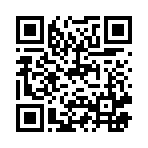

Woordenlijst
Voor de spelling der
Nederlandsche taal,
Woordenlijst
voor de spelling der
Nederlandsche taal.
Typ. van A. W. Sijthoff’s Uitg.-Maatschappij te Leiden.
[V]
De regeling der spelling voor het Nederlandsch Woordenboek, die onlangs door ons tot stand werd gebracht, heeft bij onze taalgenooten in Noord en Zuid een gunstiger onthaal gevonden dan wij ooit hadden durven vermoeden. Terwijl wij aanvankelijk geene andere bedoeling hadden dan de schrijfwijze vast te stellen, die in het Woordenboek zou worden gevolgd, is het ons weldra gebleken, dat de herziening onzer orthographie ook in ruimeren kring haren invloed zou doen gevoelen. De oude spelling, die in 1804 bij besluit van het Staatsbewind der Bataafsche Republiek was ingevoerd, en die tot voor weinige jaren, ondanks de heftige bestrijding door Bilderdijk en zijne volgelingen, bijna algemeen in gebruik was gebleven, begon bij het jongere geslacht meer en meer tegenstand te vinden. De gebreken, die haar aankleefden, werden door den vooruitgang der wetenschap telkens duidelijker in het licht gesteld. Allen, die zich eenigermate met taalstudie onledig hadden gehouden, gevoelden zich afkeerig van het voortsukkelen in de oude sleur, waartegen hunne betere overtuiging op zoo menig punt in verzet kwam. Maar ook het groote publiek, dat zich weinig om taalkunde bekommerde en zich van de gebreken der spelling geene rekenschap gaf, kon toch op den duur geen vrede hebben bij den bestaanden toestand, omdat de regeling van 1804 slechts een deel der spelquaestiën had beantwoord, en de lastigste vraagstukken, die telkens te pas kwamen, onaangeroerd had gelaten, als b. v. het al of niet aaneen schrijven van woorden en uitdrukkingen, de keuze der verbindingsklanken tusschen de twee leden eener samenstelling, het gebruik van het koppelteeken, de scheiding der woorden bij het afbreken, de spelling der bastaardwoorden, enz. Omtrent al deze punten bleef bij voortduring onzekerheid bestaan. Ieder moest trachten zich zoo goed mogelijk te redden; nergens was eenig richtsnoer te vinden. Vandaar een onophoudelijk weifelen en wankelen, even onaangenaam en hinderlijk in de practijk, als schadelijk voor den waarachtigen bloei der taal, wier welbegrepen belang in de eerste plaats eene ordelijke regelmaat en vastheid van spelling vereischt. Vooral op het onderwijs moest deze staat van zaken uiterst belemmerend werken; en dat bezwaar was niet gering, want een goed en degelijk onderricht in de moedertaal wordt algemeen erkend als de beste steun der nationale beschaving. Geen wonder, dat men met verlangen uitzag naar eene herziening, die alle twijfelachtige punten zou omvatten en de eenparigheid op een hechten grondslag vestigen door het opvolgen van de lessen der taalkunde, naar de eischen van het standpunt, dat die wetenschap in onze dagen bereikt heeft.
Onder zulke omstandigheden is het licht te verklaren, dat de pogingen der Redactie van het Woordenboek in de belangstelling van het publiek eene krachtige aanmoediging en ondersteuning mochten vinden. Na rijp [VI]overleg met andere beoefenaars onzer taal, na nauwkeurige overweging van alle zwarigheden en bedenkingen, werd eindelijk de spelling voor het Woordenboek bepaald. Het was daarbij ons streven, aan den eenen kant zooveel mogelijk de voorschriften der wetenschap in acht te nemen, en aan de andere zijde de onloochenbare rechten van het gevestigde gebruik niet te miskennen. Wij hielden ons overtuigd, dat eene zoogenaamde radicale herziening, die geheel van theoretische beginselen uitging en het bestaande niet in rekening bracht, noodwendig òf volkomen onpractisch en onbruikbaar moest wezen, òf wel hoogst noodlottig zou werken op de ontwikkeling en beschaving der taal, die eene gemeenschappelijke bezitting der natie is, en waarin dus de grammaticus, zelfs waar het alleen den uiterlijken vorm betreft, slechts met de grootste behoedzaamheid die wijzigingen mag aanbrengen, die hij gebiedend noodzakelijk acht. De ondervinding heeft onze handelwijze niet gelogenstraft. Het Koninklijk Besluit, waarbij de spelling van het Nederlandsch Woordenboek in België voor het onderwijs in de staatsscholen en voor de stukken, van de Regeering uitgaande, is vastgesteld; de eenparigheid, waarmede zij aanstonds door de Vlaamsche schrijvers aangenomen en in de Vlaamsche dagbladen ingevoerd werd; de bereidwilligheid van zoovelen hier te lande om de nieuwe spelregels tot de hunne te maken en door hun voorbeeld aan te bevelen; bovenal de bijzondere belangstelling, die de zaak bij onze vaderlandsche onderwijzers heeft opgewekt: dit alles getuigt genoegzaam, dat de door ons gevolgde beginselen inderdaad niet onpractisch zijn geweest en kans hebben goede vruchten te dragen. Dat onze spelling ook bestrijders heeft gevonden, is niet meer dan natuurlijk. Dit is het lot van iedere herziening, welke zaak zij ook betreft, en het ingewikkelde—ten deele onoplosbare—vraagstuk der orthographie zal wel altijd aanleiding geven tot verschil van meeningen en wenschen. Inzonderheid is dit het geval met de spelling der bastaardwoorden, het onderwerp dat aan sommigen den meesten aanstoot heeft gegeven, en dan ook uit den aard der zaak zooveel speelruimte laat aan individueele beschouwingen, dat eenparigheid van inzicht hier niet kan bestaan. De bestrijding van onze gevoelens was ons dus evenmin onverwacht als onwelkom. Het onderzoek mag nimmer afgesloten worden, en aan niemand is het gegeven de waarheid, die het doel van ons aller streven is, anders dan bij benadering te bereiken. Het zijn vooral de verdedigers van het volstrekte behoud en de voorstanders eener algemeene en radicale hervorming, die zich over onze spelregeling ontevreden of onvoldaan hebben getoond. De eersten klagen dat wij te ver, de anderen dat wij niet ver genoeg zijn gegaan. Bij zoo verschillende standpunten was dit voor beiden wel niet anders mogelijk; maar evenmin mogelijk is en blijft het voor ons, ook na alles wat over de quaestie in het midden is gebracht, de grondbeginselen, waarvan zij uitgaan, als de ware te erkennen, en hetzij van eene “versteende spelling”, hetzij van eene algeheele omkeering van het bestaande, eenig heil voor de taal te verwachten.
Wij hebben ons verplicht geacht—en reeds voor eenige maanden bereid verklaard—aan het verlangen van hen, die de spelling van het Woordenboek wenschen aan te nemen, te gemoet te komen door het leveren van een practisch hulpmiddel, waarbij men zal kunnen te rade gaan, om in ieder voorkomend geval de toepassing te leeren kennen van de regelen, in de Grondbeginselen breedvoerig ontvouwd. Aan die belofte voldoen wij thans door de uitgave van deze Woordenlijst voor de spelling.
Om werkelijk bruikbaar te zijn voor het doel, waartoe zij bestemd was, moest deze lijst op breeder schaal aangelegd worden, dan gewoonlijk met dergelijke werkjes het geval is. Het boekje moest het antwoord bevatten [VII]op alle vragen, die zich, voor zoover de spelling en de geslachten betreft, bij het schrijven onzer moedertaal kunnen voordoen. Wij mochten dus de samengestelde woorden niet achterwege laten, want juist de bepaling der verbindingsletters tusschen de beide leden eener samenstelling en de vraag, in hoeverre de woorden, die een vereenigd begrip aanduiden, al dan niet aaneen geschreven behooren te worden, maakt een voornaam gedeelte van onze spelregeling uit.
Wij hebben ons derhalve in het algemeen tot regel gesteld, alle woorden op te nemen, samengestelde en afgeleide zoowel als grondwoorden, met uitzondering alleen van diegene, bij welke iedere aanwijzing volstrekt overbodig zou wezen. Het getal echter van deze laatste, die achterwege konden blijven, was niet gering. Het omvatte al die samenstellingen, wier beide deelen elk afzonderlijk op hunne plaats voorkomen, terwijl het geheele woord hetzelfde hoofdbegrip uitdrukt als het laatste lid, en dus ook hetzelfde geslacht behoudt. Woorden als burgerrecht, huisdeur, houthandel, korenmolen, taalkennis, vuurwerk enz. behoefden geene opzettelijke vermelding. Doch zoodra het eerste lid der samenstelling òf eenige verandering heeft ondergaan, òf uit den blooten stam van een werkwoord bestaat, die geen zelfstandig woord uitmaakt, òf wel bij de verbinding met het tweede lid een tusschenklank vereischt, moet het woord in zijn geheel worden opgenomen. Latafel en veerkracht mochten niet ontbreken, omdat la van lade en veer van veder in vorm verschilt. Aan leesboek, schrijftafel enz., kwam eene plaats toe, omdat lees en schrijf, de stammen der werkwoorden lezen en schrijven, op zichzelve niet bestaan; aan handelwijze, strijdbijl enz., omdat zij niet van de znw. handel en strijd, maar van de stammen der werkwoorden handelen en strijden gevormd zijn. Eikeboom, ossetong, hondenhok, rattenkruit, eierstruif, runderpest, manspersoon, vaderlandsliefde enz., moesten vermeld worden om de ingevoegde klanken e, en, er, of s, tusschen welke de keuze niet zelden twijfelachtig zijn kan. Evenzoo wanneer het samengestelde woord een ander hoofdbegrip uitdrukt dan het laatste lid, of daarvan in geslacht verschilt, al zijn ook de beide leden in den vorm onveranderd gebleven. Zoo is b. v. een melkbaard geen baard, en een losbol geen bol, maar beide zijn benamingen van personen geworden; een pijlstaart is geen staart, maar een vogel; een drievoet geen voet, maar een zetel op drie voeten. Zoo is het woord visch meestal en wortel altijd mannelijk, maar panvisch en veenwortel zijn vrouwelijk, als collectieve benamingen. Al deze en dergelijke woorden moesten afzonderlijk worden aangeteekend, en evenzeer die oneigenlijke samenstelligen, als hoogeschool, grootvorst, nimmermeer, overoud, voorgoed, ternauwernood enz., waarbij het noodig was te doen opmerken, dat zij eene eenheid uitmaken en dus aaneen behooren geschreven te worden.
Ook in het opnemen der meest gebruikelijke bastaardwoorden moesten wij met eenige ruimte te werk gaan, om de toepassing der beginselen, die wij in dit deel der spelling hebben aangenomen, in de bijzonderheden te doen kennen. Men zal daaruit bespeuren, dat wij de rechten der gastvrijheid milder en onbekrompener opvatten dan sommige sprekers op het Rotterdamsche Congres hebben gedaan; dat wij de vreemdelingen, die geen misbruik maken van ons vertrouwen, volgaarne in ons midden toelaten; hen geheel als burgers erkennen, zoodra zij getoond hebben dit te begeeren; maar hen ook, in het tegenovergestelde geval, vrijlaten zich te vertoonen in hunne nationale kleederdracht, die hun zoo goed staat, in plaats van hun, ongastvrij en onwellevend, een Nederlandsch gewaad op te dringen, dat niet voor hunne leden geschapen is.
Een aantal woorden, in deze lijst voorkomende, zal misschien bij menigeen [VIII]bevreemding wekken, en zeker aan velen onbekend zijn. Wij mochten ze echter niet weglaten. Het zijn meerendeels kunstwoorden, tot het zeewezen of tot verschillende neringen en ambachten betrekking hebbende, namen van dieren en planten, en dergelijke. Aan die minbekende uitdrukkingen eene verklaring toe te voegen, scheen hier overbodig, omdat het boekje niet bestemd is om gelezen, maar om nageslagen te worden, en niemand een woord zal naslaan, ten einde zich van de spelling of het geslacht te overtuigen, dan wanneer hij dat woord en zijne beteekenis reeds kent. Alleen ter onderscheiding van gelijkluidende woorden, of waar een zelfde woord, in twee verschillende opvattingen, een verschillend geslacht aanneemt, of waar, om welke reden ook, eenige misvatting ontstaan kon, was eene korte aanduiding noodig, om te doen zien welk woord of welke beteekenis door ons bedoeld werd.
Bij ieder woord is al datgene aangeteekend, wat men behoort te weten om de spelling ook in de verbogene en afgeleide vormen te kennen: bij de zelfst. naamwoorden het geslacht, alsmede de meervoudsvorm en het verkleinwoord, waar die beide gebruikelijk zijn; bij de bijvoegl. naamwoorden de verbogen vorm, zoo dikwijls daarbij eenige twijfel bestaan kon, en tevens de trappen van vergelijking, voor zooverre de beteekenis die toelaat en het gebruik ze erkent; eindelijk bij de werkwoorden de sterke of zwakke vervoeging, het gebruik van het hulpwoord hebben of zijn, en de aanwijzing, waar dit te pas kwam, of zij scheidbaar of onscheidbaar worden gebezigd.
In de bepaling van de geslachten der naamwoorden zijn wij meermalen afgeweken van de opgaven, in vroegere woordenboeken en woordenlijsten te vinden. Geen onderwerp uit onze spraakkunst heeft misschien tot zooveel willekeur en verwarring aanleiding gegeven. Het was volstrekt noodzakelijk hier naar orde en regelmaat te streven, en dáár althans, waar het geslacht onzeker en door het gebruik niet genoegzaam bepaald was, zelfstandig eene keuze te doen in overeenstemming met de gezonde beginselen, die hier behooren te gelden, en die de taal zelve, bij oplettende waarneming, duidelijk genoeg aanwijst. Ten einde ons te vrijwaren tegen de verdenking, als hadden wij ons in dit opzicht—op gelijke wijze als onze voorgangers—aan willekeur schuldig gemaakt, laten wij hier eene opzettelijke beschouwing volgen over de regeling der geslachten, waarin wij rekenschap geven van de beginselen, die ons tot richtsnoer hebben verstrekt.
Aan eene vroegere belofte getrouw, geven wij hier tevens een beknopt overzicht van de door ons aangenomen spelregels, in zooverre zij van de tot hiertoe gebruikelijke schrijfwijze afwijken, of de gapingen in het vroegere stelsel aanvullen. Voor het gemak van den lezer, die zich aan onze spelling wenscht aan te sluiten, zal zulk eene korte schets niet ondienstig zijn. Vooral voor het onderwijs in de lagere en middelbare scholen kan zij haar nut hebben.
Ondanks al de moeite en zorg, door ons aan dit boekje besteed, is het niet vrij gebleven van leemten en gebreken, niet wel te vermijden bij den overvloed der behandelde stof, waarbij ook de nauwlettendste aandacht somtijds te kort schoot. In eene eerste proeve van zulk eene meer volledige woordenlijst, waarvoor de bouwstof ten deele uit het hoofd moest aangevuld worden, is het licht te begrijpen, dat een aantal woorden ontbreken, die volgens ons plan moesten opgenomen zijn. Wat wij reeds hebben opgeteekend, kan bij een mogelijken herdruk zijne plaats vinden. Gelukkig zijn er weinig woorden onder, wier gemis eenige ongelegenheid kan veroorzaken. De enkele, waarbij dit het geval is, hebben wij aan het slot als aanhangsel medegedeeld, en daaraan tevens eene opgave toegevoegd [IX]van die misstellingen, die ons in het oog zijn gevallen. Het overige moge men welwillend verschoonen.
Bij een arbeid, die in een betrekkelijk korten tijd moest worden voltooid, viel er niet aan te denken om den rijken schat der voor het Woordenboek verzamelde bouwstoffen geregeld na te zien en te vergelijken. Het is licht mogelijk—en zelfs waarschijnlijk—dat onze meening omtrent de spelling of het geslacht van enkele woorden eenige wijziging zal ondergaan, naarmate wij die papieren gaandeweg onderzoeken. Eens voor al zij daarom aangemerkt, dat wij deze Woordenlijst geenszins beschouwen als voor ons zelven in ieder onderdeel verbindend. Waar wij dwalingen ontdekken, zullen wij die aanstonds herstellen. De uitgave van het Woordenboek, die ons verplicht elk woord op zijne beurt te wikken en te wegen, zal tevens het beste middel zijn, om den hier geleverden voorlooper allengs aan te vullen en te verbeteren.
Wij hebben een aangenamen plicht te vervullen, door erkentelijk het aandeel te vermelden, dat onze geachte vriend Dr. W. Bisschop in de samenstelling van dit werkje heeft genomen. Mochten wij hem reeds sinds lang waardeeren als een wakker medearbeider aan de verzameling der bouwstoffen voor het Woordenboek, altijd volvaardig om ter bevordering van de belangen onzer taalkunde de behulpzame hand te bieden, thans vooral heeft hij ons met de meeste heuschheid en met onvermoeibaren ijver ter zijde gestaan, en inzonderheid krachtig bijgedragen om onze Woordenlijst zoo volledig mogelijk te maken. Zonder zijnen bijstand zou deze arbeid nog vrij wat meer tijd aan het Woordenboek ontroofd hebben. Wij brengen hem openlijk onzen oprechten dank voor hetgeen wij aan zijne vriendschappelijke medewerking verschuldigd zijn.
Er blijft ons niets overig dan ons leedwezen te betuigen, dat de vervaardiging van dit boekje zulk eene stremming in de bewerking van het Woordenboek heeft veroorzaakt. Een kostbare tijd van vier maanden is, met al zijne drukte en inspanning, wel niet—zoo wij hopen—voor de goede zaak verloren gegaan, maar toch voor het hoofdwerk ongebruikt gebleven. Ultra posse nemo obligatur; het is niet mogelijk twee dingen te gelijk te doen, die beide den geheelen mensch vorderen. Mogen onze landgenooten, ter wille van het gemak dat hun deze Woordenlijst aanbiedt, de onvermijdelijke vertraging in de uitgave van onzen lexicographischen arbeid voor lief nemen. Gelukkig hebben wij thans alle bijkomende werkzaamheden, die het Woordenboek noodzakelijk vereischte, voorgoed ten einde gebracht. Van nu af aan kan onze zorg onverdeeld aan de hoofdzaak gewijd zijn. Wij durven haar dus in het vervolg een geregelder en vlugger voortgang voorspellen.
D. V. en T. W.
Leiden, 22 November 1865. [X]
Sedert de eerste uitgave van deze Woordenlijst is de belangstelling van het publiek in de herziene spelling van het Nederlandsch Woordenboek bij voortduring toegenomen. Thans wordt die spelling, zoover mij bekend is, in alle richtingen van middelbaar en lager onderwijs—althans in de steden—gevolgd, gelijk zij reeds door de groote meerderheid onzer letterkundige schrijvers en in de meeste dagbladen en tijdschriften is aangenomen. Dit gunstig onthaal van onze pogingen, die de vestiging van eene eenparige en op degelijke gronden steunende schrijfwijze onzer taal ten doel hadden, heeft binnen weinige jaren een herdruk van dit boekje noodzakelijk gemaakt. Aan de bewerking daarvan mocht ik mij niet onttrekken, hoe vermoeiend en verdrietig die taak ook was, nu dubbel zwaar, nu zij op mij alleen rustte, en mij steeds de weemoedige herinnering voor den geest stond van den onvergetelijken vriend, met wien ik vroeger zoo broederlijk mocht samenwerken, en wiens leerrijke omgang mij ook den moeilijksten arbeid tot een waar genoegen placht te maken.
Het spreekt vanzelf, dat de herdruk van dit werkje eene algeheele herziening heeft uitgelokt. In de zes jaren, die sedert de uitgave verliepen, was menige onnauwkeurigheid opgemerkt en inzonderheid veel aangeteekend wat in de eerste proeve ontbrak. Ik heb daarom alles met de grootste zorg opnieuw nagegaan en getoetst, een aantal onjuistheden verbeterd, en in ’t geheel ongeveer vijf duizend nieuwe woorden opgenomen. Om aan het mij medegedeelde verlangen van velen te voldoen, is inzonderheid aan de bastaardwoorden eene aanzienlijke uitbreiding gegeven. Zoo heeft onze Woordenlijst door deze tweede bewerking thans die nauwkeurigheid en die betrekkelijke volledigheid bereikt, die haar in de practijk zooveel bruikbaarder zullen maken.
Omtrent de veranderingen, die ik, door beter inzicht voorgelicht, in de spelling van sommige woorden gemaakt heb, zal ik hier niet in het breede uitweiden. Ten deele hoop ik daarvan rekenschap te geven in de nieuwe uitgave van de Grondbeginselen der Nederlandsche Spelling, die thans ter perse is, terwijl ik enkele punten, die een meer opzettelijk betoog behoeven, elders afzonderlijk hoop te behandelen. Het voornaamste betreft: 1º de verbetering van komenij, plooten en zelen (mv. van zeel), in koomenij, ploten en zeelen, zooals door de afleiding geeischt wordt; 2º de terugbrenging van druisen, dat op eene misvatting berustte, tot het oude en betere druischen, en daarentegen de verbetering van torschen in torsen, van welk laatste ik de juistheid reeds heb aangewezen in den Taalgids, IX, 175; 3º de verandering van jufvrouw en nogtans in juffrouw en nochtans, welke vormen mij verreweg de voorkeur schijnen te verdienen; 4º de invoeging der ch in de woorden aardschgezind, hemelschgezind, kerkschgezind en wereldschgezind, waarover reeds in het Woordenboek, I, 569, gehandeld is; en 5º de vervanging van d door t in verkleinwoorden als laatje, slaatje, bedsteetje, sleetje, zootje, zijtje, luitjes enz., van de samengetrokken vormen la, sla, bedstee, slee, zoo, zij, lui (lieden). Omtrent dit laatste punt zij hier alleen opgemerkt, dat de gebruikelijke spelling laadje, slaadje enz., die wij vroeger ook onbedacht overnamen, op geenerlei wijze te rechtvaardigen is. De d van lade, salade, slede enz., is in de samentrekking la, sla, slee voorgoed verdwenen. De verkleinwoorden zijn van die samentrekkingen gevormd, nadat die letter was uitgevallen. Er kan dus geen de minste reden bestaan om de d [XI]terug te roepen, en laadje, slaadje, sleedje, te schrijven. Die vormen zouden op grondwoorden als laad, slaad, sleed wijzen, die niet bestaan. Van lade, salade, slede, zou ladetje, saladetje, sledetje, de regelmatige verkleining zijn; maar nu de taal die verkleinwoorden alleen van de samengetrokken vormen afleidt, die op klinkers uitgaan, is ook de t de letter, die hier vereischt wordt: laatje, sleetje, zijtje, luitjes, van la, slee, zij, lui, evenals paatje en maatje, zeetje, bijtje en buitje, van pa en ma, zee, bij, bui enz. De vroegere spelling was enkel het gevolg van een misverstand, dat men slechts behoeft op te merken, om er terstond de onjuistheid van in te zien.
Ik eindig met oprechte dankbetuiging aan mijne vrienden E. Verwijs, W. Bisschop en J. H. van Dale, wier voortdurende en opmerkzame belangstelling ter aanvulling en zuivering van deze Woordenlijst zooveel bijgedragen, en wier trouwe hulp mij gedurende de bewerking dezer nieuwe uitgave nooit ontbroken heeft.
Leiden, 8 April 1872. M. D. V.
Deze derde uitgave is door mij opnieuw zorgvuldig herzien, aangevuld, en met den vierden druk van onze Grondbeginselen der Nederlandsche spelling in overeenstemming gebracht.
Leiden, 4 December 1879. M. D. V.
In 1893 heb ik van de Woordenlijst van De Vries en Te Winkel een vierden druk bezorgd, in 1898 een vijfden, en thans verschijnt een zesde. Met inachtneming van het stelsel der ontwerpers heb ik in de nieuwe uitgaven een aantal woorden opgenomen die door het publiek ongaarne werden gemist, en vele andere, die weinig in gebruik zijn, kon ik weglaten. De omvang van het boek is daardoor ongeveer dezelfde gebleven.
Leiden, September 1904. A. Kluyver.
Ook de bewerker van den zevenden druk van de Woordenlijst heeft daarin een aantal woorden opgenomen die in de oudere drukken niet staan, maar die men, naar ’t hem voorkomt, thans in deze lijst wenscht te vinden. Om echter, zooveel mogelijk, binnen het gewone bestek te blijven, moesten opnieuw eenige weinig gebruikelijke of allengs verouderde woorden worden weggelaten.
Leiden, October 1914. A. Beets. [XII]
1. De onderscheiding van de geslachten der zelfstandige naamwoorden openbaart zich door de verschillende vormen, die deze woorden zelve en de bepalende woorden (lidwoorden en bijvoeglijke naam- en voornaamwoorden), waarvan zij vergezeld gaan, in de verbuiging aannemen.
2. Van een aantal woorden is het geslacht en dus ook de verbuiging door hunne beteekenis of door hun vorm bepaald. Zoo zijn manlijk man en baas om de beteekenis, loop, snuiter en blafferd (register) om den vorm, te weten loop als stam (wortel) van het werkwoord loopen, snuiter en blafferd om de achtervoegsels -er en -erd.
3. Bij andere echter, wier geslacht niet uit de beteekenis noch uit den vorm blijken kan, hebben verschillende oorzaken samengewerkt om de verbuiging en daarmede ook het geslacht onzeker te maken. In het gewone gesprek zijn de 2de en 3de naamvallen (des mans, den manne, der vrouw, der vrouw, des kinds, den kinde) buiten gebruik geraakt, zoodat slechts de 1ste en 4de in de gesprokene taal gebezigd worden. In het manlijke en vrouwelijke geslacht zijn de 1ste naamvallen (de man, de vrouw) uit hunnen aard eensluidend, terwijl de 4de (den man, de vrouw) door de gewone onderdrukking der n achter eene toonlooze e eensluidend worden. Sommige woorden, b. v. heug, meug en luid, in de uitdrukkingen tegen heug en meug en naar luid van, hebben nooit eenig bepalend woord bij zich, waaruit hun geslacht zou kunnen blijken. Uit een en ander vloeit voort, dat er woorden zijn, aangaande wier geslacht volstrekt niets bekend is, en andere, waarvan men slechts weet dat zij niet onzijdig zijn, zoodat men tusschen manlijk en vrouwelijk te beslissen heeft.
4. Slechts van de woorden, die aangetroffen worden in geschriften uit den tijd, toen zij nog in het gesprek verbogen werden, kent men het geslacht met zekerheid. Aan vele, die niet tot deze categorie behooren, hebben woordenboekschrijvers, niet zelden geheel willekeurig en vandaar soms uiteenloopend, een geslacht toegekend. Zulke opgaven missen natuurlijk alle gezag en waarde, wanneer zij niet door de analogie worden gesteund; en de grammaticus kan noch mag ze als geldig erkennen, indien hij ze met ons taaleigen in strijd vindt. In zulke gevallen hebben wij niet geaarzeld van de bestaande woordenboeken af te wijken en dat geslacht op te geven, dat met onbetwistbare regels of met de hedendaagsche richting in de taal overeenstemt. Evenzoo hebben wij gehandeld ten aanzien van die woorden, wier geslacht nog door niemand was vermeld.
5. Bij de woorden, uit wier beteekenis en vorm niets aangaande het geslacht is op te maken, en waarvan men alleen weet dat zij niet onzijdig [XIII]zijn, doordien zij nooit het, dit of dat vóór zich nemen, hebben wij om de volgende bedenkingen aan het vrouwelijke geslacht de voorkeur gegeven:
Het verwerpen der verbogen vormen (honds, honde, schaaps, schape enz.) en het onderdrukken der n achter de toonlooze e der bepalende woorden (den, dezen, zijnen, goeden enz.) staat bij woorden, wier geslacht niet van elders blijkt, gelijk met het overbrengen in het vrouwelijke. Het lijdt dus geen twijfel, dat de hedendaagsche taal het vrouwelijke geslacht voortrekt. De woordenboekschrijver, die haar geen geweld aandoen en aan den stijl niet noodeloos een voorkomen van stijfheid geven wil, volgt dien wenk, wanneer er geene redenen bestaan die zulks verbieden. Daarom noemen wij b. v. het ter kwader ure uit den vreemde ontleende halt vrouwelijk, niettegenstaande het in de oorspronkelijke taal manlijk is.
6. Een anderen algemeenen wenk hebben wij gemeend te zien in de volgende opmerking:
Woorden, die zeer verschillende beteekenissen hebben, die b. v. nu eens als voorwerpsnamen, dan als stofnamen, nu in abstracten, dan in concreten zin genomen worden, hebben niet zelden naar gelang der opvatting een verschillend geslacht. Zoo zijn b. v. diamant en doek als voorwerpsnamen M. (een kostbare diamant, een dure doek), maar als stofnamen O. (het kostbare diamant, het fijnste doek);—val, voor het vallen genomen, is M. (een zwaren val doen), voor werktuig om te vangen V. (in de val loopen);—pekel en sneeuw zijn, in eigenlijken zin gebezigd, V. (in de pekel zetten, in de sneeuw rollen), in overdrachtelijken (voor de zee en blankheid) O. (het schuimende pekel bevaren, het sneeuw van den hals eener schoone). Ook de stijlsoort bepaalt soms het geslacht van een woord. Zoo is b. v. oogenblik in het dagelijksch gesprek en in gewonen stijl O. (van dat oogenblik af); maar in verheven stijl M. (“die oogenblik zal haast verschijnen”).
Het aantal dergelijke onloochenbare en algemeen erkende onderscheidingen is allengs toegenomen, hetgeen bewijst, dat de taal ook het verschillend gebruik der geslachten aan de duidelijkheid tracht bevorderlijk te maken. Zoo verstaat men thans door het eigendom de bezitting, de zaak die men bezit, door den eigendom het recht om te bezitten; ofschoon Kluit, Siegenbeek noch Weiland die onderscheiding schijnen gekend te hebben. Kant werd voorheen onverschillig M. en V. gebezigd; thans bezigt men het woord in den zin van zijde steeds M., in dien van speldenwerk altijd V. Een en ander geeft den grammaticus het recht, bij woorden die in meer dan één geslacht gebezigd worden, al heeft het gebruik nog niet beslist, dergelijke onderscheidingen aan te nemen, mits hij daarbij niet willekeurig, maar naar de analogie van algemeen geldige regels te werk ga.
7. De regels, die ons bij de geslachtsbepaling bestuurd hebben, zijn van tweeërlei aard: zij steunen òf op de beteekenis der woorden, òf op hun vorm; vergel. § 2. Veelal stemmen de beteekenis en de vorm overeen, b. v. bij het manl. leugenaar, dat een man beteekent en met het manl. achtervoegsel -aar gevormd is. Soms echter bestaat er strijd tusschen de beteekenis en den vorm, b. v. bij kamenier, dat eene benaming van eene vrouw is, maar op het achtervoegsel -ier eindigt, hetwelk in persoonsnamen anders altijd een man aanduidt.
8. Wanneer er strijd is tusschen den vorm van een woord en zijne beteekenis, dan doet zich de vraag voor, welke van beide den boventoon moet hebben. Ten opzichte van persoonsnamen is deze vraag gemakkelijk te beantwoorden. Uit het voorbeeld van kamenier, dat in weerwil van den uitgang V. is, blijkt, dat de beteekenis—hier de kunne—meer geldt dan de vorm. Hetzelfde ziet men o. a. bij de woorden op -ling en de verkleinwoorden op -je. Het achtervoegsel -ling, eigenlijk l-ing (niet te verwarren [XIV]met -ing, oorspronkelijk -ung, dat van werkwoorden abstracte zelfst. nw. als vermaning enz. vormt), is manlijk, blijkens hoveling, kamerling enz. Dit verhindert echter niet, dat men doopeling, leerling enz., van meisjes gebezigd, vrouwelijk maakt en er dan duidelijkheidshalve veelal eene e achtervoegt: eene leerling of leerlinge.—Het achtervoegsel -je (-tje, -pje) vormt verkleinwoorden, die onzijdig zijn (het baasje dat enz., van het manlijke baas), en moet dus tot de onzijdige uitgangen gerekend worden. Intusschen nemen de woorden Jantje, Klaasje, Mietje, Naatje enz. hunne bepalingen in het manlijk of vrouwelijk geslacht bij zich, wanneer zij als gewone eigennamen gebezigd worden, waarbij men niet aan de verkleinende kracht van het achtervoegsel denkt (Jantje, die daar loopt te spelen; Mietje, die zit te breien). Wanneer echter eene der beteekenissen, die aan het verkleinende achtervoegsel verbonden zijn, het begrip van kleinheid, bevalligheid, nietigheid enz., te voorschijn treedt, dan herneemt het achtervoegsel zijne volle kracht en het woord laat slechts bepalingen in het onzijdige geslacht toe, onverschillig, of een manl. of vrouwel. persoon bedoeld wordt (Het kleine Jantje, dat zoo zoet speelt; het lieve Mietje, dat zoo vlug breit).
9. Daar nu bij persoonsnamen de vorm onderdoet voor het natuurlijke geslacht, hebben wij niet geaarzeld dit beginsel ook op diernamen toe te passen, die in de taal nu eens als persoons- dan als zaaknamen beschouwd worden. Daarom hebben wij b. v. gemeend aan kuiter, wijfjesvisch, het vrouwel. geslacht te moeten toekennen, in tegenstelling van hommer en milter, benamingen voor mannetjesvisch, ofschoon die woorden denzelfden vorm hebben en -er doorgaans manl. woorden vormt.
10. Bij zaaknamen gaat de taal minder regelmatig te werk, en laat zij somtijds de achtervoegsels meer gelden dan de beteekenis der woorden. Zoo worden b. v. linde en tamarinde algemeen, kennelijk om de toonlooze e, V. genomen, niettegenstaande de overige namen van boomen M. zijn; daarentegen zijn de benamingen van schepen, op -er uitgaande, als hoeker, kaper, lichter, M., in weerwil dat de overige V. of O. genomen worden. In de meeste gevallen echter, waarin de vorm minder duidelijk spreekt, wordt aan de onderscheiding der beteekenissen de voorkeur gegeven boven het geslacht, dat de vorm zou vereischen. Zoo zijn b. v. de stammen (de zoogenaamde wortels) der werkwoorden vanouds M., en behouden ook nu dit geslacht, zoolang zij in abstracten zin worden gebezigd; doch zij worden als V. gebruikt, wanneer zij eene concrete beteekenis hebben aangenomen. B. v. val en greep, voor het vallen en grijpen, zijn M., maar als voorwerpsnamen, voor (muizen)val en handvatsel, worden zij tegenwoordig als V. aangemerkt. Aan het achtervoegsel -sel wordt algemeen het onzijd. geslacht toegekend, en toch zegt iedereen de stijfsel.
Uit een en ander ziet men, dat de taal bij zaaknamen niet naar een algemeen beginsel te werk gaat, en dat de grammaticus derhalve verplicht is daarbij de omstandigheden in aanmerking te nemen en soms, althans schijnbaar, inconsequent te handelen.
11. De geslachtsregels, die wij hier laten volgen, zijn in de twijfelachtige gevallen door ons als geldig beschouwd. Wij hebben gemeend geene uitzonderingen te moeten erkennen, dan die ons voorkwamen boven bedenking verheven te wezen. Die uitzonderingen hebben wij alleen dan opgegeven, wanneer zij zoo weinig in getal zijn, dat zij zich gemakkelijk in het geheugen laten prenten.
Ten einde misverstand te voorkomen, geven wij vooraf de verklaring van eenige kunsttermen, waarvan wij ons bediend hebben.
12. Gemeenslachtige woorden (nomina communis generis) zijn namen van menschen en dieren, die voor individuen van beiderlei kunne gebezigd [XV]worden, en, naar gelang daarvan, nu M. dan V. zijn; anders gezegd, woorden, wier geslacht afhangt van de kunne van het wezen, dat zij op het oogenblik aanduiden. Hiertoe behooren de meeste woorden op -ling, als doopeling, drenkeling, hokkeling (jong rund) enz., en een aantal woorden van allerlei vorm, als bode, dienstbode, getuige, wees, erfgenaam enz.—In den laatsten tijd is men begonnen aan de meeste dezer woorden, ter onderscheiding, eene toonlooze e toe te voegen, wanneer zij vrouwelijke wezens aanduiden: eene leerlinge, eene erfgename enz., een gebruik dat, als bevordelijk aan de duidelijkheid, alle aanbeveling verdient. Bij de woorden op genoot, die mede oorspronkelijk gemeenslachtig waren, als deelgenoot, echtgenoot, lotgenoot, is dat gebruik thans zoo algemeen aangenomen, dat het als de regel mag beschouwd worden: men schrijft thans veelal in ’t V. deelgenoote, echtgenoote, lotgenoote.—Nevens eene bode, dat alleen in deftigen stijl gebezigd wordt, staat bodin voor eene vrouw wier beroep het is boodschappen te doen.
In uitgebreider zin noemt men ook wel andere woorden gemeenslachtig, wanneer zij, bij verschil van opvatting, van geslacht veranderen, b. v. schildpad, dat V. is, wanneer men het dier zelf bedoelt, maar O., wanneer men denkt aan de schaal, beschouwd als eene stof waaruit voorwerpen vervaardigd worden. Voor zulke woorden zouden wij aan de benaming meerslachtig de voorkeur geven.
13. Zelfslachtige woorden (nomina epicoena) zijn namen van menschen en dieren, die niet op de kunne zien, maar onverschillig of zij een manlijk dan wel een vrouwelijk wezen aanduiden, hetzelfde geslacht behouden. Hiertoe behooren mensch, dat in de gewone opvatting M., maar, wanneer men met verachting spreekt, O. is, en in beide gevallen zoowel eene vrouw als een man kan beteekenen; het M. hond, waardoor men evenzeer eene teef als een rekel verstaan kan; kameel (M.), olifant (M.), muis (V.), rat (V.), fret (O.), konijn (O.), enz.
14. Door voorwerpsnamen verstaan wij benamingen van voorwerpen, d. i. van stoffelijke dingen, die afgeronde, aan alle zijden begrensde geheelen uitmaken, of althans als zoodanig beschouwd worden. Hiertoe behooren niet alleen woorden als huis, stoel, tafel, stad, staat, gewest, enz., waardoor, streng genomen, geheelen worden voorgesteld, maar ook benamingen van zulke deelen, die kennelijk van de geheelen onderscheiden zijn, als arm, been, kop, staart.
Een kenmerk, dat de taal een zelfst. nw. als een voorwerpsnaam beschouwt, is vooreerst de mogelijkheid van het woord in het meerv. te bezigen; ten andere de mogelijkheid van er het lidwoord een, eene voor te plaatsen. Het is juist de bestemming van dit lidwoord, aan te kondigen dat het volgende woord eene eenheid (of geheel) beteekent; daarom noemen wij dit het lidwoord van eenheid in plaats van niet bepalend lidwoord, eene benaming die aanleiding heeft gegeven, dat men den aard en de bestemming van dit woord geheel miskend heeft.
15. Door stofnamen verstaan wij benamingen van stoffen, d. i. van dingen, die niet als afgeronde en begrensde geheelen worden beschouwd; b. v. goud, hout, ijzer, vleesch, wijn, zand enz. Eene zelfde zaak kan èn als voorwerp èn als stof worden aangemerkt, b. v. een gouden gesp. Noemt men het ding een gesp, dan beschouwt men het als een voorwerp; noemt men het goud, dan merkt men het aan als eene stof, zonder aan de gedaante te denken. Stofnamen hebben geen meerv., en nemen het lidwoord van eenheid niet aan. Spreekt men van wijnen of van een wijn, dan bedoelt men bijzondere soorten, dus begrensde hoeveelheden wijn; houten, ijzers, looden, zijn stukken hout, ijzer of lood van eene bepaalde gedaante. Stofnamen, in het meervoud [XVI]genomen of van het lidwoord van eenheid vergezeld, houden op stofnamen te zijn, maar zijn voorwerpsnamen geworden.
16. Verzamelwoorden (collectiva) zijn woorden, die (in het enkelvoud) eene veelheid van enkele dingen aanduiden, als troep, menigte, soort enz. Er zijn twee soorten van verzamelwoorden. Bij de eene stelt men zich de hoeveelheid als eene eenheid, als een begrensd geheel voor; b. v. bij bende, leger, familie, geslacht. Deze kunnen van het lidwoord van eenheid vergezeld zijn en een meervoud hebben; b. v. een volk, eene bende, volken, benden. Bij de andere wordt de veelheid als onbegrensd, als eene stof gedacht; b. v. bij rogge, gras, panvisch, brandhout, turf, d. i. onbepaalde hoeveelheden van roggekorrels, grasplantjes, visschen, stukken hout of turven. Deze hebben geen meervoud, en nemen het lidwoord van eenheid niet bij zich. Men zegt niet roggen;—grazen is niet het mv. van gras in de gewone opvatting, maar van gras voor grassoort;—turven is het mv. van den voorwerpsnaam (een) turf, niet van den verzamelnaam turf. De eerstgenoemde soort van verzamelwoorden behoort tot de voorwerpsnamen, de tweede tot de stofnamen. Zoo is b. v. volk een voorwerpsnaam in de uitdrukkingen een machtig volk, beschaafde volken; maar een stofnaam, wanneer men zegt: er was veel volk op de been; er is volk in den winkel.
Manlijk zijn:
17. De namen van mannen als Jan, heer, kok, en van manlijke dieren, waarnevens eene afzonderlijke benaming voor het wijfje bestaat, als hengst, kater, stier, nevens merrie, kat, koe. Ontbreekt deze laatste, dan behoort de naam tot de zelfslachtige woorden (epicoena), en moet het geslacht van elders blijken, gelijk b. v. bij haai, kameel, struis enz. M., muis, rat, slang V.
Om het beginsel, in § 8 ontwikkeld, hebben wij gemeend ook het woord wacht en de daarmede samengestelde, als nachtwacht, schildwacht, torenwacht, als M. te moeten beschouwen, wanneer zij manlijke individuen aanduiden, en dus geene collectieve beteekenis hebben. Wij maken derhalve onderscheid tusschen den nachtwacht (klapperman) M., en de nachtwacht (de gezamenlijke politiebeambten, die de wacht hebben) V. Wij hebben te minder geaarzeld in dit geval de hedendaagsche richting in de taal te volgen, omdat de vorm van het woord wacht niets beslist, daar vele woorden op cht M. of O. zijn, als knecht, nacht, plicht, tocht, zucht (diepe ademhaling) M., hecht, licht, recht O. Andere talen zijn ons hier voorgegaan, als b. v. het Zweedsch, dat vakt en de samenstellingen (skyltvakt enz.) als M. bezigt.—Over het onzijdige manspersoon zie beneden, § 36.
18. De namen van boomen, als berk, beuk, den, eik; uitgezonderd linde en tamarinde V. Zelfs de vrouwelijke namen van vruchten worden M., als zij moeten dienen om de boomen aan te duiden, die de vruchten voortbrengen: Hier staat een abrikoos, daar een perzik.
19. De namen van steenen, als individuen beschouwd: een diamant, een agaat. Wanneer zij geene bijzondere steenen, maar slechts de steensoort als stof aanduiden, zijn zij O.: Het diamant is harder dan het agaat.
20. De namen van maanden en jaargetijden, als Mei, zomer, herfst; uitgezonderd lente en de samenstellingen op maand en jaar, als Meimaand, Bloeimaand, voorjaar.
21. De namen van bergen, als Aetna, Himálaya, Dhawalágiri.
22. De namen van munten, als gulden, dukaat, (Spaansche) mat, behalve pistool, guinje en mijt, die V. zijn.
[XVII]
Vrouwelijk zijn:
23. De namen van vrouwen, als Maria, min, baker, en van vrouwelijke dieren, waarnevens eene afzonderlijke benaming voor het mannetje bestaat, als duif, geit, ooi, nevens doffer, bok, ram. Ontbreekt deze laatste, dan behoort het woord tot de zelfslachtige woorden, en moet het geslacht van elders blijken; vergel. § 17.
24. De stofnamen, die niet O. zijn, als kant, wol, kammeling, franje, kruim, aarde, klei.
Bij namen van zaken is aan het manlijk geslacht het begrip van individualiteit, d. i. van eenheid en ondeelbaarheid, verbonden. Stofnamen, waaraan het begrip van begrensdheid en ondeelbaarheid vreemd is, zijn in onze taal V. of O. Zelfs ontegenzeglijk manl. woorden worden O. of V., wanneer zij als stofnamen gebezigd worden.
Ten aanzien van het onz. geslacht blijkt zulks overtuigend uit het onderscheid tusschen den diamant (steen) en het diamant (stof), den doek en het doek, den draad en het draad, enz.
De overgang van het M. in het V. is even ontwijfelbaar, ofschoon nog altijd verkeerd opgevat en ten onrechte verklaard als eene “verkorting van het meervoud”. Ieder gevoelt, dat de uitdrukking den visch koken op éénen visch ziet, en dat de visch koken niet slechts gezegd wordt van meer dan éénen visch, maar ook van gedeelten of mooten, met andere woorden, van visch als stof gedacht, in welk geval het geen meervoud heeft; vergel. § 15. Hetzelfde onderscheid van geslacht bestaat bij aal, baars, paling, snoek, zalm enz. (mv. alen, baarzen enz.), M., en aal, baars enz. (hoeveelheid aal, baars), V. zonder meerv. Zoo spreekt men b. v. van een zeezalm, M. en van krimpzalm, V.; van eenen buitengewoon harden turf, M. en van harde, zwavelige turf, V., als collectief voor turven.
25. Ten gevolge van deze waarneming hebben wij gemeend alle stofnamen, die niet O. zijn en wier geslacht voor het overige onzeker is, als V. te moeten beschouwen. Uitgezonderd zijn natuurlijk die woorden (als de wijn, nectar, honing), die door onze dichters en prozaschrijvers altijd voor M. erkend zijn, en welke thans nog steeds als zoodanig gebezigd worden.
26. De eigenlijke namen van bloemen, als aster, hyacint, lelie, pioen, roos, tijloos enz. Doch de namen, die eigenlijk een ander voorwerp aanduiden en slechts bij overdracht op bloemen toegepast worden, behouden het geslacht dat hun in de eigenlijke opvatting toekomt; b. v. aronskelk, leeuwenbek, gouden regen zijn M., berenoor is O. Wanneer zulke overdrachtelijke benamingen van bloemen of planten als collectieve stofnamen (zie § 16) gebezigd worden, dan zijn zij, gelijk andere stofnamen, V. of O.; b. v. wolfsklauw en slangenwortel zijn V., ofschoon klauw en wortel als voorwerpsnamen M. zijn. Onzijdige woorden, als brood, bloed, blijven O., b. v. duivelsbrood, drakenbloed.
27. De namen van vruchten, als bes, noot, peer, vijg enz.; uitgezonderd die, welke op -ling en -oen uitgaan, als guldeling, kruiling, pippeling, citroen, meloen enz., alsmede de inheemsche namen op -el en -er, als appel, eikel, aker enz. Vreemde namen met deze beide uitgangen worden meest V. genomen, als amandel, dadel, kapper, komkommer enz.
De vrouwelijke namen van vruchten worden M., als zij de boomen aanduiden, welke de vruchten voortbrengen; vergel. § 18.
28. De namen van vaartuigen, als aak, bark, boot, kof enz.; behalve die, welke op de achtervoegsels -er en -aar eindigen, als driemaster, lichter, groenlandsvaarder, uitlegger, rinkelaar enz., die M. zijn, en de onzijdige fregat, galjoen en jacht.
Dat de taal hier het vrouwelijke geslacht wil, blijkt hieruit, dat manl. en [XVIII]onz. eigennamen, op schepen toegepast, als vrouwel. worden gebezigd: Hij commandeert de Tromp; de Friesland zal heden niet varen.
29. De namen der letters en cijfers, als: eene a, eene twee, eene 6.
Onzijdig zijn:
30. De namen van dieren, die de geheele soort aanduiden en waarvan beide het mannetje en het wijfje afzonderlijke namen hebben, als hoen, rund, schaap enz., waarnevens haan en hen, stier en koe, ram en ooi. Uitgezonderd is het manl. hond.
31. De namen van jongen van dieren, als kalf, lam, veulen, welp; uitgezonderd big, V.—Het woord kind (en evenzoo het Friesche bern) kan ook onder dezen regel gebracht worden.
32. De namen van stoffen, waaruit voorwerpen vervaardigd worden: het diamant en agaat, de stoffen waarvan men door slijping diamanten en agaten (M.) maakt. Zoo ook lei, goud, platina, nikkel, barnsteen, schildpad, kurk, draad, doek enz. Uitgezonderd zijn die, welke op eene toonlooze e eindigen, als aarde, serge, zijde enz., alsmede baai, kant, langet en wol, die V. zijn; saai wordt V. en O. gebruikt.
Een aantal der hier bedoelde woorden hebben eigenlijk uit zich zelve een ander geslacht, hetwelk zij behouden, wanneer zij niet als stofnamen worden gebezigd; b. v. band, doek, draad, bever, hermelijn, sabel (dier) M.; kurk, pleister, schildpad, tijk V.
33. De namen van landen, steden en dorpen enz., als het machtige Engeland, het oude Rome. Uitgezonderd zijn die namen van landstreken, welke steeds van het lidwoord de vergezeld gaan, als de Betuwe, de Lijmers, de Krim, de Sahara enz.
34. De meeste verzamelwoorden, als bosch, duin (aaneenschakeling van duinen), heir, loof, ooft, slag (soort), stel (porselein), volk, want enz.; inzonderheid die, welke eene vereeniging van een bepaald aantal individuen aanduiden, als het honderd, het paar, het dozijn, het gros, het snees.
35. Aan het onzijdige geslacht is niet zelden het begrip van onvolkomenheid verbonden. Dit blijkt uit de namen der vormlooze grondstoffen (§ 32), waaraan door bewerking eene bepaalde gedaante moet gegeven worden; uit de namen van jonge, d. i. onvolwassen dieren (§ 31); uit de namen in § 30 vermeld, die de dieren als geslachteloos en zonder kunne voorstellen; ook verzamelingen (§ 16 en 34) worden als zaken zonder vorm of gedaante gedacht. Aan het begrip van onvolkomenheid grenst dat van kleinheid. Daarom zijn de zoogenaamde verkleinwoorden op -je (-tje en -pje) en -ken, als huisje, jongsken, O. Reeds boven, § 8, is aangetoond, dat het de beteekenis is, welke die woorden onzijdig maakt, niet het achtervoegsel. Dit verklaart, waarom de verkleinwoorden op -el, wier verkleinende kracht thans niemand meer gevoelt, niet onzijdig zijn. Deze volgen in den regel het geslacht van het grondwoord, waarvan zij gevormd zijn; zoo zijn b. v. eikel en beukel (als het ware jongen van eenen eik of beuk), hoepel, kneukel, knobbel, druppel, tepel enz. M., evenals eik, beuk, hoep, knok, knop, drup of drop, tip; daarentegen zijn greppel, kruimel, mazel, peukel en pukkel, trommel V., gelijk greb, kruim, maas, pok, trom.
36. Het begrip van onvolkomenheid of kleinheid, dat aan zoovele onzijdige woorden eigen is, gaat niet zelden met geringschatting gepaard. Dit verklaart, waarom sommige woorden tot het onzijdige geslacht overgaan, wanneer men er het bijdenkbeeld van minachting aan verbindt. Daarom zegt men soms dat heer, dat mensch, en altijd dat vrouwmensch; ofschoon heer en mensch M. zijn: daarom wordt persoon onzijdig in de samenstellingen manspersoon en vrouwspersoon, die nooit gebezigd worden, wanneer [XIX]men met achting van iemand spreekt. Daarom hebben wij gemeend aan onmensch, dat in sommige woordenboeken M. genoemd wordt, het onzijdige geslacht te moeten toekennen.
37. Het M. en V. is, in tegenstelling van het O., edeler en deftiger. Daarom zegt men nooit het hoogeschool, noch in overdrachtelijken zin het school van dien wijsgeer of dien godgeleerde, voor de hoogeschool, of de school van A of B verwerpt die leer. Daarom zegt men, met minachting sprekende, bij voorkeur dat soort, niet die soort, en is bocht (slechte waar, eigenlijk uitvaagsel) O. Daarom hebben de woorden op -sel, waarnevens andere op -ing bestaan, als aanslibsel en aanspoelsel nevens aanslibbing en aanspoeling, een stellig minachtenden zin. De uur of ure (V.) en de oogenblik (M.) zijn slechts in deftigen stijl gepast; het uur en het oogenblik zijn de dagelijksche uitdrukkingen.
38. Samengestelde woorden volgen het geslacht van het laatste lid, indien zij eene soort beteekenen, waarvan het geheele geslacht door het achterste lid wordt aangeduid; is dit het geval niet, dan kan het woord een ander geslacht hebben. Zoo zijn gebedenboek, handboek, kerkboek, leerboek, leesboek, schoolboek O., omdat die woorden voorwerpen aanduiden, die behooren tot het geslacht van dingen, die boek heeten, welk woord op zich zelf staande O. is. Daarentegen is roodvonk, eene ziekte, maar geen bijzondere soort van vonk, onzijdig, niettegenstaande vonk V. is. Maankop volgt dan alleen het manl. geslacht van kop, als het op een kop of zaadhuisje van eene papaver ziet; moet het de geheele plant of eene menigte planten aanduiden, of wel het slaapmiddel dat uit het sap getrokken wordt, dan verliest kop zijne beteekenis en verandert het geslacht van het woord; in het eerste geval wordt het V., in het laatste O. genomen.
De regel lijdt geene uitzonderingen, dan alleen bij kerkhof dat O. genomen wordt, niettegenstaande hof in de hier bedoelde beteekenis M. is.
Oogenblik, O., wordt gewoonlijk, maar ten onrechte, als uitzondering opgegeven; het behoort tot dezelfde soort van woorden als roodvonk en maankop. Een oogenblik beteekent niet meer een blik (M.) der oogen, maar de kleine tijdruimte, die voor zulk eenen oogenblik gevorderd wordt. Vergel. § 37.
39. Het geslacht van vele afgeleide woorden hangt óf geheel óf ten deele af van het achtervoegsel, waarmede zij gevormd zijn; daarom kan het achtervoegsel in vele gevallen een hulpmiddel wezen om het geslacht te herkennen. Zoo zijn alle woorden met -heid en -ij, als waarheid, kleedij, dieverij, V. In de meeste gevallen echter moet de beteekenis of de aard van het grondwoord, of wel beide, tevens in rekening worden gebracht. Zoo is -uw in schaduw enz. een vrouwel. achtervoegsel; doch baljuw is om de beteekenis natuurlijk M. Het geslacht der vroegere verkleinwoorden op -el hangt af van het geslacht van het grondwoord, zie § 35. De woorden op -er zijn M., wanneer zij van werkwoorden zijn gevormd en een werktuig aanduiden. Ontbreekt eene dezer beide voorwaarden, dan kan het woord een ander geslacht hebben. Kaper (muts) b. v., van het znw. kap afgeleid, is V., kaper (roofschip) daarentegen, van het ww. kapen gevormd, is M.; leger, ofschoon van liggen, gelegen, is geen werktuig, maar ook O. Het achtervoegsel -dom, oudtijds -doem, is eigenlijk een M., -schap eigenlijk een V. zelfst. nw.; desniettemin zijn de meeste woorden op -dom, als heiligdom, hertogdom, en sommige op -schap, als gereedschap, gezelschap, enz., onzijdig. [XX]
Uit een en ander blijkt, dat er slechts weinige achtervoegsels zijn, waaraan onder alle omstandigheden een bepaald geslacht eigen is. Men kan echter de volgende regels stellen:
40. -aar, dat doorgaans manl. persoonsnamen vormt, behoudt ook bij levenlooze voorwerpen het M. geslacht, b. v. in beukelaar, boezelaar, hazelaar, makelaar (soort van balk). Het vrouwel. bakelaar (baccae lauri) eindigt niet op het achtervoegsel -aar, en is dus geene uitzondering.
41. -aard vormt bijna uitsluitend manlijke persoonsnamen; daarom is ook mutsaard (takkebos) M.
42. -age vormt vrouwelijke woorden, als kijvage, stoffage. Alleen bosschage en dierage worden onzijdig gebruikt, omdat men daarbij aan bosch en dier denkt.
43. -dom vormt abstracte en concrete naamwoorden. De abstracte, als adeldom, eigendom (in den zin van recht om te bezitten), maagdom, wasdom, zijn manlijk; de concrete, als eigendom (in den zin van bezitting), heiligdom, hertogdom, prinsdom, priesterdom, zijn onzijdig. Van de woorden, bij welke de abstracte en concrete opvattingen in elkander vloeien, is rijkdom M., en zijn christendom, jodendom, pausdom en dergelijke benamingen van godsdienstige gezindheden O.
44. -e, als achtervoegsel, is V., b. v. in genade, koude, ronde, zonde, behalve in vrede, M., einde, O., in den manl. persoonsnaam heere, en in de gemeenslachtige woorden bode en getuige. Daarom zijn ook de woorden, welke nog een vorm op -e nevens zich hebben, V., als reis—reize, wijs—wijze.—Dat de buigingsuitgang -e der bijv. nw., die als zelfst. nw. gebezigd worden, b. v. in de blinde, het goede, geheel iets anders is dan het achtervoegsel -e, behoeft nauwelijks vermelding.
45. -el geeft aan de namen van vruchten, als eikel, appel, het M. geslacht; ook vormt het van werkw. manl. benamingen van werktuigen of middelen om de werking te verrichten, b. v. beitel (van bijten, beet, oudt. beit), gordel, griffel, hevel (van heffen), klepel (van kleppen), lepel (van leppen), prikkel, stekel, sleutel, teugel (van tiegen, toog), vleugel.—Over het geslacht der verkleinwoorden op -el zie boven, § 35.
46. -en, achter een klinker en eene l of r verkort tot n, in sommige woorden door eene s of z versterkt tot -sem of -zem, vormt M. woorden. Daarom kan men den regel stellen, dat de woorden op -em, -lm en -rm M. zijn, b. v. adem, asem, bezem, deesem, helm, darm, storm enz. Scherm echter is O.—Palm (vlakke hand, lengtemaat en kruid) en uniform, die V. zijn, maken als vreemde woorden geene eigenlijke uitzondering; en evenmin bloem en kiem, voorheen bloeme en kieme, welke dus met -me, niet met -em, gevormd zijn.
47. -en heeft geen bepaald geslacht: regen is M., haven V., bekken O., enz.
48. -er, achter den praesensstam der werkw. gevoegd, vormt M. woorden, als gieter, snuiter, stamper enz. Woorden op eene andere wijze gevormd kunnen V. en O. zijn, als de haver, het water enz.
49. -erd komt alleen bij M. woorden voor, als blafferd (register), mosterd.
50. -heid vormt louter V. woorden, als goedheid, waarheid, menschheid, kindsheid.
51. -ie, als Nederlandsch achtervoegsel, is V., b. v. balie, bezie, merrie.
52. -ie, als vreemd achtervoegsel, zoowel met als zonder den klemtoon, maakt vrouwelijke woorden; b. v. harmonie, poëzie, lelie, menie. Uitgezonderd zijn het concilie, het evangelie en het genie, voor vernuft of vernuftig mensch, tegenover de genie als benaming van een wapen in het leger.
53. -ij vormt vrouwelijke woorden, als dieverij, maatschappij enz., zonder uitzondering, dan alleen dat schilderij in den gemeenzamen stijl ook O. gebruikt wordt. [XXI]
54. -ing is van tweeërlei oorsprong: 1) het oorspronkelijke achtervoegsel -ing, dat met eene voorgevoegde l het gelijkbeteekenende -ling vormt; en 2) een ander -ing, oudtijds -ung. Het eerste diende ter vorming van manl., het laatste van vrouwel. woorden. Nu beide eensluidend geworden en de geslachten verloopen zijn, is het bij jongere woorden niet altijd uit te maken, met welk der beide achtervoegsels men te doen heeft. Thans gelden de volgende regels:
De persoonsnamen op -ing en -ling zijn M., als koning, loteling, ouderling; of gemeensl., als drenkeling, leerling enz.
De woorden op -ing en -ling zijn M., wanneer zij de benamingen zijn van dieren of van voorwerpen, die een afgerond geheel uitmaken, als vruchten, munten enz., b. v. bunzing, gieteling, haring, paling, spiering, groenling, kruiling, pippeling, wildeling, penning, schelling, zilverling, beuling, duimeling, krakeling, teerling. Hiertoe behooren ook enteling en zaailing, als benamingen van planten, elk op zich zelve genomen. Ketting en rotting, die vreemde woorden zijn en dus niet met het achterv. -ing gevormd, hebben echter door het voorbeeld der bovenstaande woorden insgelijks het M. geslacht aangenomen.
Doch de woorden op -ing en -ling zijn V., wanneer zij stoffen aanduiden, als zuring en scheerling, benamingen van planten, doch niet als individuen, maar als stoffen gedacht; kammeling, kibbeling (afval van zoutevisch). Uitgezonderd is honing (of honig), dat steeds als M. gebezigd wordt, en messing, dat als de naam van een metaal O. is. Uit § 15 volgt, dat ook de namen van visschen, die op -ing eindigen, V. worden, wanneer men de visch als stof beschouwt: versche haring, vette paling eten enz.
De woorden op -ing, gevormd van werkwoorden en eene werking aanduidende, zijn V., als dwaling, roeping, regeering, tering, wandeling, verovering enz. Zij behouden dit geslacht ook wanneer zij concreet worden genomen, gelijk b. v. helling, kleeding, lading, regeering voor de regeerende personen, wandeling voor de plaats, waar gewandeld wordt.
55. -nis (eigenlijk -n-is) vormt vrouwelijke znw., als bekentenis, belijdenis, geheimenis, vergiffenis enz. Zoo ook vuilnis, dat echter in den gemeenzamen vorm vullis als O. gebezigd wordt.—Vonnis is O.; en zoo ook gewoonlijk getuigenis, dat nochtans in deftigen stijl ook met het vrouwelijke geslacht in gebruik is.
56. -schap is eigenlijk een vrouwel. znw. en vormt dus in ’t algemeen V. woorden, als boodschap, blijdschap, eigenschap, gemeenschap, ridderschap enz. Uitgezonderd zijn de volgende onzijdige:
1) De namen van waardigheden of betrekkingen, waaraan rechten en plichten verbonden zijn, als burgemeesterschap, koningschap enz.
2) De namen van landstreken, als heemraadschap, landschap, waterschap. Zoo ook het graafschap, in ’t algemeen; doch waar sprake is van het gebied der oude graven van Zutfen, is het oorspronkelijke geslacht bewaard gebleven en zegt men de graafschap, V.
3) De woorden genootschap, gereedschap, gezantschap en gezelschap.
57. -sel maakt O. woorden, als baksel, deksel enz.; doch stijfsel wordt thans algemeen V. genomen.
58. -te vormt van bijv. nw. vrouwelijke woorden, als duurte, gedaante, gemeente, hoogte enz.; van znw., te gelijk met voorvoeging van ge, onzijdige, als gebergte, gedierte, gesternte.
59. De woorden, door aanhechting van het voorvoegsel ge van stammen van werkw. gevormd, als gebed, gedraaf, geloop enz., zijn O. [XXII]
1. Veelomvattende veranderingen in de spelling eener taal zijn in den beginne altijd lastig voor de schrijvenden en onaangenaam voor de lezenden, en hebben bij voortduring onvermijdelijk een nadeeligen invloed op de beoefening van de letterkunde dier taal. Wanneer een groot aantal woorden wijzigingen ondergaan hebben, dan wordt de schrijver, die aan de vroegere spelling gewoon is, onophoudelijk in zijn gedachtenloop gestuit, dewijl hij ieder oogenblik genoodzaakt is zich te bezinnen om den eenen of anderen nieuwen regel toe te passen; en de meeste lezers gevoelen een weerzin tegen hetgeen het voorkomen eener vreemde taal heeft gekregen en soms slechts met moeite begrepen wordt. Is men eenmaal aan zulk eene nieuwe spelling gewend, dan is de verhouding omgekeerd; dan schijnen alle vroegere geschriften in eene vreemde taal opgesteld te zijn, en de vorm schrikt de lezers af. Eene geheele omwenteling in de spelling graaft aldus tusschen het verledene en het toekomende eene kloof, die slechts door weinigen overschreden wordt; de vroegere literatuur, die het voedsel moet leveren voor de kennis der taal en het nationaliteitsgevoel van een volk, heeft dan voor de meesten opgehouden te bestaan.
2. Om gemelde redenen hebben wij gemeend in onze schrijfwijze geene veranderingen te mogen aanbrengen van zoo wijden omvang, dat ons geheele schrift daardoor een ongewoon aanzien moest krijgen, gelijk het geval zou geweest zijn, indien wij b. v. besloten hadden alle e’s en o’s in opene lettergrepen op dezelfde wijze, hetzij met één hetzij met twee letterteekens, te schrijven. Daarom hebben wij ons tot regel gesteld geene schrijfwijzen te bezigen, die volstrekt niet in gebruik waren, en zijn wij slechts ten opzichte van eenige weinige op zich zelve staande woorden, als Dinsdag, litteeken en nog enkele dergelijke, van dien stelregel afgeweken. Doch, hoewel wij het raadzaam oordeelden eenparig erkende spelregels ook tot de onze te maken, hebben wij ons toch niet verplicht gerekend tevens alle gebreken en onregelmatigheden over te nemen. Wij achtten ons integendeel gehouden om de willekeurige, op onkunde of misverstand berustende uitzonderingen te verwerpen en erkende regels, zooveel doenlijk, consequent toe te passen.—Verder bestond voor ons de onvermijdelijke noodzakelijkheid, uit twee (of meer) gebruikelijke schrijfwijzen ééne te kiezen en—wat ongetwijfeld het gewichtigste gedeelte van onze taak was—een aantal nog onbeantwoorde vragen, waaronder uiterst belangrijke die nog nooit of slechts ten deele behandeld waren, voor ons zelven te beantwoorden, en de regels, die ons [XXIII]doelmatig voorkwamen, te formuleeren. Om een en ander hebben wij de grondbeginselen, die uit de natuur en de bestemming van het schrift met noodwendigheid voortvloeien, bestendig voor oogen gehouden, en daarbij de natuurwet van alle letterschrift, dat het namelijk de afbeelding der uitspraak behoort te wezen, op den voorgrond geplaatst. (Zie Grondbeginselen § 1–72). De onbevooroordeelde zal uit de volgende beknopte opgave van hetgeen wij voor ons zelven hebben vastgesteld, kunnen zien, dat de wijzigingen in het bestaande betrekkelijk weinig in getal zijn en alle de strekking hebben om de spelling meer met de beschaafde uitspraak in overeenstemming te brengen of haar in andere opzichten regelmatiger te maken, en dat wij bij alles de doelmatigheid hebben beoogd, d.i. van schrift gesproken, duidelijkheid en voorkoming van misverstand.
In het hier volgende overzicht hebben wij de gronden, waarop onze beslissing berustte, slechts even kunnen aanstippen, met verwijzing naar de § § van de Grondbeginselen der Nederlandsche spelling, waar zij breeder ontvouwd zijn.
3. In gesloten lettergrepen wordt de lange of heldere klank door verdubbeling van het letterteeken aangeduid: aa, ee, oo, uu; behalve bij de i, wier heldere klank met den vollen of halven klemtoon steeds door ie voorgesteld wordt. Wij schrijven daarom niet alleen baar, beer, boor, buur, enz., maar ook eegaas, raas en vlaas, mv. van de echt Nederl. woorden eega (gade), ra en vla, met eene dubbele a.—Daarentegen zijn de meeste schrijvers gewoon de heldere sluitklinkers in vreemde woorden en eigennamen, als Maria, Hebe, Nero, acacia, echo, niet te verdubbelen, maar den tweeden klinker door het weglatingsteeken (apostrophe) te vervangen: Maria’s, Hebe’s enz. Daar het verkieslijk is den vorm van vreemde woorden en in het bijzonder van eigennamen zooveel mogelijk onveranderd te laten, geven wij aan deze schrijfwijze de voorkeur boven die van Mariaas, Hebees, Neroos, echoos enz., te eer omdat men bij de woorden op i, als Garibaldi, Rubini, toch zoo te werk gaat, en nooit Garibaldiis, Rubiniis schrijft. Wij spellen daarom den 2den nv. van het enkelv. en alle nv. van het meerv. der hier bedoelde woorden met ’s: Maria’s, Hebe’s, Garibaldi’s, Nero’s, acacia’s, echo’s enz. (Grondbeg. § 90).
4. Het behoeft wel geene vermelding, dat wij hier het oog niet hebben op woorden als pendule, Elize, Philippine enz., die op eene toonlooze, niet op eene heldere e uitgaan. De ’ zou daar overtollig zijn en geene weglating aanduiden; daarom schrijven wij Elizes, Philippines, pendules enz.
5. De gebruikelijke onderscheiding van de zoogenaamde zachtlange en scherplange e’s en o’s, met andere woorden, de verdubbeling der scherpe e’s en o’s in opene lettergrepen, b. v. in beenen en boomen, nevens geven en boven, is, o. a. om de redenen in § 2 vermeld, door ons behouden, met de volgende bepalingen, die gedeeltelijk wijzigingen zijn:
1. Alle achtervoegsels, die óf altijd, óf soms den vollen klemtoon hebben, dus niet alleen -eel, en -loos, maar ook -ees, -eesch en -eeren worden steeds met den dubbelen klinker geschreven. Wij spellen derhalve houweelen, penseelen, personeele, Chineezen, Japanneezen, Chineesche, Siameesche, waardeeren, regeeren, waardeering, regeering, goddelooze, redeloozen enz. (Grondbeg. § 77–79). [XXIV]
2. De aangenomen regel, dat in vreemde woorden de e’s en o’s, behalve die welke in den boezem onzer eigene taal uit ai en au ontstaan zijn, met eene enkele e en o geschreven worden, b. v. in lelie, menie, olie, rozen enz., wordt door ons consequent toegepast. Wij verwerpen dus de willekeurige uitzondering van kroon, troon en toon (in de muziek), en schrijven regelmatig ook kronen, tronen, tonen.
Evenzoo blijven wij aan het beginsel getrouw ten aanzien van de uitzondering der o’s uit au, en schrijven niet alleen mooren, poozen enz., maar ook koozen, liefkoozen (lat. causari) met oo.
3. Met de e’s en o’s in samengetrokken lettergrepen handelt men veelal niet consequent. Zoo schrijft men leeman (ledeman), leeren (lederen), streelen (stregelen), gedwee (gedwede), slee (slede), oolijk (oodelijk); maar daarentegen preken (prediken), kwelen (kwedelen), veren (vederen), kwe (kwede), doren (doderen); terwijl men ten opzichte van andere woorden, als ceelen (van cedel), het ww. onweeren (van onweder) enz., in onzekerheid verkeert en in de woordenboeken geene aanwijzing vindt. Het is buiten twijfel raadzaam, alle dergelijke samentrekkingen met ee en oo te schrijven, dewijl de dubbele letter het best geschikt is om den gerekten klank voor te stellen, die door samentrekking noodwendig ontstaat. Derhalve niet alleen leeman, leeren (lederen), streelen, gedwee, slee (slede), oolijk, maar ook preeken, preeker, kweelen, veeren, kwee, dooren, ceelen, onweeren enz.
4. Doordien de zachte en scherpe e’s en o’s in het Hollandsche dialect, dat in de schrijftaal den toon geeft, niet meer duidelijk onderscheiden worden, en sommige woorden ook elders niet op overeenstemmende wijze worden uitgesproken, zoo is er ten aanzien van enkele woorden onzekerheid en verwarring ontstaan, waaruit alleen de afleiding uitkomst kan geven. Bepaaldelijk bestaat die verwarring soms bij verschillende, maar nagenoeg gelijkluidende woorden. Daar nauwkeurig onderscheiden de eerste voorwaarde van juiste kennis is, hebben wij gemeend niet te mogen medewerken tot bestendiging van zulke verwarringen, en onderscheiden wij daarom niet alleen weken en weeken, lenen en leenen, kolen en koolen, roven en rooven enz., maar om dezelfde redenen ook
beren (verscheurende dieren) van beeren (varkens, waterkeeringen, muurstutten en heiblokken);
delen (planken en dorschvloeren) van deelen (gedeelten);
sleepen (voorttrekken) van slepen (gesleept worden);
klooven (doen splijten) van kloven (mv. van kloof en verl. tijd van kluiven);
slooven (voorschooten) van sloven (sukkels en als ww. sukkelen);
tonen (in de muziek) van toonen (werkw. en mv. van toon = teen);
zoogen (laten zuigen) van zogen (verl. tijd van zuigen).
Hoe nuttig echter het onderscheiden van gelijkluidende woorden ook is, het mag niet op willekeur berusten, maar moet in de taal, in de afleiding gegrond zijn. Waar zulk een grondslag ontbreekt, mag men de onderscheiding alleen in gevallen van uiterste noodzakelijkheid erkennen. Zoo heeft men ten onrechte een onderscheid gemaakt tusschen keelen (in de bouwkunde) en kelen (halzen), tusschen meeren (een schip vastleggen) en meren (mv. van meer). De taal eischt in beide gevallen meren met ééne e, terwijl keel in de bouwkunde, en zoo ook in de wapenkunde als benaming der roode kleur, geen ander woord is dan keel (hals), zoodat men zonder onderscheid kelen te schrijven heeft. Daar eene verwarring van het ww. meren met het mv. van (een) meer, en van keel als bouwkundig ornament met keel als lichaamsdeel niet te vreezen is, zoo hebben wij zonder aarzelen de grammatisch goede schrijfwijze tot de onze gemaakt.
Evenzeer eischte de consequentie, met afwijking van de gebruikelijke [XXV]spelling, de volgende woorden aldus te schrijven: deemoedig, deesem, eega, hoonen en vroolijk; maar dwepen, hepen (handbijlen), keren (vegen), droge, drogen. Die spelling wordt door den oorspronkelijken vorm dezer woorden gebiedend voorgeschreven.
6. Bij het bepalen van de natuur der e’s en o’s in gevallen, waar verschil of onzekerheid bestond, hebben wij ons door de afleiding laten besturen, hetgeen door enkele beoordeelaars verkeerd is opgevat en ten onrechte voorgesteld als eene diep ingrijpende verandering, waardoor de vocaalspelling veel moeilijker zou geworden zijn. Bij eenig nadenken blijkt die voorstelling onjuist te wezen. De gebruikelijke spelling berust op het verschil in de uitspraak der e’s en o’s; en daar dit verschil een gevolg is van den ouderen vorm der woorden, moet het raadplegen der afleiding tot dezelfde uitkomsten leiden als het waarnemen der uitspraak; alleen met dit onderscheid, dat de afleiding ook beslist omtrent die woorden, bij welke de uitspraak niet beslissen kan, t. w. dezulke, wier uitspraak niet overal dezelfde is, of die niet tot de volkstaal behooren. De spelling wint dus voor den taalbeoefenaar in wetenschappelijke juistheid, terwijl voor het groote publiek de toestand dezelfde blijft, daar men bij de gebruikelijke spelling evenzeer genoodzaakt was woordenlijsten te raadplegen.
7. Aau of au.—De spelling flaauw, gaauw enz. vertegenwoordigt eene uitspraak, die volstrekt niet meer de algemeene is, maar in het oor der meeste beschaafde lieden hoogst onaangenaam klinkt. De meest algemeene uitspraak doet een klank hooren, die tusschen aau en ou in ligt, en die in de woorden dauw, kauw, heraut, reeds in de spelling erkend was. Het is juister en regelmatiger, die spelling ook in de andere woorden te volgen, en aau voorgoed door au te vervangen. Wij schrijven daarom blauw, flauw, gauw, nauw, nauwelijks enz. (Grondbeg. § 74).
8. Ie en i.—De lange of gerekte i-klank wordt steeds door ie voorgesteld, in opene lettergrepen evenzeer als in geslotene; men schrijft zoowel die-nen, die-ren, kie-zen met ie, als dien, dier, kies. Daarom verwerpen wij de spelling substanti-ven, anti-ke, Israëli-ten enz., als niet overeenstemmende met substantief, antiek, Israëliet enz., noch met de algemeen gebruikelijke schrijfwijze mortieren, officieren, kommiezen, valiezen, en schrijven regelmatig motieven, substantieven, antieken, republieken, Israëlieten, Mennonieten enz. (Grondbeg. § 82).
9. Daarentegen is de klank, die door ie voorgesteld wordt, te lang en te zwaar voor toonlooze lettergrepen, om welke reden reeds de gebruikelijke spelling de enkele i in afgodisch, Israëlitisch, predikant, muzikant, voorschreef. Wij spellen dienovereenkomstig ook historisch, geographisch, fabrikant, republikein, Jezuïtisme, motiveeren enz. met de enkele i, met verwerping van de bij sommigen gebruikelijke schrijfwijze historiesch, fabriekant, fabriekaat, Jezuietisme enz. (Grondbeg. § 82 en 84).
10. Slechts in den uitgang ie, van woorden als balie, linie, malie, olie, tralie enz., komt ie in eene toonlooze lettergreep voor. Het meervoud dier woorden wordt gespeld: baliën, liniën, maliën enz. (of balies, linies, malies). Deze spelling dagteekent uit den tijd toen ie nog algemeen als een tweeklank ië werd uitgesproken, en kan dus als regelmatig beschouwd worden. Doch niet te verdedigen is de gebruikelijke spelling der meervouden harmoniën, melodiën, reliquiën, die geheel anders klinken dan baliën enz. Wij spellen daarom de meervouden der woorden op ie op twee wijzen, naar [XXVI]gelang ie toonloos is of den klemtoon heeft, en schrijven: baliën, traliën, oliën, enz.; maar harmonieën, reliquieën enz., in overeenstemming met drieën, knieën, tweeën, zeeën. Zoo dan ook genieën, van genie, in onderscheiding van geniën, mv. van genius. (Grondbeg. § 83).
11. Ie en ij.—De ij was oorspronkelijk eene lange i en luidde vroeger algemeen, gelijk nog in sommige gewesten, als ii of ie. Toen zij den ei-klank aannam, had dit ook plaats bij vreemde woorden als bijbel, mijter, pijl, tijger, praktijk, fabrijk, kolijk, muzijk enz. Sommige dezer woorden hebben later hun vroegeren i-klank hernomen, ofschoon men desniettemin voortging ze met ij te schrijven. Die spelling is thans verkeerd, nu de uitspraak der ij veranderd is. Daarom vervangen wij in al de laatstgenoemde woorden de ij door ie, en schrijven fabriek, katholiek, koliek, muziek. (Grondbeg. § 86).
12. Toen de tweeklank ië in den hedendaagschen klinker ie (i) en de lange i in ij (ei) overging, hadden er verschillende verwarringen plaats, en begon men ook aan gerief, harmonie, poëzie, koffie enz., den ij-klank te geven en dus te spellen: gerijf, harmonij, poëzij, koffij enz. Nu men van die uitspraak teruggekomen is, behoort men ook die schrijfwijze te laten varen, en overeenkomstig de ware uitspraak gerief, harmonie, poëzie en koffie (evenals balie en tralie) te spellen. (Grondbeg. § 86).
13. In de namen der maanden Januarij, Februarij, Junij, Julij, bestaat een dergelijke strijd tusschen klank en letterteeken; wij schrijven daarom Januari, Februari, Juni, Juli, in overeenstemming met de uitspraak en met de Latijnsche spelling Januari voor Januarii enz. (Grondbeg. § 87).
14. Ei en ij.—Eene dergelijke verwarring als tusschen ie en ij heeft bij ei en ij plaats gegrepen in de woorden sacristijn, karwei (zaad) en malvezei. Wij schrijven overeenkomstig de afleiding malvezij, sacristein, nevens sacristij, en karwij (zaad), dat in oorsprong niet minder dan in beteekenis verschilt van karwei (werk). (Grondbeg. § 88).
15. Ee en ei, oo en oi.—Men is gewoon aan de e in het woord heer (leger) een klank te geven, die het naast aan den tweeklank ei komt; daarom onderscheiden wij dit woord ook door de spelling van heer als persoonsnaam, en schrijven overeenkomstig de uitspraak: heir, heiren, heirscharen.—Ofschoon de vocaalklank in oir (erfgenaam, Fr. hoir) niet van die in oor (lichaamsdeel) verschilt, en de spelling met oi derhalve in strijd is met de uitspraak, zoo hebben wij gemeend om de doelmatigheid, d. i. hier om de duidelijkheid, de gebruikelijke onregelmatige spelling te moeten behouden in een zoo zeldzaam voorkomend woord als oir, dat onder den vorm oor niet terstond zou herkend worden. (Grondbeg. § 91).
16. De toonlooze e voor de achtervoegsels -ling, -lijk en -loos.—Wanneer een der achtervoegsels -ling, -lijk en -loos achter een stam gevoegd wordt, die niet uitgaat op een klinker of op eene der vloeiende letters l, n en r, of op eene toonlooze lettergreep, dan ontstaat er in de uitspraak tusschen den stam en het achtervoegsel vanzelf eene toonlooze e, die gewoonlijk ook in het schrift wordt uitgedrukt, b. v. in doopeling, goddelijk, goddeloos. Dichters—en ook prozaschrijvers—onderdrukken die e echter niet zelden, en schrijven godlijk, godloos, en zelfs zeedlijk en eindloos, van zede en einde. Het is evenwel niet raadzaam in prozastijl te dezen aanzien willekeurig te werk te gaan, dewijl zulks eene verbastering der uitspraak ten gevolge zou kunnen hebben. Wij hebben ons daarom de volgende regels gesteld:
De toonlooze e blijft achterwege:
1. Wanneer het grondwoord eindigt op een klinker of een tweeklank; b. v. in tweeling, drieling, vrijling, kruiling, kwalijk, leelijk, oolijk en vroolijk. In vrijelijk echter kan de e niet worden gemist, die in de uitspraak altijd [XXVII]gehoord wordt; en nevens de regelmatige vormen moeilijk en verfoeilijk zijn ook moeielijk en verfoeielijk in gebruik.
2. Wanneer het grondwoord eindigt op eene l of r, of wel op eene n, die voorafgegaan wordt door een helderen klinker of een tweeklank; b. v. in groenling, billijk, begeerlijk, bekoorlijk, persoonlijk, aanzienlijk, pijnlijk, doelloos, verwaarloozen enz. Wordt de n door een korten klinker voorafgegaan, dan zijn de beide vormen, met en zonder e, even goed, b. v. manlijk en mannelijk, beminlijk en beminnelijk. Het gebruik maakt echter onderscheid tusschen zinloos (zonder zin) en zinneloos (buiten zijne zinnen).
3. Wanneer het grondwoord eindigt op eene toonlooze lettergreep, onverschillig met welken medeklinker deze sluit: b. v. adellijk, eigenlijk, geduriglijk, koninklijk, bodemloos enz.
4. Wanneer het grondwoord eindigt op eene g, die als ch wordt uitgesproken; b. v. in behaaglijk, ontzaglijk, heuglijk, genoeglijk, welvoeglijk enz. De uitlating der e strekt hier om aan de g den verscherpten klank te verzekeren, en dus de spelling met de uitspraak in overeenstemming te brengen.
In prozastijl is het niet raadzaam de e weg te laten achter de zachte medeklinkers b, d en g (als g, niet als ch uitgesproken); b. v. niet uit onhebbelijk, dadelijk, dagelijks, degelijk enz., daar de spelling onheblijk, daadlijk, daaglijks, deeglijk, tot de verkeerde uitspraak onheplijk, daatlijk, daachlijks, deechlijk aanleiding zou geven. (Grondbeg. § 112).
17. De medeklinkers worden in het midden van een woord verdubbeld, wanneer de voorafgaande klinker kort is en de lettergreep den vollen of halven klemtoon heeft; b. v. in hebben, vlaggen, dekbedden, opstellen. De regelmatigheid zou dus ook eischen, dat de ch werd verdubbeld in lachchen, lichchaam, echcho enz. Intusschen heeft deze spelling nooit ingang gevonden, en schreef men doorgaans óf lagchen, ligchaam, enz., óf lachen, lichaam. Het was dus noodig, uit die twee gebrekkige schrijfwijzen eene te kiezen, daar aan het invoeren der dubbele ch (lachchen enz.), die eigenlijk de regelmatige spelling zou zijn, wel niet te denken valt. Van die beide gebruikelijke schrijfwijzen is die met de enkele ch nog de minst onregelmatige. Daarom spellen wij lachen, echo, lichaam, richel, tichel, bochel enz. (Grondbeg. § 95).
18. Na eene toonlooze lettergreep is de verdubbeling van den medeklinker niet slechts overtollig, maar zelfs nadeelig voor de uitspraak. Men schrijft wandelen, inboezemen, regenen, beteren, zondigen; de spelling wandellen, zondiggen enz. zou tot eene verkeerde uitspraak aanleiding geven.
Niet eenparig echter handelt men bij de uitgangen -ik, -erik en -it, en schrijft b. v. leeuwerikken, kievitten nevens monniken en diemiten, ofschoon deze woorden onderling en met die op -elen, -emen, -enen en -eren gelijkstaan. Het is dus raadzaam, consequent te schrijven leeuweriken, perziken, botteriken, zwezeriken, kieviten, diemiten, en zoo ook Dokkumer, Gorkumer enz. Alleen op twee woorden is deze regel niet toepasselijk, t. w. op kennissen en vonnissen, die algemeen met ss geschreven worden, naar analogie van geheimenissen, getuigenissen enz., waarin de lettergreep nis niet toonloos is, maar den halven klemtoon heeft. Ook in het meervoud der woorden, uitgaande op -aris (Lat. -arius), wordt de s verdubbeld: archivarissen, commissarissen, notarissen enz.
19. Bij twee verschillende medeklinkers heeft in onze taal geene verdubbeling plaats; spellingen b. v. als kannten, stellten, zooals het Hoogduitsch [XXVIII]die in de verbogen vormen der werkwoorden gebruikt, zijn bij ons onbekend. Slechts schijnbaar maken de woorden als wasschen, flesschen, visschen, enz. eene uitzondering. De ch is in de genoemde en alle dergelijke woorden stom geworden, zoodat wasschen, flesschen, visschen enz. eigenlijk hetzelfde is als wassen, flessen, vissen, waarin de s regelmatig verdubbeld wordt. (Grondbeg. § 96).
20. Uit de drie voorgaande § § vloeit de volgende regel voort:
Tusschenletters worden in vier gevallen niet verdubbeld, namelijk:
1. niet achter heldere klinkers en tweeklanken; b. v. in dagen, leven, blijven, huizen enz.
2. niet achter toonlooze klinkers, b. v. in engelen, perziken, kieviten enz.; behalve de s in kennissen, vonnissen en in notarissen enz.
3. niet, wanneer er twee verschillende tusschenletters zijn, met de schijnbare uitzondering bij de sch in wasschen, tusschen enz.
4. niet wanneer de tusschenletter eene ch is; b. v. in lachen, lichaam enz.
21. Het behoeft nauwelijks vermelding, dat deze regels niet van toepassing zijn bij samengestelde en afgeleide woorden, wier deelen onverminkt behooren te blijven. Men schrijft te recht twee d’s, g’s enz. in hoofddeel, waaggeld, uit hoofd en deel, waag en geld; en zoo ook twee l’s in adellijk en middellijk van adel en middel, door aanhechting van het achtervoegsel -lijk. (Grondbeg. § 113).
22. De j, welke de gebruikelijke spelling in woorden als baaijen, breijen, boeijen, buijen enz. invoegt, is geheel overtollig, nadeelig voor de uitspraak en strijdig met de regelmaat. Zij is overtollig, omdat de klank, dien zij moet voorstellen, vanzelf ontstaat en dus niet behoeft aangeduid te worden. Zij is nadeelig voor de uitspraak, omdat zij slechts aanleiding kan geven, dat men den bedoelden klank te sterk uitspreekt; b. v. in hooijer, leijen, strooijen ten onrechte even sterk als in (een goed) hooijaar, leijonker, strooijonker. Zij strijdt met de analogie, omdat de spelling baaijen, reijen, boeijen, luije, mooije enz., om regelmatig te kunnen heeten, niet slechts eene j in bijjen, rijjen, pijjen enz., maar ook baaij, reij, luij, mooij zou eischen, evenzeer als uit looden, boegen, bloote, vroege, de spelling lood, boeg, bloot, vroeg volgt. Wij mochten dus niet aarzelen, door het weglaten der overtollige j de spelling der woorden, waarin tweeklanken op i voorkomen, in overeenstemming te brengen met den erkenden regel betreffende het spellen van de onverbogen vormen der verbuigbare woorden, en zoodoende eene nuttelooze onregelmatigheid uit onze spraakkunst weg te nemen. Wij schrijven uit dien hoofde: baaien, zaaien, breien, leien, gooien, hooien, buien, kruien, zaaier, hooier, kruier, bemoeiing, voltooiing enz., in overeenstemming met reeën, zeeën, tweeën, theeën, drieën, knieën, spieën, waarin evenzeer eene flauwe j gehoord wordt. (Grondbeg. § 92).
23. De spelling verw, verwpot, verwen enz. is thans strijdig met de uitspraak, waarin de w door f en v vervangen is. Wij schrijven daarom verf, verfpot, verfwaren, verven, verver, ververij. (Grondbeg. § 126).
24. Reeds vanouds bestonden er een aantal samenstellingen met middel, als middelpunt, middellinie enz. In den laatsten tijd is men begonnen ook met midden samen te stellen, en naast middeleeuwen en middelpunt ook middeneeuwen, middenpunt enz. te schrijven. Daar nu de beteekenis van [XXIX]middel en midden in al die woorden volkomen dezelfde is, en de eene vorm niet welluidender dan de andere klinkt, bestaat er geene reden om nu zus dan zoo te schrijven. Wij spellen daarom consequent: middeleeuwen, middelevenredig, middelpunt, Middelnederlandsch enz., in overeenstemming met middeldeur, middellandsch, middellijf, middellijn, middelmaat, middelmatig, middelmuur, middelpad, middelschot, middelsoort, middelstand enz., waarin men nooit midden aantreft. (Grondbeg. § 114).
25. Het manl. achtervoegsel -ing (zie Gesl. § 54) wisselde oudtijds af met den uitgang -ig, die nog in honig voorkomt. De vorm honing, die in de spreektaal de gebruikelijkste is, heeft dus evenveel recht van bestaan als honig. Daarom achten wij ons verplicht beide vormen, zoowel honing, honingraten enz., als honig, honigraten enz., te erkennen.
26. De spelling der verkleinwoorden met eene n, als: boekjen, huisjen, kopjen, schoteltjen, boekjens, huisjens, kopjens, schoteltjens, stilletjens, zachtjens, is strijdig met de beschaafde uitspraak niet alleen, maar ook met de meeste dialecten. Wij schrijven daarom overeenkomstig de meest algemeene uitspraak: bankje, boekje, bloempje, huisje, kopje, stilletjes, warmpjes, zachtjes, zoetjes enz. zonder n.
Anders is het gelegen met de verkleinwoorden op -ken of -ke. Deze zijn verouderd en worden alleen nog in den kanselstijl en in sommige dialecten gebezigd, en dan meestal met n uitgesproken. Wij schrijven om die reden kindeken, jongsken, dochterken enz., te meer daar de beschaafde uitspraak de n volstrekt eischt in allengskens en zachtkens. In gemeenzamen stijl evenwel, waar -ken stijf zou klinken, zien wij geen bezwaar in boekske, penningske enz. (Grondbeg. § 119).
27. De geadspireerde keelklank, gevolgd door eene t, die tot dezelfde lettergreep behoort, wordt, zonder op de afleiding te letten, overeenkomstig de uitspraak, met ch geschreven, b. v. in acht, biecht, dracht, gewicht, gezicht, jacht, klacht, lucht, nacht, plecht, plechtig, plicht, recht, rechter, richten, slecht, tocht, vlucht, zucht enz., en zoo ook in geslacht en licht, in alle beteekenissen, niettegenstaande een aantal der genoemde woorden van stammen met g zijn gevormd, als dracht, jacht, klacht enz. van dragen, jagen, klagen.
Daarentegen blijft de g in de regelmatige vervoeging der werkwoorden, wier stam op g eindigt, en in de zelfst. nw. door achtervoeging van -te gevormd van bijvoegl. nw. op g; b. v. in draagt, jaagt, klaagt, pleegt, weegt, ligt (van liggen), zoogt, zuigt enz., en in laagte, leegte, droogte, hoogte, vroegte, ruigte, menigte enz., waarin de t steeds tot de volgende lettergreep te behoort.
De onvolm. verledene tijden der onregelmatige werkw. brengen, mogen en plegen behooren met ch te worden gespeld: bracht, brachten, mocht, mochten, placht, plachten, en zoo ook het verl. deelw. gebracht; dewijl de t daarin in alle vormen blijft. Daarentegen behoort men brengt, moogt, pleegt met g te schrijven, omdat de t niet wordt aangetroffen in de overige vormen van den tegenw. tijd: breng, brengen, mag, mogen, pleeg, plegen.
Evenzoo is de spelling Aagt en aagtappel regelmatig, dewijl de t in deze verkorte vormen slechts toevallig op de g volgt, maar er in den onverminkten vorm Agatha door eene a van gescheiden is.
Het opvolgen dezer regels maakt een einde aan eene der lastigste onderscheidingen, die de gebruikelijke spelling met zich bracht, en aan de willekeur, die daarbij heerschte. Zoo schreef zij o. a. ligt en regt voor, ofschoon die woorden niet in verband staan met eenig woord, waarin eene g voorkomt. [XXX]Daarentegen gaf zij aan geslacht, tucht, tuchtigen de ch, hoewel deze woorden met slag en toog, togen samenhangen. (Grondbeg. § 94).
28. Onze g had oudtijds denzelfden klank als de Fransche g in grand, garde, en was dus toen eene zachte k, gelijk zij thans eene zachte ch kan genoemd worden. Wanneer zij als sluitletter door eene n wordt voorafgegaan, b. v. in tang, ring, dan heeft zij nog een zweem van haar vroegeren klank behouden en gaat dientengevolge alsdan dikwijls over in k, b. v. in koninklijk van koning, aanvankelijk van aanvangen, jonkheer van jong enz. Het is daarom strijdig met ons taaleigen, aan eene sluitende g, door eene n voorafgegaan, den klank eener zachte ch te geven, en haar in tang, tangen, ding, dingen, enz. zóó uit te spreken als in aangaan, ingetogen, ongelukkig enz. Daarom vervangen wij ng door nk in al die gevallen, waarin de spelling met ng meer bijzonder tot de verkeerde uitspraak aanleiding kan geven, namelijk in koninkrijk, jonkheid, lankmoedig, en in de verkleinwoorden op -je, gevormd van woorden op -ing, wanneer deze lettergreep toonloos is, als in koninkje, woninkje, rottinkje, kettinkje enz.
Wanneer -ing door eene toonlooze lettergreep wordt voorafgegaan en dus zelf den halven klemtoon heeft, gelijk b. v. in wandeling, teekening, dan wordt het verkleinwoord door aanhechting van -etje gevormd: wandelingetje, teekeningetje enz., evenals tangetje, ringetje, tongetje enz. (Grondbeg. § 98).
29. Sedert de ch achter de s in het midden en aan het einde der woorden stom geworden is, b. v. in tusschen, menschen, disch, visch enz., heeft men haar ingelascht in sommige woorden, waar zij door de afleiding niet gevorderd wordt. In bijv. nw. als gansch, heesch en andere is zulks eenigermate te rechtvaardigen (Grondbeg. § 123), maar niet bij torschen, waarin de ch volstrekt geen nut doet en met de afleiding strijdt. Wij spellen daarom torsen zonder ch.
30. Ten behoeve der duidelijkheid blijven wij, evenals in de gebruikelijke spelling geschiedt, nog (daarenboven, tot nu toe) van noch (ook niet) onderscheiden, ofschoon ook het eerstgenoemde woord volgens de afleiding eene ch behoorde te hebben. In nochtans echter, ofschoon uit nog dan samengesteld, geven wij de voorkeur aan de ch, vermits wel deze scherpe keelletter, maar niet de zachte g, den overgang der d van dan in de t van tans heeft kunnen veroorzaken, en het woord voor ons gevoel eene eenheid geworden is, waarbij aan de samenstellende deelen niet meer gedacht wordt, zoodat hier alleen de uitspraak behoort gevolgd te worden.
31. De gebruikelijke spelling Dingsdag berust op eene bedorven uitspraak, en maakt van den derden dag der week ten onrechte een dag der (rechts)gedingen. Daar de betere uitspraak Dinsdag op vele plaatsen nog in gebruik is, hebben wij gemeend dezen minder verbasterden vorm te moeten verkiezen. Wij schrijven derhalve Dinsdag, want het woord is eigenlijk Diesdag, d. i. aan den oorlogsgod Die of Diu gewijd, met ingelaschte n, gelijk in kinkhoest uit kiekhoest. (Grondbeg. § 128).
32. Wanneer de s door eene tongletter wordt voorafgegaan, dan is deze de scherpe t; uitgezonderd in den 2den nv. der woorden op d, en in de bijvoegl. nw. en bijwoorden, door aanhechting van sch en s van woorden op d gevormd; en eindelijk in loods (in de beide beteekenissen), in gids en smidse. Ingevolge dezen regel, die op de uitspraak en de afleiding gegrond is, schrijven wij niet alleen trots, scherts, plaats, rots enz. met t, maar ook guts van gieten; knots van knotten; rits, ritsig, verwant met wrijten; gutsen, uit het oudere [XXXI]gussen vervormd, en ritselen van onzekere afleiding. Daarentegen met d: Gods, des kinds, des bloeds, goedsmoeds, steedsch en steeds, gindsch en ginds van gind(er). (Grondbeg. § 99).
33. De woorden op -aard bestaan eigenlijk uit het bijv. nw. hard, gevoegd achter een bijv. of zelfst. nw. Zoo zijn b. v. bloodaard, grijsaard, gulzigaard, gevormd van de bijv. nw. blood, grijs, gulzig, en bankaard van het znw. bank. Die woorden behooren dus met de d van hard geschreven te worden: en daar zij oorspronkelijk samenstellingen zijn, laat het gebruik te recht het grondwoord onveranderd en schrijft lafaard, grijsaard, niet laffaard, grijzaard. Grijnzaard en veinzaard echter zijn tegen den regel van een werkwoord gevormd en uit grijnzer, veinzer verbasterd. Zij kunnen dus niet als samenstellingen beschouwd worden, maar behooren den regel der afleidingen te volgen en (gelijk veinzer, lezer enz.) met de z geschreven te worden. (Grondbeg. § 100).
34. De meervouden ritten en binten bewijzen, dat de d van rijden en binden in de genoemde woorden tot t is verscherpt, gelijk zulks ten aanzien van de d van mede in het voorzetsel met sinds lang algemeen erkend is. De woorden rid, bind en med met d hebben dus feitelijk opgehouden te bestaan, en zijn door rit, bint en met vervangen. Het is derhalve regelmatig ook ritmeester, gebinten en metgezel te schrijven. (Grondbeg. § 102).
35. Dezelfde verscherping heeft de d ondergaan voor het achtervoegsel -nis in de stammen der werkwoorden, die uitgaan op d, voorafgegaan door eene l of n. Ten onrechte heeft men in beeldtenis en verbindtenis eene d ingevoegd, die aan eene afleiding met -te doet denken. De ware spelling is beeltenis en verbintenis, evenals ontstentenis, waarin men nooit eene d heeft geschreven, hoewel het op gelijke wijze afstamt van ontstanden, bijvorm van ontstaan (in den ouden zin van ontbreken). (Grondbeg. § 102).
36. Ofschoon de stofnaam kruit (poeder), wat den oorsprong betreft, hetzelfde woord is als kruid (gewas), is het echter thans door de geheel afwijkende beteekenis voor ons gevoel daarvan gescheiden. Reeds hierom is het wenschelijk, het onderscheid van beteekenis ook in de spelling te doen uitkomen. Daar komt bij, dat het woord in den zin van poeder nu, zoo al niet tot de onverbuigbare, dan toch tot de onverbogen woorden behoort, aan welke de taal liefst de scherpe sluitletter pleegt toe te kennen. Het verkeert in hetzelfde geval als schroot, dat ook eigenlijk schrood luidde (van ’t ww. schroden, snijden), en waarnevens nog schroodbeitel en schroodijzer bestaan. Wij schrijven daarom kruit (poeder), buskruit, rattenkruit, nevens kruid (gewas), kruiden, nieskruid, wormkruid. (Grondbeg. § 127).
37. De woorden op -lei en -hande zijn eigenlijk samenstellingen, waarin het eerste lid in den vrouwelijken 2den nv. staat. Regelmatig gevormd zijn derhalve allerlei, eenerlei, velerlei, menigerlei, twintigerlei en -hande enz. Daarentegen hebben andere, als vierderlei, vijfderlei, zesderlei en -hande, eene d ingelascht, die echter aan de beteekenis niets toedoet. Ten aanzien van twee woorden handelt het gebruik niet eenparig; men vindt tweeërlei, drieërlei (-hande), en tweederlei, driederlei (-hande) geschreven. Het is raadzaam, die onregelmatige vormen te verwerpen en aan de spraakkunstig juiste spelling tweeërlei en drieërlei (-hande) de voorkeur te geven. (Grondbeg. § 93).
38. De spelling Kersdag, Kersfeest, Kersmis enz. maakt die woorden geheel onverstaanbaar. Het ongerijmde van die schrijfwijze komt vooral in kersboom belachelijk uit. De herstelling der t van den naam Kerst (Christus) doet den zin der woorden begrijpen, en verhindert althans aan eene verkeerde afleiding te denken. Wij schrijven daarom Kerstdag, Kerstfeest, Kerstmis, kerstboom enz.—Daarentegen is er geene afdoende reden [XXXII]om in kermis en kerspel de k van kerk weder in te voegen. Sedert de kermissen in ons land niet meer met de feestdagen der kerkpatronen samenvallen, en spel de beteekenis van rechtsgebied verloren heeft, zou de spelling kerkmis en kerkspel deze woorden vooral niet verstaanbaarder maken. Wij behouden daarom de gebruikelijke spelling kermis, kerspel.
39. Reeds in de middeleeuwen onderging het woord liicteken (lijkteeken, d. i. blijkteeken) verbastering en ging over in licteken en litteken. Het veranderde tevens van beteekenis, en dit had eene miskenning van het geheele woord ten gevolge. Men vatte het op als teeken in het vleesch (lijk) en schreef daarom likteeken, hetgeen niet verhinderde dat men voortging litteeken uit te spreken. Daar nu de spelling likteeken zoomin de afleiding als de beteekenis duidelijker maakt, schrijven wij overeenkomstig de uitspraak en het eeuwenoude gebruik: litteeken. (Grondbeg. § 131).
40. De gebruikelijke spelling diefegge doet denken aan eene samenstelling van dief met zeker onbekend woord egge. Deze uitgang echter is slechts een achtervoegsel; het woord is niet door samenstelling, maar door afleiding gevormd. Het moet derhalve ook op de wijze der afgeleide woorden gespeld worden, dat wil hier zeggen, de f moet in v veranderen: dus dievegge, gelijk in dieverij, lieverd enz. (Grondbeg. § 107).
41. De beschaafde uitspraak heeft de v van vonk in het afgeleide fonkelen, wanneer dit woord overdrachtelijk wordt opgevat, tot f verscherpt, en zoodoende een nieuw woord doen ontstaan nevens vonkelen, vonken schieten, in de eigenlijke opvatting. Wij schrijven daarom in den oneigenlijken zin fonkelen, en dus ook fonkelnieuw. (Grondbeg. § 111).
42. Uit de bijwoordelijke uitdrukking te zamen ontstond eerst het bijw. tsamen, en hieruit, door het wegvallen der t, nadat zij de z tot s verscherpt had, samen. Dit is dus inderdaad in oorsprong een ander woord dan zamen, en de scherpe uitspraak, die nog altijd de heerschende is, steunt op een goeden grond. Wij schrijven daarom samen met s aan het begin van alle samenstellingen, en zoo ook, wanneer het woord alleen staat: samenkomen, samenwerken, samenspraak, samenhang enz. Te samen zou echter niet te verdedigen zijn, dewijl het niets anders kan beteekenen dan te te zamen, met dubbel voorzetsel. Daarom schrijven wij: Zij zullen er te zamen (of er samen) heengaan. Ook blijft de z in het midden der woorden, die door samenstelling of door aanhechting van een voorvoegsel van zamen gevormd zijn, als in opzamelen, inzamelen, verzameling. (Grondbeg. § 108).
43. De gebruikelijke spelling schrijft naar eisch der afleiding en uitspraak geenszins, maar strijdig met beide allezins, anderzins, eenigzins, veelzins. Naar analogie van het geheel onberispelijke geenszins, behoort men ook alleszins, anderszins, eenigszins, veelszins te schrijven: eene spelling, die aan alle eischen der spraakkunst beantwoordt. (Grondbeg. § 125).
44. Het schrijven van wijsst, boosst, loosst, als overtreffende trappen van wijs, boos, loos, zou met de Nederl. begrippen aangaande de spelling in strijd en iets ongehoords zijn. Daarmede vervalt dan ook de spelling wijsste, boosste, loosste, en, naar analogie hiervan, ook valschst, verschst enz. Wij schrijven derhalve, in de gevallen waar dergelijke harde vormen niet te [XXXIII]vermijden mochten zijn: wijst—wijste, loost—looste, malscht—malschte enz., overeenkomstig de gebruikelijke spelling van Friesch (niet Friessch), trotsch (niet trotssch), van Fries en trots, die zelve op s eindigen.
Het achtervoegsel -ster, dat vrouwelijke persoonsnamen vormt, maakt steeds eene afzonderlijke lettergreep uit, en verschilt dus daarin van -s en -sch. Het behoudt daarom zijne s, b. v. in ziekenoppasster, mutsenwaschster enz. (Grondbeg. § 124).
45. Samengestelde woorden zijn verbindingen van woorden, die tot één geheel vereenigd zijn met het doel om een nieuw begrip uit te drukken, verschillende van de som der begrippen, die door de afzonderlijke deelen aangeduid worden. Zoo beteekenen b. v. grootschrift en kleinkind iets anders dan groot schrift en klein kind.
46. Alle samenstellingen bestaan uit twee deelen, leden genoemd, die echter zelve samenstellingen kunnen zijn; b. v. huis-knecht, op-stellen, horloge-maker, werk-tuig, horlogemakers-werktuig.
47. De deelen der samengestelde woorden worden aaneen geschreven of door een koppelteeken verbonden, soms met verandering van den vorm van het eerste lid. Hieruit volgt, dat de spelling in de eerste plaats de middelen aan de hand moet geven om te onderkennen, welke opeenvolgingen van woorden samenstellingen zijn en dus óf aaneen geschreven óf door koppelteekens verbonden moeten worden. Vervolgens moet zij ook den aard der veranderingen van het eerste lid doen kennen, voor zooverre deze niet duidelijk uit de uitspraak blijken.
48. Samengestelde woorden—en dus aaneen te schrijven—zijn alle opeenvolgingen van woorden, die los staande óf geene óf een verkeerden zin zouden opleveren.
I. Tot de eerste soort behooren alle opeenvolgingen van woorden, die, wanneer zij vaneen geschreven werden, geen verstaanbaren zin zouden opleveren, tenzij men door verandering van den vorm der deelen, door omzetting of invoeging van andere woorden, den zin nader aanduidde; b. v. ijzerdraad, ijzeren draad; tweehonderd, tweemaal honderd; godmensch, goddelijk mensch; zeshoek, figuur met zes hoeken; badkuip, kuip om te baden, enz.
Bijzondere soorten der hier bedoelde woorden zijn:
1. De uitdrukkingen, door middel van een achtervoegsel van op zich zelve staande woorden gevormd; t. w.:
a. Vele zelfst. nw. op -er, -ster en -ing, als houthakker, van hout hakken; droogscheerder, van droog scheren; invrijheidstelling, tekortkoming, van in vrijheid stellen, te kort komen.
b. Vele bijvoegl. nw. op -ig en -sch, als vierhoekig, van vier hoeken; alledaagsch, van alle dagen, enz.
c. Alle bijwoordelijke uitdrukkingen met de zoogenaamde bijwoordelijke s, als veeltijds, buitendijks, terloops.
2. Die zelfst. nw., wier eerste lid een bijvoegl. nw. is, dat in de rede [XXXIV]geene naamvalsveranderingen ondergaat, maar steeds denzelfden vorm behoudt; b. v. grootmeester, oudoom, kleinzoon enz. Men zegt: des grootmeesters, uwen oudoom, zijne kleinzoons, niet des grooten meesters, uwen ouden oom, zijne kleine zoons, dan met verandering der beteekenissen.
3. De uitdrukkingen, waarin woorden voorkomen met spraakkunstige vormen, die buiten zulke samenstellingen niet meer in gebruik zijn. Hiertoe behooren:
a. De uitdrukkingen met het eerste lid in den sterken manl. of onz. 2den nv., als goedsmoeds, blootshoofds enz., dewijl men niet meer zegt: des goeds moeds, des bloots hoofds enz.
b. De uitdrukkingen, bestaande uit een bijv. nw. in den sterken 2den nv. op -er, met een zelfst. nw., in oneigenlijken zin genomen; als allerwegen, langzamerhand, toevalligerwijze enz.
c. De uitdrukkingen, bestaande uit een voorzetsel, gevolgd van een 2den nv.; als binnensmonds, buitenshuis enz.
d. De uitdrukkingen, waarin het verbogen lidwoord de in ter is veranderd; als metterdaad, mettertijd enz.
e. De uitdrukkingen, beginnende met dèr, dès en wès, verouderde 2de nvll. van die en wie; als derhalve, desgelijks, deskundige, weshalve enz.
II. Tot de tweede soort behooren alle opeenvolgingen van twee woorden, in welke een van beide of beide hunne gewone beteekenis hebben afgelegd, zoodat de zin der vereenigde begrippen een andere is dan die, welken de bloote som der beide begrippen zou medebrengen.
Als zoodanig worden aaneen geschreven:
1. De werkwoorden met de voorzetsels aan, achter, bij, door, om, onder, op, over, tegen, uit en voor, welke voorzetsels alsdan in bijwoorden zijn overgegaan, en die met de bijwoorden af, mede en toe, als: aanbinden, doorsteken, uithalen, afgaan, medeloopen, toestemmen enz.
2. De werkwoorden, verbonden met een zelfst. of bijv. naamw., óf met een bijwoord van wijze, wanneer de beteekenis dier woorden of die van het werkw. zelf is gewijzigd; b. v. gadeslaan, rechtspreken, gevangennemen, goeddoen, vrijlaten, voortgaan, aaneenbinden, ondereenmengen enz.
Wanneer het eerste woord eene bepaling bij zich nemen of in een der trappen van vergelijking staan kan, is zulks een bewijs, dat er geene samenstelling plaats heeft. Zoo zijn b. v. staat maken en fraai schrijven geene samenstellingen, omdat men kan zeggen geen staat op iets maken, fraaier schrijven enz.
3. De bijvoegl. naamw., vergezeld van de bijw. wel, vol en al, wanneer deze woorden den zin hebben van zeer, als welbespraakt, volzalig, aloud enz.; alsmede de titels, beginnende met edel, hoog, wel en zeer, als Edelgeboren, Hooggeleerd, Weledel, Zeergeleerd enz.
4. De benamingen van kleuren, uit twee bijvoegl. nw. bestaande, als hooggeel, lichtblauw, donkerbruin, zwartbont enz.
5. De voornaamw. degene, diegene, hetwelk, dezulke en dezelfde.
6. De bijwoordelijke uitdrukkingen, bestaande uit twee bijwoorden, als veeleer, zoozeer, zoolang, evengoed enz. (verschillende van veel eer of eerder, zoo zeer, zoo lang, even goed); of uit een bijwoord en een voorzetsel, dat bijwoord geworden is, als kortom, voluit enz.
7. De bijwoorden hier, daar en waar, gevolgd door een voorzetsel, dat echter in deze verbinding als bijwoord moet opgevat worden. Zoo b. v. hierdoor, daaruit, waaronder enz.
8. De bijwoordelijke uitdrukkingen, bestaande uit een voorzetsel gevolgd van een zelfst. of bijvoegl. nw., een bijwoord of een voornaamw., wanneer er wijziging van beteekenis plaats heeft; b. v. achterwege, overeind, [XXXV]overlang, voorzeker, voorgoed, vanhier, vandaar, overal, ondereen enz., verschillende van voor zeker, voor goed, van hier, van daar.
9. De bijwoorden terstond, terug en ternauwernood.
10. De voorzetsels tegenover, rondom, niettegenstaande en ingevolge.
Andere uitdrukkingen, die de waarde van een voorzetsel hebben, als uit hoofde, in geval, door toedoen, met betrekking enz., blijven gescheiden, omdat het tweede lid, dat altijd een zelfst. nw. is, steeds zelf eene bepaling vereischt; als uit hoofde van, in geval van, met betrekking tot enz.
11. Alle uitdrukkingen met de waarde van een voegwoord, waarin de beteekenis van ieder deel niet duidelijk uitkomt; b. v. alhoewel, zoodat, doordien, dientengevolge enz.
12. De tusschenwerpsels helaas en eilieve.
49. Wanneer het werkelijk aaneen schrijven van de deelen eener samenstelling een woord zou opleveren van een te vreemd voorkomen, of dat wegens zijne lengte moeilijk zou te overzien zijn, dan worden de deelen door een koppelteeken vereenigd.
50. Het koppelteeken wordt derhalve gebezigd:
1. In woorden, waarin eigennamen of van eigennamen gevormde bijv. nw. voorkomen; als in Cayenne-peper, Manilla-sigaren, Portorico-tabak, Zuidzee-traan, Schakel-lijm enz., Berlijnsch-blauw, Friesch-groen enz., Engelsch-Russisch, Indo-Germaansch enz. Niet echter, wanneer de eigennaam in de uitspraak onherkenbaar misvormd of wel geheel vergeten is, als in portwijn, kwassiehout, spijkerbalsem enz.
2. In titels, bestaande:
a. Uit twee bastaardwoorden, als adjunct-commies, minister-resident, luitenant-kolonel enz.
b. Uit een Nederl. woord en een bastaardwoord, die beide reeds op zich zelve titels zijn, of waarvan het achterste een bijv. nw. is; als grootmeester-nationaal, kapitein-geweldiger, Staten-Generaal, raad-pensionaris enz.
3. In geographische namen, bestaande uit een eigennaam en een bijv. nw. of bijwoord; als Groot-Britannië, Nieuw-Holland, Noord-Brabant, West-Friesland, Beneden-Egypte enz.
Bijvoegl. naamw. echter, van woorden als de hier bedoelde gevormd, worden (volgens § 48, I, 1, b) zonder koppelteeken aaneen geschreven; b. v. Noordhollandsch, Oostfriesch enz.
4. In samenstellingen, waarin het eerste lid—hetzij een bijv. nw., hetzij een voornaamwoord, lidwoord of telwoord—alleen betrekking heeft op het eerste gedeelte der volgende samenstelling, en niet op dit woord in zijn geheel; als bolvormige-driehoeksmeting, dolle-hondsbeet, klein-kinderschooltje, oude-mannenhuis, ijzeren-spoorweg, Sint-Jansdag, St.-Catharinagasthuis, Lieve-Vrouwenkerk, Mijns-Heerenland, ’s-Gravenhage, ’s-Hertogenbosch, de Vier-Heerenlanden enz.
51. In de meeste samenstellingen blijft het eerste lid onverminkt; maar niet zelden neemt het een toevoegsel aan, hetwelk verbindingsklank of verbindingsletter genoemd wordt. [XXXVI]
52. Verminkingen hebben plaats:
a. Bij de woorden op eene toonlooze e, welke die e ook buiten de samenstelling kunnen missen; b. v. in aardbewoner, eindbesluit enz.
b. Bij de woorden, die in het mv. op -eren of -ers uitgaan. Deze werpen in de samenstelling -en of -s af, als: kalvermarkt, raderwerk enz., niet kalversmarkt, raderenwerk.
c. Bij werkwoorden, wier eerste lid eene zoogenaamde onbepaalde wijs is. Deze werpen de n weg, b. v. in spelevaren, voor spelen varen.
d. Bij de stammen op d, voorafgegaan door een helderen klinker of tweeklank, waarin eene i of u voorkomt, t. w. ij, ei, ui, ie en ou. Deze werpen, althans in dagelijksche woorden, de d af, als in rijkunst, leiboom, luiklok, verspiejacht, houpaardje, van rijd(en), leid(en), luid(en), verspied(en) en houd(en).
53. De verbindingsklanken zijn -e-, -n-, -el-, -en-, -er- en -s-. In de meeste gevallen leert de uitspraak, wanneer in een woord verbindingsklanken voorkomen, en welke het zijn. Slechts in twee gevallen kan er onzekerheid bestaan, namelijk ten aanzien eener n achter eene toonlooze e, b. v. in paardemarkt of paardenmarkt; en ten aanzien eener s, wanneer het tweede lid met s of z begint, b. v. in dorpschool of dorpsschool, varkenziekte of varkensziekte. De spelling heeft regels te geven voor het gebruik der verbindings-n en der verbindings-s, vermits de n achter de toonlooze e veelal zeer onduidelijk uitgesproken of wel geheel onderdrukt wordt, en eene s in eene volgende s of z wegsmelt.
54. Wanneer het tweede lid eener samenstelling met een klinker of eene h aanvangt, voegt men ter vermijding van de gaping (hiatus) eene n achter de toonlooze e; b. v. in galgenaas, ganzenei, brillenhuisje, vossenhol enz.
Uitgezonderd zijn de samenstellingen met het onverbuigbare mede, en met die zelfst. nw., welke, gelijk bede, bode, vrede, op eene toonlooze e eindigen, die niet onderdrukt kan worden; b. v. medearbeider, bedehuis, bodeambt, vredehandel enz. Hiertoe behoort ook minnehandel, van het oude minne, dat thans min luidt, maar in samenstellingen den ouden vorm behoudt, als minnebrief, minnedicht enz.
55. In woorden als ’s-Gravendeel, ’s-Gravenhage, ’s-Gravenland, ’s-Heerenberg, ’s-Hertogenbosch, Mijns-Heerenland, Prinsenhage, behoort eene n als teeken van den 2den nv.
56. Wanneer het eerste lid noodwendig de voorstelling van een meervoud medebrengt, dan wordt achter eene toonlooze e eene n gevoegd als teeken van het meervoud; b. v. in boekenkast, brievenbesteller, brillenslijper, dievenbende, hoedenmaker, kaarsenmakerij, stoelendraaier enz.
57. Wanneer het eerste lid noodwendig een enkelvoud voorstelt, schrijft men het woord zonder n, behalve in die gevallen, waarin deze letter, volgens § 54, ter vermijding van den hiatus gevorderd wordt. Zoo b. v. brilleglas, bruggegeld, eendevleugel, galgebrok, mollevel, paardevijg, speldeknop enz.
Tot deze soort van woorden behooren mede de samenstellingen op -boom, wier eerste lid ook op zich zelf als de benaming van den boom gebezigd wordt: b. v. berkeboom, beukeboom, eikeboom enz.
In galgenaas, eendenei, duivenoog, brillenhuisje, bruggenhoofd enz., kan de n, wegens de volgende klinkers of h’s niet gemist worden, ofschoon het eerste lid enkelvoudig is. Evenmin dus ook in berkenhout, eikenhout enz. [XXXVII]
58. In woorden, het dagelijksch leven betreffende, wordt geene n ingevoegd, wanneer de beteekenis de gedachte aan een enkelvoud maar eenigszins toelaat; dus niet in flesschebakje, hondeketting, pennemes, pijpedop, hoededoos enz.—Wanneer echter het enkelvoud geheel tegen de natuurlijke opvatting aandruischt, is ook in zulke woorden de meervoudsvorm met n onvermijdelijk, b. v. in flesschenrek, hondenkoopman, pennenkoker, speldenkussen, speldenwerk, takkenbos enz.
59. Woorden, wier eerste lid een persoonsnaam is, die zekeren stand in de maatschappij uitdrukt, en het mv. uitsluitend met -en vormt, als boer (boeren), heer, slaaf, vrouw enz., eischen den meervoudsvorm op n; b. v. boerendochter, heerenknecht, slavendienst, vorstentelg, vrouwenkleed enz.
60. Woorden, wier eerste lid een manlijke diernaam is, die geene samenstellingen met s vormt, nemen eene n als teeken van het meerv. aan, wanneer zij gewoonlijk gebezigd worden in eene beteekenis, waarbij men aan het geheele geslacht denkt; b. v. apengezicht, berenjong, drakenbloed, hazenlip, leeuwenwelp enz.
61. De samengestelde namen van planten, wier eerste lid een diernaam is, zijn in twee soorten te onderscheiden. Zij zijn óf namen van lichaamsdeelen, als ganzetong; óf zij geven te kennen, dat de plant tot de diersoort in eenige betrekking staat, als slangenwortel. In het eerste geval staat de diernaam in het enkelvoud, b. v. in kattestaart, slangekop; in het laatste in het meervoud, b. v. in kattendoorn, slangenkruid.
62. De samengestelde namen op -boom, wier eerste lid de vrucht aanduidt die de boom oplevert, of de bloem die hij voortbrengt, hebben het eerste lid in den enkelvoudsvorm; b. v. kerseboom, kastanjeboom, rozeboom, seringeboom enz.
63. De woorden, wier eerste lid stellig nu eens op een enkel- dan op een meervoud ziet, hebben twee vormen, den eenen zonder, den anderen met de n, naar gelang der omstandigheden; b. v. ossevleesch en ossenvleesch, gemzeleder en gemzenleder, paardestal en paardenstal. In twijfelachtige gevallen kiest men dien vorm, die het meest te pas komt; b. v. ossevleesch, maar paardenstal.
64. Wanneer eene samenstelling in haar geheel een zelfst. nw. is, dat uit een bijvoeglijk woord en een zelfst. nw. bestaat, als hoogepriester, zoutevisch, roodekool, eenhoorn, dan wordt het bijvoegl. woord gedacht in den 1sten nv. te staan en blijft den vorm van dien nv. onveranderlijk behouden. Zoo zegt men b. v. niet alleen de hoogepriester, de eenhoorn, maar ook des hoogepriesters, den eenhoorn enz.
65. Wanneer het laatste lid eener samenstelling een zelfst. nw., maar het geheele woord een bij- of voegwoord is, dan staat de geheele uitdrukking in den 2den of in den 4den nv., en heeft het eerste lid den vorm, dien geslacht en naamval vereischen. Zoo b. v. grootendeels (2de nv. onz.), dewijl (4de nv. vrouwel.).
66. De verbindings-s wordt als teeken van den 2den nv. niet alleen gevoegd achter manl. en onz. woorden, b. v. in bakkersnering, dorpsherberg, maar ook achter vrouwelijke, als in stadsbestuur, zielsverdriet, vriendschapsbetoon. In woorden, wier tweede lid met s of z begint, wordt zij ingelascht, wanneer ook de overige samenstellingen, waarin het eerste lid voorkomt, ontwijfelbaar eene s hebben. Zoo leeren b. v. krijgsmansdeugd, krijgsmanseed, krijgsmanseer, dorpsherberg, dorpshuis, dorpsleeraar, stadsmuur, stadswal, [XXXVIII]waarheidsliefde enz., dat men ook eene s heeft te voegen in krijgsmansstand, dorpsschool, stadszegel, waarheidszucht enz.
67. De woorden, wier eerste lid op -ier eindigt en de beteekenis van een meerv. heeft, of een geheelen stand vertegenwoordigt, lasschen de s in als teeken van het meervoud; b. v. officierssabel, onderofficiersstrepen enz.
68. De vreemde woorden, die bij ons in gebruik zijn, moeten tot drie klassen gebracht worden. De eerste klasse bestaat uit dezulke, die hun vreemden vorm geheel hebben afgelegd en, in klemtoon zoowel als in klank, aan echt Nederlandsche gelijk zijn geworden; b. v. ark, beest, bijbel, keten, bisschop, luipaard enz.—De tweede bestaat uit woorden, waaraan niets veranderd is, zoodat zij door ons juist of nagenoeg zoo als in de vreemde taal worden uitgesproken; b. v. facto, incognito, cadeau, souspied enz.—De derde omvat die woorden, welke in de uitspraak wijzigingen hebben ondergaan, die niet voldoende waren om hun het uitheemsch voorkomen geheel te benemen; b. v. advocaat, officier, president, resolutie, sigaar enz., die ieder op het gehoor af als vreemdelingen herkent. De zoodanige behooren als ’t ware tot twee talen en heeten daarom bastaardwoorden.
69. De wijzigingen, waardoor vreemde woorden in bastaardwoorden overgegaan zijn, bepalen zich doorgaans tot de uitgangen. Deze zijn óf geheel aan Nederl. uitgangen gelijk geworden, b. v. in arti-kel (arti-culus), óf zij hebben nog altijd een vreemd karakter behouden, maar worden, overeenkomstig de gewijzigde uitspraak, volgens de Nederl. spelregels geschreven; b. v. majesteit (majestat-is). Door zulke gedeeltelijke veranderingen aan het einde der woorden zijn de zoogenaamde bastaarduitgangen ontstaan, als -age, -aat, -eeren, -ier, -ij, -ijn enz.
70. De uitgang -age werd, overeenkomstig de vroegere uitspraak aadzje, in de gebruikelijke spelling met dj (-aadje) geschreven. Nu deze spelling niet meer aan de uitspraak beantwoordt, hebben wij ons verplicht gerekend de dj te vervangen door de g, en zoodoende de woorden als bagage, kijvage, pelgrimage, slijtage, stoffage enz. in overeenstemming te brengen met de gewone spelling van manege, logement, gelei, genie, horloge enz.
71. De woorden der eerste klasse worden geheel op Nederl. wijze geschreven; als groep, troep, kleur, klooster, koor, sier, singel, troon enz. Uitgezonderd zijn: cedel (ceêl), ceder, cel, cent, cijfer, cijns en cirkel, die men steeds met c heeft geschreven, en die met s gespeld niet terstond zouden herkend worden.
Cel, cent en cirkel blijven hunne vreemde herkomst verraden door de onnederlandsch klinkende afleidsels cellulair, centesimaal, circulaire, circulatie;—cijfer door zijne f, die in v had moeten overgaan om aan het woord geheel het voorkomen der Nederl. woorden drijver, ijver, kijver enz. te geven.
72. De woorden der tweede klasse behouden hunne oorspronkelijke spelling; b. v. bougie, cadeau, catalogus, museum, savoir-vivre, vaudeville enz. Wanneer zij in de verbuiging een Nederl. uitgang aannemen, als cadeau’s (cadeaux), catalogen (catalogi), museën (nevens musea) enz., dan behooren zulke vormen tot de bastaardwoorden.
73. De woorden der derde klasse, de bastaardwoorden, moeten wederom in twee soorten onderscheiden worden. De eerste omvat die woorden, [XXXIX]welke alleen in gebruik zijn bij hen, die de vreemde talen kennen; de tweede de dagelijksche woorden, bij lieden van allerlei stand in zwang.
74. Tot de eerste soort behooren de benamingen der voorwerpen van weelde, de uitdrukkingen van begrippen, alleen onder meer beschaafden gangbaar, en bepaaldelijk de termen, uitsluitend gebruikelijk in wetenschappen of in kunsten en beroepen, die eene wetenschappelijke opleiding vereischen; als dejeuneeren, disputeeren, receptie, candelaber, lorgnet, categorie, syllogisme, scrupel, lancet, tachygraaf enz.
75. Ten aanzien der woorden dezer klasse hebben wij ons den volgenden regel gesteld:
Bastaardwoorden, ontleend uit talen die hetzelfde letterschrift bezigen als het Nederlandsch, worden op de oorspronkelijke wijze geschreven, voor zooverre hunne uitspraak onveranderd gebleven is. Waar deze is gewijzigd en de oorspronkelijke spelling tot eene ongewone uitspraak aanleiding zou geven, wordt de spelling zooveel noodig op Nederl. wijze veranderd. Zoo wordt b. v. executio bij ons executie, decanus—decaan, république—republiek, souverain—souverein enz.
76. Woorden, ontleend uit het Grieksch, dat een ander letterschrift heeft dan onze taal, worden op Latijnsche wijze uitgesproken, en daarom door ons, volgens oud gebruik, op Latijnsche wijze geschreven, met inachtneming evenwel van den regel, in de vorige § gesteld. Wij spellen derhalve: logica, physica, hypotenusa; doch, met verandering der uitgangen: synode (synodus), categorie (categoria), geographie (geographia) enz.
77. De tweede soort bestaat uit de namen van zaken, voorkomende in allerlei beroepen en ambachten, en uitdrukkingen van denkbeelden, aan alle standen eigen; b. v. penseel, vermiljoen, stukadoor, karkas, karakter, kapitaal, kastelein, kwartier enz.
78. Op de woorden dezer soort—die meest in de uitspraak eene veel sterkere verandering hebben ondergaan—is de vorige regel niet meer toepasselijk; het gebruik schrijft ze, zooveel doenlijk, op Nederlandsche wijze, b. v. komfoort (schoenmakersterm, fr. contrefort), penseel (penicillum), travalje (hoefstal, fr. travail), biljart (billard), biljet (billet), kapittel (capitulum), kasteel (castellum), sigaar (cigarro), sjees (chaise) enz.
79. Niet alle tot deze soort behoorende woorden echter kunnen op Nederlandsche wijze gespeld worden; b. v. niet horloge, diligence, machine. De spellingen horlozje of horloozje, dilizjanse, masjine of maasjine zouden al te wanstaltig zijn en toch de juiste uitspraak niet voorstellen. In zulke woorden moet de vreemde spelling—en wel geheel en al—behouden worden: diligence, machine, chocolade enz., niet diligense, machiene, chokolade, welke noodelooze vermenging van tweeërlei orthographie tegen den goeden smaak zou aandruischen.
80. Tot deze soort moeten twee bepaalde klassen van woorden gebracht worden, namelijk:
a. Die vreemde woorden, welke ten onzent eene beteekenis hebben aangenomen, die hun in de vreemde taal niet eigen was. Dezulke behooren op Nederl. wijze geschreven te worden, ofschoon zij; in de oorspronkelijke beteekenis gebezigd wordende, de vreemde spelling geheel of gedeeltelijk behouden. Hiertoe zijn te brengen: dokter in den zin van geneeskundige, nevens doctor als titel; komedie (schouwburg) nevens comedie (blijspel); kommies (beambte bij de belastingen, fr. douanier), nevens commies (ambtenaar aan een ministerie of bij de posterijen, fr. commis); lokaal (vertrek, zaal) nevens het bijv. nw. locaal (plaatselijk) enz.
b. De vreemde woorden, bij de dichters in gebruik, b. v. nimf, porfier, saffier, zéfir of zefíer enz. De poëzie, uit haren aard afkeerig van vreemde [XL]woorden en vormen, heeft de genoemde en dergelijke vreemdelingen, ofschoon zij tot eene hoogere klasse van denkbeelden behooren, sinds lang in Nederlandsch gewaad populair gemaakt.
81. Behalve de vreemde woorden, in de vorige § onder a bedoeld, zijn er nog andere van Latijnschen of Griekschen oorsprong, die op tweeërlei wijze geschreven worden; t. w. dezulke, die onder twee vormen tot ons zijn gekomen, de eene rechtstreeks uit het Latijn of Grieksch, de andere middellijk, door tusschenkomst van het Fransch. De Latijnsche of Grieksche vorm is dan de meer wetenschappelijke of deftige, de Fransche de gewone en dagelijksche. Hiertoe behooren b. v. praesens (tegenwoordige tijd) en present (tegenwoordig), subject (onderwerp) en sujet (in de uitdrukking een gemeen sujet), familie (Lat. familia) en het gemeenzame famielje (Fr. famille), dioecese en diocese, nummer en nommer, oeconomie en economie, praeparaten en preparatieven, fundament en fondement, secunde en seconde.
82. De door ons aangenomen regels voor het schrijven der vreemde en bastaardwoorden zijn geheel in overeenstemming met de heerschende richting in ons spellingstelsel, waarin zich overal het streven openbaart om de uitspraak juist voor te stellen en de afleiding te doen uitkomen, voor zooverre deze het recht verstand der woorden kan bevorderen. Beide, de uitspraak en de afleiding der vreemde woorden, kunnen natuurlijk slechts door de oorspronkelijke spelling in het licht worden gesteld; doch, waar de uitspraak te zeer gewijzigd is en de kennis der etymologie geen nut kan doen, zou de oorspronkelijke spelling veeleer nadeelig werken, en is dus het volgen der Nederl. regels het rationeelst. Ook het erkennen van twee vormen nevens elkander is eene eigenschap van het Nederlandsch, dat een groot aantal woorden bezit, die twee, sommige zelfs drie vormen hebben, welke òf in gewijzigde beteekenissen òf in verschillende stijlsoorten gebruikelijk zijn. Men denke hier aan het koord, met zorg vervaardigd touw, de koord der koordedansers, en de koorde in de meetkunst; aan het uur en de ure, aan de ziel en de ziele, aan kleeden en kleederen, aan volken en volkeren enz.
83. De hier voorgedragene spelling is bovendien voor hen, die zich het meest van vreemde en bastaardwoorden bedienen, namelijk voor allen, die de vreemde talen kennen, buiten tegenspraak de gemakkelijkste, vermits zij hen niet noodzaakt zich nog eene derde, afzonderlijke spelling eigen te maken, die zoowel van de vreemde als van de Nederlandsche verschilt. De eenige moeilijkheid, die zij ook voor dezulken heeft, is te bepalen of een bastaardwoord tot de eerste, dan wel tot de tweede soort gebracht moet worden. Intusschen is die zwarigheid niet zoo groot, als zij schijnt. Het aantal woorden, waarbij men werkelijk in twijfel kan staan, is betrekkelijk gering; en de vraag, die zich bij elk dier woorden voordoet, betreft niet nu deze, dan eene andere bijzonderheid, maar luidt onveranderlijk: is het woord in gebruik bij het algemeen, of slechts in bepaalde kringen? Heeft men die vraag beantwoord, dan is de spelling door de regels in § 75–80 gegeven. In de weinige werkelijk twijfelachtige gevallen, waarin het antwoord van den tact des schrijvers afhangt, zal de beslissing niet bij ieder dezelfde zijn: de een zal een woord volgens den regel in § 75, de ander volgens den regel in § 78 behandelen, hetgeen dan twee verschillende spellingen van hetzelfde woord ten gevolge heeft. Doch niemand kan hierin eene groote ramp zien, wanneer men bedenkt, dat geene der beide schrijfwijzen, zoo slechts de regels goed zijn toegepast, eene taalfout heeten of tot andere verkeerdheden leiden kan.
84. Een ander bezwaar, namelijk dat niet allen, die zich van woorden [XLI]der eerste soort bedienen, de oorspronkelijke talen (meestal het Fransch, Latijn of Grieksch) verstaan, zoodat er steeds zullen gevonden worden die tot een woordenboek hunne toevlucht moeten nemen, drukt evenzeer op het stelsel dergenen, die de vreemde woorden meer op Nederl. wijze willen gespeld hebben, en b. v. fyzika, kritikus, katheder, kataloog enz. schrijven. Ook dezen moeten evengoed de vreemde talen kennen of eene woordenlijst raadplegen om te weten, dat—volgens hun stelsel—fyzika eene y, maar kritikus gewone i’s, dat katheder eene th, maar kataloog eene t hebben moet.
85. Is het bedoelde stelsel1 niet in staat om de moeilijkheid weg te ruimen, voor welker opheffing het juist opzettelijk is uitgedacht, het bezwaar in § 83 vermeld is daarin veel grooter dan bij het onze. Dat stelsel toch past zijne regels niet slechts toe op bastaardwoorden, maar ook op geheel ongewijzigd overgenomen vreemde woorden, wier klank door de Nederl. spelling meer of minder juist kan voorgesteld worden. Men gaat daarbij echter geheel inconsequent te werk en laat sommige, waarop de regels streng genomen zeer wel toepasselijk zouden zijn, geheel onveranderd, zonder eene grens te kunnen aanduiden, waar de vreemde spelling ophouden en de Nederlandsche beginnen moet. Zoo schrijft men botanikus, kritikus, logika, kreion, portefeulië, kompanion, maar, geheel op Fransche wijze: bouillon, bouilli, eau de Cologne, entrepot, coup d’état, bordeaux (wijn), terwijl het stelsel volstrekt odekolonje, antrepo, koedeta of koedeeta, bordo eischt: spellingen, die de uitspraak zeker niet minder juist zouden voorstellen dan konsinië, sinialement, viniët, broeliëeren, akkeuliëeren, gelijk sommigen willen, die van consigne, signalement, vignet, brouilleeren, accueilleeren. Er is voor dergelijke uitzonderingen geene andere reden te bedenken, dan dat de aangevoerde en meer zulke woorden, op Nederl. wijze geschreven, een al te gedrochtelijk voorkomen zouden hebben. Wij hebben gemeend een stelsel niet te mogen aannemen, dat voor zijne eigene toepassing terugdeinst en daarmede zich zelf veroordeelt, en dat, consequent gevolgd, tot spellingen als soepjee (souspied), swarree (soirée), koeduilj (coup d’oeil) enz. brengt, gelijk het reeds het niet zeer fraai klinkende ekwipaadje heeft doen ontstaan.
86. Daar men—en onzes inziens te recht—alle noodelooze inconsequentiën veroordeelt, en prijs stelt op regelmaat in alles, wat—gelijk de spelling eener taal—op den naam van stelsel aanspraak moet kunnen maken, mogen wij geene vormen goedkeuren als fyzika (physica), waarin de Nederl. f en z plaats nemen naast de Gr. y, of als katalogus (catalogus), waar de Lat. uitgang us in strijd is met de Gr. of Nederl. k. Schrijfwijzen, die twee of drie verschillende spellingen, zonder noodzaak en zonder eenig nut, op de willekeurigste wijze vermengen, kunnen niet ordelijk en regelmatig heeten. Wij behouden daarom niet slechts de Gr. th en y, maar ook de c, s en ph, waar de Latijnsch-Grieksche spelling die letterteekens medebrengt. Dat de ph aanleiding kan geven tot eene verkeerde uitspraak bij minkundigen, geeft dezen het recht niet om te eischen dat de geheele natie te hunnen gerieve inconsequent zal handelen. Een onkundige moge bedelen of legeren uitspreken alsof er bedeelen en legeeren geschreven stond, of bévingen met bevìngen verwarren; maar die mogelijke vergissing van lieden, wier kennis zoo gebrekkig is, kan voor de taal geene reden zijn om haar spellingstelsel te veranderen, dat zij eenmaal op goede gronden heeft aangenomen. [XLII]
87. De spelling heeft ook het antwoord te geven op de vraag, tot welke lettergreep bij het afbreken van een woord de tusschenletters moeten gerekend worden, tot de voorgaande of tot de volgende. Te dien aanzien hebben wij de volgende regels aangenomen:
1. In samengestelde woorden blijft iedere letter in het woord, waartoe zij behoort; men breekt derhalve dus af: kwab-aal, eer-ambt, mein-eedig, door-een, elk-ander enz.
Woorden met voorvoegsels, als be-, ge-, her- enz., en die met de achtervoegsels -aard en -achtig, welke eigenlijk samenstellingen zijn, worden als samengestelde woorden behandeld. Men breekt dus af: be-kleeden, her-overen, blauw-achtig, wreed-aard enz., met uitzondering van grijn-zaard en vein-zaard: vergel. § 33.
2. Bij afgeleide woorden met achtervoegsels, die met éénen of meer medeklinkers beginnen, wordt het geheele achtervoegsel afgescheiden; b. v. lief-de, hoog-ste, gedwee-ste, mee-ste, bak-ster, vlee-schelijk enz. Ter wille van de uitspraak moeten naas-te en bes-te worden uitgezonderd.
Ook de t en p, die in de verkleinwoorden voor den uitgang -je gevoegd worden, en evenzoo de s voor -ken of -ke, behooren bij deze achtervoegsels te blijven. Men breekt derhalve dus af: stoel-tje, boon-tje, boom-pje, penning-ske, jong-ske enz.
3. In gevallen, die niet tot een der behandelde te brengen zijn, gaat men naar de volgende voorschriften te werk:
a. Eene alleenstaande tusschenletter behoort tot de volgende lettergreep; b. v. in dee-len, ne-men, la-chen, li-chaam.
b. Van twee tusschenletters behoort de eerste tot de voorgaande, de tweede tot de volgende lettergreep; b. v. in ber-gen, lan-den, gan-zen enz., en zoo ook bij ng in lan-ger, bren-gen, zin-gen.
c. Van drie en vier tusschenletters behooren er zooveel tot de volgende lettergreep, als zich gezamenlijk aan het begin van een woord gemakkelijk laten uitspreken. Men breke volgens dezen regel dus af: vor-sten, kor-stig, ven-ster enz.; maar amb-ten, erw-ten, art-sen, koort-sen enz.
d. In vreemde woorden en eigennamen gaat men naar de uitspraak te werk, b. v. in le-proos, A-driaan enz.
88. De hoofdletters of kapitale letters dienen om een woord van andere te onderscheiden en den lezer te waarschuwen, dat het tot eene bijzondere soort behoort. Zij worden daarom gebezigd om een woord te kenmerken als een eigennaam of daarmede gelijkstaande, of als het eerste eener reeks van woorden, die òf niet òf minder nauw met het voorafgaande samenhangen. Hieruit vloeien de volgende bijzondere regels voort:
89. Men schrijft met hoofdletters:
1. Het eerste woord van elken volzin en, in poëzie, van elken dichtregel.
2. Alle eigennamen van personen, als Albert, Arend, Rubens, Wolf enz.
Wanneer zij uit de vereeniging van twee woorden bestaan, dan wordt ieder hoofddeel met eene kapitale letter geschreven; b. v. Jan Steen, De Witt, Ter Horst, Van Erp enz.
Bij namen, die uit drie deelen bestaan, van welke het eerste een voorzetsel [XLIII]en het tweede een lidwoord is, behoudt het middelste de kleine letter, als Van den Berg, Van der Horst, Van de Wall, Op den Heuvel enz.
Ook de bijv. nw., als toenamen achter eigennamen gevoegd, hebben eene hoofdletter; b. v. Alexander de Groote, Karel de Vijfde.
3. Alle geographische eigennamen, als Italië, Alkmaar, de Rijn, de Vesuvius enz. Zijn zij samengesteld, dan krijgt ook bij deze ieder hoofddeel eene kapitale letter; als Nieuw-Holland, Noord-Brabant, de Middellandsche Zee, de Kust van Guinea enz.
4. De namen van maanden en van week- en feestdagen, als Januari, Maandag, Kerstmis, Paschen, Allerheiligen, St.-Pieter enz.
5. De gemeene zelfstandige naamwoorden die als eigene gebezigd worden. Dit heeft plaats:
a. Met persoonsnamen, wanneer zonder nadere aanduiding alleen uit de omstandigheden moet blijken, welke persoon bepaaldelijk bedoeld wordt; b. v. in uitdrukkingen als: de Koning (namelijk der Nederlanden); de Burgemeester (der plaats, waar de schrijver zich bevindt), enz.
Dit is natuurlijk ook van toepassing op bijvoegl. woorden, die als zelfst. nw. gebezigd worden, en in hetzelfde geval verkeeren; b. v. de Booze, de overzetting der Zeventigen.
b. Met benamingen van zaken, wanneer zij iets aanduiden, dat in de rhetorische apostrophe aangesproken en dus als een persoon voorgesteld wordt; b. v. in uitdrukkingen als: U roep ik geenszins aan, Verbeelding! Gij, strenge Waarheid, gij alleen spoort me aan tot zingen.
6. Ieder hoofdwoord in titels, als: de Heer A, Mijnheer, Mevrouw, Mijne Heeren, Dames, Weledelgestrenge Heer, de Staten-Generaal, de Hooge Raad, het Hof van Cassatie enz.
7. De bijv. nw. van eigennamen afgeleid, als Amsterdamsch, Groningsch, Engelsch, Russisch enz.; evenzoo wanneer zulke woorden, als zelfst. nw. gebezigd, eene taal of een tongval beteekenen: het Engelsch, het Groningsch.
Het sedert eenigen tijd—in navolging van andere talen—opkomende gebruik om bijv. nw. als Engelsch, Fransch, Duitsch enz. met kleine letter te schrijven, is volstrekt niet aan te bevelen. Het doel der kapitale letter is den lezer te waarschuwen, dat het woord niet een gewoon naamwoord, maar een eigennaam is, en daardoor alle mogelijke verwarring te voorkomen. Die aanwijzing is bij de bijv. nw. even noodzakelijk als bij de eigennamen zelve.
8. Die woorden, die in bijzondere gevallen, door den smaak en het oordeel van den schrijver te bepalen, eene opzettelijke aanwijzing vereischen of van het overige onderscheiden moeten worden, als b. v. Hij, Hem, Zijn, van God gezegd; de Almacht; de Hemel; de Kroon; de Regeering; het Ik; in ’t Voorleden ligt het Heden, enz.
90. Het samentrekkingsteeken (^) dient om aan te duiden, dat eene lettergreep, ten gevolge van de uitlating eener d tusschen twee klinkers, door de samensmelting van twee lettergrepen ontstaan is; als in daân, gebeên, gebiên, geboôn, spoên, reên, uit daden, gebeden, gebieden, geboden, spoeden, redenen. De woorden, waarbij zulk eene samentrekking heeft plaats gehad, zijn vrij talrijk, en—althans voor het groote publiek—niet altijd gemakkelijk te herkennen. Zoo zal niet iedereen gevoelen, dat de woorden graag, kwee, kweelen, kiel (kleedingstuk), door (van een ei), samentrekkingen zijn van gradig, kwede, kwedelen, kedel of kidel en doder. [XLIV]Zelfs wanneer het woord nog onveranderd in gebruik is, kan de samentrekking licht onopgemerkt blijven; als bij weerlichten uit wederlichten (hd. wetterleuchten), bij builen (bakkerw.) van buidel, en andere. Daar derhalve het aanduiden van alle samentrekkingen zeer lastig zou wezen en in de meeste gevallen volstrekt geen nut zou hebben, bezigen wij het samentrekkingsteeken alleen dan, wanneer de ineensmelting van twee lettergrepen, die in den gewonen stijl niet samengetrokken worden, opzettelijk, met bewustheid, plaats heeft ten behoeve van maat, rijm of welluidendheid, als b. v. daân, leên, liên, doôn, voên, verneêren en dergelijke ongewone vormen, bij welke de opzettelijke aanduiding der samentrekking voor de duidelijkheid wenschelijk is. Bij samentrekkingen echter als la voor lade, mee voor mede, slee voor slede, leer voor leder, neer voor neder, veer voor veder, weer voor weder enz., die in het dagelijksch leven werkelijk zóó worden uitgesproken, achten wij het teeken geheel overtollig. [1]
A, V., a’s.
A (voorz.).
Aagt, V., aagten. Aagtje, O., [aagt]jes.
Aai, M., aaien. Aaitje, O., [aait]jes.
Aaien, aait, aaide, heeft geaaid.
Aaiing, V., aaiingen.
Aak (vaartuig), V., aken.
Aak (boom), M., aken.
Aaks, ook Aks, V., aaksen.
Aakster. Zie Ekster.
Aal (priem), V., alen.
Aal (meststof), V.
Aal (bier), O., alen.
Aal (visch). Als voorwerpsnaam M., alen. Aaltje, O., [aalt]jes. Als stofnaam V.
Aalbes, V., [aal]bessen.
Aalbesseblad, O., [aalbesse]bladeren.
Aalbesseboom, M., [aalbesse]boomen; [aalbesse]boompje, O., [aalbesseboomp]jes.
Aalbessengelei, V.
Aalbessen-jam, V.
Aalbessenjenever, V.
Aalbessennat, O.
Aalbessenrist, V., [aalbessen]risten.
Aalbessensap, O.
Aalbessensaus, V., [aalbessen]sausen.
Aalbessentros, M., [aalbessen]trossen.
Aalbessenvla, V., [aalbessen]vlaas.
Aalbessenwijn, M.
Aalbessestruik, M., [aalbesse]struiken.
Aalbezie, V., [aal]beziën.
Aalbezieboom, Aalbeziënjenever enz. Zie bij Aalbesseboom enz.
Aalelger, M., [aal]elgers.
Aalfuik, V., [aal]fuiken; [aal]fuikje, O., [aalfuik]jes.
Aalgeer, M., [aal]geeren.
Aalkaar, V., [aal]karen; [aal]kaartje, O., [aalkaart]jes.
Aalkast, V., [aal]kasten; [aal]kastje, O., [aalkast]jes.
Aalkorf, M., [aal]korven; [aal]korfje, O., [aalkorf]jes.
Aalkubbe of Aalkub, V., [aal]kubben.
Aalkwabbe of Aalkwab, V., [aal]kwabben.
Aalmoes, V., aalmoezen. Aalmoesje, O., [aalmoes]jes.
Aalmoezenier, M., [aalmoeze]nieren en [aalmoeze]niers.
Aalmoezeniershuis, O., [aalmoezeniers]huizen.
Aalmoezenierskamer, V., [aalmoezeniers]kamers.
Aalreep, M., [aal]reepen.
Aalschaar, V., [aal]scharen.
Aalscholver, M., [aal]scholvers.
Aalsgeweer, O., [aals]geweren.
Aalshuid, V., [aals]huiden.
Aalskruik, V., [aals]kruiken.
Aalst. Zie Alst.
Aalstal, M., [aal]stallen.
Aalsteek (recht), M.; (plaats), V., [aal]steken.
Aalsteker, M., [aal]stekers.
Aalsvel, O., [aals]vellen.
Aalt (hetzelfde als Aal, meststof), V.
Aalvormig.
Aam, O., amen.
Aambeeld. Zie Aanbeeld.
Aambei, V., [aam]beien.
Aambeienkruid, O.
Aamborstig, [aam]borstiger, [aam]borstigst.
Aamborstigheid, V.
Aamt, V.
Aamtig.
Aan.
Aanaarden, aardde aan, heeft aangeaard.
Aanaarding, V., [aan]aardingen.
Aanaardploeg, M., [aanaard]ploegen.
Aanademen, ademde aan, heeft aangeademd.
Aanbakken, bakte aan, is en heeft aangebakken.
Aanbakking, V.
Aanbaksel, O., [aan]baksels.
Aanbassen, baste aan, heeft aangebast.
Aanbedeelen, bedeelde aan, heeft aanbedeeld.
Aanbeeld, O., [aan]beelden. Aanbeeldje, O., [aanbeeld]jes.
Aanbeeldsblok, O., [aanbeelds]blokken.
Aanbeenen, beende aan, heeft aangebeend.
Aanbehooren, behoorde aan, heeft aanbehoord.
Aanbei. Zie Aambei.
Aanbelanden, belandde aan, is aanbeland.
Aanbelang, O.
Aanbelangen (wat aanbelangt).
Aanbellen, belde aan, heeft aangebeld. [2]
Aanbermen, bermde aan, heeft aangebermd.
Aanberming, V., [aan]bermingen.
Aanbesteden, besteedde aan, heeft aanbesteed.
Aanbesteding, V., [aan]bestedingen.
Aanbesterven, bestierf aan, bestierven aan, is aanbestorven.
Aanbestoelen, bestoelde aan, heeft aanbestoeld.
Aanbeteren, beterde aan, is aangebeterd.
Aanbetreffen, betrof aan, heeft aanbetroffen.
Aanbetrouwen, betrouwde aan, heeft aanbetrouwd.
Aanbevelen, beval aan, bevalen aan, heeft aanbevolen.
Aanbevelenswaardig, [aanbevelens]waardiger, [aanbevelens]waardigst, of meer en meest [aanbevelens]waardig.
Aanbeveler, M., [aan]bevelers.
Aanbeveling, V., [aan]bevelingen.
Aanbevelingsbrief, M., [aanbevelings]brieven.
Aanbidbaar, [aanbid]bare.
Aanbiddelijk, [aanbidde]lijker, [aanbidde]lijkst.
Aanbiddelijkheid, V.
Aanbidden, bad aan, baden aan; ook aanbad, aanbaden; heeft aangebeden.
Aanbiddenswaardig, [aanbiddens]waardiger, [aanbiddens]waardigst, of meer en meest [aanbiddens]waardig.
Aanbidder, M., [aan]bidders.
Aanbidding, V., [aan]biddingen.
Aanbidster, V., [aan]bidsters.
Aanbieden, bood aan, boden aan, heeft aangeboden.
Aanbieding, V., [aan]biedingen.
Aanbijten, beet aan, beten aan, heeft aangebeten.
Aanbinden, bond aan, heeft aangebonden.
Aanblaffen, blafte aan, heeft aangeblaft.
Aanblaten, blaatte aan, heeft aangeblaat.
Aanblazen, blies aan, bliezen aan, heeft aangeblazen.
Aanblazing, V.
Aanblijven, bleef aan, bleven aan, is aangebleven.
Aanblik, M.
Aanblikken, blikte aan, heeft aangeblikt.
Aanbod, O.
Aanboeken, boekte aan, heeft aangeboekt.
Aanboord, V.
Aanboorden, boordde aan, heeft aangeboord.
Aanboorder, M., [aan]boorders.
Aanboording, V., [aan]boordingen.
Aanboren, boorde aan, heeft aangeboord.
Aanbotsen, botste aan, is aangebotst.
Aanbouw, M.
Aanbouwen, bouwde aan, heeft aangebouwd.
Aanbouwing, V., [aan]bouwingen.
Aanbouwsel, O., [aan]bouwsels.
Aanbranden, brandde aan, is en heeft aangebrand.
Aanbranding, V.
Aanbrassen, braste aan, heeft aangebrast.
Aanbreien, breide aan, heeft aangebreid.
Aanbreisel, O., [aan]breisels.
Aanbreken, brak aan, braken aan, heeft en is aangebroken.
Aanbrengen, bracht aan, heeft aangebracht.
Aanbrenger, M., [aan]brengers.
Aanbrenging, V.
Aanbrengpremie, V., [aanbreng]premiën.
Aanbrengsel, O., [aan]brengsels.
Aanbrengst, V., [aan]brengsten.
Aanbrieven, briefde aan, heeft aangebriefd.
Aanbruisen, bruiste aan, is en heeft aangebruist.
Aanbrullen, brulde aan, heeft aangebruld.
Aanbuigen, boog aan, bogen aan, heeft aangebogen.
Aanbulderen, bulderde aan, is aangebulderd.
Aandacht, V.
Aandachtig, [aan]dachtiger, [aan]dachtigst.
Aandachtigheid, V., [aandachtig]heden.
Aandak, O., [aan]daken.
Aandammen, damde aan, heeft aangedamd.
Aandamming, V., [aan]dammingen.
Aandansen, danste aan, is aangedanst.
Aandeel, O., [aan]deelen. Aandeeltje, O., [aandeelt]jes.
Aandeelbewijs, O., [aandeel]bewijzen.
Aandeelhebber, M., [aandeel]hebbers.
Aandeelhouder, M., [aandeel]houders.
Aandekken, dekte aan, heeft aangedekt.
Aandenken, O.
Aandichten, dichtte aan, heeft aangedicht.
Aandichting, V., [aan]dichtingen.
Aandienen, diende aan, heeft aangediend.
Aandiepen, diepte aan, heeft en is aangediept.
Aandieping, V., [aan]diepingen.
Aandijken, dijkte aan, heeft aangedijkt.
Aandijking, V., [aan]dijkingen.
Aandikken, dikte aan, heeft en is aangedikt. [3]
Aandoen, deed aan, deden aan, heeft aangedaan.
Aandoening, V., [aan]doeningen.
Aandoenlijk, [aandoen]lijker, [aandoen]lijkst.
Aandoenlijkheid, V.
Aandossen, doste aan, heeft aangedost.
Aandraagster, V., [aan]draagsters.
Aandraaien, draaide aan, is en heeft aangedraaid.
Aandragen, droeg aan, heeft aangedragen.
Aandrager, M., [aan]dragers.
Aandrang, M.
Aandraven, draafde aan, is en heeft aangedraafd.
Aandrentelen, drentelde aan, is aangedrenteld.
Aandrift, V.
Aandrijven, dreef aan, dreven aan, is en heeft aangedreven.
Aandrijver, M., [aan]drijvers.
Aandrijving, V., [aan]drijvingen.
Aandringen, drong aan, is en heeft aangedrongen.
Aandrinken, dronk aan, heeft aangedronken.
Aandruischen, druischte aan, heeft aangedruischt.
Aandrukken, drukte aan, heeft aangedrukt.
Aandrukking, V., [aan]drukkingen.
Aanduiden, duidde aan, heeft aangeduid.
Aanduiding, V., [aan]duidingen.
Aandurven, durfde aan en dorst aan, heeft aangedurfd.
Aanduwen, duwde aan, heeft aangeduwd.
Aandweilen, dweilde aan, heeft aangedweild.
Aandwingen, dwong aan, heeft aangedwongen.
Aaneen.
Aaneenbehooren, behoorde aaneen, heeft aaneenbehoord.
Aaneenbinden, bond aaneen, heeft aaneengebonden.
Aaneenbinding, V., [aaneen]bindingen.
Aaneenblijven, bleef aaneen, bleven aaneen, is aaneengebleven.
Aaneenbreien, breide aaneen, heeft aaneengebreid.
Aaneenbrengen, bracht aaneen, heeft aaneengebracht.
Aaneenflansen, flanste aaneen, heeft aaneengeflanst.
Aaneengeschakeld.
Aaneengesloten.
Aaneengroeien, groeide aaneen, is aaneengegroeid.
Aaneengroeiing, V.
Aaneenhaken, haakte aaneen, heeft aaneengehaakt.
Aaneenhangen, hing aaneen, heeft aaneengehangen.
Aaneenhechten, hechtte aaneen, heeft aaneengehecht.
Aaneenhechting, V., [aaneen]hechtingen.
Aaneenhouden, hield aaneen, heeft aaneengehouden.
Aaneenketenen, ketende aaneen, heeft aaneengeketend.
Aaneenklampen, klampte aaneen, heeft aaneengeklampt.
Aaneenkleven, kleefde aaneen, heeft aaneengekleefd.
Aaneenklinken, klonk aaneen, heeft aaneengeklonken.
Aaneenkluisteren, kluisterde aaneen, heeft aaneengekluisterd.
Aaneenknoopen, knoopte aaneen, heeft aaneengeknoopt.
Aaneenkoppelen, koppelde aaneen, heeft aaneengekoppeld.
Aaneenkoppeling, V., [aaneen]koppelingen.
Aaneenlasschen, laschte aaneen, heeft aaneengelascht.
Aaneenleggen, legde en leide aaneen, heeft aaneengelegd en aaneengeleid.
Aaneenliggen, lag aaneen, lagen aaneen, heeft aaneengelegen.
Aaneenlijmen, lijmde aaneen, heeft aaneengelijmd.
Aaneennaaien, naaide aaneen, heeft aaneengenaaid.
Aaneennagelen, nagelde aaneen, heeft aaneengenageld.
Aaneenpassen, pasten aaneen, hebben aaneengepast.
Aaneenplaatsen, plaatste aaneen, heeft aaneengeplaatst.
Aaneenplaatsing, V., [aaneen]plaatsingen.
Aaneenplakken, plakte aaneen, heeft aaneengeplakt.
Aaneenrijgen, reeg aaneen, regen aaneen, heeft aaneengeregen.
Aaneenschakelen, schakelde aaneen, heeft aaneengeschakeld.
Aaneenschakeling, V., [aaneen]schakelingen.
Aaneenschuiven, schoof aaneen, schoven aaneen, heeft en is (zijn) aaneengeschoven.
Aaneensluiten, sloot aaneen, sloten aaneen, heeft aaneengesloten.
Aaneensluiting, V., [aaneen]sluitingen.
Aaneensmeden, smeedde aaneen, heeft aaneengesmeed.
Aaneensnoeren, snoerde aaneen, heeft aaneengesnoerd.
Aaneensoldeeren, soldeerde aaneen, heeft aaneengesoldeerd.
Aaneenspijkeren, spijkerde aaneen, heeft aaneengespijkerd.
Aaneenstaan, stond aaneen, heeft aaneengestaan. [4]
Aaneenstrikken, strikte aaneen, heeft aaneengestrikt.
Aaneenvlechten, vlocht aaneen, heeft aaneengevlochten.
Aaneenvoegen, voegde aaneen, heeft aaneengevoegd.
Aaneenvoeging, V., [aaneen]voegingen.
Aaneenwellen, welde aaneen, heeft aaneengeweld.
Aaneenzetten, zette aaneen, heeft aaneengezet.
Aaneenzitten, zat aaneen, zaten aaneen, heeft aaneengezeten.
Aanerven, erfde aan, is en heeft aangeërfd.
Aanerving, V., [aan]ervingen.
Aanfluiten, floot aan, floten aan, heeft aangefloten.
Aanfluiting, V., [aan]fluitingen.
Aanfokken, fokte aan, heeft aangefokt.
Aanfokker, M., [aan]fokkers.
Aanfokking, V., [aan]fokkingen.
Aangaan, gaat aan, ging aan, is en heeft aangegaan.
Aangaande.
Aangang, M., [aan]gangen.
Aangapen, gaapte aan, heeft aangegaapt.
Aangebedene, M. en V., [aan]gebedenen.
Aangeboren.
Aangedaan, sterker, heviger aangedaan, het sterkst, hevigst aangedaan.
Aangeefster, V., [aan]geefsters.
Aangeërfd.
Aangehuwd.
Aangeklaagde, M. en V., [aan]geklaagden.
Aangelande, M. en V., [aan]gelanden.
Aangelegen, [aan]gelegener, [aan]gelegenst.
Aangelegenheid, V., [aangelegen]heden.
Aangemerkt.
Aangenaam, [aan]genamer, [aan]genaamst.
Aangenaamheid, V., [aangenaam]heden.
Aangenomen.
Aangespen, gespte aan, heeft aangegespt.
Aangetogen.
Aangetrouwd.
Aangeven, gaf aan, gaven aan, heeft aangegeven.
Aangever, M., [aan]gevers.
Aangeving, V., [aan]gevingen.
Aangezicht, O., [aan]gezichten. Aangezichtje, O., [aangezicht]jes.
Aangezichtspijn, V., [aangezichts]pijnen.
Aangezien.
Aangieren, gierde aan, is aangegierd.
Aangieten, goot aan, goten aan, heeft aangegoten.
Aangifte en aangift, V., [aan]giften.
Aanglimmen, glom aan, glommen aan, is en heeft aangeglommen.
Aanglinsteren, glinsterde aan, heeft aangeglinsterd.
Aangloeien, gloeide aan, is en heeft aangegloeid.
Aangluipen, gluipte aan, heeft aangegluipt.
Aangluren, gluurde aan, heeft aangegluurd.
Aangolven, golfde aan, is aangegolfd.
Aangonzen, gonsde aan, is aangegonsd.
Aangorden, gordde aan, heeft aangegord.
Aangording, V., [aan]gordingen.
Aangrauwen, grauwde aan, heeft aangegrauwd.
Aangraven, groef aan, groeven aan, heeft aangegraven.
Aangraving, V., [aan]gravingen.
Aangrenzend.
Aangrijnzen, grijnsde aan, heeft aangegrijnsd.
Aangrijpen, greep aan, grepen aan, heeft aangegrepen.
Aangrijper, M., [aan]grijpers.
Aangrijping, V., [aan]grijpingen.
Aangrinniken, grinnikte aan, heeft aangegrinnikt.
Aangroei, M.
Aangroeien, groeide aan, is aangegroeid.
Aangroeiing, V., [aan]groeiingen.
Aangroenen, groende aan, is aangegroend.
Aangrommen, gromde aan, heeft aangegromd.
Aanhaken, haakte aan, heeft aangehaakt.
Aanhalen, haalde aan, heeft aangehaald.
Aanhalig, [aan]haliger, [aan]haligst.
Aanhaligheid, V.
Aanhaling, V., [aan]halingen.
Aanhalingsteeken, O., [aanhalings]teekens.
Aanhang, M.
Aanhangeling, M. en V., [aan]hangelingen. V. ook aanhangelinge.
Aanhangen, hing aan, heeft aangehangen.
Aanhanger, M., [aan]hangers en [aan]hangeren.
Aanhangig.
Aanhangsel, O., [aan]hangsels en [aan]hangselen.
Aanhankelijk, [aanhanke]lijker, [aanhanke]lijkst.
Aanhankelijkheid, V.
Aanharden, hardde aan, heeft en is aangehard.
Aanharding, V., [aan]hardingen.
Aanharken, harkte aan, heeft aangeharkt.
Aanhebben, heeft aan, had aan, hadden aan, heeft aangehad. [5]
Aanhechten, hechtte aan, heeft aangehecht.
Aanhechter, M., [aan]hechters.
Aanhechting, V., [aan]hechtingen.
Aanhechtingspunt, O., [aanhechtings]punten; [aanhechtings]puntje, O., [aanhechtingspunt]jes.
Aanhechtsel, O., [aan]hechtsels.
Aanheelen, heelde aan, is aangeheeld.
Aanhef, M.
Aanheffen, hief aan, hieven aan, heeft aangeheven.
Aanheffer, M., [aan]heffers.
Aanheffing, V., [aan]heffingen.
Aanheften. Zie Aanhechten.
Aanhelpen, hielp aan, heeft aangeholpen.
Aanhijgen, heeg aan, hegen aan, is en heeft aangehegen; ook hijgde aan, is en heeft aangehijgd.
Aanhinken, hinkte aan, is aangehinkt.
Aanhitsen, hitste aan, heeft aangehitst.
Aanhitser, M., [aan]hitsers.
Aanhitsing, V., [aan]hitsingen.
Aanhoepelen, hoepelde aan, is aangehoepeld.
Aanhoeven, hoefde aan, heeft aangehoefd.
Aanhollen, holde aan, is aangehold.
Aanhoogen, hoogde aan, heeft aangehoogd.
Aanhooging, V., [aan]hoogingen.
Aanhoopen, hoopte aan, heeft en is aangehoopt.
Aanhooping, V., [aan]hoopingen.
Aanhoorder, M., [aan]hoorders en [aan]hoorderen.
Aanhooren, hoorde aan, heeft aangehoord.
Aanhoorig.
Aanhoorigheid, V., [aanhoorig]heden.
Aanhoorster, V., [aan]hoorsters.
Aanhoud, M., [aan]houden.
Aanhouden, hield aan, heeft aangehouden.
Aanhoudend.
Aanhoudendheid, V.
Aanhouder, M., [aan]houders.
Aanhouding, V., [aan]houdingen.
Aanhuilen, huilde aan, heeft aangehuild.
Aanhuppelen, huppelde aan, is aangehuppeld.
Aanhuwelijken, huwelijkte aan, heeft aangehuwelijkt.
Aanhuwelijking, V.
Aanhuwen, huwde aan, heeft aangehuwd.
Aanhuwing, V.
Aanijlen, ijlde aan, is aangeijld.
Aanjagen, jaagde aan, heeft en is aangejaagd; ook joeg aan.
Aanjager, M., [aan]jagers.
Aanjuichen, juichte aan, is en heeft aangejuicht.
Aanjuiching, V., [aan]juichingen.
Aankalken, kalkte aan, heeft aangekalkt.
Aankalking, V., [aan]kalkingen.
Aankanten (zich [aankanten]), kantte zich aan, heeft zich aangekant.
Aankanting, V.
Aankap, M.
Aankappen, kapte aan, heeft aangekapt.
Aankarren, karde aan, heeft aangekard.
Aankeffen, kefte aan, is en heeft aangekeft.
Aankermen, kermde aan, is en heeft aangekermd.
Aankerven, korf aan, korven aan, heeft aangekorven; ook kerfde aan.
Aankerving, V., [aan]kervingen.
Aankijken, keek aan, keken aan, heeft aangekeken.
Aanklaagster, V., [aan]klaagsters en [aan]klaagsteren.
Aanklacht, V., [aan]klachten.
Aanklagen, klaagde aan, heeft aangeklaagd.
Aanklager, M., [aan]klagers en [aan]klageren.
Aanklampen, klampte aan, heeft aangeklampt.
Aanklamper, M., [aan]klampers.
Aanklamping, V., [aan]klampingen.
Aanklauteren, klauterde aan, is aangeklauterd.
Aanklauwen, klauwde aan, heeft aangeklauwd.
Aankleeden, kleedde aan, heeft aangekleed.
Aankleef, M. (met den aankleve van).
Aanklemmen, klemde aan, heeft aangeklemd.
Aanklemming, V., [aan]klemmingen.
Aankleven, kleefde aan, heeft aangekleefd.
Aanklever, M., [aan]klevers en [aan]kleveren.
Aankleving, V.
Aanklimmen, klom aan, klommen aan, is aangeklommen.
Aanklinken, klonk aan, heeft aangeklonken.
Aankloppen, klopte aan, heeft aangeklopt.
Aanklossen, kloste aan, is aangeklost.
Aanklotsen, klotste aan, is aangeklotst.
Aanknijpen, kneep aan, knepen aan, heeft aangeknepen.
Aanknoopen, knoopte aan, heeft aangeknoopt. [6]
Aanknooping, V., [aan]knoopingen.
Aanknoopingspunt, O., [aanknoopings]punten.
Aankomeling, M. en V., [aan]komelingen. V. ook aankomelinge.
Aankomelingschap, O.
Aankomen, komt aan, kwam aan, kwamen aan, is aangekomen.
Aankomend.
Aankomer, M., [aan]komers.
Aankomst, V.
Aankondigen, kondigde aan, heeft aangekondigd.
Aankondiger, M., [aan]kondigers.
Aankondiging, V., [aan]kondigingen.
Aankondigster, V., [aan]kondigsters.
Aankooien, kooide aan, heeft aangekooid.
Aankoop, M., [aan]koopen.
Aankoopen, kocht aan, heeft aangekocht.
Aankooping, V., [aan]koopingen.
Aankoppelen, koppelde aan, heeft aangekoppeld.
Aankoppeling, V., [aan]koppelingen.
Aankoppen, kopte aan, heeft aangekopt.
Aankorsten, korstte aan, is aangekorst.
Aankorsting, V., [aan]korstingen.
Aankrammen, kramde aan, heeft aangekramd.
Aankrijgen, kreeg aan, kregen aan, heeft aangekregen.
Aankrijten, kreet aan, kreten aan, heeft aangekreten.
Aankruien, krooi aan, krooien aan, heeft en is aangekrooien; ook kruide aan, heeft en is aangekruid.
Aankruiing, V., [aan]kruiingen.
Aankruipen, kroop aan, kropen aan, is en heeft aangekropen.
Aankuieren, kuierde aan, is aangekuierd.
Aankunnen, kan aan, kunnen aan, konde en kon aan, konden aan, heeft aangekund.
Aankwakken, kwakte aan, heeft aangekwakt.
Aankweek, M.
Aankweekeling, M. en V., [aan]kweekelingen. V. ook aankweekelinge.
Aankweeken, kweekte aan, heeft aangekweekt.
Aankweeker, M., [aan]kweekers.
Aankweeking, V.
Aankweekster, V., [aan]kweeksters.
Aanlachen, lachte aan, heeft aangelachen; ook loeg aan, loegen aan.
Aanlanden, landde aan, is aangeland.
Aanlanding, V., [aan]landingen.
Aanlangen, langde aan, heeft aangelangd.
Aanlappen, lapte aan, heeft aangelapt.
Aanlasschen, laschte aan, heeft aangelascht.
Aanlassching, V., [aan]lasschingen.
Aanlaten, liet aan, heeft aangelaten.
Aanleeren, leerde aan, heeft en is aangeleerd.
Aanleg, M.
Aanleggen, legde aan en leide aan, heeft aangelegd en aangeleid.
Aanlegger, M., [aan]leggers.
Aanlegging, V., [aan]leggingen.
Aanlegplaats, V., [aanleg]plaatsen.
Aanlegster, V., [aan]legsters en [aan]legsteren.
Aanleiden, leidde aan, heeft aangeleid.
Aanleider, M., [aan]leiders.
Aanleiding, V., [aan]leidingen.
Aanlenen. Zie Aanleunen.
Aanlengen, lengde aan, heeft en is aangelengd.
Aanleunen, leunde aan, heeft aangeleund.
Aanleuning, V., [aan]leuningen.
Aanleuningspunt, O., [aanleunings]punten.
Aanlichten (licht geven), lichtte aan, is aangelicht.
Aanlichten (oplichten), lichtte aan, heeft aangelicht.
Aanliggen, lag aan, lagen aan, heeft aangelegen.
Aanliggend.
Aanlijmen, lijmde aan, heeft aangelijmd.
Aanloeien, loeide aan, is en heeft aangeloeid.
Aanloeren, loerde aan, heeft aangeloerd.
Aanloeven, loefde aan, heeft en is aangeloefd.
Aanlokkelijk, [aanlokke]lijker, [aanlokke]lijkst.
Aanlokkelijkheid, V., [aanlokkelijk]heden.
Aanlokken, lokte aan, heeft aangelokt.
Aanlokking, V., [aan]lokkingen.
Aanloksel, O., [aan]loksels en [aan]lokselen.
Aanlonken, lonkte aan, heeft aangelonkt.
Aanlooden, loodde aan, heeft aangelood.
Aanloop, M., [aan]loopen. Aanloopje, O., [aanloop]jes.
Aanloopen, liep aan, is en heeft aangeloopen.
Aanloopkleur, V., [aanloop]kleuren.
Aanloten, lootte aan, is aangeloot.
Aanmaak, M.
Aanmaanster, V., [aan]maansters.
Aanmaken, maakte aan, heeft aangemaakt.
Aanmanen, maande aan, heeft aangemaand.
Aanmaning, V., [aan]maningen.
Aanmarcheeren, marcheerde aan, heeft en is aangemarcheerd. [7]
Aanmarsch, M.
Aanmatigen (zich [aanmatigen]), matigde zich aan, heeft zich aangematigd.
Aanmatigend, [aan]matigender, [aan]matigendst.
Aanmatiging, V., [aan]matigingen.
Aanmelden, meldde aan, heeft aangemeld.
Aanmelding, V., [aan]meldingen.
Aanmengen, mengde aan, heeft aangemengd.
Aanmenging, V., [aan]mengingen.
Aanmeren, meerde aan, heeft aangemeerd.
Aanmerkelijk, [aanmerke]lijker, [aanmerke]lijkst.
Aanmerken, merkte aan, heeft aangemerkt.
Aanmerkenswaardig, [aanmerkens]waardiger, [aanmerkens]waardigst, of meer en meest [aanmerkens]waardig.
Aanmerking, V., aanmerkingen.
Aanmeten, mat aan, maten aan, heeft aangemeten.
Aanmetselen, metselde aan, heeft aangemetseld.
Aanminnig, [aan]minniger, [aan]minnigst.
Aanminnigheid, V., [aanminnig]heden.
Aanmoedigen, moedigde aan, heeft aangemoedigd.
Aanmoediging, V., [aan]moedigingen.
Aanmoeren, moerde aan, heeft aangemoerd.
Aanmoeten, moet aan, moest aan, heeft aangemoeten.
Aanmogen, mag aan, mogen aan, mocht aan.
Aanmonding, V., [aan]mondingen.
Aanmonsteren, monsterde aan, heeft aangemonsterd.
Aanmonstering, V., [aan]monsteringen.
Aanmunten, muntte aan, heeft aangemunt.
Aanmunting, V., [aan]muntingen.
Aannaaien, naaide aan, heeft aangenaaid.
Aannaaiing, V., [aan]naaiingen.
Aannaderen, naderde aan, is aangenaderd.
Aannadering, V.
Aannagelen, nagelde aan, heeft aangenageld.
Aannageling, V., [aan]nagelingen.
Aanneemster, V., [aan]neemsters.
Aannemelijk, [aanneme]lijker, [aanneme]lijkst.
Aannemelijkheid, V.
Aannemeling, M. en V., aannemelingen. V. ook aannemelinge.
Aannemen, nam aan, namen aan, heeft aangenomen.
Aannemer, M., [aan]nemers.
Aannemersfirma, V., [aannemers]firma’s.
Aanneming, V., [aan]nemingen.
Aannemingsbiljet, O., [aannemings]biljetten.
Aannemingssom, V., [aannemings]sommen.
Aanopperen, opperde aan, heeft aangeopperd.
Aanpakken, pakte aan, heeft aangepakt.
Aanpalend.
Aanpassen, paste aan, heeft aangepast.
Aanpeil, M.
Aanpeiling, V., [aan]peilingen.
Aanpennen, pende aan, heeft aangepend.
Aanpersen, perste aan, heeft en is aangeperst.
Aanpersing, V.
Aanpijpen, pijpte aan, heeft aangepijpt.
Aanplakbiljet, O., [aanplak]biljetten.
Aanplakbord, O., [aanplak]borden.
Aanplakken, plakte aan, heeft aangeplakt.
Aanplakker, M., [aan]plakkers.
Aanplakking, V., [aan]plakkingen.
Aanplant, M.
Aanplanten, plantte aan, heeft aangeplant.
Aanplanting, V., [aan]plantingen.
Aanpleisteren, pleisterde aan, heeft aangepleisterd.
Aanplempen, plempte aan, heeft aangeplempt.
Aanplemping, V., [aan]plempingen.
Aanploegen, ploegde aan, heeft aangeploegd.
Aanploeging, V., [aan]ploegingen.
Aanpooten (voortgang maken), pootte aan, heeft aangepoot.
Aanporder, M., [aan]porders.
Aanporren, porde aan, heeft aangepord.
Aanporring, V., [aan]porringen.
Aanporster, V., [aan]porsters.
Aanpoten (aanplanten), pootte aan, heeft aangepoot.
Aanpoting, V., [aan]potingen.
Aanpraaien, praaide aan, heeft aangepraaid.
Aanpraten, praatte aan, heeft aangepraat.
Aanpreeken, preekte aan, heeft aangepreekt.
Aanpressen, preste aan, heeft aangeprest.
Aanprijzen, prees aan, prezen aan, heeft aangeprezen.
Aanprijzer, M., [aan]prijzers.
Aanprijzing, V., [aan]prijzingen.
Aanprikkelaar, M., [aan]prikkelaars en [aan]prikkelaren.
Aanprikkelen, prikkelde aan, heeft aangeprikkeld.
Aanprikkeling, V., [aan]prikkelingen.
Aanprikken, prikte aan, heeft aangeprikt. [8]
Aanpunten, puntte aan, heeft aangepunt.
Aanpunter, M., [aan]punters.
Aanpunting, V., [aan]puntingen.
Aanpuntring, M., [aanpunt]ringen.
Aanpuntschijf, V., [aanpunt]schijven.
Aanraden, ried aan, heeft aangeraden; ook raadde aan.
Aanrader, M., [aan]raders.
Aanraken, raakte aan, heeft aangeraakt.
Aanraking, V., [aan]rakingen.
Aanrakingspunt, O., [aanrakings]punten.
Aanrakken, rakte aan, heeft aangerakt.
Aanrammelen, rammelde aan, is aangerammeld.
Aanranden, randde aan, heeft aangerand.
Aanrander, M., [aan]randers en [aan]randeren.
Aanranding, V., [aan]randingen.
Aanratelen, ratelde aan, is aangerateld.
Aanrazeeren, razeerde aan, heeft aangerazeerd.
Aanrazen, raasde aan, is en heeft aangeraasd.
Aanrecht, O., [aan]rechten.
Aanrechtbank, V., [aanrecht]banken; [aanrecht]bankje, O., [aanrechtbank]jes.
Aanrechten (opdisschen), rechtte aan, heeft aangerecht.
Aanrechter. Zie Aanrichter.
Aanrechting, V., [aan]rechtingen.
Aanrechtkeuken, V., [aanrecht]keukens.
Aanrechttafel, V., [aanrecht]tafels.
Aanreiken, reikte aan, heeft aangereikt.
Aanreiking, V., [aan]reikingen.
Aanrekenen, rekende aan, heeft aangerekend.
Aanrennen, rende aan, is en heeft aangerend; ook ron aan, is en heeft aangeronnen.
Aanrichten (veroorzaken), richtte aan, heeft aangericht.
Aanrichting, V.
Aanrijden, reed aan, reden aan, is en heeft aangereden.
Aanrijgen, reeg aan, regen aan, heeft aangeregen.
Aanristen, ristte aan, heeft aangerist.
Aanristing, V., [aan]ristingen.
Aanrit, M.
Aanritselen, ritselde aan, heeft aangeritseld.
Aanroeien, roeide aan, is en heeft aangeroeid.
Aanroepen, riep aan, heeft aangeroepen.
Aanroeper, M., [aan]roepers.
Aanroeping, V., [aan]roepingen.
Aanroeren, roerde aan, heeft aangeroerd.
Aanroering, V., [aan]roeringen.
Aanroesten, roestte aan, is aangeroest.
Aanrollen, rolde aan, heeft en is aangerold.
Aanrooken, rookte aan, heeft aangerookt.
Aanruischen, ruischte aan, is en heeft aangeruischt.
Aanrukken, rukte aan, heeft en is aangerukt.
Aanschaffen, schafte aan, heeft aangeschaft.
Aanschaffing, V., [aan]schaffingen.
Aanschakelen, schakelde aan, heeft aangeschakeld.
Aanscharrelen, scharrelde aan, is aangescharreld.
Aanschellen, schelde aan, heeft aangescheld.
Aanscherpen, scherpte aan, heeft aangescherpt.
Aanscherping, V., [aan]scherpingen.
Aanschieten, schoot aan, schoten aan, heeft en is aangeschoten.
Aanschijn, O.
Aanschikken, schikte aan, is aangeschikt.
Aanschoffelen (langzaam gaan), schoffelde aan, is aangeschoffeld.
Aanschoffelen (losmaken), schoffelde aan, heeft aangeschoffeld.
Aanschommelen, schommelde aan, is aangeschommeld.
Aanschouw, M.
Aanschouwbaar, [aanschouw]baarder, [aanschouw]baarst.
Aanschouwelijk of aanschouwlijk, [aanschouwelijker of aanschouw]lijker, [aanschouwelijkst of aanschouw]lijkst.
Aanschouwelijkheid, V.
Aanschouwen, aanschouwde, heeft aanschouwd.
Aanschouwer, M., [aan]schouwers en [aan]schouweren.
Aanschouwing, V., [aan]schouwingen.
Aanschouwingsvermogen, O.
Aanschrapen, schraapte aan, heeft aangeschraapt.
Aanschrappen, schrapte aan, heeft aangeschrapt.
Aanschreeuwen, schreeuwde aan, heeft aangeschreeuwd.
Aanschrijden, schreed aan, schreden aan, is aangeschreden.
Aanschrijven, schreef aan, schreven aan, heeft aangeschreven.
Aanschrijving, V., [aan]schrijvingen.
Aanschrijvingsbiljet, O., [aanschrijvings]biljetten.
Aanschroeven, schroefde aan, heeft aangeschroefd.
Aanschuifelen, schuifelde aan, is aangeschuifeld. [9]
Aanschuinen, schuinde aan, heeft aangeschuind.
Aanschuiven, schoof aan, schoven aan, heeft en is aangeschoven.
Aanschuiving, V., [aan]schuivingen.
Aansjokken, sjokte aan, is aangesjokt.
Aansjorren, sjorde aan, heeft aangesjord.
Aansjorring, V., [aan]sjorringen.
Aansjouwen, sjouwde aan, heeft en is aangesjouwd.
Aanslaan, slaat aan, sloeg aan, heeft en is aangeslagen.
Aanslag, M., [aan]slagen.
Aanslagbeitel, M., [aanslag]beitels.
Aanslagbiljet, O., [aanslag]biljetten.
Aanslagkom, V., [aanslag]kommen.
Aanslagraam, O., [aanslag]ramen.
Aanslagrooster, M., [aanslag]roosters.
Aanslagsteen, M., [aanslag]steenen.
Aanslagstoel, M., [aanslag]stoelen.
Aansleepen (voorttrekken), sleepte aan, heeft aangesleept.
Aansleeping, V., [aan]sleepingen.
Aanslenteren, slenterde aan, is aangeslenterd.
Aanslepen (voortgaan), sleepte aan, is aangesleept.
Aansleuren, sleurde aan, heeft en is aangesleurd.
Aanslibben, slibde aan, is aangeslibd.
Aanslibbing, V., [aan]slibbingen.
Aanslibsel, O., [aan]slibsels.
Aanslijken, slijkte aan, is aangeslijkt.
Aanslijking, V., [aan]slijkingen.
Aanslijmen, slijmde aan, is aangeslijmd.
Aanslijpen, sleep aan, slepen aan, heeft aangeslepen.
Aanslingeren, slingerde aan, heeft en is aangeslingerd.
Aansloffen, slofte aan, is aangesloft.
Aansluiken, slook aan, sloken aan, heeft aangesloken.
Aansluipen, sloop aan, slopen aan, is aangeslopen.
Aansluiten, sloot aan, sloten aan, heeft en is aangesloten.
Aansluiting, V., [aan]sluitingen.
Aansluitingsplaats, V., [aansluitings]plaatsen.
Aansluitingspunt, O., [aansluitings]punten.
Aansmeden, smeedde aan, heeft aangesmeed.
Aansmelten, smolt aan, heeft aangesmolten.
Aansmelting, V.
Aansmeren, smeerde aan, heeft aangesmeerd.
Aansmering, V., [aan]smeringen.
Aansmijten, smeet aan, smeten aan, heeft aangesmeten.
Aansnauwen, snauwde aan, heeft aangesnauwd.
Aansnede en Aansnee, V., [aan]sneden.
Aansnellen, snelde aan, is aangesneld.
Aansnijden, sneed aan, sneden aan, heeft aangesneden.
Aansnijding, V.
Aansnoeren, snoerde aan, heeft aangesnoerd.
Aansnorren, snorde aan, is aangesnord.
Aansnuiven, snoof aan, snoven aan, is aangesnoven.
Aansoldeeren, soldeerde aan, heeft aangesoldeerd.
Aanspannen, spande aan, heeft en is aangespannen.
Aanspanner, M., [aan]spanners.
Aanspanning, V., [aan]spanningen.
Aanspatten, spatte aan, is aangespat.
Aanspelden, speldde aan, heeft aangespeld.
Aanspeten, speette aan, heeft aangespeet.
Aanspieën en aanspijen, spiede en spijde aan, heeft aangespied en aangespijd.
Aanspijkeren, spijkerde aan, heeft aangespijkerd.
Aanspijlen, spijlde aan, heeft aangespijld.
Aanspinnen, spon aan, sponnen aan, heeft aangesponnen.
Aansplitsen, splitste aan, heeft aangesplitst.
Aansplitsing, V., [aan]splitsingen.
Aanspoeden, spoedde aan, is aangespoed.
Aanspoelen, spoelde aan, heeft en is aangespoeld.
Aanspoeling, V., [aan]spoelingen.
Aanspoelsel, O., [aan]spoelsels.
Aansporen (opwekken), spoorde aan, heeft aangespoord.
Aansporen (met den spoorwagen), spoorde aan, is en heeft aangespoord.
Aansporing, V., [aan]sporingen.
Aanspraak, V., [aan]spraken. Aanspraakje, O., [aanspraak]jes.
Aansprakelijk en aanspraaklijk.
Aansprakelijkheid, V.
Aanspreken, sprak aan, spraken aan, heeft aangesproken.
Aanspreker, M., [aan]sprekers.
Aanspringen, sprong aan, is en heeft aangesprongen.
Aanstaan, staat aan, stond aan, heeft aangestaan.
Aanstaand.
Aanstaande, M. en V., [aan]staanden.
Aanstaarten, staartte aan, heeft aangestaart. [10]
Aanstalte, V., [aan]stalten.
Aanstampen, stampte aan, heeft en is aangestampt.
Aanstamper, M., [aan]stampers.
Aanstamping, V., [aan]stampingen.
Aanstappen, stapte aan, is en heeft aangestapt.
Aanstaren, staarde aan, heeft aangestaard.
Aansteekkast, V., [aansteek]kasten.
Aansteigeren, steigerde aan, is aangesteigerd.
Aanstekelijk, [aansteke]lijker, [aansteke]lijkst.
Aanstekelijkheid, V.
Aansteken, stak aan, staken aan, heeft en is aangestoken.
Aanstekend, [aan]stekender, [aan]stekendst.
Aansteker, M., [aan]stekers.
Aansteking, V., [aan]stekingen.
Aanstellen, stelde aan, heeft aangesteld.
Aansteller, M., [aan]stellers.
Aanstellerig.
Aanstelling, V., [aan]stellingen.
Aanstemmen, stemde aan, heeft aangestemd.
Aanstempelen, stempelde aan, heeft aangestempeld.
Aanstempeling, V.
Aansterken, sterkte aan, is aangesterkt.
Aansterven, stierf aan, stierven aan, is aangestorven.
Aanstevenen, stevende aan, is en heeft aangestevend.
Aanstijven (stijver worden), stijfde aan, is aangestijfd.
Aanstijven (stijver maken, t. w. linnen), steef aan, steven aan, heeft aangesteven.
Aanstikken, stikte aan, heeft aangestikt.
Aanstippen, stipte aan, heeft aangestipt.
Aanstipping, V., [aan]stippingen.
Aanstoffen, stofte aan, heeft aangestoft.
Aanstoken, stookte aan, heeft aangestookt.
Aanstonds.
Aanstookster, V., [aan]stooksters.
Aanstoomen, stoomde aan, is en heeft aangestoomd.
Aanstoot, M.
Aanstootelijk, [aanstoote]lijker, [aanstoote]lijkst.
Aanstootelijkheid, V., [aanstootelijk]heden.
Aanstooten, stiet aan, heeft aangestooten; ook stootte aan.
Aanstootend.
Aanstooting, V., [aan]stootingen.
Aanstoppen, stopte aan, heeft aangestopt.
Aanstormen, stormde aan, is en heeft aangestormd.
Aanstort, O., [aan]storten.
Aanstorten, stortte aan, heeft en is aangestort.
Aanstorting, V., [aan]stortingen.
Aanstouwen (samenpakken), stouwde aan, heeft aangestouwd.
Aanstralen, straalde aan, heeft aangestraald.
Aanstranden, strandde aan, is aangestrand.
Aanstranding, V.
Aanstrepen, streepte aan, heeft aangestreept.
Aanstreping, V., [aan]strepingen.
Aanstrijden, streed aan, streden aan, heeft aangestreden.
Aanstrijken, streek aan, streken aan, is en heeft aangestreken.
Aanstrikken, strikte aan, heeft aangestrikt.
Aanstrompelen, strompelde aan, is aangestrompeld.
Aanstroomen, stroomde aan, is en heeft aangestroomd.
Aanstudeeren, studeerde aan, heeft aangestudeerd.
Aanstuiven, stoof aan, stoven aan, is aangestoven.
Aanstuiving, V., [aan]stuivingen.
Aansturen, stuurde aan, heeft aangestuurd.
Aanstuwen (aanduwen), stuwde aan, heeft aangestuwd.
Aansukkelen, sukkelde aan, is aangesukkeld.
Aantal, O.
Aantasten, tastte aan, heeft aangetast.
Aantasting, V., [aan]tastingen.
Aanteekenaar, M., [aan]teekenaars en [aan]teekenaren.
Aanteekenboek, O., [aanteeken]boeken; [aanteeken]boekje, O., [aanteekenboek]jes.
Aanteekenen, teekende aan, heeft aangeteekend.
Aanteekengeld, O., [aanteeken]gelden.
Aanteekening, V., [aan]teekeningen. Aanteekeningetje, O., [aanteekeninget]jes.
Aanteekeningspartij, V., [aanteekenings]partijen; [aanteekenings]partijtje, O., [aanteekeningspartijt]jes.
Aanteekenkantoor, O., [aanteeken]kantoren.
Aantelen, teelde aan, heeft aangeteeld.
Aanteling, V., [aan]telingen.
Aantellen, telde aan, heeft aangeteld.
Aanteren, teerde aan, heeft aangeteerd.
Aantijgen, teeg aan, tegen aan, heeft aangetegen; ook tijgde aan, heeft aangetijgd.
Aantijger, M., [aan]tijgers.
Aantijging, V., [aan]tijgingen. [11]
Aantikken, tikte aan, heeft aangetikt.
Aantillen, tilde aan, heeft aangetild.
Aantimmeren, timmerde aan, heeft aangetimmerd.
Aantimmering, V., [aan]timmeringen.
Aantocht, M.
Aantoonen, toonde aan, heeft aangetoond.
Aantoonend.
Aantooner, M., [aan]tooners.
Aantooning, V.
Aantooveren, tooverde aan, heeft aangetooverd.
Aantorsen, torste aan, heeft aangetorst.
Aantrappen, trapte aan, heeft aangetrapt.
Aantrede en aantree, V., [aan]treden.
Aantreden, trad aan, traden aan, is en heeft aangetreden.
Aantreffen, trof aan, troffen aan, heeft aangetroffen.
Aantrekkelijk, [aantrekke]lijker, [aantrekke]lijkst.
Aantrekkelijkheid, V., [aantrekkelijk]heden.
Aantrekken, trok aan, trokken aan, heeft en is aangetrokken.
Aantrekker, M., [aan]trekkers.
Aantrekking, V.
Aantrekkingskracht, V.
Aantrekkingsvermogen, O.
Aantrippelen, trippelde aan, is aangetrippeld.
Aantrouwen, trouwde aan, heeft aangetrouwd.
Aantrouwing, V.
Aantuigen, tuigde aan, heeft aangetuigd.
Aanvaarden, aanvaardde, heeft aanvaard.
Aanvaarder, M., [aan]vaarders.
Aanvaarding, V., [aan]vaardingen.
Aanvaardster, V., [aan]vaardsters.
Aanvaart, V.
Aanval, M., [aan]vallen.
Aanvallen, viel aan, is en heeft aangevallen.
Aanvallend.
Aanvallenderwijze en [aanvallender]wijs.
Aanvaller, M., [aan]vallers.
Aanvallig, [aan]valliger, [aan]valligst.
Aanvalligheid, V., [aanvallig]heden.
Aanvalsfront, O., [aanvals]fronten.
Aanvalskolonne, V., [aanvals]kolonnen en [aanvals]kolonnes.
Aanvalskreet, M., [aanvals]kreten.
Aanvalsmijn, V., [aanvals]mijnen.
Aanvalsplan, O., [aanvals]plannen.
Aanvalspunt, O., [aanvals]punten.
Aanvalssein, O., [aanvals]seinen.
Aanvalsteeken, O., [aanvals]teekens.
Aanvalsvertooning, V., [aanvals]vertooningen.
Aanvalswapen, O., [aanvals]wapenen en [aanvals]wapens.
Aanvalswerk, O., [aanvals]werken.
Aanvalswijze en [aanvals]wijs, V., [aanvals]wijzen.
Aanvang, M.
Aanvangen, ving aan, heeft en is aangevangen.
Aanvanger, M., [aan]vangers.
Aanvangspunt, O., [aanvangs]punten.
Aanvankelijk.
Aanvaren, voer aan, is en heeft aangevaren.
Aanvaring, V., [aan]varingen.
Aanvatten, vatte aan, heeft aangevat.
Aanvatter, M., [aan]vatters.
Aanvatting, V., [aan]vattingen.
Aanvechten, vocht aan, heeft aangevochten.
Aanvechter, M., [aan]vechters.
Aanvechting, V., [aan]vechtingen.
Aanvegen, veegde aan, heeft aangeveegd.
Aanverdienen, verdiende aan, heeft aanverdiend.
Aanversterven, verstierf aan, verstierven aan, is aanverstorven.
Aanversterving, V.
Aanvertrouwen, vertrouwde aan, heeft aanvertrouwd.
Aanverwant.
Aanverwant, M., [aan]verwanten.
Aanverwante, V., [aan]verwanten.
Aanverwantschap, V.
Aanvetten, vette aan, heeft en is aangevet.
Aanvijlen, vijlde aan, heeft aangevijld.
Aanvlakken, vlakte aan, heeft aangevlakt.
Aanvlakking, V., [aan]vlakkingen.
Aanvlammen, vlamde aan, is en heeft aangevlamd.
Aanvlechten, vlocht aan, heeft aangevlochten.
Aanvliegen, vloog aan, vlogen aan, is en heeft aangevlogen.
Aanvlieten, vloot aan, vloten aan, is aangevloten.
Aanvloeien, vloeide aan, is aangevloeid.
Aanvlotten (aandrijven), vlotte aan, is aangevlot.
Aanvlotten (in vlotten aanvoeren), vlotte aan, heeft aangevlot.
Aanvoegen, voegde aan, heeft aangevoegd.
Aanvoegend.
Aanvoeging, V., [aan]voegingen.
Aanvoegsel, O., [aan]voegsels en [aan]voegselen.
Aanvoelen, voelde aan, heeft aangevoeld.
Aanvoer, M., [aan]voeren.
Aanvoerbuis, V., [aanvoer]buizen.
Aanvoerder, M., [aan]voerders. [12]
Aanvoerdoek, O.
Aanvoeren, voerde aan, heeft aangevoerd.
Aanvoering, V.
Aanvoerpijp, V., [aanvoer]pijpen.
Aanvoerrol, V., [aanvoer]rollen.
Aanvonken, vonkte aan, is aangevonkt.
Aanvraag en aanvrage, V., [aan]vragen.
Aanvragen, vraagde aan, heeft aangevraagd; ook vroeg aan.
Aanvriezen, vroor aan, vroren aan, heeft en is aangevroren en aangevrozen.
Aanvriezing, V.
Aanvullen, vulde aan, heeft aangevuld.
Aanvulling, V., [aan]vullingen.
Aanvullingsexamen, O., [aanvullings]examens.
Aanvullingskohier, O., [aanvullings]kohieren.
Aanvullingsmanschap, V., [aanvullings]manschappen.
Aanvullingsspant, O., [aanvullings]spanten.
Aanvullingstroepen (mv.), M.
Aanvulsel, O., [aan]vulsels.
Aanvuren, vuurde aan, heeft aangevuurd.
Aanvuring, V., [aan]vuringen.
Aanwaaien, waaide aan, is en heeft aangewaaid; ook woei aan, woeien aan.
Aanwachten, wachtte aan, heeft aangewacht.
Aanwaggelen, waggelde aan, is aangewaggeld.
Aanwakkeren, wakkerde aan, heeft en is aangewakkerd.
Aanwandelen, wandelde aan, is en heeft aangewandeld.
Aanwas, M., [aan]wassen.
Aanwassen, wies aan, wiesen aan, is aangewassen.
Aanwassing, V., [aan]wassingen.
Aanwellen, welde aan, heeft aangeweld.
Aanwendbaar, [aanwend]bare.
Aanwenden, wendde aan, heeft aangewend.
Aanwending, V.
Aanwenken, wenkte aan, heeft aangewenkt.
Aanwennen (zich [aanwennen]), wende (zich) aan, heeft (zich) aangewend.
Aanwenning, V., [aan]wenningen.
Aanwensel, O., [aan]wensels en [aan]wenselen.
Aanwenst, V., [aan]wensten.
Aanwentelen, wentelde aan, heeft en is aangewenteld.
Aanwenteling, V., [aan]wentelingen.
Aanwerken, werkte aan, heeft aangewerkt.
Aanwerpen, wierp aan, heeft aangeworpen.
Aanwerven, wierf aan, wierven aan, heeft aangeworven.
Aanwerver, M., [aan]wervers.
Aanwerving, V., [aan]wervingen.
Aanwetten, wette aan, heeft aangewet.
Aanweven, weefde aan, heeft aangeweven.
Aanwezen, O.
Aanwezend.
Aanwezig.
Aanwezigheid, V.
Aanwijeren, wijerde aan, heeft aangewijerd.
Aanwijsbaar, [aanwijs]bare.
Aanwijsster, V., [aan]wijssters.
Aanwijzen, wees aan, wezen aan, heeft aangewezen.
Aanwijzend.
Aanwijzer, M., [aan]wijzers.
Aanwijzing, V., [aan]wijzingen.
Aanwinnen, won aan, wonnen aan, heeft aangewonnen.
Aanwinning, V., [aan]winningen.
Aanwinst, V., [aan]winsten.
Aanwippen, wipte aan, is aangewipt.
Aanwitten, witte aan, heeft aangewit.
Aanwoekeren, woekerde aan, heeft en is aangewoekerd.
Aanwortelen, wortelde aan, is aangeworteld.
Aanwrijven, wreef aan, wreven aan, heeft aangewreven.
Aanzaaien, zaaide aan, heeft aangezaaid.
Aanzagen, zaagde aan, heeft aangezaagd.
Aanzakken, zakte aan, is aangezakt.
Aanzanden, zandde aan, heeft aangezand.
Aanzeg, M.
Aanzeggen, zeide aan, heeft aangezegd en aangezeid.
Aanzegger, M., [aan]zeggers.
Aanzegging, V., [aan]zeggingen.
Aanzeghuis, O., [aanzeg]huizen.
Aanzeilen, zeilde aan, is en heeft aangezeild.
Aanzeiling, V., [aan]zeilingen.
Aanzenden, zond aan, heeft aangezonden.
Aanzetbuis, V., [aanzet]buizen.
Aanzethamer, M., [aanzet]hamers.
Aanzethout, O., [aanzet]houten.
Aanzetklos, M., [aanzet]klossen.
Aanzetrasp, V., [aanzet]raspen.
Aanzetriem, M., [aanzet]riemen.
Aanzetschroef, V., [aanzet]schroeven.
Aanzetsel, O., [aan]zetsels.
Aanzetstaal, O., [aanzet]stalen.
Aanzetster, V., [aan]zetsters.
Aanzetstuk, O., [aanzet]stukken. [13]
Aanzetten, zette aan, heeft en is aangezet.
Aanzetter, M., [aan]zetters.
Aanzetting, V., [aan]zettingen.
Aanzetvijl, V., [aanzet]vijlen.
Aanzeulen, zeulde aan, heeft en is aangezeuld.
Aanzicht, O., [aan]zichten.
Aanzichten, aanzichtte.
Aanzien, zag aan, zagen aan, heeft aangezien.
Aanzien, O.
Aanziend.
Aanzienlijk, [aanzien]lijker, [aanzien]lijkst.
Aanzienlijkheid, V.
Aanzijn, O.
Aanzitten, zat aan, zaten aan, heeft aangezeten.
Aanzitting, V.
Aanzoek, O., [aan]zoeken.
Aanzoeken, zocht aan, heeft aangezocht.
Aanzoeten, zoette aan, heeft en is aangezoet.
Aanzoeting, V., [aan]zoetingen.
Aanzuigen (zich [aanzuigen]), zoog zich aan, zogen zich aan, heeft zich aangezogen.
Aanzuiging, V.
Aanzuiveren, zuiverde aan, heeft aangezuiverd.
Aanzuivering, V., [aan]zuiveringen.
Aanzweepen, zweepte aan, heeft aangezweept.
Aanzwellen, zwol aan, zwollen aan, is aangezwollen.
Aanzwemmen, zwom aan, zwommen aan, is en heeft aangezwommen.
Aanzweven, zweefde aan, is aangezweefd.
Aanzwoegen, zwoegde aan, is aangezwoegd.
Aap, M., apen. Aapje, O., [aap]jes.
Aapachtig.
Aapjessnuif, V.
Aapjeszeep, V.
Aar (korenaar), V., aren. Aartje, O., [aart]jes.
Aar (ader), V., aren. Aartje, O., [aart]jes.
Aard, M., Aardje, O.
Aardachtig.
Aardachtigheid, V.
Aardaker, M., [aard]akers; [aard]akertje, O., [aardakert]jes.
Aardamandel, V., [aard]amandels.
Aardangel, V.
Aardappel, M., [aard]appelen en [aard]appels; [aard]appeltje, O., [aardappelt]jes.
Aardappelboer, M., [aardappel]boeren; [aardappel]boertje, O., [aardappelboert]jes.
Aardappel-croquette, V., [aardappel-]croquettes.
Aardappeldeeg, O.
Aardappelmeel, O.
Aardappelplant, V., [aardappel]planten.
Aardappelsoep, V.
Aardappelstijfsel, V.
Aardappelstroop, V.
Aardappeltaart, V., [aardappel]taarten; [aardappel]taartje, O., [aardappeltaart]jes.
Aardappelziekte, V.
Aardbei, V., [aard]beien. Ook Aardbezie. Aardbeitje, O., [aardbeit]jes.
Aardbeienbed, O., [aardbeien]bedden.
Aardbeiengelei, V.
Aardbeien-jam, V.
Aardbeienteelt, V.
Aardbeientijd, M.
Aardberging, V., [aard]bergingen.
Aardbeschrijver, M., [aard]beschrijvers en [aard]beschrijveren.
Aardbeschrijving, V., [aard]beschrijvingen.
Aardbeving, V., [aard]bevingen.
Aardbevingsmeter, M., [aardbevings]meters.
Aardbewoner, M., [aard]bewoners en [aard]bewoneren.
Aardbezie (aardbei), V., aardbeziën (aardbeien).
Aardbezieboom, M., [aardbezie]boomen.
Aardbeziënbed, O., [aardbeziën]bedden.
Aardbezieplant, V., [aardbezie]planten.
Aardbeziestruik, M., [aardbezie]struiken.
Aardbodem, M.
Aardbol, M.
Aardboog, M., [aard]bogen.
Aardboor, V., [aard]boren.
Aardbrand, M., [aard]branden.
Aardbrood, O.
Aardbuil, V., [aard]builen.
Aardduivel, M., [aard]duivels.
Aarde, V.
Aardebaan, V., [aarde]banen.
Aardegoed, O.
Aarden, aardde, heeft geaard.
Aarden (bijv. nw.).
Aardewerk, O.
Aardewerkschuit, V., [aardewerk]schuiten.
Aardewerkswinkel, M., [aardewerks]winkels.
Aardgeest, M., [aard]geesten.
Aardgewas, O., [aard]gewassen.
Aardglobe, V., [aard]globes.
Aardgoed, O.
Aardgordel, M., [aard]gordels.
Aardhaling, V., [aard]halingen.
Aardhars, V. en O., [aard]harsen.
Aardhommel, M., [aard]hommels.
Aardhoop, M., [aard]hoopen.
Aardig, aardiger, aardigst.
Aardigheid, V., [aardig]heden; [aardig]heidje, O., [aardigheid]jes.
Aardigjes.
Aardklomp, M., [aard]klompen.
Aardklont, V., [aard]klonten.
Aardkloot, M., [aard]klooten.
Aardkluit, V., [aard]kluiten.
Aardkorst, V.
Aardkrekel, M., [aard]krekels. [14]
Aardkuil, M., [aard]kuilen.
Aardkunde, V.
Aardkundig.
Aardkundige, M. en V., [aard]kundigen.
Aardlaag, V., [aard]lagen.
Aardlevering, V., [aard]leveringen.
Aardmand, V., [aard]manden.
Aardmannetje, O., [aard]mannetjes.
Aardmeetkunst, V.
Aardmeter, M., [aard]meters.
Aardmeting, V., [aard]metingen.
Aardmier, V., [aard]mieren; [aard]miertje, O., [aardmiert]jes.
Aardmijt, V., [aard]mijten.
Aardmolm en [aard]mulm, O.
Aardmos, O., [aard]mossen.
Aardmuis, V., [aard]muizen; [aard]muisje, O., [aardmuis]jes.
Aardnoot, V., [aard]noten; [aard]nootje, O., [aardnoot]jes.
Aardolie, V., [aard]oliën.
Aardparkiet, M., [aard]parkieten.
Aardpeer, V., [aard]peren.
Aardpek, O.
Aardpimpernoot, V., [aardpimper]noten; [aardpimper]nootje, O., [aardpimpernoot]jes.
Aardplakker, M., [aard]plakkers.
Aardrijk, O.
Aardrijksbeschrijver, M., [aardrijks]beschrijvers en [aardrijks]beschrijveren.
Aardrijksbeschrijving, V., [aardrijks]beschrijvingen.
Aardrijkskunde, V.
Aardrijkskundige, M. en V., [aardrijks]kundigen.
Aardroering, V., [aard]roeringen.
Aardrol, V., [aard]rollen.
Aardrolling, V.
Aardrook, M.
Aardsch.
Aardschgezind, [aardsch]gezinder, [aardsch]gezindst.
Aardschgezindheid, V.
Aardschheid, V.
Aardschok, M., [aard]schokken.
Aardschors, V.
Aardschudding, V., [aard]schuddingen.
Aardschuit, V., [aard]schuiten.
Aardslak, V., [aard]slakken.
Aardslang, V., [aard]slangen.
Aardspin, V., [aard]spinnen.
Aardstamper, M., [aard]stampers.
Aardster, V., [aard]sterren.
Aardstrik, M., [aard]strikken.
Aardtor, V., [aard]torren.
Aardtrapper, M., [aard]trappers.
Aardvarken, O., [aard]varkens.
Aardvast.
Aardveil, O.
Aardverf, V., [aard]verven.
Aardverschuiving, V., [aard]verschuivingen.
Aardvloo, V., [aard]vlooien.
Aardvork, V., [aard]vorken.
Aardvrucht, V., [aard]vruchten.
Aardwas, O.
Aardwerk, O., [aard]werken.
Aardwerker, M., [aard]werkers.
Aardwind, V., [aard]winden.
Aardwolf, M., [aard]wolven.
Aardworm en [aard]wurm, M., [aard]wormen en [aard]wurmen; [aard]wormpje en [aard]wurmpje, O., [aardwormpjes en aardwurmp]jes.
Aardzak, M., [aard]zakken.
Aars, M., aarzen. Aarsje, O., [aars]jes.
Aarsvin, V., [aars]vinnen.
Aartsbedrieger, M., [aarts]bedriegers.
Aartsbedriegster, V., [aarts]bedriegsters.
Aartsbisdom, O., [aarts]bisdommen.
Aartsbisschop, M., [aarts]bisschoppen.
Aartsbisschoppelijk.
Aartsdeugniet, M., [aarts]deugnieten.
Aartsdiaken, M., [aarts]diakenen en [aarts]diakens.
Aartsdiakenschap, O., [aartsdiaken]schappen.
Aartsdiocese, V., ook [aarts]diocees, O., [aarts]diocesen.
Aartsdomkop, M., [aarts]domkoppen.
Aartsengel, M., [aarts]engelen.
Aartshertog, M., [aarts]hertogen.
Aartshertogdom, O., [aartshertog]dommen.
Aartshertogelijk.
Aartshertogin, V., [aarts]hertoginnen.
Aartskanselier, M., [aarts]kanseliers en [aarts]kanselieren.
Aartsketter, M., [aarts]ketters.
Aartsleugenaar, M., [aarts]leugenaars en [aarts]leugenaren.
Aartsliefhebber, M., [aarts]liefhebbers.
Aartspriester, M., [aarts]priesters.
Aartspriesterschap, O., [aartspriester]schappen.
Aartsschelm, M., [aarts]schelmen.
Aartsvader, M., [aarts]vaders en [aarts]vaderen.
Aartsvaderlijk.
Aartsvijand, M., [aarts]vijanden.
Aartsvijandin, V., [aarts]vijandinnen.
Aarzelen, aarzelde, heeft geaarzeld.
Aarzeling, V., aarzelingen.
Aas (spijs), O.
Aas (gewicht en eenheid in ’t spel), O., azen. Aasje, O., [aas]jes.
Aasdomsrecht, O.
Aasjager, M., [aas]jagers.
Aasklauw, M., [aas]klauwen.
Aasraaf, M., [aas]raven.
Aastor, V., [aas]torren.
Aasvlieg, V., [aas]vliegen.
Ab of abc, O., AB’s of ABC’s.
Abandonneeren, abandonneerde, heeft geabandonneerd.
Ab-bank, V., [ab-]banken; [ab-]bankje, O., [ab-bank]jes.
Abberdaan. Zie Labberdaan.
Ab-boek, O., [ab-]boeken; [ab-]boekje, O., [ab-boek]jes.
Ab-bord, O., [ab-]borden; [ab-]bordje, O., [ab-bord]jes.
Abdij, V., abdijen.
Abdis, V., abdissen.
Abeel, M., abeelen. Abeeltje, O., [abeelt]jes. [15]
Abel, abeler, abelst.
Abelheid, V., [abel]heden; [abel]heidje, O., [abelheid]jes.
Abelmosch, V.
Ab-kind, O., [ab-]kinderen; [ab-]kindje, O., [ab-]kindertjes.
Ablatief en ablativus, M., ablatieven.
Abolitie, V.
Abonneeren, abonneerde, heeft en is geabonneerd.
Abonnement, O., abonnementen.
Abonnementsconcert, O., [abonnements]concerten.
Abonnementskaart, V., [abonnements]kaarten.
Abonnementsvoorstelling, V., [abonnements]voorstellingen.
Ab-plank, V., [ab-]planken; [ab-]plankje, O., [ab-plank]jes.
Abracadabra, O.
Abrikoos (naam van den boom), M.; (naam van de vrucht), V., abrikozen. Abrikoosje, O., [abrikoos]jes.
Abrikozeboom, M., [abrikoze]boomen.
Abrikozengelei, V.
Abrikozentaart, V., [abrikozen]taarten; [abrikozen]taartje, O., [abrikozentaart]jes.
Abrikozepit, V., [abrikoze]pitten; [abrikoze]pitje, O., [abrikozepit]jes.
Ab-school, V., [ab-]scholen; [ab-]schooltje, O., [ab-schoolt]jes.
Absint, O. en V.
Absolutie, V.
Absolutisme, O.
Absoluut, absoluter, absoluutst.
Absolveeren, absolveerde, heeft geabsolveerd.
Abstract, abstracter, abstractst.
Abstractie, V., abstractiën en abstracties.
Abstraheeren, abstraheerde, heeft geabstraheerd.
Abt, M., abten.
Abuis, O., abuizen. Abuisje, O., [abuis]jes.
Abuseeren, abuseerde, heeft geabuseerd.
Abusief, abusieve.
Abusievelijk.
Acacia, M., acacia’s.
Academie, V., academiën en academies.
Academiefeest, O., [academie]feesten.
Academiegebouw, O., [academie]gebouwen.
Academiejaar, O., [academie]jaren.
Academiestad, V., [academie]steden.
Academievergadering, V., [academie]vergaderingen.
Academievriend, M., [academie]vrienden.
Academisch.
Accent, O., accenten. Accentje, O., [accent]jes.
Accentueeren, accentueerde, heeft geaccentueerd.
Acceptant, M., acceptanten.
Acceptatie, V., acceptatiën en acceptaties.
Accepteeren, accepteerde, heeft geaccepteerd.
Accijns, M., accijnzen.
Accountant, M., accountants.
Accumulator, M., accumulatoren.
Accuraat, accurater, accuraatst.
Accuratesse, V.
Accusatief en accusativus, M., accusatieven.
Acetyleengas, O.
Acetyleenlantaren, [acetyleen]lantaarn, V., [acetyleen]lantarens, [acetyleen]lantaarns.
Ach.
Acht (ban), V.
Acht (toezicht), V.
Acht (telwoord). Als znw., V., achten. Achtje, O., [acht]jes.
Achtbaar, [acht]baarder, [acht]baarst.
Achtbaarheid, V., [achtbaar]heden.
Achtehalf, [achte]halve.
Achtel, O., achtels.
Achteling, M., achtelingen.
Achteloos, achteloozer, achteloost.
Achteloosheid, V., [achteloos]heden.
Achten, achtte, heeft geacht.
Achtendeel, O., [achten]deelen; [achten]deeltje, O., [achtendeelt]jes.
Achtenswaard, [achtens]waarder, [achtens]waardst.
Achtenswaardig, [achtens]waardiger, [achtens]waardigst, of meer en meest [achtens]waardig.
Achtenswaardigheid, V.
Achtentwintiger, M., [achten]twintigers.
Achter.
Achteraan.
Achteraanblijven, bleef achteraan, bleven achteraan, is achteraangebleven.
Achteraankomen, komt achteraan, kwam achteraan, kwamen achteraan, is achteraangekomen.
Achteraanloopen, liep achteraan, heeft en is achteraangeloopen.
Achteraanzeilen, zeilde achteraan, heeft achteraangezeild.
Achteraf.
Achteraf, O., [achter]affen.
Achterafbrengen, bracht achteraf, heeft achterafgebracht.
Achterbaks (bijw.).
Achterbaksch (bnw.).
Achterband, M., [achter]banden.
Achterbank, V., [achter]banken.
Achterbeen, O., [achter]beenen.
Achterbeslag, O., [achter]beslagen.
Achterblijfster, V., [achter]blijfsters.
Achterblijven, bleef achter, bleven achter, is achtergebleven.
Achterblijver, M., [achter]blijvers.
Achterboelijn, V., [achter]boelijns.
Achterboom, M., [achter]boomen.
Achterbout, M., [achter]bouten.
Achterbuur, M. en V., [achter]buren.
Achterbuurt, V., [achter]buurten. [16]
Achterdeel (plank), V., [achter]delen.
Achterdeel (gedeelte), O., [achter]deelen.
Achterdeur, V., [achter]deuren.
Achterdocht, V.
Achterdochtig, [achter]dochtiger, [achter]dochtigst.
Achterdochtigheid, V.
Achterdoek, O., [achter]doeken.
Achterdwarstouw, O., [achterdwars]touwen.
Achtereen.
Achtereenvolgend.
Achtereenvolgens.
Achtereinde, O., [achter]einden.
Achterelkander.
Achteren. (Naar [achteren], ten [achteren], van [achteren]).
Achtergaan, gaat achter, ging achter, heeft achtergegaan.
Achtergang, V., [achter]gangen.
Achtergrond, M., [achter]gronden.
Achterhalen, achterhaalde, heeft achterhaald.
Achterhaling, V., [achter]halingen.
Achterhande (van acht soorten).
Achterhandsbeentje, O., [achterhands]beentjes.
Achterheen.
Achterhoede, V., [achter]hoeden.
Achterhoek, M., [achter]hoeken.
Achterhoofd, O., [achter]hoofden; [achter]hoofdje, O., [achterhoofd]jes.
Achterhouden, hield achter, heeft achtergehouden.
Achterhoudend, [achter]houdender, [achter]houdendst.
Achterhoudendheid, V.
Achterhoudend, V.
Achterhuis, O., [achter]huizen.
Achterin.
Achterkabel, M., [achter]kabels.
Achterkamer, V., [achter]kamers.
Achterkant, M., [achter]kanten.
Achterkasteel, O., [achter]kasteelen.
Achterklap, M.
Achterklappen.
Achterklapper, M., [achter]klappers.
Achterklapster, V., [achter]klapsters.
Achterkleinzoon, M., [achterklein]zonen en [achterklein]zoons.
Achterkousig, [achter]kousiger, [achter]kousigst.
Achterkousigheid, V.
Achterlader, M., [achter]laders.
Achterlap, M., [achter]lappen.
Achterlast, M., [achter]lasten.
Achterlaten, liet achter, heeft achtergelaten.
Achterlating, V.
Achterleen, O., [achter]leenen.
Achterlei (van acht soorten).
Achterliggen, lag achter, lagen achter, heeft achtergelegen.
Achterlijk, [achter]lijker, [achter]lijkst.
Achterlijkheid, V., [achterlijk]heden.
Achterloopen, liep achter, heeft achtergeloopen.
Achterloopsch.
Achterloopschheid, V.
Achterluik, O., [achter]luiken.
Achtermiddag, M., [achter]middagen.
Achterna.
Achternaad, M., [achter]naden.
Achternagaan, gaat achterna, ging achterna, is en heeft achternagegaan.
Achternaloopen, liep achterna, is en heeft achternageloopen.
Achternarijden, reed achterna, reden achterna, is en heeft achternagereden.
Achternasturen, stuurde achterna, heeft achternagestuurd.
Achternazenden, zond achterna, heeft achternagezonden.
Achternazetten, zette achterna, heeft achternagezet.
Achternazitten, zat achterna, zaten achterna, heeft achternagezeten.
Achterneef, M., [achter]neven.
Achterom.
Achterom, O.
Achteromloopen, liep achterom, is achteromgeloopen.
Achteronder, O.
Achterop.
Achteropkomen, komt achterop, kwam achterop, kwamen achterop, is achteropgekomen.
Achteroploopen, liep achterop, is achteropgeloopen.
Achterover.
Achteroverliggen, lag achterover, lagen achterover, heeft achterovergelegen.
Achterovervallen, viel achterover, is achterovergevallen.
Achterplecht, V., [achter]plechten.
Achterpoort, V., [achter]poorten.
Achterpoot, M., [achter]pooten.
Achterruim, O.
Achterschip, O., [achter]schepen.
Achterspil, O., [achter]spillen.
Achterst.
Achterstaan, stond achter, heeft achtergestaan.
Achterstaand.
Achterstal, M., [achter]stallen.
Achterstallig.
Achterstand, M., [achter]standen.
Achterste, O.
Achterstel, O., [achter]stellen.
Achterstellen, stelde achter, heeft achtergesteld.
Achterstelling, V.
Achtersteven, M., [achter]stevens.
Achterstijl, M., [achter]stijlen.
Achterstraat, V., [achter]straten.
Achterstreng, V., [achter]strengen.
Achterstuk, O., [achter]stukken.
Achtertalie, V., [achter]talies.
Achtertrap, V., [achter]trappen. [17]
Achteruit.
Achteruit, O. Achteruitje, O., [achteruit]jes.
Achteruitboeren, boerde achteruit, is en heeft achteruitgeboerd.
Achteruitdeinzen, deinsde achteruit, is achteruitgedeinsd.
Achteruitgaan, gaat achteruit, ging achteruit, is achteruitgegaan.
Achteruitgang, M.
Achteruitkrabbelen, krabbelde achteruit, is achteruitgekrabbeld.
Achteruitkrabben, krabde achteruit, is achteruitgekrabd.
Achteruitleeren, leerde achteruit, is en heeft achteruitgeleerd.
Achteruitloopen, liep achteruit, is achteruitgeloopen.
Achteruitraken, raakte achteruit, is achteruitgeraakt.
Achteruitrijden, reed achteruit, reden achteruit, is en heeft achteruitgereden.
Achteruitschoppen, schopte achteruit, heeft achteruitgeschopt.
Achteruitschuiven, schoof achteruit, schoven achteruit, heeft achteruitgeschoven.
Achteruitslaan, slaat achteruit, sloeg achteruit, heeft achteruitgeslagen.
Achteruitvallen, viel achteruit, is achteruitgevallen.
Achteruitwerken, werkte achteruit, heeft achteruitgewerkt.
Achteruitwijken, week achteruit, weken achteruit, is achteruitgeweken.
Achteruitzeilen, zeilde achteruit, is achteruitgezeild.
Achteruitzetten, zette achteruit, heeft achteruitgezet.
Achteruitzitten, zat achteruit, zaten achteruit, heeft achteruitgezeten.
Achtervak, O., [achter]vakken.
Achtervertrek, O., [achter]vertrekken.
Achtervoegen, voegde achter, heeft achtergevoegd.
Achtervoeging, V.
Achtervoegsel, O., [achter]voegsels; [achter]voegseltje, O., [achtervoegselt]jes.
Achtervolgen, achtervolgde, is en heeft achtervolgd.
Achtervolgens.
Achtervolging, V., [achter]volgingen.
Achterwaarts (bijw.).
Achterwaartsch (bnw.).
Achterweg, M., [achter]wegen.
Achterwege.
Achterwerk, O., [achter]werken.
Achterwiel, O., [achter]wielen.
Achterzak, M., [achter]zakken.
Achterzeilen, zeilde achter, is en heeft achtergezeild.
Achtgeving, V.
Achthelmig.
Achthoek, M., [acht]hoeken; [acht]hoekje, O., [achthoek]jes.
Achthoekig.
Achthonderd.
Achting, V.
Achtjarig.
Achtkant (bnw.).
Achtkant, O., [acht]kanten; [acht]kantje, O., [achtkant]jes.
Achtkantig.
Achtlettergrepig.
Achtmaal.
Achtmaandsch.
Achtmannig.
Achtponder, M., [acht]ponders.
Achtpootig.
Achtpuntig.
Achtregelig.
Achtste.
Achtste, O., achtsten. Achtstetje, O., [achtstet]jes.
Achtstijlig.
Achttal, O., [acht]tallen.
Achttien.
Achttiende.
Achtvlak, O., [acht]vlakken.
Achtvlakkig.
Achtvoetig.
Achtvoud, O., [acht]vouden.
Achtvoudig.
Achtwerf.
Achtzaam, achtzamer, achtzaamst.
Achtzijdig.
Acrobaat, M., [acro]baten.
Acrobatentoer, M., [acrobaten]toeren.
Acteeren, acteerde, heeft geacteerd.
Acteur, M., acteurs.
Acteursloopbaan, V.
Actie, V., actiën en acties.
Actief, actiever, actiefst.
Actief, O.
Activiteit, V.
Actrice, V., actrices.
Actualiteit, V.
Actueel, actueele.
Acustiek, V.
Adagio, O., adagio’s.
Adamsappel, M., [adams]appels en [adams]appelen.
Adamskostuum, O.
Adamsvork, V.
Adat, V.
Adatrecht, O.
Adder, V., adders en adderen. Addertje, O., [addert]jes.
Adderengebroed, O.
Adderengebroedsel, O.
Addertong, V., [adder]tongen.
Addervaren, V., [adder]varens.
Additioneel, additioneele.
Adel, M.
Adelaar, M., adelaren en adelaars.
Adelaarsblik, M., [adelaars]blikken. [18]
Adelaarshout, O.
Adelaarsnest, O., [adelaars]nesten.
Adelaarsoog, O., [adelaars]oogen.
Adelaarssteen, M., [adelaars]steenen; [adelaars]steentje, O., [adelaarssteent]jes.
Adelaarsveer, V., [adelaars]veren.
Adelaarsvleugel, M., [adelaars]vleugels en [adelaars]vleugelen.
Adelaarsvlucht, V., [adelaars]vluchten.
Adelborst, M., [adel]borsten; [adel]borstje, O., [adelborst]jes.
Adelbrief, M., [adel]brieven.
Adeldom, M.
Adelen, adelde, heeft geadeld.
Adellijk.
Adelstand, M.
Adeltrots, M.
Adem, M.
Ademen, ademde, heeft geademd.
Ademhalen, haalde adem, heeft ademgehaald.
Ademhaling, V., [adem]halingen.
Ademhalingsproces, O.
Ademhalingswerktuig, O., [ademhalings]werktuigen.
Ademloos, [adem]looze.
Ademtocht, M.
Ader (aar), V., aderen. Adertje, O., [adert]jes.
Aderbreuk, V., [ader]breuken.
Aderig, aderiger, aderigst.
Aderlaten, heeft adergelaten.
Aderlater, M., [ader]laters.
Aderlating, V., [ader]latingen; [ader]latinkje, O., [aderlatink]jes.
Aderlijk.
Aderspat, V., [ader]spatten.
Adhaesie, V.
Adieu.
Adjectief, O., adjectieven.
Adjudant, M., adjudanten.
Adjudant-onderofficier, M., [adjudant-onder]officieren.
Adjunct, M., adjuncten.
Adjunct-administrateur, M., adjunct-administrateuren en [adjunct-administra]teurs.
Adjunct-commies, M., adjunct-commiezen.
Adjunct-houtvester, M., adjunct-houtvesters.
Administrateur, M., administrateuren en administrateurs.
Administratie, V., administratiën en administraties.
Administratief, administratieve.
Admiraal, M., admiraals en admiralen.
Admiraal-generaal, M., admiraals[-generaal] en admiralen-generaal.
Admiraalschap (ambt van admiraal), O.
Admiraalsschip, O., [admiraals]schepen.
Admiraalsuniform, V., [admiraals]uniformen.
Admiraalsvlag, V., [admiraals]vlaggen.
Admiraalzeilen, O.
Admiraliteit, V., admiraliteiten.
Admiraliteitscollege, O., [admiraliteits]colleges.
Admiraliteitshof, O.
Admiraliteitskamer, V., [admiraliteits]kamers.
Admissie, V.
Admissie-examen, O., [admissie-]examens.
Admitteeren, admitteerde, heeft geadmitteerd.
^Adonis, M., ^Adonissen. ^Adonisje, O., [^Adonis]jes.
Adoniseeren (zich [adoniseeren]), adoniseerde zich, heeft zich en is geadoniseerd.
Adres, O., adressen. Adresje, O., [adres]jes.
Adresbeweging, V., [adres]bewegingen.
Adresboek, O., [adres]boeken.
Adreskaart, V., [adres]kaarten; [adres]kaartje, O., [adreskaart]jes.
Adressant, M., adressanten.
Adressante, V., adressanten.
Adresseeren, adresseerde, heeft geadresseerd.
Adspirant en aspirant, M., adspiranten en aspiranten.
Adspirant-ingenieur, M., adspirant-ingenieurs.
Advenant (Naar [advenant]).
^Advent, M.
Adverteeren, adverteerde, heeft geadverteerd.
Advertentie, V., advertentiën en advertenties.
Advertentieblad, O., [advertentie]bladen.
Advertentiebureau, O., [advertentie]bureau’s.
Advertentiekosten (mv.), M.
Advies, O., adviezen. Adviesje, O., [advies]jes.
Adviesjacht, O., [advies]jachten.
Adviseeren, adviseerde, heeft geadviseerd.
Adviseur, M., adviseurs.
Advocaat, M., advocaten. Advocaatje, O., [advocaat]jes.
Advocaat-generaal, M., advocaten-generaal.
Advocatenborrel, V.
Advocatenkamer, V., [advocaten]kamers.
Advocatenkantoor, V., [advocaten]kantoren.
Advocatenstreek, M., [advocaten]streken; [advocaten]streekje, O., [advocatenstreek]jes.
Advocaterij, V.
Aequator, M.
Aëroliet, M., aërolieten.
Aëronaut, M., aëronauten.
Aëroplaan, V., aëroplanen.
Aesculaap, M., aesculapen.
Aesthetica, V.
Aesthetisch.
Aether, M.
Af.
Afbaarden, baardde af, heeft afgebaard.
Afbaarder, M., [af]baarders.
Afbaarzen, baarsde af, heeft afgebaarsd. [19]
Afbabbelen, babbelde af, heeft afgebabbeld.
Afbakenen, bakende af, heeft afgebakend.
Afbakening, V., [af]bakeningen.
Afbakken, bakte af, heeft afgebakken.
Afbarsten, barstte af, is afgebarsten; ook borst af, is afgeborsten.
Afbasten, bastte af, heeft en is afgebast.
Afbedelen, bedelde af, heeft afgebedeld.
Afbeelden, beeldde af, heeft afgebeeld.
Afbeelding, V., [af]beeldingen. Afbeeldinkje, O., [afbeeldink]jes.
Afbeeldsel, O., [af]beeldsels en [af]beeldselen.
Afbeitelen, beitelde af, heeft afgebeiteld.
Afbersten. Zie Afbarsten.
Afbestellen, bestelde af, heeft afbesteld.
Afbetalen, betaalde af, heeft afbetaald.
Afbetaling, V., [af]betalingen.
Afbetten, bette af, heeft afgebet.
Afbeulen, beulde af, heeft afgebeuld.
Afbidden, bad af, baden af, heeft afgebeden.
Afbidding, V.
Afbijten, beet af, beten af, heeft afgebeten.
Afbikken, bikte af, heeft afgebikt.
Afbiljoenen, biljoende af, heeft afgebiljoend.
Afbinden, bond af, heeft afgebonden.
Afbinder, M., [af]binders.
Afbinding, V., [af]bindingen.
Afblaaspijp, V., [afblaas]pijpen.
Afbladderen, bladderde af, is afgebladderd.
Afbladen, blaadde af, heeft afgeblaad.
Afblakeren, blakerde af, heeft afgeblakerd.
Afblaren, blaarde af, is afgeblaard.
Afblazen, blies af, bliezen af, heeft afgeblazen.
Afblijven, bleef af, bleven af, is afgebleven.
Afbliksemen, bliksemde af, heeft afgebliksemd.
Afblokken (zich [afblokken]), blokte zich af, heeft zich en is afgeblokt.
Afboeken, boekte af, heeft afgeboekt.
Afboenen, boende af, heeft afgeboend.
Afbonken, bonkte af, heeft afgebonkt.
Afbonzen, bonsde af, heeft en is afgebonsd.
Afboomen, boomde af, heeft en is afgeboomd.
Afborstelen, borstelde af, heeft afgeborsteld.
Afborsteling, V., [af]borstelingen.
Afbottelen, bottelde af, heeft afgebotteld.
Afbouwen, bouwde af, heeft afgebouwd.
Afbraak, V.
Afbranden, brandde af, is en heeft afgebrand.
Afbranding, V., [af]brandingen.
Afbrandsel, O.
Afbrassen, braste af, is afgebrast.
Afbreien, breide af, heeft afgebreid.
Afbreken, brak af, braken af, heeft en is afgebroken.
Afbreker, M., [af]brekers.
Afbreking, V., [af]brekingen.
Afbrengen, bracht af, heeft afgebracht.
Afbrenger, M., [af]brengers.
Afbrenging, V.
Afbreuk, V.
Afbroddelen, broddelde af, heeft afgebroddeld.
Afbrokkelen, brokkelde af, heeft en is afgebrokkeld.
Afbrokkeling, V.
Afbruien, bruide af, heeft en is afgebruid.
Afbruisen, bruiste af, is afgebruist.
Afbuien, buide af, is afgebuid.
Afbuigen, boog af, bogen af, heeft en is afgebogen.
Afbuitelen, buitelde af, is en heeft afgebuiteld.
Afdak, O., [af]daken. Afdakje, O., [afdak]jes.
Afdakking, V., [af]dakkingen.
Afdalen, daalde af, is afgedaald.
Afdaling, V., [af]dalingen.
Afdammen, damde af, heeft afgedamd.
Afdamming, V., [af]dammingen. Afdamminkje, O., [afdammink]jes.
Afdanken, dankte af, heeft afgedankt.
Afdanken, V., [af]dankingen.
Afdansen, danste af, heeft en is afgedanst.
Afdeelen, deelde af, heeft afgedeeld.
Afdeeling, V., [af]deelingen. Afdeelinkje, O., [afdeelink]jes.
Afdeelings-chef, M., [afdeelings-]chefs.
Afdeinzen, deinsde af, is afgedeinsd.
Afdeinzing, V.
Afdekken, dekte af, heeft afgedekt.
Afdekker, M., [af]dekkers.
Afdekkerij, V., [af]dekkerijen.
Afdekking, V., [af]dekkingen.
Afdienen, diende af, heeft afgediend.
Afdieven, diefde af, heeft afgediefd.
Afdijken, dijkte af, heeft afgedijkt.
Afdijking, V., [af]dijkingen.
Afdingen, dong af, heeft afgedongen.
Afdinger, M., [af]dingers.
Afdingster, V., [af]dingsters.
Afdoen, deed af, deden af, heeft afgedaan.
Afdoend. [20]
Afdoener, M., [af]doeners.
Afdoening, V., [af]doeningen.
Afdokken, dokte af, heeft afgedokt.
Afdolen, doolde af, is afgedoold.
Afdoling, V., [af]dolingen.
Afdonderen, donderde af, is en heeft afgedonderd.
Afdoppen, dopte af, heeft en is afgedopt.
Afdorschen, dorschte af, heeft afgedorscht.
Afdraaien, draaide af, is en heeft afgedraaid.
Afdraaier, M., [af]draaiers.
Afdraaiing, V., [af]draaiingen.
Afdragen, droeg af, heeft afgedragen.
Afdrager, M., [af]dragers.
Afdraven, draafde af, is en heeft afgedraafd.
Afdreigen, dreigde af, heeft afgedreigd.
Afdreiging, V., [af]dreigingen.
Afdrentelen, drentelde af, is afgedrenteld.
Afdribbelen, dribbelde af, is afgedribbeld.
Afdrift, V.
Afdrijven, dreef af, dreven af, is en heeft afgedreven.
Afdrijvend.
Afdrijver, M., [af]drijvers.
Afdrijving, V., [af]drijvingen.
Afdringen, drong af, heeft afgedrongen.
Afdrinken, dronk af, heeft afgedronken.
Afdrogen, droogde af, heeft afgedroogd.
Afdroging, V., [af]drogingen.
Afdruipbak, M., [afdruip]bakken.
Afdruipen, droop af, dropen af, is afgedropen.
Afdruiping, V., [af]druipingen.
Afdruk, M., [af]drukken. Afdrukje, O., [afdruk]jes.
Afdrukken, drukte af, heeft afgedrukt.
Afdruksel, O., [af]druksels en [af]drukselen. Afdrukseltje, O., [afdrukselt]jes.
Afdruppelen, druppelde af, is afgedruppeld.
Afdruppeling, V.
Afdruppen, drupte af, is afgedrupt.
Afduikelen, duikelde af, heeft en is afgeduikeld.
Afduwen, duwde af, heeft afgeduwd.
Afdwalen, dwaalde af, is afgedwaald.
Afdwaling, V., [af]dwalingen.
Afdweilen, dweilde af, heeft afgedweild.
Afdweiling, V., [af]dweilingen.
Afdwingen, dwong af, heeft afgedwongen.
Afeischen, eischte af, heeft afgeëischt.
Afeten, at af, aten af, heeft afgegeten.
Afexerceeren, exerceerde af, heeft afgeëxerceerd.
Affaire, V., affaires.
Affeilen, feilde af, heeft afgefeild.
Affiche, O., affiches.
Affietsen, fietste af, heeft afgefietst.
Affodil en Affodille, V., affodillen.
Affront, O., affronten.
Affronteeren, affronteerde, heeft geaffronteerd.
Affuit, V., affuiten.
Affutselen, futselde af, heeft afgefutseld.
Afgaan, gaat af, ging af, is en heeft afgegaan.
Afgang, M., [af]gangen.
Afgebliksemd.
Afgebroken.
Afgebruiken, gebruikte af, heeft afgebruikt.
Afgedokterd.
Afgedonderd.
Afgedraaid.
Afgeduiveld.
Afgeknot, [af]geknotte.
Afgelasten, gelastte af, heeft afgelast.
Afgeleefd.
Afgeleefdheid, V.
Afgelegen, [af]gelegener, [af]gelegenst.
Afgelegenheid, V.
Afgemat, [af]gematte.
Afgematheid, V.
Afgemeten, [af]gemetener, [af]gemetenst.
Afgemetenheid, V.
Afgepast, [af]gepaster, meest afgepast.
Afgepastheid, V.
Afgerazend.
Afgericht, [af]gerichter, [af]gerichtst.
Afgerichtheid, V.
Afgerukt.
Afgescheidene, M. en V., [af]gescheidenen.
Afgescheidenheid, V.
Afgesloofd.
Afgesloofdheid, V.
Afgesloten.
Afgeslotenheid, V.
Afgesneden.
Afgestampt.
Afgestompt.
Afgestorvene, M. en V., [af]gestorvenen.
Afgetobd.
Afgetrokken, [af]getrokkener, [af]getrokkenst.
Afgetrokkenheid, V.
Afgevaardigde, M. en V., [af]gevaardigden.
Afgevast.
Afgeven, gaf af, gaven af, heeft afgegeven.
Afgever, M., [af]gevers. [21]
Afgeving, V.
Afgewend.
Afgezaagd, [af]gezaagder, [af]gezaagdst.
Afgezant, M., [af]gezanten.
Afgezante, V., [af]gezanten.
Afgezien.
Afgezonderd.
Afgieren, gierde af, is afgegierd.
Afgieten, goot af, goten af, heeft afgegoten.
Afgieter, M., [af]gieters.
Afgieting, V., [af]gietingen.
Afgietsels, O., [af]gietsels.
Afgietseldiertje, O., [afgietsel]diertjes.
Afgifte en Afgift, V.
Afglijden, gleed af, gleden af, is afgegleden.
Afglijding, V., [af]glijdingen.
Afglippen, glipte af, is afgeglipt.
Afgod, M., [af]goden. Afgodje, O., [afgod]jes.
Afgodeeren, afgodeerde, heeft geafgodeerd.
Afgodendienaar, M., [afgoden]dienaars en [afgoden]dienaren.
Afgodendienst, M.
Afgodentempel (van twee of meer afgoden), M., [afgoden]tempels en [afgoden]tempelen.
Afgoderij, V., [af]goderijen.
Afgodes, V., [af]godessen.
Afgodisch.
Afgodist, M., [af]godisten.
Afgodsbeeld, O., [afgods]beelden; [afgods]beeldje, O., [afgodsbeeld]jes.
Afgodstempel (van éénen afgod), M., [afgods]tempels en [afgods]tempelen.
Afgolven, golfde af, heeft en is afgegolfd.
Afgooien, gooide af, heeft afgegooid.
Afgrauw, M.
Afgrauwen, grauwde af, heeft afgegrauwd.
Afgraven, groef af, groeven af, heeft afgegraven.
Afgraving, V., [af]gravingen.
Afgrazen, graasde af, heeft afgegraasd.
Afgrazing, V.
Afgreppelen, greppelde af, heeft afgegreppeld.
Afgrijpen, greep af, grepen af, heeft afgegrepen.
Afgrijselijk en afgrijslijk, [afgrijselijker en afgrijs]lijker, [afgrijselijkst en afgrijs]lijkst.
Afgrijselijkheid en Afgrijslijkheid, V., [afgrijselijkheden en afgrijslijk]heden.
Afgrijzen, O.
Afgrijzing, V.
Afgrissen, griste af, heeft afgegrist.
Afgrommen, gromde af, heeft afgegromd.
Afgrond, M., [af]gronden.
Afgronden, grondde af, heeft afgegrond.
Afgunst, V.
Afgunstig, [af]gunstiger, [af]gunstigst.
Afgunstigheid, V., [afgunstig]heden.
Afgutsen, gutste af, is en heeft afgegutst.
Afhaken, haakte af, heeft afgehaakt.
Afhaker, M., [af]hakers.
Afhaking, V., [af]hakingen.
Afhakken, hakte af, heeft afgehakt.
Afhakker, M., [af]hakkers.
Afhalen, haalde af, heeft afgehaald.
Afhaler, M., [af]halers.
Afhaling, V.
Afhameren, hamerde af, heeft afgehamerd.
Afhandelen, handelde af, heeft afgehandeld.
Afhandeling, V.
Afhandig.
Afhangeling, M. en V., [af]hangelingen. V. ook afhangelinge.
Afhangen, hing af, heeft afgehangen.
Afhangzaag, V., [afhang]zagen; [afhang]zaagje, O., [afhangzaag]jes.
Afhankelijk en Afhanklijk, [afhankelijker en afhank]lijker, [afhankelijkst en afhank]lijkst.
Afhankelijkheid en Afhanklijkheid, V.
Afhappen, hapte af, heeft afgehapt.
Afharen, haarde af, heeft en is afgehaard.
Afharken, harkte af, heeft afgeharkt.
Afhaspelen, haspelde af, heeft afgehaspeld.
Afhebben, heeft af, had af, hadden af, heeft afgehad.
Afhechten, hechtte af, heeft afgehecht.
Afheffen, hief af, hieven af, heeft afgeheven.
Afheien, heide af, heeft afgeheid.
Afheinen, heinde af, heeft afgeheind.
Afheining, V., [af]heiningen. Afheininkje, O., [afheinink]jes.
Afhellen, helde af, heeft afgeheld.
Afhelling, V., [af]hellingen.
Afhelpen, hielp af, heeft afgeholpen.
Afhengelen, hengelde af, heeft afgehengeld.
Afhielen, hielde af, heeft afgehield.
Afhijschen, heesch af, heschen af, heeft afgeheschen.
Afhoeven, hoefde af, heeft afgehoefd.
Afhollen, holde af, heeft en is afgehold.
Afhoogen, hoogde af, heeft afgehoogd.
Afhouden, hield af, heeft afgehouden.
Afhouding, V.
Afhouwen, hieuw af, heeft afgehouwen.
Afhouwing, V., [af]houwingen.
Afhuilen, huilde af, heeft afgehuild.
Afhuren, huurde af, heeft afgehuurd.
Afhuring, V., [af]huringen.
Afhuurder, M., [af]huurders. [22]
Afhuurster, V., [af]huursters.
Afijlen, ijlde af, is afgeijld.
Afjacht, V.
Afjachten, jachtte af, heeft afgejacht.
Afjagen, jaagde af, heeft afgejaagd; ook joeg af.
Afjakkeren, jakkerde af, heeft afgejakkerd.
Afjakkering, V., [af]jakkeringen.
Afjapen, jaapte af, heeft afgejaapt.
Afkaatsen, kaatste af, heeft en is afgekaatst.
Afkaatsing, V., [af]kaatsingen.
Afkabbelen, kabbelde af, heeft en is afgekabbeld.
Afkabbeling, V.
Afkaden, kaadde af, heeft afgekaad.
Afkading, V., [af]kadingen.
Afkakelen, kakelde af, heeft afgekakeld.
Afkalken, kalkte af, heeft en is afgekalkt.
Afkalking, V.
Afkalven (van aardwerken), kalfde af, is afgekalfd.
Afkalving, V., [af]kalvingen.
Afkammen, kamde af, heeft afgekamd.
Afkamming, V., [af]kammingen.
Afkantelen, kantelde af, heeft en is afgekanteld.
Afkanteling, V.
Afkanten, kantte af, heeft afgekant.
Afkanting, V.
Afkapen, kaapte af, heeft afgekaapt.
Afkappen, kapte af, heeft afgekapt.
Afkapper, M., [af]kappers.
Afkapping, V., [af]kappingen.
Afkappingsteeken, O., [afkappings]teekens.
Afkapsel, O., [af]kapsels.
Afkauwen, kauwde af, heeft afgekauwd.
Afkeer, M.
Afkeeren, keerde af, heeft en is afgekeerd.
Afkeerig, [af]keeriger, [af]keerigst.
Afkeerigheid, V., [afkeerig]heden.
Afkeering, V., [af]keeringen.
Afkeilen, keilde af, heeft afgekeild.
Afkerven, korf af, korven af, heeft afgekorven; ook kerfde af.
Afketsen, ketste af, heeft en is afgeketst.
Afkeurder, M., [af]keurders.
Afkeuren, keurde af, heeft afgekeurd.
Afkeurenswaard, [afkeurens]waarder, [afkeurens]waardst.
Afkeurenswaardig, [afkeurens]waardiger, [afkeurens]waardigst, of meer en meest [afkeurens]waardig.
Afkeuring, V., [af]keuringen. Afkeurinkje, O., [afkeurink]jes.
Afkijken, keek af, keken af, heeft afgekeken.
Afkijker, M., [af]kijkers.
Afkijkster, V., [af]kijksters.
Afkijven, keef af, keven af, heeft afgekeven.
Afkladden, kladde af, heeft afgeklad.
Afklagen (zich [afklagen]), klaagde zich af, heeft zich en is afgeklaagd.
Afklappen, klapte af, heeft en is afgeklapt.
Afklaren, klaarde af, heeft en is afgeklaard.
Afklauteren, klauterde af, is en heeft afgeklauterd.
Afklemmen, klemde af, heeft afgeklemd.
Afklemming, V.
Afkleppen, klepte af, heeft afgeklept.
Afkletsen, kletste af, heeft afgekletst.
Afkleuren, kleurde af, heeft afgekleurd.
Afklimmen, klom af, klommen af, is afgeklommen.
Afklimming, V.
Afklinken, klonk af, heeft afgeklonken.
Afklooven, kloofde af, heeft afgekloofd.
Afkloppen, klopte af, heeft afgeklopt.
Afklopper, M., [af]kloppers.
Afklopping, V., [af]kloppingen.
Afkluiven, kloof af, kloven af, heeft afgekloven.
Afknabbelen, knabbelde af, heeft afgeknabbeld.
Afknabbeling, V.
Afknagen, knaagde af, heeft afgeknaagd.
Afknaging, V.
Afknakken, knakte af, is en heeft afgeknakt.
Afknallen, knalde af, is afgeknald.
Afknappen, knapte af, is en heeft afgeknapt.
Afknapping, V.
Afknarpen, knarpte af, heeft afgeknarpt.
Afknauwen, knauwde af, heeft afgeknauwd.
Afknellen, knelde af, heeft afgekneld.
Afknelling, V.
Afknevelen, knevelde af, heeft afgekneveld.
Afkneveling, V., [af]knevelingen.
Afknibbelen, knibbelde af, heeft afgeknibbeld.
Afknijpen, kneep af, knepen af, heeft en is afgeknepen.
Afknijper, M., [af]knijpers.
Afknijping, V., [af]knijpingen.
Afknippen, knipte af, heeft afgeknipt.
Afknipper, M., [af]knippers.
Afknipsel, O., [af]knipsels.
Afkniptang, V., [afknip]tangen; [afknip]tangetje, O., [afkniptanget]jes. [23]
Afknoeien, knoeide af, heeft afgeknoeid.
Afknotten, knotte af, heeft afgeknot.
Afknotter, M., [af]knotters.
Afknotting, V., [af]knottingen.
Afknutselen, knutselde af, heeft afgeknutseld.
Afkoelen, koelde af, heeft en is afgekoeld.
Afkoeler, M., [af]koelers.
Afkoeling, V., [af]koelingen.
Afkoelingswet, V., [afkoelings]wetten.
Afkoken, kookte af, heeft en is afgekookt.
Afkoker (aardappel), M., afkokers.
Afkoking, V., [af]kokingen.
Afkomen, komt af, kwam af, kwamen af, is afgekomen.
Afkomst, V.
Afkomstig.
Afkondigen, kondigde af, heeft afgekondigd.
Afkondiger, M., [af]kondigers.
Afkondiging, V., [af]kondigingen.
Afkondigster, V., [af]kondigsters.
Afkooksel, O., [af]kooksels. Afkookseltje, O., [afkookselt]jes.
Afkoop, M., [af]koopen.
Afkoopbaar, [afkoop]bare.
Afkoopbaarheid, V.
Afkoopbaarstelling, V., [afkoopbaar]stellingen.
Afkoopen, kocht af, heeft afgekocht.
Afkooper, M., [af]koopers.
Afkooping, V., [af]koopingen.
Afkoopprijs, M., [afkoop]prijzen.
Afkoopsom, V., [afkoop]sommen.
Afkoopster, V., [af]koopsters.
Afkoppelen, koppelde af, heeft afgekoppeld.
Afkoppeling, V.
Afkorsten, korstte af, heeft en is afgekorst.
Afkorsting, V.
Afkorten, kortte af, heeft afgekort.
Afkorting, V.
Afkrabbelen, krabbelde af, heeft afgekrabbeld.
Afkrabben, krabde af, heeft afgekrabd.
Afkrabber, M., [af]krabbers. Afkrabbertje, O., [afkrabbert]jes.
Afkrabsel, O.
Afkrassen, kraste af, heeft en is afgekrast.
Afkrijgen, kreeg af, kregen af, heeft afgekregen.
Afkrimpen, kromp af, is afgekrompen.
Afkronkelen, kronkelde af, is afgekronkeld.
Afkrooien, krooide af, heeft afgekrooid.
Afkrooier, M., [af]krooiers.
Afkruien, krooi af, krooien af, heeft en is afgekrooien; ook kruide af, heeft en is afgekruid.
Afkruiing, V.
Afkruimelen, kruimelde af, heeft en is afgekruimeld.
Afkruipen, kroop af, kropen af, is en heeft afgekropen.
Afkuieren, kuierde af, is en heeft afgekuierd.
Afkunnen, kan af, kunnen af, konde en kon af, konden af, heeft afgekund.
Afkussen, kuste af, heeft afgekust.
Afkwakken, kwakte af, is en heeft afgekwakt.
Aflaat, M., [af]laten.
Aflaatbrief, M., [aflaat]brieven.
Aflaathandel, M.
Aflaatster, V., [af]laatsters.
Aflachen (zich [aflachen]), lachte zich af, heeft zich en is afgelachen.
Afladen, laadde af, heeft afgeladen.
Aflader, M., [af]laders.
Aflading, V., [af]ladingen.
Aflakken, lakte af, heeft afgelakt.
Aflandig.
Aflangen, langde af, heeft afgelangd.
Aflappen, lapte af, heeft afgelapt.
Aflaten, liet af, heeft afgelaten.
Aflater, M., [af]laters.
Aflating, V.
Aflaveeren, laveerde af, is en heeft afgelaveerd.
Afleenen, leende af, heeft afgeleend.
Afleener, M., [af]leeners.
Afleening, V.
Afleeren, leerde af, heeft en is afgeleerd.
Afleesklep, V., [aflees]kleppen; [aflees]klepje, O., [afleesklep]jes.
Aflegboel, M., [afleg]boelen; [afleg]boeltje, O., [aflegboelt]jes.
Afleggen, legde af en leide af, heeft afgelegd en afgeleid.
Aflegger, M., [af]leggers. Afleggertje, O., [afleggert]jes.
Afleggerij, V.
Aflegging, V., [af]leggingen.
Aflegster, V., [af]legsters.
Afleidbaar, [afleid]bare.
Afleiden, leidde af, heeft afgeleid.
Afleider, M., [af]leiders. Afleidertje, O., [afleidert]jes.
Afleiding, V., [af]leidingen. Afleidinkje, O., [afleidink]jes.
Afleidingsuitgang, M., [afleidings]uitgangen.
Afleidkunde, V.
Afleidkundig.
Afleidkundige, M. en V., [afleid]kundigen.
Afleidsel, O., [af]leidsels.
Afleken, leekte af, is afgeleekt.
Aflekken, lekte af, is afgelekt. [24]
Aflekking, V.
Aflenzen, lensde af, is afgelensd.
Afletteren, letterde af, heeft afgeletterd.
Afleven, leefde af, heeft afgeleefd.
Afleveraar, M., [af]leveraars.
Afleveren, leverde af, heeft afgeleverd.
Aflevering, V., [af]leveringen.
Afleveringsrol, V., [afleverings]rollen.
Aflezen, las af, lazen af, heeft afgelezen.
Aflezer, M., [af]lezers.
Aflezing, V., [af]lezingen.
Aflichten, lichtte af, heeft afgelicht.
Aflichting, V., [af]lichtingen.
Afliggen, lag (zich) af, lagen (zich) af, heeft (zich) en is afgelegen.
Aflijmen, lijmde af, heeft afgelijmd.
Aflijvig.
Aflijvigheid, V.
Aflikken, likte af, heeft afgelikt.
Afloeren, loerde af, heeft afgeloerd.
Aflokken, lokte af, heeft afgelokt.
Aflokking, V., [af]lokkingen.
Aflonken, lonkte af, heeft afgelonkt.
Aflooden, loodde af, heeft afgelood.
Aflooding, V.
Afloogen, loogde af, heeft afgeloogd.
Aflooging, V.
Afloop, M., [af]loopen. Afloopje, O., [afloop]jes.
Afloopen, liep af, is en heeft afgeloopen.
Aflosbaar, [aflos]bare.
Aflossen, loste af, heeft afgelost.
Aflosser, M., [af]lossers.
Aflossing, V., [af]lossingen.
Aflossingstermijn, M., [aflossings]termijnen.
Afluiden, luidde af, heeft afgeluid.
Afluiding, V.
Afluisteren, luisterde af, heeft afgeluisterd.
Afluizen, luisde af, heeft afgeluisd.
Afmaaien, maaide af, heeft afgemaaid.
Afmaaier, M., [af]maaiers.
Afmaaiing, V., [af]maaiingen.
Afmaken, maakte af, heeft afgemaakt.
Afmaker, M., [af]makers. Afmakertje, O., [afmakert]jes.
Afmaking, V., [af]makingen.
Afmalen (geheel malen), maalde af, heeft afgemalen.
Afmalen (afschilderen), maalde af, heeft afgemaald.
Afmaler, M., [af]malers.
Afmanen, maande af, heeft afgemaand.
Afmarcheeren, marcheerde af, is afgemarcheerd.
Afmarsch, V.
Afmartelen, martelde af, heeft afgemarteld.
Afmarteling, V., [af]martelingen.
Afmatten, matte af, heeft afgemat.
Afmattend, [af]mattender, [af]mattendst.
Afmatting, V., [af]mattingen.
Afmelken, molk af, heeft afgemolken.
Afmennen, mende af, heeft afgemend.
Afmergelen, mergelde af, heeft afgemergeld.
Afmergeling, V.
Afmesten, mestte af, heeft afgemest.
Afmeten, mat af, maten af, heeft afgemeten.
Afmeter, M., [af]meters.
Afmeting, V., [af]metingen.
Afmetselen, metselde af, heeft afgemetseld.
Afmijnen, mijnde af, heeft afgemijnd.
Afmijner, M., [af]mijners.
Afmijning, V., [af]mijningen.
Afmoeten, moet af, moest af, heeft afgemoeten.
Afmogen, mag af, mogen af, mocht af.
Afmonsteren, monsterde af, heeft afgemonsterd.
Afmonstering, V., [af]monsteringen.
Afmunten, muntte af, heeft afgemunt.
Afnaaien, naaide af, heeft afgenaaid.
Afneemdoek, M., [afneem]doeken.
Afneemster, V., [af]neemsters.
Afnemen, nam af, namen af, heeft en is afgenomen.
Afnemer, M., [af]nemers. Afnemertje, O., [afnemert]jes.
Afneming, V., [af]nemingen.
Afneuzen, neusde af, heeft afgeneusd.
Afnijpen, neep af, nepen af, heeft afgenepen.
Afnijping, V., [af]nijpingen.
Afnommeren en afnummeren, nommerde (nummerde) af, heeft afgenommerd (afgenummerd).
Afnommering en afnummering, V.
Afoogen, oogde af, heeft afgeoogd.
Afoogsten, oogstte af, heeft afgeoogst.
Afpachten, pachtte af, heeft afgepacht.
Afpadig.
Afpadigheid, V., [afpadig]heden.
Afpakken, pakte af, heeft afgepakt.
Afpakker, M., [af]pakkers.
Afpakking, V., [af]pakkingen.
Afpalen, paalde af, heeft afgepaald.
Afpaling, V., [af]palingen.
Afpanden, pandde af, heeft afgepand.
Afpanding, V., [af]pandingen.
Afpassen, paste af, heeft afgepast.
Afpassing, V., [af]passingen.
Afpeil, M.
Afpeilen, peilde af, heeft afgepeild.
Afpeiling, V., [af]peilingen.
Afpeinzen, peinsde af, heeft afgepeinsd.
Afpelen, peelde af, heeft afgepeeld. [25]
Afpeling, V., [af]pelingen.
Afpellen, pelde af, heeft en is afgepeld.
Afpenhamer, M., [afpen]hamers; [afpen]hamertje, O., [afpenhamert]jes.
Afpennen, pende af, heeft afgepend.
Afpenner, M., [af]penners.
Afpenning, V., [af]penningen.
Afperken, perkte af, heeft afgeperkt.
Afperking, V., [af]perkingen.
Afpersen, perste af, heeft afgeperst.
Afperser, M., [af]persers.
Afpersing, V., [af]persingen.
Afpeuteren, peuterde af, heeft afgepeuterd.
Afpeuzelen, peuzelde af, heeft afgepeuzeld.
Afpijnen, pijnde af, heeft afgepijnd.
Afpijnigen, pijnigde af, heeft afgepijnigd.
Afpijniging, V.
Afpijning, V.
Afpikken, pikte af, heeft afgepikt.
Afpingelen, pingelde af, heeft afgepingeld.
Afplaggen, plagde af, heeft afgeplagd.
Afplakken, plakte af, heeft afgeplakt.
Afplatten, platte af, heeft afgeplat.
Afplatting, V., [af]plattingen.
Afpleiten, pleitte af, heeft afgepleit.
Afplekken, plekte af, heeft afgeplekt.
Afpletten, plette af, heeft afgeplet.
Afploegen, ploegde af, heeft afgeploegd.
Afploeging, V., [af]ploegingen.
Afploffen, plofte af, is en heeft afgeploft.
Afplooien, plooide af, heeft afgeplooid.
Afploten, plootte af, heeft afgeploot.
Afpluizen (bij pluisjes afplukken), ploos af, plozen af, heeft afgeplozen.
Afpluizen (pluisjes wegnemen of loslaten), pluisde af, heeft en is afgepluisd.
Afpluizer, M., [af]pluizers.
Afpluizing, V., [af]pluizingen.
Afplukken, plukte af, heeft afgeplukt.
Afplukker, M., [af]plukkers.
Afplukking, V.
Afplukster, V., [af]pluksters.
Afplunderen, plunderde af, heeft afgeplunderd.
Afplundering, V.
Afpoeieren, poeierde af, heeft en is afgepoeierd.
Afpoeiering, V.
Afpoetsen, poetste af, heeft afgepoetst.
Afpolderen, polderde af, heeft afgepolderd.
Afpoldering, V., [af]polderingen.
Afpollen, polde af, heeft afgepold.
Afpompen, pompte af, heeft afgepompt.
Afpomping, V.
Afprakkezeeren, prakkezeerde af, heeft afgeprakkezeerd.
Afpraten, praatte af, heeft afgepraat.
Afpreeken, preekte af, heeft afgepreekt.
Afpressen, preste af, heeft afgeprest.
Afpressing, V., [af]pressingen.
Afprevelen, prevelde af, heeft afgepreveld.
Afproeven, proefde af, heeft afgeproefd.
Afpunten, puntte af, heeft afgepunt.
Afpunter, M., [af]punters.
Afpunting, V., [af]puntingen.
Afraadster, V., [af]raadsters en [af]raadsteren.
Afrabbelen, rabbelde af, heeft afgerabbeld.
Afraden, ried af, heeft afgeraden; ook raadde af.
Afrader, M., [af]raders en [af]raderen.
Afrafelen, rafelde af, heeft en is afgerafeld.
Afrafeling, V.
Afraffelen, raffelde af, heeft afgeraffeld.
Afragen, raagde af, heeft afgeraagd.
Afraken, raakte af, is afgeraakt.
Aframmelen, rammelde af, heeft afgerammeld.
Afranselen, ranselde af, heeft afgeranseld.
Afrapen, raapte af, heeft afgeraapt.
Afraspen, raspte af, heeft afgeraspt.
Afrasping, V., [af]raspingen.
Afrasterdraad (voorwerp), M., [afraster]draden; (stof), O.
Afrasteren, rasterde af, heeft afgerasterd.
Afrastering, V., [af]rasteringen.
Afreeden, reedde af, heeft afgereed.
Afreeding, V.
Afreehekel, M., [afree]hekels.
Afregenen, regende af, heeft en is afgeregend.
Afreiken, reikte af, heeft afgereikt.
Afreis en Afreize, V.
Afreizen, reisde af, is en heeft afgereisd.
Afrekenen, rekende af, heeft afgerekend.
Afrekening, V., [af]rekeningen.
Afrennen, rende af, is en heeft afgerend.
Afrepelen, repelde af, heeft afgerepeld.
Afrepeling, V.
Africhten, richtte af, heeft afgericht.
Africhter, M., [af]richters.
Africhting, V., [af]richtingen. [26]
Africhtster, V., [af]richtsters.
Afrij (het afrijden), M.; (helling bij ’t afrijden), V.
Afrijden, reed af, reden af, is en heeft afgereden.
Afrijgen, reeg af, regen af, heeft afgeregen.
Afrijten, reet af, reten af, heeft afgereten.
Afrijzen, rees af, rezen af, is afgerezen.
Afrijzing, V.
^Afrikaan (persoon), M., ^Afrikanen. ^Afrikaantje, O., [^Afrikaant]jes.
Afrikaan (plant), V., afrikanen. Afrikaantje, O., [afrikaant]jes.
^Afrikaander, M., ^Afrikaanders.
^Afrikaansch.
^Afrikaansch (taal), O.
Afristen, ristte af, heeft afgerist.
Afrit, M.
Afritsen, ritste af, heeft afgeritst.
Afritsing, V., [af]ritsingen.
Afroeien, roeide af, is en heeft afgeroeid.
Afroepen, riep af, heeft afgeroepen.
Afroeper, M., [af]roepers.
Afroeping, V., [af]roepingen.
Afroepster, V., [af]roepsters.
Afroesten, roestte af, is afgeroest.
Afroffelen, roffelde af, heeft afgeroffeld.
Afrolbaar, [afrol]bare.
Afrolbord, O., [afrol]borden; [afrol]bordje, O., [afrolbord]jes.
Afrollen, rolde af, heeft en is afgerold.
Afrolling, V., [af]rollingen.
Afronden, rondde af, heeft afgerond.
Afronding, V., [af]rondingen.
Afrondingsfrees, V., [afrondings]freezen.
Afrondingsmachine, V., [afrondings]machines.
Afrondingsvijl, V., [afrondings]vijlen.
Afronselen, ronselde af, heeft afgeronseld.
Afrooien, rooide af, heeft afgerooid.
Afrooken, rookte af, heeft afgerookt.
Afroomen, roomde af, heeft afgeroomd.
Afrooven (ontrooven), roofde af, heeft afgeroofd.
Afrossen, roste af, heeft afgerost.
Afrossing, V., [af]rossingen.
Afrotten, rotte af, is afgerot.
Afrotting, V.
Afroven (van ’t roofje ontdoen), roofde af, heeft afgeroofd.
Afroving, V.
Afruien, ruide af, heeft afgeruid.
Afruilen, ruilde af, heeft afgeruild.
Afruischen, ruischte af, heeft en is afgeruischt.
Afrukken, rukte af, heeft en is afgerukt.
Afrukker, M., [af]rukkers.
Afrukking, V., [af]rukkingen.
Afsabelen, sabelde af, heeft afgesabeld.
Afschaafsel, O., [af]schaafsels.
Afschaduwen, schaduwde af, heeft afgeschaduwd.
Afschaduwing, V., [af]schaduwingen.
Afschaffen, schafte af, heeft afgeschaft.
Afschaffer, M., [af]schaffers en [af]schafferen.
Afschaffing, V., [af]schaffingen.
Afschaffingsgenootschap, O., [afschaffings]genootschappen.
Afschaffingsmaatschappij, V., [afschaffings]maatschappijen.
Afschafster, V., [af]schafsters en [af]schafsteren.
Afschaken, schaakte af, heeft afgeschaakt.
Afschalen, schaalde af, heeft afgeschaald.
Afschampen, schampte af, is afgeschampt.
Afschamper, M., [af]schampers. Afschampertje, O., [afschampert]jes.
Afschamping, V., [af]schampingen.
Afschansen, schanste af, heeft afgeschanst.
Afschaveelen en afschavielen, schaveelde (schavielde) af, is afgeschaveeld (afgeschavield).
Afschaveeling en afschavieling, V.
Afschaven, schaafde af, heeft en is afgeschaafd.
Afschavielen. Zie Afschaveelen.
Afschaving, V., [af]schavingen.
Afscheep, M.
Afscheerder, M., [af]scheerders.
Afscheid, O. Afscheidje, O., [afscheid]jes.
Afscheidbaar, [afscheid]bare.
Afscheidbaarheid, V.
Afscheidelijk.
Afscheidelijkheid, V.
Afscheiden, scheidde af, is en heeft afgescheiden.
Afscheider, M., [af]scheiders.
Afscheiding, V., [af]scheidingen. Afscheidinkje, O., [afscheidink]jes.
Afscheidingslijn, V., [afscheidings]lijnen.
Afscheidingsmuur, M., [afscheidings]muren.
Afscheidingssloot, V., [afscheidings]slooten.
Afscheidingsvat, O., [afscheidings]vaten.
Afscheidnemen, O.
Afscheidneming, V.
Afscheidsbezoek, O., [afscheids]bezoeken.
Afscheidsbrief, M., [afscheids]brieven; [afscheids]briefje, O., [afscheidsbrief]jes.
Afscheidsel, O., [af]scheidsels en [af]scheidselen. Afscheidseltje, O., [afscheidselt]jes.
Afscheidsgroet, M., [afscheids]groeten; [afscheids]groetje, O., [afscheidsgroet]jes. [27]
Afscheidskus, M., [afscheids]kussen; [afscheids]kusje, O., [afscheidskus]jes.
Afscheidspreek, V., [afscheids]preeken.
Afscheidsrede, V., [afscheids]redenen.
Afschelferen. Zie Afschilferen.
Afschellen, schelde af, heeft afgescheld.
Afschemeren, schemerde af, heeft afgeschemerd.
Afschenken (afgieten), schonk af, heeft afgeschonken.
Afschenken (in de pijpenmakerij), schenkte af, heeft afgeschenkt.
Afschenker, M., [af]schenkers. Afschenkertje, O., [afschenkert]jes.
Afschenking, V., [af]schenkingen.
Afschepen, scheepte af, heeft afgescheept.
Afscheper, M., [af]schepers.
Afscheping, V., [af]schepingen.
Afscheppen, schepte af, heeft afgeschept.
Afscheren, schoor af, schoren af, heeft afgeschoren.
Afschermen, schermde af, heeft afgeschermd.
Afscherven, scherfde af, heeft en is afgescherfd.
Afschetsen, schetste af, heeft afgeschetst.
Afschetsing, V., [af]schetsingen.
Afscheuren, scheurde af, heeft en is afgescheurd.
Afscheuring, V., [af]scheuringen.
Afschieten, schoot af, schoten af, heeft en is afgeschoten.
Afschijn, M.
Afschijnen, scheen af, schenen af, heeft afgeschenen.
Afschijnsel, O., [af]schijnsels en [af]schijnselen.
Afschijven, schijfde af, heeft afgeschijfd.
Afschikken, schikte af, is en heeft afgeschikt.
Afschilderen, schilderde af, heeft afgeschilderd.
Afschildering, V., [af]schilderingen.
Afschilferen en afschelferen, schilferde (schelferde) af, is en heeft afgeschilferd (afgeschelferd).
Afschilfering en afschelfering, V., [af]schilferingen ([af]schelferingen).
Afschillen, schilde af, heeft en is afgeschild.
Afschimpen, schimpte af, heeft afgeschimpt.
Afschitteren, schitterde af, heeft afgeschitterd.
Afschommelen, schommelde af, is afgeschommeld.
Afschooien, schooide af, heeft afgeschooid.
Afschoppen, schopte af, heeft afgeschopt.
Afschot, O.
Afschouw, M.
Afschouwen, schouwde af, heeft afgeschouwd.
Afschouwer, M., [af]schouwers.
Afschouwing, V.
Afschraapschaar, V., [afschraap]scharen; [afschraap]schaartje, O., [afschraapschaart]jes.
Afschraapsel, O.
Afschrabben, schrabde af, heeft afgeschrabd.
Afschrabber, M., [af]schrabbers.
Afschrabbing, V., [af]schrabbingen.
Afschrabsel, O.
Afschrapen, schraapte af, heeft afgeschraapt.
Afschraper, M., [af]schrapers. Afschrapertje, O., [afschrapert]jes.
Afschraping, V., [af]schrapingen.
Afschrappen, schrapte af, heeft afgeschrapt.
Afschrapper, M., [af]schrappers.
Afschrapping, V., [af]schrappingen.
Afschrapsel, O.
Afschreeuwen, schreeuwde (zich) af, heeft (zich) en is afgeschreeuwd.
Afschrift, O., [af]schriften. Afschriftje, O., [afschrift]jes.
Afschriftenboek, O., [afschriften]boeken.
Afschrijfgeld, O., [afschrijf]gelden.
Afschrijfloon, O., [afschrijf]loonen.
Afschrijfpunt, V., [afschrijf]punten; [afschrijf]puntje, O., [afschrijfpunt]jes.
Afschrijfster, V., [af]schrijfsters en [af]schrijfsteren.
Afschrijven, schreef (zich) af, schreven (zich) af, heeft (zich) en is afgeschreven.
Afschrijver, M., [af]schrijvers en [af]schrijveren. Afschrijvertje, O., [afschrijvert]jes.
Afschrijving, V., [af]schrijvingen.
Afschrijvingsbank, V., [afschrijvings]banken.
Afschrik, M.
Afschrikken, schrikte af, is en heeft afgeschrikt.
Afschrikking, V.
Afschrikwekkend, [afschrik]wekkender, [afschrik]wekkendst.
Afschrobben, schrobde af, heeft afgeschrobd.
Afschroeien, schroeide af, heeft en is afgeschroeid.
Afschroeven, schroefde af, heeft afgeschroefd.
Afschudden, schudde af, heeft afgeschud.
Afschuieren, schuierde af, heeft afgeschuierd.
Afschuimen, schuimde af, is en heeft afgeschuimd.
Afschuinen, schuinde af, heeft afgeschuind.
Afschuining, V., [af]schuiningen. [28]
Afschuiven, schoof af, schoven af, heeft en is afgeschoven.
Afschuiving, V., [af]schuivingen.
Afschuren, schuurde af, heeft en is afgeschuurd.
Afschuring, V., [af]schuringen.
Afschutsel, O., [af]schutsels en [af]schutselen. Afschutseltje, O., [afschutselt]jes.
Afschutten, schutte af, heeft afgeschut.
Afschutting, V., [af]schuttingen. Afschuttinkje, O., [afschuttink]jes.
Afschuw, M.
Afschuwbaar, [afschuw]baarder, [afschuw]baarst.
Afschuwelijk, [afschuwe]lijker, [afschuwe]lijkst.
Afschuwelijkheid, V., [afschuwelijk]heden.
Afschuwwekkend, [afschuw]wekkender, [afschuw]wekkendst.
Afseinen, seinde af, heeft afgeseind.
Afseining, V., [af]seiningen.
Afseizen, seisde af, heeft afgeseisd.
Afseizing, V.
Afsijpelen, sijpelde af, is en heeft afgesijpeld.
Afsijpeling, V.
Afsjorren, sjorde af, heeft afgesjord.
Afsjouwen, sjouwde (zich) af, heeft (zich) en is afgesjouwd.
Afslaan, slaat af, sloeg af, heeft en is afgeslagen.
Afslag, M., [af]slagen. Afslagje, O., [afslag]jes.
Afslager, M., [af]slagers.
Afslaven (zich [afslaven]), slaafde zich af, heeft zich en is afgeslaafd.
Afslechten, slechtte af, heeft en is afgeslecht.
Afslechthamer, M., [afslecht]hamers; [afslecht]hamertje, O., [afslechthamert]jes.
Afsleepen (aftrekken), sleepte af, heeft afgesleept.
Afslenteren, slenterde af, is afgeslenterd.
Afslepen (afhangen), sleepte af, heeft afgesleept.
Afsleuren, sleurde af, heeft afgesleurd.
Afslibberen, slibberde af, is afgeslibberd.
Afslieren, slierde af, is afgeslierd.
Afslijpen, sleep af, slepen af, heeft afgeslepen.
Afslijpsel, O.
Afslijten, sleet af, sleten af, heeft en is afgesleten.
Afslijting, V.
Afslingeren, slingerde af, heeft en is afgeslingerd.
Afsloffen, slofte af, heeft en is afgesloft.
Afslonzen, slonsde af, heeft afgeslonsd.
Afsloopen, sloopte af, heeft afgesloopt.
Afslooten, slootte af, heeft afgesloot.
Afslooting, V., [af]slootingen.
Afslorpen en afslurpen, slorpte (slurpte) af, heeft afgeslorpt (afgeslurpt).
Afslorping en Afslurping, V.
Afsloven, sloofde (zich) af, heeft (zich) afgesloofd.
Afsloving, V.
Afsluipen, sloop af, slopen af, is afgeslopen.
Afsluitdijk, M., [afsluit]dijken.
Afsluiten, sloot af, sloten af, heeft afgesloten.
Afsluiter, M., [af]sluiters.
Afsluiting, V., [af]sluitingen. Afsluitinkje, O., [afsluitink]jes.
Afsluitingsdeelen (mv.), O.
Afsluitingshek, O., [afsluitings]hekken.
Afsluitingsmuur, M., [afsluitings]muren.
Afsluitingsstelsel, O., [afsluitings]stelsels.
Afsluitingstoestel, M. en O., [afsluitings]toestellen.
Afslurpen. Zie Afslorpen.
Afsmakken, smakte af, heeft afgesmakt.
Afsmallen, smalde af, heeft afgesmald.
Afsmeden, smeedde af, heeft afgesmeed.
Afsmeeken, smeekte af, heeft afgesmeekt.
Afsmeeking, V.
Afsmelten, smolt af, is en heeft afgesmolten.
Afsmeren, smeerde af, heeft afgesmeerd.
Afsmetten, smette af, heeft afgesmet.
Afsmijten, smeet af, smeten af, heeft afgesmeten.
Afsnauw, M.
Afsnauwen, snauwde af, heeft afgesnauwd.
Afsnede en Afsnee, V., [af]sneden.
Afsnellen, snelde af, is en heeft afgesneld.
Afsnijden, sneed af, sneden af, heeft afgesneden.
Afsnijder, M., [af]snijders.
Afsnijding, V., [af]snijdingen.
Afsnijdsel, O., [af]snijdsels.
Afsnijhout, O., [afsnij]houten.
Afsnijschaar, V., [afsnij]scharen; [afsnij]schaartje, O., [afsnijschaart]jes.
Afsnipperen, snipperde af, heeft afgesnipperd.
Afsnoeien, snoeide af, heeft afgesnoeid.
Afsnoepen, snoepte af, heeft afgesnoept.
Afsnorren, snorde af, is afgesnord.
Afsnuiten (eene kaars), snoot af, snoten af, heeft afgesnoten.
Afsnuiten (een stuk hout), snuitte af, heeft afgesnuit.
Afsnuiting, V.
Afsnuitsel, O., [af]snuitsels. [29]
Afsollen, solde (zich) af, heeft (zich) en is afgesold.
Afsoppen, sopte af, heeft afgesopt.
Afspaden, spaadde af, heeft afgespaad.
Afspanen, spaande af, heeft afgespaand.
Afspannen, spande af, heeft afgespannen.
Afspatten, spatte af, is afgespat.
Afspelden, speldde af, heeft afgespeld.
Afspelen, speelde (zich) af, heeft (zich) en is afgespeeld.
Afspeten, speette af, heeft afgespeet.
Afspeuren, speurde af, heeft afgespeurd.
Afspieden, spiedde af, heeft afgespied.
Afspiegelen, spiegelde af, heeft afgespiegeld.
Afspiegeling, V., [af]spiegelingen.
Afspinnen, spon af, sponnen af, heeft afgesponnen.
Afspitten, spitte af, heeft afgespit.
Afsplijten, spleet af, spleten af, is en heeft afgespleten.
Afsplinteren, splinterde af, is en heeft afgesplinterd.
Afspoelen, spoelde af, heeft en is afgespoeld.
Afspoeling, V., [af]spoelingen.
Afsponsen, sponste af, heeft afgesponst.
Afsporen, spoorde af, heeft afgespoord.
Afspouwen, spouwde af, heeft afgespouwen.
Afspraak, V., [af]spraken. Afspraakje, O., [afspraak]jes.
Afspreken, sprak af, spraken af, heeft en is afgesproken.
Afspringen, sprong af, is en heeft afgesprongen.
Afspruiten, sproot af, sproten af, is afgesproten.
Afspruitsel, O., [af]spruitsels.
Afspuiten, spoot af, spoten af, heeft afgespoten.
Afstaan, staat af, stond af, heeft afgestaan.
Afstammeling, M. en V., [af]stammelingen. V. ook afstammelinge.
Afstammen, stamde af, is afgestamd.
Afstamming, V.
Afstammingstheorie, V., [afstammings]theorieën.
Afstampen, stampte af, heeft afgestampt.
Afstand, M., [af]standen.
Afstandsmeting, V., [afstands]metingen.
Afstandsrit, M., [afstands]ritten.
Afstandswijzer, M., [afstands]wijzers.
Afstapelen, stapelde af, heeft afgestapeld.
Afstappen, stapte af, is en heeft afgestapt.
Afstaren, staarde af, heeft afgestaard.
Afsteekbeitel, M., [afsteek]beitels; [afsteek]beiteltje, O., [afsteekbeitelt]jes.
Afsteeksel, M., [af]steeksels.
Afsteken, stak af, staken af, heeft en is afgestoken.
Afsteker, M., [af]stekers.
Afsteking, V., [af]stekingen.
Afstel, O.
Afstelen, stal af, stalen af, heeft afgestolen.
Afstellen, stelde af, heeft afgesteld.
Afstelling, V., [af]stellingen.
Afstemmen, stemde af, heeft afgestemd.
Afstemmer, M., [af]stemmers.
Afstemming, V., [af]stemmingen.
Afstempelen, stempelde af, heeft afgestempeld.
Afstempeling, V.
Afsterven, stierf af, stierven af, is afgestorven.
Afsterving, V.
Afstevenen, stevende af, is afgestevend.
Afstijgen, steeg af, stegen af, is afgestegen.
Afstikken, stikte af, heeft afgestikt.
Afstippen, stipte af, heeft afgestipt.
Afstoffen, stofte af, heeft afgestoft.
Afstoken, stookte af, heeft afgestookt.
Afstommelen, stommelde af, is en heeft afgestommeld.
Afstompen, stompte af, heeft afgestompt.
Afstomping, V.
Afstoomen, stoomde af, is en heeft afgestoomd.
Afstootbank, V., [afstoot]banken.
Afstootboom, M., [afstoot]boomen.
Afstooten, stiet af, heeft afgestooten; ook stootte af.
Afstooter, M., [af]stooters.
Afstootijzer, O., [afstoot]ijzers.
Afstooting, V., [af]stootingen.
Afstoppen, stopte af, heeft afgestopt.
Afstormen, stormde af, heeft en is afgestormd.
Afstorten, stortte af, heeft en is afgestort.
Afstorting, V.
Afstoven, stoofde af, heeft afgestoofd.
Afstraffen, strafte af, heeft afgestraft.
Afstraffing, V., [af]straffingen.
Afstralen, straalde af, heeft en is afgestraald.
Afstraling, V., [af]stralingen.
Afstraten, straatte af, heeft afgestraat.
Afstrijden, streed af, streden af, heeft afgestreden. [30]
Afstrijken, streek af, streken af, is en heeft afgestreken.
Afstrompelen, strompelde af, is en heeft afgestrompeld.
Afstroomen, stroomde af, is en heeft afgestroomd.
Afstrooming, V., [af]stroomingen.
Afstroopen, stroopte af, heeft afgestroopt.
Afstroopschaaf, V., [afstroop]schaven; [afstroop]schaafje, O., [afstroopschaaf]jes.
Afstudeeren, studeerde af, heeft afgestudeerd.
Afstuiten, stuitte af, is en heeft afgestuit.
Afstuiting, V.
Afstuiven, stoof af, stoven af, is afgestoven.
Afstuiving, V., [af]stuivingen.
Afsturen, stuurde af, heeft afgestuurd.
Afstuwen, stuwde af, heeft en is afgestuwd.
Afsuffen (zich [afsuffen]), sufte (zich) af, heeft (zich) en is afgesuft.
Afsukkelen, sukkelde af, is en heeft afgesukkeld.
Afsullen, sulde af, is afgesuld.
Aftafelen, tafelde af, heeft afgetafeld.
Aftakelen, takelde af, heeft en is afgetakeld.
Aftakeling, V.
Aftandsch.
Aftap, M.
Aftapkraan, V., [aftap]kranen; [aftap]kraantje, O., [aftapkraant]jes.
Aftappen, tapte af, heeft afgetapt.
Aftapper, M., [af]tappers.
Aftapping, V., [af]tappingen.
Aftapplug, V., [aftap]pluggen.
Aftarnen, tarnde af, heeft en is afgetarnd.
Aftarren, tarde af, heeft afgetard.
Afteekenaar, M., [af]teekenaars.
Afteekenen, teekende af, heeft afgeteekend.
Afteekening, V., [af]teekeningen.
Afteilen, teilde af, heeft afgeteild.
Aftelegrapheeren, telegrapheerde af, heeft afgetelegrapheerd.
Aftelephoneeren, telephoneerde af, heeft afgetelephoneerd.
Aftellen, telde af, heeft afgeteld.
Aftelliedje, O., [aftellied]jes.
Aftelling, V., [af]tellingen.
Aftelrijmpje, O., [aftelrijmp]jes.
Aftikken, tikte af, heeft afgetikt.
Aftillen, tilde af, heeft afgetild.
Aftimmeren, timmerde af, heeft afgetimmerd.
Aftobben, tobde af, heeft afgetobd.
Aftocht, M., [af]tochten.
Aftonnen, tonde af, heeft afgetond.
Aftoomen, toomde af, heeft afgetoomd.
Aftoonen, toonde af, heeft afgetoond.
Aftooveren, tooverde af, heeft afgetooverd.
Aftoppen, topte af, heeft afgetopt.
Aftornen, tornde af, heeft en is afgetornd.
Aftouwen, touwde af, heeft afgetouwd.
Aftrappen, trapte af, heeft afgetrapt.
Aftred, M.
Aftreden, trad af, traden af, is en heeft afgetreden.
Aftreding, V.
Aftrek, M., [af]trekken. Aftrekje, O., [aftrek]jes.
Aftrekhekel, M., [aftrek]hekels.
Aftrekken, trok af, trokken af, heeft en is afgetrokken.
Aftrekker, M., [af]trekkers.
Aftrekking, V., [af]trekkingen.
Aftrekriem, M., [aftrek]riemen.
Aftrekrol, V., [aftrek]rollen.
Aftreksel, O., [af]treksels; [af]trekseltje, O., [aftrekselt]jes.
Aftreksom, V., [aftrek]sommen.
Aftrektouw, O., [aftrek]touwen.
Aftrekvijl, V., [aftrek]vijlen.
Aftreuren, treurde af, heeft afgetreurd.
Aftroetelen, troetelde af, heeft afgetroeteld.
Aftroeven, troefde af, heeft afgetroefd.
Aftroever, M., [af]troevers.
Aftroffelen, troffelde af, heeft afgetroffeld.
Aftroggelen, troggelde af, heeft afgetroggeld.
Aftrommelen, trommelde af, heeft afgetrommeld.
Aftrompetten, trompette af, heeft afgetrompet.
Aftroonen, troonde af, heeft afgetroond.
Aftuigen, tuigde af, heeft afgetuigd.
Aftuiging, V.
Aftuimelen, tuimelde af, is afgetuimeld.
Afturven, turfde af, heeft afgeturfd.
Aftweernen, tweernde af, heeft afgetweernd.
Aftwijnen, twijnde af, heeft afgetwijnd.
Afvaardigen, vaardigde af, heeft afgevaardigd.
Afvaardiger, M., [af]vaardigers.
Afvaardiging, V., [af]vaardigingen.
Afvaart, V., [af]vaarten.
Afvagen, vaagde af, heeft afgevaagd.
Afval (het afvallen), M.
Afval (het afgevallene), O.
Afvallen, viel af, is afgevallen.
Afvallig, [af]valliger, [af]valligst.
Afvallige, M. en V., [af]valligen. [31]
Afvalligheid, V.
Afvangen, ving af, heeft afgevangen.
Afvaren, voer af, is en heeft afgevaren.
Afvechten, vocht af, heeft afgevochten.
Afveegsel, O.
Afvegen, veegde af, heeft afgeveegd.
Afveger, M., [af]vegers.
Afveging, V., [af]vegingen.
Afvenen, veende af, heeft afgeveend.
Afvening, V., [af]veningen.
Afvergen, vergde af, heeft afgevergd.
Afverven, verfde af, heeft afgeverfd.
Afveteren, veterde af, heeft afgeveterd.
Afvijlen, vijlde af, heeft afgevijld.
Afvijler, M., [af]vijlers.
Afvijling, V., [af]vijlingen.
Afvijlrasp, V., [afvijl]raspen.
Afvijlsel, O.
Afvillen, vilde af, heeft afgevild.
Afvisschen, vischte af, heeft afgevischt.
Afvlakken, vlakte af, heeft afgevlakt.
Afvlechten, vlocht af, heeft afgevlochten.
Afvleien, vleide af, heeft afgevleid.
Afvlekken, vlekte af, heeft afgevlekt.
Afvlieden, vlood af, vloden af, is afgevloden.
Afvliegen, vloog af, vlogen af, is en heeft afgevlogen.
Afvlieten, vloot af, vloten af, is afgevloten.
Afvlijmen, vlijmde af, heeft afgevlijmd.
Afvloeibuis, V., [afvloei]buizen.
Afvloeien, vloeide af, is en heeft afgevloeid.
Afvloeiing, V., [af]vloeiingen.
Afvloeipijp, V., [afvloei]pijpen.
Afvlooien, vlooide af, heeft afgevlooid.
Afvlotten, vlotte af, is en heeft afgevlot.
Afvluchten, vluchtte af, is afgevlucht.
Afvoederen, voederde af, heeft afgevoederd.
Afvoedering, V.
Afvoegen, voegde af, heeft afgevoegd.
Afvoer, M.
Afvoerbank, V., [afvoer]banken.
Afvoerbuis, V., [afvoer]buizen.
Afvoerder, M., [af]voerders.
Afvoeren, voerde af, heeft afgevoerd.
Afvoergeul, V., [afvoer]geulen.
Afvoering, V.
Afvoerkanaal, O., [afvoer]kanalen.
Afvoerpijp, V., [afvoer]pijpen.
Afvoerrol, V., [afvoer]rollen.
Afvorderen, vorderde af, heeft afgevorderd.
Afvordering, V., [af]vorderingen.
Afvormen, vormde af, heeft afgevormd.
Afvouwen, vouwde af, heeft afgevouwen.
Afvragen, vraagde af, heeft afgevraagd; ook vroeg af.
Afvraging, V.
Afvreten, vrat af, vraten af, heeft afgevreten.
Afvreting, V.
Afvriezen, vroor af, vroren af, heeft en is afgevroren en afgevrozen.
Afvriezing, V.
Afvrijen, vrijde af, heeft afgevrijd; ook vree af, vreeën af, heeft afgevreeën.
Afvuren, vuurde af, heeft afgevuurd.
Afwaaien, waaide af, heeft en is afgewaaid; ook woei af, woeien af.
Afwaarts (bijw.).
Afwaartsch (bnw.).
Afwachten, wachtte af, heeft afgewacht.
Afwachting, V.
Afwaggelen, waggelde af, is afgewaggeld.
Afwaken (zich [afwaken]), waakte zich af, heeft zich en is afgewaakt.
Afwallen, walde af, heeft afgewald.
Afwalling, V., [af]wallingen.
Afwandelen, wandelde af, is en heeft afgewandeld.
Afwasschen, wiesch af, wieschen af, heeft afgewasschen; ook waschte af.
Afwassching, V., [af]wasschingen.
Afwateren, waterde af, heeft afgewaterd.
Afwatering, V., [af]wateringen.
Afweeken, weekte af, heeft en is afgeweekt.
Afweeking, V., [af]weekingen.
Afweenen, weende af, heeft afgeweend.
Afweer, M.
Afweerbaar, [afweer]bare.
Afweerder, M., [af]weerders.
Afweerster, V., [af]weersters.
Afwegen, woog af, wogen af, heeft afgewogen.
Afweger, M., [af]wegers.
Afweging, V., [af]wegingen.
Afweiden, weidde af, heeft afgeweid.
Afweiding, V., [af]weidingen.
Afwenden, wendde af, heeft en is afgewend.
Afwending, V., [af]wendingen; [af]wendinkje, O., [afwendink]jes.
Afwenken, wenkte af, heeft afgewenkt.
Afwennen, wende af, heeft en is afgewend.
Afwenning, V. [32]
Afwentelen, wentelde af, heeft en is afgewenteld.
Afwenteling, V.
Afweren, weerde af, heeft afgeweerd.
Afwering, V., [af]weringen.
Afwerken, werkte (zich) af, heeft (zich) en is afgewerkt.
Afwerker, M., [af]werkers.
Afwerking, V.
Afwerkschaaf, V., [afwerk]schaven.
Afwerkster, V., [af]werksters.
Afwerpen, wierp af, heeft afgeworpen.
Afwerping, V.
Afweten (laten [afweten]).
Afweven, weefde af, heeft afgeweven.
Afwezen, O.
Afwezend.
Afwezendheid, V.
Afwezig.
Afwezigheid, V.
Afwieden, wiedde af, heeft afgewied.
Afwiegelen, wiegelde af, heeft en is afgewiegeld.
Afwijken, week af, weken af, is afgeweken.
Afwijking, V., [af]wijkingen.
Afwijzen, wees af, wezen af, heeft afgewezen.
Afwijzig, afwijziger, afwijzigst.
Afwijzing, V., [af]wijzingen.
Afwillen, wil af, wilde (wou) af, heeft afgewild.
Afwimpelen, wimpelde af, heeft afgewimpeld.
Afwimpeling, V.
Afwinden, wond af, heeft afgewonden.
Afwinder, M., [af]winders.
Afwinding, V., [af]windingen.
Afwinnen, won af, wonnen af, heeft afgewonnen.
Afwippen, wipte af, is en heeft afgewipt.
Afwisschen, wischte af, heeft afgewischt.
Afwisselen, wisselde af, heeft afgewisseld.
Afwisselend.
Afwisseling, V., [af]wisselingen.
Afwitten, witte af, heeft afgewit.
Afwoelen, woelde af, heeft afgewoeld.
Afwrijven, wreef af, wreven af, heeft afgewreven.
Afwrijving, V., [af]wrijvingen.
Afwringen, wrong af, heeft afgewrongen.
Afwroeten, wroette af, heeft afgewroet.
Afwuiven, wuifde af, heeft afgewuifd.
Afzaaien, zaaide af, heeft afgezaaid.
Afzaat, M., [af]zaten.
Afzaatsgewijze.
Afzabbelen, zabbelde af, heeft afgezabbeld.
Afzabberen, zabberde af, heeft afgezabberd.
Afzadelen, zadelde af, heeft afgezadeld.
Afzadeling, V.
Afzagen, zaagde af, heeft afgezaagd.
Afzaging, V., [af]zagingen.
Afzakken (dalen), zakte af, is afgezakt.
Afzakken (in zakken doen), zakte af, heeft afgezakt.
Afzakker, M., [af]zakkers.
Afzakkertje, O., [afzakkert]jes.
Afzakking, V., [af]zakkingen.
Afzanden, zandde af, heeft afgezand.
Afzanderij, V., [af]zanderijen.
Afzanding, V., [af]zandingen.
Afzeepen, zeepte af, heeft afgezeept.
Afzegelen, zegelde af, heeft afgezegeld.
Afzeggen, zeide af, heeft afgezegd en afgezeid.
Afzegging, V., [af]zeggingen.
Afzeilen, zeilde af, is en heeft afgezeild.
Afzeiling, V.
Afzenden, zond af, heeft afgezonden.
Afzender, M., [af]zenders.
Afzending, V., [af]zendingen.
Afzendster, V., [af]zendsters.
Afzengen, zengde af, heeft afgezengd.
Afzenging, V.
Afzet, M.
Afzetbaar, [afzet]bare.
Afzetbaarheid, V.
Afzetgebied, O.
Afzetnet, O., [afzet]netten.
Afzetplank, V., [afzet]planken.
Afzetsel, O., [af]zetsels en [af]zetselen. Afzetseltje, O., [afzetselt]jes.
Afzetster, V., [af]zetsters.
Afzetten, zette af, heeft en is afgezet.
Afzettend.
Afzetter, M., [af]zetters.
Afzetterij, V., [af]zetterijen.
Afzettertje, O., [afzettert]jes.
Afzetting, V., [af]zettingen.
Afzetzaag, V., [afzet]zagen; [afzet]zaagje, O., [afzetzaag]jes.
Afzeulen, zeulde af, heeft afgezeuld.
Afzeven, zeefde af, heeft afgezeefd.
Afzichtelijk, [afzichte]lijker, [afzichte]lijkst.
Afzichtelijkheid, V., [afzichtelijk]heden.
Afzichten (met de zicht afmaaien), zichtte af, heeft afgezicht.
Afzien, zag af, zagen af, heeft afgezien.
Afzienbaar, [afzien]bare.
Afzienbaarheid, V.
Afziften, zifte af, heeft afgezift.
Afzifting, V.
Afzijgen (afzakken), zeeg af, zegen af, is afgezegen.
Afzijgen (doen afvloeien), zeeg af, zegen af, heeft afgezegen. [33]
Afzijn.
Afzijn, O.
Afzingen, zong af, heeft afgezongen.
Afzitten, zat af, zaten af, is en heeft afgezeten.
Afzoden, zoodde af, heeft afgezood.
Afzoeken, zocht af, heeft afgezocht.
Afzoeking, V.
Afzoenen, zoende af, heeft afgezoend.
Afzoeten, zoette af, heeft afgezoet.
Afzoetwater, O.
Afzonderen, zonderde af, heeft afgezonderd.
Afzondering, V., [af]zonderingen.
Afzonderingskuur, V., [afzonderings]kuren.
Afzonderlijk.
Afzoomen, zoomde af, heeft afgezoomd.
Afzouten (zouten), zoutte af, heeft afgezouten.
Afzouten (afschepen), zoutte af, heeft afgezout.
Afzouting, V.
Afzuchten, zuchtte (zich) af, heeft (zich) en is afgezucht.
Afzuigen, zoog af, zogen af, heeft afgezogen.
Afzuiging, V., [af]zuigingen.
Afzwaaien, zwaaide af, heeft en is afgezwaaid.
Afzwalpen, zwalpte af, heeft en is afgezwalpt.
Afzweepen, zweepte af, heeft afgezweept.
Afzweerder, M., [af]zweerders.
Afzwemmen, zwom af, zwommen af, heeft en is afgezwommen.
Afzweren (met een eed verwerpen), zwoer af, heeft afgezworen.
Afzweren (door verzwering afvallen), zwoor af, zworen af, is afgezworen.
Afzwering, V., [af]zweringen.
Afzwerven, zwierf af, zwierven af, is afgezworven.
Afzwerving, V., [af]zwervingen.
Afzwetsen, zwetste af, heeft afgezwetst.
Afzweven, zweefde af, is afgezweefd.
Afzwoegen, zwoegde (zich) af, heeft (zich) en is afgezwoegd.
Agaat (stofnaam), O.; (steen), M., agaten. Agaatje, O., [agaat]jes.
Agaten (bnw.).
Ageeren, ageerde, heeft geageerd.
Agent, M., agenten. Agentje, O., [agent]jes.
Agentschap, O., [agent]schappen; [agent]schapje, O., [agentschap]jes.
Agentuur, V., agenturen. Agentuurtje, O., [agentuurt]jes.
Agger, M.
Agio, M.
Agitatie, V., agitatiën en agitaties.
Agiteeren, agiteerde, heeft geagiteerd.
Agurk. Zie Augurk.
Ah.
Aha.
Ahorn, M., ahornen. Ahorntje, O., [ahornt]jes.
Ahornen (bnw.).
Ai (tusschenw.).
Ai (dier), M., ai’s.
Ajakkes.
Ajasses.
Ajuin (vrucht), M., ajuinen. Als stofnaam, V. Ajuintje, O., [ajuint]jes.
Ajuinachtig.
Akant, M., akanten.
Akefietje, O., [akefiet]jes.
Akelei, V., akeleien.
Akelig, akeliger, akeligst.
Akeligheid, V., [akelig]heden.
Aker (eikel en emmer), M., akers. Akertje, O., [akert]jes.
Akerspek, O.
Akervarken, O., [aker]varkens.
Akker, M., akkers. Akkertje, O., [akkert]jes.
Akkeraarde, V.
Akkerbouw, M.
Akkeren, akkerde, heeft geakkerd.
Akkerland, O., [akker]landen.
Akkermaal, O.
Akkermaalsbosch, O., [akkermaals]bosschen.
Akkermaalshout, O.
Akkerman, M., [akker]lieden en [akker]lui.
Akkermannetje (kwikstaart), O.
Akkoord, O., akkoorden. Akkoordje, O., [akkoord]jes.
Akolei. Zie Akelei.
Akoniet (plant), V., akonieten; (vergif), O.
Aks en Akst, V., aksen en aksten.
Akte, V., akten.
Akte-examen, O., [akte-]examens.
Al, als zelfst. nw., O.
Al (bijw. en voegw.).
Alaan (bijw.).
Alant, M.
Alantswijn, M.
Alantswortel, M., [alants]wortels.
Alarm, O.
Alarmeeren, alarmeerde, heeft gealarmeerd.
Alarmklok, V., [alarm]klokken.
Alarmkreet, M., [alarm]kreten.
Alarmpeil, O.
Alarmsein, O., [alarm]seinen.
Alarmtrom, V., [alarm]trommen.
Albast, O.
Albasten (bnw.).
Albatros, M., albatrossen.
Albe, V., alben.
Albedil, M. en V., [al]bedillen.
^Albehoeder, M.
Albeschik, M. en V., [al]beschikken.
Albestuur, O.
Albestuurder, M.
Albino, M. en V., albino’s. [34]
Album, O., albums.
Albumblad, O., [album]bladen; [album]blaadje, O., [albumblaad]jes.
Albumine, V.
Albumvers, O., [album]verzen; [album]versje, O., [albumvers]jes.
Alchimie, V.
Alchimist, M., alchimisten.
Alchimisterij, V.
Alcohol, M.
Alcoholisch.
Alcoholisme, O.
Alcoholvrij.
Aldaar.
Aldra.
Aldus.
Aleer.
Alexandrijn, M., alexandrijnen.
Alft, M., alften.
Alge, V., algen.
Algebra, V.
Algebraisch.
Algeheel, [al]geheele.
Algemeen, [al]gemeener, [al]gemeenst.
Algemeen, O.
Algemeenheid, V., [algemeen]heden.
Algenoegzaam, [algenoeg]zame.
Algenoegzaamheid, V.
Algoede, M.
Algoedheid, V.
Alhier.
Alhoewel.
Alias, M., aliassen.
Alibi, O., alibi’s.
Alikas, M., alikassen.
Alikruik, V., alikruiken.
Alinea, V., alinea’s.
Alk, V., alken. Alkje, O., [alk]jes.
Alkoof, V., alkoven. Alkoofje, O., [alkoof]jes.
Alkoran, M.
Allebeide en allebei.
Alledaagsch.
Alledaagschheid, V.
Alleen.
Alleenblijven, bleef alleen, bleven alleen, is alleengebleven.
Alleenhandel, V.
Alleenheerschappij, V.
Alleenheerscher, M., [alleen]heerschers.
Alleenig.
Alleenlaten, liet alleen, heeft alleengelaten.
Alleenlijk.
Alleenspraak, V., [alleen]spraken.
Alleenstaan, stond alleen, heeft alleengestaan.
Alleenzaligmakend.
Allegaar.
Allegaartje, O., [allegaart]jes.
Allegorie, V., allegorieën.
Allegorisch.
Allegro, O., allegro’s.
Allemaal.
Alleman.
Allemansgading, V.
Allemansgek, M., [allemans]gekken.
Allemansvriend, M., [allemans]vrienden.
Allengs.
Allengskens.
Allenthalve.
Allerbest.
Allerchristelijkst.
Allerhande.
Allerhande (koekjes), O.
Allerheiligen ([allerheiligen]dag, M., [allerheiligen]dagen; [allerheiligen]feest, O., [allerheiligen]feesten).
Allerhoogst.
Allerhoogste, M.
Allerlei.
Allerliefst.
Allermeest.
Allernaast.
Allerwegen.
Allerzielen ([allerzielen]dag, M., [allerzielen]dagen; [allerzielen]feest, O., [allerzielen]feesten).
Alles.
Allesbehalve.
Alleszins.
Alliage, V., alliages.
Alliantie, V., alliantiën en allianties.
Allicht.
Alliteratie, V.
Allo (tusschenwerpsel).
Allocutie, V., allocutiën en allocuties.
Allodiaal, allodiale.
Allodium, O.
Allonge-pruik, V., [allonge-]pruiken.
Allooi, O.
Alluviaal, alluviale.
Alluvium, O.
Almacht, V.
Almachtig.
Almachtige, M.
Almachtigheid, V.
Almanak, M., almanakken. Almanakje, O., [almanak]jes.
Almede.
Almogend.
Almogende, M.
Almogendheid, V.
Aloë, V., aloë’s.
Alom.
Alomtegenwoordig.
Alomtegenwoordigheid, V.
Alomvattend.
Aloud.
Aloudheid, V.
^Alp (berg), M., ^Alpen.
Alpenclub, V.
Alpenroos, V., [alpen]rozen.
Alpenstok, M., [alpen]stokken.
Alpha, V., alpha’s.
Alphabet, O., alphabetten. [35]
Alphabetisch.
Alphabetiseeren, alphabetiseerde, heeft gealphabetiseerd.
Alpinisme, O.
Alpinist, M., en Alpiniste, V.; alpinisten.
Alras.
Alreede en alree.
Alreeds.
Alruin, V.
Als.
Alsdan.
Alsem, M.
Alsembeker, M.
Alsjeblieft en asjeblieft.
Alsmede.
Alsnog.
Alsnu.
Alsof.
Alst en aalst (alsem), V.
Alstoen.
Alt, V.
Altaar, O. en M., altaren. Altaartje, O., [altaart]jes.
Altaarkaars, V., [altaar]kaarsen.
Altaarstuk, O., [altaar]stukken.
Altaartafel, V., [altaar]tafels en- [altaar]tafelen.
Altegader.
Altemaal.
Altemet.
Alternatief, O., alternatieven.
Althans.
Altijd.
Altijddurend.
Altoos.
Altoosdurend.
Altpartij, V., [alt]partijen.
Altsleutel, M., [alt]sleutels.
Altstem, V., [alt]stemmen.
Aluin, V.
Aluinaarde, V.
Aluinen, aluinde, heeft gealuind.
Aluinoplossing, V., [aluin]oplossingen.
Aluinsteen, M.
Alvast (bijw.).
Alvermogen, O.
Alvermogend.
Alvermogendheid, V.
Alvleeschklier, V., [alvleesch]klieren.
Alvleeschsap, O.
Alvorens.
Alwaar.
Alweder en alweer.
Alwetend.
Alwetende, M.
Alwetendheid, V.
Alwijs.
Alwijze, M.
Alwillensdwaas, M., [alwillens]dwazen.
Alziend.
Alziende, M.
Alzijdig.
Alzoo.
Alzulk.
Amalgaam, O., amalgamen.
Amalgama, O., amalgama’s en amalgamen.
Amandel (boom), M., amandels; (vrucht), V., amandelen en amandels. Amandeltje, O., [amandelt]jes.
Amandelbroodje, O., [amandel]broodjes.
Amandelmelk, V.
Amandelpas, ook [amandel]pars, [amandel]pers, O.
Amandelzeep, V.
Amarant, V., amaranten.
Amaril, V. Amarilletje, O., [amarillet]jes.
Amarilmolen, M., [amaril]molens.
Amarilpapier, O.
Amateur-photograaf, M., [amateur-]photografen.
^Amazone, V., ^Amazonen.
Amazonenkleed, O., [amazonen]kleederen.
^Amazonenrivier, V.
Ambacht, O., ambachten.
Ambachtsbaas, M., [ambachts]bazen.
Ambachtsheer, M., [ambachts]heeren.
Ambachtsheerlijkheid, V., [ambachtsheerlijk]heden.
Ambachtsman, M., [ambachts]lieden en [ambachts]lui.
Ambachtsschool, V., [ambachts]scholen.
Ambachtsvrouw, V., [ambachts]vrouwen.
Ambassade, V., ambassades.
Ambassadeur, M., ambassadeuren en ambassadeurs.
Amber, M.
Ambergeur, M., [amber]geuren.
Ambergrijs, O.
Ambitie, V.
Ambitieus, ambitieuzer, ambitieust.
Ambrozijn, O.
Ambt, O., ambten. Ambtje, O., [ambt]jes.
Ambtelijk.
Ambteloos, [ambte]looze.
Ambtenaar, M., ambtenaars en ambtenaren. Ambtenaartje, O., [ambtenaart]jes.
Ambtenaarsleven, O.
Ambtenaarsloopbaan, V.
Ambtenaarsstand, M.
Ambtenaarstraktement, O., [ambtenaars]traktementen.
Ambtenaarswoning, V., [ambtenaars]woningen.
Ambtgenoot, M., [ambt]genooten.
Ambtman, M., [ambt]lieden.
Ambtsbediening, V., [ambts]bedieningen.
Ambtsbezigheid, V., [ambtsbezig]heden.
Ambtsbroeder, M., [ambts]broeders.
Ambtseed, M., [ambts]eeden.
Ambtsgeheim, O., [ambts]geheimen.
Ambtsgewaad, O., [ambts]gewaden.
Ambtshalve.
Ambtskleed, O., [ambts]kleederen.
Ambtspenning, M., [ambts]penningen.
Ambtsplicht, M., [ambts]plichten.
Ambtsteeken, O., [ambts]teekenen.
Ambtsverrichting, V., [ambts]verrichtingen.
Ambtsvervulling, V.
Ambtsvoorganger, M., [ambts]voorgangers. [36]
Ambtswoning, V., [ambts]woningen.
Ambulance, V., ambulances.
Ambulance-dienst, M.
Ambulance-dokter, M., [ambulance-]dokters.
Ambulance-trein, M.
Ambulance-wagen, M., [ambulance-]wagens.
Amechtig, amechtiger, amechtigst.
Amechtigheid, V.
Amen, O.
Amendeeren, amendeerde, heeft geamendeerd.
Amendement, O., amendementen. Amendementje, O., [amendement]jes.
Amerij, V. Amerijtje, O., [amerijt]jes.
^Americanisme, O., [American]ismen.
^Amerikaan, M., ^Amerikanen.
^Amerikaansch.
^Amersfoorder (tabak), V.
Amethist, M., amethisten.
Ameublement, O., [ameuble]menten.
Amfioen, O.
Amfioenkit, O., [amfioen]kitten.
Amfioenpacht, V.
Ammoniak, M.
Ammunitie, V.
Amnestie, V., amnestieën.
Amokmaker, M., [amok]makers.
Amortisatie, V., amortisatiën en amortisaties.
Amortisatiefonds, O., [amortisatie]fondsen.
Amortiseeren, amortiseerde, heeft geamortiseerd.
Ampel (znw.), V., ampels.
Ampel (bnw. en bijw.).
Amper.
Amphitheater, O., amphitheaters.
Amphitheatersgewijze.
^Amstel, M.
^Amstellander, M., ^Amstellanders.
^Amsterdammer, M., ^Amsterdammers.
Amulet, V., amuletten. Amuletje, O., [amulet]jes.
Amuseeren, amuseerde, heeft geamuseerd.
Amusement, O., amusementen.
Anachronisme, O., [anachron]ismen.
Anagram, O., anagrammen.
Analogie, V., analogieën.
Analoog, analoge.
Analyse, V., analysen.
Analytisch.
Ananas, V., ananassen.
Ananassenkast, V., [ananassen]kasten.
Anarchie, V.
Anarchist, M., anarchisten.
Anarchistenkomplot, O., [anarchisten]komplotten.
Anarchistenproces, O., [anarchisten]processen.
Anathema, O., anathema’s.
Anatomie, V.
Anatomisch.
Anatoom, M., anatomen.
Ancienniteit, V.
Andante, O., andantes.
Ander.
Anderdaagsch.
Anderdeels.
Anderhalf, [ander]halve.
Andermaal.
Anders.
Andersdenkend.
Andersom.
Anderszins.
Anderwerf.
Andijvie, V.
Andoren, M., andorens.
Anekdote, V., anekdoten en anekdotes.
Anekdotenjager, M., [anekdoten]jagers.
Anemie, V.
Anemiek.
Anemisch.
Anemoon, V., anemonen.
Angel, M., angels. Angeltje, O., [angelt]jes.
^Anglicaan, M., ^Anglicanen.
^Anglicaansch.
Anglicisme, O., anglicismen.
Anglist, M., anglisten.
Angst, M., angsten.
Angstgeschrei, O.
Angstig, angstiger, angstigst.
Angstkreet, M., [angst]kreten.
Angstvallig, [angst]valliger, [angst]valligst.
Angstvalligheid, V.
Angstverwekkend.
Angstzweet, O.
Anijl, M.
Anijs, M.
Anijsdrop, V.
Anijsmelk, V.
Anijszaad, O.
Aniline, V.
Anisette, V.
Anjelier, V., anjelieren.
Anjer, V., anjers.
Anker, O., ankers. Ankertje, O., [ankert]jes.
Ankerboei, V., [anker]boeien.
Ankeren, ankerde, heeft geankerd.
Ankergrond, M., [anker]gronden.
Ankerhorloge, O., [anker]horloges.
Ankerkuil, M., [anker]kuilen.
Ankerneut, V., [anker]neuten.
Ankerrust, V., [anker]rusten.
Annexatie, V., annexatiën en annexaties.
Annexatieplan, O., [annexatie]plannen.
Annexeeren, annexeerde, heeft geannexeerd.
Anoniem, anonieme.
Anonymus, M., anonymi.
Anonymiteit, V.
Ansjovis, V., ansjovissen.
Ansjovisvangst, V.
Antagonist, M., antagonisten.
Antecedent, O., antecedenten.
Anthologie, V., anthologieën.
Anthraciet, O.
Anthracietkool, V., [anthraciet]kolen. [37]
Anthropologie, V.
Anthropoloog, M., anthropologen.
^Antichrist, M., ^Antichristen.
Anticritiek, V., [anti]critieken.
Antiek, antieker, antiekst.
Antilope, V., antilopen.
Antipathie, V.
Antirevolutionnair.
Antwoord, O., antwoorden. Antwoordje, O., [antwoord]jes.
Antwoorden, antwoordde, heeft geantwoord.
Antwoorder, M., antwoorders.
Apart.
Apartje, O., apartjes.
Apegapen.
Apenbakkes, O., [apen]bakkesen.
Apenbek, M., [apen]bekken.
Apenbroodboom, M., [apenbrood]boomen.
Apengezicht, O., [apen]gezichten.
Apenhaar (tabak), O.
Apenkool, V.
Apenkop, M., [apen]koppen.
Apenkuur, V., [apen]kuren; [apen]kuurtje, O., [apenkuurt]jes.
Apenliefde, V.
Apenrok, M., [apen]rokken; [apen]rokje, O., [apenrok]jes.
Apenspel, O.
Apentuin, M., [apen]tuinen.
Aperij, V., aperijen. Aperijtje, O., [aperijt]jes.
Apin, V., apinnen.
Apocrief, apocriefe.
Apodictisch.
Apostel (godsgezant), M., apostelen.
Apostel (scheepsw.), V., apostelen en apostels.
Apostelschap, O.
Apostolisch.
Apotheek, V., apotheken.
Apotheker, M., apothekers.
Apothekersbediende, M., [apothekers]bedienden.
Apothekersexamen, O., [apothekers]examens.
Apothekersfleschje, O., [apothekers]fleschjes.
Apothekersjongen, M., [apothekers]jongens.
Appel, M., appelen en appels. Appeltje, O., [appelt]jes.
Appèl (beroep), O., appèls.
Appelaar, M., appelaars.
Appelbloesem, M. ([appel]bloesems); en O. (kleur, en soort van gebakken steen), zonder mv.
Appelbol, M., [appel]bollen.
Appelboom, M., [appel]boomen.
Appelboor, V., [appel]boren; [appel]boortje, O., [appelboort]jes.
Appelflauwte, V., [appel]flauwten.
Appellant, M., appellanten.
Appellante, V., appellanten.
Appelleeren, appelleerde, heeft geappelleerd.
Appelmoes, O. en V.
Appelpent, V.
Appelprol, V.
Appelstroop, V.
Appetijt, M.
Applaudisseeren, applaudisseerde, heeft geapplaudisseerd.
Applaudissement, O.
Approbatie, V., approbatiën en approbaties.
Approbeeren, approbeerde, heeft geapprobeerd.
April, V. Zie Opril.
^April, M.
Aprillen, aprilde, heeft geaprild.
Aquarel, V., aquarellen.
Ar (arreslee), V., arren. Arretje, O., [arret]jes.
Ar (bnw.). In arren moede.
Arabesk, V., arabesken.
Arabier, M., Arabieren.
Arabisch.
Arak, V.
Arbeid, M.
Arbeiden, arbeidde, heeft gearbeid.
Arbeider, M., arbeiders.
Arbeidersbevolking, V., [arbeiders]bevolkingen.
Arbeidersbeweging, V., [arbeiders]bewegingen.
Arbeidersvraagstuk, O.
Arbeiderswoning, V., [arbeiders]woningen.
Arbeidsbeurs, V., [arbeids]beurzen.
Arbeidscontract, O.
Arbeidsdag, M., [arbeids]dagen.
Arbeidsduur, M.
Arbeidsloon, O., [arbeids]loonen.
Arbeidsman, M., [arbeids]lieden en [arbeids]lui.
Arbeidsovereenkomst, V.
Arbeidster, V., arbeidsters.
Arbeidsvermogen, O.
Arbeidsvolk, O.
Arbeidswet, V.
Arbeidzaam, [arbeid]zamer, [arbeid]zaamst.
Arbeidzaamheid, V.
Arbiter, M., arbiters.
Arbitrage, V.
Arcade, V., arcaden en arcades.
Arcadia, V., arcadia’s.
Arceeren, arceerde, heeft gearceerd.
Arceering, V., arceeringen.
Archaeologie, V.
Archaeoloog, M., [archaeo]logen.
Archaïsme, O., archaïsmen.
Archief, O., archieven.
Archiefgebouw, O., [archief]gebouwen.
Archiefstuk, O., [archief]stukken.
Archiefwezen, O.
Archipel, M., archipels.
Architect, M., architecten.
Architectonisch.
Architectuur, V.
Architraaf, V., architraven.
Archivaris, M., archivarissen.
Arduin, O.
Arduinen (bnw.).
Arduinsteen (steen), M.; (stof), O.
Are (□ roede), V., aren. [38]
Arend, M., arenden. Arendje, O., [arend]jes.
Arendsblik, M., [arends]blikken.
Arendsklauw, M., [arends]klauwen.
Arendsnest, O., [arends]nesten.
Arendsneus, M., [arends]neuzen.
Arendsoog, O., [arends]oogen.
Arendsvleugel, M., [arends]vleugels.
Arendsvlucht, V.
Argeloos, [arge]loozer, [arge]loost.
Argeloosheid, V.
Argentaan, O.
Arglist, V.
Arglistig, [arg]listiger, [arg]listigst.
Arglistigheid, V., [arglistig]heden.
Argument, O., argumenten.
Argusoog, O., [argus]oogen.
Argwaan, M.
Argwanen, argwaande, heeft geargwaand.
Argwanend, [arg]wanender, [arg]wanendst.
Aria, V., aria’s.
Aristocraat, M., aristocraten. Aristocraatje, O., [aristocraat]jes.
Aristocratie, V.
Aristocratisch.
Ark, V., arken.
Arkel (uitbouw), M.
Arm, M., armen. Armpje, O., [armp]jes.
Arm, armer, armst.
Armada, V., en armade, armada’s en armades.
Armband, M., [arm]banden; [arm]bandje, O., [armband]jes.
Armbestuur, O., [arm]besturen.
Armbeweging, V., [arm]bewegingen.
Arme, M. en V., armen.
Armelijk.
Armenbuurt, V., [armen]buurten.
Armenconcert, O., [armen]concerten.
Armengeld, O.
Armenhuis en armhuis, O., [arm]huizen.
Armenkas, V., [armen]kassen.
Armenkerk en armkerk, V.
Armenpraktijk, V.
Armenschool, V., [armen]scholen.
Armenverpleging, V.
Armenverzorging, V.
Armenwet, V.
Armenzakje, O., [armenzak]jes.
Armenzorg, V.
Armhartig, [arm]hartiger, [arm]hartigst.
Armhartigheid, V.
^Arminiaan, M., ^Arminianen.
Armlastig.
Armoede, V. Armoedje, O.
Armoedig, armoediger, armoedigst.
Armoedigheid, V.
Armoedzaaier, M.
Armozijn, O., armozijnen.
Armsgat, O., [arms]gaten.
Armstoel, M., [arm]stoelen.
Armwezen, O.
Armzalig, [arm]zaliger, [arm]zaligst.
Armzaligheid, V., [armzalig]heden.
Aroma, O., aroma’s.
Aromatisch.
Aronskelk, M., [arons]kelken.
Arren (of narren), arde, heeft geard.
Arreslede en [arre]slee, V., [arre]sleden en [arre]sleeën.
Arrest, O., arresten.
Arrestant, M., arrestanten.
Arrestante, V., arrestanten.
Arrestantenhok, O., [arrestanten]hokken.
Arresteeren, arresteerde, heeft gearresteerd.
Arrondissement, O., arrondissementen. Arrondissementje, O., [arrondissement]jes.
Arrondissements-rechtbank, V., [arrondissements-recht]banken.
Arrondissements-rechter, M., [arrondissements-]rechters.
Arrondissements-schoolopziener, M., [arrondissements-school]opzieners.
Arsenaal, O., arsenalen.
Arsenicum, O.
Articuleeren, articuleerde, heeft gearticuleerd.
Artikel, O., artikelen en artikels. Artikeltje, O., [artikelt]jes.
Artikelsgewijze.
Artillerie, V.
Artillerie-park, O., [artillerie-]parken.
Artillerie-vuur, O.
Artillerist, M., artilleristen.
Artisjok, V., artisjokken.
Artist, M., artisten.
Artiste, V., artisten.
Artistiek.
Arts, M., artsen.
Artsenij, V., artsenijen.
Artsenijbereidkunde, V.
Artsenwet, V.
Artsexamen, O., [arts]examens.
As (van een rad), V., assen.
Asbest, O.
Asceet, M., asceten.
Asch, (stof), V.
Aschbelt, V., [asch]belten.
Aschbezem, M., [asch]bezems.
Aschblond.
Aschdag, M.
Aschhoop, M., [asch]hoopen.
Aschkar, V., [asch]karren.
Aschman, M., [asch]lieden en [asch]lui.
Aschstaal, M., [asch]stalen.
Aschwoensdag en asschewoensdag, M.
Asem, M.
Asjeblieft.
Asperge, V., asperges.
Asperge-bed, O., [asperge-]bedden.
Asperge-tang, V., [asperge-]tangen.
Asphalt, O.
Aspirant en adspirant, M., aspiranten.
Assaut, O., assauts.
^Asschepoester, V. [39]
Assignaat, O., assignaten.
Assignatie, V., assignatiën en assignaties.
Assistent, M., assistenten.
Assistent-resident, M., assistent-residenten.
Assuradeur, M., assuradeuren en assuradeurs.
Assurantie, V., assurantiën en assuranties.
Assurantie-kantoor, O., [assurantie-]kantoren.
Assurantie-premie, V., [assurantie-]premiën.
Assureeren, assureerde, heeft geassureerd.
Aster, V., asters.
Asthma, O.
Asthmapapier, O.
Asthmatisch.
Astrant, astranter, astrantst.
Astronomie, V.
Astronomisch.
Astronoom, M., astronomen.
Asyl, O., asylen.
Atavisme, O.
Aterling, M. en V., aterlingen, V. ook aterlinge.
Atheïsme, O.
Atheïst, M., atheïsten.
Athenaeum, O., Athenaeums en Athenaea.
Athleet, M., athleten.
Atlas (kaartenboek), M., atlassen.
Atlas (stof), O.
Atmosfeer, V., atmosferen.
Atmosferisch.
Atoom, O., atomen; atoompje, O., [atoomp]jes.
Atoomgewicht, O., [atoom]gewichten.
Atoomtheorie, V.
Attentie, V., attentiën en attenties.
Attest, O., attesten. Attestje, O.
Attestatie, V., attestatiën en attestaties.
Attesteeren, attesteerde, heeft geattesteerd.
Aubade, V., aubades.
Auctie, V., auctiën en aucties.
Auctie-prijs, M., [auctie-]prijzen.
Auctionaris, M., auctionarissen.
Audientie, V., audientiën en audienties.
Audientieblad, O., [audientie]bladen.
Auditeur-militair, M., auditeuren-militair en auditeurs-militair.
Augurk, V., augurken. Augurkje, O., [augurk]jes.
^Augustus, M.
Aula, V., aula’s.
Aureool, V., aureolen.
Autaar. Zie Altaar.
Auteur, M., auteurs.
Auteursrecht, O.
Authenticiteit, V.
Authentiek, authentieke.
Autocraat, M., autocraten.
Automaat, M., automaten.
Automatisch.
Automobiel, M., automobielen.
Automobilisme, O.
Autoriteit, V., autoriteiten.
Autoriteitsgeloof, O.
Aval, O.
Aveelzaad, O.
Avegaar, M., avegaars en avegaren.
Aveling, V., avelingen.
Averechts (bijw.).
Averechtsch (bnw.).
Averij, V., averijen.
Averij-grosse, V.
Averuit, V.
Aviatiek, V.
Avond, M., avonden. Avondje, O., [avond]jes.
Avondbeurt, V., [avond]beurten.
Avondblad, O., [avond]bladen.
Avond-editie, V., [avond-]edities.
Avondeten, O.
Avondgebed, O., [avond]gebeden.
Avondkerk, V., [avond]kerken.
Avondlicht, O.
Avondlied, O., [avond]liederen.
Avondlucht, V.
Avondmaal, O.
Avondmaalsbeker, M., [avondmaals]bekers.
Avondmaalsgoed, O.
Avondmaalsviering, V., [avondmaals]vieringen.
Avondmalen, [avond]maalde, heeft geavondmaald.
Avondrood, O.
Avondschool, V., [avond]scholen.
Avondster, V.
Avondzang, M.
Avondzitting, V., [avond]zittingen.
Avonturen, avontuurde, heeft geavontuurd.
Avonturier, M., avonturiers.
Avonturierster, V., avonturiersters.
Avontuur, O., avonturen. Avontuurtje, O., [avontuurt]jes.
Avontuurlijk.
Axioma, O., axioma’s.
Azalea, V., azalea’s.
Azen, aasde, heeft geaasd.
^Aziaat, M., ^Aziaten.
Azig, ook azing (Friesche rechter), M., azigen en azingen.
Azijn, M., azijnen.
Azijnachtig, [azijn]achtiger, [azijn]achtigst.
Azijnhout, O.
Azijnmakerij, V., [azijn]makerijen.
Azijnstok, M., [azijn]stokken.
Azijnzuur, O.
Azimuth, O.
Azimuthskompas, O., [azimuths]kompassen.
Azimuthspeiling, V., [azimuths]peilingen.
Azing (Friesche rechter). Zie Azig.
Azing (het azen), V.
Azuren (bnw.).
Azuur, O. [40]
B, V., b’s.
Ba.
Baadje, O.
Baai (wollen stof), V., baaien.
Baai (zeearm), V., baaien.
Baai (roode [baai], wijn), V.
Baaierd, M.
Baai-tabak, V.
Baaivanger, M., [baai]vangers.
Baak, V., baken.
Baakstok, M., [baak]stokken.
Baal, V., balen. Baaltje, O., [baalt]jes.
Baan, V., banen. Baantje, O., [baant]jes.
Baanbreker, M., [baan]brekers.
Baanderheer, M., [baander]heeren.
Baanvak, O., [baan]vakken.
Baanveger, M., [baan]vegers.
Baanwachter, M., [baan]wachters.
Baar (nieuweling), M., baren.
Baar (draagwerktuig), V., baren.
Baar (golf), V., baren.
Baar (staaf), V., baren.
Baar (bnw.), bare.
Baarblijkelijk, [baarblijke]lijker, [baarblijke]lijkst.
Baarblijkelijkheid, V.
Baard, M., baarden. Baardje, O., [baard]jes.
Baardeloos, [baarde]looze.
Baardig, baardiger, baardigst.
Baardschrapper, M., [baard]schrappers.
Baarlijk.
Baarmoeder, V., [baar]moeders.
Baars (een visch), M., baarzen. Als stofnaam, V. Baarsje, O., [baars]jes.
Baarvlies, O., [baar]vliezen.
Baas (meester), M., bazen. Baasje, O., [baas]jes.
Baas (voetstuk), V., bazen.
Baasschap, O.
Baat, V., baten.
Baatzucht, V.
Baatzuchtig, [baat]zuchtiger, [baat]zuchtigst.
Baatzuchtigheid, V.
Babbelaar, M., babbelaars.
Babbelaarster, V., babbelaarsters.
Babbelachtig, [babbel]achtiger, [babbel]achtigst.
Babbelarij, V., babbelarijen.
Babbelen, babbelde, heeft gebabbeld.
Babbelguigje, O., [babbelguig]jes.
Babbelkous, M. en V., [babbel]kousen; [babbel]kousje, O., [babbelkous]jes.
Babijn, V., babijnen.
Baboe, V., baboe’s.
Babok, M., babokken.
Babokkig, babokkiger, babokkigst.
Bacchanaal, O., bacchanalen.
Bacil, M., bacillen.
Bacove, V., bacoven.
Bacovencultuur, V.
Bacterie, V., bacteriën.
Bacteriologie, V.
Bacteriologisch.
Bacterioloog, M., bacteriologen.
Bad, O., baden. Badje, O., [bad]jes.
Baden, baadde, heeft gebaad.
Bader, M., baders.
Badgast, M. en V., [bad]gasten.
Badhemd, O., [bad]hemden.
Badhuis, O., [bad]huizen.
Badinrichting, V., [bad]inrichtingen.
Badkachel, V., [bad]kachels.
Badkamer, V., [bad]kamers; [bad]kamertje, O., [badkamert]jes.
Badknecht, M., [bad]knechts.
Badkoets, V., [bad]koetsen; [bad]koetsje, O., [badkoets]jes.
Badkostuum, O., [bad]kostuums.
Badkuip, V., [bad]kuipen.
Badkuur, V., [bad]kuren.
Badmeester, M., [bad]meesters.
Badmuts, V., [bad]mutsen.
Badplaats, V., [bad]plaatsen.
Badvrouw, V., [bad]vrouwen.
Baffen, bafte, heeft gebaft.
Bag, V., baggen.
Bagage, V., bagages.
Bagagereçu, O., [bagage]reçu’s.
Bagagewagen, M., [bagage]wagens.
Bagatel, V. en O., bagatellen. Bagatelletje, O., [bagatellet]jes.
Bagger, V.
Baggeren, baggerde, heeft gebaggerd.
Baggerman, M., [bagger]lieden en [bagger]lui.
Baggermolen, M., [bagger]molens.
Baggernet, O., [bagger]netten.
Baggerpraam, V., [bagger]pramen.
Baggerschuit, V., [bagger]schuiten.
Bagno, O., bagno’s.
Bajadère, V., bajadèren en bajadères.
Bajonet, V., bajonetten.
Bajonetaanval, M., [bajonet]aanvallen.
Bajonetscheede, V., [bajonet]scheeden.
Bajonetsteek, M., [bajonet]steken.
Bak, M., bakken. Bakje, O., [bak]jes.
Bakbeest, O., [bak]beesten.
Bakboord, O., [bak]boorden.
Bakboordswacht, V., [bakboords]wachten.
Baken, O., bakens.
Bakenen, bakende, heeft gebakend.
Bakengeld, O., [baken]gelden.
Bakenmeester, M., [baken]meesters. [41]
Bakenwezen, O.
Baker, V., bakers.
Bakerdienst, M., [baker]diensten.
Bakeren, bakerde, heeft gebakerd.
Bakerkind, O., [baker]kinderen.
Bakermand, V., [baker]manden.
Bakermat, V., [baker]matten.
Bakermoer, V., [baker]moers.
Bakerpop, V., [baker]poppen.
Bakerpraat, M., [baker]praatje, O., [bakerpraat]jes.
Bakerrijm, O., [baker]rijmen.
Bakerspeld, V., [baker]spelden.
Bakhuis (bakkes), O., bakhuizen.
Bakkebaard, M., [bakke]baarden; [bakke]baardje, O., [bakkebaard]jes.
Bakkeleien, bakkeleide, heeft gebakkeleid.
Bakken (koken), bakte, heeft gebakken.
Bakken (op ’t verkeerbord spelen), bakte, heeft gebakt.
Bakker, M., bakkers.
Bakkerij, V., bakkerijen.
Bakkerin, V., bakkerinnen.
Bakkersbedrijf, O.
Bakkersbeweging, V., [bakkers]bewegingen.
Bakkersbond, M., [bakkers]bonden.
Bakkersgezel, M., [bakkers]gezellen.
Bakkersknecht, M., [bakkers]knechts.
Bakkersleerling, M., [bakkers]leerlingen.
Bakkersnering, V., [bakkers]neringen.
Bakkersoven, M., [bakkers]ovens.
Bakkersschotel, M., [bakkers]schotels.
Bakkerstor, V., [bakkers]torren.
Bakkerswagen, M., [bakkers]wagens.
Bakkerswinkel, M., [bakkers]winkels.
Bakkes, O., bakkesen. Bakkesje, O., [bakkes]jes.
Bakloon, O., [bak]loonen.
Bakmeel, O.
Bakoven, M., [bak]ovens.
Bakpan, V., [bak]pannen.
Baksel, O., baksels. Bakseltje, O., [bakselt]jes.
Baksmaat, M., [baks]maats.
Bakstag, O., [bak]stagen.
Bakstagskoelte, V.
Baksteen, M., [bak]steenen; [bak]steentje, O., [baksteent]jes.
Baktrog, M., [bak]troggen.
Bakvisch, V.
Bakzeilhalen, haalde bakzeil, heeft bakzeilgehaald.
Bal (rond lichaam), M., ballen. Balletje, O., [ballet]jes.
Bal (danspartij), O., bals.
Balanceeren, balanceerde, heeft gebalanceerd.
Balanceermes, O., [balanceer]messen.
Balanceerstok, M., [balanceer]stokken.
Balans, V., balansen. Balansje, O., [balans]jes.
Balansboek, O., [balans]boeken.
Balansenmaker, M., [balansen]makers.
Balansrekening, V., [balans]rekeningen.
Balboekje, O., [bal]boekjes.
Baldadig, baldadiger, baldadigst.
Baldadigheid, V., [baldadig]heden.
Baldakijn, M., baldakijns en baldakijnen.
Balderen, balderde, heeft gebalderd.
Balein (de stof), O.; (het bewerkte), V., baleinen.
Baleinen (bnw.).
Balg, M., balgen.
Balie, V., baliën en balies.
Baliekluiver, M., [balie]kluivers.
Baliemand, V., [balie]manden.
Baliewelsprekendheid, V.
Baljapon, V., [bal]japonnen en [bal]japons.
Baljaren, baljaarde, heeft gebaljaard.
Baljuw, M., baljuwen en baljuws.
Balk, M., balken. Balkje, O., [balk]jes.
Balken, balkte, heeft gebalkt.
Balklaag, V., [balk]lagen.
Balkon, O., balkons.
Balkonkamer, V., [balkon]kamers.
Balkostuum, O., [bal]kostumes.
Ballade, V., balladen en ballades.
Ballast, M., ballasten.
Ballasten, ballastte, heeft geballast.
Ballastondernemer, M., [ballast]ondernemers.
Ballastschuitje, O., [ballast]schuitjes.
Ballen, balde, heeft gebald.
Ballet, O., balletten.
Balletdanseres, V., [ballet]danseressen.
Balletmeester, M., [ballet]meesters.
Balletmuziek, V.
Balling, M. en V., ballingen; V. ook ballinge.
Ballingschap, V.
Ballon, M., ballons.
Ballotage, V., ballotages.
Balloteeren, balloteerde, heeft geballoteerd.
Baloorig, balooriger, baloorigst.
Baloorigheid, V.
Balsem, M., balsems.
Balsemachtig.
Balsemen, balsemde, heeft gebalsemd.
Balsemgeur, M., [balsem]geuren.
Balsemine, V., balseminen.
Balsturig, balsturiger, balsturigst.
Balsturigheid, V.
Baltoilet, O., [bal]toiletten.
Balustrade, V., balustraden en balustrades.
Balzaal, V., [bal]zalen.
Bamboes en bamboe, O., bamboezen.
Ban, M., bannen.
Banaal, banaler, banaalst.
Banaan, V., bananen.
Banaliteit, V., banaliteiten.
Banco, O.
Band (de stof), O.; (een stuk der stof), M., banden. Bandje, O., [band]jes. [42]
Bandelier, M., bandelieren en bandeliers.
Bandeloos, [bande]looze.
Bandeloosheid, V.
Banderol, V., banderollen.
Bandiet, M., bandieten.
Bandietentroep, M., [bandieten]troepen.
Bandrekel, M., [band]rekels.
Banen, baande, heeft gebaand.
Bang, banger, bangst.
Bangheid, V.
Bangigheid, V.
Bangmakerij, V., [bang]makerijen.
Banier, V., banieren.
Banierdrager, M., [banier]dragers.
Banjer, M., banjers.
Banjerheer, M., [banjer]heeren.
Bank, V., banken. Bankje, O., [bank]jes.
Bankbiljet, O., [bank]biljetten; [bank]biljetje, O., [bankbiljet]jes.
Bankbreuk, V.
Bankbriefje, O., [bank]briefjes.
Bankdisconto, O.
Banken, bankte, heeft gebankt.
Banket, O., banketten.
Banketbakker, M., [banket]bakkers.
Banketeerder, M., banketeerders.
Banketeeren, banketeerde, heeft gebanketeerd.
Bankethammetje, O., [banket]hammetjes.
Banketletter, V., [banket]letters.
Bankhouder, M., [bank]houders.
Bankier, M., bankiers. Bankiertje, O., [bankiert]jes.
Bankiershuis, O., [bankiers]huizen.
Bankierskantoor, O., [bankiers]kantoren.
Banknoot, V., [bank]noten; [bank]nootje, O., [banknoot]jes.
Bankoctrooi, O., [bank]octrooien.
Bankpapier, O.
Bankroet, O., bankroeten. Bankroetje, O., [bankroet]jes.
Bankroetier, M., bankroetiers.
Bankschroef, V., [bank]schroeven.
Bankwerker, M., [bank]werkers.
Bankwet, V., [bank]wetten.
Bankwezen, O.
Bankzaak, V., [bank]zaken.
Banneling, M. en V., bannelingen. V. ook bannelinge.
Bannen, bande, heeft gebannen.
Banning, V.
Banvloek, M.
Bar, barder, barst.
Barak, V., barakken.
Barbaar, M., barbaren.
Barbaarsch.
Barbaarschheid, V., [barbaarsch]heden.
Barbarisme, O., barbarismen.
Barbeel, M., barbeelen.
Barbier, M., barbieren en barbiers. Barbiertje, O., [barbiert]jes.
Barbieren, barbierde, heeft gebarbierd.
Barbiersjongen, M., [barbiers]jongens.
Barbierswinkel, M., [barbiers]winkels.
Barcarolle, V., barcarolles.
Bard, M., barden.
Baren, baarde, heeft gebaard.
Barensnood, M.
Barensteel, M., barenstelen.
Barenswee, O. en V., [barens]weeën.
Baret, V., baretten. Baretje, O., [baret]jes.
Barg, M., bargen.
Barge, V., barges.
Barghout, O., [barg]houten.
Bargoensch, O.
Barheid, V., [bar]heden.
Baring, V.
Bark, V., barken.
Barkas, V., barkassen.
Barm, M., barmen.
Barmhartig, [barm]hartiger, [barm]hartigst.
Barmhartigheid, V., [barmhartig]heden.
Barmte, V., barmten.
Barnen, barnde, heeft gebarnd.
Barning, V.
Barnsteen, O.
Barnsteenen (bnw.).
Barnsteenzuur, O.
Barok, barokker, barokst.
Barometer, M., barometers.
Barometerstand, M., [barometer]standen.
Baron, M., barons en baronnen.
Barones, V., baronessen.
Baronie, V., baronieën.
Barrevoeter, M., barrevoeters.
Barrevoets.
Barribaal, M., barribalen.
Barricade, V., barricaden.
Barricadeeren, barricadeerde, heeft gebarricadeerd.
Barricaden-oorlog, M.
Barrière, V., barrières.
Barrière-tractaat, O.
Barsch, barscher, barscht.
Barschheid, V.
Barst, M., barsten. Barstje, O., [barst]jes.
Barsten, barstte, is gebarsten; ook borst, is geborsten.
Bas (baszanger), M., bassen.
Bas (speeltuig en baspartij), V., bassen.
Basalt, O.
Basalten (bnw.).
Bas-aria, V., [bas-]aria’s.
Bascule, V., basculen en bascules.
Basiliek, V., basilieken.
Basilisk, M., basilisken.
Basis, V., basissen of bases.
Basnoot, V., [bas]noten.
Baspartij, V., [bas]partijen.
Bas-relief, O., bas-reliefs.
Bassa, M., bassa’s.
Bassen, baste, heeft gebast.
Bassethoorn en [basset]horen, M., [basset]hoorns en [basset]horens.
Bassist, M., bassisten. [43]
Basstem, V., [bas]stemmen.
Bast, M., basten.
Basta, V., basta’s.
Basta (genoeg).
Bastaard en basterd, M., bastaarden en bastaards of basterds.
Bastaardij, V.
Bastaardwoord, O., [bastaard]woorden.
Bastachtig.
Basteloos, [baste]looze.
Basterdnachtegaal, M., [basterd]nachtegalen en [basterd]nachtegaals.
Basterdsuiker, V.
Bastion, O., bastions.
Baszanger, M., [bas]zangers.
^Bataaf, M., ^Bataven.
^Bataafsch.
Bataljon, O., bataljons.
^Batavier, M., ^Batavieren.
Bate. Zie Baat.
Bate (Ten [bate]).
Baten, baatte, heeft gebaat.
Batig.
Batikken, batikte, heeft gebatikt.
Batist, O.
Batisten (bnw.).
Batterij, V., batterijen.
Bauwen, bauwde, heeft gebauwd.
Baviaan, M., bavianen. Baviaantje, O., [baviaant]jes.
Bavianengezicht, O., [bavianen]gezichten.
Bazaar en bazar, M., bazaars en bazars.
Bazelen, bazelde, heeft gebazeld.
Bazin, V., bazinnen. Bazinnetje, O., [bazinnet]jes.
Bazuin, V., bazuinen.
Bazuingeschal, O.
Beaarding, V.
Beademen, beademde, heeft beademd.
Beambte, M. en V., beambten.
Beamen, beaamde, heeft beaamd.
Beaming, V.
Beangst.
Beangstheid, V.
Beangstigen, beangstigde, heeft beangstigd.
Beangstiging, V.
Beantwoorden, beantwoordde, heeft beantwoord.
Beantwoorder, M., beantwoorders.
Beantwoording, V., beantwoordingen.
Bearbeiden, bearbeidde, heeft bearbeid.
Bearbeider, M., bearbeiders.
Bearbeiding, V., bearbeidingen.
Beasemen, beasemde, heeft beasemd.
Bebinden, bebond, heeft bebonden.
Beblaard.
Bebloeden, bebloedde, heeft bebloed.
Beboeten, beboette, heeft beboet.
Beboeting, V., beboetingen.
Bebolwerken, bebolwerkte, heeft bebolwerkt.
Bebouwen, bebouwde, heeft bebouwd.
Bebouwer, M., bebouwers.
Bebouwing, V., bebouwingen.
Becijferen, becijferde, heeft becijferd.
Becijfering, V., becijferingen.
Bed, O., bedden. Bedje, O., [bed]jes.
Bedaagd, bedaagder, bedaagdst.
Bedaagdheid, V.
Bedaard, bedaarder, bedaardst.
Bedaardheid, V.
Bedacht.
Bedachtzaam, [bedacht]zamer, [bedacht]zaamst.
Bedachtzaamheid, V.
Bedammen, bedamde, heeft bedamd.
Bedankbrief, M., [bedank]brieven.
Bedanken, bedankte, heeft bedankt.
Bedanking, V.
Bedankje, O., [bedank]jes.
Bedaren, bedaarde, heeft en is bedaard.
Bedaring, V.
Bedauwen, bedauwde, heeft bedauwd.
Beddedeken, V., [bedde]dekens.
Beddegoed, O.
Beddejak, O., [bedde]jakken.
Beddekussen, O., [bedde]kussens.
Beddekwast, M., [bedde]kwasten.
Beddelaken, O., [bedde]lakens.
Bedden, bedde, heeft gebed.
Beddenmaker, M., [bedden]makers.
Beddenwinkel, M., [bedden]winkels.
Beddepan, V., [bedde]pannen.
Beddeplank, V., [bedde]planken.
Beddesprei, V., [bedde]spreien.
Beddetafel, V., [bedde]tafels; [bedde]tafeltje, O., [beddetafelt]jes.
Beddetijk, V.
Beddewarmer, M., [bedde]warmers.
Beddezak, M., [bedde]zakken.
Bedding, V., beddingen.
Bede, V., beden.
Bededag, M., [bede]dagen.
Bedeelen, bedeelde, heeft bedeeld.
Bedeeler, M., bedeelers.
Bedeeling, V., bedeelingen.
Bedeesd, bedeesder, bedeesdste.
Bedeesdheid, V.
Bedehuis, O., [bede]huizen.
Bedekken, bedekte, heeft bedekt.
Bedekking, V., bedekkingen.
Bedeklokje, O.
Bedeksel, O., bedeksels en bedekselen.
Bedekt, bedekter, bedektst.
Bedektelijk.
Bedelaar, M., bedelaars en bedelaren.
Bedelaarsdeken, V., [bedelaars]dekens.
Bedelaarsdoelen, M.
Bedelaarskolonie, V., [bedelaars]koloniën.
Bedelaarster, V., bedelaarsters.
Bedelares, V., bedelaressen.
Bedelarij, V. [44]
Bedelbrief, M., [bedel]brieven.
Bedelbroeder, M., [bedel]broeders.
Bedelbrok, M. en O., [bedel]brokken.
Bedelbrood, O.
Bedelen, bedelde, heeft gebedeld.
Bedelkind, O., [bedel]kinderen.
Bedelmonnik, M., [bedel]monniken.
Bedelorde, V., [bedel]orden.
Bedelpartij, V., [bedel]partijen.
Bedelstaf, M.
Bedelven, bedolf, bedolven, heeft bedolven.
Bedelzak, M., [bedel]zakken.
Bedenkdag, M., [bedenk]dagen.
Bedenkelijk, [bedenke]lijker, [bedenke]lijkst.
Bedenkelijkheid, V.
Bedenken, bedacht, heeft bedacht.
Bedenking, V., bedenkingen.
Bedenktijd, M.
Bederf, O.
Bederfelijk, [bederfe]lijker, [bederfe]lijkst.
Bederfelijkheid, V.
Bederfwerend.
Bederven, bedierf, bedierven, heeft en is bedorven.
Bederver, M., bedervers.
Bedestond, M., [bede]stonden.
Bedevaart, V., [bede]vaarten.
Bedevaartganger, M., [bedevaart]gangers.
Bedevaartgangster, V., [bedevaart]gangsters.
Bedgenoot, M., [bed]genooten.
Bedgenoote, V., [bed]genooten.
Bedgordijn, V. en O., [bed]gordijnen.
Bedienaar, M., bedienaren en bedienaars.
Bedienares, V., bedienaressen.
Bediende, M. en V., bedienden.
Bediendenkamer, V., [bedienden]kamers.
Bediendentafel, V., [bedienden]tafels.
Bedienen, bediende, heeft bediend.
Bediening, V., bedieningen.
Bedijen, bedijde, is bedijd.
Bedijken, bedijkte, heeft bedijkt.
Bedijker, M., bedijkers.
Bedijking, V., bedijkingen.
Bedilal, M. en V., bedilallen.
Bedillen, bedilde, heeft bedild.
Bediller, M., bedillers.
Bedilziek, [bedil]zieker, [bedil]ziekst.
Bedilzucht, V.
Beding, O., bedingen.
Bedingen, bedong, heeft bedongen.
Bedisselen, bedisselde, heeft bedisseld.
Bedlegerig.
Bedlegerigheid, V.
Bedoelen, bedoelde, heeft bedoeld.
Bedoeling, V., bedoelingen.
Bedoen, bedeed, bededen, heeft bedaan.
Bedompt, bedompter, bedomptst.
Bedomptheid, V.
Bedonderen, bedonderde, heeft bedonderd.
Bedotten, bedotte, heeft bedot.
Bedotter, M., bedotters.
Bedrag, O., bedragen.
Bedragen, bedroeg, heeft bedragen.
Bedreigen, bedreigde, heeft bedreigd.
Bedreiging, V., bedreigingen.
Bedremmeld, bedremmelder, bedremmeldst.
Bedremmeldheid, V.
Bedremmelen, bedremmelde, heeft bedremmeld.
Bedreven, bedrevener, bedrevenst.
Bedrevenheid, V.
Bedriegen, bedroog, bedrogen, heeft bedrogen.
Bedrieger, M., bedriegers.
Bedriegerij, V., bedriegerijen.
Bedrieglijk, [bedrieg]lijker, [bedrieg]lijkst.
Bedrieglijkheid, V.
Bedriegster, V., bedriegsters.
Bedrijf, O., bedrijven.
Bedrijfal, M. en V., bedrijfallen.
Bedrijfsbelasting, V., [bedrijfs]belastingen.
Bedrijfskapitaal, O., [bedrijfs]kapitalen.
Bedrijten, bedreet, bedreten, heeft bedreten.
Bedrijven, bedreef, bedreven, heeft bedreven.
Bedrijvend.
Bedrijver, M., bedrijvers.
Bedrijvig, bedrijviger, bedrijvigst.
Bedrijvigheid, V.
Bedrillen, bedrilde, heeft bedrild.
Bedrinken, bedronk, heeft bedronken.
Bedroefd, bedroefder, bedroefdst.
Bedroefdheid, V.
Bedroeven, bedroefde, heeft bedroefd.
Bedrog, O.
Bedroppelen en bedruppelen, bedroppelde (bedruppelde), heeft bedroppeld (bedruppeld).
Bedruipen, bedroop, bedropen, heeft bedropen.
Bedrukken, bedrukte, heeft bedrukt.
Bedrukt, bedrukter, bedruktst.
Bedruktheid, V.
Bedruppelen. Zie Bedroppelen.
Bedsermoen, O., [bed]sermoenen.
Bedstede en bedstee, V., [bed]steden. Bedsteetje, O., [bedsteet]jes.
Beducht, beduchter, beduchtst.
Beduchtheid, V.
Beduiden, beduidde, heeft beduid.
Beduidenis, V.
Beduiding, V., beduidingen.
Beduimelen, beduimelde, heeft beduimeld.
Beduimeling, V., beduimelingen.
Bedunken, O.
Beduusd.
Bedwang, O.
Bedwelmd. [45]
Bedwelmen, bedwelmde, heeft bedwelmd.
Bedwelming, V., bedwelmingen.
Bedwingen, bedwong, heeft bedwongen.
Bedwinger, M., bedwingers.
Beëedigen, beëedigde, heeft beëedigd.
Beëediger, M., beëedigers.
Beëediging, V., beëedigingen.
Beefaal, M., [beef]alen.
Beek, V., beken. Beekje, O., [beek]jes.
Beekbunge, V.
Beeld, O., beelden. Beeldje, O., [beeld]jes.
Beelden, beeldde, heeft gebeeld.
Beeldenaar, M., beeldenaars.
Beeldendienaar, M., [beelden]dienaars.
Beeldendienst, M.
Beeldengalerij, V., [beelden]galerijen.
Beeldenstorm, M.
Beelderig, beelderiger, beelderigst.
Beeldhouwen, beeldhouwde, heeft gebeeldhouwd.
Beeldhouwer, M., [beeld]houwers.
Beeldhouwerij, V.
Beeldhouwkunst, V.
Beeldhouwwerk, O., [beeldhouw]werken.
Beeldig, beeldiger, beeldigst.
Beeldjeskoop, M., [beeldjes]koopen.
Beeldrijk, [beeld]rijker, [beeld]rijkst.
Beeldrijkheid, V.
Beeldschoon.
Beeldspraak, V., [beeld]spraken.
Beeldstormer, M., [beeld]stormers.
Beeldstormerij, V., [beeld]stormerijen.
Beeltenis, V., beeltenissen.
Beemd, M., beemden.
Beemdklaver, V.
Been, O., beenen. (Op de been). Beentje, O., [beent]jes.
Been (gebeente), O., beenderen. Beentje, O., [beent]jes.
Beenachtig.
Beenbreuk, V., [been]breuken.
Beenderasch, V.
Beenderhuis, O., [beender]huizen.
Beendermeel, O.
Beendersoep, V.
Beendroog.
Beenen (bnw.).
Beeneter, M., [been]eters.
Beenig, beeniger, beenigst.
Beenzwart, O.
Beer (varken, waterkeering, muurstut en heiblok), M., beeren. Beertje, O., [beert]jes.
Beer (verscheurend dier), M., beren. Beertje, O., [beert]jes.
Beer (drek), M.
Beerput, M., [beer]putten.
Beërven, beërfde, heeft beërfd.
Beërving, V.
Beest, O., beesten (V. in De beest spelen). Beestje, O., [beest]jes.
Beestachtig, [beest]achtiger, [beest]achtigst.
Beestachtigheid, V., [beestachtig]heden.
Beestenboel, M.
Beestenmarkt, V., [beesten]markten.
Beestenspel, O., [beesten]spellen.
Beestenstal, M., [beesten]stallen.
Beestentemmer, M., [beesten]temmers.
Beestig, beestiger, beestigst.
Beestigheid, V., [beestig]heden.
Beet (hap), M., beten.
Beet (wortel), V., beten.
Beethebben, heeft beet, had beet, hadden beet, heeft beetgehad.
Beetje, O., [beet]jes.
Beetkrijgen, kreeg beet, kregen beet, heeft beetgekregen.
Beetnemen, nam beet, namen beet, heeft beetgenomen.
Beetpakken, pakte beet, heeft beetgepakt.
Beetwortel, M., [beet]wortels en [beet]wortelen.
Beetwortelsuiker, V., [beetwortel]suikers.
Beetwortelsuikerfabriek, V., [beetwortelsuiker]fabrieken.
Bef, V., beffen. Befje, O., [bef]jes.
Befaamd, befaamder, befaamdst.
Befaamdheid, V.
Begaafd, begaafder, begaafdst.
Begaafdheid, V., [begaafd]heden.
Begaan, beging, heeft en is begaan.
Begaanbaar, [begaan]bare.
Begaanbaarheid, V.
Begaffelen, begaffelde, heeft begaffeld.
Begapen, begaapte, heeft begaapt.
Begeefster, V., begeefsters.
Begeeren, begeerde, heeft begeerd.
Begeerig, begeeriger, begeerigst.
Begeerigheid, V.
Begeerlijk, [begeer]lijker, [begeer]lijkst.
Begeerlijkheid, V., [begeerlijk]heden.
Begeerte, V., begeerten.
Begekken, begekte, heeft begekt.
Begeleiden, begeleidde, heeft begeleid.
Begeleider, M., begeleiders.
Begeleiding, V., begeleidingen.
Begeleidster, V., begeleidsters.
Begenadigen, begenadigde, heeft begenadigd.
Begenadiging, V.
Begeven, begaf, begaven, heeft begeven.
Begever, M., begevers.
Begeving, V.
Begieten, begoot, begoten, heeft begoten.
Begieting, V., begietingen.
Begiftigen, begiftigde, heeft begiftigd.
Begiftiging, V., begiftigingen.
Begijn, V., begijnen. Begijntje, O., [begijnt]jes. [46]
Begijnenhof en begijnhof, O., [begijnenhoven en begijn]hoven.
Begijnenkoek, M., [begijnen]koeken.
Begijnenrijst. V.
Begin, O.
Beginneling, M. en V., [beginne]lingen. V. ook beginnelinge.
Beginnen, begon, begonnen, heeft en is begonnen.
Beginner, M., beginners.
Beginsel, O., beginselen en beginsels.
Beginselloos.
Beginselloosheid, V.
Beginselvastheid, V.
Beglazen, beglaasde, heeft beglaasd.
Begluren, begluurde, heeft begluurd.
Begoochelen, begoochelde, heeft begoocheld.
Begoocheling, V., begoochelingen.
Begraafplaats, V., [begraaf]plaatsen.
Begraasd.
Begrafenis, V., begrafenissen.
Begrafenisfonds, O., [begrafenis]fondsen.
Begrafeniskosten (mv.), M.
Begrafenisonderneming, V., [begrafenis]ondernemingen.
Begrafenisrecht, O., [begrafenis]rechten.
Begrauwen, begrauwde, heeft begrauwd.
Begraven, begroef, begroeven, heeft begraven.
Begraver, M., begravers.
Begraving, V., begravingen.
Begrazen, begraasde, heeft begraasd.
Begrenzen, begrensde, heeft begrensd.
Begrenzing, V., begrenzingen.
Begrijpelijk, [begrijpe]lijker, [begrijpe]lijkst.
Begrijpelijkheid, V.
Begrijpen, begreep, begrepen, heeft begrepen.
Begrimmen, begrimde, heeft begrimd.
Begrinden, begrindde, heeft begrind.
Begrip, O., begrippen.
Begripsverwarring, V., [begrips]verwarringen.
Begroeien, begroeide, is begroeid.
Begroeiing, V., begroeiingen.
Begroeten, begroette, heeft begroet.
Begroeting, V., begroetingen.
Begrooten, begrootte, heeft begroot.
Begrooting, V., begrootingen.
Begrootingscijfer, O., [begrootings]cijfers.
Begrootingsdebat, O., [begrootings]debatten.
Begrootingsjaar, O., [begrootings]jaren.
Begruizen, begruisde, heeft begruisd.
Beguichelen, beguichelde, heeft beguicheld.
Beguicheling, V., beguichelingen.
Begunstigen, begunstigde, heeft begunstigd.
Begunstiger, M., begunstigers.
Begunstiging, V., begunstigingen.
Begunstigster, V., begunstigsters.
Behaaglijk, [behaag]lijker, [behaag]lijkst.
Behaaglijkheid, V.
Behaagziek, [behaag]zieker, [behaag]ziekst.
Behaagzucht, V.
Behaard.
Behagen, behaagde, heeft behaagd.
Behalen, behaalde, heeft behaald.
Behaling, V.
Behalve.
Behameren, behamerde, heeft behamerd.
Behandelen, behandelde, heeft behandeld.
Behandeling, V., behandelingen.
Behangen, behing, heeft behangen.
Behanger, M., behangers.
Behangersknecht, M., [behangers]knechts.
Behangersrekening, V., [behangers]rekeningen.
Behangerstafel, V., [behangers]tafels.
Behangerswinkel, M., [behangers]winkels.
Behangsel, O., behangsels.
Behangselpapier, O., [behangsel]papieren.
Behartigen, behartigde, heeft behartigd.
Behartigenswaardig, [behartigens]waardiger, [behartigens]waardigst, of meer en meest [behartigens]waardig.
Behartiger, M., behartigers.
Behartiging, V.
Beheer, O.
Beheerder, M., beheerders.
Beheeren, beheerde, heeft beheerd.
Beheering, V., beheeringen.
Beheerschen, beheerschte, heeft beheerscht.
Beheerscher, M., beheerschers.
Beheerscheres, V., beheerscheressen.
Beheersching, V., beheerschingen.
Beheerster, V., beheersters.
Beheien, beheide, heeft beheid.
Beheinen, beheinde, heeft beheind.
Beheining, V., beheiningen.
Beheksen, behekste, heeft behekst.
Beheksing, V., beheksingen.
Behelpen, behielp, heeft beholpen.
Behelzen, behelsde, heeft behelsd.
Behemot, M., behemots.
Behendig, behendiger, behendigst.
Behendigheid, V.
Behept.
Behoeden, behoedde, heeft behoed.
Behoeder, M., behoeders.
Behoedmiddel, O., [behoed]middelen.
Behoedster, V., behoedsters.
Behoedzaam, [behoed]zamer, [behoed]zaamst.
Behoedzaamheid, V.
Behoef, O. (Ten behoeve van).
Behoefte, V., behoeften.
Behoeftig, behoeftiger, behoeftigst.
Behoeftigheid, V.
Behoeven, behoefde, heeft behoefd.
Behooren, behoorde, heeft behoord.
Behoorlijk, [behoor]lijker, [behoor]lijkst.
Behoorlijkheid, V. [47]
Behoud, O.
Behouden, behield, heeft behouden.
Behoudenis, V.
Behoudens.
Behouder, M., behouders.
Behouding, V.
Behoudsman, M., [behouds]lieden.
Behoudster, V., behoudsters.
Behouwen, behieuw, heeft behouwen.
Behuisd.
Behulp, O.
Behulpzaam, [behulp]zamer, [behulp]zaamst.
Behulpzaamheid, V.
Behuwdbroeder, M., [behuwd]broeders.
Behuwddochter, V., [behuwd]dochters.
Behuwdmoeder, V., [behuwd]moeders.
Behuwdvader, M., [behuwd]vaders.
Behuwdzoon, M., [behuwd]zonen en [behuwd]zoons.
Behuwdzuster, V., [behuwd]zusters.
Behuwelijken, behuwelijkte, heeft behuwelijkt.
Behuwen, behuwde, heeft behuwd.
Bei (Turksche titel), M., bei’s.
Bei (bezie), V., beien.
Beiaard, M., beiaards.
Beiaarden, beiaardde, heeft gebeiaard.
Beide (van zaken).
Beiden (van personen).
Beiden, beidde, heeft gebeid.
Beiderhande.
Beiderlei.
Beieren, beierde, heeft gebeierd.
Beijveren, beijverde, heeft beijverd.
Beijzelen, beijzelde, heeft beijzeld.
Beitel, M., beitels. Beiteltje, O., [beitelt]jes.
Beitelen, beitelde, heeft gebeiteld.
Bejaard, bejaarder, bejaardst.
Bejaardheid, V.
Bejag, O.
Bejagen, bejaagde, heeft bejaagd; ook bejoeg.
Bejager, M., bejagers.
Bejaging, V., bejagingen.
Bejammeren, bejammerde, heeft bejammerd.
Bejammerenswaardig, [bejammerens]waardiger, [bejammerens]waardigst, of meer en meest [bejammerens]waardig.
Bejammerenswaardigheid, V.
Bejegenen, bejegende, heeft bejegend.
Bejegening, V., bejegeningen.
Bek, M., bekken. Bekje, O., [bek]jes.
Bekaaid, bekaaider, bekaaidst.
Bekabbelen, bekabbelde, heeft bekabbeld.
Bekaden, bekaadde, heeft bekaad.
Bekading, V., bekadingen.
Bekaf (bek-af).
Bekalken, bekalkte, heeft bekalkt.
Bekamen, bekaamde, is bekaamd.
Bekampen, bekampte, heeft bekampt.
Bekamping, V., bekampingen.
Bekappen, bekapte, heeft bekapt.
Bekapping, V., bekappingen.
Bekeerder, M., bekeerders.
Bekeeren, bekeerde (zich), heeft (zich) bekeerd.
Bekeering, V., bekeeringen.
Bekeeringsijver, M.
Bekeeringszucht, V.
Bekeerlijk, [bekeer]lijker, [bekeer]lijkst.
Bekeerlijkheid, V.
Bekeerling, M. en V., bekeerlingen. V. ook bekeerlinge.
Bekend, bekender, bekendst.
Bekende, M. en V., bekenden.
Bekendheid, V.
Bekendmaken, maakte bekend, heeft bekendgemaakt.
Bekendmaker, M., [bekend]makers.
Bekendmaking, V., [bekend]makingen.
Bekendstaan, stond bekend, heeft bekendgestaan.
Bekendwording, V.
Bekennen, bekende, heeft bekend.
Bekenner, M., bekenners.
Bekenning, V., bekenningen.
Bekentenis, V., bekentenissen.
Beker, M., bekers. Bekertje, O., [bekert]jes.
Bekeren, bekerde, heeft gebekerd.
Bekeurder, M., bekeurders.
Bekeuren, bekeurde, heeft bekeurd.
Bekeuring, V., bekeuringen.
Bekijk, O.
Bekijken, bekeek, bekeken, heeft bekeken.
Bekijker, M., bekijkers.
Bekijking, V.
Bekijkster, V., bekijksters.
Bekijven, bekeef, bekeven, heeft bekeven.
Bekken, O., bekkens. Bekkentje, O., [bekkent]jes.
Bekkeneel, O., bekkeneelen.
Bekkesnijden, O.
Bekkesnijder, M., [bekke]snijders.
Beklaaglijk, [beklaag]lijker, [beklaag]lijkst.
Beklaaglijkheid, V.
Bekladden, bekladde, heeft beklad.
Bekladder, M., bekladders.
Beklag, O.
Beklagen, beklaagde, heeft beklaagd.
Beklagenswaardig, [beklagens]waardiger, [beklagens]waardigst, of meer en meest [beklagens]waardig.
Beklagenswaardigheid, V.
Beklager, M., beklagers.
Beklaging, V., beklagingen.
Beklant, beklanter, beklantst.
Beklappen, beklapte, heeft beklapt.
Beklapper, M., beklappers.
Beklauteren, beklauterde, heeft beklauterd.
Bekleeden, bekleedde, heeft bekleed.
Bekleeder, M., bekleeders.
Bekleeding, V., bekleedingen.
Bekleedsel, O., bekleedsels. [48]
Beklembrief, M., [beklem]brieven.
Beklemd.
Beklemdheid, V., [beklemd]heden.
Beklemmen, beklemde, heeft beklemd.
Beklemming, V., beklemmingen.
Beklemrecht, O.
Beklijven, beklijfde, heeft beklijfd.
Beklimmen, beklom, beklommen, heeft beklommen.
Beklimming, V., beklimmingen.
Beklinken, beklonk, heeft beklonken.
Beklonteren, beklonterde, heeft beklonterd.
Beknabbelen, beknabbelde, heeft beknabbeld.
Beknagen, beknaagde, heeft beknaagd.
Beknellen, beknelde, heeft bekneld.
Beknibbelen, beknibbelde, heeft beknibbeld.
Beknibbeling, V., beknibbelingen.
Beknopt, beknopter, beknoptst.
Beknoptheid, V.
Beknorren, beknorde, heeft beknord.
Bekocht.
Bekoelen, bekoelde, heeft en is bekoeld.
Bekoeling, V., bekoelingen.
Bekoken, bekookte, heeft bekookt.
Bekomen, bekomt, bekwam, bekwamen, heeft en is bekomen.
Bekoming, V.
Bekommerd.
Bekommerdheid, V.
Bekommeren, bekommerde, heeft bekommerd.
Bekommering, V., bekommeringen.
Bekommernis, V., bekommernissen.
Bekomst, V.
Bekonkelen, bekonkelde, heeft bekonkeld.
Bekoopen, bekocht, heeft bekocht.
Bekoorder, M., bekoorders.
Bekoorlijk, [bekoor]lijker, [bekoor]lijkst.
Bekoorlijkheid, V., [bekoorlijk]heden.
Bekoorster, V., bekoorsters.
Bekoren, bekoorde, heeft bekoord.
Bekoring, V., bekoringen.
Bekorsten, bekorstte, heeft bekorst.
Bekorten, bekortte, heeft bekort.
Bekorting, V., bekortingen.
Bekostigen, bekostigde, heeft bekostigd.
Bekostiging, V.
Bekrabbelen, bekrabbelde, heeft bekrabbeld.
Bekrabben, bekrabde, heeft bekrabd.
Bekrachtigen, bekrachtigde, heeft bekrachtigd.
Bekrachtiger, M., bekrachtigers.
Bekrachtiging, V., bekrachtigingen.
Bekransen, bekranste, heeft bekranst.
Bekrassen, bekraste, heeft bekrast.
Bekreunen (zich [bekreunen]), bekreunde zich, heeft zich bekreund.
Bekrijten, bekreet, bekreten, heeft bekreten.
Bekrimpen, bekromp, heeft bekrompen.
Bekrimping, V., bekrimpingen.
Bekrompen, bekrompener, bekrompenst.
Bekrompenheid, V.
Bekronen, bekroonde, heeft bekroond.
Bekroning, V., bekroningen.
Bekrozen.
Bekruiden, bekruidde, heeft bekruid.
Bekruien, bekrooi, bekrooien, heeft bekrooien; ook bekruide, heeft bekruid.
Bekruipen, bekroop, bekropen, heeft bekropen.
Bekruisen, bekruiste, heeft bekruist.
Bekuipen, bekuipte, heeft bekuipt.
Bekuiping, V.
Bekwaam, bekwamer, bekwaamst.
Bekwaamheid, V., [bekwaam]heden.
Bekwamen, bekwaamde, heeft bekwaamd.
Bekwaming, V.
Bekweelen, bekweelde, heeft bekweeld.
Bekwijlen, bekwijlde, heeft bekwijld.
Bel, V., bellen. Belletje, O., [bellet]jes.
Belaagster, V., belaagsters.
Belabberd, belabberder, belabberdst.
Belabberdheid, V.
Belachelijk, [belache]lijker, [belache]lijkst.
Belachelijkheid, V.
Belachen, belachte, heeft belachen; ook beloeg.
Beladen, belaadde, heeft beladen.
Belading, V., beladingen.
Belagen, belaagde, heeft belaagd.
Belager, M., belagers.
Belaging, V., belagingen.
Belanden, belandde, is beland.
Belang, O., belangen.
Belangeloos, [belange]loozer, [belange]loost.
Belangeloosheid, V.
Belangen, belangde, heeft belangd.
Belangende.
Belanghebbende, M. en V., [belang]hebbenden.
Belangrijk, [belang]rijker, [belang]rijkst.
Belangrijkheid, V.
Belangstellen, stelde belang, heeft belanggesteld.
Belangstellend, [belang]stellender, [belang]stellendst.
Belangstelling, V.
Belastbaar, [belast]bare.
Belastbaarheid, V.
Belasten, belastte, heeft belast.
Belasteren, belasterde, heeft belasterd.
Belastering, V., belasteringen. [49]
Belasting, V., belastingen.
Belastingbiljet, O., [belasting]biljetten.
Belastingkantoor, O., [belasting]kantoren.
Belastingkiezer, M., [belasting]kiezers.
Belastingplichtige, M. en V., [belasting]plichtigen.
Belastingschuldige, M. en V., [belasting]schuldigen.
Belastingwet, V., [belasting]wetten.
Belatten, belatte, heeft belat.
Belboei, V., [bel]boeien.
Beleedigen, beleedigde, heeft beleedigd.
Beleediger, M., beleedigers.
Beleediging, V., beleedigingen.
Beleefd, beleefder, beleefdst.
Beleefdelijk.
Beleefdheid, V., [beleefd]heden.
Beleefdheidsbezoek, O., [beleefdheids]bezoeken.
Beleefdheidshalve.
Beleefdheidsvorm, M., [beleefdheids]vormen.
Beleenbaar, [beleen]bare.
Beleenbank, V., [beleen]banken.
Beleenen, beleende, heeft beleend.
Beleener, M., beleeners.
Beleening, V., beleeningen.
Beleg, O.
Belegen.
Belegeraar, M., belegeraars.
Belegeren, belegerde, heeft belegerd.
Belegering, V., belegeringen.
Belegeringsgeschut, O.
Belegeringskunst, V.
Belegeringsspel, O., [belegerings]spellen; [belegerings]spelletje, O., [belegeringsspellet]jes.
Belegeringstrein, M., [belegerings]treinen.
Beleggen, belegde en beleide, heeft belegd en beleid.
Belegger, M., beleggers.
Belegging, V., beleggingen.
Beleghout, O., [beleg]houten.
Belegsel, O., belegsels. Belegseltje, O., [belegselt]jes.
Belegstuk, O., [beleg]stukken.
Beleid, O.
Beleiden, beleidde, heeft beleid.
Beleider, M., beleiders.
Beleidvol.
Belekken, belekte, heeft belekt.
Belemmeraar, M., belemmeraars.
Belemmeren, belemmerde, heeft belemmerd.
Belemmering, V., belemmeringen.
Belenden, belendde, heeft belend.
Belending, V., belendingen.
Belet, O.
Bel-étage, V., [bel-]étages.
Beletsel, O., beletselen en beletsels. Beletseltje, O., [beletselt]jes.
Beletten, belette, heeft belet.
Beletting, V.
Beleven, beleefde, heeft beleefd.
Belezen, belas, belazen, heeft belezen.
Belezen, belezener, belezenst.
Belezenheid, V.
Belezer, M., belezers.
Belezing, V., belezingen.
^Belg, M., ^Belgen.
Belgen (zich [belgen]), belgde zich, heeft zich gebelgd.
Belgicisme, O., belgicismen.
Belging, V., belgingen.
^Belgisch.
Belgziek, [belg]zieker, [belg]ziekst.
Belhamel, M., [bel]hamels.
Belichamen, belichaamde, heeft belichaamd.
Belichaming, V.
Beliegen, beloog, belogen, heeft belogen.
Belieger, M., beliegers.
Believen, beliefde, heeft beliefd. Verg. Blieven.
Believen, O.
Belijden, beleed, beleden, heeft beleden.
Belijdenis, V., belijdenissen.
Belijdenisgeschenk, O., [belijdenis]geschenken.
Belijder, M., belijders.
Belijderes, V., belijderessen.
Belijmen, belijmde, heeft belijmd.
Belijnen, belijnde, heeft belijnd.
Belikken, belikte, heeft belikt.
Bellefleur, V., [belle]fleuren. Bellefleurtje, O., [bellefleurt]jes.
Bellen, belde, heeft gebeld.
Bellettrie, V.
Bellettrist, M., bellettristen.
Beloerder, M., beloerders.
Beloeren, beloerde, heeft beloerd.
Belofte, V., beloften.
Beloftenis, V., beloftenissen.
Beloken.
Belommeren, belommerde, heeft belommerd.
Belommering, V.
Belonken, belonkte, heeft belonkt.
Beloonen, beloonde, heeft beloond.
Belooner, M., belooners.
Belooning, V., belooningen. Belooninkje, O., [beloonink]jes.
Beloonster, V., beloonsters.
Beloop, O.
Beloopen, beliep, beliepen, heeft beloopen.
Beloven, beloofde, heeft beloofd.
Belover, M., belovers.
Belroos, V.
Belt, V., belten.
Beluiden (ook beluien), beluidde (beluide), heeft beluid.
Beluisteraar, M., beluisteraars.
Beluisteren, beluisterde, heeft beluisterd.
Belust, beluster.
Belustheid, V.
Belvedere, O., belvederes. [50]
Bemachtigen, bemachtigde, heeft bemachtigd.
Bemachtiging, V.
Bemalen (met den watermolen), bemaalde, heeft bemalen.
Bemalen (beschilderen), bemaalde, heeft bemaald.
Bemaling, V., bemalingen.
Bemalingswerktuig, O., [bemalings]werktuigen.
Bemannen, bemande, heeft bemand.
Bemanning, V., bemanningen.
Bemantelen, bemantelde, heeft bemanteld.
Bemanteling, V., bemantelingen.
Bemerkbaar, [bemerk]baarder, [bemerk]baarst.
Bemerken, bemerkte, heeft bemerkt.
Bemesten, bemestte, heeft bemest.
Bemesting, V., bemestingen.
Bemiddelaar, M., bemiddelaars.
Bemiddelaarster, V., bemiddelaarsters.
Bemiddelares, V., bemiddelaressen.
Bemiddeld, bemiddelder, bemiddeldst.
Bemiddeldheid, V.
Bemiddelen, bemiddelde, heeft bemiddeld.
Bemiddeling, V.
Bemind, beminder, bemindst.
Beminde, M. en V., beminden.
Beminlijk en beminnelijk, [beminlijker en beminne]lijker, [beminlijkst en beminne]lijkst.
Beminlijkheid, V.
Beminnaar, M., beminnaren en beminnaars.
Beminnares, V., beminnaressen.
Beminnen, beminde, heeft bemind.
Beminnenswaardig, [beminnens]waardiger, [beminnens]waardigst, of meer en meest [beminnens]waardig.
Beminnenswaardigheid, V.
Bemodderen, bemodderde, heeft bemodderd.
Bemoedigen, bemoedigde, heeft bemoedigd.
Bemoediging, V., bemoedigingen.
Bemoeial, M. en V., bemoeiallen.
Bemoeien, bemoeide, heeft bemoeid.
Bemoeienis, V., bemoeienissen.
Bemoeiing, V., bemoeiingen.
Bemoeilijken, bemoeilijkte, heeft bemoeilijkt.
Bemoeilijking, V., bemoeilijkingen.
Bemoeisel, O., bemoeisels.
Bemoeiziek.
Bemoeizucht, V.
Bemorsen, bemorste, heeft bemorst.
Bemost.
Bemuren, bemuurde, heeft bemuurd.
Bemuring, V., bemuringen.
Ben, V., bennen. Bennetje, O., [bennet]jes.
Benaaien, benaaide, heeft benaaid.
Benaarstigen, benaarstigde, heeft benaarstigd.
Benaasten, benaastte, heeft benaast.
Benaasting, V., benaastingen.
Benadeelen, benadeelde, heeft benadeeld.
Benadeeler, M., benadeelers.
Benadeeling, V., benadeelingen.
Benaderen, benaderde, heeft benaderd.
Benadering, V., benaderingen.
Benaming, V., benamingen.
Benard, benarder, benardst.
Benardheid, V.
Benarren, benarde, heeft benard.
Benauwd, benauwder, benauwdst.
Benauwdheid, V., [benauwd]heden.
Benauwen, benauwde, heeft benauwd.
Benauwer, M., benauwers.
Benauwing, V., benauwingen.
Bende, V., benden.
Beneden.
Benedeneinde, O.
Benedenhuis, O., [beneden]huizen.
Benedenkamer, V., [beneden]kamers; [beneden]kamertje, O., [benedenkamert]jes.
Benedenste.
Benedenswinds.
Benedenwaarts.
Benedenzaal, V., [beneden]zalen.
^Benedictijn, M., ^Benedictijnen.
Benefice, O.
Benefice-voorstelling, V., [benefice-]voorstellingen.
Benemen, benam, benamen, heeft benomen.
Benemer, M., benemers.
Beneming, V.
Benepen, benepener, benepenst.
Benepenheid, V.
Benevelen, benevelde, heeft beneveld.
Beneveling, V., benevelingen.
Benevens.
Bengaalsch-vuur, O.
Bengel, M., bengels.
Bengelen, bengelde, heeft gebengeld.
Bengelkruid, O.
Benieuwd.
Benieuwen, benieuwde, heeft benieuwd.
Benijden, benijdde, heeft benijd.
Benijdenswaardig, [benijdens]waardiger, [benijdens]waardigst of meer en meest [benijdens]waardig.
Benijdenswaardigheid, V.
Benijder, M., benijders.
Benijdster, V., benijdsters.
Benijpen, beneep, benepen, heeft benepen.
Benoembaar, [benoem]bare.
Benoembaarheid, V.
Benoemde, M. en V., benoemden.
Benoemen, benoemde, heeft benoemd.
Benoemer, M., benoemers.
Benoeming, V., benoemingen.
Benoemingsbrief, M., [benoemings]brieven.
Benoodigd.
Benoodigdheid, V., [benoodigd]heden. [51]
Benoorden.
Bent, V.
Benul, O.
Benzine, V.
Benzine-motor, M., [benzine-]motors en [benzine-]motoren.
Benzoë, V.
Benzoëbloemen, V.
Beoefenaar, M., beoefenaars en beoefenaren.
Beoefenen, beoefende, heeft beoefend.
Beoefening, V.
Beoliën, beoliede, heeft beolied.
Beoogen, beoogde, heeft beoogd.
Beooging, V.
Beoordeelaar, M., beoordeelaars en beoordeelaren.
Beoordeelen, beoordeelde, heeft beoordeeld.
Beoordeeling, V., beoordeelingen.
Beoorlogen, beoorloogde, heeft beoorloogd.
Beoosten.
Bepaald, bepaalder, bepaaldst.
Bepaaldelijk.
Bepaaldheid, V.
Bepakken, bepakte, heeft bepakt.
Bepakking, V., bepakkingen.
Bepakt.
Bepalen, bepaalde, heeft bepaald.
Bepaler, M., bepalers.
Bepaling, V., bepalingen. Bepalinkje, O., [bepalink]jes.
Beparelen, beparelde, heeft bepareld.
Bepeinzen, bepeinsde, heeft bepeinsd.
Bepeinzing, V., bepeinzingen.
Bepekken (ook bepikken), bepekte, heeft bepekt.
Beperken, beperkte, heeft beperkt.
Beperker, M., beperkers.
Beperking, V., beperkingen.
Beperkt, beperkter, beperktst.
Beperktheid, V.
Bepikken (ook bepekken), bepikte, heeft bepikt.
Bepissen, bepiste, heeft bepist.
Beplakken, beplakte, heeft beplakt.
Beplanken, beplankte, heeft beplankt.
Beplanking, V., beplankingen.
Beplanten, beplantte, heeft beplant.
Beplanter, M., beplanters.
Beplanting, V., beplantingen.
Bepleisteren, bepleisterde, heeft bepleisterd.
Bepleistering, V., bepleisteringen.
Bepleiten, bepleitte, heeft bepleit.
Bepleiting, V., bepleitingen.
Beploegbaar, [beploeg]bare.
Beploegen, beploegde, heeft beploegd.
Beploeging, V., beploegingen.
Bepluimen, bepluimde, heeft bepluimd.
Bepluisd.
Bepluizen, beploos, beplozen, heeft beplozen.
Bepoten, bepootte, heeft bepoot.
Bepoting, V., bepotingen.
Bepraten, bepraatte, heeft bepraat.
Bepreeken, bepreekte, heeft bepreekt.
Beproefbaar, [beproef]bare.
Beproefd, beproefder, beproefdst.
Beproefster, V., beproefsters.
Beproeven, beproefde, heeft beproefd.
Beproever, M., beproevers.
Beproeving, V., beproevingen.
Beraad, O.
Beraadslagen, beraadslaagde, heeft beraadslaagd.
Beraadslager, M., beraadslagers.
Beraadslaging, V., beraadslagingen.
Berad.
Beraden, beried, heeft beraden, ook beraadde.
Beraden, beradener, beradenst.
Beradenheid, V.
Beramen, beraamde, heeft beraamd.
Beramer, M., beramers.
Beraming, V., beramingen.
Berapen, beraapte, heeft beraapt.
Berberis, V., berberissen.
Berberissestruik, M., [berberisse]struiken.
Berd, O., (te berde brengen).
Berechten, berechtte, heeft berecht.
Berechter, M., berechters.
Berechting, V., berechtingen.
Beredderaar, M., beredderaars.
Beredderen, beredderde, heeft beredderd.
Bereddering, V., beredderingen.
Beredding, V.
Bereden.
Beredeneerd, beredeneerder, beredeneerdst.
Beredeneeren, beredeneerde, heeft beredeneerd.
Beregenen, beregende, is beregend.
Bereiden, bereidde, heeft bereid.
Bereider, M., bereiders.
Bereiding, V., bereidingen.
Bereids.
Bereidsel, O., bereidselen en bereidsels.
Bereidster, V., bereidsters.
Bereidvaardig, [bereid]vaardiger, [bereid]vaardigst.
Bereidvaardigheid, V.
Bereidwillig, [bereid]williger, [bereid]willigst.
Bereidwilligheid, V.
Bereik, O.
Bereikbaar, [bereik]bare.
Bereikbaarheid, V.
Bereiken, bereikte, heeft bereikt.
Bereiking, V.
Bereisd, bereisder.
Bereizen, bereisde, heeft bereisd.
Berekenaar, M., berekenaars.
Berekenbaar, [bereken]bare. [52]
Berekenen, berekende, heeft berekend.
Berekening, V., berekeningen.
Berenhuid, V., [beren]huiden.
Berenjong, O., [beren]jongen.
Berenklauw (klauw van een beer, en plant), M., [beren]klauwen.
Berenkuil, M., [beren]kuilen.
Berenleider, M., [beren]leiders.
Berenmuts, V., [beren]mutsen.
Berennen, berende, heeft berend.
Berenner, M., berenners.
Berenning, V., berenningen.
Berenoor, O., [beren]ooren.
Berg, M., bergen. Bergje, O., [berg]jes.
Bergachtig, [berg]achtiger, [berg]achtigst.
Bergachtigheid, V.
Bergaf.
Bergafwaarts (bijw.).
Bergamot, V., bergamotten. Bergamotje, O., [bergamot]jes.
Bergamotolie, V.
Bergamotpeer, V., [bergamot]peren.
Bergen, borg, heeft geborgen.
Bergengte, V., [berg]engten.
Berger, M., bergers.
Berggeld, O.
Berghout, O., [berg]houten.
Berging, V.
Bergketen, V., [berg]ketenen en [berg]ketens.
Bergklimaat, O.
Bergland, O., [berg]landen.
Bergloon, O., [berg]loonen.
Bergop.
Bergpas, M., [berg]passen.
Bergplaats, V., [berg]plaatsen; [berg]plaatsje, O., [bergplaats]jes.
Bergrede, V.
Bergrug, M., [berg]ruggen.
Bergtop, M., [berg]toppen.
Beriberi, V.
Bericht, O., berichten. Berichtje, O., [bericht]jes.
Berichten, berichtte, heeft bericht.
Berichter, M., berichters.
Berichtgever, M., [bericht]gevers.
Berichtster, V., berichtsters.
Berieken (ook beruiken), berook, beroken, heeft beroken.
Berijdbaar, [berijd]bare.
Berijden, bereed, bereden, heeft bereden.
Berijder, M., berijders.
Berijdster, V., berijdsters.
Berijmen, berijmde, heeft berijmd.
Berijmer, M., berijmers.
Berijming, V., berijmingen.
Beril (steen), M., berillen; (stof), O.
Berin (wijfjesbeer), V., berinnen.
Beringen, beringde, heeft beringd.
Berispelijk, [berispe]lijker, [berispe]lijkst.
Berispelijkheid, V.
Berispen, berispte, heeft berispt.
Berisper, M., berispers.
Berisping, V., berispingen.
Berk, M., berken. Berkje, O., [berk]jes.
Berkeboom, M., [berke]boomen.
Berkemeier, M., berkemeiers.
Berken (bnw.).
Berkenbast, M., [berken]basten.
Berkenhout, O.
Berkenhouten (bnw.).
Berkenrijs, O., [berken]rijzen.
Berkoen, M., berkoenen.
^Berlijnsch-blauw, O.
Berm, M., bermen.
Bermsloot, V., [berm]slooten.
Beroemd, beroemder, beroemdst.
Beroemdheid, V., [beroemd]heden.
Beroemen, beroemde, heeft beroemd.
Beroep, O., beroepen.
Beroepbaar, [beroep]bare.
Beroepbaarheid, V.
Beroepen, beriep, heeft beroepen.
Beroepene, M. en V., beroepenen.
Beroeper, M., beroepers.
Beroeping, V., beroepingen.
Beroepsbezigheid, V., [beroepsbezig]heden.
Beroepsbrief, M., [beroeps]brieven.
Beroepshalve.
Beroepsplicht, M., [beroeps]plichten.
Beroepsraad, M., [beroeps]raden.
Beroepswet, V.
Beroerd, beroerder, beroerdst.
Beroerdeling, M., beroerdelingen.
Beroerder, M., beroerders.
Beroerdheid, V., [beroerd]heden.
Beroeren, beroerde, heeft beroerd.
Beroering, V., beroeringen.
Beroerling, M., [beroer]lingen.
Beroerte, V., beroerten en beroertes.
Beroesten, beroestte, is beroest.
Beroesting, V.
Berokkenen, berokkende, heeft berokkend.
Berokkening, V.
Beroofster, V., beroofsters.
Berooid, berooider, berooidst.
Berooidheid, V.
Berooken, berookte, heeft berookt.
Berooking, V., berookingen.
Berooven, beroofde, heeft beroofd.
Beroover, M., beroovers.
Berooving, V., beroovingen.
Berouw, O.
Berouwen, berouwde, heeft berouwd.
Berouwhebbend.
Berouwvol.
Berrie, V., berries.
Berst. Zie Barst.
Bersten. Zie Barsten.
Berucht, beruchter, beruchtst.
Beruchtheid, V.
Beruiken (ook berieken), berook, beroken, heeft beroken.
Berusten, berustte, heeft berust.
Berusting, V. [53]
Bes, V., bessen. Besje, O., [bes]jes.
Bes (oude vrouw). Zie Best, V.
Besausen, besauste, heeft besaust.
Beschaafd, beschaafder, beschaafdst.
Beschaafdheid, V.
Beschaamd, beschaamder, beschaamdst.
Beschaamdheid, V.
Beschaarder, M., beschaarders.
Beschaarster, V., beschaarsters.
Beschadigen, beschadigde, heeft beschadigd.
Beschadiger, M., beschadigers.
Beschadiging, V., beschadigingen.
Beschaduwen, beschaduwde, heeft beschaduwd.
Beschaduwing, V.
Beschamen, beschaamde, heeft beschaamd.
Beschaming, V.
Beschansen, beschanste, heeft beschanst.
Beschansing, V., beschansingen.
Bescharen, beschaarde, heeft beschaard.
Beschaven, beschaafde, heeft beschaafd.
Beschaver, M., beschavers.
Beschaving, V., beschavingen.
Beschavingsgeschiedenis, V.
Bescheid, O., bescheiden.
Bescheiden, bescheidde, heeft bescheiden.
Bescheiden, bescheidener, bescheidenst.
Bescheidenheid, V.
Bescheidenlijk.
Beschenken, beschonk, heeft beschonken.
Beschenking, V.
Bescheren, beschoor, beschoren, heeft beschoren.
Beschering, V.
Beschermeling, M. en V., beschermelingen. V. ook beschermelinge.
Beschermen, beschermde, heeft beschermd.
Beschermengel, M., [bescherm]engelen.
Beschermer, M., beschermers.
Beschermgeest, M., [bescherm]geesten.
Beschermgod, M., [bescherm]goden.
Beschermgodin, V., [bescherm]godinnen.
Beschermheer, M., [bescherm]heeren.
Beschermheilige, M. en V., [bescherm]heiligen.
Bescherming, V., beschermingen.
Beschermster, V., beschermsters.
Beschieten, beschoot, beschoten, heeft beschoten.
Beschieting, V.
Beschijnen, bescheen, beschenen, heeft beschenen.
Beschijten, bescheet, bescheten, heeft bescheten.
Beschik, O.
Beschikal, M. en V., beschikallen.
Beschikbaar, [beschik]bare.
Beschikbaarheid, V.
Beschikken, beschikte, heeft beschikt.
Beschikker, M., beschikkers.
Beschikking, V., beschikkingen.
Beschikster, V., beschiksters.
Beschilderen, beschilderde, heeft beschilderd.
Beschildering, V.
Beschimmeld.
Beschimmeldheid, V.
Beschimmelen, beschimmelde, is beschimmeld.
Beschimpen, beschimpte, heeft beschimpt.
Beschimper, M., beschimpers.
Beschimping, V., beschimpingen.
Beschoeien, beschoeide, heeft beschoeid.
Beschoeiing, V., beschoeiingen.
Beschonken.
Beschonkenheid, V.
Beschoren.
Beschot, O., beschotten. Beschotje, O., [beschot]jes.
Beschouwen, beschouwde, heeft beschouwd.
Beschouwer, M., beschouwers.
Beschouwing, V., beschouwingen.
Beschreien, beschreide, heeft beschreid.
Beschreienswaardig, [beschreiens]waardiger, [beschreiens]waardigst, of meer en meest [beschreiens]waardig.
Beschrijden, beschreed, beschreden, heeft beschreden.
Beschrijfster, V., beschrijfsters.
Beschrijven, beschreef, beschreven, heeft beschreven.
Beschrijver, M., beschrijvers.
Beschrijving, V., beschrijvingen.
Beschrijvingsbiljet, O., [beschrijvings]biljetten.
Beschrijvingsbrief, M., [beschrijvings]brieven.
Beschroomd, beschroomder, beschroomdst.
Beschroomdheid, V.
Beschuit, V., beschuiten. Beschuitje, O., [beschuit]jes.
Beschuitbakker, M., [beschuit]bakkers.
Beschuitbus, V., [beschuit]bussen.
Beschuitkruimel, V., [beschuit]kruimels; [beschuit]kruimeltje, O., [beschuitkruimelt]jes.
Beschuittrommel, V., [beschuit]trommels.
Beschuldigde, M. en V., beschuldigden.
Beschuldigen, beschuldigde, heeft beschuldigd.
Beschuldiger, M., beschuldigers.
Beschuldiging, V., beschuldigingen.
Beschuldigster, V., beschuldigsters.
Beschutsel, O., beschutsels. [54]
Beschutten, beschutte, heeft beschut.
Beschutter, M., beschutters.
Beschutting, V., beschuttingen.
Besef, O.
Beseffeloos, [beseffe]looze.
Beseffeloosheid, V.
Beseffen, besefte, heeft beseft.
Besingelen, besingelde, heeft besingeld.
Beslaan, beslaat, besloeg, heeft en is beslagen.
Beslag, O.
Beslagmaker, M., [beslag]makers.
Beslapen, besliep, heeft beslapen.
Beslaping, V.
Beslechten, beslechtte, heeft beslecht.
Beslechter, M., beslechters.
Beslechting, V., beslechtingen.
Beslechtster, V., beslechtsters.
Beslijken, beslijkte, heeft beslijkt.
Beslijpen, besleep, beslepen, heeft beslepen.
Beslissen, besliste, heeft beslist.
Beslissend, beslissender, beslissendst.
Beslissing, V., beslissingen.
Beslommeren, beslommerde, heeft beslommerd.
Beslommering, V., beslommeringen.
Beslooten, beslootte, heeft besloot.
Besloten.
Besluipen, besloop, beslopen, heeft beslopen.
Besluit, O., besluiten.
Besluiteloos, [besluite]loozer, [besluite]loost.
Besluiteloosheid, V.
Besluiten, besloot, besloten, heeft besloten.
Besmeren, besmeerde, heeft besmeerd.
Besmettelijk, [besmette]lijker, [besmette]lijkst.
Besmettelijkheid, V., [besmettelijk]heden.
Besmetten, besmette, heeft besmet.
Besmetting, V., besmettingen.
Besmetverklaring, V., [besmet]verklaringen.
Besnaren, besnaarde, heeft besnaard.
Besneden.
Besneeuwd.
Besnijden, besneed, besneden, heeft besneden.
Besnijdenis, V.
Besnijder, M., besnijders.
Besnijding, V., besnijdingen.
Besnoeibaar, [besnoei]bare.
Besnoeien, besnoeide, heeft besnoeid.
Besnoeier, M., besnoeiers.
Besnoeiing, V., besnoeiingen.
Besnuffelen, besnuffelde, heeft besnuffeld.
Besnuffeling, V., besnuffelingen.
Besogne, V., besognes.
Besogneeren, besogneerde, heeft gebesogneerd.
Besognekamer, V., [besogne]kamers.
Besommen, besomde, heeft besomd.
Besomming, V., besommingen.
Bespannen, bespande, heeft bespannen.
Bespanning, V., bespanningen.
Besparen, bespaarde, heeft bespaard.
Besparing, V., besparingen.
Bespatten, bespatte, heeft bespat.
Bespelen, bespeelde, heeft bespeeld.
Bespeling, V.
Bespeuren, bespeurde, heeft bespeurd.
Bespeuring, V.
Bespieden, bespiedde, heeft bespied.
Bespieder, M., bespieders.
Bespieding, V., bespiedingen.
Bespiedster, V., bespiedsters.
Bespiegelaar, M., [bespiege]laars.
Bespiegelen, bespiegelde, heeft bespiegeld.
Bespiegeling, V., bespiegelingen.
Bespikkelen, bespikkelde, heeft bespikkeld.
Bespitten, bespitte, heeft bespit.
Bespoedigen, bespoedigde, heeft bespoedigd.
Bespoediging, V.
Bespoelen, bespoelde, heeft bespoeld.
Bespoeling, V., bespoelingen.
Bespotster, V., bespotsters.
Bespottelijk, [bespotte]lijker, [bespotte]lijkst.
Bespottelijkheid, V., [bespottelijk]heden.
Bespotten, bespotte, heeft bespot.
Bespotter, M., bespotters.
Bespotting, V., bespottingen.
Bespraakt, bespraakter, bespraaktst.
Bespraaktheid, V.
Besprek, O.
Bespreken, besprak, bespraken, heeft besproken.
Bespreking, V., besprekingen.
Besprengen, besprengde, heeft besprengd.
Besprenging, V., besprengingen.
Besprenkelen, besprenkelde, heeft besprenkeld.
Besprenkeling, V., besprenkelingen.
Bespringen, besprong, heeft besprongen.
Bespringer, M., bespringers.
Bespringing, V., bespringingen.
Besproeien, besproeide, heeft besproeid.
Besproeiing, V., besproeiingen.
Bespugen, bespoog, bespogen, heeft bespogen.
Bespuiten, bespoot, bespoten, heeft bespoten.
Bespuwen, bespuwde, heeft bespuwd.
Besseboom, M., [besse]boomen; [besse]boompje, O., [besseboomp]jes.
Bessengelei, V., [bessen]geleien.
Bessenjenever, V.
Bessennat, O. [55]
Bessenrist, V., [bessen]risten.
Bessensap (het sap van bessen), O.; (als toebereide drank), V.
Bessentros, M., [bessen]trossen.
Bessenvla, V., [bessen]vlaas.
Bessenwijn, M.
Bessestruik, M., [besse]struiken.
Best.
Best (oude vrouw), V., besten. Bestje, O., [best]jes. Ook Bes.
Bestaan, bestond, heeft bestaan.
Bestaan, O.
Bestaanbaar, [bestaan]bare.
Bestaanbaarheid, V.
Bestaansmiddel, O., [bestaans]middelen.
Bestaanszin, M., [bestaans]zinnen.
Bestaken, bestaakte, heeft bestaakt.
Bestaking, V., bestakingen.
Bestand, O.
Bestand (bnw.).
Bestanddeel, O., [bestand]deelen; [bestand]deeltje, O., [bestanddeelt]jes.
Bestedeling, M. en V., bestedelingen. V. ook bestedelinge.
Bestedelinghuis, O., [bestedeling]huizen.
Besteden, besteedde, heeft besteed.
Besteder, M., besteders.
Besteding, V., bestedingen.
Besteedster, V., besteedsters.
Besteekband, M., [besteek]banden.
Besteeksel, O., besteeksels.
Bestek, O., bestekken. Bestekje, O., [bestek]jes.
Bestekamer, V., [beste]kamers.
Besteken, bestak, bestaken, heeft bestoken.
Bestel, O.
Bestel (beschuit), V., bestellen.
Bestelbrief, M., [bestel]brieven.
Bestelen, bestal, bestalen, heeft bestolen.
Bestelgeld, O.
Bestelgoed, O., [bestel]goederen.
Bestelhuis, O., [bestel]huizen.
Besteling, V.
Bestelkantoor, O., [bestel]kantoren.
Bestellen, bestelde, heeft besteld.
Besteller, M., bestellers.
Bestelling, V., bestellingen. Bestellinkje, O., [bestellink]jes.
Bestellingsbiljet, O., [bestellings]biljetten.
Bestellingslijst, V., [bestellings]lijsten.
Bestelloon, O., [bestel]loonen.
Bestelpen, bestelpte, heeft bestelpt.
Bestemaat, M., [beste]maats. Bestemaatje, O., [bestemaat]jes.
Bestemmen, bestemde, heeft bestemd.
Bestemming, V., bestemmingen.
Bestemoer, V., [beste]moers.
Bestempelen, bestempelde, heeft bestempeld.
Bestempeling, V., bestempelingen.
Bestendig, bestendiger, bestendigst.
Bestendigen, bestendigde, heeft bestendigd.
Bestendigheid, V.
Bestendiging, V.
Besterven, bestierf, bestierven, is bestorven.
Bestevaar, M., [beste]vaars.
Bestevenen, bestevende, heeft bestevend.
Bestier, O.
Bestierder, M., bestierders.
Bestieren, bestierde, heeft bestierd.
Bestiering, V., bestieringen.
Bestig.
Bestijgen, besteeg, bestegen, heeft bestegen.
Bestijging, V., bestijgingen.
Bestippelen, bestippelde, heeft bestippeld.
Bestippen, bestipte, heeft bestipt.
Bestoken, bestookte, heeft bestookt.
Bestoker, M., bestokers.
Bestoking, V., bestokingen.
Bestoppen, bestopte, heeft bestopt.
Bestormen, bestormde, heeft bestormd.
Bestorming, V., bestormingen.
Bestorten, bestortte, heeft bestort.
Bestorting, V., bestortingen.
Bestorven.
Bestoven.
Bestraffen, bestrafte, heeft bestraft.
Bestraffer, M., bestraffers.
Bestraffing, V., bestraffingen.
Bestralen, bestraalde, heeft bestraald.
Bestraling, V., bestralingen.
Bestraten, bestraatte, heeft bestraat.
Bestrating, V., bestratingen.
Bestrijden, bestreed, bestreden, heeft bestreden.
Bestrijder, M., bestrijders.
Bestrijding, V., bestrijdingen.
Bestrijken, bestreek, bestreken, heeft bestreken.
Bestrijking, V., bestrijkingen.
Bestrikken, bestrikte, heeft bestrikt.
Bestrooien, bestrooide, heeft bestrooid.
Bestruiven, bestruifde, heeft bestruifd.
Bestudeeren, bestudeerde, heeft bestudeerd.
Bestuiven, bestoof, bestoven, heeft en is bestoven.
Besturen, bestuurde, heeft bestuurd.
Bestuur, O., besturen.
Bestuurder, M., bestuurders en bestuurderen.
Bestuurderes, V., bestuurderessen.
Bestuurdersbond, M., [bestuurders]bonden.
Bestuursacademie, V.
Bestuurskamer, V., [bestuurs]kamers.
Bestuursloge, V., [bestuurs]loges.
Bestuurstafel, V., [bestuurs]tafels. [56]
Bestuurster, V., bestuursters.
Bestuursvergadering, V., [bestuurs]vergaderingen.
Bestuursvorm, M., [bestuurs]vormen.
Bestuwen, bestuwde, heeft bestuwd.
Besuikeren, besuikerde, heeft besuikerd.
Betaalbaar, [betaal]bare.
Betaalbaarstelling, V., [betaalbaar]stellingen.
Betaalbrief, M., [betaal]brieven.
Betaaldag, M., [betaal]dagen.
Betaalkantoor, O., [betaal]kantoren.
Betaalkas, V., [betaal]kassen.
Betaalmeester, M., [betaal]meesters.
Betaalmiddel, O., [betaal]middelen.
Betaalsheer, M., [betaals]heeren.
Betaalsrol, V., [betaals]rollen.
Betaaltijd, M., [betaal]tijden.
Betalen, betaalde, heeft betaald.
Betaler, M., betalers.
Betaling, V., betalingen.
Betalingsperiode, V., [betalings]perioden.
Betalingstermijn, M., [betalings]termijnen.
Betamelijk, [betame]lijker, [betame]lijkst.
Betamelijkheid, V., [betamelijk]heden.
Betamen, betaamde, heeft betaamd.
Betasten, betastte, heeft betast.
Betasting, V., betastingen.
Bete, V., beten.
Beteekenen, beteekende, heeft beteekend.
Beteekening, V.
Beteekenis, V., beteekenissen.
Beteekenisvol.
Betel, V.
Betelkauwen, O.
Betelnoot, V., [betel]noten; O., [betel]nootje.
Betemmen, betemde, heeft betemd.
Betemming, V.
Beter.
Beteren (van beter), beterde, heeft en is gebeterd.
Beteren (met teer besmeren), beteerde, heeft beteerd.
Beterhand, V.
Betering, V.
Beternis, V.
Beterschap, V.
Beteugelen, beteugelde, heeft beteugeld.
Beteugeling, V., beteugelingen.
Beteuniebloem, V., [beteunie]bloemen.
Beteuterd.
Beteuterdheid, V.
Beteutering, V.
Betichten, betichtte, heeft beticht.
Betichter, M., betichters.
Betichting, V., betichtingen.
Betichtster, V., betichtsters.
Betijen (Laten [betijen]).
Betimmeren, betimmerde, heeft betimmerd.
Betimmering, V., betimmeringen.
Beting, V., betings.
Betitelen, betitelde, heeft betiteld.
Betiteling, V., betitelingen.
Betogen (deelw.).
Beton, O.
Betonblok, O., [beton]blokken.
Betonen (den toon plaatsen), betoonde, heeft betoond.
Betoning, V., betoningen.
Betonnen, betonde, heeft betond.
Betonning, V., betonningen.
Betoog, O., betoogen. Betoogje, O., [betoog]jes.
Betoogbaar, [betoog]bare.
Betoogen, betoogde, heeft betoogd.
Betooger, M., betoogers.
Betooggrond, M., [betoog]gronden.
Betooging, V., betoogingen.
Betoogtrant, M.
Betoomen, betoomde, heeft betoomd.
Betoomer, M., betoomers.
Betooming, V., betoomingen.
Betoon, O.
Betoonen (doen blijken), betoonde, heeft betoond.
Betooning, V., betooningen.
Betooveren, betooverde, heeft betooverd.
Betoovering, V., betooveringen.
Betoudovergrootmoeder, V., [betoudover]grootmoeders.
Betoudovergrootvader, M., [betoudover]grootvaders.
Betraand.
Betrachten, betrachtte, heeft betracht.
Betrachter, M., betrachters.
Betrachting, V., betrachtingen.
Betraliën, betraliede, heeft betralied.
Betrappen, betrapte, heeft betrapt.
Betreden, betrad, betraden, heeft betreden.
Betreding, V.
Betreffen, betrof, betroffen, heeft betroffen.
Betreffende.
Betrekkelijk.
Betrekkelijkheid, V.
Betrekken, betrok, betrokken, heeft en is betrokken.
Betrekker, M., betrekkers.
Betrekking, V., betrekkingen.
Betreuren, betreurde, heeft betreurd.
Betreurenswaardig, [betreurens]waardiger, [betreurens]waardigst, of meer en meest [betreurens]waardig.
Betrokken, betrokkener, betrokkenst.
Betrokkene, M. en V., betrokkenen.
Betrokkenheid, V.
Betrouwbaar, [betrouw]bare.
Betrouwen, betrouwde, heeft betrouwd.
Betten, bette, heeft gebet.
Betuigen, betuigde, heeft betuigd.
Betuiging, V., betuigingen. [57]
Betuinen, betuinde, heeft betuind.
Betuttelen, betuttelde, heeft betutteld.
Betweetster, V., [bet]weetsters.
Betweter, M., [bet]weters.
Betweterij, V., [bet]weterijen.
Betwijfelen, betwijfelde, heeft betwijfeld.
Betwistbaar, [betwist]baarder, [betwist]baarst.
Betwistbaarheid, V.
Betwisten, betwistte, heeft betwist.
Betwister, M., betwisters.
Betwisting, V., betwistingen.
Beu.
Beug, V., beugen.
Beugbak, M., [beug]bakken.
Beugel, M., beugels. Beugeltje, O., [beugelt]jes.
Beugelbaan, V., [beugel]banen.
Beugelen, beugelde, heeft gebeugeld.
Beugelnet, O., [beugel]netten.
Beugelschaaf, V., [beugel]schaven.
Beugeltasch, V., [beugel]tasschen.
Beuglijn, V., [beug]lijnen.
Beugvaart, V.
Beugvisscherij, V.
Beuk, M., beuken. Beukje, O., [beuk]jes.
Beukeblad, O., [beuke]bladen; [beuke]blaadje, O., [beukeblaad]jes.
Beukeboom, M., [beuke]boomen; [beuke]boompje, O., [beukeboomp]jes.
Beukelaar, M., beukelaars.
Beuken (bnw.).
Beuken, beukte, heeft gebeukt.
Beukenbast, M., [beuken]basten.
Beukenbosch, O., [beuken]bosschen.
Beukenhout, O.
Beukenhouten (bnw.).
Beukenlaan, V., [beuken]lanen; [beuken]laantje, O., [beukenlaant]jes.
Beukenoot, V., [beuke]noten; [beuke]nootje, O., [beukenoot]jes.
Beuker, M., beukers.
Beukhamer, M., [beuk]hamers.
Beul, M., beulen.
Beulen, beulde, heeft gebeuld.
Beulenwerk, O.
Beulin, V., beulinnen.
Beuling, M., beulingen.
Beulschap, O.
Beulshanden (door [beulshanden]).
Beulsknecht, M., [beuls]knechts en [beuls]knechten.
Beulswerk, O.
Beun (vischkaar), V., beunen.
Beun (zolder), V., beunen.
Beunhaas, M., [beun]hazen.
Beunhazen, beunhaasde, heeft gebeunhaasd.
Beunhazerij, V.
Beurder, M., beurders.
Beuren, beurde, heeft gebeurd.
Beuring, V., beuringen.
Beurs, V., beurzen. Beursje, O., [beurs]jes.
Beursbelasting, V., [beurs]belastingen.
Beursbengel, M.
Beursbericht, O., [beurs]berichten.
Beursbezoeker, M., [beurs]bezoekers.
Beursch, beurscher, beurscht.
Beurschheid, V.
Beursgebouw, O., [beurs]gebouwen.
Beursklok, V., [beurs]klokken.
Beursnoteering, V., [beurs]noteeringen.
Beurspolis, V., [beurs]polissen.
Beurstelegram, O., [beurs]telegrammen.
Beurstijd, M., [beurs]tijden.
Beurstijding, V., [beurs]tijdingen.
Beursuur, O., [beurs]uren.
Beursvacantie, V., [beurs]vacantiën.
Beurt, V., beurten. Beurtje, O., [beurt]jes.
Beurtelings (bijw.).
Beurtelingsch (bnw.).
Beurtman, M., [beurt]mannen.
Beurtschip, O., [beurt]schepen.
Beurtschipper, M., [beurt]schippers.
Beurtveer, O., [beurt]veren.
Beurtzang, M., [beurt]zangen.
Beurzensnijder, M., [beurzen]snijders.
Beurzig, beurziger, beurzigst.
Beurzigheid, V.
Beuzelaar, M., beuzelaars.
Beuzelaarster, V., beuzelaarsters.
Beuzelachtig, [beuzel]achtiger, [beuzel]achtigst.
Beuzelachtigheid, V.
Beuzelarij, V., beuzelarijen.
Beuzelen, beuzelde, heeft gebeuzeld.
Beuzeling, V., beuzelingen.
Beuzelpraat, M. Beuzelpraatje, O., [beuzelpraat]jes.
Beuzeltaal, V.
Beuzelwerk, O.
Bevaarbaar, [bevaar]baarder, [bevaar]baarst.
Bevaarbaarheid, V.
Bevallen (behagen), beviel, heeft bevallen.
Bevallen (baren), beviel, is bevallen.
Bevallig, bevalliger, bevalligst.
Bevalligheid, V., [bevallig]heden.
Bevalling, V., bevallingen.
Bevang, O.
Bevangen, beving, heeft bevangen.
Bevanging, V.
Bevaren, bevoer, heeft bevaren.
Bevaren, bevarener, bevarenst.
Bevaring, V.
Bevattelijk, [bevatte]lijker, [bevatte]lijkst.
Bevattelijkheid, V.
Bevatten, bevatte, heeft bevat.
Bevatting, V.
Bevattingsvermogen, O.
Bevechten, bevocht, heeft bevochten.
Beveiligen, beveiligde, heeft beveiligd.
Beveiliger, M., beveiligers.
Beveiliging, V., beveiligingen.
Beveiligster, V., beveiligsters.
Bevel, O., bevelen.
Bevelen, beval, bevalen, heeft bevolen. [58]
Beveler, M., bevelers.
Bevelhebber, M., [bevel]hebbers.
Bevelhebberschap, O.
Beveling, V., bevelingen.
Bevelschrift, O., [bevel]schriften.
Bevelvoerder, M., [bevel]voerders.
Bevelvoering, V.
Beven, beefde, heeft gebeefd.
Bever (dier), M., bevers; (stof), O.
Beverbont, O.
Bevergeil, O.
Beverig, beveriger, beverigst.
Beverigheid, V.
Bevernel, V.
Bevestigen, bevestigde, heeft bevestigd.
Bevestigend.
Bevestiger, M., bevestigers.
Bevestiging, V., bevestigingen.
Bevijlen, bevijlde, heeft bevijld.
Bevind, O.
Bevinden, bevond, heeft bevonden.
Bevinding, V., bevindingen.
Beving, V., bevingen.
Bevingeren, bevingerde, heeft bevingerd.
Bevisschen, bevischte, heeft bevischt.
Bevitten, bevitte, heeft bevit.
Bevlakken, bevlakte, heeft bevlakt.
Bevlekken, bevlekte, heeft bevlekt.
Bevlekking, V., bevlekkingen.
Bevleugelen, bevleugelde, heeft bevleugeld.
Bevlijtigen (zich [bevlijtigen]), bevlijtigde zich, heeft zich bevlijtigd.
Bevloeren, bevloerde, heeft bevloerd.
Bevloering, V., bevloeringen.
Bevochten, bevochtte, heeft bevocht.
Bevochtigen, bevochtigde, heeft bevochtigd.
Bevochtiging, V., bevochtigingen.
Bevoegd, bevoegder, bevoegdst.
Bevoegdheid, V., [bevoegd]heden.
Bevoelen, bevoelde, heeft bevoeld.
Bevoeling, V., bevoelingen.
Bevolken, bevolkte, heeft bevolkt.
Bevolking, V., bevolkingen.
Bevolkingscijfer, O., [bevolkings]cijfers.
Bevolkingskaart, V., [bevolkings]kaarten.
Bevolkingsleer, V.
Bevolkingsregister, O., [bevolkings]registers.
Bevolkingsstatistiek, V.
Bevolkt, bevolkter, bevolktst.
Bevolktheid, V.
Bevoogden, bevoogdde, heeft bevoogd.
Bevoogding, V.
Bevoordeelen, bevoordeelde, heeft bevoordeeld.
Bevoordeeling, V.
Bevooroordeeld.
Bevooroordeeldheid, V.
Bevoorrechten, bevoorrechtte, heeft bevoorrecht.
Bevoorrechting, V., bevoorrechtingen.
Bevoorwaarden, bevoorwaardde, heeft bevoorwaard.
Bevorderaar, M., bevorderaars.
Bevorderaarster, V., bevorderaarsters.
Bevorderen, bevorderde, heeft bevorderd.
Bevordering, V., bevorderingen.
Bevorderlijk, [bevorder]lijker, [bevorder]lijkst.
Bevorens.
Bevrachten, bevrachtte, heeft bevracht.
Bevrachter, M., bevrachters.
Bevrachting, V., bevrachtingen.
Bevragen, bevraagde, heeft bevraagd; ook bevroeg.
Bevredigen, bevredigde, heeft bevredigd.
Bevrediging, V., bevredigingen.
Bevreemden, bevreemdde, heeft bevreemd.
Bevreemding, V.
Bevreesd, bevreesder.
Bevreesdheid, V.
Bevriend.
Bevriezen, bevroor, bevroren, is en heeft bevroren en bevrozen.
Bevriezing, V.
Bevrijden, bevrijdde, heeft bevrijd.
Bevrijder, M., bevrijders.
Bevrijding, V.
Bevrijdingsoorlog, M., [bevrijdings]oorlogen.
Bevroeden, bevroedde, heeft bevroed.
Bevruchten, bevruchtte, heeft bevrucht.
Bevruchting, V., bevruchtingen.
Bevuilen, bevuilde, heeft bevuild.
Bewaaien, bewaaide, heeft bewaaid; ook bewoei.
Bewaakster, V., bewaaksters.
Bewaarder, M., bewaarders.
Bewaargeld, O., [bewaar]gelden.
Bewaargever, M., [bewaar]gevers.
Bewaargeving, V.
Bewaarheiden en bewaarheden, bewaarheidde, heeft bewaarheid.
Bewaarkluis, V., [bewaar]kluizen.
Bewaarmiddel, O., [bewaar]middelen.
Bewaarnemer, M., [bewaar]nemers.
Bewaarneming, V.
Bewaarplaats, V., [bewaar]plaatsen.
Bewaarschool, V., [bewaar]scholen.
Bewaarschoolhouderes, V., [bewaarschool]houderessen.
Bewaarstelling, V.
Bewaarster, V., bewaarsters.
Bewaken, bewaakte, heeft bewaakt.
Bewaker, M., bewakers.
Bewaking, V.
Bewallen, bewalde, heeft bewald.
Bewalling, V., bewallingen.
Bewandelen, bewandelde, heeft bewandeld. [59]
Bewandeling, V.
Bewapenen, bewapende, heeft bewapend.
Bewapening, V.
Bewaren, bewaarde, heeft bewaard.
Bewaring, V.
Bewasemen, bewasemde, heeft bewasemd.
Bewasschen (schoonmaken), bewiesch, bewieschen, heeft bewasschen.
Bewassching, V.
Bewassen (begroeien), bewies, bewiesen, is bewassen.
Bewateren, bewaterde, heeft bewaterd.
Bewatering, V., bewateringen.
Beweegbaar, [beweeg]baarder, [beweeg]baarst.
Beweegbaarheid, V.
Beweeggrond, M., [beweeg]gronden.
Beweegkracht, V., [beweeg]krachten.
Beweeglijk, [beweeg]lijker, [beweeg]lijkst.
Beweeglijkheid, V.
Beweegrad, O., [beweeg]raderen.
Beweegreden, V., [beweeg]redenen.
Beweenen, beweende, heeft beweend.
Beweerder, M., beweerders.
Bewegen, bewoog, bewogen, heeft bewogen.
Beweging, V., bewegingen.
Bewegingsverschijnsel, O., [bewegings]verschijnselen.
Beweiden, beweidde, heeft beweid.
Beweldadigen, beweldadigde, heeft beweldadigd.
Beweren, beweerde, heeft beweerd.
Bewering, V., beweringen.
Bewerkelijk, [bewerke]lijker, [bewerke]lijkst.
Bewerkelijkheid, V.
Bewerken, bewerkte, heeft bewerkt.
Bewerker, M., bewerkers.
Bewerking, V., bewerkingen.
Bewerkstelligen, bewerkstelligde, heeft bewerkstelligd.
Bewerkstelliging, V.
Bewerkster, V., bewerksters.
Bewerktuigen, bewerktuigde, heeft bewerktuigd.
Bewerktuiging, V.
Bewerpen, bewierp, heeft beworpen.
Bewesten.
Bewierooken, bewierookte, heeft bewierookt.
Bewierooker, M., bewierookers.
Bewijs, O., bewijzen.
Bewijsbaar, [bewijs]bare.
Bewijsbaarheid, V.
Bewijsgrond, M., [bewijs]gronden.
Bewijskracht, V.
Bewijslast, M.
Bewijsmiddel, O., [bewijs]middelen.
Bewijsplaats, V., [bewijs]plaatsen.
Bewijsstuk, O., [bewijs]stukken.
Bewijsvoering, V., [bewijs]voeringen.
Bewijzen, bewees, bewezen, heeft bewezen.
Bewilligen, bewilligde, heeft bewilligd.
Bewilliger, M., bewilligers.
Bewilliging, V., bewilligingen.
Bewimpelen, bewimpelde, heeft bewimpeld.
Bewimpeling, V., bewimpelingen.
Bewind, O.
Bewinden, bewond, heeft bewonden.
Bewindhebber, M., [bewind]hebbers.
Bewinding, V., bewindingen.
Bewindsel, O., bewindsels.
Bewindsman, M., [bewinds]lieden.
Bewindvoerder, M., [bewind]voerders.
Bewoelen, bewoelde, heeft bewoeld.
Bewoeling, V., bewoelingen.
Bewolken, bewolkte, heeft bewolkt.
Bewolking, V.
Bewonderaar, M., bewonderaars.
Bewonderaarster, V., bewonderaarsters.
Bewonderen, bewonderde, heeft bewonderd.
Bewonderenswaardig, [bewonderens]waardiger, [bewonderens]waardigst of meer en meest [bewonderens]waardig.
Bewondering, V.
Bewonen, bewoonde, heeft bewoond.
Bewoner, M., bewoners.
Bewoning, V.
Bewoonbaar, [bewoon]bare.
Bewoonbaarheid, V.
Bewoonster, V., bewoonsters.
Bewoorden, bewoordde, heeft bewoord.
Bewoording, V., bewoordingen.
Bewust.
Bewusteloos, [bewuste]looze.
Bewusteloosheid, V.
Bewustheid, V.
Bewustzijn, O.
Bezaaien, bezaaide, heeft bezaaid.
Bezaaier, M., bezaaiers.
Bezaaiing, V., bezaaiingen.
Bezaan, V., bezanen.
Bezaansmast, M., [bezaans]masten.
Bezaansschoot, M., [bezaans]schooten.
Bezabbelen, bezabbelde, heeft bezabbeld.
Bezabberen, bezabberde, heeft bezabberd.
Bezadigd, bezadigder, bezadigdst.
Bezadigdheid, V.
Bezakken, bezakte, is bezakt.
Bezanden, bezandde, heeft bezand.
Bezanding, V.
Bezeeren, bezeerde, heeft bezeerd.
Bezeeveren, bezeeverde, heeft bezeeverd.
Bezegelen, bezegelde, heeft bezegeld.
Bezegeling, V., bezegelingen. [60]
Bezeild.
Bezeildheid, V.
Bezeilen, bezeilde, heeft bezeild.
Bezem, M., bezems. Bezempje, O., [bezemp]jes.
Bezembinden, O.
Bezembinder, M., [bezem]binders.
Bezembinderij, V., [bezem]binderijen.
Bezemschoon, [bezem]schoone.
Bezemsteel, M., [bezem]stelen.
Bezemstok, M., [bezem]stokken.
Bezending, V., bezendingen.
Bezet, bezetter, bezetst.
Bezeten.
Bezetene, M. en V., bezetenen.
Bezetenheid, V.
Bezetheid, V.
Bezetteling, M., bezettelingen.
Bezetten, bezette, heeft bezet.
Bezetting, V., bezettingen.
Bezichtigen, bezichtigde, heeft bezichtigd.
Bezichtiging, V.
Bezie, V., beziën.
Bezield, bezielder, bezieldst.
Bezielen, bezielde, heeft bezield.
Bezieling, V.
Bezien, bezag, bezagen, heeft bezien.
Bezienswaardig, [beziens]waardiger, [beziens]waardigst, of meer en meest [beziens]waardig.
Bezienswaardigheid, V., [bezienswaardig]heden.
Bezig, beziger, bezigst.
Bezigen, bezigde, heeft gebezigd.
Bezigheid, V., [bezig]heden.
Bezighouden, hield bezig, heeft beziggehouden.
Bezijden.
Bezingen, bezong, heeft bezongen.
Bezinger, M., bezingers.
Bezinken, bezonk, is bezonken.
Bezinking, V., bezinkingen.
Bezinksel, O., bezinksels.
Bezinnen, bezon, bezonnen, heeft bezonnen.
Bezit, O.
Bezitrecht, O.
Bezitster, V., bezitsters.
Bezittelijk.
Bezitten, bezat, bezaten, heeft bezeten.
Bezitter, M., bezitters.
Bezitting, V., bezittingen.
Bezoar, M.
Bezoden, bezoodde, heeft bezood.
Bezoedelen, bezoedelde, heeft bezoedeld.
Bezoedeling, V., bezoedelingen.
Bezoek, O., bezoeken. Bezoekje, O., [bezoek]jes.
Bezoeken, bezocht, heeft bezocht.
Bezoeker, M., bezoekers.
Bezoeking, V., bezoekingen.
Bezoekster, V., bezoeksters.
Bezolderen, bezolderde, heeft bezolderd.
Bezoldering, V.
Bezoldigen, bezoldigde, heeft bezoldigd.
Bezoldiging, V., bezoldigingen.
Bezondigen (zich [bezondigen]), bezondigde zich, heeft zich bezondigd.
Bezonnen.
Bezonnenheid, V.
Bezoomen, bezoomde, heeft bezoomd.
Bezopen, bezopener, bezopenst.
Bezopenheid, V.
Bezorgd, bezorgder, bezorgdst.
Bezorgdheid, V., [bezorgd]heden.
Bezorgen, bezorgde, heeft bezorgd.
Bezorger, M., bezorgers.
Bezorging, V., bezorgingen.
Bezuiden.
Bezuinigen, bezuinigde, heeft bezuinigd.
Bezuiniging, V., bezuinigingen.
Bezuinigingsmaatregel, M., [bezuinigings]maatregelen.
Bezuinigingswoede, V.
Bezuipen, bezoop, bezopen, heeft bezopen.
Bezuren, bezuurde, heeft bezuurd.
Bezwaar, O., bezwaren.
Bezwaard, bezwaarder, bezwaardst.
Bezwaarder, M., bezwaarders.
Bezwaardheid, V., [bezwaard]heden.
Bezwaarlijk, [bezwaar]lijker, [bezwaar]lijkst.
Bezwaarnis, V., bezwaarnissen.
Bezwaarschrift, O., [bezwaar]schriften.
Bezwadderen, bezwadderde, heeft bezwadderd.
Bezwalken, bezwalkte, heeft bezwalkt.
Bezwalking, V., bezwalkingen.
Bezwangeren, bezwangerde, heeft bezwangerd.
Bezwangering, V.
Bezwaren, bezwaarde, heeft bezwaard.
Bezwarend, bezwarender, bezwarendst.
Bezwaring, V.
Bezweerder, M., bezweerders.
Bezweet, bezweette.
Bezwemmen, bezwom, bezwommen, heeft bezwommen.
Bezweren, bezwoer, heeft bezworen.
Bezwering, V., bezweringen.
Bezweringsboek, O., [bezwerings]boeken.
Bezweringsformulier, O., [bezwerings]formulieren.
Bezweringsvoorschrift, O., [bezwerings]voorschriften.
Bezwijken, bezweek, bezweken, is bezweken.
Bezwijmen, bezwijmde, is bezwijmd.
Bezwijming, V., bezwijmingen.
Bibberen, bibberde, heeft gebibberd.
Bibbering, V.
Bibliograaf, M., bibliografen. [61]
Bibliographie, V., bibliographieën.
Bibliomaan, M., bibliomanen.
Bibliomanie, V.
Bibliothecaris, M., bibliothecarissen.
Bibliotheek, V., bibliotheken.
Bibliotheekcommissie, V., [bibliotheek]commissiën.
Bidbank, V., [bid]banken; [bid]bankje, O., [bidbank]jes.
Biddag, M., [bid]dagen.
Bidden, bad, baden, heeft gebeden.
Bidder, M., bidders.
Bidplaats, V., [bid]plaatsen.
Bidprentje, O., [bid]prentjes.
Bidster, V., bidsters.
Bidstoel, M., [bid]stoelen; [bid]stoeltje, O., [bidstoelt]jes.
Bidstond, M., [bid]stonden.
Biduur, O., [bid]uren.
Bidvertrek, O., [bid]vertrekken.
Biecht, V., biechten.
Biechteling, M. en V., biechtelingen. V. ook biechtelinge.
Biechten, biechtte, heeft gebiecht.
Biechter, M., biechters.
Biechtkind, O., [biecht]kinderen.
Biechtpenning, M., [biecht]penningen.
Biechtpuntje, O., [biecht]puntjes.
Biechtspiegel, M., [biecht]spiegels.
Biechtstoel, M., [biecht]stoelen.
Biechtvader, M., [biecht]vaders.
Bieden, bood, boden, heeft geboden.
Bieder, M., bieders.
Biedster, V., biedsters.
Biefstuk, M., biefstukken. Biefstukje, O., [biefstuk]jes.
Bier, O., bieren.
Bierazijn, M.
Bierbottelarij, V., [bier]bottelarijen.
Bierbrouwer, M., [bier]brouwers.
Bierbrouwerij, V., [bier]brouwerijen.
Bierbuik, M., [bier]buiken.
Bierdrinker, M., [bier]drinkers.
Bierdrager, M., [bier]dragers.
Bierenbrood, O.
Bierflesch, V., [bier]flesschen.
Bierglas, O., [bier]glazen.
Bierhuis, O., [bier]huizen.
Bierkan, V., [bier]kannen.
Bierkelder, M., [bier]kelders.
Bierkruik, V., [bier]kruiken.
Bierpomp, V., [bier]pompen.
Biersteker, M., [bier]stekers.
Bierstekerij, V., [bier]stekerijen.
Bierton, V., [bier]tonnen.
Biervat, O., [bier]vaten; [bier]vaatje, O., [biervaat]jes.
Bierwagen, M., [bier]wagens.
Bies, V., biezen. Biesje, O., [bies]jes.
Biesbouw, M.
Biesjesdeeg, O.
Bieslook, O.
Biest, V.
Biesvormig.
Biet, V., bieten.
Bietebauw, M., bietebauwen.
Biezen (bnw.).
Biezenkistje, O., [biezenkist]jes.
Bifurcatie, V., bifurcaties.
Bifurqueeren, bifurqueerde, heeft gebifurqueerd.
Big, V., biggen. Biggetje, O., [bigget]jes.
Bigamie, V.
Biggelen, biggelde, heeft gebiggeld.
Biggenkruid, O.
Bigot, bigotter, bigotst.
Bigotterie, V.
Bij.
Bij, V., bijen. Bijtje, O., [bijt]jes.
Bijaldien.
Bijbaantje, O., [bij]baantjes.
Bijbank, V., [bij]banken.
Bijbedoeling, V., [bij]bedoelingen.
Bijbegrip, O., [bij]begrippen.
Bijbehoorend.
Bijbel, M., bijbels. Bijbeltje, O., [bijbelt]jes.
Bijbelboek, O., [bijbel]boeken.
Bijbelcritiek, V.
Bijbelgeloof, O.
Bijbelgenootschap, O., [bijbel]genootschappen.
Bijbellezing, V., [bijbel]lezingen.
Bijbelplaats, V., [bijbel]plaatsen.
Bijbelsch.
Bijbeltekst, M., [bijbel]teksten.
Bijbelvast, [bijbel]vaster.
Bijbelvertaling, V., [bijbel]vertalingen.
Bijbelwoord, O., [bijbel]woorden.
Bijbetalen, betaalde bij, heeft bijbetaald.
Bijbetaling, V., [bij]betalingen.
Bijbeteekenis, V., [bij]beteekenissen.
Bijbinden, bond bij, heeft bijgebonden.
Bijblad, O., [bij]bladen. Bijblaadje, O., [bijblaad]jes.
Bijblijven, bleef bij, bleven bij, is bijgebleven.
Bijboek, O., [bij]boeken.
Bijboeken, boekte bij, heeft bijgeboekt.
Bijboeking, V.
Bijboeten, boette bij, heeft bijgeboet.
Bijbrassen, braste bij, heeft bijgebrast.
Bijbrengen, bracht bij, heeft bijgebracht.
Bijdehand en bijderhand.
Bijdehandsch en bijderhandsch.
Bijdenkbeeld, O., [bijdenk]beelden.
Bijdoen, deed bij, deden bij, heeft bijgedaan.
Bijdraaien, draaide bij, heeft en is bijgedraaid.
Bijdrage, V., [bij]dragen. Bijdraagje, O., [bijdraag]jes.
Bijdragen, droeg bij, heeft bijgedragen. [62]
Bijdrukken, drukte bij, heeft bijgedrukt.
Bijeen.
Bijeenbehooren, behoorde bijeen, heeft bijeenbehoord.
Bijeenblijven, bleef bijeen, bleven bijeen, is bijeengebleven.
Bijeenbrengen, bracht bijeen, heeft bijeengebracht.
Bijeendoen, deed bijeen, deden bijeen, heeft bijeengedaan.
Bijeendrijven, dreef bijeen, dreven bijeen, heeft bijeengedreven.
Bijeengooien, gooide bijeen, heeft bijeengegooid.
Bijeenhalen, haalde bijeen, heeft bijeengehaald.
Bijeenhangen, hing bijeen, heeft bijeengehangen.
Bijeenhouden, hield bijeen, heeft bijeengehouden.
Bijeenkomen, komt bijeen, kwam bijeen, kwamen bijeen, is bijeengekomen.
Bijeenkomst, V., [bijeen]komsten.
Bijeenleggen, legde en leide bijeen, heeft bijeengelegd en bijeengeleid.
Bijeenliggen, lag bijeen, lagen bijeen, heeft bijeengelegen.
Bijeenplaatsen, plaatste bijeen, heeft bijeengeplaatst.
Bijeenplaatsing, V.
Bijeenrapen, raapte bijeen, heeft bijeengeraapt.
Bijeenroepen, riep bijeen, heeft bijeengeroepen.
Bijeenroeping, V., [bijeen]roepingen.
Bijeenscharrelen, scharrelde bijeen, heeft bijeengescharreld.
Bijeenschrapen, schraapte bijeen, heeft bijeengeschraapt.
Bijeenstaan, staat bijeen, stond bijeen, heeft bijeengestaan.
Bijeentellen, telde bijeen, heeft bijeengeteld.
Bijeentrekken, trok bijeen, trokken bijeen, heeft en is bijeengetrokken.
Bijeenvoegen, voegde bijeen, heeft bijeengevoegd.
Bijeenvoeging, V., [bijeen]voegingen.
Bijeenwerpen, wierp bijeen, heeft bijeengeworpen.
Bijeenzamelen, zamelde bijeen, heeft bijeengezameld.
Bijeenzameling, V., [bijeen]zamelingen.
Bijeenzijn, is bijeen, was bijeen, waren bijeen, is bijeengeweest.
Bijeenzijn, O.
Bijeenzitten, zat bijeen, zaten bijeen, heeft bijeengezeten.
Bijeenzoeken, zocht bijeen, heeft bijeengezocht.
Bijenangel, M., [bijen]angels.
Bijenblad, O.
Bijenbrood, O.
Bijencel, V., [bijen]cellen; [bijen]celletje, O., [bijencellet]jes.
Bijeneter, M., [bijen]eters.
Bijenhouder, M., [bijen]houders.
Bijenkap, V., [bijen]kappen.
Bijenkoningin, V.
Bijenkorf, M., [bijen]korven.
Bijenrecht, O.
Bijenteelt, V.
Bijenwas, O.
Bijenzwerm, M., [bijen]zwermen.
Bijfiguur, V., [bij]figuren.
Bijgaan, gaat bij, ging bij, is bijgegaan.
Bijgaand.
Bijgelegen.
Bijgeloof, O.
Bijgeloovig, [bij]gelooviger, [bij]geloovigst.
Bijgeloovigheid, V., [bijgeloovig]heden.
Bijgenaamd.
Bijgeval.
Bijgeven, gaf bij, gaven bij, heeft bijgegeven.
Bijgevolg.
Bijgewas, O., [bij]gewassen. Bijgewasje, O., [bijgewas]jes.
Bijgroeien, groeide bij, is bijgegroeid.
Bijhalen, haalde bij, heeft bijgehaald.
Bijhaling, V.
Bijhangen, hing bij, heeft bijgehangen.
Bijhangsel, O., [bij]hangsels.
Bijharken, harkte bij, heeft bijgeharkt.
Bijhebbend.
Bijhooren, hoorde bij, heeft bijgehoord.
Bijhouden, hield bij, heeft bijgehouden.
Bijhouding, V.
Bijkaart, V., [bij]kaarten.
Bijkans.
Bijkantoor, O., [bij]kantoren.
Bijker, M., bijkers.
Bijkeuken, V., [bij]keukens; [bij]keukentje, O., [bijkeukent]jes.
Bijkok, M., [bij]koks.
Bijkomen, komt bij, kwam bij, kwamen bij, is bijgekomen.
Bijkomst, V.
Bijkomstig.
Bijkrabbelen, krabbelde bij, is bijgekrabbeld.
Bijkruipen, kroop bij, kropen bij, is bijgekropen.
Bijl, V., bijlen. Bijltje, O., [bijlt]jes.
Bijlage, V., [bij]lagen. Bijlaagje, O., [bijlaag]jes.
Bijlander, M., [bij]landers.
Bijlandig.
Bijlbrief, M., [bijl]brieven.
Bijleggen, legde en leide bij, heeft bijgelegd en bijgeleid.
Bijlegger, M., [bij]leggers.
Bijlegging, V., [bij]leggingen.
Bijlichten, lichtte bij, heeft bijgelicht. [63]
Bijliggen, lag bij, lagen bij, heeft bijgelegen.
Bijloopen, liep bij, is bijgeloopen.
Bijlooper, M., [bij]loopers.
Bijmaan, V., [bij]manen.
Bijmengen, mengde bij, heeft bijgemengd.
Bijmenging, V.
Bijna.
Bijnaam, M., [bij]namen.
Bijomstandigheid, V., [bij]omstandigheden.
Bijoogmerk, O., [bij]oogmerken.
Bijoorzaak, V., [bij]oorzaken.
Bijpaard, O., [bij]paarden.
Bijpad, O., [bij]paden. Bijpaadje, O., [bijpaad]jes.
Bijpassen, paste bij, heeft bijgepast.
Bijproduct, O., [bij]producten.
Bijrekenen, rekende bij, heeft bijgerekend.
Bijroepen, riep bij, heeft bijgeroepen.
Bijschaven, schaafde bij, heeft bijgeschaafd.
Bijschenken, schonk bij, heeft bijgeschonken.
Bijschieten, schoot bij, schoten bij, heeft bijgeschoten.
Bijschikken, schikte bij, heeft en is bijgeschikt.
Bijschilderen, schilderde bij, heeft bijgeschilderd.
Bijschrift, O., [bij]schriften.
Bijschrijven, schreef bij, schreven bij, heeft bijgeschreven.
Bijschrijving, V., [bij]schrijvingen.
Bijschuiven, schoof bij, schoven bij, heeft en is bijgeschoven.
Bijslaap (verkeer), M.
Bijslaap (persoon), M. en V., [bij]slapen.
Bijslag, M., [bij]slagen. Bijslagje, O., [bijslag]jes.
Bijslapen, O.
Bijslaper, M., [bij]slapers.
Bijsleepen, sleepte bij, heeft bijgesleept.
Bijsmaak, M., [bij]smaken. Bijsmaakje, O., [bijsmaak]jes.
Bijsmeden, smeedde bij, heeft bijgesmeed.
Bijsmijten, smeet bij, smeten bij, heeft bijgesmeten.
Bijsnuiten (een stuk hout), snuitte bij, heeft bijgesnuit.
Bijspringen, sprong bij, heeft bijgesprongen.
Bijstaan, staat bij, stond bij, heeft bijgestaan.
Bijstand, M.
Bijstander, M., [bij]standers.
Bijsteken, stak bij, staken bij, heeft bijgestoken.
Bijstellen, stelde bij, heeft bijgesteld.
Bijstelling, V., [bij]stellingen.
Bijstellingszin, M., [bijstellings]zinnen.
Bijster.
Bijstrijken, streek bij, streken bij, heeft bijgestreken.
Bijstroom, M., [bij]stroomen.
Bijt, V., bijten. Bijtje, O., [bijt]jes.
Bijtellen, telde bij, heeft bijgeteld.
Bijten (happen), beet, beten, heeft gebeten.
Bijten (bijt hakken), bijtte, heeft gebijt.
Bijtend, bijtender, bijtendst.
Bijter, M., bijters.
Bijthakken, O.
Bijthakker, M., [bijt]hakkers.
Bijtijds.
Bijtmiddel, O., [bijt]middelen.
Bijtrekken, trok bij, trokken bij, heeft bijgetrokken.
Bijval, M., [bij]vallen. Bijvalletje, O., [bijvallet]jes.
Bijvallen, viel bij, is bijgevallen.
Bijvalsbetuiging, V., [bijvals]betuigingen.
Bijverdienste, V.[bij]verdiensten.
Bijvoegen, voegde bij, heeft bijgevoegd.
Bijvoegend.
Bijvoeging, V., [bij]voegingen.
Bijvoeglijk.
Bijvoegsel, O., [bij]voegsels en [bij]voegselen.
Bijvoet, M.
Bijvorm, M., [bij]vormen.
Bijwagen, M., [bij]wagens.
Bijweg, M., [bij]wegen. Bijwegje, O., [bijweg]jes.
Bijwerk, O., [bij]werken. Bijwerkje, O., [bijwerk]jes.
Bijwerpen, wierp bij, heeft bijgeworpen.
Bijwezen, O.
Bijwijf, O., [bij]wijven.
Bijwijlen.
Bijwijzen, wees bij, wezen bij, heeft bijgewezen.
Bijwitten, witte bij, heeft bijgewit.
Bijwonen, woonde bij, heeft bijgewoond.
Bijwoner, M., [bij]woners.
Bijwoning, V.
Bijwoord, O., [bij]woorden.
Bijwoordelijk.
Bijzaak, V., [bij]zaken. Bijzaakje, O., [bijzaak]jes.
Bijzet, M.
Bijzetten, zette bij, heeft bijgezet.
Bijzetting, V., [bij]zettingen.
Bijziend, [bij]ziender, [bij]ziendst.
Bijziendheid, V.
Bijzijn, O.
Bijzin, M., [bij]zinnen.
Bijzit, V., [bij]zitten.
Bijzitten, zat bij, zaten bij, heeft bijgezeten.
Bijzitter, M., [bij]zitters.
Bijzitterschap, O.
Bijzon, V., [bij]zonnen. [64]
Bijzonder, bijzonderder, bijzonderst.
Bijzonderheid, V., [bijzonder]heden.
Bik, O.
Bikhamer, M., [bik]hamers.
Bikkel, M., bikkels. Bikkeltje, O., [bikkelt]jes.
Bikkelen, bikkelde, heeft gebikkeld.
Bikkelspel, O.
Bikken, bikte, heeft gebikt.
Biksteen, M.
Bil, V., billen. Billetje, O., [billet]jes.
Bilateraal, [bi]laterale.
Bilhamer, M., [bil]hamers.
Bilijzer, O., [bil]ijzers.
Biljart, O., biljarten. Biljartje, O., [biljart]jes.
Biljartbal, M., [biljart]ballen.
Biljartconcours, O., [biljart]concoursen.
Biljarten, biljartte, heeft gebiljart.
Biljartkamer, V., [biljart]kamers.
Biljartkeu, V., [biljart]keuen en [biljart]keus.
Biljartlaken, O.
Biljartspel, O., [biljart]spelen.
Biljartzaal, V., [biljart]zalen.
Biljet, O., biljetten. Biljetje, O., [biljet]jes.
Biljoen (metaal), O.
Billen, bilde, heeft gebild.
Biller, M., billers.
Billijk, billijker, billijkst.
Billijken, billijkte, heeft gebillijkt.
Billijkerwijze en [billijker]wijs.
Billijkheid, V.
Billijkheidshalve.
Billioen (getal), O., billioenen.
Bilnaad, M.
Bilzenkruid, O.
Bimetallisme, O.
Binden, bond, heeft gebonden.
Binder, M., binders.
Bindgaren, O., [bind]garens.
Binding, V.
Bindrijs, O.
Bindsel, O., bindsels.
Bindspier, V., [bind]spieren.
Bindster, V., bindsters.
Bindtouw, O., [bind]touwen.
Bindweefsel, O., [bind]weefsels.
Bink, M., binken. Binkje, O., [bink]jes.
Binnen.
Binnenband, M., [binnen]banden.
Binnenbetimmering, V., [binnen]betimmeringen.
Binnenbrand, M., [binnen]branden.
Binnenbrengen, bracht binnen, heeft binnengebracht.
Binnendeur, V., [binnen]deuren.
Binnendijken, dijkte binnen, heeft binnengedijkt.
Binnendijks.
Binnendoorgaan, ging binnendoor, is binnendoorgegaan.
Binnendringen, drong binnen, is binnengedrongen.
Binnengaan, gaat binnen, ging binnen, is binnengegaan.
Binnengaats.
Binnengalerij, V., [binnen]galerijen.
Binnenhalen, haalde binnen, heeft binnengehaald.
Binnenhof, O., [binnen]hoven.
Binnenhuis, O., [binnen]huizen; [binnen]huisje, O., [binnenhuis]jes.
Binnenin.
Binnenkamer, V., [binnen]kamers; [binnen]kamertje, O., [binnenkamert]jes.
Binnenkomen, komt binnen, kwam binnen, kwamen binnen, is binnengekomen.
Binnenkoorts, V., [binnen]koortsen.
Binnenkort.
Binnenkruipen, kroop binnen, kropen binnen, is binnengekropen.
Binnenland, O., [binnen]landen.
Binnenlandsch.
Binnenloodsen, loodste binnen, heeft binnengeloodst.
Binnenloodsing, V.
Binnenmoeder, V., [binnen]moeders.
Binnenmuur, M., [binnen]muren.
Binnenplaats, V., [binnen]plaatsen; [binnen]plaatsje, O., [binnenplaats]jes.
Binnenruimte, V., [binnen]ruimten.
Binnenrukken, rukte binnen, is binnengerukt.
Binnenshuis.
Binnenskamers.
Binnenslands.
Binnensluipen, sloop binnen, slopen binnen, is binnengeslopen.
Binnensmonds.
Binnenstad, V., [binnen]steden.
Binnenste, O.
Binnenstijds.
Binnenstoomen, stoomde binnen, is binnengestoomd.
Binnenstormen, stormde binnen, is binnengestormd.
Binnentreden, trad binnen, traden binnen, is binnengetreden.
Binnenvaart, V.
Binnenvader, M., [binnen]vaders.
Binnenvallen, viel binnen, is binnengevallen.
Binnenvertrek, O., [binnen]vertrekken; [binnen]vertrekje, O., [binnenvertrek]jes.
Binnenvetje, O., [binnenvet]jes.
Binnenvetter, M., [binnen]vetters.
Binnenvoering, V.
Binnenwaarts.
Binnenwater, O., [binnen]wateren.
Binnenweg, M., [binnen]wegen; [binnen]wegje, O., [binnenweg]jes.
Binnenwerk, O.
Binnenwerks.
Binnenwind, M., [binnen]winden.
Binnenzak, M., [binnen]zakken; [binnen]zakje, O., [binnenzak]jes. [65]
Binnenzeilen, zeilde binnen, is binnengezeild.
Binocle, V., binocles.
Bint, O., binten.
Biograaf, M., biografen.
Biographie, V., biographieën.
Biographisch.
Bioloog, M., biologen.
Biologie, V.
Biologisch.
Birkwortel, M., [birk]wortels.
Bis.
Biscuit (soort van aardewerk), O.
Bisdom, O., bisdommen.
Bismuth, O.
Bisschop (kerkvoogd), M., bisschoppen.
Bisschop (drank), V.
Bisschoppelijk.
Bisschopsambt, O.
Bisschopshoed, M., [bisschops]hoeden.
Bisschopsmijter, M., [bisschops]mijters.
Bisschopsmuts, V., [bisschops]mutsen.
Bisschopsstaf, M., [bisschops]staven.
Bisseeren, bisseerde, heeft gebisseerd.
Bit, O., bitten. Bitje, O., [bit]jes.
Bits, bitser, bitst.
Bitsheid, V., [bits]heden.
Bitsig, bitsiger, bitsigst.
Bitsigheid, V.
Bitter, bitterder, bitterst.
Bitter, O. of M. Bittertje, O., [bittert]jes.
Bitterachtig, [bitter]achtiger, [bitter]achtigst.
Bitterheid, V., [bitter]heden.
Bitterkaraf, V., [bitter]karaffen; [bitter]karafje, O., [bitterkaraf]jes.
Bitterkers, V.
Bitterkoekje, O., [bitterkoek]jes.
Bittertafel, V., [bitter]tafels.
Bitterwater, O., [bitter]wateren.
Bivouak, O., bivouakken.
Bivouakeeren, bivouakeerde, heeft gebivouakeerd.
Bizar, bizarre.
Bizon, M., bizons.
Blaadje. Zie Blad.
Blaag, M. en V., blagen.
Blaam, V.
Blaar, V., blaren. Blaartje, O., [blaart]jes.
Blaartrekkend.
Blaas, V., blazen. Blaasje, O., [blaas]jes.
Blaasbalg, M., [blaas]balgen; [blaas]balgje, O., [blaasbalg]jes.
Blaasinstrument, O., [blaas]instrumenten.
Blaaskaak, M., [blaas]kaken.
Blaaskakerij, V.
Blaaskramp, V.
Blaasontsteking, V., [blaas]ontstekingen.
Blaaspijp, V., [blaas]pijpen.
Blad, O., bladen, bladeren, bladers en blaren. Blaadje, O., blaadjes en bladertjes.
Bladeren, bladerde, heeft gebladerd.
Bladerloos, [blader]looze.
Bladerrijk, [blader]rijker, [blader]rijkst.
Bladgoud, O.
Bladgroente, V., [blad]groenten.
Bladluis, V., [blad]luizen.
Bladscheede, V., [blad]scheeden.
Bladsteel, M., [blad]stelen.
Bladstil.
Bladvulling, V., [blad]vullingen.
Bladwesp, V., [blad]wespen.
Bladwijzer, M., [blad]wijzers.
Bladzijde, V., [blad]zijden.
Blaffen, blafte, heeft geblaft.
Blaffer, M., blaffers.
Blaffer, ook Blafferd (register), M., blaffers en blafferds.
Blaken, blaakte, heeft geblaakt.
Blaker, M., blakers. Blakertje, O., [blakert]jes.
Blakeren, blakerde, heeft geblakerd.
Blakstil.
Blameeren, blameerde, heeft geblameerd.
Blanco.
Blanco-biljet, O., [blanco-]biljetten.
Blanco-krediet, O., [blanco-]kredieten.
Blank, blanker, blankst.
Blanketsel, O., blanketsels.
Blanketten, blankette, heeft geblanket.
Blankheid, V.
Blaren, blaarde, heeft geblaard.
Blaten, blaatte, heeft geblaat.
Blauw, blauwer, blauwst.
Blauwachtig, [blauw]achtiger, [blauw]achtigst.
Blauwbaard, M.
Blauwbekken, blauwbekte, heeft geblauwbekt.
Blauwbes, V., [blauw]bessen.
Blauwblauw ([blauwblauw] laten).
Blauwboekje, O., [blauw]boekjes.
Blauwen, blauwde, heeft geblauwd.
Blauwkiel, M., [blauw]kielen.
Blauwkleurig.
Blauwkous, V., [blauw]kousen.
Blauwkuip, V., [blauw]kuipen.
Blauwlakensch.
Blauwsel, O. of V.
Blauwselfabriek, V., [blauwsel]fabrieken.
Blauwtje, O., [blauwt]jes.
Blauwverven, O.
Blauwverver, M., [blauw]ververs.
Blauwvoet, M., [blauw]voeten.
Blauwzijden (bnw.).
Blauwzuur, O.
Blazen, blies, bliezen, heeft geblazen.
Blazer, M., blazers.
Blazoen, O., blazoenen.
Bleek, bleeker, bleekst.
Bleek, V., bleeken. Bleekje, O., [bleek]jes.
Bleeken, bleekte, heeft gebleekt.
Bleeker, M., bleekers.
Bleekerij, V., bleekerijen.
Bleekershond, M., [bleekers]honden.
Bleekerswagen, M., [bleekers]wagens. [66]
Bleekheid, V.
Bleekloon, O., [bleek]loonen.
Bleekpoeder, O.
Bleekrood.
Bleekster, V., bleeksters.
Bleekveld, O., [bleek]velden; [bleek]veldje, O., [bleekveld]jes.
Bleekwater, O.
Bleekzucht, V.
Blees, V., blezen.
Blei, V., bleien. Bleitje, O., [bleit]jes.
Blein, V., bleinen. Bleintje, O., [bleint]jes.
Bles (witte vlek), V.; (paard), M., blessen. Blesje, O., [bles]jes.
Blespaard, O., [bles]paarden.
Blesseeren, blesseerde, heeft geblesseerd.
Blessure en Blessuur, V., blessuren.
Bleu.
Bleuheid, V.
Bliek, V., blieken.
Blieven, bliefde. Verg. Believen.
Blij en Blijde, blijder, blijdst.
Blijde, V., blijden.
Blijde. Zie Blij.
Blijdschap, V.
Blijgeestig, [blij]geestiger, [blij]geestigst.
Blijgeestigheid, V.
Blijheid, V.
Blijk, O., blijken. Blijkje, O., [blijk]jes.
Blijkbaar, [blijk]baarder, [blijk]baarst.
Blijkbaarheid, V.
Blijken, bleek, bleken, is gebleken.
Blijkens.
Blijmoedig, [blij]moediger, [blij]moedigst.
Blijmoedigheid, V.
Blijspel, O., [blij]spelen.
Blijspeldichter, M., [blijspel]dichters.
Blijven, bleef, bleven, is gebleven.
Blik (opslag der oogen), M., blikken. Blikje, O., [blik]jes.
Blik (geplet metaal en keukengereedschap), O. Blikje, O., [blik]jes.
Blikaars, M., [blik]aarzen.
Blikgat, O.
Blikjesmes, O., [blikjes]messen.
Blikken (bnw.).
Blikken (met de oogleden), blikte, heeft geblikt.
Blikken (de schors aftrekken), blikte, heeft geblikt.
Blikkeren, blikkerde, heeft geblikkerd.
Bliksem, M., bliksems.
Bliksemafleider, M., [bliksem]afleiders.
Bliksemen, bliksemde, heeft gebliksemd.
Bliksemlicht, O.
Bliksems (bijw.).
Bliksemsch (bnw.).
Bliksemstraal, M., [bliksem]stralen.
Bliksemtrein, M., [bliksem]treinen.
Blikslager, M., [blik]slagers.
Blikslagerij, V., [blik]slagerijen.
Blikslagersknecht, M., [blikslagers]knechts.
Blikslagerswinkel, M., [blikslagers]winkels.
Blikvuren, blikvuurde, heeft geblikvuurd.
Blikvuur, O., [blik]vuren.
Blikwerk, O.
Blind, blinder, blindst.
Blind, O., blinden. Blindje, O., [blind]jes.
Blinddoeken, blinddoekte, heeft geblinddoekt.
Blinde, M., en V., blinden.
Blinde-darmontsteking, V., [blinde-darm]ontstekingen.
Blindeeren, blindeerde, heeft geblindeerd.
Blindelings.
Blindeman, M., [blinde]mannen en [blinde]mans. Blindemannetje, O.
Blinden, blindde, heeft geblind.
Blinden-instituut, O., [blinden-]instituten.
Blindenschrift, O.
Blindgeborene, M. en V., [blind]geborenen.
Blindheid, V.
Blinken, blonk, heeft geblonken.
Blinkerd, M., blinkerds.
Blinkworm, M., [blink]wormen.
Bloed, O.
Bloed (sukkel), M., bloeden. Bloedje, O., [bloed]jes.
Bloedarmoede, V.
Bloedbad, O.
Bloedbruiloft, V.
Bloeddiarrhee, v.
Bloeddorst, M.
Bloeddorstig, [bloed]dorstiger, [bloed]dorstigst.
Bloedeloos, [bloede]looze.
Bloedeloosheid, V.
Bloeden, bloedde, heeft gebloed.
Bloederig, bloederiger, bloederigst.
Bloedgeld, O.
Bloedhond, M., [bloed]honden.
Bloedig, bloediger, bloedigst.
Bloeding, V., bloedingen.
Bloedkleur, V.
Bloedkleurig.
Bloedlichaampje, O., [bloedlichaamp]jes.
Bloedloogzout, O.
Bloedplakkaat, O., [bloed]plakkaten.
Bloedraad, M.
Bloedrijk, [bloed]rijker, [bloed]rijkst.
Bloedschande, V.
Bloedsomloop, M.
Bloedspuwing, V., [bloed]spuwingen.
Bloedstelpend.
Bloedstorting, V.
Bloedvat, O., [bloed]vaten.
Bloedvergieten, O.
Bloedverwant, M., [bloed]verwanten.
Bloedverwante, V., [bloed]verwanten.
Bloedverwantschap, V.
Bloedvlek, V., [bloed]vlekken; [bloed]vlekje, O., [bloedvlek]jes.
Bloedwarm.
Bloedworst, V., [bloed]worsten.
Bloedwraak, V. [67]
Bloedzuiger, M., [bloed]zuigers.
Bloei, M.
Bloeien, bloeide, heeft gebloeid.
Bloeimaand, V.
Bloeisel, O.
Bloeitijd, M.
Bloeiwijze, V., [bloei]wijzen.
Bloem, V., bloemen. Bloempje en bloemetje, O., [bloempjes en bloemet]jes.
Bloembodem, M., [bloem]bodems.
Bloemencorso, O., [bloemen]corso’s.
Bloemengeur, M.
Bloemenmaakster, V., [bloemen]maaksters.
Bloemenmand, V., [bloemen]manden; [bloemen]mandje, O., [bloemenmand]jes.
Bloemenmeisje, O., [bloemen]meisjes.
Bloemhof, M., [bloem]hoven.
Bloemig, bloemiger, bloemigst.
Bloemist, M., bloemisten.
Bloemisterij, V., bloemisterijen.
Bloemkelk, M., [bloem]kelken.
Bloemkool, V., [bloem]koolen.
Bloemkrans, M., [bloem]kransen.
Bloemkroon, V., [bloem]kronen.
Bloemlezing, V., [bloem]lezingen.
Bloemmarkt, V., [bloem]markten.
Bloemperk, O., [bloem]perken.
Bloempot, M., [bloem]potten.
Bloemstuk, O., [bloem]stukken.
Bloemzaad, O., [bloem]zaden.
Bloemzoet.
Bloesem, M., bloesems. Bloesempje, O., [bloesemp]jes.
Blok, O., blokken en bloks. Blokje, O., [blok]jes.
Blokhuis, O., [blok]huizen; [blok]huisje, O., [blokhuis]jes.
Blokkade, V., blokkades.
Blokkeeren, blokkeerde, heeft geblokkeerd.
Blokkeering, V., blokkeeringen.
Blokken, blokte, heeft geblokt.
Blokkendoos, V., [blokken]doozen.
Blokkenmaker, M., [blokken]makers.
Blokker, M., blokkers.
Blokland, O., [blok]landen.
Blokstelsel, O.
Blom (voor bloem), V., blommen. Blommetje, O., [blommet]jes.
Blond, blonder, blondst.
Blondheid, V.
Blondine, V., blondines.
Blondje, O., [blond]jes.
Bloo, blooder, bloodst.
Bloodaard, M., bloodaards.
Bloohartig, [bloo]hartiger, [bloo]hartigst.
Blooheid, V.
Bloot, blooter, blootst.
Blootelijk.
Blooten (bloot maken), blootte, heeft gebloot.
Blootgeven (zich [blootgeven]), gaf zich bloot, gaven zich bloot, heeft zich blootgegeven.
Blootleggen, legde en leide bloot, heeft blootgelegd en blootgeleid.
Blootliggen, lag bloot, lagen bloot, heeft blootgelegen.
Blootshoofds.
Blootstaan, staat bloot, stond bloot, heeft blootgestaan.
Blootstellen, stelde bloot, heeft blootgesteld.
Blootsvoets.
Blos, M. Blosje, O., [blos]jes.
Blouse, V., blouses.
Blouwel, M., blouwels.
Blouwen, blouwde, heeft geblouwd.
Blozen, bloosde, heeft gebloosd.
Blozend.
Bluf, M., bluffen. Blufje, O., [bluf]jes.
Bluffen, blufte, heeft gebluft.
Bluffer, M., bluffers.
Blufferij, V., blufferijen.
Blunder, M., blunders.
Bluschgereedschap, O., [bluschgereed]schappen.
Bluschgranaat, V., [blusch]granaten.
Bluschmiddel, O., [blusch]middelen.
Bluschster, V., bluschsters.
Blusschen, bluschte, heeft gebluscht.
Blusscher, M., blusschers.
Blussching, V., blusschingen.
Blut.
Bluts, V., blutsen.
Blutsen, blutste, heeft geblutst.
Blutsing, V., blutsingen.
Blutskoorts, V., [bluts]koortsen.
Boa, V., boa’s.
Bobbekop, M., [bobbe]koppen.
Bobbel, M., bobbels. Bobbeltje, O., [bobbelt]jes.
Bobbelen, bobbelde, heeft gebobbeld.
Bobbelig, bobbeliger, bobbeligst.
Bobbeling, V., bobbelingen.
Bobberd, M., bobberds.
Bobberen, bobberde, heeft gebobberd.
Bobbering, V., bobberingen.
Bobijn, V., bobijnen.
Bobijnen, bobijnde, heeft gebobijnd.
Bochel, M., bochels. Bocheltje, O., [bochelt]jes.
Bochelaar, M., bochelaars.
Bochelen, bochelde, heeft gebocheld.
Bocheljoen, M., bocheljoenen.
Bocht (afgesloten ruimte), M., bochten.
Bocht (buiging), V., bochten. Bochtje, O., [bocht]jes.
Bocht (slechte waar), O.
Bochten, bochtte, heeft gebocht.
Bochtig, bochtiger, bochtigst.
Bochtigheid, V.
Bochtknier, V., [bocht]knieren.
Bockbier, O.
Bod, O.
Bode, M. en V., boden.
Bodem, M., bodems. Bodempje, O., [bodemp]jes. [68]
Bodembloemig.
Bodemen, bodemde, heeft gebodemd.
Bodemerij, V., bodemerijen.
Bodemerijbrief, M., [bodemerij]brieven.
Bodemloos, [bodem]looze.
Bodemrad, O., [bodem]raderen.
Bodemstuk, O., [bodem]stukken.
Bodenkamer, V., [boden]kamers; [boden]kamertje, O., [bodenkamert]jes.
Bodenloon, O.
Bodeschap, O.
Boe.
Boedel (ook Boel), M., boedele. Boedeltje, O., [boedelt]jes.
Boedelafstand, M.
Boedelbeschrijving, V., [boedel]beschrijvingen.
Boedelredder, M., [boedel]redders.
Boedelscheiding, V., [boedel]scheidingen.
Boef, M., boeven. Boefje, O., [boef]jes.
Boeg, M., boegen.
Boeganker, O., [boeg]ankers.
Boegband, M., [boeg]banden.
Boegen, boegde, heeft geboegd.
Boeghout, O., [boeg]houten.
Boegkruisen, boegkruiste, heeft geboegkruist.
Boeglam.
Boegseeren, boegseerde, heeft geboegseerd.
Boegseerlijn, V., [boegseer]lijnen.
Boegsel, O., boegsels.
Boegspriet, M., [boeg]sprieten.
Boegstag, O., [boeg]stagen.
Boeha, ook Boha.
Boei (kluister), V., boeien.
Boei (ton), V., boeien.
Boeien, boeide, heeft geboeid.
Boeiend, boeiender, boeiendst.
Boeier, M., boeiers. Boeiertje, O., [boeiert]jes.
Boeiplank, V., [boei]planken.
Boeireep, M., [boei]reepen.
Boeisel, O., boeisels.
Boek, O., boeken. Boekje, O., [boek]jes.
Boekaankondiging, V., [boek]aankondigingen.
Boekachtig, [boek]achtiger, [boek]achtigst.
Boekanier, M., boekanieren en boekaniers.
Boekbeoordeeling, V., [boek]beoordeelingen.
Boekbeschouwing, V., [boek]beschouwingen.
Boekbinden, O.
Boekbinder, M., [boek]binders.
Boekbinderij, V., [boek]binderijen.
Boekbinderslijm, V.
Boekbinderspers, V., [boekbinders]persen.
Boekdeel, O., [boek]deelen; [boek]deeltje, O., [boekdeelt]jes.
Boekdrukken, O.
Boekdrukker, M., [boek]drukkers.
Boekdrukkerij, V., [boek]drukkerijen.
Boekdrukkunst, V.
Boekdrukpers, V., [boekdruk]persen.
Boekeboom, M., [boeke]boomen.
Boekel, M., boekels. Boekeltje, O., [boekelt]jes.
Boeken, boekte, heeft geboekt.
Boekenhanger, M., [boeken]hangers; [boeken]hangertje, O., [boekenhangert]jes.
Boekenkamer, V., [boeken]kamers; [boeken]kamertje, O., [boekenkamert]jes.
Boekenkast, V., [boeken]kasten; [boeken]kastje, O., [boekenkast]jes.
Boekenkennis, V.
Boekenkist, V., [boeken]kisten.
Boekenkraam, V., [boeken]kramen.
Boekenlijst, V., [boeken]lijsten.
Boekenminnaar, M., [boeken]minnaars.
Boekenplank, V., [boeken]planken.
Boekenrek, O., [boeken]rekken; [boeken]rekje, O., [boekenrek]jes.
Boekenschorpioen, M., [boeken]schorpioenen.
Boekenstalletje, O., [boekenstallet]jes.
Boekentaal, V.
Boekentasch, V., [boeken]tasschen.
Boekenwijsheid, V.
Boeker, M., boekers.
Boekerig.
Boekerij, V., boekerijen. Boekerijtje, O., [boekerijt]jes.
Boekgeschenk, O., [boek]geschenken.
Boekhandel, M.
Boekhandelaar, M., [boek]handelaars.
Boekhouden, O.
Boekhouder, M., [boek]houders.
Boeking, V.
Boekjaar, O., [boek]jaren.
Boekpens, V., [boek]pensen.
Boekschuld, V., [boek]schulden.
Boekske en Boeksken, O., boekskes en boekskens.
Boekstaven, boekstaafde, heeft geboekstaafd.
Boekverkooper, M., [boek]verkoopers.
Boekverkooping, V., [boek]verkoopingen.
Boekverzameling, V., [boek]verzamelingen.
Boekweit, V.
Boekweitebrij, V.
Boekweitebrood, O.
Boekweiteflensje, O., [boekweite]flensjes.
Boekweitegort en Boekendegort of Boekedegort, V.
Boekweitekoek en Boekendekoek, M., [Boekweitekoeken en boekende]koeken.
Boekweitemeel, O.
Boekweiten (bnw.).
Boekwerk, O., [boek]werken.
Boekwinkel, M., [boek]winkels.
Boekworm, M., [boek]wormen.
Boel (menigte), M., boelen. Boeltje, O., [boelt]jes.
Boel (bijzit), M. en V., boelen.
Boelage, V.
Boeldag, M., [boel]dagen.
Boeleerder, M., boeleerders.
Boeleeren, boeleerde, heeft geboeleerd. [69]
Boeleerster, V., boeleersters.
Boelhuis, O., [boel]huizen.
Boelig.
Boelijn, V., boelijns.
Boelkenskruid, O.
Boelschap, O.
Boeman, M.
Boemeltrein, M., [boemel]treinen.
Boender, M., boenders. Boendertje, O., [boendert]jes.
Boenen, boende, heeft geboend.
Boenlap, M., [boen]lappen.
Boenwas, O. of V.
Boer, M., boeren. Boertje, O., [boert]jes.
Boerderij, V., boerderijen. Boerderijtje, O., [boerderijt]jes.
Boeren, boerde, heeft geboerd.
Boerenarbeider, M., [boeren]arbeiders.
Boerenbedrieger, M., [boeren]bedriegers.
Boerenbedrijf, O.
Boerenbedrog, O.
Boerenboon, V., [boeren]boonen.
Boerenbrood, O.
Boerenbruiloft, V., [boeren]bruiloften.
Boerendans, M., [boeren]dansen.
Boerendeern, V., [boeren]deernen en [boeren]deerns.
Boerendochter, V., [boeren]dochters.
Boerendracht, V.
Boerenerf, O., [boeren]erven.
Boerengrauw, O.
Boerenherberg, V., [boeren]herbergen.
Boerenhofstede, V., [boeren]hofsteden.
Boerenhuis, O., [boeren]huizen.
Boerenjasmijn, V., [boeren]jasmijnen.
Boerenjongen, M., [boeren]jongens.
Boerenkermis, V., [boeren]kermissen.
Boerenkers, V.
Boerenkinkel, M., [boeren]kinkels.
Boerenknecht, M., [boeren]knechts.
Boerenkool, V., [boeren]koolen.
Boerenkost, M.
Boerenkrijt, O., [boeren]krijtje, O., [boeren]krijtjes.
Boerenleenbank, M., [boerenleen]banken.
Boerenmeid, V., [boeren]meiden.
Boerenoorlog, M.
Boerenplaats, V., [boeren]plaatsen.
Boerenplatting, V., [boeren]plattings.
Boerenschoolmeester, M., [boerenschool]meesters.
Boerenschromen, boerenschroomde, heeft geboerenschroomd.
Boerenschroom, M.
Boerenstand, M.
Boerenwagen, M., [boeren]wagens.
Boerenwerk, O.
Boerenwinkel, M., [boeren]winkels.
Boerenwoning, V., [boeren]woningen.
Boerenzoon, M., [boeren]zoons en [boeren]zonen.
Boerenzwaluw, V., [boeren]zwaluwen.
Boerin, V., boerinnen. Boerinnetje, O., [boerinnet]jes.
Boerinnenmuts, V., [boerinnen]mutsen.
Boerinnenrok, M., [boerinnen]rokken.
Boersch, boerscher, boerscht.
Boerschheid, V., [boersch]heden.
Boert, V.
Boerten, boertte, heeft geboert.
Boertend.
Boertenderwijze en [boertender]wijs.
Boerterij, V., boerterijen.
Boertig, boertiger, boertigst.
Boertigheid, V., [boertig]heden.
Boes, V., boezen.
Boete, V., boeten.
Boetedag, M., [boete]dagen.
Boetedoening, V., [boete]doeningen.
Boeteling, M. en V., boetelingen. V. ook boetelinge.
Boeten, boette, heeft geboet.
Boetgewaad, O., [boet]gewaden.
Boetgezang, O., [boet]gezangen.
Boetgezant, M., [boet]gezanten.
Boetkleed, O., [boet]kleederen.
Boetpredikatie, V., [boet]predikatiën en [boet]predikaties.
Boetprediker, M., [boet]predikers.
Boetpreek, V., [boet]preeken.
Boetpsalm, M., [boet]psalmen.
Boetseerder, M., boetseerders.
Boetseeren, boetseerde, heeft geboetseerd.
Boetseering, V., boetseeringen.
Boetseerkunst, V.
Boetseerstok, M., [boetseer]stokken.
Boetvaardig, [boet]vaardiger, [boet]vaardigst.
Boetvaardigheid, V.
Boevenjacht, V.
Boevenklok, V.
Boevennet, O., [boeven]netten.
Boevenpraat, M.
Boevenstreek, M., [boeven]streken.
Boevenstuk, O., [boeven]stukken.
Boeventaal, V.
Boeverij, V., boeverijen.
Boezel, O. Boezeltje, O., [boezelt]jes.
Boezelaar, M., boezelaars. Boezelaartje, O., [boezelaart]jes.
Boezem, M., boezems. Boezempje, O., [boezemp]jes.
Boezemland, O., [boezem]landen.
Boezemrecht, O.
Boezemstand, M., [boezem]standen.
Boezemvriend, M., [boezem]vrienden.
Boezemwater, O., [boezem]wateren.
Boezeroen, O. en M., boezeroenen. Boezeroentje, O., [boezeroent]jes.
Bof, M., boffen. Bofje, O., [bof]jes.
Boffen, bofte, heeft geboft.
Boffer, M., boffers.
Bofferd, M., bofferds.
Bogen, boogde, heeft geboogd.
Bogenmaker, M., [bogen]makers.
Boha, ook Boeha.
^Bojaar, M., ^Bojaren.
Bok (dier), M., bokken. Bokje, O., [bok]jes.
Bok (vaartuig), V., bokken. [70]
Bokaal, V., bokalen. Bokaaltje, O., [bokaalt]jes.
Bokachtig, [bok]achtiger, [bok]achtigst.
Bokachtigheid, V., [bokachtig]heden.
Bokkeleder en [bokke]leer, en Bokkenleder en [bokken]leer, O.
Bokkelederen en [bokke]leeren, en Bokkenlederen en [bokken]leeren (bnw.).
Bokkenwagen, M., [bokken]wagens.
Bokkepruik, V.
Bokkesprong, M., [bokke]sprongen.
Bokkevel, O., [bokke]vellen.
Bokkig, bokkiger, bokkigst.
Bokkigheid, V., [bokkig]heden.
Bokking, M., bokkingen. Bokkinkje, O., [bokkink]jes.
Bokkinghang, M., [bokking]hangen.
Bokkingrookerij, V., [bokking]rookerijen.
Boksbaard, M.
Boksbeugel, M., [boks]beugels.
Boksblok, O., [boks]blokken.
Boksboon, V.
Bokse, V., boksen.
Boksen, bokste, heeft gebokst.
Bokser, M., boksers.
Bokshoorn en [boks]horen, M., [boks]hoorns en [boks]horens.
Bokspoot, M., [boks]pooten.
Boksvoet (sater), M., [boks]voeten.
Boktor, V., [bok]torren.
Bol, M., bollen. Bolletje, O., [bollet]jes.
Bol, boller, bolst.
Bolbaan, V., [bol]banen.
Bolder, M., bolders.
Bolderwagen, M., [bolder]wagens.
Boldriehoek, M., [bol]driehoeken.
Boldriehoeksmeting, V.
Bolfunctie, V., [bol]functies.
Bolgewas, O., [bol]gewassen.
Bolheid, V.
Bolk, V., bolken.
Bollaag, V., [bol]lagen.
Bolleboos, M., [bolle]boozen.
Bollebuis, V., [bolle]buizen; [bolle]buisje, O., [bollebuis]jes.
Bollejagen, O.
Bollen, bolde, heeft gebold.
Bollenbakker, M., [bollen]bakkers.
Bollig.
Bolligheid, V.
Bolrond.
Bolster, M., bolsters.
Bolsteren, bolsterde, heeft gebolsterd.
Bolton, V., [bol]tonnen.
Bolus, M., bolussen.
Bolvorm, M.
Bolvormig.
Bolvormige-driehoeksmeting, V.
Bolwerk, O., [bol]werken. Bolwerkje, O., [bolwerk]jes.
Bolwerken, bolwerkte, heeft gebolwerkt.
Bolworm, M., [bol]wormen.
Bolzaad, O.
Bom, V., bommen. Bommetje, O., [bommet]jes.
Bombardeeren, bombardeerde, heeft gebombardeerd.
Bombardement, O., [bombarde]menten.
Bombarie, V.
Bombastisch.
Bombazijn, O., bombazijnen.
Bombazijnen (bnw.).
Bombeen, O., [bom]beenen.
Bomgat, O., [bom]gaten.
Bomijs (bom-ijs), O.
Bommel, M., bommels.
Bommen, bomde, heeft gebomd.
Bomschuit, V., [bom]schuiten.
Bon, M., bons. Bonnetje, O., [bonnet]jes.
Bonbons (mv.).
Bond, M., bonden.
Bondgenoot, M., [bond]genooten.
Bondgenoote, V., [bond]genooten.
Bondgenootschap, O., [bondgenoot]schappen.
Bondig, bondiger, bondigst.
Bondigheid, V.
Bondsraad, M.
Bondsstaat en Bondstaat, M., [bondsstaten en bond]staten.
Bongel, M., bongels.
Bonis (In [bonis]).
Bonk, V.; voor een persoon, M., bonken. Bonkje, O., [bonk]jes.
Bonken, bonkte, heeft gebonkt.
Bonker, M., bonkers.
Bonkerig, bonkeriger, bonkerigst.
Bonne, V., bonnes.
Bonnefooi (Op de [bonnefooi]).
Bonnet, V., bonnetten. Bonnetje, O., [bonnet]jes.
Bons, V., bonzen. Bonsje, O., [bons]jes.
Bont, O., bonten. Bontje, O., [bont]jes.
Bont, bonter, bontst.
Bonten (bnw.).
Bontheid, V.
Bontwerk, O.
Bontwerker, M., [bont]werkers.
Bonzen, bonsde, heeft gebonsd.
Bonzing. Zie Bunzing.
Boodschap, V., boodschappen.
Boodschaplooper, M., [boodschap]loopers.
Boodschappen, boodschapte, heeft geboodschapt.
Boodschapper, M., boodschappers.
Boog, M., bogen. Boogje, O., [boog]jes.
Booglamp, V., [boog]lampen.
Boogschutter, M., [boog]schutters.
Boogswijze en [boogs]wijs.
Boogvenster, O., [boog]vensters.
Boom, M., boomen. Boompje, O., [boomp]jes.
Boom (slagboom), M., boomen.
Boombast, M., [boom]basten.
Boomblad, O., [boom]bladeren.
Boomen, boomde, heeft geboomd.
Boomgaard, M., [boom]gaarden.
Boomig, boomiger, boomigst. [71]
Boomklerk, M., [boom]klerken.
Boomklimmer, M., [boom]klimmers.
Boomkweeker, M., [boom]kweekers.
Boomstam, M., [boom]stammen.
Boomswijze en [booms]wijs.
Boomtak, M., [boom]takken.
Boomwol, V.
Boon, V., boonen. Boontje, O., [boont]jes.
Booneboom, M., [boone]boomen.
Boonenbrood, O.
Boonenkruid, O.
Boonenmeel, O.
Boonensoep, V.
Boonenstaak, M., [boonen]staken.
Boonenveld, O., [boonen]velden.
Boor, V., boren. Boortje, O., [boort]jes.
Boor (borium), O.
Boord (rand enz.), M., boorden. Boordje, O., [boord]jes.
Boord (van een schip), O.
Boorden, boordde, heeft geboord.
Boordendoos, V., [boorden]doozen.
Boordevol, [boorde]volle.
Boordevolletje, O., [boordevollet]jes.
Boordlint, O., [boord]linten.
Boordsel, O., boordsels.
Boorgat, O., [boor]gaten.
Boorijzer, O., [boor]ijzers.
Boorlepel, M., [boor]lepels.
Booromslag, M., [boor]omslagen.
Boorwater, O.
Boorzuur, O.
Boos, boozer, boost.
Boosaardig, [boos]aardiger, [boos]aardigst.
Boosaardigheid, V., [boosaardig]heden.
Boosdoener, M., [boos]doeners.
Boosheid, V., [boos]heden.
Booswicht, M., [boos]wichten.
Boot (een vaartuig), V., booten en boots. Bootje, O., [boot]jes.
Boot (halssieraad), V., booten. Bootje, O., [boot]jes.
Bootsen, bootste, heeft gebootst.
Bootsgezel, M., [boots]gezellen.
Bootshaak, M., [boots]haken.
Bootsman, M., [boots]lieden en [boots]lui.
Bootsmansmaat, M., [bootsmans]maats.
Bootsvolk, O.
Boottocht, M., [boot]tochten.
Bootwerker, M., [boot]werkers.
Booze, M.
Boozigheid, V., [boozig]heden.
Borat (ook Brat), O.
Borax, V.
Bord, O., borden. Bordje, O., [bord]jes.
Bordeel, O., bordeelen.
Bordeelhouder, M., [bordeel]houders.
Bordes, O., bordessen. Bordesje, O., [bordes]jes.
Bordig, bordiger, bordigst.
Bordigheid, V.
Bordpapier, O.
Bordpapieren (bnw.).
Borduren, borduurde, heeft geborduurd.
Borduurgaren, O.
Borduurkatoen, O.
Borduurnaald, V., [borduur]naalden.
Borduurpatroon, O., [borduur]patronen.
Borduurraam, O., [borduur]ramen.
Borduursel, O., borduursels.
Borduurster, V., borduursters.
Borduurwerk, O., [borduur]werken.
Boren, boorde, heeft geboord.
Borg, M., borgen.
Borgen, borgde, heeft geborgd.
Borgketting, M., [borg]kettingen.
Borgstelling, V., [borg]stellingen.
Borgstrop, M., [borg]stroppen.
Borgtocht, M., [borg]tochten.
Borgtochtelijk.
Boring, V., boringen.
Born, V., bornen.
Borrel, M., borrels. Borreltje, O., [borrelt]jes.
Borrelen, borrelde, heeft geborreld.
Borrelflesch, V., [borrel]flesschen.
Borrelpraat, M.
Borreluur, O.
Borst (lichaamsdeel), V., borsten.
Borst (knaap), M., borsten.
Borstbeeld, O., [borst]beelden; [borst]beeldje, O., [borstbeeld]jes.
Borstbeen, O.
Borstel, M., borstels. Borsteltje, O., [borstelt]jes.
Borstelachtig.
Borstelen, borstelde, heeft geborsteld.
Borstelig, borsteliger, borsteligst.
Borstharnas, O., [borst]harnassen.
Borsthouder, M., [borst]houders.
Borstkas, V.
Borstklep. V., [borst]kleppen.
Borstkruiden, mv., O.
Borstkruis, O., [borst]kruisen.
Borstkwaal, V., [borst]kwalen.
Borstlijder, M., [borst]lijders.
Borstplaat, V., [borst]platen; [borst]plaatje, O., [borstplaat]jes.
Borstwering, V., [borst]weringen.
Borst (ziekte), O.
Bos (bundel), M. en O., bossen. Bosje, O., [bos]jes.
Bos (bus), V., bossen. Bosje, O., [bos]jes.
Bosch, O., bosschen. Boschje, O., [bosch]jes.
Boschachtig, [bosch]achtiger, [bosch]achtigst.
Boschbes, V., [bosch]bessen.
Boschbrand, M., [bosch]branden.
Boschduif, V., [bosch]duiven.
Boschduivel, M., [bosch]duivels.
Boschgeus, M., [bosch]geuzen.
Boschgrond, M., [bosch]gronden.
Boschjesman, M., [boschjes]mannen.
Boschwachter, M., [bosch]wachters.
Bosschage, O., bosschages.
Bossen, boste, heeft gebost. [72]
Bosser, M., bossers.
Bossing, V., bossingen.
Boston, O.
Bostontafeltje, O., [boston]tafeltjes.
Bot (visch), V., botten. Botje, O., [bot]jes.
Bot (knop), V., botten. Botje, O., [bot]jes.
Bot (been), O., botten. Botje, O., [bot]jes.
Bot, botter, botst.
Botanie, V.
Botanisch.
Botaniseeren, botaniseerde, heeft gebotaniseerd.
Botboer, M., [bot]boeren.
Boter, V. Botertje, O., [botert]jes.
Boterbiesje, O., [boter]biesjes.
Boterbloem, V., [boter]bloemen; [boter]bloempje, [boter]bloemetje, O., [boterbloempjes, boterbloemet]jes.
Boterboer, M., [boter]boeren.
Botercontrôle, V.
Boteren, boterde, heeft geboterd.
Boterfabriek, V., [boter]fabrieken.
Boterham, V., [boter]hammen; [boter]hammetje, O., [boterhammet]jes.
Boterletter, V., [boter]letters.
Boterpot, M., [boter]potten.
Botersaus, V., [boter]sausen.
Boterspaan, V., [boter]spanen.
Botertand, M., [boter]tanden.
Boterton, V., [boter]tonnen.
Botervat, O., [boter]vaten, [boter]vaatje, O., [boter]vaatjes.
Botervlootje, O., [botervloot]jes.
Boterwaag, V., [boter]wagen.
Boterwarmer, M., [boter]warmers.
Boterwet, V.
Boterzuur, O.
Botheid, V., [bot]heden.
Botmuil, M. en V., [bot]muilen.
Bots, V., botsen. Botsje, O., [bots]jes.
Botsen, botste, heeft gebotst.
Botsing, V., botsingen.
Bottel, V., bottels.
Bottelarij, V., bottelarijen.
Bottelen, bottelde, heeft gebotteld.
Bottelier, M., bottelieren en botteliers.
Botteliersmaat, M., [botteliers]maats.
Botteloef, M., [botte]loeven.
Botten, botte, is gebot.
Botter, M., botters.
Botterik, M., botteriken.
Botuit (bot-uit).
Botvieren, vierde bot, heeft botgevierd.
Botwagen, M., [bot]wagens.
Botweg.
Boud, bouder, boudst.
Bouffante, V., bouffantes.
Bougie, V., bougies.
Bouillon, M.
Bouillonkop, M., [bouillon]koppen.
Bouquet, M., bouquetten. Bouquetje, O., [bouquet]jes.
Bout (ijzeren staaf, been enz.), M., bouten. Boutje, O., [bout]jes.
Bout (eendvogel), M., bouten.
Boutgat, O., [bout]gaten.
Boutig, boutiger, boutigst.
Boutje (liefje), O., [bout]jes.
Bouw, M.
Bouwboer, M., [bouw]boeren.
Bouwcommissie, V., [bouw]commissies.
Bouwdoos, V., [bouw]doozen.
Bouwen, M., bouwens.
Bouwen, bouwde, heeft gebouwd.
Bouwer, M., bouwers.
Bouwerij, V., bouwerijen.
Bouwgereedschap, O., [bouwgereed]schappen.
Bouwgrond, M., [bouw]gronden.
Bouwheer, M., [bouw]heeren.
Bouwing, V.
Bouwknecht, M., [bouw]knechts.
Bouwkundige, M., [bouw]kundigen.
Bouwkunst, V.
Bouwland, O.
Bouwman, M., [bouw]lieden en [bouw]lui.
Bouwmateriaal, O., [bouw]materialen.
Bouwmeester, M., [bouw]meesters.
Bouwsteen, M., [bouw]steenen.
Bouwstijl, M., [bouw]stijlen.
Bouwstof, V., [bouw]stoffen.
Bouwterrein, O., [bouw]terreinen.
Bouwtijd, M.
Bouwtrant, M.
Bouwvak, O.
Bouwval, M., [bouw]vallen.
Bouwvallig, [bouw]valliger, [bouw]valligst.
Bouwvalligheid, V.
Bouwverordening, V., [bouw]verordeningen.
Boven.
Bovenaan.
Bovenaardsch.
Bovenal.
Bovenarm, M., [boven]armen.
Bovenbeschreven.
Bovenbroek, V., [boven]broeken.
Bovendien.
Bovendrijven, dreef boven, dreven boven, heeft bovengedreven.
Bovengemeld.
Bovengenoemd.
Bovenhuis, O., [boven]huizen.
Bovenkamer, V., [boven]kamers; [boven]kamertje, O., [bovenkamert]jes.
Bovenlander, M., [boven]landers.
Bovenlucht, V.
Bovenmate.
Bovenmenschelijk.
Bovennatuurkunde, V.
Bovennatuurlijk.
Bovenop.
Bovenstaand.
Bovenste.
Bovenuit.
Bovenzinnelijk.
Bowl, M., bowl’s. [73]
Boycotten, boycotte, heeft geboycot.
Braadaal, M., [braad]alen.
Braadappel, M., [braad]appelen en [braad]appels.
Braadharing, M., [braad]haringen.
Braadoven, M., [braad]ovens.
Braadpan, V., [braad]pannen.
Braadslede en [braad]slee, V., [braad]sleden en [braad]sleeën.
Braadspit, O., [braad]speten en [braad]spitten.
Braadvet, O.
Braaf, braver, braafst.
Braafheid, V.
Braak, V.
Braak ([braak] liggen).
Braakland, O.
Braakloop, M.
Braakmiddel, O., [braak]middelen; [braak]middeltje, O., [braakmiddelt]jes.
Braaknoot, V., [braak]noten.
Braakpoeder en [braak]poeier, O.; (geneesmiddel), V., [braak]poeders en [braak]poeiers; [braak]poedertje en [braak]poeiertje, O., [braakpoedertjes en braakpoeiert]jes.
Braaksel, O.
Braakwortel, M., [braak]wortels.
Braam, V., bramen. Braampje, O., [braamp]jes.
Braambosch, O., [braam]bosschen.
Braamstruik, M., [braam]struiken.
^Brabander, M., ^Brabanders.
^Brabant, O.
^Brabantsch.
Brabbelaar, M., brabbelaars.
Brabbelen, brabbelde, heeft gebrabbeld.
Brabbeltaal, V.
Bracelet, M., braceletten.
Brachycephaal.
Braden, braadde, heeft gebraden.
Brak (jachthond), M., brakken.
Brak (ook Barak), V., brakken.
Brak, brakker, brakst.
Braken, braakte, heeft gebraakt.
Braker, M., brakers.
Brakheid, V.
Braking, V., brakingen.
Brallen, bralde, heeft gebrald.
Bram, M., brammen.
Bramra, V., [bram]raas.
Bramsteng, V., [bram]stengen.
Bramzeil, O., [bram]zeilen.
Brancard, M., brancards.
Brand, M., branden. Brandje, O., [brand]jes.
Brandalarm, O.
Brandassurantie, V., [brand]assurantiën.
Brandbaar, [brand]baarder, [brand]baarst.
Brandbaarheid, V.
Brandbrief, M., [brand]brieven.
Brandemmer, M., [brand]emmers.
Brandemoris, M. Brandemorisje, O., [brandemoris]jes.
Branden, brandde, heeft gebrand.
Brandendheet, [brandend]heete.
Brander, M., branders.
Branderig, branderiger, branderigst.
Branderigheid, V.
Branderij, V., branderijen.
Brandewijn, M., [brande]wijnen; [brande]wijntje, O., [brandewijnt]jes.
Brandgevaar, O.
Brandhaak, M., [brand]haken.
Brandhout, O.
Brandig, brandiger, brandigst.
Brandigheid, V.
Brandijzer, O., [brand]ijzers.
Branding, V., brandingen.
Brandkast, V., [brand]kasten.
Brandkraan, V., [brand]kranen.
Brandladder, V., [brand]ladders.
Brandlucht, V.
Brandmeester, M., [brand]meesters.
Brandmerk, O., [brand]merken.
Brandmerken, brandmerkte, heeft gebrandmerkt.
Brandnetel, V., [brand]netels.
Brandoven, M., [brand]ovens.
Brandpenning, M., [brand]penningen.
Brandpiket, O., [brand]piketten.
Brandpunt, O., [brand]punten.
Brandschatten, brandschatte, heeft gebrandschat.
Brandschatting, V., [brand]schattingen.
Brandschel, V., [brand]schellen.
Brandscherm, O., [brand]schermen.
Brandschilderen, brandschilderde, heeft gebrandschilderd.
Brandslang, V., [brand]slangen.
Brandspiegel, M., [brand]spiegels; [brand]spiegeltje, O., [brandspiegelt]jes.
Brandspuit, V., [brand]spuiten; [brand]spuitje, O., [brandspuit]jes.
Brandspuithuisje, O., [brandspuit]huisjes.
Brandstapel, M., [brand]stapels.
Brandstichten, O.
Brandstichter, M., [brand]stichters.
Brandstof, V., [brand]stoffen.
Brandvrij.
Brandwaarborgmaatschappij, V., [brandwaarborg]maatschappijen.
Brandwacht, V., als persoon M.
Brandweer, V.
Brandweerkazerne, V., [brandweer]kazernes.
Brandweerman, M., [brandweer]mannen.
Brandwonde, V., [brand]wonden.
Brandzeil, O., [brand]zeilen.
Brani, M., brani’s.
Bras, M., brassen.
Brasem, M., brasems. Brasempje, O., [brasemp]jes.
Braspartij, V., [bras]partijen.
Brassen, braste, heeft gebrast.
Brasser, M., brassers.
Brasserij, V., brasserijen.
Brat (ook Borat), O.
Bravade, V., bravades.
Braveeren, braveerde, heeft gebraveerd. [74]
Bravo-geroep, O.
Breed, breeder, breedst.
Breedheid, V.
Breedsprakig, [breed]sprakiger, [breed]sprakigst.
Breedsprakigheid, V.
Breedte, V., breedten.
Breedtecirkel, M., [breedte]cirkels.
Breedtegraad, M., [breedte]graden.
Breedvoerig, [breed]voeriger, [breed]voerigst.
Breedvoerigheid, V.
Breedvoetig, [breed]voetiger, [breed]voetigst.
Breefok, V., [bree]fokken.
Breekbaar, [breek]baarder, [breek]baarst.
Breekbaarheid, V.
Breekbeitel, M., [breek]beitels.
Breekijzer, O., [breek]ijzers.
Breeuwen, breeuwde, heeft gebreeuwd.
Breeuwer, M., breeuwers.
Breeuwhamer, M., [breeuw]hamers.
Breeuwstoel, M., [breeuw]stoelen.
Breidel, M., breidels. Breideltje, O., [breidelt]jes.
Breidelen, breidelde, heeft gebreideld.
Breideling, V., breidelingen.
Breidelloos, [breidel]loozer, [breidel]loost.
Breien, breide, heeft gebreid.
Breier, M., breiers.
Breigaren, O.
Breigoed, O.
Breikatoen, O.
Breiklos, M., [brei]klossen.
Breikoker, M., [brei]kokers.
Breikous, V., [brei]kousen; [brei]kousje, O., [breikous]jes.
Breimachine, V., [brei]machines.
Brein (de hersenen), O.
Breinaald, V., [brei]naalden.
Breipen, V., [brei]pennen.
Breischool, V., [brei]scholen; [brei]schooltje, O., [breischoolt]jes.
Breister, V., breisters.
Breitobbetje, O., [brei]tobbetjes.
Breiwerk, O.
Breiwol, V.
Breizak, M., [brei]zakken.
Brekebeen, M., [breke]beenen.
Breken, brak, braken, heeft en is gebroken.
Brekespel, M. en V., [breke]spellen.
Breking, V.
Brem, V.
Bremstruik, M., [brem]struiken.
Brengen, bracht, heeft gebracht.
Brenger, M., brengers.
Brengster, V., brengsters.
Bres, V., bressen.
Bretel, V., bretellen en bretels.
Breuk, V., breuken. Breukje, O., [breuk]jes.
Breukband, M., [breuk]banden.
Brevier, O., brevieren.
Brief, M., brieven. Briefje, O., [brief]jes.
Briefkaart, V., [brief]kaarten.
Briefkaartenalbum, O., [briefkaarten]albums.
Briefport en Briefporto, O., [brief]porto’s.
Briefwisseling, V.
Bries, V. Briesje, O., [bries]jes.
Brieschen, brieschte, heeft gebriescht.
Brievenbesteller, M., [brieven]bestellers.
Brievenboek, O., [brieven]boeken.
Brievenbus, V., [brieven]bussen.
Brievendekker, M., [brieven]dekkers.
Brievenpost (bode), M., [brieven]posten.
Brievenpost (posterij), V., [brieven]posten.
Brieventasch, V., [brieven]tasschen; [brieven]taschje, O., [brieventasch]jes.
Brievenweger, M., [brieven]wegers.
Brievenzak, M., [brieven]zakken.
Brigade, V., brigaden en brigades.
Brigadier, M., brigadiers.
Brij, V., brijen.
Brijn (zoutwater), O.
Brijzel, V., brijzelen en brijzels. Brijzeltje, O., [brijzelt]jes.
Brijzelen, brijzelde, heeft gebrijzeld.
Brik, V., brikken.
Briket, V., briketten.
Briksteen, M., [brik]steenen.
Bril, M., brillen. Brilletje, O., [brillet]jes.
Briljant, M., briljanten.
Briljant, ook Brillant.
Brilledoos, V., [brille]doozen.
Brilleglas, O., [brille]glazen.
Brillen, brilde, heeft gebrild.
Brillenhuisje, O., [brillen]huisjes.
Brillenmaker, M., [brillen]makers.
Brillenslijper, M., [brillen]slijpers.
Brink, M., brinken.
^Brit, M., ^Britten.
^Britannië, O.
^Britannisch.
Brits, V., britsen.
^Britsch.
Britsen, britste, heeft gebritst.
Broche, V., broches.
Brochure, V., brochures.
Broddelaar, M., broddelaars.
Broddelen, broddelde, heeft gebroddeld.
Broddelwerk, O.
Brodden, brodde, heeft gebrod.
Broed, O.
Broeden, broedde, heeft gebroed.
Broeder, M., broeders en broederen.
Broederdienst, M.
Broederlijk, [broeder]lijker, [broeder]lijkst.
Broederlijkheid, V.
Broederloos, [broeder]looze.
Broedermoord, M., [broeder]moorden.
Broeder-overste, M., [broeder-]oversten.
Broederschap (de betrekking), O.; (vereeniging van broeders), V., [broeder]schappen.
Broedertje (gebakje), O., [broedert]jes.
Broedsch.
Broedschheid, V.
Broedsel, O., broedsels. [75]
Broedplaats, V., [broed]plaatsen.
Broedstoof, V., [broed]stoven; [broed]stoofje, O., [broedstoof]jes.
Broeibak, M., [broei]bakken.
Broeieend, V., [broei]eenden.
Broeiei, O., [broei]eieren.
Broeien, broeide, heeft gebroeid.
Broeierij, V., broeierijen.
Broeihen, V., [broei]hennen.
Broeiing, V.
Broeikas en [broei]kast, V., [broei]kassen en [broei]kasten.
Broeikuip, V., [broei]kuipen.
Broeinest, O., [broei]nesten.
Broeioven, M., [broei]ovens.
Broeisel, O., broeisels.
Broeitijd, M.
Broek (kleedingstuk), V., broeken. Broekje, O., [broek]jes.
Broek (bedijkt land), V.
Broek (moerassig land), O.
Broeken, broekte, heeft gebroekt.
Broekengoed, O.
Broekenstof en Broekstof, V.
Broeksband, M., [broeks]banden.
Broekspijp, V., [broeks]pijpen.
Broekzak, M., [broek]zakken.
Broer, M., broers. Broertje, O., [broert]jes.
Brok, M. en O., brokken. Brokje, O., [brok]jes.
Brokkelen, brokkelde, heeft gebrokkeld.
Brokkelig, brokkeliger, brokkeligst.
Brokkeling, V., brokkelingen.
Brokken, brokte, heeft gebrokt.
Brombeer, M., [brom]beren.
Bromkever, M., [brom]kevers.
Brommen, bromde, heeft gebromd.
Brommer, M., brommers.
Brommig, brommiger, brommigst.
Bromvlieg, V., [brom]vliegen.
Bron, V., bronnen.
Bronnenstudie, V.
Brons, O., bronzen.
Bronskleur, V.
Bronskleurig.
Bronsperiode, V.
Bronst, V.
Bronsten, bronstte, heeft gebronst.
Bronstig, bronstiger, bronstigst.
Bronsttijd, M.
Bronwater, O., [bron]wateren.
Bronzen, bronsde, heeft gebronsd.
Bronzen (bnw.).
Brood, O., brooden. Broodje, O., [brood]jes.
Broodbakker, M., [brood]bakkers.
Broodbakkerij, V., [brood]bakkerijen.
Brooddronken, [brood]dronkener, [brood]dronkenst.
Brooddronkenheid, V.
Broodeloos, [broode]looze.
Broodfabriek, V., [brood]fabrieken.
Broodkar, V., [brood]karren.
Broodmand, V., [brood]manden.
Broodmes, O., [brood]messen.
Broodnijd, M.
Broodnoodig.
Broodschrijver, M., [brood]schrijvers.
Broodsgebrek, O.
Broodsuiker, V.
Broodtrommel, V., [brood]trommels.
Broodwinning, V., [brood]winningen.
Broodzetting, V., [brood]zettingen.
Broos, V., brozen. Broosje, O., [broos]jes.
Broos, brozer, broost.
Broosheid, V.
Bros, brosser, brost.
Brosheid, V.
Brouillon, O., brouillons.
Brouwen (bier), brouwde, heeft gebrouwen.
Brouwen (met de stem), brouwde, heeft gebrouwd.
Brouwer, M., brouwers.
Brouwerij, V., brouwerijen.
Brouwerspaard, O., [brouwers]paarden.
Brouwerswagen, M., [brouwers]wagens.
Brouwhuis, O., [brouw]huizen.
Brouwketel, M., [brouw]ketels.
Brouwkuip, V., [brouw]kuipen.
Brouwsel, O., brouwsels.
Brouwster, V., brouwsters.
Brug, V., bruggen. Bruggetje en Brugje, O., [bruggetjes en brug]jes.
Brugbalans, V., [brug]balansen.
Bruggegeld, O.
Bruggenhoofd, O., [bruggen]hoofden.
Bruggewachter, M., [brugge]wachters.
Brui, M.
Bruid, V., bruiden. Bruidje, O., [bruid]jes.
Bruidegom en Bruigom, M., bruidegoms en bruigoms.
Bruidsbouquet, M., [bruids]bouquetten.
Bruidsdagen (mv.), M.
Bruidsgift, V., [bruids]giften.
Bruidsjapon, V., [bruids]japonnen en [bruids]japons.
Bruidsjonker, M., [bruids]jonkers.
Bruidskleed, O., [bruids]kleederen en [bruids]kleeren.
Bruidsmeisje, O., [bruids]meisjes.
Bruidspartij, V., [bruids]partijen; [bruids]partijtje, O., [bruidspartijt]jes.
Bruidsschat, M., [bruids]schatten.
Bruidsstoet, M.
Bruidssuiker, V., [bruids]suikers.
Bruidstijd, M.
Bruidstranen (mv.), M.
Bruidszuster, V., [bruids]zusters.
Bruien, bruide, heeft en is gebruid.
Bruier, M., bruiers.
Bruierij, V., bruierijen.
Bruigomspijp, V., [bruigoms]pijpen.
Bruikbaar, [bruik]baarder, [bruik]baarst.
Bruikbaarheid, V.
Bruiker, M., bruikers.
Bruikleen, O., [bruik]leenen. [76]
Bruiloft, V., bruiloften.
Bruiloftsdag, M., [bruilofts]dagen.
Bruiloftsdicht, O., [bruilofts]dichten.
Bruiloftsdisch, M.
Bruiloftsfeest, O., [bruilofts]feesten.
Bruiloftsgast, M. en V., [bruilofts]gasten.
Bruiloftskleed, O., [bruilofts]kleederen en [bruilofts]kleeren.
Bruiloftslied, O., [bruilofts]liederen; [bruilofts]liedje, O., [bruiloftslied]jes.
Bruiloftsmaal, O., [bruilofts]malen.
Bruiloftsvers, O., [bruilofts]verzen; [bruilofts]versje, O., [bruiloftsvers]jes.
Bruin, bruiner, bruinst.
Bruin (bruin paard), M., bruinen. Bruintje, O., [bruint]jes.
Bruin (bruine kleur), O.
Bruinachtig, [bruin]achtiger, [bruin]achtigst.
Bruineeren, bruineerde, heeft gebruineerd.
Bruineerijzer, O., [bruineer]ijzers.
Bruineersel, O.
Bruineerstaal, O.
Bruinen, bruinde, heeft en is gebruind.
Bruingeel, [bruin]gele.
Bruinheid, V.
Bruinkolen (mv.), V.
Bruinkoolbriket, V., [bruinkool]briketten.
Bruinoog, M. en V., [bruin]oogen.
Bruinoogig.
Bruinsteen, O.
Bruinvisch, M., [bruin]visschen; [bruin]vischje, O., [bruinvisch]jes.
Bruis, V. en O.
Bruisen, bruiste, heeft gebruist.
Bruispoeder en [bruis]poeier, O.
Brulboei, V., [brul]boeien.
Brullen, brulde, heeft gebruld.
Brunet, V., brunetten. Brunetje, O., [brunet]jes.
Brusk.
Brutaal, brutaler, brutaalst.
Brutaliseeren, brutaliseerde, heeft gebrutaliseerd.
Brutaliteit, V., brutaliteiten.
Bruto.
Bruto-gewicht, O., [bruto-]gewichten.
Bruto-winst, V., [bruto-]winsten.
Budget, O., budgetten en budgets.
Budgetrecht, O.
Buffel, M., buffels. Buffeltje, O., [buffelt]jes.
Buffelachtig, [buffel]achtiger, [buffel]achtigst.
Buffelachtigheid, V., [buffelachtig]heden.
Buffelen, buffelde, heeft gebuffeld.
Buffelhuid, V., [buffel]huiden.
Buffeljacht, V., [buffel]jachten.
Buffelleder en [buffel]leer, O.
Buffelvel, O., [buffel]vellen.
Buffer, M., buffers.
Bufferstaat, M., [buffer]staten.
Buffet, O., buffetten. Buffetje, O., [buffet]jes.
Buffetjuffrouw, V., [buffet]juffrouwen.
Buffetmaatschappij, V.
Bui, V., buien. Buitje, O., [buit]jes.
Buidel (ook Buil), M., buidels (builen). Buideltje, O., [buidelt]jes.
Buideldier, O., [buidel]dieren.
Buien, buide, heeft gebuid.
Buigbaar, [buig]baarder, [buig]baarst.
Buigbaarheid, V.
Buigen, boog, bogen, heeft en is gebogen.
Buigijzer, O., [buig]ijzers.
Buiging, V., buigingen. Buiginkje, O., [buigink]jes.
Buigpunt, O., [buig]punten.
Buigspier, V., [buig]spieren.
Buigtang, V., [buig]tangen.
Buigzaam, [buig]zamer, [buig]zaamst.
Buigzaamheid, V.
Buiig, buiiger, buiigst.
Buiigheid, V.
Buik, M., buiken. Buikje, O., [buik]jes.
Buikholte, V.
Buikig, buikiger, buikigst.
Buikloop, M.
Buikpijn, V., [buik]pijnen.
Buikriem, M., [buik]riemen.
Buikspreken, O.
Buikspreker, M., [buik]sprekers.
Buikvlies, O.
Buikvliesontsteking, V., [buikvlies]ontstekingen.
Buikziek.
Buikziekte, V., [buik]ziekten.
Buil (gezwel), V., builen. Builtje, O., [built]jes.
Buil (buidel; meelbuil), M., builen.
Buildoek, O.
Builen, builde, heeft gebuild.
Builkist, V., [buil]kisten.
Builzolder, M., [buil]zolders.
Buis (pijp), V., buizen. Buisje, O., [buis]jes.
Buis (haringbuis), V., buizen. Buisje, O., [buis]jes.
Buis (kleedingstuk), O., buizen. Buisje, O., [buis]jes.
Buisjesdag, M.
Buit, M.
Buitelaar, M., buitelaars.
Buitelen, buitelde, heeft en is gebuiteld.
Buiteling, V., buitelingen.
Buiten, buitte, heeft gebuit.
Buiten (lustplaats), O., buitens. Buitentje, O., [buitent]jes.
Buiten.
Buitenband, M., [buiten]banden.
Buitenbeentje, O., [buitenbeent]jes.
Buitendeur, V., [buiten]deuren.
Buitendien.
Buitendijks.
Buitendrijven, dreef buiten, dreven buiten, heeft buitengedreven.
Buitengaats. [77]
Buitengemeen, [buiten]gemeener, [buiten]gemeenst.
Buitengemeente, V., [buiten]gemeenten.
Buitengewoon, [buiten]gewoner, [buiten]gewoonst.
Buitenhof, O.
Buitenkansje, O., [buitenkans]jes.
Buitenland, O., [buiten]landen.
Buitenlander, M., [buiten]landers.
Buitenlandsch.
Buitenmoeder, V., [buiten]moeders.
Buitenplaats, V., [buiten]plaatsen.
Buitenpost, M., [buiten]posten.
Buitensdijks.
Buitenshuis.
Buitenslands.
Buitensluiten, sloot buiten, sloten buiten, heeft buitengesloten.
Buitensluiting, V.
Buitensporig, [buiten]sporiger, [buiten]sporigst.
Buitensporigheid, V., [buitensporig]heden.
Buitenstaan, staat buiten, stond buiten, heeft buitengestaan.
Buitenste.
Buitentijds en Buitenstijds.
Buitenvader, M., [buiten]vaders.
Buitenwaarts.
Buitenwacht, V., [buiten]wachten.
Buitenwerks.
Buitenwerpen, wierp buiten, heeft buitengeworpen.
Buitmaken, maakte buit, heeft buitgemaakt.
Buizerd, M., buizerds.
Bukken, bukte, heeft gebukt.
Buks, V., buksen. Buksje, O., [buks]jes.
Bul (stier), M., bullen. Bulletje, O., [bullet]jes.
Bul (oorkonde), V., bullen.
Bul (koek), V.
Bulderaar, M., bulderaars.
Bulderbast, M., [bulder]basten.
Bulderen, bulderde, heeft gebulderd.
Bulderig, bulderiger, bulderigst.
Bulhond, M., [bul]honden; [bul]hondje, O., [bulhond]jes.
Bulken, bulkte, heeft gebulkt.
Bullebak, M., bullebakken.
Bullegeld, O.
Bulleman, M.
Bullenbijter, M., [bullen]bijters.
Bullepees, V., [bulle]pezen.
Bulletin, O., bulletins.
Bulster, V., bulsters.
Bult, M., bulten. Bultje, O., [bult]jes.
Bultachtig.
Bultenaar, M., bultenaars.
Bultig, bultiger, bultigst.
Bultzak, M., [bult]zakken.
Bun, V., bunnen. Bunnetje, O., [bunnet]jes.
Bundel, M., bundels. Bundeltje, O., [bundelt]jes.
Bunder, O., bunders.
Bunderbundersgelijk.
Bundergeld, O., [bunder]gelden.
Bungelen, bungelde, heeft gebungeld.
Bunzing (ook Bonzing), M., bunzingen en bunzings (bonzingen en bonzings). Bunzinkje en bonzinkje, O., [bunzinkjes en bonzink]jes.
Burcht, M., burchten.
Burchtheer, M., [burcht]heeren.
Burchtplein, O., [burcht]pleinen.
Bureau, O., bureau’s.
Bureaukosten (mv.), M.
Bureaulamp, V., [bureau]lampen.
Bureaulist, M., bureaulisten.
Bureauliste, V., bureaulisten.
Bureaustoel, M., [bureau]stoelen.
Bureel, O., bureelen. Bureeltje, O., [bureelt]jes.
Bureelist, M., bureelisten.
Buren, buurde, heeft gebuurd.
Burengerucht, O.
Burg, M., burgen. Burgje, O., [burg]jes.
Burgemeester, M., [burge]meesters.
Burgemeesterlijk.
Burgemeestersambt, O.
Burgemeestersbuik, M., [burgemeesters]buiken.
Burgemeesterschap, O.
Burgemeesterskamer, V.
Burgemeestersplaats, V., [burgemeesters]plaatsen.
Burger, M., burgers. Burgertje, O., [burgert]jes.
Burgerbestaan, O.
Burgeres, V., burgeressen.
Burgerij, V., burgerijen.
Burgerjongen, M., [burger]jongens.
Burgerkind, O., [burger]kinderen.
Burgerklasse, V.
Burgerkleeding, V.
Burgerleeraar, M., [burger]leeraren.
Burgerlijk, [burger]lijker, [burger]lijkst.
Burgerlijkheid, V.
Burgerman, M., [burger]lieden en [burger]lui.
Burgermanachtig.
Burgeroorlog, O., [burger]oorlogen.
Burgerplicht, M., [burger]plichten.
Burgerrecht, O., [burger]rechten.
Burgerschap (burgerij), V.; (burgerrecht), O.
Burgerschapsrecht, O., [burgerschaps]rechten.
Burgerschool, V., [burger]scholen.
Burgerstand, M.
Burgervader, M., [burger]vaders.
Burgervrouw, V., [burger]vrouwen.
Burggraaf, M., [burg]graven.
Burgwal, M., [burg]wallen.
Burlesk.
Burrie (voor Berrie), V., burries.
Bus (bos), V., bussen. Busje, O., [bus]jes.
Busdokter, M., [bus]dokters.
Buskruit, O.
Buskruitfabriek, V., [buskruit]fabrieken.
Buslichting, V., [bus]lichtingen.
Buspraktijk, V. [78]
Bussel, M., bussels. Busseltje, O., [busselt]jes.
Busselen, busselde, heeft gebusseld.
Bussen, buste, heeft gebust.
Buste, V., busten en bustes.
But, V., butten.
Buur, M., buren. Buurtje, O., [buurt]jes.
Buurman, M., [buur]lieden en [buur]lui.
Buurmansgek, M.
Buurschap (buurt), V., [buurt]schappen; (betrekking als buur), O.
Buurt, V., buurten.
Buurtmeester, M., [buurt]meesters.
Buurtspoorweg, M., [buurt]spoorwegen.
Buurtverkeer, O.
Buurvrijer, M., [buur]vrijers.
Buurvrouw, V., [buur]vrouwen.
C, V., c’s.
Cabaal, O., cabalen.
Cabretleder en [cabret]leer, O.
Cabretleeren (bnw.).
Cabriolet, V., cabrioletten.
Cacao, V.
Cacaoboter, V.
Cachelot, M., cachelotten.
Cache-nez, M., cache-nez’s.
Cachet, O., cachetten. Cachetje, O., [cachet]jes.
Cachot, O., cachotten.
Cachou, V.
Cacographie, V., cacographieën.
Cactus, V., cactussen.
Cadanceeren, cadanceerde, heeft gecadanceerd.
Cadans, V.
Cadaver, O., cadavers.
Cadeau, O., cadeau’s. Cadeautje, O., [cadeaut]jes.
Cadet (militaire kweekeling), M., cadetten en cadets.
Caesuur, V., caesuren.
Café, O., café’s; cafeetje, O., [cafeet]jes.
Caféhouder, M., [café]houders.
Cahier (schrijfboek), O., cahiers.
Calangeeren, calangeerde, heeft gecalangeerd.
Calêche (ook Kales), V., calêches.
Caleidoscoop, M., caleidoscopen.
Calligraaf, M., calligrafen.
Calligraphie, V.
Calorie, V., calorieën.
Calorifère, M., calorifères.
Calqueeren, calqueerde, heeft gecalqueerd.
^Calvinisme, O.
^Calvinist, M., ^Calvinisten.
Camee, V., cameeën.
Camera, V., camera’s.
Campagnejaar, O., [campagne]jaren.
Canaille (ook Kanalje), (menigte), O.; (persoon), V.
Canapé, V., canapé’s.
Canapé-kussen, O., [canapé-]kussens.
Candelaber, V., candelabers.
Candidaat, M., candidaten.
Candidaat-notaris, M., candidaat-notarissen.
Candidaats-examen, O., [candidaats-]examens en [candidaats-]examina.
Candidatuur, V., candidaturen.
Canon (regel), M., canons.
Canoniek, canonieke.
Cantate, V., cantaten en cantates.
Cantine, V., cantines.
Caoutchouc, O.
Capaciteiten-stelsel, O.
Capillair.
Capitool, O.
Capitulatie, V., capitulatiën en capitulaties.
Capituleeren, capituleerde, heeft gecapituleerd.
Caprice, V., caprices.
Capricieus, capricieuzer, capricieust.
Carambole, V., caramboles.
Carbolgaas, O.
Cardinaal (bnw.), cardinale.
Carga, V.
Cargadoor, M., cargadoors.
Caricatuur, V., caricaturen. Caricatuurtje, O., [caricatuurt]jes.
Carillon, O., carillons.
Carnaval, O.
Carré, O., carré’s.
Carton (verbeterblad en schets), O., cartons.
Casino, O., casino’s.
Cassa, V.
Cassatie, V.
Casueel, casueele.
Catacombe, V., catacomben en catacombes.
Catalogiseeren, catalogiseerde, heeft gecatalogiseerd.
Catalogus, M., catalogussen.
Catarrhaal, catarrhale.
Catechetisch.
Catechisatie, V., catechisatiën en catechisaties. [79]
Catechisatiekamer, V., [catechisatie]kamers.
Catechiseeren, catechiseerde, heeft gecatechiseerd.
Catechiseermeester, M., [catechiseer]meesters.
Catechismus, M., catechismussen.
Categorie, V., categorieën.
Categorisch.
Catholicisme, O.
Catholiek en Katholiek (bnw.), [catholieke en katho]lieke.
Catholiek en Katholiek, M., catholieken en katholieken.
Cautie, V.
Cavalcade, V., cavalcades.
Cavalerie, V.
Cavaleriekazerne, V., [cavalerie]kazernen.
Cavalerie-officier, M., [cavalerie-]officieren.
Cavalerist, M., cavaleristen.
Caveeren, caveerde, heeft gecaveerd.
Cayenne-peper, V.
Cedel en Ceel, V., cedelen, cedels en ceelen. Cedeltje en ceeltje, O., [cedeltjes en ceelt]jes.
Ceder, M., cederen en ceders.
Cederachtig.
Cederen (bnw.).
Ceel. Zie Cedel.
Ceintuur, V., ceinturen. Ceintuurtje, O., [ceintuurt]jes.
Ceintuurbaan, V., [ceintuur]banen.
Cel, V., cellen. Celletje, O., [cellet]jes.
Celebriteit, V., celebriteiten.
Celibaat, O.
Cellebroer, M., [celle]broers.
Cellist, M., cellisten.
Cellulair.
Celstraf, V., [cel]straffen.
Celvormig.
Cement, O., cementen.
Censor, M., censoren en censors.
Census, M.
Censuur, V.
Cent, M., centen en cents. Centje, O., [cent]jes.
Centenaar, M., centenaars.
Centiare, V., centiaren en centiares.
Centigram, O., centigrammen.
Centiliter, M., centiliters.
Centimeter, M., centimeters.
Centraal, centrale.
Centraalstation, O., [centraal]stations.
Centrale, V., centralen.
Centralisatie, V.
Centraliseeren, centraliseerde, heeft gecentraliseerd.
Centrifugaal, [centri]fugale.
Centrum, O., centra.
Ceremonie, V., ceremoniën en ceremonies.
Ceremonieel, O.
Ceremoniemeester, M., [ceremonie]meesters.
Certificaat, O., certificaten.
Certificeeren, certificeerde, heeft gecertificeerd.
Champagne (wijn), M.
Champagneglas, O., [champagne]glazen.
Champignon, M., champignons.
Chaos, M.
Charade, V., charades.
Charivari, O., charivari’s.
Charmant, charmanter, charmantst.
Charter, O., charters.
Chassinet, O., chassinetten. Chassinetje, O., [chassinet]jes.
Chauffeur, M., chauffeurs.
Chauffeurspet, V., [chauffeurs]petten.
Chef, M., chefs.
Chemicaliën (mv.).
Chemie, V.
Chemisch.
Chenille, V., chenilles.
^Cherub, M., ^Cherubs.
^Cherubijn, M., ^Cherubijnen. ^Cherubijntje, O., [^Cherubijnt]jes.
Chicane, V., chicanes.
Chicaneeren, chicaneerde, heeft gechicaneerd.
Chicaneur, M., chicaneurs.
Chiffonnière, V., chiffonnières.
Chijl, V.
Chinaasappel, M., [chinaas]appels en [chinaas]appelen.
^Chinees, M., ^Chineezen.
^Chineesch.
^Chineesch, O.
Chirurg, M., chirurgen.
Chirurgie, V.
Chirurgijn, M., chirurgijns.
Chirurgisch.
Chloor, V. en O.
Chloroform, V.
Chloroformiseeren, chloroformiseerde, heeft gechloroformiseerd.
Chocolade en Chocola, V. Chocolaadje, O., [chocolaad]jes.
Chocolaketel, M., [chocola]ketels.
Cholera, V.
Cholerabacil, M.
Cholerabarak, V., [cholera]barakken.
Choleradrank, M.
Cholera-epidemie, V., [cholera-]epidemieën.
Choleralijder, M., [cholera]lijders.
Chrestomathie, V., chrestomathieën.
^Christelijk, [^Christe]lijker, [^Christe]lijkst.
^Christen, M., ^Christenen.
^Christendom, O.
^Christenheid, V.
^Christenmensch, O., [^Christen]menschen.
^Christin, V., ^Christinnen.
^Christus, M.
Chronisch.
Chronologie, V., chronologieën.
Chronometer, M., chronometers.
Chrysanthemum, V., chrysanthemums.
Chrysoliet, M., chrysolieten.
Ciborie, O., ciboriën en cibories.
Cichorei (ook Suikerij), V.
Cider, M. [80]
Cigarette, V., cigaretten.
Cigarettenkoker, M., [cigaretten]kokers.
Cijfer, O., cijfers. Cijfertje, O., [cijfert]jes.
Cijferaar, M., cijferaars.
Cijferen, cijferde, heeft gecijferd.
Cijferschrift, O.
Cijfertelegram, O., [cijfer]telegrammen.
Cijns, M., cijnzen.
Cijnsbaar, [cijns]bare.
Cinematograaf, M., [cinemato]grafen.
Cipier, M., cipiers.
Circa.
Circulaire, V., circulaires.
Circulatie, V.
Circulatiebank, V., [circulatie]banken.
Circuleeren, circuleerde, heeft gecirculeerd.
Circus, M., circussen.
Cirkel, M., cirkels. Cirkeltje, O., [cirkelt]jes.
Cirkelgang, M., [cirkel]gangen.
Cirkelomtrek, M., [cirkel]omtrekken.
Citaat, O., citaten. Citaatje, O., [citaat]jes.
Citadel, V., citadellen.
Citeeren, citeerde, heeft geciteerd.
Citer, V., citers.
Citroen, M., citroenen. Citroentje, O., [citroent]jes.
Citroenlimonade, V.
Citroenpers, V., [citroen]persen.
Civetkat, V., [civet]katten.
Civiel, civieler, civielst.
Civiel-ingenieur, M., civiel-ingenieurs.
Civilist, M., civilisten.
Classicaal, classicale.
Classicisme, O.
Classiek, classieke.
Classis, V., classes.
Clausule, V., clausules.
Cleresie en Cleresij, V.
Clericaal, M., clericalen.
Clericalisme, O.
Clerus, M.
Cliché, O., cliché’s.
Cliënt, M., cliënten.
Cliënte, V., cliënten.
Cliënteele, V.
Climax, M.
Cliniek, V.
Clinisch.
Closet, O., closets.
Closetpapier, O.
Clown, M., clowns.
Club, V., clubs.
Clubgeest, M.
Cochenille, V.
Code, M., codes.
Codex, M., codices.
Codicil, O., codicillen.
Codille.
Coëfficiënt, M., coëfficiënten.
Cognac, M. Cognacje, O., [cognac]jes.
Cognacgrog, M.
Cognacstelletje, O., [cognac]stelletjes.
Cognossement, O., cognossementen.
Cokes (mv.), V.
Cokesbak, M., [cokes]bakken.
Collatie, V., collatiën en collaties.
Collation, O., collations.
Collationneeren, collationneerde, heeft gecollationneerd.
Collectant, M., collectanten.
Collecte, V., collecten en collectes.
Collecte-bus, V., [collecte-]bussen; [collecte-]busje, O., [collecte-bus]jes.
Collecteeren, collecteerde, heeft gecollecteerd.
Collecte-zak, M., [collecte-]zakken; [collecte-]zakje, O., [collecte-zak]jes.
Collectie, V., collectiën en collecties.
Collega, M., collega’s.
College, O., colleges.
Colonne, V., colonnen en colonnes.
Colportage, V.
Colporteur, M., colporteurs.
Combinatie, V., combinatiën en combinaties.
Combineeren, combineerde, heeft gecombineerd.
Comedie (blijspel), V., comediën en comedies.
Comfort, O.
Comisch.
Comité, O., comité’s.
Commandant, M., commandanten.
Commandantsvrouw, V., [commandants]vrouwen.
Commandeeren, commandeerde, heeft gecommandeerd.
Commandement, O., commandementen.
Commandeur, M., commandeurs en commandeuren.
Commandeurskruis, O., [commandeurs]kruisen.
Commanditair.
Commando, O., commando’s.
Commando-brug, V., [commando-]bruggen.
Commensaal, M., commensalen.
Commentaar, M., commentaren.
Commersen, commerste, heeft gecommerst.
Commersspel, O., [commers]spellen; [commers]spelletje, O., [commersspellet]jes.
Commies (ambtenaar aan een ministerie), M., commiezen.
Commissariaat, O., commissariaten.
Commissaris, M., commissarissen.
Commissie, V., commissiën en commissies.
Commissieloon, O.
Commissionnair, M., commissionnairs.
Commis-voyageur, M., [commis-]voyageurs.
Committent, M., committenten.
Commode (latafel), V., commodes.
Commune, V.
Communicant, M. en V., communicanten. [81]
Communicatie, V., communicatiën en communicaties.
Communiceeren, communiceerde, heeft gecommuniceerd.
Communie, V.
Communiebank, V., [communie]banken.
Communiedag, M., [communie]dagen.
Communieeren, communieerde, heeft gecommunieerd.
Communiekleed, O.
Communisme, O.
Communist, M., communisten.
Commutator, M., commutators en commutatoren.
Compagnie, V., compagnieën.
Compagnieschap, V., [compagnie]schappen.
Compagnon, M., compagnons.
Comparant, M., comparanten.
Comparante, V., comparanten.
Comparatief en Comparativus, M., comparatieven.
Compendium, O., compendiums en compendia.
Compensatie, V., compensatiën en compensaties.
Compenseeren, compenseerde, heeft gecompenseerd.
Competent, competenter, competentst.
Competentie, V., competentiën en competenties.
Compleet, completer, compleetst.
Compleetheid, V.
Complement, O., complementen.
Completeeren, completeerde, heeft gecompleteerd.
Compliment, O., complimenten. Complimentje, O., [compliment]jes.
Complimenteeren, complimenteerde, heeft gecomplimenteerd.
Componeeren, componeerde, heeft gecomponeerd.
Componist, M., componisten.
Componiste, V., componisten.
Compote, V., compotes.
Compote-lepel, M., [compote-]lepels.
Compres, V. Zie Kompres.
Compres, compresse.
Compres (bijw.).
Compromis, O., compromissen.
Compromitteeren, compromitteerde, heeft gecompromitteerd.
Comptabiliteit, V.
Comptant en Contant.
Concept, O., concepten. Conceptje, O., [concept]jes.
Concept-reglement, O., [concept-]reglementen.
Concert, O., concerten.
Concertvleugel, M., [concert]vleugels.
Concertzaal, V., [concert]zalen.
Concertzangeres, V., [concert]zangeressen.
Concessionaris, M., concessionarissen.
Conciërge, M., conciërges.
Concilie, O., conciliën en concilies.
Conclave, O., conclaves.
Conclusie, V., conclusiën en conclusies.
Concordaat, O., concordaten.
Concordantie, V., concordantiën en concordanties.
Concours, O., concoursen.
Concreet, concrete.
Concurreeren, concurreerde, heeft geconcurreerd.
Concurrent, M., concurrenten.
Concurrentie, V.
Condensatie, V.
Condensatie-water, O.
Condenseeren, condenseerde, is gecondenseerd.
Conditie, V., conditiën en condities.
Conditioneel, conditioneele.
Conditionneeren, conditionneerde, heeft geconditionneerd.
Condoleantie, V., condoleantiën en condoleanties.
Condoleantiebezoek, O., [condoleantie]bezoeken.
Condoleantievisite, V., [condoleantie]visites.
Condoleeren, condoleerde, heeft gecondoleerd.
Condor, M., condors.
Conducteur, M., conducteuren en conducteurs.
Conductor, M., conductors.
Conduite-lijst, V., [conduite-]lijsten.
Confectiemagazijn, O., [confectie]magazijnen.
Confereeren, confereerde, heeft geconfereerd.
Conferentie, V., conferentiën en conferenties.
Confessie, V., confessiën en confessies.
Confessioneel, confessioneele.
Confidentie, V., confidentiën en confidenties.
Confidentieel, confidentieele.
Confirmatie, V.
Confirmeeren, confirmeerde, heeft geconfirmeerd.
Confiscatie, V., confiscatiën.
Confisqueeren, confisqueerde, heeft geconfisqueerd.
Confiturentaart, V., [confituren]taarten.
Confituur, V., confituren.
Conflict, O., conflicten.
Conform.
Conformatie, V.
Confrater, M., confraters.
Confronteeren, confronteerde, heeft geconfronteerd.
Confusie, V., confusiën en confusies.
Confuus, confuser, confuust.
Congé, O.
Congestie, V., congestiën en congesties.
Congregatie, V., congregatiën en congregaties. [82]
Congres, O., congressen.
Congreslid, O., [congres]leden.
Conjectuur, V., conjecturen. Conjectuurtje, O., [conjectuurt]jes.
Conjugatie, V., conjugatiën en conjugaties.
Conjugeeren, conjugeerde, heeft geconjugeerd.
Conjunctief en Conjunctivus, M., conjunctieven.
Conrector, M., conrectoren en conrectors.
Consciëntie, V., consciëntiën en consciënties.
Consciëntieus, consciëntieuzer, consciëntieust.
Conscriptie, V.
Consent, O., consenten.
Consequent, consequenter, consequentst.
Consequentie, V., consequentiën en consequenties.
Conservatief, conservatiever, conservatiefst.
Conservatief, M., conservatieven.
Conservatisme, O.
Conservatoire, O., conservatoires.
Considerans, V.
Consideratie, V., consideratiën en consideraties.
Consignatie, V., consignatiën en consignaties.
Consigne, O., consignes.
Consistorie, O., consistoriën en consistories.
Consistoriekamer, V., [consistorie]kamers.
Console, V., consoles.
Consolideeren, consolideerde, heeft geconsolideerd.
Consonant, V., consonanten.
Consonantenstelsel, O., [consonanten]stelsels.
Consorten (mv.), M. en V.
Constateeren, constateerde, heeft geconstateerd.
Constellatie, V., constellaties.
Consternatie, V., consternatiën en consternaties.
Constitutie, V., constitutiën en constituties.
Constitutioneel, constitutioneele.
Constructie, V., constructiën en constructies.
Constructiewinkel, M., [constructie]winkels.
Construeeren, construeerde, heeft geconstrueerd.
Consul, M., consuls.
Consulaat, O., consulaten.
Consulent, M., consulenten.
Consult, O., consulten.
Consulteeren, consulteerde, heeft geconsulteerd.
Consumeeren, consumeerde, heeft geconsumeerd.
Consument, M., consumenten.
Contant. Zie Comptant.
Continentaal, continentale.
Contingent, O., contingenten.
Contrabande, V.
Contrabas, V., [contra]bassen.
Contrabassist, M., [contra]bassisten.
Contrabezoek, O., [contra]bezoeken.
Contraboek, O., [contra]boeken.
Contract, O., contracten. Contractje, O., [contract]jes.
Contractant, M., contractanten.
Contracteeren, contracteerde, heeft gecontracteerd.
Contract-koelie, M., [contract-]koelies.
Contramine (In de [contramine]).
Contrapunt, O.
Contrast, O., contrasten.
Contravisite, V., [contra]visites.
Contribuant, M., contribuanten.
Contribueeren, contribueerde, heeft gecontribueerd.
Contributie, V., contributiën en contributies.
Contributiekaart, V., [contributie]kaarten.
Contrôle, V., contrôles.
Controleeren, controleerde, heeft gecontroleerd.
Controleur, M., controleurs.
Contubernaal, M., contubernalen.
Convent, O., conventen.
Conventie, V., conventiën en conventies.
Conventioneel, conventioneele.
Conversatie, V.
Conversatie-les, V., [conversatie-]lessen.
Converseeren, converseerde, heeft geconverseerd.
Conversie, V., conversiën en conversies.
Conversie-ontwerp, O., [conversie-]ontwerpen.
Converteeren, converteerde, heeft geconverteerd.
Convocatie, V., convocatiën en convocaties.
Convocatiebiljet, O., [convocatie]biljetten.
Convocatiebriefje, O., [convocatie]briefjes.
Convoceeren, convoceerde, heeft geconvoceerd.
Coöperatie, V.
Coöperatief, coöperatieve.
Coördinatenstelsel, O., [coördinaten]stelsels.
Coquet, coquetter, coquetst.
Coquetteeren, coquetteerde, heeft gecoquetteerd.
Coquetterie, V., coquetterieën.
Corporaal (altaardoek), O., corporalen.
Corporatie, V., corporatiën en corporaties.
Corpulent, corpulenter, corpulentst.
Corpulentie, V.
Correct, correcter, correctst. [83]
Correctie, V., correctiën en correcties.
Correctioneel, correctioneele.
Corrector, M., correctors en correctoren.
Correspondeeren, correspondeerde, heeft gecorrespondeerd.
Correspondent, M., correspondenten.
Correspondente, V., correspondenten.
Correspondentie, V., correspondentiën en correspondenties.
Corridor, M., corridors.
Corrigeeren, corrigeerde, heeft gecorrigeerd.
Coryphee, M., corypheeën.
Cosmetiek, V.
Cosmographie, V., cosmographieën.
Cosmopoliet, M., cosmopolieten.
Cosmopolitisch.
Cosmopolitisme, O.
Coterie, V., coterieën.
Cotillon, M., cotillons.
Couplet, O., coupletten. Coupletje, O., [couplet]jes.
Coupletzanger, M., [couplet]zangers.
Coupon, V., coupons.
Couponboekje, O., [coupon]boekjes.
Couponknipper, M., [coupon]knippers.
Courant (ook Krant), V., couranten.
Courantenartikel, O., [couranten]artikels.
Courantenbericht, O., [couranten]berichten.
Courantier, M., courantiers.
Courtage, V., courtages.
Couvert, O., couverten. Couvertje, O., [couvert]jes.
Creatuur, O., creaturen. Creatuurtje, O., [creatuurt]jes.
Credit (term in ’t boekhouden), O.
Crediteeren, crediteerde, heeft gecrediteerd.
Crediteur, M., crediteuren.
Creditzijde, V.
Credo, O., credo’s.
Crematie, V.
Creool, M. en V., creolen.
Creosoot, V.
Criminalist, M., criminalisten.
Crimineel, crimineele.
Crisis, V.
Criterium, O., criteria.
Critiek (oordeelkunde), V.
Critisch.
Critiseeren, critiseerde, heeft gecritiseerd.
Crucifix, O., crucifixen.
Culture, V., cultures.
Cultuur, V.
Cultuurdwang, M.
Cultuurmaatschappij, V., [cultuur]maatschappijen.
Cultuurstelsel, O., [cultuur]stelsels.
Cultuurtuin, M., [cultuur]tuinen.
Curaçao (drank), M.
Curateele, V.
Curator, M., curatoren en curators.
Curatorschap, O., [curator]schappen.
Cureeren, cureerde, heeft gecureerd.
Curie (^Roomsche [Curie]), V.
Curieus, curieuzer, curieust.
Curiositeit, V., curiositeiten.
Cursief, cursieve.
Cursus, M., cursussen.
Cycloon, M., cyclonen.
Cycloop, M., Cyclopen.
Cylinder, M., cylinders. Cylindertje, O., [cylindert]jes.
Cylinderbureau, O., [cylinder]bureau’s.
Cylinderhorloge, O., [cylinder]horloges.
Cylindrisch.
Cynisch.
Cynisme, O.
Cypersch ([cypersch]e kat).
Cypres, M., cypressen. Cypresje, O., [cypres]jes.
Cypresseboom, M., [cypresse]boomen.
Cypressenhout, O.
D, V., d’s.
Daad, V., daden.
Daagsch.
Daalder, M., daalders. Daaldertje, O., [daaldert]jes.
Daaldersplaats, V., [daalders]plaatsen.
Daar.
Daaraan.
Daarachter.
Daarbeneden.
Daarbenevens.
Daarbij.
Daarboven.
Daardoor.
Daarenboven.
Daarentegen.
Daarheen.
Daarin.
Daarlangs.
Daarlaten, liet daar, heeft daargelaten.
Daarmede.
Daarna.
Daarnaar.
Daarnaast.
Daarnevens. [84]
Daarom.
Daaromheen.
Daaromtrent.
Daaronder.
Daarop.
Daarover.
Daartegen.
Daartoe.
Daaruit.
Daarvan.
Daarvoor.
Daas, V., dazen.
Dadel (boom), M.; (vrucht), V., dadels. Dadeltje, O., [dadelt]jes.
Dadelijk.
Dadelijkheid, V., [dadelijk]heden.
Dadelpalm, M., [dadel]palmen.
Dader, M., daders.
Daderes, V., daderessen.
Dading, V., dadingen.
Daemon en Demon, M., daemonen en demonen.
Daemonisch en Demonisch.
Dag, M., dagen. Dagje, O., dagjes.
Dagblad, O., [dag]bladen.
Dagboek, O., [dag]boeken.
Dagdief, M., [dag]dieven.
Dagdienst, M.
Dagdieven, dagdiefde, heeft gedagdiefd.
Dagdieverij, V., [dag]dieverijen.
Dagelijks (bijw.).
Dagelijksch (bnw.).
Dagen (dag worden), daagde.
Dagen (voor de rechtbank roepen), daagde, heeft gedaagd.
Dager, M., dagers.
Dageraad, M.
Daging, V., dagingen.
Dagge (ook Dag), V., daggen.
Daggeld, O., [dag]gelden.
Dagkaart, V., [dag]kaarten.
Daglooner, M., [dag]looners.
Dagmeisje, O., [dag]meisjes.
Dagorder, V., [dag]orders.
Dagreis, V., [dag]reizen.
Dagschool, V., [dag]scholen.
Dagteekenen, dagteekende, heeft gedagteekend.
Dagteekening, V., [dag]teekeningen.
Dagvaarden, dagvaardde, heeft gedagvaard.
Dagvaarding, V., [dag]vaardingen.
Dagverhaal, O., [dag]verhalen.
Dagwerk, O.
Dahlia, V., dahlia’s.
Dak, O., daken. Dakje, O., [dak]jes.
Dakdicht.
Dakgoot, V., [dak]goten.
Dakloos, [dak]looze.
Dakvenster, O., [dak]vensters.
Dal, O., dalen.
Dalen, daalde, is gedaald.
Daling, V., dalingen.
Dam (hoogte van aarde), M., dammen.
Dammetje, O., [dammet]jes.
Dam (dubbele schijf), V., dammen.
Damasceeren, damasceerde, heeft gedamasceerd.
Damast, O., damasten.
Damasten (bnw.).
Dambord, O., [dam]borden.
Dame, V., dames. Dametje, O., [damet]jes.
Damesfiets, V., [dames]fietsen.
Damhert, O., [dam]herten.
Damlooper, M., [dam]loopers.
Dammen, damde, heeft gedamd.
Damp, M., dampen.
Dampen, dampte, heeft gedampt.
Damper, M., dampers.
Dampig, dampiger, dampigst.
Dampkring, M., [damp]kringen.
Dampkringslucht, V.
Damschijf, V., [dam]schijven.
Damspel, O.
Damspeler, M., [dam]spelers.
Dan.
Danig.
Dank, M.
Dankbaar, [dank]baarder, [dank]baarst.
Dankbaarheid, V.
Dankbetuiging, V., [dank]betuigingen.
Dankdag, M., [dank]dagen.
Danken, dankte, heeft gedankt.
Dankfeest, O., [dank]feesten.
Dankgebed, O., [dank]gebeden.
Danklied, O., [dank]liederen.
Dankoffer, O., [dank]offers.
Dankzeggen, zeide en zei dank, heeft dankgezegd.
Dankzegging, V., [dank]zeggingen.
Dans, M., dansen. Dansje, O., [dans]jes.
Dansen, danste, heeft gedanst.
Danser, M., dansers.
Danseres, V., danseressen.
Danshuis, O., [dans]huizen.
Dansles, V., [dans]lessen.
Dansmeester, M., [dans]meesters.
Danspartij, V., [dans]partijen.
Danszaal, V., [dans]zalen.
Dapper, dapperder, dapperst.
Dapperheid, V.
Darm, M., darmen. Darmpje, O., [darmp]jes.
Darmkanaal, O., [darm]kanalen.
Darmscheil, O.
Dartel, darteler, dartelst.
Dartelen, dartelde, heeft gedarteld.
Dartelheid, V., [dartel]heden.
Das (dier), M., dassen. Dasje, O., [das]jes.
Das (halsdoek), V., dassen. Dasje, O., [das]jes.
Dassenhaar, O.
Dassenhol, O., [dassen]holen.
Dassennet, O., [dassen]netten.
Dassevel, O., [dasse]vellen.
Dat. [85]
Dateeren, dateerde, heeft gedateerd.
Dateering, V., dateeringen.
Datgene.
Datief en Dativus, M., datieven.
Datum, M., datums en data.
Dauw, M.
Dauwel, V., dauwels. Dauweltje, O., [dauwelt]jes.
Dauwelaar, M., dauwelaars.
Dauwelen, dauwelde, heeft gedauweld.
Dauwen, dauwde, heeft gedauwd.
Dauwworm, M.
Daveren, daverde, heeft gedaverd.
De.
Deballoteeren, deballoteerde, heeft gedeballoteerd.
Debat, O., debatten.
Debatteeren, debatteerde, heeft gedebatteerd.
Debet, O.
Debiet, O.
Debietzaak, V., [debiet]zaken.
Debitant, M., debitanten.
Debiteeren, debiteerde, heeft gedebiteerd.
Debiteur, M., debiteuren en debiteurs.
Debuteeren, debuteerde, heeft gedebuteerd.
Debuut, O.
Decadent, M., decadenten.
Decagram, O., decagrammen.
Decaliter, M., decaliters.
Decameter, M., decameters.
Decanaat, O., decanaten.
Decastere, V., decasteren en decasteres.
^December, M.
Decideeren, decideerde, heeft gedecideerd.
Decigram, O., decigrammen.
Deciliter, M., deciliters.
Decimaal, decimale.
Decimeter, M., decimeters.
Decisie, V., decisiën en decisies.
Decisief, decisiever, decisiefst.
Decistere, V., decisteren en decisteres.
Declamatie, V.
Declaratie, V., declaratiën en declaraties.
Declareeren, declareerde, heeft gedeclareerd.
Declinatie, V., declinatiën en declinaties.
Declinatie-uitgang, M., [declinatie-]uitgangen.
Declineeren, declineerde, heeft gedeclineerd.
Decorateur, M., decorateurs.
Decoratie, V., decoratiën en decoraties.
Decoratief, O.
Decoratieschilder, M., [decoratie]schilders.
Decoreeren, decoreerde, heeft gedecoreerd.
Decorum, O.
Decreet, O., decreten.
Deeg, O., deegen. Deegje, O., [deeg]jes.
Deel (plank en dorschvloer), V., delen. Deeltje, O., [deelt]jes.
Deel (gedeelte), O., deelen. Deeltje, O., [deelt]jes.
Deelachtig.
Deelbaar, [deel]bare.
Deelbaarheid, V.
Deelen, deelde, heeft gedeeld.
Deeler, M., deelers.
Deelgenoot, M., [deel]genooten.
Deelgenoote, V., [deel]genooten.
Deelgenootschap, O.
Deelhebber, M., [deel]hebbers.
Deeling, V., deelingen. Deelinkje, O., [deelink]jes.
Deelnemen, nam deel, namen deel, heeft deelgenomen.
Deelnemend, [deel]nemender, [deel]nemendst.
Deelnemer, M., [deel]nemers.
Deelneming, V.
Deels.
Deeltal, O., [deel]tallen.
Deelwoord, O., [deel]woorden.
Deemoed, M.
Deemoedig, [dee]moediger, [dee]moedigst.
^Deen, M., ^Denen.
^Deensch.
^Deensch, O.
Deerlijk, [deer]lijker, [deer]lijkst.
Deern (ook Deerne), V., deernen. Deerntje, O., [deernt]jes.
Deernis, V.
Deerniswaardig, [deernis]waardiger, [deernis]waardigst of meer en meest [deernis]waardig.
Deesem, M.
Deesemen, deesemde, heeft gedeesemd.
Defect, O., defecten.
Defect.
Defensie, V.
Defensief, defensieve.
Defensiewezen, O.
Deficit, O.
Definitie, V., definitiën en definities.
Definitief, definitieve.
Deftig, deftiger, deftigst.
Deftigheid, V.
Degel, M., degels.
Degelijk, [dege]lijker, [dege]lijkst.
Degelijkheid, V.
Degen, M., degens. Degentje, O., [degent]jes.
Degene.
Degenstok, M., [degen]stokken.
Degenstoot, M., [degen]stooten.
Degradatie, V.
Degradeeren, degradeerde, heeft gedegradeerd.
Deinen, deinde, is gedeind.
Deining, V., deiningen.
Deinzen, deinsde, is gedeinsd.
Deïsme, O. [86]
Deïst, M., deïsten.
Dejeuneeren, dejeuneerde, heeft gedejeuneerd.
Dejeuneetje, O., dejeuneetjes.
Dejeuner, O., dejeuners.
Dek, O., dekken. Dekje, O., [dek]jes.
Dekbalk, M., [dek]balken.
Dekbed, O., [dek]bedden.
Dekblad, O., [dek]bladen.
Dekbord, O., [dek]borden.
Deken (overste), M., dekens en dekenen.
Deken (dekking), V., dekens. Dekentje, O., [dekent]jes.
Dekken, dekte, heeft gedekt.
Dekker, M., dekkers.
Dekgeld, O.
Dekhuis, O., [dek]huizen.
Dekhut, V., [dek]hutten.
Dekking, V., dekkingen.
Dekkleed, O., [dek]kleeden.
Dekknecht, M., [dek]knechts.
Deklast, M.
Dekmantel, M., [dek]mantels.
Dekpan, V., [dek]pannen.
Dekplaat, V., [dek]platen.
Dekplank, V., [dek]planken.
Dekriet, O.
Dekschild, O., [dek]schilden.
Deksel, O., deksels. Dekseltje, O., [dekselt]jes.
Dekselsch.
Dekservet, O., [dek]servetten.
Deksteen, M., [dek]steenen.
Dekstoel, M., [dek]stoelen.
Dekstroo, O.
Dekstuk, O., [dek]stukken.
Dekstut, M., [dek]stutten.
Dekverf, V., [dek]verven.
Del, V., dellen.
Delegatie, V., delegatiën.
Delfstof, V., [delf]stoffen.
Delfstoffenrijk, O.
Delfstofkunde, V.
Delgen, delgde, heeft gedelgd.
Delging, V.
Deliberatie, V., deliberatiën en deliberaties.
Delicaat, delicater, delicaatst.
Delicieus, delicieuzer, delicieust.
Delirium-tremens, O.
Delling, V., dellingen.
Delta, V., delta’s.
Deluw.
Delven, dolf, dolven, heeft gedolven.
Delver, M., delvers.
Delving, V., delvingen.
Demagoog, M., demagogen.
Demissie, V., demissiën en demissies.
Democraat, M., democraten. Democraatje, O., [democraat]jes.
Democratie, V.
Democratisch.
Demon. Zie Daemon.
Demonisch. Zie Daemonisch.
Demonstratie, V., demonstratiën.
Demonstreeren, demonstreerde, heeft gedemonstreerd.
Dempen, dempte, heeft gedempt.
Demper, M., dempers.
Dempig, dempiger, dempigst.
Dempigheid, V.
Den, M., dennen.
^Denemarken, O.
Denkbaar, [denk]bare.
Denkbeeld, O., [denk]beelden.
Denkbeeldig, [denk]beeldiger, [denk]beeldigst.
Denkelijk.
Denken, dacht, heeft gedacht.
Denker, M., denkers.
Denkkracht, V.
Denkvermogen, O.
Denkwijze en [denk]wijs, V., [denk]wijzen.
Denneboom, M., [denne]boomen.
Dennen (bnw.).
Dennenhout, O.
Dennenwoud, O., [dennen]wouden.
Departement, O., departementen.
Departementaal, departementale.
Departementssecretaris, M., [departements]secretarissen.
Deponeeren, deponeerde, heeft gedeponeerd.
Deposito, O., deposito’s.
Deposito-bank, V., [deposito-]banken.
Deposito-gelden (mv.), O.
Depot, O., depots.
Depressie, V., depressies.
Deputatie, V., deputatiën en deputaties.
Derailleeren, derailleerde, is gederailleerd.
Deraillement, O., [deraille]menten.
Derde.
Derdehalf, [derde]halve.
Derdendaagsch.
Deren, deerde, heeft gedeerd.
Dergelijk.
Derhalve.
Dermate.
Derrie, V.
Derrieachtig.
Dertien, dertienen. Dertientje, O., [dertient]jes.
Dertiende.
Dertienhonderd.
Dertienmaal.
Dertig, dertigen.
Dertiger, M., dertigers.
Dertigmaal.
Dertigste.
Dertigvoud, O.
Derven, derfde, heeft gederfd.
Derver, M., dervers.
Derving, V.
Derwaarts.
Derwijze. [87]
Des.
Desalniettemin.
Desbevoegd.
Desbewust.
Descendentieleer, V.
Deserteeren, deserteerde, is gedeserteerd.
Deserteur, M., deserteuren en deserteurs.
Desertie, V., desertiën en deserties.
Desgelijks.
Desgevorderd.
Desinfecteeren, desinfecteerde, heeft gedesinfecteerd.
Desinfectie, V.
Deskundig.
Deskundige, M. en V., [des]kundigen.
Desniettegenstaande.
Desniettemin.
Desnoods.
Desolaat, desolater, desolaatst.
Desolate-boedelkamer, V., [desolate-boedel]kamers.
Desondanks.
Despoot, M., despoten. Despootje, O., [despoot]jes.
Despotisch.
Despotisme, O.
Dessendiaan, V.
Dessert, O., desserten. Dessertje, O., [dessert]jes.
Dessertmes, O., [dessert]messen; [dessert]mesje, O., [dessertmes]jes.
Dessertvork, V., [dessert]vorken; [dessert]vorkje, O., [dessertvork]jes.
Destijds.
Deswege.
Detachement, O., detachementen.
Detail, O., details.
Determinant, M., determinanten.
Determinisme, O.
Deugd, V., deugden.
Deugdelijk, [deugde]lijker, [deugde]lijkst.
Deugdelijkheid, V.
Deugdzaam, [deugd]zamer, [deugd]zaamst.
Deugdzaamheid, V.
Deugen, deugde, heeft gedeugd.
Deugniet, M. en V., deugnieten. Deugnietje, O., [deugniet]jes.
Deuk, V., deuken. Deukje, O., [deuk]jes.
Deuken, deukte, heeft en is gedeukt.
Deun, M., deunen. Deuntje, O., [deunt]jes.
Deun, deuner, deunst.
Deunen, deunde, heeft gedeund.
Deunheid, V.
Deuntjes (bijw.).
Deur, V., deuren. Deurtje, O., [deurt]jes.
Deurknop, M., [deur]knoppen.
Deurpost, V., [deur]posten.
Deurwaarder, M., [deur]waarders.
Deuvekater, M., deuvekaters.
Deuvik, M., deuviken. Deuvikje, O., [deuvik]jes.
Deuviken, deuvikte, heeft gedeuvikt.
^Deventerkoek, M. (als voorwerpsnaam), [^Deventer]koeken; V. (als stofnaam).
Devies, O., deviezen.
Devoot, devoter, devootst.
Devotie, V.
Devotiedag, M., [devotie]dagen.
Dewelke.
Dewijl.
Dextrine, V.
Deze.
Dezelfde.
Dezelve.
Dezulke.
Diacones, V., diaconessen.
Diaconessenhuis, O., [diaconessen]huizen.
Diaconie, V., diaconieën.
Diaconiehuis, O., [diaconie]huizen.
Diadeem, M., diademen.
Diagnose, V., diagnosen.
Diagonaal, V., diagonalen.
Diaken, M., diakenen en diakens.
Diakones, V., diakonessen. Zie Diacones.
Dialect, O., dialecten.
Dialectenstudie, V.
Dialectisch.
Dialoog, M., dialogen.
Diamant (stof), O.; (stuk steen), M., diamanten. Diamantje, O., [diamant]jes.
Diamantbewerker en Diamantwerker, M., [diamantbewerkers en diamant]werkers.
Diamanten (bnw.).
Diamantletter, V., [diamant]letters.
Diamantmijn, V., [diamant]mijnen.
Diamantslijper, M., [diamant]slijpers.
Diameter, M., diameters.
Diapason, M., diapasons.
Diarrhee, V.
Dicht, O., dichten. Dichtje, O., [dicht]jes.
Dicht, dichter, dichtst.
Dichtdoen, deed dicht, deden dicht, heeft dichtgedaan.
Dichten (dichtmaken), dichtte, heeft gedicht.
Dichten (verzen maken), dichtte, heeft gedicht.
Dichter, M., dichters. Dichtertje, O., [dichtert]jes.
Dichteres, V., dichteressen.
Dichterlijk, [dichter]lijker, [dichter]lijkst.
Dichtheid, V.
Dichtkunst, V.
Dichtmaat, V., [dicht]maten.
Dichtmaken, maakte dicht, heeft dichtgemaakt.
Dichtregel, M., [dicht]regels.
Dichtsluiten, sloot dicht, sloten dicht, heeft dichtgesloten.
Dichtstuk, O., [dicht]stukken.
Dichtvuur, O.
Dictaat, O., dictaten.
Dictaatboekje, O., [dictaat]boekjes.
Dictatenstudie, V. [88]
Dictatuur, V.
Dictee, O., dictee’s.
Dicteeren, dicteerde, heeft gedicteerd.
Didactiek, V.
Die.
Dieet, O.
Dief, M., dieven. Diefje, O., [dief]jes.
Diefachtig, [dief]achtiger, [dief]achtigst.
Diefstal, M., [dief]stallen.
Diegene.
Diemit, O., diemiten.
Diemiten (bnw.).
Dienaangaande.
Dienaar, M., dienaars en dienaren.
Dienares, V., dienaressen.
Diender, M., dienders.
Dienen, diende, heeft gediend.
Dienovereenkomstig.
Dienst, M., diensten. Dienstje, O., [dienst]jes.
Dienstbaar, [dienst]bare.
Dienstbaarheid, V.
Dienstbode, M. en V., [dienst]boden.
Dienstdoend.
Dienstig, dienstiger, dienstigst.
Dienstjaar, O., [dienst]jaren.
Dienstpet, V., [dienst]petten.
Dienstplicht, M.
Dienstplichtig.
Dienstregeling, V., [dienst]regelingen.
Dienstreis, V., [dienst]reizen.
Diensttijd, M., [dienst]tijden.
Dienstvaardig, [dienst]vaardiger, [dienst]vaardigst.
Dienstvaardigheid, V.
Dienstverrichting, V.
Dienstweigering, V., [dienst]weigeringen.
Dienstwillig, [dienst]williger, [dienst]willigst.
Dienstwilligheid, V.
Dientafeltje, O., [dien]tafeltjes.
Dientengevolge.
Dienvolgens.
Diep, dieper, diepst.
Diep, O., diepen.
Diepdenkend.
Diepdruk, M.
Diepen, diepte, heeft gediept.
Diepgang, M.
Dieplood, O., [diep]looden.
Diepte, V., diepten.
Diepzinnig, [diep]zinniger, [diep]zinnigst.
Diepzinnigheid, V.
Dier, O., dieren. Diertje, O., [diert]jes.
Dier, dierder, dierst.
Dierbaar, [dier]baarder, [dier]baarst.
Dierbaarheid, V.
Dierenbeschermer, M., [dieren]beschermers.
Dierenbescherming, V.
Dierengevecht, O., [dieren]gevechten.
Dierenkweller, M., [dieren]kwellers.
Dierenriem, M.
Dierenrijk, O.
Dierentemmer, M., [dieren]temmers.
Dierentent, V., [dieren]tenten.
Dierentuin, M., [dieren]tuinen.
Diergaarde, V., [dier]gaarden.
Diergelijk.
Dierkunde, V.
Dierlijk, [dier]lijker, [dier]lijkst.
Dierlijkheid, V.
Diersoort, V., [dier]soorten.
Dies.
Diets ([diets] maken).
Dievegge, V., dieveggen.
Dieven, diefde, heeft gediefd.
Dievenbende, V., [dieven]benden.
Dievenlantaren en [dieven]lantaarn, V., [dieven]lantarens; [dieven]lantarentje en [dieven]lantaarntje, O., [dievenlantarentjes en dievenlantaarnt]jes.
Dieventaal, V.
Dieverij, V., dieverijen.
Differentiaal, V., differentialen.
Differentiaalquotiënt, O., [differentiaal]quotiënten.
Differentiaalrekening, V.
Digestie, V.
Digestiekoorts, V.
Digestievisite, V., [digestie]visites.
Diggel, V., diggelen en diggels.
Dignitaris, M., dignitarissen.
Dij, V., dijen.
Dijbeen, O., [dij]beenderen.
Dijen, dijde, is gedijd.
Dijk, M., dijken. Dijkje, O., [dijk]jes.
Dijkage, V., dijkages.
Dijkbreuk, V., [dijk]breuken.
Dijken, dijkte, heeft gedijkt.
Dijker, M., dijkers.
Dijketting, V., [dijk]ettingen.
Dijkgraaf, M., [dijk]graven.
Dijking, V., dijkingen.
Dijksbestuur, O., [dijks]besturen.
Dijkschouw, V.
Dijkslasten (mv.), M.
Dijkwezen, O.
Dik, dikker, dikst.
Dikbloedig, [dik]bloediger, [dik]bloedigst.
Dikbuik, M. en V., [dik]buiken.
Dikbuikig, [dik]buikiger, [dik]buikigst.
Dikheid, V.
Dikhuidig.
Dikken, dikte, heeft en is gedikt.
Dikkerd, M., dikkerds. Dikkerdje, O., [dikkerd]jes.
Dikkop, M. en V., [dik]koppen.
Dikmaals.
Dikte, V., dikten. Diktetje, O., [diktet]jes.
Dikwerf.
Dikwijls.
Dikzak, M. en V., [dik]zakken.
Dilemma, O., dilemma’s.
Dilettant, M., dilettanten.
Dilettante, V., dilettanten.
Dilettantisme, O.
Diligence, V., diligences.
Diligent.
Dille, V.
Diminutief, O., diminutieven.
Diminutiefsuffix. O., [diminutief]suffixen. [89]
Dineeren, dineerde, heeft gedineerd.
Diner, O., diners. Dinertje en dineetje, O., [dinertjes en dineet]jes.
Ding, O., dingen. Dingetje, O., [dinget]jes.
Dingen, dong, heeft gedongen.
Dingtaal, V., [ding]talen.
^Dinsdag en ^Dingsdag, M., [^Dinsdagen en ^Dings]dagen.
^Dinsdags en ^Dingsdags (bijw.).
^Dinsdagsch en ^Dingsdagsch (bnw.).
Diocese, V., ook Diocees, O., diocesen.
Diorama, O., diorama’s.
Diphthong, V., diphthongen.
Diploma, O., diploma’s.
Diplomaat, M., diplomaten.
Diplomatentaal, V.
Diplomatie, V.
Diplomatiek, V.
Diplomatisch.
Direct.
Directeur, M., directeuren en directeurs.
Directeurskamer, V., [directeurs]kamers.
Directeurswoning, V., [directeurs]woningen.
Directie, V., directiën en directies.
Directiekeet, V., [directie]keten.
Dirigeeren, dirigeerde, heeft gedirigeerd.
Dirigeerstok, M., [dirigeer]stokken.
Dirk, V., dirken.
Dirkjespeer, V., [dirkjes]peren.
Discant, M.
Disch, M., disschen.
Dischgenoot, M., [disch]genooten.
Discipel, M., discipels en discipelen.
Discipline, V.
Disciplineeren, disciplineerde, heeft gedisciplineerd.
Disconteeren, disconteerde, heeft gedisconteerd.
Disconto, O.
Discours, O., discoursen.
Discreet, discreter, discreetst.
Discretie, V.
Discussie, V., discussiën en discussies.
Discuteeren, discuteerde, heeft gediscuteerd.
Dispache, V., dispaches.
Dispacheur, M., dispacheurs.
Disputeeren, disputeerde, heeft gedisputeerd.
Dispuut, O., disputen.
Dissel (bijl), M., dissels. Disseltje, O., [disselt]jes.
Dissel (aan een wagen), M., dissels.
Dissertatie, V., dissertatiën en dissertaties.
Dissonant, M., dissonanten.
Distel, V., distels. Disteltje, O., [distelt]jes.
Distillateur, M., distillateurs.
Distilleeren, distilleerde, heeft gedistilleerd.
Distilleerketel, M., [distilleer]ketels.
Distributiekantoor, O., [distributie]kantoren.
District, O., districten.
Districtscommissaris, M., [districts]commissarissen.
Dit.
Ditje, O., [dit]jes.
Ditmaal.
Divan, M., divans.
Diverteeren, diverteerde, heeft gediverteerd.
Divertissement, O., divertissementen.
Dividend, O., dividenden.
Dividendbewijs, O., [dividend]bewijzen.
Divisie, V., divisiën en divisies.
Dobbel, M.
Dobbelaar, M., dobbelaars en dobbelaren.
Dobbelarij, V., dobbelarijen.
Dobbelen, dobbelde, heeft gedobbeld.
Dobbelspel, O., [dobbel]spelen.
Dobbelsteen, M., [dobbel]steenen.
Dobber, M., dobbers. Dobbertje, O., [dobbert]jes.
Dobberen, dobberde, heeft gedobberd.
Doceeren, doceerde, heeft gedoceerd.
Docent, M., docenten.
Docentenkamer, V., [docenten]kamers.
Doch.
Dochter, V., dochters. Dochtertje, O., [dochtert]jes.
Dochterskind, O., [dochters]kinderen.
Dochtersman, M.
Doctor (titel), M., doctoren; (geneesheer): zie bij Dokter.
Doctoraal, O., doctoralen.
Doctores, V., doctoressen.
Doctorsbul, V., [doctors]bullen.
Document, O., documenten.
Dodderig, dodderiger, dodderigst.
Doedelzak, M., [doedel]zakken.
Doek (de stof), O.; (een stuk van die stof), M., doeken. Doekje, O., [doek]jes.
Doeken, doekte, heeft gedoekt.
Doel, O.
Doelen, M., doelens.
Doelen, doelde, heeft gedoeld.
Doelloos, [doel]looze.
Doelmatig, [doel]matiger, [doel]matigst.
Doelmatigheid, V.
Doeltreffend, [doel]treffender, [doel]treffendst.
Doelverdediger, M., [doel]verdedigers.
Doelwit, O.
Doemen, doemde, heeft gedoemd.
Doemenswaardig. Zie Doemwaardig.
Doemvonnis, O., [doem]vonnissen.
Doemwaardig, [doem]waardiger, [doem]waardigst, of meer en meest [doem]waardig.
Doen, doet, deed, deden, heeft gedaan.
Doeniet, M. en V., doenieten.
Doenlijk.
Doetje, O., doetjes.
Doezelaar, M., doezelaars. [90]
Doezelen, doezelde, heeft gedoezeld.
Dof, M., doffen. Dofje, O., [dof]jes.
Dof, doffer, dofst.
Doffen, dofte, heeft gedoft.
Doffer, M., doffers. Doffertje, O., [doffert]jes.
Doffig, doffiger, doffigst.
Dofheid, V.
Doft, V., doften.
Dog, M., doggen. Dogje, O., [dog]jes.
Doge, M., doges.
Dogger, M., doggers.
Doggerboot, V., [dogger]booten.
Doggersbank, V.
Dogma, O., dogma’s en dogmata.
Dogmatiek, V.
Dogmatisch.
Dok, O., dokken.
Dokken, dokte, heeft gedokt.
Dokmeester, M., [dok]meesters.
Dokter (geneesheer), M., dokters en doctoren.
Dokteren, dokterde, heeft gedokterd.
Doktersgang, M.
Doktersrekening, V., [dokters]rekeningen.
Doktersvisite, V., [dokters]visites.
Dol, M., dollen.
Dol, doller, dolst.
Doldriftig, [dol]driftiger, [dol]driftigst.
Doleeren, doleerde, heeft gedoleerd.
Dolen, doolde, heeft gedoold.
Dolfijn, M., dolfijnen. Dolfijntje, O., [dolfijnt]jes.
Dolgraag.
Dolhamer, M., [dol]hamers.
Dolheid, V., [dol]heden.
Dolhuis, O., [dol]huizen.
Dolik, V.
Doling, V., dolingen.
Dolk, M., dolken. Dolkje, O., [dolk]jes.
Dolkmes, O., [dolk]messen.
Dolkop, M. en V., [dol]koppen.
Dolkruid, O.
Dolksteek, M., [dolk]steken.
Dollar, M., dollars.
Dolle-hondsbeet, M., [dolle-]hondsbeten.
Dollekervel, V.
Dolleman, M., [dolle]mannen en [dolle]mans.
Dollemanspraat, M.
Dollen, dolde, heeft gedold.
Dollepraat, M.
Dolligheid, V., [dollig]heden.
Dolman, M., dolmans.
Dolomiet (stof), O.; (voorwerpsnaam), M., dolomieten.
Dolzinnig, [dol]zinniger, [dol]zinnigst.
Dolzinnigheid, V., [dolzinnig]heden.
Dom, M., domkerken.
Dom, dommer, domst.
Domein, O., domeinen.
Domeingrond, M., [domein]gronden.
Domheid, V., [dom]heden.
Domicilie, O., domiciliën en domicilies.
Dominee, M., dominees.
Domineeren, domineerde, heeft gedomineerd.
Domineesbriefje, O., [dominees]briefjes.
Domineesklontje, O., [dominees]klontjes.
Dominicaan, M., Dominicanen.
Domino (vermomming), M., domino’s.
Domino (spel), O., domino’s.
Dominospel, O., [domino]spellen.
Dominosteen, M., [domino]steenen.
Domkapittel, O., [dom]kapittels.
Domkerk, V., [dom]kerken.
Domkop, M. en V., [dom]koppen.
Dommekracht, V., [domme]krachten.
Dommel, M.
Dommelen, dommelde, heeft gedommeld.
Dommerik, M., dommeriken.
Dommigheid, V., [dommig]heden.
Domoor, M., domooren.
Dompelaar, M., dompelaars.
Dompelen, dompelde, heeft gedompeld.
Dompeling, V., dompelingen.
Dompen, dompte, heeft gedompt.
Domper, M., dompers. Dompertje, O., [dompert]jes.
Dompig, dompiger, dompigst.
Domproost, M., [dom]proosten.
Donateur, M., donateurs.
Donatrice, V., donatrices.
Donder, M., donders.
Donderaar, M., donderaars.
Donderbui, V., [donder]buien.
^Donderdag, M., [Donder]dagen.
^Donderdags (bijw.).
^Donderdagsch (bnw.).
Donderen, donderde, heeft gedonderd.
Donderjagen, donderjaagde, heeft gedonderjaagd.
Donders (bijw.).
Dondersch (bnw.).
Donderslag, M., [donder]slagen.
Dondersteen, M., [donder]steenen.
Donker, donkerder, donkerst.
Donker, O.
Donkerblauw.
Donkerbruin.
Donkergrijs, [donker]grijze.
Donkergroen.
Donkerheid, V.
Donkerrood, [donker]roode.
Donkerte, V.
Dons, O. Donsje, O., [dons]jes.
Donzen (bnw.).
Donzig, donziger, donzigst.
Dood, M., dooden.
Dood, doode.
Doodaf.
Doodakte, V., [dood]akten.
Doodarm.
Doodbed, O., doodbedden
Doodbedaard. [91]
Doodbloeden, bloedde dood, is doodgebloed.
Dooddoener, M., [dood]doeners.
Doode, M. en V., dooden.
Doodeenvoudig.
Doodekop, V.
Doodelijk, [doode]lijker, [doode]lijkst.
Doodelijkheid, V.
Dooden, doodde, heeft gedood.
Doodendans, M., [dooden]dansen.
Doodenmarsch, M.
Dooder, M., dooders.
Doodeter, M., [dood]eters.
Doodfamiliaar, [dood]familiare.
Doodgaan, ging dood, is doodgegaan.
Doodgoed, O.
Doodgoed (bnw.).
Doodgraver, M., [dood]gravers.
Doodjagen, jaagde dood, heeft doodgejaagd; ook joeg dood.
Doodjammer.
Doodkist, V., [dood]kisten.
Doodloopen, liep dood, heeft en is doodgeloopen.
Doodmoede en [dood]moe.
Doodnuchter.
Doodop.
Doodsangst, M., [doods]angsten.
Doodsbeenderen (mv.), O.
Doodsbenauwd.
Doodsbleek, [doods]bleeke.
Doodsch, doodscher.
Doodschheid, V.
Doodschieten, schoot dood, schoten dood, heeft doodgeschoten.
Doodsgevaar, O., [doods]gevaren.
Doodshoofd, O., [doods]hoofden.
Doodskleur, V.
Doodskop, M., [doods]koppen.
Doodslaan, sloeg dood, heeft doodgeslagen.
Doodslag, M., [dood]slagen.
Doodslager, M., [dood]slagers.
Doodsnood, M.
Doodsschrik, M.
Doodsslaap, M.
Doodssnik, M.
Doodsstond, M.
Doodsstrijd, M.
Doodsstuip, V., [doods]stuipen.
Doodsteken, stak dood, staken dood, heeft doodgestoken.
Doodstraf, V., [dood]straffen.
Doodstroom, M. of O.
Doodsuur, O.
Doodsverachting, V.
Doodszweet, O.
Doodverf, V.
Doodverven, doodverfde, heeft gedoodverfd.
Doodvreter, M., [dood]vreters.
Doodzeilen (het tij [doodzeilen]), zeilde dood, heeft doodgezeild.
Doodziek.
Doodzwijgen, zweeg dood, zwegen dood, heeft doodgezwegen.
Doof, doover, doofst.
Doofheid, V.
Doofpot, M., [doof]potten; [doof]potje, O., [doofpot]jes.
Doofstom, [doof]stomme.
Doofstomme, M. en V., [doof]stommen.
Doofstommen-instituut, O., [doofstommen-]instituten.
Dooi, M.
Dooien, dooide, heeft gedooid.
Dooier, M., dooiers.
Dooiweder en [dooi]weer, O.
Dook, V., doken.
Doolhof, M. en O., [dool]hoven.
Doolweg, M., [dool]wegen.
Doop (kerkplechtigheid), M.
Doop (saus), V.
Doopbekken, O., [doop]bekkens.
Doopceel, V., [doop]ceelen.
Doopeling, M. en V., doopelingen. V. ook doopelinge.
Doopen, doopte, heeft gedoopt.
Dooper, M., doopers.
Doopformulier, O., [doop]formulieren.
Doophek, O., [doop]hekken.
Doopjurk, V., [doop]jurken.
Doopmaal, O., [doop]malen.
Doopsel, O.
Doopsgezind.
Doopsgezinde, M. en V., [doops]gezinden.
Doopvont, V., [doop]vonten.
Door (voorz. en bijw.).
Door (dooier), M. en O., dooren.
Dooraderen, dooraderde, heeft dooraderd.
Doorarbeiden, arbeidde door, heeft doorgearbeid.
Doorbabbelen, babbelde door, heeft doorgebabbeld.
Doorbakken, bakte door, heeft doorgebakken; ook doorbakte, heeft doorbakken.
Doorbakken (bnw.).
Doorbijten, beet door, beten door, heeft doorgebeten.
Doorbladeren, bladerde door, heeft doorgebladerd; ook doorbladerde, heeft doorbladerd.
Doorblazen, blies door, bliezen door, heeft doorgeblazen.
Doorboren, boorde door, heeft doorgeboord; ook doorboorde, heeft doorboord.
Doorboring, V., [door]boringen.
Doorbraak, V., [door]braken.
Doorbraden (bnw.).
Doorbranden, brandde door, heeft en is doorgebrand.
Doorbreien, breide door, heeft doorgebreid. [92]
Doorbreken, brak door, braken door, heeft en is doorgebroken; ook doorbrak, doorbraken, heeft doorbroken.
Doorbreking, V., [door]brekingen.
Doorbrengen, bracht door, heeft doorgebracht.
Doorbrenger, M., [door]brengers.
Doorbuigen, boog door, bogen door, heeft en is doorgebogen.
Doordat.
Doordenken, dacht door, heeft doorgedacht; ook doordacht, heeft doordacht.
Doordien.
Doordraaien, draaide door, heeft doorgedraaid.
Doordraaier, M., [door]draaiers.
Doordraven, draafde door, heeft doorgedraafd.
Doordraver, M., [door]dravers.
Doordraverij, V.
Doordrentelen, drentelde door, is doorgedrenteld.
Doordrijven, dreef door, dreven door, heeft en is doorgedreven.
Doordrijver, M., [door]drijvers.
Doordrijverij, V., [door]drijverijen.
Doordringbaar, [doordring]bare.
Doordringbaarheid, V.
Doordringen, drong door, is en heeft doorgedrongen; ook doordrong, heeft doordrongen.
Doordringend, [door]dringender, [door]dringendst.
Doordringendheid, V.
Doordrinken, dronk door, heeft doorgedronken.
Doordruipen, droop door, dropen door, is doorgedropen.
Doordrukken, drukte door, heeft doorgedrukt.
Dooreen.
Dooreengooien, gooide dooreen, heeft dooreengegooid.
Dooreenhaspelen, haspelde dooreen, heeft dooreengehaspeld.
Dooreenkoken, kookte dooreen, heeft dooreengekookt.
Dooreenloopen, liep dooreen, is dooreengeloopen.
Dooreenmengen, mengde dooreen, heeft dooreengemengd.
Dooreenroeren, roerde dooreen, heeft dooreengeroerd.
Dooreenslaan, slaat dooreen, sloeg dooreen, heeft dooreengeslagen.
Dooreenvlechten, vlocht dooreen, heeft dooreengevlochten.
Dooreenwarren, warde dooreen, heeft dooreengeward.
Dooreten, at door, aten door, heeft doorgegeten.
Doorgaan, gaat door, ging door, is en heeft doorgegaan.
Doorgaans.
Doorgalmen, galmde door, heeft doorgegalmd; ook doorgalmde, heeft doorgalmd.
Doorgang, M., [door]gangen.
Doorgangshuis, O., [doorgangs]huizen.
Doorgestoken.
Doorgeven, gaf door, gaven door, heeft doorgegeven.
Doorgieten, goot door, goten door, heeft doorgegoten.
Doorglippen, glipte door, is doorgeglipt.
Doorgooien, gooide door, heeft doorgegooid.
Doorgraven, groef door, groeven door, heeft doorgegraven; ook doorgroef, doorgroeven, heeft doorgraven.
Doorgraving, V., [door]gravingen.
Doorgroeien, groeide door, is doorgegroeid.
Doorgronden, doorgrondde, heeft doorgrond.
Doorhakken, hakte door, heeft doorgehakt.
Doorhalen, haalde door, heeft doorgehaald.
Doorhaling, V., [door]halingen.
Doorheen.
Doorhelpen, hielp door, heeft doorgeholpen.
Doorhouwen, hieuw door, heeft doorgehouwen.
Doorijlen, ijlde door, heeft en is doorgeijld.
Doorkermen, kermde door, heeft doorgekermd.
Doorkijken, keek door, keken door, heeft doorgekeken; ook doorkeek, doorkeken, heeft doorkeken.
Doorklieven, kliefde door, heeft doorgekliefd; ook doorkliefde, heeft doorkliefd.
Doorklinken, klonk door, heeft doorgeklonken; ook doorklonk, heeft doorklonken.
Doorkloppen, klopte door, heeft doorgeklopt.
Doorknabbelen, knabbelde door, heeft doorgeknabbeld.
Doorknagen, knaagde door, heeft doorgeknaagd; ook doorknaagde; heeft doorknaagd.
Doorkneed, [door]knede.
Doorknippen, knipte door, heeft doorgeknipt.
Doorkoken, kookte door, heeft doorgekookt.
Doorkomen, komt door, kwam door, kwamen door, is doorgekomen. [93]
Doorkrabben, krabde door, heeft doorgekrabd.
Doorkrijgen, kreeg door, kregen door, heeft doorgekregen.
Doorkronkelen, doorkronkelde, heeft doorkronkeld.
Doorkruipen, kroop door, kropen door, heeft en is doorgekropen; ook doorkroop, doorkropen, heeft doorkropen.
Doorkruisen, kruiste door, heeft doorgekruist; ook doorkruiste, heeft doorkruist.
Doorlaat, M., [door]laten.
Doorlachen, lachte door, heeft doorgelachen.
Doorlaten, liet door, heeft doorgelaten.
Doorlaveeren, laveerde door, heeft en is doorgelaveerd.
Doorleeren, leerde door, heeft doorgeleerd.
Doorleiden, leidde door, heeft doorgeleid.
Doorlekken, lekte door, heeft doorgelekt.
Doorleven, doorleefde, heeft doorleefd en doorgeleefd.
Doorlezen, las door, lazen door, heeft doorgelezen; ook doorlas, doorlazen, heeft doorlezen.
Doorlezing, V.
Doorliggen, lag door, lagen door, heeft doorgelegen.
Doorloodsen, loodste door, heeft doorgeloodst.
Doorloop, M., [door]loopen.
Doorloopen, liep door, is en heeft doorgeloopen; ook doorliep, heeft doorloopen.
Doorloopend.
Doorlucht, [door]luchter, [door]luchtst.
Doorluchtig, [door]luchtiger, [door]luchtigst.
Doorluchtigheid, V., [doorluchtig]heden.
Doormalen, maalde door, heeft doorgemalen.
Doormarcheeren, marcheerde door, heeft en is doorgemarcheerd.
Doormarsch, M., [door]marschen.
Doormengen, mengde door, heeft doorgemengd; ook doormengde, heeft doormengd.
Doormijmeren, mijmerde door, heeft doorgemijmerd; ook doormijmerde, heeft doormijmerd.
Doorn en Doren, M., doornen en doorns of dorens. Doorntje en dorentje, O., [doorntjes en dorent]jes.
Doornaaien, naaide door, heeft doorgenaaid; ook doornaaide, heeft doornaaid.
Doornachtig, [doorn]achtiger, [doorn]achtigst.
Doornagelen, doornagelde, heeft doornageld.
Doornat, [door]natte.
Doornen (bnw.).
Doornenkroon, V., [doornen]kronen.
Doornig, doorniger, doornigst.
Doornommeren, nommerde door, heeft doorgenommerd.
Doorpennen, pende door, heeft doorgepend.
Doorpersen, perste door, heeft doorgeperst.
Doorpikken, pikte door, heeft doorgepikt.
Doorploegen, doorploegde, heeft doorploegd.
Doorpraten, praatte door, heeft doorgepraat.
Doorpriemen, priemde door, heeft doorgepriemd; ook doorpriemde, heeft doorpriemd.
Doorprikken, prikte door, heeft doorgeprikt.
Doorpruimen, pruimde door, heeft doorgepruimd.
Doorrazen, raasde door, heeft doorgeraasd.
Doorredeneeren, redeneerde door, heeft doorgeredeneerd.
Doorregenen, regende door, heeft en is doorgeregend.
Doorreis, V., [door]reizen.
Doorreizen, reisde door, heeft en is doorgereisd; ook doorreisde, heeft doorreisd.
Doorrennen, rende door, heeft en is doorgerend.
Doorrijden, reed door, reden door, heeft en is doorgereden; ook doorreed, doorreden, heeft doorreden.
Doorrijgen, reeg door, regen door, heeft doorgeregen; ook doorreeg, doorregen, heeft doorregen.
Doorroeien, roeide door, heeft en is doorgeroeid.
Doorroeren, roerde door, heeft doorgeroerd.
Doorroesten, roestte door, is doorgeroest.
Doorrollen, rolde door, heeft en is doorgerold.
Doorrooken, rookte door, heeft doorgerookt; ook doorrookte, heeft doorrookt.
Doorrooker, M., [door]rookers; [door]rookertje, O., [doorrookert]jes.
Doorschemeren, schemerde door, is en heeft doorgeschemerd.
Doorschermen, schermde door, heeft doorgeschermd.
Doorscheuren, scheurde door, heeft en is doorgescheurd; ook doorscheurde, heeft doorscheurd.
Doorschieten, schoot door, schoten door, heeft en is doorgeschoten; [94]ook doorschoot, doorschoten, heeft doorschoten.
Doorschijnen, scheen door, schenen door, heeft doorgeschenen; ook doorscheen, doorschenen, heeft doorschenen.
Doorschijnend.
Doorschijnendheid, V.
Doorschrappen, schrapte door, heeft doorgeschrapt.
Doorschrapping, V., [door]schrappingen.
Doorschreeuwen, schreeuwde door, heeft doorgeschreeuwd.
Doorschreien, schreide door, heeft doorgeschreid.
Doorschrijven, schreef door, schreven door, heeft doorgeschreven.
Doorschudden, schudde door, heeft doorgeschud.
Doorschuiven, schoof door, schoven door, heeft doorgeschoven.
Doorschutten, schutte door, heeft doorgeschut.
Doorsijpelen, sijpelde door, heeft en is doorgesijpeld.
Doorslaan, sloeg door, heeft en is doorgeslagen.
Doorslaand, [door]slaander, [door]slaandst.
Doorslag, M., [door]slagen; [door]slagje, O., [doorslag]jes.
Doorslapen, sliep door, heeft doorgeslapen.
Doorsleepen, sleepte door, heeft doorgesleept.
Doorslepen, [door]slepener, [door]slepenst.
Doorslepenheid, V.
Doorslijten, sleet door, sleten door, heeft en is doorgesleten.
Doorslikken, slikte door, heeft doorgeslikt.
Doorslokken, slokte door, heeft doorgeslokt.
Doorsluimeren, sluimerde door, heeft doorgesluimerd.
Doorsluipen, sloop door, slopen door, is doorgeslopen.
Doorsmeulen, smeulde door, heeft doorgesmeuld.
Doorsnede, V., [door]sneden.
Doorsneeuwen, sneeuwde door, heeft doorgesneeuwd.
Doorsnijden, sneed door, sneden door, heeft doorgesneden; ook doorsneed, doorsneden, heeft doorsneden.
Doorsnijding, V., [door]snijdingen.
Doorsnorren, snorde door, heeft en is doorgesnord.
Doorsnuffelaar, M., [door]snuffelaars.
Doorsnuffelen, doorsnuffelde, heeft doorsnuffeld.
Doorspekken, doorspekte, heeft doorspekt.
Doorspelen, speelde door, heeft doorgespeeld.
Doorspijkeren, doorspijkerde, heeft doorspijkerd.
Doorspitten, spitte door, heeft doorgespit.
Doorspoelen, spoelde door, heeft doorgespoeld.
Doorspoeling, V., [door]spoelingen.
Doorspreken, sprak door, spraken door, heeft doorgesproken.
Doorspringen, sprong door, heeft doorgesprongen.
Doorspuiten, spoot door, spoten door, heeft doorgespoten.
Doorstaan, stond door, heeft doorgestaan; ook doorstond, heeft doorstaan.
Doorstampen, stampte door, heeft doorgestampt.
Doorstappen, stapte door, heeft en is doorgestapt.
Doorsteek, M., [door]steken.
Doorsteken, stak door, staken door, heeft doorgestoken; ook doorstak, doorstaken, heeft doorstoken.
Doorsteker, M., [door]stekers; [door]stekertje, O., [doorstekert]jes.
Doorsteking, V., [door]stekingen.
Doorstevenen, stevende door, is doorgestevend.
Doorstikken, doorstikte, heeft doorstikt.
Doorstoomen, stoomde door, heeft en is doorgestoomd.
Doorstooten, stiet door, heeft doorgestooten; ook stootte door; en doorstiet, heeft doorstooten.
Doorstormen, stormde door, heeft doorgestormd.
Doorstralen, straalde door, heeft doorgestraald; ook doorstraalde, heeft doorstraald.
Doorstraling, V.
Doorstrepen, streepte door, heeft doorgestreept.
Doorstrijden, streed door, streden door, heeft doorgestreden.
Doorstrijken, streek door, streken door, heeft en is doorgestreken.
Doorstrompelen, strompelde door, is doorgestrompeld.
Doorstroomen, stroomde door, heeft doorgestroomd; ook doorstroomde, heeft doorstroomd.
Doorstudeeren, studeerde door, heeft doorgestudeerd.
Doorsturen, stuurde door, heeft doorgestuurd.
Doorsukkelen, sukkelde door, heeft en is doorgesukkeld.
Doortasten, tastte door, heeft doorgetast; ook doortastte, heeft doortast. [95]
Doorteekenen, teekende door, heeft doorgeteekend.
Doortellen, telde door, heeft doorgeteld.
Doortimmerd.
Doortintelen, doortintelde, heeft doortinteld.
Doortocht, M., [door]tochten.
Doortrappen, trapte door, heeft doorgetrapt.
Doortrapt, [door]trapter, [door]traptst.
Doortraptheid, V.
Doortreden, trad door, traden door, heeft en is doorgetreden.
Doortrekken, trok door, trokken door, heeft en is doorgetrokken; ook doortrok, doortrokken, heeft doortrokken.
Doortrekking, V.
Doortrillen, doortrilde, heeft doortrild.
Doortrokken.
Doorvaart, V., [door]vaarten.
Doorvallen, viel door, is doorgevallen.
Doorvaren, voer door, is en heeft doorgevaren.
Doorvechten, vocht door, heeft doorgevochten.
Doorvijlen, vijlde door, heeft doorgevijld.
Doorvlechten, vlocht door, heeft doorgevlochten; ook doorvlocht, heeft doorvlochten.
Doorvliegen, vloog door, vlogen door, is doorgevlogen; ook doorvloog, doorvlogen, heeft doorvlogen.
Doorvloeien, vloeide door, is doorgevloeid.
Doorvoed.
Doorvoeden, doorvoedde, heeft doorvoed.
Doorvoer, M., [door]voeren.
Doorvoeren, voerde door, heeft doorgevoerd.
Doorvouwen, vouwde door, heeft doorgevouwen.
Doorvragen, vraagde door, heeft doorgevraagd; ook vroeg door.
Doorvreten, vrat door, vraten door, heeft doorgevreten.
Doorvriezen, vroor door, heeft doorgevroren en doorgevrozen.
Doorwaadbaar, [doorwaad]bare.
Doorwaaien, waaide door, heeft en is doorgewaaid; ook woei door, woeien door; en doorwaaide (doorwoei), heeft doorwaaid.
Doorwaden, waadde door, heeft doorgewaad; ook doorwaadde, heeft doorwaad.
Doorwandelen, wandelde door, heeft en is doorgewandeld; ook doorwandelde, heeft doorwandeld.
Doorwasemen, doorwasemde, heeft doorwasemd.
Doorwassen, wies door, wiesen door, is doorgewassen.
Doorwassen (bnw.).
Doorwateren, waterde door, heeft en is doorgewaterd; ook doorwaterde, heeft doorwaterd.
Doorweeken, weekte door, is en heeft doorgeweekt; ook doorweekte, heeft doorweekt.
Doorweeking, V.
Doorweenen, weende door, heeft doorgeweend.
Doorwerken, werkte door, heeft doorgewerkt; ook doorwerkte, heeft doorwerkt.
Doorweven, weefde door, heeft doorgeweven; ook doorweefde, heeft doorweven.
Doorwoeden, woedde door, heeft doorgewoed.
Doorwoelen, doorwoelde, heeft doorwoeld.
Doorwonden, doorwondde, heeft doorwond.
Doorworstelen, doorworstelde, heeft doorworsteld.
Doorworsteling, V.
Doorwrocht, [door]wrochter, [door]wrochtst.
Doorwroeten, wroette door, heeft doorgewroet; ook doorwroette, heeft doorwroet.
Doorwroeting, V.
Doorzaaien, zaaide door, heeft doorgezaaid; ook doorzaaide, heeft doorzaaid.
Doorzagen, zaagde door, heeft doorgezaagd.
Doorzaging, V.
Doorzakken, zakte door, is doorgezakt.
Doorzakking, V., [door]zakkingen.
Doorzeilen, zeilde door, is en heeft doorgezeild.
Doorzenden, zond door, heeft doorgezonden.
Doorzetten, zette door, heeft doorgezet.
Doorzicht, O.
Doorzichtbaar, [doorzicht]bare.
Doorzichtbaarheid, V.
Doorzichtig, [door]zichtiger, [door]zichtigst.
Doorzichtigheid, V.
Doorzichtkunde, V.
Doorzien, zag door, zagen door, heeft doorgezien; ook doorzag, doorzagen, heeft doorzien.
Doorziften, ziftte door, heeft doorgezift.
Doorzijgen, zeeg door, zegen door, heeft en is doorgezegen.
Doorzingen, zong door, heeft doorgezongen. [96]
Doorzinken, zonk door, is doorgezonken.
Doorzitten, zat door, zaten door, heeft doorgezeten.
Doorzoeken, zocht door, heeft doorgezocht; ook doorzocht, heeft doorzocht.
Doorzoeking, V., [door]zoekingen.
Doorzouten, doorzoutte, heeft doorzouten.
Doorzweeten, zweette door, heeft doorgezweet.
Doorzwelgen, zwolg door, heeft doorgezwolgen.
Doorzwelger, M., [door]zwelgers.
Doorzwelging, V.
Doorzwemmen, zwom door, zwommen door, heeft en is doorgezwommen.
Doorzweren, zwoor door, zworen door, is doorgezworen.
Doorzwerven, zwierf door, zwierven door, heeft doorgezworven.
Doorzweven, zweefde door, is doorgezweefd; ook doorzweefde, heeft doorzweefd.
Doos, V., doozen. Doosje, O., [doos]jes.
Doovekool, V., [doove]kolen.
Dooven, doofde, heeft gedoofd.
Doovenetel, V., [doove]netels.
Doovigheid, V.
Doozenfabriek, V., [doozen]fabrieken.
Doozenmaakster, V., [doozen]maaksters.
Dop, M., doppen. Dopje, O., [dop]jes.
Dopjesspel, O., [dopjes]spellen.
Dopknier, V., [dop]knieren.
Doppen, dopte, heeft gedopt.
Dopper, M., doppers.
Dor, dorder, dorst.
Doren. Zie Doorn.
Dorheid, V.
Dormter, M.
Dorp, O., dorpen. Dorpje, O., [dorp]jes.
Dorpachtig.
Dorpel, M., dorpels. Dorpeltje, O., [dorpelt]jes.
Dorpeling, M. en V., dorpelingen. V. ook dorpelinge.
Dorpsbestuur, O., [dorps]besturen.
Dorpsch.
Dorpsherberg, V., [dorps]herbergen.
Dorpskerk, V., [dorps]kerken; [dorps]kerkje, O., [dorpskerk]jes.
Dorpsleeraar, M., [dorps]leeraars en [dorps]leeraren.
Dorpsschool, V., [dorps]scholen.
Dorsch, M.
Dorschdeel, V., [dorsch]delen.
Dorschen, dorschte, heeft gedorscht.
Dorscher, M., dorschers.
Dorsching, V., dorschingen.
Dorschschuur, V., [dorsch]schuren.
Dorschtijd, M.
Dorschvlegel, M., [dorsch]vlegels.
Dorschvloer, M., [dorsch]vloeren.
Dorst, M.
Dorsten, dorstte, heeft gedorst.
Dorstig, dorstiger, dorstigst.
Dorstigheid, V.
Dos, M.
Dosis, V., dosissen.
Dossen, doste, heeft gedost.
Dot, M., dotten. Dotje, O., [dot]jes.
Douairière, V., douairières.
Douane, V.
Douanekantoor, O., [douane]kantoren.
Douanen (mv.) (de beambten der douane), M.
Douarie, V., douarieën.
Doubleeren, doubleerde, heeft gedoubleerd.
Doublet, O., doubletten. Doubletje, O., [doublet]jes.
Douceur, V. Douceurtje, O., [douceurt]jes.
Douche, V.
Douw, M., douwen. Douwtje, O., [douwt]jes.
Dozijn, O., dozijnen. Dozijntje, O., [dozijnt]jes.
Dra.
Draad (voorwerp), M., draden; (stof), O. Draadje, O., [draad]jes.
Draadloos, [draad]looze.
Draadschaar, V., [draad]scharen.
Draadsgewijze en [draadsge]wijs.
Draadtrekken, O.
Draadtrekker, M., [draad]trekkers.
Draagbaar, V., [draag]baren.
Draagbaar, [draag]bare.
Draagbalk, M., [draag]balken.
Draagband, M., [draag]banden.
Draagboom, M., [draag]boomen; [draag]boompje, O., [draagboomp]jes.
Draaggeld, O., [draag]gelden.
Draagkoets, V., [draag]koetsen.
Draagkorf, M., [draag]korven; [draag]korfje, O., [draagkorf]jes.
Draaglijk, [draag]lijker, [draag]lijkst.
Draagloon, O., [draag]loonen.
Draagriem, M., [draag]riemen.
Draagster, V., draagsters.
Draagstoel, M., [draag]stoelen; [draag]stoeltje, O., [draagstoelt]jes.
Draagstok, M., [draag]stokken.
Draagvermogen, O.
Draagzadel, M. en O., [draag]zadels.
Draagzeel, O., [draag]zeelen.
Draagzetel, M., [draag]zetels.
Draai, M., draaien. Draaitje, O., [draait]jes.
Draaibank, V., [draai]banken.
Draaibeitel, M., [draai]beitels.
Draaiboom, M., [draai]boomen.
Draaibord, O., [draai]borden.
Draaibrug, V., [draai]bruggen.
Draaien, draaide, heeft en is gedraaid.
Draaier, M., draaiers.
Draaierig, draaieriger, draaierigst. [97]
Draaierij, V., draaierijen.
Draaiing, V., draaiingen.
Draaikap, V., [draai]kappen.
Draaikolk, V., [draai]kolken.
Draaikruk, V., [draai]krukken.
Draaikunst, V.
Draaimolen, M., [draai]molens.
Draaiorgel, O., [draai]orgels.
Draaipen, V., [draai]pennen.
Draaischijf, V., [draai]schijven.
Draaispil, V., [draai]spillen.
Draaispit, O., [draai]spitten.
Draaister, V., draaisters.
Draaistroom, M.
Draaitol, M., [draai]tollen.
Draaiwerk, O.
Draak, M., draken. Draakje, O., [draak]jes.
Draakwortel (plant), V.
Drab en Drabbe, V.
Drabbigheid, V.
Drachme, V. en O., drachmen.
Dracht, V., drachten.
Drachtig.
Dradig, dradiger, dradigst.
Draf (het draven), M. Drafje, O.
Draf (voeder), M.
Dragen, droeg, heeft gedragen.
Drager, M., dragers.
Dragersplaats, V., [dragers]plaatsen.
Dragon (kruid), V.
Dragon (kwast), V., dragons.
Dragonder, M., dragonders.
Draineerbuis, V., [draineer]buizen.
Draineeren, draineerde, heeft gedraineerd.
Drakenbloed, O.
Drakenboom, M., [draken]boomen.
Drakenkop, M., [draken]koppen.
Drakenkruid, O.
Drakenplant, V., [draken]planten.
Drakenslang, V., [draken]slangen.
Dralen, draalde, heeft gedraald.
Draler, M., dralers.
Drama, O., drama’s.
Dramatiek, V.
Dramatisch.
Dramaturg, M., dramaturgen.
Dramaturgie, V.
Drang, M.
Drangreden, V., [drang]redenen.
Drank, M., dranken. Drankje, O., [drank]jes.
Drankaccijns, M., [drank]accijnzen.
Drankbestrijder, M., [drank]bestrijders.
Drankgebruik, O.
Drankjesflesch, V., [drankjes]flesschen; drankjesfleschje, O., [drankjesflesch]jes.
Drankmisbruik, O.
Drankwet, V.
Drankwinkel, M., [drank]winkels.
Drapeeren, drapeerde, heeft gedrapeerd.
Drapeering, V., drapeeringen.
Draperie, V., draperieën.
Dras, V.
Dras, drasser, drast.
Drassig, drassiger, drassigst.
Drassigheid, V.
Drastisch.
Draven, draafde, heeft gedraafd.
Draver, M., dravers.
Dravik, V.
Dreef, V., dreven. Dreefje, O., [dreef]jes.
Dreet, V., dreten. Dreetje, O., [dreet]jes.
Dreg en Dregge, V., dreggen. Dregje, O., [dreg]jes.
Dreggen, dregde, heeft gedregd.
Dreigbrief, M., [dreig]brieven.
Dreigement, O., dreigementen.
Dreigen, dreigde, heeft gedreigd.
Dreiging, V., dreigingen.
Drek, M.
Drekkig, drekkiger, drekkigst.
Drempel, M., drempels. Drempeltje, O., [drempelt]jes.
Drenkbak, M., [drenk]bakken.
Drenkeling, M. en V., drenkelingen. V. ook drenkelinge.
Drenkelinghuisje, O., [drenkeling]huisjes.
Drenken, drenkte, heeft gedrenkt.
Drenkplaats, V., [drenk]plaatsen.
Drenktrog, M., [drenk]troggen.
Drenkwed, O., [drenk]wedden.
^Drent, M., ^Drenten.
^Drente (gewest), O.
Drentelen, drentelde, heeft en is gedrenteld.
^Drentenaar, M., ^Drentenaars en ^Drentenaren.
Drenzen, drensde, heeft gedrensd.
Dressuur, V.
Dreum, M.
Dreumes, M., dreumessen. Dreumesje, O., [dreumes]jes.
Dreun, M., dreunen. Dreuntje, O., [dreunt]jes.
Dreunen, dreunde, heeft gedreund.
Dreuning, V., dreuningen.
Dreutel, M., dreutels. Dreuteltje, O., [dreutelt]jes.
Dreutelaar, M., dreutelaars.
Dreutelen, dreutelde, heeft gedreuteld.
Drevel, M., drevels.
Dribbel, M. en V., dribbels. Dribbeltje, O., [dribbelt]jes.
Dribbelaar, M., dribbelaars.
Dribbelaarster, V., dribbelaarsters.
Dribbelen, dribbelde, heeft en is gedribbeld.
Drie (telwoord). Als znw., V., drieën. Drietje, O., [driet]jes.
Driedaagsch.
Driedeelen, driedeelde, heeft gedriedeeld.
Driedeelig.
Driedekker, M., [drie]dekkers.
Driedik, [drie]dikke. [98]
Driedraadsch.
Driedubbel.
Drieduizendste.
Drieëenheid.
Drieëenig.
Drieërhande.
Drieërlei.
Driegdraad, M.
Driehoek, M., [drie]hoeken; [drie]hoekje, O., [driehoek]jes.
Driehoekig.
Driehoeksmeting, V., [driehoeks]metingen.
Driehonderd.
Driehonderdste.
Drieklank, M., [drie]klanken.
Driekleur, V.
Driekleurig.
^Driekoningen ([driekoningen]dag, M., [driekoningen]dagen; [driekoningen]feest, O., [driekoningen]feesten).
Driekroon, V.
Drieledig.
Drieling, M. en V., drielingen.
Driemaal.
Drieman, M., [drie]mannen.
Driemanschap, O., [drieman]schappen.
Driemast, M., [drie]masten.
Driemaster, M., [drie]masters.
Drieponder, M., [drie]ponders.
Driepuntig.
Drieschijfsblok, O., [drieschijfs]blokken en [drieschijfs]bloks.
Driesprong, M., [drie]sprongen.
Driest, driester.
Driestal, M., [drie]stallen; [drie]stalletje, O., [driestallet]jes.
Driestemmig.
Driestheid, V., [driest]heden.
Drietal, O., [drie]tallen.
Drievlakshoek, M., [drievlaks]hoeken.
Drievoet, M., drievoeten.
Drievoudig.
^Drievuldigheid, V.
Driewerf.
Drift, V., driften.
Driftig, driftiger, driftigst.
Driftigheid, V.
Driftkop, M. en V., [drift]koppen.
Driftzand, O.
Drijfbeitel, M., [drijf]beitels.
Drijfhamer, M., [drijf]hamers.
Drijfhout, O., [drijf]houten.
Drijfijs, O.
Drijfjacht, V., [drijf]jachten.
Drijfkracht, V., [drijf]krachten.
Drijfrad, O., [drijf]raderen.
Drijfsteen, M., [drijf]steenen.
Drijftol, M., [drijf]tollen.
Drijfton, V., [drijf]tonnen.
Drijfveer, V., [drijf]veeren.
Drijfzand, O.
Drijnen, drijnde, heeft gedrijnd.
Drijten, dreet, dreten, heeft gedreten.
Drijven, dreef, dreven, is en heeft gedreven.
Drijver, M., drijvers.
Drijverij, V., drijverijen.
Dril (werktuig en klap), M., drillen.
Dril (gestold vleeschnat), V.
Dril (stof), O.
Drilboog, M., [dril]bogen.
Drilboor, V., [dril]boren.
Drilgat, O., [dril]gaten.
Drilkunst, V.
Drillen, drilde, heeft gedrild.
Driller, M., drillers.
Drilmeester, M., [dril]meesters.
Drilplaats, V., [dril]plaatsen.
Drilschool, V., [dril]scholen.
Dringen, drong, heeft en is gedrongen.
Dringend, dringender, dringendst.
Drinkbaar, [drink]bare.
Drinkbak, M., [drink]bakken; [drink]bakje, O., [drinkbak]jes.
Drinkbeker, M., [drink]bekers.
Drinkebroer, M., [drinke]broers.
Drinken, dronk, heeft gedronken.
Drinker, M., drinkers.
Drinkerij, V., drinkerijen.
Drinkgelag, O., [drink]gelagen.
Drinkgeld, O., [drink]gelden.
Drinkglas, O., [drink]glazen; [drink]glaasje, O., [drinkglaas]jes.
Drinkhoorn en [drink]horen, M., [drink]hoorns en [drink]horens.
Drinkkan, V., [drink]kannen.
Drinklied, O., [drink]liederen; [drink]liedje, O., [drinklied]jes.
Drinknap, M., [drink]nappen; [drink]napje, O., [drinknap]jes.
Drinkpartij, V., [drink]partijen.
Drinkschaal, V., [drink]schalen.
Drinkvat, O., [drink]vaten.
Drinkwater, O.
Droef, droever, droefst.
Droefenis, V.
Droefgeestig, [droef]geestiger, [droef]geestigst.
Droefgeestigheid, V.
Droefheid, V.
Droelen, droelde, heeft gedroeld.
Droes (duivel), M.
Droes (paardenziekte), M.
Droesem, M.
Droevig, droeviger, droevigst.
Droezig, droeziger, droezigst.
Drogen, droogde, heeft en is gedroogd.
Drogerij, V., drogerijen.
Droging, V., drogingen.
Drogist, M., drogisten.
Drogreden, V., [drog]redenen.
Drogredenaar, M., [drog]redenaren en [drog]redenaars.
Drok. Zie Druk.
Drol, M., drollen. Drolletje, O., [drollet]jes.
Drollig, drolliger, drolligst.
Drolligheid, V., [drollig]heden.
Drom, M., drommen. [99]
Dromedaris, M., dromedarissen.
Drommel, M., drommels. Drommeltje, O., [drommelt]jes.
Drommels (bijw.).
Drommelsch (bnw.).
Dronk, M., dronken. Dronkje, O., [dronk]jes.
Dronkaard, M., dronkaards en dronkaarden.
Dronkelap, M., [dronke]lappen.
Dronken.
Dronkenman en Dronkeman, M., [dronkenmannen en dronke]mannen.
Dronkenschap, V.
Droog, droger, droogst.
Droogdoek, M., [droog]doeken.
Droogheid, V.
Droogje, O.
Droogjes.
Drooglat, V., [droog]latten.
Droogleggen, legde en leide droog, heeft drooggelegd en drooggeleid.
Drooglegging, V., [droog]leggingen.
Droogloopen, liep droog, is drooggeloopen.
Droogmachine, V., [droog]machines.
Droogmaken, maakte droog, heeft drooggemaakt.
Droogmakerij, V., [droog]makerijen.
Droogmaking, V., [droog]makingen.
Droogmalen, maalde droog, heeft drooggemalen.
Droogmaling, V., [droog]malingen.
Droogoven, M., [droog]ovens.
Droogpijp, V., [droog]pijpen.
Droogplaats, V., [droog]plaatsen.
Droograam, O., [droog]ramen.
Droogrek, O., [droog]rekken.
Droogscheerder, M., [droog]scheerders.
Droogscheren, O.
Droogschuren, schuurde droog, heeft drooggeschuurd.
Droogschuur, V., [droog]schuren.
Droogstok, M., [droog]stokken.
Droogte, V., droogten.
Droogtouw, O., [droog]touwen.
Droogvoets en Droogsvoets.
Droogzolder, M., [droog]zolders.
Droom, M., droomen. Droompje, O., [droomp]jes.
Droombeeld, O., [droom]beelden.
Droomen, droomde, heeft gedroomd.
Droomer, M., droomers.
Droomerig, droomeriger, droomerigst.
Droomerij, V., droomerijen.
Droomgezicht, O., [droom]gezichten.
Droomig, droomiger, droomigst.
Droomuitlegger, M., [droom]uitleggers.
Droopen, droopte, heeft gedroopt.
Drooping, V.
Drop (drup). Zie Drup.
Drop (geneesmiddel), V.
Droppel, Droppelen, enz. Zie Druppel, Druppelen, enz.
Dropsteen (een steen), M., [drop]steenen; (als stofnaam), O.
Drossaard, M., drossaards.
Drossen, droste, is gedrost.
Drost, M., drosten.
Drostendienst, M., [drosten]diensten.
Drostschap, O.
^Druïde, M., ^Druïden.
Druif, V., druiven. Druifje, O., [druif]jes.
Druifluis, V., [druif]luizen.
Druil (zeil), M., druilen.
Druil (persoon), M. en V., druilen.
Druilen, druilde, heeft gedruild.
Druiler, M., druilers.
Druilerig, druileriger, druilerigst.
Druilig, druiliger, druiligst.
Druiloor, M., [druil]ooren.
Druilooren, druiloorde, heeft gedruiloord.
Druiloorig, [druil]ooriger, [druil]oorigst.
Druilsra, V., [druils]raas.
Druip, M.
Druipbad, O., [druip]baden.
Druipen, droop, dropen, heeft en is gedropen.
Druiper, M., druipers.
Druipnat, [druip]natte.
Druipneus, M. en V., [druip]neuzen.
Druipoog, M. en V., [druip]oogen.
Druipstaart, M. en V., [druip]staarten.
Druipstaarten, druipstaartte, heeft gedruipstaart.
Druipsteen (een steen), M., [druip]steenen; (als stofnaam), O.
Druischen, druischte, heeft gedruischt.
Druiveblad, O., [druive]bladeren.
Druiveboom, M., [druive]boomen.
Druivenbloed, O.
Druivenkas, V., [druiven]kassen; druivenkasje, O., [druivenkas]jes.
Druivenlezen, O.
Druivenlezer, M., [druiven]lezers.
Druivenmand, V., [druiven]manden.
Druivenmoer, V.
Druivennat, O.
Druivenoogst, M.
Druivenpers, V., [druiven]persen.
Druivenrank, V., [druiven]ranken.
Druivensap, O.
Druivenschaar, V., [druiven]scharen.
Druivensuiker, V.
Druiventreden, O.
Druiventreder, M., [druiven]treders.
Druiventros, M., [druiven]trossen.
Druivepit, V., [druive]pitten.
Druiveschil, V., [druive]schillen.
Druivesteel, M., [druive]stelen.
Druk, M., drukken. Drukje, O., [druk]jes.
Druk, drukker, drukst.
Drukbal, M., [druk]ballen.
Drukbank, V., [druk]banken.
Drukfeil, V., [druk]feilen. [100]
Drukfout, V., [druk]fouten; [druk]foutje, O., [drukfout]jes.
Drukinkt, M.
Drukken, drukte, heeft gedrukt.
Drukkend, drukkender, drukkendst.
Drukker, M., drukkers.
Drukkerij, V., drukkerijen.
Drukkersraam, O., [drukkers]ramen.
Drukkersrol, V., [drukkers]rollen.
Drukkerswerk, O.
Drukking, V., drukkingen.
Drukkosten (mv.), M.
Drukkunst, V.
Drukletter, V., [druk]letters.
Drukloon, O., [druk]loonen.
Drukpapier, O., [druk]papieren.
Drukpers, V., [druk]persen.
Drukproef, V., [druk]proeven.
Drukschrift, O.
Druksel, O.
Drukte, V., drukten.
Druktelegraaf, V., [druk]telegrafen.
Drukvorm, M., [druk]vormen.
Drukwerk, O., [druk]werken.
Drup en Drop, M., druppen (droppen). Drupje en dropje, O., [drupjes en drop]jes.
Druppel en Droppel, M., druppels (droppels) en druppelen (droppelen). Druppeltje en droppeltje, O., [druppeltjes en droppelt]jes.
Druppelen en Droppelen, druppelde (droppelde), heeft en is gedruppeld (gedroppeld).
Druppeling en Droppeling, V., druppelingen en droppelingen.
Druppelings en Droppelings.
Druppelsgewijze en [druppels]gewijs, ook Droppelsgewijze en [droppels]gewijs, en Druppelswijze of Droppelswijze.
Druppen en Droppen, drupte (dropte), heeft en is gedrupt (gedropt).
Dryade, V., dryaden.
^D-trein, M.
Dualisme, O.
Dualist, M., dualisten.
Dubbel, ook Dubbeld.
Dubbelaar, M., dubbelaars.
Dubbelen, dubbelde, heeft gedubbeld.
Dubbelhartig, [dubbel]hartiger, [dubbel]hartigst.
Dubbelhartigheid, V.
Dubbelpunt, O., [dubbel]punten (in de wiskunde).
Dubbeltje, O., [dubbelt]jes.
Dubbeltongig, [dubbel]tongiger, [dubbel]tongigst.
Dubbelzinnig, [dubbel]zinniger, [dubbel]zinnigst.
Dubbelzinnigheid, V., [dubbelzinnig]heden.
Dubbelzout, O., [dubbel]zouten.
Dubben, dubde, heeft gedubd.
Dubber, M., dubbers.
Dubbing, V., dubbingen.
Dubieus, dubieuzer, dubieust.
Dubio (In [dubio]).
Dubloen, M., dubloenen.
Duchten, duchtte, heeft geducht.
Duchtig, duchtiger, duchtigst.
Duel, O., duellen.
Duelleeren, duelleerde, heeft geduelleerd.
Duellist, M., duellisten.
Duet, O., duetten. Duetje, O., [duet]jes.
Duf, duffer, dufst.
Duffel (stof), O.; (jas), M., duffels. Duffeltje, O., [duffelt]jes.
Duffelsch.
Dufheid, V.
Dufsteen. Zie Tufsteen.
Duidelijk, [duide]lijker, [duide]lijkst.
Duidelijkheid, V.
Duidelijkheidshalve.
Duiden, duidde, heeft geduid.
Duiding, V.
Duif, V., duiven. Duifje, O., [duif]jes.
Duig, V., duigen. Duigje, O., [duig]jes.
Duikelaar, M., duikelaars.
Duikelen, duikelde, heeft geduikeld.
Duikeling, V., duikelingen.
Duiken, dook, doken, heeft gedoken.
Duiker, M., duikers. Duikertje, O., [duikert]jes.
Duikerklok, V., [duiker]klokken.
Duiking, V., duikingen.
Duim, M., duimen. Duimpje, O., [duimp]jes.
Duimbreed, O.
Duimelen, duimelde, heeft geduimeld.
Duimeling, M., duimelingen.
Duimkruid, O.
Duimschroef, V., [duim]schroeven.
Duimstok, M., [duim]stokken.
Duin (zandheuvel), V., duinen; (collectief), O.
Duinaardappel, M., [duin]aardappelen.
Duinachtig, [duin]achtiger, [duin]achtigst.
Duinflora, V.
Duingrond, M., [duin]gronden.
Duinroos, V., [duin]rozen.
Duinwater, O.
Duinwaterijs, O.
Duinwaterkraan, V., [duinwater]kranen; [duinwater]kraantje, O., [duinwaterkraant]jes.
Duinwaterleiding, V., [duinwater]leidingen.
Duinwatermaatschappij, V., [duinwater]maatschappijen.
Duinzand, O.
Duist, O.
Duister, duisterder, duisterst.
Duisterheid, V., [duister]heden.
Duisterling, M. en V., duisterlingen. V. ook duisterlinge.
Duisternis, V.
Duit, M., duiten. Duitje, O., [duit]jes.
Duitendief, M., [duiten]dieven.
^Duitsch.
^Duitsch, O.
^Duitscher, M., ^Duitschers.
^Duitschland, O.
Duivekater (wat [duivekater]!).
Duivel, M., duivels en duivelen. Duiveltje, O., [duivelt]jes. [101]
Duivelachtig, [duivel]achtiger, [duivel]achtigst.
Duivelarij, V., duivelarijen.
Duivelin, V., duivelinnen. Duivelinnetje, O., [duivelinnet]jes.
Duivels (bijw.).
Duivelsbeet, M.
Duivelsbrood, O.
Duivelsch (bnw.).
Duivelsdrek, M.
Duivelskop, M., [duivels]koppen.
Duivelskunstenaar, M., [duivels]kunstenaars.
Duivelskunstenarij, V., [duivels]kunstenarijen.
Duivelsmelk, V.
Duivelspoot, M., [duivels]pooten.
Duivelstoejager, M., [duivels]toejagers.
Duivenboon, V., [duiven]boonen.
Duivendrek, M.
Duivenei, O., [duiven]eieren; [duiven]eitje, O., [duiven]eitjes en [duiven]eiertjes.
Duivenhok, O., [duiven]hokken; [duiven]hokje, O., [duivenhok]jes.
Duivenkervel, V.
Duivenkot, O., [duiven]kotten.
Duivenmarkt, V.
Duivenmelker, M., [duiven]melkers.
Duivenpost, V.
Duivenslag, O., [duiven]slagen.
Duiventil, V., [duiven]tillen; [duiven]tilletje, O., [duiventillet]jes.
Duivenvlucht, V.
Duizelen, duizelde, heeft geduizeld.
Duizelig, duizeliger, duizeligst.
Duizeling, V., duizelingen.
Duizend.
Duizend, O., duizenden.
Duizendbloempje, O., [duizendbloemp]jes.
Duizenderhande.
Duizenderlei.
Duizendjarig.
Duizendmaal.
Duizendschoon, V., [duizend]schoonen; [duizend]schoontje, O., [duizendschoont]jes.
Duizendste.
Duizendvoud, O.
Duizendvoudig.
Duizendwerf.
Dukaat, M., dukaten. Dukaatje, O., [dukaat]jes.
Dukatengoud, O.
Dukaton, M., dukatonnen en dukatons.
Dukdalf, M., dukdalven.
Duldeloos, [dulde]loozer, [dulde]loost.
Dulden, duldde, heeft geduld.
Dun, dunner, dunst.
Dunbloedig, [dun]bloediger, [dun]bloedigst.
Dunbloedigheid, V.
Dunbuikig, [dun]buikiger, [dun]buikigst.
Dundoek, O.
Dunharig.
Dunheid, V.
Dunk, M.
Dunken, hem dunkt, hem dacht en docht.
Dunlijvig, [dun]lijviger, [dun]lijvigst.
Dunlijvigheid, V.
Dunnen, dunde, heeft en is gedund.
Dunnetjes.
Dunnigheid, V.
Dunning, V.
Dunsel, O.
Dunte, V., dunten.
Duo, O., duo’s.
Duodecimo (bnw.). Als znw., O., duodecimo’s. Duodecimootje, O., [duodecimoot]jes.
Dupe, M. en V., dupes.
Dupeeren, dupeerde, heeft gedupeerd.
Duplicaat, O., duplicaten.
Dupliek, V., duplieken.
Duplo (In [duplo]).
Duren, duurde, heeft geduurd.
Durf (Een heele [durf]), M.
Durfal, M. en V., durfallen.
Durfniet, M. en V., durfnieten.
Durk, M., durken.
Durven, dorst en durfde, heeft gedurfd.
Dus.
Dusdanig.
Dusverre en Dusver.
Dut, M. Dutje, O., [dut]jes.
Dutten, dutte, heeft gedut.
Duur, M.
Duur, duurder, duurst.
Duurkoop.
Duurte, V.
Duurzaam, [duur]zamer, [duur]zaamst.
Duurzaamheid, V.
Duw, M., duwen.
Duwen, duwde, heeft geduwd.
Dwaal, V., dwalen.
Dwaalbegrip, O., [dwaal]begrippen.
Dwaalgeest, M., [dwaal]geesten.
Dwaalleer, V., [dwaal]leeren.
Dwaallicht, O., [dwaal]lichten.
Dwaalpad, O., [dwaal]paden.
Dwaalspoor, O., [dwaal]sporen.
Dwaalster en [dwaal]star, V., [dwaal]sterren en [dwaal]starren.
Dwaalweg, M., [dwaal]wegen.
Dwaas, dwazer, dwaast.
Dwaasheid, V., [dwaas]heden.
Dwaashoofd, M. en V., [dwaas]hoofden.
Dwalen, dwaalde, heeft gedwaald.
Dwaling, V., dwalingen.
Dwang, M.
Dwangarbeid, M.
Dwangarbeider, M., [dwang]arbeiders.
Dwangbevel, O., [dwang]bevelen.
Dwangbuis, O., [dwang]buizen.
Dwangmiddel, O., [dwang]middelen.
Dwarrel, M.
Dwarrelen, dwarrelde, heeft gedwarreld.
Dwarreling, V., dwarrelingen. [102]
Dwarrelwind, M., [dwarrel]winden.
Dwars, dwarser, dwarst.
Dwarsarm, M., [dwars]armen.
Dwarsboomen, dwarsboomde, heeft gedwarsboomd.
Dwarsdraads.
Dwarsdrijven, dwarsdrijfde, heeft gedwarsdrijfd.
Dwarsdrijver, M., [dwars]drijvers.
Dwarsdrijverij, V., [dwars]drijverijen.
Dwarsfluit, V., [dwars]fluiten.
Dwarsheid, V.
Dwarshout, O., [dwars]houten; [dwars]houtje, O., [dwarshout]jes.
Dwarskijker, M., [dwars]kijkers.
Dwarskijkerij, V.
Dwarskop, M. en V., [dwars]koppen.
Dwarsscheeps (bijw.).
Dwarsscheepsch (bnw.).
Dwarsstraat, V., [dwars]straten; [dwars]straatje, O., [dwarsstraat]jes.
Dwarsstrooms.
Dwarste, V.
Dwarsuit.
Dwaselijk.
Dweepachtig, [dweep]achtiger, [dweep]achtigst.
Dweepster, V., dweepsters.
Dweepziek, [dweep]zieker, [dweep]ziekst.
Dweepzucht, V.
Dweepzuchtig, [dweep]zuchtiger, [dweep]zuchtigst.
Dweil, V., dweilen. Dweiltje, O., [dweilt]jes.
Dweilen, dweilde, heeft gedweild.
Dwepen, dweepte, heeft gedweept.
Dweper, M., dwepers.
Dweperij, V., dweperijen.
Dwerg, M., dwergen. Dwergje, O., [dwerg]jes.
Dwergachtig, [dwerg]achtiger, [dwerg]achtigst.
Dwergeik, M., [dwerg]eiken.
Dwergkruid, O.
Dwingeland, M., dwingelanden. Dwingelandje, O., [dwingeland]jes.
Dwingelandij, V.
Dwingen, dwong, heeft gedwongen.
Dwinger, M., dwingers.
Dwingerig, dwingeriger, dwingerigst.
Dwingster, V., dwingsters.
Dynamica, V.
Dynamiet, O.
Dynamietaanslag, M., [dynamiet]aanslagen.
Dynamietbom, V., [dynamiet]bommen.
Dynamietpatroon, V., [dynamiet]patronen.
Dynamometer, M., [dynamo]meters.
Dynast, M., dynasten.
Dynastie, V., dynastieën.
Dynastiek.
Dysenterie, V.
Dyspepsie, V.
E, V., e’s.
^Eau de cologne-fabriek, V., [^Eau de cologne-]fabrieken.
^Eau de cologne-zeep, V.
Eb en Ebbe, V.
Ebben, ebde, heeft geëbd.
Ebbenhout, O.
Ebbenhouten (bnw.).
Ebdeur, V., [eb]deuren.
Ecarté, O.
Ecarteeren, ecarteerde, heeft geëcarteerd.
Echel, M., echels.
Echo, V., echo’s.
Echt, M.
Echt, echter, echtst.
Echtbreker, M., [echt]brekers.
Echtbreuk, V.
Echtelieden (mv.), M.
Echtelijk.
Echtelingen (mv.), M.
Echteloos, [echte]looze.
Echten, echtte, heeft geëcht.
Echter.
Echtgenoot, M., [echt]genooten.
Echtgenoote, V., [echt]genooten.
Echtheid, V.
Echting, V.
Echtscheiding, V., [echt]scheidingen.
Echtvereeniging, V., [echt]vereenigingen.
Eclatant, eclatanter, eclatantst.
Eclectisch.
Eclips, V., eclipsen.
Eclipseeren, eclipseerde, is en heeft geëclipseerd.
Ecliptica, V.
Economie, V.
Economisch.
Economiseeren, economiseerde, heeft geëconomiseerd.
Economist, M., economisten.
Econoom, M., economen.
Edel, edeler, edelst.
Edelaardig, [edel]aardiger, [edel]aardigst.
Edelaardigheid, V.
Edelachtbaar, [edelacht]bare.
Edelgeboren.
Edelgesteente, O., [edel]gesteenten.
Edelgrootachtbaar, [edelgrootacht]bare.
Edelheid, V.
Edelknaap, M., [edel]knapen. [103]
Edelman, M., [edel]lieden.
Edelmoedig, [edel]moediger, [edel]moedigst.
Edelmoedigheid, V.
Edelmogend.
Edelvrouw, V., [edel]vrouwen.
Edict, O., edicten.
Edik, M.
Editie, V., editiën en edities.
Edoch.
Educatie, V., educaties.
Eed, M., eeden.
Eedaflegging, V.
Eedgenoot, M., [eed]genooten.
Eega en Eegade, M. en V., eegaas en eegaden.
Eek (eikenschors), V.
Eekelaar, M., eekelaars.
Eekhoorn en Eekhoren, M., eekhoorns en eekhorens. Eekhoorntje en eekhorentje, O., [eekhoorntjes en eekhorent]jes.
Eelt, O.
Eeltachtig, [eelt]achtiger, [eelt]achtigst.
Eelterig, eelteriger, eelterigst.
Eeltig, eeltiger, eeltigst.
Eeltigheid, V.
Eeltknobbel, M., [eelt]knobbels; [eelt]knobbeltje, O., [eeltknobbelt]jes.
Eeltzweer, V., [eelt]zweren.
Een, eene, een. Als znw., V., eenen. Eentje, O., [eent]jes.
Eenarmig.
Eend, V., eenden. Eendje, O., [eend]jes.
Eendebout, M., [eende]bouten.
Eendenei, O., [eenden]eieren; [eenden]eitje, O., [eenden]eitjes en [eenden]eiertjes.
Eendenjacht, V.
Eendenkom, V., [eenden]kommen; [eenden]kommetje, O., [eendenkommet]jes.
Eendenkooi, V., [eenden]kooien.
Eendenkroos, O.
Eendennest, O., [eenden]nesten.
Eender.
Eendracht, V.
Eendrachtelijk.
Eendrachtig, [een]drachtiger, [een]drachtigst.
Eendrachtiglijk.
Eenenmale (Ten [eenenmale]).
Eenerhande.
Eenerlei.
Eenhandig.
Eenheid, V., [een]heden.
Eenhoevig.
Eenhoofdig.
Eenhoorn en Eenhoren, M., eenhoorns en eenhorens.
Eenhuizig.
Eenig.
Eenigerhande.
Eenigerlei.
Eenigermate.
Eenigerwijze en [eeniger]wijs.
Eenigheid, V.
Eeniglijk.
Eenigszins.
Eenjarig.
Eenkennig, [een]kenniger, [een]kennigst.
Eenkennigheid, V.
Eenlettergrepig.
Eenlobbig.
Eenmaal.
Eenmannig.
Eenoog, M. en V., eenoogen.
Eenoogig.
Eenparig, [een]pariger, [een]parigst.
Eenparigheid, V.
Eenpariglijk.
Eens.
Eensdeels.
Eensdenkend.
Eensgestemd.
Eensgezind.
Eensgezindheid, V.
Eensklaps.
Eensluidend.
Eensluidendheid, V.
Eenstemmig, [een]stemmiger, [een]stemmigst.
Eenstemmigheid, V.
Eentonig, [een]toniger, [een]tonigst.
Eentonigheid, V.
Eenvormig, [een]vormiger, [een]vormigst.
Eenvormigheid, V.
Eenvoud, M.
Eenvoudig, [een]voudiger, [een]voudigst.
Eenvoudigheid, V.
Eenwaardig.
Eenwerf.
Eenzaam, [een]zamer, [een]zaamst.
Eenzaamheid, V.
Eenzelvig, [een]zelviger, [een]zelvigst.
Eenzelvigheid, V.
Eenzijdig, [een]zijdiger, [een]zijdigst.
Eenzijdigheid, V.
Eer, V.
Eer (bijw.).
Eerbaar, [eer]baarder, [eer]baarst.
Eerbaarheid, V.
Eerbetoon, O.
Eerbetooning, V., [eer]betooningen.
Eerbewijs, O., [eer]bewijzen.
Eerbied, M.
Eerbiedelijk.
Eerbiedenis, V.
Eerbiedig, [eer]biediger, [eer]biedigst.
Eerbiedigen, eerbiedigde, heeft geëerbiedigd.
Eerbiedigheid, V.
Eerbiediging, V.
Eerbiediglijk.
Eerbiedshalve.
Eerbiedwaardig, [eerbied]waardiger, [eerbied]waardigst.
Eerbiedwekkend.
Eerder.
Eereblijk, O., [eere]blijken.
Eereboog, M., [eere]bogen.
Eeredienst en Eerdienst, M., [eeredienst en eer]diensten. [104]
Eerediploma, O., [eere]diploma’s.
Eeredoctoraat, O., [eere]doctoraten.
Eerekrans, M., [eere]kransen.
Eerelid, O., [eere]leden.
Eerelidmaatschap, O., [eerelidmaat]schappen.
Eeremetaal en Eermetaal, O.
Eeren, eerde, heeft geëerd.
Eerepalm, M., [eere]palmen.
Eereplaats, V., [eere]plaatsen.
Eerepoort, V., [eere]poorten.
Eerepost, M., [eere]posten; [eere]postje, O., [eerepost]jes.
Eereprijs (belooning), M., [eere]prijzen.
Eereprijs (plant), V.
Eeresabel, V., [eere]sabels.
Eereschot, O., [eere]schoten.
Eereschuld, V., [eere]schulden.
Eereteeken, O., [eere]teekenen en [eere]teekens.
Eeretitel, M., [eere]titels.
Eerewacht, V., [eere]wachten.
Eerewijn, M.
Eerewoord, O.
Eergevoel, O.
Eergierig, [eer]gieriger, [eer]gierigst.
Eergierigheid, V.
Eergisteren.
Eerlang.
Eerlijk, [eer]lijker, [eer]lijkst.
Eerlijkheid, V.
Eerloos, [eer]loozer, [eer]loost.
Eermetaal, O., zie Eeremetaal.
Eerroover, M., [eer]roovers.
Eershalve.
Eerst.
Eerstaanwezend.
Eerstbeginnende, M. en V., [eerst]beginnenden.
Eerstdaags.
Eerste.
Eerstelijk.
Eersteling, M. en V., eerstelingen. V. ook eerstelinge.
Eerstgeboorte, V.
Eerstgeborene, M. en V., [eerst]geborenen.
Eerstkomend.
Eertijds.
Eervergeten, [eer]vergetener, [eer]vergetenst.
Eervol, [eer]voller, [eer]volst.
Eerwaard.
Eerwaardig, [eer]waardiger, [eer]waardigst.
Eerwaardigheid, V.
Eerzuchtig, [eer]zuchtiger, [eer]zuchtigst.
Eerzuil, V., [eer]zuilen.
Eest, M., eesten.
Eesten, eestte, heeft geëest.
Eesting, V.
Eetbaar, [eet]bare.
Eetbaarheid, V.
Eethuis, O., [eet]huizen.
Eetkamer, V., [eet]kamers.
Eetlepel, M., [eet]lepels.
Eetlust, M.
Eetster, V., eetsters.
Eetwaar, V., [eet]waren.
Eetzaal, V., [eet]zalen.
Eeuw, V., eeuwen.
Eeuwenoud.
Eeuwig.
Eeuwigdurend.
Eeuwigheid, V., [eeuwig]heden.
Effect, O., effecten. Effectje, O., [effect]jes.
Effectenbeurs, V., [effecten]beurzen.
Effectenhandel, M.
Effectenhoek, M.
Effectenmakelaars, M., [effecten]makelaars.
Effectentrommel, V., [effecten]trommels.
Effectief, O.
Effectief, effectieve.
Effen, effener, effenst.
Effenen, effende, heeft geëffend.
Effenheid, V.
Effening, V., effeningen.
Eg. Zie Egge.
Egaal, egaler, egaalst.
Egel, M., egels. Egeltje, O., [egelt]jes.
Egelantier, M., egelantieren en egelantiers.
Egelskop, M., [egels]koppen.
Egelsvoet, M.
Egge en Eg, V., eggen.
Eggen, egde, heeft geëgd.
Eggerig, eggeriger, eggerigst.
Eggig, eggiger, eggigst.
Egging, V.
Egoisme, O.
Egoist, M., egoisten.
Egoistisch.
Egsmid, M., [eg]smeden.
Egtand, M., [eg]tanden.
Ei (tusschenw.).
Ei, O., eieren. Eitje, O., eitjes en eiertjes.
Eiber, M., eibers.
Eiderdons, O.
Eierdop, M., [eier]doppen; [eier]dopje, O., [eierdop]jes.
Eierkoek, M., [eier]koeken; [eier]koekje, O., [eierkoek]jes.
Eierkorf, M., [eier]korven; [eier]korfje, O., [eierkorf]jes.
Eierkrans, M., [eier]kransen.
Eierlepel, M., [eier]lepels; [eier]lepeltje, O., [eierlepelt]jes.
Eierlijst, V., [eier]lijsten; [eier]lijstje, O., [eierlijst]jes.
Eiernetje, O., [eier]netjes.
Eierpruim, V., [eier]pruimen.
Eierrek, O., [eier]rekken; [eier]rekje, O., [eierrek]jes.
Eiersaus, V.; [eier]sausje, O., [eiersaus]jes.
Eierschaal, V., [eier]schalen.
Eierstok, M., [eier]stokken.
Eierstruif, V., [eier]struiven.
Eiervrouw, V., [eier]vrouwen.
Eigen, eigener, eigenst.
Eigenaar, M., eigenaren en eigenaars.
Eigenaardig, [eigen]aardiger, [eigen]aardigst.
Eigenaardigheid, V., [eigenaardig]heden.
Eigenares, V., eigenaressen.
Eigenbaat, V.
Eigenbelang, O. [105]
Eigendom (recht), M., (bezitting), O., [eigen]dommen. Eigendommetje, O., [eigendommet]jes.
Eigendomsoverdracht, V., [eigendoms]overdrachten.
Eigendomsrecht, O.
Eigendunk, M.
Eigendunkelijk, [eigendunke]lijker, [eigendunke]lijkst.
Eigendunkelijkheid, V.
Eigenen, eigenden, heeft geëigend.
Eigengebakken.
Eigengeërfde, M. en V., [eigen]geërfden.
Eigengemaakt.
Eigenhandig.
Eigenhoorig.
Eigenhoorigheid, V.
Eigenlijk.
Eigenlof, M.
Eigenmachtig, [eigen]machtiger, [eigen]machtigst.
Eigenmachtigheid, V.
Eigennaam, M., [eigen]namen.
Eigenschap, V., [eigen]schappen.
Eigenwaan, M.
Eigenwijs, [eigen]wijzer, [eigen]wijst.
Eigenwijsheid, V.
Eigenwillig, [eigen]williger, [eigen]willigst.
Eigenzinnig, [eigen]zinniger, [eigen]zinnigst.
Eigenzinnigheid, V.
Eik, M., eiken. Eikje, O., [eik]jes.
Eikeblad, O., [eike]bladen en [eike]bladeren; [eike]blaadje, O., [eike]blaadjes en [eike]bladertjes.
Eikeboom, M., [eike]boomen; [eike]boompje, O., [eikeboomp]jes.
Eikekrans, of Eikenkrans, M., [eikekransen of eiken]kransen.
Eikekroon, of Eikenkroon, V., [eikekronen of eiken]kronen.
Eikel, M., eikels. Eikeltje, O., [eikelt]jes.
Eikeloof en Eikenloof, O.
Eiken (bnw.).
Eikenbast, M., [eiken]basten.
Eikenbosch, O., [eiken]bosschen.
Eikendreef, V., [eiken]dreven.
Eikenhout, O.
Eikenhouten (bnw.).
Eikenlaan, V., [eiken]lanen; [eiken]laantje. O., [eikenlaant]jes.
Eikenmos, O.
Eikenschors, V.
Eiker (vrachtschip), M., eikers.
Eikestam, M., [eike]stammen.
Eiketak, M., [eike]takken; [eike]takje, O., [eiketak]jes.
Eilaas.
Eiland, O., eilanden. Eilandje, O., [eiland]jes.
Eilander, M., eilanders.
Eilieve.
Eiloof, O.
Eindbeslissing, V., [eind]beslissingen.
Eindbesluit, O., [eind]besluiten.
Eindcijfer, O., [eind]cijfers.
Einddoel, O.
Einde, ook Eind en End, O., einden en enden. Eindje en endje, O., [eindjes en end]jes.
Eindelijk.
Eindelinghout, O.
Eindeloos, [einde]looze.
Eindeloosheid, V.
Einden, eindde, heeft geëind.
Eindig.
Eindigen, eindigde, heeft en is geëindigd.
Eindigheid, V.
Eindoogmerk, O., [eind]oogmerken.
Eindoorzaak, V., [eind]oorzaken.
Eindpaal, M., [eind]palen.
Eindstation, O., [eind]stations.
Eindstemming, V., [eind]stemmingen.
Eindvonnis, O., [eind]vonnissen.
Eirond.
Eisch, M., eischen.
Eischen, eischte, heeft geëischt.
Eischer, M., eischers.
Eischeres, V., eischeressen.
Eiwit, O.
Eiwitgehalte, O.
Eiwitstof, V.
Eiwitten, eiwitte, heeft geëiwit.
Ekster (ook Aakster), V., eksters (aaksters).
Eksteroog, O., [ekster]oogen.
El, V., ellen. Elletje, O., [ellet]jes.
Eland, M., elanden.
Elasticiteit, V.
Elastiek, O., elastieken; elastiekje, O., [elastiek]jes.
Elastiek, elastieker, elastiekst.
Elders.
Eldorado, O.
Electricien, M., electriciens.
Electriciteit, V.
Electriek, electrieke.
Electriseeren, electriseerde, heeft geëlectriseerd.
Electriseermachine, V., [electriseer]machines.
Electrocutie, V.
Electro-magnetisch.
Electromotor, M., [electro]motors of [electro]motoren.
Electrotechniek, V.
Electrotherapie, V.
Elegant, eleganter, elegantst.
Elegantie, V.
Elegie, V., elegieën.
Elegisch.
Element, O., elementen.
Elementair.
Elf, elven.
Elfde.
Elfdehalf, [elfde]halve.
Elfderhande.
Elfderlei.
Elf-en-dertigst (op zijn [elf-en-dertigst]).
Elfhonderd.
Elfmaal.
Elfrank, V., [elf]ranken.
Elft, M., elften. Elftje, O., [elft]jes.
Elfvoud, O. [106]
Elfvoudig.
Elger (aalgeer), M., elgers.
Elisie, V.
Elixir en Elixer, O., elixir en elixers.
Elk.
Elkaar (afbreken elk-aar).
Elkander (afbreken elk-ander).
Elkeen.
Elleboog, M., [elle]bogen; [elle]boogje. O., [elleboog]jes.
Elleboogsbeen, O., [elleboogs]beenderen.
Elleboogsknokkel, M., [elleboogs]knokkels.
Elleboogslengte, V., [elleboogs]lengten.
Elleboogsmouw, V., [elleboogs]mouwen.
Ellemaat, V., [elle]maten.
Ellende, V., ellenden.
Ellendeling, M. en V., ellendelingen. V. ook ellendelinge.
Ellendig, ellendiger, ellendigst.
Ellendigheid, V.
Ellestok, M., [elle]stokken.
Ellewaar, V., [elle]waren.
Ellewinkel, M., [elle]winkels.
Ellips, V., ellipsen.
Ellipsoïde, V., ellipsoïden.
Elliptisch.
Elpenbeen, O.
Elpenbeenen (bnw.).
Els (boom), M., elzen.
Els (priem), V., elzen. Elsje, O., [els]jes.
Elzeblad, O., [elze]bladen en [elze]bladeren.
Elzeboom, M., [elze]boomen.
Elzenbosch, O., [elzen]bosschen.
Elzenheg, V., [elzen]heggen.
Elzenhout, O.
Elzenlaan, V., [elzen]lanen; [elzen]laantje, O., [elzenlaant]jes.
Elzestam, M., [elze]stammen.
Elzestruik, M., [elze]struiken.
Elzetak, M., [elze]takken; [elze]takje, O., [elzetak]jes.
Email, O.
Emailleeren, emailleerde, heeft geëmailleerd.
Emancipatie, V.
Emancipeeren, emancipeerde, heeft geëmancipeerd.
Emballage, V.
Embargo, O.
Emblema, O., emblema’s en emblemata.
Embryo, O., embryo’s.
Embryologie, V.
Embryoloog, M., [embryo]logen.
Emeritus.
Emigrant, M., emigranten.
Emigrante, V., emigranten.
Emigratie, V.
Emigreeren, emigreerde, is geëmigreerd.
Eminent, eminenter, eminentst.
Eminentie, V., eminentiën.
Emissie, V., emissies.
Emitteeren, emitteerde, heeft geëmitteerd.
Emmer, M., emmers. Emmertje, O., [emmert]jes.
Emolument, O., emolumenten.
Emphase, V.
Empirie, V.
Empirisch.
Emplooi, O., emplooien.
Emulsie, V., emulsies.
En.
Encycliek, V., encyclieken.
Encyclopedie, V., encyclopedieën.
Encyclopedisch.
End. (Zie Einde).
Endeldarm, M., [endel]darmen.
Endosseeren, endosseerde, heeft geëndosseerd.
Endossement, O., endossementen.
Energie, V.
Energiek, energieker, energiekst.
Eng, enger, engst.
Engageeren, engageerde, heeft geëngageerd.
Engagement, O., engagementen.
Engagementstijd, M.
Engborstig.
Engel, M., engelen. Engeltje, O., [engelt]jes.
Engelachtig, [engel]achtiger, [engel]achtigst.
Engelbewaarder, M., [engel]bewaarders.
Engelenbak, M., [engelen]bakken.
Engelengeduld, O.
Engelenkoor, O., [engelen]koren.
Engelenschaar, V., [engelen]scharen.
Engelenzang, M.
^Engelsch.
^Engelsch, O.
Engelzoet, O.
Engerling, M., engerlingen.
Engheid, V.
Engte, V., engten.
Enkel, M., enkels. Enkeltje, O., [enkelt]jes.
Enkel, ook Enkeld.
Enkelvoud, O., enkelvouden.
Enkelvoudig.
^Enkhuizer (persoon, almanak, kabelslag), M., ^Enkhuizers.
Enorm, enormer, enormst.
Enormiteit, V., enormiteiten.
Enquête, V., enquêtes.
Enquête-commisie, V., [enquête-]commissiën.
Ent, V., enten.
Enten, entte, heeft geënt.
Enter, M., enters.
Enterbijl, V., [enter]bijlen.
Enterdreg, V., [enter]dreggen.
Enteren, enterde, heeft geënterd.
Entering, V., enteringen.
Enterluik, O., [enter]luiken.
Enternet, O., [enter]netten.
Enthusiasme, O.
Enthusiast, M., enthusiasten.
Enting, V.
Entmes, O., [ent]messen.
Entomologie, V. [107]
Entomologisch.
Entomoloog, M., entomologen.
En-tout-cas, M.
Entrée, V., entrée’s.
Entrée-kaart, V., [entrée-]kaarten.
Entrepot, O., entrepots.
Entwas, O. en V.
Enveloppe, V., enveloppen.
Epaulet, V., epauletten.
Epicurist, M., epicuristen.
Epidemie, V., epidemieën.
Epidemisch.
Epigram, O., epigrammen.
Epilepsie, V.
Episch.
Episcopaal, episcopale.
Episcopaat, O.
Episode, V., episoden en episodes.
Epistel, M., epistels. Episteltje, O., [epistelt]jes.
Epitheton, O., epitheta.
Epoque, V., epoques.
Epos, O.
Eppe, V.
Equipage, V., equipages.
Equipeeren, equipeerde, heeft geëquipeerd.
Equipement, O., equipementen.
Equivalent, O., equivalenten.
Er.
Erachten, O., (mijns erachtens).
Erbarmelijk, [erbarme]lijker, [erbarme]lijkst.
Erbarmelijkheid, V.
Erbarmen, erbarmde, heeft erbarmd.
Erbarming, V.
Erf, O., erven. Erfje, O., [erf]jes.
Erfcijns, M., [erf]cijnzen.
Erfdeel, O., [erf]deelen, [erf]deeltje, O., [erfdeelt]jes.
Erfdochter, V., [erf]dochters.
Erfelijk.
Erfelijkheid, V.
Erfenis, V., erfenissen. Erfenisje, O., [erfenis]jes.
Erfgenaam, M. en V., erfgenamen. V. ook erfgename.
Erfgoed, O., [erf]goederen.
Erfhuis, O., [erf]huizen.
Erflater, M., [erf]laters.
Erfoom, M., [erf]ooms; [erf]oompje, O., [erfoomp]jes.
Erfopvolging, V.
Erfpacht, V., [erf]pachten.
Erfportie, V., [erf]portiën en [erf]porties.
Erfprins, M., [erf]prinsen.
Erfprinses, V., [erf]prinsessen.
Erfrecht, O.
Erfrente, V., [erf]renten.
Erfschuld, V.
Erfstadhouder, M., [erf]stadhouders.
Erfstelling, V., [erf]stellingen.
Erfstuk, O., [erf]stukken.
Erftante, V., [erf]tantes.
Erfvijand, M., [erf]vijanden.
Erfzonde, V.
Erg, erger, ergst.
Ergdenkend, [erg]denkender, [erg]denkendst.
Ergdenkendheid, V.
Ergens.
Ergeren, ergerde, heeft geërgerd.
Ergerlijk, [erger]lijker, [erger]lijkst.
Ergerlijkheid, V., [ergerlijk]heden.
Ergernis, V., ergernissen.
Ergje, O.
Erkennen, erkende, heeft erkend.
Erkenning, V.
Erkentelijk, [erkente]lijker, [erkente]lijkst.
Erkentelijkheid, V.
Erkentenis, V.
Erlangen, erlangde, heeft erlangd.
Erlanging, V.
Ernst, M.
Ernstig, ernstiger, ernstigst.
Erotisch.
Erratum, O., errata.
Erts, O., ertsen.
Ervaren, ervoer, heeft ervaren.
Ervaren, ervarener, ervarenst.
Ervarenheid, V.
Ervaring, V., ervaringen.
Erven (mv.), M.
Erven, erfde, heeft geërfd.
Erwt, V., erwten. Erwtje, O., [erwt]jes.
Erwtenblazer, M., [erwten]blazers.
Erwtensoep, V.
Esch, M., esschen.
Eschdoorn en [esch]doren, M., [esch]doornen en [esch]dorens.
Escorte, O.
Eskader, O., eskaders. Eskadertje, O., [eskadert]jes.
Eskadron, O., eskadrons.
Esp, M., espen.
Espeblad, O., [espe]bladen en [espe]bladeren.
Espeboom, M., [espe]boomen.
Espenhout, O.
Espenhouten (bnw.).
Essaai, O.
Essaieeren, essaieerde, heeft geëssaieerd.
Essaieur, M., essaieurs.
Esscheboom, M., [essche]boomen.
Esschenhout, O.
Esschenhouten (bnw.).
Essence, V., essences.
Essentieel, essentieele.
Estafette, M., estafetten.
Estrik, M., estriken.
Etablisseeren, etablisseerde, heeft geëtablisseerd.
Etablissement, O., etablissementen.
Étagère, V., étagères.
Etalage, V., etalages.
Etaleeren, etaleerde, heeft geëtaleerd.
Eten, at, aten, heeft gegeten.
Eten, O.
Etensdrager, M., [etens]dragers.
Etenstijd, M. [108]
Etensuur, O., [etens]uren; [etens]uurtje, O., [etensuurt]jes.
Eter, M., eters.
Eterij, V.
Etgroen, O.
Etherisch.
Ethnographie, V.
Ethnographisch.
Etiquette (briefje), V., etiquetten.
Etiquette (wellevendheid), V.
Etmaal, O., etmalen.
Ets, V., etsen. Etsje, O., [ets]jes.
Etsen, etste, heeft geëtst.
Etser, M., etsers.
Etsgrond, M.
Etskunst, V.
Etsnaald, V., [ets]naalden.
Etswerk, O.
Ettelijke.
Etter, M.
Etterachtig, [etter]achtiger, [etter]achtigst.
Etteren, etterde, heeft geëtterd.
Etterig, etteriger, etterigst.
Ettering, V.
Etterzak, M., [etter]zakken.
Etui, O., etuis. Etuitje, O., etuitjes.
Etymologie, V., etymologieën.
Etymologisch.
Etymoloog, M., etymologen.
Euphemisme, O., euphemismen.
Euphonie, V.
^Europeaan, M., ^Europeanen.
^Europeesch, ^Europeesche.
Euvel, O., euvelen.
Euvel, euveler, euvelst.
Euveldaad, V., [euvel]daden.
Euvelmoed, M.
Euvelmoedig, [euvel]moediger, [euvel]moedigst.
Evangelie, O., evangeliën.
Evangeliewoord, O., [evangelie]woorden.
Evangelisatie, V.
Evangelisch.
Evangelist, M., Evangelisten.
Even.
Evenaar, M., evenaars en evenaren. Evenaartje, O., [evenaart]jes.
Evenals.
Evenaren, evenaarde, heeft geëvenaard.
Evenbeeld, O., [even]beelden.
Eveneens.
Evenement, O., evenementen.
Evengoed (bijw.).
Evening, V., eveningen.
Evenknie, M., [even]knieën.
Evenmatig.
Evenmatigheid, V.
Evenmensch, M., [even]menschen.
Evenmin.
Evennaaste, M. en V., [even]naasten.
Evennachtslijn, V.
Evenredig, [even]rediger, [even]redigst.
Evenredigen, evenredigde, heeft geëvenredigd.
Evenredigheid, V., [evenredig]heden.
Eventjes.
Eventueel, eventueele.
Evenveel.
Evenveeltje, O., [evenveelt]jes.
Evenwel.
Evenwicht, O.
Evenwijdig.
Evenwijdigheid, V.
Evenzeer.
Evenzoo.
Ever, M., evers.
Everwortel, M.
Everzwijn, O., [ever]zwijnen.
Evident, evidenter, evidentst.
Evidentie, V.
Evolutie, V., evolutiën.
Evolutieleer, V.
Exact.
Examen, O., examens en examina.
Examencommissie, V., [examen]commissies en [examen]commissiën.
Examengeld, O., [examen]gelden.
Examenkiezer, M., [examen]kiezers.
Examentijd, M., [examen]tijden.
Examenvrees, V.
Examinator, M., examinatoren.
Examineeren, examineerde, heeft geëxamineerd.
Excedent, O., excedenten.
Excelleeren, excelleerde, heeft geëxcelleerd.
Excellent, excellenter, excellentst.
Excellentie, V., excellentiën en excellenties.
Excentriciteit, V.
Excentriek, excentrieker, excentriekst.
Excentriek, O., excentrieken.
Exceptie, V., exceptiën en excepties.
Exceptioneel, exceptioneele.
Excerpeeren, excerpeerde, heeft geëxcerpeerd.
Excerpt, O., excerpten.
Exces, O., excessen.
Exclusief, exclusiever, exclusiefst.
Exclusivisme, O.
Excrement, O., excrementen.
Excuseeren, excuseerde, heeft geëxcuseerd.
Excuus, O., excuses.
Executeeren, executeerde, heeft geëxecuteerd.
Executeur, M., executeuren en executeurs.
Executeur-testamentair, M., executeurs-testamentair.
Executie, V., executiën en executies.
Executoir.
Exegeet, M., exegeten.
Exegese, V., exegesen.
Exempel, O., exempels. [109]
Exemplaar, O., exemplaren. Exemplaartje, O., [exemplaart]jes.
Exerceeren, exerceerde, heeft geëxerceerd.
Exercitie, V., exercitiën en exercities.
Exercitieplein, O., [exercitie]pleinen.
Exercitiereglement, O., [exercitie]reglementen.
Ex-keizer, M., ex-keizers.
Ex-minister, M., ex-ministers.
Exorbitant, exorbitanter, exorbitantst.
Expansie, V.
Expedieeren, expedieerde, heeft geëxpedieerd.
Expediet.
Expediteur, M., expediteuren en expediteurs.
Expeditie, V., expeditiën en expedities.
Expeditiekantoor, O., [expeditie]kantoren.
Expert, M., experts.
Explicatie, V., explicatiën en explicaties.
Expliceeren, expliceerde, heeft geëxpliceerd.
Exploitatiemaatschappij, V., [exploitatie]maatschappijen.
Exploot, O., exploten.
Explosie, V., explosies.
Exponeeren, exponeerde, heeft geëxponeerd.
Exponent, M., exponenten.
Exporthandel, M.
Exposé, O., exposé’s.
Expositie, V., exposities.
Expres (bijw.).
Expres (trein), M.
Extempore, O., extempore’s.
Extern.
Extra.
Extraatje, O., [extraat]jes.
Extract, O., extracten.
Ezel, M., ezels. Ezeltje, O., [ezelt]jes.
Ezelachtig, [ezel]achtiger, [ezel]achtigst.
Ezelachtigheid, V.
Ezelen, ezelde, heeft geëzeld.
Ezelin, V., ezelinnen. Ezelinnetje, O., [ezelinnet]jes.
Ezelinnenmelk, V.
Ezelsbrug, V., [ezels]bruggen.
Ezelskop, (kop van een ezel), M., [ezels]koppen.
Ezelskop, (schimpnaam), M. en V., [ezels]koppen.
Ezelsoor, O., [ezels]ooren.
Ezelsveulen, O., [ezels]veulens.
Ezelwagen, M., [ezel]wagens; [ezel]wagentje, O., [ezelwagent]jes.
F., V., f’s.
Faam, V.
Faas, V., fazen.
Fabel, V., fabelen en fabels. Fabeltje, O., [fabelt]jes.
Fabelachtig, [fabel]achtiger, [fabel]achtigst.
Fabelleer, V.
Fabricage, V.
Fabriceeren, fabriceerde, heeft gefabriceerd.
Fabriceering, V.
Fabriek, V., fabrieken.
Fabrieken, fabriekte, heeft gefabriekt.
Fabrieksarbeider, M., [fabrieks]arbeiders.
Fabrieksmerk, O., [fabrieks]merken.
Fabrieksnijverheid, V.
Fabrieksprijs, M., [fabrieks]prijzen.
Fabrieksstad, V., [fabrieks]steden.
Fabrieksvolk, O.
Fabrikaat, O., fabrikaten.
Fabrikant, M., fabrikanten.
Fabuleus, fabuleuze.
Facsimile, O., facsimile’s.
Factie, V., factiën en facties.
Factor, M., factoren.
Factorij, V., factorijen.
Factotum, M., factotums.
Factuur, V., facturen.
Facultatief, facultatieve.
Faculteit, V., faculteiten.
Faculteitsschool, V., [faculteits]scholen.
Faculteitsvergadering, V., [faculteits]vergaderingen.
Fagot, V., fagotten.
Fagottist, M., fagottisten.
Failleeren, failleerde, is gefailleerd.
Failliet, M. en O., faillieten.
Failliet (bnw.).
Faillietverklaring, V., [failliet]verklaringen.
Faillissement, O., faillissementen.
Fakkel, V., fakkels. Fakkeltje, O., [fakkelt]jes.
Fakkeldrager, M., [fakkel]dragers.
Fakkellicht, O.
Fakkeltocht, M., [fakkel]tochten.
Falbala, V., falbala’s.
Falen, faalde, heeft gefaald.
Falie, V., faliën en falies.
Faliekant.
Falsaris, M., falsarissen. [110]
Fameus, fameuzer, fameust.
Familiaar, familiaarder, familiaarst.
Familiariteit, V., familiariteiten.
Familie, V., familiën en families.
Familiedag, M., [familie]dagen.
Familiegraf, O., [familie]graven.
Familiekring, M., [familie]kringen.
Familiekwaal, V., [familie]kwalen.
Familielid, O., [familie]leden.
Familienaam, M., [familie]namen.
Familieraad, M., [familie]raden.
Familieregeering, V., [familie]regeeringen.
Familiewapen, O., [familie]wapens.
Familiezwak, O.
Fanatiek, fanatieker, fanatiekst.
Fanatisme, O.
Fanfare, V., fanfares.
Fanfarecorps, O., [fanfare]corpsen.
Fantasiehoed, M., [fantasie]hoeden.
Fantasiepak, O., [fantasie]pakken.
Farizeër, M., Farizeërs en Farizeën.
Farizeesch.
Faro (spel en drank), O.
Fascine, V., fascinen en fascines.
Fat, M., fatten. Fatje, O., [fat]jes.
Fataal, fataler, fataalst.
Fatalisme, O.
Fataliteit, V., fataliteiten.
Fatigant, fatiganter, fatigantst.
Fatigeeren, fatigeerde, heeft gefatigeerd.
Fatsen (mv.), V.
Fatsoen, O., fatsoenen. Fatsoentje, O., [fatsoent]jes.
Fatsoeneeren, fatsoeneerde, heeft gefatsoeneerd.
Fatsoeneering, V.
Fatsoenlijk, [fatsoen]lijker, [fatsoen]lijkst.
Fatsoenlijkheid, V.
Fatsoenshalve.
Fatterig, fatteriger, fatterigst.
Fatterigheid, V.
Fauteuil, M., fauteuils.
Faveur, V., faveurs; faveurtje, O., [faveurt]jes.
Favoriet, M., favorieten.
Favoriete, V., favorieten.
Fazant, M., fazanten.
Fazantenei, O., [fazanten]eieren.
Fazantenhaan, M., [fazanten]hanen.
Fazantenhen, V., [fazanten]hennen.
Fazantenhok, O., [fazanten]hokken.
Fazantenjacht, V.
Fazantennest, O., [fazanten]nesten.
^Februari, M.
^Februari-omwenteling, V.
Fee, V., feeën.
Feeks, V., feeksen. Feeksje, O., [feeks]jes.
Feest, O., feesten. Feestje, O., [feest]jes.
Feestcatalogus, M., [feest]catalogussen.
Feestdag, M., [feest]dagen.
Feestelijk, [feeste]lijker, [feeste]lijkst.
Feestelijkheid, V., [feestelijk]heden.
Feesteling, M. en V., feestelingen. V. ook feestelinge.
Feestgenoot, M., [feest]genooten.
Feestgewaad, O., [feest]gewaden.
Feestgroet, M., [feest]groeten.
Feestinsigne, O., [feest]insignes.
Feestlied, O., [feest]liederen.
Feestlokaal, O., [feest]lokalen.
Feestmarsch, M., [feest]marschen.
Feestprogramma, O., [feest]programma’s.
Feestterrein, O., [feest]terreinen.
Feestvieren, vierde feest, heeft feestgevierd.
Feestviering, V., [feest]vieringen.
Feestvreugde, V.
Feil, V., feilen. Feiltje, O., [feilt]jes.
Feilbaar, [feil]bare.
Feilbaarheid, V.
Feilen, feilde, heeft gefeild.
Feilloos, [feil]looze.
Feilloosheid, V.
Feit, O., feiten.
Feitel, V., feitels. Feiteltje, O., [feitelt]jes.
Feitelijk.
Feitelijkheid, V., [feitelijk]heden.
Fel, feller, felst.
Felheid, V.
Felicitatie, V., felicitatiën en felicitaties.
Felicitatiebrief, M., [felicitatie]brieven.
Feliciteeren, feliciteerde, heeft gefeliciteerd.
Femelaar, M., femelaars.
Femelen, femelde, heeft gefemeld.
Feminisme, O.
Feminist, M. en V. (V. ook [femin]iste), feministen.
Fenegriek, O.
Feniks, ook Phoenix, M., feniksen en phoenixen.
Fep, V.
Feppen, fepte, heeft gefept.
Ferm, fermer, fermst.
Fermenteeren, fermenteerde, heeft gefermenteerd.
Fermenteerschuur, V., [fermenteer]schuren.
Fermeteit en Fermiteit, V.
Fermoor, O., fermoren.
Festijn, O., festijnen.
Festival, O., festivals.
Festiviteit, V., festiviteiten.
Festoen, V. en O., festoenen. Festoentje, O., [festoent]jes.
Festonneeren, festonneerde, heeft gefestonneerd.
Fêteeren, fêteerde, heeft gefêteerd.
Feuilleton, O., feuilletons.
Feuilletonschrijver, M., [feuilleton]schrijvers.
Fiacre, V., fiacres.
Fiasco, O.
Fiat, O.
Fiatteeren, fiatteerde, heeft gefiatteerd. [111]
Fiatteering, V.
Fiche, O., fiches.
Fichesdoos, V., [fiches]doozen.
Fichu, V., fichu’s.
Fictie, V., fictiën en ficties.
Fideel, fideeler, fideelst.
Fidei-commis, O., [fidei-]commissen.
Fielt, M., fielten.
Fieltenstreek, M., [fielten]streken.
Fielterig, fielteriger, fielterigst.
Fielterigheid, V.
Fier, fierder, fierst.
Fierheid, V.
Fierte, V.
Fiets, V., fietsen.
Fietsbel, V., [fiets]bellen; [fiets]belletje, O., [fietsbellet]jes.
Fietsen, fietste, heeft gefietst.
Fietskostuum, O.
Fietspet, V., [fiets]petten; [fiets]petje, O., [fietspet]jes.
Fietspomp, V., [fiets]pompen; [fiets]pompje, O., [fietspomp]jes.
Figurant, M., figuranten.
Figurante, V., figuranten.
Figuur, V., en O., figuren. Figuurtje, O., [figuurt]jes.
Figuurlijk.
Figuurlijkheid, V.
Fij.
Fijmelaar, M., fijmelaars.
Fijmelaarster, V., fijmelaarsters.
Fijmelachtig, [fijmel]achtiger, [fijmel]achtigst.
Fijmelarij, V., fijmelarijen.
Fijmelen, fijmelde, heeft gefijmeld.
Fijn, fijner, fijnst.
Fijnhakken, hakte fijn, heeft fijngehakt.
Fijnheid, V., [fijn]heden.
Fijnigheid, V., [fijnig]heden.
Fijnkauwen, kauwde fijn, heeft fijngekauwd.
Fijnmaken, maakte fijn, heeft fijngemaakt.
Fijnmalen, maalde fijn, heeft fijngemalen.
Fijnstampen, stampte fijn, heeft fijngestampt.
Fijnstooten, stiet en stootte fijn, heeft fijngestooten.
Fijnte, V., fijnten.
Fijntjes.
Fijnwrijven, wreef fijn, wreven fijn, heeft fijngewreven.
Fijt, V.
Fiks (bijw.), fikser, fikst.
Fiksch, (bnw.) fikscher, fikscht.
Fikschheid, V.
Fikshond, M., [fiks]honden; [fiks]hondje, O., [fikshond]jes.
Filomeel, V., filomeelen. Filomeeltje, O., [filomeelt]jes.
Filozel, V.
Filozellen (bnw.).
Filtreerdoek, M., [filtreer]doeken.
Filtreeren, filtreerde, heeft gefiltreerd.
Filtreerkan, V., [filtreer]kannen.
Filtreermachine, V., [filtreer]machines.
Filtreerpapier, O.
Filtreertoestel, M. en O., [filtreer]toestellen.
Finaal, finale.
Finale, V.
Financieel, fiancieele.
Financiën (mv.), V.
Financier, M., financieren en financiers.
Financiewezen, O.
Fiool (flesch), V., fiolen.
Firma, V., firma’s.
Firmament, O.
Firmant, M., firmanten.
Fiscaal, fiscale.
Fiscus, M.
Fiskaal, M., fiskalen.
Fistel, V., fistels. Fisteltje, O., [fistelt]jes.
Fitter, M., fitters.
Fixeeren, fixeerde, heeft gefixeerd.
Flab. Zie Fleb.
Flabberen, flabberde, heeft geflabberd.
Flacon, M., flacons. Flaconnetje, O., [flaconnet]jes.
Fladderen, fladderde, heeft gefladderd.
Flageolet, V., flageoletten.
Flakkeren, flakkerde, heeft geflakkerd.
Flambeeren, flambeerde, heeft geflambeerd.
Flambouw, V., flambouwen.
Flamingo, M., flamingo’s.
Flaneeren, flaneerde, heeft geflaneerd.
Flanel, O., flanellen; flanelletje, O., [flanellet]jes.
Flanellen (bnw.).
Flank, V., flanken.
Flankeeren, flankeerde, heeft geflankeerd.
Flankeering, V.
Flankeur, M., flankeurs.
Flansen, flanste, heeft geflanst.
Flap, M., flappen.
Flappen, flapte, heeft geflapt.
Flapuit, M., en V., flapuiten.
Flarden (mv.), M.
Flater, M., flaters. Flatertje, O., [flatert]jes.
Flauw, flauwer, flauwst.
Flauwerd, M., flauwerds.
Flauwhartig, [flauw]hartiger, [flauw]hartigst.
Flauwhartigheid, V.
Flauwheid, V., [flauw]heden.
Flauwigheid, V., [flauwig]heden.
Flauwiteit, V., flauwiteiten.
Flauwte, V., flauwten.
Flauwtjes.
Fleemen, fleemde, heeft gefleemd.
Fleemer, M., fleemers.
Fleemerij, V., fleemerijen.
Fleemkous, M. en V., [fleem]kousen.
Fleemster, V., fleemsters. [112]
Fleemtaal, V.
Fleer (klap), M., fleeren.
Fleer (vrouwspersoon), V., fleeren.
Fleers, M., fleerzen.
Flegma, O.
Flegmatiek, flegmatieker, flegmatiekst.
Flegmatisch.
Flens (ijzeren kraag), V., flenzen.
Flensje (gebak), O., flensjes.
Flenter, M., flenters.
Flep, V., fleppen. Flepje, O., [flep]jes.
Fleppen, flepte, heeft geflept.
Flerecijn, O.
Flesch, V., flesschen. Fleschje, O., [flesch]jes.
Flesschebakje, O., [flessche]bakjes.
Flesschenblazer, M., [flesschen]blazers.
Flesschenglas, O.
Flesschenkooper, M., [flesschen]koopers.
Flesschenmaker, M., [flesschen]makers.
Flesschenmand, V., [flesschen]manden.
Flesschenrek, O., [flesschen]rekken.
Flesschentrekker, M., [flesschen]trekkers.
Flets, fletser, fletst.
Fletsheid, V.
Fleur (bloei), V.
Fleur (vischlijn), V., fleuren.
Fleur (aardappel), V., fleuren.
Fleuren, fleurde, heeft gefleurd.
Fleuret, V. Zie Floret.
Fleurig, fleuriger, fleurigst.
Fleurigheid, V.
Flikflooien, flikflooide, heeft geflikflooid.
Flikflooier, M., [flik]flooiers.
Flikflooierij, V., [flik]flooierijen.
Flikje, O., flikjes.
Flikker, M., flikkers.
Flikkeren, flikkerde, heeft geflikkerd.
Flikkerglans, M., [flikker]glansen.
Flikkerij, V.
Flikkering, V., flikkeringen.
Flikkerlicht, O., [flikker]lichten; [flikker]lichtje, O., [flikkerlicht]jes.
Flink, flinker, flinkst.
Flinkheid, V.
Flits, M., flitsen.
Flodder, V., flodders.
Flodderen, flodderde, heeft geflodderd.
Flodderkous, V., [flodder]kousen.
Floddermoer, V., [flodder]moeren en [flodder]moers.
Floddermuts, V., [flodder]mutsen.
Floers, O., floersen.
Flonkerbag, V., [flonker]baggen.
Flonkeren, flonkerde, heeft geflonkerd.
Flonkering, V., flonkeringen.
Flonkerlicht, O.
Flonkerster en [flonker]star, V., [flonker]sterren en [flonker]starren.
Floreen, M., floreenen.
Floreenplichtig.
Floret (schermdegen), V., floretten.
Floret (zijde), O.
Floretten (bnw.).
Florijn, M., florijnen.
Flottille, V., flottilles.
Flottille-vaartuig, O., [flottille-]vaartuigen.
Flous, V., flouzen. Flousje, O., [flous]jes.
Flouw, V., flouwen.
Fluctuatie, V., fluctuaties.
Fluim, V., fluimen. Fluimpje, O., [fluimp]jes.
Fluimachtig.
Fluimen, fluimde, heeft gefluimd.
Fluisteraar, M., fluisteraars.
Fluisteren, fluisterde, heeft gefluisterd.
Fluistering, V., fluisteringen.
Fluit, V., fluiten. Fluitje, O., [fluit]jes.
Fluiten, floot, floten, heeft gefloten.
Fluitenmaker, M., [fluiten]makers.
Fluiter, M., fluiters.
Fluitist, M., fluitisten.
Fluitspeler, M., [fluit]spelers.
Fluks (bijw.), flukser, flukst.
Fluksch (bnw.), flukscher, flukscht.
Fluweel, O., fluweelen.
Fluweelachtig, [fluweel]achtiger, [fluweel]achtigst.
Fluweelen (bnw.).
Fluwijn, O., fluwijnen.
Fniezen, fniesde, heeft gefniesd.
Fnuiken, fnuikte, heeft gefnuikt.
Fnuiking, V., fnuikingen.
Foedraal, O., foedralen. Foedraaltje, O., [foedraalt]jes.
Foef, V. Foefje, O., [foef]jes.
Foei.
Foelie, V., foeliën.
Foeliën, foeliede, heeft gefoelied.
Foeteren, foeterde, heeft gefoeterd.
Foetus, O., foetussen.
Foezel, V.
Fok, V., fokken. Fokje, O., [fok]jes.
Fokkemast, M., [fokke]masten.
Fokken, fokte, heeft gefokt.
Fokkenhals, M., [fokken]halzen.
Fokker, M., fokkers.
Fokkera, V., [fokke]raas.
Fokkerij, V., fokkerijen.
Fokkerust, V.
Fokking, V., fokkingen.
Foksia, V., foksia’s.
Fokstier, M., [fok]stieren.
Fokvee, O.
Folen, foolde, heeft gefoold.
Foliant, M., folianten.
Folio (bnw.). Als znw., O., folio’s.
Folklore, V.
Folklorist, M. en V. (V. ook [folklor]iste), folkloristen.
Folteraar, M., folteraars.
Folterbank, V., [folter]banken.
Folteren, folterde, heeft gefolterd. [113]
Foltering, V., folteringen.
Folterkamer, V., [folter]kamers.
Folterkoord, O., [folter]koorden.
Foltertuig, O., [folter]tuigen.
Fommelen, fommelde, heeft gefommeld.
Fondament en Fondement, ook Fundament, O., fondamenten en fondementen (fundamenten).
Fonds, O., fondsen. Fondsje, O., [fonds]jes.
Fondsartikel, O., [fonds]artikelen.
Fondscatalogus, M., [fonds]catalogussen.
Fondsdokter, M., [fonds]dokters.
Fondsenbeurs, V., [fondsen]beurzen.
Fondsenblad, O., [fondsen]bladen.
Fondsenhouder, M., [fondsen]houders.
Fondsenmarkt, V., [fondsen]markten.
Fondsveiling, V., [fonds]veilingen.
Fonkelen (overdrachtelijk), fonkelde, heeft gefonkeld. (Verg. Vonkelen).
Fonkeling, V., fonkelingen.
Fonkelnieuw.
Fontein, V., fonteinen. Fonteintje, O., [fonteint]jes.
Fontenel, V., fontenellen.
Fooi, V., fooien. Fooitje, O., [fooit]jes.
Fop, M.
Foppage, V.
Foppen, fopte, heeft gefopt.
Fopperij, V., fopperijen. Fopperijtje, O., [fopperijt]jes.
Fopspeen, V., [fop]spenen; fopspeentje, O., [fopspeent]jes.
Forceeren, forceerde, heeft geforceerd.
Forel, V., forellen. Forelletje, O., [forellet]jes.
Forellenvangst, V.
Forens, M. en V., forensen.
Forket, O., forketten.
Formaat, O., formaten. Formaatje, O., [formaat]jes.
Formaatvel, O., [formaat]vellen.
Formaatzegel, O., [formaat]zegels.
Formaliteit, V., formaliteiten.
Formeel, formeele.
Formeerder, M., formeerders.
Formeeren, formeerde, heeft geformeerd.
Formeering, V.
Formule, V., formules.
Formulier, O., formulieren.
Fornuis, O., fornuizen. Fornuisje, O., [fornuis]jes.
Forsch, forscher, forscht.
Forschheid, V.
Fort, O., forten. Fortje, O., [fort]jes.
Fortenlinie, V., [forten]linies.
Fortificatie, V., fortificatiën en fortificaties.
Fortuin (vermogen), O., fortuinen; (geluk), O.; (geluksgodin), V. Fortuintje, O., [fortuint]jes.
Fortuinzoeker, M., [fortuin]zoekers.
Fossiel, fossiele.
Fossiel, O., fossielen.
Fourage, V.
Fourageeren, fourageerde, heeft gefourageerd.
Fourgon, M., fourgons.
Fourier, M., fouriers.
Fourneeren, fourneerde, heeft gefourneerd.
Fout, V., fouten. Foutje, O., [fout]jes.
Foutief, foutieve.
Foyer, M., foyers.
Fraai, fraaier, fraaist.
Fraaiheid, V., [fraai]heden.
Fraaiigheid, V., [fraaiig]heden.
Fraaitjes.
Fractie, V., fracties en fractiën.
Fragment, O., fragmenten. Fragmentje, O., [fragment]jes.
Frak, V., frakken.
Framboos, V., frambozen. Framboosje, O., [framboos]jes.
Frambozeboom, M., [framboze]boomen; [framboze]boompje, O., [frambozeboomp]jes.
Frambozenazijn, M.
Frambozengelei, V.
Frambozenkoekje, O., [frambozenkoek]jes.
Frambozenlimonade, V.
Frambozenstroop, V.
Frambozentaart, V., [frambozen]taarten; [frambozen]taartje, O., [frambozentaart]jes.
^Franciscaan, M., ^Franciscanen.
^Franciscanenklooster, O., [^Franciscanen]kloosters.
^Franciscanenorde, V.
Franco.
Franje, V., franjes. Franjetje, O., [franjet]jes.
Frank (geldstuk), M., franken. Frankje, O., [frank]jes. Ook Franc, francs.
Frank (bnw.).
Frankeeren, frankeerde, heeft gefrankeerd.
Frankeering, V., frankeeringen.
Frankeerkosten (mv.), M.
Frankeerzegel, O., [frankeer]zegels.
^Frankisch.
^Fransch.
^Fransch, O.
Fransijn, O.
Frappant, frappanter, frappantst.
Frappeeren, frappeerde, heeft gefrappeerd.
Fratsen, (mv.), V.
Fratsenmaker, M., [fratsen]makers.
Fraude, V., fraudes.
Frauduleus, frauduleuzer.
Frees, V., freezen.
Fregat, O., fregatten. Fregatje, O., [fregat]jes.
Fresco, O., fresco’s.
Frescoschilder, M., [fresco]schilders.
Fret, O., fretten.
Fretten, frette, heeft gefret.
Freule, V., freules. Freuletje, O., [freulet]jes. [114]
Fricandeau, M., fricandeau’s.
^Fries (volksnaam), M., ^Friezen.
^Friesch.
^Friesch, O.
^Friesland, O.
^Friezin, V., ^Friezinnen. ^Friezinnetje, O., [^Friezinnet]jes.
Frikkadel, V., frikkadellen.
Frisch, frisscher, frischt.
Frischheid, V.
Friseeren, friseerde, heeft gefriseerd.
Friseerijzer, O., [friseer]ijzers.
Frisket, ook Verschet, O., frisketten en verschetten.
Frommel, M., frommels.
Frommelen, frommelde, heeft gefrommeld.
Frons, V., fronsen.
Fronsel, V., fronsels.
Fronselen, fronselde, heeft gefronseld.
Fronsen, fronste, heeft gefronst.
Front, O., fronten.
Frontaanval, M., [front]aanvallen.
Frontieren (mv.), V.
Frontispice, V., frontispicen; ook Frontispies, O., frontispiesen.
Frontmarsch, M., [front]marschen.
Fronton, O., frontons.
Frontverandering, V., [front]veranderingen.
Fruit, V. en O., fruiten.
Fruiten, fruitte, heeft gefruit.
Fruitpan, V., [fruit]pannen.
Fruitschaal, V., [fruit]schalen; [fruit]schaaltje, O., [fruitschaalt]jes.
Fruitvrouw, V., [fruit]vrouwen.
Fruitwinkel, M., [fruit]winkels.
Fuchsine, V.
Fuga, V., fuga’s.
Fuif, V., fuiven. Fuifje, O., [fuif]jes.
Fuiven, fuifde, heeft gefuifd.
Fuik, V., fuiken. Fuikje, O., [fuik]jes.
Fulmineeren, fulmineerde, heeft gefulmineerd.
Fulp, O.
Fulpen (bnw.).
Functie, V., functiën en functies.
Functionaris, M., functionarissen.
Fundament. Zie Fondament.
Fundeering, V., fundeeringen.
Fungeeren, fungeerde, heeft gefungeerd.
Furie, V., furiën en furies.
Fuselier, M., fuseliers.
Fusilleeren, fusilleerde, heeft gefusilleerd.
Fust, O., fusten.
Fustage, V.
Fustein, O.
Fut, V.
Futselaar, M., futselaars. Futselaartje, O., [futselaart]jes.
Futselarij, V., futselarijen.
Futselen, futselde, heeft gefutseld.
Futselwerk, O.
Futteloos en Futloos, [futtelooze en fut]looze.
Fuut, M., futen.
G, V., g’s.
Ga. Zie Gade.
Gaaf en Gave, V., gaven.
Gaaf, gaver, gaafst.
Gaafheid, V.
Gaai, V., gaaien. Gaaitje, O., [gaait]jes.
Gaaien, gaaide, heeft gegaaid.
Gaaike, Gaaiken en Gaaitje, O., gaaikes, gaaikens en gaaitjes.
Gaal, V., galen. Gaaltje, O., [gaalt]jes.
Gaan, gaat, ging, is en heeft gegaan.
Gaanderij, V., gaanderijen.
Gaandeweg.
Gaap, M., gapen. Gaapje, O., [gaap]jes.
Gaapschelp, V., [gaap]schelpen.
Gaar, gaarder, gaarst.
Gaarbak, M., [gaar]bakken; [gaar]bakje, O., [gaarbak]jes.
Gaarboord, O., [gaar]boorden.
Gaard, M., gaarden.
Gaarde, V., gaarden.
Gaardenier, M., gaardeniers en gaardenieren.
Gaarder, M., gaarders.
Gaarheid, V.
Gaarkeuken, V., [gaar]keukens; [gaar]keukentje, O., [gaarkeukent]jes.
Gaarkok, M., [gaar]koks; [gaar]kokje, O., [gaarkok]jes.
Gaarkookster, V., [gaar]kooksters.
Gaarne.
Gaarte, V.
Gaarvat, O., [gaar]vaten; [gaar]vaatje, O., [gaarvaat]jes.
Gaas, O., gazen. Gaasje, O., [gaas]jes.
Gaatels, V., [gaat]elzen.
Gaatje. Zie Gat.
Gaatring, M., [gaat]ringen; [gaat]ringetje, O., [gaatringet]jes.
Gaatschijf, V., [gaat]schijven; [gaat]schijfje, O., [gaatschijf]jes.
Gaatstempel, M., [gaat]stempels; [gaat]stempeltje, O., [gaatstempelt]jes.
Gabberen, gabberde, heeft gegabberd. [115]
Gabel, V., gabellen.
Gade en Ga, M. en V., gaden.
Gadeloos, [gade]looze.
Gader (Te [gader]).
Gaderen, gaderde, heeft gegaderd.
Gadeslaan, slaat gade, sloeg gade, heeft gadegeslagen.
Gading, V.
Gaffel, V., gaffels. Gaffeltje, O., [gaffelt]jes.
Gaffeler, M., gaffelers.
Gaffelval, O., [gaffel]vallen.
Gaffelvormig.
Gaffelzeil, O., [gaffel]zeilen.
Gage, V., gages.
Gagel (heester), M., gagels. Als stofnaam, V.
Gagel (verhemelte), O., gagels.
Gagelen. Zie Gaggelen.
Gagement, O., gagementen.
Gaggelen, gaggelde, heeft gegaggeld.
Gal (vocht), V.
Gal (gezwel), V., gallen. Galletje, O., [gallet]jes.
Gal (gebrek in gegoten ijzer), V., gallen.
Gala, O.
Galabal, O., [gala]bals.
Galachtig, [gal]achtiger, [gal]achtigst.
Galachtigheid, V.
Galakoets, V., [gala]koetsen.
Galant, galanter, galantst.
Galant, M., galanten en galants.
Galanterie, V., galanterieën. Galanterietje, O., [galanteriet]jes.
Galanteriewinkel, M., [galanterie]winkels.
Galappel, M., [gal]appels.
Galarok, M., [gala]rokken.
Galavoorstelling, V., [gala]voorstellingen.
Galblaas, V., [gal]blazen.
Galbuis, V., [gal]buizen.
Galeas (groot vaartuig), V., galeassen.
Galei, V., galeien. Galeitje, O., [galeit]jes.
Galeiboef, M., [galei]boeven.
Galeislaaf, M., [galei]slaven.
Galerij, V., galerijen. Galerijtje, O., [galerijt]jes.
Galg, V., galgen. Galgje, O., [galg]jes.
Galgebrok, M., [galge]brokken; [galge]brokje, O., [galgebrok]jes.
Galgemaal, O., [galge]malen.
Galgenaas, O., [galgen]azen.
Galgetronie, V., [galge]tronies.
Galgeveld, O.
Galigaan, V., galiganen.
Galigaangras, O., [galigaan]grassen.
Galijk.
Galijkheid, V.
Galjas (klein koopvaardijschip), V., galjassen.
Galjoen, O., galjoenen en galjoens. Galjoentje, O., [galjoent]jes.
Galjoenskapitein, M., [galjoens]kapiteins; [galjoens]kapiteintje, O., [galjoenskapiteint]jes.
Galjoot, V., galjoten en galjoots. Galjootje, O., [galjoot]jes.
Galkoorts, V., [gal]koortsen.
Gallen, galde, heeft gegald.
Gallicisme, O., gallicismen.
Gallig, galliger, galligst.
Galligheid, V.
Galm, M., galmen. Galmpje, O., [galmp]jes.
Galmei, O.
Galmen, galmde, heeft gegalmd.
Galmgat, O., [galm]gaten.
Galming, V., galmingen.
Galnoot, V., [gal]noten.
Galon, O., galons en galonnen.
Galonwever, M., [galon]wevers.
Galop, M., galops. Galopje, O., [galop]jes.
Galoppade, V., galoppades.
Galoppeeren, galoppeerde, heeft en is gegaloppeerd.
Galpeiler, M., [gal]peilers.
Galpen, galpte, heeft gegalpt.
Galsteen, M., [gal]steenen; [gal]steentje, O., [galsteent]jes.
Galsteenkoliek, V., [galsteen]kolieken.
Galsterig.
Galvanisch.
Galvaniseeren, galvaniseerde, heeft gegalvaniseerd.
Galvanisme, O.
Galvanoplastiek, V.
Galvanoplastisch.
Galvet, O.
Galvlieg, V., [gal]vliegen.
Galwesp, V., [gal]wespen.
Galziekte, V.
Gamander, V.
Gamanderlijn, O.
Gambiet, V., gambieten.
Gamma, V., gamma’s.
Gander, M., ganders.
Gang (loop), M., gangen. Gangetje, O., [ganget]jes.
Gang (gaanderij, weg), V., gangen. Gangetje, O., [ganget]jes.
Gangbaar, [gang]bare.
Gangbaarheid, V.
Gangboord, O., [gang]boorden.
Gangdeur, V., [gang]deuren.
Gangklok, V., [gang]klokken.
Gangkruk, V., [gang]krukken.
Gangmaker, M., [gang]makers.
Gangmassa, V., [gang]massa’s.
Gangpad, O., [gang]paden; [gang]paadje, O., [gangpaad]jes.
Gangspil, O., [gang]spillen.
Gangwerk, O.
Gannef, M., gannefen en ganneven. Gannefje, O., [gannef]jes.
Gans, V., ganzen. Gansje, O., [gans]jes.
Gansch.
Ganschelijk.
Gansknuppelen, O.
Gansrijden, O.
Gansslaan, O. [116]
Ganstrekken, O.
Ganzebek, M., [ganze]bekken.
Ganzebout, M., [ganze]bouten.
Ganzegat, O., [ganze]gatten.
Ganzelever, V.
Ganzeleverpastei, V., [ganzelever]pasteien.
Ganzenbloem, V., [ganzen]bloemen; [ganzen]bloempje, O., [ganzenbloemp]jes.
Ganzenbord, O., [ganzen]borden; [ganzen]bordje, O., [ganzenbord]jes.
Ganzendistel, V., [ganzen]distels; [ganzen]disteltje, O., [ganzendistelt]jes.
Ganzenei, O., [ganzen]eieren.
Ganzenhagel, M.
Ganzenhoeder, M., [ganzen]hoeders.
Ganzenjacht, V.
Ganzenmarkt, V., [ganzen]markten.
Ganzenoog, O., [ganzen]oogen; [ganzen]oogje, O., [ganzenoog]jes.
Ganzenroer, O., [ganzen]roeren en [ganzen]roers.
Ganzenspel, O., [ganzen]spellen.
Ganzepen, V., [ganze]pennen; [ganze]pennetje, O., [ganzepennet]jes.
Ganzepoot, M., [ganze]pooten; [ganze]pootje, O., [ganzepoot]jes.
Ganzerik (mannetjesgans), M., ganzeriken. Ganzerikje, O., [ganzerik]jes.
Ganzerik (plant), V.
Ganzeschacht, V., [ganze]schachten; [ganze]schachtje, O., [ganzeschacht]jes.
Ganzetong, V., [ganze]tongen.
Ganzeveder en Ganzeveer, V., [ganze]vederen ([ganze]veeren) en [ganze]veders; [ganze]vedertje ([ganze]veertje), O., [ganzevedertjes en ganzeveert]jes.
Ganzevleugel, M., [ganze]vleugels.
Ganzevoet, M., [ganze]voeten.
Gapen, gaapte, heeft gegaapt.
Gaper, M., gapers.
Gaperig, gaperiger, gaperigst.
Gaping, V., gapingen.
Gaps, V., gapsen.
Garancine, V.
Garandeeren, garandeerde, heeft gegarandeerd.
Garant, M., garanten.
Garantie, V.
Gard, V. Zie Garde.
Garde en Gard (roede), V., garden. Gardje, O., [gard]jes.
Garde (wacht), V.
Garderobe, V., garderobes.
Gardiaan, M., gardianen.
Gareel, O., gareelen.
Gareelblok, O., [gareel]blokken.
Garen, O., garens.
Garen (bnw.).
Garen, gaarde, heeft gegaard.
Garenklos, M., [garen]klossen; [garen]klosje, O., [garenklos]jes.
Garenstrop, M., [garen]stroppen.
Garenwinder, M., [garen]winders.
Garf en Garve, V., garven.
Garfboer, M., [garf]boeren.
Garfland, O., [garf]landen.
Garfplichtig.
Garfster, V., garfsters.
Garnaal, V., garnalen. Garnaaltje, O., [garnaalt]jes.
Garnalenbroodje, O., [garnalenbrood]jes.
Garnalenpasteitje, O., [garnalenpasteit]jes.
Garnalenvangst, V.
Garnalenvrouw, V., [garnalen]vrouwen.
Garneeren, garneerde, heeft gegarneerd.
Garneering, V., garneeringen.
Garneersel, O., garneersels. Garneerseltje, O., [garneerselt]jes.
Garnituur, O., garnituren. Garnituurtje, O., [garnituurt]jes.
Garnizoen, O., garnizoenen.
Garnizoenscommandant, M., [garnizoens]commandanten.
Garnizoensdienst, M., [garnizoens]diensten.
Garnizoensplaats, V., [garnizoens]plaatsen.
Garnizoensverandering, V., [garnizoens]veranderingen.
Garoe, V.
Garoeboom, M., [garoe]boomen; [garoe]boompje, O., [garoeboomp]jes.
Garst. Zie Gerst.
Garstig, garstiger, garstigst.
Garstigheid, V.
Garven, garfde, heeft gegarfd.
Garvenbinder, M., [garven]binders.
Garver, M., garvers.
Gas, O., gassen.
Gasaanleg, M.
Gasachtig, [gas]achtiger, [gas]achtigst.
Gasco, M.
Gasfabriek, V., [gas]fabrieken.
Gasfitter, M., [gas]fitters.
Gasgloeilicht, O.
Gashouder, M., [gas]houders.
Gaskachel, V., [gas]kachels; [gas]kacheltje, O., [gaskachelt]jes.
Gaskomfoor, O., [gas]komforen.
Gaskraan, V., [gas]kranen; [gas]kraantje, O., [gaskraant]jes.
Gaskroon, V., [gas]kronen.
Gaslantaarn, V., [gas]lantaarns.
Gasleiding, V., [gas]leidingen.
Gaslicht, O., [gas]lichten.
Gasmeter, M., [gas]meters.
Gasmotor, M., [gas]motoren.
Gasontploffing, V., [gas]ontploffingen.
Gasornament, O., [gas]ornamenten.
Gaspeldoorn en [gaspel]doren, M., [gaspel]doornen en [gaspel]dorens.
Gaspijp, V., [gas]pijpen.
Gaspit, V., [gas]pitten; [gas]pitje, O., [gaspit]jes.
Gassen, gaste, heeft gegast.
Gassig.
Gast, M. en V., gasten. Gastje, O., [gast]jes.
Gastenbak, M., [gasten]bakken.
Gastereeren en Gastreeren, gastereerde (gastreerde), heeft gegastereerd (gegastreerd). [117]
Gasterij, V., gasterijen.
Gastheer, M., [gast]heeren.
Gasthuis, O., [gast]huizen.
Gastmaal, O., [gast]malen.
Gastrol, V., [gast]rollen.
Gastronomie, V.
Gastronoom, M., gastronomen.
Gastvriend, M., [gast]vrienden.
Gastvrij, [gast]vrijer, [gast]vrijst.
Gastvrijheid, V.
Gastvrouw, V., [gast]vrouwen.
Gasverbruik, O.
Gasvlam, V., [gas]vlammen.
Gasvormig.
Gat (opening), O., gaten. Gaatje, O., [gaat]jes.
Gat (achterste), O., gatten. Gatje, O., [gat]jes.
Gaten, gaatte, heeft gegaat.
Gatenplateel, O., [gaten]plateelen; [gaten]plateeltje, O., [gatenplateelt]jes.
Gaterig, gateriger, gaterigst.
Gauw, gauwer, gauwst.
Gauwdief, M., [gauw]dieven.
Gauwdieverij, V., [gauw]dieverijen.
Gauwerd, M., gauwerds. Gauwerdje, O., [gauwerd]jes.
Gauwheid, V.
Gauwigheid, V., [gauwig]heden.
Gauwte, V.
Gave. Zie Gaaf.
Gazel, V., gazellen.
Gazellenoog, O., [gazellen]oogen.
Gazen (bnw. van Gaas).
Gazon, O., gazons.
Geaardheid, V., [geaard]heden.
Geabonneerd.
Geabonneerde, M. en V., geabonneerden.
Geaderd.
Geankerd.
Geappeld.
Gearmd.
Geassureerd.
Gebaand.
Gebaar, O., gebaren.
Gebaard.
Gebabbel, O.
Gebak, O., gebakken. Gebakje, O., [gebak]jes.
Gebalder, O.
Gebarenkunst, V.
Gebarenspel, O.
Gebarentaal, V.
Gebas, O.
Gebazel, O.
Gebbe, V., gebben.
Gebed, O., gebeden. Gebedje, O., [gebed]jes.
Gebedel, O.
Gebedenboek, O., [gebeden]boeken; [gebeden]boekje, O., [gebedenboek]jes.
Gebedsoefening, V., [gebeds]oefeningen.
Gebeente, O., gebeenten.
Gebeft.
Gebeid (op bessen overgehaald).
Gebeier, O.
Gebel, O.
Gebengel, O.
Gebergte, O., gebergten.
Gebeten.
Gebeteren (Iets niet kunnen [gebeteren]).
Gebeuren, gebeurde, is gebeurd.
Gebeurlijk.
Gebeurlijkheid, V., [gebeurlijk]heden.
Gebeurtenis, V., gebeurtenissen.
Gebeuzel, O.
Gebied, O.
Gebieden, gebood, geboden, heeft geboden.
Gebiedend.
Gebiedenis, V.
Gebieder, M., gebieders.
Gebiedster, V., gebiedsters.
Gebiedswapen, O., [gebieds]wapens.
Gebint en Gebinte, O., gebinten.
Gebit, O., gebitten.
Geblaard.
Geblaas, O.
Geblaat, O.
Gebladerd.
Gebladerte, O.
Geblaf, O.
Gebloemd.
Geblokt.
Gebocheld.
Gebod, O., geboden.
Geboefte, O.
Geboegd.
Gebogen.
Gebogenheid, V.
Gebonden, gebondener, gebondenst.
Gebondenheid, V.
Gebons, O.
Geboogd.
Geboomte, O., geboomten.
Geboord.
Geboorte, V., geboorten.
Geboortedag, M., [geboorte]dagen.
Geboortefeest, O., [geboorte]feesten.
Geboortegrond, M.
Geboorteland, O.
Geboortenregister, O., [geboorten]registers.
Geboorteplaats, V., [geboorte]plaatsen.
Geboorterecht, O.
Geboortig.
Geboren.
Geborrel, O.
Gebouw, O., gebouwen. Gebouwtje, O., [gebouwt]jes.
Gebraad, O.
Gebrabbel, O.
Gebrek, O., gebreken. Gebrekje, O., [gebrek]jes.
Gebrekkelijk, [gebrekke]lijker, [gebrekke]lijkst.
Gebrekkelijkheid, V., [gebrekkelijk]heden.
Gebrekkig, gebrekkiger, gebrekkigst. [118]
Gebrekkigheid, V.
Gebrild.
Gebroed, O.
Gebroeders en Gebroederen (mv.), M.
Gebroederschap, V., [gebroeder]schappen.
Gebroedsel, O., gebroedsels.
Gebrom, O.
Gebrouwte en Gebrouwt, O.
Gebruik, O., gebruiken.
Gebruikelijk, [gebruike]lijker, [gebruike]lijkst.
Gebruikelijkheid, V., [gebruikelijk]heden.
Gebruiken, gebruikte, heeft gebruikt.
Gebruiker, M., gebruikers.
Gebruiksaanwijzing, V., [gebruiks]aanwijzingen.
Gebruikskunst, V.
Gebruikster, V., gebruiksters.
Gebrul, O.
Gebuikt.
Gebulder, O.
Gebulk, O.
Gebult.
Geburin, V., geburinnen.
Gebuur, M., geburen.
Gebuurschap, V.
Gebuurte, V., gebuurten.
Geconfedereerden (mv.), M.
Gecontrarieerd.
Gecontrasigneerd.
Gecostumeerd.
Gedaagde, M. en V., gedaagden.
Gedaan, gedane.
Gedaante, V., gedaanten.
Gedaanteverwisseling, V., [gedaante]verwisselingen.
Gedachte, V., gedachten.
Gedachteloos, [gedachte]loozer, [gedachte]loost.
Gedachteloosheid, V.
Gedachtengang, M.
Gedachtenis, V., gedachtenissen. Gedachtenisje, O., [gedachtenis]jes.
Gedachtenkring, M.
Gedachtenloop, M.
Gedachtenstreep, V., [gedachten]strepen.
Gedachtenwisseling, V., [gedachten]wisselingen.
Gedachtig.
Gedamd.
Gedarmte, O., gedarmten.
Gedartel, O.
Gedaver, O.
Gedecideerd.
Gedecideerdheid, V.
Gedecolleteerd.
Gedecoreerd.
Gedeeld.
Gedeelte, O., gedeelten.
Gedeeltelijk.
Gedegen.
Gedegradeerd.
Gedekt.
Gedenkboek, O., [gedenk]boeken; [gedenk]boekje, O., [gedenkboek]jes.
Gedenkdag, M., [gedenk]dagen.
Gedenken, gedacht, heeft gedacht.
Gedenknaald, V., [gedenk]naalden.
Gedenkpenning, M., [gedenk]penningen.
Gedenkrol, V., [gedenk]rollen.
Gedenkschrift, O., [gedenk]schriften.
Gedenksteen, M., [gedenk]steenen.
Gedenkstuk, O., [gedenk]stukken.
Gedenktafel, V., [gedenk]tafelen en [gedenk]tafels.
Gedenkteeken, O., [gedenk]teekenen en [gedenk]teekens.
Gedenkwaardig, [gedenk]waardiger, [gedenk]waardigst, of meer en meest [gedenk]waardig.
Gedenkwaardigheid, V., [gedenkwaardig]heden.
Gedenkzuil, V., [gedenk]zuilen.
Gedeputeerde, M., gedeputeerden.
Gedicht, O., gedichten. Gedichtje, O., [gedicht]jes.
Gediende, M., gedienden.
Gedienstig, gedienstiger, gedienstigst.
Gedienstige, M. en V., gedienstigen.
Gedienstigheid, V., [gedienstig]heden.
Gedierte, O., gedierten.
Gedijen, gedijde, is en heeft gedijd.
Geding, O., gedingen.
Gedistilleerd, O.
Gedistingeerd, gedistingeerder, gedistingeerdst.
Gedobbel, O.
Gedoe, O.
Gedoen, ook Gedoente, O.
Gedomicilieerd.
Gedonder, O.
Gedoogen, gedoogde, heeft gedoogd.
Gedraaf, O.
Gedraai, O.
Gedrag, O.
Gedragen (zich [gedragen]), gedroeg zich, heeft zich gedragen.
Gedraging, V., gedragingen.
Gedragslijn, V.
Gedrang, O.
Gedrentel, O.
Gedreun, O.
Gedrocht, O., gedrochten. Gedrochtje, O., [gedrocht]jes.
Gedrochtelijk, [gedrochte]lijker, [gedrochte]lijkst.
Gedrongenheid, V.
Gedruisch, O.
Gedrukt, gedrukter, gedruktst.
Gedruktheid, V.
Geducht, geduchter, geduchtst.
Geduchtheid, V.
Geduld, O.
Geduldig, geduldiger, geduldigst.
Gedurende.
Gedurig.
Gedwarrel, O.
Gedwee, gedweeër, gedweest.
Gedweeheid, V.
Gedwongen, gedwongener, gedwongenst.
Gedwongenheid, V. [119]
Geef (Te [geef]).
Geefster, V., geefsters.
Geel, geler, geelst.
Geel (kleur), O.
Geel (vischnet), V., geelen.
Geelachtig, [geel]achtiger, [geel]achtigst.
Geelachtigheid, V.
Geelbal, M., [geel]ballen.
Geelbes, V., [geel]bessen.
Geelbleek, [geel]bleeke.
Geelbloem, V., [geel]bloemen.
Geelbruin.
Geelgieten, O.
Geelgieter, M., [geel]gieters.
Geelgieterij, V., [geel]gieterijen.
Geelgors, V., [geel]gorzen.
Geelhaar, O.
Geelhart, O.
Geelheid, V.
Geelhout, O.
Geelkoper, O.
Geelpelde.
Geelrood, [geel]roode.
Geelsel, O.
Geeltje, O., [geelt]jes.
Geelvink, M., [geel]vinken.
Geelwortel, V.
Geelzucht, V.
Geëmancipeerd.
Geen (ontkenning), geene.
Geenerhande.
Geenerlei.
Geëngageerd.
Geëngageerden (mv.).
Geenszins.
Geep, V., geepen. Geepje, O., [geep]jes.
Geepsch.
Geer, V., geeren. Geertje, O., [geert]jes.
Geerard (kruid), V.
Geerardskruid, O.
Geeren, geerde, heeft gegeerd.
Geërfde, M. en V., geërfden.
Geerig.
Geertelsel, M., [geer]telsels.
Geerten, geertte, heeft gegeert.
Geervalk, M., [geer]valken.
Geesel, M., geesels en geeselen. Geeseltje, O., [geeselt]jes.
Geeselbank, V., [geesel]banken.
Geeselbroeder, M., [geesel]broeders.
Geeselen, geeselde, heeft gegeeseld.
Geeseling, V., geeselingen.
Geeselmonnik, M., [geesel]monniken.
Geeselpaal, M., [geesel]palen.
Geeselpaard, O., [geesel]paarden.
Geeselroede, V., [geesel]roeden.
Geeselslag, M., [geesel]slagen.
Geeselsteen, M., [geesel]steenen.
Geeselstraf, V.
Geest (ziel en geestverschijning), M., geesten. Geestje, O., [geest]jes.
Geest (zandige streek), V.
Geestdoodend, [geest]doodender, [geest]doodendst.
Geestdrift, V.
Geestdriftig, [geest]driftiger, [geest]driftigst.
Geestdrijvend.
Geestdrijver, M., [geest]drijvers.
Geestdrijverij, V.
Geestelijk.
Geestelijke, M., geestelijken.
Geestelijkheid, V.
Geesteloos, [geeste]loozer, [geeste]loost.
Geestenbanner, M., [geesten]banners.
Geestendom, O.
Geestenleer, V.
Geestenrijk, O.
Geestenwereld, V.
Geestenziener, M., [geesten]zieners.
Geestesarbeid, M.
Geestesgaven (mv.), V.
Geestesrichting, V., [geestes]richtingen.
Geestgrond, M., [geest]gronden.
Geestig, geestiger, geestigst.
Geestigheid, V., [geestig]heden.
Geestkracht, V.
Geestrijk.
Geestverheffend.
Geestverheffing, V.
Geestvermogen, O., [geest]vermogens.
Geestverschijning, V., [geest]verschijningen.
Geestverwant, M., [geest]verwanten.
Geeuw, M., geeuwen. Geeuwtje, O., [geeuwt]jes.
Geeuwen, geeuwde, heeft gegeeuwd.
Geeuwerig, geeuweriger, geeuwerigst.
Geeuwhonger, M.
Geëvenredigd.
Gefemel, O.
Gefijmel en Gefiemel, O.
Gefladder, O.
Gefleem, O.
Geflikflooi, O.
Geflikker, O.
Geflonker, O.
Gefluister, O.
Gefluit, O.
Gefoeter, O.
Gefonkel, O.
Geforceerd.
Gefortuneerd.
Gegadigde, M. en V., gegadigden.
Gegageerde, M., gegageerden.
Gegalm, O.
Gegeven, O., gegevens.
Gegil, O.
Geglansd.
Gegleufd.
Geglinster, O.
Gegoed, gegoedst.
Gegoedheid, V.
Gegons, O.
Gegrabbel, O.
Gegradueerd. [120]
Gegradueerde, M., gegradueerden.
Gegrijns, O.
Gegrinnik, O.
Gegroefd.
Gegrond, gegronder, gegrondst.
Gegrondheid, V.
Gehaast (bnw).
Gehaat, gehater, gehaatst.
Gehakketeer, O.
Gehakt, O., Gehaktje, O.
Gehakt (bnw.).
Gehalte, O., gehalten.
Gehamer, O.
Gehandschoend.
Gehard, geharder, gehardst.
Gehardheid, V.
Geharnast.
Geharrewar, O.
Gehaspel, O.
Gehecht.
Gehechtheid, V.
Geheel, geheele.
Geheel, O., geheelen.
Geheelonthouder, M., [geheel]onthouders.
Geheiligd, geheiligdst.
Geheim, O., geheimen. Geheimpje, O., [geheimp]jes.
Geheimenis, V., geheimenissen.
Geheimhouden, hield geheim, heeft geheimgehouden.
Geheimhouding, V.
Geheimschrift, O.
Geheimschrijver, M., [geheim]schrijvers.
Geheimzinnig, [geheim]zinniger, [geheim]zinnigst.
Geheimzinnigheid, V.
Gehelmd.
Gehemelte, O., gehemelten.
Gehemelteletter, V., [gehemelte]letters.
Geheng, O., gehengen.
Gehengen, gehengde, heeft gehengd.
Geheugen, O.
Geheugenis, V., geheugenissen.
Geheugenloos, [geheugen]loozer, [geheugen]loost.
Geheugenwerk, O.
Gehijg, O.
Gehik, O.
Gehinnik, O.
Gehoefslaagde, M. en V., gehoefslaagden.
Gehoest, O.
Gehoofd (gehuisd en [gehoofd]).
Gehoor, O., gehooren.
Gehoorbeen, O., [gehoor]beenderen; [gehoor]beentje, O., [gehoorbeent]jes.
Gehoorgang, V., [gehoor]gangen.
Gehoorig, gehooriger, gehoorigst.
Gehoorigheid, V.
Gehoornd en Gehorend.
Gehoororgaan, O., [gehoor]organen.
Gehoorweg, M., [gehoor]wegen.
Gehoorzaal, V., [gehoor]zalen; [gehoor]zaaltje, O., [gehoorzaalt]jes.
Gehoorzaam, [gehoor]zamer, [gehoor]zaamst.
Gehoorzaamheid, V.
Gehoorzamen, gehoorzaamde, heeft gehoorzaamd.
Gehoorzenuw, V., [gehoor]zenuwen.
Gehouden (bnw.).
Gehoudenheid, V.
Gehoudenis, V., gehoudenissen.
Gehucht, O., gehuchten. Gehuchtje, O., [gehucht]jes.
Gehuichel, O.
Gehuil, O.
Gehumeurd.
Gehunker, O.
Gehuwd.
Gei, V., geien.
Geiblok, O., [gei]blokken en [gei]bloks.
Geien, geide, heeft gegeid.
Geijkt.
Geil, geiler, geilst.
Geil (vocht), O.
Geil (plant), O.
Geilen, geilde, heeft gegeild.
Geilheid, V.
Geïllustreerd.
Geinster, V., geinsters.
Geïnteresseerd.
Geit, V., geiten. Geitje, O., [geit]jes.
Geitachtig.
Geitebaard, M., [geite]baarden.
Geitebok, M., [geite]bokken; [geite]bokje, O., [geitebok]jes.
Geiteleer en Geitenleer, O.
Geiteleeren en Geitenleeren (bnw.).
Geitenblad, O.
Geitenfokkerij, V., [geiten]fokkerijen.
Geitenhaar, O.
Geitenhoeder, M., [geiten]hoeders.
Geitenhoedster, V., [geiten]hoedsters.
Geitenmelk, V.
Geitenmelker, M., [geiten]melkers.
Geitenstal, M., [geiten]stallen; [geiten]stalletje, O., [geitenstallet]jes.
Geitepoot, M., [geite]pooten.
Geitevel, O., [geite]vellen; [geite]velletje, O., [geitevellet]jes.
Geitevellen (bnw.).
Geitevleesch en Geitenvleesch, O.
Geitouw, O., [gei]touwen.
Gejaag, O.
Gejaagd, gejaagder, gejaagdst.
Gejaagdheid, V.
Gejacht, O.
Gejakker, O.
Gejammer, O.
Gejank, O.
Gejoel, O.
Gejubel, O.
Gejuich, O.
Gek, gekker, gekst.
Gek (dwaas en draaiende kap), M., gekken. Gekje, O., [gek]jes.
Gekakel, O.
Gekamerd.
Gekarteld. [121]
Gekef, O.
Gekeperd.
Gekerm, O.
Gekeuvel, O.
Gekheid, V., [gek]heden. Gekheidje, O., [gekheid]jes.
Gekibbel, O.
Gekield.
Gekietel, O.
Gekijf, O.
Gekir, O.
Gekittel, O.
Gekken, gekte, heeft gegekt.
Gekkengetal, O.
Gekkenhuis, O., [gekken]huizen.
Gekkennommer, O.
Gekkenpraat, M.
Gekkentaal, V.
Gekkenwerk, O.
Gekker, M., gekkers.
Gekkernij, V., gekkernijen. Gekkernijtje, O., [gekkernijt]jes.
Gekkin, V., gekkinnen. Gekkinnetje, O., [gekkinnet]jes.
Geklaag, O.
Geklapper, O.
Geklater, O.
Geklauwd.
Gekleed, gekleeder, gekleedst.
Geklep, O.
Geklepper, O.
Geklets, O.
Gekletter, O.
Gekleurd.
Geklikklak, O.
Geklonken.
Geklop, O.
Geklots, O.
Geklungel, O.
Geknabbel, O.
Geknal, O.
Geknars, O.
Geknetter, O.
Geknipoog, O.
Geknoei, O.
Geknor, O.
Geknot, geknotte.
Geknutsel, O.
Gekonkel, O.
Gekoppeld.
Gekorven.
Gekoust.
Gekraagd.
Gekraai, O.
Gekraak, O.
Gekrab, O.
Gekrabbel, O.
Gekras, O.
Gekreun, O.
Gekriebel, O.
Gekrieuw, O.
Gekriewel, O.
Gekrijsch, O.
Gekrioel, O.
Gekroesd.
Gekromd.
Gekroond.
Gekruist.
Gekruld.
Gekscheren, gekscheerde, heeft gegekscheerd.
Gekscheren, O.
Gekskap (kap), V., [geks]kappen; [geks]kapje, O., [gekskap]jes.
Gekskap (persoon), M. en V., [geks]kappen; [geks]kapje, O., [gekskap]jes.
Gekskolf, V., [geks]kolven; [geks]kolfje, O., [gekskolf]jes.
Geksstok (zotskolf), M., [geks]stokken; [geks]stokje, O., [geksstok]jes.
Geksteken, O.
Gekstok (van eene pomp), M., [gek]stokken.
Gekuch, O.
Gekuip, O.
Gekuischt, gekuischter.
Gekuischtheid, V.
Gekunsteld.
Gekunsteldheid, V.
Gekwaak, O.
Gekwansel, O.
Gekwartileerd.
Gekweel, O.
Gekwel, O.
Gekwetter, O.
Gekwispel, O.
Gelaarsd.
Gelaat, O.
Gelaatkunde, V.
Gelaatkundig.
Gelaatshoek, M., [gelaats]hoeken.
Gelaatskleur, V.
Gelaatsspier, V., [gelaats]spieren.
Gelaatstint, V.
Gelaatstrek, M., [gelaats]trekken.
Gelaatstype, O., [gelaats]typen.
Gelaatsuitdrukking, V., [gelaats]uitdrukkingen.
Gelach (het lachen), O.
Gelag (drinkgelag), O., gelagen.
Gelag (lot), O.
Gelagkamer, V., [gelag]kamers.
Gelakt.
Gelambrizeerd.
Gelamenteer, O.
Geland.
Gelande, M. en V., gelanden.
Gelang (Naar [gelang] van).
Gelasten, gelastte, heeft gelast.
Gelastigde, M. en V., gelastigden.
Gelaten, gelatener, gelatenst.
Gelaten (zich [gelaten]), geliet zich, heeft zich gelaten.
Gelatenheid, V.
Gelatine, V.
Gelauwerd.
Geld, O., gelden. Geldje, O. [122]
Geld (bnw.), gelde.
Geldboete, V., [geld]boeten.
Geldelijk.
Geldeloos, [gelde]looze.
Gelden, gold, heeft gegolden.
Geldend.
Geldgebrek, O.
Geldgierig.
Geldhandel, M.
Geldheffing, V., [geld]heffingen.
Geldig, geldiger, geldigst.
Geldigheid, V.
Geldkist, V., [geld]kisten.
Geldkoers, M., [geld]koersen.
Geldlade, V., [geld]laden; [geld]laatje, O., [geldlaat]jes.
Geldleening, V., [geld]leeningen.
Geldmarkt, V., [geld]markten.
Geldmiddelen (mv.), O.
Geldschieter, M., [geld]schieters.
Geldslaan, O.
Geldsom, V., [geld]sommen.
Geldstuk, O., [geld]stukken; [geld]stukje, O., [geldstuk]jes.
Geldswaarde, V.
Geldswaardig.
Geldtrommel, V., [geld]trommels; [geld]trommeltje, O., [geldtrommelt]jes.
Geldverlegenheid, V.
Geldverlies, O., [geld]verliezen.
Geldwinning, V.
Geldzaak, V., [geld]zaken.
Geldzak, M., [geld]zakken; [geld]zakje, O., [geldzak]jes.
Geldzucht, V.
Geldzuchtig, [geld]zuchtiger, [geld]zuchtigst.
Geleden.
Geledigd.
Geleding, V., geledingen.
Geleed, gelede.
Geleend.
Geleerd (kundig), geleerder, geleerdst.
Geleerd (geladderd).
Geleerde, M. en V., geleerden.
Geleerdheid, V., [geleerd]heden.
Gelegen, gelegener, gelegenst.
Gelegenheid, V., [gelegen]heden. Gelegenheidje, O., [gelegenheid]jes.
Gelegenheidsgedicht, O., [gelegenheids]gedichten.
Gelegenheidsgezicht, O., [gelegenheids]gezichten.
Gelegenheidspreek, V., [gelegenheids]preeken.
Gelegenheidsvers, O., [gelegenheids]verzen.
Gelei, V., geleien.
Geleiachtig, [gelei]achtiger, [gelei]achtigst.
Geleibiljet, O., [gelei]biljetten.
Geleibrief, M., [gelei]brieven.
Geleide, O.
Geleidelijk, [geleide]lijker, [geleide]lijkst.
Geleiden, geleidde, heeft geleid.
Geleider, M., geleiders.
Geleiding, V., geleidingen.
Geleidingsvermogen, O.
Geleidraad, M., [gelei]draden.
Geleidster en [geleid]star, V., [geleid]sterren en [geleid]starren.
Geleidster, V., geleidsters.
Geleigeest, M., [gelei]geesten.
Geleigeld, O., [gelei]gelden.
Geleipotje, O., [gelei]potjes.
Gelel, O.
Gelen, geelde, heeft en is gegeeld.
Geletterd.
Geletterdheid, V.
Geleuter, O.
Gelfsch.
Gelid, O., gelederen.
Geliefd, geliefder, geliefdst.
Geliefde, M. en V., geliefden.
Geliefhebber, O.
Geliefkoosd.
Gelieven (mv.), M.
Gelieven, geliefde, heeft geliefd.
Gelijk, gelijker, gelijkst.
Gelijk, O.
Gelijkbeenig.
Gelijkbreien, breide gelijk, heeft gelijkgebreid.
Gelijkdraadsch.
Gelijkelijk.
Gelijken, geleek, geleken, heeft geleken.
Gelijkenis, V., gelijkenissen.
Gelijkerwijze en [gelijker]wijs.
Gelijkheid, V.
Gelijkhoekig.
Gelijkkloppen, klopte gelijk, heeft gelijkgeklopt.
Gelijkknippen, knipte gelijk, heeft gelijkgeknipt.
Gelijkkomen, komt gelijk, kwam gelijk, kwamen gelijk, is gelijk gekomen.
Gelijkloopen, liep gelijk, heeft gelijkgeloopen.
Gelijkluidend.
Gelijkluidendheid, V.
Gelijkmaken, maakte gelijk, heeft gelijkgemaakt.
Gelijkmatig, [gelijk]matiger, [gelijk]matigst.
Gelijkmatigheid, V.
Gelijkmoedig.
Gelijkmoedigheid, V.
Gelijknamig.
Gelijknamigheid, V.
Gelijkschaven, schaafde gelijk, heeft gelijkgeschaafd.
Gelijkslachtig.
Gelijkslachtigheid, V.
Gelijksoortig.
Gelijksoortigheid, V.
Gelijkstaan, staat gelijk, stond gelijk, heeft gelijkgestaan.
Gelijkstandig.
Gelijkstellen, stelde gelijk, heeft gelijkgesteld.
Gelijkstrijken, streek gelijk, streken gelijk, heeft gelijkgestreken.
Gelijkstroom, M. [123]
Gelijkteeken, O., [gelijk]teekens.
Gelijktijdig.
Gelijktijdigheid, V.
Gelijkvijlen, vijlde gelijk, heeft gelijkgevijld.
Gelijkvloeiend.
Gelijkvloers.
Gelijkvormig.
Gelijkvormigheid, V.
Gelijkvormigheidspunt, O., [gelijkvormigheids]punten.
Gelijkzetten, zette gelijk, heeft gelijkgezet.
Gelijkzijdig.
Gelijkzijdigheid, V.
Gelijnd.
Gelik, O.
Gelinieerd.
Gelispel, O.
Gelletje, O., [gellet]jes.
Gelling, V.
Geloei, O.
Gelofte, V., geloften.
Geloftenis, V., geloftenissen.
Gelol, O.
Geloof, O.
Geloofbaar, [geloof]baarder, [geloof]baarst.
Geloofbaarheid, V.
Geloofelijk, [geloofe]lijker, [geloofe]lijkst.
Geloofelijkheid, V.
Geloofsartikel, O., [geloofs]artikelen en [geloofs]artikels.
Geloofsbelijdenis, V., [geloofs]belijdenissen.
Geloofsbrief, M., [geloofs]brieven.
Geloofsdwang, M.
Geloofsgenoot, M., [geloofs]genooten.
Geloofsgenoote, V., [geloofs]genooten.
Geloofshaat, M.
Geloofsheld, M., [geloofs]helden.
Geloofsleer, V.
Geloofsovertuiging, V., [geloofs]overtuigingen.
Geloofspunt, O., [geloofs]punten.
Geloofsstuk, O., [geloofs]stukken.
Geloofsvervolging, V., [geloofs]vervolgingen.
Geloofsvrijheid, V.
Geloofswaarheid, V., [geloofs]waarheden.
Geloofszaak, V., [geloofs]zaken.
Geloofwaardig, [geloof]waardiger, [geloof]waardigst, of meer en meest [geloof]waardig.
Geloofwaardigheid, V.
Geloop, O.
Gelooven, geloofde, heeft geloofd.
Geloovig, gelooviger, geloovigst.
Geloovige, M. en V., geloovigen.
Geloovigheid, V.
Gelui, O.
Geluid, O., geluiden. Geluidje, O., [geluid]jes.
Geluidgevend.
Geluidsleer, V.
Geluier, O.
Geluimd.
Geluk, O. Gelukje, O., [geluk]jes.
Gelukken, gelukte, is gelukt.
Gelukkig, gelukkiger, gelukkigst.
Gelukkigerwijze en [gelukkiger]wijs.
Geluksbode, M. en V., [geluks]boden.
Geluksgodin, V., [geluks]godinnen.
Gelukshans, M., [geluks]hanzen.
Gelukskind, O., [geluks]kinderen.
Geluksster en [geluks]star, V., [geluks]sterren en [geluks]starren.
Geluksvogel, M., [geluks]vogels.
Gelukwensch, M., [geluk]wenschen.
Gelukwenschen, wenschte geluk, heeft gelukgewenscht.
Gelukwensching, V., [geluk]wenschingen.
Gelukzalig, [geluk]zaliger, [geluk]zaligst.
Gelukzaligheid, V., [gelukzalig]heden.
Gelukzoeker, M., [geluk]zoekers.
Gelusten, gelustte, heeft gelust.
Gemaakt, gemaakter, gemaaktst.
Gemaaktheid, V.
Gemaal, M., gemaals en gemalen.
Gemaal (gezanik), O.
Gemaal, O. (Gemaal en geslacht).
Gemacht, O.
Gemachtigde, M. en V., gemachtigden.
Gemak, O., gemakken. Gemakje, O., [gemak]jes.
Gemakkelijk, [gemakke]lijker, [gemakke]lijkst.
Gemakkelijkheid, V.
Gemakshalve.
Gemakzucht, V.
Gemal, O.
Gemalin, V., gemalinnen.
Gemanierd, gemanierder, gemanierdst.
Gemanierdheid, V.
Gemartel, O.
Gemaskerd.
Gematigd, gematigder, gematigdst.
Gematigdheid, V.
Gemauw, O.
Gember, V.
Gemberbier, O.
Gemberlepel, M., [gember]lepels.
Gemberpot, M., [gember]potten.
Gemberstroop, V.
Gembervork, V., [gember]vorken.
Gemeen, gemeener, gemeenst.
Gemeen, O.
Gemeenebest, O., [gemeene]besten.
Gemeenheid, V., [gemeen]heden.
Gemeeniteit, V., [gemeeni]teiten.
Gemeenlandshuis, O.
Gemeenlijk.
Gemeenplaats, V., [gemeen]plaatsen.
Gemeenschap, V., [gemeen]schappen.
Gemeenschappelijk.
Gemeenslachtig.
Gemeente, V., gemeenten.
Gemeente-archief, O., [gemeente-]archieven.
Gemeente-archivaris, M., [gemeente-]archivarissen.
Gemeentebegrooting, V., [gemeente]begrootingen. [124]
Gemeentebelasting, V., [gemeente]belastingen.
Gemeentebestuur, O., [gemeente]besturen.
Gemeentegrond, M., [gemeente]gronden.
Gemeentehuis, O., [gemeente]huizen.
Gemeentenaar, M., [gemeente]naren.
Gemeente-ontvanger, M., [gemeente-]ontvangers.
Gemeente-opzichter, M., [gemeente-]opzichters.
Gemeenteraad, M., [gemeente]raden.
Gemeenterekening, V.
Gemeenteschool, V., [gemeente]scholen.
Gemeentesecretaris, M., [gemeente]secretarissen.
Gemeentewet, V., [gemeente]wetten.
Gemeentezaak, V., [gemeente]zaken.
Gemeenzaam, [gemeen]zamer, [gemeen]zaamst.
Gemeenzaamheid, V., [gemeenzaam]heden.
Gemeesmuil, O.
Gemeet, O.
Gemelijk, [geme]lijker, [geme]lijkst.
Gemelijkheid, V.
Gemengd.
Gemerkt.
Gemet, O., gemeten.
Gemetsel, O.
Gemeubileerd.
Gemiauw of Gemiaauw, O.
Gemiddelde, O., gemiddelden.
Gemijmer, O.
Gemijterd.
Gemis, O.
Gemoed, O., gemoederen.
Gemoedelijk, [gemoede]lijker, [gemoede]lijkst.
Gemoedelijkheid, V.
Gemoedsaandoening, V., [gemoeds]aandoeningen.
Gemoedsaard, M.
Gemoedsbeweging, V., [gemoeds]bewegingen.
Gemoedsbezwaar, O., [gemoeds]bezwaren.
Gemoedsgesteldheid, V.
Gemoedsleven, O.
Gemoedsrust, V.
Gemoedsstemming, V., [gemoeds]stemmingen.
Gemoet (Te gemoet).
Gemok, O.
Gemompel, O.
Gemopper, O.
Gemor, O.
Gemors, O.
Gems, V., gemzen. Gemsje, O., [gems]jes.
Gemshoorn, M., [gems]hoorns.
Gemurmel, O.
Gemutst.
Gemzeleer en Gemzenleer, O.
Gemzeleeren en Gemzenleeren (bnw.).
Gemzenhaar, O.
Gemzenjacht, V.
Gemzenjager, M., [gemzen]jagers.
Genaakbaar, [genaak]baarder, [genaak]baarst.
Genaakbaarheid, V.
Genaamd.
Genade, V.
Genadebrood, O.
Genadegift, V., [genade]giften.
Genademiddel, O., [genade]middelen.
Genadeslag, M.
Genadestoot, M.
Genadeverbond, O.
Genadig, genadiger, genadigst.
Genadigheid, V.
Genaken, genaakte, is genaakt.
Genan en Genant, M. en V., genannen en genanten. V. ook genante.
Gendarme, M., gendarmes.
Gendarmerie, V.
Gene (gindsche).
Genealogie, V., genealogieën.
Genealogisch.
Genealoog, M., genealogen.
Geneeren (fr. gêner), geneerde, heeft gegeneerd.
Geneesbaar, [genees]bare.
Geneesheer, M., [genees]heeren.
Geneeskracht, V.
Geneeskunde, V.
Geneeskundige, M. en V., [genees]kundigen.
Geneeskunst, V.
Geneeslijk en Geneselijk, [geneeslijker en genese]lijker, [geneeslijkst en genese]lijkst.
Geneesmeester, M., [genees]meesters.
Geneesmiddel, O., [genees]middelen.
Geneesvleesch, O.
Geneeswijze en Geneeswijs, V., [genees]wijzen.
Genegen, genegener, genegenst.
Genegenheid, V., [genegen]heden.
Geneigd, geneigder, geneigdst.
Geneigdheid, V.
Generaal, M., generaals.
Generaal-majoor, M., [generaal-]majoors.
Generaalschap, O.
Generaliseeren, generaliseerde, heeft gegeneraliseerd.
Generaliteit, V.
Generaliteitslanden (mv.), O.
Generen (zich [generen]), (onderhouden), geneerde zich, heeft zich geneerd.
Genereus, genereuzer, genereust.
Genet, O., genetten.
Genetkat, V., genetkatten.
Geneugte, V., geneugten.
Geneurie, O.
Genezen, genas, genazen, heeft en is genezen.
Genezing, V., genezingen.
Geniaal, genialer, geniaalst.
Genialiteit, V.
Genie (wapen in ’t leger), V.
Genie (vernuft en vernuftig persoon), O., genieën.
Genie-officier, M., [genie-]officieren.
Geniep (In ’t [geniep]), O.
Geniepig, geniepiger, geniepigst.
Geniepigerd, M., geniepigerds.
Geniepigheid, V.
Genieten, genoot, genoten, heeft genoten.
Genieting, V., genietingen. [125]
Genius, M., geniën.
Genoeg.
Genoegdoening, V.
Genoegen, O., genoegens.
Genoegen, genoegde, heeft genoegd.
Genoeglijk, [genoeg]lijker, [genoeg]lijkst.
Genoeglijkheid, V., [genoeglijk]heden.
Genoegzaam, [genoeg]zame.
Genoegzaamheid, V., [genoegzaam]heden.
Genoffel, V., genoffels.
Genomen.
Genoot, M., genooten.
Genoote, V., genooten.
Genootschap, O., [genoot]schappen.
Genootschappelijk.
Genootschapsjaar, O., [genootschaps]jaren.
Genootschapswerk, O., [genootschaps]werken.
Genot, O.
Genotrijk, [genot]rijker, [genot]rijkst.
Genotzucht, V.
Gent, M., genten.
Gentiaan, V., gentianen.
Genugte, V., genugten.
Geodesie, V.
Geodetisch.
Geograaf, M., geografen.
Geographie, V.
Geographisch.
Geologie, V.
Geoloog, M., geologen.
Geoorloofd, geoorloofder, geoorloofdst.
Geoorloofdheid, V.
Gepaard.
Gepalmd.
Gepareld.
Geparfumeerd.
Gepasporteerd.
Gepast, gepaster, meest gepast.
Gepastheid, V.
Gepatenteerd.
Gepeesd.
Gepeins, O., gepeinzen.
Gepen, O.
Gepeperd.
Geperforeerd.
Gepeupel, O.
Gepeuter, O.
Gepiep, O.
Gepiker en Gepieker, O.
Geplas, O.
Geplekt.
Geploeter, O.
Gepluimd.
Gepluimte, O.
Gepoch, O.
Gepomp, O.
Gepopel, O.
Geposeerd, geposeerder, geposeerdst.
Gepraat, O.
Gepresseerd.
Geprevel, O.
Geproest, O.
Gepromoveerd.
Gepromoveerde, M. en V., gepromoveerden.
Gepruttel, O.
Geraamte, O., geraamten.
Geraas, O.
Geraaskal, O.
Geraden.
Gerak, O.
Geraken, geraakte, is geraakt.
Geranium, V., geraniums.
Geratel, O.
Gerecht en Gericht (rechtbank), O., gerechten en gerichten.
Gerecht (spijs), O., gerechten. Gerechtje, O., [gerecht]jes.
Gerecht, gerechter, gerechtst.
Gerechtelijk.
Gerechtig, gerechtiger, gerechtigst.
Gerechtigd.
Gerechtigen, gerechtigde, heeft gerechtigd.
Gerechtigheid, V.
Gerechtsbode, M., [gerechts]boden.
Gerechtsdag, M., [gerechts]dagen.
Gerechtsdienaar, M., [gerechts]dienaars en [gerechts]dienaren.
Gerechtsgebouw, O., [gerechts]gebouwen.
Gerechtshof, O., [gerechts]hoven.
Gerechtsplaats, V., [gerechts]plaatsen.
Gerechtszaak, V., [gerechts]zaken.
Geredeneer, O.
Gereed, gereeder, gereedst.
Gereedelijk.
Gereedheid, V.
Gereedhouden, hield gereed, heeft gereed gehouden.
Gereedkomen, komt gereed, kwam gereed, kwamen gereed, is gereedgekomen.
Gereedleggen, legde en leide gereed, heeft gereedgelegd.
Gereedliggen, lag gereed, lagen gereed, heeft gereedgelegen.
Gereedmaken, maakte gereed, heeft gereedgemaakt.
Gereedschap, O., [gereed]schappen.
Gereedstaan, staat gereed, stond gereed, heeft gereedgestaan.
Gereedzetten, zette gereed, heeft gereedgezet.
Gereformeerd.
Gereformeerde, M. en V., gereformeerden.
Geregeld, geregelder, geregeldst.
Geregeldheid, V.
Gerei, O.
Gerekt, gerekter, gerektst.
Gerektheid, V.
Gereutel, O.
Gerevel, O.
Gerfkamer, V., [gerf]kamers.
Gerfschaaf, V., [gerf]schaven. [126]
Gergel, ook Girgel, M., gergels en girgels.
Geribd.
Gericht. Zie Gerecht.
Gerief, O.
Geriefelijk, [geriefe]lijker, [geriefe]lijkst.
Geriefelijkheid, V., [geriefelijk]heden.
Gerieven, geriefde, heeft geriefd.
Gerij, O.
Gering, geringer, geringst.
Geringachten, achtte gering, heeft geringgeacht.
Geringachting, V.
Geringd.
Geringheid, V., [gering]heden.
Gerinkel, O.
Gerinkink, O.
Geritsel, O.
Germanisme, O., germanismen.
Germanist, M., germanisten.
Germanistisch.
Gerochel, O.
Geroep, O.
Geroffel, O.
Gerokt.
Gerommel, O.
Geronk, O.
Geronnen.
Geros, O.
Geroutineerd.
Gerst, ook Garst, V. Gerstje, O., [gerst]jes.
Gerstebier, O.
Gerstebrij, V.
Gerstebrood, O., [gerste]brooden.
Gerstedrank, M., [gerste]dranken.
Gerstekorrel en Gerstkorrel, V., [gerstekorrels en gerst]korrels.
Gerstemeel, O.
Gerstenat, O.
Gerstepap, V.
Gerstewater, O.
Gerucht, O., geruchten. Geruchtje, O., [gerucht]jes.
Geruim (In een geruimen tijd).
Geruisch, O.
Geruit.
Gerust, geruster, meest gerust.
Gerustelijk.
Gerustheid, V.
Geruststellen, stelde gerust, heeft gerustgesteld.
Geruststellend.
Geruststelling, V.
Gerw, V.
Gesar, O.
Geschaard.
Geschacher, O.
Geschakeerd.
Geschal, O.
Geschapen.
Gescharrel, O.
Geschater, O.
Gescheept.
Geschenk, O., geschenken. Geschenkje, O., [geschenk]jes.
Gescherm, O.
Geschetter, O.
Gescheurd.
Geschiedboek, O., [geschied]boeken.
Geschieden, geschiedde, is geschied.
Geschiedenis, V., geschiedenissen. Geschiedenisje, O., [geschiedenis]jes.
Geschiedenisles, V., [geschiedenis]lessen.
Geschiedkunde, V.
Geschiedkundig.
Geschiedkundige, M. en V., [geschied]kundigen.
Geschiedrol, V., [geschied]rollen.
Geschiedschrijver, M., [geschied]schrijvers.
Geschiedverhaal, O., [geschied]verhalen.
Geschiedvorscher, M., [geschied]vorschers.
Geschiet, O.
Geschikt, geschikter, geschiktst.
Geschiktheid, V.
Geschil, O., geschillen. Geschilletje, O., [geschillet]jes.
Geschilpunt, O., [geschil]punten.
Geschilstuk, O., [geschil]stukken.
Geschimmeld.
Geschimp, O.
Geschitter, O.
Geschommel, O.
Geschooi, O.
Geschraap, O.
Geschreeuw, O.
Geschrei, O.
Geschrift, O., geschriften. Geschriftje, O., [geschrift]jes.
Geschubd.
Geschuif, O.
Geschuifel, O.
Geschut, O.
Geschutbedding, V., [geschut]beddingen.
Geschutbrons, O.
Geschutstelling, V., [geschut]stellingen.
Geschuttalie, V., [geschut]talies.
Geschutvuur, O.
Gesignaleerd.
Gesis, O.
Gesjouw, O.
Geslacht (familie, soort), O., geslachten.
Geslacht (slacht), O.
Geslachtelijk.
Geslachtsboom en Geslachtboom, M., [geslachtsboomen en geslacht]boomen.
Geslachtsdeelen (mv.), O.
Geslachtsdrift, V.
Geslachtsnaam en Geslachtnaam, M., [geslachtsnamen en geslacht]namen.
Geslachtsorgaan, O., [geslachts]organen.
Geslachtswapen en Geslachtwapen, O., [geslachtswapens en geslacht]wapens.
Geslenter, O.
Geslepen, geslepener, geslepenst.
Geslepenheid, V.
Gesloten, geslotener, geslotenst. [127]
Geslotenheid, V.
Gesmaal, O.
Gesmeek, O.
Gesmijdig, gesmijdiger, gesmijdigst.
Gesmook, O.
Gesnaard.
Gesnedene, M., gesnedenen.
Gesnotter, O.
Gesnurk, O.
Gesoes, O.
Gesorteerd.
Gesp, M., gespen. Gespje, O., [gesp]jes.
Gespan (span), O.
Gespartel, O.
Gespeel (het spelen), O.
Gespelen (makkers), M. en V.
Gespen, gespte, heeft gegespt.
Gespenmaker, M., [gespen]makers.
Gespierd, gespierder, gespierdst.
Gespierdheid, V.
Gespin, O.
Gespoord.
Gesprek, O., gesprekken. Gesprekje, O., [gesprek]jes.
Gesprenkeld.
Gespring, O.
Gespuis, O.
Gest. Zie Gist.
Gestaald.
Gestadig, gestadiger, gestadigst.
Gestadigheid, V.
Gestalte, V., gestalten.
Gestaltenis, V.
Gestamel, O.
Gestamer, O.
Gestamp, O.
Gestampvoet, O.
Gestand (Gestand doen).
Gestarnd, Gestarnte. Zie Gesternd, Gesternte.
Geste, V., gestes.
Gesteente, O., gesteenten.
Gesteentenkenner, M., [gesteenten]kenners.
Gestel, O., gestellen. Gestelletje, O., [gestellet]jes.
Gesteld.
Gesteldheid, V., [gesteld]heden.
Gesteltenis, V.
Gesternd en Gestarnd.
Gesternte en Gestarnte, O., gesternten en gestarnten.
Gesticht, O., gestichten. Gestichtje, O., [gesticht]jes.
Gesticulatie, V., gesticulatiën en gesticulaties.
Gesticuleeren, gesticuleerde, heeft gegesticuleerd.
Gestoei, O.
Gestoelte, O., gestoelten.
Gestoffeerd.
Gestommel, O.
Gestotter, O.
Gestreept.
Gestreng, gestrenger, gestrengst.
Gestrengheid, V., [gestreng]heden.
Gestrikt.
Gestroomd.
Gestudeerd.
Getal, O., getallen. (Ten getale van).
Getallenleer, V.
Getalmerk, O., [getal]merken.
Getalsterkte, V.
Getand.
Geteekend.
Geteem, O.
Getemperd.
Geteut, O.
Getier, O.
Getij, O., getijen.
Getijde, O., getijden.
Getijdenboek, O., [getijden]boeken; [getijden]boekje, O., [getijdenboek]jes.
Getijgerd.
Getik, O.
Getimmer, O.
Getimmerte, O., getimmerten.
Getjilp, O.
Getogen (verl. deelw.).
Getokkel, O.
Getongd.
Getouw, O., getouwen.
Getralied.
Getrappel, O.
Getrommel, O.
Getroost.
Getroosten (zich [getroosten]), getroostte zich, heeft zich getroost.
Getroubleerd.
Getrouw, getrouwer, getrouwst.
Getrouwd.
Getrouwelijk.
Getrouwheid, V.
Getrouwigheid, V.
Getuige, M. en V., getuigen.
Getuigen, getuigde, heeft getuigd.
Getuigenbewijs, O.
Getuigengeld, O.
Getuigenis, O. en V., getuigenissen.
Getuigenverhoor, O., [getuigen]verhooren.
Getuigschrift, O., [getuig]schriften.
Getuimel, O.
Getuur, O.
Getwist, O.
Geul, V., geulen. Geultje, O., [geult]jes.
Geur, M., geuren. Geurtje, O., [geurt]jes.
Geuren, geurde, heeft gegeurd.
Geurig, geuriger, geurigst.
Geurigheid, V.
Geürm, O.
Geurmaker, M., [geur]makers.
Geurstof, V., [geur]stoffen.
Geus (persoonsnaam), M., geuzen.
Geus (vlag), V., geuzen. Geusje, O., [geus]jes.
Geuzenpenning, M., [geuzen]penningen.
Gevaar (aanhoudend varen), O. [128]
Gevaar (hachelijke kans), O., gevaren.
Gevaarlijk, [gevaar]lijker, [gevaar]lijkst.
Gevaarlijkheid, V.
Gevaarte, O., gevaarten; ook gevaartes.
Gevaarvol, [gevaar]volle.
Gevaccineerd.
Gevader, M., gevaders.
Gevaderschap, O.
Geval, O., gevallen. Gevalletje, O., [gevallet]jes.
Gevallen, geviel, is gevallen.
Gevallig, gevalliger, gevalligst.
Gevalligheid, V.
Gevangen.
Gevangenbewaarder, M., [gevangen]bewaarders.
Gevangene, M. en V., gevangenen.
Gevangenhuis, O., [gevangen]huizen.
Gevangenis, V., gevangenissen.
Gevangenisstraf, V.
Gevangeniswezen, O.
Gevangenmaken, maakte gevangen, heeft gevangengemaakt.
Gevangennemen, nam gevangen, namen gevangen, heeft gevangengenomen.
Gevangenneming, V., [gevangen]nemingen.
Gevangenpoort, V., [gevangen]poorten.
Gevangenschap, V.
Gevangenwagen, M., [gevangen]wagens.
Gevangenzetten, zette gevangen, heeft gevangengezet.
Gevangenzetting, V., [gevangen]zettingen.
Gevangenzitten, zat gevangen, zaten gevangen, heeft gevangengezeten.
Gevankelijk.
Gevat, gevatter, gevatst.
Gevatheid, V.
Gevecht, O., gevechten.
Gevechtsafstand, M., [gevechts]afstanden.
Gevechtsstelling, V., [gevechts]stellingen.
Gevechtswaarde, V.
Gevederd.
Geveinsd.
Geveinsde, M. en V., geveinsden.
Geveinsdheid, V.
Gevel, M., gevels. Geveltje, O., [gevelt]jes.
Gevelsteen, M., [gevel]steenen.
Geveltop, M., [gevel]toppen.
Geven, gaf, gaven, heeft gegeven.
Gevensgezind.
Gever, M., gevers.
Geverseerd.
Gevest, O., gevesten.
Gevit, O.
Gevlakt.
Gevlamd.
Gevleesd.
Gevlei, O.
Gevlekt.
Gevleugeld.
Gevlij (in ’t [gevlij]), O.
Gevloek, O.
Gevoeg, O.
Gevoeglijk, [gevoeg]lijker, [gevoeg]lijkst.
Gevoel, O.
Gevoelen, O., gevoelens.
Gevoelen, gevoelde, heeft gevoeld.
Gevoelig, gevoeliger, gevoeligst.
Gevoeligheid, V., [gevoelig]heden.
Gevoelloos, [gevoel]loozer, [gevoel]loost.
Gevoelloosheid, V.
Gevoelsleven, O.
Gevoelsmensch, M., [gevoels]menschen.
Gevoelszenuw, V., [gevoels]zenuwen.
Gevoelszin, M.
Gevoelvol.
Gevogelte, O.
Gevolg, O., gevolgen.
Gevolglijk.
Gevolgtrekking, V., [gevolg]trekkingen.
Gevolmachtigde, M., gevolmachtigden.
Gevonkel, O.
Gevorkt.
Gevrij, O.
Gewaad, O., gewaden.
Gewaagd, gewaagder, gewaagdst.
Gewaagdheid, V.
Gewaand.
Gewaarworden, wordt gewaar, werd gewaar, is gewaargeworden.
Gewaarwording, V., [gewaar]wordingen.
Gewag, O.
Gewagen, gewaagde, heeft gewaagd.
Gewalm, O.
Gewapend.
Gewapenderhand.
Gewarrel, O.
Gewas, O., gewassen. Gewasje, O., [gewas]jes.
Gewaterd.
Gewauwel, O.
Geweeklaag, O.
Geween, O.
Geweer, O., geweren. Geweertje, O., [geweert]jes.
Geweerkogel, M., [geweer]kogels.
Geweerkolf, V., [geweer]kolven.
Geweerloop, M., [geweer]loopen.
Geweermaker, M., [geweer]makers.
Geweerrek, O., [geweer]rekken.
Geweerschot, O., [geweer]schoten.
Geweervuur, O.
Gewei (Geweide), O.
Geweld, O.
Gewelddadig, [geweld]dadiger, [geweld]dadigst.
Gewelddadigheid, V., [gewelddadig]heden.
Geweldenaar, M., geweldenaars en geweldenaren.
Geweldenarij, V., geweldenarijen.
Geweldig, geweldiger, geweldigst.
Gewelf, O., gewelven. Gewelfje, O., [gewelf]jes.
Gewemel, O.
Gewennen, gewende, heeft gewend. [129]
Gewenscht, gewenschter, meest gewenscht.
Gewerveld.
Gewest, O., gewesten.
Gewestelijk.
Geweten, O., gewetens.
Gewetenloos, [geweten]loozer, [geweten]loost.
Gewetenloosheid, V.
Gewetensbezwaar, O., [gewetens]bezwaren.
Gewetensdwang, M.
Gewetensvraag, V., [gewetens]vragen.
Gewetensvrijheid, V.
Gewetenszaak, V., [gewetens]zaken.
Gewettigd.
Gewezen.
Gewicht, O., gewichten. Gewichtje, O., [gewicht]jes.
Gewichtig, gewichtiger, gewichtigst.
Gewichtigheid, V.
Gewichtseenheid, V., [gewichts]eenheden.
Gewichtsverlies, O.
Gewiekt.
Gewijd.
Gewijsde, O., gewijsden.
Gewikst, gewikster.
Gewikstheid, V.
Gewild, gewilder, gewildst.
Gewillig, gewilliger, gewilligst.
Gewilligheid, V.
Gewin, O.
Gewinnen, gewon, gewonnen, heeft gewonnen.
Gewinziek, [gewin]zieker, [gewin]ziekst.
Gewis, gewisser, meest gewis.
Gewisheid, V.
Gewisselijk.
Gewoel, O.
Gewolkt.
Gewoon, gewoner, meest gewoon.
Gewoonheid, V.
Gewoonlijk.
Gewoonte, V., gewoonten.
Gewoonterecht, O.
Gewoonweg.
Geworden, gewordt, gewerd, is geworden.
Gewormte, O.
Geworteld.
Gewricht, O., gewrichten.
Gewrichtsrheumatiek, V.
Gewrocht, O., gewrochten.
Gewroet, O.
Gewrongen, gewrongener, gewrongenst.
Gewrongenheid.
Gewurm, O.
Gezaag, O.
Gezaaide, O.
Gezag, O.
Gezaghebbend.
Gezaghebber, M., [gezag]hebbers.
Gezagvoerder, M., [gezag]voerders.
Gezalfde, M., gezalfden.
Gezamenlijk.
Gezang, O., gezangen. Gezangetje, O., [gezanget]jes.
Gezangbundel, M., [gezang]bundels.
Gezanik, O.
Gezant, M., gezanten.
Gezantschap, O., [gezant]schappen.
Gezantschapshotel, O., [gezantschaps]hotels.
Gezantschapssecretaris, M., [gezantschaps]secretarissen.
Gezeegd.
Gezegde, O., gezegden.
Gezegeld.
Gezegend, gezegender, gezegendst.
Gezeggen (zich laten [gezeggen]).
Gezeglijk, [gezeg]lijker, [gezeg]lijkst.
Gezeglijkheid, V.
Gezel, M., gezellen.
Gezellig, gezelliger, gezelligst.
Gezelligheid, V.
Gezellin, V., gezellinnen. Gezellinnetje, O., [gezellinnet]jes.
Gezelschap, O., [gezel]schappen.
Gezelschapsbiljet, O., [gezelschaps]biljetten.
Gezelschapslied, O., [gezelschaps]liederen; [gezelschaps]liedje, O., [gezelschapslied]jes.
Gezelschapsplicht, M., [gezelschaps]plichten.
Gezelschapsrekening, V.
Gezelschapsspel, O., [gezelschaps]spelen en [gezelschaps]spellen; [gezelschaps]spelletje, O., [gezelschapsspellet]jes.
Gezelschapszaal, V., [gezelschaps]zalen.
Gezet, gezetter, gezetst.
Gezeten.
Gezetheid, V.
Gezeur, O.
Gezicht, O., gezichten. Gezichtje, O., [gezicht]jes.
Gezichteinder, M.
Gezichtsafstand, M., [gezichts]afstanden.
Gezichtsbedrog, O.
Gezichtshoek, M., [gezichts]hoeken.
Gezichtskring, M.
Gezichtslijn, V., [gezichts]lijnen.
Gezichtsorgaan, O., [gezichts]organen.
Gezichtspunt, O., [gezichts]punten.
Gezichtsveld, O., [gezichts]velden.
Gezien.
Gezin, O., gezinnen.
Gezind.
Gezindheid, V., [gezind]heden.
Gezindte, V., gezindten.
Gezocht, gezochter, gezochtst.
Gezochtheid, V.
Gezoek, O.
Gezond, gezonder, gezondst.
Gezondheid, V., [gezond]heden.
Gezondheidscommissie, V., [gezondheids]commissiën.
Gezondheidsgordel, M., [gezondheids]gordels.
Gezondheidsleer, V.
Gezondheidsmaatregel, M., [gezondheids]maatregelen.
Gezondheidspas, M., [gezondheids]passen. [130]
Gezondheidspolitie, V.
Gezondheidsraad, M., [gezondheids]raden.
Gezondheidsregel, M., [gezondheids]regelen.
Gezondheidstoestand, M.
Gezondmakertje, O., [gezond]makertjes.
Gezucht, O.
Gezusters en Gezusteren (mv.), V.
Gezwagers (mv.), M.
Gezwatel, O.
Gezwel, O., gezwellen. Gezwelletje, O., [gezwellet]jes.
Gezwets, O.
Gezwind, gezwinder, gezwindst.
Gezwindheid, V.
Gezwoeg, O.
Gezwollen, gezwollener, gezwollenst.
Gezwollenheid, V.
Gezworene, M., gezworenen.
Gichelen, gichelde, heeft gegicheld.
Gids, M. en V., gidsen.
Gidsartikel, O., [gids]artikelen.
Giegagen, giegaagde, heeft gegiegaagd.
Giegelen, giegelde, heeft gegiegeld.
Giek, V., gieken.
Giekslag, M., [giek]slagen.
Gier, M., gieren.
Gierbrug, V., [gier]bruggen.
Gierbuizerd, M., [gier]buizerds.
Gieren, gierde, heeft gegierd.
Gierennest, O., [gieren]nesten.
Gierig, gieriger, gierigst.
Gierigaard, M., gierigaards.
Gierigheid, V.
Giering, V., gieringen.
Gierkabel, M., [gier]kabels.
Gierketting, M., [gier]kettingen.
Gierkoning, M., [gier]koningen.
Gierpont, V., [gier]ponten.
Gierst, V. Gierstje, O., [gierst]jes.
Gierstgras, O.
Gierstvink, M., [gierst]vinken.
Giertelsel, M., [gier]telsels.
Giertoom, M., [gier]toomen.
Giertouw, O., [gier]touwen.
Giervalk, M., [gier]valken.
Gierzwaluw, V., [gier]zwaluwen.
Gieteling, M., gietelingen.
Gietemmer, M., [giet]emmers.
Gieten, goot, goten, heeft gegoten.
Gieter, M., gieters.
Gieterij, V., gieterijen.
Gietgat, O., [giet]gaten.
Giethuis, O., [giet]huizen.
Gietijzer, O.
Gieting, V., gietingen.
Gietlepel, M., [giet]lepels.
Gietnaad, M., [giet]naden.
Gietregenen, gietregende.
Gietsel, O., gietsels.
Gietstaal, O.
Gietvorm, M., [giet]vormen.
Gif en Gift (vergif), O., giften.
Gift (geschenk), V., giften. Giftje, O., [gift]jes.
Giftbeker, M., [gift]bekers.
Giftblaas, V., [gift]blazen.
Giftbrief, M., [gift]brieven.
Giftig, giftiger, giftigst.
Giftigheid, V., [giftig]heden.
Giftklier, V., [gift]klieren.
Giftmenger, M., [gift]mengers.
Gifttand, M., [gift]tanden.
Gij.
Gijbelen, gijbelde, heeft gegijbeld.
Gijk, V., gijken.
Gijl, O.
Gijlen, gijlde, heeft gegijld.
Gijlieden.
Gijling, V.
Gijlkuip, V., [gijl]kuipen.
Gijn, O., gijnen en gijns; ook Jijn.
Gijnbalk, M., [gijn]balken.
Gijnblok, O., [gijn]blokken en [gijn]bloks.
Gijnlooper, M., [gijn]loopers.
Gijp, V.
Gijpen, gijpte, heeft gegijpt.
Gijzelaar, M., gijzelaars en gijzelaren.
Gijzelen, gijzelde, heeft gegijzeld.
Gijzeling, V., gijzelingen.
Gijzelkamer, V., [gijzel]kamers.
Gijzelrecht, O.
Gil, M., gillen. Gilletje, O., [gillet]jes.
Gild en Gilde, O., gilden.
Gildebrief, M., [gilde]brieven.
Gildebroeder, M., [gilde]broeders.
Gildemeester, M., [gilde]meesters.
Gildepatroon, M., [gilde]patroons.
Gildepenning, M., [gilde]penningen.
Gildos, M., [gild]ossen.
Gillen, gilde, heeft gegild.
Gilling (scheepsw.), V., gillingen.
Ginder.
Ginds (bijw.).
Gindsch (bnw.).
Gingang, O.
Ginnegabben en Ginnegappen, ginnegabde en ginnegapte, heeft geginnegabd en geginnegapt.
Ginst, V.
Gips, O., gipsen.
Gipsafgietsel, O., [gips]afgietsels.
Gipsbeeld, O., [gips]beelden; [gips]beeldje, O., [gipsbeeld]jes.
Gipsen (bnw.).
Gipsen, gipste, heeft gegipst.
Gipsverband, O., [gips]verbanden.
Gipsvorm, M., [gips]vormen.
Giraffe, V., giraffen en giraffes.
Girgel. Zie Gergel.
Girsen, girste, heeft gegirst.
Gis, V.
Gisp, V., gispen.
Gispen, gispte, heeft gegispt.
Gisping, V., gispingen.
Gissen, giste, heeft gegist. [131]
Gissing, V., gissingen. Gissinkje, O., [gissink]jes.
Gist, V.
Gisten, gistte, heeft gegist.
Gisteravond.
Gisteren.
Gistermiddag.
Gistermorgen.
Gisternacht.
Gisterochtend.
Gisting, V.
Gistingsproces, O., [gistings]processen.
Gistkladder, M., [gist]kladders.
Gistkuip, V., [gist]kuipen.
Gistvorming, V.
Gistzwam, V., [gist]zwammen.
Git (stof), O.; (stuk), V., gitten. Gitje, O., [git]jes.
Gitaar, V., gitaren.
Gitaardoos, V., [gitaar]doozen.
Gitaarspeler, M., [gitaar]spelers.
Gittegom. Zie Guttegom.
Gitten (bnw.).
Gitzwart.
Glaasje. Zie Glas.
Glaceetjes (mv.), O.
Glacéhandschoen, M., [glacé]handschoenen.
Glacis, O., glacieën.
Glad, gladder, gladst.
Gladakker, M., gladakkers.
Gladborstelen, borstelde glad, heeft gladgeborsteld.
Gladden, gladde, heeft geglad.
Gladdigheid, V.
Gladheid, V.
Gladiator, M., gladiatoren.
Gladschaven, schaafde glad, heeft gladgeschaafd.
Gladscheren, schoor glad, schoren glad, heeft gladgeschoren.
Gladschuren, schuurde glad, heeft gladgeschuurd.
Gladslijpen, sleep glad, slepen glad, heeft gladgeslepen.
Gladstrijken, streek glad, streken glad, heeft gladgestreken.
Gladvijlen, vijlde glad, heeft gladgevijld.
Gladwrijven, wreef glad, wreven glad, heeft gladgewreven.
Glans, M., glansen.
Glansijzer, O., [glans]ijzers.
Glanspapier, O.
Glanspunt, O., [glans]punten.
Glansrijk, [glans]rijker, [glans]rijkst.
Glansrijkheid, V.
Glanssteen, M., [glans]steenen.
Glansstijfsel, V.
Glanzen, glansde, heeft geglansd.
Glanzer, M., glanzers.
Glanzig, glanziger, glanzigst.
Glanzigheid, V.
Glanzing, V.
Glas (stof), O.; (stuk), O., glazen. Glaasje, O., [glaas]jes.
Glasachtig.
Glasblazen, O.
Glasblazer, M., [glas]blazers.
Glasblazerij, V., [glas]blazerijen.
Glasgordijn, V. en O., [glas]gordijnen.
Glashelder.
Glaskruid, O.
Glasraam, O., [glas]ramen.
Glasruit, V., [glas]ruiten.
Glasverzekering, V.
Glaswerk, O.
Glazen (bnw.).
Glazendak, O., [glazen]daken.
Glazendeur, V., [glazen]deuren.
Glazendoek, M., [glazen]doeken.
Glazenkast, V., [glazen]kasten.
Glazenmaker, M., [glazen]makers.
Glazenspuit, V., [glazen]spuiten.
Glazenwasscher, M., [glazen]wasschers.
Glazenwasscherij, V.
Glazig, glaziger, glazigst.
Glazigheid, V.
Glazuur, O.
Glazuursel, O.
Glee, V., gleeën.
Gleierwerk, O.
Gleis, O.
Gleiswerk, O.
Gleuf, V., gleuven. Gleufje, O., [gleuf]jes.
Glibberen, glibberde, is geglibberd.
Glibberig, glibberiger, glibberigst.
Glibberigheid, V.
Glid, O.
Glidkruid, O.
Glijbaan, V., [glij]banen; [glij]baantje, O., [glijbaant]jes.
Glijden, gleed, gleden, heeft en is gegleden.
Glijgewicht, O., [glij]gewichten.
Glimlach, M., [glim]lachje, O., [glimlach]jes.
Glimlachen, glimlachte, heeft geglimlacht.
Glimmen, glom, glommen, heeft geglommen.
Glimmend, glimmender, glimmendst.
Glimmer, O.
Glimp, M.
Glimworm, M., [glim]wormen; [glim]wormpje, O., [glimwormp]jes.
Glinster, M., glinsters.
Glinsteren, glinsterde, heeft geglinsterd.
Glinsterend, glinsterender, glinsterendst.
Glinsterig, glinsteriger, glinsterigst.
Glinstering, V., glinsteringen.
Glint, O., glinten.
Glinting, V., glintingen. Glintinkje, O., [glintink]jes.
Glippen (ontglippen), glipte, is geglipt.
Glipper, M., glippers.
Glissen, gliste, heeft en is geglist. [132]
Glit, O.
Globaal, globale.
Globe, V., globes.
Gloed, M.
Gloednieuw.
Gloeien, gloeide, heeft gegloeid.
Gloeiend, gloeiender, gloeiendst.
Gloeiendheet, [gloeiend]heete.
Gloeierig.
Gloeihitte, V.
Gloeiing, V., gloeiingen.
Gloeikousje, O., [gloei]kousjes.
Gloeilamp, V., [gloei]lampen.
Gloeilichaam, O., [gloei]lichamen.
Gloeilicht, O.
Gloeioven, M., [gloei]ovens.
Gloeipan, V., [gloei]pannen.
Gloeiplaat, V., [gloei]platen.
Glooien, glooide, heeft geglooid.
Glooiend.
Glooiing, V., glooiingen.
Glooiingshoek, M., [glooiings]hoeken.
Gloop, V., glopen.
Gloor, M.
Glop, O., gloppen. Glopje, O., [glop]jes.
Gloren, gloorde, heeft gegloord.
Glorie, V.
Glorieus, glorieuzer.
Gloring, V.
Glos en Glosse, V., glossen.
Glossarium, O., glossaria.
Glui, O., gluien.
Gluip, V., gluipen.
Gluipen, gluipte, heeft gegluipt.
Gluiper, M., gluipers.
Gluiperd, M., gluiperds.
Gluiperig, gluiperiger, gluiperigst.
Glunder, glunderder, glunderst.
Gluren, gluurde, heeft gegluurd.
Gluten, O.
Glutenbrood, O.
Gluur, M. Gluurtje, O., [gluurt]jes.
Gluurder, M., gluurders.
Glycerine, V.
Gnap, gnapper, gnapst.
Gniffelen, gniffelde, heeft gegniffeld.
^God, M., 3de nv. ^Gode.
God (in het heidendom), M., goden. Godje, O., [god]jes.
Goddank.
Goddelijk, [godde]lijker, [godde]lijkst.
Goddelijkheid, V.
Goddeloos, [godde]loozer, [godde]loost.
Goddeloosheid, V., [goddeloos]heden.
Godebehaaglijk.
Godendom, O.
Godendrank, M., [goden]dranken.
Godenleer, V.
Godenmaal, O., [goden]malen.
Godenspijs, V., [goden]spijzen.
Godes, V., godessen.
Godgansch.
Godganschelijk.
Godgeklaagd.
Godgeleerd.
Godgeleerde, M., [god]geleerden.
Godgeleerdheid, V.
Godgevallig, V.
Godgewijd.
Godheid, V., [god]heden.
Godin, V., godinnen.
Godlof.
Godloochenaar, M., [god]loochenaars.
Godloochening, V.
Godmensch, M.
Godsakker, M.
Godsbegrip, O., [gods]begrippen.
Godsbestuur, O.
Godsdienst, M., [gods]diensten.
Godsdiensthaat, M.
Godsdienstig, [gods]dienstiger, [gods]dienstigst.
Godsdienstigheid, V.
Godsdienstleer, V.
Godsdienstleeraar, M., [godsdienst]leeraars.
Godsdienstoefening, V., [godsdienst]oefeningen.
Godsdienstonderwijs, O.
Godsdienstonderwijzer, M., [godsdienst]onderwijzers.
Godsdienstoorlog, M., [godsdienst]oorlogen.
Godsdienstplicht, M., [godsdienst]plichten.
Godsdienstwetenschap, V.
Godsdienstzin, M.
Godsgericht, O., [gods]gerichten.
Godsgezant, M., [gods]gezanten.
Godshuis, O., [gods]huizen.
Godsjammerlijk, [godsjammer]lijker, [godsjammer]lijkst.
Godslasteraar, M., [gods]lasteraars en [gods]lasteraren.
Godslastering, V., [gods]lasteringen.
Godslasterlijk.
Godsman, M., [gods]mannen.
Godsnaam (In [godsnaam]).
Godsoordeel, O., [gods]oordeelen.
Godspenning en Goodspenning, M., [godspenningen en goods]penningen.
Godsregeering, V.
Godsrijk, O.
Godsspraak, V., [gods]spraken.
Godsvereering, V.
Godsvrucht, V.
Godswil (Om [godswil]).
Godvergeten.
Godvreezend, [god]vreezender, [god]vreezendst.
Godvreezendheid, V.
Godvruchtig, [god]vruchtiger, [god]vruchtigst.
Godvruchtigheid, V.
Godzalig, [god]zaliger, [god]zaligst.
Godzaligheid, V.
Goed, beter, best.
Goed, O., goederen. Goedje, O.
Goedaardig, [goed]aardiger, [goed]aardigst.
Goedaardigheid, V.
Goeddeels.
Goeddoen, doet goed, deed goed, deden goed, heeft goedgedaan. [133]
Goeddunken, O.
Goeddunken, dunkt goed, dacht en docht goed, heeft goedgedacht en goedgedocht.
Goedendag, M., goedendags.
Goedendagzeggen, zeide goedendag, heeft goedendaggezegd ([goedendag]gezeid).
Goederenbureau, O., [goederen]bureau’s.
Goederenhandel, M.
Goederenkantoor, O., [goederen]kantoren.
Goederenloods, V., [goederen]loodsen.
Goederentrein, M., [goederen]treinen.
Goederenvervoer, O.
Goederenwagen, M., [goederen]wagens.
Goederhand (Van [goederhand]).
Goedertieren, [goeder]tierener, [goeder]tierenst.
Goedertierenheid, V., [goedertieren]heden.
Goedgeefsch.
Goedgeefschheid, V.
Goedgeloovig, [goed]gelooviger, [goed]geloovigst.
Goedgunstig, [goed]gunstiger, [goed]gunstigst.
Goedgunstigheid, V.
Goedhartig, [goed]hartiger, [goed]hartigst.
Goedhartigheid, V.
Goedheid, V., [goed]heden.
Goedig, goediger, goedigst.
Goedigheid, V.
Goedkeuren, keurde goed, heeft goedgekeurd.
Goedkeuring, V., [goed]keuringen.
Goedkoop, [goed]kooper, [goed]koopst (ook beterkoop).
Goedkoopheid, V.
Goedlachsch.
Goedleersch.
Goedleven (Pater [goedleven]), M.
Goedmaken, maakte goed, heeft goedgemaakt.
Goedmaking, V.
Goedmoedig, [goed]moediger, [goed]moedigst.
Goedpraten, praatte goed, heeft goedgepraat.
Goedrond.
Goedschiks.
Goedsmoeds.
Goedvinden, vond goed, heeft goedgevonden.
Goedvinden, O.
Goedwillig, [goed]williger, [goed]willigst.
Goeierd, M., goeierds.
Goelijk, [goe]lijker, [goe]lijkst.
Goesting, V.
Golf, V., golven. Golfje, O., [golf]jes.
Golfbreker, M., [golf]brekers.
Golflengte, V.
Golflijn, V., [golf]lijnen.
Golfslag, M.
Golfstroom, M., [golf]stroomen.
Golven, golfde, heeft gegolfd.
Golving, V., golvingen.
Gom, V., gommen.
Gomachtig, [gom]achtiger, [gom]achtigst.
Gombal, M., [gom]ballen; [gom]balletje, O., [gomballet]jes.
Gomboom, M., [gom]boomen.
Gomdragant, O.
Gomflesch, V., [gom]flesschen; [gom]fleschje, O., [gomflesch]jes.
Gomkwast, M., [gom]kwasten.
Gomlastiek en Gom-elastiek, O.
Gomlastieken (bnw.).
Gommen, gomde, heeft gegomd.
Gondel, V., gondels. Gondeltje, O., [gondelt]jes.
Gondelier, M., gondelieren en gondeliers.
Gong, V., gongs.
Goniometrie, V.
Goniometrisch.
Gons, M.
Gonzen, gonsde, heeft gegonsd.
Goochelaar, M., goochelaren en goochelaars.
Goochelaarskunst, V., [goochelaars]kunsten; [goochelaars]kunstje, O., [goochelaarskunst]jes.
Goochelarij, V., goochelarijen.
Goochelbal, M., [goochel]ballen.
Goochelbeker, M., [goochel]bekers.
Goochelen, goochelde, heeft gegoocheld.
Goochelkunst, V.
Goochelspel, O.
Goochelstuk, O., [goochel]stukken.
Goocheltasch, V., [goochel]tasschen.
Goocheltoer, M., [goochel]toeren.
Goodspenning. Zie Godspenning.
Gooi (worp), V., gooien.
^Gooi (naam eener landstreek). O.
Gooien, gooide, heeft gegooid.
Gooier, M., gooiers.
Goor, gore, goorder, goorst.
Goorheid, V., [goor]heden.
Goot, V., goten. Gootje, O., [goot]jes.
Gootgat, O., [goot]gaten.
Gootplank, V., [goot]planken.
Gootrecht, O.
Gootsteen, M., [goot]steenen.
Gootwater, O.
Gord (scheepsw.), V., gorden.
Gordel, M., gordels. Gordeltje, O., [gordelt]jes.
Gordeldier, O., [gordel]dieren.
Gordelriem, M., [gordel]riemen.
Gordelroos, V.
Gorden, gordde, heeft gegord.
Gordijn, V. en O., gordijnen. Gordijntje, O., [gordijnt]jes.
Gordijnfranje, V.
Gordijnkoord, O., [gordijn]koorden.
Gordijnring, M., [gordijn]ringen.
Gordijnroede, V., [gordijn]roeden.
Gording, V., gordingen en gordings.
Gorgel, M., gorgels. Gorgeltje, O., [gorgelt]jes.
Gorgeldrank, M., [gorgel]dranken.
Gorgelen, gorgelde, heeft gegorgeld.
Gorig, goriger, gorigst.
Gorigheid, V., [gorig]heden.
Gors (vogel), V., gorzen. [134]
Gors (land), V. en O., gorzen.
Gorsdijk, M., [gors]dijken.
Gort (grutten), V., gorten. Gortje, O., [gort]jes.
Gortbus, V., [gort]bussen; [gort]busje, O., [gortbus]jes.
Gortenteller, M., [gorten]tellers.
Gortepap, V.
Gorter, M., gorters.
Gorterij, V.
Gortewater, O.
Gortig, gortiger, gortigst.
Gortigheid, V.
Gorzing, V., gorzingen.
Goteling, M., gotelingen.
Gothiek, V.
Gothisch en Gotisch.
Goud, O.
Goudader, V., [goud]aderen en [goud]aders.
Goudbeurs, V., [goud]beurzen.
Goudbeweging, V., [goud]bewegingen.
Goudblond.
Goudbrons, O.
Gouddorst, M.
Gouddraad, O.
Gouden (bnw.).
Goudenregen, M., [gouden]regens.
Goudessaai, O., [goud]essaaien.
Goudgeel, [goud]gele.
Goudgeld, O.
Goudgewicht, O., [goud]gewichten.
Goudgulden, M., [goud]guldens.
Goudhaan, M., [goud]hanen; [goud]haantje, O., [goudhaant]jes.
Goudklomp, M., [goud]klompen; [goud]klompje, O., [goudklomp]jes.
Goudkoorts, V.
Goudkorrel, V., [goud]korrels.
Goudlak, O.
Goudlaken, O.
Goudlakensch.
Goudland, O., [goud]landen.
Goudmijn, V., [goud]mijnen.
Goudpelde.
Goudsbloem, V., [gouds]bloemen.
Goudschaal, V., [goud]schalen; [goud]schaaltje, O., [goudschaalt]jes.
Goudsmid, M., [goud]smeden.
Goudstuk, O., [goud]stukken; [goud]stukje, O., [goudstuk]jes.
Goudveld, O., [goud]velden.
Goudvink, M., [goud]vinken.
Goudvisch, M., [goud]visschen; [goud]vischje, O., [goudvisch]jes.
Goudzoeker, M., [goud]zoekers.
Goulard-water, O.
Gouvernante, V., gouvernantes.
Gouvernement, O., gouvernementen.
Gouvernementsambtenaar, M., [gouvernements]ambtenaars en [gouvernements]ambtenaren.
Gouvernementsgebouw, O., [gouvernements]gebouwen.
Gouvernementsland, O., [gouvernements]landen.
Gouverneur, M., gouverneuren en gouverneurs.
Gouverneur-generaal, M., gouverneuren[-generaal] en gouverneurs-generaal.
Gouw, V.
Gouwenaar (Goudsche pijp), M., gouwenaars.
Graad, M., graden. Graadje, O., [graad]jes.
Graadboog, M., [graad]bogen; [graad]boogje, O., [graadboog]jes.
Graadmeting, V., [graad]metingen.
Graaf, M., graven. Graafje, O., [graaf]jes.
Graafschap (in ’t algemeen), O., [graaf]schappen.
^Graafschap (van Zutfen), V.
Graafwesp, V., [graaf]wespen.
Graag, grager, graagst.
Graagheid, V.
Graagte, V.
Graan, O., granen. Graantje, O., [graant]jes.
Graanbeurs, V., [graan]beurzen.
Graanbouw, M.
Graan-elevator, M., [graan-]elevatoren en [graan-]elevators.
Graangewas, O., [graan]gewassen.
Graankooper, M., [graan]koopers.
Graanmarkt, V., [graan]markten.
Graanoogst, M., [graan]oogsten.
Graanpakhuis, O., [graan]pakhuizen.
Graanrecht, O., [graan]rechten.
Graanwet, V., [graan]wetten.
Graanzolder, M., [graan]zolders.
Graat, V., graten. Graatje, O., [graat]jes.
Grabbel, V.
Grabbelen, grabbelde, heeft gegrabbeld.
Gracelijk, [grace]lijker, [grace]lijkst.
Gracht, V., grachten. Grachtje, O., [gracht]jes.
Grachtwater, O.
Gracieus.
Gradeeren.
Gradeermachine, V.
Graecisme, O., graecismen.
Graf, O., graven. Grafje, O., [graf]jes.
Grafelijk en Graaflijk.
Grafelijkheid en Graaflijkheid, V.
Grafheuvel, M., [graf]heuvels.
Grafkelder, M., [graf]kelders.
Grafkuil, M., [graf]kuilen.
Grafmonument, O., [graf]monumenten.
Grafschrift, O., [graf]schriften.
Grafsteen, M., [graf]steenen.
Grafstem, V.
Grafteeken, O., [graf]teekens.
Graftombe, V., [graf]tombes en [graf]tomben.
Grafwaarts.
Grafzerk, V., [graf]zerken.
Gram (gewicht), O., grammen.
Gram, grammer, gramst.
Grammatica, V., grammatica’s.
Grammaticaal, grammaticale.
Gramophoon, V., gramophonen. [135]
Gramschap, V.
Gramstorig, [gram]storiger, [gram]storigst.
Gramstorigheid, V.
Granaat (boom), M.; (vrucht), V., granaten.
Granaat (edelgesteente), M., granaten; (stof), O. Granaatje, O., [granaat]jes.
Granaat (projectiel), V., granaten.
Granaatappel, M., [granaat]appels.
Granaatkartets, V., [granaat]kartetsen.
Granaatvrij.
Granaatvuur, O.
Graniet, O.
Granietblok, O., [graniet]blokken.
Granietrots, V., [graniet]rotsen.
Grap, V., grappen. Grapje, O., [grap]jes.
Graphiet, O.
Grappenmaker, M., [grappen]makers.
Grappig, grappiger, grappigst.
Grappigheid, V.
Gras, O., grassen en grazen. Grasje, O., [gras]jes.
Grasachtig.
Grasboter, V.
Grasduinen (mv.), V. (In [grasduinen] gaan).
Grasduinen, grasduinde, heeft gegrasduind.
Grasetting, V.
Grasgewas, O., [gras]gewassen.
Grasgroen.
Grashalm, M., [gras]halmen.
Graskaas, V., [gras]kazen.
Grasland, O., [gras]landen.
Graslinnen, O.
Grasmaaier, M., [gras]maaiers.
Grasmaand, V.
Grasperk, O., [gras]perken.
Grasplein, O., [gras]pleinen.
Grasscheut, M., [gras]scheuten; [gras]scheutje, O., [grasscheut]jes.
Grasspriet, M., [gras]sprieten; [gras]sprietje, O., [grasspriet]jes.
Grasveld, O., [gras]velden.
Grasvellig.
Grasvilt, V.
Graszaad, O.
Graszode, V., [gras]zoden.
Gratias, V., gratiassen.
Gratie (bevalligheid en genade), V.
^Gratie (godin), V., ^Gratiën.
Gratificatie, V., gratificatiën en gratificaties.
Gratig, gratiger, gratigst.
Gratigheid, V.
Gratis.
Grauw (snauw), M., grauwen.
Grauw (gemeen volk), O.
Grauw, grauwer, grauwst.
Grauwen, grauwde, heeft gegrauwd.
Grauwgors, V., [grauw]gorzen.
Grauwheid, V.
Grauwtje, O., grauwtjes.
Graveel, O.
Graveelig, graveeliger, graveeligst.
Graveeligheid, V.
Graveeren, graveerde, heeft gegraveerd.
Graveerijzer, O., [graveer]ijzers.
Graveering, V.
Graveerkunst, V.
Graveernaald, V., [graveer]naalden.
Graveerstift, V., [graveer]stiften.
Graven, groef, groeven, heeft gegraven.
Gravenkroon, V., [graven]kronen; [graven]kroontje, O., [gravenkroont]jes.
Graver, M., gravers.
Graveur, M., graveurs.
Gravin, V., gravinnen. Gravinnetje, O., [gravinnet]jes.
Graving, V., gravingen.
Gravinnentooi, M.
Gravure, V., gravures.
Grazen, graasde, heeft gegraasd.
Grazig, graziger, grazigst.
Greb, V., grebben.
Greel (voor Gareel), O., greelen.
Greep (het grijpen), M. en V., grepen. Greepje, O., [greep]jes.
Greep (handvol, handvatsel en mestvork), V., grepen. Greepje, O., [greep]jes.
Greid, V., greiden.
Greidboer, M., [greid]boeren.
Greidhoek, M.
Grein (korrel, gewicht en geweven stof), O., greinen. Greintje, O., [greint]jes.
Greinen (bnw.).
Greling, M., grelingen.
Grenadier, M., grenadiers.
Grenadiersmuts, V., [grenadiers]mutsen.
Grenadine, V.
Grendel, M., grendels en grendelen. Grendeltje, O., [grendelt]jes.
Grendelen, grendelde, heeft gegrendeld.
Grendelslot, O., [grendel]sloten.
Grendelsteen, M., [grendel]steenen.
Grenen (bnw.).
Grenenhout, O.
Grenenhouten (bnw.).
Grens, V., grenzen.
Grensbewoner, M., [grens]bewoners.
Grensgebied, O.
Grenskantoor, O., [grens]kantoren.
Grenslijn, V., [grens]lijnen.
Grensmuur, M., [grens]muren.
Grenspaal, M., [grens]palen.
Grensplaats, V., [grens]plaatsen.
Grensregeling, V., [grens]regelingen.
Grensscheiding, V., [grens]scheidingen.
Grensverandering, V., [grens]veranderingen.
Grensvesting, V., [grens]vestingen.
Grenzen, grensde, heeft gegrensd.
Grenzenloos, [grenzen]looze.
Greppel, V., greppels. Greppeltje, O., [greppelt]jes. [136]
Gretig, gretiger, gretigst.
Gretigheid, V.
Grief en Grieve, V., grieven. Griefje, O., [grief]jes.
^Griek, M., ^Grieken. ^Griekje, O., [^Griek]jes.
^Griekenland, O.
^Grieksch.
^Grieksch, O.
Griel, V., grielen.
Griend, V., grienden.
Griendbaas, M., [griend]bazen.
Griendgewas, O.
Griendkade, V., [griend]kaden.
Griendwaard, V., [griend]waarden.
Griep, V.
Griesmeel, O.
Griet, V., grieten. Grietje, O., [griet]jes.
Grietenij, V., grietenijen.
Grietjesbras, M., [grietjes]brassen.
Grietman, M., [griet]mannen.
Grieve. Zie Grief.
Grieven, griefde, heeft gegriefd.
Grievend, grievender, grievendst.
Griezelen, Griezelig. Zie Grijzelen, Grijzelig.
Griezeltje, O., [griezelt]jes.
Grif, griffer, grifst.
Grif (bijw.).
Griffel, V., griffels. Griffeltje, O., [griffelt]jes.
Griffelen, griffelde, heeft gegriffeld.
Griffen, grifte, heeft gegrift.
Griffie, V., griffiën en griffies.
Griffier, M., griffiers.
Griffierschap, O.
Griffiersplaats, V., [griffiers]plaatsen.
Griffioen en Griffoen, M., griffioenen en griffoenen.
Grifheid, V.
Grift, V., griften. Griftje, O., [grift]jes.
Griftenkoker, M., [griften]kokers.
Grifweg.
Grijn (knorrepot), M., grijnen.
Grijnen, green, grenen, heeft gegrenen; ook grijnde, heeft gegrijnd.
Grijnig, grijniger, grijnigst.
Grijns, V., grijnzen.
Grijnslach, M.; [grijns]lachje, O., [grijnslach]jes.
Grijnslachen, grijnslachte, heeft gegrijnslacht.
Grijnzaard, M., grijnzaards.
Grijnzen, grijnsde, heeft gegrijnsd.
Grijp, M., grijpen.
Grijpen, greep, grepen, heeft gegrepen.
Grijpvogel, M., [grijp]vogels.
Grijs, grijzer.
Grijsaard, M., grijsaards.
Grijsachtig, [grijs]achtiger, [grijs]achtigst.
Grijsbaard, M., [grijs]baarden.
Grijsblauw.
Grijsharig.
Grijsheid, V.
Grijskop, M., [grijs]koppen.
Grijzelen (griezelen), grijzelde (griezelde), heeft gegrijzeld (gegriezeld).
Grijzelig en Griezelig, [grijzeliger en griezel]iger, [grijzeligst en griezel]igst.
Grijzen, grijsde, is gegrijsd.
Grijzigheid, V.
Gril, V., grillen. Grilletje, O., [grillet]jes.
Grillen, grilde, heeft gegrild.
Grillig, grilliger, grilligst.
Grilligheid, V., [grillig]heden.
Grilling, V., grillingen.
Grim, V.
Grimas, V., grimassen.
Grimassen, grimaste, heeft gegrimast.
Grimassenmaker, M., [grimassen]makers.
Grimlach, M.; [grim]lachje, O., [grimlach]jes.
Grimlachen, grimlachte, heeft gegrimlacht.
Grimmelen, grimmelde, heeft gegrimmeld.
Grimmen, grimde, heeft gegrimd.
Grimmig, grimmiger, grimmigst.
Grimmigheid, V.
Grind, O.
Grindbank, V., [grind]banken.
Grind-depot, O., [grind-]depot’s.
Grinden, grindde, heeft gegrind.
Grindschipper, M., [grind]schippers.
Grindweg, M., [grind]wegen.
Grindzand, O.
Grinniken, grinnikte, heeft gegrinnikt.
Grissen, griste, heeft gegrist.
Groef, V., groeven. Groefje, O., [groef]jes.
Groefbeitel, M., [groef]beitels.
Groefschaaf, V., [groef]schaven.
Groefverband, O., [groef]verbanden.
Groei, M.
Groeien, groeide, is gegroeid.
Groeiing, V.
Groeikracht, V.
Groeisel, O.
Groeistuip, V., [groei]stuipen; [groei]stuipje, O., [groeistuip]jes.
Groeizaam, [groei]zamer, [groei]zaamst.
Groeizaamheid, V.
Groen, groener, groenst.
Groen (nieuweling), M., groenen. Groentje, O., [groent]jes.
Groen (kleur), O.
Groenachtig, [groen]achtiger, [groen]achtigst.
Groenboer, M., [groen]boeren.
Groenen, groende, heeft en is gegroend.
Groengrond, M., [groen]gronden.
Groenheid, V.
Groenlandsvaarder, M., [groenlands]vaarders.
Groenling, M., groenlingen.
Groenloopen, liep groen, heeft groengeloopen.
Groenmarkt, V., [groen]markten.
Groensel (vogel), M., groensels.
Groensel (groente en verfaarde), O.
Groente, V., groenten.
Groenteboer, M., [groente]boeren.
Groentesoep, V. [137]
Groentevrouw, V., [groente]vrouwen.
Groentijd, M.
Groenvrouw, V., [groen]vrouwen.
Groep, V., groepen. Groepje, O., [groep]jes.
Groepeeren, groepeerde, heeft gegroepeerd.
Groepeering, V., groepeeringen.
Groepen, groepte, heeft gegroept.
Groepvergadering, V., [groep]vergaderingen.
Groet, M., groeten.
Groete, V., groeten.
Groeten, groette, heeft gegroet.
Groetenis, V., groetenissen.
Groeven, groefde, heeft gegroefd.
Groeze, V.
Groezelig, groezeliger, groezeligst.
Groezeligheid, V.
Grof, grover, grofst.
Grofgebouwd.
Grofgrein, O., [grof]greinen.
Grofheid, V., [grof]heden.
Grofsmederij, V., [grof]smederijen.
Grofsmid, M., [grof]smeden.
Grofte, V.
Grog, M. Grogje, O., [grog]jes.
Grogglas, O., [grog]glazen.
Grogstem, V., [grog]stemmen.
Grol, V., grollen.
Grollen, grolde, heeft gegrold.
Grollenmaker, M., [grollen]makers.
Grom, O.
Grombaard, M., [grom]baarden.
Grommelen, grommelde, heeft gegrommeld.
Grommen (knorren), gromde, heeft gegromd.
Grommen (ingewand uithalen), gromde, heeft gegromd.
Grommer, M., grommers.
Grommig, grommiger, grommigst.
Grommigheid, V.
Grompot, M. en V., [grom]potten.
Grond, M., gronden.
Grondakkoord, O., [grond]akkoorden.
Grondbeginsel, O., [grond]beginselen.
Grondbegrip, O., [grond]begrippen.
Grondbelasting, V., [grond]belastingen.
Grondbezit, O.
Grondbezitter, M., [grond]bezitters.
Grondboring, V., [grond]boringen.
Grondeigenaar, M., [grond]eigenaars.
Grondeigendom, M. en O., [grond]eigendommen.
Grondel, M., grondels.
Grondeling, M., grondelingen.
Grondeloos, [gronde]loozer, [gronde]loost.
Grondeloosheid, V.
Gronden, grondde, heeft gegrond.
Gronderig, gronderiger, gronderigst.
Grondgebied, O.
Grondgesteldheid, V.
Grondhout, O.
Grondig, grondiger, grondigst.
Grondigheid, V.
Grondijs, O.
Grondkleur, V., [grond]kleuren.
Grondkrediet, O.
Grondlasten (mv.), M.
Grondlegger, M., [grond]leggers.
Grondnoot, V., [grond]noten.
Grondpapier, O.
Grondsap en [grond]sop, O.
Grondslag, M., [grond]slagen.
Grondspecie, V., [grond]speciën.
Grondstof, V., [grond]stoffen.
Grondtoon, M., [grond]tonen.
Grondverf, V.
Grondvesten, grondvestte, heeft gegrondvest.
Grondvesting, V., [grond]vestingen.
Grondvorm, M., [grond]vormen.
Grondwater, O.
Grondwet, V., [grond]wetten.
Grondwetgever, M., [grondwet]gevers.
Grondwetsherziening, V., [grondwets]herzieningen.
Groot, grooter, grootst.
Groot (muntstuk), M., grooten.
Groot (in het [groot]), O.
Grootachtbaar, [grootacht]bare.
Grootachtbaarheid, V.
Grootambtenaarsexamen, O.
Grootboek, O., [groot]boeken.
Grootbrengen, bracht groot, heeft grootgebracht.
Grootdadig, [groot]dadiger, [groot]dadigst.
Grootedelachtbaar, [grootedelacht]bare.
Grootelijks.
Grootendeels.
Groothandel, M.
Groothandelaar, M., [groot]handelaars.
Groothartig, [groot]hartiger, [groot]hartigst.
Groothartigheid, V.
Grootheid, V., [groot]heden.
Grootheidswaanzin, M.
Groothertog, M., [groot]hertogen.
Groothertogdom, O., [groot]hertogdommen.
Groothouden (zich [groothouden]), hield zich groot, heeft zich grootgehouden.
Grootje, O., grootjes.
Grootkorrelig.
Grootkruis, O., [groot]kruisen.
Grootmachtig, [groot]machtiger, [groot]machtigst.
Grootmaken (verheerlijken), maakte groot, heeft grootgemaakt.
Grootmaking, V.
Grootmama, V., [groot]mama’s.
Grootmeester, M., [groot]meesters.
Grootmeester-nationaal, M., [groot]meesters-nationaal.
Grootmoeder, V., [groot]moeders; [groot]moedertje, O., [grootmoedert]jes.
Grootmoedig, [groot]moediger, [groot]moedigst.
Grootmoedigheid, V.
Grootouders (mv.), M. [138]
Grootsch, grootscher, meest grootsch.
Grootscheepsch.
Grootschheid, V.
Grootschrift, O.
Grootspraak, V.
Grootspreken, O.
Grootspreker, M., [groot]sprekers.
Grootsteedsch.
Grootte, V., grootten.
Grootvader, M., [groot]vaders; [groot]vadertje, O., [grootvadert]jes.
Grootvisscherij, V.
Grootvizier, M., [groot]viziers en [groot]vizieren.
Grootvorst, M., [groot]vorsten.
Grootvorstin, V., [groot]vorstinnen.
Groot-zegelbewaarder, M., [groot-zegel]bewaarders.
Grop en Grup, V., groppen en gruppen.
Gros, O., grossen.
Grosse, V., grossen.
Grossier, M., grossiers.
Grossierderij, V., grossierderijen.
Grossierskantoor, O., [grossiers]kantoren.
Grossiersvak, O.
Grot, V., grotten. Grotje, O., [grot]jes.
Grotesk.
Grovelijk.
Gruis, O. Gruisje, O., [gruis]jes.
Gruisbak, M., [gruis]bakken.
Gruit, V.
Gruizelementen (mv.), O.
Gruizen, gruisde, heeft gegruisd.
Gruizig.
Gruizigheid, V.
Grup. Zie Grop.
Grut, V., grutten. Grutje, O., [grut]jes.
Gruttenbrij, V.
Gruttenmeel, O.
Grutter, M., grutters.
Grutterij, V., grutterijen.
Gruttersmolen, M., [grutters]molens.
Grutterswaar, V., [grutters]waren.
Grutterswinkel, M., [grutters]winkels.
Grutto, M., grutto’s.
Gruwel, M., gruwelen.
Gruweldaad, V., [gruwel]daden.
Gruwelen, gruwelde, heeft gegruweld.
Gruwelijk, [gruwe]lijker, [gruwe]lijkst.
Gruwelijkheid, V., [gruwelijk]heden.
Gruwen, gruwde, heeft gegruwd.
Gruwzaam, [gruw]zamer, [gruw]zaamst.
Gruwzaamheid, V., [gruwzaam]heden.
Guano, V.
Guichelen, guichelde, heeft geguicheld.
Guichelheil, O.
Guichelspel, O.
Guillotine, V., guillotines.
Guinje, V., guinjes.
Guirlande, V., guirlandes.
Guit, M., guiten. Guitje, O., [guit]jes.
Guitenstreek, M., [guiten]streken.
Guitenstuk, O., [guiten]stukken.
Guiterij, V., guiterijen.
Guitig, guitiger, guitigst.
Guitigheid, V., [guitig]heden.
Gul, V., gullen. Gulletje, O., [gullet]jes.
Gul, guller, gulst.
Guldeling, M., guldelingen.
Gulden, M., guldens. Guldentje, O., [guldent]jes.
Gulden (bnw.).
Guldengetal, O.
Guldenmond, M.
Guldenwater, O.
Gulhartig, [gul]hartiger, [gul]hartigst.
Gulhartigheid, V.
Gulheid, V., [gul]heden.
Gulp, V., gulpen. Gulpje, O., [gulp]jes.
Gulpen, gulpte, heeft gegulpt.
Guluit.
Gulzig, gulziger, gulzigst.
Gulzigaard, M., gulzigaards.
Gulzigheid, V.
Gummistok, M., [gummi]stokken.
Gunnen, gunde, heeft gegund.
Gunning, V., gunningen.
Gunst, V., gunsten. Gunstje, O., [gunst]jes.
Gunstbejag, O.
Gunstbewijs, O., [gunst]bewijzen.
Gunsteling, M. en V., gunstelingen. V. ook gunstelinge.
Gunstig, gunstiger, gunstigst.
Gust (bnw.).
Guts, V., gutsen.
Gutsen, gutste, heeft gegutst.
Guttapercha, V.
Guttegom, ook Gittegom, V.
Gutturaal, V., gutturalen.
Guur, guurder, guurst.
Guurheid, V.
Gymnasiast, M., gymnasiasten.
Gymnasium, O., gymnasiën en gymnasia.
Gymnast, M., gymnasten.
Gymnastiek, V.
Gymnastiekmeester, M., [gymnastiek]meesters.
Gymnastiekonderwijs, O.
Gymnastiekschool, V., [gymnastiek]scholen.
Gymnastisch. [139]
H, V., h’s.
Ha.
Haag, V., hagen. Haagje, O., [haag]jes.
Haagbeuk, M., [haag]beuken.
Haagdoorn en Haagdoren (ook Hagedoorn), M., [haag]doornen en [haag]dorens.
Haagwinde, V.
Haai, M., haaien.
Haaievangst, V.
Haaievel, O., [haaie]vellen.
Haak, M., haken. Haakje, O., [haak]jes.
Haakbeentje, O., [haakbeent]jes.
Haakboekje, O., [haakboek]jes.
Haakbus, V., [haak]bussen.
Haakpen, V., [haak]pennen; [haak]pennetje, O., [haakpennet]jes.
Haaks (bijw.).
Haaksch (bnw.).
Haakswijze en [haaks]wijs.
Haakvormig.
Haakwerk, O.
Haal (trek), M., halen. Haaltje, O., [haalt]jes.
Haal (werktuig), V. en O., halen.
Haalbaar, [haal]bare.
Haalbier, O.
Haalboter, V.
Haalkan, V., [haal]kannen.
Haalwijn, M.
Haam (vischnet), M., hamen.
Haam (paardetuig), O., hamen. Haampje, O., [haamp]jes.
Haan, M., hanen. Haantje, O., [haant]jes.
Haar.
Haar, O., haren. Haartje, O., [haart]jes.
Haarachtig.
Haarborstel, M., [haar]borstels.
Haarbreed, O.
Haarbuisje, O., [haar]buisjes.
Haard, M., haarden. Haardje, O., [haard]jes.
Haardstede, V., [haard]steden.
Haardstedengeld, O.
Haarfijn.
Haarkam, M., [haar]kammen.
Haarklein.
Haarklooven, haarkloofde, heeft gehaarkloofd.
Haarklooverij, V., [haar]klooverijen.
Haarknippen, O.
Haarknipper, M., [haar]knippers.
^Haarlemmer, M., ^Haarlemmers.
Haarlint, O., [haar]linten; [haar]lintje, O., [haarlint]jes.
Haarlok, M., [haar]lokken.
Haarloos, [haar]looze.
Haarmiddel, O., [haar]middelen; [haar]middeltje, O., [haarmiddelt]jes.
Haarnaald, V., [haar]naalden.
Haarschuier, M., [haar]schuiers.
Haarsnijden, O.
Haarsnijder, M., [haar]snijders.
Haarspeld, V., [haar]spelden.
Haarvlok, V., [haar]vlokken.
Haas, M. en O., hazen. Haasje, O., [haas]jes.
Haas (van een rund), M. Haasje, O.
Haasjeover, O.
Haast, V.
Haast (bijw.).
Haastelijk.
Haasten, haastte, heeft gehaast.
Haastig, haastiger, haastigst.
Haastigheid, V.
Haat, M.
Haatdragend, [haat]dragender, [haat]dragendst.
Haatdragendheid, V.
Habitué, M., habitué’s.
Hach, V. Hachje, O., [hach]jes.
Hachée en Hachis (gehakt vleesch), O.
Hachelijk, [hache]lijker, [hache]lijkst.
Hachelijkheid, V.
Hachis. Zie Hachée.
Hachje (persoon), O., hachjes.
Hacht, M., hachten. Hachtje, O., [hacht]jes.
Haft (uitsteeksel), V., haften.
Haft (insect), O., haften.
Hagedis, V., hagedissen. Hagedisje, O., [hagedis]jes.
Hagedoorn. Zie Haagdoorn.
Hagel, M.
Hagelblank.
Hagelbui, V., [hagel]buien; [hagel]buitje, O., [hagelbuit]jes.
Hagelen, hagelde, heeft gehageld.
Hageljacht, V.
Hagelkorrel, V., [hagel]korrels; [hagel]korreltje, O., [hagelkorrelt]jes.
Hagelschade, V.
Hagelslag, M.
Hagelsteen, M., [hagel]steenen.
Hagelwit, [hagel]witte.
^Hagenaar, M., ^Hagenaars en ^Hagenaren.
Hagepreek, V., [hage]preeken.
Hak (houw), M., hakken. Hakje, O., [hak]jes.
Hak (hiel en houweel), V., hakken.
Hakbank, V., [hak]banken.
Hakbijl, V., [hak]bijlen.
Hakblok, O., [hak]blokken. [140]
Hakbord en Hakkebord, O., [hakborden en hakke]borden.
Hakbosch, O., [hak]bosschen.
Haken, haakte, heeft gehaakt.
Hakgeld, O.
Hakhout, O.
Hakkebord. Zie Hakbord.
Hakkel, M., hakkels.
Hakkelaar, M., hakkelaars.
Hakkelbout, M., [hakkel]bouten.
Hakkelen, hakkelde, heeft gehakkeld.
Hakken, hakte, heeft gehakt.
Hakkenei, V., hakkeneien.
Hakker, M., hakkers.
Hakketeeren, hakketeerde, heeft gehakketeerd.
Hakmes, O., [hak]messen.
Hakmoes, O.
Haksel, O.
Hakstroo, O.
Hakstuk, O., [hak]stukken.
Hal (overdekte plaats), V., hallen.
Hal (de hardigheid der aarde), O.
Halen, haalde, heeft gehaald.
Half, halve.
Halfacht.
Halfbakken.
Halfbroeder, M., [half]broeders.
Halfdek, O.
Halfdood, [half]doode.
Halfdrie.
Halfdronken.
Halfgod, M., [half]goden.
Halfheid, V.
Halfhemdje, O., [halfhemd]jes.
Halfhonderd, O.
Halfhout, O.
Halfjaar, O., [half]jaren; [half]jaartje, O., [halfjaart]jes.
Halfje, O., [half]jes.
Halfklinker, M., [half]klinkers.
Halfluid.
Halfnegen.
Halfrond, O., [half]ronden.
Halfslachtig.
Halfslachtigheid, V.
Halfsleetsch.
Halfstok.
Halfvasten, V.
Halfvier.
Halfvijf.
Halfwas, M.
Halfweg.
Halfwind, M., [half]winden.
Halfzacht.
Halfzes.
Halfzijden.
Halfzuster, V., [half]zusters.
Halleluja, O., halleluja’s.
Halletje, O., [hallet]jes.
Halm, M., halmen. Halmpje, O., [halmp]jes.
Hals, M., halzen. Halsje, O., [hals]jes.
Halsbrekend, [hals]brekender, [hals]brekendst.
Halsdoek, M., [hals]doeken; [hals]doekje, O., [halsdoek]jes.
Halsketting, M., [hals]kettingen.
Halskraag, M., [hals]kragen.
Halsrecht, O.
Halssierraad, O., [hals]sieraden.
Halsstarrig, [hals]starriger, [hals]starrigst.
Halsstarrigheid, V.
Halsstarriglijk.
Halster, M., halsters.
Halszaak, V., [hals]zaken.
Halt en Halte, V., halten.
Halter, M., halters.
Halveeren, halveerde, heeft gehalveerd.
Halvemaan, V.
Halverwegen.
Halvezolen, halvezoolde, heeft gehalvezoold.
Halzen, halsde, heeft gehalsd.
Ham, V., hammen. Hammetje, O., [hammet]jes.
Hamei, V., hameien.
Hamel, M., hamels.
Hamer, M., hamers en hameren. Hamertje, O., [hamert]jes.
Hameren, hamerde, heeft gehamerd.
Hamerslag (slag met een hamer), M., [hamer]slagen.
Hamerslag (afspringende deeltjes van gesmeed ijzer en kleine wolkjes), O.
Hammebeen, O., [hamme]beenen.
Hammevet, O.
Hamster, V., hamsters.
Hand, V., handen. Handje, O., [hand]jes.
Handboek, O., [hand]boeken.
Handboog, M., [hand]bogen.
Handbreed, O.
Handcamera, V., [hand]camera’s.
Handdoek, M., [hand]doeken; [hand]doekje, O., [handdoek]jes.
Handdruk, M., [hand]drukken; [hand]drukje, O., [handdruk]jes.
Handel, M.
Handelaar, M., handelaars en handelaren.
Handelbaar, [handel]baarder, [handel]baarst.
Handelen, handelde, heeft gehandeld.
Handeling, V., handelingen.
Handelmaatschappij, V.
Handelsbetrekking, V., [handels]betrekkingen.
Handelsblad, O., [handels]bladen.
Handelsgeest, M.
Handelshuis, O., [handels]huizen.
Handelsonderneming, V., [handels]ondernemingen.
Handelsrecht, O.
Handelsreiziger, M., [handels]reizigers.
Handelsschool en ook Handelschool, V., [handelsscholen en ook handel]scholen.
Handelsstad, V., [handels]steden.
Handelsverdrag, O., [handels]verdragen.
Handelsverkeer, O.
Handelsvrijheid, V. [141]
Handelswetenschap, V., [handels]wetenschappen.
Handelszaak, V., [handels]zaken.
Handelwijze en handelwijs, V., [handel]wijzen.
Handen, handde, heeft gehand.
Handenarbeid, M.
Handenloos, [handen]looze.
Handenloosheid, V.
Handgebaar, O., [hand]gebaren.
Handgeklap, O.
Handgeld, O., [hand]gelden.
Handgemeen.
Handgemeen, O.
Handgift, V.
Handgreep, M., [hand]grepen.
Handhaven, handhaafde, heeft gehandhaafd.
Handhaver, M., handhavers.
Handhaving, V.
Handig, handiger, handigst.
Handigheid, V.
Handjegauw, M. en V., [handje]gauws.
Handkar, V., [hand]karren.
Handkoffer, M., [hand]koffers; [hand]koffertje, O., [handkoffert]jes.
Handkus, M., [hand]kussen.
Handlanger, M., [hand]langers.
Handleiding, V., [hand]leidingen.
Handlichting, V.
Handpaard, O., [hand]paarden.
Handreiken, handreikte, heeft gehandreikt.
Handreiking, V., [hand]reikingen.
Handschoen, M., [hand]schoenen; [hand]schoentje, O., [handschoent]jes.
Handschoenendoos, V., [handschoenen]doozen.
Handschrift, O., [hand]schriften.
Handtastelijk, [handtaste]lijker, [handtaste]lijkst.
Handtastelijkheid, V., [handtastelijk]heden.
Handtasting, V.
Handteekenen, O.
Handteekening, V., [hand]teekeningen.
Handvat, O., [hand]vatten.
Handvatsel, O., [hand]vatsels.
Handvest, V. en O., [hand]vesten.
Handvol, V. (mv. handen vol).
Handwagen, M., [hand]wagens.
Handwerk, O., [hand]werken.
Handwerksman, M., [handwerks]lieden en [handwerks]lui.
Handwijzer, M., [hand]wijzers.
Handzaam, [hand]zamer, [hand]zaamst.
Handzaamheid, V.
Hanebalk, M., [hane]balken.
Hanekam, M., [hane]kammen.
Hanenei, O., [hanen]eieren.
Hanengekraai, O.
Hanengevecht, O., [hanen]gevechten.
Hanenmat, V., [hanen]matten.
Hanepoot, M., [hane]pooten.
Haneschree, V.
Hanespoor, V., [hane]sporen.
Hanetred, M., ook Hanetree, V., [hane]treden.
Haneveer, V., [hane]veeren.
Hang, M., hangen.
Hangbuik, M. en V., [hang]buiken.
Hangebast (karnemelk), V.
Hangen, hing, heeft gehangen.
Hanger, M., hangers. Hangertje, O., [hangert]jes.
Hangijzer, O., [hang]ijzers.
Hangklok, V., [hang]klokken.
Hangkompas, O., [hang]kompassen.
Hanglamp, V., [hang]lampen; [hang]lampje, O., [hanglamp]jes.
Hanglip, M. en V., [hang]lippen.
Hangmat, V., [hang]matten.
Hangoor (persoon), M. en V., [hang]ooren.
Hangoor (tafel), V., [hang]ooren.
Hangop, V.
Hangslot, O., [hang]sloten; [hang]slotje en [hang]slootje, O., [hang]slootjes.
Hanig, haniger, hanigst.
Hannekemaaier, M., [hanneke]maaiers.
Hans, M., hanzen. Hansje, O., [hans]jes.
Hanssop, M., hanssoppen.
Hansworst, M., hansworsten.
Hanteeren, hanteerde, heeft gehanteerd.
Hanteering, V., hanteeringen.
^Hanze, V.
Hap, M., happen. Hapje, O., [hap]jes.
Haperen, haperde, heeft gehaperd.
Hapering, V., haperingen.
Happa.
Happen, hapte, heeft gehapt.
Happig, happiger, happigst.
Happigheid, V.
Hapschaar, M., [hap]scharen.
Har en Harre, ook Her en Herre, V., harren en herren. Harretje en herretje, O., [harretjes en herret]jes.
Hard, harder, hardst.
Harddraven, harddraafde, heeft geharddraafd.
Harddraver, M., [hard]dravers.
Harddraverij, V., [hard]draverijen.
Harden, hardde, heeft gehard.
Hardgeel, [hard]gele.
Hardglas, O.
Hardhandig, [hard]handiger, [hard]handigst.
Hardheid, V., [hard]heden.
Hardhoorig, [hard]hooriger, [hard]hoorigst.
Hardhoorigheid, V.
Hardigheid, V., [hardig]heden.
Hardleersch.
Hardlijvig, [hard]lijviger, [hard]lijvigst.
Hardlijvigheid, V.
Hardlooper, M., [hard]loopers.
Hardlooperij, V., [hard]looperijen.
Hardnekkig, [hard]nekkiger, [hard]nekkigst.
Hardnekkigheid, V.
Hardop.
Hardrijder, M., [hard]rijders.
Hardrijderij, V., [hard]rijderijen.
Hardsteen, O. [142]
Hardsteenen (bnw.).
Hardvallen, viel hard, is hardgevallen.
Hardvochtig, [hard]vochtiger, [hard]vochtigst.
Hardvochtigheid, V.
Hardzeiler, M., [hard]zeilers.
Hardzeilerij, V., [hard]zeilerijen.
Harem, M., harems.
Haren (bnw.).
Haren, haarde, heeft gehaard.
Harent (Te [harent]).
Harenthalve.
Harentwege.
Harentwil (Om [harentwil]).
Harig, hariger, harigst.
Haring (een visch), M., haringen. Harinkje, O., [harink]jes. Als stofnaam, V.
Haringband, O.
Haringbuis, V., [haring]buizen.
Haringjager, M., [haring]jagers.
Haringkaken, O.
Haringkaker, M., [haring]kakers.
Haringpakker, M., [haring]pakkers.
Haringsla, V.
Haringspeetster, V., [haring]speetsters.
Haringspeten, O.
Harington, V., [haring]tonnen.
Haringvangst, V.
Hark, V., harken. Harkje, O., [hark]jes.
Harken, harkte, heeft geharkt.
Harksel, O., harksels.
Harlekijn, M., harlekijns.
Harmonica, V., harmonica’s.
Harmonie, V., harmonieën.
Harmonieeren, harmonieerde, heeft geharmonieerd.
Harmonieleer, V.
Harmoniemuziek, V.
Harmonisch.
Harnas, O., harnassen.
Harp, V., harpen. Harpje, O., [harp]jes.
Harpen, harpte, heeft geharpt.
Harpij, V., harpijen.
Harpoen, M., harpoenen.
Harpoenen, harpoende, heeft geharpoend.
Harpoenier, M., harpoeniers.
Harpuis, O.
Harpuizen, harpuisde, heeft geharpuisd.
Harrewarren, harrewarde, heeft geharreward.
Harrewarrerij, V., harrewarrerijen.
Hars, V. en O., harsen.
Harsachtig, [hars]achtiger, [hars]achtigst.
Harst, M., harsten. Harstje, O., [harst]jes.
Hart, O., harten. Hartje, O., [hart]jes.
Hartader, V.
Hartebloed, O.
Hartediefje, O., [hartedief]jes.
Harteleed, O.
Hartelijk, [harte]lijker, [harte]lijkst.
Hartelijkheid, V.
Harteloos, [harte]looze.
Hartelust, M.
Harten (mv.), O.
Hartenaas, O., [harten]azen.
Hartenboer, M., [harten]boeren.
Hartenet, O., [harte]netten.
Hartenheer, M., [harten]heeren.
Hartenvrouw, V., [harten]vrouwen.
Hartepijn, V.
Hartewee, O.
Hartewensch, M., [harte]wenschen.
Hartgebrek, O., [hart]gebreken.
Hartgrondig, [hart]grondiger, [hart]grondigst.
Hartig, hartiger, hartigst.
Hartigheid, V.
Hartjesdag, M., [hartjes]dagen.
Hartklopping, V., [hart]kloppingen.
Hartkwaal, V., [hart]kwalen.
Hartlap en Hartelap, M. en V., [hartlappen en harte]lappen. Hartlapje en hartelapje, O., [hartlapjes en hartelap]jes.
Hartroerend, [hart]roerender, [hart]roerendst.
Hartseeren, hartseerde, heeft gehartseerd.
Hartsteken ([hartsteken] dood).
Hartsterking, V., [hart]sterkingen; [hart]sterkinkje, O., [hartsterkink]jes.
Hartstocht, M., [harts]tochten.
Hartstochtelijk, [hartstochte]lijker, [hartstochte]lijkst.
Hartstochtelijkheid, V., [hartstochtelijk]heden.
Hartsvanger, M., [harts]vangers.
Hartsvriend, M., [harts]vrienden.
Hartverscheurend, [hart]verscheurender, [hart]verscheurendst.
Hartwater, O.
Hartzakje, O., [hartzak]jes.
Hartzeer, O.
Haspel, M., haspels en haspelen. Haspeltje, O., [haspelt]jes.
Haspelaar, M., haspelaars.
Haspelarij, V., haspelarijen.
Haspelen, haspelde, heeft gehaspeld.
Haspelraam, O., [haspel]ramen.
Haspelwerk, O., [haspel]werken.
Hassebassen, hassebaste, heeft gehassebast.
Hatelijk, [hate]lijker, [hate]lijkst.
Hatelijkheid, V., [hatelijk]heden.
Haten, haatte, heeft gehaat.
Hater, M., haters en hateren.
Hauw, V., hauwen. Hauwtje, O., [hauwt]jes.
Have, V.
Haveloos, [have]loozer, [have]loost.
Haveloosheid, V.
Haven, V., havens.
Havenbootje, O., [havenboot]jes.
Havendienst, M.
Havenen, havende, heeft gehavend.
Havenfront, O., [haven]fronten.
Havengeld, O., [haven]gelden.
Havenhoofd, O., [haven]hoofden.
Havenlicht, O., [haven]lichten.
Havenmeester, M., [haven]meesters.
Havenpolitie, V. [143]
Havenwerken (mv.), O.
Haver, V.
Haverdegort, V.
Haverkist, V., [haver]kisten.
Haverklap, M.
Havermeel, O.
Havermout, O. en V.
Haverstroo, O.
Haverzak, M., [haver]zakken.
Havezate, V., havezaten.
Havik, M., haviken.
Haviksbek, M., [haviks]bekken.
Haviksneus, M., [haviks]neuzen.
Hazardspel, O., [hazard]spelen.
Hazelaar, M., hazelaren en hazelaars.
Hazelaarsbosch, O., [hazelaars]bosschen.
Hazelaarshout, O.
Hazelhoen, O., [hazel]hoenders.
Hazelnoot (vrucht), V.; (boom), M., [hazel]noten; [hazel]nootje, O., [hazelnoot]jes.
Hazelnoteboom, M., [hazelnote]boomen.
Hazelwortel, V.
Hazendistel, V., [hazen]distels.
Hazenjacht, V.
Hazenlip, V., [hazen]lippen.
Hazenpad, O.
Hazenslaap, M.; [hazen]slaapje, O., [hazenslaap]jes.
Hazenwind, M., [hazen]winden.
Hazepeper, V.
Hazesprong, M., [haze]sprongen.
Hazevel, O., [haze]vellen.
He.
Hebbelijk, [hebbe]lijker, [hebbe]lijkst.
Hebbelijkheid, V., [hebbelijk]heden.
Hebben, heeft, had, hadden, heeft gehad.
^Hebreër, M., ^Hebreërs en ^Hebreën.
^Hebreeuwsch.
^Hebreeuwsch, O.
Hebzucht, V.
Hebzuchtig, [heb]zuchtiger, [heb]zuchtigst.
Hecatombe, V., hecatombes en [heca]tomben.
Hecht en Heft, O., hechten en heften. Hechtje en heftje, O., [hechtjes en heft]jes.
Hecht, hechter, hechtst.
Hechtdraad, M., [hecht]draden.
Hechten, hechtte, heeft gehecht.
Hechtenis, V.
Hechtheid, V.
Hechting, V., hechtingen.
Hechtpleister, V., [hecht]pleisters.
Hechtsel, O., hechtsels.
Hectare, V., hectaren en hectares.
Hectisch.
Hectogram, O., hectogrammen.
Hectoliter, M., hectoliters.
Hectometer, M., hectometers.
Heden.
Hedenavond.
Hedendaags (bijw.).
Hedendaagsch (bnw.).
Hedenmiddag.
Hedenmorgen.
Heede, V.
Heel, heele.
Heel (bijw.).
Heelal, O.
Heelbaar, [heel]bare.
Heelegaar.
Heelemaal.
Heelen (genezen), heelde, heeft geheeld.
Heelendal.
Heelheid, V.
Heeling, V.
Heelkracht, V.
Heelkruid, O.
Heelkunde, V.
Heelkundig.
Heelkundige, M. en V., [heel]kundigen.
Heelkunst, V.
Heelmeester, M., [heel]meesters.
Heelshuids en Heelhuids.
Heelster, V., heelsters.
Heelvleesch, O.
Heem en Heim, O., heemen en heimen.
Heemraad, M., [heem]raden.
Heemraadschap, O., [heemraad]schappen.
Heen en Henen. Zoo ook in de samenstellingen.
Heenbrengen, bracht heen, heeft heengebracht.
Heendrijven, dreef heen, dreven heen, heeft en is heengedreven.
Heengaan, gaat heen, ging heen, is heengegaan.
Heenkomen, komt heen, kwam heen, kwamen heen, is heengekomen.
Heenkomen, O.
Heenloopen, liep heen, is heengeloopen.
Heenreis, V.
Heenrijden, reed heen, reden heen, is heengereden.
Heenrit, M.
Heenspoeden, spoedde heen, is heengespoed.
Heentrekken, trok heen, trokken heen, is heengetrokken.
Heenvaren, voer heen, is heengevaren.
Heenvlieden, vlood heen, vloden heen, is heengevloden.
Heenvliegen, vloog heen, vlogen heen, is heengevlogen.
Heep, V., hepen.
Heer (meester), M., heeren; (met minachting), O., Heertje, O., [heert]jes.
Heer (leger). Zie Heir.
Heerachtig, [heer]achtiger, [heer]achtigst.
Heerachtigheid, V.
Heerboer en Heereboer, M., [heerboeren en heere]boeren.
Heeremijntijd (tusschenw.).
Heerenboon, V., [heeren]boonen.
Heerendienst, M., [heeren]diensten.
Heerendiner, O., [heeren]diners; [heeren]dineetje, O., [heerendineet]jes. [144]
Heerenhuis, O., [heeren]huizen.
Heerenhuizing, V., [heeren]huizingen.
Heerenknecht, M., [heeren]knechts.
Heerenloge, V., [heeren]loges.
Heerig, heeriger, heerigst.
Heerlijk, [heer]lijker, [heer]lijkst.
Heerlijkheid, V., [heerlijk]heden.
Heeroom, M., [heer]ooms.
Heerschap, O., [heer]schappen.
Heerschappij, V., heerschappijen.
Heerschen, heerschte, heeft geheerscht.
Heerscher, M., heerschers.
Heerscheres, V., heerscheressen.
Heerschzucht, V.
Heerschzuchtig, [heersch]zuchtiger, [heersch]zuchtigst.
Heerweg en Heirweg, M., [heerwegen en heir]wegen.
Heesch, heescher, meest heesch.
Heeschheid, V.
Heester, M., heesters. Heestertje, O., [heestert]jes.
Heet, heeter, heetst.
Heeten (heet maken), heette, heeft geheet.
Heeten (noemen en genoemd worden), heette, heeft geheeten.
Heethoofd, M. en V., [heet]hoofden.
Heethoofdig, [heet]hoofdiger, [heet]hoofdigst.
Hef en Heffe, V.
Hefboom, M., [hef]boomen; [hef]boompje, O., [hefboomp]jes.
Heffen, hief, hieven, heeft geheven.
Heffer, M., heffers.
Heffing, V., heffingen.
Heft. Zie Hecht.
Heftang, V., [hef]tangen.
Heftig, heftiger, heftigst.
Heftigheid, V.
Heg en Hegge, V., heggen. Hegje en heggetje, O., [hegjes en hegget]jes.
Hei (tusschenw.).
Hei (werktuig), V., heien.
Heibaas, M., [hei]bazen.
Heibei, V., heibeien.
Heibeien, heibeide, heeft geheibeid.
Heibezem, M., [hei]bezems.
Heiblok, O., [hei]blokken.
Heiboender, M., [hei]boenders.
Heibrand, M.
Heidamp, M.
Heide en Hei, V., heiden.
Heidebloem, V., [heide]bloemen.
Heidegrond en Heigrond, M., [heidegronden en hei]gronden.
Heidekruid, O.
Heiden (afgodendienaar), M., heidenen.
Heiden (landlooper), M., heidens.
Heidendom, O.
Heidensch.
Heideontginning, V.
Heideveld, O., [heide]velden.
Heidin, V., heidinnen.
Heien, heide, heeft geheid.
Heier, M., heiers.
Heihaas, M., [hei]hazen.
Heikrekel, M., [hei]krekels; [hei]krekeltje, O., [heikrekelt]jes.
Heil, O.
Heiland, M.
Heilbede, V., [heil]beden.
Heilbot, V., [heil]botten.
Heilig, heiliger, heiligst.
Heiligavond, M.
Heiligbeen, O.
Heiligdom, O., heiligdommen.
Heilige, M. en V., heiligen. Heiligje, O., [heilig]jes.
Heiligedag, M., [heilige]dagen.
Heiligen, heiligde, heeft geheiligd.
Heiligenbeeld, O., [heiligen]beelden; [heiligen]beeldje, O., [heiligenbeeld]jes.
Heiligendienst, M.
Heiligheid, V.
Heiliging, V.
Heiligmaking, V.
Heiligschennis, V.
Heiligverklaring, V., [heilig]verklaringen.
Heilloos, [heil]loozer.
Heilloosheid, V.
Heilsleger, O.
Heilsoldaat, M., [heil]soldaten.
Heilwensch, M., heilwenschen.
Heilzaam, [heil]zamer, [heil]zaamst.
Heilzaamheid, V.
Heimast, M., [hei]masten.
Heimelijk, [heime]lijker, [heime]lijkst.
Heimelijkheid, V., [heimelijk]heden.
Heimwee, O.
Heinde.
Heinen, heinde, heeft geheind.
Heining, V., heiningen. Heininkje, O., [heinink]jes.
Heipaal, M., [hei]palen.
Heir, ook Heer (leger), O., heiren en heren.
Heireep, M., [hei]reepen.
Heirook, M.
Heirvaart, ook Heervaart, V., [heirvaarten, ook heer]vaarten.
Heisa.
Heistelling, V., [hei]stellingen.
Heisteren, heisterde, heeft geheisterd.
Heiwerk, O.
Hek, O., hekken. Hekje, O., [hek]jes.
Hekel (werktuig), M., hekels.
Hekel (afkeer), M.
Hekelaar, M., hekelaars.
Hekelaarster, V., hekelaarsters.
Hekeldicht, O., [hekel]dichten; [hekel]dichtje, O., [hekeldicht]jes.
Hekeldichter, M., [hekel]dichters.
Hekelen, hekelde, heeft gehekeld.
Hekelig, hekeliger, hekeligst.
Hekeling, V., hekelingen.
Hekelschrift, O., [hekel]schriften.
Hekkenspringer, M., [hekken]springers.
Heks, V., heksen. Heksje, O., [heks]jes.
Heksen, hekste, heeft gehekst.
Heksendans, M., [heksen]dansen. [145]
Heksenmeester, M., [heksen]meesters.
Heksenproces, O., [heksen]processen.
Heksentoer, M., [heksen]toeren.
Heksenwerk, O.
Hekserij, V., hekserijen.
Heksluiter, M., [hek]sluiters.
Hekwielstoomer, M., [hekwiel]stoomers.
Hel, V.
Hel, heller, helst.
Helaas.
Held, M., helden.
Heldenarm, M., [helden]armen.
Heldendaad, V., [helden]daden.
Heldendeugd, V., [helden]deugden.
Heldendicht, O., [helden]dichten.
Heldendichter, M., [helden]dichters.
Heldendood, M.
Heldenmoed, M.
Heldenschaar, V., [helden]scharen.
Heldentijdvak, O., [helden]tijdvakken.
Heldentrouw, V.
Heldenzang, M., [helden]zangen.
Helder, helderder, helderst.
Helderheid, V.
Helderziend.
Heldhaftig, [held]haftiger, [held]haftigst.
Heldhaftigheid, V.
Heldin, V., heldinnen.
Helen (verbergen), heelde, heeft geheeld.
Heler, M., helers.
Helft, V., helften. Helftje, O., [helft]jes.
Helhond, M.
Helicon, M.
Heling, V., helingen.
Heliogravure, V., [helio]gravuren.
Helioscoop, M., helioscopen.
Heliotroop, M., heliotropen.
Hellebaard, V., hellebaarden.
Hellebaardier, M., hellebaardieren en hellebaardiers.
Hellen, helde, heeft geheld.
Hellenist, M., hellenisten.
Hellepijn, V., [helle]pijnen.
Hellevaart, V.
Helleveeg, V., [helle]vegen.
Hellig, helliger, helligst.
Helligheid, V.
Helling, V., hellingen.
Helm (hoofddeksel), M., helmen.
Helm (duingras), V.
Helmbindsel, O., [helm]bindsels.
Helmdraad, M., [helm]draden.
Helmhoed, M., [helm]hoeden.
Helmteeken, O.
Heloot, M., heloten.
Helpen, hielp, heeft geholpen.
Helper, M., helpers.
Helpster, V., helpsters.
Helpzeel en Hulpzeel, O., [helpzeelen en hulp]zeelen.
Helsch.
Hem.
Hem (tusschenw.).
Hemd, O., hemden. Hemdje, O., [hemd]jes.
Hemdsboord, M., [hemds]boorden.
Hemdsknoop, M., [hemds]knoopen.
Hemdskraag, M., [hemds]kragen.
Hemdsmouw, V., [hemds]mouwen.
Hemel (uitspansel), M., hemelen; (van een bed), M., hemels.
Hemelglobe, V., [hemel]globes.
Hemelhoog.
Hemellichaam, O., [hemel]lichamen.
Hemellicht, O., [hemel]lichten.
Hemelrijk, O.
Hemelrond, O.
Hemelsblauw.
Hemelsbreed.
Hemelsbreedte, V.
Hemelsch.
Hemelschgezind.
Hemelstreek, V., [hemel]streken.
Hemeltergend.
^Hemelvaart, V.
^Hemelvaartsdag, M., [^Hemelvaarts]dagen.
Hemelwaarts.
Hemmen, hemde, heeft gehemd.
Hen, V., hennen. Hennetje, O., [hennetje]jes.
Hen.
Henen, en de samenstellingen. Zie Heen, enz.
Heng, V., hengen.
Hengel, M., hengels. Hengeltje, O., [hengelt]jes.
Hengelaar, M., hengelaars.
Hengelen, hengelde, heeft gehengeld.
Hengelroede, V., [hengel]roeden.
Hengelsnoer, O., [hengel]snoeren.
Hengelstok, M., [hengel]stokken.
Hengsel, O., hengsels. Hengseltje, O., [hengselt]jes.
Hengst (paard), M., hengsten.
Hengst (vaartuig), V., hengsten.
Hengsten, hengstte, heeft gehengst.
Hengstenkeuring, V., [hengsten]keuringen.
Hennegat, O., [henne]gaten.
Hennenei, O., [hennen]eieren.
Hennep, M.
Hennepolie, V.
Hennepteelt, V.
Hennepzaad, O.
Her (bijw.).
Herademen, herademde, heeft herademd.
Heraldiek, V.
Heraldiek (bnw.).
Heraut, M., herauten.
Herbarium, O., herbariums en herbaria.
Herbenoemen, herbenoemde, heeft herbenoemd.
Herbenoeming, V., herbenoemingen.
Herberg, V., herbergen. Herbergje, O., [herberg]jes.
Herbergen, herbergde, heeft geherbergd.
Herbergier, M., herbergiers. [146]
Herbergierster, V., herbergiersters.
Herbergzaam, [herberg]zamer, [herberg]zaamst.
Herbergzaamheid, V.
Herboren.
Herbouw, M.
Herbouwen, herbouwde, heeft herbouwd.
Herdenken, herdacht, heeft herdacht.
Herdenken, O.
Herdenking, V., herdenkingen.
Herder, M., herders. Herdertje, O., [herdert]jes.
Herderin, V., herderinnen. Herderinnetje, O., [herderinnet]jes.
Herderinnenhoed, M., [herderinnen]hoeden; [herderinnen]hoedje, O., [herderinnenhoed]jes.
Herderlijk.
Herdersambt, O.
Herdersdicht, O., [herders]dichten; [herders]dichtje, O., [herdersdicht]jes.
Herdersfluit, V., [herders]fluiten.
Herdershond, M., [herders]honden.
Herdershut, V., [herders]hutten.
Herdersknaap, M., [herders]knapen.
Herdersleven, O.
Herderslied, O., [herders]liederen; [herders]liedje, O., [herderslied]jes.
Herdersspel, O., [herders]spelen.
Herdersstaf, M., [herders]staven.
Herdersstok, M., [herders]stokken.
Herdersvolk, O.
Herderszang, M., [herders]zangen.
Herdoop, M.
Herdoopen, herdoopte, heeft herdoopt.
Herdooper, M., herdoopers.
Herdooping, V., herdoopingen.
Herdruk, M., herdrukken.
Herdrukken, herdrukte, heeft herdrukt.
Hereenen, hereende, heeft hereend.
Hereenigen, hereenigde, heeft hereenigd.
Hereeniging, V., hereenigingen.
Heremiet, M., heremieten.
Herexamen, O., herexamens.
Herfst, M.
Herfstachtig, [herfst]achtiger, [herfst]achtigst.
Herfstdag, M., [herfst]dagen.
Herfstdraad, M., [herfst]draden.
Herfstig, herfstiger, herfstigst.
Herfstlandschap, O., [herfst]landschappen.
Herfstmaand, V.
Herfstmanoeuvres (mv.), V.
Herfstweder en [herfst]weer, O.
Hergeven, hergaf, hergaven, heeft hergeven.
Herhaaldelijk.
Herhalen, herhaalde, heeft herhaald.
Herhaling, V., herhalingen.
Herhalingsonderwijs, O.
Herhalingsschool, V., [herhalings]scholen.
Herijk, M.
Herijken, herijkte, heeft herijkt.
Herinneren, herinnerde, heeft herinnerd.
Herinnering, V., herinneringen.
Herinneringsvermogen, O.
Herkauwen, herkauwde, heeft herkauwd.
Herkauwer, M., herkauwers.
Herkennen, herkende, heeft herkend.
Herkenning, V., herkenningen.
Herkenningsteeken, O., [herkennings]teekenen.
Herkeuren, herkeurde, heeft herkeurd.
Herkeuring, V., herkeuringen.
Herkiesbaar, [herkies]bare.
Herkiesbaarheid, V.
Herkiezen, herkoos, herkozen, heeft herkozen.
Herkiezing, V., herkiezingen.
Herkomen, O.
Herkomst, V.
Herkomstig.
Herkoop, M.
Herkrijgen, herkreeg, herkregen, heeft herkregen.
Herkrijging, V.
Herleiden, herleidde, heeft herleid.
Herleiding, V., herleidingen.
Herleven, herleefde, is herleefd.
Herleving, V.
Herlezen, herlas, herlazen, heeft herlezen.
Herlezing, V., herlezingen.
Hermelijn (dier), M., hermelijnen; (bont), O.
Hermelijnen (bnw.).
Hermeting, V., hermetingen.
Hermetisch.
Hermitage, V., hermitages.
Hermoes, V.
Hernemen, hernam, hernamen, heeft hernomen.
^Hernhutter, M., ^Hernhutters.
Hernieuwen, hernieuwde, heeft hernieuwd.
Hernieuwing, V., hernieuwingen.
Heroën. Zie Heros.
Heroïek, heroïeker, heroïekst.
Heroïsme, O.
Heropenen, heropende, heeft heropend.
Heropening, V.
Heros, M., heroën.
Heroveren, heroverde, heeft heroverd.
Herovering, V., heroveringen.
Herplaatsen, herplaatste, heeft herplaatst.
Herplaatsing, V.
Herrie, V.
Herrijzen, herrees, herrezen, is herrezen.
Herrijzenis, V.
Herrijzing, V.
Herroepbaar, [herroep]bare.
Herroepbaarheid, V.
Herroepen, herriep, heeft herroepen. [147]
Herroeping, V., herroepingen.
Herschatten, herschatte, heeft herschat.
Herschatting, V., herschattingen.
Herscheppen, (van gedaante doen veranderen), herschiep, heeft herschapen.
Herschepper, M., herscheppers.
Herschepping, V., herscheppingen.
Hersenen en Hersens, ook Harsenen en Harsens (mv.), V.
Hersenloos, [hersen]looze.
Hersenontsteking, V., [hersen]ontstekingen.
Hersenschim, V., [hersen]schimmen.
Hersenschimmig, [hersen]schimmiger, [hersen]schimmigst.
Hersenschudding, V., [hersen]schuddingen.
Hersenverweeking, V., [hersen]verweekingen.
Hersenvlies, O., [hersen]vliezen.
Hersenziekte, V., [hersen]ziekten.
Hersmeden, hersmeedde, heeft hersmeed.
Herstel, O.
Herstelbaar, [herstel]bare.
Herstellen, herstelde, heeft en is hersteld.
Hersteller, M., herstellers.
Herstelling, V., herstellingen.
Herstellingsoord, V., [herstellings]oorden.
Herstellingsteeken, O., [herstellings]teekens.
Herstemming, V., herstemmingen.
Hert, O., herten. Hertje, O., [hert]jes.
Hertebeest, O., [herte]beesten.
Hertebout, M., [herte]bouten.
Hertekop, M., [herte]koppen.
Hertenjacht, V., [herten]jachten.
Hertenkamp, M., [herten]kampen.
Hertevleesch en Hertenvleesch, O.
Hertog, M., hertogen.
Hertogdom, O., hertogdommen.
Hertogelijk.
Hertogin, V., hertoginnen.
Hertrouwen, hertrouwde, heeft en is hertrouwd.
Hertshoorn en Hertshoren (voorwerp), M.; als stofnaam, O.
Hertsleder en [herts]leer, O.
Hertslederen en [herts]leeren (bnw.).
Hervatten, hervatte, heeft hervat.
Hervatting, V.
Hervinden, hervond, heeft hervonden.
Hervormd.
Hervormde, M. en V., Hervormden.
Hervormen, hervormde, heeft hervormd.
Hervormer, M., hervormers.
Hervorming, V., hervormingen.
Hervormingsdag, M.
Hervormingsfeest, O., [hervormings]feesten.
Hervormingsgezind.
Herwaarts.
Herwinnen, herwon, herwonnen, heeft herwonnen.
Herwinning, V., herwinningen.
Herwissel, M., herwissels.
Herzeggen, herzeide, heeft herzegd en herzeid.
Herzegging, V.
Herzien, herzag, herzagen, heeft herzien.
Herziener, M., herzieners.
Herziening, V., herzieningen.
^Hes (volksnaam), M., ^Hessen.
Hes (kiel), V., hessen. Hesje, O., [hes]jes.
Hesp, V., hespen.
Het.
Heterodox, heterodoxe.
Heterodoxie, V.
Heterogeen, heterogene.
Hette. Zie Hitte.
Hetwelk.
Hetzelfde.
Hetzelve.
Hetzij.
Heug, V. (Tegen [heug] en meug).
Heugel, M., heugels.
Heugen, heugde, heeft geheugd.
Heugenis, V.
Heuglijk, [heug]lijker, [heug]lijkst.
Heuglijkheid, V.
Heuker, M., heukers.
Heul (slaapbol), M.
Heul (hulp), O.
Heul (houten bruggetje), V., heulen. Heultje, O., [heult]jes.
Heulen, heulde, heeft geheuld.
Heulsap, O.
Heulzaad, O.
Heumig, heumiger, heumigst.
Heup, V., heupen. Heupje, O., [heup]jes.
Heupbeen, O., [heup]beenderen.
Heupgewricht, O., [heup]gewrichten.
Heupziekte, V., [heup]ziekten.
Heuristisch.
Heusch, heuscher, meest heusch.
Heusch (bijw.).
Heuschelijk.
Heuschheid, V., [heusch]heden.
Heuvel, M., heuvels en heuvelen. Heuveltje, O., [heuvelt]jes.
Heuvelachtig, [heuvel]achtiger, [heuvel]achtigst.
Heuvelig, heuveliger, heuveligst.
Heuvelkling, V., [heuvel]klingen.
Heuveltop, M., [heuvel]toppen.
Hevel, M., hevels. Heveltje, O., [hevelt]jes.
Hevelbarometer, M., [hevelbaro]meters.
Hevig, heviger, hevigst.
Hevigheid, V., [hevig]heden.
Hexameter, M., hexameters.
Hiaat (stooting van klinkers), M.; (gaping), O., hiaten.
Hidalgo, M., hidalgo’s.
Hiel, M., hielen. Hieltje, O., [hielt]jes.
Hielen, hielde, heeft gehield.
Hieling, V., hielingen.
Hielingsplaat, V., [hielings]platen. [148]
Hielingssteek, M., [hielings]steken.
Hiep (verkorting van Hypochonder), bnw.
Hier.
Hieraan.
Hierachter.
Hieraf.
Hiërarchie.
Hiëratisch.
Hierbeneden.
Hierbenevens.
Hierbij.
Hierbinnen.
Hierboven.
Hierbuiten.
Hierdoor.
Hierheen.
Hierin.
Hierlangs.
Hiermede.
Hierna.
Hiernaar.
Hiernaast.
Hiernamaals.
Hiernevens.
Hiëroglyphe en Hiëroglief, V., hiëroglyphen en hiërogliefen.
Hierom.
Hieromheen.
Hieromtrent.
Hieronder.
Hierop.
Hierover.
Hiertegen.
Hiertegenover.
Hiertoe.
Hiertusschen.
Hieruit.
Hiervan.
Hiervoor.
Hierzijn, O.
Hij.
Hijgen, hijgde, heeft gehijgd.
Hijlikmaker, M., [hijlik]makers.
Hijs en Hijze, V., hijzen. Hijsje, O., [hijs]jes.
Hijschblok, O., [hijsch]blokken en [hijsch]bloks.
Hijschen, heesch, heschen, heeft geheschen.
Hijschtoestel, O., [hijsch]toestellen.
Hijschtouw, O., [hijsch]touwen.
Hijze. Zie Hijs.
Hik, M., hikken. Hikje, O., [hik]jes.
Hikken, hikte, heeft gehikt.
Hinde, V., hinden.
Hinder, M.
Hinderen, hinderde, heeft gehinderd.
Hinderlaag, V., [hinder]lagen.
Hinderlijk, [hinder]lijker, [hinder]lijkst.
Hindernis, V., hindernissen.
Hinderpaal, M., [hinder]palen.
Hinderwet, V.
Hinkelbaan, V., [hinkel]banen; [hinkel]baantje, O., [hinkelbaant]jes.
Hinkelen, hinkelde, heeft gehinkeld.
Hinken, hinkte, heeft gehinkt.
Hinkepink, M. en V., [hinke]pinken.
Hinkepoot, M., [hinke]pooten.
Hinniken, hinnikte, heeft gehinnikt.
Hipocras, M.
Hippelen, hippelde, heeft gehippeld.
Hippen, hipte, heeft gehipt.
Hippocreen, V.
Hippopotamus, M., hippopotamussen.
Histologie, V.
Historie, V., historiën en histories. Historietje, O., [historiet]jes.
Historiepenning, M., [historie]penningen.
Historieprent, V., [historie]prenten.
Historieschrijver, M., [historie]schrijvers.
Historiestuk, O., [historie]stukken.
Historisch.
Hit, M., hitten. Hitje, O., [hit]jes.
Hitsen, hitste, heeft gehitst.
Hitsigheid, V.
Hitte en Hette, V.
Hittenwagen, M., [hitten]wagens; [hitten]wagentje, O., [hittenwagent]jes.
Ho.
Hobbel, M., hobbels. Hobbeltje, O., [hobbelt]jes.
Hobbelen, hobbelde, heeft gehobbeld.
Hobbelig, hobbeliger, hobbeligst.
Hobbelpaard, O., [hobbel]paarden; [hobbel]paardje, O., [hobbelpaard]jes.
Hobbelstoel, M., [hobbel]stoelen.
Hobo, V., hobo’s.
Hoboïst, M., hoboïsten.
Hoe.
Hoed (hoofddeksel), M., hoeden. Hoedje, O., [hoed]jes.
Hoed (maat), O.
Hoedanig.
Hoedanigheid, V., [hoedanig]heden.
Hoede, V.
Hoedebol, M., [hoede]bollen.
Hoededoos, V., [hoede]doozen.
Hoeden, hoedde, heeft gehoed.
Hoedenfabriek, V., [hoeden]fabrieken.
Hoedenfabrikant, M., [hoeden]fabrikanten.
Hoedenmaakster, V., [hoeden]maaksters.
Hoedenmaker, M., [hoeden]makers.
Hoedenwinkel, M., [hoeden]winkels.
Hoedepen, V., [hoede]pennen.
Hoeder, M., hoeders.
Hoedster, V., hoedsters.
Hoef (paardenhoef), M., hoeven. Hoefje, O., [hoef]jes.
Hoef en Hoeve (hofstede), V., hoeven. Hoefje, O., [hoef]jes.
Hoefbeslag, O.
Hoefijzer, O., [hoef]ijzers.
Hoefslag, M., [hoef]slagen.
Hoefsmederij, V., [hoef]smederijen.
Hoefsmid, M., [hoef]smeden.
Hoefstal, M., [hoef]stallen.
Hoegenaamd. [149]
Hoegrootheid, V.
Hoek, M., hoeken. Hoekje, O., [hoek]jes.
Hoeker, M., hoekers.
Hoekhuis, O., [hoek]huizen.
Hoekig, hoekiger, hoekigst.
Hoekigheid, V.
Hoekpunt, O., [hoek]punten.
Hoekpuntslijn, V., [hoekpunts]lijnen.
^Hoeksch.
^Hoeksche, M. en V., ^Hoekschen.
Hoekschop, M., [hoek]schoppen.
Hoeksteen, M., [hoek]steenen.
Hoekswijze en [hoeks]wijs.
Hoektand, M., [hoek]tanden.
Hoekzak, M., [hoek]zakken.
Hoelang (Tot [hoelang]).
Hoen, O., hoenderen en hoenders. Hoentje, O., hoentjes en hoendertjes.
Hoenderdief, M., [hoender]dieven.
Hoenderdrek, M.
Hoenderei, O., [hoender]eieren; [hoender]eitje, O., [hoender]eitjes en [hoender]eiertjes.
Hoenderhof, M.
Hoenderhok, O., [hoender]hokken.
Hoendermaag, V.
Hoendermarkt, V., [hoender]markten.
Hoendermelker, M., [hoender]melkers.
Hoendermest, M.
Hoenderpark, O., [hoender]parken.
Hoep, M., hoepen. Hoepje, O., [hoep]jes.
Hoepel, M., hoepels. Hoepeltje, O., [hoepelt]jes.
Hoepelen, hoepelde, heeft gehoepeld.
Hoepelrok, M., [hoepel]rokken.
Hoepelstok, M., [hoepel]stokken.
Hoer, V., hoeren. Hoertje, O., [hoert]jes.
Hoera.
Hoereerder, M., hoereerders.
Hoereeren, hoereerde, heeft gehoereerd.
Hoerekind, O., [hoere]kinderen.
Hoerenhuis, O., [hoeren]huizen.
Hoerenjager, M., [hoeren]jagers.
Hoerenwaard, M., [hoeren]waarden.
Hoes, V., hoezen. Hoesje, O., [hoes]jes.
Hoest, M.
Hoestbui, V., [hoest]buien.
Hoesten, hoestte, heeft gehoest.
Hoetelaar, M., hoetelaars.
Hoetelen, hoetelde, heeft gehoeteld.
Hoeve. Zie Hoef.
Hoeveel.
Hoeveelheid, V., [hoeveel]heden.
Hoeveelste.
Hoeven, hoefde, heeft gehoefd.
Hoevenaar, M., hoevenaars en hoevenaren.
Hoever en Hoeverre.
Hoewel.
Hoezee.
Hoezeer.
Hof (tuin), M., hoven.
Hof (vorstelijk verblijf), O., hoven.
Hofbal, O., [hof]bals.
Hofcabaal, O., [hof]cabalen.
Hofcharge, V., [hof]charges.
Hofdame, V., [hof]dames.
Hoffelijk, [hoffe]lijker, [hoffe]lijkst.
Hoffelijkheid, V., [hoffelijk]heden.
Hofhoorig.
Hofhoorigheid, V.
Hofhouding, V., [hof]houdingen.
Hofje, O., [hof]jes.
Hofjesjuffrouw, V., [hofjes]juffrouwen.
Hofkring, M., [hof]kringen.
Hofleverancier, M., [hof]leveranciers.
Hofmeester, M., [hof]meesters.
Hofphotograaf, M., [hof]photografen.
Hofprediker, M., [hof]predikers.
Hofrijtuig, O., [hof]rijtuigen.
Hofstad, V., [hof]steden.
Hofstede en Hofstee, V., [hof]steden.
Hofstoet, M.
Hoggen, hogde, heeft gehogd.
Hok, O., hokken. Hokje, O., [hok]jes.
Hokkeling, M. en V., hokkelingen.
Hokken, hokte, heeft gehokt.
Hokkerig, hokkeriger, hokkerigst.
Hokkerigheid, V.
Hokvast.
Hol (het hollen), M.
Hol (uitgeholde ruimte), O., holen. Holletje, O., [hollet]jes.
Hol, holler, holst.
Hola en Holla.
Holderdebolder.
Holheid, V.
Holla. Zie Hola.
^Holland, O.
^Hollander (volksnaam), M., ^Hollanders.
Hollander (maal- of roerbak), M., hollanders.
^Hollandsch.
^Hollandsch, O.
Hollen, holde, heeft en is gehold.
Holligheid, V., [hollig]heden.
Holographisch.
Holoogig.
Holrond.
Holsblok, O., [hols]blokken.
Holster, M., holsters.
Holte, V., holten.
Hom, V., hommen. Hommetje, O., [hommet]jes.
Hombaars, M., [hom]baarzen.
Homiletiek, V.
Hommel, V., hommels. Hommeltje, O., [hommelt]jes.
Hommeles.
Hommer, M., hommers.
Hommergat, O., [hommer]gaten.
Homoeopaat, M., homoeopaten.
Homoeopathie, V.
Homoeopathisch.
Homogeen, homogene.
Homogeniteit, V. [150]
Homologatie, V., homologatiën en homologaties.
Homologeeren, homologeerde, heeft gehomologeerd.
Homoniem.
Homoniem, O., homoniemen.
Homp, V., hompen. Hompje, O., [homp]jes.
Hompelen, hompelde, heeft en is gehompeld.
Hompelvoet, M. en V., [hompel]voeten.
Hond, M., honden. Hondje, O., [hond]jes.
Hondefok, V., [honde]fokken.
Hondejong, O., [honde]jongen.
Hondekar, V., [honde]karren; [honde]karretje, O., [hondekarret]jes.
Hondekot, O., [honde]kotten.
Hondenbaantje, O., [hondenbaant]jes.
Hondenbelasting, V.
Hondenbrood, O.
Hondendokter, M., [honden]dokters.
Hondenend, O., [honden]enden.
Hondenhaar, O.
Hondenhok, O., [honden]hokken.
Hondenkost, M.
Hondenleer, O.
Hondenslager, M., [honden]slagers.
Hondententoonstelling, V., [hondententoon]stellingen.
Hondenwacht, V.
Hondenwagen, M., [honden]wagens.
Hondenweer, O.
Hondenwerk, O.
Hondenziekte, V.
Hondenzweep, V., [honden]zweepen.
Honderd.
Honderd, O., honderden.
Honderdjarig.
Honderdmaal.
Honderdste.
Honderdtal, O., [honderd]tallen.
Honderdvoud, O.
Honderdvoudig.
Honderdwerf.
Hondestaart, M., [honde]staarten.
Hondetong (plant), V.
Hondevel, O., [honde]vellen.
Hondsch, hondscher, meest hondsch.
Hondschheid, V.
Hondsdagen (mv.), M.
Hondsdolheid, V.
Hondsdraf (plant), V.
^Hondsgesternte en [^Honds]gestarnte, O.
Hondskop, M., [honds]koppen.
^Hondsster en [^Honds]star, V.
Hondsvot, M., [honds]votten.
^Hongaar, M., ^Hongaren.
^Hongaarsch.
^Hongaarsch, O.
^Hongarije, O.
Honger, M.
Hongeren, hongerde, heeft gehongerd.
Hongerig, hongeriger, hongerigst.
Hongerkuur, V., [honger]kuren.
Hongerlijder, M., [honger]lijders.
Hongersnood, M.
Honig en Honing, M.
Honigachtig en Honingachtig, [honigachtiger en honing]achtiger, [honigachtigst en honing]achtigst.
Honigbij en Honingbij, V., [honigbijen en honing]bijen.
Honigdauw en Honingdauw, M.
Honigraat en Honingraat, V., [honigraten en honing]raten.
Honigzeem en Honingzeem, O.
Honigzoet en Honingzoet.
Honk, O.
Honken, honkte, heeft gehonkt.
Honnig, honniger, honnigst.
Honorabel, honorabeler, honorabelst.
Honorair.
Honorarium, O., honoraria.
Honoreeren, honoreerde, heeft gehonoreerd.
Hoofd, O., hoofden. Hoofdje, O., [hoofd]jes.
Hoofdadministratie, V.
Hoofdambtenaar, M., [hoofd]ambtenaren en [hoofd]ambtenaars.
Hoofdartikel, O., [hoofd]artikelen.
Hoofdas, V., [hoofd]assen.
Hoofdbewerker, M., [hoofd]bewerkers.
Hoofdbreken, O.
Hoofddeksel, O., [hoofd]deksels.
Hoofddoek, M., [hoofd]doeken.
Hoofddoel, O.
Hoofdelijk.
Hoofdeloos, [hoofde]looze.
Hoofdeneinde, O.
Hoofdenschool, V., [hoofden]scholen.
Hoofdgebouw, O., [hoofd]gebouwen.
Hoofdhaar, O.
Hoofdig, hoofdiger, hoofdigst.
Hoofdigheid, V.
Hoofdingeland, M., [hoofd]ingelanden.
Hoofdingenieur, M., [hoofd]ingenieurs.
Hoofdinhoud, M.
Hoofdinspecteur, M., [hoofd]inspecteurs.
Hoofdkaas, V., [hoofd]kazen; [hoofd]kaasje, O., [hoofdkaas]jes.
Hoofdkraan, V., [hoofd]kranen.
Hoofdkussen, O., [hoofd]kussens.
Hoofdkwartier, O., [hoofd]kwartieren.
Hoofdmaaltijd, M., [hoofd]maaltijden.
Hoofdmacht, V.
Hoofdman, M., [hoofd]mannen en [hoofd]lieden.
Hoofdofficier, M., [hoofd]officieren.
Hoofdonderwijzer, M., [hoofd]onderwijzers.
Hoofdopzichter, M., [hoofd]opzichters.
Hoofdpersoon, M. en V., [hoofd]personen.
Hoofdpijn, V., [hoofd]pijnen.
Hoofdplaats, V., [hoofd]plaatsen.
Hoofdredacteur, M., [hoofd]redacteurs.
Hoofdschudden, O.
Hoofdschudding, V.
Hoofdsom, V., [hoofd]sommen.
Hoofdstad, V., [hoofd]steden.
Hoofdvak, O., [hoofd]vakken.
Hoofdwacht, V.
Hoofdwater, O., [hoofd]wateren.
Hoofdweg, M., [hoofd]wegen.
Hoofdzaak, V., [hoofd]zaken. [151]
Hoofsch, hoofscher, meest hoofsch.
Hoofschheid, V.
Hoog, hooger, hoogst.
Hoogaars, V., hoogaarzen.
Hoogachtbaar, [hoogacht]bare.
Hoogachten, achtte hoog, heeft hooggeacht.
Hoogachting, V.
Hoogaltaar, O., [hoog]altaren.
Hoogambt, O., [hoog]ambten.
Hoogbejaard.
Hoogdag, M., [hoog]dagen.
Hoogdienst, M., [hoog]diensten.
Hoogdravend, [hoog]dravender, [hoog]dravendst.
Hoogdravendheid, V.
^Hoogduitsch.
^Hoogduitsch, O.
^Hoogduitscher, M., [^hoog]duitschers.
Hoogeerwaard.
Hoogelied, O.
Hoogelijk en Hooglijk.
Hoogen, hoogde, heeft gehoogd.
Hoogepriester, M., [hooge]priesters.
Hoogerhand, V.
Hoogerhuis, O.
Hoogerop.
Hoogeschool, V., [hooge]scholen.
Hooggaand.
Hooggeacht.
Hooggeboren.
Hooggeel, [hoog]gele.
Hooggeleerd.
Hooggeplaatst.
Hooggeschat, [hoog]geschatte.
Hooghartig, [hoog]hartiger, [hoog]hartigst.
Hooghartigheid, V.
Hoogheemraad, M., [hoog]heemraden.
Hoogheemraadschap, O., [hoogheemraad]schappen.
Hoogheid, V., [hoog]heden.
Hooging, V., hoogingen.
Hooglander, M., [hoog]landers.
Hoogleeraar, M., [hoog]leeraren en [hoog]leeraars.
Hoogloopend.
Hoogmis, V.
Hoogmoed, M.
Hoogmoedig, [hoog]moediger, [hoog]moedigst.
Hoogmogend.
Hoognoodig.
Hoogoven, M., [hoog]ovens.
Hoogrood, [hoog]roode.
Hoogschatten, schatte hoog, heeft hooggeschat.
Hoogschatter, M., [hoog]schatters.
Hoogschatting, V.
Hoogsel, O., hoogsels.
Hoogst.
Hoogstammig.
Hoogte, V., hoogten. Hoogtetje, O., [hoogtet]jes.
Hoogtelijn, V., [hoogte]lijnen.
Hoogtepunt, O., [hoogte]punten.
Hoogtijd, M., [hoog]tijden.
Hoogverraad, O.
Hoogvlieger, M., [hoog]vliegers.
Hoogwaardige, O.
Hoogwelgeboren.
Hoogzuinig.
Hooi, O.
Hooiberg, M., [hooi]bergen.
Hooiboter, V.
Hooibouw, M.
Hooien, hooide, heeft gehooid.
Hooier, M., hooiers.
Hooikist, V., [hooi]kisten; [hooi]kistje, O., [hooikist]jes.
Hooiland, O., [hooi]landen.
Hooimaand, V.
Hooimijt, V., [hooi]mijten.
Hooischelf, V., [hooi]schelven.
Hooischuur, V., [hooi]schuren.
Hooivork, V., [hooi]vorken.
Hooiwagen, M., [hooi]wagens.
Hoon, M.
Hoonen, hoonde, heeft gehoond.
Hoonend, hoonender, hoonendst.
Hoop (menigte), M., hoopen. Hoopje, O., [hoop]jes.
Hoop en Hope (verwachting), V.
Hoopen (opstapelen), hoopte, heeft gehoopt.
Hoopsgewijze en [hoops]gewijs.
Hoopvol, [hoop]volle.
Hoorbaar, [hoor]bare.
Hoorder, M., hoorders.
Hoorderes, V., hoorderessen.
Hooren, hoorde, heeft gehoord.
Hoorn en Horen (als stofnaam), O.; (als voorwerp), M., hoornen, hoorns en horens. Hoorntje en horentje. O., [hoorntjes en horent]jes.
Hoornachtig en Horenachtig, [hoornachtiger en horen]achtiger, [hoornachtigst en horen]achtigst.
Hoornblazer, M., [hoorn]blazers.
Hoornen (bnw.).
Hoorngeschal, O.
Hoornist, M., hoornisten.
Hoornsignaal, O., [hoorn]signalen.
Hoornvee, O.
Hoos (waterhoos), V., hoozen.
Hoos (kous), V., hozen.
Hoosgat, O., [hoos]gaten.
Hoosvat, O., [hoos]vaten.
Hoovaardig, [hoo]vaardiger, [hoo]vaardigst.
Hoovaardij, V.
Hoozen, hoosde, heeft gehoosd.
Hop (vogel), M., hoppen.
Hop (plant), V.
Hopeloos, [hope]looze.
Hopen (verwachten), hoopte, heeft gehoopt.
Hopje, O., [hop]jes.
Hopman, M., [hop]mans en [hop]lieden.
Hoppebloem, V., [hoppe]bloemen.
Hoppekorrel, V., [hoppe]korrels.
Hoppen, hopte, heeft gehopt.
Hopperd, M. [152]
Hoppestaak, M., [hoppe]staken.
Hoppezak, M., [hoppe]zakken.
Hopsasa.
Hor, V., horren. Horretje, O., [horret]jes.
Horde, V., horden.
Hordenvlechter, M., [horden]vlechters.
Hordenwand, M., [horden]wanden.
Horen. Zie Hoorn.
Horizon en Horizont, M., horizonten.
Horizontaal, horizontale.
Horlepijp, V., horlepijpen.
Horloge, O., horloges. Horlogetje, O., [horloget]jes.
Horlogeglas, O., [horloge]glazen.
Horlogeketting, M., [horloge]kettingen.
Horlogemaker, M., [horloge]makers.
Horlogesleutel, M., [horloge]sleutels; [horloge]sleuteltje, O., [horlogesleutelt]jes.
Horlogestander, M., [horloge]standers.
Horlogeveer, V., [horloge]veeren.
Horlogewijzer, M., [horloge]wijzers.
Horlogezakje, O., [horloge]zakjes.
Horn, M., hornen.
Horoscoop, M., horoscopen.
Horrel, M., horrels.
Horrelvoet (misvormde voet), M., [horrel]voeten.
Horrelvoet (persoon), M. en V., [horrel]voeten.
Horribel, horribeler, horribelst.
Hort (stoot), M., horten. Hortje, O., [hort]jes.
Hort (Op de [hort]), V.
Horten, hortte, heeft gehort.
Hortensia, V., hortensia’s.
Horzel, V., horzels en horzelen.
Hospita, V., hospita’s.
Hospitaal, O., hospitalen.
Hospitaaldienst, M., [hospitaal]diensten.
Hospitaallinnen, O.
Hospitaalsoldaat, M., [hospitaal]soldaten.
Hossebossen, hosseboste, heeft gehossebost.
Hossen, hoste, heeft gehost.
Hostie, V., hostiën en hosties.
Hot, V.
Hotel, O., hotels.
Hotelhouder, M., [hotel]houders.
Hotsen, hotste, heeft gehotst.
Hotten, hotte, heeft gehot.
^Hottentot, M., ^Hottentotten.
^Hottentotsch.
Hou (bnw.). (Hou en getrouw).
Houdbaar, [houd]bare.
Houden, hield, heeft gehouden.
Houder, M., houders.
Houding, V., houdingen.
Houdster, V., houdsters.
Houkind, O., [hou]kinderen.
Houpaard, O., [hou]paarden. Houpaardje, O., [houpaard]jes.
Hout, O., houten. Houtje, O., [hout]jes.
Houtachtig, [hout]achtiger, [hout]achtigst.
Houtazijn, M.
Houtdeeg, O.
Houtduif, V., [hout]duiven.
Houten (bnw.).
Houterig, houteriger, houterigst.
Houterigheid, V.
Houtgravure, V., [hout]gravures.
Houthak, M.
Houthakker, M., [hout]hakkers.
Houthandel, M.
Houtig, houtiger, houtigst.
Houting, M., houtingen.
Houtkooper, M., [hout]koopers.
Houtluis, V., [hout]luizen.
Houtmarkt, V., [hout]markten.
Houtskool, V., [houts]kolen.
Houtskoolbriket, V., [houtskool]briketten.
Houtsnede en Houtsnee, V., [hout]sneden, en [hout]sneeën; [hout]sneetje. O., [houtsneet]jes.
Houtsnip, V., [hout]snippen.
Houtvester, M., [hout]vesters.
Houtvesterij, V.
Houtwol, V.
Houtzaagmolen, M., [houtzaag]molens.
Houtzager, M., [hout]zagers.
Houvast, O., houvasten.
Houw, M., houwen.
Houwbijl, V., [houw]bijlen.
Houwblok, O., [houw]blokken.
Houwbosch, O., [houw]bosschen.
Houweel, O., houweelen.
Houwen, hieuw, heeft gehouwen.
Houwer, M., houwers. Houwertje, O., [houwert]jes.
Houwhamer, M., [houw]hamers.
Houwitser, M., houwitsers.
Houwitserbatterij, V., [houwitser]batterijen.
Houwmes, O., [houw]messen.
Hoveling, M., hovelingen.
Hoven, hoofde, heeft gehoofd.
Hovenier, M., hoveniers en hovenieren.
Hovenieren, hovenierde, heeft gehovenierd.
Hovenierskunst, V.
Hoveniersmes, O., [hoveniers]messen.
^Hugenoot, M., ^Hugenoten.
Hui, V.
Hui (tusschenw.).
Huichelaar, M., huichelaars en huichelaren.
Huichelaarster, V., huichelaarsters.
Huichelachtig, [huichel]achtiger, [huichel]achtigst.
Huichelarij, V., huichelarijen.
Huichelen, huichelde, heeft gehuicheld.
Huid, V., huiden. Huidje, O., [huid]jes.
Huidenkooper, M., [huiden]koopers.
Huidenmarkt, V., [huiden]markten.
Huidig.
Huidkleur, V.
Huidklier, V., [huid]klieren.
Huiduitslag, M. [153]
Huidvetten, huidvette, heeft gehuidvet.
Huidvetter, M., [huid]vetters.
Huidvetterij, V., [huid]vetterijen.
Huidziekte, V., [huid]ziekten.
Huif, V., huiven. Huifje, O., [huif]jes.
Huig, V., huigen. Huigje, O., [huig]jes.
Huik, V., huiken. Huikje, O., [huik]jes.
Huiken, huikte, heeft gehuikt.
Huiker, M., huikers.
Huilebalk (persoon), M. en V., [huile]balken.
Huilebalk (hoed), V., [huile]balken.
Huilebalken, huilebalkte, heeft gehuilebalkt.
Huilen, huilde, heeft gehuild.
Huilerig, huileriger, huilerigst.
Huis, O., huizen. Huisje, O., [huis]jes.
Huisakte, V., [huis]akten.
Huisbaas, M., [huis]bazen.
Huisbakken.
Huisbel, V., [huis]bellen; [huis]belletje, O., [huisbellet]jes.
Huisdeur, V., [huis]deuren.
Huisdier, O., [huis]dieren.
Huisdokter, M., [huis]dokters.
Huiselijk en Huislijk, [huiselijker en huis]lijker, [huiselijkst en huis]lijkst.
Huiselijkheid en Huislijkheid, V.
Huisgenoot, M., [huis]genooten.
Huisgenoote, V., [huis]genooten.
Huishoudboek, O., [huishoud]boeken; [huishoud]boekje, O., [huishoudboek]jes.
Huishoudelijk, [huishoude]lijker, [huishoude]lijkst.
Huishoudelijkheid, V.
Huishouden, O., [huis]houdens. Huishoudentje, O., [huishoudent]jes.
Huishouden, hield huis, heeft huisgehouden.
Huishouder, M., [huis]houders.
Huishoudgeld, O.
Huishoudgroente, V., [huishoud]groenten.
Huishouding, V., [huis]houdingen. Huishoudinkje, O., [huishoudink]jes.
Huishoudkunde, V.
Huishoudschool, V., [huishoud]scholen.
Huishoudster, V., [huis]houdsters.
Huishoudzeep, V.
Huishuur, V., [huis]huren.
Huisjesmelker, M., [huisjes]melkers.
Huisjesslak, V., [huisjes]slakken.
Huiskamer, V., [huis]kamers.
Huisknecht, M., [huis]knechts.
Huismanskiesrecht, O.
Huismiddel, O., [huis]middelen; [huis]middeltje, O., [huismiddelt]jes.
Huismoeder, V., [huis]moeders; [huis]moedertje, O., [huismoedert]jes.
Huisonderwijzer, M., [huis]onderwijzers.
Huisprelaat, M., [huis]prelaten.
Huisraad, O.
Huisschilder, M., [huis]schilders.
Huissleutel, M., [huis]sleutels.
Huistiran, M., [huis]tirannen.
Huisvader, M., [huis]vaders.
Huisvesten, huisvestte, heeft gehuisvest.
Huisvesting, V.
Huisvrouw, V., [huis]vrouwen.
Huiswaarts.
Huiszittend.
Huiszittenhuis, O., [Huiszitten]huizen.
Huiszoeking, V., [huis]zoekingen.
Huiven, huifde, heeft gehuifd.
Huiveren, huiverde, heeft gehuiverd.
Huiverig, huiveriger, huiverigst.
Huiverigheid, V.
Huivering, V., huiveringen.
Huiveringwekkend, [huivering]wekkender, [huivering]wekkendst.
Huizen, huisde, heeft gehuisd.
Huizing, V., huizingen.
Hul, V., hullen. Hulletje, O., [hullet]jes.
Hulde, V.
Huldebetoon, O.
Huldeblijk, O., [hulde]blijken.
Hulden, huldde, heeft gehuld.
Huldigen, huldigde, heeft gehuldigd.
Huldiging, V., huldigingen.
Huldigingseed, M.
Hulk, V., hulken. Hulkje, O., [hulk]jes.
Hullen, hulde, heeft gehuld.
Hulp, V.
Hulpbank, V., [hulp]banken.
Hulpeloos, [hulpe]loozer.
Hulpeloosheid, V.
Hulpkantoor, O., [hulp]kantoren.
Hulplijn, V., [hulp]lijnen.
Hulpmiddel, O., [hulp]middelen.
Hulppersoneel, O.
Hulpvaardig, [hulp]vaardiger, [hulp]vaardigst.
Hulpvaardigheid, V.
Huls en Hulze, V., hulzen.
Hulsel, O., hulsels. Hulseltje, O., [hulselt]jes.
Hulst, M., hulsten.
Hulze. Zie Huls.
Hulzenbosch, O., [hulzen]bosschen.
Hum (tusschenw.).
Humaan, humaner, humaanst.
Humanisme, O.
Humanist, M., humanisten.
Humaniteit, V.
Humeur, O., humeuren. Humeurtje, O., [humeurt]jes.
Hummen, humde, heeft gehumd.
Humor, M.
Humorist, M., humoristen.
Humoristisch.
Hun.
Hunebed en Hunnebed, O., [hunne]bedden.
Hunkeren, hunkerde, heeft gehunkerd.
Hunkering, V., hunkeringen.
Hunnebed. Zie Hunebed.
Hunnent (Te [hunnent]).
Hunnenthalve.
Hunnentwege.
Hunnentwil (Om [hunnentwil]). [154]
Huppelen, huppelde, heeft en is gehuppeld.
Hupsch, hupscher, meest hupsch.
Hupschheid, V.
Huren, huurde, heeft gehuurd.
Hurk, V., hurken.
Hurken, hurkte, heeft gehurkt.
Hut, V., hutten. Hutje, O., [hut]jes.
Hutjongen, M., [hut]jongens.
Hutkoffer, M., [hut]koffers.
Hutselen, hutselde, heeft gehutseld.
Hutspot, V.
Huur, V., huren.
Huurceêl, V., [huur]ceêlen.
Huurcontract, O., [huur]contracten.
Huurder, M., huurders.
Huurhuis, O., [huur]huizen; [huur]huisje, O., [huurhuis]jes.
Huurkoetsier, M., [huur]koetsiers.
Huurling, M. en V., huurlingen.
Huurpenningen (mv.), M.
Huurprijs, M.
Huurrijtuig, O., [huur]rijtuigen.
Huurwaarde, V., [huur]waarden.
Huwbaar, [huw]bare.
Huwelijk, O., huwelijken.
Huwelijksaanzoek, O., [huwelijks]aanzoeken.
Huwelijksbed, O.
Huwelijksbericht, O., [huwelijks]berichten.
Huwelijksbootje, O.
Huwelijksch.
Huwelijkscontract, O., [huwelijks]contracten.
Huwelijksgeluk, O.
Huwelijksgift, V., [huwelijks]giften.
Huwelijksgoed, O.
Huwelijksleven, O.
Huwelijksliefde, V.
Huwelijksplicht, M., [huwelijks]plichten.
Huwelijksreis, V., [huwelijks]reizen; [huwelijks]reisje, O., [huwelijksreis]jes.
Huwelijkstrouw, V.
Huwelijksvoltrekking, V., [huwelijks]voltrekkingen.
Huwelijksvoorwaarde, V., [huwelijks]voorwaarden.
Huwelijkszegen, M.
Huwen, huwde, heeft en is gehuwd.
Huzaar, M., huzaren.
Huzarenmantel, M., [huzaren]mantels.
Huzarensla, V.
Hyacint (edelgesteente), M., hyacinten; (als stofnaam), O.
Hyacint (bloem), V., hyacinten.
Hybridisch.
Hydra, V.
Hydraulica, V.
Hydraulisch.
Hydrographisch.
Hyena, V., hyena’s.
Hygiëne, V.
Hymne, V., hymnen.
Hyperbolisch.
Hyperbool, V., hyperbolen.
Hypochonder.
Hypochondrie, V.
Hypotenusa, V., hypotenusa’s.
Hypotheek, V., hypotheken.
Hypotheekbank, V., [hypotheek]banken.
Hypotheekbewaarder, M., [hypotheek]bewaarders.
Hypothese, V., hypothesen.
Hypothetisch.
Hysop, V.
Hysterie, V.
Hysterisch.
I, V., i’s.
Ibis, M., ibissen.
Ideaal, O., idealen.
Ideaal (bnw.).
Idealiseeren, idealiseerde, heeft geïdealiseerd.
Idee, V. en O., ideeën. Ideetje, O., [ideet]jes.
Identiek.
Identiteit, V.
Idioma, O.
Idiomatisch.
Idioom, O., idiomen.
Idioot, M., idioten.
Idiotisme, O., idiotismen.
Idolaat.
Idylle, V., idyllen.
Idyllisch.
Ieder.
Iedereen.
Iegelijk.
Iemand.
Iep, enz. Zie IJp, enz.
^Ier, M., ^Ieren.
^Iersch.
^Iersch, O.
Iets.
Ietwat.
Iezegrim, M.
Ignoreeren, ignoreerde, heeft geïgnoreerd.
IJdel, ijdeler, ijdelst.
IJdelheid, V., [ijdel]heden.
IJdeltuit, V., [ijdel]tuiten. IJdeltuitje, O., [ijdeltuit]jes. [155]
IJdeltuiterij, V.
IJf, M., ijven.
IJk, M.
IJken, ijkte, heeft geijkt.
IJker, M., ijkers.
IJkerspost, M., [ijkers]posten; [ijkers]postje, O., [ijkerspost]jes.
IJkhamer, M., [ijk]hamers.
IJkhuisje, O., [ijkhuis]jes.
IJkijzer, O.; [ijk]ijzers.
IJking, V., ijkingen.
IJkkantoor, O., [ijk]kantoren.
IJkmaat, V., [ijk]maten.
IJkmeester, M., [ijk]meesters.
IJkplaats, V., [ijk]plaatsen.
IJkwezen, O.
IJl, V. (In aller [ijl]).
IJl, ijler, ijlst.
IJlen (spoeden), ijlde, heeft en is geijld.
IJlen (in de koorts), ijlde, heeft geijld.
IJlgoed, O., [ijl]goederen.
IJlheid, V.
IJlhoofdig, [ijl]hoofdiger, [ijl]hoofdigst.
IJlhoofdigheid, V.
IJlings.
IJp (en Iep), M., ijpen (iepen).
IJpeboom (en Iepeboom), M., [ijpeboomen en iepe]boomen.
IJpelaar (en Iepelaar), M., ijpelaars (iepelaars).
IJpeloof en IJpenloof (en Iepeloof, Iepenloof), O.
IJpen (en Iepen) (bnw.).
IJpenbosch (en Iepenbosch), O., [ijpenbosschen en iepen]bosschen.
IJpenlaan (en Iepenlaan), V., [ijpenlanen en iepen]lanen.
IJs, O.
IJsbaan, V., [ijs]banen.
IJsbeer, M., [ijs]beren.
IJsbreker, M., [ijs]brekers.
IJsclub, V., [ijs]clubs.
IJselijk, [ijse]lijker, [ijse]lijkst.
IJselijkheid, V., [ijselijk]heden.
IJsgang, M.
IJskast, V., [ijs]kasten.
IJskegel, M., [ijs]kegels.
IJskelder, M., [ijs]kelders.
IJskist, V., [ijs]kisten.
IJskoud.
IJsploeg, M., [ijs]ploegen.
IJsschol, V., [ijs]schollen.
IJsschots, V., [ijs]schotsen.
IJsvermaak, O., [ijs]vermaken.
IJswater, O.
IJszak, M., [ijs]zakken.
IJver, M.
IJveraar, M., ijveraren en ijveraars.
IJveren, ijverde, heeft geijverd.
IJverig, ijveriger, ijverigst.
IJverzucht, V.
IJverzuchtig, [ijver]zuchtiger, [ijver]zuchtigst.
IJzel, M.
IJzelen, ijzelde, heeft geijzeld.
IJzen, ijsde, heeft geijsd.
IJzer, O., ijzers. IJzertje, O., [ijzert]jes.
IJzerachtig, [ijzer]achtiger, [ijzer]achtigst.
IJzerdraad, O.
IJzeren (bnw.).
IJzererts, O.
IJzergieterij, V., [ijzer]gieterijen.
IJzerglans, O.
IJzerhard.
IJzerhout, O.
IJzerhouten (bnw.).
IJzeroxyde, O.
IJzerroest, O.
IJzersmelterij, V., [ijzer]smelterijen.
IJzersterk.
IJzervitriool, O.
IJzervreter, M., [ijzer]vreters.
IJzerwaren (mv.), V.
IJzerwinkel, M., [ijzer]winkels.
IJzig, ijziger, ijzigst.
IJzigheid, V.
IJzingwekkend, [ijzing]wekkender, [ijzing]wekkendst.
Ik.
Ikheid, V.
Ikker, M., ikkers.
^Ilias, V., ^Iliaden.
Illiberaal, illiberaler, illiberaalst.
Illiberaliteit, V.
Illuminatie, V., illuminatiën en illuminaties.
Illumineeren, illumineerde, heeft geïllumineerd.
Illusie, V., illusiën en illusies.
Illustratie, V., illustratiën en illustraties.
Illustreeren, illustreerde, heeft geïllustreerd.
Imker, M., imkers.
Immer.
Immermeer.
Immers.
Immigrant, M., immigranten.
Immigratie, V.
Immoraliteit, V.
Immoreel, immoreeler, immoreelst.
Imperatief en Imperativus, M., imperatieven.
Imperiaal, V., imperialen.
Imperialisme, O.
Impertinent, impertinenter, impertinentst.
Impertinentie, V., impertinentiën en impertinenties.
Imponeeren, imponeerde, heeft geïmponeerd.
Important, importanter, importantst.
Importantie, V.
Imposant, imposanter, imposantst.
Impost, M., imposten.
Impressie, V., impressies.
Impressionnisme, O.
Improductief, improductiever, improductiefst.
Impromptu, O., impromptu’s. [156]
Improvisatie, V., improvisatiën en improvisaties.
Improvisator, M., improvisators en improvisatoren.
Improviseeren, improviseerde, heeft geïmproviseerd.
In.
Inachtneming, V.
Inademen, ademde in, heeft ingeademd.
Inademing, V., [in]ademingen.
Inauguratie, V., inauguratiën en inauguraties.
Inaugureel, inaugureele.
Inaugureeren, inaugureerde, heeft geïnaugureerd.
Inbakeren, bakerde in, heeft ingebakerd.
Inbeelden (zich [inbeelden]), beeldde (zich) in, heeft (zich) ingebeeld.
Inbeelding, V., [in]beeldingen.
Inbegrip, O.
Inbeslagneming. V., [inbeslag]nemingen.
Inbewaringhouding, V.
Inbewaringneming, V.
Inbezitneming, V., [inbezit]nemingen.
Inbezitstelling, V.
Inbijten, beet in, beten in, heeft ingebeten.
Inbijten (bijt hakken), bijtte in, heeft ingebijt.
Inbinden, bond in, heeft ingebonden.
Inblazen, blies in, bliezen in, heeft ingeblazen.
Inblazer, M., [in]blazers.
Inblazing, V., [in]blazingen.
Inblijven, bleef in, bleven in, is ingebleven.
Inboedel en Inboel, M., [in]boedels en [in]boelen. Inboedeltje (inboeltje), O., [inboedeltjes en inboelt]jes.
Inboeken, boekte in, heeft ingeboekt.
Inboezemen, boezemde in, heeft ingeboezemd.
Inboezeming, V., [in]boezemingen.
Inboorling, M. en V., [in]boorlingen. V. ook inboorlinge.
Inborst, V.
Inbraak, V.
Inbranden, brandde in, heeft en is ingebrand.
Inbreien, breide in, heeft ingebreid.
Inbreken, brak in, braken in, heeft ingebroken.
Inbreker, M., [in]brekers.
Inbreng, M.
Inbrengen, bracht in, heeft ingebracht.
Inbrenger, M., [in]brengers.
Inbrengst, V., [in]brengsten.
Inbreuk, V.
Inbrokkelen, brokkelde in, heeft ingebrokkeld.
Inbuigen, boog in, bogen in, heeft en is ingebogen.
Inbuiging, V.
Incarnatie, V.
Incasseeren, incasseerde, heeft geïncasseerd.
Incasseering, V., incasseeringen.
Incident, O., incidenten.
Incidenteel.
Inclinatie, V., inclinatiën en inclinaties.
Inclineeren, inclineerde, heeft geïnclineerd.
Incluis.
Incognito, O.
Incommodeeren, incommodeerde, heeft geïncommodeerd.
Incompatibel.
Incompatibiliteit, V., incompatibiliteiten.
Incompetent.
Incompetentie, V., incompetentiën en incompetenties.
Incompleet, incompleter, incompleetst.
Inconsequent, inconsequenter, inconsequentst.
Inconsequentie, V., inconsequentiën en inconsequenties.
Inconstitutioneel, inconstitutioneele.
Inconveniënt, O., inconveniënten.
Incunabel, M., incunabelen.
Indachtig.
Indagen, daagde in, heeft ingedaagd.
Indaging, V., [in]dagingen.
Indammen, damde in, heeft ingedamd.
Indamming, V., [in]dammingen.
Indecent, indecenter, indecentst.
Indecentie, V., indecentiën en indecenties.
Indeelen, deelde in, heeft ingedeeld.
Indelven, dolf in, dolven in, heeft ingedolven.
Indemniteit, V., indemniteiten.
Indenken, dacht in, heeft ingedacht.
Inderdaad.
Inderhaast.
Indertijd.
Indeuken, deukte in, is ingedeukt.
Index, M., indices.
^Indiaan, M., ^Indianen.
^Indiaansch.
Indicatief en Indicativus, M., indicatieven.
Indictie, V., indictiën.
^Indië, O., ^Indiën.
Indien.
Indienen, diende in, heeft ingediend.
Indiening, V.
^Indiër, M., ^Indiërs.
Indigestie, V.
Indigo, V.
Indijken, dijkte in, heeft ingedijkt.
Indijking, V., [in]dijkingen. [157]
Indirect.
^Indisch.
Indiscreet, indiscreter, indiscreetst.
Indiscretie, V., indiscreties.
Individu, O., individuen en individu’s.
Individualisme, O.
Individualiteit, V.
Individueel, individueele.
^Indo, M., ^Indo’s.
^Indo-germaansch.
Indolent, indolenter, indolentst.
Indolentie, V.
^Indoloog, M., ^Indologen.
Indommelen, dommelde in, is ingedommeld.
Indompeling, V., [in]dompelingen.
Indoopen, doopte in, heeft ingedoopt.
Indooping, V., [in]doopingen.
Indraaien, draaide in, heeft en is ingedraaid.
Indragen, droeg in, heeft ingedragen.
Indraven, draafde in, is ingedraafd.
Indrijven, dreef in, dreven in, heeft en is ingedreven.
Indringen, drong in, heeft en is ingedrongen.
Indringend, [in]dringender, [in]dringendst.
Indringendheid, V.
Indringer, M., [in]dringers.
Indrinken, dronk in, heeft ingedronken.
Indrogen, droogde in, is ingedroogd.
Indroging, V.
Indroog, [in]droge.
Indruischen, druischte in, heeft en is ingedruischt.
Indruk, M., [in]drukken.
Indrukken, drukte in, heeft ingedrukt.
Indruksel, O., [in]druksels en [in]drukselen. Indrukseltje, O., [indrukselt]jes.
Indruppelen, druppelde in, is ingedruppeld.
Inductie, V., inducties en inductiën.
Inductiestroom, M., [inductie]stroomen.
Induiken, dook in, doken in, heeft en is ingedoken.
Indulgentie, V., indulgentiën.
Industrie, V., industrieën.
Industrieel, industrieele.
Industrieel, M., industrieelen.
Industrieschool, V., [industrie]scholen.
Indutten, dutte in, is ingedut.
Induwen, duwde in, heeft ingeduwd.
Ineen.
Ineendraaien, draaide ineen, heeft ineengedraaid.
Ineenfrommelen, frommelde ineen, heeft ineengefrommeld.
Ineenkrimpen, kromp ineen, is ineengekrompen.
Ineenkrimping, V.
Ineenloopen, liep ineen, is ineengeloopen.
Ineenrollen, rolde ineen, heeft ineengerold.
Ineenschakelen, schakelde ineen, heeft ineengeschakeld.
Ineenschakeling, V.
Ineenschakelingscommissie, V.
Ineenschuiven, schoof ineen, schoven ineen, heeft ineengeschoven.
Ineenslaan, sloeg ineen, heeft ineengeslagen.
Ineensluiten, sloot ineen, sloten ineen, heeft ineengesloten.
Ineensmelten, smolt ineen, heeft ineengesmolten.
Ineenstorten, stortte ineen, is ineengestort.
Ineenstorting, V.
Ineenvloeien, vloeide ineen, is ineengevloeid.
Ineenvoegen, voegde ineen, heeft ineengevoegd.
Ineenvoeging, V., [ineen]voegingen.
Ineenzetten, zette ineen, heeft ineengezet.
Ineenzetting, V.
Ineenzinken, zonk ineen, is ineengezonken.
Inenten, entte in, heeft ingeënt.
Inenting, V., [in]entingen.
Infaam, infamer, infaamst.
Infamie, V.
Infanterie, V.
Infanteriekazerne, V., [infanterie]kazernen.
Infanterist, M., infanteristen.
Inferieur.
Inferieur, M., inferieuren.
Infirmerie, V., infirmerieën.
Influenza, V.
Influenzalijder, M., [influenza]lijders.
Influisteren, fluisterde in, heeft ingefluisterd.
Informatie, V., informatiën en informaties.
Informatiebureau, O., [informatie]bureau’s.
Informeeren, informeerde, heeft geïnformeerd.
Infusiediertje, O., [infusiediert]jes.
Ingaan, gaat in, ging in, is en heeft ingegaan.
Ingang, M., [in]gangen.
Ingebeeld, [in]gebeelder, [in]gebeeldst.
Ingeboren.
Ingeërfde, M. en V., [in]geërfden.
Ingeland en Ingelande, M., [in]gelanden.
Ingelande, V., [in]gelanden.
Ingenieur, M., ingenieurs.
Ingenieursplaats, V., [ingenieurs]plaatsen.
Ingenieus, ingenieuzer.
Ingenomen, [in]genomener, [in]genomenst.
Ingenomenheid, V.
Ingeschapen.
Ingesloten.
Ingetogen, [in]getogener, [in]getogenst. [158]
Ingetogenheid, V.
Ingeval (voegw.).
Ingeven, gaf in, gaven in, heeft ingegeven.
Ingeving, V., [in]gevingen.
Ingevolge.
Ingewand, O., [in]gewanden.
Ingewandskwaal, V., [ingewands]kwalen.
Ingewandsworm, M., [ingewands]wormen.
Ingewandsziekte, V., [ingewands]ziekten.
Ingewikkeld, [in]gewikkelder, [in]gewikkeldst.
Ingewikkeldheid, V.
Ingeworteld.
Ingezetene, M. en V., [in]gezetenen.
Ingieten, goot in, goten in, heeft ingegoten.
Inglijden, gleed in, gleden in, is ingegleden.
Inglippen, glipte in, is ingeglipt.
Ingoed.
Ingooien, gooide in, heeft ingegooid.
Ingraven, groef in, groeven in, heeft ingegraven.
Ingrediënt, O., ingrediënten.
Ingrijpen, greep in, grepen in, heeft ingegrepen.
Ingrijping, V., [in]grijpingen.
Ingroeien, groeide in, is ingegroeid.
Ingroeven, groefde in, heeft ingegroefd.
Inhaerent.
Inhakken, hakte in, heeft ingehakt.
Inhalatie, V., inhalatiën en inhalaties.
Inhalatietoestel, O., [inhalatie]toestellen; [inhalatie]toestelletje, O., [inhalatietoestellet]jes.
Inhaleeren, inhaleerde, heeft geïnhaleerd.
Inhalen, haalde in, heeft ingehaald.
Inhalig, [in]haliger, [in]haligst.
Inhaligheid, V.
Inhaling, V., [in]halingen.
Inham, M., [in]hammen.
Inhebben, heeft in, had in, hadden in, heeft ingehad.
Inhechtenisneming, V., [inhechtenis]nemingen.
Inheemsch.
Inheien, heide in, heeft ingeheid.
Inhijschen, heesch in, heschen in, heeft ingeheschen.
Inhoud, M., [in]houden.
Inhouden, hield in, heeft ingehouden.
Inhoudsmaat, V., [inhouds]maten.
Inhoudsopgave, V., [inhouds]opgaven.
Inhout, O., [in]houten.
Inhouwen, hieuw in, heeft ingehouwen.
Inhuldigen, huldigde in, heeft ingehuldigd.
Inhuldiging, V., [in]huldigingen.
Inhuldigingsfeest, O., [inhuldigings]feesten.
Inhumaan, inhumaner, inhumaanst.
Inhuren, huurde in, heeft ingehuurd.
Inhuring, V., [in]huringen.
Initiale, V., initialen.
Initiatief, O., initiatieven.
Injagen, jaagde in, heeft ingejaagd; ook joeg in.
Injectie, V., injecties.
Ink, M., inken.
Inkalven, kalfde in, is ingekalfd.
Inkankeren, kankerde in, is ingekankerd.
Inkankering, V.
Inkarnaat, O.
Inkarnaten (bnw.).
Inkeep, V., [in]kepen.
Inkeer, M.
Inkeeren, keerde in, is ingekeerd.
Inkelderen, kelderde in, heeft ingekelderd.
Inkepen, keepte in, heeft ingekeept.
Inkeping, V., [in]kepingen.
Inkerven, korf in, korven in, heeft en is ingekorven.
Inkerving, V., [in]kervingen.
Inkiezen, koos in, kozen in, heeft ingekozen.
Inkijk, M. Inkijkje, O., [inkijk]jes.
Inkijken, keek in, keken in, heeft ingekeken.
Inklaren, klaarde in, heeft ingeklaard.
Inklaring, V., [in]klaringen.
Inklauteren, klauterde in, is ingeklauterd.
Inkleeden, kleedde in, heeft ingekleed.
Inkleeding, V., [in]kleedingen.
Inklemmen, klemde in, heeft ingeklemd.
Inklimmen, klom in, klommen in, is ingeklommen.
Inklinken (inslaan), klonk in, heeft ingeklonken.
Inklinken (inkrimpen), klonk in, is ingeklonken.
Inkloppen, klopte in, heeft en is ingeklopt.
Inkoken, kookte in, heeft en is ingekookt.
Inkomeling, M. en V., [in]komelingen. V. ook inkomelinge.
Inkomen, komt in, kwam in, kwamen in, is ingekomen.
Inkomen, O.
Inkomst, V., [in]komsten. Inkomstje, O., [inkomst]jes.
Inkomstenbelasting, V., [inkomsten]belastingen.
Inkoop, M., [in]koopen.
Inkoopboek, O., [inkoop]boeken.
Inkoopen, kocht in, heeft ingekocht.
Inkooprekening, V., [inkoop]rekeningen.
Inkoopsprijs, M., [inkoops]prijzen.
Inkorten, kortte in, heeft ingekort.
Inkorting, V., [in]kortingen.
Inkoud. [159]
Inkrijgen, kreeg in, kregen in, heeft ingekregen.
Inkrimpen, kromp in, heeft en is ingekrompen.
Inkrimping, V., inkrimpingen.
Inkruipen, kroop in, kropen in, is ingekropen.
Inkruipsel, O., inkruipsels.
Inkt, M., inkten.
Inkten, inkte, heeft geïnkt.
Inktflesch, V., [inkt]flesschen; [inkt]fleschje, O., [inktflesch]jes.
Inktkoker, M., [inkt]kokers; [inkt]kokertje, O., [inktkokert]jes.
Inktlap, M., [inkt]lappen; [inkt]lapje, O., [inktlap]jes.
Inktpotlood, O., [inkt]potlooden.
Inktrol, V., [inkt]rollen.
Inktstel, O., [inkt]stellen.
Inkttafel, V., [inkt]tafels.
Inktvat, O., [inkt]vaten.
Inktvisch, M., [inkt]visschen.
Inktvlek, V., [inkt]vlekken.
Inktwrijver, M., [inkt]wrijvers.
Inkuipen, kuipte in, heeft ingekuipt.
Inkwartieren, kwartierde in, heeft ingekwartierd.
Inkwartiering, V., inkwartieringen.
Inkwartieringsbiljet, O., [inkwartierings]biljetten.
Inlaag, V., [in]lagen.
Inladen, laadde in, heeft ingeladen.
Inlander, M., [in]landers.
Inlandsch.
Inlasch, M., [in]lasschen.
Inlasschen, laschte in, heeft ingelascht.
Inlassching, V., [in]lasschingen.
Inlaten, liet in, heeft ingelaten.
Inlating, V.
Inlaveeren, laveerde in, is ingelaveerd.
Inleg, M.
Inlegblad, O., [inleg]bladen.
Inlegeren, legerde in, heeft ingelegerd.
Inlegering, V., [in]legeringen.
Inleggeld, O., [inleg]gelden.
Inleggen, legde en leide in, heeft ingelegd en ingeleid.
Inlegger, M., [in]leggers.
Inlegkas, V., [inleg]kassen.
Inleiden, leidde in, heeft ingeleid.
Inleider, M., [in]leiders.
Inleiding, V., [in]leidingen.
Inlekken, lekte in, is ingelekt.
Inleveren, leverde in, heeft ingeleverd.
Inlevering, V.
Inlichten, lichtte in, heeft ingelicht.
Inlichting, V., [in]lichtingen.
Inliggen, lag in, lagen in, heeft ingelegen.
Inliggend.
Inlijmen, lijmde in, heeft ingelijmd.
Inlijsten, lijstte in, heeft ingelijst.
Inlijven, lijfde in, heeft ingelijfd.
Inlijving, V., inlijvingen.
Inlijvingsdecreet, O., [inlijvings]decreten.
Inloodsen, loodste in, heeft ingeloodst.
Inloop, M.
Inloopen, liep in, heeft en is ingeloopen.
Inlossen, loste in, heeft ingelost.
Inlossing, V., inlossingen.
Inluiden en Inluien, luidde en luide in, heeft ingeluid.
Inluiding, V.
Inmaak, V. en M.
Inmaakbus, V., [inmaak]bussen.
Inmaakgroente, V., [inmaak]groenten.
Inmaakkruiden (mv.), O.
Inmaaktijd, M.
Inmaken, maakte in, heeft ingemaakt.
Inmaker, M., [in]makers.
Inmaking, V.
Inmengen, mengde in, heeft ingemengd.
Inmenging, V., inmengingen.
Inmeten, mat in, maten in, heeft ingemeten.
Inmetselen, metselde in, heeft ingemetseld.
Inmiddels.
Innaaien, naaide in, heeft ingenaaid.
Innagelen, nagelde in, heeft ingenageld.
Innemen, nam in, namen in, heeft ingenomen.
Innemend, [in]nemender, [in]nemendst.
Innemendheid, V.
Innemer, M., [in]nemers.
Inneming, V.
Innen, inde, heeft geïnd.
Innerlijk.
Innig, inniger, innigst.
Innigheid, V.
Inning, V., inningen.
Innovatie, V., innovaties.
Inoogsten, oogstte in, heeft ingeoogst.
Inoogsting, V., inoogstingen.
Inpakken, pakte in, heeft ingepakt.
Inpalmen, palmde in, heeft ingepalmd.
Inpandgeving, V., inpandgevingen.
Inpennen, pende in, heeft ingepend.
Inpeperen, peperde in, heeft ingepeperd.
Inpersen, perste in, heeft ingeperst.
Inpikken, pikte in, heeft ingepikt.
Inplanten, plantte in, heeft ingeplant.
Inplanting, V., [in]plantingen.
Inploegen, ploegde in, heeft ingeploegd.
Inploffen, plofte in, is ingeploft.
Inplukken, plukte in, heeft ingeplukt.
Inpolderen, polderde in, heeft ingepolderd.
Inpoldering, V., inpolderingen.
Inpompen, pompte in, heeft ingepompt.
Inpreeken, preekte in, heeft ingepreekt. [160]
Inprenten, prentte in, heeft ingeprent.
Inprenting, V., [in]prentingen.
Inprikken, prikte in, heeft ingeprikt.
Inproppen, propte in, heeft ingepropt.
Inquisiteur, M., inquisiteurs.
Inquisitie, V.
Inregenen, regende in, heeft ingeregend.
Inrekenen, rekende in, heeft ingerekend.
Inrekening, V.
Inrennen, rende in, heeft en is ingerend.
Inrichten, richtte in, heeft ingericht.
Inrichter, M., [in]richters.
Inrichting, V., [in]richtingen.
Inrijden, reed in, reden in, heeft en is ingereden.
Inrijgen, reeg in, regen in, heeft ingeregen.
Inrijging, V., [in]rijgingen.
Inrit, M.
Inroeien, roeide in, heeft en is ingeroeid.
Inroepen, riep in, heeft ingeroepen.
Inroeping, V.
Inroesten, roestte in, is ingeroest.
Inrollen, rolde in, heeft en is ingerold.
Inruilen, ruilde in, heeft ingeruild.
Inruiling, V., [in]ruilingen.
Inruimen, ruimde in, heeft ingeruimd.
Inruiming, V., [in]ruimingen.
Inrukken, rukte in, heeft en is ingerukt.
Inschakelen, schakelde in, heeft ingeschakeld.
Inschenken, schonk in, heeft ingeschonken.
Inschepen, scheepte in, heeft ingescheept.
Inscheping, V.
Inscheppen (van de ^Godheid), schiep in, heeft ingeschapen.
Inscherpen, scherpte in, heeft ingescherpt.
Inscherping, V.
Inscheuren, scheurde in, heeft en is ingescheurd.
Inscheuring, V., inscheuringen. Inscheurinkje, O., [inscheurink]jes.
Inschieten, schoot in, schoten in, heeft en is ingeschoten.
Inschikkelijk, [inschikke]lijker, [inschikke]lijkst.
Inschikkelijkheid, V., [inschikkelijk]heden.
Inschikken, schikte in, is en heeft ingeschikt.
Inschoppen, schopte in, heeft ingeschopt.
Inschrift, O., inschriften. Inschriftje, O., [inschrift]jes.
Inschrijven, schreef in, schreven in, heeft ingeschreven.
Inschrijver, M., inschrijvers.
Inschrijving, V., inschrijvingen.
Inschrijvingsbiljet, O., [inschrijvings]biljetten.
Inschroeven, schroefde in, heeft ingeschroefd.
Inschrokken, schrokte in, heeft ingeschrokt.
Inschuifsel, O., inschuifsels.
Inschuiftafel, V., [inschuif]tafels.
Inschuiven, schoof in, schoven in, heeft ingeschoven.
Inschuiving, V., inschuivingen.
Inschuld, V., inschulden.
Inschuldenaar, M., inschuldenaars.
Inscriptie, V., inscripties en inscriptiën.
Insect, O., insecten. Insectje, O., [insect]jes.
Insectendoos, V., [insecten]doozen.
Insecteneter, M., [insecten]eters.
Insectenpoeder, O.
Insgelijks.
Insigne, O., insignes.
Insinuatie, V., insinuatiën en insinuaties.
Insinueeren, insinueerde, heeft geïnsinueerd.
Insisteeren, insisteerde, heeft geïnsisteerd.
Inslaan, slaat in, sloeg in, heeft en is ingeslagen.
Inslag, M., inslagen.
Inslager, M., inslagers.
Inslapen, sliep in, heeft ingeslapen.
Inslikken, slikte in, heeft ingeslikt.
Inslobberen, slobberde in, heeft ingeslobberd.
Inslokken, slokte in, heeft ingeslokt.
Inslorpen en Inslurpen, slorpte (slurpte) in, heeft ingeslorpt (ingeslurpt).
Insluimeren, sluimerde in, is ingesluimerd.
Insluipen, sloop in, slopen in, is ingeslopen.
Insluiten, sloot in, sloten in, heeft ingesloten.
Insluiting, V., [in]sluitingen.
Insluitingsteeken, O., [insluitings]teekens.
Inslurpen. Zie Inslorpen.
Insmelten, smolt in, heeft en is ingesmolten.
Insmeren, smeerde in, heeft ingesmeerd.
Insmijten, smeet in, smeten in, heeft ingesmeten.
Insnijden, sneed in, sneden in, heeft ingesneden.
Insnijding, V., [in]snijdingen.
Insnuiven, snoof in, snoven in, heeft ingesnoven.
Insolent, insolenter, insolentst.
Insolentie, V., insolentiën en insolenties.
Insolvent.
Insolventverklaring, V. [161]
Inspannen, spande in, heeft ingespannen.
Inspanning, V., [in]spanningen.
Inspecteeren, inspecteerde, heeft geïnspecteerd.
Inspecteur, M., inspecteuren en inspecteurs.
Inspectie, V., inspectiën en inspecties.
Inspectiereis, V., [inspectie]reizen.
Inspijkeren, spijkerde in, heeft ingespijkerd.
Inspiratie, V., inspiraties.
Inspireeren, inspireerde, heeft geïnspireerd.
Inspit, O.
Inspitten, spitte in, heeft ingespit.
Inspraak, V.
Inspreken, sprak in, spraken in, heeft ingesproken.
Inspringen, sprong in, is ingesprongen.
Inspuiten, spoot in, spoten in, heeft ingespoten.
Inspuiting, V., [in]spuitingen.
Instaan, staat in, stond in, heeft ingestaan.
Instal, M., [in]stallen.
Installatie, V., installatiën en installaties.
Installeeren, installeerde, heeft geïnstalleerd.
Installig.
Instampen, stampte in, heeft ingestampt.
Instamping, V., [in]stampingen.
Instandhouding, V.
Instantané, O., instantané’s.
Instantelijk.
Instantie, V., instantiën en instanties.
Instappen, stapte in, is ingestapt.
Insteekhaard, M., [insteek]haarden.
Insteekkamer, V., [insteek]kamers.
Insteken, stak in, staken in, heeft ingestoken.
Insteking, V., [in]stekingen.
Instellen, stelde in, heeft ingesteld.
Insteller, M., [in]stellers.
Instelling, V., [in]stellingen.
Instemmen, stemde in, heeft ingestemd.
Instemming, V.
Instevenen, stevende in, is ingestevend.
Instigatie, V.
Instijgen, steeg in, stegen in, is ingestegen.
Instinct, O.
Instinctmatig.
Instippen, stipte in, heeft ingestipt.
Instituteur, M., instituteuren en instituteurs.
Institutrice, V., institutrices.
Instituut, O., instituten.
Instoomen, stoomde in, is ingestoomd.
Instooten, stiet in, heeft ingestooten; ook stootte in.
Instoppen, stopte in, heeft ingestopt.
Instopping, V., [in]stoppingen.
Instormen, stormde in, is ingestormd.
Instorten, stortte in, is en heeft ingestort.
Instorting, V.
Instrijken, streek in, streken in, heeft en is ingestreken.
Instrooien, strooide in, heeft ingestrooid.
Instrooiing, V., [in]strooiingen. Instrooiinkje, O., [instrooiink]jes.
Instroomen, stroomde in, is ingestroomd.
Instrooming, V.
Instructeur, M., instructeurs.
Instructie, V., instructiën en instructies.
Instructie-bataljon, O., [instructie-]bataljons.
Instructief, instructieve.
Instrueeren, instrueerde, heeft geïnstrueerd.
Instrument, O., instrumenten. Instrumentje, O., [instrument]jes.
Instrumentaal, instrumentale.
Instrumentatie, V.
Instrumentmaker, M., [instrument]makers.
Instudeeren, studeerde in, heeft ingestudeerd.
Instuif, M.
Instuiven, stoof in, stoven in, is ingestoven.
Insturen, stuurde in, heeft ingestuurd.
Insubordinatie, V.
Insuikeren, suikerde in, heeft ingesuikerd.
Insulair.
Insult, O., insulten.
Insulteeren, insulteerde, heeft geïnsulteerd.
Insurgent, M., insurgenten.
Insurrectie, V., insurrecties.
Intact.
Intanden, tandde in, heeft ingetand.
Intappen, tapte in, heeft ingetapt.
Inteekenaar, M., [in]teekenaren en [in]teekenaars.
Inteekenbiljet, O., [inteeken]biljetten.
Inteekenen, teekende in, heeft ingeteekend.
Inteekening, V., [in]teekeningen.
Inteekenlijst, V., [inteeken]lijsten.
Integendeel.
Integraal, V., integralen.
Integraalrekening, V.
Integreerend.
Integriteit, V.
Intellectueel, intellectueele.
Intelligent, intelligenter, intelligentst.
Intelligentie, V.
Intendance, V. [162]
Intendant, M., intendanten.
Intens, intense.
Intensiteit, V.
Intentie, V., intenties en intentiën.
Intercellulair.
Intercommunaal.
Interdict, O.
Interen, teerde in, heeft en is ingeteerd.
Interessant, interessanter, interessantst.
Interesseeren, interesseerde, heeft geïnteresseerd.
Interest, ook Intrest, M., interesten en intresten.
Interestrekening, V.
Interieur, O., interieurs.
Interim, O.
Interim-dividend, O., [interim-]dividenden.
Interjectie, V., interjecties.
Interlineair.
Interlinie, V., interlinies.
Intermediair, O.
Intermezzo, O., intermezzo’s.
Internationaal, internationale.
Interpellatie, V., interpellatiën en interpellaties.
Interpelleeren, interpelleerde, heeft geïnterpelleerd.
Interpolatie, V., interpolaties.
Interpoleeren, interpoleerde, heeft geïnterpoleerd.
Interpretatie, V., interpretaties.
Interpreteeren, interpreteerde, heeft geïnterpreteerd.
Interpunctie, V.
Interregnum, O.
Interval, O., intervallen.
Intervenieeren, intervenieerde, heeft geïntervenieerd.
Interventie, V., interventies.
Interview, O.
Interviewen, interviewde, heeft geïnterviewd.
Intiem, intiemer, intiemst.
Intijds.
Intillen, tilde in, heeft ingetild.
Intimiteit, V., intimiteiten.
Intocht, M., [in]tochten.
Intonatie, V., intonaties.
Intoomen, toomde in, heeft ingetoomd.
Intrappen, trapte in, heeft ingetrapt.
Intrede en Intree, V.
Intreden, trad in, traden in, heeft en is ingetreden.
Intreebiljet, O., [intree]biljetten.
Intreekaartje, O., [intreekaart]jes.
Intreepreek, V., [intree]preeken.
Intrek, M.
Intrekken, trok in, trokken in, heeft en is ingetrokken.
Intrekking, V.
Intrigant, M., intriganten.
Intrigante, V., intriganten.
Intrige, V., intriges. Ook Intrigue.
Intrigeeren, intrigeerde, heeft geïntrigeerd.
Introduceeren, introduceerde, heeft geïntroduceerd.
Introductie, V., introductiën en introducties.
Intusschen.
Inval, M., [in]vallen.
Invalide, M., invaliden.
Invalidenhuis, O., [invaliden]huizen.
Invallen, viel in, is ingevallen.
Invaren, voer in, heeft en is ingevaren.
Invaten, vaatte in, heeft ingevaat.
Inventaris, M., inventarissen.
Inventarisatie, V.
Inventariseeren, inventariseerde, heeft geïnventariseerd.
Inventie, V., inventies.
Inventief, inventiever, inventiefst.
Inversie, V.
Investituur, V., investituren.
Invitatie, V., invitatiën en invitaties.
Invitatie-concert, O., [invitatie-]concerten.
Inviteeren, inviteerde, heeft geïnviteerd.
Invlechten, vlocht in, heeft ingevlochten.
Invliegen, vloog in, vlogen in, is ingevlogen.
Invlijen, vlijde in, heeft ingevlijd.
Invloed, M., [in]vloeden.
Invloeien, vloeide in, is ingevloeid.
Invloeiing, V.
Invluchten, vluchtte in, is ingevlucht.
Invoege.
Invoegen, voegde in, heeft ingevoegd.
Invoeging, V., [in]voegingen.
Invoegsel, O., [in]voegsels en [in]voegselen.
Invoer, M., [in]voeren.
Invoerder, M., [in]voerders.
Invoeren, voerde in, heeft ingevoerd.
Invoering, V.
Invoerrecht, O., [invoer]rechten.
Involgen, volgde in, heeft ingevolgd.
Invorderaar, M., [in]vorderaars.
Invorderbaar, [invorder]bare.
Invorderen, vorderde in, heeft ingevorderd.
Invordering, V., [in]vorderingen.
Invouwen, vouwde in, heeft ingevouwen.
Invreten, vrat in, vraten in, heeft en is ingevreten.
Invrijheidstelling, V.
Invullen, vulde in, heeft ingevuld.
Invulling, V., [in]vullingen.
Inwaaien, waaide in, heeft en is ingewaaid; ook woei in, woeien in.
Inwaarts (bijw.).
Inwaartsch (bnw.).
Inwachten, wachtte in, heeft ingewacht. [163]
Inwarm.
Inwateren, waterde in, heeft ingewaterd.
Inwatering, V.
Inweefsel, O., [in]weefsels.
Inwellen, welde in, is ingeweld.
Inwendig.
Inwerken, werkte in, heeft ingewerkt.
Inwerking, V., [in]werkingen.
Inwerpen, wierp in, heeft ingeworpen.
Inweven, weefde in, heeft ingeweven.
Inwijden, wijdde in, heeft ingewijd.
Inwijding, V., [in]wijdingen.
Inwijdingsrede, V., [inwijdings]redenen.
Inwijk, V., [in]wijken.
Inwijken, week in, weken in, is ingeweken.
Inwijking, V., [in]wijkingen.
Inwikkelen, wikkelde in, heeft ingewikkeld.
Inwikkeling, V., [in]wikkelingen.
Inwilligen, willigde in, heeft ingewilligd.
Inwinden, wond in, heeft ingewonden.
Inwinnen, won in, wonnen in, heeft ingewonnen.
Inwippen, wipte in, is ingewipt.
Inwonen, woonde in, heeft ingewoond.
Inwoner, M., [in]woners.
Inwoning, V.
Inwoonster, V., [in]woonsters.
Inwortelen, wortelde in, is ingeworteld.
Inwrijven, wreef in, wreven in, heeft ingewreven.
Inwrijving, V., [in]wrijvingen.
Inzaaien, zaaide in, heeft ingezaaid.
Inzage, V.
Inzagen, zaagde in, heeft ingezaagd.
Inzakken, zakte in, is ingezakt.
Inzakking, V., [in]zakkingen.
Inzamelen, zamelde in, heeft ingezameld.
Inzameling, V., [in]zamelingen.
Inzeepen, zeepte in, heeft ingezeept.
Inzegenen, zegende in, heeft ingezegend.
Inzegening, V., [in]zegeningen.
Inzeilen, zeilde in, heeft en is ingezeild.
Inzenden, zond in, heeft ingezonden.
Inzender, M., [in]zenders.
Inzending, V., [in]zendingen.
Inzet, M., [in]zetten.
Inzetsel, O., [in]zetsels.
Inzetten, zette in, heeft ingezet.
Inzetting, V., [in]zettingen.
Inzicht, O., [in]zichten.
Inzieden, zood in, zoden in, is ingezoden.
Inzien, zag in, zagen in, heeft ingezien.
Inzinken, zonk in, is ingezonken.
Inzitten, zat in, zaten in, heeft ingezeten.
Inzonderheid.
Inzouten, zoutte in, heeft ingezouten.
Inzuigen, zoog in, zogen in, heeft ingezogen.
Inzulten, zultte in, heeft ingezult.
Inzwachtelen, zwachtelde in, heeft ingezwachteld.
Inzwachteling, V., [in]zwachtelingen.
Inzwart.
Inzwelgen, zwolg in, heeft ingezwolgen.
Inzwelging, V., [in]zwelgingen.
Inzwemmen, zwom in, zwommen in, is ingezwommen.
Ioon, O., ionen.
Irenisch.
Irias, V., iriassen.
Iris (regenboogvlies en plantnaam), V., irissen.
Ironie, V.
Ironiek.
Ironisch.
^Islam, M.
^Islamisme, O.
Isochroon, [iso]chrone.
Isoleerbuis, V., [isoleer]buizen.
Isothermen (mv.), V.
^Israëliet, M., ^Israëlieten.
^Israëlietisch.
Isthmus, M.
^Italiaan, M., ^Italianen.
^Italiaansch.
^Italiaansch, O.
^Italië, O.
Item, O., items. Itempje, O., [itemp]jes.
Iteratief, O., iteratieven.
Ivoor, O.
Ivoordraaier, M., [ivoor]draaiers.
Ivoorzwart, O.
Ivoren (bnw.).
Izabel (bnw.).
Izabel (geelachtig paard), M., izabellen. [164]
J, V., j’s.
Ja.
Jaaghout, O.
Jaagloon, O., [jaag]loonen.
Jaagpaard, O., [jaag]paarden.
Jaagpad, O., [jaag]paden.
Jaagschuit, V., [jaag]schuiten.
Jaap, M., japen. Jaapje, O., [jaap]jes.
Jaar, O., jaren. Jaartje, O., [jaart]jes.
Jaarboek, O., [jaar]boeken; [jaar]boekje, O., [jaarboek]jes.
Jaardag, M., [jaar]dagen.
Jaargang, M., [jaar]gangen.
Jaargeld, O., [jaar]gelden.
Jaargetijde en Jaargetij, O., [jaar]getijden en [jaar]getijen.
Jaarkring, M., [jaar]kringen.
Jaarlijks (bijw.).
Jaarlijksch (bnw.).
Jaarling, M., [jaar]lingen.
Jaarmarkt, V., [jaar]markten.
Jaartal, O., [jaar]tallen.
Jaartelling, V., [jaar]tellingen.
Jaarwedde, V., [jaar]wedden.
Jabroer, M., [ja]broers.
Jacht (het jagen), V., jachten.
Jacht (vaartuig), O., jachten. Jachtje, O., [jacht]jes.
Jachtakte, V., [jacht]akten.
Jachtbedrijf, O.
Jachten, jachtte, heeft gejacht.
Jachthond, M., [jacht]honden.
Jachtig, jachtiger, jachtigst.
Jachtslot, O., [jacht]sloten.
Jachtsneeuw, V.
Jachtstoet, M.
Jachttijd, M.
Jachtvermaak, O., [jacht]vermaken.
Jachtwagen, M., [jacht]wagens; [jacht]wagentje, O., [jachtwagent]jes.
Jacobakannetje, O., [jacoba]kannetjes.
^Jacobijn, M., ^Jacobijnen.
Jacobijnenmuts, V., [jacobijnen]mutsen.
Jagen, jaagde, heeft gejaagd; ook joeg.
Jager, M., jagers. Jagertje, O., [jagert]jes.
Jagersleven, O.
Jagersmuts, V., [jagers]mutsen.
Jagerspet, V., [jagers]petten.
Jagerstaal, V.
Jagerstasch, V., [jagers]tasschen.
Jagersterm, M., [jagers]termen.
Jak, O., jakken. Jakje, O., [jak]jes.
Jakhals, M., jakhalzen.
Jakhalzen, jakhalsde, heeft gejakhalsd.
Jakken, jakte, heeft gejakt.
Jakkeren, jakkerde, heeft gejakkerd.
Jakobsladder, V.
Jalappe, V., jalappen.
Jaloersch, jaloerscher, meest jaloersch.
Jaloerschheid, V.
Jaloezie (ijverzucht), V.
Jaloezie (zonneblind), V., jaloezieën.
Jaloezielat, V., [jaloezie]latten.
Jam, V., jammen.
Jam (Engelsch woord), V.
Jambe, V., jamben.
Jammer, O., jammeren.
Jammerdal, O.
Jammeren, jammerde, heeft gejammerd.
Jammerhartig, [jammer]hartiger, [jammer]hartigst.
Jammerklacht, V., [jammer]klachten.
Jammerlijk, [jammer]lijker, [jammer]lijkst.
Jampotje, O., [jam]potjes.
Jan, M., jannen. Jantje, O., [jant]jes.
Janhagel (koek), V.
Janhagel (gemeen), O.
Janhen, M., janhennen.
^Janitsaar, M., ^Janitsaren.
Janken, jankte, heeft gejankt.
Janmaat, M.
Jansalie, M., jansalies.
Jansalieachtig, [jansalie]achtiger, [jansalie]achtigst.
^Jansenist, M., ^Jansenisten.
^Jansenistenkerk, V., [^Jansenisten]kerken.
^Januari, M.
^Japannees, M., ^Japanneezen.
^Japanneesch en ^Japansch, O.
^Japansch. Zie ^Japanneesch.
Japen, jaapte, heeft gejaapt.
Japon, V., japonnen en japons. Japonnetje, O., [japonnet]jes.
Japonlijf, O., [japon]lijven; [japon]lijfje, O., [japonlijf]jes.
Japonrok, M., [japon]rokken.
Japonstof, V., [japon]stoffen.
Jarenlang (bijw.).
Jargon, O.
Jarig.
Jas (kleed), V., jassen. Jasje, O., [jas]jes.
Jas (troefboer), M.
Jaskaart, V., [jas]kaarten.
Jasmijn, V., jasmijnen. Jasmijntje, O., [jasmijnt]jes.
Jaspis (steen), M., jaspissen; (als stofnaam), O.
Jassen, jaste, heeft gejast.
Jassenkamer, V., [jassen]kamers.
Jassenknecht, M., [jassen]knechts. [165]
^Java-koffie, V.
Jawoord, O.
Je.
Jegens.
Jenever, V.
Jeneverachtig, [jenever]achtiger, [jenever]achtigst.
Jeneverbes, V., [jenever]bessen.
Jeneverflesch, V., [jenever]flesschen.
Jeneverlucht, V.
Jenevermoed, M.
Jeneverneus (neus), M., [jenever]neuzen.
Jeneverneus (persoon), M. en V., [jenever]neuzen.
Jeneverstoker, M., [jenever]stokers.
Jeremiade, V., jeremiaden en jeremiades.
Jeruzalemmer (appel), M., jeruzalemmers.
Jeugd, V.
Jeugdig, jeugdiger, jeugdigst.
Jeugdigheid, V.
Jeuk, M.
Jeuken (ook Joken), jeukte (jookte), heeft gejeukt (gejookt).
Jeuking (ook Joking), V., jeukingen.
Jeukte, V.
Jeukziekte, V.
^Jezuïet, M., ^Jezuïeten.
Jezuïetenkerk, V., [jezuïeten]kerken.
Jezuïetisch.
Jezuïtisme, O.
Jicht, V.
Jichtaanval, M., [jicht]aanvallen.
Jichtig, jichtiger, jichtigst.
Jichtigheid, V.
Jichtknobbel, M., [jicht]knobbels.
Jij.
Jijn, O., jijns. Zie Gijn.
Jingo, M., jingo’s.
Jingo-blad, O., [jingo-]bladen.
Jobsbode, M. en V., [jobs]boden.
Jobstijding, V., [jobs]tijdingen.
Jockey, M., jockeys.
Jockey-pet, V., [jockey-]petten; [jockey-]petje, O., [jockey-pet]jes.
Jodenbrood, O., [joden]brooden.
Jodenbuurt, V., [joden]buurten.
Jodendom, O.
Jodengenoot, M., [joden]genooten.
Jodenhoek, M.
Jodenkerk, V., [joden]kerken.
Jodenkind, O., [joden]kinderen.
Jodenkoekje, O., [jodenkoek]jes.
Jodenkriek, V., [joden]krieken.
Jodenlijm, V.
Jodenpek, O.
Jodentaal, V.
^Jodin, V., ^Jodinnen. ^Jodinnetje, O., [^Jodinnet]jes.
Jodium, O.
Jodiumtinctuur, V.
Jodoform, O. en V.
Jodoformgaas, O.
Joechjachen, joechjachte, heeft gejoechjacht.
Joedelen, joedelde, heeft gejoedeld.
Joelen, joelde, heeft gejoeld.
Jok, M.
Joken, Joking. Zie Jeuken, enz.
Jokkebrok, M. en V., [jokke]brokken.
Jokken, jokte, heeft gejokt.
Jokken, M., jokkens. Jokkentje, O., [jokkent]jes.
Jokkernij, V., jokkernijen. Jokkernijtje, O., [jokkernijt]jes.
Jol, V., jollen. Jolletje, O., [jollet]jes.
Jolen, joolde, heeft gejoold.
Jolig, joliger, joligst.
Joligheid, V.
Jolleman, M., [jolle]mannen.
Jonassen, jonaste, heeft gejonast.
Jong, jonger, jongst.
Jong, O., jongen.
Jongedochter, V., [jonge]dochters.
Jongeheer en Jongenheer, M., jongeheeren.
Jongejuffrouw, V., [jonge]juffrouwen.
Jongeling, M., jongelingen.
Jongelingschap, V.
Jongelingsdroom, M., [jongelings]droomen.
Jongelingsjaren (mv.), O.
Jongelingsvereeniging, V., [jongelings]vereenigingen.
Jongen, M., jongens. Jongetje, O., [jonget]jes.
Jongen, jongde, heeft gejongd.
Jongensachtig, [jongens]achtiger, [jongens]achtigst.
Jongensgek, V., [jongens]gekken.
Jongenspak, O., [jongens]pakken.
Jongenswerk, O.
Jonger, M., jongeren en jongers.
Jonggeborene, M. en V., [jong]geborenen.
Jonggehuwde, M. en V., [jong]gehuwden.
Jonggezel, M., jonggezellen.
Jongmaatje, O., [jongmaat]jes.
Jongmensch, O., jongelieden en jongelui.
Jongs (Van jongs af).
Jongsken en Jongske, O., jongskens en jongskes.
Jongstleden.
Jonk, V., jonken.
Jonker, M., jonkers. Jonkertje, O., [jonkert]jes.
Jonkerachtig, [jonker]achtiger, [jonker]achtigst.
Jonkheer, M., [jonk]heeren; [jonk]heertje, O., [jonkheert]jes.
Jonkheerstitel, M., [jonkheers]titels.
Jonkheid, V.
Jonkman, M., jongelieden en jongelui.
Jonkvrouw, V., [jonk]vrouwen.
Jonkvrouwelijk.
^Jood, M., ^Joden en joden. Joodje, O., [jood]jes.
^Joodsch.
Jool, M., jolen. Jooltje, O., [joolt]jes. [166]
Joop, V., jopen.
Jopenbier, O.
Jota, V., jota’s.
Jou.
Journaal, O., journalen.
Journalist, M., journalisten.
Journalistenkring, M., [journalisten]kringen.
Journalistiek, V.
Jouw, M.
Jouwen, jouwde, heeft gejouwd.
Joviaal, jovialer, joviaalst.
Jovialiteit, V.
Jubel, M., jubels.
Jubelen, jubelde, heeft gejubeld.
Jubelfeest, O., [jubel]feesten.
Jubeljaar, O., [jubel]jaren.
Jubilaris, M., jubilarissen.
Jubilé, O., jubilé’s.
Jucht, O.
Juchtleder en [jucht]leer, O.
Juchtlederen en [jucht]leeren (bnw.).
Judashaar, O.
Judaskus, M.
Judaspenning, M.
Juffer (juffrouw), V., juffers en jufferen. Juffertje, O., [juffert]jes.
Juffer (spar, balk), V., juffers.
Jufferachtig, [juffer]achtiger, [juffer]achtigst.
Jufferlijk, [juffer]lijker, [juffer]lijkst.
Jufferschap, V.
Juffershondje, O., [juffershond]jes.
Juffrouw, V., juffrouwen.
Juichen, juichte, heeft gejuicht.
Juist, juister, juistste.
Juist (bijw.).
Juistheid, V.
Jujube, V., jujubes.
Juk, O., jukken. Jukje, O., [juk]jes.
Jukbeen, O., [juk]beenderen.
^Juli, M.
^Juni, M.
Juridisch.
Jurisprudentie, V.
Jurist, M., juristen.
Juristenvereeniging, V., [juristen]vereenigingen.
Jurk, V., jurken. Jurkje, O., [jurk]jes.
Jury, V., jury’s.
Justeerder, M., justeerders.
Justeeren, justeerde, heeft gejusteerd.
Justitie, V.
Jut (peer), V., jutten.
Jute, V.
Jutmis en Juttemis, V.
Juttepeer (vrucht), V., [jutte]peren; (boom), M., [jutte]peren.
Juweel, O., juweelen. Juweeltje, O., [juweelt]jes.
Juweelen (bnw.).
Juweelenkistje, O., [juweelenkist]jes.
Juweelenkoffertje, O., [juweelenkoffert]jes.
Juweelig.
Juwelier, M., juweliers.
Juwelierswinkel, M., [juweliers]winkels.
K, V., k’s.
Ka. Zie Kade.
Kaag, V., kagen.
Kaai, V., kaaien. Kaaitje, O., [kaait]jes.
Kaaidraaien en Kadraaien, kaaidraaide (kadraaide), heeft gekaaidraaid (gekadraaid).
Kaaidraaier en Kadraaier, M., [kaaidraaiers en ka]draaiers.
Kaaien, kaaide, heeft gekaaid.
Kaailooper, M., [kaai]loopers.
Kaaiman, M., kaaimans en kaaimannen.
Kaaimuur, M., [kaai]muren.
Kaaiwerker, M., [kaai]werkers.
Kaak (wang), V., kaken. Kaakje, O., [kaak]jes.
Kaak (schandpaal), V., kaken.
Kaakje (gebakje), O., [gebak]jes.
Kaakmes, O., [kaak]messen.
Kaakslag, M., [kaak]slagen.
Kaal, kaler, kaalst.
Kaalheid, V.
Kaalhoofdig, [kaal]hoofdiger, [kaal]hoofdigst.
Kaalkop, M. en V., [kaal]koppen.
Kaam, V.
Kaamsel, O., kaamsels.
Kaan, V., kanen.
Kaankoek, M., [kaan]koeken; (als stofnaam), V.
Kaap (voorgebergte), V., kapen. Kaapje, O., [kaap]jes.
Kaap (roof), V. (Ter [kaap] varen).
^Kaapkolonie, V.
^Kaapsch.
Kaapstander, M., [kaap]standers.
Kaapvaarder, M., [kaap]vaarders.
Kaapvaart, V.
Kaar, V., karen.
Kaarde, V., kaarden.
Kaardebol (voorwerp), M.; (als plantnaam), V., [kaarde]bollen.
Kaarden, kaardde, heeft gekaard.
Kaardendistel, V., [kaarden]distels. [167]
Kaardenmaker, M., [kaarden]makers.
Kaarder, M., kaarders.
Kaardsel, O.
Kaardster, V., kaardsters.
Kaars, V., kaarsen. Kaarsje, O., [kaars]jes.
Kaarsedief, M., [kaarse]dieven.
Kaarsenbak, M., [kaarsen]bakken.
Kaarsenkatoen, O.
Kaarsenkooper, M., [kaarsen]koopers.
Kaarsenmaker, M., [kaarsen]makers.
Kaarsenwinkel, M., [kaarsen]winkels.
Kaarsepit, V., [kaarse]pitten.
Kaarslicht, O., [kaars]lichten.
Kaarsvet, O.
Kaart, V., kaarten. Kaartje, O., [kaart]jes.
Kaarteblad (eene speelkaart), O., [kaarte]bladen.
Kaarten, kaartte, heeft gekaart.
Kaartenblad (karton, en papier om eene kaart op te teekenen), O.
Kaartenfabriek, V., [kaarten]fabrieken.
Kaartengeld, O.
Kaartenhuis, O., [kaarten]huizen; [kaarten]huisje, O., [kaartenhuis]jes.
Kaartenmaker, M., [kaarten]makers.
Kaartenpapier, O.
Kaartenwinkel, M., [kaarten]winkels.
Kaartlegster, V., [kaart]legsters.
Kaartspel, O., [kaart]spelen en [kaart]spellen.
Kaartspelen, O.
Kaartspeler, M., [kaart]spelers.
Kaas, V., kazen. Kaasje, O., [kaas]jes.
Kaascontrôle, V.
Kaasjeskruid, O.
Kaaskleursel, O.
Kaaskooper, M., [kaas]koopers.
Kaasmaken, O.
Kaasmarkt, V., [kaas]markten.
Kaasmes, O., [kaas]messen.
Kaaspakhuis, O., [kaas]pakhuizen.
Kaasstolp, V., [kaas]stolpen.
Kaats, V.
Kaatsbaan, V., [kaats]banen.
Kaatsbal, M., [kaats]ballen.
Kaatsdak, O., [kaats]daken.
Kaatsen, kaatste, heeft gekaatst.
Kaatser, M., kaatsers.
Kaatsnet, O., [kaats]netten.
Kaatsspel, O., [kaats]spellen.
Kabaai, V., kabaaien.
Kabas, V., kabassen.
Kabassen, kabaste, heeft gekabast.
Kabbelen, kabbelde, heeft gekabbeld.
Kabbeling, V., kabbelingen.
Kabel, M., kabels. Kabeltje, O., [kabelt]jes.
Kabelaring of Kabellarga, V.
Kabelen, kabelde, heeft gekabeld.
Kabelgat, O., [kabel]gaten.
Kabeljauw (visch), M., kabeljauwen; (als stofnaam), V. Kabeljauwtje, O., [kabeljauwt]jes.
Kabelslengte, V., [kabels]lengten.
Kabeltouw, O., [kabel]touwen.
Kabinet, O., kabinetten. Kabinetje, O., [kabinet]jes.
Kabinetscrisis, V.
Kabinetsorder, V., [kabinets]orders.
Kabinetsquaestie en Kabinetskwestie, V., [kabinets]quaestiën en [kabinets]kwesties.
Kabinetsraad, M., [kabinets]raden.
Kabinetsschrijven, O.
Kabinetsstuk, O., [kabinets]stukken; [kabinets]stukje, O., [kabinetsstuk]jes.
Kabinetswerk, O.
Kabouter, M., kabouters.
Kaboutermannetje, O., [kaboutermannet]jes.
Kabuis, V., kabuizen.
Kachel, V., kachels. Kacheltje, O., [kachelt]jes.
Kacheldeur, V., [kachel]deuren; [kachel]deurtje, O., [kacheldeurt]jes.
Kachelkolen, mv., V.
Kachelpijp, V., [kachel]pijpen.
Kachelplaat, V., [kachel]platen.
Kachelwarmte, V.
Kadaster, O.
Kadastraal, kadastrale.
Kadastreeren, kadastreerde, heeft gekadastreerd.
Kade en Ka, V., kaden.
Kader, O., kaders.
Kadernood, M.
Kaderplicht, M.
Kadet (broodje), V., kadetten. Kadetje, O., [kadet]jes.
Kadijk, M., kadijken.
Kadraai, V., kadraaien.
Kadraaien. Zie Kaaidraaien.
Kaf, O.
Kaffa, O.
^Kaffer, M., ^Kaffers.
Kafferhoofd, O., [kaffer]hoofden.
Kafferkraal, V., [kaffer]kralen.
Kafferpolitiek, V.
Kaft, O., kaften. Kaftje, O., [kaft]jes.
Kaftan, M., kaftans.
Kaften, kaftte, heeft gekaft.
Kajapoetolie, V.
Kajuit, V., kajuiten.
Kajuitsjongen, M., [kajuits]jongens.
Kajuitswachter, M., [kajuits]wachters.
Kak, M.
Kakebeen, O., [kake]beenen.
Kakelaar, M., kakelaars.
Kakelaarster, V., kakelaarsters.
Kakelbont, [kakel]bonter, [kakel]bontst.
Kakelen, kakelde, heeft gekakeld.
Kakement, O., kakementen.
Kaken, kaakte, heeft gekaakt.
Kaketoe, V., kaketoes.
Kakhiel, M., [kak]hielen.
Kakhuis, O., [kak]huizen; [kak]huisje, O., [kakhuis]jes.
Kakken, kakte, heeft gekakt.
Kakkerlak, M., kakkerlakken. Kakkerlakje, O., [kakkerlak]jes.
Kakschool, V., [kak]scholen; [kak]schooltje, O., [kakschoolt]jes. [168]
Kalamijnsteen, M., [kalamijn]steenen.
Kalamink en Kalmink, O.
Kalaminken en Kalminken (bnw.).
Kalander, V., kalanders.
Kalanderaar, M., kalanderaars.
Kalanderen, kalanderde, heeft gekalanderd.
Kalandermolen, M., [kalander]molens.
Kalebas, V., kalebassen.
Kalefaten, enz. Zie Kalfaten, enz.
Kalender, M., kalenders.
Kales, V., kalessen. Kalesje, O., [kales]jes. Verg. Calêche.
Kalevink, M., [kale]vinken.
Kalf, O., kalveren en kalven. Kalfje, O., [kalf]jes.
Kalfaathamer, M., [kalfaat]hamers.
Kalfaatijzer, O., [kalfaat]ijzers.
Kalfaattang, V., [kalfaat]tangen.
Kalfaten (ook Kalefaten), kalfaatte, heeft gekalfaat.
Kalfateren (ook Kalefateren), kalfaterde, heeft gekalfaterd.
Kalfatering, V., kalfateringen.
Kalfsbiefstuk, M., [kalfs]biefstukken.
Kalfsborst, V., [kalfs]borsten.
Kalfsgehakt, O.
Kalfsgelei, V.
Kalfskarbonade, V., [kalfs]karbonaden.
Kalfskop, M., [kalfs]koppen.
Kalfskotelet, V., [kalfs]koteletten.
Kalfslap, M., [kalfs]lappen; [kalfs]lapje, O., [kalfslap]jes.
Kalfsleder en [kalfs]leer, O.
Kalfslederen en [kalfs]leeren (bnw.).
Kalfslever, V., [kalfs]levers.
Kalfsnier, V., [kalfs]nieren.
Kalfsoog, O., [kalfs]oogen.
Kalfspoelet, O.
Kalfspoot, M., [kalfs]pooten.
Kalfsrib, V., [kalfs]ribben.
Kalfsschijf, V., [kalfs]schijven; [kalfs]schijfje, O., [kalfsschijf]jes.
Kalfssoep, V.
Kalfstong, V., [kalfs]tongen; [kalfs]tongetje, O., [kalfstonget]jes.
Kalfsvel, O., [kalfs]vellen.
Kalfsvleesch, O.
Kalfsvoet, M., [kalfs]voeten.
Kalfszwezerik, M., [kalfs]zwezeriken.
Kaliber, O.
Kalief, M., kaliefen.
Kalifaat, O.
Kalis, M., kalissen.
Kalk, V.
Kalkachtig, [kalk]achtiger, [kalk]achtigst.
Kalkbak, M., [kalk]bakken.
Kalkbranderij, V., [kalk]branderijen.
Kalken, kalkte, heeft gekalkt.
Kalkhydraat, O.
Kalklicht, O.
Kalkmelk, V.
Kalkoen, M., kalkoenen. Kalkoentje, O., [kalkoent]jes.
Kalkoenenei, O., [kalkoenen]eieren.
Kalkoenenvleesch en Kalkoenevleesch, O.
Kalkoensch.
Kalkoentje (¼ van eene flesch), O., [kalkoent]jes.
Kalkoven, M., [kalk]ovens.
Kalkwater, O.
Kallen, kalde, heeft gekald.
Kalm, kalmer, kalmst.
Kalmink. Zie Kalamink.
Kalmpjes.
Kalmte, V.
Kalmus, M.
Kalot, V., kalotten. Kalotje, O., [kalot]jes.
Kalven, kalfde, heeft gekalfd.
Kalverachtig, [kalver]achtiger, [kalver]achtigst.
Kalveren, kalverde, heeft gekalverd.
Kalverliefde, V.
Kalvijn, (appel), V., kalvijnen.
Kam, M., kammen. Kammetje, O., [kammet]jes.
Kameel (dier), M., kameelen.
Kameel (werktuig om schepen te lichten), O.
Kameelshaar, O.
Kameelsharen (bnw.).
Kameelsrug, M., [kameels]ruggen.
Kameleon, O., kameleons.
Kamelot, O.
Kamelotten (bnw.).
Kamen, kaamde, heeft gekaamd.
Kamenier, V., kameniers en kamenieren. Kameniertje, O., [kameniert]jes.
Kamenieren, kamenierde, heeft gekamenierd.
Kameniersdienst, M., [kameniers]diensten.
Kamer, V., kamers en kameren. Kamertje, O., [kamert]jes.
Kameraad, M. en V., kameraden en kameraads. Kameraadje, O., [kameraad]jes.
Kameraadschap, O.
Kameraadschappelijk.
Kamerarrest, O., [kamer]arresten.
Kamerbehanger, M., [kamer]behangers.
Kamerbewaarder, M., [kamer]bewaarders.
Kamerbuks, V., [kamer]buksen.
Kamerdienaar, M., [kamer]dienaars.
Kameren, kamerde, heeft gekamerd.
Kamergymnastiek, V.
Kamerheer, M., [kamer]heeren.
Kamerjapon, V., [kamer]japonnen.
Kamerlid, O., [kamer]leden.
Kamerling, M., kamerlingen.
Kamermeisje, O., [kamer]meisjes.
Kamermuziek, V.
Kamerontbinding, V., [kamer]ontbindingen.
Kameroverzicht, O., [kamer]overzichten.
Kamerplant, V., [kamer]planten.
Kamerverslag, O., [kamer]verslagen.
Kamervleugel, M., [kamer]vleugels.
Kamerzanger, M., [kamer]zangers.
Kamerzitting, V., [kamer]zittingen.
Kamfer, V. [169]
Kamferspiritus, M.
Kamfertandpoeder, O.
Kamig, kamiger, kamigst.
Kamille, V., kamillen.
Kamillethee, V.
Kamizool, O., kamizolen. Kamizooltje, O., [kamizoolt]jes.
Kamizoolszak, M., [kamizools]zakken.
Kammeling, V.
Kammen, kamde, heeft gekamd.
Kammenmaker, M., [kammen]makers.
Kamoesleer en Kamuisleer, O.
Kamoesleeren (bnw.).
Kamp (strijd en stuk land), M., kampen. Kampje, O., [kamp]jes.
Kamp (legerplaats), O.
Kamp (gelijk), (bijw.).
Kampanje, V., kampanjes.
Kampeeren, kampeerde, heeft gekampeerd.
Kampement, O., kampementen.
Kampen, kampte, heeft gekampt.
Kamper, M., kampers.
Kamperfoelie, V.
Kampernoelie, V., kampernoelies.
Kampersteur, M.
Kampioen, M., kampioenen.
Kampioenschap, O.
Kampioensprijs, M., [kampioens]prijzen.
Kampong, M., kampongs.
Kamponghond, M., [kampong]honden.
Kamuis, kamuize.
Kamuisleer. Zie Kamoesleer.
Kan, V., kannen. Kannetje, O., [kannet]jes.
Kanaal, O., kanalen. Kanaaltje, O., [kanaalt]jes.
Kanaaltol, M., [kanaal]tollen.
Kanalisatie, V.
Kanalje (ook Canaille), (menigte), O.; (persoon), V.
Kanarie, M., kanaries. Kanarietje, O., [kanariet]jes.
Kanariegeel, [kanarie]gele.
Kanarievogel, M., [kanarie]vogels; [kanarie]vogeltje, O., [kanarievogelt]jes.
Kanariezaad, O.
Kanaster. Zie Knaster.
Kandeel, V. Kandeeltje, O., [kandeelt]jes.
Kandeelketeltje, O., [kandeel]keteltjes.
Kandelaar, M., kandelaren en kandelaars. Kandelaartje, O., [kandelaart]jes.
Kandij, V.
Kandijklontje, O., [kandijklont]jes.
Kaneel, V. en O.
Kaneelkleurig.
Kaneelwater, O.
Kanefas, O.
Kanenbrood, O.
Kangoeroe, V., kangoeroe’s.
Kanjer, M.
Kanker, M.
Kankerachtig, [kanker]achtiger, [kanker]achtigst.
Kankeren, kankerde, is gekankerd.
Kannibaal, M., kannibalen.
Kanon (geschut), O., kanonnen. Kanonnetje, O., [kanonnet]jes.
Kanongebulder, O.
Kanonnade, V., kanonnades.
Kanonneerboot, V., [kanonneer]booten.
Kanonnenkoorts, V.
Kanonnier, M., kanonniers.
Kanonnierskazerne, V., [kanonniers]kazernen.
Kanonschot, O., [kanon]schoten.
Kanonskogel, M., [kanons]kogels.
Kanonvuur, O.
Kans, V., kansen. Kansje, O., [kans]jes.
Kansbiljet, O., [kans]biljetten.
Kansel, M., kansels.
Kanselarij, V., kanselarijen.
Kanselarijtaal, V.
Kanselier, M., kanseliers en kanselieren.
Kanselredenaar, M., [kansel]redenaars.
Kant (zijde), M., kanten. Kantje, O., [kant]jes.
Kant (speldenwerk), V., kanten. Kantje, O., [kant]jes.
Kant (Kant en klaar).
Kanteel, M., kanteelen.
Kantelen, kantelde, heeft en is gekanteld.
Kanteling, V.
Kanteloep, V., kanteloepen.
Kanten (bnw.).
Kanten, kantte, heeft gekant.
Kanterstok, M., [kanter]stokken.
Kanthouwen, kanthouwde, heeft gekanthouwd.
Kantig, kantiger, kantigst.
Kanton, O., kantons.
Kantongerecht, O., [kanton]gerechten.
Kantonnement, O., kantonnementen.
Kantonrechter, M., [kanton]rechters.
Kantoor, O., kantoren. Kantoortje, O., [kantoort]jes.
Kantooragenda, V., [kantoor]agenda’s.
Kantooralmanak, M., [kantoor]almanakken.
Kantoorbediende, M., [kantoor]bedienden.
Kantoorbehoeften (mv.), V.
Kantoorboek, O., [kantoor]boeken.
Kantoorklerk, M., [kantoor]klerken.
Kantoorlessenaar, M., [kantoor]lessenaars.
Kantoorschrijver, M., [kantoor]schrijvers.
Kantoorstoel, M., [kantoor]stoelen.
Kantooruur, O., [kantoor]uren.
Kantoorwerk, O.
Kantrechten, kantrechtte, heeft gekantrecht.
Kantshaak, M., kantshaken.
Kantsteek, M., [kant]steken.
Kantteekening, V., [kant]teekeningen.
Kantwerkster, V., [kant]werksters.
Kanunnik, M., kanunniken.
Kap, V., kappen. Kapje, O., [kap]jes.
Kapbeitel, M., [kap]beitels.
Kapblok, O., [kap]blokken. [170]
Kapdoos, V., [kap]doozen.
Kapel (heiligdom en vlinder), V., kapellen. Kapelletje, O., [kapellet]jes.
Kapelaan, M., kapelanen.
Kapelmeester, M., [kapel]meesters.
Kapen, kaapte, heeft gekaapt.
Kaper (vrijbuiter), M., kapers.
Kaper (muts), V., kapers. Kapertje, O., [kapert]jes.
Kaphamer, M., [kap]hamers.
Kapitaal, O., kapitalen. Kapitaaltje, O., [kapitaalt]jes.
Kapitaal, kapitale.
Kapitaalsverzekering, V., [kapitaals]verzekeringen.
Kapitaalvorming, V.
Kapitaliseeren, kapitaliseerde, heeft gekapitaliseerd.
Kapitalist, M., kapitalisten.
Kapiteel, O., kapiteelen.
Kapitein, M., kapiteins.
Kapitein-adjudant, M., kapiteins-adjudanten.
Kapitein-generaal, M., kapiteins-generaal.
Kapitein-ingenieur, M., kapiteins-ingenieurs.
Kapitein-kwartiermeester, M., kapiteins-kwartiermeesters en kapitein-kwartiermeesters.
Kapitein-luitenant, M., kapitein-luitenants.
Kapiteinschap, O.
Kapiteinsplaats, V., [kapiteins]plaatsen.
Kapiteinsrang, M.
Kapiteinsuniform, V., [kapiteins]uniformen.
Kapitorie, O., kapitories.
Kapittel, O., kapittels en kapittelen. Kapitteltje, O., [kapittelt]jes.
Kapittelbank, V., [kapittel]banken.
Kapittelen, kapittelde, heeft gekapitteld.
Kapittelkamer, V., [kapittel]kamers.
Kapittelstok, M., [kapittel]stokken; [kapittel]stokje, O., [kapittelstok]jes.
Kaplaars, V., [kap]laarzen.
Kaplaken, O.
Kapmantel, M., [kap]mantels.
Kapmes, O., [kap]messen.
Kapoen, M., kapoenen. Kapoentje, O., [kapoent]jes.
Kapoenen, kapoende, heeft gekapoend.
Kapoeres.
Kapoets (kapoetsmuts). Zie Kapuitsmuts.
Kapok, V.
Kapokmatras, V., [kapok]matrassen.
Kapot, V., kapotten. Kapotje, O., [kapot]jes.
Kapot, kapotte.
Kapotgaan, ging kapot, is kapotgegaan.
Kapotjas, V., [kapot]jassen.
Kappelen, kappelde, is gekappeld.
Kappen (hakken), kapte, heeft gekapt.
Kappen (het haar optooien), kapte, heeft gekapt.
Kapper (haartooier), M., kappers.
Kapper (gewas), V., kappers. Kappertje, O., [kappert]jes.
Kappersbediende, M., [kappers]bedienden.
Kapperswinkel, M., [kappers]winkels.
Kappertjeskool, V., [kappertjes]koolen.
Kaproen, V., kaproenen.
Kapsel, O., kapsels. Kapseltje, O., [kapselt]jes.
Kapspiegel, M., [kap]spiegels.
Kapster, V., kapsters.
Kapstok, M., [kap]stokken; [kap]stokje, O., [kapstok]jes.
Kaptafel, V., [kap]tafels.
^Kapucijn, M., ^Kapucijnen.
Kapucijnenklooster, O., [kapucijnen]kloosters.
^Kapucijner (monnik), M., ^Kapucijners.
Kapucijner (erwt), M., kapucijners.
Kapuitsmuts en Kapoetsmuts, V., [kapuitsmutsen en kapoets]mutsen.
Kar, V., karren. Karretje, O., [karret]jes.
Karaak en Kraak, V., karaken en kraken.
Karaat, O., karaten en karaats.
Karabijn, V., karabijnen.
Karabinier, M., karabinieren en karabiniers.
Karaf en Kraf, V., karaffen en kraffen. Karafje en krafje, O., [karafjes en kraf]jes.
Karakter, O., karakters. Karaktertje, O., [karaktert]jes.
Karakteriseeren, karakteriseerde, heeft gekarakteriseerd.
Karakteristiek, karakteristieker, karakteristiekst.
Karakteristiek, V.
Karakterloos, [karakter]loozer.
Karakterloosheid, V.
Karaktertrek, M., [karakter]trekken.
Karavaan, V., karavanen.
Karavaanthee, V.
Karbeel, M., karbeels en karbeelen.
Karbonade, V., karbonades en karbonaden. Karbonaadje, O., [karbonaad]jes.
Karbonkel (steen), M., karbonkelen en karbonkels.
Karbouw, M., karbouwen.
Kardeel, O., kardeels.
Kardemom, V.
Kardinaal, M., kardinalen.
Kardinaalshoed, M., [kardinaals]hoeden.
Kardoes (hond), M., kardoezen.
Kardoes (artillerie en bouwkunde), V., kardoezen.
Kareel, M., kareelen.
Kareelsteen, M., [kareel]steenen.
Karig, kariger, karigst.
Karigheid, V.
Karkant, M., karkanten. [171]
Karkas, O., karkassen. Karkasje, O., [karkas]jes.
Karkiet, M., karkieten.
^Karmeliet, M., ^Karmelieten.
Karmelietenklooster, O., [karmelieten]kloosters.
Karmijn, O.
Karmozijn, O.
Karmozijnen (bnw.).
Karn, V., karnen.
Karnemelk, V.
Karnemelksbrij, V.
Karnemelkspap, V.
Karnen, karnde, heeft gekarnd.
Karnton, V., [karn]tonnen.
Karnoffelen, karnoffelde, heeft gekarnoffeld.
Karonje, V., karonjes.
Karos, V., karossen.
Karot, V., karotten. Karotje, O., [karot]jes.
Karottenfabriek, V., [karotten]fabrieken.
Karper, M., karpers. Karpertje, O., [karpert]jes.
Karpet, O., karpetten. Karpetje, O., [karpet]jes.
Karpoets, V., karpoetsen. Karpoetsje, O., [karpoets]jes.
Karreman, M., [karre]lieden en [karre]lui.
Karrepaard, O., [karre]paarden.
Karrevracht, V., [karre]vrachten.
Karsaai, O., karsaaien.
Karsaaien (bnw.).
Karsteling, M., karstelingen. Karstelingetje, O., [karstelinget]jes.
Kartel, M., kartels.
Kartelen, kartelde, heeft en is gekarteld.
Karteling, V., kartelingen.
Kartets, V., kartetsen.
Kartetskogel, M., [kartets]kogels.
Kartetsvuur, O.
Karton (papier), O.
Kartonneeren, kartonneerde, heeft gekartonneerd.
Kartonneering, V., kartonneeringen.
Kartonnen (bnw.).
^Kartuizer, M., ^Kartuizers.
Karveel, V. en O., karveels en karveelen.
Karveelswerk, O.
Karviel, O., karviels en karvielen.
Karwats, V., karwatsen. Karwatsje, O., [karwats]jes.
Karwei (werk), V., karweien. Karweitje, O., [karweit]jes.
Karwij (zaad), V.
Kas, V., kassen. Kasje, O., [kas]jes.
Kasboek, O., [kas]boeken; [kas]boekje, O., [kasboek]jes.
Kasgeld, O.
Kaskien en Kaskijn, M., kaskienen en kaskijnen.
Kasregister, O., [kas]registers.
Kasseien, kasseide, heeft gekasseid.
Kassen, kaste, heeft gekast.
Kassie, V.
Kassier, M., kassiers en kassieren. Kassiertje, O., [kassiert]jes.
Kassierderij, V.
Kassiersboek, O., [kassiers]boeken.
Kassiersbriefje, O., [kassiersbrief]jes.
Kassierskantoor, O., [kassiers]kantoren.
Kassiersknecht, M., [kassiers]knechts.
Kassiersrekening, V., [kassiers]rekeningen.
Kassig.
Kast, V., kasten. Kastje, O., [kast]jes.
Kastanje (boom), M.; (vrucht), V., kastanjes.
Kastanjeboom, M., [kastanje]boomen.
Kastanjebruin.
Kastanjebruin, O.
Kastdeur, V., [kast]deuren.
Kaste, V., kasten.
Kasteel, O., kasteelen. Kasteeltje, O., [kasteelt]jes.
Kastegeest, M.
Kastekort, O.
Kastelein, M., kasteleins. Kasteleintje, O., [kasteleint]jes.
Kasteleines, V., kasteleinessen.
Kasteleinsrekening, V., [kasteleins]rekeningen.
Kastelenij, V., kastelenijen.
Kastenmaker, M., [kasten]makers.
Kastiespel, O.
Kastijden, kastijdde, heeft gekastijd.
Kastijding, V., kastijdingen.
Kastoor (stof), O.
Kastoren (bnw.).
Kastpapier, O.
Kastrol, V., kastrollen.
Kat, V., katten. Katje, O., [kat]jes.
Kataas, O.
Katafalk, V., katafalken.
Kater, M., katers.
Katern, V. en O., katernen. Katerntje, O., [katernt]jes.
Kathalzen, kathalsde, heeft gekathalsd.
Katheder (leerstoel), M., katheders.
Kathedraal, kathedrale.
Kathedraal, V., kathedralen.
Katheter (buis), M., katheters.
^Katholiek en ^Catholiek, M., ^Katholieken en ^Catholieken.
Katjesspel, O.
Katoen (als stof), O.; (als handelswaar), V., katoenen. Katoentje, O., [katoent]jes.
Katoenbaal, V., [katoen]balen.
Katoenboom, M., [katoen]boomen.
Katoenen (bnw.).
Katoenfluweel, O.
Katoenmarkt, V.
Katoenplantage, V., [katoen]plantages.
Katoenspinnerij, V., [katoen]spinnerijen.
Katrol, V., katrollen. Katrolletje, O., [katrollet]jes. [172]
Kattebak, M., [katte]bakken.
Kattebelletje, O., kattebelletjes.
Kattekop, M., [katte]koppen.
Kattekwaad, O.
Katten, katte, heeft gekat.
Kattendoorn en [katten]doren, M.
Kattengemauw, O.
Kattengeslacht, O.
Kattenhaar, O.
Kattenmuziek, V.
Katterig, katteriger, katterigst.
Katterigheid, V.
Kattesprong, M., [katte]sprongen.
Kattestaart, M., [katte]staarten.
Kattevel, O., [katte]vellen.
Katuil, M., [kat]uilen.
Katvisch, V.
Kauw, V., kauwen.
Kauwen, kauwde, heeft gekauwd.
Kauwoerde, V., kauwoerden.
Kavalje, V. en O., kavaljes.
Kavel, M., kavels en kavelen.
Kavelen, kavelde, heeft gekaveld.
Kaveling, V., kavelingen.
Kaviaar, V.
Kazak, V., kazakken.
Kazemat, V., kazematten.
Kazen, kaasde, heeft gekaasd.
Kazerne, V., kazernen.
Kazerneeren, kazerneerde, heeft gekazerneerd.
Kazerneering, V.
Kazuaris, M., kazuarissen.
Kazuifel, V., kazuifels en kazuifelen.
Ked, Kedde. Zie Kid.
Keel (in de bouwkunde), V., kelen.
Keel (lichaamsdeel), V., kelen. Keeltje, O., [keelt]jes.
Keel (rood), O. Verg. Kelen (bnw.).
Keelband, M., [keel]banden.
Keelgat, O.
Keelgeluid, O., [keel]geluiden.
Keelletter, V., [keel]letters.
Keelpijn, V.
Keelstem, V.
Keeltering, V.
Keelziekte, V., [keel]ziekten.
Keen, V., kenen.
Keep, V., kepen. Keepje, O., [keep]jes.
Keer, M., keeren.
Keerdam, M., [keer]dammen.
Keeren (wenden), keerde, heeft en is gekeerd.
Keering, V., keeringen.
Keerkring, M., [keer]kringen.
Keerkringslijn, V., [keerkrings]lijnen.
Keerkringsplant, V., [keerkrings]planten.
Keerkringsvogel, M., [keerkrings]vogels.
Keerkringswarmte, V.
Keerkringszon, V.
Keernagel, M., [keer]nagels.
Keerpunt, O., [keer]punten.
Keertouw, O., [keer]touwen.
Keerweer, M., [keer]weeren.
Keerweg, M., [keer]wegen.
Keerzijde, V., [keer]zijden.
Kees, M., keezen. Keesje, O., [kees]jes.
Keeshond, M., [kees]honden.
Keest, M.
Keet, V., keten.
Keffen, kefte, heeft gekeft.
Keffer, M., keffers. Keffertje, O., [keffert]jes.
Keg en Kegge, V., keggen. Kegje en keggetje, O., [kegjes en kegget]jes.
Kegel, M., kegels en kegelen. Kegeltje, O., [kegelt]jes.
Kegelaar, M., kegelaars.
Kegelbaan, V., [kegel]banen.
Kegelbal, M., [kegel]ballen.
Kegelconcours, O., [kegel]concoursen.
Kegelen, kegelde, heeft gekegeld.
Kegeljongen, M., [kegel]jongens.
Kegelplaats, V., [kegel]plaatsen.
Kegelsnede, V., [kegel]sneden.
Kegeltop, M., [kegel]toppen.
Kegelvlak, O., [kegel]vlakken.
Kegelvormig.
Kei, M., keien. Keitje, O., [keit]jes.
Keil, M., keilen. Keiltje, O., [keilt]jes.
Keilen, keilde, heeft gekeild.
Keisteen, M., [kei]steenen; [kei]steentje, O., [keisteent]jes.
Keizer, M., keizers.
Keizerdom, O.
Keizerin, V., keizerinnen.
Keizerlijk.
Keizerrijk, O., [keizer]rijken.
Keizershof, O., [keizers]hoven.
Keizerskroon, V., [keizers]kronen.
Keizersnede, V., [keizer]sneden.
Keker, V., kekers.
Kekeren, kekerde, heeft gekekerd.
Kelder, M., kelders. Keldertje, O., [keldert]jes.
Kelderachtig, [kelder]achtiger, [kelder]achtigst.
Kelderen, kelderde, heeft gekelderd.
Keldergat, O., [kelder]gaten.
Kelderluik, O., [kelder]luiken.
Kelderraam, O., [kelder]ramen.
Kelderrat of [kelder]rot, V., [kelder]ratten en [kelder]rotten.
Keldertrap, V., [kelder]trappen.
Kelderwinde, V., [kelder]winden.
Kelen, keelde, heeft gekeeld.
Kelen (bnw. in de wapenkunde).
Kelk, M., kelken. Kelkje, O., [kelk]jes.
Kemel, M., kemels.
Kemelshaar, O.
Kemelsharen (bnw.).
Kemphaan, M., [kemp]hanen; [kemp]haantje, O., [kemphaant]jes.
Kenbaar, [ken]baarder, [ken]baarst.
Kenen, keende, is gekeend.
Kenlijk en Kennelijk, [kenlijker en kenne]lijker, [kenlijkst en kenne]lijkst.
Kenmerk, O., [ken]merken.
Kenmerken, kenmerkte, heeft gekenmerkt. [173]
Kenmerkend.
Kennelijk. Zie Kenlijk.
Kennen, kende, heeft gekend.
Kennep. Zie Hennep.
Kenner, M., kenners.
Kennersblik, M., [kenners]blikken.
Kennersoog, O.
Kennis (wetenschap), V.
Kennis (bekende), V., kennissen. Kennisje, O., [kennis]jes.
Kennisgeving, V., [kennis]gevingen.
Kennismaking, V., [kennis]makingen.
Kennisneming, V.
Kenschets, V., [ken]schetsen.
Kenschetsen, kenschetste, heeft gekenschetst.
Kenspreuk, V., [ken]spreuken.
Kenster, V., kensters.
Kenteeken, O., [ken]teekenen.
Kenteekenen, kenteekende, heeft gekenteekend.
Kenteren, kenterde, heeft en is gekenterd.
Kenterhaak, M., [kenter]haken.
Kentering, V., kenteringen.
Kenvermogen, O.
Kepen, keepte, heeft gekeept.
Keper, V., kepers.
Keperen, keperde, heeft gekeperd.
Kerel, M., kerels. Kereltje, O., [kerelt]jes.
Keren (vegen), keerde, heeft gekeerd.
Kerf, V., kerven. Kerfje, O., [kerf]jes.
Kerfbank, V., [kerf]banken.
Kerfbijl, V., [kerf]bijlen.
Kerfmes, O., [kerf]messen.
Kerfstok, M., [kerf]stokken.
Kerk, V., kerken. Kerkje, O., [kerk]jes.
Kerkbaljuw, M., [kerk]baljuwen.
Kerkbank, V., [kerk]banken.
Kerkboek, O., [kerk]boeken; [kerk]boekje, O., [kerkboek]jes.
Kerkdag, M., [kerk]dagen.
Kerkdienst, M.
Kerkedienaar, M., [kerke]dienaars en [kerke]dienaren.
Kerkekamer, V., [kerke]kamers.
Kerkekas, V.
Kerkeknecht, M., [kerke]knechts.
Kerkelijk.
Kerken, kerkte, heeft gekerkt.
Kerkenorde en Kerkorde, V.
Kerkenordening, V., [kerken]ordeningen.
Kerker, M., kerkers.
Kerkeraad, M., [kerke]raden.
Kerkeren, kerkerde, heeft gekerkerd.
Kerkerkot, O., [kerker]kotten.
Kerkezakje, O., [kerkezak]jes.
Kerkgang, M., [kerk]gangen.
Kerkgebouw, O., [kerk]gebouwen.
Kerkgenootschap, O., [kerk]genootschappen.
Kerkgeschiedenis, V.
Kerkgezang, O.
Kerkhervorming, V., [kerk]hervormingen.
Kerkhof, O., [kerk]hoven; [kerk]hofje, O., [kerkhof]jes.
Kerkhofbloem, V., [kerkhof]bloemen.
Kerkklok, V., [kerk]klokken.
Kerkkroon, V., [kerk]kronen.
Kerkleer, V.
Kerkmeester, M., [kerk]meesters.
Kerkmuziek, V.
Kerkorgel, O., [kerk]orgels.
Kerkportaal, O., [kerk]portalen.
Kerkrat, V., [kerk]ratten.
Kerkrecht, O.
Kerkrechtelijk.
Kerkroof, M.
Kerksch, kerkscher, meest kerksch.
Kerkschheid, V.
Kerkstoel, M., [kerk]stoelen.
Kerktijd, M., [kerk]tijden.
Kerktoren, M., [kerk]torens.
Kerkuil, M., [kerk]uilen.
Kerkvader, M., [kerk]vaders.
Kerkvergadering, V., [kerk]vergaderingen.
Kerkvoogd, M., [kerk]voogden.
Kermen, kermde, heeft gekermd.
Kermer, M., kermers.
Kermis, V., kermissen.
Kermisbed, O., [kermis]bedden; [kermis]bedje, O., [kermisbed]jes.
Kermisfooi, V., [kermis]fooien.
Kermisgaan, O.
Kermisganger, M., [kermis]gangers.
Kermisgeld, O.
Kermisklant, M., [kermis]klanten.
Kermisstuk, O., [kermis]stukken.
Kermistent, V., [kermis]tenten.
Kermisvolk, O.
Kermisvrijer, M., [kermis]vrijers.
Kermisweek, V., [kermis]weken.
Kern, V., kernen.
Kernachtig, [kern]achtiger, [kern]achtigst.
Kernachtigheid, V.
Kers (vrucht), V., kersen. Kersje, O., [kers]jes.
Kers (kruid), V.
Kerseboom, M., [kerse]boomen.
Kerseboomenhout, O.
Kerseboomgaard, M., [kerseboom]gaarden.
Kersenmand, V., [kersen]manden.
Kersentaart, V., [kersen]taarten.
Kersentijd, M.
Kersepit, V., [kerse]pitten.
Kersouw, V., kersouwen. Kersouwtje, O., [kersouwt]jes.
Kerspel, O., kerspelen en kerspels.
Kerstavond, M., [kerst]avonden.
Kerstboom, M., [kerst]boomen; [kerst]boompje, O., [kerstboomp]jes.
Kerstbrood, O., [kerst]brooden.
Kerstdag, M., [kerst]dagen.
Kerstenen, kerstende, heeft gekerstend.
Kerstfeest, O., [kerst]feesten.
Kerstkrans, M., [kerst]kransen. [174]
Kerstlied, O., [kerst]liederen; [kerst]liedje, O., [kerstlied]jes.
Kerstmis, V., [kerst]missen.
Kerstnacht, M., [kerst]nachten.
Kersttijd, M.
Kerstvacantie, V., [kerst]vacantiën en [kerst]vacanties.
Kerstweek, V., [kerst]weken.
Kerstzang, M., [kerst]zangen.
Kersversch.
Kervel, V.
Kerven, korf, korven, heeft en is gekorven.
Kesp, V., kespen.
Ketel, M., ketels. Keteltje, O., [ketelt]jes.
Ketelachtig. Zie Kittelachtig.
Ketelbikker, M., [ketel]bikkers.
Ketelboeter, M., [ketel]boeters.
Ketelen. Zie Kittelen.
Ketelig. Zie Kittelig.
Ketelkoek, M., [ketel]koeken.
Ketellapper, M., [ketel]lappers.
Ketelmuziek, V.
Ketelsteen, M.
Keten, V., ketenen en ketens. Ketentje, O., [ketent]jes.
Keten, keette, heeft gekeet.
Ketenen, ketende, heeft geketend.
Ketsen, ketste, heeft geketst.
Ketter, M., ketters.
Ketterdom, O.
Ketterij, V., ketterijen. Ketterijtje, O., [ketterijt]jes.
Ketterjager, M., [ketter]jagers.
Kettersch.
Ketting, M., kettingen. Kettinkje, O., [kettink]jes.
Kettingbreuk, V., [ketting]breuken.
Kettingbrug, V., [ketting]bruggen.
Kettingganger, M., [ketting]gangers.
Kettingjongen, M., [ketting]jongens.
Kettingkogel, M., [ketting]kogels.
Kettingregel, M.
Kettingsteek, M., [ketting]steken.
Kettingwant, O.
Keu (biljartstok), V., keuen en keus.
Keuken, V., keukens. Keukentje, O., [keukent]jes.
Keukenboek, O., [keuken]boeken.
Keukenkast, V., [keuken]kasten.
Keukenmeid, V., [keuken]meiden.
Keukenpiet, M., [keuken]pieten.
Keukenprinses, V., [keuken]prinsessen.
Keukenschort, O., [keuken]schorten; [keuken]schortje, O., [keukenschort]jes.
Keukenwagen, M., [keuken]wagens.
Keukenzout, O.
Keule, V.
^Keulenaar (persoon), M., ^Keulenaars.
Keulenaar (vaartuig), M., keulenaars.
^Keulsch.
Keur, V., keuren.
Keurbende, V., [keur]benden.
Keurder, M., keurders.
Keuren, keurde, heeft gekeurd.
Keurig, keuriger, keurigst.
Keurigheid, V.
Keuring, V., keuringen.
Keuringsdienst, M.
Keurkorps, O., [keur]korpsen.
Keurlijk, [keur]lijker, [keur]lijkst.
Keurmeester, M., [keur]meesters.
Keurprins, M., [keur]prinsen.
Keurprinses, V., [keur]prinsessen.
Keurs, V., keurzen. Keursje, O., [keurs]jes.
Keurslijf, O., [keurs]lijven.
Keursoldaat, M., [keur]soldaten.
Keurteeken, O., [keur]teekens.
Keurteekenen, keurteekende, heeft gekeurteekend.
Keurverwantschap, V.
Keurvorst, M., [keur]vorsten.
Keurvorstelijk.
Keurvorstendom, O., [keurvorsten]dommen.
Keus. Zie Keuze.
Keutel, V., keutels. Keuteltje, O., [keutelt]jes.
Keutelaar, M., keutelaars.
Keutelachtig, [keutel]achtiger, [keutel]achtigst.
Keutelarij, V., keutelarijen.
Keutelen, keutelde, heeft gekeuteld.
Keutelig, keuteliger, keuteligst.
Keuteren, keuterde, heeft gekeuterd.
Keuvel, V., keuvels.
Keuvelaar, M., keuvelaars.
Keuvelen, keuvelde, heeft gekeuveld.
Keuze en Keus, V., keuzen.
Kevel, M., kevels. Keveltje, O., [kevelt]jes.
Kever, M., kevers. Kevertje, O., [kevert]jes.
Kevie, V., kevies.
Kib en Kibbe, V., kibben. Kibje en kibbetje, O., [kibjes en kibbet]jes.
Kibbelaar, M., kibbelaars.
Kibbelarij, V., kibbelarijen. Kibbelarijtje, O., [kibbelarijt]jes.
Kibbelen, kibbelde, heeft gekibbeld.
Kibbeling (afval van zoutevisch), V.
Kibbelzucht, V.
Kid en Kidde (ook Ked en Kedde), V., kidden (en kedden).
Kiekeboe.
Kieken en Kuiken, O., kiekens en kuikens. Kiekentje en kuikentje, O., [kiekentjes en kuikent]jes.
Kiel (kleedingstuk), M., kielen. Kieltje, O., [kielt]jes.
Kiel (van een schip), V., kielen.
Kielbalk, M., [kiel]balken.
Kielen, kielde, heeft gekield.
Kielhalen, kielhaalde, heeft gekielhaald.
Kieling, V.
Kielkeper, V., [kiel]kepers.
Kielwater, O.
Kiem, V., kiemen. Kiempje, O., [kiemp]jes.
Kiemblaadje, O., [kiem]blaadjes.
Kiemblaasje, O., [kiem]blaasjes.
Kiemen, kiemde, heeft gekiemd. [175]
Kiemwit, O.
Kienen, kiende, heeft gekiend.
Kienspel, O., [kien]spellen.
Kier, M., kieren. Kiertje, O., [kiert]jes.
Kiereboe, V., kiereboes.
Kieren, kierde, heeft gekierd.
Kies, V., kiezen. Kiesje, O., [kies]jes.
Kiesbevoegdheid, V.
Kiesch, kiescher, meest kiesch.
Kieschheid, V.
Kieschkeurig en Kieskeurig, [kieschkeuriger en kies]keuriger, [kieschkeurigst en kies]keurigst.
Kieschkeurigheid, V.
Kiescollege, O., [kies]colleges.
Kiesdistrict, O., [kies]districten.
Kiesgerechtigd.
Kieskauw, M. en V., kieskauwen.
Kieskauwen, kieskauwde, heeft gekieskauwd.
Kieskauwer, M., [kies]kauwers.
Kiespijn, V.
Kiespijndoek, M., [kiespijn]doeken.
Kiesplicht, M.
Kiesrecht, O.
Kiestabel, V.
Kiesstelsel, O., [kies]stelsels.
Kiesvereeniging, V., [kies]vereenigingen.
Kiesvergadering, V., [kies]vergaderingen.
Kieswet, V., [kies]wetten.
Kietelen. Zie Kittelen.
Kieuw, V., kieuwen.
Kieuwdeksel, O., [kieuw]deksels.
Kievit, M., kieviten.
Kievitsei, O., [kievits]eieren; [kievits]eitje, O., [kievits]eitjes en [kievits]eiertjes.
Kievitsnest, O., [kievits]nesten.
Kiezel, O.
Kiezelsteen, M., [kiezel]steenen; [kiezel]steentje, O., [kiezelsteent]jes.
Kiezelzuur, O.
Kiezen, koos, kozen, heeft gekozen.
Kiezentrekker, M., [kiezen]trekkers.
Kiezer, M., kiezers.
Kiezerslijst, V., [kiezers]lijsten.
Kif, O.
Kijf, V. (buiten kijf).
Kijfachtig, [kijf]achtiger, [kijf]achtigst.
Kijk, M. Kijkje, O., [kijk]jes.
Kijkdag, M., [kijk]dagen.
Kijken, keek, keken, heeft gekeken.
Kijker, M., kijkers. Kijkertje, O., [kijkert]jes.
Kijkgat, O., [kijk]gaten.
Kijkglas, O., [kijk]glazen.
Kijk-in-de-pot, M. en V., kijk-in-de-potten.
Kijkkast, V., [kijk]kasten.
Kijkspel, O., [kijk]spellen.
Kijvage, V.
Kijven, keef, keven, heeft gekeven.
Kik, M. Kikje, O.
Kikken, kikte, heeft gekikt.
Kikker, M., kikkers. Kikkertje, O., [kikkert]jes.
Kikkerbil, V., [kikker]billen; [kikker]billetje, O., [kikkerbillet]jes.
Kikkerland, O.
Kikkerpoel, M., [kikker]poelen.
Kikkerrit, O.
Kikvorsch, M., [kik]vorschen; [kik]vorschje, O., [kikvorsch]jes.
Kikvorschennet, O., [kikvorschen]netten.
Kil, V., killen.
Kil, killer, kilst.
Kilheid, V.
Killen, kilde, heeft gekild.
Killig, killiger, killigst.
Kilo, O., kilo’s. Kilootje, O., [kiloot]jes.
Kilogram, O., kilogrammen.
Kilometer, M., kilometers.
Kilometerboekje, O., [kilometer]boekjes.
Kilometerraai, V., [kilometer]raaien.
Kim, V., kimmen.
Kimduiking, V.
Kimweger, M., kimwegers.
Kin, V., kinnen. Kinnetje, O., [kinnet]jes.
Kina, V.
Kinabast, V. (als stofnaam).
Kinawijn, M.
Kind, O., kinderen en kinders. Kindje, O., kindertjes.
Kinderachtig, [kinder]achtiger, [kinder]achtigst.
Kinderachtigheid, V., [kinderachtig]heden.
Kinderarts, M., [kinder]artsen.
Kinderbal, O, [kinder]bals.
Kinderbalk, M., [kinder]balken; [kinder]balkje, O., [kinderbalk]jes.
Kinderbewaarplaats, V., [kinderbewaar]plaatsen.
Kinderbijbel, M., [kinder]bijbels.
Kindercourant, V., [kinder]couranten.
Kinderdief, M., [kinder]dieven.
Kinderdokter, M., [kinder]dokters.
Kinderdoop, M.
Kinderdracht, V., [kinder]drachten.
Kinderen, kinderde, heeft gekinderd.
Kinderfeest, O., [kinder]feesten.
Kindergeld, O.
Kindergeschreeuw, O.
Kindergezang, O.
Kindergoed, O.
Kindergril, V., [kinder]grillen.
Kinderhand, V., [kinder]handen.
Kinderhoofd, O., [kinder]hoofden.
Kinderjaren (mv.), O.
Kinderjuffrouw, V., [kinder]juffrouwen.
Kinderkamer, V., [kinder]kamers.
Kinderkost, M.
Kinderkuur, V., [kinder]kuren.
Kinderleven, O.
Kinderlied, O., [kinder]liederen; [kinder]liedje, O., [kinderlied]jes.
Kinderliefde, V.
Kinderlijk, [kinder]lijker, [kinder]lijkst.
Kinderlijkheid, V.
Kinderloos, [kinder]looze.
Kinderloosheid, V.
Kindermaal, O., [kinder]malen.
Kindermand, V., [kinder]manden.
Kindermeid, V., [kinder]meiden. [176]
Kindermeisje, O., [kindermeis]jes.
Kindermoord, M., [kinder]moorden.
Kindermoordenares, V., [kinder]moordenaressen.
Kinderpartij, V., [kinder]partijen.
Kinderplaag (plaag), V., [kinder]plagen.
Kinderplaag (persoon), M. en V., [kinder]plagen.
Kinderplicht, M., [kinder]plichten.
Kinderpokken (mv.), V.
Kinderpraat, M.
Kinderroof, M.
Kinderschoen, M., [kinder]schoenen; [kinder]schoentje, O., [kinderschoent]jes.
Kinderschool, V. en O., [kinder]scholen; [kinder]schooltje, O., [kinderschoolt]jes.
Kinderspeelgoed, O.
Kinderspel, O., [kinder]spellen en [kinder]spelen.
Kinderstoel, M., [kinder]stoelen.
Kindervoeding, V.
Kindervraag, V., [kinder]vragen.
Kindervriend, M., [kinder]vrienden.
Kinderwagen, M., [kinder]wagens; [kinder]wagentje, O., [kinderwagent]jes.
Kinderwereld, V.
Kinderwerk, O.
Kinderwetten (mv.), V.
Kinderzegen, M.
Kinderziekenhuis, O., [kinderzieken]huizen.
Kinderziekte, V., [kinder]ziekten.
Kindlief.
Kindsbeen (Van [kindsbeen] af).
Kindsch.
Kindschheid (gebrek van den ouderdom), V.
Kindsgedeelte, O., [kinds]gedeelten.
Kindsheid (eerste jeugd), V.
Kindskind, O., [kinds]kinderen.
Kinine, V.
Kininedrank, M., [kinine]dranken; [kinine]drankje, O., [kininedrank]jes.
Kininepil, V., [kinine]pillen.
Kininepoeder en [kinine]poeier, V., [kinine]poeders en [kinine]poeiers.
Kink, V., kinken.
Kinkel, M., kinkels.
Kinken, kinkte, heeft gekinkt.
Kinkhoest, M.
Kinkhoorn en Kinkhoren, M., [kink]hoorns en [kink]horens; [kink]hoorntje en [kink]horentje, O., [kinkhoorntjes en kinkhorent]jes.
Kinnebak, V., [kinne]bakken.
Kinnebaksblok, O., [kinnebaks]blokken.
Kinnebaksham, V., [kinnebaks]hammen; [kinnebaks]hammetje, O., [kinnebakshammet]jes.
Kinnetje (maat), O., [kinnet]jes.
Kiosk, V., kiosken.
Kiosk-onderneming, V., [kiosk-]ondernemingen.
Kip (band, knip, enz.), V., kippen.
Kip (vogel), V., kippen. Kipje en kippetje, O., [kipjes en kippet]jes.
Kippeborst, V., [kippe]borsten.
Kippeboutje, O., [kippebout]jes.
Kippen, kipte, heeft gekipt.
Kippenboer, M., [kippen]boeren.
Kippendief, M., [kippen]dieven.
Kippenei, O., [kippen]eieren; [kippen]eitje, O., [kippen]eitjes en [kippen]eiertjes.
Kippengaas, O.
Kippengerst, V.
Kippenhok, O., [kippen]hokken.
Kippenkoopman, M., [kippen]kooplui.
Kippenkuur, V., [kippen]kuren.
Kippenladder, V., [kippen]ladders.
Kippenloop, M., [kippen]loopen.
Kippenpastei, V., [kippen]pasteien.
Kippenren, V., [kippen]rennen.
Kippensoep, V.
Kippenvel, O.
Kippenvoer, O.
Kippetjesgort, V.
Kippetjesgrutten (mv.), V.
Kippetjeskost, M.
Kippig, kippiger, kippigst.
Kipsel, O., kipsels.
Kiptakel, M., [kip]takels.
Kirren, kirde, heeft gekird.
Kissen, kiste, heeft gekist.
Kist, V., kisten. Kistje, O., [kist]jes.
Kisten, kistte, heeft gekist.
Kistenhout, O.
Kistenmaker, M., [kisten]makers.
Kit, V., kitten.
Kits, V., kitsen.
Kitsen, kitste, heeft gekitst.
Kittebroer, M., [kitte]broers.
Kittelaar, M., kittelaars.
Kittelen (ook Ketelen en Kietelen), kittelde, heeft gekitteld.
Kitteling, V., kittelingen.
Kitteloorig, [kittel]ooriger, [kittel]oorigst.
Kitteloorigheid, V.
Kittig, kittiger, kittigst.
Klaaghuis, O., [klaag]huizen.
Klaaglied, O., [klaag]liederen.
Klaaglijk, [klaag]lijker, [klaag]lijkst.
Klaagpsalm, M., [klaag]psalmen.
Klaagrede, V., [klaag]redenen.
Klaagschrift, O., [klaag]schriften.
Klaagstem, V., [klaag]stemmen.
Klaagtoon, M., [klaag]tonen.
Klaagzang, M., [klaag]zangen.
Klaar, klaarder, klaarst.
Klaarblijkelijk, [klaarblijke]lijker, [klaarblijke]lijkst.
Klaarheid, V.
Klaarkomen, komt klaar, kwam klaar, kwamen klaar, is klaargekomen.
Klaarkrijgen, kreeg klaar, kregen klaar, heeft klaargekregen.
Klaarleggen, legde en leide klaar, heeft klaargelegd en klaargeleid.
Klaarlicht (bnw.).
Klaarliggen, lag klaar, lagen klaar, heeft klaargelegen. [177]
Klaarmaken, maakte klaar, heeft klaargemaakt.
Klaarspelen, speelde klaar, heeft klaargespeeld.
Klaarstaan, stond klaar, heeft klaargestaan.
Klaarzetten, zette klaar, heeft klaargezet.
Klaas, M., klazen. Klaasje, O., [klaas]jes.
Klacht, V., klachten.
Klachtenboek, O., [klachten]boeken.
Klachtig, klachtiger, klachtigst.
Klad (vlek), V., kladden. Kladje, O., [klad]jes.
Klad (ruw opstel), O. Kladje, O., [klad]jes.
Kladboek, O., [klad]boeken.
Kladdeboter, V.
Kladden, kladde, heeft geklad.
Kladder, M., kladders.
Kladderig, kladderiger, kladderigst.
Kladderigheid, V.
Kladdig, kladdiger, kladdigst.
Kladpapier, O., [klad]papieren.
Kladschilder, M., [klad]schilders.
Kladschrijver, M., [klad]schrijvers.
Kladschrift, O., (schrijfsel), O.; (schrijfboek), O., [klad]schriften.
Kladschuld, V., [klad]schulden.
Kladwerk, O.
Klagen, klaagde, heeft geklaagd.
Klager, M., klagers.
Klak, V., klakken.
Klakkebus, V., [klakke]bussen.
Klakkeloos, [klakke]looze.
Klakken, klakte, heeft geklakt.
Klam, klammer, klamst.
Klamaai, M., klamaaien.
Klamaaien, klamaaide, heeft geklamaaid.
Klamheid, V.
Klamp, M., klampen. Klampje, O., [klamp]jes.
Klampen, klampte, heeft geklampt.
Klamplat, V., [klamp]latten.
Klampspijker, M., [klamp]spijkers.
Klandizie, V.
Klank, M., klanken. Klankje, O., [klank]jes.
Klankbodem, M., [klank]bodems.
Klankbord, O., [klank]borden.
Klankleer, V.
Klankloos, [klank]looze.
Klanknabootsing, V., [klank]nabootsingen.
Klankverandering, V., [klank]veranderingen.
Klankverschuiving, V.
Klankwet, V., [klank]wetten.
Klankwijziging, V., [klank]wijzigingen.
Klant, M., klanten. Klantje, O., [klant]jes.
Klap (slag), M., klappen. Klapje, O., [klap]jes.
Klap (gepraat), M.
Klapachtig, [klap]achtiger, [klap]achtigst.
Klapbes, V., [klap]bessen; [klap]besje. O., [klapbes]jes.
Klapbrug, V., [klap]bruggen.
Klaphek, O., [klap]hekken.
Klaphout, O.
Klaphoutje, O., [klaphout]jes.
Klaploopen, O.
Klaplooper, M., [klap]loopers.
Klaplooperij, V.
Klapmuts, V., [klap]mutsen.
Klappei, V., klappeien.
Klappeien, klappeide, heeft geklappeid.
Klappen, klapte, heeft geklapt.
Klapper, M., klappers.
Klapperboom, M., [klapper]boomen.
Klapperen, klapperde, heeft geklapperd.
Klapperman, M., [klapper]lieden en [klapper]lui.
Klappermelk, V.
Klappermolen, M., [klapper]molens.
Klappernoot (boom), M.; (vrucht), V., [klapper]noten.
Klapperolie, V.
Klappertanden, klappertandde, heeft geklappertand.
Klaproos, V., [klap]rozen.
Klapsigaar, V., [klap]sigaren.
Klapspaan (molenklapper), V., [klap]spanen.
Klapster, V., klapsters.
Klapstuk, O., [klap]stukken.
Klaptafel, V., [klap]tafels; [klap]tafeltje, O., [klaptafelt]jes.
Klaptouw, O., [klap]touwen.
Klapwieken, klapwiekte, heeft geklapwiekt.
Klare (jenever), V.
Klaren, klaarde, heeft geklaard.
Klarigheid, V.
Klarinet, V., klarinetten.
Klarinettist, M., klarinettisten.
Klaring, V.
Klaringsvaartuig, O., [klarings]vaartuigen.
Klaroen, V., klaroenen.
Klaroengeschal, O.
Klasse, V., klassen.
Klassenstrijd, M.
Klassenverdeeling, V., [klassen]verdeelingen.
Klater, V., klaters. Klatertje, O., [klatert]jes.
Klateren, klaterde, heeft geklaterd.
Klatergoud, O.
Klats (tusschenw.).
Klauteraar, M., klauteraars.
Klauteren, klauterde, heeft en is geklauterd.
Klauterpaal, M., [klauter]palen.
Klauw, M., klauwen. Klauwtje, O., [klauwt]jes.
Klauwen, klauwde, heeft geklauwd.
Klauwer, M., klauwers.
Klauwier, M., klauwieren.
Klauwzeer, O.
Klavaatshamer, M., [klavaats]hamers.
Klavecimbaal en Klavecimbel, V., klavecimbalen en klavecimbels.
Klaver, V.
Klaveren (mv.), V. [178]
Klaveren, klaverde, heeft geklaverd.
Klaverenaas en Klaveraas, O., [klaverenazen en klaver]azen.
Klaverenboer en Klaverboer, M., [klaverenboeren en klaver]boeren.
Klaverenheer en Klaverheer, M., [klaverenheeren en klaver]heeren.
Klaverenvrouw en Klavervrouw, V., [klaverenvrouwen en klaver]vrouwen.
Klaverjassen, klaverjaste, heeft geklaverjast.
Klaverrijk, [klaver]rijker, [klaver]rijkst.
Klavier, O., klavieren.
Klavierconcert, O., [klavier]concerten.
Klavierspel, O.
Klavierspeler, M., [klavier]spelers.
Kleed (kleedingstuk), O., kleederen en kleeren. Kleedje, O., kleedjes en kleertjes.
Kleed (dekkleed), O., kleeden. Kleedje, O., [kleed]jes.
Kleeden, kleedde, heeft gekleed.
Kleederdracht, V., [kleeder]drachten.
Kleedermaker en Kleermaker (ook Kleerenmaker), M., [kleedermakers en kleermakers en kleeren]makers.
Kleederpracht, V.
Kleedij, V.
Kleeding, V.
Kleedingstuk, O., [kleeding]stukken.
Kleedkamer, V., [kleed]kamers.
Kleefgaren, O.
Kleefkruid, O.
Kleefpleister, V., [kleef]pleisters.
Kleefrijst, V.
Kleefstof, V.
Kleen, kleene. Zie Klein.
Kleerbak, M., [kleer]bakken.
Kleerborstel, M., [kleer]borstels.
Kleerenbleeker, M., [kleeren]bleekers.
Kleerenmaker. Zie Kleedermaker.
Kleerkast, V., [kleer]kasten.
Kleerklopper, M., [kleer]kloppers.
Kleerkoop, M., [kleer]koopen.
Kleerkooper, M., [kleer]koopers.
Kleermaken, O.
Kleermaker. Zie Kleedermaker.
Kleermakerstafel, V., [kleermakers]tafels.
Kleermakerswinkel, M., [kleermakers]winkels.
Kleermand, V., [kleer]manden.
Kleerscheuren (zonder [kleerscheuren]).
Kleerstok, M., [kleer]stokken.
Kleerwinkel en Kleerenwinkel, M., [kleerwinkels en kleeren]winkels.
Kleerzolder en Kleerenzolder, M., [kleerzolders en kleeren]zolders.
Klef, kleffe.
Klei, V.
Kleiaardappel, M., [klei]aardappels.
Kleiachtig, [klei]achtiger, [klei]achtigst.
Kleigrond, M., [klei]gronden.
Klein (ook Kleen), kleiner, kleinst.
Klein (in het [klein]), O.
Kleinachten, achtte klein, heeft kleingeacht.
Kleinachting, V.
^Klein-^Azië, O.
Kleindochter, V., [klein]dochters; [klein]dochtertje, O., [kleindochtert]jes.
^Kleinduimpje, O.
Kleine, M. en V., kleinen.
Kleineeren, kleineerde, heeft gekleineerd.
Kleingeestig, [klein]geestiger, [klein]geestigst.
Kleingeestigheid, V.
Kleingeld, O.
Kleingeloovig, [klein]gelooviger, [klein]geloovigst.
Kleingeloovigheid, V.
Kleinhandel, M.
Kleinhandelaar, M., [klein]handelaars.
Kleinheid, V.
Kleinigheid, V., [kleinig]heden. Kleinigheidje, O., [kleinigheid]jes.
Kleinkind, O., [klein]kinderen; [klein]kindje, O., [klein]kindertjes.
Klein-kinderschooltje, O., [klein-kinderschoolt]jes.
Kleinkrijgen, kreeg klein, heeft kleingekregen.
Kleinmoedig, [klein]moediger, [klein]moedigst.
Kleinmoedigheid, V.
Kleinood, O., kleinooden en kleinoodiën. Kleinoodje, O., [kleinood]jes.
Kleins, V., kleinzen.
Kleinschrift, O.
Kleinsmid, M., [klein]smeden.
Kleinsteedsch.
Kleinsteedschheid, V.
Kleinte, V.
Kleintje, O., [kleint]jes.
Kleinzeerig, [klein]zeeriger, [klein]zeerigst.
Kleinzeerigheid, V.
Kleinzen, kleinsde, heeft gekleinsd.
Kleinzing, V., kleinzingen.
Kleinzoon, M., [klein]zoons en [klein]zonen; [klein]zoontje, O., [kleinzoont]jes.
Kleiweg, M., [klei]wegen.
Klem, V., klemmen.
Klemhaak, M., [klem]haken.
Klemmen, klemde, heeft geklemd.
Klemmerblad. Zie Klimmerblad.
Klemmerkruid. Zie Klimmerkruid.
Klemtoon, M., [klem]tonen.
Klemvogel, M., [klem]vogels.
Klens, Klenzen. Zie Kleins, Kleinzen.
Klep, V., kleppen. Klepje, O., [klep]jes.
Klepel, M., klepels. Klepeltje, O., [klepelt]jes.
Kleppel, M., kleppels.
Kleppen, klepte, heeft geklept.
Klepper, M., kleppers.
Klepperen, klepperde, heeft geklepperd.
Klepperman. Zie Klapperman.
Klerk, M., klerken. Klerkje, O., [klerk]jes.
Klerkschap, O.
Klessen. Zie Kletsen.
Klet, V.
Klets, V., kletsen. Kletsje, O., [klets]jes. [179]
Klets (tusschenw.).
Kletsen, kletste, heeft gekletst.
Kletskop, M. en V., [klets]koppen.
Kletskous, V., [klets]kousen.
Kletsnat en Klesnat, [kletsnatte en kles]natte.
Kletspraat, M.
Kletstafel, V.
Kletteren, kletterde, heeft gekletterd.
Kleumen, kleumde, heeft gekleumd.
Kleumer, M., kleumers.
Kleumsch.
Kleunen, kleunde, heeft gekleund.
Kleur, V., kleuren. Kleurtje, O., [kleurt]jes.
Kleuren, kleurde, heeft gekleurd.
Kleurenblind.
Kleurenblindheid, V.
Kleurendruk, M.
Kleurenpracht, V.
Kleurhoudend.
Kleurig, kleuriger, kleurigst.
Kleuring, V., kleuringen.
Kleurling, M. en V., kleurlingen. V. ook kleurlinge.
Kleurloos, [kleur]looze.
Kleurloosheid, V.
Kleurmiddel, O., [kleur]middelen; [kleur]middeltje, O., [kleurmiddelt]jes.
Kleurschakeering, V., [kleur]schakeeringen.
Kleursel, O., kleursels. Kleurseltje, O., [kleurselt]jes.
Kleurstof, V., [kleur]stoffen.
Kleuter, V., kleuters. Kleutertje, O., [kleutert]jes.
Kleven, kleefde, heeft gekleefd.
Klevenaar, M., klevenaars.
Kleverig, kleveriger, kleverigst.
Kleverigheid, V.
Klewang, M., klewangs.
Klibber, O.
Kliefbaar.
Kliek, V., klieken. Kliekje, O., [kliek]jes.
Klieken, kliekte, heeft gekliekt.
Klieker, M., kliekers.
Kliekjesdag, M., [kliekjes]dagen.
Klier, V., klieren. Kliertje, O., [kliert]jes.
Klierachtig, [klier]achtiger, [klier]achtigst.
Kliergezwel, O., [klier]gezwellen.
Kliertering, V.
Klierziekte, V.
Klieven, kliefde, heeft gekliefd.
Klif, O.
Klijf, O.
Klik, M., klikken.
Klikken, klikte, heeft geklikt.
Klikker, M., klikkers.
Klikklakken, klikklakte, heeft geklikklakt.
Klikspaan, M. en V., [klik]spanen.
Klikspillen, klikspilde, heeft geklikspild.
Klim (het klimmen), M. (een heele [klim]).
Klim (klimop), O.
Klimaat, O., klimaten.
Klimaatschieten, O.
Klimboon, V., [klim]boonen.
Klimmen, klom, klommen, heeft en is geklommen.
Klimmer, M., klimmers.
Klimmerblad en Klemmerblad, O., [klimmerbladen en klemmer]bladen.
Klimmerij, V.
Klimmerkruid en Klemmerkruid, O.
Klimop (het loof), O.; (de boom), M.
Kling, V., klingen. Klingetje, O., [klinget]jes.
Klingelbuil, M., [klingel]builen.
Klingelingeling.
Klink (klap), M., klinken. Klinkje, O., [klink]jes.
Klink (van eene deur), V., klinken. Klinkje, O., [klink]jes.
Klinkbout, M., [klink]bouten.
Klinkdicht, O., [klink]dichten; [klink]dichtje, O., [klinkdicht]jes.
Klinken, klonk, heeft geklonken.
Klinker, M., klinkers.
Klinkerpad, O., [klinker]paden.
Klinket, O., klinketten.
Klinkhaak, M., [klink]haken.
Klinkhamer, M., [klink]hamers.
Klinkklaar, [klink]klare.
Klinkklank, M.
Klinkletter, V., [klink]letters.
Klinknagel, M., [klink]nagels.
Klinknagelshaak, M., [klinknagels]haken.
Klinkplaat, V., [klink]platen.
Klinkring, M., [klink]ringen.
Klinkwerk, O.
Klip, V., klippen. Klipje, O., [klip]jes.
Klipgeit, V., [klip]geiten.
Klipmuis, V., [klip]muizen.
Klipper, M., klippers.
Klippertanden, klippertandde, heeft geklippertand.
Klipzout, O.
Klis, V., klissen. Klisje, O., [klis]jes.
Klisklas, O.
Kliskruid en Klissekruid, O.
Klissen, kliste, is geklist.
Klisteer, V., klisteeren. Klisteertje, O., [klisteert]jes.
Klisteeren, klisteerde, heeft geklisteerd.
Klisteerspuit, V., [klisteer]spuiten.
Klit, V., klitten. Klitje, O., [klit]jes.
Klits, V., klitsen. Klitsje, O., [klits]jes.
Klodder, V., klodders.
Kloek, kloeker, kloekst.
Kloekhartig, [kloek]hartiger, [kloek]hartigst.
Kloekheid, V.
Kloekmoedig, [kloek]moediger, [kloek]moedigst.
Kloekmoedigheid, V.
Kloekzinnig, [kloek]zinniger, [kloek]zinnigst.
Kloen, O.; (persoon), V., kloenen. Kloentje, O., [kloent]jes.
Kloet, M., kloeten. Kloetje, O., [kloet]jes.
Kloeten, kloette, heeft gekloet. [180]
Kloeter, M., kloeters.
Klok (teug), M., klokken. Klokje, O., [klok]jes.
Klok (klokhen), V., klokken. Klokje, O., [klok]jes.
Klok (metalen werktuig, glazen stolp enz.), V., klokken. Klokje, O., [klok]jes.
Klokbloemig.
Klok-en-hamerspel, O.
Kloker, M., klokers.
Klokgelui, O.
Klokhen, V., [klok]hennen.
Klokhuis, O., [klok]huizen.
Klokkegalg, V.
Klokken, klokte, heeft geklokt.
Klokkengieter, M., [klokken]gieters.
Klokkenist, M., klokkenisten.
Klokkenmaker, M., [klokken]makers.
Klokkenspel, O., [klokken]spellen.
Klokkenspeler, M., [klokken]spelers.
Klokkereep en Klokreep, M., [klokkereepen en klok]reepen.
Klokkestoel, M., [klokke]stoelen.
Klokketoren, M., [klokke]torens.
Kloksignaal, O., [klok]signalen.
Klokslag, M.
Klokspijs, V.
Klomp, M., klompen. Klompje, O., [klomp]jes.
Klompenmaker, M., [klompen]makers.
Klongel. Zie Klungel.
Klongelen. Zie Klungelen.
Klont, V., klonten. Klontje, O., [klont]jes.
Klonter, M., klonters. Klontertje, O., [klontert]jes.
Klonteren, klonterde, is geklonterd.
Klonterig, klonteriger, klonterigst.
Klontig, klontiger, klontigst.
Kloof en Klove, V., kloven. Kloofje, O., [kloof]jes.
Kloofbijl, V., [kloof]bijlen.
Kloofhamer, M., [kloof]hamers.
Kloofhout, O.
Kloofmes, O., [kloof]messen.
Kloofstok, M., [kloof]stokken.
Klooster, O., kloosters. Kloostertje, O., [kloostert]jes.
Kloosterachtig, [klooster]achtiger, [klooster]achtigst.
Kloosterbroeder, M., [klooster]broeders.
Kloostercel, V., [klooster]cellen.
Kloosteren, kloosterde, heeft gekloosterd.
Kloostergang, V., [klooster]gangen.
Kloosterhout, O.
Kloosterkerk, V., [klooster]kerken.
Kloosterleven, O.
Kloosterling, M. en V., kloosterlingen. V. ook kloosterlinge.
Kloosterorde, V., [klooster]orden.
Kloosterschool, V., [klooster]scholen.
Kloosterzuster, V., [klooster]zusters.
Kloot, M., klooten. Klootje, O., [kloot]jes.
Klootzak, M., [kloot]zakken.
Klooven, kloofde, heeft gekloofd.
Kloover, M., kloovers.
Klop (slag), M., kloppen. Klopje, O., [klop]jes.
Klop (non), V., kloppen. Klopje, O., [klop]jes.
Klopgeest, M., [klop]geesten.
Klopgeesterij, V.
Klophamer, M., [klop]hamers.
Klophengst, M., [klop]hengsten.
Klophout, O.
Klopjacht, V., [klop]jachten.
Kloppartij, V., [klop]partijen.
Kloppen, klopte, heeft geklopt.
Klopper, M., kloppers. Kloppertje, O., [kloppert]jes.
Klopping, V., kloppingen.
Klopscheen, V., [klop]schenen.
Klopsteen, M., [klop]steenen.
Klopzee, V., [klop]zeeën.
Klos, M., klossen. Klosje, O., [klos]jes.
Klosbaan, V., [klos]banen.
Klosbeitel, M., [klos]beitels.
Klossen, kloste, heeft geklost.
Klotsen, klotste, heeft geklotst.
Klove. Zie Kloof.
Klovenier en Kolvenier, M., kloveniers en kolveniers.
^Kloveniersburgwal, M.
Kloveniersdoelen, M., [kloveniers]doelens.
Klucht (boert), V., kluchten. Kluchtje, O., [klucht]jes.
Klucht (mast), V., kluchten.
Kluchtig, kluchtiger, kluchtigst.
Kluchtigheid, V.
Kluchtspel, O., [klucht]spelen.
Kluft, V., kluften. Kluftje, O., [kluft]jes.
Kluif (het kluiven), M. Kluifje, O., [kluif]jes.
Kluif (klauw), V., kluiven.
Kluiffok, V., [kluif]fokken.
Kluifhout, O.
Kluifje (kluifbeentje), O., [kluif]jes.
Kluis, V., kluizen. Kluisje, O., [kluis]jes.
Kluisdeur, V., [kluis]deuren.
Kluisgat, O., [kluis]gaten.
Kluisplaat, V., [kluis]platen.
Kluister, V., kluisters.
Kluisteren, kluisterde, heeft gekluisterd.
Kluit, V., kluiten. Kluitje, O., [kluit]jes.
Kluitenbreker, M., [kluiten]brekers.
Kluitig, kluitiger, kluitigst.
Kluiven, kloof, kloven, heeft gekloven.
Kluiver, M., kluivers.
Kluiverboom, M., [kluiver]boomen.
Kluizen, kluisde, heeft gekluisd.
Kluizenaar, M., kluizenaren en kluizenaars.
Kluizenaarshut, V., [kluizenaars]hutten.
Kluizenaarsleven, O.
Klungel (ook Klongel), V., klungels.
Klungelen (ook Klongelen), klungelde, heeft geklungeld.
Klungelwerk, O. [181]
Kluppel, M., kluppels en kluppelen. Kluppeltje, O., [kluppelt]jes.
Kluppelen, kluppelde, heeft gekluppeld.
Kluppelkoek, M., [kluppel]koeken.
Kluppelspel, O., [kluppel]spellen.
Kluppelvers, O., [kluppel]verzen.
Kluts, V.
Klutsei, O., [kluts]eieren.
Klutsen, klutste, heeft geklutst.
Kluwen, O., kluwens. Kluwentje, O., [kluwent]jes.
Kluwenen, kluwende, heeft gekluwend.
Knaagdier, O., [knaag]dieren; [knaag]diertje, O., [knaagdiert]jes.
Knaap, M., knapen. Knaapje, O., [knaap]jes.
Knaapjeskruid, O.
Knabbelen, knabbelde, heeft geknabbeld.
Knagen, knaagde, heeft geknaagd.
Knaging, V., knagingen.
Knak, M., knakken. Knakje, O., [knak]jes.
Knak (bnw.).
Knak (tusschenw.).
Knakhamer, M., [knak]hamers.
Knakken, knakte, heeft en is geknakt.
Knal, M., knallen.
Knaleffect, O., [knal]effecten.
Knalgas, O.
Knalgoud, O.
Knallen, knalde, heeft geknald.
Knalpot, M., [knal]potten.
Knalsignaal, O., [knal]signalen.
Knap, M., knappen. Knapje, O., [knap]jes.
Knap, knapper, knapst.
Knapenleeftijd, M.
Knaphandig, [knap]handiger, [knap]handigst.
Knapheid, V.
Knapjes.
Knapkers, V., [knap]kersen.
Knapkoek (een koek), M., [knap]koeken; (als stofnaam), V.
Knappen, knapte, is en heeft geknapt.
Knapper, M., knappers. Knappertje, O., [knappert]jes.
Knapperd (knap mensch), M., knapperds. Knapperdje, O., [knapperd]jes.
Knapperen, knapperde, heeft geknapperd.
Knapzak, M., [knap]zakken.
Knar, M., knarren.
Knarpen, knarpte, heeft geknarpt.
Knarsbeen en Knarsebeen, O.; [knarsbeentje en knarse]beentje, O., [knarsbeentjes en knarsebeent]jes.
Knarsen (ook Knersen), knarste, heeft geknarst.
Knarsetanden (ook Knersetanden), knarsetandde, heeft geknarsetand.
Knarsing, V., knarsingen.
Knaster, M., knasters.
Knaster (tabak), V.
Knauw, M., knauwen.
Knauwen, knauwde, heeft geknauwd.
Knauwsel, O., knauwsels.
Knecht, M., knechten en knechts. Knechtje, O., [knecht]jes; ook knechtken en knechtke, O., knechtkens en knechtkes.
Knechtsch.
Knechtschap, O.
Knechtsdienst, M., [knechts]diensten.
Knechtskamer, V., [knechts]kamers.
Knechtslivrei, V., [knechts]livreien.
Knechtsloon, O., [knechts]loonen.
Knechtswerk, O.
Kneden, kneedde, heeft gekneed.
Kneedbaar, [kneed]baarder, [kneed]baarst.
Kneedbaarheid, V.
Kneep, V., knepen. Kneepje, O., [kneep]jes.
Knekelhuis, O., [knekel]huizen; [knekel]huisje, O., [knekelhuis]jes.
Knel, V., knellen. (In de knel).
Knellen, knelde, heeft gekneld.
Knelling, V., knellingen.
Kneppel, Kneppelen. Zie Knuppel, Knuppelen.
Knersen, enz. Zie Knarsen, enz.
Knetteren (ook Knitteren), knetterde, heeft geknetterd.
Knettering, V.
Knetterslag, M., [knetter]slagen.
Kneu, V., kneuen. Kneutje, O., [kneut]jes.
Kneukel. Zie Knokkel.
Kneukelvast.
Kneuter, V., kneuters. Kneutertje, O., [kneutert]jes.
Kneuteraar, M., kneuteraars.
Kneuteren, kneuterde, heeft gekneuterd.
Kneuterig, kneuteriger, kneuterigst.
Kneuzen, kneusde, heeft gekneusd.
Kneuzing, V., kneuzingen.
Knevel, M., knevels. Kneveltje, O., [knevelt]jes.
Knevelaar, M., knevelaars.
Knevelarij, V., knevelarijen.
Knevelbaard, M., [knevel]baarden.
Knevelband, M., [knevel]banden.
Knevelen, knevelde, heeft gekneveld.
Knibbelaar, M., knibbelaars.
Knibbelarij, V., knibbelarijen.
Knibbelen, knibbelde, heeft geknibbeld.
Knibbelspel, O., [knibbel]spellen; [knibbel]spelletje, O., [knibbelspellet]jes.
Knie, V., knieën. Knietje, O., [kniet]jes.
Knieboog, M., [knie]bogen.
Kniegebed, O., [knie]gebeden.
Kniegezwel, O., [knie]gezwellen.
Knielen, knielde, heeft en is geknield.
Knieling, V., knielingen.
Knier, V., knieren.
Knieriem, M., [knie]riemen.
Knieschijf, V., [knie]schijven.
Kniesoor, M. en V., [knies]ooren. [182]
Kniezen (ook Knijzen), kniesde, heeft gekniesd.
Kniezer, M., kniezers.
Kniezerig, kniezeriger, kniezerigst.
Kniezerigheid, V.
Kniezig, knieziger, kniezigst.
Knijf, O., knijven. Knijfje, O., [knijf]jes.
Knijp, V. (In de knijp).
Knijpbril, M., [knijp]brillen.
Knijpen, kneep, knepen, heeft geknepen.
Knijper, M., knijpers. Knijpertje, O., [knijpert]jes.
Knijping, V.
Knijptang, V., [knijp]tangen.
Knijzen, enz. Zie Kniezen, enz.
Knik, M., knikken. Knikje, O., [knik]jes.
Knikkebeenen, knikkebeende, heeft geknikkebeend.
Knikkebollen, knikkebolde, heeft geknikkebold.
Knikken, knikte, heeft en is geknikt.
Knikker, M., knikkers. Knikkertje, O., [knikkert]jes.
Knikkeren, knikkerde, heeft geknikkerd.
Knikkerspel, O., [knikker]spelen.
Knikkertijd, M.
Knikkerzak, M., [knikker]zakken; [knikker]zakje, O., [knikkerzak]jes.
Knikstag, O., [knik]stagen.
Knip (handeling), M., knippen. Knipje, O., [knip]jes.
Knip (werktuig), V., knippen. Knipje, O., [knip]jes.
Knipbeurs, V., [knip]beurzen; [knip]beursje, O., [knipbeurs]jes.
Knipbriefje, O., [knipbrief]jes.
Knipmes, O., [knip]messen; [knip]mesje, O., [knipmes]jes.
Knipmuts, V., [knip]mutsen.
Knipoog, M. en V., [knip]oogen.
Knipoogen, knipoogde, heeft geknipoogd.
Knipoogje, O., [knipoog]jes.
Knippen, knipte, heeft geknipt.
Knipper, M., knippers.
Knipschaar, V., [knip]scharen.
Knipsel, O., knipsels. Knipseltje, O., [knipselt]jes.
Knipslot, O., [knip]sloten; [knip]slotje en [knip]slootje, O., [knip]slootjes.
Knipster, V., knipsters.
Knitteren. Zie Knetteren.
Knobbel, M., knobbels. Knobbeltje, O., [knobbelt]jes.
Knobbelachtig, [knobbel]achtiger, [knobbel]achtigst.
Knobbelig, knobbeliger, knobbeligst.
Knobbeljicht, V.
Knoei, M. (In den knoei).
Knoeien, knoeide, heeft geknoeid.
Knoeier, M., knoeiers.
Knoeierig, knoeieriger, knoeierigst.
Knoeierij, V., knoeierijen. Knoeierijtje, O., [knoeierijt]jes.
Knoeister, V., knoeisters.
Knoeiwerk, O.
Knoest, M., knoesten. Knoestje, O., [knoest]jes.
Knoesterig, knoesteriger, knoesterigst.
Knoesterigheid, V.
Knoestig, knoestiger, knoestigst.
Knoestigheid, V.
Knoet, M., knoeten.
Knoetachtig, [knoet]achtiger, [knoet]achtigst.
Knoetslag, M., [knoet]slagen.
Knoffelen, enz. Zie Knuffelen, enz.
Knoflook, O.
Knoflooksoep, V.
Knok, M., knokken. Knokje, O., [knok]jes.
Knokig, knokiger, knokigst.
Knokkel, M., knokkels. Knokkeltje, O., [knokkelt]jes.
Knokkeljicht, V.
Knokkelkoorts, V.
Knol, M., knollen. Knolletje, O., [knollet]jes.
Knolachtig.
Knollentuin, M.
Knolleschil, V., [knolle]schillen.
Knolvormig.
Knook, M., knoken. Knookje, O., [knook]jes.
Knoop, M., knoopen. Knoopje, O., [knoop]jes.
Knoopen, knoopte, heeft geknoopt.
Knoopendraaier, M., [knoopen]draaiers.
Knoopenfabriek, V., [knoopen]fabrieken.
Knoopenhaak, M., [knoopen]haken.
Knoopenmaker, M., [knoopen]makers.
Knoopenschaar (om knoopen te poetsen), V., [knoopen]scharen.
Knoopentrekker, M., [knoopen]trekkers.
Knoopig, knoopiger, knoopigst.
Knooping, V., knoopingen.
Knoopkoord, O.
Knooplaars, V., [knoop]laarzen; [knoop]laarsje, O., [knooplaars]jes.
Knoopnaald, V., [knoop]naalden.
Knoopschaar (om te knoopen), V., [knoop]scharen.
Knoopsgat, O., [knoops]gaten; [knoops]gaatje, O., [knoopsgaat]jes.
Knoopster, V., knoopsters.
Knoopwerk, O.
Knoopzijde, V.
Knop, M., knoppen. Knopje, O., [knop]jes.
Knoppen, knopte, heeft geknopt.
Knor, M., knorren.
Knorf, M., knorven. Knorfje, O., [knorf]jes.
Knorhaan, M., [knor]hanen; [knor]haantje, O., [knorhaant]jes.
Knorren, knorde, heeft geknord.
Knorrepot, M. en V., [knorre]potten.
Knorrig, knorriger, knorrigst.
Knorrigheid, V.
Knorvleesch, O.
Knot, V., knotten. Knotje, O., [knot]jes.
Knots, V., knotsen. Knotsje, O., [knots]jes.
Knotsslag, M., [knots]slagen. [183]
Knotten, knotte, heeft geknot.
Knotting, V., knottingen.
Knotwilg, M., [knot]wilgen.
Knuffelen (ook Knoffelen), knuffelde, heeft geknuffeld.
Knuffeling, V., knuffelingen.
Knuist, M., knuisten. Knuistje, O., [knuist]jes.
Knul, M., knullen.
Knullig, knulliger, knulligst.
Knuppel (ook Kneppel), M., knuppels. Knuppeltje, O., [knuppelt]jes.
Knuppelen (ook Kneppelen), knuppelde, heeft geknuppeld.
Knuppelvers, O., [knuppel]verzen.
Knusjes.
Knutselaar, M., knutselaars.
Knutselarij, V., knutselarijen. Knutselarijtje, O., [knutselarijt]jes.
Knutselen, knutselde, heeft geknutseld.
Knutseling, V., knutselingen.
Knutselwerk, O.; [knutsel]werkje, O., [knutselwerk]jes.
Knuttel, V., knuttels.
Knutterig, knutteriger, knutterigst.
Kobalt, O.
Kobaltblauw, O.
Kodde, V., kodden.
Koddebeier, M., koddebeiers.
Koddenaar, M., koddenaars.
Koddig, koddiger, koddigst.
Koddigheid, V., [koddig]heden.
Koe, V., koeien. Koetje, O., [koet]jes.
Koebeest, O., [koe]beesten.
Koebrug, V., [koe]bruggen.
Koebrugsdek, O.
Koeiekop, M., [koeie]koppen.
Koeiendrijver, M., [koeien]drijvers.
Koeienmelker, M., [koeien]melkers.
Koeienstal. Zie Koestal.
Koeionneeren, koeionneerde, heeft gekoeionneerd.
Koek (gebak, enz.). Als voorwerpsnaam, M., koeken. Koekje, O., [koek]jes. Als stofnaam, V.
Koekamp, M.
Koekbakker en Koekenbakker, M., [koekbakkers en koeken]bakkers.
Koekbakkerij, V., [koek]bakkerijen.
Koekdeeg, O.
Koekeloeren, koekeloerde, heeft gekoekeloerd.
Koekenpan, V., [koeken]pannen.
Koekhakken, hakte koek, heeft koekgehakt.
Koekoek, M., koekoeken. Koekoekje, O., [koekoek]jes.
Koekoekklok, V., [koekoek]klokken; [koekoek]klokje, O., [koekoekklok]jes.
Koekoeksbloem, V., [koekoeks]bloemen.
Koekoeksbrood, O.
Koekoekslook, O.
Koekoeksplant, V.
Koekoeksveer, V., [koekoeks]veeren.
Koekoekszang, M., [koekoeks]zangen.
Koekwinkel, M., [koek]winkels; [koek]winkeltje, O., [koekwinkelt]jes.
Koel, koeler, koelst.
Koelbak, M., [koel]bakken.
Koelbalie, V., [koel]balies.
Koelbloedig, [koel]bloediger, [koel]bloedigst.
Koelbloedigheid, V.
Koeldrank, M., [koel]dranken; [koel]drankje, O., [koeldrank]jes.
Koelemmer, M., [koel]emmers.
Koelen, koelde, heeft en is gekoeld.
Koelhartig, [koel]hartiger, [koel]hartigst.
Koelhartigheid, V.
Koelheid, V.
Koelhuis, O., [koel]huizen.
Koelie, M., koelies.
Koelie-ordonnantie, V., [koelie-]ordonnanties.
Koeliewerk, O.
Koeling, V., koelingen.
Koelkelder, M., [koel]kelders.
Koelketel, M., [koel]ketels.
Koelkruik, V., [koel]kruiken.
Koelkuip, V., [koel]kuipen.
Koeloven, M., [koel]ovens.
Koelpan, V., [koel]pannen.
Koelte, V.
Koeltje, O., [koelt]jes.
Koeltjes (bijw.).
Koelvat, O., [koel]vaten.
Koelzeil, O., [koel]zeilen.
Koelzinnig, [koel]zinniger, [koel]zinnigst.
Koelzinnigheid, V.
Koelzwabber, M., [koel]zwabbers.
Koemelk, V.
Koen, koener, koenst.
Koenheid, V.
Koepel, M., koepels. Koepeltje, O., [koepelt]jes.
Koepeldak, O., [koepel]daken.
Koepelkamer, V., [koepel]kamers.
Koepelkerk, V., [koepel]kerken.
Koepokinenting, V.
Koepokstof, V.
Koer, M., koeren.
Koeren, koerde, heeft gekoerd.
Koerier, M., koeriers.
Koers, M., koersen.
Koersen, koerste, heeft gekoerst.
Koersing, V.
Koersnoteering, V., [koers]noteeringen.
Koersverschil, O., [koers]verschillen.
Koeskoes, V.
Koeskoesen, koeskoeste, heeft gekoeskoest.
Koest (tusschenw.).
Koestal, M., [koe]stallen.
Koesteren, koesterde, heeft gekoesterd.
Koestering, V., koesteringen.
Koet, V., koeten. Koetje, O., [koet]jes.
Koeteraar, M., koeteraars. [184]
Koeteraarster, V., koeteraarsters.
Koeteren, koeterde, heeft gekoeterd.
Koeterwaal, M., koeterwalen.
Koeterwaalsch, O.
Koeterwalen, koeterwaalde, heeft gekoeterwaald.
Koets (rijtuig), V., koetsen. Koetsje, O., [koets]jes.
Koets (bed), V.
Koetsen, koetste, heeft gekoetst.
Koetser, M., koetsers.
Koetshuis, O., [koets]huizen.
Koetsier, M., koetsiers. Koetsiertje, O., [koetsiert]jes.
Koetsiersjas, V., [koetsiers]jassen.
Koetspaard, O., [koets]paarden.
Koevoet, M., [koe]voeten.
Kof, V., koffen. Kofje, O., [kof]jes.
Koffer, M., koffers. Koffertje, O., [koffert]jes.
Kofferen, kofferde, heeft gekofferd.
Koffermaker, M., [koffer]makers.
Koffie, V.
Koffieboon, V., [koffie]boonen; [koffie]boontje, O., [koffieboont]jes.
Koffiebrander, M., [koffie]branders.
Koffiecultuur, V.
Koffiedik, O.
Koffiedrinken, O.
Koffiehuis, O., [koffie]huizen.
Koffiehuishouder, M., [koffiehuis]houders.
Koffieijs, O.
Koffiekamer, V., [koffie]kamers.
Koffiekan, V., [koffie]kannen.
Koffiekleurig.
Koffiekopje, O., [koffie]kopjes.
Koffiemolen, M., [koffie]molens.
Koffieplantage, V., [koffie]plantages.
Koffiepot, M., [koffie]potten; [koffie]potje, O., [koffiepot]jes.
Koffiestroop, V.
Koffietafel, V.
Koffietijd, M.
Koffietrommel, V., [koffie]trommels.
Koffieuur, O.; [koffie]uurtje, O.
Koffieveiling, V., [koffie]veilingen.
Koffiewater, O.
Kog en Kogge, V., koggen.
Kogel, M., kogels. Kogeltje, O., [kogelt]jes.
Kogelbaan, V., [kogel]banen.
Kogelen, kogelde, heeft gekogeld.
Kogelflesch, V., [kogel]flesschen; [kogel]fleschje, O., [kogelflesch]jes.
Kogelregen, M., [kogel]regens.
Kogelrond.
Kogelvanger, M., [kogel]vangers.
Kogelvormig.
Kohier, O., kohieren.
Kohort, V., kohorten.
Kok, M., koks. Kokje, O., [kok]jes.
Kokarde, V., kokardes.
Koken, kookte, heeft gekookt.
Kokendheet, [kokend]heete.
Koker (persoon), M., kokers.
Koker (voorwerp), M., kokers. Kokertje, O., [kokert]jes.
Kokerellen, kokerelde, heeft gekokereld.
Kokeren, kokerde, heeft gekokerd.
Kokerij, V., kokerijen. Kokerijtje, O., [kokerijt]jes.
Kokerjuffertje, O., [kokerjuffert]jes.
Kokermuilen, kokermuilde, heeft gekokermuild.
Kokhalzen, kokhalsde, heeft gekokhalsd.
Koking, V., kokingen.
Kokinje, V., kokinjes.
Kokkelen, kokkelde, heeft gekokkeld.
Kokkerd, M., kokkerds.
Kokkin, V., kokkinnen.
Kokosboom, M., [kokos]boomen; [kokos]boompje, O., [kokosboomp]jes.
Kokosnoot, V., [kokos]noten.
Kokospalm, M., [kokos]palmen.
Kokoszeep, V.
Koksjongen, M., [koks]jongens.
Koksmaat, M., [koks]maats.
Kokswerk, O.
Kol (slag), M., kollen.
Kol (bles en heks), V., kollen. Kolletje, O., [kollet]jes.
Kolbak, M., kolbaks.
Kolbijl, V., [kol]bijlen.
Kolder, M., kolders.
Kolderen, kolderde, heeft gekolderd.
Kolderig, [kolder]iger, [kolder]igst.
Kolenbak, M., [kolen]bakken.
Kolenbrander, M., [kolen]branders.
Kolendamp, M.
Kolendistrict, O., [kolen]districten.
Kolendrager, M., [kolen]dragers.
Kolenemmer, M., [kolen]emmers.
Kolenhok, O., [kolen]hokken.
Kolenkooper, M., [kolen]koopers.
Kolenmaat, V., [kolen]maten.
Kolenmagazijn, O., [kolen]magazijnen.
Kolenmeter, M., [kolen]meters.
Kolenmijn, V., [kolen]mijnen.
Kolenpakhuis, O., [kolen]pakhuizen.
Kolenschip, O., [kolen]schepen.
Kolenschop, V., [kolen]schoppen.
Kolentip, V., [kolen]tippen.
Kolenvuur, O., [kolen]vuren.
Kolenwagen, M., [kolen]wagens.
Kolenzak, M., [kolen]zakken.
Kolf, V., kolven. Kolfje, O., [kolf]jes.
Kolfbaan, V., [kolf]banen.
Kolfbal, M., [kolf]ballen.
Kolfhout, O.
Kolfspel, O.
Kolhamer, M., [kol]hamers.
Kolibrie, M., kolibries. Kolibrietje, O., [kolibriet]jes.
Koliek, O. en V.
Kolk, V., kolken. Kolkje, O., [kolk]jes.
Kolken, kolkte, heeft gekolkt. [185]
Kollebloem, V., [kolle]bloemen; [kolle]bloempje, O., [kollebloemp]jes.
Kollen, kolde, heeft gekold.
Kolokwint, M., kolokwinten.
Kolom, V., kolommen. Kolommetje, O., [kolommet]jes.
Kolomkachel, V., [kolom]kachels.
Kolonel, M., kolonels.
Kolonel-ingenieur, M., kolonels-ingenieurs.
Kolonelschap, O.
Kolonelsplaats, V., [kolonels]plaatsen.
Koloniaal, koloniale.
Koloniaal, M., kolonialen.
Kolonie, V., koloniën en kolonies.
Kolonisatie, V., kolonisatiën.
Koloniseeren, koloniseerde, heeft gekoloniseerd.
Kolonist, M., kolonisten.
Koloriet, O.
Kolos, M., kolossen.
Kolossaal, kolossale.
Kolsem, M., kolsems.
Kolter, M., kolters.
Kolven, kolfde, heeft gekolfd.
Kolvenier, enz. Zie Klovenier, enz.
Kolver, M., kolvers.
Kom, V., kommen. Kommetje, O., [kommet]jes.
Komaan.
Komaf (Van hooge [komaf]), V.
Kombaars, V., kombaarzen.
Kombof, V., kombofs en komboffen.
Kombuis, V., kombuizen.
Komediant, M., komedianten.
Komediantentroep, M., [komedianten]troepen.
Komedie (schouwburg), V., komedies.
Komediespel, O.
Komedievertooning, V., [komedie]vertooningen.
Komeet, V., kometen.
Komen, komt, kwam, kwamen, is gekomen.
Komfoor, O., komforen. Komfoortje, O., [komfoort]jes.
Komiek, komieker, komiekst.
Komiek, M., komieken.
Komijn, M. Komijntje, O., [komijnt]jes.
Komijnekaas en Komijnkaas, V., [komijnekazen en komijn]kazen. Komijnekaasje, O., [komijnekaas]jes.
Komkommer, V., komkommers. Komkommertje, O., [komkommert]jes.
Komkommerschaaf, V., [komkommer]schaven.
Komkommertijd, M.
Komma, V. en O., komma’s.
Kommaliebehoefte, V., [kommalie]behoeften.
Kommaliewant, O.
Kommapunt, V., [komma]punten.
Kommer (zorg), M.
Kommer (hazendrek), V.
Kommerlijk, [kommer]lijker, [kommer]lijkst.
Kommerloos, [kommer]looze.
Kommernis, V., kommernissen.
Kommervol, [kommer]volle.
Kommies (ambtenaar bij de belastingen), M., kommiezen.
Kommiesbrood, O.
Kompas, O., kompassen. Kompasje, O., [kompas]jes.
Kompashuisje, O., [kompas]huisjes.
Kompasnaald, V., [kompas]naalden.
Komplot, O., komplotten.
Kompres, V., kompressen. Kompresje, O., [kompres]jes.
Komst, V.
Kond ([kond] doen).
Kondschap, V., [kond]schappen.
Kondschappen, kondschapte, heeft gekondschapt.
Kondschapper, M., [kond]schappers.
Konfijt, O.
Konfijten, konfijtte, heeft gekonfijt.
Kongeraal, M., [konger]alen.
Konijn, O., konijnen. Konijntje, O., [konijnt]jes.
Konijnenberg, M., [konijnen]bergen.
Konijnenblad, O.
Konijnenfokker, M., [konijnen]fokkers.
Konijnenfokkerij, V., [konijnen]fokkerijen.
Konijnenhok, O., [konijnen]hokken.
Konijnenhol, O., [konijnen]holen.
Konijnenjacht, V.
Konijnenpastei, V., [konijnen]pasteien.
Konijnenveld, O., [konijnen]velden.
Konijnevel, O., [konijne]vellen.
Koning, M., koningen. Koninkje, O., [konink]jes.
Koningin, V., koninginnen.
Koninginnenkroon, V., [koninginnen]kronen.
Koningsarend, M., [konings]arenden.
Koningschap, O.
Koningsdochter, V., [konings]dochters.
Koningsgeel, O.
Koningsgezind.
Koningsgezindheid, V.
Koningshof, O., [konings]hoven.
Koningskind, O., [konings]kinderen.
Koningskroon, V., [konings]kronen.
Koningsmantel, M., [konings]mantels.
Koningsmoord, M., [konings]moorden.
Koningsmoorder, M., [konings]moorders.
Koningstijger, M., [konings]tijgers.
Koningstroon, M., [konings]tronen.
Koningswater, O.
Koningszeer, O.
Koningszoon, M., [konings]zonen.
Koninklijk, [konink]lijker, [konink]lijkst.
Koninkrijk, O., [konink]rijken; [konink]rijkje, O., [koninkrijk]jes.
Konkel (slag), M., konkels.
Konkel (persoon), V., konkels. Konkeltje, O., [konkelt]jes.
Konkelaar, M., konkelaars.
Konkelaarster, V., konkelaarsters.
Konkelachtig, [konkel]achtiger, [konkel]achtigst.
Konkelboel, M.
Konkelen, konkelde, heeft gekonkeld.
Konkelhuis, O., [konkel]huizen. [186]
Konserf, O., konserven.
Konstabel, M., konstabels.
Konstabelskamer, V., [konstabels]kamers.
Konstabelsmaat, M., [konstabels]maats.
Kont, V., konten. Kontje, O., [kont]jes.
Konterfeiten, konterfeitte, heeft gekonterfeit.
Konterfeitsel, O., konterfeitsels.
Konvooi, O., konvooien.
Konvooibiljet, O., [konvooi]biljetten.
Konvooilooper, M., [konvooi]loopers.
Konzenielje (volksterm voor Cochenille), V.
Koog, V., kogen.
Kooi, V., kooien. Kooitje, O., [kooit]jes.
Kooien, kooide, heeft gekooid.
Kooihout, O., [kooi]houten.
Kooiker, M., kooikers.
Kook, V. (Aan de [kook], van de kook).
Kookboek, O., [kook]boeken.
Kookfornuis, O., [kook]fornuizen.
Kookgereedschap, O., [kook]gereedschappen.
Kookhok, O., [kook]hokken.
Kookhuis, O., [kook]huizen.
Kookkachel, V., [kook]kachels.
Kookketel, M., [kook]ketels.
Kookkunst, V.
Kookmachine, V., [kook]machines.
Kookpan, V., [kook]pannen.
Kookpunt, O., [kook]punten.
Kookschool, V., [kook]scholen.
Kooksel, O., kooksels. Kookseltje, O., [kookselt]jes.
Kookster, V., kooksters.
Kooktoestel, M. en O., [kook]toestellen.
Kookvrouw, V., [kook]vrouwen.
Kool (brandstof), V., kolen. Kooltje, O., [koolt]jes.
Kool (gewas), V., koolen. Kooltje, O., [koolt]jes.
Koolblad, O., [kool]bladeren.
Kooldruk, M.
Koolhaas, M., [kool]hazen.
Koolmees, V., [kool]meezen.
Kooloxyde, O.
Koolraap, V., [kool]rapen.
Koolsla, V.
Koolspits, V., [kool]spitsen.
Koolstof, V.
Koolstofverbinding, V., [koolstof]verbindingen.
Koolstronk, M., [kool]stronken.
Koolteer, V.
Kooltje-vuur, O.
Koolwaterstofgas, O.
Koolzaad, O.
Koolzuur, O.
Koolzuurhoudend.
Koolzwart.
Koomenij, V., koomenijen.
Koomenijswinkel, M., [koomenijs]winkels.
Koon, V., koonen. Koontje, O., [koont]jes.
Koop, M., koopen. Koopje, O., [koop]jes.
Koopakte, V., [koop]akten.
Koopbrief, M., [koop]brieven.
Koopdag, M., [koop]dagen.
Koopen, kocht, heeft gekocht.
Kooper, M., koopers.
Koopgoed, O., [koop]goederen.
Koopgraag, [koop]grager, [koop]graagst.
Koophandel, M.
Kooplust, M.
Kooplustig, [koop]lustiger, [koop]lustigst.
Koopman, M., [koop]lieden en [koop]lui.
Koopmansbeurs, V., [koopmans]beurzen.
Koopmansboek, O., [koopmans]boeken.
Koopmansbrief, M., [koopmans]brieven.
Koopmanschap, V.
Koopmansgeest, M.
Koopmanshuis, O., [koopmans]huizen.
Koopmanskantoor, O., [koopmans]kantoren.
Koopmansstijl, M.
Koopmanszoon, M., [koopmans]zoons en [koopmans]zonen.
Kooppenning, M., [koop]penningen.
Koopprijs, M., [koop]prijzen.
Koopstad, V., [koop]steden.
Koopster, V., koopsters.
Koopvaarder, M., [koop]vaarders.
Koopvaardij, V.
Koopvaardijkapitein, M., [koopvaardij]kapiteins.
Koopvaardijschip, O., [koopvaardij]schepen.
Koopvaardijvloot, V., [koopvaardij]vloten.
Koopvrouw, V., [koop]vrouwen.
Koopwaar, V., [koop]waren.
Koopziek.
Koopzucht, V.
Koor, O., koren.
Koord (touw), V. en O., koorden. Koordje, O., [koord]jes.
Koorddansen, O.
Koorddanser, M., [koord]dansers.
Koorde (in de meetkunde), V., koorden.
Koordfabriek, V., [koord]fabrieken.
Koorgestoelte, O., [koor]gestoelten.
Koorgezang, O.
Koorhek, O., [koor]hekken.
Koorknaap, M., [koor]knapen.
Koorn. Zie Koren.
Koorts, V., koortsen. Koortsje, O., [koorts]jes.
Koortsachtig, [koorts]achtiger, [koorts]achtigst.
Koortsachtigheid, V.
Koortsbitter, O.
Koortsdrank, M., [koorts]dranken; [koorts]drankje, O., [koortsdrank]jes.
Koortsgloed, M.
Koortsig, koortsiger, koortsigst.
Koortsmiddel, O., [koorts]middelen.
Koortsthermometer, M., [koorts]thermometers.
Koortsverwekkend.
Koortsvrij.
Koorzang, M.
Koorzanger, M., [koor]zangers.
Koot, V., kooten. Kootje, O., [koot]jes.
Kooten, kootte, heeft gekoot.
Kootspel, O.
Koozen, koosde, heeft gekoosd. [187]
Kop (hoofd), M., koppen. Kopje, O., [kop]jes.
Kop (beker, maat enz.), M., koppen. Kopje, O., [kop]jes.
Kopbout, M., [kop]bouten.
Kopek, M., kopekken.
Koper, O.
Koperachtig, [koper]achtiger, [koper]achtigst.
Koperdraad, O.
Koperdruk, M.
Koperen (bnw.).
Koperen, koperde, heeft gekoperd.
Kopererts, O.
Kopergeld, O.
Kopergieter, M., [koper]gieters.
Kopergieterij, V., [koper]gieterijen.
Kopergravure, V., [koper]gravures.
Kopergroen, O.
Koperkleurig.
Kopermijn, V., [koper]mijnen.
Koperroest, O.
Koperrood, O.
Koperslager, M., [koper]slagers.
Koperslagerij, V., [koper]slagerijen.
Kopervitriool, O.
Koperwerk, O.
Kopglas, O., [kop]glazen; [kop]glaasje, O., [kopglaas]jes.
Kopie (nabootsing), V., kopieën. Kopietje, O., [kopiet]jes.
Kopieboek, O., [kopie]boeken.
Kopieeren, kopieerde, heeft gekopieerd.
Kopieerinkt, M.
Kopieermachine, V., [kopieer]machines.
Kopieerpers, V., [kopieer]persen.
Kopieerwerk, O.
Kopiïst, M., kopiïsten.
Kopij (handschrift voor de pers), V., kopijen.
Kopijrecht, O.
Koplaag, V., [kop]lagen.
Koppel (band), M., koppels. Koppeltje, O., [koppelt]jes.
Koppel (paar), O., koppels. Koppeltje, O., [koppelt]jes.
Koppelaar, M., koppelaars.
Koppelaarster, V., koppelaarsters.
Koppelarij, V., koppelarijen.
Koppelbout, M., [koppel]bouten.
Koppelen, koppelde, heeft gekoppeld.
Koppeling, V., koppelingen.
Koppelkompas, O., [koppel]kompassen.
Koppelriem, M., [koppel]riemen.
Koppelstuk, O., [koppel]stukken.
Koppelteeken, O., [koppel]teekens.
Koppelwoord, O., [koppel]woorden.
Koppen, kopte, heeft gekopt.
Koppensneller, M., [koppen]snellers.
Kopper, M., koppers.
Kopper[maandag] en Koppertjesmaandag, M., [^Koppermaandagen en ^Koppertjes]maandagen.
Koppig, koppiger, koppigst.
Koppigheid, V.
Kopping, V., koppingen.
Kopshout, O.
Kopstuk, O., [kop]stukken.
Koraal (koorknaap), M., koralen.
Koraal (koorzang), O., koralen.
Koraal (stof), O.; (voorwerp), V., koralen.
Koraalbank, V., [koraal]banken.
Koraaldier, O., [koraal]dieren.
Koraalgezang, O., [koraal]gezangen.
Koraalmuziek, V.
Koraalrif, O., [koraal]riffen.
Koraalrood.
Koraalvereeniging, V., [koraal]vereenigingen.
Koralen (bnw.).
Koran, M.
Korbeel, M., korbeelen. Korbeeltje, O., [korbeelt]jes.
Kordaat, kordater, kordaatst.
Kordaatheid, V.
Kordelier, M., kordeliers en kordelieren.
Kordon, O., kordons.
Kordonbeugel, M., [kordon]beugels.
Koren en Koorn, O.
Koren, koorde, heeft gekoord.
Korenaar, V., [koren]aren.
Korenbeurs, V., [koren]beurzen.
Korenbloem, V., [koren]bloemen.
Korendrager, M., [koren]dragers.
Korenkooper, M., [koren]koopers.
Korenland, O., [koren]landen.
Korenmaat, V., [koren]maten.
Korenmarkt, V., [koren]markten.
Korenmolen, M., [koren]molens.
Korenschoof, V., [koren]schooven.
Korenschop, V., [koren]schoppen.
Korenschuur, V., [koren]schuren.
Korenveld, O., [koren]velden.
Korenzolder, M., [koren]zolders.
Korf, M., korven. Korfje, O., [korf]jes.
Korfbal (spel), O.
Korfbalspel, O.
Korfbalwedstrijd, M., [korfbal]wedstrijden.
Korhaan, M., [kor]hanen; [kor]haantje, O., [korhaant]jes.
Korhoen, O., [kor]hoenderen en [kor]hoenders; [kor]hoentje, O., [korhoent]jes.
Koriander, M.
Kornak, M., kornaks.
Kornel, V.
Kornet (vaandrig), M., kornetten.
Kornet (muts), V., kornetten. Kornetje, O., [kornet]jes.
Kornis, V., kornissen.
Kornoelje, V., kornoeljes.
Kornoeljen (bnw.).
Kornuit, M., kornuiten. Kornuitje, O., [kornuit]jes.
Koroester, V., [kor]oesters.
Korporaal, M., korporaals en korporalen. Korporaaltje, O., [korporaalt]jes.
Korporaalsstrepen, mv.
Korps, O., korpsen. [188]
Korre, V., korren.
Korrel, V., korrels en korrelen. Korreltje, O., [korrelt]jes.
Korrelen, korrelde, is gekorreld.
Korrelig, korreliger, korreligst.
Korren (oesters vangen), korde, heeft gekord.
Korren (van duiven), korde, heeft gekord.
Korset, O., korsetten. Korsetje, O., [korset]jes.
Korsettenmaakster, V., [korsetten]maaksters.
Korsetveer, V., [korset]veeren.
Korsetveter, M., [korset]veters.
Korst, V., korsten. Korstje, O., [korst]jes.
Korsten, korstte, is gekorst.
Korstig, korstiger, korstigst.
Kort, korter, kortst.
Kortademig, [kort]ademiger, [kort]ademigst.
Kortarmig.
Kortaf.
Kortegaard, V., kortegaarden.
Kortelas, V., kortelassen.
Kortelijk.
Korteling, M., kortelingen.
Kortelings.
Korten, kortte, heeft en is gekort.
Kortheid, V.
Kortheidshalve.
Kortijd, M.
Korting, V., kortingen.
Kortjan, O.
Kortom.
Kortooren, kortoorde, heeft gekortoord.
Kortschaaf, V., [kort]schaven.
Kortschaven, kortschaafde, heeft gekortschaafd.
Kortsluiting, V., [kort]sluitingen.
Kortstaart, M. en V., [kort]staarten.
Kortstaarten, kortstaartte, heeft gekortstaart.
Kortstondig.
Kortswijl, V.
Kortvoer, O.
Kortweg.
Kortwieken, kortwiekte, heeft gekortwiekt.
Kortzichtig, [kort]zichtiger, [kort]zichtigst.
Kortzichtigheid, V.
Korven, korfde, heeft gekorfd.
Korvet, V., korvetten.
Korzel, korzeler, korzelst.
Korzelheid, V.
Korzelig, korzeliger, korzeligst.
Korzeligheid, V.
Kossem, M., kossems.
Kost (spijs), M., kosten. Kostje, O., [kost]jes.
Kost (uitgaaf), M., kosten.
Kostbaar, [kost]baarder, [kost]baarst.
Kostbaarheid, V., [kostbaar]heden.
Kostelijk, [koste]lijker, [koste]lijkst.
Kostelijkheid, V., [kostelijk]heden.
Kosteloos, [koste]looze.
Kosten, kostte, heeft gekost.
Koster, M., kosters.
Kosteres, V., kosteressen.
Kosterin, V., kosterinnen.
Kosterschap, O.
Kostershuis, O., [kosters]huizen.
Kostganger, M., [kost]gangers.
Kostgeld, O., [kost]gelden.
Kosthuis, O., [kost]huizen.
Kostjongen, M., [kost]jongens.
Kostkind, O., [kost]kinderen.
Kostleerling, M. en V., [kost]leerlingen.
Kostschool, V., [kost]scholen.
Kostschoolhouder, M., [kostschool]houders.
Kostschoolvriendin, V., [kostschool]vriendinnen.
Kostuum, O., kostumen en kostumes. Kostuumpje, O., [kostuump]jes.
Kostuumnaaister, V., [kostuum]naaisters.
Kostwinning, V., [kost]winningen.
Kot, O., kotten. Kotje, O., [kot]jes.
Kotelet, V., koteletten. Koteletje, O., [kotelet]jes.
Koteren, koterde, heeft gekoterd.
Kotsen, kotste, heeft gekotst.
Kotter, M., kotters. Kottertje, O., [kottert]jes.
Koubeitel, M., [kou]beitels.
Koud, kouder, koudst.
Koudbloedig.
Koudbros, [koud]brosse.
Koude en Kou, V.
Koudekeuken, V.
Koudeschaal, V.
Koudheid, V.
Koudjes.
Koudvuur, O.
Koudwaterinrichting, V., [koudwater]inrichtingen.
Koukleum, M. en V., [kou]kleumen en [kou]kleums.
Kous, V., kousen. Kousje, O., [kous]jes.
Kouseband, M., [kouse]banden.
Kousenbreien, O.
Kousenkooper, M., [kousen]koopers.
Kousenwever, M., [kousen]wevers.
Kousenwinkel, M., [kousen]winkels.
Kousjesbrander, M., [kousjes]branders.
Kout, M.
Kouten, koutte, heeft gekout.
Kouter (ploegmes), O., kouters.
Kouw, V., kouwen. Kouwtje, O., [kouwt]jes.
Kouwelijk, [kouwe]lijker, [kouwe]lijkst.
Kouwelijkheid, V.
^Kozak, M., ^Kozakken.
Kozakjesdag, M.
Kozijn, O., kozijnen. Kozijntje, O., [kozijnt]jes.
Kraag, M., kragen. Kraagje, O., [kraag]jes.
Kraagmantel, M., [kraag]mantels.
Kraai (vaartuig), V., kraaien.
Kraai (vogel), V., kraaien. Kraaitje, O., [kraait]jes.
Kraaien, kraaide, heeft gekraaid. [189]
Kraaienmarsch, M.
Kraaiennest, O., [kraaien]nesten.
Kraaienoog, O., [kraaien]oogen.
Kraaier, M., kraaiers.
Kraak (krak), M.
Kraak (vaartuig), V., kraken.
Kraakamandel, V., [kraak]amandels.
Kraakbeen, O., [kraak]beenderen; [kraak]beentje, O., [kraakbeent]jes.
Kraakbes, V., [kraak]bessen.
Kraakporselein, O.
Kraakzindelijk.
Kraal (koraal), V., kralen. Kraaltje, O., [kraalt]jes.
Kraal (perk en gehucht), V., kralen.
Kraam (tent), V., kramen. Kraampje, O., [kraamp]jes.
Kraam (bevalling), V.
Kraambed, O., [kraam]bedden.
Kraambezoek, O., [kraam]bezoeken.
Kraamheer, M., [kraam]heeren.
Kraamkamer, V., [kraam]kamers.
Kraamkind, O., [kraam]kinderen.
Kraamschut, O., [kraam]schutten.
Kraamster, V., kraamsters.
Kraamvisite, V., [kraam]visites.
Kraamvrouw, V., [kraam]vrouwen.
Kraamvrouwenkoorts, V.
Kraan (kraanvogel), M., kranen.
Kraan (persoon), M. en V., kranen.
Kraan (tap en hijschtuig), V., kranen. Kraantje, O., [kraant]jes.
Kraanbalk, M., [kraan]balken.
Kraanbalksgewijze.
Kraanboom, M., [kraan]boomen.
Kraandraaier, M., [kraan]draaiers.
Kraanoog, O., [kraan]oogen.
Kraanoogen, kraanoogde, heeft gekraanoogd.
Kraanvogel, M., [kraan]vogels.
Krab (krauw), V., krabben. Krabje, O., [krab]jes.
Krab en Krabbe (schaaldier), V., krabben. Krabbetje, O., [krabbet]jes.
Krabbedieven, krabbediefde, heeft gekrabbediefd.
Krabbedieverij, V.
Krabbel, V., krabbels.
Krabbelaar, M., krabbelaars.
Krabbelen, krabbelde, heeft gekrabbeld.
Krabbelig, krabbeliger, krabbeligst.
Krabbeling, V., krabbelingen.
Krabbelschrift, O.
Krabbelvuisten, krabbelvuistte, heeft gekrabbelvuist.
Krabben, krabde, heeft gekrabd.
Krabbeneter, M., [krabben]eters.
Krabber, M., krabbers.
Krabsel, O., krabsels.
Kracht, V., krachten.
Krachtdadig, [kracht]dadiger, [kracht]dadigst.
Krachtdadigheid, V.
Krachteloos, [krachte]loozer, [krachte]loost.
Krachteloosheid, V.
Krachtens.
Krachtig, krachtiger, krachtigst.
Krachtkabel, M., [kracht]kabels.
Krachtmeter, M., [kracht]meters.
Krachtsinspanning, V.
Krachtsoefening, V., [krachts]oefeningen.
Kraf. Zie Karaf.
Krak, M., krakken. Krakje, O., [krak]jes.
Krak (tusschenw.).
Krakeel, O., krakeelen. Krakeeltje, O., [krakeelt]jes.
Krakeelen, krakeelde, heeft gekrakeeld.
Krakeeler, M., krakeelers.
Krakeelziek, [krakeel]zieker, [krakeel]ziekst.
Krakeelzucht, V.
Krakeling, M., krakelingen. Krakelingetje, O., [krakelinget]jes.
Krakelingentrommel, V., [krakelingen]trommels.
Kraken, kraakte, heeft gekraakt.
Kraker, M., krakers.
Kraking, V., krakingen.
Krakken, krakte, heeft en is gekrakt.
Kram, V., krammen. Krammetje, O., [krammet]jes.
Kramen, kraamde, heeft gekraamd.
Kramer, M., kramers.
Kramerij, V., kramerijen.
Kramerskans, V.
Krammat, V., [kram]matten.
Krammen, kramde, heeft gekramd.
Krammer, M., krammers.
Kramming, V., krammingen.
Kramp, V., krampen, Krampje, O., [kramp]jes.
Krampachtig, [kramp]achtiger, [kramp]achtigst.
Krampachtigheid, V.
Kramphoest, M.
Kramwerk, O., [kram]werken.
Kranen, kraande, heeft gekraand.
Kranig, kraniger, kranigst.
Kranigheid, V.
Krank, kranker, krankst.
Kranke, M. en V., kranken.
Krankheid, V., [krank]heden.
Krankte, V.
Krankzinnig, [krank]zinniger, [krank]zinnigst.
Krankzinnigengesticht, O., [krankzinnigen]gestichten.
Krankzinnigenhuis, O., [krankzinnigen]huizen.
Krankzinnigheid, V.
Krans, M., kransen. Kransje, O., [krans]jes.
Kransen, kranste, heeft gekranst.
Krant en Courant (zoo ook in de samenstellingen), V., kranten. Krantje, O., [krant]jes.
Krantenbericht, O., [kranten]berichten.
Krantendrukkerij, V., [kranten]drukkerijen.
Krantenjongen, M., [kranten]jongens.
Krantenman, M., [kranten]mannen.
Krantennieuws, O. [190]
Krantenombrenger, M., [kranten]ombrengers.
Krantenschrijver, M., [kranten]schrijvers.
Krantenstijl, M.
Krantenvrouw, V., [kranten]vrouwen.
Krap (meekrap), V.
Krap (kram aan een boek), V., krappen. Krapje, O., [krap]jes.
Krap (varkensrib), V., krappen. Krapje, O., [krap]jes.
Krap (bijw.).
Krapjes.
Krapschuitswijze en [krapschuits]wijs.
Kras (schrap), V., krassen. Krasje, O., [kras]jes.
Kras, krasser.
Kras (Bij kris en kras).
Kras (tusschenw.).
Krasheid, V.
Krassen, kraste, heeft gekrast.
Krasser, M., krassers.
Krat, O., kratten. Kratje, O., [krat]jes.
Krater, M., kraters.
Krates, M., kratessen.
Kraton, M., kratons.
Krauw, V., krauwen. Krauwtje, O., [krauwt]jes.
Krauwel, M., krauwels.
Krauwen, krauwde, heeft gekrauwd.
Kreatuur, O., kreaturen. Kreatuurtje, O., [kreatuurt]jes.
Kreb. Zie Krib.
Krediet (vertrouwen, enz.), O., kredieten.
Kredietbank, V., [krediet]banken.
Kredietbrief, M., [krediet]brieven.
Kredietinstelling, V., [krediet]instellingen.
Kredietvereeniging, V., [krediet]vereenigingen.
Kredietwet, V., [krediet]wetten.
Kreeft, M., kreeften. Kreeftje, O., [kreeft]jes.
Kreeftengang, M.
Kreeftensla, V.
Kreeftskeerkring, M.
Kreeftsoog, O., [kreefts]oogen.
Kreeftsschaar, V., [kreefts]scharen.
Kreek, V., kreken. Kreekje, O., [kreek]jes.
Kreel, V., kreelen. Kreeltje, O., [kreelt]jes.
Kreelen, kreelde, heeft gekreeld.
Kreet, M., kreten.
Kregel, kregeler, kregelst.
Kregelheid, V.
Kregelig, kregeliger, kregeligst.
Kregeligheid, V.
Kregelkop, M. en V., [kregel]koppen.
Kreits, M., kreitsen.
Krek.
Krekel, M., krekels. Krekeltje, O., [krekelt]jes.
Kreng, O., krengen.
Krengen, krengde, heeft gekrengd.
Krenken, krenkte, heeft gekrenkt.
Krenking, V., krenkingen.
Krent, V., krenten. Krentje, O., [krent]jes.
Krenteboom, M., [krente]boomen.
Krentenbaard, M., [krenten]baarden.
Krentenbol, M., [krenten]bollen; [krenten]bolletje, O., [krentenbollet]jes.
Krentenbrood, O., [krenten]brooden; [krenten]broodje, O., [krentenbrood]jes.
Krentenkakker, M., [krenten]kakkers.
Krentenkoek, M., [krenten]koeken; [krenten]koekje, O., [krentenkoek]jes.
Krenterig, krenteriger, krenterigst.
Krenterigheid, V.
Krepijzer, O., [krep]ijzers.
Kreppen, krepte, heeft gekrept.
Kreuk, V., kreuken. Kreukje, O., [kreuk]jes.
Kreukel, V., kreukels. Kreukeltje, O., [kreukelt]jes.
Kreukelen, kreukelde, heeft en is gekreukeld.
Kreukelig, kreukeliger, kreukeligst.
Kreuken, kreukte, heeft en is gekreukt.
Kreuking, V., kreukingen.
Kreunen, kreunde, heeft gekreund.
Kreupel, kreupeler, kreupelst.
Kreupelbosch, O., [kreupel]bosschen.
Kreupele, M. en V., kreupelen.
Kreupelhout, O.
Kreus, V., kreuzen.
Krevel, V.
Krevelen, krevelde, heeft gekreveld.
Kreveling, V., krevelingen.
Krevelkruid, O.
Krevelzaad, O.
Krib en Kribbe, V., kribben. Kribje en kribbetje, O., [kribjes en kribbet]jes.
Krib (kribbige vrouw), V., kribben.
Kribbebijter, M., [kribbe]bijters.
Kribbebijtster, V., [kribbe]bijtsters.
Kribbekat, V., [kribbe]katten; [kribbe]katje, O., [kribbekat]jes.
Kribbelen, kribbelde, heeft gekribbeld.
Kribben, kribde, heeft gekribd.
Kribberij, V., kribberijen.
Kribbig, kribbiger, kribbigst.
Kribbigheid, V.
Kriebelen, kriebelde, heeft gekriebeld.
Kriebelig, kriebeliger, kriebeligst.
Kriebelschrift, O.
Kriek (krekel), V., krieken. Kriekje, O., [kriek]jes.
Kriek (zwarte kers), V., krieken. Kriekje, O., [kriek]jes.
Kriekeboom, M., [krieke]boomen; [krieke]boompje, O., [kriekeboomp]jes.
Kriekelaar, M., kriekelaars.
Krieken (piepen), kriekte, heeft gekriekt.
Krieken (van den dag), O.
Kriekentijd, M.
Kriel (persoon), M. en V., krielen. Krieltje, O., [krielt]jes.
Kriel (mand), V., krielen.
Kriel (klein goed), O.
Kriel, krieler, krielst.
Krielen, krielde, heeft gekrield. [191]
Krielhaan, M., [kriel]hanen; [kriel]haantje, O., [krielhaant]jes.
Krielheid, V.
Krielhen, V., [kriel]hennen; [kriel]hennetje, O., [krielhennet]jes.
Krielkip, V., [kriel]kippen; [kriel]kippetje, O., [krielkippet]jes.
Kriemelen, kriemelde, heeft gekriemeld.
Kriemelig, kriemeliger, kriemeligst.
Krieuwel, V.
Krieuwelen, krieuwelde, heeft gekrieuweld.
Krieuwelig, krieuweliger, krieuweligst.
Krieuweling, V., krieuwelingen.
Krieuwen, krieuwde, heeft gekrieuwd.
Kriezel, V., kriezels. Kriezeltje, O., [kriezelt]jes.
Kriezelen, kriezelde, heeft gekriezeld.
Krijg, M.
Krijgen (ontvangen), kreeg, kregen, heeft gekregen.
Krijgen (oorlogen), krijgde, heeft gekrijgd.
Krijger, M., krijgers.
Krijgertje, O. ([krijgertje] spelen).
Krijgsartikel, O., [krijgs]artikels en [krijgs]artikelen.
Krijgsbanier, V., [krijgs]banieren.
Krijgsbedrijf, O., [krijgs]bedrijven.
Krijgsbehoefte, V., [krijgs]behoeften.
Krijgsbeleid, O.
Krijgsbende, V., [krijgs]benden.
Krijgsbewind, O.
Krijgsdaad, V., [krijgs]daden.
Krijgsdeugd, V., [krijgs]deugden.
Krijgsdienst, M.
Krijgseer, V.
Krijgsgebruik, O., [krijgs]gebruiken.
Krijgsberoep, O.
Krijgsgeschiedenis, V.
Krijgsgevangene, M., [krijgs]gevangenen.
Krijgsgeweld, O.
Krijgsgod, M.
Krijgshaftig, [krijgs]haftiger, [krijgs]haftigst.
Krijgshaftigheid, V.
Krijgsheld, M., [krijgs]helden.
Krijgshoofd, O., [krijgs]hoofden.
Krijgskans, V., [krijgs]kansen.
Krijgskas, V., [krijgs]kassen.
Krijgsklaroen, V., [krijgs]klaroenen.
Krijgsknecht, M., [krijgs]knechten.
Krijgskunde, V.
Krijgskundig.
Krijgskunst, V.
Krijgslied, O., [krijgs]liederen.
Krijgslist, V., [krijgs]listen.
Krijgsmacht, V.
Krijgsmakker, M., [krijgs]makkers.
Krijgsman, M., [krijgs]lieden.
Krijgsmanseer, V.
Krijgsmansstand, M.
Krijgsmuziek, V.
Krijgsorde, V.
Krijgsordening, V., [krijgs]ordeningen.
Krijgsoverste, M., [krijgs]oversten.
Krijgsplicht, M., [krijgs]plichten.
Krijgsraad, M., [krijgs]raden.
Krijgsrecht, O.
Krijgsroem, M.
Krijgsrumoer, M.
Krijgsschool, V., [krijgs]scholen.
Krijgstocht, M., [krijgs]tochten.
Krijgstoerusting, V., [krijgs]toerustingen.
Krijgstrompet, V., [krijgs]trompetten.
Krijgstucht, V.
Krijgsverrichting, V., [krijgs]verrichtingen.
Krijgsvolk, O.
Krijgsvoorraad, M.
Krijgswet, V., [krijgs]wetten.
Krijgswetenschap, V., [krijgs]wetenschappen.
Krijgswezen, O.
Krijgszaak, V., [krijgs]zaken.
Krijgzuchtig, [krijg]zuchtiger, [krijg]zuchtigst.
Krijsch, M., krijschen.
Krijschen, kreesch, kreschen, heeft gekreschen; ook krijschte, heeft gekrijscht.
Krijt (stof), O. Krijtje, O., [krijt]jes.
Krijt (strijdperk), O.
Krijtachtig, [krijt]achtiger; [krijt]achtigst.
Krijtberg, M., [krijt]bergen.
Krijten, kreet, kreten, heeft gekreten.
Krijtend, krijtender, krijtendst.
Krijter, M., krijters. Krijtertje, O., [krijtert]jes.
Krijthouder, M., [krijt]houders.
Krijtmolen, M., [krijt]molens.
Krijtrots, V., [krijt]rotsen.
Krijtstreep, V., [krijt]strepen; [krijt]streepje, O., [krijtstreep]jes.
Krijtwit.
Krijzeltanden, krijzeltandde, heeft gekrijzeltand.
Krik (tusschenw.).
Krikkemik, V., [krikke]mikken.
Krikkrakken, krikkrakte, heeft gekrikkrakt.
Krim, V.
Krimp, V.
Krimp (bnw.).
Krimpen, kromp, heeft en is gekrompen.
Krimperd, M., krimperds.
Krimping, V., krimpingen.
Krimpkabeljauw, V.
Krimpschol, V.
Krimpvisch, V.
Krimpvrij.
Krimpzalm, V.
Kring, M., kringen. Kringetje, O., [kringet]jes.
Kringelen, kringelde, heeft gekringeld.
Kringloop, M.
Kringswijze en [Krings]wijs.
Kringvormig.
Krinkel, M., krinkels. Krinkeltje, O., [krinkelt]jes. [192]
Krinkelen, krinkelde, heeft en is gekrinkeld.
Krinkeling, V., krinkelingen.
Krioelen, krioelde, heeft gekrioeld.
Krip, O.
Krippen (bnw.).
Kris (dolk), V., krissen. Krisje, O., [kris]jes.
Kris. (Bij kris en kras).
Krissen, kriste, heeft gekrist.
Kristal, O., kristallen.
Kristalhelder.
Kristallen (bnw.).
Kristallig.
Kristallijn, O.
Kristallijnen (bnw.).
Kristallisatie, V., kristallisatiën.
Kristalliseeren, kristalliseerde, is gekristalliseerd.
Kristalwater, O.
Kritiek (hachelijk), kritieker, kritiekst.
Krocht, V., krochten.
Krodde, V.
Kroeg, V., kroegen. Kroegje, O., [kroeg]jes.
Kroegen, kroegde, heeft gekroegd.
Kroeghouder, M., [kroeg]houders.
Kroeglooper, M., [kroeg]loopers.
Kroep, V.
Kroes, M., kroezen. Kroesje, O., [kroes]jes.
Kroes, kroezer.
Kroeskop (kroeshoofd), M., [kroes]koppen.
Kroeskop (persoon), M., [kroes]koppen.
Kroezen, kroesde, heeft en is gekroesd.
Krok, V., krokken.
Kroken, krookte, heeft gekrookt.
Krokodil, M., krokodillen. Krokodilletje, O., [krokodillet]jes.
Krokodillentranen (mv.), M.
Krokus, M., krokussen. Krokusje, O., [krokus]jes.
Krol, O., krollen.
Krollen, krolde, heeft gekrold.
Krollig, krolliger, krolligst.
Krolsch (bnw.), krolscher, meest krolsch.
Krolschheid, V.
Krom, krommer, kromst.
Krombeen, M. en V., [krom]beenen.
Krombek (boon), M., [krom]bekken.
Kromhals (persoon), M. en V., [krom]halzen.
Kromhals (retort), V., [krom]halzen.
Kromhals (plant), V.
Kromheid, V.
Kromhout, O., [krom]houten.
Kromliggen, lag krom, lagen krom, heeft kromgelegen.
Kromloopen, liep krom, is kromgeloopen.
Kromme, V., krommen.
Krommen, kromde, heeft en is gekromd.
Krommer, M., krommers.
Kromming, V., krommingen.
Kromneus, M. en V., [krom]neuzen.
Kromsluiten, sloot krom, sloten krom, heeft kromgesloten.
Kromspreken, O.
Kromstaart, M., [krom]staarten.
Kromstaf, M., [krom]staven.
Kromsteven, V., [krom]stevens.
Kromte, V., kromten.
Kromtevlak, O., [kromte]vlakken.
Kromtrekken, trok krom, trokken krom, is kromgetrokken.
Kromvoet, M. en V., [krom]voeten.
Kronen, kroonde, heeft gekroond.
Kronengoud, O.
Kroniek, V., kronieken. Kroniekje, O., [kroniek]jes.
Kroniekachtig, [kroniek]achtiger, [kroniek]achtigst.
Kroniekschrijver, M., [kroniek]schrijvers.
Kroning, V., kroningen.
Kroningsfeest, O., [kronings]feesten.
Kroningsplechtigheid, V., [kroningsplechtig]heden.
Kronkel, M., kronkels. Kronkeltje, O., [kronkelt]jes.
Kronkelbocht, V., [kronkel]bochten.
Kronkelen, kronkelde, heeft en is gekronkeld.
Kronkelig, kronkeliger, kronkeligst.
Kronkeling, V., kronkelingen.
Kronkelpad, O., [kronkel]paden; [kronkel]paadje, O., [kronkelpaad]jes.
Kronkelweg, M., [kronkel]wegen; [kronkel]wegje, O., [kronkelweg]jes.
Kroon, V., kronen. Kroontje, O., [kroont]jes.
Kroonbalk, M., [kroon]balken.
Kroondomein, O., [kroon]domeinen.
Kroonlijst, V., [kroon]lijsten.
Kroonprins, M., [kroon]prinsen.
Kroonprinses, V., [kroon]prinsessen.
Kroontjeskruid, O.
Kroos, O.
Kroos (kuipersterm), V., krozen.
Kroosje (pruim), O., [kroos]jes.
Kroost, O.
Kroot, V., kroten. Krootje, O., [kroot]jes.
Krop (voormaag en gezwel), M., kroppen. Kropje, O., [krop]jes.
Krop (salade), V., kroppen. Kropje, O., [krop]jes.
Krop (meel), O.
Kropader, V., [krop]aderen.
Kropbrood, O.
Kropgans, V., [krop]ganzen.
Kropgezwel, O., [krop]gezwellen.
Kroppen, kropte, heeft en is gekropt.
Kroppig, kroppiger, kroppigst.
Kropsla, V.
Krot, O., krotten. Krotje, O., [krot]jes.
Krotenstroop, V.
Krotensuiker, V.
Krotten, krotte, heeft gekrot.
Krozen, kroosde, heeft gekroosd.
Kruchen, kruchte, heeft gekrucht.
Kruid (gewas), O., kruiden. Kruidje, O., [kruid]jes. [193]
Kruidachtig.
Kruidboek, O., [kruid]boeken.
Kruiden, kruidde, heeft gekruid.
Kruidenazijn, M.
Kruidenier, M., kruideniers.
Kruideniersvak, O.
Kruidenierswaren (mv.), V.
Kruidenierswinkel, M., [kruideniers]winkels.
Kruidenthee, V.
Kruidenwijn, M.
Kruiderij, V., kruiderijen.
Kruidig, kruidiger, kruidigst.
Kruidigheid, V.
Kruidje-roer-mij-niet, O.
Kruidkaas, V.
Kruidkoek, M., [kruid]koeken.
Kruidkunde, V.
Kruidkundige, M., [kruid]kundigen.
Kruidnagel, M., [kruid]nagels; [kruid]nageltje, O., [kruidnagelt]jes.
Kruidnoot, V., [kruid]noten; [kruid]nootje, O., [kruidnoot]jes.
Kruidtuin, M., [kruid]tuinen.
Kruien, krooi, krooien, heeft gekrooien; ook kruide, heeft gekruid.
Kruier, M., kruiers.
Kruiersloon, O., [kruiers]loonen.
Kruierswerk, O.
Kruiing, V., kruiingen.
Kruik, V., kruiken. Kruikje, O., [kruik]jes.
Kruikeblad, O., [kruike]bladen en [kruike]bladeren.
Kruiken, kruikte, heeft gekruikt.
Kruil, V.
Kruilen, kruilde, heeft gekruild.
Kruiling, M., kruilingen en kruilings.
Kruiloon, O., [krui]loonen.
Kruim, V., kruimen. Kruimpje, O., [kruimp]jes.
Kruimel, V., kruimels en kruimelen. Kruimeltje, O., [kruimelt]jes.
Kruimelaar, M., kruimelaars.
Kruimelen, kruimelde, heeft en is gekruimeld.
Kruimelig, kruimeliger, kruimeligst.
Kruimeling, V., kruimelingen.
Kruimen, kruimde, is gekruimd.
Kruimig, kruimiger, kruimigst.
Kruin, V., kruinen. Kruintje, O., [kruint]jes.
Kruinpunt, O.
Kruipelings.
Kruipen, kroop, kropen, heeft en is gekropen.
Kruipend, kruipender, kruipendst.
Kruiper, M., kruipers. Kruipertje, O., [kruipert]jes.
Kruiperwt, V., [kruip]erwten.
Kruiphaantje, O., [kruiphaant]jes.
Kruiphennetje, O., [kruiphennet]jes.
Kruiphol, O., [kruip]holen.
Kruipwilg, M., [kruip]wilgen.
Kruis, O., kruisen. Kruisje, O., [kruis]jes.
Kruisband, M., [kruis]banden.
Kruisbanier, V.
Kruisberg, M.
Kruisbes, V., [kruis]bessen.
Kruisbesseboom, M., [kruisbesse]boomen.
Kruisbezie, V., [kruis]beziën.
Kruisbloem, V.
Kruisboog, M., [kruis]bogen.
Kruisdag, M., [kruis]dagen.
Kruisdood, M.
Kruisdrager, M., [kruis]dragers.
Kruiselings.
Kruisen, kruiste, heeft gekruist.
Kruiser, M., kruisers.
Kruisgang, M.
Kruisgebed, O., [kruis]gebeden.
Kruisgewelf, O., [kruis]gewelven.
Kruisheer, M., [kruis]heeren.
Kruisheuvel, M., [kruis]heuvels.
Kruishout, O., [kruis]houten.
Kruisigen, kruisigde, heeft gekruisigd.
Kruisiging, V., kruisigingen.
Kruising, V., kruisingen.
Kruisjassen, kruisjaste, heeft gekruisjast.
Kruiskerk, V., [kruis]kerken.
Kruiskozijn, O., [kruis]kozijnen.
Kruisnet, O., [kruis]netten.
Kruispaal, M., [kruis]palen.
Kruisra, V., [kruis]raas.
Kruisraam, O., [kruis]ramen.
Kruissteek, M., [kruis]steken.
Kruisstraat, V., [kruis]straten.
Kruisstraf, V.
Kruisteeken, O., [kruis]teekens.
Kruistocht, M., [kruis]tochten.
Kruisvaarder, M., [kruis]vaarders.
Kruisverband, O., [kruis]verbanden.
Kruisverheffing, V.
Kruisvinding, V.
Kruisvormig.
Kruisvuur, O.
Kruisweg, M., [kruis]wegen.
Kruiswijze en [kruis]wijs.
Kruiswoord, O., [kruis]woorden.
Kruiszeil, O., [kruis]zeilen.
Kruit (poeder), O.
Kruitdamp, M.
Kruithoorn, M., [kruit]hoorns.
Kruitkamer, V., [kruit]kamers.
Kruitmagazijn, O., [kruit]magazijnen.
Kruitmolen, M., [kruit]molens.
Kruitouw, O., [krui]touwen.
Kruittoren, M., [kruit]torens.
Kruitwagen, M., [kruit]wagens.
Kruiven, kruifde, heeft gekruifd.
Kruiwagen, M., [krui]wagens; [krui]wagentje, O., [kruiwagent]jes.
Kruizeel, O., [krui]zeelen.
Kruizemunt, V.
Kruk (persoon), M., krukken.
Kruk (voorwerp), V., krukken. Krukje, O., [kruk]jes.
Krukas, V., [kruk]assen.
Krukken, krukte, heeft gekrukt.
Krukkig, krukkiger, krukkigst. [194]
Krul, V., krullen. Krulletje, O., [krullet]jes.
Krulhaar, O.
Krulhond, M., [krul]honden.
Krulijzer, O., [krul]ijzers.
Krulkop en Krullekop (hoofd), M., [krulkoppen en krulle]koppen.
Krulkop en Krullekop (persoon), M. en V., [krulkoppen en krulle]koppen.
Krullebol (hoofd), M., [krulle]bollen.
Krullebol (persoon), M. en V., [krulle]bollen.
Krullen, krulde, heeft gekruld.
Krullenjongen, M., [krullen]jongens.
Krullenmand, V., [krullen]manden.
Krullig, krulliger, krulligst.
Krulling, V.
Krulloot, V., en Krullot, O.; krulloten.
Krullotenziekte, V.
Krulsalade, V.
Krultabak, V.
Krultang, V., [krul]tangen.
Kub en Kubbe, V., kubben. Kubje en kubbetje, O., [kubjes en kubbet]jes.
Kubboot, V., [kub]booten.
Kubiek, kubieke.
Kubiekgetal, O., [kubiek]getallen.
Kubiekwortel, M., [kubiek]wortels.
Kuch (hoest), V. Kuchje, O., [kuch]jes.
Kuch (kommiesbrood), O.
Kuchen, kuchte, heeft gekucht.
Kudde, V., kudden. Kuddetje, O., [kuddet]jes; ook kuddeken en kuddeke, O., kuddekens en kuddekes.
Kuf, V., kuffen. Kufje, O., [kuf]jes.
Kuier, M. Kuiertje, O., [kuiert]jes.
Kuieren, kuierde, heeft en is gekuierd.
Kuif, V., kuiven. Kuifje, O., [kuif]jes.
Kuifmuts, V., [kuif]mutsen.
Kuifpootig.
Kuiken. Zie Kieken.
Kuil, M., kuilen. Kuiltje, O., [kuilt]jes.
Kuildek, O., [kuil]dekken.
Kuilen, kuilde, heeft gekuild.
Kuilkorvet, V., [kuil]korvetten.
Kuip, V., kuipen. Kuipje, O., [kuip]jes.
Kuipen, kuipte, heeft gekuipt.
Kuiper, M., kuipers.
Kuiperij, V., kuiperijen. Kuiperijtje, O., [kuiperijt]jes.
Kuipersambacht, O.
Kuipersboor, V., [kuipers]boren.
Kuipersdissel, M., [kuipers]dissels.
Kuipershaak, M., [kuipers]haken.
Kuiperswinkel, M., [kuipers]winkels.
Kuiphout, O.
Kuiploon, O., [kuip]loonen.
Kuis, V., kuizen.
Kuisch, kuischer, meest kuisch.
Kuischboom, M., [kuisch]boomen.
Kuischen, kuischte, heeft gekuischt.
Kuischheid, V.
Kuischmolen, M., [kuisch]molens.
Kuit (lichaamsdeel), V., kuiten. Kuitje, O., [kuit]jes.
Kuit (zaad van een visch), V., kuiten. Kuitje, O., [kuit]jes.
Kuitbeen, O.
Kuitendekker, M., [kuiten]dekkers.
Kuitenflikker, M., [kuiten]flikkers.
Kuiter, V., kuiters.
Kul, V., kullen.
Kulas, V. kulassen.
Kullage, V.
Kullekenskruid, O.
Kullen, kulde, heeft gekuld.
Kunde, V.
Kundig, kundiger, kundigst.
Kundigheid, V., [kundig]heden.
Kunne, V.
Kunnen, kan, kunnen, konde of kon, gij kondt, konden of konnen, heeft gekund.
Kunst, V., kunsten. Kunstje, O., [kunst]jes.
Kunstbeen, O., [kunst]beenen.
Kunstbeschouwing, V., [kunst]beschouwingen.
Kunstbewerking, V., [kunst]bewerkingen.
Kunstbloem, V., [kunst]bloemen.
Kunstboter, V.
Kunstdraaier, M., [kunst]draaiers.
Kunsteloos, [kunste]loozer, [kunste]loost.
Kunstenaar, M., kunstenaars en kunstenaren.
Kunstenaarsloopbaan, V.
Kunstenares, V., kunstenaressen.
Kunstenarij, V., kunstenarijen.
Kunstenmaker, M., [kunsten]makers.
Kunstgenoot, M., [kunst]genooten.
Kunstgeschiedenis, V.
Kunstgevoel, O.
Kunstgewrocht, O., [kunst]gewrochten.
Kunstgreep, M., [kunst]grepen.
Kunsthandel, M.
Kunstig, kunstiger, kunstigst.
Kunstigheid, V.
Kunstkenner, M., [kunst]kenners.
Kunstkooper, M., [kunst]koopers.
Kunstlicht, O.
Kunstliefde, V.
Kunstlievend, [kunst]lievender, [kunst]lievendst.
Kunstmatig, [kunst]matiger, [kunst]matigst.
Kunstmest, M.
Kunstmiddel, O., [kunst]middelen.
Kunstnaaldwerk, O.
Kunstnijverheid, V.
Kunstoog, O., [kunst]oogen.
Kunstproduct, O., [kunst]producten.
Kunstreis, V., [kunst]reizen.
Kunstschilder, M., [kunst]schilders.
Kunststuk, O., [kunst]stukken; [kunst]stukje, O., [kunststuk]jes.
Kunsttand, M., [kunst]tanden.
Kunstterm, M., [kunst]termen.
Kunsttheorie, V., [kunst]theorieën.
Kunstvaardig, [kunst]vaardiger, [kunst]vaardigst. [195]
Kunstvaardigheid, V.
Kunstverzameling, V., [kunst]verzamelingen.
Kunstwerk, O., [kunst]werken.
Kuras, O., kurassen.
Kurassier, M., kurassiers.
Kurassiershelm, M., [kurassiers]helmen.
Kuren, kuurde, heeft gekuurd.
Kurenmaker, M., [kuren]makers.
Kurk (stof), O., (voorwerp), V., kurken. Kurkje, O., [kurk]jes.
Kurkegeld, O.
Kurkeik, M., [kurk]eiken.
Kurken (bnw.).
Kurkenmandje, O., [kurkenmand]jes.
Kurketang, V., [kurke]tangen.
Kurketrekker, M., [kurke]trekkers.
Kurkuma, V.
Kus, M., kussen. Kusje, O., [kus]jes.
Kushandje, O., [kushand]jes.
Kussen, O., kussens. Kussentje, O., [kussent]jes.
Kussen, kuste, heeft gekust.
Kussenblok, O., [kussen]blokken.
Kussensloop, V., [kussen]sloopen.
Kust (oever), V., kusten.
Kust (verkiezing), V.
Kustbatterij, V., [kust]batterijen.
Kustbewoner, M., [kust]bewoners.
Kustboot, V., [kust]booten.
Kusting, V., kustingen.
Kustingbrief, M., [kusting]brieven.
Kustlijn, V., [kust]lijnen.
Kustontwikkeling, V.
Kustplaats, V., [kust]plaatsen.
Kustvaarder, M., [kust]vaarders.
Kustverdediging, V.
Kut, V., kutten.
Kuur, V., kuren. Kuurtje, O., [kuurt]jes.
Kwaad, kwader, kwaadst; ook erger, ergst.
Kwaad, O.
Kwaadaardig, [kwaad]aardiger, [kwaad]aardigst.
Kwaadaardigheid, V.
Kwaadheid, V.
Kwaadsappig, [kwaad]sappiger, [kwaad]sappigst.
Kwaadsappigheid, V.
Kwaadschiks.
Kwaadspreekster, V., [kwaad]spreeksters.
Kwaadspreken, sprak kwaad, spraken kwaad, heeft kwaadgesproken.
Kwaadsprekend, [kwaad]sprekender, [kwaad]sprekendst.
Kwaadsprekendheid, V.
Kwaadspreker, M., [kwaad]sprekers.
Kwaadwillig, [kwaad]williger, [kwaad]willigst.
Kwaadwilligheid, V.
Kwaal, V., kwalen. Kwaaltje, O., [kwaalt]jes.
Kwab en Kwabbe, V., kwabben. Kwabbetje, O., [kwabbet]jes.
Kwabbig, kwabbiger, kwabbigst.
Kwajongen, M., kwajongens.
Kwajongensachtig, [kwajongens]achtiger, [kwajongens]achtigst.
Kwajongensstreek, M., [kwajongens]streken.
Kwak, M., kwakken. Kwakje, O., [kwak]jes.
Kwaken, kwaakte, heeft gekwaakt.
Kwaker, M., kwakers.
Kwakerskerk, V., [kwakers]kerken.
Kwakkel, M., kwakkels en kwakkelen. Kwakkeltje, O., [kwakkelt]jes.
Kwakkelaar, M., kwakkelaars.
Kwakkelen, kwakkelde, heeft gekwakkeld.
Kwakkelwinter, M., [kwakkel]winters.
Kwakkelziekte, V.
Kwakken, kwakte, heeft gekwakt.
Kwakzalven, kwakzalfde, heeft gekwakzalfd.
Kwakzalver, M., [kwak]zalvers.
Kwakzalverij, V., [kwak]zalverijen.
Kwakzalversmiddel, O., [kwakzalvers]middelen; [kwakzalvers]middeltje, O., [kwakzalversmiddelt]jes.
Kwal, V., kwallen.
Kwalie, V., kwaliën en kwalies.
Kwalijk.
Kwalijkheid, V.
Kwalm, M.
Kwalmen, kwalmde, heeft gekwalmd.
Kwalster, M., kwalsters. Kwalstertje, O., [kwalstert]jes.
Kwanselaar, M., kwanselaars.
Kwanselarij, V., kwanselarijen.
Kwanselen, kwanselde, heeft gekwanseld.
Kwanseling, V., kwanselingen.
Kwansuis.
Kwant, M., kwanten. Kwantje, O., [kwant]jes.
Kwapsch, kwapscher.
Kwarrel, M., kwarrels. Kwarreltje, O., [kwarrelt]jes.
Kwarrelig, kwarreliger, kwarreligst.
Kwart, O., kwarten. Kwartje, O., [kwart]jes.
Kwartaal, O., kwartalen.
Kwartaalstaat, M., [kwartaal]staten.
Kwartanker, O., [kwart]ankers; [kwart]ankertje, O., [kwartankert]jes.
Kwartel, M., kwartels. Kwarteltje, O., [kwartelt]jes.
Kwartgulden, M., [kwart]guldens.
Kwartier, O., kwartieren. Kwartiertje, O., [kwartiert]jes.
Kwartierboom, M., [kwartier]boomen.
Kwartiermaker, M., [kwartier]makers; [kwartier]makertje, O., [kwartiermakert]jes.
Kwartiermeester, M., [kwartier]meesters.
Kwartiermuts, V., [kwartier]mutsen; [kwartier]mutsje, O., [kwartiermuts]jes.
Kwartiersvergadering, V., [kwartiers]vergaderingen.
Kwartierziek.
Kwartijn, M., kwartijnen.
Kwartjesvinder, M., [kwartjes]vinders.
Kwartnoot, V., [kwart]noten.
Kwartrond, O., [kwart]ronden.
Kwartrust, V., [kwart]rusten.
Kwarts, O., kwartsen. [196]
Kwartsachtig.
Kwassiehout, O.
Kwast (voorwerp en persoon), M., kwasten. Kwastje, O., [kwast]jes.
Kwast (drank), V., kwasten.
Kwasterig, kwasteriger, kwasterigst.
Kwasterigheid, V.
Kwastig, kwastiger, kwastigst.
Kwastlepel, M., [kwast]lepels.
Kwee, V., kweeën. Kweetje, O., [kweet]jes.
Kweeappel, M., [kwee]appels en [kwee]appelen.
Kweek, V.
Kweekeling, M. en V., kweekelingen. V. ook kweekelinge.
Kweeken, kweekte, heeft gekweekt.
Kweeker, M., kweekers.
Kweekerij, V., kweekerijen.
Kweekgras, O.
Kweekhof, M., [kweek]hoven.
Kweeking, V., kweekingen.
Kweekplaats, V., [kweek]plaatsen.
Kweekschool, V., [kweek]scholen.
Kweekster, V., kweeksters.
Kweektuin, M., [kweek]tuinen.
Kweelen (zingen), kweelde, heeft gekweeld.
Kween, V., kwenen.
Kweepeer, V., [kwee]peren.
Kweern, V., kweernen. Kweerntje, O., [kweernt]jes.
Kweesten, kweestte, heeft gekweest.
Kweken en Kwekken. Zie Kwaken.
Kwel, V.
Kweldam, M., [kwel]dammen.
Kwelder, V., kwelders.
Kweldergras, O.
Kweldijk, M., [kwel]dijken.
Kwelduivel, M., [kwel]duivels.
Kwelgeest, M., [kwel]geesten.
Kwellage, V., kwellages.
Kwellen, kwelde, heeft gekweld.
Kweller, M., kwellers.
Kwelling, V., kwellingen.
Kwelwater, O.
Kwelziek, [kwel]zieker, [kwel]ziekst.
Kwelzucht, V.
Kwendel (wilde tijm), V.
Kwestie, V., kwesties. Zie ook Quaestie.
Kwets, V., kwetsen. Kwetsje, O., [kwets]jes.
Kwetsbaar, [kwets]baarder, [kwets]baarst.
Kwetsbaarheid, V.
Kwetsen, kwetste, heeft gekwetst.
Kwetsing, V., kwetsingen.
Kwetsuur, V., kwetsuren. Kwetsuurtje, O., [kwetsuurt]jes.
Kwetteraar, M., kwetteraars.
Kwetteren, kwetterde, heeft gekwetterd.
Kwezel, V., kwezels. Kwezeltje, O., [kwezelt]jes.
Kwezelaar, M., kwezelaars en kwezelaren.
Kwezelaarster, V., kwezelaarsters.
Kwezelachtig, [kwezel]achtiger, [kwezel]achtigst.
Kwezelarij, V., kwezelarijen.
Kwezelen, kwezelde, heeft gekwezeld.
Kwibus, M., kwibussen. Kwibusje, O., [kwibus]jes.
Kwidam, M., kwidams.
Kwijl, V.
Kwijlbaard, M., [kwijl]baarden.
Kwijlbab, V., [kwijl]babben; [kwijl]babje, O., [kwijlbab]jes.
Kwijlen, kwijlde, heeft gekwijld.
Kwijnen, kwijnde, heeft gekwijnd.
Kwijning, V.
Kwijt.
Kwijtbrief, M., [kwijt]brieven.
Kwijten, kweet, kweten, heeft gekweten.
Kwijting, V., kwijtingen.
Kwijtraken, raakte kwijt, is kwijtgeraakt.
Kwijtschelden, schold kwijt, heeft kwijtgescholden.
Kwijtschelding, V.
Kwik (beuzeling), V., kwikken. Kwikje, O., [kwik]jes.
Kwik (kwikzilver), O.
Kwik, kwikker, kwikst.
Kwikafsluiter, M., [kwik]afsluiters.
Kwikbak, M., [kwik]bakken; [kwik]bakje, O., [kwikbak]jes.
Kwikbarometer, M., [kwik]barometers.
Kwikkolom, V., [kwik]kolommen.
Kwikkuur, V., [kwik]kuren.
Kwikoxyde, O.
Kwikstaart, M., [kwik]staarten; [kwik]staartje, O., [kwikstaart]jes.
Kwikstaarten, kwikstaartte, heeft gekwikstaart.
Kwikthermometer, M., [kwik]thermometers.
Kwikzalf, V.
Kwikzilver, O.
Kwinkeleeren, kwinkeleerde, heeft gekwinkeleerd.
Kwinken, kwinkte, heeft gekwinkt.
Kwinkslag, M., [kwink]slagen.
Kwint (streek), V., kwinten. Zie ook Quint.
Kwipsch, kwipscher, meest kwipsch.
Kwispedoor, O., kwispedoren. Kwispedoortje, O., [kwispedoort]jes.
Kwispel, M., kwispels. Kwispeltje, O., [kwispelt]jes.
Kwispelen, kwispelde, heeft gekwispeld.
Kwispeling, V., kwispelingen.
Kwispelstaarten, kwispelstaartte, heeft gekwispelstaart.
Kwisten, kwistte, heeft gekwist.
Kwistgeld, M. en V., [kwist]gelden.
Kwistgoed, M. en V.
Kwistig, kwistiger, kwistigst.
Kwistigheid, V.
Kwistpenning, M. en V., [kwist]penningen. [197]
L, V., l’s.
La. Zie Lade.
Laadboom, M., [laad]boomen.
Laadruim, O., [laad]ruimen.
Laadstok, M., [laad]stokken.
Laag, lager, laagst.
Laag, V., lagen. Laagje, O., [laag]jes.
Laaghartig, [laag]hartiger, [laag]hartigst.
Laaghartigheid, V.
Laagheid, V., [laag]heden.
Laagjes.
Laagland, O., [laag]landen.
Laagte, V., laagten.
Laai en Laaie, V. (In lichter [laai en In lichter laaie]).
Laakbaar, [laak]baarder, [laak]baarst.
Laakbaarheid, V.
Laakzucht, V.
Laan, V., lanen. Laantje, O., [laant]jes.
Laars, V., laarzen. Laarsje, O., [laars]jes.
Laarzen, laarsde, heeft gelaarsd.
Laarzenknecht, M., [laarzen]knechts.
Laarzenmaker, M., [laarzen]makers.
Laarzentrekker, M., [laarzen]trekkers.
Laarzenwinkel, M., [laarzen]winkels.
Laarzeschacht, V., [laarze]schachten.
Laas (tusschenw.).
Laat, later, laatst.
Laatbekken, O., [laat]bekkens.
Laatdunkend, [laat]dunkerder, [laat]dunkendst.
Laatdunkendheid, V.
Laatijzer, O., [laat]ijzers.
Laatkop, M., [laat]koppen.
Laatst.
Laatstelijk.
Laatstleden.
Laatstmaal.
Laatvlijm, V., [laat]vlijmen.
Labaar, V., labaren.
Labbei, V., labbeien.
Labbeien, labbeide, heeft gelabbeid.
Labbekak, M. en V., labbekakken.
Labben, labde, heeft gelabd.
Labber (bnw.).
Labberdaan, ook Abberdaan, V.
Labberen, labberde, heeft gelabberd.
Labberkoelte, V.
Labberlot (nachtbraker), M., labberlotten.
Labberlot (sloep), V., labberlotten.
Labiaal, [labi]ale.
Laboratorium, O., laboratoria.
Laboreeren, laboreerde, heeft gelaboreerd.
Labyrint, O., labyrinten.
Lach, M. Lachje, O., [lach]jes.
Lachebek, M. en V., [lache]bekken; [lache]bekje, O., [lachebek]jes.
Lachen, lachte, heeft gelachen.
Lacher, M., lachers.
Lachlust, M.
Lachspier, V., [lach]spieren.
Lachstuip, V., [lach]stuipen.
Lachverwekkend, [lach]verwekkender, [lach]verwekkendst.
Laconiek, laconieker, laconiekst.
Laconisme, O.
Lacune, V., lacunes.
Ladder, V., ladders. Laddertje, O., [laddert]jes.
Laddersport, V., [ladder]sporten.
Lade en La, V., laden. Laatje, O., [laat]jes.
Laden, laadde, heeft geladen.
Lader, M., laders.
Lading, V., ladingen. Ladinkje, O., [ladink]jes.
Ladingsbrief, M., [ladings]brieven.
Ladingspoort, V., [ladings]poorten.
Lady, V., lady’s.
Laf, laffer, lafst.
Lafaard, M., lafaards.
Lafbek, M., [laf]bekken.
Lafenis, V., lafenissen. Lafenisje, O., [lafenis]jes.
Lafhartig, [laf]hartiger, [laf]hartigst.
Lafhartigheid, V.
Lafheid, V., [laf]heden.
Lagerbier, O.
Lagerhand, V.
Lagerhuis, O.
Lagerwal, M.
Lagune, V., lagunen.
Laisser-aller, O.
Lak (lastering), M.
Lak (stof), O., lakken.
Lak (bnw.).
Lakei, M., lakeien. Lakeitje, O., [lakeit]jes.
Laken, O., lakens. Lakentje, O., [lakent]jes.
Laken, laakte, heeft gelaakt.
Lakenfabriek, V., [laken]fabrieken.
Lakenhal, V., [laken]hallen.
Lakenkooper, M., [laken]koopers.
Lakensch.
Lakenvelder, M. en V., [laken]velders.
Lakenwinkel, M., [laken]winkels.
Laker, M., lakers.
Laking, V., lakingen.
Lakken, lakte, heeft gelakt. [198]
Lakmoes, O.
Lakmoesfabriek, V., [lakmoes]fabrieken.
Lakmoespapier, O.
Lakooi, V., lakooien.
Lakooienbed, O., [lakooien]bedden.
Lakooienzaad, O.
Lakstelletje, O., [lak]stelletjes.
Laks, lakse.
Lakstempel, O., [lak]stempels.
Lam, O., lammeren. Lammetje, O., lammetjes en lammertjes.
Lam, lammer, lamst.
Lambrizeering, V., lambrizeeringen.
Lamentabel, lamentabeler, lamentabelst.
Lamenteeren, lamenteerde, heeft gelamenteerd.
Lamfer, M. en O., lamfers.
Lamheid, V., [lam]heden.
Lamlendig, [lam]lendiger, [lam]lendigst.
Lamlendigheid, V.
Lammeling, M., lammelingen.
Lammelot, M. en V., lammelotten.
Lammelottig, [lamme]lottiger, [lamme]lottigst. Ook Lammerlottig.
Lammelottigheid, V.
Lammenadig.
Lammeren, lammerde, heeft gelammerd.
Lammergier, M., [lammer]gieren.
Lammerlotten, lammerlotte, heeft gelammerlot.
Lammermarkt, V., [lammer]markten.
Lammertjesbaai, V.
Lammertjespap, V.
Lammigheid, V., [lammig]heden.
Lamoen. Zie Lemoen.
Lamp, V., lampen. Lampje, O., [lamp]jes.
Lampeglas, O., [lampe]glazen.
Lampekap, V., [lampe]kappen.
Lampekleedje, O., [lampekleed]jes.
Lampekousje, O., [lampekous]jes.
Lampenfabriek, V., [lampen]fabrieken.
Lampenist, M., lampenisten.
Lampenkatoen, O.
Lampenmaker, M., [lampen]makers.
Lampepit, V., [lampe]pitten.
Lampeschaar, V., [lampe]scharen.
Lampet, O., lampetten. Lampetje, O., [lampet]jes.
Lampetkan, V., [lampet]kannen.
Lampion, V., lampions.
Lampoot, M. en V., [lam]pooten.
Lamprei (visch), V., lampreien.
Lamprei (jong konijn), O., lampreien. Lampreitje, O., [lampreit]jes.
Lampzwart, O.
Lamsbout, M., [lams]bouten; [lams]boutje, O., [lamsbout]jes.
Lamskop, M., [lams]koppen.
Lamskotelet, V., [lams]koteletten.
Lamsoor, O., [lams]ooren.
Lamspoot, M., [lams]pooten.
Lamsvacht, V., [lams]vachten.
Lamsvel, O., [lams]vellen.
Lamsvleesch, O.
Lamswol, V.
Lamzalig, [lam]zaliger, [lam]zaligst.
Lamzaligheid, V.
Lanceerbuis, V., [lanceer]buizen.
Lanceeren, lanceerde, heeft gelanceerd.
Lanceer-inrichting, V.
Lancet, O., lancetten. Lancetje, O., [lancet]jes.
Land, O., landen. Landje, O., [land]jes.
Landaanwinning, V.
Landaard, M.
Landauer, M., landauers.
Landbouw, M.
Landbouwcongres, O., [landbouw]congressen.
Landbouwer, M., [land]bouwers.
Landbouwkrediet, O.
Landbouwschool, V., [landbouw]scholen.
Landbouwtentoonstelling, V., [landbouw]tentoonstellingen.
Landedelman, M., [land]edellieden.
Landelijk.
Landen, landde, is geland.
Landengte, V., [land]engten.
Landerig, landeriger, landerigst.
Landerigheid, V.
Landerijen (mv.), V.
Landgenoot, M., [land]genooten.
Landgenoote, V., [land]genooten.
Landgoed, O., [land]goederen.
Landheer, M., [land]heeren.
Landhuis, O., [land]huizen.
Landhuishoudkunde, V.
Landhuishoudkundig.
Landhuur, V., [land]huren.
Landing, V., landingen.
Landingsboot, V., [landings]booten.
Landingsplaats, V., [landings]plaatsen.
Landingstroepen (mv.), M.
Landjuweel, O., [land]juweelen.
Landkaart, V., [land]kaarten.
Landkrab (persoon), M., [land]krabben.
Landleven, O.
Landlooper, M., [land]loopers.
Landlooperij, V.
Landman (landbouwer), M., [land]lieden.
Landmeter, M., [land]meters.
Landnationalisatie, V.
Landontginning, V., [land]ontginningen.
Landouw, V., landouwen.
Landpaal, M., [land]palen.
Landraad, M., [land]raden.
Landrecht, O., [land]rechten.
Landrente, V., [land]renten.
Landrot (persoon), M., [land]rotten.
Landsbediening, V., [lands]bedieningen.
Landschap, O., landschappen. Landschapje, O., [landschap]jes.
Landschapschilder, M., [landschap]schilders.
Landscheiding, V., [land]scheidingen. [199]
Landsdrukkerij, V., [lands]drukkerijen.
Landsgebouw, O., [lands]gebouwen.
Landsheer, M., [lands]heeren.
Landsheerlijk.
Landskind, O., [lands]kinderen.
Landsman (landgenoot), M., [lands]lieden.
Landstad, V., [land]steden; [land]stadje, O., [landstad]jes.
Landstreek, V., [land]streken.
Landsverdediging, V.
Landsvrouw, V., [lands]vrouwen.
Landtaal, V., [land]talen.
Landtong, V., [land]tongen.
Landverhuizer, M., [land]verhuizers.
Landverhuizing, V.
Landverraad, O.
Landverrader, M., [land]verraders.
Landvoogd, M., [land]voogden.
Landvoogdes, V., [land]voogdessen.
Landvoogdij, V.
Landwaarts.
Landweer, V.
Landweerdistrict, O., [landweer]districten.
Landweerman, M., [landweer]mannen.
Landweerwet, V.
Landwind, M., [land]winden.
Landwinning, V., [land]winningen.
Landzaat, M., [land]zaten.
Landziekig, [land]ziekiger, [land]ziekigst.
Lang, langer, langst.
Langbeen (persoon), M. en V., [lang]beenen.
Langbeen (ooievaar), M., [lang]beenen.
Langbeen (mug), V., [lang]beenen.
Langbeenig, [lang]beeniger, [lang]beenigst.
Langdradig, [lang]dradiger, [lang]dradigst.
Langdradigheid, V.
Langdurig, [lang]duriger, [lang]durigst.
Langdurigheid, V.
Langen, langde, heeft gelangd.
Langet, V., langetten. Langetje, O., [langet]jes.
Langeveld, O.
Langhals (persoon), M. en V., [lang]halzen.
Langhals (flesch), V., [lang]halzen.
Langhalzig, [lang]halziger, [lang]halzigst.
Langharig.
Langheid, V.
Langjarig.
Langlijvig.
Langneus, M. en V., [lang]neuzen.
Langoor (persoon), M. en V., [lang]ooren.
Langoor (ezel), M., [lang]ooren.
Langpoot, M., [lang]pooten.
Langs.
Langscheeps (bijw.).
Langscheepsch (bnw.).
Langsgaan, ging langs, is langsgegaan.
Langsloopen, liep langs, heeft en is langsgeloopen.
Langsrijden, reed langs, reden langs, heeft en is langsgereden.
Langstaart, M., [lang]staarten.
Langstlevend.
Langsvaren, voer langs, heeft en is langsgevaren.
Langszijde, (bijw.).
Langtand, M. en V., [lang]tanden.
Langtong, M. en V., [lang]tongen.
Langtongig, [lang]tongiger, [lang]tongigst.
Langwerpig, [lang]werpiger, [lang]werpigst. Ook Lankwerpig.
Langwerpigheid, V.
Langwijlig, [lang]wijliger, [lang]wijligst.
Langwijligheid, V.
Langzaam, [lang]zamer, [lang]zaamst.
Langzaamheid, V.
Langzamerhand.
Laning, V., laningen.
Lankmoedig, [lank]moediger, [lank]moedigst.
Lankmoedigheid, V.
Lankwerpig. Zie Langwerpig.
Lans, V., lansen. Lansje, O., [lans]jes.
Lansier, M., lansiers.
Lanskenet (kaartspel), O.
Lantaarnopsteker, M., [lantaarn]opstekers.
Lantaren en Lantaarn, V., lantarens en lantaarnen. Lantarentje en lantaarntje, O., [lantarentjes en lantaarnt]jes.
Lantarenpaal, M., [lantaren]palen.
Lanterfant, M., lanterfanten.
Lanterfanten, lanterfantte, heeft gelanterfant.
Lanterfanterij, V., lanterfanterijen.
Lap, M., lappen. Lapje, O., [lap]jes.
Lapidair.
Lappen, lapte, heeft gelapt.
Lappendag, M., [lappen]dagen.
Lappendeken, V., [lappen]dekens.
Lappendief, M., [lappen]dieven.
Lappenmand, V., [lappen]manden.
Lappenmarkt, V., [lappen]markten.
Lapper, M., lappers.
Lapperij, V., lapperijen.
Lapwerk, O.
Lapwoord, O., [lap]woorden.
Lapzalf, V.
Lapzalven, lapzalfde, heeft gelapzalfd.
Lapzalver, M., [lap]zalvers.
Lapzalverij, V., [lap]zalverijen.
Lardeeren, lardeerde, heeft gelardeerd.
Lardeerpriem, M., [lardeer]priemen.
Lardeersel, O., lardeersels.
Lardeerspeetje, O., [lardeerspeet]jes.
Lardeerspek, O.
Largo, O., largo’s.
Larie, V.
Lariemoer, V., [larie]moers.
Lariën, lariede, heeft gelaried.
Lariks, M., lariksen. Lariksje, O., [lariks]jes.
Lariksboom, M., [lariks]boomen; [lariks]boompje, O., [lariksboomp]jes.
Larve, V., larven.
Lasch, V., lasschen. Laschje, O., [lasch]jes.
Laschijzer, O., [lasch]ijzers.
Laschmes, O., [lasch]messen.
Laschnagel, M., [lasch]nagels.
Lasschen, laschte, heeft gelascht. [200]
Lassching, V., lasschingen.
Last (vracht, bevel), M., lasten.
Last (maat), O., lasten.
Lastage, V.
Lastbrief, M., [last]brieven.
Lastdrager, M., [last]dragers.
Lasten, lastte, heeft gelast.
Laster, M.
Lasteraar, M., lasteraars en lasteraren.
Lasteren, lasterde, heeft gelasterd.
Lastering, V., lasteringen.
Lasterlijk, [laster]lijker, [laster]lijkst.
Lastermond, M. en V., [laster]monden.
Lasterpen, V., [laster]pennen.
Lasterrede, V., [laster]redenen.
Lasterschrift, O., [laster]schriften.
Lasterstuk, O., [laster]stukken.
Lastertaal, V.
Lastertong, M. en V., [laster]tongen.
Lastgever, M., [last]gevers.
Lastgeving, V., [last]gevingen.
Lasthebber, M., [last]hebbers.
Lastig, lastiger, lastigst.
Lastigheid, V.
Lat, V., latten. Latje, O., [lat]jes.
Latafel, V., [la]tafels; [la]tafeltje, O., [latafelt]jes.
Laten, liet, heeft gelaten.
Lateraal, laterale.
Latierboom, M., [latier]boomen.
^Latijn, O.
^Latijnsch.
Latijnzeil, O., [latijn]zeilen.
Lating, V., latingen. Latinkje, O., [latink]jes.
Latinisme, O., latinismen.
Latinist, M., latinisten.
Latiniteit, V.
Latoen, O.
Lats en Latse, V., latsen.
Latten, latte, heeft gelat.
Lattenzager, M., [latten]zagers.
Latuw, V.
Laudanum, O.
Laurier, M., laurieren.
Laurierbes, V., [laurier]bessen.
Laurieren, laurierde, heeft gelaurierd.
Laurierkers (vrucht), V.
Laurierkerswater, O.
Lauw, lauwer, lauwst.
Lauwer, M., lauweren en lauwers.
Lauweren, lauwerde, heeft gelauwerd.
Lauwerkrans, M., [lauwer]kransen.
Lauwerkroon, V., [lauwer]kronen.
Lauwertak, M., [lauwer]takken.
Lauwheid, V.
Lauwte, V.
Lava, V.
Lavas, V.
Lavastroom, M., [lava]stroomen.
Laveeren, laveerde, heeft en is gelaveerd.
Lavei, V.
Laveien, laveide, heeft gelaveid.
Lavement, O., lavementen. Lavementje, O., [lavement]jes.
Lavementspuit, V., [lavement]spuiten; [lavement]spuitje, O., [lavementspuit]jes.
Laven, laafde, heeft gelaafd.
Lavendel, V.
Lavendelbloem, V., [lavendel]bloemen.
Lavendelolie, V.
Lawaai, O.
Lawaaimaker, M., [lawaai]makers.
Lawine, V., lawinen en lawines.
Laxans, O.
Laxeeren, laxeerde, heeft gelaxeerd.
Laxeermiddel, O., [laxeer]middelen.
Lazaret, O., lazaretten.
Lazarij, V.
Lazarusklep, V., [lazarus]kleppen.
Lazuren (bnw.).
Lazuur (steen), M., lazuren; (stof), O.
Leb en Lebbe, V., lebben.
Lebaal, V.
Lebbig, lebbiger, lebbigst.
Lebbigheid, V.
Lector, M., lectoren.
Lectoraat, O., lectoraten.
Lectuur, V.
Ledebraak en Leebraak, V.
Ledebraken en Leebraken, ledebraakte, heeft geledebraakt.
Ledebreuk, V.
Ledekant (ook Ledikant), O., ledekanten. Ledekantje, O., [ledekant]jes.
Ledekantgordijn, O., [ledekant]gordijnen.
Ledeman. Zie Leeman.
Ledematen. Zie Lidmaat.
Ledenlijst, V., [leden]lijsten.
Ledenvergadering, V., [leden]vergaderingen.
Ledepop, V., [lede]poppen.
Leder en Leer, O. Leertje, O., [leert]jes.
Lederachtig en Leerachtig.
Lederen en Leeren (bnw.).
Lederwaren (mv.), V.
Lederwerk, O.
Ledewater en Leewater, O.
Ledig (ook Leeg), lediger, ledigst.
Ledigen (ook leegen), ledigde, heeft geledigd.
Lediggang, M.
Ledigganger, M., [ledig]gangers.
Lediggieten (ook Leeggieten), goot ledig, goten ledig, heeft lediggegoten.
Ledigheid, V.
Lediging, V.
Ledigloopen (ook Leegloopen), liep ledig, heeft en is lediggeloopen.
Ledigmaken (ook Leegmaken), maakte ledig, heeft lediggemaakt.
Ledigpompen (ook Leegpompen), pompte ledig, heeft lediggepompt.
Ledigscheppen (ook Leegscheppen), schepte ledig, heeft lediggeschept. [201]
Ledigstaan (ook Leegstaan), stond ledig, heeft lediggestaan.
Ledigzitten (ook Leegzitten), zat ledig, zaten ledig, heeft lediggezeten.
Leebraak, Leebraken. Zie Ledebraak enz.
Leed.
Leed, O.
Leedwezen, O.
Leefbaar, [leef]bare.
Leefregel, M., [leef]regels.
Leeftijd, M., [leef]tijden.
Leeftocht, M.
Leefwijze en [leef]wijs, V., [leef]wijzen.
Leeg (voor Ledig), leeger, leegst.
Leegen (voor Ledigen), leegde, heeft geleegd.
Leeglooper, M., [leeg]loopers.
Leegloopster, V., [leeg]loopsters.
Leegte, V.
Leek, M., leeken.
Leekebroeder, M., [leeke]broeders.
Leekezuster, V., [leeke]zusters.
Leelijk, leelijker, leelijkst.
Leelijkerd, M., leelijkerds.
Leelijkheid, V., [leelijk]heden.
Leem, O.
Leemachtig, [leem]achtiger, [leem]achtigst.
Leeman, M., leemans en leemannen.
Leemen, leemde, heeft geleemd.
Leemen (bnw.).
Leemgroeve, V., [leem]groeven.
Leemput, M., [leem]putten.
Leemte, V., leemten.
Leen, V. (Ter leen en te leen).
Leen, O., leenen.
Leenbrief, M., [leen]brieven.
Leeneed, M., [leen]eeden.
Leenen, leende, heeft geleend.
Leener, M., leeners.
Leenheer, M., [leen]heeren.
Leenheerschap, O.
Leening, V., leeningen.
Leenman, M., [leen]mannen.
Leenmanschap, O.
Leenplicht, M., [leen]plichten.
Leenrecht, O.
Leenroerig.
Leenroerigheid, V.
Leenspreuk, V., [leen]spreuken.
Leenspreukig.
Leenstelsel, O.
Leentjebuur, V. ([leentjebuur] spelen).
Leenvorst, M., [leen]vorsten.
Leep, V.
Leep (slim), leeper, leepst.
Leep (druipoogig), leper, leepst.
Leeperd, M., leeperds. Leeperdje, O., [leeperd]jes.
Leepheid, V.
Leepigheid, V.
Leepoog, M. en V., [leep]oogen.
Leepoogig, [leep]oogiger, [leep]oogigst.
Leer (leering), V.
Leer (ladder), V., leeren.
Leer. Zie Leder.
Leeraar, M., leeraren en leeraars.
Leeraarsambt, O., [leeraars]ambten.
Leeraarsbetrekking, V., [leeraars]betrekkingen.
Leeraarschap, O.
Leeraarsvergadering, V., [leeraars]vergaderingen.
Leerachtig. Zie Lederachtig.
Leeraren, leeraarde, heeft geleeraard.
Leerares, V., leeraressen.
Leerbegrip, O., [leer]begrippen.
Leerbereiden, O.
Leerbereider, M., [leer]bereiders.
Leerboek, O., [leer]boeken; [leer]boekje, O., [leerboek]jes.
Leerdicht, O., [leer]dichten.
Leeren (bnw.). Zie Lederen.
Leeren, leerde, heeft geleerd.
Leergang, M., [leer]gangen.
Leergeld, O.
Leergierig, [leer]gieriger, [leer]gierigst.
Leergierigheid, V.
Leergraag, [leer]grager, [leer]graagst.
Leering, V., leeringen.
Leerjaar, O., [leer]jaren.
Leerjongen, M., [leer]jongens.
Leerkamer, V., [leer]kamers.
Leerknaap, M., [leer]knapen.
Leerkracht, V., [leer]krachten.
Leerling, M. en V., leerlingen. V. ook leerlinge.
Leerling-consul, M.
Leerlingschap, O.
Leerlooien, O.
Leerlooier, M., [leer]looiers.
Leerlooierij, V., [leer]looierijen.
Leermarkt en Ledermarkt, V., [leermarkten en leder]markten.
Leermeester, M., [leer]meesters.
Leermeesteres, V., [leer]meesteressen.
Leermeesterschap, O.
Leermeisje, O., [leermeis]jes.
Leermiddel, O., [leer]middelen.
Leerplan, O.
Leerplicht, M.
Leerplichtig.
Leerplichtwet, V.
Leerrede, V., [leer]redenen.
Leerrijk.
Leerschool, V., [leer]scholen.
Leerstellig.
Leerstelling, V., [leer]stellingen.
Leerstelsel, O., [leer]stelsels.
Leerstoel, M., [leer]stoelen.
Leerstof, V.
Leerstuk, O., [leer]stukken.
Leertijd, M.
Leertouwen, O.
Leertouwer, M., [leer]touwers.
Leertouwerij, V., [leer]touwerijen.
Leeruur, O., [leer]uren. [202]
Leervak, O., [leer]vakken.
Leerwijze en [leer]wijs, V., [leer]wijzen.
Leerzaam, [leer]zamer, [leer]zaamst.
Leerzaamheid, V.
Leerzucht, V.
Leesbaar, [lees]baarder, [lees]baarst.
Leesbaarheid, V.
Leesbeurt, V., [lees]beurten.
Leesbibliotheek, V., [lees]bibliotheken.
Leesboek, O., [lees]boeken; [lees]boekje, O., [leesboek]jes.
Leesgezelschap, O., [lees]gezelschappen.
Leesinrichting, V., [lees]inrichtingen.
Leeskabinet, O., [lees]kabinetten.
Leeskamer, V., [lees]kamers; [lees]kamertje, O., [leeskamert]jes.
Leesmuseum, O., [lees]museums.
Leesoefening, V., [lees]oefeningen.
Leest, V., leesten. Leestje, O., [leest]jes.
Leestafel, V., [lees]tafels.
Leesteeken, O., [lees]teekens; [lees]teekentje, O., [leesteekent]jes.
Leestenhout, O.
Leestenmaker, M., [leesten]makers.
Leestijd, M.
Leestoon, M., [lees]tonen.
Leestrant, M.
Leestrommel, V., [lees]trommels.
Leesuur, O., [lees]uren.
Leeswijze en [lees]wijs, V., [lees]wijzen.
Leeszaal, V., [lees]zalen; [lees]zaaltje, O., [leeszaalt]jes.
Leeuw, M., leeuwen. Leeuwtje, O., [leeuwt]jes.
Leeuwenbek (bek van een leeuw), M., [leeuwen]bekken.
Leeuwenbek (plant), M., [leeuwen]bekken; [leeuwen]bekje, O., [leeuwenbek]jes.
Leeuwendeel, O.
Leeuwenhart, O.
Leeuwenhol, O., [leeuwen]holen.
Leeuwenhuid, V., [leeuwen]huiden.
Leeuwenjong, O., [leeuwen]jongen.
Leeuwenkop, M., [leeuwen]koppen.
Leeuwenkuil, M., [leeuwen]kuilen.
Leeuwenmanen (mv.), V.
Leeuwenmoed, M.
Leeuwenwelp, O., [leeuwen]welpen; [leeuwen]welpje, O., [leeuwenwelp]jes.
Leeuwerik, M., leeuweriken. Leeuwerikje, O., [leeuwerik]jes.
Leeuweriksnest, O., [leeuweriks]nesten.
Leeuweriksstaart, M., [leeuweriks]staarten.
Leeuwerikszang, M.
Leeuwin, V., leeuwinnen. Leeuwinnetje, O., [leeuwinnet]jes.
Leewater. Zie Ledewater.
Leg (het leggen), M. (Aan [leg], van den leg).
Leg en Legge (lichaamsdeel van vogels), V., leggen.
Legaal, legaler, legaalst.
Legaat, O., legaten. Legaatje, O., [legaat]jes.
Legaliseeren, legaliseerde, heeft gelegaliseerd.
Legataris, M., legatarissen.
Legateeren, legateerde, heeft gelegateerd.
Legbord, O., [leg]borden.
Legeeren, legeerde, heeft gelegeerd.
Legeering, V., legeeringen.
Legende, V., legenden en legendes.
Legendendichter, M., [legenden]dichters.
Leger, O., legers. Legertje, O., [legert]jes.
Legerafdeeling, V., [leger]afdeelingen.
Legerbende, V., [leger]benden.
Legerbericht, O., [leger]berichten.
Legercommandant, M., [leger]commandanten.
Legeren, legerde, heeft gelegerd.
Legerhoofd, O., [leger]hoofden.
Legering, V., legeringen.
Legerkorps, O., [leger]korpsen.
Legermacht, V., [leger]machten.
Legerplaats, V., [leger]plaatsen.
Legerschaar, V., [leger]scharen.
Legersterkte, V.
Legertent, V., [leger]tenten.
Legertrein, M., [leger]treinen.
Legerwet, V., [leger]wetten.
Leges (mv.), V.
Leggen, legde en leide, heeft gelegd en geleid.
Legger, M., leggers.
Leghen, V., [leg]hennen; [leg]hennetje, O., [leghennet]jes.
Legioen, O., legioenen.
Legitiem, legitieme.
Legitimeeren, legitimeerde, heeft gelegitimeerd.
Legitimist, M., legitimisten.
Legitimiteit, V.
Legkaart, V., [leg]kaarten; [leg]kaartje, O., [legkaart]jes.
Legpenning, M., [leg]penningen.
Legprent, V., [leg]prenten.
Legsel, O., legsels.
Legster, V., legsters.
Legtijd, M., [leg]tijden.
Leguaan, M., leguanen.
Lei (voorwerp), V., leien; (stof), O. Leitje, O., [leit]jes.
Leiband, M., [lei]banden.
Leiboom, M., [lei]boomen.
Leidekker, M., [lei]dekkers.
^Leiden (stad), O.
Leiden, leidde, heeft geleid.
^Leidenaar, M., ^Leidenaars en ^Leidenaren.
Leider, M., leiders.
Leiding, V., leidingen.
Leidraad, M., [lei]draden.
^Leidsch.
Leidsel en Leisel, O., leidsels en leisels.
Leidsman, M., [leids]lieden.
Leidster en [leid]star, V., [leid]sterren en [leid]starren.
Leidster, V., leidsters.
Leidsvrouw, V., [leids]vrouwen.
Leien (bnw.). [203]
Leiendak, O., [leien]daken; [leien]dakje, O.
Leigroeve, V., [lei]groeven.
Leikleur, V.
Leikleurig.
Leireep, M., [lei]reepen.
Leis, V., leisen.
Leisel. Zie Leidsel.
Leist (leizeel), V., leisten.
Leizeel, O., [lei]zeelen.
Lek, V.
Lek (het lekken), M.
Lek (lekgat), O., lekken.
Lek, lekke.
Lekbier, O.
Leken, leekte, heeft en is geleekt.
Lekgat, O., [lek]gaten.
Lekkage, V., lekkages.
Lekken (druipen), lekte, heeft en is gelekt.
Lekken (voor Likken). Zie Likken.
Lekker, lekkerder, lekkerst.
Lekkerbeetje, O., [lekkerbeet]jes.
Lekkerbek, M. en V., [lekker]bekken.
Lekkerbekken, lekkerbekte, heeft gelekkerbekt.
Lekkerbekkerij, V., [lekker]bekkerijen.
Lekkerheid, V.
Lekkernij, V., lekkernijen. Lekkernijtje, O., [lekkernijt]jes.
Lekkers, O.
Lekkertjes.
Lekking, V., lekkingen.
Leksteen, M., [lek]steenen.
Lekton, V., [lek]tonnen.
Lekvat, O., [lek]vaten.
Lekwater, O.
Lekwijn, M.
Lekzak, M., [lek]zakken.
Lekzand, O.
Lel, V., lellen. Lelletje, O., [lellet]jes.
Lelie, V., lelies en leliën. Lelietje, O., [leliet]jes.
Lelieblank.
Leliënbed, O., [leliën]bedden.
Leliewit, [lelie]witte.
Lellen, lelde, heeft geleld.
Lemma, O., lemmata.
Lemmen, lemde, heeft gelemd.
Lemmer, O., lemmers en lemmeren. Lemmertje, O., [lemmert]jes.
Lemmet, O., lemmeten. Lemmetje, O., [lemmet]jes.
Lemoen (ook Lamoen), O., lemoenen.
Lende, V., lenden en lendenen.
Lendekussen, O., [lende]kussens; [lende]kussentje, O., [lendekussent]jes.
Lendenpijn, V.
Lendestuk, O., [lende]stukken.
Lenen. Zie Leunen.
Leng (stokvisch), V., lengen.
Leng (touw), O., lengen.
Lengen, lengde, heeft en is gelengd.
Lengsel, O., lengsels.
Lengte, V., lengten.
Lengtecirkel, M., [lengte]cirkels.
Lengtegraad, M., [lengte]graden.
Lengtemaat, V., [lengte]maten.
Lenig, leniger, lenigst.
Lenigen, lenigde, heeft gelenigd.
Leniger, M., lenigers.
Lenigheid, V.
Leniging, V., lenigingen.
Lens (spiets), V., lensen.
Lens (glas), V., lenzen.
Lens (ledig), lenze.
Lensen (spietsen), lenste, heeft gelenst.
Lensgat, O., [lens]gaten.
Lenspomp, V., [lens]pompen.
Lente, V.
Lenteavond, M., [lente]avonden.
Lentebloem, V., [lente]bloemen.
Lentedag, M., [lente]dagen.
Lentefeest, O., [lente]feesten.
Lentelied, O., [lente]liederen.
Lentemaand, V.
Lenteren, lenterde, heeft gelenterd.
Lenteteeken, O., [lente]teekens.
Lentetijd, M.
Lenteweder, O.
Lenzen (ledigmaken), lensde, heeft gelensd.
Lenzen (scheepsw.), lensde, heeft en is gelensd.
Lenzing, V., lenzingen.
Lep, M., leppen.
Lepel, M., lepels. Lepeltje, O., [lepelt]jes.
Lepelaar, M., lepelaars en lepelaren.
Lepelblad, O.
Lepeldoos, V., [lepel]doozen; [lepel]doosje, O., [lepeldoos]jes.
Lepelen, lepelde, heeft gelepeld.
Lepelkistje, O., [lepelkist]jes.
Lepelkost, M.
Lepelspijs, V.
Lepelvaasje, O., [lepel]vaasjes.
Leplam, O., [lep]lammeren.
Leppen, lepte, heeft gelept.
Lepper, M., leppers.
Lepperen, lepperde, heeft gelepperd.
Lepra, V.
Leproos, leproze.
Leprozenhuis, O., [leprozen]huizen.
Les, V., lessen. Lesje, O., [les]jes.
Lesboek en Lessenboek, O., [lesboeken en lessen]boeken; [lesboekje en lessen]boekje, O., [lesboekjes en lessenboek]jes.
Leschbak, M., [lesch]bakken.
Leschdrank, M., [lesch]dranken.
Leschtrog, M., [lesch]troggen.
Leschwater, O.
Lesgeefster, V., [les]geefsters.
Lesgever, M., [les]gevers.
Lesschen, leschte, heeft gelescht.
Lessching, V.
Lessenaar, M., lessenaars. Lessenaartje, O., [lessenaart]jes.
Lessenplan, O.
Lesuur, O., [les]uren. [204]
Lethargie, V.
Letsel, O.
Letten, lette, heeft gelet.
Letter, V., letters en letteren. Lettertje, O., [lettert]jes.
Letterarbeid, M.
Letterbanket, O.
Letterbode, M., [letter]boden.
Letterdief, M., [letter]dieven.
Letterdieverij, V., [letter]dieverijen.
Lettereindje, O., [letter]eindjes.
Letteren, letterde, heeft geletterd.
Lettergieten, O.
Lettergieter, M., [letter]gieters.
Lettergieterij, V., [letter]gieterijen.
Lettergreep, V., [letter]grepen.
Letterkast, V., [letter]kasten.
Letterklank, M., [letter]klanken.
Letterknecht, M., [letter]knechten.
Letterknechterij, V.
Letterkunde, V.
Letterkundig.
Letterkundige, M. en V., [letter]kundigen.
Letterlievend.
Letterlijk, [letter]lijker, [letter]lijkst.
Letterproef, V., [letter]proeven.
Letterraadsel, O., [letter]raadsels.
Letterschrift, O.
Letterslot, O., [letter]sloten; [letter]slootje, O., [lettersloot]jes.
Lettersnijder, M., [letter]snijders.
Lettersoort, V., [letter]soorten.
Letterspecie, V.
Letterteeken, O., [letter]teekens.
Letterwijs, [letter]wijze.
Letterzetten, O.
Letterzetter, M., [letter]zetters.
Leugen (ook Logen), V., leugens. Leugentje, O., [leugent]jes.
Leugenaar en Logenaar, M., leugenaars en leugenaren.
Leugenaarster, V., leugenaarsters.
Leugenachtig, [leugen]achtiger, [leugen]achtigst.
Leugenachtigheid, V.
Leugentaal, V.
Leugenzak, M., [leugen]zakken.
Leuk, leuker, leukst.
Leukheid, V.
Leukweg.
Leunen, leunde, heeft geleund.
Leuning, V., leuningen. Leuninkje, O., [leunink]jes.
Leuningstoel, M., [leuning]stoelen.
Leunspaan, V., [leun]spanen.
Leunstoel, M., [leun]stoelen.
Leur (drank), V.
Leus en Leuze, V., leuzen.
Leuter, M.
Leuteraar, M., leuteraars.
Leuteren, leuterde, heeft geleuterd.
Leuterig, leuteriger, leuterigst.
Leuterkous, M. en V., [leuter]kousen.
Leuterwerk, O.
Leuver, M., leuvers.
Leuze. Zie Leus.
^Levant, M.
^Levantijn (Oosterling), M., Levantijnen.
Levantijn (stormwind), M., levantijnen.
^Levantijnsch.
Leven, leefde, heeft geleefd.
Leven, O., levens. Leventje, O.
Levend (niet dood).
Levendbarend.
Levendig (vroolijk), levendiger, levendigst.
Levendigheid, V.
Levenloos, [leven]looze.
Levenmaken, O.
Levenmaker, M., [leven]makers.
Levensbaan, V.
Levensbeginsel, O.
Levensbehoefte, V., [levens]behoeften.
Levensbehoud, O.
Levensbericht, O., [levens]berichten.
Levensbeschouwing, V., [levens]beschouwingen.
Levensbeschrijver, M., [levens]beschrijvers.
Levensbeschrijving, V., [levens]beschrijvingen.
Levensbijzonderheden (mv.), V.
Levensbron, V.
Levensdagen (mv.), M.
Levensdoel, O.
Levensdraad, M.
Levensduur, M.
Levensgeesten (mv.), M.
Levensgeluk, O.
Levensgenot, O.
Levensgevaar, O.
Levensgezellin, V., [levens]gezellinnen.
Levensgroot, [levens]groote.
Levensgrootte, V.
Levenskracht, V., [levens]krachten.
Levenslang.
Levenslicht, O.
Levensloop, M.
Levenslust, M.
Levenslustig, [levens]lustiger, [levens]lustigst.
Levensmiddelen (mv.), O.
Levensmoede en [levens]moe.
Levensmoeheid, V.
Levensonderhoud, O.
Levenspad, O.
Levensschets, V., [levens]schetsen.
Levensteeken, O., [levens]teekenen.
Levensverzekering, V.
Levenswandel, M.
Levenswijsheid, V.
Levenswijze en [levens]wijs, V., [levens]wijzen.
Levenwekkend.
Lever, V., levers. Levertje, O., [levert]jes.
Leveraar, M., leveraars.
Leverancier, M., leveranciers.
Leverantie, V., leverantiën en leveranties. [205]
Leverbaar, [lever]bare.
Leveren, leverde, heeft geleverd.
Levering, V., leveringen.
Leveringstermijn, M., [leverings]termijnen.
Leveringstijd, M., [leverings]tijden.
Leverkleurig.
Leverkwaal, V., [lever]kwalen.
Levertraan, V.
Leverworst, V., [lever]worsten.
Leverzucht, V.
Leverzuchtig.
Leviathan, M., leviathans.
Lexicograaf, M., lexicografen.
Lexicographie, V.
Lexicographisch.
Lexicon, O., lexica.
Lezen, las, lazen, heeft gelezen.
Lezenaar, M., lezenaars. Lezenaartje, O., [lezenaart]jes.
Lezenswaardig, [lezens]waardiger, [lezens]waardigst, of meer en meest [lezens]waardig.
Lezer, M., lezers.
Lezeres, V., lezeressen.
Lezing, V., lezingen. Lezinkje, O., [lezink]jes.
Lias, V., liassen.
Liashaak, M., [lias]haken.
Libel, O., libellen.
Liberaal, liberaler, liberaalst.
Liberaal, M., liberalen.
Liberalisme, O.
Liberaliteit, V.
Libertijn, M., libertijnen.
Lichaam, O., lichamen. Lichaampje, O., [lichaamp]jes.
Lichaamsarbeid, M.
Lichaamsbeweging, V., [lichaams]bewegingen.
Lichaamsbouw, M.
Lichaamsdeel, O., [lichaams]deelen.
Lichaamsgebrek, O., [lichaams]gebreken.
Lichaamsgestel, O., [lichaams]gestellen.
Lichaamskracht, V., [lichaams]krachten.
Lichaamsoefening, V., [lichaams]oefeningen.
Lichaamsstraf, V., [lichaams]straffen.
Lichamelijk.
Licht, O., lichten. Lichtje, O., [licht]jes.
Licht (helder), lichter, lichtst.
Licht (niet zwaar), lichter, lichtst.
Lichtbeeld, O., [licht]beelden.
Lichtblauw.
Lichtbron, V., [licht]bronnen.
Lichtbruin.
Lichtdruk, M.
Lichtekooi, V., [lichte]kooien.
Lichtelijk.
Lichten (licht geven), lichtte, heeft gelicht.
Lichten (opheffen), lichtte, heeft gelicht.
Lichter, M., lichters.
Lichtergeld, O., [lichter]gelden.
Lichterlaaie en Lichtelaaie (bijw.).
Lichterschip, O., [lichter]schepen.
Lichtfabriek, V., [licht]fabrieken.
Lichtgas, O.
Lichtgeel, [licht]gele.
Lichtgeloovig, [licht]gelooviger, [licht]geloovigst.
Lichtgeloovigheid, V.
Lichtgeraakt, [licht]geraakter, [licht]geraaktst.
Lichtgeraaktheid, V.
Lichtgevend.
Lichtgewapend.
Lichtgrauw.
Lichtgrijs, [licht]grijze.
Lichtgroen.
Lichthart, M. en V., [licht]harten.
Lichtheid, V.
Lichthoofd, M. en V., [licht]hoofden.
Lichting, V., lichtingen.
Lichtkegel, M., [licht]kegels.
Lichtkogel, M., [licht]kogels.
Lichtkrans, M., [licht]kransen.
Lichtkroon, V., [licht]kronen.
Lichtmis (losbol), M., lichtmissen. Lichtmisje, O., [lichtmis]jes.
Lichtmis (Vrouwendag), V.
Lichtmissen, lichtmiste, heeft gelichtmist.
Lichtmisserij, V., lichtmisserijen.
Lichtopstand, M., [licht]opstanden.
Lichtrood, [licht]roode.
Lichtschuw.
Lichtsterkte, V.
Lichtstraal, M., [licht]stralen.
Lichtvaardig, [licht]vaardiger, [licht]vaardigst.
Lichtvaardigheid, V.
Lichtzinnig, [licht]zinniger, [licht]zinnigst.
Lid, O., leden. Lidje, O., leedjes.
Lidmaat (medelid), M. en V., lidmaten.
Lidmaat (deel des lichaams), O., ledematen.
Lidmaatschap, O.
Lidmatencatechisatie, V., [lidmaten]catechisatiën en [lidmaten]catechisaties.
Lidwoord, O., [lid]woorden.
Liebaard, M., liebaards.
Lied, O., liederen. Liedje, O., [lied]jes.
Lieden (mv.). Zie ook Lui.
Liederboek en Liedboek of Liedeboek, O., [liederboeken en liedboeken of liede]boeken; [liederboekje en liedboekje of liede]boekje, O., [liederboekjes en liedboekjes of liedeboek]jes.
Liederlijk, [lieder]lijker, [lieder]lijkst.
Liederlijkheid, V., [liederlijk]heden.
Liedertafel, V., [lieder]tafels.
Liedjeszanger, M., [liedjes]zangers.
Lief, liever, liefst.
Lief, O.
Liefdadig, [lief]dadiger, [lief]dadigst.
Liefdadigheid, V.
Liefde, V.
Liefdebeurt, V., [liefde]beurten.
Liefdeblijk, O., [liefde]blijken.
Liefdedienst, M., [liefde]diensten.
Liefdefonds, O., [liefde]fondsen.
Liefdegave, V., [liefde]gaven.
Liefdegift, V., [liefde]giften.
Liefdeloos, [liefde]loozer. [206]
Liefdeloosheid, V.
Liefderijk, [liefde]rijker, [liefde]rijkst.
Liefderijkheid, V.
Liefdesavontuur, O., [liefdes]avonturen.
Liefdesbetrekking, V., [liefdes]betrekkingen.
Liefdesbetuiging, V., [liefdes]betuigingen.
Liefdeshistorie, V., [liefdes]histories.
Liefdesverklaring, V., [liefdes]verklaringen.
Liefelijk, [liefe]lijker, [liefe]lijkst.
Liefelijkheid, V., [liefelijk]heden.
Liefhebben, heeft lief, had lief, hadden lief, heeft liefgehad.
Liefhebber, M., [lief]hebbers; [lief]hebbertje, O., [liefhebbert]jes.
Liefhebberen, liefhebberde, heeft geliefhebberd.
Liefhebberij, V., [lief]hebberijen.
Liefhebberijtooneel, O., [liefhebberij]tooneelen.
Liefhebster, V., [lief]hebsters.
Liefje, O., [lief]jes.
Liefkoozen, liefkoosde, heeft geliefkoosd.
Liefkoozing, V., [lief]koozingen.
Liefst (bijw.).
Liefste, M. en V., liefsten.
Lieftallig, [lief]talliger, [lief]talligst.
Lieftalligheid, V.
Liegen, loog, logen, heeft gelogen.
Lier, V., lieren. Liertje, O., [liert]jes.
Lierdicht, O., [lier]dichten.
Lierdichter, M., [lier]dichters.
Liereman, M., [liere]mannen.
Lieren, lierde, heeft gelierd.
Lierlauw.
Lierzang, M., [lier]zangen.
Lies, V., liezen. Liesje, O., [lies]jes.
Liesbreuk, V., [lies]breuken.
Lieveling, M. en V., lievelingen. V. ook lievelinge. Lievelingetje, O., [lievelinget]jes.
Lievelingsbezigheid, V., [lievelings]bezigheden.
Lievelingsdichter, M., [lievelings]dichters.
Lievelingskleur, V., [lievelings]kleuren.
Lievelingsplaats, V., [lievelings]plaatsen.
Lievelingsplekje, O., [lievelingsplek]jes.
Lievelingsschrijver, M., [lievelings]schrijvers.
Lievelingsuitdrukking, V., [lievelings]uitdrukkingen.
Lievemoederen, O.
Lieven, liefde, heeft geliefd.
Lieverd, M., lieverds. Lieverdje, O., [lieverd]jes.
Lieverlede (Van [lieverlede]).
Lieve-vrouwenbedstroo, O.
Lieve-vrouwenkerk, V., [lieve-vrouwen]kerken.
Lievigheid, V., [lievig]heden.
Liflaffen, liflafte, heeft geliflaft.
Liflafferij, V., liflafferijen.
Liflafje, O., liflafjes.
Lift, V., liften.
Liftjongen, M., [lift]jongens.
Liftkoker, M., [lift]kokers.
Ligdag, M., [lig]dagen.
Liggeld, O.
Liggen, ligt, lag, lagen, heeft gelegen.
Ligger, M., liggers.
Ligging, V., liggingen.
Ligplaats, V., [lig]plaatsen.
Ligue, V.
Liguster, M., ligusters.
Lij (scheepsw.) V.
Lijboelijn, V., [lij]boelijns.
Lijdelijk, [lijde]lijker, [lijde]lijkst.
Lijdelijkheid, V.
Lijden (dulden), leed, leden, heeft geleden.
Lijden (duren), leed, is geleden.
Lijden, O.
Lijdend.
Lijdensbeker, M.
Lijdensgeschiedenis, V., [lijdens]geschiedenissen.
Lijdenskelk, M.
Lijdenspreek, V., [lijdens]preeken.
Lijdenstekst, M., [lijdens]teksten.
Lijdensweek, V., [lijdens]weken.
Lijdensweg, M., [lijdens]wegen.
Lijder, M., lijders.
Lijderes, V., lijderessen.
Lijdzaam, [lijd]zamer, [lijd]zaamst.
Lijdzaamheid, V.
Lijf, O., lijven. Lijfje, O., [lijf]jes.
Lijfarts, M., [lijf]artsen.
Lijfeigene, M. en V., [lijf]eigenen.
Lijfeigenschap, V.
Lijfelijk.
Lijfgoed, O., [lijf]goederen.
Lijfknecht, M., [lijf]knechten.
Lijfrente, V., [lijf]renten.
Lijfsbehoud, O.
Lijfsberging, V.
Lijfsdwang, M.
Lijfsgevaar, O., [lijfs]gevaren.
Lijfssierraad, O., [lijfs]sieraden.
Lijfstraf, V., [lijf]straffen.
Lijfstraffelijk.
Lijfstuk, O., [lijf]stukken; [lijf]stukje, O., [lijfstuk]jes.
Lijftocht, M.
Lijftochten, lijftochtte, heeft gelijftocht.
Lijftochtenaar, M., [lijf]tochtenaars.
Lijftochtenares, V., [lijf]tochtenaressen.
Lijfwacht (persoon), M., [lijf]wachten.
Lijfwacht (de gezamenlijke wachten), V., [lijf]wachten.
Lijk (touw), O., lijken.
Lijk (dood lichaam), O., lijken. Lijkje, O., [lijk]jes.
Lijkbaar, V., [lijk]baren.
Lijkbus, V., [lijk]bussen.
Lijkdienst, M., [lijk]diensten.
Lijken (gelijken), leek, leken, heeft geleken.
Lijken (scheepsw.), lijkte, heeft gelijkt.
Lijkenhuis, O., [lijken]huizen; [lijken]huisje, O., [lijkenhuis]jes.
Lijkenverbranding, V.
Lijkgaren, O. [207]
Lijkklacht, V., [lijk]klachten.
Lijkkleed, O., [lijk]kleeden.
Lijkkleur, V.
Lijkkleurig.
Lijkkoets, V., [lijk]koetsen.
Lijklucht, V.
Lijknaald, V., [lijk]naalden.
Lijkopening, V.
Lijkplechtigheid, V., [lijk]plechtigheden.
Lijkrede, V., [lijk]redenen.
Lijkschouwing, V., [lijk]schouwingen.
Lijkstaatsie, V., [lijk]staatsies.
Lijkstoet, M.
Lijkwade en Lijkwa, V., [lijk]waden.
Lijkwagen, M., [lijk]wagens.
Lijm, V.
Lijmen, lijmde, heeft gelijmd.
Lijmer, M., lijmers.
Lijmerig, lijmeriger, lijmerigst.
Lijmerigheid, V.
Lijmerij, V., lijmerijen.
Lijmig, lijmiger, lijmigst.
Lijmigheid, V.
Lijmketel, M., [lijm]ketels.
Lijmkokerij, V., [lijm]kokerijen.
Lijmkwast, M., [lijm]kwasten.
Lijmpot, M., [lijm]potten.
Lijmstok, M., [lijm]stokken.
Lijmverband, O., [lijm]verbanden.
Lijn (touw), V., lijnen. Lijntje, O., [lijnt]jes.
Lijn (streep), V., lijnen. Lijntje, O., [lijnt]jes.
Lijnbaan, V., [lijn]banen.
Lijndraaier, M., [lijn]draaiers.
Lijnen, lijnde, heeft gelijnd.
Lijnkoek, M., [lijn]koeken.
Lijnmeel, O.
Lijnolie, V.
Lijnrecht.
Lijnslager, M., [lijn]slagers.
Lijnwaad, O., [lijn]waden.
Lijnzaad, O.
Lijs, M. en V., lijzen.
Lijst, V., lijsten. Lijstje, O., [lijst]jes.
Lijsten, lijstte, heeft gelijst.
Lijstenmaker, M., [lijsten]makers.
Lijster, V., lijsters.
Lijsterbes, V., [lijster]bessen.
Lijsterboog, M., [lijster]bogen.
Lijstwerk, O.
Lijvig, lijviger, lijvigst.
Lijvigheid, V.
Lijwaarts.
Lijzeil, O., [lij]zeilen en [lij]zeils.
Lijzeilsra, V., [lijzeils]raas.
Lijzig, lijziger, lijzigst.
Lik, M., likken. Likje, O., [lik]jes.
Likdoorn en Likdoren, M., [lik]doorns en [lik]dorens; [lik]doorntje en [lik]dorentje, O., [likdoorntjes en likdorent]jes.
Likdoornsnijder, M., [likdoorn]snijders.
Likeur, V., likeuren. Likeurtje, O., [likeurt]jes.
Likeurglas, O., [likeur]glazen; [likeur]glaasje, O., [likeurglaas]jes.
Likeurstoker, M., [likeur]stokers.
Likhout, O., [lik]houten.
Likkebaard, M., [likke]baarden.
Likkebaarden, likkebaardde, heeft gelikkebaard.
Likkebroer, M., [likke]broers.
Likken en Lekken, likte en lekte, heeft gelikt en gelekt.
Likken (gladmaken), likte, heeft gelikt.
Likkepot, M., [likke]potten; [likke]potje, O., [likkepot]jes.
Liksteen, M., [lik]steenen.
Likstok, M., [lik]stokken.
Lil, O.
Lila, O.
Lillen, lilde, heeft gelild.
Lillig, lilliger, lilligst.
Lilliputter, M., lilliputters.
Limiet, V., limieten.
Limietpaal, M., [limiet]palen.
Limoen, M., limoenen. Limoentje, O., [limoent]jes.
Limoensap, O.
Limonade, V., limonaden en limonades.
Limonadeglas, O., [limonade]glazen.
Linde, V., linden.
Lindeblad, O., [linde]bladen en [linde]bladeren; [linde]blaadje, O., [linde]blaadjes en [linde]bladertjes.
Lindebloesem, M.
Lindeboom, M., [linde]boomen; [linde]boompje, O., [lindeboomp]jes.
Linden (bnw.).
Lindenhout, O.
Lindenlaan, V., [linden]lanen.
Lineair.
Linguist, M., linguisten.
Linguistiek, V.
Liniaal, V. en O., linialen. Liniaaltje, O., [liniaalt]jes.
Linie, V., liniën en linies.
Linieeren, linieerde, heeft gelinieerd.
Linieerfabriek, V., [linieer]fabrieken.
Linieermachine, V., [linieer]machines.
Linieerpen, V., [linieer]pennen.
Linieschip, O., [linie]schepen.
Linietroepen (mv.), M.
Link, V., linken.
Linkerarm, M., [linker]armen.
Linkerbeen, O., [linker]beenen.
Linkerhand, V., [linker]handen.
Linkerkant, M.
Linkermouw, V., [linker]mouwen.
Linkeroever, M.
Linkeroog, O., [linker]oogen.
Linkeroor, O., [linker]ooren.
Linkervleugel, M., [linker]vleugels.
Linkervoet, M., [linker]voeten.
Linkerzijde, V.
Links. [208]
Linksaf.
Linksch, linkscher, meest linksch.
Linkschheid, V.
Linksom.
Linnen, O., linnens.
Linnen (bnw.).
Linnengoed, O.
Linnenjuffrouw, V., [linnen]juffrouwen.
Linnenkamer, V., [linnen]kamers.
Linnenkast, V., [linnen]kasten.
Linnenmeid, V., [linnen]meiden.
Linnennaaister, V., [linnen]naaisters.
Linnenpers, V., [linnen]persen.
Linnenwever, M., [linnen]wevers.
Lint, O., linten. Lintje, O., [lint]jes.
Lintjesjager, M., [lintjes]jagers.
Lintwinkel, M., [lint]winkels.
Lintworm, M., [lint]wormen.
Linze, V., linzen.
Linzeboom, M., [linze]boomen; [linze]boompje, O., [linzeboomp]jes.
Linzenakker, M., [linzen]akkers.
Linzenmeel, O.
Linzensoep, V.
Lip, V., lippen. Lipje, O., [lip]jes.
Lipbloemig.
Liplap, M., liplappen.
Lipletter, V., [lip]letters.
Lippen, lipte, heeft gelipt.
Lippenpommade, V., [lippen]pommades.
Lippenzalf, V., [lippen]zalven; [lippen]zalfje, O., [lippenzalf]jes.
Liquidatie, V., liquidatiën en liquidaties.
Liquideeren, liquideerde, heeft geliquideerd.
Lis en Lus, V., lissen en lussen. Lisje en lusje, O., [lisjes en lus]jes.
Lisch, O., lisschen.
Lischbloem, V., [lisch]bloemen.
Lispelen, lispelde, heeft gelispeld.
Lispen, lispte, heeft gelispt.
Lisper, M., lispers.
Lissen, liste, heeft gelist.
List, V., listen. Listje, O., [list]jes.
Listig, listiger, listigst.
Listigheid, V.
Listiglijk.
Litanie, V., litanieën.
Liter, M., liters.
Literarisch.
Literator, M., literatoren.
Literatuur, V., literaturen.
Literatuurgeschiedenis, V.
Literflesch, V., [liter]flesschen.
Literglas, O., [liter]glazen.
Lithograaf, M., lithografen.
Lithographeeren, lithographeerde, heeft gelithographeerd.
Lithographie, V., lithographieën.
Litteeken, O., [lit]teekens en [lit]teekenen. Litteekentje, O., [litteekent]jes.
Liturgie, V., liturgieën.
Livrei, V., livreien.
Livreibediende, M., [livrei]bedienden.
Livreiknecht, M., [livrei]knechts.
Livreirok, M., [livrei]rokken.
Livret, O., livretten.
Lob, V., lobben. Lobbetje, O., [lobbet]jes.
Lobberen, lobberde, heeft gelobberd.
Lobberig, lobberiger, lobberigst.
Lobbes, M., lobbesen.
Lobbig, lobbiger, lobbigst.
Loboor, M., [lob]ooren.
Locaal (plaatselijk), locale.
Locaalspoorweg, M., [locaal]spoorwegen.
Locaaltrein, M., [locaal]treinen; [locaal]treintje, O., [locaaltreint]jes.
Localiteit, V., localiteiten.
Locomobiel, V., locomobielen.
Locomotief, V., locomotieven.
Lodder, M., lodders.
Lodderen, lodderde, heeft gelodderd.
Lodderig, lodderiger, lodderigst.
Loeder, M., loeders.
Loef, V.
Loefbalk, M., [loef]balken.
Loefboom, M., [loef]boomen.
Loefgierig.
Loefhouder, M., [loef]houders.
Loefwaarts.
Loefzijde, V.
Loeien, loeide, heeft geloeid.
Loensch.
Loep, V., loepen. Loepje, O., [loep]jes.
Loer (lomperd), M., loeren.
Loer (het loeren), V.
Loeren, loerde, heeft geloerd.
Loeres, M., loeresen. Loeresje, O., [loeres]jes.
Loergat, O., [loer]gaten.
Loeroogen, loeroogde, heeft geloeroogd.
Loerplaats, V., [loer]plaatsen.
Loervogel, M., [loer]vogels.
Loet, V., loeten.
Loeven, loefde, heeft en is geloefd.
Loevert en Loever (Te [loevert en te loever]).
Lof, M.
Lof, O. Zie Loof.
Lof (kerkwoord), O.
Lofdicht, O., [lof]dichten.
Loffelijk, [loffe]lijker, [loffe]lijkst.
Lofgalm, M., [lof]galmen.
Loflied, O., [lof]liederen.
Lofpsalm, M., [lof]psalmen.
Lofrede, V., [lof]redenen.
Lofredenaar, M., [lof]redenaars.
Lofspraak, V., [lof]spraken.
Loftrompet, V., [lof]trompetten.
Loftuiting, V., [lof]tuitingen.
Lofwaardig, [lof]waardiger, [lof]waardigst, of meer en meest [lof]waardig.
Lofwaardigheid, V.
Lofwerk, O.
Lofzang, M., [lof]zangen.
Log, logger, logst.
Log, V., loggen. [209]
Logarithme, V., logarithmen.
Logarithmentafel, V., [logarithmen]tafels.
Logboek, O., [log]boeken.
Loge, V., loges.
Logé, M. en V., logé’s.
Logeabel.
Logeeren, logeerde, heeft gelogeerd.
Logeergast, M. en V., [logeer]gasten.
Logeerkamer, V., [logeer]kamers; [logeer]kamertje, O., [logeerkamert]jes.
Logement, O., logementen. Logementje, O., [logement]jes.
Logementhouder, M., [logement]houders.
Logen, enz. Zie Leugen, enz.
Logenstraffen, logenstrafte, heeft gelogenstraft.
Loggen, logde, heeft gelogd.
Logger, M., loggers. Loggertje, O., [loggert]jes.
Loggerschip, O., [logger]schepen.
Logglas, O., [log]glazen.
Logheid, V.
Logica, V.
Logies, O.
Logisch.
Loglijn, V., [log]lijnen.
Logplankje, O., [log]plankjes.
Lok, V., lokken. Lokje, O., [lok]jes.
Lokaal (vertrek), O., lokalen. Lokaaltje, O., [lokaalt]jes.
Lokaalhuur, V.
Lokaas, O.
Lokbrood, O. Lokbroodje, O., [lokbrood]jes.
Lokduif, V., [lok]duiven.
Lokeend, V., [lok]eenden.
Loket, O., loketten. Loketje, O., [loket]jes.
Loketkast, V., [loket]kasten.
Lokfluitje, O., [lokfluit]jes.
Lokken, lokte, heeft gelokt.
Lokkig, lokkiger, lokkigst.
Lokmees, V., [lok]meezen.
Lokspijs, V., [lok]spijzen.
Lokvink, M., [lok]vinken.
Lokvogel, M., [lok]vogels.
Lol, V. Lolletje, O., [lollet]jes.
Lollen, lolde, heeft gelold.
Lollepot, M., [lolle]potten.
Loller, M., lollers.
Lombard en Lomberd. Zie Lommerd.
Lombarden en Lomberden. Zie Lommerden.
Lommer, O.
Lommerd (ook Lomberd en Lombard), M., lommerds.
Lommerdbriefje, O., [lommerdbrief]jes.
Lommerden (ook Lomberden en Lombarden), lommerde, heeft gelommerd.
Lommeren, lommerde, heeft gelommerd.
Lommerig, lommeriger, lommerigst.
Lomp, V., lompen. Lompje, O., [lomp]jes.
Lomp, lomper, lompst.
Lompenbak, M., [lompen]bakken.
Lompengaarder, M., [lompen]gaarders.
Lompenkoopman, M., [lompen]kooplieden.
Lompenkramer, M., [lompen]kramers.
Lompenmand, V., [lompen]manden.
Lompenpakhuis, O., [lompen]pakhuizen.
Lompenschuur, V., [lompen]schuren.
Lompenzak, M., [lompen]zakken.
Lompenzolder, M., [lompen]zolders.
Lomperd, M., lomperds. Lomperdje, O., [lomperd]jes.
Lompheid, V., [lomp]heden.
Lompigheid, V., [lompig]heden.
Long, V., longen. Longetje, O., [longet]jes.
Longengymnastiek, V.
Longontsteking, V., [long]ontstekingen.
Longtering, V.
Longziekte, V., [long]ziekten.
Lonk, M., lonken. Lonkje, O., [lonk]jes.
Lonken, lonkte, heeft gelonkt.
Lonker, M., lonkers.
Lont, V., lonten. Lontje, O., [lont]jes.
Loochenaar, M., loochenaars en loochenaren.
Loochenen, loochende, heeft geloochend.
Loochening, V., loocheningen.
Lood (metaal), O.
Lood (gewicht), O., looden. Loodje, O., [lood]jes.
Loodachtig, [lood]achtiger, [lood]achtigst.
Loodazijn, M.
Loodboom, M., [lood]boomen.
Looden (bnw.).
Looden, loodde, heeft gelood.
Loodgieter, M., [lood]gieters.
Loodgieterij, V., [lood]gieterijen.
Loodglans, O.
Loodglit, O.
Loodhoudend.
Looding, V., loodingen.
Loodkleur, V.
Loodkleurig.
Loodkoliek, V.
Loodlijn, V., [lood]lijnen; [lood]lijntje, O., [loodlijnt]jes.
Loodoxyde, O.
Loodrecht.
Loods (persoon), M., loodsen.
Loods (houten gebouw), V., loodsen. Loodsje, O., [loods]jes.
Loodsen, loodste, heeft geloodst.
Loodsgeld, O., [loods]gelden.
Loodskotter, M., [loods]kotters.
Loodsmannetje, O., [loods]mannetjes.
Loodsmansboot, V., [loodsmans]booten.
Loodsmanswater, O., [loodsmans]waters.
Loodsuiker, V.
Loodswezen, O.
Loodvergiftiging, V.
Loodwit, O.
Loodwitfabriek, V., [loodwit]fabrieken.
Loodwitfabrikant, M., [loodwit]fabrikanten.
Loodwitmolen, M., [loodwit]molens. [210]
Loodzwaar.
Loof en Lof, O.
Loofdak, O., [loof]daken.
Loofhut, V., [loof]hutten.
Loofhuttenfeest, O., [loofhutten]feesten.
Loofhuttenzetting, V.
Loofrijk, [loof]rijker, [loof]rijkst.
Loofwerk, O.
Loog, V.
Loogasch, V.
Loogbak, M., [loog]bakken.
Loogdoek, M., [loog]doeken.
Loogen, loogde, heeft geloogd.
Looging, V., loogingen.
Loogkuip, V., [loog]kuipen.
Loogwater, O.
Loogzout, O., [loog]zouten.
Looi, V.
Looien, looide, heeft gelooid.
Looier, M., looiers.
Looierij, V., looierijen.
Looierskalk, V.
Looiersmes, O., [looiers]messen.
Looikuip, V., [looi]kuipen.
Looistof, V.
Looizuur, O.
Look, O.
Looksaus, V., [look]sausen.
Loom, loomer, loomst.
Loomheid, V.
Loomig, loomiger, loomigst.
Loomigheid, V.
Loon, O., loonen. Loontje, O.
Loondienaar, M., [loon]dienaars.
Loonen, loonde, heeft geloond.
Loonkiezer, M., [loon]kiezers.
Loonstandaard, M.
Loonsverhooging, V., [loons]verhoogingen.
Loontrekkend.
Loontrekker, M., [loon]trekkers.
Loop, M., loopen. Loopje, O., [loop]jes.
Loopbaan, V., [loop]banen.
Loopbrug, V., [loop]bruggen.
Loopen, liep, heeft en is geloopen.
Looper, M., loopers. Loopertje, O., [loopert]jes.
Loopgraaf, V., [loop]graven.
Loopjongen, M., [loop]jongens.
Loopkraan, V., [loop]kranen.
Loopmeisje, O., [loopmeis]jes.
Loopplaats, V., [loop]plaatsen.
Loopplank, V., [loop]planken.
Loopsch.
Loopschheid, V.
Loopstag, O., [loop]stagen.
Loopstrijd, M., [loop]strijden.
Loopveld, O., [loop]velden.
Loopwagen, M., [loop]wagens.
Loos (touw), V., loozen.
Loos (listig), loozer, loost.
Loos (ledig), looze.
Loosheid, V., [loos]heden.
Loospijp, V., [loos]pijpen.
Loot, V., loten. Lootje, O., [loot]jes.
Loover, O.
Loovertje (blaadje klatergoud, enz.), O., [loovert]jes.
Loozen, loosde, heeft geloosd.
Loozing, V., loozingen. Loozinkje, O., [loozink]jes.
Lor, V., lorren. Lorretje, O., [lorret]jes.
Lord, M., lords.
Lording, V., lordings.
Lorgneeren, lorgneerde, heeft gelorgneerd.
Lorgnet, O., lorgnetten. Lorgnetje, O., [lorgnet]jes.
Lorgnon, O., lorgnons.
Lorkeboom, M., [lorke]boomen.
Lorren, lorde, heeft gelord.
Lorrendraaien, lorrendraaide, heeft gelorrendraaid.
Lorrendraaier, M., [lorren]draaiers.
Lorrendraaierij, V., [lorren]draaierijen.
Lorretje (papegaai), O., [lorret]jes.
Lorrewerk, O.
Lorrie, V., lorries.
Lorrig, lorriger, lorrigst.
Los (lynx), M., lossen.
Los, losser.
Losbaar, [los]bare.
Losbak, M., [los]bakken.
Losbandig, [los]bandiger, [los]bandigst.
Losbandigheid, V., [losbandig]heden.
Losbarsten en Losbersten, barstte los, is losgebarsten; ook borst los, is losgeborsten.
Losbarsting, V., [los]barstingen.
Losbersten. Zie Losbarsten.
Losbinden, bond los, heeft losgebonden.
Losblijven, bleef los, bleven los, is losgebleven.
Losbol, M., [los]bollen; [los]bolletje, O., [losbollet]jes.
Losbranden, brandde los, heeft en is losgebrand.
Losbreken, brak los, braken los, heeft en is losgebroken.
Losceel, V., [los]ceelen.
Losdag, M., [los]dagen.
Losdooien, dooide los, is losgedooid.
Losdraaien, draaide los, heeft losgedraaid.
Losdrukken, drukte los, heeft losgedrukt.
Losgaan, gaat los, ging los, is losgegaan.
Losgeld, O., [los]gelden.
Losgespen, gespte los, heeft losgegespt.
Losgooien, gooide los, heeft losgegooid.
Losgraven, groef los, groeven los, heeft losgegraven.
Losgrendelen, grendelde los, heeft losgegrendeld. [211]
Loshaken, haakte los, heeft losgehaakt.
Loshakken, hakte los, heeft losgehakt.
Loshangen, hing los, heeft losgehangen.
Losheid, V., [los]heden.
Loshoofd, M. en V., [los]hoofden.
Loshoofdig, [los]hoofdiger, [los]hoofdigst.
Losjes.
Loskade, V., [los]kaden.
Losknippen, knipte los, heeft losgeknipt.
Losknoopen, knoopte los, heeft losgeknoopt.
Loskomen, komt los, kwam los, kwamen los, is losgekomen.
Loskoopen, kocht los, heeft losgekocht.
Loskrijgen, kreeg los, kregen los, heeft losgekregen.
Loslaten, liet los, heeft losgelaten.
Loslating, V.
Loslijvig, [los]lijviger, [los]lijvigst.
Loslijvigheid, V.
Losloopen, liep los, heeft en is losgeloopen.
Losmaken, maakte los, heeft losgemaakt.
Losplaats, V., [los]plaatsen.
Losprijs, M., [los]prijzen.
Losraken, raakte los, is losgeraakt.
Losrente, V., [los]renten.
Losrijgen, reeg los, regen los, heeft losgeregen.
Losrukken, rukte los, heeft losgerukt.
Losscheuren, scheurde los, heeft en is losgescheurd.
Losschieten, schoot los, schoten los, is losgeschoten.
Losschroeven, schroefde los, heeft losgeschroefd.
Lossen, loste, heeft gelost.
Losser, M., lossers.
Lossigheid, V., [lossig]heden.
Lossing, V., lossingen.
Losslaan, slaat los, sloeg los, heeft en is losgeslagen.
Lossmijten, smeet los, smeten los, heeft losgesmeten.
Lossnijden, sneed los, sneden los, heeft losgesneden.
Losspelden, speldde los, heeft losgespeld.
Losspil, O., [los]spillen.
Losspringen, sprong los, is losgesprongen.
Losstaan, staat los, stond los, heeft losgestaan.
Losstrikken, strikte los, heeft losgestrikt.
Lostarnen, tarnde los, heeft losgetarnd.
Lostornen. Zie Lostarnen.
Lostrekken, trok los, trokken los, heeft losgetrokken.
Losvliegen, vloog los, vlogen los, is losgevlogen.
Loswaaien, waaide los, is losgewaaid; ook woei los, woeien los.
Losweeken, weekte los, heeft en is losgeweekt.
Loswringen, wrong los, heeft losgewrongen.
Loswroeten, wroette los, heeft losgewroet.
Loszagen, zaagde los, heeft losgezaagd.
Loszinnig, [los]zinniger, [los]zinnigst.
Loszinnigheid, V., [loszinnig]heden.
Loszitten, zat los, zaten los, heeft losgezeten.
Lot (in de loterij). O., loten. Lotje en lootje, O., lootjes.
Lot (levenstoestand), O.
Lot (scheut), O., loten. Lootje, O., [loot]jes.
Lotbus, V., [lot]bussen.
Loteling, M., lotelingen.
Loten, lootte, heeft geloot.
Loterij, V., loterijen. Loterijtje, O., [loterijt]jes.
Loterijbriefje, O., [loterij]briefjes.
Loterijjood, M., [loterij]joden.
Loterijkantoor, O., [loterij]kantoren.
Loterijlijst, V., [loterij]lijsten.
Loterijzaal, V.
Lotgemeen.
Lotgenoot, M., [lot]genooten.
Lotgenoote, V., [lot]genooten.
Lotgeval, O., [lot]gevallen.
Loting, V., lotingen.
Lotsbedeeling, V., [lots]bedeelingen.
Lotsbestel, O.
Lotsverbetering, V.
Lotsverwisseling, V., [lots]verwisselingen.
Lotto, O., lotto’s.
Lottospel, O.
Lotus, M., lotussen.
Lotusbloem, V., [lotus]bloemen.
Loupe (vergrootglas), V., loupen.
Louter, louterder, louterst.
Louteraar, M, louteraars.
Louteren, louterde, heeft gelouterd.
Louterheid, V.
Loutering, V., louteringen.
Louterpan, V., [louter]pannen.
Louterstal, M.
Loutertrog, M., [louter]troggen.
Louw, V., louwen. Louwtje, O., [louwt]jes.
Louwmaand, V.
Loven, loofde, heeft geloofd.
Loyaal, loyaler, loyaalst.
Loyaliteit, V.
Lub en Lubbe, V., lubben.
Lubben, lubde, heeft gelubd.
Lubbing, V., lubbingen. [212]
Lubmes, O., [lub]messen.
Lucht, V., luchten. Luchtje, O., [lucht]jes.
Luchtbal, M., [lucht]ballen.
Luchtballon, M., [lucht]ballons.
Luchtband, M., [lucht]banden.
Luchtbel, V., [lucht]bellen.
Luchtbol, M., [lucht]bollen.
Luchtdicht.
Luchtdruk, M.
Luchten, luchtte, heeft gelucht.
Luchter, M., luchters.
Luchtgat, O., [lucht]gaten; [lucht]gaatje, O., [luchtgaat]jes.
Luchthart, M. en V., [lucht]harten.
Luchthartig, [lucht]hartiger, [lucht]hartigst.
Luchthartigheid, V.
Luchtig, luchtiger, luchtigst.
Luchtigheid, V.
Luchtigjes.
Luchtkasteel, O., [lucht]kasteelen.
Luchtkolom, V., [lucht]kolommen.
Luchtkuur, V., [lucht]kuren.
Luchtledig.
Luchtledig, O.
Luchtpijp, V., [lucht]pijpen.
Luchtpomp, V., [lucht]pompen.
Luchtreis, V., [lucht]reizen.
Luchtreiziger, M., [lucht]reizigers.
Luchtruim, O.
Luchtschipper, M., [lucht]schippers.
Luchtsgesteldheid, V.
Luchtsoort, V., [lucht]soorten.
Luchtspiegeling, V., [lucht]spiegelingen.
Luchtstreek, V., [lucht]streken.
Luchtverschijnsel, O., [lucht]verschijnselen.
Luchtverversching, V.
Lucifer, M., lucifers. Lucifertje, O., [lucifert]jes.
Lucifersdoosje, O., [lucifersdoos]jes.
Lucifersfabriek, V., [lucifers]fabrieken.
Luciferskop, M., [lucifers]koppen.
Lucratief, lucratiever, lucratiefst.
Lui (lieden), mv., M. Luitjes, mv., O.
Lui, luier, luist.
Luiaard, M., luiaards.
Luibak, M. en V., [lui]bakken.
Luibakken, luibakte, heeft geluibakt.
Luibuis, M., [lui]buizen.
Luibuizen, luibuisde, heeft geluibuisd.
Luid (Naar [luid] van).
Luid, luider, luidst.
Luiden (ook Luien), luidde en luide, heeft geluid.
Luider (ook Luier), M., luiders en luiers.
Luidkeels.
Luidruchtig, [luid]ruchtiger, [luid]ruchtigst.
Luidruchtigheid, V.
Luien, enz. Zie Luiden, enz.
Luier, V., luiers. Luiertje, O., [luiert]jes.
Luieren, luierde, heeft geluierd.
Luiermand, V., [luier]manden.
Luifel, V., luifels. Luifeltje, O., [luifelt]jes.
Luiheid, V.
Luik, O., luiken. Luikje, O., [luik]jes.
Luiken, look, loken, heeft geloken.
Luikerwaal, M., [luiker]walen.
Luilak, M. en V., luilakken.
Luilakken, luilakte, heeft geluilakt.
Luilekkerland, O.
Luim, V., luimen. Luimpje, O., [luimp]jes.
Luimen, luimde, heeft geluimd.
Luimig, luimiger, luimigst.
Luimigheid, V.
Luip, M., luipen.
Luipaard, M., luipaarden. Luipaardje, O., [luipaard]jes.
Luipen, luipte, heeft geluipt.
Luiperd, M., luiperds.
Luis, V., luizen. Luisje, O., [luis]jes.
Luishark (persoon), M., [luis]harken.
Luister, M.
Luisteraar, M., luisteraars.
Luisteraarster, V., luisteraarsters.
Luisteren, luisterde, heeft geluisterd.
Luisterrijk, [luister]rijker, [luister]rijkst.
Luistervink, M. en V., [luister]vinken.
Luit, V., luiten.
Luitenant, M., luitenants. Luitenantje, O., [luitenant]jes.
Luitenant-adjudant, M., luitenants-adjudanten.
Luitenant-admiraal, M., luitenant-admiraals.
Luitenant-generaal, M., luitenant-generaals.
Luitenant-ingenieur, M., luitenants-ingenieurs.
Luitenant-kolonel, M., luitenant-kolonels.
Luitenantstraktement, O., [luitenants]traktementen; [luitenants]traktementje, O., [luitenantstraktement]jes.
Luiwagen, M., [lui]wagens.
Luiwammes, M., [lui]wammesen.
Luiwijvengoed, O.
Luizen, luisde, heeft geluisd.
Luizenmarkt, V., [luizen]markten.
Luizenzalf, V.
Luizig, luiziger, luizigst.
Luk, O. Lukje, O., [luk]jes.
Lukken, lukte, is gelukt.
Lukraak.
Lul (stagzeil), M., lullen.
Lul (pijp), V., lullen. Lulletje, O., [lullet]jes.
Lullen, lulde, heeft geluld.
Lullepijp, V., [lulle]pijpen.
Lumieren, O.
Lumineus, lumineuzer.
Lumme, V., lummen.
Lummel, M., lummels.
Lummelachtig, [lummel]achtiger, [lummel]achtigst.
Lummelachtigheid, V.
Lummelen, lummelde, heeft gelummeld.
Lummelig, lummeliger, lummeligst.
Lummerharst, M., [lummer]harsten. [213]
Lummerstuk, O., [lummer]stukken.
Lunderen, lunderde, heeft gelunderd.
Lunet, V., lunetten.
Luns, V., lunzen. Lunsje, O., [luns]jes.
Lunteren, lunterde, heeft gelunterd.
Lunzen, lunsde, heeft gelunsd.
Lurf, V., lurven.
Lurken, lurkte, heeft gelurkt.
Lus. Zie Lis.
Lust, M., lusten. Lustje, O., [lust]jes.
Lusteloos, [luste]loozer.
Lusteloosheid, V.
Lusten, lustte, heeft gelust.
Lusthof, M., [lust]hoven.
Lustig, lustiger, lustigst.
Lustigheid, V.
Lustoord, O., [lust]oorden.
Lustprieel, O., [lust]prieelen.
Lustre, O.
Lustrum, O., lustra.
Lustrumfeest, O., [lustrum]feesten.
Lustwarande, V., [lust]waranden.
^Lutheraan, M., ^Lutheranen.
^Luthersch.
Lutje, O.
Luttel (bijw.).
Luttel, O.
Luur, V., luren. Luurtje, O., [luurt]jes.
Luw, luwer, luwst.
Luwen, luwde, heeft en is geluwd.
Luwte, V., luwten.
Luxe, V.
Luxe-artikel, O., [luxe-]artikelen.
Luxe-trein, M.
Luxueus, luxueuze.
Lyceum, O., lycea.
Lynx, M., lynxen.
Lyriek, V.
Lyrisch.
Lyrisme, O.
M, V., m’s.
Ma. Zie Mama.
Maag (bloedverwant), M. en V., magen.
Maag (lichaamsdeel), V., magen. Maagje, O., [maag]jes.
Maagbitter, O.
Maagd, V., maagden.
Maagdelijk.
Maagdelijkheid, V.
Maagdelijn, O., maagdelijns.
Maagdenblos, M.
Maagdenhart, O., [maagden]harten.
Maagdenpalm, V., [maagden]palmen.
Maagdenpeer, V., [maagden]peren.
Maagdenrei, M., [maagden]reien.
Maagdenroof, M.
Maagdenschennis, V.
Maagdenwas, O.
Maagdevlies, O., [maagde]vliezen.
Maagdom, M.
Maagkanker, M.
Maagkramp, V., [maag]krampen.
Maagkwaal, V., [maag]kwalen.
Maagpijn, V., [maag]pijnen.
Maagpomp, V., [maag]pompen.
Maagsap, O.
Maagschap (magen), V.; (vermaagschapping), O.
Maagstreek, V.
Maaien, maaide, heeft gemaaid.
Maaier, M., maaiers.
Maaigeld, O.
Maaiing, V., maaiingen.
Maailand, O.
Maailoon, O., [maai]loonen.
Maaitijd, M.
Maaiveld, O., [maai]velden.
Maaivoet, M. en V., [maai]voeten.
Maaivoeten, maaivoette, heeft gemaaivoet.
Maaiweder en [maai]weer, O.
Maak, V. (In de maak).
Maakloon, O., [maak]loonen.
Maaksel, O. Maakseltje, O., [maakselt]jes.
Maakster, V., maaksters.
Maal (keer), V., malen.
Maal (kofferzak), V., malen.
Maal (maaltijd), O., malen. Maaltje, O., [maalt]jes.
Maalfeest, O., [maal]feesten.
Maalgeld, O.
Maalloon, O., [maal]loonen.
Maalsteen, M., [maal]steenen.
Maalstok, M., [maal]stokken.
Maalstroom, M., [maal]stroomen.
Maaltand, M., [maal]tanden.
Maaltijd (maal), M., [maal]tijden.
Maaltijd (eener suikerfabriek), M.
Maalzolder, M., [maal]zolders.
Maan (hemellichaam), V., manen. Maantje, O., [maant]jes.
Maanbewoner, M., [maan]bewoners.
Maanbrief, M., [maan]brieven.
Maand, V., maanden. Maandje, O., [maand]jes.
^Maandag, M., [^Maan]dagen.
Maandaghouder, M., [maandag]houders. [214]
^Maandagsch.
Maandblad, O., [maand]bladen.
Maandbloeiers (mv.), M.
Maandelijks (bijw.).
Maandelijksch (bnw.).
Maandgeld, O., [maand]gelden.
Maandkaart, V., [maand]kaarten.
Maandkamer, V., [maand]kamers.
Maandpaard, O., [maand]paarden.
Maandroos, V., [maand]rozen.
Maandschrift, O., [maand]schriften.
Maandstaat, M., [maand]staten.
Maandstond, M., [maand]stonden.
Maaneclips, V., [maan]eclipsen.
Maanjaar, O., [maan]jaren.
Maankop (kop of zaadhuisje), M.; (de plant), V., [maan]koppen; (slaapmiddel), O.
Maanlicht, O.
Maansverduistering, V., [maans]verduisteringen.
Maanziek, [maan]zieker, [maan]ziekst.
Maanziekte, V.
Maar.
Maar. Zie Mare.
Maarschalk, M., [maar]schalken.
Maarschalksstaf, M., [maarschalks]staven.
Maarschalkstafel, V., [maarschalks]tafels.
^Maart, M.
^Maartsch.
^Maas (rivier), V.
Maas (van een net), V., mazen. Maasje, O., [maas]jes.
Maasbal, M., [maas]ballen.
Maasmand, V.; [maas]mandje, O.
Maat (makker), M., maats. Maatje, O., [maat]jes.
Maat (van meten), V., maten. Maatje, O., [maat]jes.
Maatflesch, V., [maat]flesschen.
Maatgevoel, O.
Maatglas, O., [maat]glazen; [maat]glaasje, O., [maatglaas]jes.
Maathouden, O.
Maatjesharing, V.
Maatjespeer, V., [maatjes]peren.
Maatregel, M., [maat]regelen en [maat]regels.
Maatschap, V., [maat]schappen.
Maatschappelijk.
Maatschappij, V., maatschappijen.
Maatstaf, M., [maat]staven.
Maatstok, M., [maat]stokken.
Maatstreep, V., [maat]strepen.
Maatvast, [maat]vaster.
Maatverdeeling, V., [maat]verdeelingen.
Macadamweg, M., [macadam]wegen.
Macaroni, V.
Macaroni-schoteltje, O., [macaroni-]schoteltjes.
Macchiavellisme, O.
Macedoine, V., macedoines.
Machinaal, machinale.
Machine, V., machines.
Machinekamer, V., [machine]kamers.
Machinekamer-behoeften (mv.), V.
Machine-olie, V.
Machinerie, V., machinerieën.
Machinist, M., machinisten.
Machinistenschool, V., [machinisten]scholen.
Macht, V., machten.
Machteloos, [machte]loozer.
Machteloosheid, V.
Machthebbende, M. en V., [macht]hebbenden.
Machthebber, M., [macht]hebbers.
Machtig, machtiger, machtigst.
Machtigen, machtigde, heeft gemachtigd.
Machtiging, V., machtigingen.
Machtsaanwijzer, M., [machts]aanwijzers.
Machtsbetoon, O.
Machtsoefening, V., [machts]oefeningen.
Machtsontwikkeling, V.
Machtspreuk, V., [macht]spreuken.
Machtsverheffing, V., [machts]verheffingen.
Machtsvertoon, O.
Mad, O.
Made, V., maden.
Madelief, V., madelieven. Madeliefje, O., [madelief]jes.
Madera, V.
Maderakaraf, V., [madera]karaffen.
Madonna, V., madonna’s.
Madonnabeeld, O., [madonna]beelden.
Madrigaal, O., madrigalen.
^Maecenas, M., ^Maecenaten.
Maestro, M., maestro’s.
Maf, maffer, mafst.
Maf (geldstuk), M., maffen. Mafje, O., [maf]jes.
Mafheid, V.
Magazijn, O., magazijnen. Magazijntje, O., [magazijnt]jes.
Magazijngeweer, O., [magazijn]geweren.
Magazijnhouder, M., [magazijn]houders.
Magazijnmeester, M., [magazijn]meesters.
Magazijnvuur, O.
Mager, magerder, magerst.
Mageren, magerde, is gemagerd.
Magerheid, V.
Magerte, V.
Magertjes.
Magisch.
Magistraat, M., magistraten.
Magistraatspersoon, M., [magistraats]personen.
Magistratuur, V.
Magnaat, M., magnaten.
Magneet, M., magneten.
Magneetkracht, V.
Magneetnaald, V., [magneet]naalden.
Magnesia, V.
Magnesium, O.
Magnesiumlicht, O.
Magnetisch.
Magnetiseeren, magnetiseerde, heeft gemagnetiseerd.
Magnetiseur, M., magnetiseurs.
Magnetisme, O. [215]
^Magyaar, M., ^Magyaren.
^Mahomedaan, M., ^Mahomedanen.
^Mahomedaansch.
Mahoniehout, O.
Mahoniehouten (bnw.).
Mail, V., mails.
Mailboot, V., [mail]booten.
Mailbrief, M., [mail]brieven.
Mailcourant, V., [mail]couranten.
Mail-editie, V., [mail-]edities.
Mailpapier, O.
Mailsluiting, V.
Mainteneeren, mainteneerde, heeft gemainteneerd. Zie ook Mentineeren.
Maïs, V.
Maïsoogst, M.
Majesteit, V., majesteiten.
Majesteitsschennis, V.
Majestueus, [majestu]euze.
Majolica, O.
Majoor, M., majoors.
Majoor-ingenieur, M., majoors-ingenieurs.
Majoraat, O., majoraten.
Mak, makker, makst.
Makelaar (persoon en zaak), M., makelaars en makelaren. Makelaartje, O., [makelaart]jes.
Makelaardij, V.
Makelaarschap, O.
Makelaarsloon, O.
Makelaarsprovisie, V.
Makelarij, V., makelarijen.
Makelen, makelde, heeft gemakeld.
Makelij, V.
Maken, maakte, heeft gemaakt.
Maker, M., makers.
Makheid, V.
Making, V., makingen.
Makkelijk, [makke]lijker, [makke]lijkst.
Makker, M., makkers. Makkertje, O., [makkert]jes.
Makreel, M., makreelen. Makreeltje, O., [makreelt]jes.
Makrol, V., makrollen. Makrolletje, O., [makrollet]jes.
Mal (vorm), M., mallen. Malletje, O., [mallet]jes.
Mal, maller, malst.
Malachiet, O.
Malaria, V.
Malaria-bacil, M., [malaria-]bacillen.
Malaria-mug, V., [malaria-]muggen.
Malder en Maller (werkman), M., malders en mallers.
Malder (maat), O., malders.
^Maleier, M., ^Maleiers.
^Maleisch.
^Maleisch, O.
Malen (fijnmaken), maalde, heeft gemalen.
Malen (schilderen), maalde, heeft gemaald.
Malen (lastig zijn), maalde, heeft gemaald.
Maler, M., malers.
Malerij, V., malerijen.
Malheid, V., [mal]heden.
Malicieus, malicieuzer.
Malie (ring en nestel), V., maliën en malies.
Malie (kolf), V., maliën en malies.
Maliebaan, V., [malie]banen.
Maliën, maliede, heeft gemalied.
Maliënkolder, M., [maliën]kolders.
Malieveld, O., [malie]velden.
Maling, V.
Malkaar (afbreken malk-aar).
Malkander, (afbreken malk-ander).
Malkruid, O.
Mallejan, M., [malle]jans.
Mallemolen, M., [malle]molens.
Mallen, malde, heeft gemald.
Mallepraat, M.
Malligheid, V., [mallig]heden.
Malloot (vrouwmensch), V., malloten.
Mallote (steenklaver), V.
Malsch, malscher, malscht.
Malschheid, V., [malsch]heden.
^Malteezer, M., ^Malteezers.
Maltentig, maltentiger, maltentigst.
Maltentigheid, V.
Malthusianisme, O.
Maluwe, V.
Malve, V., malven.
Malversatie, V., malversatiën.
Malvezij, V.
Malzolder, M., [mal]zolders.
Mam, V., mammen. Mammetje, O., [mammet]jes.
Mama en Ma, V., mama’s en ma’s. Mamaatje en maatje, O., [mamaatjes en maat]jes.
Mamiering, V., mamieringen en mamierings.
Mammekenskruid, O.
^Mammeluk, M., ^Mammelukken.
Mammen, mamde, heeft gemamd.
Mammon, M.
Man, M., mannen en mans. Mannetje, O., [mannet]jes; ook manneken en manneke, O., mannekens en mannekes.
Manachtig, [man]achtiger, [man]achtigst.
Manbaar, [man]bare.
Manbaarheid, V.
Manchet, V., manchetten. Manchetje, O., [manchet]jes.
Manchetknoop, M., [manchet]knoopen; [manchet]knoopje, O., [manchetknoop]jes.
Manco, O.
Mand, V., manden. Mandje, O., [mand]jes.
Mandaat, O., mandaten.
Mandarijn, M., mandarijnen.
Mandarijntje, O., mandarijntjes.
Mandataris, M., mandatarissen.
Mandement, O., mandementen.
Manden, mandde, heeft gemand. [216]
Mandenmaken, O.
Mandenmaker, M., [manden]makers.
Mandenwinkel, M., [manden]winkels.
Mandewagen, M., [mande]wagens; [mande]wagentje, O., [mandewagent]jes.
Mandewerk, O.
Mandewerker, M., [mande]werkers.
Mandjeskoop, M., [mandjes]koopen.
Mandoline, V., mandolines.
Mandragora, V.
Mandril, M., mandrils.
Mandvol, V. (mv. manden vol).
Manege, V., maneges.
Manegepaard, O., [manege]paarden.
Manen (haren), mv., V.
Manen, maande, heeft gemaand.
Maner, M., maners.
Maneschijn, M., [mane]schijntje, O.
Mangaan, O.
Mangat en Mannegat, O., [mangaten of manne]gaten.
Mangel (werktuig), M., mangels. Mangeltje, O., [mangelt]jes.
Mangel (gebrek), O.
Mangelbord, O., [mangel]borden.
Mangelen (gladmaken), mangelde, heeft gemangeld.
Mangelen (ontbreken), mangelde, heeft gemangeld.
Mangelgeld, O.
Mangelgoed, O.
Mangelkamer, V., [mangel]kamers.
Mangelrol, V., [mangel]rollen.
Mangelvrouw, V., [mangel]vrouwen.
Mangelwortel, M., [mangel]wortels.
Manhaftig, [man]haftiger, [man]haftigst.
Manhaftigheid, V.
Manheid, V.
Manier, V., manieren.
Manifest, O., manifesten.
Manifestatie, V., manifestaties en manifestatiën.
Manilla, V., manilla’s.
Manilla-sigaar, V., [manilla-]sigaren.
Manille, V., manilles.
Maning, V., maningen.
Mank, manker, mankst.
Mankeeren, mankeerde, heeft gemankeerd.
Mankement, O., mankementen. Mankementje, O., [mankement]jes.
Mankheid, V.
Mankpoot, M. en V., [mank]pooten.
Manlief.
Manlijk en Mannelijk, [manlijker en manne]lijker, [manlijkst en manne]lijkst.
Manlijkheid, V.
Manmoedig, [man]moediger, [man]moedigst.
Manmoedigheid, V.
Manna, O.
Mannen, mande, heeft gemand.
Mannenhuis, O., [mannen]huizen.
Mannenklooster, O., [mannen]kloosters.
Mannenkoor, O., [mannen]koren.
Mannenkracht, V.
Mannenmoed, M.
Mannenstem, V., [mannen]stemmen.
Mannentaal, V.
Mannenzaal, V., [mannen]zalen.
Mannenzangvereeniging, V., [mannenzang]vereenigingen.
Mannetjes. De diernamen, met mannetjes verbonden, als samenstellingen aaneen te schrijven, b. v. mannetjeseend, mannetjesvink enz.
Mannetjesboon, V., [mannetjes]boonen.
Mannetjesnoot, V., [mannetjes]noten.
Mannin, V., manninnen.
Manoeuvre, V., manoeuvres.
Manoeuvreeren, manoeuvreerde, heeft gemanoeuvreerd.
Manometer, M., [mano]meters.
Mans (Mans genoeg).
Mansbloed, O.
Manschap (bemanning), V.
Manschappen (mv.), V.
Manshemd, O., [mans]hemden.
Manshoed, M., [mans]hoeden.
Manshoofd, O.
Manshoogte, V.
Manskerel, M., [mans]kerels.
Manskleed, O., [mans]kleederen en [mans]kleeren.
Manskleermaker, M., [mans]kleermakers.
Manslaars, V., [mans]laarzen.
Manslag, M., [man]slagen.
Manslengte, V.
Mansmoeder, V.
Mansnaam, M., [mans]namen.
Manspersoon, O., [mans]personen.
Mantel (kleedingstuk), M., mantels. Manteltje, O., [mantelt]jes.
Mantel (takel), M., mantels.
Mantelen, mantelde, heeft gemanteld.
Manteling, V., mantelingen.
Manteljas, V., [mantel]jassen.
Mantelmagazijn, O., [mantel]magazijnen.
Mantelstof, V., [mantel]stoffen.
Mantelzak, M., [mantel]zakken.
Mantille, V., mantilles.
Manuaal, O., manualen.
Manufacturen (mv.), V.
Manufacturier, M., manufacturiers.
Manufactuurwinkel, M., [manufactuur]winkels.
Manuscript, O., manuscripten.
Manvolk, O.
Manwijf, O., [man]wijven.
Manziek, [man]zieker, [man]ziekst.
^Maraskijn, M. ^Maraskijntje, O.
Marcheeren, marcheerde, heeft en is gemarcheerd.
Marconist, M., marconisten.
Mare en Maar (tijding), V., maren.
Marechaussee (politie), V.; (persoon), M., marechaussees. In de eerste bet. ook Maréchaussée.
Margarine, V.
Margarineboter, V.
^Mariabeeld, O., [^Maria]beelden. [217]
^Maria-^Boodschap, V.
^Mariadag, M., [^Maria]dagen.
^Mariadienst, M.
^Maria-^Geboorte, V.
^Marialied, O., [^Maria]liederen.
^Mariavereering, V.
Marine, V.
Marineblauw, O.
Marineeren, marineerde, heeft gemarineerd.
Marine-officier, M., [marine-]officieren.
Marinewerf, V., [marine]werven.
Marinier, M., mariniers.
Mariniersbak, M.
Marinierskazerne, V., [mariniers]kazernes.
Mariolein en Marjolein, V.
Marionet, V., marionetten.
Marionettenspel, O., [marionetten]spellen.
Maritiem, maritieme.
Mark (landstreek), V., marken.
Mark (geldstuk), V., marken.
Mark (gewicht), O., marken.
Markegrond, M., [marke]gronden. Ook Markgrond.
Marketentster, V., marketentsters. Marketentstertje, O., [marketentstert]jes.
Marketentstersvaatje, O., [marketentstersvaat]jes.
Markeur, M., markeurs.
Markgenoot, M., [mark]genooten.
^Markgraaf, M., [^Mark]graven.
^Markgravin, V., [^Mark]gravinnen.
Markies, M., markiezen.
Markiezaat, O., [markiez]aten.
Markiezin, V., markiezinnen.
Markje, O., [mark]jes.
Markt, V., markten.
Marktbericht, O., [markt]berichten.
Marktdag, M., [markt]dagen.
Markten, marktte, heeft gemarkt.
Marktganger, M., [markt]gangers.
Marktgangster, V., [markt]gangsters.
Marktgeld, O.
Marktmeester, M., [markt]meesters.
Marktplaats, V., [markt]plaatsen.
Marktplein, O., [markt]pleinen.
Marktpolitie, V.
Marktprijs, M., [markt]prijzen.
Marktrecht, O., [markt]rechten.
Marktschip, O., [markt]schepen.
Marktvlek, O., [markt]vlekken.
Marktwaar, V., [markt]waren.
Marlen, marlde, heeft gemarld.
Marlijn, V., marlijnen.
Marling, V., marlingen.
Marlpriem, M., [marl]priemen.
Marlreep, M., [marl]reepen.
Marltouw, O.
Marmel, M., marmels.
Marmelade, V., marmeladen en marmelades.
Marmeladepotje, O., [marmelade]potjes.
Marmelen, marmelde, heeft gemarmeld.
Marmer, O., marmers.
Marmeren (bnw.).
Marmeren, marmerde, heeft gemarmerd.
Marmergroeve, V., [marmer]groeven.
Marmerkleur, V.
Marmerzaag, V., [marmer]zagen.
Marmot, V., marmotten. Marmotje, O., [marmot]jes.
Marmottenhok, O., [marmotten]hokken.
Marmottevel, O., [marmotte]vellen.
Marokijn, O.
Marokijnen (bnw.).
Marren, marde, heeft gemard.
Mars, V., marsen. Marsje, O., [mars]jes.
Marsch (tusschenw.).
Marsch, M., marschen.
Marschroute, V.
Marschtenue, V.
Marschvaardig.
Marsepein, V. en O., marsepeinen. Marsepeintje, O., [marsepeint]jes.
Marsepeinen (bnw.).
Marsiliaan (vaartuig), M., marsilianen.
Marskramer, M., [mars]kramers.
Marslantaarn, V., [mars]lantaarns.
Marszeil, O., [mars]zeilen en [mars]zeils.
Martelaar, M., martelaren en martelaars. Martelaartje, O., [martelaart]jes.
Martelaarsboek, O., [martelaars]boeken.
Martelaarschap, O.
Martelaarskroon, V., [martelaars]kronen.
Martelares, V., martelaressen.
Marteldood, M.
Martelen, martelde, heeft gemarteld.
Marteling, V., martelingen.
Martelkroon, V., [martel]kronen.
Marteltuig, O., [martel]tuigen.
Marter (dier), M., marters; (bont), O. Martertje, O., [martert]jes.
Martiaal, martialer, martiaalst.
Maskeeren (verbergen), maskeerde, heeft gemaskeerd.
Masker, O., maskers. Maskertje, O., [maskert]jes.
Maskerade, V., maskeraden.
Maskeradefeest, O., [maskerade]feesten.
Maskeradepak, O., [maskerade]pakken.
Maskeren (vermommen), maskerde, heeft gemaskerd.
Massa, V., massa’s.
Massaal, massale.
Massage, V.
Masseeren, masseerde, heeft gemasseerd.
Masseur, M., masseurs.
Masseuse, V., masseuses.
Massief, massiever, massiefst.
Mast, M., masten. Mastje, O., [mast]jes.
Mastboom, M., [mast]boomen.
Mastbosch, O., [mast]bosschen. [218]
Masteluin, O. of M., masteluinen. Masteluintje, O., [masteluint]jes.
Masteluinen (bnw.).
Masten, mastte, heeft gemast.
Mastenmaker, M., [masten]makers.
Mastenmakerij, V., [masten]makerijen.
Mastik, M.
Mastklimmen, O.
Mastkoker, M., [mast]kokers.
Mat (geldstuk), M., matten.
Mat (vlechtwerk), V., matten. Matje, O., [mat]jes.
Mat (landmaat), O. Zie Mad.
Mat, matter, matst.
Matador, M., matadors.
Mateloos, [mate]looze.
Materiaal, O., materialen.
Materialisme, O.
Materialist, M., materialisten.
Materie, V., materiën en materies.
Materieel, materieeler, materieelst.
Matglas, O.
Matglazen (bnw.).
Matheid, V.
Mathematicus, M., mathematici.
Mathematisch.
Mathesis, V.
Matig, matiger, matigst.
Matigen, matigde, heeft gematigd.
Matigheid, V.
Matigheidsgenootschap, O., [matigheids]genootschappen.
Matiging, V.
Matinée, V., matinée’s.
Matras, V., matrassen. Matrasje, O., [matras]jes.
Matrassenmaker, M., [matrassen]makers.
Matres, V., matressen. Matresje, O., [matres]jes.
Matresseschool, V., [matresse]scholen.
Matriarchaat, O.
Matrijs, V., matrijzen.
Matrone, V., matronen en matrones.
Matroos, M., matrozen. Matroosje, O., [matroos]jes.
Matrozenbak, M., [matrozen]bakken.
Matrozenherberg, V., [matrozen]herbergen.
Matrozenhoed, M., [matrozen]hoeden.
Matrozenkist, V., [matrozen]kisten.
Matrozenkraag, M.
Matrozenkroeg, V., [matrozen]kroegen.
Matrozenlied, O., [matrozen]liederen.
Matrozenpak, O., [matrozen]pakken; [matrozen]pakje, O., [matrozenpak]jes.
Matrozenplunje, V.
Matschudding, V.
Matsen, matste, heeft gematst.
Mattekeesje, O., [matte]keesjes.
Matten (stoelen matten), matte, heeft gemat.
Mattenbies, V., [matten]biezen.
Mattenmaken, O.
Mattenmaker, M., [matten]makers.
Mattenvlechter, M., [matten]vlechters.
Matter, M., matters.
Mausoleum, O., mausolea.
Mauwen, mauwde, heeft gemauwd.
Maximaal, maximale.
Maximum, O.
Maximum-thermometer, M., [maximum-]thermometers.
Mazelen (mv.), V.
Mazelen, mazelde, heeft gemazeld.
Mazen, maasde, heeft gemaasd.
Mazurka, V., mazurka’s.
Mechanica, V.
Mechaniek, V. en O.
Mechanisch.
Mechanisme, O.
Medaille, V., medailles.
Medaillon, O., medaillons. Medaillonnetje, O., [medaillonnet]jes.
Mede en Mee (drank), V.
Mede en Mee (meekrap), V.
Mede en Mee, bijw. (Zoo ook in de meeste samenstellingen).
Medeafgevaardigde, M. en V., [mede]afgevaardigden.
Medearbeiden, arbeidde mede, heeft medegearbeid.
Medearbeider, M., [mede]arbeiders.
Medebestuurder, M., [mede]bestuurders.
Medebewoner, M., [mede]bewoners.
Medebrengen, bracht mede, heeft medegebracht.
Medebroeder, M., [mede]broeders.
Medeburger, M., [mede]burgers.
Medeburgerschap, O.
Medechristen, M., [mede]christenen.
Medecommissaris, M., [mede]commissarissen.
Medecrediteur, M., [mede]crediteuren.
Mededansen, danste mede, heeft medegedanst.
Mededeelbaar, [mededeel]bare.
Mededeelen, deelde mede, heeft medegedeeld.
Mededeeling, V., [mede]deelingen.
Mededeelzaam, [mededeel]zamer, [mededeel]zaamst.
Mededeelzaamheid, V.
Mededingen, dong mede, heeft medegedongen.
Mededinger, M., [mede]dingers.
Mededoen, deed mede, deden mede, heeft medegedaan.
Mededoogen, O.
Mededoogend. Zie Meedoogend.
Mededoogendheid, V. Zie Meedoogendheid.
Mededoogenloos. Zie Meedoogenloos.
Medeëigenaar, M., [mede]ëigenaars en [mede]ëigenaren.
Medeëigenares, V., [mede]ëigenaressen.
Medeërfgenaam, M. en V., [mede]ërfgenamen. V. ook [mede]ërfgename.
Medeëten, at mede, aten mede, heeft medegegeten. [219]
Medegaan, gaat mede, ging mede, is medegegaan.
Medegaand. Zie Meegaand.
Medegetuige, M. en V., [mede]getuigen.
Medegeven, gaf mede, gaven mede, heeft medegegeven.
Medehelper, M., [mede]helpers.
Medeïngezetene, M. en V., [mede]ïngezetenen.
Medeklinker, M., [mede]klinkers.
Medekomen, komt mede, kwam mede, kwamen mede, is medegekomen.
Medelid, O., [mede]leden.
Medelijden, leed mede, leden mede, heeft medegeleden.
Medelijden, O.
Medelijdend, [mede]lijdender, [mede]lijdendst.
Medelijdendheid, V.
Medelijdenswaardig, [medelijdens]waardiger, [medelijdens]waardigst, of meer en meest [medelijdens]waardig.
Medeloopen, liep mede, heeft en is medegeloopen.
Medelooper (persoon), M., [mede]loopers.
Medelooper (buitenkansje). Zie Meelooper.
Medemensch, M., [mede]menschen.
Medeminnaar, M., [mede]minnaars.
Medeminnares, V., [mede]minnaressen.
Meden, meedde, heeft gemeed.
Medenemen, nam mede, namen mede, heeft medegenomen.
Medeonderteekenaar, M., [mede]onderteekenaars.
Medeoorzaak, V., [mede]oorzaken.
Medepakken, pakte mede, heeft medegepakt.
Medeplichtig.
Medeplichtige, M. en V., [mede]plichtigen.
Medepraten, praatte mede, heeft medegepraat.
Medeprater. Zie Meeprater.
Mederedacteur, M., [mede]redacteurs.
Medereeder, M., [mede]reeders.
Mederegeeren, regeerde mede, heeft medegeregeerd.
Medereizen, reisde mede, heeft en is medegereisd.
Mederekenen, rekende mede, heeft medegerekend.
Mederijden, reed mede, reden mede, heeft en is medegereden.
Medeschepsel, O., [mede]schepselen.
Medeschuldige, M. en V., [mede]schuldigen.
Medesleepen, sleepte mede, heeft medegesleept.
Medespelen, speelde mede, heeft medegespeeld.
Medespeler, M., [mede]spelers.
Medespreken, sprak mede, spraken mede, heeft medegesproken.
Medestander, M., [mede]standers.
Medestemmen, stemde mede, heeft medegestemd.
Medestrijden, streed mede, streden mede, heeft medegestreden.
Medestrijder, M., [mede]strijders.
Medetrekken, trok mede, trokken mede, heeft en is medegetrokken.
Medetroonen, troonde mede, heeft medegetroond.
Medevallen, viel mede, is medegevallen.
Medevaller. Zie Meevaller.
Medevoeren, voerde mede, heeft medegevoerd.
Medevrijer, M., [mede]vrijers.
Medewerken, werkte mede, heeft medegewerkt.
Medewerker, M., [mede]werkers.
Medewerking, V.
Medewerkster, V., [mede]werksters.
Medeweten, O.
Medeweter, M., [mede]weters.
Medezeggenschap, O.
Medezingen, zong mede, heeft medegezongen.
Mediaan (papier), O.
Mediaan (lettersoort), V.
Medicament, O., medicamenten.
Medicijn, V., medicijnen.
Medicijnflesch, V., [medicijn]flesschen; [medicijn]fleschje, O., [medicijnflesch]jes.
Medicijnmeester, M., [medicijn]meesters.
Medicinaal.
Medicineeren, medicineerde, heeft gemedicineerd.
Medicus, M., medici.
Mediocriteit, V., mediocriteiten.
Medisch.
Medium, O., mediums.
Mee. Zie Mede.
Meedoogend, [mee]doogender, [mee]doogendst.
Meedoogendheid, V.
Meedoogenloos, [meedoogen]looze.
Meegaand, [mee]gaander, [mee]gaandst.
Meegaandheid, V.
Meekrap, V.
Meekrapplant, V., [meekrap]planten.
Meekraprups, V., [meekrap]rupsen.
Meekrapwortel (stofnaam), V.
Meel, O.
Meelachtig, [meel]achtiger, [meel]achtigst.
Meeldauw, M.
Meeldraad, M., [meel]draden.
Meelfabriek, V., [meel]fabrieken.
Meelhandelaar, M., [meel]handelaars.
Meeligger, M., meeliggers.
Meelkost, M., [meel]kosten.
Meelmolen, M., [meel]molens.
Meelooper (buitenkansje), M., [mee]loopers; [mee]loopertje, O., [meeloopert]jes.
Meelspijs, V., [meel]spijzen.
Meelworm, M., [meel]wormen.
Meelzak, M., [meel]zakken. [220]
Meelzolder, M., [meel]zolders.
Meemaler, M., [mee]malers.
Meenen, meende, heeft gemeend.
Meenens (Het is [meenens]).
Meening, V., meeningen.
Meeprater, M., [mee]praters.
Meepsch, meepscher, meest meepsch.
Meer (water), O., meren. Meertje, O., [meert]jes.
Meer (drooggemaakt meer), V.
Meer.
Meerboei, V., [meer]boeien.
Meerder.
Meerdere, M. en V., meerderen.
Meerderen, meerderde, heeft en is gemeerderd.
Meerderheid, V., [meerder]heden.
Meerderjarig.
Meerderjarigheid, V.
Meerderjarigverklaring, V., [meerderjarig]verklaringen.
Meerendeel, O.
Meerendeels.
Meergeld, O., [meer]gelden.
Meergemeld.
Meergenoemd.
Meerkat, V., [meer]katten.
Meerketting, M., [meer]kettingen.
Meerkoet, V., [meer]koeten.
Meerkol, M., [meer]kollen.
Meerle en Merel, V., meerlen en merels.
Meerlenei, O., [meerlen]eieren.
Meermalen.
Meermin, V., [meer]minnen.
Meerpaal, M., [meer]palen.
Meerring, M., [meer]ringen.
Meerschuim, O.
Meerschuimen (bnw.).
Meerslachtig.
Meerstoel, M., [meer]stoelen.
Meertouw, O., [meer]touwen.
Meervoud, O., meervouden.
Meervoudig.
Meervoudsvorm, M., [meervouds]vormen.
Mees, V., meezen. Meesje, O., [mees]jes.
Meesmuilen, meesmuilde, heeft gemeesmuild.
Meest.
Meestal.
Meestamper, M., [mee]stampers.
Meestbiedende, M., [meest]biedenden.
Meestendeels.
Meestentijds. Verg. Meesttijds.
Meester, M., meesters en meesteren. Meestertje, O., [meestert]jes.
Meesterachtig, [meester]achtiger, [meester]achtigst.
Meesterachtigheid, V.
Meesteren, meesterde, heeft gemeesterd.
Meesteres, V., meesteressen.
Meestergast, M., [meester]gasten.
Meesterhand, V.
Meesterknecht, M., [meester]knechts.
Meesterlijk, [meester]lijker, [meester]lijkst.
Meesterschap, O.
Meesterstitel, M., [meesters]titels.
Meesterstuk, O., [meester]stukken; [meester]stukje, O., [meesterstuk]jes.
Meesterwerk, O., [meester]werken; [meester]werkje, O., [meesterwerk]jes.
Meestoof, V., [mee]stoven.
Meesttijds en Meestentijds.
Meet, V. (Van meet aan).
Meetbaar, [meet]bare.
Meetbrief, M., [meet]brieven.
Meetgeld, O.
Meetkan, V., [meet]kannen.
Meetketting, M., [meet]kettingen.
Meetkunde, V.
Meetkundig.
Meetkundige, M. en V., [meet]kundigen.
Meetkunst, V.
Meetkunstig.
Meetlijn, V., [meet]lijnen.
Meetloon, O., [meet]loonen.
Meetroede, V., [meet]roeden.
Meetstok, M., [meet]stokken.
Meettafeltje, O., [meettafelt]jes.
Meeuw, V., meeuwen. Meeuwtje, O., [meeuwt]jes.
Meeuwenei, O., [meeuwen]eieren.
Meeuwennest, O., [meeuwen]nesten.
Meeuweveer, V., [meeuwe]veeren.
Meevaller, M., [mee]vallers; [mee]vallertje, O., [meevallert]jes.
Meevat, O., [mee]vaten.
Meeverf, V.
Meewarig, [mee]wariger, [mee]warigst.
Meewarigheid, V.
^Mei (Bloeimaand), M.
Mei (tak), M., meien.
Meiavond, M., [mei]avonden.
Meiboom, M., [mei]boomen; [mei]boompje, O., [meiboomp]jes.
Meid, V., meiden.
Meidenkamer, V., [meiden]kamers; [meiden]kamertje, O., [meidenkamert]jes.
Meidenloon, O., [meiden]loonen.
Meidenplaag (persoon), V., [meiden]plagen.
Meidenpraat, M.
Meidenwerk, O.
Meier, M., meiers.
Meierij, V., meierijen.
Meikers, V., [mei]kersen.
Meikever, M., [mei]kevers.
Meimaand, V.
Meineed, M., [mein]eeden.
Meineedig, [mein]eediger, [mein]eedigst.
Meineedige, M. en V., [mein]eedigen.
Meisje, O., [meis]jes.
Meisjesachtig, [meisjes]achtiger, [meisjes]achtigst.
Meisjesboek, O., [meisjes]boeken.
Meisjesburgerschool, V., [meisjesburger]scholen.
Meisjesgek, M., [meisjes]gekken.
Meisjesgezicht, O., [meisjes]gezichten. [221]
Meisjeshand, V., [meisjes]handen.
Meisjeskleeren (mv.), O.
Meisjesschool, V., [meisjes]scholen.
Meisjesstem, V., [meisjes]stemmen.
Mejuffer, V., mejuffers. Mejuffertje, O., [mejuffert]jes.
Mejuffrouw, V., mejuffrouwen.
^Mekka-ganger, M., [^Mekka-]gangers.
Mekken, mekte, heeft gemekt.
Melaatsch, melaatscher, meest melaatsch.
Melaatschheid, V., [melaatsch]heden.
Melancholie, V.
Melancholiek, melancholieker, melancholiekst.
Melancholisch.
Melasse, V.
Melde, V.
Melden, meldde, heeft gemeld.
Meldenswaardig, [meldens]waardiger, [meldens]waardigst, of meer en meest [meldens]waardig.
Melder, M., melders.
Melding, V., meldingen.
Melig, meliger, meligst.
Meligheid, V.
Melis (suiker), V.
Melis en Melisse (plant), V.
Melisseblad, O., [melisse]bladen en [melisse]bladeren.
Melissekruid, O.
Melk, V.
Melkbaard, M., [melk]baarden.
Melkboer, M., [melk]boeren.
Melkchocolade, V.
Melkemmer, M., [melk]emmers.
Melken, molk, heeft gemolken.
Melker, M., melkers.
Melkerij, V., melkerijen.
Melkgevend.
Melkglas (voorwerp), O., [melk]glazen; (stof), O.
Melkglazen (bnw.).
Melkhuisje, O., [melk]huisjes.
Melkinrichting, V., [melk]inrichtingen.
Melkkan, V., [melk]kannen.
Melkkoe, V., [melk]koeien; [melk]koetje, O., [melkkoet]jes.
Melkkuur, V.
Melkmaat, V., [melk]maten.
Melkmuil, M., [melk]muilen.
Melkpot, M., [melk]potten.
Melksap, O.
Melkschuit, V., [melk]schuiten.
Melkster, V., melksters.
Melksuiker, V.
Melktand, M., [melk]tanden.
Melkuur, O., [melk]uren.
Melkvee, O.
Melkwagen, M., [melk]wagens; [melk]wagentje, O., [melkwagent]jes.
^Melkweg, M.
Melkweger, M., [melk]wegers.
Melkwit.
Melodie, V., melodieën.
Melodieus, melodieuzer.
Melodrama, O., [melo]drama’s.
Meloen, M., meloenen. Meloentje, O., [meloent]jes.
Melomaan, M., [melo]manen.
Melomanie, V.
Meltbak, M., [melt]bakken; [melt]bakje, O., [meltbak]jes.
Melter, M., melters.
Melterij, V., melterijen.
Memelig, memeliger, memeligst.
Memorandum, O., [memorand]ums.
Memoriaal, O., memorialen.
Memorie (geheugen), V.
Memorie (geschrift), V., memories en memoriën.
Memoriseeren, memoriseerde, heeft gememoriseerd.
Men.
Menage, V., menages.
Menageeren, menageerde, heeft gemenageerd.
Menageketel, M., [menage]ketels.
Menagerie, V., menagerieën.
Mengbaar, [meng]bare.
Mengel, O., mengelen. Mengeltje, O., [mengelt]jes.
Mengelen, mengelde, heeft gemengeld.
Mengeling, V., mengelingen.
Mengelklomp, M.
Mengelmoes, O.
Mengelwerk, O.
Mengen, mengde, heeft gemengd.
Menger, M., mengers.
Menging, V., mengingen.
Mengingrekening, V.
Mengkoren, O.
Mengsel, O., mengsels. Mengseltje, O., [mengselt]jes.
Mengster, V., mengsters.
Menie, V.
Meniën, meniede, heeft gemenied.
Menig.
Menigeen.
Menigerhande.
Menigerlei.
Menigmaal.
Menigte, V., menigten.
Menigvuldig, [menig]vuldiger, [menig]vuldigst.
Menigvuldigheid, V.
Menigwerf.
^Menist, M., ^Menisten. ^Menistje, O., [^Menist]jes.
^Menistenkerk, V.
Mennen, mende, heeft gemend.
Menner, M., menners.
^Mennoniet, M., ^Mennonieten.
Mensch, M., menschen; (met minachting), O. Menschje, O., [mensch]jes.
Menschdom, O.
Menschelijk, [mensche]lijker, [mensche]lijkst.
Menschelijkerwijze.
Menschelijkheid, V.
Menschenbloed, O.
Menscheneter, M., [menschen]eters. [222]
Menschengedaante, V.
Menschenhaat, M.
Menschenhater, M., [menschen]haters.
Menschenkenner, M., [menschen]kenners.
Menschenkennis, V.
Menschenkind, O., [menschen]kinderen.
Menschenleven, O., [menschen]levens.
Menschenliefde, V.
Menschenmin, V.
Menschenoffer, O., [menschen]offers.
Menschenpaar, O., [menschen]paren.
Menschenplicht, M., [menschen]plichten.
Menschenras, O., [menschen]rassen.
Menschenschuw, [menschen]schuwer, [menschen]schuwst.
Menschenvrees, V.
Menschenvriend, M., [menschen]vrienden.
Menschenwaarde, V.
Menschenwerk, O.
Menschheid, V.
Menschkundig, [mensch]kundiger, [mensch]kundigst.
Menschlievend, [mensch]lievender, [mensch]lievendst.
Menschlievendheid, V.
Menschwording, V.
Mentenee en Mentinee, V., mentenee’s.
Mentineeren, mentineerde, heeft gementineerd. Ook Menteneeren.
Mentor, M., Mentors.
Menu, O., menu’s.
Menuet, V., menuetten. Menuetje, O., [menuet]jes.
Mep, M., meppen. Mepje, O., [mep]jes.
Meppen, mepte, heeft gemept.
Mercantiel.
Merel. Zie Meerle.
Meren, meerde, heeft gemeerd.
Merg, O.
Mergel, V.
Mergelachtig, [mergel]achtiger, [mergel]achtigst.
Mergelen, mergelde, heeft gemergeld.
Mergelgroeve, V., [mergel]groeven.
Mergelput, M., [mergel]putten.
Merglepel, M., [merg]lepels.
Mergpijp, V., [merg]pijpen.
Meridiaan, M., meridianen.
Meridiaancirkel, M., [meridiaan]cirkels.
Meridiaankijker, M., [meridiaan]kijkers.
Meridionaal, meridionale.
Merinos, O.
Merinossen (bnw.).
Merk, O., merken. Merkje, O., [merk]jes.
Merkbaar, [merk]baarder, [merk]baarst.
Merkelijk, [merke]lijker, [merke]lijkst.
Merkels (mv.), M.
Merken, merkte, heeft gemerkt.
Merker, M., merkers.
Merkkatoen, O.
Merklap, M., [merk]lappen.
Merkletter, V., [merk]letters.
Merknaald, V., [merk]naalden.
Merkpaal, M., [merk]palen.
Merkteeken, O., [merk]teekenen.
Merkteekenen, merkteekende, heeft gemerkteekend.
Merkwaardig, [merk]waardiger, [merk]waardigst, of meer en meest [merk]waardig.
Merkwaardigheid, V., [merkwaardig]heden.
Merrie, V., merries en merriën. Merrietje, O., [merriet]jes.
Mes, O., messen. Mesje, O., [mes]jes.
Messekoker en Messenkoker, M., [messekokers en messen]kokers.
Messelegger, M., [messe]leggers; [messe]leggertje, O., [messeleggert]jes.
Messenbak, M., [messen]bakken; [messen]bakje, O., [messenbak]jes.
Messenhandel, M.
Messenlade, V., [messen]laden.
Messenmaker, M., [messen]makers.
Messenmandje, O., [messenmand]jes.
Messenslijper, M., [messen]slijpers.
Messenwinkel, M., [messen]winkels.
Messescheede, V., [messe]scheeden.
^Messias, M.
Messing (van eene plank), V., messingen.
Messing (metaal), O.
Messingploeg, V., [messing]ploegen.
Mest (meststof), ook Mist, M., mesten en misten.
Mesten, mestte, heeft gemest.
Mestgreep, V., [mest]grepen.
Mesthaak, M., [mest]haken.
Mesthoop, M., [mest]hoopen.
Mesties, M. en V., mestiezen.
Mesting, V., mestingen.
Mestkalf, O., [mest]kalveren.
Mestkar, V., [mest]karren.
Mestkoe, V., [mest]koeien.
Mestspecie, V.
Meststof, V., [mest]stoffen.
Mestvaalt, V., [mest]vaalten.
Mestvarken, O., [mest]varkens.
Mestvoeder en [mest]voer, O.
Mestvork, V., [mest]vorken.
Mestwagen, M., [mest]wagens.
Met (gehakt vleesch), O.
Met (voorz.).
Metaal, O., metalen.
Metaalachtig.
Metaalgieter, M., [metaal]gieters.
Metaalgieterij, V., [metaal]gieterijen.
Metalen (bnw.).
Metalloïde, O., metalloïden.
Metallurgie, V.
Metamorphose, V., metamorphosen.
Metamorphoseeren, metamorphoseerde, heeft gemetamorphoseerd.
Metaphoor, V., metaphoren.
Metaphorisch.
Metaphysica, V.
Metaphysisch.
Metathesis, V.
Meteen.
Metempsychose, V. [223]
Meten, mat, maten, heeft gemeten.
Meteoor, M., meteoren.
Meteoorsteen, M., [meteoor]steenen.
Meteorologie, V.
Meter (persoon die meet), M., meters.
Meter (maat), M., meters.
Meter (peet), V., meters.
Metgezel, M., [met]gezellen.
Methode, V., methoden en methodes.
Methodisch.
Methodist, M., methodisten.
Meting, V., metingen.
Metriek, V.
Metriek, metrieke.
Metrisch.
Metronoom, M., metronomen.
Metropool, V., metropolen.
Metropolitaan, M., [metropoli]tanen.
Metrum, O., metra.
Metselaar, M., metselaren en metselaars.
Metselaarsbaas, M., [metselaars]bazen.
Metselaarsknecht, M., [metselaars]knechts.
Metselaarswerk, O.
Metselen, metselde, heeft gemetseld.
Metselkalk, V.
Metselspecie, V.
Metselsteen, M., [metsel]steenen.
Metselverband, O., [metsel]verbanden.
Metselwerk, O.
Metten (mv.), V.
Metterdaad.
Mettertijd.
Metterwoon.
Metworst, V., [met]worsten.
Meubel, O., meubelen en meubels. Meubeltje, O., [meubelt]jes.
Meubelgordijn, O., [meubel]gordijnen.
Meubelmagazijn, O., [meubel]magazijnen.
Meubelmaker, M., [meubel]makers.
Meubelpapier, O., [meubel]papieren.
Meubelstuk, O., [meubel]stukken.
Meubileeren, meubileerde, heeft gemeubileerd.
Meubileering, V.
Meug, V. (Tegen heug en meug).
Meugebet, M. en V.; ook Muggebet.
Meuk, V.
Meuken, meukte, heeft gemeukt.
Meulen. Zie Molen.
Meuzelen, meuzelde, heeft gemeuzeld.
Mevrouw, V., mevrouwen. Mevrouwtje, O., [mevrouwt]jes.
Mevrouwschap, O.
Miasma, O., miasmen.
Miauw en Miaauw.
Miauwen en Miaauwen, miauwde, heeft gemiauwd.
Micrometer, M., [micro]meters.
Microscoop, M. en O., microscopen.
Microscopisch.
Middag, M., middagen. Middagje, O., [middag]jes.
Middagbeurt, V., [middag]beurten.
Middagdut, M.; [middag]dutje, O.
Middageten, O.
Middaghoogte, V.
Middagmaal, O., [middag]malen; [middag]maaltje, O., [middagmaalt]jes.
Middagmalen, middagmaalde, heeft gemiddagmaald.
Middagpreek, V., [middag]preeken.
Middagslaapje, O., [middag]slaapjes.
Middagtrein, M., [middag]treinen.
Middaguur, O., [middag]uren.
Middagzon, V.
Middel (middellijf), V. en O., middels. Middeltje, O., [middelt]jes.
Middel (om een doel te bereiken), O., middelen. Middeltje, O., [middelt]jes.
Middelaar, M., middelaren en middelaars.
Middelaarschap, O.
Middelbaar, [middel]bare.
Middeldeur, V., [middel]deuren.
^Middeleeuwen (mv.), V.
Middeleeuwsch.
Middelen, middelde, heeft gemiddeld.
Middelerwijl.
Middelevenredig.
Middelhand, V.
^Middelhoogduitsch.
^Middellandsch (bnw.).
Middellijk.
Middellijn, V., [middel]lijnen.
Middelmaat, V.
Middelmatig, [middel]matiger, [middel]matigst.
Middelmatigheid, V., [middelmatig]heden.
Middelmoot, V., [middel]mooten; [middel]mootje, O., [middelmoot]jes.
^Middelnederlandsch.
Middelperk, O., [middel]perken.
Middelpunt, O., [middel]punten.
Middelpuntvliedend.
Middelpuntzoekend.
Middelrif, O., [middel]riffen.
Middelschot, O., [middel]schotten; [middel]schotje, O., [middelschot]jes.
Middelslag, O.
Middelsoort, V. en O., [middel]soorten.
Middelstand, M.
Middelste.
Middelstuk, O., [middel]stukken; [middel]stukje, O., [middelstuk]jes.
Middelterm, M., [middel]termen.
Middelvinger, M., [middel]vingers.
Middelweg, M., [middel]wegen.
Middelzout, O., [middel]zouten.
Midden, O.
Midden (bijw.).
Middenbeurs (bijw.).
Middenboords (bijw.).
Middending, O., [midden]dingen.
Middendoor.
^Middeneuropeesch.
Middenin. [224]
Middenman, M., [midden]mannen.
Middenstof, V., [midden]stoffen.
Middernacht, M., [midder]nachten.
Middernachtelijk.
Middernachtsuur, O., [middernachts]uren.
Middernachtzendeling, M., [middernacht]zendelingen.
Middernachtzending, V.
Middernachtzon, V.
Midscheeps (bijw.).
Midscheepsch (bnw.).
Midwinter, M., [mid]winters.
Mier (insect), V., mieren. Miertje, O., [miert]jes.
Mier (afkeer), V.
Mierenei, O., [mieren]eieren; [mieren]eitje, O., [mieren]eitjes en [mieren]eiertjes.
Miereneter, M., [mieren]eters.
Mierenhoop, M., [mieren]hoopen.
Mierenjager, M., [mieren]jagers.
Mierenleeuw, M., [mieren]leeuwen.
Mierennest, O., [mieren]nesten.
Mierenzuur, O.
Mierik, M.
Mierikswortel en Mierikwortel (wortel), M., [mierikswortels en mierik]wortels; (stof), V.
Miezerig.
Mij.
Mijden, meed, meden, heeft gemeden.
Mijl, V., mijlen. Mijltje, O., [mijlt]jes.
Mijlpaal, M., [mijl]palen.
Mijlsteen, M., [mijl]steenen.
Mijmeraar, M., mijmeraars.
Mijmeren, mijmerde, heeft gemijmerd.
Mijmerig, mijmeriger, mijmerigst.
Mijmerij, V., mijmerijen.
Mijmering, V., mijmeringen.
Mijn, mijne, mijn.
Mijn, V., mijnen.
Mijnbouw, M.
Mijnen (eene mijn maken), mijnde, heeft gemijnd.
Mijnen (bij eene verkooping), mijnde, heeft gemijnd.
Mijnenlegger, M., [mijnen]leggers.
Mijnent (Te [mijnent]).
Mijnenthalve.
Mijnentwege.
Mijnentwil (Om [mijnentwil]).
Mijner, M., mijners.
Mijngang, V., [mijn]gangen.
Mijngas, O.
^Mijnheer, M., ^Mijne ^Heeren en ^Mijnheeren.
Mijningenieur, M., [mijn]ingenieurs.
Mijnontginning, V., [mijn]ontginningen.
Mijnpomp, V., [mijn]pompen.
Mijnraad, M., [mijn]raden.
Mijnschacht, V., [mijn]schachten.
Mijnwerker, M., [mijn]werkers.
Mijnwezen, O.
Mijt (munt), V., mijten. Mijtje, O., [mijt]jes.
Mijt (worm), V., mijten. Mijtje, O., [mijt]jes.
Mijt (houtstapel), V., mijten. Mijtje, O., [mijt]jes.
Mijten, mijtte, heeft gemijt.
Mijter, M., mijters.
Mijteren, mijterde, heeft gemijterd.
Mijterig, mijteriger, mijterigst.
Mijterstad, V., [mijter]steden.
Mik (het mikken), M.
Mik (vork), V., mikken. Mikje, O., [mik]jes.
Mik (brood), V., mikken. Mikje, O., [mik]jes.
Mik (meel), V.
Mikken, mikte, heeft gemikt.
Mikmak, M. Mikmakje, O.
Mikpunt, O., [mik]punten.
Mild, milder, mildst.
Milddadig, [mild]dadiger, [mild]dadigst.
Milddadigheid, V.
Mildheid, V., [mild]heden.
Milicien, M., miliciens.
Militair (bnw.).
Militair, M., militairen.
Militie, V.
Militiecommissaris, M., [militie]commissarissen.
Militieraad, M., [militie]raden.
Milliard, O., milliarden.
Milligram, O., milligrammen.
Millimeter, M., millimeters.
Millimeteren, millimeterde, heeft gemillimeterd.
Millioen, O., millioenen. Millioentje, O., [millioent]jes.
Millioenennota, V.
Millioenenspeech, V.
Millionnair, M., millionnairs.
Milt, V., milten.
Milter, M., milters.
Miltvuur, O.
Mimiek, V.
Mimisch.
Min (liefde), V.
Min en Minne (zoogster), V., minnen.
Min.
Minachten, minachtte, heeft geminacht.
Minachting, V.
Minaret, V., minaretten.
Minbekend.
Minder.
Minderbroeder, M., [minder]broeders.
Mindere, M. en V., minderen.
Minderen, minderde, heeft en is geminderd.
Minderheid, V., [minder]heden.
Mindering, V., minderingen.
Minderjarig.
Minderjarigheid, V.
Mineraal, minerale.
Mineraal, O., mineralen. [225]
Mineraalwater, O.
Mineralogie, V.
Mineraloog, M., mineralogen.
Minerval, O., minervalia.
Mineur, M., mineurs.
Mingele, O., mingelen.
Miniatuur, V., miniaturen.
Miniatuurschilder, M., [miniatuur]schilders.
Minimum, O., minima.
Minister, M., ministers.
Ministerie, O., ministeriën en ministeries.
Ministerieel, ministerieele.
Ministerraad, M.
Minister-resident, M., ministers-residenten.
Ministerschap, O.
Ministersportefeuille, V., [ministers]portefeuilles.
Minlijk en Minnelijk, [minlijker en minne]lijker, [minlijkst en minne]lijkst.
Minlijkheid en Minnelijkheid, V.
Minnaar, M., minnaars en minnaren.
Minnares, V., minnaressen.
Minnarij, V., minnarijen.
Minne. Zie Min.
Minnebrief, M., [minne]brieven; [minne]briefje, O., [minnebrief]jes.
Minnedicht, O., [minne]dichten; [minne]dichtje, O., [minnedicht]jes.
Minnedichter, M., [minne]dichters.
Minnedrank, M., [minne]dranken.
Minnegloed, M.
Minnegod, M.
Minnehandel, M.
Minnekoorts, V., [minne]koortsen.
Minnekoozen, minnekoosde, heeft geminnekoosd.
Minnekoozerij, V., [minne]koozerijen.
Minnelied, O., [minne]liederen; [minne]liedje, O., [minnelied]jes.
Minnelijk. Zie Minlijk.
Minnelijkheid. Zie Minlijkheid.
Minnemoer, V., [minne]moers.
Minnen, minde, heeft gemind.
Minnenijd, M.
Minnenswaardig, [minnens]waardiger, [minnens]waardigst, of meer en meest [minnens]waardig.
Minnepijn, V., [minne]pijnen.
Minnespel, O.
Minnevlaag, V., [minne]vlagen.
Minnevuur, O.
Minnezang, M., [minne]zangen.
Minst.
Minste, M. en V., minsten.
Minste (Ten [minste]).
Minteeken, O., [min]teekens.
Minutieus, minutieuzer, minutieust.
Minuut en Minute (opstel), V., minuten. Minuutje, O., [minuut]jes.
Minuut (tijdmaat), V., minuten. Minuutje, O., [minuut]jes.
Minuutglas, O., [minuut]glazen.
Minuutwijzer, M., [minuut]wijzers.
Minvermogend.
Minzaam, [min]zamer, [min]zaamst.
Minzaamheid, V.
Mirabel, V., mirabellen.
Miraculeus, miraculeuzer, miraculeust.
Mirakel, O., mirakelen en mirakels.
Mirakelspel, O., [mirakel]spelen.
Mirre en Myrrhe, V.
Mirt, M., mirten.
Mirteblad, O., [mirte]bladen en [mirte]bladeren.
Mirteboom, M., [mirte]boomen.
Mirtekrans, M., [mirte]kransen.
Mirteloof, O.
Mirtenbosch, O., [mirten]bosschen.
Mirtestruik, M., [mirte]struiken.
Mirtetak, M., [mirte]takken.
Mis en Misse, V., missen.
Mis (bijw.).
Misanthroop, M., misanthropen.
Misanthropie, V.
Misanthropisch.
Misbaar, O.
Misbak, O., [mis]bakken. Misbakje, O., [misbak]jes.
Misbakken (bnw.).
Misbaksel, O., [mis]baksels.
Misboek, O., [mis]boeken.
Misbrood, O.
Misbruik, O., [mis]bruiken. Misbruikje, O., [misbruik]jes.
Misbruiken, misbruikte, heeft misbruikt.
Misbruiker, M., [mis]bruikers.
Misdaad, V., [mis]daden.
Misdadig, [mis]dadiger, [mis]dadigst.
Misdadiger, M., [mis]dadigers.
Misdadigster, V., [mis]dadigsters.
Misdeelen, misdeelde, heeft misdeeld.
Misdienaar, M., [mis]dienaren.
Misdoen, deed mis, deden mis, heeft misgedaan; ook misdeed, misdeden, heeft misdaan.
Misdracht, V., [mis]drachten.
Misdragen (zich [misdragen]), misdroeg (zich), heeft (zich) misdragen.
Misdrijf, O., [mis]drijven.
Misdrijven, misdreef, misdreven, heeft misdreven; ook dreef mis, dreven mis, is misgedreven.
Misdruk, O.
Misduiden, misduidde, heeft misduid.
Mise, V.
Miserabel, miserabeler, miserabelst.
Misère, V., misères.
Miserie, V.
Misgaan, ging mis, is misgegaan; ook misging, is misgaan.
Misgeboorte, V., [mis]geboorten.
Misgewaad, O., [mis]gewaden.
Misgewas, O., gewassen. Misgewasje, O., [misgewas]jes.
Misgooien, gooide mis, heeft misgegooid. [226]
Misgreep, M., [mis]grepen.
Misgrijpen, greep mis, grepen mis, heeft misgegrepen; ook misgreep (zich), misgrepen (zich), heeft (zich) misgrepen.
Misgunnen, misgunde, heeft misgund.
Mishagen, mishaagde, heeft mishaagd.
Mishagen, O.
Mishakken, hakte mis, heeft misgehakt.
Mishandelen, mishandelde, heeft mishandeld.
Mishandeling, V., [mis]handelingen.
Mishebben, heeft mis, had mis, hadden mis, heeft misgehad.
Mishooren, hoorde mis, heeft misgehoord.
Miskelk, M., [mis]kelken.
Miskennen, miskende, heeft miskend.
Miskenning, V., [mis]kenningen.
Miskraam, V., [mis]kramen.
Misleiden, misleidde, heeft misleid.
Misleiding, V., [mis]leidingen.
Mislezen, las mis, lazen mis, heeft misgelezen; ook mislas (zich), mislazen (zich), heeft (zich) mislezen.
Misloopen, liep mis, is misgeloopen.
Mislukken, mislukte, is mislukt.
Mislukking, V., [mis]lukkingen.
Mismaakt, [mis]maakter, [mis]maaktst.
Mismaaktheid, V., [mismaakt]heden.
Mismaken, mismaakte, heeft mismaakt.
Mismas, M., mismassen. Mismasje, O., [mismas]jes.
Mismoedig, [mis]moediger, [mis]moedigst.
Mismoedigheid, V.
Misnoegd, [mis]noegder, [mis]noegdst.
Misnoegdheid, V.
Misnoegen, O.
Misoordeelen, oordeelde mis, heeft misgeoordeeld.
Mispas, M., [mis]passen. Mispasje, O., [mispas]jes.
Mispel (vrucht), V., (boom), M., mispels en mispelen. Mispeltje, O., [mispelt]jes.
Misplaatst.
Misplaatstheid, V.
Misprijzen, misprees, misprezen, heeft misprezen.
Mispunt, O., [mis]punten. Mispuntje, O., [mispunt]jes.
Misraden, ried mis en raadde mis, heeft misgeraden; ook misried en misraadde, heeft misraden.
Misramen, raamde mis, heeft misgeraamd; ook misraamde (zich), heeft (zich) misraamd.
Misrekenen, rekende mis, heeft misgerekend; ook misrekende (zich), heeft (zich) misrekend.
Misrekening, V., [mis]rekeningen.
Missaal, O., missalen.
Misschatten, schatte mis, heeft misgeschat.
Misschien.
Misschieten, schoot mis, schoten mis, heeft misgeschoten.
Misschoppen, schopte mis, heeft misgeschopt.
Misselijk, [misse]lijker, [misse]lijkst.
Misselijkheid, V., [misselijk]heden.
Missen, miste, heeft gemist.
Missie, V., missiën.
Missiekruis, O., [missie]kruisen.
Missionaris, M., missionarissen.
Missive, V., missiven en missives.
Misslaan, slaat mis, sloeg mis, heeft misgeslagen.
Misslag, M., [mis]slagen. Misslagje, O., [misslag]jes.
Misspringen, sprong mis, heeft en is misgesprongen.
Misstaan, misstaat, misstond, heeft misstaan.
Misstal, M.
Misstand, M.
Misstap, M., [mis]stappen. Misstapje, O., [misstap]jes.
Misstappen, stapte mis, heeft en is misgestapt.
Missteken, stak mis, staken mis, heeft misgestoken.
Misstelling, V., [mis]stellingen.
Misstooten, stiet mis, heeft misgestooten; ook stootte mis.
Missturen, stuurde mis, heeft misgestuurd.
Mist (damp), M., misten.
Mist (meststof). Zie Mest.
Mistasten, tastte mis, heeft misgetast.
Mistelboom, M., [mistel]boomen.
Mistellen, telde mis, heeft misgeteld.
Misteltak, M., [mistel]takken.
Misten, mistte, heeft gemist.
Misthoorn, M., [mist]hoorns.
Mistig, mistiger, mistigst.
Mistigheid, V.
Mistral, M.
Mistrappen, trapte mis, heeft misgetrapt.
Mistred, M., [mis]treden.
Mistreden, trad mis, traden mis, heeft en is misgetreden.
Mistroostig, [mis]troostiger, [mis]troostigst.
Mistroostigheid, V.
Misvallen, viel mis, is misgevallen; ook misviel, heeft misvallen.
Misvallen, O.
Misvaren, voer mis, heeft en is misgevaren.
Misvatten, vatte mis, heeft misgevat.
Misvatting, V., [mis]vattingen.
Misverstaan, verstond mis, heeft misverstaan.
Misverstand, O., [mis]verstanden. [227]
Misvormen, misvormde, heeft misvormd.
Misvorming, V., [mis]vormingen.
Miswas, O., [mis]wassen.
Miswerpen, wierp mis, heeft misgeworpen.
Miswijzen, wees mis, heeft misgewezen.
Miswijzing, V., [mis]wijzingen.
Miszeggen, miszeide, heeft miszegd en miszeid.
Miszien, zag mis, zagen mis, heeft misgezien.
Mitrailleur, M., mitrailleurs.
Mitrailleur-afdeeling, V., [mitrailleur-]afdeelingen.
Mitrailleuse, V., mitrailleuses.
Mits.
Mitsdien.
Mitsgaders.
Mixtuur, V., mixturen.
Mnemoniek, V.
Mnemotechnisch.
Mobiel, mobieler, mobielst.
Mobilisatie, V., mobilisatiën.
Mobilisatieplan, O., [mobilisatie]plannen.
Mobiliseeren, mobiliseerde, heeft gemobiliseerd.
Modaal.
Modaliteit, V.
Modde, V., modden.
Modden, modde, heeft gemod.
Modder, V.
Modderaar, M., modderaars.
Modderen, modderde, heeft gemodderd.
Modderig, modderiger, modderigst.
Modderigheid, V.
Modderkuil, M., [modder]kuilen.
Modderlaars, V., [modder]laarzen.
Modderman, M., [modder]lui.
Moddermolen, M., [modder]molens.
Modderplas, M., [modder]plassen.
Modderpoel, M., [modder]poelen.
Modderschuit, V., [modder]schuiten.
Moddersloot, V., [modder]slooten.
Moddervet.
Mode, V., modes.
Mode-artikel, O., [mode-]artikelen.
Modegek, M., [mode]gekken.
Modekleur, V., [mode]kleuren.
Model, O., modellen. Modelletje, O., [modellet]jes.
Mode-lectuur, V.
Modeleeren, modeleerde, heeft gemodeleerd.
Modelhoeve, V., [model]hoeven.
Modelkamer, V., [model]kamers.
Modemaakster, V., [mode]maaksters.
Modemagazijn, O., [mode]magazijnen.
Modeplaat, V., [mode]platen; [mode]plaatje, O., [modeplaat]jes.
Modepop, V., [mode]poppen. Als persoonsnaam ook M.
Moderateurlamp, V., [moderateur]lampen.
Moderato, O., moderato’s.
Modern, moderner, modernst.
Moderniseeren, moderniseerde, heeft gemoderniseerd.
Modernisme, O.
Moderniteit, V.
Modewinkel, M., [mode]winkels.
Modieus, modieuzer, modieust.
Modiste, V., modisten.
Modulus, M.
Moe. Zie Moede.
Moed, M.
Moede en Moe, moeder, meest moede.
Moedeloos, [moede]loozer.
Moedeloosheid, V.
Moeder, V., moeders. Moedertje, O., [moedert]jes.
Moederborst, V., [moeder]borsten.
Moederhart, O.
Moederhuis, O., [moeder]huizen.
Moederkerk, V.
Moederklooster, O., [moeder]kloosters.
Moederkoorn, O.
Moederland, O.
Moederlief.
Moederliefde, V.
Moederlijk, [moeder]lijker, [moeder]lijkst.
Moederloos, [moeder]looze.
^Moedermaagd, V.
Moedermelk, V.
Moedernaakt.
Moeder-overste, V., [moeder-]oversten.
Moederplant, V., [moeder]planten.
Moederschap, O.
Moederschoot, M.
Moederskind, O., [moeders]kinderen; [moeders]kindje, O., [moeders]kindjes en [moeders]kindertjes.
Moedertaal, V.
Moedervlek, V., [moeder]vlekken.
Moederzegen, M.
Moederzielalleen en Moerzielalleen.
Moedig, moediger, moedigst.
Moedwil, M.
Moedwillig, [moed]williger, [moed]willigst.
Moedwilligheid, V., [moedwillig]heden.
Moeheid, V.
Moei, V., moeien.
Moeial, M. en V., moeiallen.
Moeien, moeide, heeft gemoeid.
Moeilijk en Moeielijk, [moeilijker en moeie]lijker, [moeilijkst en moeie]lijkst.
Moeilijkheid en Moeielijkheid, V., [moeilijkheden en moeielijk]heden.
Moeite, V., moeiten.
Moer (droesem), V.
Moer (van eene schroef), V., moeren. Moertje, O., [moert]jes.
Moer (moerassig land), O., moeren.
Moeras, O., moerassen. Moerasje, O., [moeras]jes.
Moerasachtig, [moeras]achtiger, [moeras]achtigst.
Moerasdamp, M., [moeras]dampen.
Moeraskoorts, V., [moeras]koortsen. [228]
Moerasplant, V., [moeras]planten.
Moerassig, moerassiger, moerassigst.
Moerassigheid, V.
Moerbalk, M., [moer]balken.
Moerbei. Zie Moerbezie.
Moerbeiensap, O.
Moerbezie en Moerbei, V., [moer]beziën en [moer]beien.
Moerbezieboom en Moerbeiboom, M., [moerbezieboomen en moerbei]boomen; [moerbezieboompje en moerbei]boompje, O., [moerbezieboompjes en moerbeiboomp]jes.
Moerbout, M., [moer]bouten.
Moeren, moerde, heeft gemoerd.
Moerig, moeriger, moerigst.
Moes, O.
Moesgroente, V., [moes]groenten.
Moesje (moedertje), O., [moes]jes.
Moesje (op ’t gelaat), O., moesjes.
Moesjesdoos, V.
Moesson, M., moessons.
Moestuin, M., [moes]tuinen; [moes]tuintje, O., [moestuint]jes.
Moet, V., moeten. Moetje, O., [moet]jes.
Moeten (voortduwen), moette, heeft gemoet.
Moeten (verplicht zijn), moest, heeft gemoeten.
Moezerij, V., moezerijen.
^Mof (Westfaling), M., ^Moffen. ^Mofje, O., [^Mof]jes.
Mof (bontwerk), V., moffen. Mofje, O., [mof]jes.
Moffel (oven), M., moffels.
Moffel (mof, mouw), V., moffels. Moffeltje, O., [moffelt]jes.
Moffelarij, V., moffelarijen.
Moffelen, moffelde, heeft gemoffeld.
^Moffenland, O.
Moffenpijp, V., [moffen]pijpen; [moffen]pijpje, O., [moffenpijp]jes.
Moffentoer, M., [moffen]toeren.
^Moffin, V., ^Moffinnen. ^Moffinnetje, O., [^Moffinnet]jes.
Mogelijk.
Mogelijkheid, V., [mogelijk]heden.
Mogen, mag, mogen, mocht.
Mogendheid, V., [mogend]heden.
^Mohammedaan, M., ^Mohammedanen.
Moker, M., mokers.
Mokeren, mokerde, heeft gemokerd.
Mokka-kopje, O., [mokka-]kopjes.
Mokkel, M. en V., mokkels. Mokkeltje, O., [mokkelt]jes.
Mokkelen, mokkelde, heeft gemokkeld.
Mokken, mokte, heeft gemokt.
Mol (dier), M., mollen. Molletje, O., [mollet]jes.
Mol (bier), V.
Mol (in de muziek), V., mollen.
Moleculair.
Molecule, V. (ook O.), moleculen.
Molen (ook Meulen), M., molens (meulens). Molentje (meulentje), O., [molent]jes.
Molenaar, M., molenaars en molenaren.
Molenaarsknecht, M., [molenaars]knechts.
Molenaarspak, O.
Molenaarster, V., molenaarsters.
Molenas, V., [molen]assen.
Molenkap, V., [molen]kappen.
Molenmaker, M., [molen]makers.
Molenpaard, O., [molen]paarden.
Molenpad, O., [molen]paden.
Molenrad, O., [molen]raderen.
Molenroede, V., [molen]roeden.
Molensteen, M., [molen]steenen.
Molenwiek, V., [molen]wieken.
Molferd, M., molferds.
Molik, M., moliken.
Mollen, molde, heeft gemold.
Mollenkruid, O.
Mollenval, V., [mollen]vallen.
Mollepoot, M., [molle]pooten.
Mollevel, O., [molle]vellen.
Mollevellig.
Mollig, molliger, molligst.
Molligheid, V.
Molm, M. en O.
Molmen, molmde, is gemolmd.
Molos, M., molossen.
Molsem, M.
Molsemen, molsemde, is gemolsemd.
Molsgat, O., [mols]gaten.
Molshoop, M., [mols]hoopen.
Molsla, V.
Molteeken, O., [mol]teekens.
Molton, O.
Moltonnen (bnw.).
Mom (bier), V.
Mom (masker), V., mommen.
Mombakkes, O., [mom]bakkesen; [mom]bakkesje, O., [mombakkes]jes.
Momber. Zie Momboor.
Momboor en Momber, M., momboren en mombers.
Momboorschap, O.
Moment, O., momenten. Momentje, O., [moment]jes.
Mommelen, mommelde, heeft gemommeld.
Mommen, momde, heeft gemomd.
Mommer, M., mommers.
Mommerij, V., mommerijen.
Mommespel, O.
Mompelen, mompelde, heeft gemompeld.
Mompeling, V., mompelingen.
Monarch, M., monarchen.
Monarchaal, monarchale.
Monarchie, V., monarchieën.
Mond, M., monden. Mondje, O., [mond]jes.
Mondbehoeften (mv.), V.
Mondeling.
Monden, mondde, heeft gemond.
Mondgesprek, O., [mond]gesprekken.
Mondharmonica, V., [mond]harmonica’s. [229]
Mondhoek, M., [mond]hoeken.
Mondig.
Mondigheid, V.
Mondjesmaat, V.
Mondklem, V.
Mondkost, M.
Mondlijm, V.
Mondspoeling, V., [mond]spoelingen.
Mondstopper, M., [mond]stoppers.
Mondstuk, O., [mond]stukken.
Mondvol, M.
Mondwater, O.
Mondzeer, O.
Monnik en Munnik, M., monniken en munniken. Monnikje en munnikje, O., [monnikjes en munnik]jes.
Monnikachtig.
Monnikengeleerdheid, V.
Monnikenklooster, O., [monniken]kloosters.
Monnikenlatijn, O.
Monnikenwerk, O.
Monnikskap, V., [monniks]kappen.
Monnikskleed, O.
Monniksorde, V., [monniks]orden.
Monnikspij, V., [monniks]pijen.
Monnikswezen, O.
Monogamie, V.
Monogram, O., monogrammen.
Monographie, V., monographieën.
Monoloog, M., monologen.
Monomaan.
Monomanie, V., monomanieën.
Monopolie, O., monopoliën en monopolies.
Monster (staaltje), O., monsters. Monstertje, O., [monstert]jes.
Monster (gedrocht), O., monsters. Monstertje, O., [monstert]jes.
Monsterachtig, [monster]achtiger, [monster]achtigst.
Monsterachtigheid, V.
Monsterconcert, O., [monster]concerten.
Monsterdoos, V., [monster]doozen.
Monsteren, monsterde, heeft gemonsterd.
Monstering, V., monsteringen.
Monsterplaat, V., [monster]platen.
Monsterrol, V., [monster]rollen.
Monsterverbond, O.
Monsterzak, O., [monster]zakken; [monster]zakje, O., [monsterzak]jes.
Monstrueus, monstrueuzer, monstrueust.
Montant, O.
Monteeren, monteerde, heeft gemonteerd.
Monteering, V., monteeringen.
Monter, monterder, monterst.
Monterheid, V.
Monteur, M., monteurs.
Montuur, V., monturen.
Monument, O., monumenten. Monumentje, O., [monument]jes.
Monumentaal, [monumen]tale.
Mooi, mooier, mooist.
Mooiheid, V.
Mooiigheid, V., [mooiig]heden.
Mooiprater, M., [mooi]praters.
Moois, O.
Mookhamer, M., [mook]hamers.
Moor (persoon), M., mooren. Moortje, O., [moort]jes.
Moor (stof), O., moren.
Moord, M., moorden.
Moordaanslag, M., [moord]aanslagen.
Moorddadig, [moord]dadiger, [moord]dadigst.
Moorddadigheid, V.
Moorden, moordde, heeft gemoord.
Moordenaar, M., moordenaren en moordenaars.
Moordenares, V., moordenaressen.
Moordtooneel, O., [moord]tooneelen.
Moordtuig, O., [moord]tuigen.
Moorendans, M., [mooren]dansen.
Moorenland, O.
Moorsch.
Moot, V., mooten. Mootje, O., [moot]jes.
Mop (hond), M., moppen. Mopje, O., [mop]jes.
Mop (steen en koekje), V., moppen.
Mopneus, M. en V., [mop]neuzen.
Moppen, mopte, heeft gemopt.
Moppentrommel, V., [moppen]trommels.
Mopper, M., moppers.
Mopperen, mopperde, heeft gemopperd.
Mops, M., mopsen. Mopsje, O., [mops]jes.
Moraal, V.
Moralisatie, V., moralisaties.
Moralist, M., moralisten.
Moraliteit, V.
Moraliteitsbeginsel, O., [moraliteits]beginselen.
Moreel, moreele.
Moreene, V., moreenen.
Morel, V., morellen. Morelletje, O., [morellet]jes.
Morelleboom, M., [morelle]boomen; [morelle]boompje, O., [morelleboomp]jes.
Morellenbrandewijn, M.
Morganatisch.
Morgen (ochtend), M., morgens. Morgentje, O., [morgent]jes.
Morgen (landmaat), O. en M., morgens.
Morgen (bijw.).
Morgenavond.
Morgenbezoek, O., [morgen]bezoeken.
Morgendrank, M., [morgen]dranken.
Morgengave, V., [morgen]gaven.
Morgengebed, O., [morgen]gebeden.
Morgengewaad, O., [morgen]gewaden.
Morgenjapon, V., [morgen]japonnen.
^Morgenland, O.
Morgenlicht, O.
Morgenlied, O., [morgen]liederen.
Morgenmiddag.
Morgenochtend. [230]
Morgenrood, O.
Morgenspraak, V.
Morgenster, V.
Morgenstond, M.
Morgenuur, O., [morgen]uren.
Morgenwandeling, V., [morgen]wandelingen.
^Moriaan, M., ^Morianen. ^Moriaantje, O., [^Moriaant]jes.
Morille, V., morilles.
Mormel, O., mormels.
Mormeldier, O., [mormel]dieren.
Morphine, V.
Morphine-inspuiting, V., [morphine-]inspuitingen.
Morphinist, M. en Morphiniste, V., morphinisten.
Morphinepoeder, V., [morphine]poeders.
Morphinespuitje, O.
Morphologie, V.
Morrelen, morrelde, heeft gemorreld.
Morren, morde, heeft gemord.
Mors, V., morsen.
Morsbroek, V., [mors]broeken.
Morsdood.
Morsebel, V., [morse]bellen; [morse]belletje, O., [morsebellet]jes.
Morsen, morste, heeft gemorst.
Morserij, V., morserijen.
Morsig, morsiger, morsigst.
Morsigheid, V.
Morsjurk, V., [mors]jurken.
Morskiel, M., [mors]kielen.
Morsmouw, V., [mors]mouwen.
Morspot, M. en V., [mors]potten; [mors]potje, O., [morspot]jes.
Morsschort, V. en O., [mors]schorten; [mors]schortje, O., [morsschort]jes.
Mortaliteit, V.
Mortel, V.
Mortelbak, M., [mortel]bakken.
Mortelen, mortelde, heeft en is gemorteld.
Mortelmolen, M., [mortel]molens.
Mortier, M., mortieren. Mortiertje, O., [mortiert]jes.
Morzel, M., morzelen en morzels. Morzeltje, O., [morzelt]jes.
Morzelen, morzelde, heeft gemorzeld.
Morzeling, V., morzelingen.
Mos, O., mossen.
Mosachtig.
Mosch. Zie Musch.
^Moscovisch.
Moskee, V., moskeeën.
Mossel, V., mosselen en mossels. Mosseltje, O., [mosselt]jes.
Mosselbank, V., [mossel]banken.
Mosselkraam, V., [mossel]kramen.
Mosselman (persoon), M.; (vaartuig), V., [mossel]mannen.
Mosselschelp, V., [mossel]schelpen.
Mosselwagen, M., [mossel]wagens.
Mosselwijf, O., [mossel]wijven.
Mossig.
Most, M.
Mosterd en Mostaard, M.
Mosterdjongen, M., [mosterd]jongens.
Mosterdlepeltje, O., [mosterd]lepeltjes.
Mosterdmolen, M., [mosterd]molens.
Mosterdpap, V., [mosterd]pappen.
Mosterdpleister, V., [mosterd]pleisters.
Mosterdpot, M., [mosterd]potten; [mosterd]potje, O., [mosterdpot]jes.
Mosterdpapier, O.
Mosterdsaus, V.
Mosterdzaad, O.
Mot (insect), V., motten. Motje, O., [mot]jes.
Mot (fijne regen), V.
Mot (turfmolm), O.
Motie, V., motiën en moties.
Motief, O., motieven.
Motiveeren, motiveerde, heeft gemotiveerd.
Motiveering, V., motiveeringen.
Motor, M., motors.
Motorboot, V., [motor]booten.
Motorfiets, V., [motor]fietsen.
Motorjacht, O., [motor]jachten, [motor]jachtje, O., [motorjacht]jes.
Motorjongen, M., [motor]jongens.
Motorrijtuig, O., [motor]rijtuigen.
Motorwagen, M., [motor]wagens.
Motorwet, V.
Motregen, M.
Motregenen, motregende, heeft gemotregend.
Mots (paard), M., motsen.
Motse (schippersbroek), V., motsen.
Motsen, motste, heeft gemotst.
Motten, motte, heeft gemot.
Mottig, mottiger, mottigst.
Motto, O., motto’s.
Motto-album, O., motto[-albums].
Mousseeren, mousseerde, heeft gemousseerd.
Mousseline, V. en O.
Mousselinen (bnw.).
Moustache, V., moustaches.
Mout, O.
Mouteest, M., [mout]eesten.
Mouten, moutte, heeft gemout.
Mouter, M., mouters.
Mouterij, V., mouterijen.
Moutextract, O.
Moutwijn, M.
Mouw, V., mouwen. Mouwtje, O., [mouwt]jes.
Mouwstrepen (mv.), V.
Mouwvest, O., [mouw]vesten.
Mozaïek, O.
Mozaïsch.
Mud, V. en O., mudden. Mudje, O., [mud]jes.
Mudde, V., mudden.
Mudszak, M., [muds]zakken.
Muf, muffer, mufst. [231]
Muffen, mufte, heeft gemuft.
Muffig, muffiger, muffigst.
Muffigheid, V.
Mufheid, V.
Mug, V., muggen. Mugje, O., [mug]jes.
Muggebeet, M., [mugge]beten.
Muggendoek, O., [muggen]doeken.
Muggengegons, O.
Muggenziften, muggenzifte, heeft gemuggenzift.
Muggenzifter, M., [muggen]zifters.
Muggenzifterij, V., [muggen]zifterijen.
Muggesteek, M., [mugge]steken.
Muil (dier), M., muilen.
Muil (bek), M., muilen.
Muil (schoeisel), V., muilen. Muiltje, O., [muilt]jes.
Muilband, M., [muil]banden.
Muilbanden, muilbandde, heeft gemuilband.
Muildier, O., [muil]dieren.
Muildierdrijver, M., [muildier]drijvers.
Muilezel, M., [muil]ezels.
Muilkorf, M., [muil]korven.
Muilpeer, V., [muil]peren.
Muis, V., muizen. Muisje, O., [muis]jes.
Muisgrauw.
Muisje (suikergebak en aardappel), O., [muis]jes.
Muiskat, V., [muis]katten.
Muisstil, [muis]stille.
Muisvaal, [muis]vale.
Muit en Muite, V., muiten.
Muiteling, M. en V., muitelingen.
Muiten, muitte, heeft gemuit.
Muiter, M., muiters.
Muiterij, V., muiterijen.
Muitziek, [muit]zieker, [muit]ziekst.
Muitzucht, V.
Muizen, muisde, heeft gemuisd.
Muizendrek, M.
Muizengat, O., [muizen]gaten.
Muizengerst, V.
Muizenis, V., muizenissen.
Muizenkeutel, V., [muizen]keutels; [muizen]keuteltje, O., [muizenkeutelt]jes.
Muizenmaaltijd, M., [muizen]maaltijden.
Muizennest, O., [muizen]nesten.
Muizenoor, O.
Muizentarwe, V.
Muizenval, V., [muizen]vallen.
Muizenvanger, M., [muizen]vangers.
Muizestaart, M., [muize]staarten.
Muizetand, M., [muize]tanden.
Muizevel, O., [muize]vellen.
Muizing, V., muizings.
Mul, V.
Mul, muller, mulst.
Mulat, M., mulatten.
Mulattin, V., mulattinnen.
Mulheid, V.
Mullen, mulde, is en heeft gemuld.
Mullig, mulliger, mulligst.
Mulligheid, V.
Mummelen, mummelde, heeft gemummeld.
Mummie, V., mummiën en mummies.
Munitie, V.
Munnik. Zie Monnik.
Munt (geld en muntplaats), V., munten. Muntje, O., [munt]jes.
Munt (kruid), V.
Muntbiljet, O., [munt]biljetten.
Muntboek, O., [munt]boeken.
Muntconferentie, V., [munt]conferenties.
Munten (geldslaan), muntte, heeft gemunt.
Munten (doelen), muntte, heeft gemunt.
Muntenkabinet, O., [munten]kabinetten.
Munter, M., munters.
Muntgasmeter, M., [muntgas]meters.
Munting, V., muntingen.
Muntloon, O.
Muntmateriaal, O.
Muntmeester, M., [munt]meesters.
Muntmeter, M., [munt]meters.
Muntrecht, O.
Muntslag, M.
Muntsoort, V., [munt]soorten.
Muntspecie, V., [munt]speciën.
Muntstelsel, O., [munt]stelsels.
Muntstempel, M., [munt]stempels.
Munt-unie, V. (De Latijnsche [munt-unie]).
Muntvoet, M.
Muntvoorraad, M.
Muntwezen, O.
Muren, muurde, heeft gemuurd.
Murf, V., murven.
Murik, V.
Murmelen, murmelde, heeft gemurmeld.
Murmureerder, M., murmureerders.
Murmureeren, murmureerde, heeft gemurmureerd.
Murmureering, V., murmureeringen.
Murw, murwer, murwst.
Murwen, murwde, heeft en is gemurwd.
Musch en Mosch, V., musschen en mosschen. Muschje en moschje, O., [muschjes en mosch]jes.
Muscus, V.
Muscusdier, O., [muscus]dieren.
Muscusgeur, M.
Museum, O., museums, musea en museën.
Musiceeren, musiceerde, heeft gemusiceerd.
Musicus, M., musici.
Muskaat (wijn), M.
Muskaatnoot, V., [muskaat]noten.
Muskaatwijn, M.
Muskadel, V., muskadellen.
Musket, O., musketten. Musketje, O., [musket]jes. [232]
Musketier, M., musketiers.
Musketkogel, M., [musket]kogels.
Musketvuur, O.
Muskiet, M., muskieten.
Muskietennet, O.
Musschenhagel, M.
Musschennest, O., [musschen]nesten.
Musscheveer, V., [mussche]veeren.
Mutatie, V., mutatiën en mutaties.
Muts, V., mutsen. Mutsje, O., [muts]jes.
Mutsaard en Mutserd, M., mutsaards en mutserds.
Mutsebol, M., [mutse]bollen.
Mutsenlint, O.
Mutsenmaakster, V., [mutsen]maaksters.
Mutsenstijfster, V., [mutsen]stijfsters.
Mutsenwaschster, V., [mutsen]waschsters.
Mutsje (maat), O., [muts]jes.
Muur, M., muren. Muurtje, O., [muurt]jes.
Muur (murik, kruid), V.
Muurbloem, V., [muur]bloemen.
Muurplaat, V., [muur]platen.
^Muze, V., ^Muzen.
^Muzelman, M., ^Muzelmannen.
Muzenzoon, M., [muzen]zonen.
Muziek, V.
Muziekavondje, O., [muziek]avondjes.
Muziekboek, O., [muziek]boeken.
Muziekcorps, O., [muziek]corpsen. Ook wel Muziekkorps, O., [muziek]korpsen.
Muziekdoos, V., [muziek]doozen.
Muziekfeest, O., [muziek]feesten.
Muziekgezelschap, O., [muziek]gezelschappen.
Muziekinstrument, O., [muziek]instrumenten.
Muziekles, V., [muziek]lessen.
Muzieklessenaar, M., [muziek]lessenaars.
Muziekliefhebber, M., [muziek]liefhebbers.
Muzieknoot, V., [muziek]noten.
Muziekmeester, M., [muziek]meesters.
Muziekpapier, O.
Muziekschool, V., [muziek]scholen.
Muziekstuk, O., [muziek]stukken.
Muziektent, V., [muziek]tenten.
Muziekuitvoering, V., [muziek]uitvoeringen.
Muzikaal, muzikaler, muzikaalst.
Muzikant, M., muzikanten. Muzikantje, O., [muzikant]jes.
Myoop.
Myopie, V.
Myriade, V., myriaden.
Myriagram, O., myriagrammen.
Myriameter, M., myriameters.
Myrrhe. Zie Mirre.
Mysterie, O., mysteriën en mysteries.
Mysteriespel, O., [mysterie]spelen.
Mysterieus, mysterieuzer, mysterieust.
Mysticisme, O.
Mystiek, V.
Mystiek, mystieker, mystiekst.
Mystificatie, V., mystificatiën en mystificaties.
Mystificeeren, mystificeerde, heeft gemystificeerd.
Mythe, V., mythen.
Mythisch.
Mythologie, V., mythologieën.
Mythologisch.
Mytholoog, M., mythologen.
N, V., n’s.
Na.
Na, nader, naast.
Naäapster, V., [na]äapsters. <-- trema toegevoegd -->
Naad, M., naden. Naadje, O., [naad]jes.
Naaf, V., naven.
Naaibank, V., [naai]banken.
Naaibout, M., [naai]bouten.
Naaidoos, V., [naai]doozen.
Naaien, naaide, heeft genaaid.
Naaigaren, O.
Naaikamer, V., [naai]kamers.
Naaikistje, O., [naaikist]jes.
Naaikussen, O., [naai]kussens; [naai]kussentje, O., [naaikussent]jes.
Naaimachine, V., [naai]machines.
Naaimand, V., [naai]manden; [naai]mandje, O., [naaimand]jes.
Naaimeisje, O., [naaimeis]jes.
Naainaald, V., [naai]naalden.
Naaischool, V., [naai]scholen; [naai]schooltje, O., [naaischoolt]jes.
Naaister, V., naaisters. Naaistertje, O., [naaistert]jes.
Naaitafel, V., [naai]tafels; [naai]tafeltje, O., [naaitafelt]jes.
Naaiwerk, O.
Naaiwinkel, M., [naai]winkels.
Naaizak, M., [naai]zakken.
Naaizijde, V.
Naakt, naakter, naaktst.
Naaktheid, V.
Naald, V., naalden. Naaldje, O., [naald]jes.
Naaldboom, M., [naald]boomen.
Naaldenboekje, O., [naalden]boekjes.
Naaldenfabriek, V., [naalden]fabrieken.
Naaldengeld, O.
Naaldenkoker, M., [naalden]kokers.
Naaldenoog, O. [233]
Naaldenwerk, O.
Naaldenwinkel, M., [naalden]winkels.
Naaldgeweer, O., [naald]geweren.
Naaldhout, O.
Naam, M., namen. Naampje, O., [naamp]jes.
Naambord, O., [naam]borden; [naam]bordje, O., [naambord]jes.
Naamchristen, M., [naam]christenen.
Naamcijfer, O., [naam]cijfers.
Naamdag, M., [naam]dagen.
Naamgenoot, M., [naam]genooten. V. ook naamgenoote.
Naamgeving, V.
Naamkaartje, O., [naam]kaartjes.
Naamloos (zonder naam), [naam]looze.
Naamloosheid, V.
Naamlijst, V., [naam]lijsten.
Naamstempel, M., [naam]stempels.
Naamsverandering, V., [naams]veranderingen.
Naamval, M., [naam]vallen.
Naamvalsuitgang, M., [naamvals]uitgangen.
Naamwoord, O., [naam]woorden.
Naäpen, aapte na, heeft nageaapt.
Naäper, M., [na]äpers.
Naäperij, V., [na]äperijen.
Naäping, V., [na]äpingen.
Naar, naarder, naarst.
Naar (voorz.).
Naardien.
Naargeestig, [naar]geestiger, [naar]geestigst.
Naargeestigheid, V.
Naarheid, V., [naar]heden.
Naarmate (voegw.).
Naars. Zie Aars.
Naarstig, naarstiger, naarstigst.
Naarstigheid, V.
Naarstiglijk.
Naast.
Naastbestaande, M. en V., [naast]bestaanden.
Naaste, M. en V., naasten.
Naaste (Ten naaste bij).
Naasten, naastte, heeft genaast.
Naasting, V., naastingen.
Nababbelen, babbelde na, heeft nagebabbeld.
Nabassen, baste na, heeft nagebast.
Nabauwen, bauwde na, heeft nagebauwd.
Nabauwer, M., [na]bauwers.
Naberouw, O.
Nabeurs, V.
Nabestaande, M. en V., [na]bestaanden.
Nabetrachting, V., [na]betrachtingen.
Nabij (bijw.).
Nabijgelegen.
Nabijheid, V.
Nabijzijnd.
Nablaffen, blafte na, heeft nageblaft.
Nablijven, bleef na, bleven na, is nagebleven.
Nablijver, M., [na]blijvers.
Nabloeden, bloedde na, heeft nagebloed.
Nabloeien, bloeide na, heeft nagebloeid.
Nabloeier, M., [na]bloeiers.
Nabootsen, bootste na, heeft nagebootst.
Nabootser, M., [na]bootsers.
Nabootsing, V., [na]bootsingen.
Nabrengen, bracht na, heeft nagebracht.
Nabroodje, O., [nabrood]jes.
Nabrullen, brulde na, heeft nagebruld.
Naburig, [na]buriger, [na]burigst.
Nabuur, M., [na]buren. Nabuurtje, O., [nabuurt]jes.
Nabuurschap, V.
Nacht, M., nachten. Nachtje, O., [nacht]jes.
Nachtarbeid, M.
Nachtblaker, M., [nacht]blakers.
Nachtboot, V., [nacht]booten.
Nachtbraken, nachtbraakte, heeft genachtbraakt.
Nachtbraken, O.
Nachtbraker, M., [nacht]brakers.
Nachtbroek, V., [nacht]broeken.
Nachtdoek, M., [nacht]doeken.
Nachtdienst, M.
Nachtegaal, M., nachtegalen en nachtegaals. Nachtegaaltje, O., [nachtegaalt]jes.
Nachtegaalsnest, O., [nachtegaals]nesten.
Nachtegaalsslag, M.
Nachtegaalsstem, V., [nachtegaals]stemmen.
Nachtegaalstoon, M., [nachtegaals]tonen.
Nachtelijk.
Nachtevening, V.
Nachtgerucht, O.
Nachtgewaad, O., [nacht]gewaden.
Nachtglas, O., [nacht]glazen.
Nachtgoed, O.
Nachthemd, O., [nacht]hemden.
Nachthuisje, O., [nacht]huisjes.
Nachtjapon, V., [nacht]japonnen. Zie ook Nachtpon.
Nachtkaars, V., [nacht]kaarsen.
Nachtkwartier, O., [nacht]kwartieren.
Nachtlamp, V., [nacht]lampen; [nacht]lampje, O., [nachtlamp]jes.
Nachtlicht, O. Nachtlichtje, O., [nachtlicht]jes.
Nachtlijst, V., [nacht]lijsten.
Nachtlooper, M., [nacht]loopers.
Nachtlucht, V.
Nachtmaal, O.
Nachtmaalganger, M., [nachtmaal]gangers.
Nachtmaalsbeker, M., [nachtmaals]bekers.
Nachtmaalsbrood, O.
Nachtmaalstafel, V., [nachtmaals]tafels.
Nachtmerrie, V., [nacht]merries.
Nachtmuts, V., [nacht]mutsen.
Nachtpitje, O., [nachtpit]jes.
Nachtpon, V., [nacht]ponnen; [nacht]ponnetje, O., [nachtponnet]jes.
Nachtraaf, M., [nacht]raven. [234]
Nachtroofvogel, M., [nachtroof]vogels.
Nachtrust, V.
Nachtschade, V.
Nachtschuit, V., [nacht]schuiten.
Nachtsein, O., [nacht]seinen.
Nachtslot, O.
Nachtspiegel, M., [nacht]spiegels.
Nachttafeltje, O., [nacht]tafeltjes.
Nachttrein, M., [nacht]treinen.
Nachtuil, M., [nacht]uilen.
Nachtverblijf, O., [nacht]verblijven.
Nachtvlinder, M., [nacht]vlinders.
Nachtvogel, M., [nacht]vogels.
Nachtvorst, V., [nacht]vorsten.
Nachtwacht (wachter), M.; (het wachthouden en de gezamenlijke wachters), V., [nacht]wachten.
Nachtwaker, M., [nacht]wakers.
Nachtwerk, O.
Nachtwerken, nachtwerkte, heeft genachtwerkt.
Nachtwerker, M., [nacht]werkers.
Nachtwind, M.
Nachtzoen, M., [nacht]zoenen.
Nacijferen, cijferde na, heeft nagecijferd.
Nadag, M., [na]dagen.
Nadansen, danste na, heeft nagedanst.
Nadat.
Nadeel, O., [na]deelen. Nadeeltje, O., [nadeelt]jes.
Nadeelig, [na]deeliger, [na]deeligst.
Nademaal.
Nadenken, dacht na, heeft nagedacht.
Nadenkend, [na]denkender, [na]denkendst.
Nader. Zie Na.
Naderbij.
Naderen, naderde, is genaderd.
Naderhand.
Nadering, V., naderingen.
Nadezen.
Nadir, O.
Nadoen, deed na, deden na, heeft nagedaan.
Nadoener, M., [na]doeners.
Nadorst, M.
Nadragen, droeg na, heeft nagedragen.
Nadraven, draafde na, heeft en is nagedraafd.
Nadruk (nagedrukt boek), M., [na]drukken. Nadrukje, O., [nadruk]jes.
Nadruk (het nadrukken), M.
Nadruk (klem), M.
Nadrukkelijk, [nadrukke]lijker, [nadrukke]lijkst.
Nadrukken, drukte na, heeft nagedrukt.
Nadweilen, dweilde na, heeft nagedweild.
Naëten, at na, aten na, heeft nagegeten.
Nafluiten, floot na, floten na, heeft nagefloten.
Nagaan, gaat na, ging na, heeft en is nagegaan.
Nagalm, M.
Nageboorte, V., [na]geboorten.
Nagebuur, M., [na]geburen.
Nagel (aan het lichaam), M., nagels en nagelen. Nageltje, O., [nagelt]jes.
Nagelbank, V., [nagel]banken.
Nagelbed, O.
Nagelbijter, M., [nagel]bijters.
Nagelbloem, V., [nagel]bloemen.
Nagelborstel, M., [nagel]borstels; [nagel]borsteltje, O., [nagelborstelt]jes.
Nagelen, nagelde, heeft genageld.
Nagelhout (rookvleesch), O.
Nagelijzer, O., [nagel]ijzers.
Nagelkruid, O.
Nagelolie, V.
Nagelvast.
Nagelvijltje, O., [nagelvijlt]jes.
Nagelwortel (stofnaam), V.
Nagenoeg.
Nagerecht, O., [na]gerechten.
Nageslacht, O., [na]geslachten.
Nageven, gaf na, gaven na, heeft nagegeven.
Nagezang, O., [na]gezangen.
Nagieten, goot na, goten na, heeft nagegoten.
Nagisten, gistte na, heeft nagegist.
Nagluren, gluurde na, heeft nagegluurd.
Nagooien, gooide na, heeft nagegooid.
Nagras, O.
Naherfst, M.
Nahollen, holde na, heeft en is nagehold.
Nahooi, O.
Nahouden, hield na, heeft nagehouden.
Naïef, naïever, naïefst.
Naijlen, ijlde na, is nageijld.
Naijver, M.
Naijverig, [na]ijveriger, [na]ijverigst.
Naïveteit, V., naïveteiten.
Najaar, O., [na]jaren.
Najaarsblad, O., [najaars]bladen en [najaars]bladeren.
Najaarsbloem, V., [najaars]bloemen; [najaars]bloempje, O., [najaarsbloemp]jes.
Najaarskoorts, V., [najaars]koortsen.
Najaarsloover, O.
Najaarsmis, V., [najaars]missen.
Najaarsopruiming, V., [najaars]opruimingen.
Najaarsregen, M., [najaars]regens.
Najaarsreis, V., [najaars]reizen.
Najaarsveiling, V., [najaars]veilingen.
Najaarsvergadering, V., [najaars]vergaderingen.
Najaarsweder en [najaars]weer, O.
Najaarszon, V.
Najade, V., najaden.
Najagen, jaagde na, heeft nagejaagd; ook joeg na.
Najager, M., [na]jagers.
Najouwen, jouwde na, heeft nagejouwd. [235]
Naken, naakte, is genaakt.
Nakermis, V., [na]kermissen.
Nakijken, keek na, keken na, heeft nagekeken.
Nakind, O., [na]kinderen.
Naking, V.
Naklank, M.
Naklauteren, klauterde na, is nageklauterd.
Naklimmen, klom na, klommen na, is nageklommen.
Naklinken, klonk na, heeft nageklonken.
Nakomeling, M. en V., [na]komelingen. V. ook nakomelinge.
Nakomelingschap, V.
Nakomen, komt na, kwam na, kwamen na, is nagekomen.
Nakomer, M., [na]komers; [na]komertje, O., [nakomert]jes.
Nakoming, V.
Nakoop, M.
Nakroost, O.
Nakruipen, kroop na, kropen na, heeft en is nagekropen.
Nalaten, liet na, heeft nagelaten.
Nalatenschap, V., [nalaten]schappen.
Nalatig, [na]latiger, [na]latigst.
Nalatigheid, V.
Nalating, V.
Nalekken, lekte na, heeft nagelekt.
Naleven, leefde na, heeft nageleefd.
Naleving, V.
Nalezen, las na, lazen na, heeft nagelezen.
Nalezing, V., [na]lezingen. Nalezinkje, O., [nalezink]jes.
Nalikken, likte na, heeft nagelikt.
Naloop, M.
Naloopen, liep na, heeft en is nageloopen.
Nalooper, M., [na]loopers.
Nalooping, V.
Naloopster, V., [na]loopsters.
Namaag, M. en V., [na]magen.
Namaagschap (namagen), V.; (vermaagschapping), O.
Namaaien, maaide na, heeft nagemaaid.
Namaaisel, O., [na]maaisels.
Namaak, V. Namaakje, O., [namaak]jes.
Namaaksel, O., [na]maaksels. Namaakseltje, O., [namaakselt]jes.
Namaakster, V., [na]maaksters.
Namaals.
Namaken, maakte na, heeft nagemaakt.
Namaker, M., [na]makers.
Namaking, V., [na]makingen.
Namalen (molenaarsterm), maalde na, heeft nagemalen.
Namarkt, V.
Namelijk.
Nameloos (onnoemelijk), [name]looze.
Nameloosheid, V.
Namens.
Nameten, mat na, maten na, heeft nagemeten.
Namiddag, M., [na]middagen. Namiddagje, O., [namiddag]jes.
Namiddagpreek, V., [namiddag]preeken.
Namiddaguur, O., [namiddag]uren.
Namis, V., [na]missen.
Nanacht, M., [na]nachten.
Naneef, M., [na]neven.
Nanking, O.
Naoogen, oogde na, heeft nageoogd.
Naooging, V.
Naoogst, M.
Naoogsten, oogstte na, heeft nageoogst.
Nap, M., nappen. Napje, O., [nap]jes.
Napeinzen, peinsde na, heeft nagepeinsd.
Naphtha, V.
Napleiten, pleitte na, heeft nagepleit.
Naploegen, ploegde na, heeft nageploegd.
Napluizen, ploos na, plozen na, heeft nageplozen.
Napluizer, M., [na]pluizers.
Napluizing, V., [na]pluizingen.
Napok, V., [na]pokken. Napokje, O., [napok]jes.
Napraat, M.
Napraten, praatte na, heeft nagepraat.
Naprater, M., [na]praters.
Napret, V. Napretje, O., [napret]jes.
Nar, M., narren.
Narcis, V., narcissen. Narcisje, O., [narcis]jes.
Narcissenbed, O., [narcissen]bedden.
Narcose, V.
Narcotisch.
Nardus, V.
Nardusgeur, M.
Narede, V., [na]redenen.
Nareizen, reisde na, heeft en is nagereisd.
Narekenen, rekende na, heeft nagerekend.
Narekening, V., [na]rekeningen.
Narennen, rende na, is nagerend.
Naricht, O.
Narigheid, V., [narig]heden.
Narijden, reed na, reden na, heeft en is nagereden.
Naroep, M.
Naroepen, riep na, heeft nageroepen.
Narren. Zie Arren.
Narrenkap, V., [narren]kappen.
Narreslede. Zie Arreslede.
Narrig, narriger, narrigst.
Narrigheid, V., [narrig]heden.
Narwal, M., narwals en narwallen.
Nasaal, nasale. [236]
Nasaal, V., nasalen.
Nasaleering, V.
Naschetsen, schetste na, heeft nageschetst.
Naschilderen, schilderde na, heeft nageschilderd.
Naschouw, V.
Naschouwen, schouwde na, heeft nageschouwd.
Naschreeuwen, schreeuwde na, heeft nageschreeuwd.
Naschrift, O., [na]schriften; [na]schriftje, O., [naschrift]jes.
Naschrijven, schreef na, schreven na, heeft nageschreven.
Naschrijver, M., [na]schrijvers.
Naseinen, seinde na, heeft nageseind.
Naseining, V.
Naslaan, slaat na, sloeg na, heeft nageslagen.
Naslag, M., [na]slagen.
Nasleep, M.
Nasleepen (bedr.), sleepte na, heeft nagesleept.
Naslepen (onz.), sleepte na, heeft nagesleept.
Nasluipen, sloop na, slopen na, is nageslopen.
Nasmaak, M., [na]smaken. Nasmaakje, O., [nasmaak]jes.
Nasmijten, smeet na, smeten na, heeft nagesmeten.
Nasnede, V., [na]sneden.
Nasnuffelaar, M., [na]snuffelaars.
Nasnuffelen, snuffelde na, heeft nagesnuffeld.
Nasnuffeling, V., [na]snuffelingen.
Nasopje, O., [nasop]jes.
Naspel, O., [na]spelen. Naspelletje, O., [naspellet]jes.
Naspelen, speelde na, heeft nagespeeld.
Naspellen, spelde na, heeft nagespeld.
Naspeuren, speurde na, heeft nagespeurd.
Naspeuring, V., [na]speuringen.
Naspeurlijk.
Naspoelen, spoelde na, heeft nagespoeld.
Naspoeling, V.
Nasporen (onderzoeken), spoorde na, heeft nagespoord.
Nasporen (met den spoorwagen narijden), spoorde na, is nagespoord.
Nasporing, V., [na]sporingen.
Naspringen, sprong na, is nagesprongen.
Naspui, O.
Nastappen, stapte na, heeft en is nagestapt.
Nastaren, staarde na, heeft nagestaard.
Nastormen, stormde na, heeft en is nagestormd.
Nastreven, streefde na, heeft en is nagestreefd.
Nastuiven, stoof na, stoven na, is nagestoven.
Nastuk, O., [na]stukken. Nastukje, O., [nastuk]jes.
Nasturen, stuurde na, heeft nagestuurd.
Nasukkelen, sukkelde na, is nagesukkeld.
Nat, natter, natst.
Nat, O. Natje, O.
Natafelen, tafelde na, heeft nagetafeld.
Nateekenen, teekende na, heeft nageteekend.
Nateekening, V.
Natellen, telde na, heeft nageteld.
Natelling, V.
Nater, V., naters.
Nateren, teerde na, heeft nageteerd.
Nathals, M. en V., [nat]halzen. Nathalsje, O., [nathals]jes.
Natheid, V.
Natie, V., natiën en naties.
Natievlag, V., [natie]vlaggen.
Natijd, M.
Nationaal, nationale.
Nationaliteit, V., nationaliteiten.
Nationaliteitsgevoel, O.
Natorsen, torste na, heeft nagetorst.
Natrachten, trachtte na, heeft nagetracht.
Natred, M.
Natreden, trad na, traden na, heeft en is nagetreden.
Natrekken, trok na, trokken na, heeft en is nagetrokken.
Natrium, O.
Natten, natte, heeft genat.
Nattig, nattiger, nattigst.
Nattigheid, V.
Naturalisatie, V., naturalisatiën en naturalisaties.
Naturaliseeren, naturaliseerde, heeft genaturaliseerd.
Naturalisme, O.
Naturelletje, O., [naturellet]jes.
Naturen, tuurde na, heeft nagetuurd.
Natuur, V., naturen.
Natuurbeschouwer, M., [natuur]beschouwers.
Natuurbeschrijving, V., [natuur]beschrijvingen.
Natuurboter, V.
Natuurdienst, M.
Natuurdrift, V.
Natuurgenoot, M., [natuur]genooten.
Natuurgenoote, V., [natuur]genooten.
Natuurkennis, V.
Natuurkracht, V., [natuur]krachten. [237]
Natuurkunde, V.
Natuurkundig.
Natuurkundige, M. en V., [natuur]kundigen.
Natuurlijk, [natuur]lijker, [natuur]lijkst.
Natuurlijkerwijze.
Natuurlijkheid, V.
Natuurmensch, M., [natuur]menschen.
Natuuronderzoeker, M., [natuur]onderzoekers.
Natuurproduct, O., [natuur]producten.
Natuurrecht, O.
Natuurstaat, M.
Natuurverschijnsel, O., [natuur]verschijnselen.
Natuurvoortbrengsel, O., [natuur]voortbrengselen.
Natuurwet, V., [natuur]wetten.
Natuurwetenschap, V., [natuur]wetenschappen.
Nautiek, V.
Nauw, nauwer, nauwst.
Nauwelijks.
Nauwgezet, [nauw]gezetter, [nauw]gezetst.
Nauwgezetheid, V.
Nauwheid, V.
Nauwkeurig, [nauw]keuriger, [nauw]keurigst.
Nauwkeurigheid, V.
Nauwlettend, [nauw]lettender, [nauw]lettendst.
Nauwlettendheid, V.
Nauwnemend, [nauw]nemender, [nauw]nemendst.
Nauwnemendheid, V.
Nauwte, V.
Navel, M., navels. Naveltje, O., [navelt]jes.
Navelband, M., [navel]banden; [navel]bandje, O., [navelband]jes.
Navelbreuk, V., [navel]breuken.
Navelmerk, O., [navel]merken.
Navelstreng, V., [navel]strengen.
Naverhalen, verhaalde na, heeft naverhaald.
Navertellen, vertelde na, heeft naverteld.
Naverwant, M., [na]verwanten.
Naverwantschap, V.
Navloed, M.
Navloeien, vloeide na, heeft nagevloeid.
Navloeiing, V., [na]vloeiingen.
Navloeken, vloekte na, heeft nagevloekt.
Navluchten, vluchtte na, is nagevlucht.
Navoeren, voerde na, heeft nagevoerd.
Navolgbaar, [navolg]bare.
Navolgen, volgde na, heeft nagevolgd.
Navolgend.
Navolgenswaardig, [navolgens]waardiger, [navolgens]waardigst, of meer en meest [navolgens]waardig.
Navolger, M., [na]volgers.
Navolging, V., [na]volgingen.
Navolgster, V., [na]volgsters.
Navorschen, vorschte na, heeft nagevorscht.
Navorscher, M., [na]vorschers.
Navorsching, V., [na]vorschingen.
Navraag, V.
Navragen, vraagde na, heeft nagevraagd; ook vroeg na.
Navrucht, V., [na]vruchten.
Nawee, O., [na]weeën.
Nawegen, woog na, wogen na, heeft nagewogen.
Naweging, V.
Naweide, V.
Nawerken, werkte na, heeft nagewerkt.
Nawerking, V.
Nawerpen, wierp na, heeft nageworpen.
Naweven, weefde na, heeft nageweven.
Nawijn, M.
Nawijzen, wees na, wezen na, heeft nagewezen.
Nawinter, M., [na]winters. Nawintertje, O., [nawintert]jes.
Nazaaien, zaaide na, heeft nagezaaid.
Nazaat, M., [na]zaten.
Nazamelen, zamelde na, heeft nagezameld.
Nazang, M., [na]zangen.
Nazeggen, zeide na, heeft nagezegd en nagezeid.
Nazegger, M., [na]zeggers.
Nazeilen, zeilde na, is nagezeild.
Nazenden, zond na, heeft nagezonden.
Nazending, V.
Nazetten, zette na, heeft nagezet.
Nazien, zag na, zagen na, heeft nagezien.
Nazingen, zong na, heeft nagezongen.
Nazitten, zat na, zaten na, heeft nagezeten.
Nazoeken, zocht na, heeft nagezocht.
Nazomer, M., [na]zomers. Nazomertje, O., [nazomert]jes.
Nazorg, V., [na]zorgen.
Neb en Nebbe, V., nebben. Nebje en nebbetje, O., [nebjes en nebbet]jes.
Nebbeling (nebaal), M., nebbelingen. Als stofnaam, V.
Necrologie, V., necrologieën.
Necroloog, M., necrologen.
Nectar, M.
Nectarteug, V., [nectar]teugen.
Neder en Neer. (Zoo ook in de meeste samenstellingen).
^Neder-^Betuwe, V.
Nederbiggelen, biggelde neder, is nedergebiggeld.
Nederbliksemen, bliksemde neder, heeft nedergebliksemd.
Nederbonzen, bonsde neder, heeft en is nedergebonsd. [238]
Nederbrengen, bracht neder, heeft nedergebracht.
Nederbuigen, boog neder, bogen neder, heeft en is nedergebogen.
Nederbuigend, [neder]buigender, [neder]buigendst.
Nederbuigendheid, V.
Nederbukken, bukte neder, heeft en is nedergebukt.
Nederdalen, daalde neder, is nedergedaald.
Nederdaling, V., [neder]dalingen.
Nederdonderen, donderde neder, is en heeft nedergedonderd.
Nederdringen, drong neder, heeft nedergedrongen.
Nederdruipen, droop neder, dropen neder, is nedergedropen.
Nederdrukken, drukte neder, heeft nedergedrukt.
Nederduiken, dook neder, doken neder, is nedergedoken.
^Nederduitsch.
^Nederduitsch, O.
^Nederduitscher, M., [^Neder]duitschers.
Nederduwen, duwde neder, heeft nedergeduwd.
Nederflansen, flanste neder, heeft nedergeflanst.
Nedergaan, gaat neder, ging neder, is nedergegaan.
Nederglijden, gleed neder, gleden neder, is nedergegleden.
Nedergolven, golfde neder, is nedergegolfd.
Nedergooien, gooide neder, heeft nedergegooid.
Nederhagelen, hagelde neder, is nedergehageld.
Nederhalen, haalde neder, heeft nedergehaald.
Nederhaler. Zie Neerhaler.
Nederhangen, hing neder, heeft nedergehangen.
Nederhellen, helde neder, heeft nedergeheld.
Nederhelling, V.
Nederhouwen, hieuw neder, heeft nedergehouwen.
Nederhurken, hurkte neder, is nedergehurkt.
Nederig, nederiger, nederigst.
Nederigheid, V.
Nederkammen, kamde neder, heeft nedergekamd.
Nederkijken, keek neder, keken neder, heeft nedergekeken.
Nederkladden, kladde neder, heeft nedergeklad.
Nederknielen, knielde neder, heeft en is nedergeknield.
Nederknieling, V.
Nederkomen, komt neder, kwam neder, kwamen neder, is nedergekomen.
Nederkrijgen, kreeg neder, kregen neder, heeft nedergekregen.
Nederlaag, V., [neder]lagen. Nederlaagje, O., [nederlaag]jes.
^Nederland, O., [^Neder]landen.
^Nederlander, M., [^Neder]landers.
^Nederlanderschap, O.
^Nederlandsch.
^Nederlandsch, O.
Nederlaten, liet neder, heeft nedergelaten.
Nederlating, V.
Nederleggen, legde en leide neder, heeft nedergelegd en nedergeleid.
Nederliggen, lag neder, lagen neder, heeft nedergelegen.
Nederloopen, liep neder, heeft en is nedergeloopen.
Nederpersen, perste neder, heeft nedergeperst.
Nederploffen, plofte neder, is en heeft nedergeploft.
Nederplompen, plompte neder, is nedergeplompt.
Nederplonzen, plonsde neder, heeft en is nedergeplonsd.
^Neder-^Rijn, M.
Nederrollen, rolde neder, is nedergerold.
Nedersabelen, sabelde neder, heeft nedergesabeld.
^Nedersaksisch.
^Nedersaksisch, O.
Nederschieten, schoot neder, schoten neder, heeft en is nedergeschoten.
Nederschijnen, scheen neder, schenen neder, heeft nedergeschenen.
Nederschrijven, schreef neder, schreven neder, heeft nedergeschreven.
Nederschuiven, schoof neder, schoven neder, heeft en is nedergeschoven.
Nedersijpelen, sijpelde neder, is nedergesijpeld.
Nederslaan, sloeg neder, heeft en is nedergeslagen.
Nederslag. Zie Neerslag.
Nedersmakken, smakte neder, heeft en is nedergesmakt.
Nedersmijten, smeet neder, smeten neder, heeft nedergesmeten.
Nederspringen, sprong neder, is nedergesprongen.
Nederstampen, stampte neder, heeft nedergestampt.
Nederstooten, stiet neder, heeft nedergestooten; ook stootte neder.
Nederstormen, stormde neder, heeft en is nedergestormd.
Nederstorten, stortte neder, heeft en is nedergestort.
Nederstorting, V.
Nederstrekken, strekte neder, heeft nedergestrekt. [239]
Nederstrijken, streek neder, streken neder, heeft en is nedergestreken.
Nederstroomen, stroomde neder, is nedergestroomd.
Nederstuiven, stoof neder, stoven neder, is nedergestoven.
Nedertrappen, trapte neder, heeft nedergetrapt.
Nedertrekken, trok neder, trokken neder, heeft nedergetrokken.
Nedertuimelen, tuimelde neder, is nedergetuimeld.
Nederval, M.
Nedervallen, viel neder, is nedergevallen.
Nedervellen, velde neder, heeft nedergeveld.
Nedervliegen, vloog neder, vlogen neder, is nedergevlogen.
Nedervlijen, vlijde neder, heeft nedergevlijd.
Nedervloeien, vloeide neder, is nedergevloeid.
Nederwaarts (bijw.).
Nederwaartsch (bnw.).
Nederwerpen, wierp neder, heeft nedergeworpen.
Nederwerping, V.
Nederzetten, zette neder, heeft nedergezet.
Nederzetting, V., [neder]zettingen.
Nederzien, zag neder, zagen neder, heeft nedergezien.
Nederzijgen, zeeg neder, zegen neder, is nedergezegen.
Nederzinken, zonk neder, is nedergezonken.
Nederzitten, zat neder, zaten neder, heeft nedergezeten.
Nederzweven, zweefde neder, is nedergezweefd.
Neef, M., neven. Neefje, O., [neef]jes.
Neefje (mugje), O., [neef]jes.
Neefschap, O.
Neen (tusschenw.). Als znw., O.
Neep, V., nepen. Neepje, O., [neep]jes.
Neepjeskapje, O., [neepjeskap]jes.
Neepjesmuts, V., [neepjes]mutsen; [neepjes]mutsje, O., [neepjesmut]jes.
Neer, V.
Neer. Zie Neder.
Neerhaal, M., [neer]halen.
Neerhaler, M., [neer]halers.
Neerslachtig, [neer]slachtiger, [neer]slachtigst.
Neerslachtigheid, V.
Neerslag (het nederslaan), M.
Neerslag (rustbed), V., [neer]slagen.
Neerslag (bezinksel), O., [neer]slagen.
Neet (luizenei), V., neten. Neetje, O., [neet]jes.
Neet, ook Niet (klinknageltje), V., neeten. Neetje, O., [neet]jes.
Neeten, ook Nieten (klinken), neette, heeft geneet.
Neetoor, M. en V., [neet]ooren.
Neffens.
Neg en Negge, V., neggen.
Negatie, V., negatiën en negaties.
Negatief, negatieve.
Negatief (in de photographie), O., negatieven.
Negeeren, negeerde, heeft genegeerd.
Negen (telwoord). Als znw., V., negens. Negentje, O., [negent]jes.
Negendaagsch.
Negende.
Negendehalf, [negende]halve.
Negenderhande.
Negenderlei.
Negenduizendste.
Negenhonderd.
Negenmaal.
Negenoog, V., [negen]oogen; [negen]oogje, O., [negenoog]jes.
Negenponder, M., [negen]ponders.
Negentallig.
Negentien.
Negentig.
Negenwerf.
Neger, M., negers. Negertje, O., [negert]jes.
Negerbevolking, V.
Negeren, negerde, heeft genegerd.
Negerhut, V., [neger]hutten.
Negerin, V., negerinnen.
Negerland, O.
Negerslaaf, M., [neger]slaven.
Negge. Zie Neg.
Négligé, O.
Negorij, V., negorijen.
Negotiatie, V., negotiatiën en negotiaties.
Negotie, V., negotiën en negoties.
Negotieeren, negotieerde, heeft genegotieerd.
Negotiepenning, M., [negotie]penningen.
Neigen, neigde, heeft geneigd.
Neiging (begeerte), V., neigingen.
Nek, M., nekken. Nekje, O., [nek]jes.
Nekken, nekte, heeft genekt.
Nekslag, M.
Nekvel, O.
Nel, V., nellen.
Nemen, nam, namen, heeft genomen.
^Nemesis, V.
Neologie, V.
Neologisme, O., neologismen.
Neoloog, M., neologen.
Nephritis, V.
Nepotisme, O.
Neppe (ook Nippe), V.
Nereïde, V., nereïden.
Nerf, V.
Nergens.
Nering, V., neringen.
Neringdoende, M. en V., [nering]doenden.
Neringloos, [nering]looze.
Nerveus, nerveuzer, nerveust.
Nervig. [240]
Nervositeit, V.
Nes, V., nessen.
Nest, O., nesten. Nestje, O., [nest]jes.
Nestei, O., [nest]eieren.
Nestel, M., nestels en nestelen. Nesteltje, O., [nestelt]jes.
Nestelen (toerijgen enz.), nestelde, heeft genesteld.
Nestelen (een nest maken), nestelde, heeft genesteld.
Nesteling (dier), M., nestelingen.
Nesteling, V., nestelingen.
Nestel-lakei, M., [nestel-]lakeien.
Nesterij, V., nesterijen. Nesterijtje, O., [nesterijt]jes.
Nestig, nestiger, nestigst.
Nestigheid, V., [nestig]heden.
Nestkuiken, O., [nest]kuikens.
Nestvederen (mv.), V.
Net, O., netten. Netje, O., [net]jes.
Net (netschrift), O.
Net, netter, netst.
Net (bijw.).
Netbord, O., [net]borden.
Netel, V., netels en netelen. Neteltje, O., [netelt]jes.
Netelachtig, [netel]achtiger, [netel]achtigst.
Netelachtigheid, V.
Neteldoek, O.
Neteldoeksch.
Netelig, neteliger, neteligst.
Neteligheid, V.
Netelroos, V.
Netheid, V.
Netjes.
Netschrift, O.
Netten, nette, heeft genet.
Nettenboeter, M., [netten]boeters.
Nettenbreien, O.
Nettenbreier, M., [netten]breiers.
Nettenknoopen, O.
Nettenknooper, M., [netten]knoopers.
Nettigheid, V.
Netto.
Netto-winst, V.
Netvlies, O.
Neulen, neulde, heeft geneuld.
Neurasthenicus, M., neurasthenici.
Neurasthenie, V.
Neuriën, neuriede, heeft geneuried.
Neurose, V.
Neus, M., neuzen. Neusje, O., [neus]jes.
Neusbeen, O.
Neusbloeding, V., [neus]bloedingen.
Neusdoek, M., [neus]doeken; [neus]doekje, O., [neusdoek]jes.
Neusgat, O., [neus]gaten.
Neusholte, V.
Neushoorn en Neushoren, M., [neus]hoorns en [neus]horens.
Neuskijker, M., [neus]kijkers.
Neusklank, M., [neus]klanken.
Neusknijper, M., [neus]knijpers.
Neusstem, V., [neus]stemmen.
Neusvleugel, M., [neus]vleugels.
Neuswijs, [neus]wijze.
Neut, V., neuten.
Neutelaar, M., neutelaars.
Neutelarij, V., neutelarijen.
Neutelen, neutelde, heeft geneuteld.
Neutelig, neuteliger, neuteligst.
Neutraal, neutrale.
Neutraliseeren, neutraliseerde, heeft geneutraliseerd.
Neutraliteit, V.
Neutraliteitsverklaring, V.
Neuzelaar, M., neuzelaars.
Neuzelen, neuzelde, heeft geneuzeld.
Neuzen, neusde, heeft geneusd.
Nevel, M., nevels en nevelen. Neveltje, O., [nevelt]jes.
Nevelachtig, [nevel]achtiger, [nevel]achtigst.
Nevelen, nevelde, heeft geneveld.
Nevelig, neveliger, neveligst.
Nevelvlek, V., [nevel]vlekken.
Nevens.
Nevensgaand.
Nicht, V., nichten. Nichtje, O., [nicht]jes.
Nicotine, V.
Nicotinevergiftiging, V.
Niemand.
Niemendal.
Nier, V., nieren. Niertje, O., [niert]jes.
Nierbed, O.
Nierbroodje, O., [nier]broodjes.
Niersteen, M., [nier]steenen; [nier]steentje, O., [niersteent]jes.
Niervormig.
Nierziekte, V., [nier]ziekten.
Nieskruid, O.
Niesmiddel, O., [nies]middelen.
Nieswortel, V.
Niet (in de loterij), V., nieten. Nietje, O., [niet]jes.
Niet (klinknageltje). Zie Neet.
Niet (niets), O.
Niet (stof), O.
Niet (bijw.).
Nieten (klinken). Zie Neeten.
Nietig, nietiger, nietigst.
Nietigheid, V., [nietig]heden.
Niets.
Nietsbeteekenend.
Nietswaardig.
Niettegenstaande.
Niettemin.
Nieuw, nieuwer, nieuwst.
Nieuwbakken.
Nieuwelijks.
Nieuweling, M. en V., nieuwelingen. V. ook nieuwelinge.
Nieuwemaan, V.
Nieuwerwets (bijw.).
Nieuwerwetsch (bnw.), [nieuwer]wetscher, meest [nieuwer]wetsch.
Nieuwgebonden. [241]
Nieuwgebouwd.
Nieuwgemunt.
Nieuwgeverfd.
Nieuwgevormd.
Nieuwheid, V.
^Nieuw-^Holland, O.
Nieuwigheid, V., [nieuwig]heden. Nieuwigheidje, O., [nieuwigheid]jes.
Nieuwigheidsbejag, O.
Nieuwigheidszucht, V.
^Nieuwjaar, O.
Nieuwjaarsbezoek, O., [nieuwjaars]bezoeken.
Nieuwjaarsbrief, M., [nieuwjaars]brieven.
^Nieuwjaarsdag, M., [^Nieuwjaars]dagen.
Nieuwjaarsfooi, V., [nieuwjaars]fooien.
Nieuwjaarsgeschenk, O., [nieuwjaars]geschenken.
Nieuwjaarsgroet, M., [nieuwjaars]groeten.
Nieuwjaarskaart, V., [nieuwjaars]kaarten; [nieuwjaars]kaartje, O., [nieuwjaarskaart]jes.
^Nieuwjaarsmorgen, M., [^Nieuwjaars]morgens.
Nieuwjaarswensch, M., [nieuwjaars]wenschen.
Nieuwkoop, M.; [nieuw]koopje, O.
Nieuwlichter, M., [nieuw]lichters.
Nieuwlichterij, V.
Nieuwmodisch.
Nieuws, O.
Nieuwsbericht, O., [nieuws]berichten.
Nieuwsgierig, [nieuws]gieriger, [nieuws]gierigst.
Nieuwsgierigheid, V.
Nieuwspapier, O., [nieuws]papieren.
Nieuwstijding, V., [nieuws]tijdingen.
Nieuwtje, O., [nieuwt]jes.
Niezen, niesde, heeft geniesd.
Nihilisme, O.
Nihilist, M., nihilisten.
Nihiliste, V., nihilisten.
Nijd, M.
Nijdas, M., nijdassen.
Nijdasserig.
Nijdig, nijdiger, nijdigst.
Nijdigaard, M., nijdigaards.
Nijdigheid, V.
Nijgen, neeg, negen, heeft genegen.
Nijging (buiging), V., nijgingen.
Nijnagel en Nijdnagel, M., [nijnagels en nijd]nagels. Nijnageltje, O., [nijnagelt]jes.
Nijpen, neep, nepen, heeft genepen.
Nijper, M., nijpers. Nijpertje, O., [nijpert]jes.
Nijptang, V., [nijp]tangen.
Nijver, nijverder, nijverst.
Nijverheid, V.
Nik, M., nikken.
Nikkel (onkruid), V.
Nikkel (metaal), O.
Nikkelen (bnw.).
Nikken, nikte, heeft genikt.
Nikker, M., nikkers. Nikkertje, O., [nikkert]jes.
Niks.
Nimf, V., nimfen. Nimfje, O., [nimf]jes.
Nimfenstoet, M.
Nimmer.
Nimmermeer.
Nippe. Zie Neppe.
Nippen, nipte, heeft genipt.
Nippertje, O.
Nis, V., nissen. Nisje, O., [nis]jes.
Niveau, O., niveau’s.
Nivelleeren, nivelleerde, heeft genivelleerd.
Nobel, M., nobels en nobelen.
Nobel, nobeler, nobelst.
Noch (ook niet).
Nochtans.
Nocturne, V., nocturnes.
Noembaar, [noem]bare.
Noemen, noemde, heeft genoemd.
Noemenswaardig, [noemens]waardiger, [noemens]waardigst, of meer en meest [noemens]waardig.
Noemer, M., noemers.
Noen, M.
Noenmaal, O.
Noest (ook oest), M., noesten.
Noest, noester.
Noesterig, noesteriger, noesterigst.
Noestheid, V.
Noestig, noestiger, noestigst.
Noestigheid, V.
Nog (daarenboven, tot nu toe).
Noga, V.
Nogal.
Nogataart, V., [noga]taarten; [noga]taartje, O., [nogataart]jes.
Nogmaals.
Nok (snik), M., nokken. Nokje, O., [nok]jes.
Nok (van het dak enz.), V., nokken. Nokje, O., [nok]jes.
Nokbalk, M., [nok]balken.
Nokken, nokte, heeft genokt.
Nomaden (mv.), M.
Nomadenleven, O.
Nomadenstam, M., [nomaden]stammen.
Nomadisch.
Nomenclatuur, V., nomenclaturen.
Nominaal, nominale.
Nominalisme, O.
Nominalist, M., nominalisten.
Nominatie, V., nominatiën en nominaties.
Nommer en Nummer, O., nommers en nummers. Nommertje en nummertje, O., [nommertjes en nummert]jes.
Nommeren en Nummeren, nommerde, heeft genommerd.
Nommerijzer, O., [nommer]ijzers.
Nommering, V., nommeringen.
Nommervlag, V., [nommer]vlaggen.
Non, V., nonnen. Nonnetje, O., [nonnet]jes; ook nonneken en nonneke, O., nonnekens en nonnekes.
Nonactief, nonactieve.
Nonactiviteit, V.
Nonactiviteits-traktement, O., [nonactiviteits-]traktementen.
Nonchalance, V. [242]
Nonchalant, nonchalanter, nonchalantst.
Non-interventie, V.
Nonnengewaad, O.
Nonnenkleed, O., [nonnen]kleederen.
Nonnenklooster, O., [nonnen]kloosters.
Nonnenorde, V., [nonnen]orden.
Nonnensluier, M., [nonnen]sluiers.
Nonsens, M.
Nonsensicaal, [nonsensi]cale.
Nonvaleur, M., nonvaleurs.
Nood, M., nooden.
Noodanker, O., [nood]ankers.
Noodbrug, V., [nood]bruggen.
Nooddeur, V., [nood]deuren.
Nooddoop, M.
Nooddruft, V.
Noode (Van noode).
Noode (ongaarne).
Noodeloos, [noode]looze.
Noodeloosheid, V.
Nooden, noodde, heeft genood.
Noodhaven, V., [nood]havens.
Noodhulp, V., [nood]hulpen.
Noodig, noodiger, noodigst.
Noodigen, noodigde, heeft genoodigd.
Noodiger, M., noodigers.
Noodiging, V., noodigingen.
Noodklok, V., [nood]klokken.
Noodlijdend.
Noodlijdende, M. en V., [nood]lijdenden.
Noodlot, O.
Noodlottig, [nood]lottiger, [nood]lottigst.
Noodlottigheid, V.
Noodmunt, V., [nood]munten.
Noodrem, V., [nood]remmen.
Noodschot, O., [nood]schoten.
Noodsein, O., [nood]seinen.
Noodweer (tegenweer), V.
Noodweer en Noodweder (hevig onweder), O.
Noodwendig, [nood]wendiger, [nood]wendigst.
Noodwendigheid, V.
Noodwet, V., [nood]wetten.
Noodzaak, V.
Noodzakelijk, [noodzake]lijker, [noodzake]lijkst.
Noodzakelijkheid, V.
Noodzaken, noodzaakte, heeft genoodzaakt.
Nooit.
Noopijzer, O., [noop]ijzers.
^Noor, M., ^Noren.
Noord (bijw.). ^Noord (het ^Noorden), O.; (de noordelijk gelegen landen), V.
^Noord-^Brabant, O.
Noordelijk, [noorde]lijker, [noorde]lijkst.
Noordelijken, noordelijkte, is genoordelijkt.
Noorden, O.
Noordenwind, M., [noorden]winden.
Noorderbreedte, V.
Noorderlicht, O.
Noorderzon, V.
^Noordfriesch.
^Noord-^Holland, O.
^Noordhollandsch.
Noordnoordoost (bijw.). Als znw., O.
Noordnoordwest (bijw.). Als znw., O.
Noordoost (bijw.). Als znw., O.
Noordoostelijk.
Noordoosten, O.
Noordoosteren, noordoosterde, is genoordoosterd.
Noordpool, V.
Noordpoolexpeditie, V., [noordpool]expedities.
Noordpoolreis, V., [noordpool]reizen.
Noordpoolreiziger, M., [noordpool]reizigers.
Noordpoolvaarder, M., [noordpool]vaarders.
Noordsch.
Noordwaarts.
Noordwest (bijw.). Als znw., O.
Noordwestelijk.
Noordwesten, O.
Noordwesteren, noordwesterde, is genoordwesterd.
^Noordzee, V.
^Noorman, M., [^Noor]mannen.
^Noorsch (^Noorweegsch).
^Noorsch, O.
^Noorweegsch.
^Noorwegen, O.
Noot (zangnoot en aanteekening), V., noten. Nootje, O., [noot]jes.
Noot (vrucht), V., noten. Nootje, O., [noot]jes.
Nop, V., noppen. Nopje, O., [nop]jes.
Nopen, noopte, heeft genoopt.
Nopens.
Nopijzer, O., [nop]ijzers.
Nopjesgoed, O.
Noppen, nopte, heeft genopt.
Nopper, M., noppers.
Noppig, noppiger, noppigst.
Nopschaar, V., [nop]scharen.
^Norbertijn, M., ^Norbertijnen.
Normaal, normale.
Normaallessen (mv.), V.
Normaalpapier, O.
Normaalschool, V., [normaal]scholen.
Normaliseeren, normaliseerde, heeft genormaliseerd.
Normaliteit, V.
Norsch, norscher, meest norsch.
Norschheid, V., [norsch]heden.
Nota, V., nota’s.
Notabel, notabeler, notabelst.
Notabele, M., notabelen.
Notariaat, O., notariaten.
Notarieel, notarieele.
Notaris, M., notarissen.
Notarisambt, O.
Notarishuis, O., [notaris]huizen.
Notariskantoor, O., [notaris]kantoren.
Notarisklerk, M., [notaris]klerken.
Noteboom, M., [note]boomen; [note]boompje, O., [noteboomp]jes. [243]
Noteboomen (bnw.).
Noteboomhout, O.
Notedop, M., [note]doppen; [note]dopje, O., [notedop]jes.
Noteeren, noteerde, heeft genoteerd.
Noteering, V., noteeringen.
Notemuskaat (noot), V., [noot]muskaten; (stof), O. Notemuskaatje, O., [notemuskaat]jes.
Notenbalk, M., [noten]balken.
Notendruk, M.
Notenhouten (bnw.).
Notenkraker, M., [noten]krakers.
Notenschrift, O.
Notie, V., notiën en noties.
Notificatie, V., notificatiën en notificaties.
Notitie, V., notitiën en notities.
Notitieboekje, O., [notitie]boekjes.
Notulen (mv.), V.
Notulenboek, O., [notulen]boeken.
Notweg, M., [not]wegen.
Novelle, V., novellen.
Novellist, M., novellisten.
^November, M.
Novene, V., novenen.
Novice, M. en V., novices.
Noviciaat, O.
Nu.
Nuance, V., nuances en nuancen.
Nuanceeren, nuanceerde, heeft genuanceerd.
Nuanceering, V., nuanceeringen.
Nuchter, nuchterder, nuchterst.
Nuchterheid, V.
Nuf, V., nuffen. Nufje, O., [nuf]jes.
Nuffig, nuffiger, nuffigst.
Nuffigheid, V.
Nuk, V., nukken. Nukje, O., [nuk]jes.
Nukkig, nukkiger, nukkigst.
Nukkigheid, V.
Nul, V., nullen. Nulletje, O., [nullet]jes.
Nulliteit, V., nulliteiten.
Nulpunt, O.
Numero, O.
Numismatiek, V.
Numismatisch.
Nummer, Nummeren, enz. Zie Nommer, Nommeren enz.
Nummerbord, O., [nummer]borden.
Nummerklep, V., [nummer]kleppen.
Nummerverwisselaar, M., [nummer]verwisselaars.
Nurk, M., nurken.
Nurksch, nurkscher, meest nurksch.
Nurkschheid, V.
Nusselaar, M., nusselaars.
Nusselen, nusselde, heeft genusseld.
Nut, O.
Nut, nutter, nutst.
Nutslezer, M., [nuts]lezers.
Nutslezing, V., [nuts]lezingen.
Nutsvergadering, V., [nuts]vergaderingen.
Nutsverhandeling, V., [nuts]verhandelingen.
Nutteloos, [nutte]loozer.
Nutteloosheid, V.
Nutten, nutte, heeft genut.
Nuttig, nuttiger, nuttigst.
Nuttigen, nuttigde, heeft genuttigd.
Nuttigheid, V.
Nuttigheidsbejag, O.
Nuttiging, V.
O. V., o’s.
O (tusschenw.). Als znw., O., o’s. Ootje, O., [oot]jes.
Oase, V., oasen.
O-beenen (mv.), O. O-beentjes, O.
Obelisk, M., obelisken.
Object, O., objecten.
Objectie, V., objectiën en objecties.
Objectief, objectiever, objectiefst.
Objectief, O., objectieven.
Objectiviteit, V.
Oblie, V., oblieën. Oblietje, O., [obliet]jes.
Oblieman, M., [oblie]mannen.
Oblietrommel, V., [oblie]trommels; [oblie]trommeltje, O., [oblietrommelt]jes.
Obligaat (bijw.), [obligaat] spelen, [obligaat] zingen. Als znw., O., obligaten.
Obligatie, V., obligatiën en obligaties.
Obligatiehouder, M., [obligatie]houders.
Obligeeren, obligeerde, heeft geobligeerd.
Obscoen en Obsceen, obscene.
Obscoeniteit, V., [obscoeni]teiten.
Obscurantisme, O.
Obscuur, obscure.
Observatie, V., observatiën en observaties.
Observator, M., observatoren.
Observatorium, O., observatoriums en observatoria.
Observeeren, observeerde, heeft geobserveerd.
Obstetrie, V.
Obstructie, V., obstructies.
Obstructionisme, O.
Obstructionist, M., [obstruction]isten. [244]
Oceaan, M., oceanen.
Och.
Ocharm en Ocharmen (tusschenw.).
Ochtend en Uchtend, M., ochtenden. Ochtendje, O., [ochtend]jes.
Ochtendbeurt, V., [ochtend]beurten.
Ochtendbezoek, O., [ochtend]bezoeken.
Ochtendblad, O., [ochtend]bladen.
Ochtenddienst, M., [ochtend]diensten.
Ochtendlied, O., [ochtend]liederen.
Ochtendlucht, V.
Ochtendmuts, V., [ochtend]mutsen.
Ochtendstond, M., [ochtend]stonden.
Ochtendtrein, M., [ochtend]treinen.
Octaaf, V. en O., octaven. Octaafje, O., [octaaf]jes.
Octant, V., octanten.
Octavo (bnw.). Als znw., O., octavo’s.
^October, M.
Octrooi, O., octrooien. Octrooitje, O., [octrooit]jes.
Octrooieeren, octrooieerde, heeft geoctrooieerd.
Oculist, M., oculisten.
Ode, V., oden.
Odendichter, M., [oden]dichters.
Odenstijl, M.
Odeur, V., odeuren. Odeurtje, O., [odeurt]jes.
Odeurfleschje, O., [odeurflesch]jes.
Oeconomie (staathuishoudkunde), V.; ook Economie.
Oeconomisch, ook Economisch.
Oeconoom, M., oeconomen; ook Econoom.
Oef (tusschenw.).
Oefenaar, M., oefenaars en oefenaren.
Oefenaarster, V., oefenaarsters.
Oefendag, M., [oefen]dagen; [oefen]dagje, O., [oefen]daagjes.
Oefenen, oefende, heeft geoefend.
Oefening, V., oefeningen. Oefeningetje, O., [oefeninget]jes.
Oefeningskamp, O., [oefenings]kampen.
Oefenkamer, V., [oefen]kamers; [oefen]kamertje, O., [oefenkamert]jes.
Oefenperk, O., [oefen]perken.
Oefenplaats, V., [oefen]plaatsen; [oefen]plaatsje, O., [oefenplaats]jes.
Oefenschool, V., [oefen]scholen; [oefen]schooltje, O., [oefenschoolt]jes.
Oefentijd, M.
Oefenzaal, V., [oefen]zalen; [oefen]zaaltje, O., [oefenzaalt]jes.
Oefenzuster, V., [oefen]zusters.
Oeh (tusschenw.).
Oei (tusschenw.).
Oeken, oekte, heeft geoekt.
Oele (tusschenw.).
Oer (ijzerhoudende aarde), O.
Oerachtig, [oer]achtiger, [oer]achtigst.
Oergrond, M., [oer]gronden.
Oerig, oeriger, oerigst.
Oerlaag, V., [oer]lagen.
Oeros, M., oerossen.
Oest, Oestig, enz. Zie Noest, enz.
Oester, V., oesters en oesteren. Oestertje, O., [oestert]jes.
Oesterbank, V., [oester]banken.
Oesterhandel, M.
Oesterhuis, O., [oester]huizen.
Oesterpartij, V., [oester]partijen.
Oesterpastei, V., [oester]pasteien; [oester]pasteitje, O., [oesterpasteit]jes.
Oesterput, M., [oester]putten.
Oesterschelp, V., [oester]schelpen.
Oesterteelt, V.
Oever, M., oevers.
Oeveraas, O.
Oeverhaam, M., [oever]hamen.
Oeverlicht, O., [oever]lichten.
Oeverlooper, M., [oever]loopers.
Oeverstaat, M., [oever]staten.
Oeverval, M., [oever]vallen.
Of.
Offensief, offensiever, offensiefst.
Offer, O., offers en offeren. Offertje, O., [offert]jes.
Offeraar, M., offeraren en offeraars.
Offeraltaar, O., [offer]altaren.
Offerambt, O., [offer]ambten.
Offerande, V., offeranden.
Offerbeest, O., [offer]beesten.
Offerbijl, V., [offer]bijlen.
Offerblok, O., [offer]blokken.
Offerbus, V., [offer]bussen.
Offerdienaar, M., [offer]dienaars en [offer]dienaren.
Offerdienst, M., [offer]diensten.
Offerdier, O., [offer]dieren.
Offeren, offerde, heeft geofferd.
Offerfeest, O., [offer]feesten.
Offergave, V., [offer]gaven.
Offergeld, O.
Offering, V., offeringen.
Offerkelk, M., [offer]kelken.
Offerkist, V., [offer]kisten.
Offerlam, O., [offer]lammeren.
Offermaal, O., [offer]malen.
Offermes, O., [offer]messen.
Offerpenning, M., [offer]penningen; [offer]penningske, O., [offerpennings]kes.
Offerplaats, V., [offer]plaatsen.
Offerplechtigheid, V., [offer]plechtigheden.
Offerpriester, M., [offer]priesters en [offer]priesteren.
Offerschaal, V., [offer]schalen.
Offerstier, M., [offer]stieren.
Offerte, V., offertes en offerten.
Offervaardig, [offer]vaardiger, [offer]vaardigst.
Offerwijn, M.
Offerwillig, [offer]williger, [offer]willigst.
Officiant, M., officianten.
Officie, O., officiën en officies.
Officieel, officieele.
Officier, M., officieren en officiers. Officiertje, O., [officiert]jes.
Officierensociëteit, V., [officieren]sociëteiten. [245]
Officiersdegen, M., [officiers]degens.
Officiersepaulet, V., [officiers]epauletten.
Officierskleeding, V.
Officierskok, M., [officiers]koks.
Officiersmonteering, V., [officiers]monteeringen.
Officierspensioen, O., [officiers]pensioenen.
Officiersplaats, V., [officiers]plaatsen.
Officiersrang, M., [officiers]rangen.
Officierssloep, V., [officiers]sloepen.
Officierstafel, V., [officiers]tafels.
Officierstenue, V.
Officierstraktement, O., [officiers]traktementen.
Officiersuniform, V.
Officiersweduwe, V., [officiers]weduwen.
Officieus, officieuze.
Officinaal, officinale.
Offreeren, offreerde, heeft geoffreerd.
Ofschoon.
Ofte (Ja ofte neen.—Ofte wel).
Ogief (kruisboog), O., ogieven.
Ogief en Ojief (vloeilijst), O., ogieven en ojieven.
Ogiefsgewijze en [ogiefs]gewijs.
Ogivaal, ogivale.
Oho (tusschenw.).
Oi (tusschenw.).
Oir (nakroost), O.
Ojief, O. Zie Ogief.
Ojief (ojiefschaaf), V., ojieven.
Oker, V.
Okerachtig, [oker]achtiger, [oker]achtigst.
Okerkleurig.
Okernoot. Zie Okkernoot.
Okkernoot en Okernoot, V., [okkernoten en oker]noten.
Okkernoteboom, M., [okkernote]boomen.
Oksaal, O., oksalen. Oksaaltje, O., [oksaalt]jes.
Oksel, M., oksels en okselen. Okseltje, O., [okselt]jes.
Okselhaar, O.
Okselschrooi, V., [oksel]schrooien.
Okshoofd, O., okshoofden.
Olderman, M., [older]mans, [older]mannen en [older]lieden.
Oleander, M., oleanders. Oleandertje, O., [oleandert]jes.
Olie, V., oliën. Olietje, O., [oliet]jes.
Olieachtig, [olie]achtiger, [olie]achtigst.
Olieachtigheid, V.
Oliebol, M., [olie]bollen.
Oliebollenkraam, V., [oliebollen]kramen.
Oliedom, [olie]domme.
Oliefabriek, V., [olie]fabrieken.
Oliekan, V., [olie]kannen; [olie]kannetje, O., [oliekannet]jes.
Oliekoek, M., [olie]koeken.
Oliekop, M., [olie]koppen; [olie]kopje, O., [oliekop]jes.
Oliekruik, V., [olie]kruiken.
Olielamp, V., [olie]lampen; [olie]lampje, O., [olielamp]jes.
Oliemolen, M., [olie]molens.
Oliën, oliede, heeft geolied.
Oliesel, O.
Olieslager, M., [olie]slagers.
Olieslagerij, V.
Oliesteen, M., [olie]steenen; [olie]steentje, O., [oliesteent]jes.
Olieverf, V., [olie]verven.
Olievlek, V., [olie]vlekken.
Oliezaad, O.
Olifant, M., olifanten. Olifantje, O., [olifant]jes.
Olifantenjacht, V., [olifanten]jachten.
Olifantenjager, M., [olifanten]jagers.
Olifantsbeen, O., [olifants]beenderen.
Olifantshuid, V., [olifants]huiden.
Olifantskever, M., [olifants]kevers; [olifants]kevertje, O., [olifantskevert]jes.
Olifantsluis, V., [olifants]luizen; [olifants]luisje, O., [olifantsluis]jes.
Olifantsorde, V., [olifants]orden.
Olifantspapier, O.
Olifantsridder, M., [olifants]ridders.
Olifantssnuit, M., [olifants]snuiten.
Olifantstand, M., [olifants]tanden.
Olifantstor, V., [olifants]torren; [olifants]torretje, O., [olifantstorret]jes.
Olifantsvoet, M., [olifants]voeten.
Oligarchie, V., oligarchieën.
Olijf (boom), M.; (vrucht), V., olijven. Olijfje, O., [olijf]jes.
Olijfachtig, [olijf]achtiger, [olijf]achtigst.
Olijfberg, M., [olijf]bergen.
Olijfgroen.
Olijfkleurig.
Olijfkrans, M., [olijf]kransen.
Olijftak, M., [olijf]takken.
Olijven, olijfde, heeft geolijfd.
Olijvenhout, O.
Olijvenolie en Olijfolie, V.
Olijvenoogst, M.
Olijvenpers, V., [olijven]persen.
Olijventijd, M.
Olm, M., olmen. Olmpje, O., [olmp]jes.
Olmenhout en Olmhout, O.
Olographisch.
^Olympisch.
^Olympus, M.
Om.
Oma (grootmama), V. Omaatje, O.
Omakkeren, akkerde om, heeft omgeakkerd.
Omarmen, omarmde, heeft omarmd.
Omarming, V., [om]armingen.
Ombaksen, bakste om, heeft omgebakst.
Omballing, V.
Ombedelen, bedelde om, heeft omgebedeld.
Ombellen, belde om, heeft omgebeld.
Omber (aardsoort), V.
Omber (in ’t kaartspel), M., ombers. Ombertje, O., [ombert]jes.
Omberaar, M., omberaars. [246]
Omberdoos, V., [omber]doozen; [omber]doosje, O., [omberdoos]jes.
Omberen, omberde, heeft geomberd.
Ombergezelschap, O., [omber]gezelschappen.
Omberkaarten (mv.), V.
Omberkleur, V.
Omberkrans, M., [omber]kransen; [omber]kransje, O., [omberkrans]jes.
Omberpartij, V., [omber]partijen; [omber]partijtje, O., [omberpartijt]jes.
Omberspel (het spel), O., [omber]spelen; [omber]spelletje, O., [omberspellet]jes; (stel kaarten), O., [omber]spellen; [omber]spelletje, O., [omberspellet]jes.
Ombertafel, V., [omber]tafels; [omber]tafeltje, O., [ombertafelt]jes.
Ombervisch, M., [omber]visschen.
Ombervogel, M., [omber]vogels.
Ombijten, beet om, beten om, heeft omgebeten.
Ombinden, bond om, heeft omgebonden; ook ombond, heeft ombonden.
Omblazen, blies om, bliezen om, heeft omgeblazen.
Omblijven, bleef om, bleven om, is omgebleven.
Ombliksemen, bliksemde om, heeft omgebliksemd.
Ombloeien, ombloeide, heeft ombloeid.
Omboenen, boende om, heeft omgeboend.
Omboeren, boerde om, heeft omgeboerd.
Ombonzen, bonsde om, heeft omgebonsd.
Omboorden, boordde om, heeft omgeboord; ook omboordde, heeft omboord.
Omboording, V., [om]boordingen.
Omboordsel, O., [om]boordsels en [om]boordselen.
Ombrassen, braste om, heeft omgebrast.
Ombreien, breide om, heeft omgebreid.
Ombrengen, bracht om, heeft omgebracht.
Ombrenger, M., [om]brengers.
Ombrenging, V.
Ombrengster, V., [om]brengsters.
Ombruisen, bruiste om, heeft omgebruist; ook ombruiste, heeft ombruist.
Ombuigen, boog om, bogen om, heeft en is omgebogen.
Ombuiging, V., [om]buigingen.
Ombuitelen, buitelde om, heeft en is omgebuiteld.
Ombuiteling, V., [om]buitelingen.
Omdammen, omdamde, heeft omdamd.
Omdamming, V., [om]dammingen.
Omdat.
Omdeelen, deelde om, heeft omgedeeld.
Omdeeler, M., [om]deelers.
Omdeeling, V., [om]deelingen.
Omdijken, omdijkte, heeft omdijkt.
Omdijking, V., [om]dijkingen.
Omdobberen, dobberde om, heeft omgedobberd.
Omdoen, deed om, deden om, heeft omgedaan.
Omdolen, doolde om, heeft omgedoold; ook omdoolde, heeft omdoold.
Omdoling, V., [om]dolingen.
Omdonderen, donderde om, is en heeft omgedonderd.
Omdouwen. Zie Omduwen.
Omdraai, M., [om]draaien.
Omdraaien, draaide om, is en heeft omgedraaid.
Omdraaiing, V., [om]draaiingen.
Omdracht, V., [om]drachten.
Omdragen, droeg om, heeft omgedragen.
Omdraven, draafde om, heeft en is omgedraafd.
Omdrijven, dreef om, dreven om, is en heeft omgedreven; ook omdreef, omdreven, heeft omdreven.
Omdrinken, dronk om, heeft omgedronken.
Omdrogen, droogde om, heeft omgedroogd.
Omduikelen, duikelde om, heeft en is omgeduikeld.
Omduwen, duwde om, heeft omgeduwd.
Omdwalen, dwaalde om, heeft omgedwaald.
Omdwaling, V., [om]dwalingen.
Omdweilen, dweilde om, heeft omgedweild.
Omega, V., omega’s.
Omeggen, egde om, heeft omgeëgd.
Omelet, V., omeletten. Omeletje, O., [omelet]jes.
Omfladderen, fladderde om, heeft omgefladderd; ook omfladderde, heeft omfladderd.
Omflikkeren, omflikkerde, heeft omflikkerd; ook flikkerde om, heeft en is omgeflikkerd.
Omfloersen, omfloerste, heeft omfloerst.
Omgaan, gaat om, ging om, heeft en is omgegaan.
Omgang, M., [om]gangen.
Omgangstaal, V.
Omgekeerd.
Omgelanden (mv.), M. en V.
Omgelegen.
Omgeschreven. [247]
Omgespen, gespte om, heeft omgegespt.
Omgeuren, omgeurde, heeft omgeurd.
Omgeven, gaf om, gaven om, heeft omgegeven; ook omgaf, omgaven, heeft omgeven.
Omgeving, V.
Omgezetenen (mv.), M. en V.
Omgieten, goot om, goten om, heeft omgegoten.
Omglijden, gleed om, gleden om, is en heeft omgegleden.
Omgluren, gluurde om, heeft omgegluurd.
Omgolven, golfde om, heeft omgegolfd; ook omgolfde, heeft omgolfd.
Omgolving, V.
Omgooien, gooide om, heeft omgegooid.
Omgorden, gordde om, heeft omgegord; ook omgordde (zich), heeft (zich) omgord.
Omgording, V.
Omgraven, groef om, groeven om, heeft omgegraven; ook omgroef, omgroeven, heeft omgraven.
Omgraving, V., omgravingen.
Omgrenzen, omgrensde, heeft omgrensd.
Omgrenzing, V., [om]grenzingen.
Omgrijpen, greep om, grepen om, heeft omgegrepen.
Omgroeien, omgroeide, heeft omgroeid.
Omhaal, M., [om]halen. Omhaaltje, O., [omhaalt]jes.
Omhaken, haakte om, heeft omgehaakt.
Omhakken, hakte om, heeft omgehakt.
Omhakking, V., [om]hakkingen.
Omhalen, haalde om, heeft omgehaald.
Omhaling, V., [om]halingen.
Omhangen, hing om, heeft omgehangen; ook omhing, heeft omhangen.
Omhanging, V.
Omhangsel, O., [om]hangels en [om]hangselen.
Omhebben, heeft om, had om, hadden om, heeft omgehad.
Omheen (bijw.).
Omheinen, omheinde, heeft omheind.
Omheining, V., [om]heiningen. Omheininkje, O., [omheinink]jes.
Omhelpen, hielp om, heeft omgeholpen.
Omhelzen, omhelsde, heeft omhelsd.
Omhelzing, V., [om]helzingen.
Omhoepelen, hoepelde om, heeft en is omgehoepeld.
Omhollen, holde om, heeft en is omgehold.
Omhoog.
Omhoogbeuren, beurde omhoog, heeft omhooggebeurd.
Omhoogblazen, blies omhoog, bliezen omhoog, heeft omhooggeblazen.
Omhoogdrijven, dreef omhoog, dreven omhoog, heeft omhooggedreven.
Omhoogduwen, duwde omhoog, heeft omhooggeduwd.
Omhooggaan, gaat omhoog, ging omhoog, is omhooggegaan.
Omhooghalen, haalde omhoog, heeft omhooggehaald.
Omhoogheffen, hief omhoog, hieven omhoog, heeft omhooggeheven.
Omhooghouden, hield omhoog, heeft omhooggehouden.
Omhoogjagen, jaagde omhoog, heeft omhooggejaagd; ook joeg omhoog.
Omhoogkijken, keek omhoog, keken omhoog, heeft omhooggekeken.
Omhoograken, raakte omhoog, is omhooggeraakt.
Omhoogrichten, richtte omhoog, heeft omhooggericht.
Omhoogrijzen, rees omhoog, rezen omhoog, is omhooggerezen.
Omhoogschieten, schoot omhoog, schoten omhoog, heeft en is omhooggeschoten.
Omhoogslaan, slaat omhoog, sloeg omhoog, heeft en is omhooggeslagen.
Omhoogspringen, sprong omhoog, is omhooggesprongen.
Omhoogstaren, staarde omhoog, heeft omhooggestaard.
Omhoogsteken, stak omhoog, staken omhoog, heeft omhooggestoken.
Omhoogstijgen, steeg omhoog, stegen omhoog, is omhooggestegen.
Omhoogstuiven, stoof omhoog, stoven omhoog, is omhooggestoven.
Omhoogtillen, tilde omhoog, heeft omhooggetild.
Omhoogtrekken, trok omhoog, trokken omhoog, heeft omhooggetrokken.
Omhoogturen, tuurde omhoog, heeft omhooggetuurd.
Omhoogvliegen, vloog omhoog, vlogen omhoog, is omhooggevlogen.
Omhoogvoeren, voerde omhoog, heeft omhooggevoerd.
Omhoogwerken (zich [omhoogwerken]), werkte (zich) omhoog, heeft (zich) omhooggewerkt.
Omhoogwerpen, wierp omhoog, heeft omhooggeworpen.
Omhoogzien, zag omhoog, zagen omhoog, heeft omhooggezien.
Omhoogzitten, zat omhoog, zaten omhoog, heeft omhooggezeten. [248]
Omhoogzwaaien, zwaaide omhoog, heeft omhooggezwaaid.
Omhooren, hoorde om, heeft omgehoord.
Omhouden, hield om, heeft omgehouden.
Omhouwen, hieuw om, heeft omgehouwen.
Omhouwer, M., [om]houwers. Omhouwertje, O., [omhouwert]jes.
Omhouwing, V.
Omhuilen, huilde om, heeft omgehuild.
Omhullen, omhulde, heeft omhuld.
Omhulling, V., [om]hullingen.
Omhulsel, O., [om]hulsels en [om]hulselen.
Omhutselen, hutselde om, heeft omgehutseld.
Omineus, omineuzer, omineust.
Omissie, V., omissiën en omissies.
Omkaden, omkaadde, heeft omkaad.
Omkading, V., [om]kadingen.
Omkantelen, ook Omkentelen, kantelde om, heeft en is omgekanteld.
Omkanteling, V., [om]kantelingen.
Omkanten, kantte om, heeft omgekant.
Omkantijzer, O., [omkant]ijzers; [omkant]ijzertje, O., [omkantijzert]jes.
Omkappen, kapte om, heeft omgekapt.
Omkapping, V.
Omkeer, ook Ommekeer, M.
Omkeeren, keerde om, heeft en is omgekeerd.
Omkeering, V., [om]keeringen.
Omkegelen, kegelde om, heeft omgekegeld.
Omkenteren, kenterde om, is omgekenterd.
Omkijken, keek om, keken om, heeft omgekeken.
Omkleeden, kleedde (zich) om, heeft (zich) en is omgekleed; ook omkleedde, heeft omkleed.
Omklemmen, omklemde, heeft omklemd.
Omklemming, V., [om]klemmingen.
Omklinken, klonk om, heeft omgeklonken; ook omklonk, heeft omklonken.
Omklinking, V., [om]klinkingen.
Omkloppen, klopte om, heeft omgeklopt.
Omklopping, V.
Omklotsen, klotste om, heeft omgeklotst; ook omklotste, heeft omklotst.
Omknabbelen, knabbelde om, heeft omgeknabbeld.
Omknellen, omknelde, heeft omkneld.
Omknelling, V., [om]knellingen.
Omknikkeren, knikkerde om, heeft omgeknikkerd.
Omknoopen, knoopte om, heeft omgeknoopt.
Omkomen, komt om, kwam om, kwamen om, is omgekomen.
Omkoop, M.
Omkoopbaar, [omkoop]bare.
Omkoopbaarheid, V.
Omkoopen, kocht om, heeft omgekocht.
Omkooper, M., [om]koopers.
Omkooperij, V., [om]kooperijen.
Omkooping, V., [om]koopingen.
Omkorsten, omkorstte, heeft omkorst.
Omkorsting, V., [om]korstingen.
Omkoud (er [omkoud] zijn).
Omkransen, omkranste, heeft omkranst.
Omkransing, V., [om]kransingen.
Omkreuken, ook Omkroken, kreukte om, heeft en is omgekreukt.
Omkrijgen, kreeg om, kregen om, heeft omgekregen.
Omkrommen, kromde om, heeft en is omgekromd.
Omkronkelen, kronkelde om, heeft en is omgekronkeld; ook omkronkelde, heeft omkronkeld.
Omkronkeling, V., [om]kronkelingen.
Omkruien, krooi om, krooien om, heeft en is omgekrooien; ook kruide om, heeft en is omgekruid.
Omkruipen, kroop om, kropen om, is en heeft omgekropen; ook omkroop, omkropen, heeft omkropen.
Omkrullen, krulde om, heeft en is omgekruld; ook omkrulde, heeft omkruld.
Omkrulling, V., [om]krullingen.
Omkuieren, kuierde om, heeft en is omgekuierd.
Omkuipen, kuipte om, heeft omgekuipt; ook omkuipte, heeft omkuipt.
Omkunnen, kan om, kunnen om, konde en kon om, konden om, heeft omgekund.
Omkwakken, kwakte om, is en heeft omgekwakt.
Omlaag.
Omlaagbrengen, bracht omlaag, heeft omlaaggebracht.
Omlaagbuigen, boog omlaag, bogen omlaag, heeft omlaaggebogen.
Omlaagdrukken, drukte omlaag, heeft omlaaggedrukt.
Omlaagduwen, duwde omlaag, heeft omlaaggeduwd.
Omlaaggaan, gaat omlaag, ging omlaag, is omlaaggegaan.
Omlaaghouden, hield omlaag, heeft omlaaggehouden.
Omlaagkijken, keek omlaag, keken omlaag, heeft omlaaggekeken. [249]
Omlaagrukken, rukte omlaag, heeft omlaaggerukt.
Omlaagschieten, schoot omlaag, schoten omlaag, is omlaaggeschoten.
Omlaagslaan, slaat omlaag, sloeg omlaag, heeft en is omlaaggeslagen.
Omlaagspringen, sprong omlaag, is omlaaggesprongen.
Omlaagstorten, stortte omlaag, heeft en is omlaaggestort.
Omlaagvallen, viel omlaag, is omlaaggevallen.
Omlaagvoeren, voerde omlaag, heeft omlaaggevoerd.
Omlaagzien, zag omlaag, zagen omlaag, heeft omlaaggezien.
Omladen, laadde om, heeft omgeladen.
Omlading, V.
Omlaten, liet om, heeft omgelaten.
Omlauweren, omlauwerde, heeft omlauwerd.
Omlaveeren, laveerde om, heeft en is omgelaveerd.
Omlegeren, omlegerde, heeft omlegerd.
Omlegering, V., [om]legeringen.
Omleggen, legde om en leide om, heeft omgelegd en omgeleid; ook omlegde en omleide, heeft omlegd en omleid.
Omleiden, leidde om, heeft omgeleid.
Omleven, leefde om, heeft omgeleefd.
Omliggen, lag om, lagen om, heeft omgelegen.
Omliggend (bnw.).
Omlijsten, omlijstte, heeft omlijst.
Omlijsting, V., [om]lijstingen.
Omlikken, likte om, heeft omgelikt.
Omlommeren, omlommerde, heeft omlommerd.
Omloofd.
Omloop, M., [om]loopen.
Omloopdijk, M., [omloop]dijken.
Omloopen, liep om, is en heeft omgeloopen; ook omliep, heeft omloopen.
Omlooper, M., [om]loopers.
Omlooperij, V.
Omlooping, V.
Omloopstijd, M., [omloops]tijden.
Omlooveren, omlooverde, heeft omlooverd.
Omluiden, ook Omluien, luidde en luide om, heeft omgeluid.
Omluisteren (van luister, glans), omluisterde, heeft omluisterd.
Omlummelen, lummelde om, heeft omgelummeld.
Ommaken, maakte om, heeft omgemaakt.
Ommalen, maalde om, heeft omgemaald.
Ommangelen, mangelde om, heeft omgemangeld.
Ommarcheeren, marcheerde om, heeft en is omgemarcheerd.
Ommekant, M., [omme]kanten.
Ommekomst, V. (Na [ommekomst] van).
Ommelanden (mv.), O.
Ommelander, M., [omme]landers.
Ommelander (bnw.).
Ommelandsch.
Ommestaand. Zie Omstaand.
Ommeten, mat om, maten om, heeft omgemeten.
Ommezien, ook Omzien, O. Ommezientje, O. (In een [ommezien]).
Ommezijde, V., [omme]zijden.
Ommezwaai, Zie Omzwaai.
Ommoeten, moet om, moest om, heeft omgemoeten.
Ommogen, mag om, mogen om, mocht om.
Ommuren, ommuurde, heeft ommuurd.
Ommuring, V., [om]muringen.
Omnaaien, naaide om, heeft omgenaaid; ook omnaaide, heeft omnaaid.
Omnevelen, omnevelde, heeft omneveld.
Omneveling, V.
Omnibus, M., omnibussen. Omnibusje, O., [omnibus]jes.
Omnibusdienst, M., [omnibus]diensten.
Omnibuskaartje, O., [omnibus]kaartjes.
Omnibusmaatschappij, V., [omnibus]maatschappijen.
Omnibuspaard, O., [omnibus]paarden.
Omoog, O., [om]oogen. Omoogje, O., [omoog]jes.
Ompaarlen. Zie Omparelen.
Ompagaaien, pagaaide om, heeft en is omgepagaaid.
Ompaggering, V., [om]paggeringen.
Ompakken, pakte om, heeft omgepakt.
Ompalen, ompaalde, heeft ompaald.
Ompanseren, ook Ompantseren, ompanserde, heeft ompanserd.
Ompansering, V.
Ompantseren. Zie Ompanseren.
Omparelen, ook Ompaarlen, omparelde, heeft ompareld.
Ompassen, paste om, heeft omgepast.
Omperken, omperkte, heeft omperkt.
Omperking, V., [om]perkingen.
Omplaggen, plagde om, heeft omgeplagd.
Omplagging, V.
Omplakken, omplakte, heeft omplakt.
Omplakking, V.
Omplaksel, O., [om]plaksels.
Omplanten, plantte om, heeft omgeplant; ook omplantte, heeft omplant.
Omplanting, V., [om]plantingen. Omplantinkje, O., [omplantink]jes.
Omplassen, plaste om, heeft omgeplast; ook omplaste, heeft omplast. [250]
Omploegen, ploegde om, heeft omgeploegd.
Omploeging, V., [om]ploegingen.
Omploeteren, ploeterde om, heeft omgeploeterd.
Omploffen, plofte om, is en heeft omgeploft.
Omploffing, V.
Omplooi, V., [om]plooien.
Omplooien, plooide om, heeft omgeplooid; ook omplooide, heeft omplooid.
Omplooiing, V.
Ompoten, pootte om, heeft omgepoot; ook ompootte, heeft ompoot.
Ompoting, V.
Ompraten, praatte om, heeft omgepraat.
Ompurperen, ompurperde, heeft ompurperd.
Omraken, raakte om, is omgeraakt.
Omrammeien, rammeide om, heeft omgerammeid.
Omranden, omrandde, heeft omrand.
Omranselen, ranselde om, heeft omgeranseld.
Omrasteren, omrasterde, heeft omrasterd.
Omrastering, V., [om]rasteringen.
Omreiken, reikte om, heeft omgereikt.
Omreizen, reisde om, heeft en is omgereisd; ook omreisde, heeft omreisd.
Omrennen, rende om, heeft en is omgerend; ook omrende, heeft omrend.
Omrijden, reed om, reden om, is en heeft omgereden.
Omringdijk, M., [omring]dijken.
Omringen (in ringen zetten), ringde om, heeft omgeringd.
Omringen (omgeven), omringde, heeft omringd.
Omringing, V., [om]ringingen.
Omringkade, V., [omring]kaden.
Omrit, M., [om]ritten. Omritje, O., [omrit]jes.
Omroeien, roeide om, heeft en is omgeroeid.
Omroepen, riep om, heeft omgeroepen.
Omroeper, M., [om]roepers.
Omroepersbaantje, O.
Omroepersbekken, O., [omroepers]bekkens.
Omroeping, V., [om]roepingen.
Omroeren, roerde om, heeft omgeroerd.
Omroering, V., [om]roeringen.
Omroersel, O., [om]roersels en [om]roerselen. Omroerseltje, O., [omroerselt]jes.
Omrollen, rolde om, heeft en is omgerold.
Omruil, M.
Omruilen, ruilde om, heeft omgeruild.
Omruiling, V., [om]ruilingen.
Omruischen, omruischte, heeft omruischt.
Omrukken, rukte om, heeft en is omgerukt.
Omrukking, V.
Omsabelen, sabelde om, heeft omgesabeld.
Omschaduwen, omschaduwde, heeft omschaduwd.
Omschaduwing, V.
Omschakelaar, M., omschakelaars.
Omschakelen, schakelde om, heeft omgeschakeld.
Omschallen, omschalde, heeft omschald.
Omschansen, omschanste, heeft omschanst.
Omschansing, V., [om]schansingen.
Omscharrelen, scharrelde om, heeft en is omgescharreld.
Omschenken, schonk om, heeft omgeschonken.
Omscheppen (putten), schepte om, heeft omgeschept.
Omscheppen (maken, vormen), schiep om, heeft omgeschapen.
Omschepping, V., [om]scheppingen.
Omscheren, schoor om, schoren om, heeft omgeschoren.
Omschering, V.
Omschermen, schermde om, heeft omgeschermd.
Omscheuren, scheurde om, heeft omgescheurd.
Omschieten, schoot om, schoten om, heeft en is omgeschoten.
Omschijnen, omscheen, omschenen, heeft omschenen.
Omschikken, schikte om, is omgeschikt.
Omschitteren, omschitterde, heeft omschitterd.
Omschoeien, omschoeide, heeft omschoeid.
Omschoffelen (langzaam gaan), schoffelde om, heeft en is omgeschoffeld.
Omschoffelen (losmaken), schoffelde om, heeft omgeschoffeld.
Omschommelen, schommelde om, heeft en is omgeschommeld.
Omschooien, schooide om, heeft omgeschooid.
Omschoppen, schopte om, heeft omgeschopt.
Omschorsen, omschorste, heeft omschorst.
Omschrabben, schrabde om, heeft omgeschrabd.
Omschrafelen, schrafelde om, heeft omgeschrafeld.
Omschrapen, schraapte om, heeft omgeschraapt.
Omschreeuwen, schreeuwde om, heeft omgeschreeuwd.
Omschrijfbaar, [omschrijf]bare. [251]
Omschrijven, omschreef, omschreven, heeft omschreven.
Omschrijver, M., [om]schrijvers.
Omschrijving, V., [om]schrijvingen.
Omschudden, schudde om, heeft omgeschud.
Omschudding, V.
Omschuieren, schuierde om, heeft omgeschuierd.
Omschuiven, schoof om, schoven om, heeft en is omgeschoven.
Omschulpen, schulpte om, heeft omgeschulpt.
Omschuren, schuurde om, heeft omgeschuurd.
Omsingelen, omsingelde, heeft omsingeld.
Omsingeling, V., [om]singelingen.
Omsjokken, sjokte om, heeft en is omgesjokt.
Omsjouwen, sjouwde om, heeft omgesjouwd.
Omslaan, slaat om, sloeg om, heeft en is omgeslagen; ook omslaat, omsloeg, heeft omgeslagen.
Omslachtig, [om]slachtiger, [om]slachtigst.
Omslachtigheid, V.
Omslag (omhaal, drukte), M.
Omslag (in de belasting enz.), M., [om]slagen.
Omslag (voorwerp), M. en O., [om]slagen. Omslagje, O., [omslag]jes.
Omslagboor, V., [omslag]boren.
Omslagdoek, M., [omslag]doeken; [omslag]doekje, O., [omslagdoek]jes.
Omslager, M., [om]slagers. Omslagertje, O., [omslagert]jes.
Omsleepen (bedr.), sleepte om, heeft omgesleept.
Omslenteren, slenterde om, heeft en is omgeslenterd.
Omsleuren, sleurde om, heeft omgesleurd.
Omslingeren, slingerde om, heeft en is omgeslingerd; ook omslingerde, heeft omslingerd.
Omslingering, V.
Omsloffen, slofte om, heeft en is omgesloft.
Omsluieren, omsluierde, heeft omsluierd.
Omsluiering, V., [om]sluieringen.
Omsluipen, sloop om, slopen om, heeft en is omgeslopen.
Omsluiten, omsloot, omsloten, heeft omsloten.
Omsluiting, V., [om]sluitingen.
Omsmakken, smakte om, heeft en is omgesmakt.
Omsmeden, smeedde om, heeft omgesmeed.
Omsmelten, smolt om, heeft omgesmolten.
Omsmijten, smeet om, smeten om, heeft omgesmeten.
Omsnellen, snelde om, heeft en is omgesneld.
Omsnoeren, snoerde om, heeft omgesnoerd; ook omsnoerde, heeft omsnoerd.
Omsnorren, snorde om, is en heeft omgesnord; ook omsnorde, heeft omsnord.
Omsnuffelen, snuffelde om, heeft omgesnuffeld.
Omsollen, solde om, heeft omgesold.
Omspannen, spande om, heeft omgespannen; ook omspande, heeft omspannen.
Omspanning, V., [om]spanningen.
Omspant, V.
Omspatten, spatte om, heeft omgespat; ook omspatte, heeft omspat.
Omspelden, speldde om, heeft omgespeld; ook omspeldde, heeft omspeld.
Omspinnen, omspon, omsponnen, heeft omsponnen.
Omspitten, spitte om, heeft omgespit.
Omspitting, V., [om]spittingen.
Omspoelen, spoelde om, heeft omgespoeld; ook omspoelde, heeft omspoeld.
Omspoeling, V., [om]spoelingen.
Omspoelsel, O.
Omspoken, spookte om, heeft omgespookt; ook omspookte, heeft omspookt.
Omspringen, sprong om, heeft en is omgesprongen; ook omsprong, heeft omsprongen.
Omstaan, staat om, stond om, heeft omgestaan.
Omstaand en Ommestaand.
Omstander, M., [om]standers.
Omstandig, [om]standiger, [om]standigst.
Omstandigheid, V., [omstandig]heden.
Omstappen, stapte om, heeft en is omgestapt.
Omsteken, stak om, staken om, heeft omgestoken.
Omstelpen. Zie Omstulpen.
Omstevenen, stevende om, heeft en is omgestevend.
Omstoeien, stoeide om, heeft omgestoeid; ook omstoeide, heeft omstoeid.
Omstoomen, stoomde om, heeft en is omgestoomd.
Omstooten, stiet om, heeft omgestooten; ook stootte om.
Omstormen, stormde om, heeft en is omgestormd; ook omstormde, heeft omstormd.
Omstorten, stortte om, heeft en is omgestort.
Omstorting, V. [252]
Omstralen, straalde om, heeft omgestraald; ook omstraalde, heeft omstraald.
Omstraling, V.
Omstreek, V., [om]streken.
Omstreeks.
Omstrengelen, omstrengelde, heeft omstrengeld.
Omstrengeling, V.
Omstrepen, omstreepte, heeft omstreept.
Omstreping, V.
Omstrikken, strikte om, heeft omgestrikt; ook omstrikte, heeft omstrikt.
Omstrompelen, strompelde om, heeft en is omgestrompeld.
Omstrooien, strooide om, heeft omgestrooid; ook omstrooide, heeft omstrooid.
Omstroomen, omstroomde, heeft omstroomd.
Omstroopen, stroopte om, heeft omgestroopt.
Omstuiven, stoof om, stoven om, heeft en is omgestoven; ook omstoof, omstoven, heeft omstoven.
Omstulpen, ook Omstelpen, stulpte om, heeft omgestulpt.
Omsturen, stuurde om, heeft omgestuurd.
Omstuwen, omstuwde, heeft omstuwd.
Omsukkelen, sukkelde om, heeft en is omgesukkeld.
Omtasten, tastte om, heeft omgetast; ook omtastte, heeft omtast.
Omtellen, telde om, heeft omgeteld.
Omtimmeren, timmerde om, heeft omgetimmerd; ook omtimmerde, heeft omtimmerd.
Omtobben, tobde om, heeft omgetobd.
Omtocht, M., [om]tochten.
Omtogen (deelw.).
Omtollen, tolde om, heeft en is omgetold.
Omtonnen, tonde om, heeft omgetond; ook omtonde, heeft omtond.
Omtooveren, tooverde om, heeft omgetooverd.
Omtoovering, V., [om]tooveringen.
Omtrappen, trapte om, heeft omgetrapt.
Omtrede en Omtree, V., [om]treden.
Omtreden, trad om, traden om, is en heeft omgetreden.
Omtrek, M., [om]trekken. Omtrekje, O., [omtrek]jes.
Omtrekken, trok om, trokken om, heeft en is omgetrokken; ook omtrok, omtrokken, heeft omtrokken.
Omtrekking, V.
Omtrent.
Omtrommelen, trommelde om, heeft omgetrommeld.
Omtuimelen, tuimelde om, is en heeft omgetuimeld.
Omtuimeling, V., [om]tuimelingen.
Omtuinen, omtuinde, heeft omtuind.
Omtuining, V., [om]tuiningen.
Omvaart, V.
Omvademen, omvademde, heeft omvademd.
Omvademing, V.
Omval, M., [om]vallen.
Omvallen, viel om, is omgevallen.
Omvang, M.
Omvangen, omving, heeft omvangen.
Omvangrijk, [omvang]rijker, [omvang]rijkst.
Omvaren, voer om, heeft en is omgevaren.
Omvaring, V.
Omvatten, omvatte, heeft omvat.
Omvatting, V.
Omventen, ventte om, heeft omgevent.
Omver.
Omverblazen, blies omver, bliezen omver, heeft omvergeblazen.
Omverdringen, drong omver, heeft omvergedrongen.
Omverdrukken, drukte omver, heeft omvergedrukt.
Omverduwen, duwde omver, heeft omvergeduwd.
Omvergooien, gooide omver, heeft omvergegooid.
Omverhakken, hakte omver, heeft omvergehakt.
Omverhalen, haalde omver, heeft omvergehaald.
Omverhelpen, hielp omver, heeft omvergeholpen.
Omverhouwen, hieuw omver, heeft omvergehouwen.
Omverjagen, jaagde omver, heeft omvergejaagd; ook joeg omver.
Omverkantelen, kantelde omver, is omvergekanteld.
Omverkegelen, kegelde omver, heeft omvergekegeld.
Omverkrijgen, kreeg omver, kregen omver, heeft omvergekregen.
Omverliggen, lag omver, lagen omver, heeft omvergelegen.
Omverloopen, liep omver, heeft omvergeloopen.
Omverpraten, praatte omver, heeft omvergepraat.
Omverraken, raakte omver, is omvergeraakt.
Omverrennen, rende omver, heeft omvergerend.
Omverrijden, reed omver, reden omver, heeft omvergereden.
Omverrukken, rukte omver, heeft omvergerukt. [253]
Omverschieten, schoot omver, schoten omver, heeft omvergeschoten.
Omverslaan, slaat omver, sloeg omver, heeft en is omvergeslagen.
Omversmakken, smakte omver, heeft omvergesmakt.
Omversmijten, smeet omver, smeten omver, heeft omvergesmeten.
Omverstooten, stiet omver, heeft omvergestooten; ook stootte omver.
Omverstorten, stortte omver, heeft en is omvergestort.
Omvertrekken, trok omver, trokken omver, heeft omvergetrokken.
Omvertuimelen, tuimelde omver, is omvergetuimeld.
Omvervallen, viel omver, is omvergevallen.
Omverwaaien, waaide omver, is en heeft omvergewaaid; ook woei omver, woeien omver.
Omverwerpen, wierp omver, heeft omvergeworpen.
Omverwerping, V.
Omvlechten, omvlocht, heeft omvlochten.
Omvlieden, vlood om, vloden om, is omgevloden.
Omvliegen, vloog om, vlogen om, is en heeft omgevlogen; ook omvloog, omvlogen, heeft omvlogen.
Omvlieten, vloot om, vloten om, heeft en is omgevloten; ook omvloot, omvloten, heeft omvloten.
Omvloeien, vloeide om, heeft en is omgevloeid; ook omvloeide, heeft omvloeid.
Omvoeren, voerde om, heeft omgevoerd.
Omvoering, V.
Omvouwen, vouwde om, heeft en is omgevouwen.
Omvraag en Omvrage, V.
Omvragen, vraagde om, heeft omgevraagd; ook vroeg om.
Omwaaien, waaide om, is en heeft omgewaaid; ook woei om, woeien om; en omwaaide (omwoei, omwoeien), heeft omwaaid.
Omwallen, omwalde, heeft omwald.
Omwalling, V., [om]wallingen.
Omwalmen, omwalmde, heeft omwalmd.
Omwandelen, wandelde om, heeft en is omgewandeld.
Omwandeling, V., [om]wandelingen.
Omwaren, waarde om, heeft omgewaard.
Omwaschkom, V., [omwasch]kommen; [omwasch]kommetje, O., [omwaschkommet]jes.
Omwasschen, wiesch om, wieschen om, heeft omgewasschen; ook waschte om.
Omwassen, omwies, omwiesen, heeft omwassen.
Omweg, M., [om]wegen. Omwegje, O., [omweg]jes.
Omweiden, weidde om, heeft omgeweid.
Omwelven, omwelfde, heeft omwelfd.
Omwelving, V., [om]welvingen.
Omwemelen, omwemelde, heeft omwemeld.
Omwenden, wendde om, heeft en is omgewend.
Omwending, V., [om]wendingen.
Omwentelen, wentelde om, heeft en is omgewenteld.
Omwenteling, V., [om]wentelingen.
Omwentelingsas, V., [omwentelings]assen.
Omwentelingslichaam, O., [omwentelings]lichamen.
Omwentelingsoppervlak, O., [omwentelings]oppervlakken.
Omwentelingstijd, M., [omwentelings]tijden.
Omwentelingsvlak, O., [omwentelings]vlakken.
Omwerken, werkte om, heeft omgewerkt.
Omwerking, V., [om]werkingen.
Omwerpen, wierp om, heeft omgeworpen.
Omwerping, V.
Omweven, omweefde, heeft omweven.
Omwiegelen, wiegelde om, heeft omgewiegeld.
Omwikkelen, omwikkelde, heeft omwikkeld.
Omwikkeling, V.
Omwillen, wil om, wilde (wou) om, heeft omgewild.
Omwimpelen, omwimpelde, heeft omwimpeld.
Omwinden, omwond, heeft omwonden.
Omwinding, V., [om]windingen.
Omwippen, wipte om, heeft en is omgewipt.
Omwisselen, wisselde om, heeft omgewisseld.
Omwisseling, V., [om]wisselingen.
Omwoelen, woelde om, heeft omgewoeld; ook omwoelde, heeft omwoeld.
Omwoeling, V., [om]woelingen.
Omwolken, omwolkte, heeft omwolkt.
Omwonend.
Omwoners (mv.), M.
Omwrikken, wrikte om, heeft omgewrikt.
Omwroeten, wroette om, heeft omgewroet.
Omzadelen, zadelde om, heeft omgezadeld.
Omzagen, zaagde om, heeft omgezaagd.
Omzakken (op zijde vallen), zakte om, is omgezakt.
Omzaten, (mv.), M. en V.
Omzeg, M. [254]
Omzeggen, zeide om, heeft omgezegd en omgezeid.
Omzegging, V.
Omzeilen, zeilde om, heeft en is omgezeild; ook omzeilde, heeft omzeild.
Omzeiling, V., [om]zeilingen.
Omzenden, zond om, heeft omgezonden.
Omzending, V., [om]zendingen.
Omzet, M.
Omzetijzer, O., [omzet]ijzers; [omzet]ijzertje, O., [omzetijzert]jes.
Omzetsel, O., [om]zetsels en [om]zetselen. Omzetseltje, O., [omzetselt]jes.
Omzetspade, V., [omzet]spaden.
Omzetten, zette om, heeft en is omgezet; ook omzette, heeft omzet.
Omzetting, V., [om]zettingen.
Omzichtig, [om]zichtiger, [om]zichtigst.
Omzichtigheid, V., [omzichtig]heden.
Omzien, zag om, zagen om, heeft omgezien.
Omzien, O. Zie Ommezien.
Omziend.
Omzitten, zat om, zaten om, heeft omgezeten.
Omzitters (mv.). M.
Omzoeken, zocht om, heeft omgezocht.
Omzoomen, zoomde om, heeft omgezoomd; ook omzoomde, heeft omzoomd.
Omzooming, V., [om]zoomingen.
Omzwaai en Ommezwaai, M., [omzwaaien en omme]zwaaien.
Omzwaaien, zwaaide om, heeft en is omgezwaaid; ook omzwaaide, heeft omzwaaid.
Omzwaaiing, V., [om]zwaaiingen.
Omzwachtelen, omzwachtelde, heeft omzwachteld.
Omzwachteling, V., [om]zwachtelingen.
Omzwalken, zwalkte om, heeft omgezwalkt.
Omzwalpen, zwalpte om, heeft omgezwalpt; ook omzwalpte, heeft omzwalpt.
Omzwemmen, zwom om, zwommen om, heeft en is omgezwommen.
Omzwenken, zwenkte om, is en heeft omgezwenkt.
Omzwenking, V., [om]zwenkingen.
Omzwermen, zwermde om, heeft omgezwermd; ook omzwermde, heeft omzwermd.
Omzwerven, zwierf om, zwierven om, heeft omgezworven; ook omzwierf, omzwierven, heeft omzworven.
Omzwerving, V., [om]zwervingen.
Omzweven, zweefde om, heeft en is omgezweefd; ook omzweefde, heeft omzweefd.
Omzwiepen, zwiepte om, is omgezwiept.
Omzwieren, zwierde om, heeft en is omgezwierd.
Omzwikken, zwikte om, is omgezwikt.
On ([on] of even).
Onaandachtig, [onaan]dachtiger, [onaan]dachtigst.
Onaandoenlijk, [onaandoen]lijker, [onaandoen]lijkst.
Onaandoenlijkheid, V.
Onaangedaan.
Onaangediend.
Onaangekleed, [onaan]gekleede.
Onaangeleund.
Onaangemeld.
Onaangemerkt.
Onaangenaam, [onaan]genamer, [onaan]genaamst.
Onaangenaamheid, V., [onaangenaam]heden.
Onaangeraakt.
Onaangerand.
Onaangeroerd.
Onaangesneden.
Onaangesproken.
Onaangestoken.
Onaangetast.
Onaangevallen.
Onaangevochten.
Onaangevuld.
Onaangezet, [onaan]gezette.
Onaangezien.
Onaangezocht.
Onaangezuiverd.
Onaanlokkelijk, [onaanlokke]lijker, [onaanlokke]lijkst.
Onaannemelijk, [onaanneme]lijker, [onaanneme]lijkst.
Onaannemelijkheid, V.
Onaansprakelijk.
Onaansprakelijkheid, V.
Onaanstootelijk, [onaanstoote]lijker, [onaanstoote]lijkst.
Onaanstootelijkheid, V.
Onaantastbaar, [onaantast]bare.
Onaantastbaarheid, V.
Onaantrekkelijk, [onaantrekke]lijker, [onaantrekke]lijkst.
Onaantrekkelijkheid, V.
Onaanvaard.
Onaanzienlijk, [onaanzien]lijker, [onaanzien]lijkst.
Onaanzienlijkheid, V.
Onaardig, onaardiger, onaardigst.
Onaardigheid, V., [onaardig]heden.
Onachtzaam, [onacht]zamer, [onacht]zaamst.
Onachtzaamheid, V., [onachtzaam]heden.
Onadellijk.
Onafgebakend.
Onafgeborsteld.
Onafgebroken.
Onafgedaan, [onaf]gedane.
Onafgehandeld.
Onafgemaakt.
Onafgesneden.
Onafgewend.
Onafgewerkt.
Onafhankelijk, [onafhanke]lijker, [onafhanke]lijkst.
Onafhankelijkheid. V.
Onafkeerbaar, [onafkeer]bare.
Onafkoopbaar, [onafkoop]bare.
Onafkoopbaarheid, V.
Onaflosbaar, [onaflos]bare. [255]
Onaflosbaarheid, V.
Onafscheidbaar, [onafscheid]bare.
Onafscheidbaarheid, V.
Onafscheidelijk.
Onafscheidelijkheid, V.
Onafweerbaar, [onafweer]bare.
Onafwendbaar, [onafwend]bare.
Onafwijsbaar, [onafwijs]bare.
Onafzetbaar, [onafzet]bare.
Onafzetbaarheid, V.
Onafzienbaar, [onafzien]bare.
Onafzienbaarheid, V.
Onbaatzuchtig, [onbaat]zuchtiger, [onbaat]zuchtigst.
Onbaatzuchtigheid, V.
Onbarmhartig, [onbarm]hartiger, [onbarm]hartigst.
Onbarmhartigheid, V., [onbarmhartig]heden.
Onbeangst.
Onbeangstigd.
Onbeantwoord.
Onbearbeid.
Onbebouwd.
Onbedaard.
Onbedaarlijk.
Onbedacht, onbedachter, onbedachtst.
Onbedachtelijk.
Onbedachtheid, V., [onbedacht]heden.
Onbedachtzaam, [onbedacht]zamer, [onbedacht]zaamst.
Onbedachtzaamheid, V., [onbedachtzaam]heden.
Onbedeesd.
Onbedekt.
Onbedenkelijk.
Onbederfelijk.
Onbediend.
Onbedijkt.
Onbedorven, onbedorvener, onbedorvenst.
Onbedorvenheid, V.
Onbedreven, onbedrevener, onbedrevenst.
Onbedrevenheid, V.
Onbedriegbaar, [onbedrieg]bare.
Onbedrieglijk, [onbedrieg]lijker, [onbedrieg]lijkst.
Onbedrieglijkheid, V.
Onbeduidend, onbeduidender, onbeduidendst.
Onbeduidendheid, V., [onbeduidend]heden.
Onbedwingbaar, [onbedwing]bare.
Onbedwingbaarheid, V.
Onbedwongen.
Onbeëedigd.
Onbefaamd.
Onbegaafd.
Onbegaanbaar, [onbegaan]bare.
Onbegaanbaarheid, V.
Onbegeerd.
Onbegeerig.
Onbegeerigheid, V.
Onbegeerlijk, [onbegeer]lijker, [onbegeer]lijkst.
Onbegeerlijkheid, V.
Onbegonnen.
Onbegraven.
Onbegrensd.
Onbegrensdheid, V.
Onbegrepen.
Onbegrijpbaar, [onbegrijp]bare.
Onbegrijpbaarheid, V., [onbegrijpbaar]heden.
Onbegrijpelijk, [onbegrijpe]lijker, [onbegrijpe]lijkst.
Onbegrijpelijkheid, V., [onbegrijpelijk]heden.
Onbegrootbaar, [onbegroot]bare.
Onbehaaglijk, [onbehaag]lijker, [onbehaag]lijkst.
Onbehaaglijkheid, V.
Onbehaard.
Onbehangen.
Onbeheerd.
Onbehendig, onbehendiger, onbehendigst.
Onbehendigheid, V.
Onbehoed.
Onbehoedzaam, [onbehoed]zamer, [onbehoed]zaamst.
Onbehoedzaamheid, V.
Onbeholpen, onbeholpener, onbeholpenst.
Onbeholpenheid, V.
Onbehoorlijk, [onbehoor]lijker, [onbehoor]lijkst.
Onbehoorlijkheid, V., [onbehoorlijk]heden.
Onbehouwen, onbehouwener, onbehouwenst.
Onbehouwenheid, V.
Onbehulpzaam, [onbehulp]zamer, [onbehulp]zaamst.
Onbehulpzaamheid, V.
Onbekeerbaar, [onbekeer]bare.
Onbekeerd.
Onbekeerlijk.
Onbekeerlijkheid, V.
Onbekend, onbekender, onbekendst.
Onbekendheid, V., [onbekend]heden.
Onbeklaagd.
Onbekleed, onbekleede.
Onbeklemd.
Onbeklimbaar, [onbeklim]bare.
Onbeklimbaarheid, V.
Onbekommerd, onbekommerder, onbekommerdst.
Onbekommerdheid, V.
Onbekookt, onbekookter, onbekooktst.
Onbekooktheid, V.
Onbekrachtigd.
Onbekrompen, onbekrompener, onbekrompenst.
Onbekrompenheid, V.
Onbekroond.
Onbekwaam, onbekwamer, onbekwaamst.
Onbekwaamheid, V.
Onbeladen.
Onbelangrijk, [onbelang]rijker, [onbelang]rijkst.
Onbelangrijkheid, V.
Onbelast.
Onbelastbaar, [onbelast]bare.
Onbelastbaarheid, V.
Onbeleefd, onbeleefder, onbeleefdst.
Onbeleefdelijk.
Onbeleefdheid, V., [onbeleefd]heden.
Onbelegd.
Onbelegen. [256]
Onbelemmerd, onbelemmerder, onbelemmerdst.
Onbelemmerdheid, V.
Onbelet.
Onbelezen.
Onbelezenheid, V.
Onbelichaamd.
Onbelogen.
Onbelommerd.
Onbeloonbaar, [onbeloon]bare.
Onbeloond.
Onbeluisterd.
Onbemand.
Onbemast.
Onbemerkbaar, [onbemerk]bare.
Onbemerkt.
Onbemiddeld.
Onbemind.
Onbeminlijk en Onbeminnelijk, [onbeminlijker en onbeminne]lijker, [onbeminlijkst en onbeminne]lijkst.
Onbeminlijkheid, V.
Onbemuurd.
Onbenaderbaar, [onbenader]bare.
Onbenepen.
Onbeneveld, onbenevelder, onbeneveldst.
Onbenijd.
Onbenijdbaar, [onbenijd]bare.
Onbenoembaar, [onbenoem]bare.
Onbenoembaarheid, V.
Onbenoemd.
Onbenul, M. en V., onbenullen.
Onbenullig, onbenulliger, onbenulligst.
Onbenulligheid, V.
Onbeoordeeld.
Onbepaalbaar, [onbepaal]bare.
Onbepaalbaarheid, V.
Onbepaald, onbepaalder, onbepaaldst.
Onbepaaldheid, V.
Onbeperkt, onbeperkter, onbeperktst.
Onbeperktheid, V.
Onbeproefd.
Onberaden, onberadener, onberadenst.
Onberadenheid, V.
Onberecht.
Onbereden.
Onberedeneerd, onberedeneerder, onberedeneerdst.
Onberedeneerdheid, V.
Onbereid.
Onbereikbaar, [onbereik]bare.
Onbereikbaarheid, V.
Onbereisd.
Onberekenbaar, [onbereken]bare.
Onberekend.
Onberijdbaar, [onberijd]bare.
Onberispelijk, [onberispe]lijker, [onberispe]lijkst.
Onberispelijkheid, V.
Onberoemd.
Onberoemdheid, V.
Onberoepbaar, [onberoep]bare.
Onberoerd.
Onberouwelijk.
Onbeschaafd, onbeschaafder, onbeschaafdst.
Onbeschaafdheid, V., [onbeschaafd]heden.
Onbeschaamd, onbeschaamder, onbeschaamdst.
Onbeschaamdheid, V., [onbeschaamd]heden.
Onbeschadigd.
Onbeschaduwd.
Onbescheid, O.
Onbescheiden, onbescheidener, onbescheidenst.
Onbescheidenheid, V., [onbescheid]heden.
Onbescheidenlijk.
Onbeschenen.
Onbeschermd.
Onbeschoft, onbeschofter, onbeschoftst.
Onbeschoftheid, V., [onbeschoft]heden.
Onbeschreid.
Onbeschreven.
Onbeschrijfbaar, [onbeschrijf]bare.
Onbeschrijfbaarheid, V.
Onbeschrijfelijk, [onbeschrijfe]lijker, [onbeschrijfe]lijkst.
Onbeschroomd, onbeschroomder, onbeschroomdst.
Onbeschroomdheid, V.
Onbeschut, onbeschutte.
Onbesefbaar, [onbesef]bare.
Onbeslagen.
Onbeslapen.
Onbeslecht.
Onbeslist.
Onbeslistheid, V.
Onbesmet, onbesmette.
Onbesneden.
Onbesnoeid.
Onbespeeld.
Onbespied.
Onbesproken.
Onbesprokenheid, V.
Onbestaanbaar, [onbestaan]bare.
Onbestaanbaarheid, V.
Onbesteed, onbestede.
Onbestelbaar.
Onbesteld.
Onbestendig, onbestendiger, onbestendigst.
Onbestendigheid, V.
Onbestierd.
Onbestijgbaar, [onbestijg]bare.
Onbestorven.
Onbestreden.
Onbesuisd, onbesuisder, onbesuisdst.
Onbesuisdheid, V., [onbesuisd]heden.
Onbetaalbaar, [onbetaal]baarder, [onbetaal]baarst.
Onbetaald.
Onbetamelijk, [onbetame]lijker, [onbetame]lijkst.
Onbetamelijkheid, V., [onbetamelijk]heden.
Onbeteekenend, onbeteekenender, onbeteekenendst.
Onbetembaar, [onbetem]bare.
Onbetembaarheid, V.
Onbetemd. [257]
Onbeteugelbaar, [onbeteugel]bare.
Onbeteugeld.
Onbeteuterd.
Onbetoogbaar, [onbetoog]bare.
Onbetoombaar, [onbetoom]bare.
Onbetoombaarheid, V.
Onbetoomd.
Onbetracht.
Onbetreden.
Onbetreurd.
Onbetrouwbaar, [onbetrouw]bare.
Onbetuigd.
Onbetwijfelbaar, [onbetwijfel]baarder, [onbetwijfel]baarst.
Onbetwist.
Onbetwistbaar, [onbetwist]baarder, [onbetwist]baarst.
Onbetwistbaarheid, V.
Onbevaarbaar, [onbevaar]bare.
Onbevaarbaarheid, V.
Onbevallig, onbevalliger, onbevalligst.
Onbevalligheid, V.
Onbevaren.
Onbevattelijk, [onbevatte]lijker, [onbevatte]lijkst.
Onbevattelijkheid, V.
Onbevlekt.
Onbevlektheid, V.
Onbevochten.
Onbevoegd.
Onbevoegdheid, V.
Onbevolkt.
Onbevooroordeeld.
Onbevooroordeeldheid, V.
Onbevoorrecht.
Onbevredigd.
Onbevredigdheid, V.
Onbevredigend.
Onbevreesd.
Onbevreesdheid, V.
Onbevriesbaar, [onbevries]bare.
Onbevroren en Onbevrozen.
Onbevrucht.
Onbewaakt.
Onbewassen.
Onbeweegbaar, [onbeweeg]bare.
Onbeweegbaarheid, V.
Onbeweeglijk, [onbeweeg]lijker, [onbeweeg]lijkst.
Onbeweeglijkheid, V.
Onbeweend.
Onbewerkt.
Onbewerktuigd.
Onbewezen.
Onbewijsbaar, [onbewijs]bare.
Onbewijsbaarheid, V., [onbewijsbaar]heden.
Onbewimpeld, onbewimpelder, onbewimpeldst.
Onbewogen.
Onbewolkt.
Onbewoonbaar, [onbewoon]bare.
Onbewoonbaarheid, V.
Onbewoond.
Onbewust.
Onbewustheid, V.
Onbezeerd.
Onbezegeld.
Onbezeilbaar, [onbezeil]bare.
Onbezeild.
Onbezet, onbezette.
Onbezichtigd.
Onbezield.
Onbezien.
Onbeziens.
Onbezocht.
Onbezoedeld.
Onbezoldigd.
Onbezonnen, onbezonnener, onbezonnenst.
Onbezonnenheid, V., [onbezonnen]heden.
Onbezorgd, onbezorgder, onbezorgdst.
Onbezorgdheid, V.
Onbezwaard.
Onbezwalkt.
Onbezweken.
Onbijbelsch.
Onbillijk, [onbil]lijker, [onbil]lijkst.
Onbillijkheid, V., [onbillijk]heden.
Onbloedig.
Onbluschbaar, [onblusch]bare.
Onboetvaardig, [onboet]vaardiger, [onboet]vaardigst.
Onboetvaardigheid, V.
Onbrandbaar, [onbrand]bare.
Onbrandbaarheid, V.
Onbreekbaar, [onbreek]baarder, [onbreek]baarst.
Onbreekbaarheid, V.
Onbroederlijk.
Onbruik (znw.).
Onbruikbaar, [onbruik]baarder, [onbruik]baarst.
Onbruikbaarheid, V.
Onbuigbaar, [onbuig]baarder, [onbuig]baarst.
Onbuigbaarheid, V.
Onbuigzaam, [onbuig]zamer, [onbuig]zaamst.
Onbuigzaamheid, V.
Onburgerlijk.
Once (medicinaal gewicht), V., oncen.
Onchristelijk, [onchriste]lijker, [onchriste]lijkst.
Onchristelijkheid, V.
Onchristen, M., onchristenen.
Ondaad, V., ondaden.
Ondank, M.
Ondankbaar, [ondank]baarder, [ondank]baarst.
Ondankbaarheid, V., [ondankbaar]heden.
Ondanks.
Ondeeg (Te [ondeeg]).
Ondeelbaar, [ondeel]bare.
Ondeelbaarheid, V.
Ondeelnemend.
Ondegelijk, ondegelijker, ondegelijkst.
Ondegelijkheid, V.
Ondenkbaar, [ondenk]bare.
Ondenkbaarheid, V.
Onder.
Onderaan.
Onderaannemer, M., [onder]aannemers.
Onderaardsch.
Onderadjudant, M., [onder]adjudanten.
Onderaf.
Onderafdeeling, V., [onder]afdeelingen. [258]
Onderarm, M., [onder]armen; [onder]armpje, O., [onderarmp]jes.
Onderbaas (meesterknecht), M., [onder]bazen.
Onderbaas (voetstuk van een pilaar), V., [onder]bazen.
Onderbaggeren, baggerde onder, heeft ondergebaggerd.
Onderbaggering, V.
Onderbalk, M., [onder]balken.
Onderband, M., [onder]banden.
Onderbank, V., [onder]banken.
Onderbanket, O., [onder]banketten.
Onderbast, M., [onder]basten.
Onderbatterij, V., [onder]batterijen.
Onderbed, O., [onder]bedden; [onder]bedje, O., [onderbed]jes.
Onderbeek, V., [onder]beken; [onder]beekje, O., [onderbeek]jes.
Onderbek, M., [onder]bekken.
Onderbekken, O., [onder]bekkens.
Onderberghout, O., [onder]berghouten.
Onderberm, M., [onder]bermen.
Onderbeschuit, V., [onder]beschuiten.
Onderbevelhebber, M., [onder]bevelhebbers.
Onderbevelhebberschap, O.
Onderbibliothecaris, M., [onder]bibliothecarissen.
Onderbikkel, M., [onder]bikkels.
Onderbil, V., [onder]billen.
Onderbinden, bond onder, heeft ondergebonden; ook onderbond, heeft onderbonden.
Onderbinding, V., [onder]bindingen.
Onderblad, O., [onder]bladen.
Onderblijven, bleef onder, bleven onder, is ondergebleven.
Onderboekhouder, M., [onder]boekhouders.
Onderboom, M., [onder]boomen.
Onderboord (rand), M., [onder]boorden.
Onderboord (plank), O., [onder]boorden.
Onderbouw, M.
Onderbouwen, bouwde onder, heeft ondergebouwd.
Onderbraak, V., [onder]braken.
Onderbreken, onderbrak, onderbraken, heeft onderbroken.
Onderbreking, V., [onder]brekingen.
Onderbrengen, bracht onder, heeft ondergebracht.
Onderbroek, V., [onder]broeken; [onder]broekje, O., [onderbroek]jes.
Onderbroeksknoop, M., [onderbroeks]knoopen.
Onderbuik, M., [onder]buiken; [onder]buikje, O., [onderbuik]jes.
Onderbuikskwaal, V., [onderbuiks]kwalen.
Onderbuiksziekte, V., [onderbuiks]ziekten.
Onderbuis, O., [onder]buizen; [onder]buisje, O., [onderbuis]jes.
Onderbuur, M., [onder]buren.
Ondercommissaris, M., [onder]commissarissen.
Ondercommissarisschap, O.
Onderconsul, M., [onder]consuls.
Onderdaags.
Onderdaan, M. en V., onderdanen. V. ook onderdane.
Onderdanig, onderdaniger, onderdanigst.
Onderdanigheid, V.
Onderdeel, O., [onder]deelen; [onder]deeltje, O., [onderdeelt]jes.
Onderdek, O., [onder]dekken.
Onderdeken (persoon), M., [onder]dekens.
Onderdeken (dekkleed), V., [onder]dekens; [onder]dekentje, O., [onderdekent]jes.
Onderdekken, dekte onder, heeft ondergedekt.
Onderdeks.
Onderdeksplank, V., [onderdeks]planken.
Onderdeur, V., [onder]deuren; [onder]deurtje, O., [onderdeurt]jes.
Onderdiaken, M., [onder]diakenen en [onder]diakens.
Onderdies.
Onderdijk, M., [onder]dijken.
Onderdijken, heeft ondergedijkt.
Onderdijking, V.
Onderdoen, deed onder, deden onder, heeft ondergedaan.
Onderdompelen, dompelde onder, heeft ondergedompeld.
Onderdompeling, V., [onder]dompelingen.
Onderdoor.
Onderdoorgaan, gaat onderdoor, ging onderdoor, is onderdoorgegaan.
Onderdoorglijden, gleed onderdoor, gleden onderdoor, is onderdoorgegleden.
Onderdoorkruipen, kroop onderdoor, kropen onderdoor, is onderdoorgekropen.
Onderdoorloopen, liep onderdoor, is onderdoorgeloopen.
Onderdoorrijden, reed onderdoor, reden onderdoor, is onderdoorgereden.
Onderdoorsluipen, sloop onderdoor, slopen onderdoor, is onderdoorgeslopen.
Onderdoorvaren, voer onderdoor, is onderdoorgevaren.
Onderdoorzeilen, zeilde onderdoor, is onderdoorgezeild.
Onderdoorzwemmen, zwom onderdoor, zwommen onderdoor, is onderdoorgezwommen.
Onderdorpel, M., [onder]dorpels.
Onderdrempel, M., [onder]drempels.
Onderdrukken, drukte onder, heeft ondergedrukt; ook onderdrukte, heeft onderdrukt.
Onderdrukker, M., [onder]drukkers.
Onderdrukking, V., [onder]drukkingen.
Onderduiken, dook onder, doken onder, is en heeft ondergedoken.
Onderduwen, duwde onder, heeft ondergeduwd.
Ondereen. [259]
Ondereengooien, gooide ondereen, heeft ondereengegooid.
Ondereenklutsen, klutste ondereen, heeft ondereengeklutst.
Ondereenknoeien, knoeide ondereen, heeft ondereengeknoeid.
Ondereenmengen, mengde ondereen, heeft ondereengemengd.
Ondereenroeren, roerde ondereen, heeft ondereengeroerd.
Ondereensmelten, smolt ondereen, heeft en is ondereengesmolten.
Ondereenwarren, warde ondereen, heeft ondereengeward.
Ondereenwerpen, wierp ondereen, heeft ondereengeworpen.
Ondereggen, egde onder, heeft ondergeëgd.
Onderegging, V.
Ondereinde, O., [onder]einden.
Onderen (Naar [onderen], van [onderen], tot [onderen]).
Ondergaan, gaat onder, ging onder, is ondergegaan; ook ondergaat, onderging, heeft ondergaan.
Ondergang (het ondergaan), M.
Ondergang (benedengang), V., [onder]gangen; [onder]gangetje, O., [onderganget]jes.
Ondergast, M., [onder]gasten; [onder]gastje, O., [ondergast]jes.
Ondergebit, O., [onder]gebitten.
Ondergedeelte, O., [onder]gedeelten.
Ondergei, V., [onder]geien.
Ondergeschikt, [onder]geschikter, [onder]geschiktst.
Ondergeschikte, M. en V., ondergeschikten.
Ondergeschiktheid, V.
Ondergeschoven.
Ondergeschrevene, M. en V., [onder]geschrevenen.
Ondergestel, O., [onder]gestellen.
Ondergestoken.
Ondergeteekende, M. en V., [onder]geteekenden.
Ondergewas, O.
Ondergieten, goot onder, goten onder, heeft ondergegoten.
Ondergilling, V., [onder]gillingen.
Ondergist, V.
Ondergisting, V.
Ondergoed, O., [onder]goedje, O.
Ondergooien, gooide onder, heeft ondergegooid.
Ondergorden, ondergordde, heeft ondergord.
Ondergording, V., [onder]gordingen.
Ondergouverneur, M., [onder]gouverneurs.
Ondergraatsch.
Ondergrauw, O.
Ondergraven, groef onder, groeven onder, heeft ondergegraven; ook ondergroef, ondergroeven, heeft ondergraven.
Ondergraving, V., [onder]gravingen.
Ondergrond, M., [onder]gronden.
Ondergrondsch.
Ondergrondsploeg, M., [ondergronds]ploegen.
Onderhaam, O., [onder]hamen.
Onderhagelen, hagelde onder, is ondergehageld.
Onderhalen, haalde onder, heeft ondergehaald; ook onderhaalde, heeft onderhaald.
Onderhaling, V., [onder]halingen.
Onderhals, M., [onder]halzen.
Onderhand, V., [onder]handen.
Onderhandelaar, M., [onder]handelaars en [onder]handelaren.
Onderhandelen, onderhandelde, heeft onderhandeld.
Onderhandeling, V., [onder]handelingen.
Onderhandelingsvlag, V., [onderhandelings]vlaggen.
Onderhandsch (bnw.).
Onderhave en Onderhaaf, V.
Onderhavenmeester, M., [onder]havenmeesters.
Onderhebben, heeft onder, had onder, hadden onder, heeft ondergehad.
Onderhebbend.
Onderheien, heide onder, heeft onderheid.
Onderhelpen, hielp onder, heeft onderholpen.
Onderhemd, O., [onder]hemden; [onder]hemdje, O., [onderhemd]jes.
Onderhevig.
Onderhoofdman, M., [onder]hoofdlieden.
Onderhooren, onderhoorde, heeft onderhoord.
Onderhoorig.
Onderhoorige, M. en V., [onder]hoorigen.
Onderhoorigheid, V., [onderhoorig]heden.
Onderhoud, O.
Onderhouden, hield onder, heeft ondergehouden; ook onderhield, heeft onderhouden.
Onderhoudend, [onder]houdender, [onder]houdendst.
Onderhoudendheid, V.
Onderhouder, M., [onder]houders.
Onderhouding, V.
Onderhoudplichtig.
Onderhoudskosten (mv.), M.
Onderhoudster, V., [onder]houdsters.
Onderhout, O.
Onderhouw, M.
Onderhuid, V., [onder]huiden.
Onderhuidsch.
Onderhuis, O., [onder]huizen; [onder]huisje, O., [onderhuis]jes.
Onderhuren, onderhuurde, heeft onderhuurd.
Onderhuring, V., [onder]huringen.
Onderhuur, V.
Onderhuurder, M., [onder]huurders.
Onderijzer, O., [onder]ijzers.
Onderin.
Onderjurk, V., [onder]jurken. [260]
Onderkaak, V., [onder]kaken.
Onderkaaksbeen, O., [onderkaaks]beenderen.
Onderkam, M., [onder]kammen; [onder]kammetje, O., [onderkammet]jes.
Onderkanselier, M., [onder]kanseliers en [onder]kanselieren.
Onderkant, M., [onder]kanten; [onder]kantje, O., [onderkant]jes.
Onderkapitein, M., [onder]kapiteins.
Onderkast, V., [onder]kasten; [onder]kastje, O., [onderkast]jes.
Onderkennen, onderkende, heeft onderkend.
Onderkenning, V.
Onderkerk, V., [onder]kerken.
Onderkeuken, V., [onder]keukens.
Onderkiesdistrict, O., [onder]kiesdistricten.
Onderkimweger, M., [onder]kimwegers.
Onderkin, V., [onder]kinnen; [onder]kinnetje, O., [onderkinnet]jes.
Onderklavier, O., [onder]klavieren.
Onderkleed (kleedingstuk), O., [onder]kleeden; [onder]kleedje, O., [onderkleed]jes.
Onderkleed (dekkleed), O., [onder]kleeden; [onder]kleedje, O., [onderkleed]jes.
Onderkleeding, V.
Onderkok, M., [onder]koks.
Onderkoksmaat, M., [onderkoks]maats; [onderkoks]maatje, O., [onderkoksmaat]jes.
Onderkomeling, M. en V., [onder]komelingen. V. ook onderkomelinge.
Onderkomen, komt onder, kwam onder, kwamen onder, is ondergekomen.
Onderkomen, O.
Onderkoning, M., [onder]koningen.
Onderkoningschap, O.
Onderkorst, V., [onder]korsten; [onder]korstje, O., [onder]korstjes.
Onderkoster, M., [onder]kosters.
Onderkous, V., [onder]kousen; [onder]kousje, O., [onderkous]jes.
Onderkrijgen, kreeg onder, kregen onder, heeft ondergekregen.
Onderkrop, M., [onder]kroppen.
Onderkruier, M., [onder]kruiers.
Onderkruipen, kroop onder, kropen onder, is ondergekropen; ook onderkroop, onderkropen, heeft onderkropen.
Onderkruiper, M., [onder]kruipers.
Onderkruiperij, V., [onder]kruiperijen.
Onderkruipertje, O., [onderkruipert]jes.
Onderkruiping, V., [onder]kruipingen.
Onderkruipster, V., [onder]kruipsters.
Onderkruipstertje, O., [onderkruipstert]jes.
Onderkuil, V.
Onderkunnen, kan onder, kunnen onder, konde en kon onder, konden onder, heeft ondergekund.
Onderkussen, O., [onder]kussens; [onder]kussentje, O., [onderkussent]jes.
Onderlaag, V., [onder]lagen; [onder]laagje, O., [onderlaag]jes.
Onderlaken, O., [onder]lakens; [onder]lakentje, O., [onderlakent]jes.
Onderlandvoogd, M., [onder]landvoogden.
Onderlandvoogdij, V.
Onderlangs.
Onderlast, M.
Onderlaten, liet onder, heeft ondergelaten.
Onderlegd en Onderleid.
Onderleggen, legde en leide onder, heeft ondergelegd en ondergeleid; ook onderlegde en onderleide, heeft onderlegd en onderleid.
Onderlegger, M., [onder]leggers.
Onderlegsel, O., [onder]legsels.
Onderleid. Zie Onderlegd.
Onderliggen, lag onder, lagen onder, heeft ondergelegen.
Onderliggend.
Onderligger, M., [onder]liggers.
Onderlijf, O., [onder]lijven; [onder]lijfje, O., [onderlijf]jes.
Onderlijk, O., [onder]lijken.
Onderlijnen, onderlijnde, heeft onderlijnd.
Onderlijning, V., [onder]lijningen.
Onderlijzeil, O., [onder]lijzeilen en [onder]lijzeils.
Onderling.
Onderlinnen, O.
Onderlip, V., [onder]lippen; [onder]lipje, O., [onderlip]jes.
Onderloopen, liep onder, is ondergeloopen.
Onderloopsch.
Onderloopschheid, V.
Onderlosser, M., [onder]lossers.
Onderlucht, V.
Ondermaansch.
Ondermaansche, O.
Ondermaat, V.
Ondermatras, V., [onder]matrassen; [onder]matrasje, O., [ondermatras]jes.
Ondermeester, M., [onder]meesters; [onder]meestertje, O., [ondermeestert]jes.
Ondermelk, V.
Ondermengen, ondermengde, heeft ondermengd.
Ondermijnen, ondermijnde, heeft ondermijnd.
Ondermijner, M., [onder]mijners.
Ondermijning, V., [onder]mijningen.
Ondermolen, M., [onder]molens.
Ondermouw, V., [onder]mouwen; [onder]mouwtje, O., [ondermouwt]jes.
Ondermuts, V., [onder]mutsen; [onder]mutsje, O., [ondermuts]jes.
Ondermuur, M., [onder]muren; [onder]muurtje, O., [ondermuurt]jes.
Ondernemen, ondernam, ondernamen, heeft ondernomen.
Ondernemend, [onder]nemender, [onder]nemendst.
Ondernemer, M., [onder]nemers.
Onderneming, V., [onder]nemingen.
Ondernemingsgeest, M.
Ondernemingszucht, V. [261]
Ondernok, V., [onder]nokken.
Onderofficier, M., [onder]officieren en [onder]officiers; [onder]officiertje, O., [onderofficiert]jes.
Onderofficiersstrepen (mv.), V.
Onderom.
Onderom, V. en O.
Onderonsje, O., [onderons]jes.
Onderoog, O., [onder]oogen.
Onderooglid, O., [onder]oogleden.
Onderopzichter, M., [onder]opzichters.
Onderoven, M., [onder]ovens.
Onderpacht, V.
Onderpachten, onderpachtte, heeft onderpacht.
Onderpachter, M., [onder]pachters.
Onderpand, O., [onder]panden; [onder]pandje, O., [onderpand]jes.
Onderpastoor, M., onderpastoors.
Onderpijp, V., [onder]pijpen.
Onderpikeur, M., [onder]pikeurs.
Onderplaat, V., [onder]platen; [onder]plaatje, O., [onderplaat]jes.
Onderploegen, ploegde onder, heeft ondergeploegd.
Onderploeging, V.
Onderplompen, plompte onder, heeft en is ondergeplompt.
Onderplomping, V.
Onderpompen, pompte onder, heeft ondergepompt.
Onderprefect, M., [onder]prefecten.
Onderprefectuur, V., [onder]prefecturen.
Onderprior, M., [onder]priors.
Onderpriores, V., [onder]prioressen.
Onderpriorschap, O.
Onderra, V., [onder]raas.
Onderraaklijn, V., [onder]raaklijnen.
Onderraam, O., [onder]ramen.
Onderraken, raakte onder, is ondergeraakt.
Onderrand, M., [onder]randen; [onder]randje, O., [onderrand]jes.
Onderreep, M., [onder]reepen.
Onderregel, M., [onder]regels.
Onderregenen, regende onder, is ondergeregend.
Onderregent, M., [onder]regenten.
Onderrekenen, rekende onder, heeft ondergerekend.
Onderricht, O.
Onderrichten, onderrichtte, heeft onderricht.
Onderrichter, M., [onder]richters.
Onderrichting, V., [onder]richtingen.
Onderriem, M., [onder]riemen; [onder]riempje, O., [onderriemp]jes.
Onderrijden, reed onder, reden onder, is en heeft ondergereden.
Onderrok, M., [onder]rokken; [onder]rokje, O., [onderrok]jes.
Onderruim, O.
Onderschatten, onderschatte, heeft onderschat.
Onderscheid, O.
Onderscheiden (bnw.).
Onderscheiden, onderscheidde, heeft onderscheiden.
Onderscheidenlijk.
Onderscheiding, V., [onder]scheidingen.
Onderscheidingsgave, V.
Onderscheidingsteeken, O., [onderscheidings]teekens en [onderscheidings]teekenen.
Onderscheidingsvermogen, O.
Onderscheidingsvlag, V., [onderscheidings]vlaggen.
Onderscheppen, onderschepte, heeft onderschept.
Onderschepping, V., [onder]scheppingen.
Onderschikken, onderschikte, heeft onderschikt.
Onderschikkend.
Onderschip, O.
Onderschoren, onderschoorde, heeft onderschoord.
Onderschoring, V., [onder]schoringen.
Onderschout, M., [onder]schouten.
Onderschragen, onderschraagde, heeft onderschraagd.
Onderschrappen, onderschrapte, heeft onderschrapt.
Onderschrift, O., [onder]schriften; [onder]schriftje, O., [onderschrift]jes.
Onderschrijven, onderschreef, [onder]schreven, heeft onderschreven.
Onderschrijving, V., [onder]schrijvingen.
Onderschuiven, schoof onder, schoven onder, heeft ondergeschoven.
Onderschuiver, M., [onder]schuivers.
Ondershands (bijw.).
Onderslaan, ondersloeg, heeft onderslagen.
Onderslag, M., [onder]slagen.
Onderslede, V., [onder]sleden.
Ondersmijten, smeet onder, smeten onder, heeft ondergesmeten.
Ondersnede, ook Ondersnee, V., [onder]sneden ([onder]sneeën); [onder]sneetje, O., [ondersneet]jes.
Ondersneeuwen, sneeuwde onder, is ondergesneeuwd.
Onderspannen, onderspande, heeft onderspannen.
Onderspil, O., [onder]spillen.
Onderspit, O.
Onderspitten, spitte onder, heeft ondergespit.
Onderspuiten, spoot onder, spoten onder, heeft ondergespoten.
Onderst.
Onderstaan, onderstond, heeft onderstaan.
Onderstaand.
Onderstampen, stampte onder, heeft ondergestampt.
Onderstand, M.
Onderstandig.
Onderstandsgeld, O., [onderstands]gelden.
Onderstboven.
Onderste, O. [262]
Ondersteek, O., [onder]steken.
Ondersteeksel, O., [onder]steeksels.
Onderstel, O., [onder]stellen; [onder]stelletje, O., [onderstellet]jes.
Onderstellen, onderstelde, heeft ondersteld.
Onderstelling, V., [onder]stellingen.
Ondersteunen, ondersteunde, heeft ondersteund.
Ondersteuning, V., [onder]steuningen.
Onderstreepen, onderstreepte, heeft onderstreept.
Onderstreping, V., [onder]strepingen.
Onderstroom, M., [onder]stroomen.
Onderstuk, O., [onder]stukken.
Onderstut, M., [onder]stutten.
Onderstutten, onderstutte, heeft onderstut.
Onderstuurman, M., [onderstuur]lieden en [onderstuur]lui.
Ondertand, M., [onder]tanden.
Ondertasten, ondertastte, heeft ondertast.
Onderteekenaar, M., [onder]teekenaren en [onder]teekenaars.
Onderteekenen, onderteekende, heeft onderteekend.
Onderteekening, V., [onder]teekeningen.
Ondertijds.
Ondertrouw, M.
Ondertrouwde, M. en V., [onder]trouwden.
Ondertrouwen, ondertrouwde, heeft ondertrouwd.
Ondertrouwing, V., [onder]trouwingen.
Ondertusschen.
Onderuit.
Onderuitreven, reefde onderuit, heeft onderuitgereefd.
Ondervat, O., [onder]vaten.
Onderverdeelen, heeft onderverdeeld.
Onderverdeeling, V., [onder]verdeelingen.
Ondervest, O., [onder]vesten.
Ondervinden, ondervond, heeft ondervonden.
Ondervinding, V., [onder]vindingen.
Ondervloer, M., [onder]vloeren.
Ondervoorzitter, M., [onder]voorzitters.
Ondervragen, ondervraagde, heeft ondervraagd; ook ondervroeg.
Ondervrager, M., [onder]vragers.
Ondervraging, V., [onder]vragingen.
Ondervrijen, ondervrijde, heeft ondervrijd.
Onderwal, M., [onder]wallen.
Onderwant, O.
Onderwater, O.
Onderwaterzetting, V., [onderwater]zettingen.
Onderweg, M., [onder]wegen; [onder]wegje, O., [onderweg]jes.
Onderweg (bijw.).
Onderwelven, onderwelfde, heeft onderwelfd.
Onderwereld, V.
Onderwerken, werkte onder, heeft onderwerkt.
Onderwerp, O., [onder]werpen; [onder]werpje, O., [onderwerp]jes.
Onderwerpen, onderwierp, heeft onderworpen.
Onderwerping, V., [onder]werpingen.
Onderwerpszin, M., [onderwerps]zinnen.
Onderwicht, O.
Onderwijl.
Onderwijs, O.
Onderwijskrachten (mv.), V.
Onderwijswet, V., [onderwijs]wetten.
Onderwijszaken (mv.), V.
Onderwijzen, onderwees, onderwezen, heeft onderwezen.
Onderwijzer, M., [onder]wijzers.
Onderwijzeres, V., [onder]wijzeressen.
Onderwijzersgenootschap, O., [onderwijzers]genootschappen.
Onderwijzerspersoneel, O.
Onderwijzerstraktement, O., [onderwijzers]traktementen.
Onderwijzing, V., [onder]wijzingen.
Onderwind, O.
Onderwinden (zich [onderwinden]), onderwond zich, heeft zich onderwonden.
Onderworpeling, M. en V., [onder]worpelingen. V. ook onderworpelinge.
Onderworpen, [onder]worpener, [onder]worpenst.
Onderworpenheid, V.
Onderwroeten, onderwroette, heeft onderwroet.
Onderzaat, M., [onder]zaten.
Onderzeesch.
Onderzeil, O., [onder]zeilen.
Onderzetting, V., [onder]zettingen.
Onderzinken, zonk onder, is ondergezonken.
Onderzoek, O.
Onderzoeken, onderzocht, heeft onderzocht.
Onderzoeker, M., [onder]zoekers.
Onderzoeking, V., [onder]zoekingen.
Onderzwaveligzuur, O.
Ondeugd (gebrek), V., ondeugden.
Ondeugd (persoon), M. en V., ondeugden. Ondeugdje, O., [ondeugd]jes.
Ondeugdelijk.
Ondeugdzaam, [ondeugd]zamer, [ondeugd]zaamst.
Ondeugend, ondeugender, ondeugendst.
Ondeugendheid, V., [ondeugend]heden.
Ondicht, O.
Ondicht (bnw.).
Ondichterlijk, [ondichter]lijker, [ondichter]lijkst.
Ondienst, M., ondiensten.
Ondienstig, ondienstiger, ondienstigst.
Ondiep, ondieper, ondiepst.
Ondiepte, V., ondiepten.
Ondier, O., ondieren.
Onding, O., ondingen.
Ondoelmatig, [ondoel]matiger, [ondoel]matigst.
Ondoeltreffend, [ondoel]treffender, [ondoel]treffendst.
Ondoenlijk, [ondoen]lijker, [ondoen]lijkst. [263]
Ondoenlijkheid, V.
Ondoofbaar.
Ondoordacht.
Ondoordringbaar, [ondoordring]bare.
Ondoordringbaarheid, V.
Ondoorgrond.
Ondoorgrondelijk, [ondoorgronde]lijker, [ondoorgronde]lijkst.
Ondoorgrondelijkheid, V.
Ondoorkomelijk, [ondoorkome]lijker, [ondoorkome]lijkst.
Ondoorschijnend.
Ondoorschijnendheid, V.
Ondoorstaanbaar.
Ondoorwaadbaar, [ondoorwaad]bare.
Ondoorworstelbaar, [ondoorworstel]bare.
Ondoorzichtig, [ondoor]zichtiger, [ondoor]zichtigst.
Ondoorzichtigheid, V.
Ondoorzienbaar.
Ondoorzocht.
Ondraagbaar, [ondraag]bare.
Ondraaglijk, [ondraag]lijker, [ondraag]lijkst.
Ondraaglijkheid, V.
Ondrinkbaar, [ondrink]bare.
Ondrinkbaarheid, V.
Ondubbelzinnig, [ondubbel]zinniger, [ondubbel]zinnigst.
Ondubbelzinnigheid, V.
Onduidelijk, [onduide]lijker, [onduide]lijkst.
Onduidelijkheid, V., [onduidelijk]heden.
Onduitsch.
Onduldbaar, [onduld]bare.
Onduldelijk, [ondulde]lijker, [ondulde]lijkst.
Onduline, V., ondulines.
Onecht, M.
Onecht, onechter, onechtst.
Onechtheid, V.
Onedel, onedeler, onedelst.
Onedelaardig.
Onedelmoedig, [onedel]moediger, [onedel]moedigst.
Onedelmoedigheid, V.
Oneendrachtig.
Oneenig, oneeniger, oneenigst.
Oneenigheid, V., [oneenig]heden.
Oneenparig.
Oneenparigheid, V., [oneenparig]heden.
Oneens.
Oneensgezind.
Oneensgezindheid, V.
Oneenstemmig.
Oneer, V.
Oneerbaar, [oneer]baarder, [oneer]baarst.
Oneerbaarheid, V.
Oneerbiedig, [oneer]biediger, [oneer]biedigst.
Oneerbiedigheid, V., [oneerbiedig]heden.
Oneerbiediglijk.
Oneerlijk, [oneer]lijker, [oneer]lijkst.
Oneerlijkheid, V., [oneerlijk]heden.
Oneetbaar, [oneet]bare.
Oneffen, oneffener, oneffenst.
Oneffenheid, V., [oneffen]heden.
Oneigen.
Oneigenaardig, [oneigen]aardiger, [oneigen]aardigst.
Oneigenaardigheid, V.
Oneigenlijk.
Oneigenlijkheid, V.
Oneindig.
Oneindigheid, V.
Oneindigmaal.
Onereus, onereuzer, onereust.
Onergdenkend, [onerg]denkender, [onerg]denkendst.
Onergerlijk, [onerger]lijker, [onerger]lijkst.
Onerkend.
Onerkentelijk, [onerkente]lijker, [onerkente]lijkst.
Onerkentelijkheid, V.
Onervaren, onervarener, onervarenst.
Onervarenheid, V.
Oneven.
Onevenheid, V.
Onevenmatig, [oneven]matiger, [oneven]matigst.
Onevenmatigheid, V.
Onevenredig, [oneven]rediger, [oneven]redigst.
Onevenredigheid, V., [onevenredig]heden.
Onfaalbaar, [onfaal]bare.
Onfatsoenlijk, [onfatsoen]lijker, [onfatsoen]lijkst.
Onfatsoenlijkheid, V., [onfatsoenlijk]heden.
Onfeilbaar, [onfeil]bare.
Onfeilbaarheid, V.
Onfraai.
Onfrisch, onfrisscher.
Onfrischheid, V.
Ongaaf, ongaver, ongaafst.
Ongaar, ongare.
Ongaarheid, V.
Ongaarne.
Ongalijk, [onga]lijker, [onga]lijkst.
Ongalijkheid, V.
Ongangbaar, [ongang]bare.
Ongangbaarheid, V.
Ongansch, O.
Ongansch.
Ongastvrij, [ongast]vrijer.
Ongastvrijheid, V.
Ongeacht.
Ongeadeld.
Ongeaderd.
Ongebaand, ongebaander, ongebaandst.
Ongebaandheid, V.
Ongebaard (baardeloos).
Ongebakken.
Ongeballast.
Ongebalsemd.
Ongebeden.
Ongebeft.
Ongebeurd.
Ongebeurlijk, [ongebeur]lijker, [ongebeur]lijkst.
Ongebezigd.
Ongebiecht.
Ongeblanket, ongeblankette.
Ongebleekt.
Ongebloemd.
Ongebluscht.
Ongeboeid.
Ongeboekt.
Ongeboend.
Ongebogen. [264]
Ongebonden, ongebondener, ongebondenst.
Ongebondenheid, V., [ongebonden]heden.
Ongeboord.
Ongeborduurd.
Ongeboren.
Ongebreideld.
Ongebroken.
Ongebruikelijk, [ongebruike]lijker, [ongebruike]lijkst.
Ongebruikelijkheid, V.
Ongebruikt.
Ongebruineerd.
Ongebuild.
Ongedaan (onverricht), ongedane.
Ongedaan (er slecht uitziende), ongedaner, ongedaanst.
Ongedacht.
Ongedachtig.
Ongedagteekend.
Ongedateerd.
Ongedeeld.
Ongedeerd.
Ongedekt.
Ongedienstig, ongedienstiger, ongedienstigst.
Ongedienstigheid, V.
Ongedierte, O.
Ongedoopt.
Ongedopt.
Ongedorscht.
Ongedrongen.
Ongedroogd.
Ongedroomd.
Ongedrukt.
Ongeduld, O.
Ongeduldig, ongeduldiger, ongeduldigst.
Ongeduldigheid, V.
Ongedurig, ongeduriger, ongedurigst.
Ongedurigheid, V.
Ongedwongen, ongedwongener, ongedwongenst.
Ongedwongenheid, V.
Ongeëgd.
Ongeestig.
Ongefatsoeneerd.
Ongefoelied.
Ongeformeerd.
Ongegist.
Ongeglansd.
Ongegoed.
Ongegomd.
Ongegord.
Ongegrendeld.
Ongegrond, ongegronder, ongegrondst.
Ongegrondheid, V.
Ongehard.
Ongeharnast.
Ongehaspeld.
Ongehavend.
Ongehekeld.
Ongehinderd.
Ongehoopt.
Ongehoord, ongehoorder, ongehoordst.
Ongehoordheid, V.
Ongehoornd en Ongehorend.
Ongehoorzaam, [ongehoor]zamer, [ongehoor]zaamst.
Ongehoorzaamheid, V., [ongehoorzaam]heden.
Ongehouden.
Ongehoudenheid, V.
Ongehuicheld.
Ongehuwd.
Ongekaakt.
Ongekamd.
Ongekantrecht.
Ongekapt.
Ongekarteld.
Ongekend.
Ongekeperd.
Ongeketend.
Ongekeurd.
Ongekleed, ongekleede.
Ongekleurd.
Ongekluisterd.
Ongeknakt.
Ongekneusd.
Ongeknield.
Ongeknot, ongeknotte.
Ongekookt.
Ongekoperd.
Ongekorven.
Ongekrenkt.
Ongekreukt.
Ongekroond.
Ongekruid.
Ongekruld.
Ongekuifd.
Ongekuischt.
Ongekunsteld.
Ongekunsteldheid, V.
Ongekurkt.
Ongekweld.
Ongekwetst.
Ongel, V.
Ongelaagd.
Ongelaakt.
Ongelaarsd.
Ongelachtig, [ongel]achtiger, [ongel]achtigst.
Ongelachtigheid, V.
Ongelakt.
Ongelasterd.
Ongelauwerd.
Ongeld, O., ongelden.
Ongeleerd.
Ongelegen, ongelegener, ongelegenst.
Ongelegenheid, V., [ongelegen]heden.
Ongeletterd.
Ongeletterde, M. en V., ongeletterden.
Ongelezen.
Ongelig, ongeliger, ongeligst.
Ongeligheid, V.
Ongelijk, ongelijker, ongelijkst.
Ongelijk, O.
Ongelijkbaar, [ongelijk]bare.
Ongelijkbrekend.
Ongelijkelijk. [265]
Ongelijkheid, V., [ongelijk]heden.
Ongelijkmatig, [ongelijk]matiger, [ongelijk]matigst.
Ongelijkmatigheid, V., [ongelijkmatig]heden.
Ongelijknamig.
Ongelijkslachtig, [ongelijk]slachtiger, [ongelijk]slachtigst.
Ongelijkslachtigheid, V.
Ongelijksoortig.
Ongelijksoortigheid, V.
Ongelijkvormig, [ongelijk]vormiger, [ongelijk]vormigst.
Ongelijkvormigheid, V.
Ongelijmd.
Ongelijnd.
Ongelikt, ongelikter, ongeliktst.
Ongeliktheid, V.
Ongelinieerd.
Ongelogen.
Ongeloken.
Ongeloochend.
Ongeloof, O.
Ongeloofbaar, [ongeloof]baarder, [ongeloof]baarst.
Ongeloofbaarheid, V.
Ongeloofelijk, [ongeloofe]lijker, [ongeloofe]lijkst.
Ongeloofelijkheid, V.
Ongeloofwaardig, [ongeloof]waardiger, [ongeloof]waardigst, of meer en meest [ongeloof]waardig.
Ongeloofwaardigheid, V.
Ongeloogd.
Ongelooid.
Ongeloovig, ongelooviger, ongeloovigst.
Ongeloovige, M. en V., ongeloovigen.
Ongeloovigheid, V.
Ongelouterd.
Ongeluk, O., ongelukken. Ongelukje, O., [ongeluk]jes.
Ongelukkig, ongelukkiger, ongelukkigst.
Ongelukkigerwijze en [ongelukkiger]wijs.
Ongeluksbode, M. en V., [ongeluks]boden.
Ongeluksdag, M., [ongeluks]dagen.
Ongelukskind, O., [ongeluks]kinderen.
Ongeluksprofeet, M., [ongeluks]profeten.
Ongeluksvogel, M., [ongeluks]vogels.
Ongemaaid.
Ongemaakt, ongemaakter, ongemaaktst.
Ongemaaktheid, V.
Ongemachtigd.
Ongemak, O., ongemakken. Ongemakje, O., [ongemak]jes.
Ongemakkelijk, [ongemakke]lijker, [ongemakke]lijkst.
Ongemakkelijkheid, V.
Ongemalen.
Ongemangeld.
Ongemanierd, ongemanierder, ongemanierdst.
Ongemanierdheid, V., [ongemanierd]heden.
Ongemarmerd.
Ongemaskerd.
Ongemeen, ongemeener, ongemeenst.
Ongemeend.
Ongemeenheid, V.
Ongemengd.
Ongemerkt.
Ongemest.
Ongemeten.
Ongemeubeld.
Ongemeubileerd.
Ongemoeid.
Ongemuilband.
Ongemunt.
Ongenaakbaar, [ongenaak]baarder, [ongenaak]baarst.
Ongenaakbaarheid, V.
Ongenade, V.
Ongenadig, ongenadiger, ongenadigst.
Ongeneesbaar, [ongenees]bare.
Ongeneesbaarheid, V.
Ongeneeslijk en Ongeneselijk, [ongeneeslijker of ongenese]lijker, [ongeneeslijkst of ongenese]lijkst.
Ongeneeslijkheid, V.
Ongenegen, ongenegener, ongenegenst.
Ongenegenheid, V.
Ongeneigd.
Ongeneigdheid, V.
Ongeneselijk. Zie Ongeneeslijk.
Ongeneugte, V., ongeneugten.
Ongenietbaar, [ongeniet]bare.
Ongenoegen, O.
Ongenoeglijk, [ongenoeg]lijker, [ongenoeg]lijkst.
Ongenoegzaam, [ongenoeg]zamer, [ongenoeg]zaamst.
Ongenoegzaamheid, V.
Ongenoemd.
Ongenommerd.
Ongenood.
Ongenoodigd.
Ongeoefend, ongeoefender, ongeoefendst.
Ongeoefendheid, V.
Ongeolied.
Ongeoorloofd, ongeoorloofder, ongeoorloofdst.
Ongeoorloofdheid, V.
Ongeopend.
Ongeordend.
Ongepaard.
Ongepast, ongepaster.
Ongepastheid, V.
Ongepekeld.
Ongepeld.
Ongepeperd.
Ongepermitteerd.
Ongeplaveid.
Ongepleisterd.
Ongeplet, ongeplette.
Ongeploegd.
Ongepluimd.
Ongepolijst.
Ongepolijstheid, V.
Ongepolitoerd.
Ongeprezen.
Ongepunt.
Ongeraden, ongeradener, ongeradenst.
Ongeradenheid, V.
Ongerand. [266]
Ongerechtig, ongerechtiger, ongerechtigst.
Ongerechtigheid, V., [ongerechtig]heden.
Ongereede, O.
Ongeregeld, ongeregelder, ongeregeldst.
Ongeregeldheid, V., [ongeregeld]heden.
Ongereinigd.
Ongerekend.
Ongerept.
Ongerezen.
Ongerief, O.
Ongeriefelijk, [ongeriefe]lijker, [ongeriefe]lijkst.
Ongeriefelijkheid, V., [ongeriefelijk]heden.
Ongerijmd, ongerijmder, ongerijmdst.
Ongerijmdheid, V., [ongerijmd]heden.
Ongerimpeld.
Ongeroepen.
Ongeroosterd.
Ongerust, ongeruster.
Ongerustelijk.
Ongerustheid, V.
Ongeschaafd.
Ongeschapen.
Ongescheiden.
Ongescheurd.
Ongeschift.
Ongeschikt, ongeschikter, ongeschiktst.
Ongeschiktheid, V.
Ongeschoeid.
Ongeschokt.
Ongeschonden, ongeschondener, ongeschondenst.
Ongeschondenheid, V.
Ongeschoren.
Ongeschreven.
Ongeschubd.
Ongeslepen.
Ongesloten.
Ongesluierd.
Ongesmeerd.
Ongesmolten.
Ongesnoeid.
Ongesnoerd.
Ongespannen.
Ongespleten.
Ongesplitst.
Ongesponnen.
Ongestadig, ongestadiger, ongestadigst.
Ongestadigheid, V.
Ongestampt.
Ongesteeld.
Ongesteld.
Ongesteldheid, V., [ongesteld]heden.
Ongestempeld.
Ongesteven.
Ongestoffeerd.
Ongestoord.
Ongestraft.
Ongestreept.
Ongestudeerd.
Ongesuikerd.
Ongetakt.
Ongetand.
Ongeteerd.
Ongeteld.
Ongetemd.
Ongetemperd.
Ongetiteld.
Ongetoomd.
Ongetroost.
Ongetrouw, ongetrouwer, ongetrouwst.
Ongetrouwd.
Ongetrouwelijk.
Ongetrouwheid, V.
Ongetwijfeld.
Ongetwijnd.
Ongevaarlijk, [ongevaar]lijker, [ongevaar]lijkst.
Ongeval, O., ongevallen. Ongevalletje, O., [ongevallet]jes.
Ongevallenwet, V.
Ongevallig, ongevalliger, ongevalligst.
Ongevalligheid, V.
Ongevederd.
Ongeveer.
Ongeveinsd, ongeveinsder, meest ongeveinsd.
Ongeveinsdheid, V.
Ongeverfd.
Ongevergd.
Ongevernist.
Ongevleid.
Ongevlekt.
Ongevleugeld.
Ongevoeglijk, [ongevoeg]lijker, [ongevoeg]lijkst.
Ongevoeglijkheid, V.
Ongevoelig, ongevoeliger, ongevoeligst.
Ongevoeligheid, V.
Ongevolgd.
Ongevorderd.
Ongevormd.
Ongevouwen.
Ongevraagd.
Ongewaarschuwd.
Ongewapend.
Ongewasschen.
Ongewast.
Ongewaterd.
Ongeweekt.
Ongeweigerd.
Ongewenscht.
Ongeweven.
Ongewied.
Ongewijd.
Ongewild.
Ongewillig, ongewilliger, ongewilligst.
Ongewilligheid, V.
Ongewis, ongewisser, meest ongewis.
Ongewisheid, V., [ongewis]heden.
Ongewisseld.
Ongewit, ongewitte.
Ongewond. [267]
Ongewoon, ongewoner, ongewoonst.
Ongewoonheid, V., [ongewoon]heden.
Ongewoonte, V.
Ongewroken.
Ongewrongen, ongewrongener, ongewrongenst.
Ongewrongenheid, V.
Ongezaagd.
Ongezaaid.
Ongezadeld.
Ongezalfd.
Ongezegeld.
Ongezeglijk, [ongezeg]lijker, [ongezeg]lijkst.
Ongezeglijkheid, V.
Ongezellig, ongezelliger, ongezelligst.
Ongezelligheid, V.
Ongezien.
Ongezift.
Ongezind.
Ongezocht, ongezochter, ongezochtst.
Ongezochtheid, V.
Ongezond, ongezonder, ongezondst.
Ongezondheid, V.
Ongezoold.
Ongezoomd.
Ongezouten.
Ongezuiverd.
Ongezuurd.
Ongezwaveld.
Ongoddelijk.
Ongodist, M., ongodisten.
Ongodisterij, V.
Ongodsdienstig, [ongods]dienstiger, [ongods]dienstigst.
Ongodsdienstigheid, V.
Ongracelijk.
Ongrondwettig, [ongrond]wettiger, [ongrond]wettigst.
Ongrondwettigheid, V.
Ongunst, V.
Ongunstig, ongunstiger, ongunstigst.
Ongunstigheid, V.
Onguur, onguurder, onguurst.
Onguurheid, V., [onguur]heden.
Onhandelbaar, [onhandel]baarder, [onhandel]baarst.
Onhandelbaarheid, V.
Onhandig, onhandiger, onhandigst.
Onhandigheid, V., [onhandig]heden.
Onharmonisch.
Onhebbelijk, [onhebbe]lijker, [onhebbe]lijkst.
Onhebbelijkheid, V., [onhebbelijk]heden.
Onheelbaar, [onheel]bare.
Onheil, O., onheilen. Onheiltje, O., [onheilt]jes.
Onheilig, onheiliger, onheiligst.
Onheiligheid, V.
Onheilsbode, M., [onheils]boden.
Onheilsdag, M., [onheils]dagen.
Onheilspellend.
Onherbergzaam, [onherberg]zamer, [onherberg]zaamst.
Onherbergzaamheid, V.
Onherkenbaar, [onherken]bare.
Onherkenbaarheid, V.
Onherkiesbaar, [onherkies]bare.
Onherkiesbaarheid, V.
Onherleidbaar, [onherleid]bare.
Onherleidbaarheid, V.
Onherroepbaar, [onherroep]bare.
Onherroepbaarheid, V.
Onherroepelijk.
Onherroepelijkheid, V.
Onherstelbaar, [onherstel]bare.
Onheuglijk.
Onheusch, onheuscher, meest onheusch.
Onheuschheid, V., [onheusch]heden.
Onhistorisch.
Onhoffelijk, [onhoffe]lijker, [onhoffe]lijkst.
Onhoffelijkheid, V., [onhoffelijk]heden.
Onhollandsch.
Onhoudbaar, [onhoud]baarder, [onhoud]baarst.
Onhoudbaarheid, V.
Onhout, O.
Onhuiselijk en Onhuislijk, [onhuiselijker en onhuis]lijker, [onhuiselijkst en onhuis]lijkst.
Onhuiselijkheid en Onhuislijkheid, V.
Oningebonden.
Oningelicht.
Oningemaakt.
Oningenaaid.
Oningevuld.
Oningewijd.
Oninneembaar, [oninneem]bare.
Onjoodsch.
Onjuist, onjuister.
Onjuistheid, V., [onjuist]heden.
Onkenbaar, [onken]baarder, [onken]baarst.
Onkenbaarheid, V.
Onkerkelijk.
Onkiesch, onkiescher, meest onkiesch.
Onkieschheid, V., [onkiesch]heden.
Onklaar, [on]klare.
Onklaarheid, V.
Onknap.
Onkostbaar, [onkost]baarder, [onkost]baarst.
Onkosten (mv.), M.
Onkreukbaar, [onkreuk]baarder, [onkreuk]baarst.
Onkreukbaarheid, V.
Onkruid, O., onkruiden. Onkruidje, O., [onkruid]jes.
Onkuisch, onkuischer, meest onkuisch.
Onkuischheid, V.
Onkunde, V.
Onkundig, onkundiger, onkundigst.
Onkwetsbaar, [onkwets]bare.
Onkwetsbaarheid, V.
Onland, O., onlanden.
Onlangs.
Onledig.
Onleesbaar, [onlees]baarder, [onlees]baarst.
Onleesbaarheid, V.
Onlekker.
Onleschbaar, [onlesch]bare.
Onleverbaar, [onlever]bare.
Onlichamelijk.
Onlief, onliever, onliefst.
Onlijdelijk, [onlijde]lijker, [onlijde]lijkst.
Onlijdelijkheid, V. [268]
Onlogisch.
Onloochenbaar, [onloochen]baarder, [onloochen]baarst.
Onloochenbaarheid, V.
Onlust (lusteloosheid), M.
Onlusten (woelingen), (mv.), M.
Onlustig, onlustiger, onlustigst.
Onlustigheid, V.
Onmacht, V.
Onmachtig, onmachtiger, onmachtigst.
Onmanierlijk, [onmanier]lijker, [onmanier]lijkst.
Onmanierlijkheid, V., [onmanierlijk]heden.
Onmanlijk, [onman]lijker, [onman]lijkst.
Onmanlijkheid, V.
Onmatig, onmatiger, onmatigst.
Onmatigheid, V.
Onmeedoogend, [onmee]doogender, [onmee]doogendst.
Onmeedoogendheid, V.
Onmeetbaar, [onmeet]bare.
Onmeetbaarheid, V.
Onmensch, O., onmenschen.
Onmenschelijk, [onmensche]lijker, [onmensche]lijkst.
Onmenschelijkheid, V., [onmenschelijk]heden.
Onmerkbaar, [onmerk]baarder, [onmerk]baarst.
Onmetelijk, [onmete]lijker, [onmete]lijkst.
Onmetelijkheid, V.
Onmiddellijk.
Onmin, V.
Onmisbaar, [onmis]baarder, [onmis]baarst.
Onmisbaarheid, V.
Onmiskenbaar, [onmisken]baarder, [onmisken]baarst.
Onmiskenbaarheid, V.
Onmoed, M.
Onmogelijk, [onmoge]lijker, [onmoge]lijkst.
Onmogelijkheid, V., [onmogelijk]heden.
Onmondig.
Onmondigheid, V.
Onnadenkend, [onna]denkender, [onna]denkendst.
Onnadenkendheid, V.
Onnaspeurbaar, [onnaspeur]bare.
Onnaspeurlijk, [onnaspeur]lijker, [onnaspeur]lijkst.
Onnaspeurlijkheid, V., [onnaspeurlijk]heden.
Onnatuurlijk, [onnatuur]lijker, [onnatuur]lijkst.
Onnatuurlijkheid, V., [onnatuurlijk]heden.
Onnauwkeurig, [onnauw]keuriger, [onnauw]keurigst.
Onnauwkeurigheid, V., [onnauwkeurig]heden.
Onnavolgbaar, [onnavolg]baarder, [onnavolg]baarst.
Onnavolgbaarheid, V.
Onnederlandsch.
Onneembaar, [onneem]bare.
Onnoembaar, [onnoem]bare.
Onnoemelijk, [onnoeme]lijker, [onnoeme]lijkst.
Onnoodig, onnoodiger, onnoodigst.
Onnoodigheid, V.
Onnoozel, onnoozeler, onnoozelst.
^Onnoozele-kinderendag, M.
Onnoozelheid, V.
Onnut, onnutter, onnutst.
Onnuttig.
Onomkoopbaar, [onomkoop]bare.
Onomkoopbaarheid, V.
Onomstootelijk, [onomstoote]lijker, [onomstoote]lijkst.
Onontbeerlijk, [onontbeer]lijker, [onontbeer]lijkst.
Onontbeerlijkheid, V.
Onontbindbaar, [onontbind]bare.
Onontbindbaarheid, V.
Onontdekt.
Onontgonnen.
Onontvlambaar, [onontvlam]bare.
Onontvlambaarheid, V.
Onontwijkbaar, [onontwijk]bare.
Onontwikkeld.
Onooglijk, [onoog]lijker, [onoog]lijkst.
Onooglijkheid, V.
Onoorbaar, onoorbaarder, onoorbaarst.
Onoorbaarheid, V.
Onoordeelkundig, [onoordeel]kundiger, [onoordeel]kundigst.
Onoorspronkelijk.
Onopengesneden.
Onopgebonden.
Onopgelost.
Onopgemaakt.
Onopgemerkt.
Onopgeschreven.
Onopgesierd.
Onopgesmukt.
Onopgesneden.
Onopgeteekend.
Onopgetoomd.
Onopgetuigd.
Onopgevoed.
Onopgewekt.
Onophoudelijk.
Onoplettend, [onop]lettender, [onop]lettendst.
Onoplettendheid, V.
Onoplosbaar, [onoplos]bare.
Onoplosbaarheid, V.
Onopmerkzaam, [onopmerk]zamer, [onopmerk]zaamst.
Onopmerkzaamheid, V.
Onoprecht, [onop]rechter, [onop]rechtst.
Onoprechtheid, V.
Onopzegbaar.
Onopzettelijk.
Onordelijk, [onorde]lijker, [onorde]lijkst.
Onordelijkheid, V., [onordelijk]heden.
Onordentelijk, [onordente]lijker, [onordente]lijkst.
Onordentelijkheid, V., [onordentelijk]heden.
Onoverdacht.
Onoverdekt.
Onovergankelijk.
Onoverkomelijk, [onoverkome]lijker, [onoverkome]lijkst.
Onoverlegd.
Onovertrefbaar, [onovertref]bare.
Onovertroffen.
Onoverwinbaar, [onoverwin]bare.
Onoverwinlijk en Onoverwinnelijk, [onoverwinlijker en onoverwinne]lijker, [onoverwinlijkst en onoverwinne]lijkst.
Onoverwinlijkheid, V.
Onoverwonnen.
Onoverzienbaar, [onoverzien]bare.
Onpaedagogisch.
Onpartijdig, onpartijdiger, onpartijdigst. [269]
Onpartijdigheid, V.
Onpartijdiglijk.
Onpas (Te [onpas]).
Onpasselijk.
Onpasselijkheid, V.
Onpeilbaar, [onpeil]bare.
Onpeilbaarheid, V.
Onpersoonlijk.
Onpleizierig, [onpleizier]iger, [onpleizier]igst.
Onplooibaar, [onplooi]baarder, [onplooi]baarst.
Onpractisch.
Onprofijtelijk, [onprofijte]lijker, [onprofijte]lijkst.
Onprofijtelijkheid, V.
Onraad, O.
Onraadzaam, [onraad]zamer, [onraad]zaamst.
Onraadzaamheid, V.
Onrecht, O.
Onrechtmatig, [onrecht]matiger, [onrecht]matigst.
Onrechtmatigheid, V.
Onrechtvaardig, [onrecht]vaardiger, [onrecht]vaardigst.
Onrechtvaardigheid, V., [onrechtvaardig]heden.
Onrechtvaardiglijk.
Onrechtzinnig, [onrecht]zinniger, [onrecht]zinnigst.
Onrechtzinnigheid, V., [onrechtzinnig]heden.
Onredbaar, [onred]bare.
Onredelijk, [onrede]lijker, [onrede]lijkst.
Onredelijkheid, V., [onredelijk]heden.
Onredzaam, [onred]zamer, [onred]zaamst.
Onredzaamheid, V.
Onregelmatig, [onregel]matiger, [onregel]matigst.
Onregelmatigheid, V., [onregelmatig]heden.
Onrein, onreiner, onreinst.
Onreinheid, V., [onrein]heden.
Onridderlijk, [onridder]lijker, [onridder]lijkst.
Onrijm, O.
Onrijp, onrijper, onrijpst.
Onrijpheid, V.
Onroerend.
Onroomsch.
Onrust, V., onrusten.
Onrustig, onrustiger, onrustigst.
Onrustigheid, V.
Onruststoker, M., [onrust]stokers.
Ons (pers. vnw.).
Ons, onze, ons.
Ons (hectogram), O., onsen. Onsje, O., [ons]jes.
Onsamenhangend.
Onschadelijk, [onschade]lijker, [onschade]lijkst.
Onschadelijkheid, V.
Onschatbaar, [onschat]baarder, [onschat]baarst.
Onscheidbaar, [onscheid]bare.
Onscheidbaarheid, V.
Onschendbaar, [onschend]bare.
Onschendbaarheid, V.
Onschriftmatig, [onschrift]matiger, [onschrift]matigst.
Onschriftmatigheid, V.
Onschriftuurlijk.
Onschuld, V.
Onschuldig, onschuldiger, onschuldigst.
Onsierlijk, [onsier]lijker, [onsier]lijkst.
Onsierlijkheid, V.
Onslijtbaar, [onslijt]bare.
Onsmakelijk, [onsmake]lijker, [onsmake]lijkst.
Onsmakelijkheid, V.
Onsmeltbaar, [onsmelt]bare.
Onsmeltbaarheid, V.
Onspoed, M., onspoeden.
Onstaatkundig, [onstaat]kundiger, [onstaat]kundigst.
Onstandvastig, [onstand]vastiger, [onstand]vastigst.
Onstandvastigheid, V.
Onstandvastiglijk.
Onsterfelijk.
Onsterfelijkheid, V.
Onsterfelijkheidsgeloof, O.
Onsterk, onsterker, onsterkst.
Onsterkheid, V.
Onsterkte, V.
Onstichtelijk, [onstichte]lijker, [onstichte]lijkst.
Onstichtelijkheid, V., [onstichtelijk]heden.
Onstoffelijk.
Onstoffelijkheid, V.
Onstraffelijk.
Onstrijdbaar, [onstrijd]bare.
Onstuimig, onstuimiger, onstuimigst.
Onstuimigheid, V., [onstuimig]heden.
Ontaalkundig.
Ontaard, ontaarder, ontaardst.
Ontaarden, ontaardde, is ontaard.
Ontaardheid, V.
Ontaarding, V., ontaardingen.
Ontadelen, ontadelde, heeft ontadeld.
Ontastbaar, [ontast]bare.
Ontbaarden, ontbaardde, heeft ontbaard.
Ontbeerlijk, [ontbeer]lijker, [ontbeer]lijkst.
Ontbeerlijkheid, V., [ontbeerlijk]heden.
Ontberen, ontbeerde, heeft ontbeerd.
Ontbering, V., ontberingen.
Ontbieden, ontbood, ontboden, heeft ontboden.
Ontbieder, M., ontbieders.
Ontbieding, V., ontbiedingen.
Ontbijt, O., ontbijten. Ontbijtje, O., [ontbijt]jes.
Ontbijten, ontbeet, ontbeten, heeft ontbeten.
Ontbijtgoed, O.
Ontbijtkamer, V., [ontbijt]kamers.
Ontbijtkoek (voorwerp), M., [ontbijt]koeken; (stofnaam), V.
Ontbijtservies, O., [ontbijt]serviezen.
Ontbijttafel, V., [ontbijt]tafels.
Ontbijtzaal, V., [ontbijt]zalen; [ontbijt]zaaltje, O., [ontbijtzaalt]jes.
Ontbindbaar.
Ontbindbaarheid, V.
Ontbinden, ontbond, heeft ontbonden.
Ontbinding, V., ontbindingen.
Ontbindingsrecht, O.
Ontbladeren, ontbladerde, heeft ontbladerd.
Ontbladering, V. [270]
Ontblooten, ontblootte, heeft ontbloot.
Ontblooting, V., ontblootingen.
Ontboeien, ontboeide, heeft ontboeid.
Ontboeiing, V.
Ontboezemen, ontboezemde, heeft ontboezemd.
Ontboezeming, V., ontboezemingen.
Ontbolsteren, ontbolsterde, heeft ontbolsterd.
Ontbolstering, V.
Ontbrandbaar, [ontbrand]bare.
Ontbrandbaarheid, V.
Ontbranden, ontbrandde, is ontbrand.
Ontbranding, V., ontbrandingen.
Ontbreidelen, ontbreidelde, heeft ontbreideld.
Ontbreken, ontbrak, ontbraken, heeft ontbroken.
Ontbreking, V.
Ontchristenen, ontchristende, heeft ontchristend.
Ontcijferen, ontcijferde, heeft ontcijferd.
Ontcijfering, V., ontcijferingen.
Ontdaan.
Ontdaanheid, V.
Ontdekken, ontdekte, heeft ontdekt.
Ontdekker, M., ontdekkers.
Ontdekking, V., ontdekkingen.
Ontdekkingslust, M.
Ontdekkingsreis, V., [ontdekkings]reizen.
Ontdekkingsreiziger, M., [ontdekkings]reizigers.
Ontdekkingstocht, M., [ontdekkings]tochten.
Ontdoen, ontdeed, ontdeden, heeft ontdaan.
Ontdooien, ontdooide, heeft en is ontdooid.
Ontdooiing, V.
Ontdragen, ontdroeg, heeft ontdragen.
Ontdraven, ontdraafde, is ontdraafd.
Ontdrijven, ontdreef, ontdreven, heeft en is ontdreven.
Ontdubbelen, ontdubbelde, heeft ontdubbeld.
Ontdubbeling, V.
Ontduiken, ontdook, ontdoken, heeft en is ontdoken.
Ontduiking, V., ontduikingen.
Onteerder, M., onteerders.
Onteeren, onteerde, heeft onteerd.
Onteerend, onteerender, onteerendst.
Onteering, V., onteeringen.
Ontegenzeglijk, [ontegenzeg]lijker, [ontegenzeg]lijkst.
Ontegenzegelijkheid, V.
Onteigenen, onteigende, heeft onteigend.
Onteigening, V., onteigeningen.
Onteigeningswet, V., [onteigenings]wetten.
Ontelbaar, [ontel]bare.
Ontelbaarheid, V.
Ontembaar, [ontem]bare.
Ontembaarheid, V.
Onterven, onterfde, heeft onterfd.
Onterving, V., ontervingen.
Ontevreden, ontevredener, ontevredenst.
Ontevredenheid, V.
Ontevredenheidsbetuiging, V., [ontevredenheids]betuigingen.
Ontfermen (zich [ontfermen]), ontfermde zich, heeft zich ontfermd.
Ontfermer, M.
Ontferming, V.
Ontfronsen, ontfronste, heeft ontfronst.
Ontfutselen, ontfutselde, heeft ontfutseld.
Ontfutseling, V., ontfutselingen.
Ontgaan, ontgaat, ontging, is ontgaan.
Ontgelden, ontgold, heeft ontgolden.
Ontgespen, ontgespte, heeft ontgespt.
Ontgeven (zich [ontgeven]), ontgaf zich, ontgaven zich, heeft zich ontgeven.
Ontginnen, ontgon, ontgonnen, heeft ontgonnen.
Ontginner, M., ontginners.
Ontginning, V., ontginningen.
Ontglijden, ontgleed, ontgleden, is ontgleden.
Ontglimmen, ontglom, ontglommen, is ontglommen.
Ontglippen, ontglipte, is ontglipt.
Ontgloeien, ontgloeide, heeft en is ontgloeid.
Ontgommen, ontgomde, heeft ontgomd.
Ontgoochelen, ontgoochelde, heeft ontgoocheld.
Ontgoocheling, V., ontgoochelingen.
Ontgraten, ontgraatte, heeft ontgraat.
Ontgraven, ontgroef, ontgroeven, heeft ontgraven.
Ontgraving, V., ontgravingen.
Ontgrendelen, ontgrendelde, heeft ontgrendeld.
Ontgrendeling, V.
Ontgroeien, ontgroeide, is ontgroeid.
Ontgroenen, ontgroende, heeft ontgroend.
Ontgroening, V., ontgroeningen.
Ontgroenpartij, V., [ontgroen]partijen.
Ontgronden, ontgrondde, heeft ontgrond.
Ontgronding, V., ontgrondingen.
Onthaal, O.
Onthaken, onthaakte, heeft onthaakt.
Onthalen, onthaalde, heeft onthaald.
Onthalzen, onthalsde, heeft onthalsd.
Onthalzing, V., onthalzingen.
Onthanden, onthandde, heeft onthand.
Ontheffen, onthief, onthieven, heeft ontheven.
Ontheffing, V., ontheffingen. [271]
Ontheiligen, ontheiligde, heeft ontheiligd.
Ontheiliger, M., ontheiligers.
Ontheiliging, V., ontheiligingen.
Ontheisteren, ontheisterde, heeft ontheisterd.
Ontheistering, V.
Onthollandschen, onthollandschte, heeft onthollandscht.
Onthollen, ontholde, is onthold.
Onthoofden, onthoofdde, heeft onthoofd.
Onthoofding, V., onthoofdingen.
Onthouden, onthield, heeft onthouden.
Onthouder, M., [ont]houders.
Onthouding, V.
Onthuiden, onthuidde, heeft onthuid.
Onthullen, onthulde, heeft onthuld.
Onthulling, V., onthullingen.
Onthuppelen, onthuppelde, is onthuppeld.
Onthutsen, onthutste, heeft en is onthutst.
Ontijd, M., ontijden.
Ontijdig, ontijdiger, ontijdigst.
Ontijdigheid, V.
Ontijlen, ontijlde, is ontijld.
Ontilbaar, [ontil]bare.
Ontilbaarheid, V.
Ontjagen, ontjaagde, heeft en is ontjaagd; ook ontjoeg.
Ontkapen, ontkaapte, heeft ontkaapt.
Ontkaping, V., ontkapingen.
Ontkennen, ontkende, heeft ontkend.
Ontkenner, M., ontkenners.
Ontkenning, V., ontkenningen.
Ontkenningswoord, O., [ontkennings]woorden.
Ontkerkeren, ontkerkerde, heeft ontkerkerd.
Ontkerkering, V.
Ontketenen, ontketende, heeft ontketend.
Ontketening, V.
Ontkiemen, ontkiemde, is ontkiemd.
Ontkieming, V.
Ontkleeden, ontkleedde, heeft ontkleed.
Ontkleeding, V.
Ontkleuren, ontkleurde, heeft ontkleurd.
Ontkluisteren, ontkluisterde, heeft ontkluisterd.
Ontkluistering, V.
Ontknoopen, ontknoopte, heeft ontknoopt.
Ontknooping, V., ontknoopingen.
Ontkolen, ontkoolde, heeft ontkoold.
Ontkomen, ontkomt, ontkwam, ontkwamen, is ontkomen.
Ontkoming, V., ontkomingen.
Ontkoopen, ontkocht, heeft ontkocht.
Ontkoppelen, ontkoppelde, heeft ontkoppeld.
Ontkoppeling, V.
Ontkorrelen, ontkorrelde, heeft ontkorreld.
Ontkorsten, ontkorstte, heeft ontkorst.
Ontkorsting, V.
Ontkruipen, ontkroop, ontkropen, is ontkropen.
Ontkuipen, ontkuipte, heeft ontkuipt.
Ontkurken, ontkurkte, heeft ontkurkt.
Ontkurking, V.
Ontlaadtang, V., [ontlaad]tangen.
Ontladen, ontlaadde, heeft ontladen.
Ontlader, M., ontladers.
Ontlading, V., ontladingen.
Ontlasten, ontlastte, heeft ontlast.
Ontlasting, V.
Ontlastingsboog, M., [ontlastings]bogen.
Ontlastpijp, V., [ontlast]pijpen.
Ontlaten, ontliet, heeft en is ontlaten.
Ontlating, V.
Ontleden, ontleedde, heeft ontleed.
Ontleder, M., ontleders.
Ontledigen, ontledigde, heeft ontledigd.
Ontlediging, V., ontledigingen.
Ontleding, V., ontledingen.
Ontleedkamer, V., [ontleed]kamers.
Ontleedkunde, V.
Ontleedkundig.
Ontleedkundige, M. en V., [ontleed]kundigen.
Ontleedkunst, V.
Ontleedmes, O., [ontleed]messen.
Ontleenen, ontleende, heeft ontleend.
Ontleening, V., ontleeningen.
Ontleeren, ontleerde, heeft ontleerd.
Ontlijken, ontlijkte, heeft ontlijkt.
Ontlijven, ontlijfde, heeft ontlijfd.
Ontlijving, V., ontlijvingen.
Ontlokken, ontlokte, heeft ontlokt.
Ontlooden, ontloodde, heeft ontlood.
Ontloopen, ontliep, is ontloopen.
Ontlooping, V., ontloopingen.
Ontlooveren, ontlooverde, heeft ontlooverd.
Ontluiken, ontlook, ontloken, heeft en is ontloken.
Ontluiking, V.
Ontluisteren, ontluisterde, heeft ontluisterd.
Ontluistering, V.
Ontmaagden, ontmaagdde, heeft ontmaagd.
Ontmannen, ontmande, heeft ontmand.
Ontmanning, V.
Ontmantelen, ontmantelde, heeft ontmanteld.
Ontmanteling, V., ontmantelingen.
Ontmaskeren, ontmaskerde, heeft ontmaskerd.
Ontmaskering, V., ontmaskeringen. [272]
Ontmast.
Ontmasten, ontmastte, heeft ontmast.
Ontmenscht.
Ontmergeld.
Ontmoedigen, ontmoedigde, heeft ontmoedigd.
Ontmoediging, V.
Ontmoeten, ontmoette, heeft en is ontmoet.
Ontmoeting, V., ontmoetingen.
Ontmunten, ontmuntte, heeft ontmunt.
Ontnederlandschen, ontnederlandschte, heeft ontnederlandscht.
Ontnemen, ontnam, ontnamen, heeft ontnomen.
Ontneming, V.
Ontnestelen, ontnestelde, heeft ontnesteld.
Ontnuchteren, ontnuchterde, heeft en is ontnuchterd.
Ontnuchtering, V., ontnuchteringen.
Ontoegankelijk, [ontoeganke]lijker, [ontoeganke]lijkst.
Ontoegankelijkheid, V.
Ontoepasselijk.
Ontoereikend.
Ontoereikendheid, V.
Ontoerekenbaar, [ontoereken]bare.
Ontoerekenbaarheid, V.
Ontoerekeningsvatbaar, [ontoerekeningsvat]bare.
Ontoombaar, [ontoom]bare.
Ontoonbaar, [ontoon]bare.
Ontpakken, ontpakte, heeft ontpakt.
Ontpakking, V., ontpakkingen.
Ontpantseren, ontpantserde, heeft ontpantserd.
Ontparen, ontpaarde, heeft ontpaard.
Ontpersen, ontperste, heeft ontperst.
Ontplanken, ontplankte, heeft ontplankt.
Ontploffen, ontplofte, is ontploft.
Ontploffing, V., ontploffingen.
Ontplooien, ontplooide, heeft ontplooid.
Ontplooiing, V.
Ontplukken, ontplukte, heeft ontplukt.
Ontpolderen, ontpolderde, heeft ontpolderd.
Ontpoorteren, ontpoorterde, heeft ontpoorterd.
Ontpoortering, V.
Ontpraten, ontpraatte, heeft ontpraat.
Ontraadselen, ontraadselde, heeft ontraadseld.
Ontraadseling, V.
Ontraden, ontried, heeft ontraden; ook ontraadde.
Ontrading, V.
Ontrafelen, ontrafelde, heeft ontrafeld.
Ontrakken, ontrakte, heeft ontrakt.
Ontrampeneerd.
Ontredderd.
Ontrefbaar, [ontref]bare.
Ontreinigen, ontreinigde, heeft ontreinigd.
Ontreiniging, V., ontreinigingen.
Ontrennen, ontrende, is ontrend.
Ontrieven, ontriefde, heeft ontriefd.
Ontrieving, V.
Ontrijden, ontreed, ontreden, is ontreden.
Ontrijgen, ontreeg, ontregen, heeft ontregen.
Ontrijzen, ontrees, ontrezen, is ontrezen.
Ontrimpelen, ontrimpelde, heeft ontrimpeld.
Ontrimpeling, V.
Ontroeien, ontroeide, is ontroeid.
Ontroeren, ontroerde, heeft en is ontroerd.
Ontroerend.
Ontroering, V., ontroeringen.
Ontrollen, ontrolde, heeft en is ontrold.
Ontronselen, ontronselde, heeft ontronseld.
Ontroostbaar, [ontroost]baarder, [ontroost]baarst.
Ontroostbaarheid, V.
Ontrooven, ontroofde, heeft ontroofd.
Ontrooving, V.
Ontrouw, V.
Ontrouw, ontrouwer, ontrouwst.
Ontrouwelijk.
Ontruimen, ontruimde, heeft ontruimd.
Ontruiming, V., ontruimingen.
Ontrukken, ontrukte, heeft ontrukt.
Ontrukking, V.
Ontrusten, ontrustte, heeft ontrust.
Ontschaken, ontschaakte, heeft ontschaakt.
Ontschepen, ontscheepte, heeft ontscheept.
Ontscheping, V., ontschepingen.
Ontscheuren, ontscheurde, heeft ontscheurd.
Ontschieten, ontschoot, ontschoten, is ontschoten.
Ontschillen, ontschilde, heeft ontschild.
Ontschoeien, ontschoeide, heeft ontschoeid.
Ontschoeiing, V.
Ontschuilen, ontschool, ontscholen, heeft en is ontscholen.
Ontschuldigen, ontschuldigde, heeft ontschuldigd.
Ontschuldiging, V., ontschuldigingen.
Ontschutteren, ontschutterde, heeft ontschutterd.
Ontsieren, ontsierde, heeft ontsierd.
Ontsiering, V., ontsieringen. [273]
Ontslaan, ontslaat, ontsloeg, heeft ontslagen.
Ontslag, O.
Ontslagbrief, M., [ontslag]brieven; [ontslag]briefje, O., [ontslagbrief]jes.
Ontslagneming, V., [ontslag]nemingen.
Ontslapen, ontsliep, is ontslapen.
Ontslippen, ontslipte, is ontslipt.
Ontsluieren, ontsluierde, heeft ontsluierd.
Ontsluiering, V., ontsluieringen.
Ontsluipen, ontsloop, ontslopen, is ontslopen.
Ontsluiping, V.
Ontsluiten, ontsloot, ontsloten, heeft ontsloten.
Ontsluiter, M., ontsluiters.
Ontsluiting, V.
Ontsmetten, ontsmette, heeft ontsmet.
Ontsmetting, V., ontsmettingen.
Ontsmettingsmiddel, O., [ontsmettings]middelen.
Ontsmettingsoven, M., [ontsmettings]ovens.
Ontsnaard.
Ontsnappen, ontsnapte, is ontsnapt.
Ontsnapping, V., ontsnappingen.
Ontsnappingswerk, O.
Ontsnellen, ontsnelde, is ontsneld.
Ontsnoepen, ontsnoepte, heeft ontsnoept.
Ontsnoeren, ontsnoerde, heeft ontsnoerd.
Ontspannen, ontspande, heeft ontspannen.
Ontspanning, V., ontspanningen.
Ontspartelen, ontspartelde, is ontsparteld.
Ontspatten, ontspatte, is ontspat.
Ontspinnen, ontspon, ontsponnen, heeft ontsponnen.
Ontsporen, ontspoorde, is ontspoord.
Ontsporing, V., ontsporingen.
Ontspringen, ontsprong, is ontsprongen.
Ontspruiten, ontsproot, ontsproten, is ontsproten.
Ontstaan, ontstaat, ontstond, is ontstaan.
Ontsteigeren, ontsteigerde, is ontsteigerd.
Ontsteken, ontstak, ontstaken, heeft en is ontstoken.
Ontsteking, V., ontstekingen.
Ontstekingskoorts, V., [ontstekings]koortsen.
Ontstekingsmiddel, O., [ontstekings]middelen.
Ontsteld.
Ontstelen, ontstal, ontstalen, heeft ontstolen.
Ontsteling, V.
Ontstellen, ontstelde, heeft en is ontsteld.
Ontsteltenis, V.
Ontstemd.
Ontstemdheid, V.
Ontstemmen, ontstemde, heeft en is ontstemd.
Ontstemming, V.
Ontstentenis, V.
Ontsterven, ontstierf, ontstierven, is ontstorven.
Ontstichten, ontstichtte, heeft ontsticht.
Ontstichting, V.
Ontstijgen, ontsteeg, ontstegen, is ontstegen.
Ontstoken.
Ontstrengelen, ontstrengelde, heeft ontstrengeld.
Ontstrijden, ontstreed, ontstreden, heeft ontstreden.
Ontstrikken, ontstrikte, heeft ontstrikt.
Ontstroomen, ontstroomde, is ontstroomd.
Onttakelen, onttakelde, heeft en is onttakeld.
Onttakeling, V., onttakelingen.
Onttogen (deelw.).
Onttooveren, onttooverde, heeft onttooverd.
Onttrekken, onttrok, onttrokken, heeft onttrokken.
Onttroggelen, onttroggelde, heeft onttroggeld.
Onttronen (van den troon stooten), onttroonde, heeft onttroond.
Onttroning, V., onttroningen.
Onttroonen (aftroonen), onttroonde, heeft onttroond.
Onttuien, onttuide, heeft onttuid.
Onttuigen, onttuigde, heeft onttuigd.
Ontucht, V.
Ontuchtelijk.
Ontuchtig, ontuchtiger, ontuchtigst.
Ontuchtigheid, V.
Ontuig, O.
Ontvallen, ontviel, is ontvallen.
Ontvang, M.
Ontvangbak, M., [ontvang]bakken.
Ontvangbewijs, O., [ontvang]bewijzen.
Ontvangdag, M., [ontvang]dagen.
Ontvangen, ontving, heeft ontvangen.
Ontvangenis, V.
Ontvanger, M., ontvangers.
Ontvangerskantoor, O., [ontvangers]kantoren.
Ontvangerspost, M., [ontvangers]posten.
Ontvanging, V.
Ontvangkamer, V., [ontvang]kamers.
Ontvangst, V., ontvangsten.
Ontvangstbewijs, O., [ontvangst]bewijzen.
Ontvankelijk, [ontvanke]lijker, [ontvanke]lijkst.
Ontvankelijkheid, V.
Ontvaren, ontvoer, is ontvaren.
Ontvechten, ontvocht, heeft ontvochten. [274]
Ontveinzen, ontveinsde, heeft ontveinsd.
Ontveinzing, V.
Ontvellen, ontvelde, is ontveld.
Ontvelling, V., ontvellingen.
Ontvetten, ontvette, heeft ontvet.
Ontvlambaar, [ontvlam]baarder, [ontvlam]baarst.
Ontvlambaarheid, V.
Ontvlammen, ontvlamde, heeft en is ontvlamd.
Ontvlamming, V.
Ontvlechten, ontvlocht, heeft ontvlochten.
Ontvleezen, ontvleesde, heeft ontvleesd.
Ontvleien, ontvleide, heeft ontvleid.
Ontvlieden, ontvlood, ontvloden, is ontvloden.
Ontvlieding, V.
Ontvliegen, ontvloog, ontvlogen, is ontvlogen.
Ontvloeien, ontvloeide, is ontvloeid.
Ontvluchten, ontvluchtte, is ontvlucht.
Ontvluchting, V., ontvluchtingen.
Ontvoerder, M., ontvoerders.
Ontvoeren, ontvoerde, heeft ontvoerd.
Ontvoering, V., ontvoeringen.
Ontvolken, ontvolkte, heeft ontvolkt.
Ontvolking, V.
Ontvonken, ontvonkte, heeft en is ontvonkt.
Ontvonking, V.
Ontvoogden, ontvoogdde, heeft ontvoogd.
Ontvoogding, V.
Ontvouwen, ontvouwde, heeft ontvouwd en ontvouwen.
Ontvouwing, V.
Ontvreemden, ontvreemdde, heeft ontvreemd.
Ontvreemding, V., ontvreemdingen.
Ontvrijen, ontvrijde, heeft ontvrijd.
Ontwaken, ontwaakte, is ontwaakt.
Ontwaking, V.
Ontwapenen, ontwapende, heeft ontwapend.
Ontwapening, V.
Ontwaren, ontwaarde, heeft ontwaard.
Ontwarren, ontwarde, heeft ontward.
Ontwarring, V.
Ontwassen, ontwies, ontwiesen, is ontwassen.
Ontwateren, ontwaterde, heeft ontwaterd.
Ontweien, ontweide, heeft ontweid.
Ontweiing, V.
Ontweldigen, ontweldigde, heeft ontweldigd.
Ontweldiger, M., ontweldigers.
Ontweldiging, V.
Ontwennen, ontwende, heeft en is ontwend.
Ontwenning, V.
Ontwerp, O., ontwerpen. Ontwerpje, O., [ontwerp]jes.
Ontwerpen, ontwierp, heeft ontworpen.
Ontwerper, M., ontwerpers.
Ontwerp-tractaat, O., [ontwerp-]tractaten.
Ontwijden, ontwijdde, heeft ontwijd.
Ontwijder, M., ontwijders.
Ontwijding, V.
Ontwijfelbaar, [ontwijfel]baarder, [ontwijfel]baarst.
Ontwijk, O.
Ontwijken, ontweek, ontweken, heeft en is ontweken.
Ontwijking, V.
Ontwikkelaar, M., [ontwikke]laars.
Ontwikkelbaar, [ontwikkel]bare.
Ontwikkelen, ontwikkelde, heeft ontwikkeld.
Ontwikkeling, V., ontwikkelingen.
Ontwikkelingsgang, M.
Ontwikkelingsgeschiedenis, V.
Ontwikkelingsleer, V.
Ontwikkelingstijdperk, O., [ontwikkelingstijd]perken.
Ontwinden, ontwond, heeft ontwonden.
Ontwoekeren, ontwoekerde, heeft ontwoekerd.
Ontwolken, ontwolkte, heeft ontwolkt.
Ontworstelen, ontworstelde, is ontworsteld.
Ontwortelen, ontwortelde, heeft ontworteld.
Ontwrichten, ontwrichtte, heeft ontwricht.
Ontwringen, ontwrong, heeft ontwrongen.
Ontzadelen, ontzadelde, heeft ontzadeld.
Ontzag, O.
Ontzaglijk, [ontzag]lijker, [ontzag]lijkst.
Ontzaglijkheid, V.
Ontzagverwekkend.
Ontzagwekkend, [ontzag]wekkender, [ontzag]wekkendst.
Ontzakken, ontzakte, is ontzakt.
Ontzegelen, ontzegelde, heeft ontzegeld.
Ontzegeling, V., ontzegelingen.
Ontzeggen, ontzeide, heeft ontzegd en ontzeid.
Ontzegging, V.
Ontzeilen, ontzeilde, is ontzeild.
Ontzenuwen, ontzenuwde, heeft ontzenuwd.
Ontzenuwing, V.
Ontzet, O.
Ontzetbaar, [ontzet]bare.
Ontzetten, ontzette, heeft en is ontzet.
Ontzettend, ontzettender, ontzettendst. [275]
Ontzetter, M., ontzetters.
Ontzetting, V., ontzettingen.
Ontzielen, ontzielde, heeft ontzield.
Ontzien, ontzag, ontzagen, heeft ontzien.
Ontzijgen, ontzeeg, ontzegen, is ontzegen.
Ontzind.
Ontzinken, ontzonk, is ontzonken.
Ontzinking, V.
Ontzondigen, ontzondigde, heeft ontzondigd.
Ontzondiging, V.
Ontzuigen, ontzoog, ontzogen, heeft ontzogen.
Ontzuiveren, ontzuiverde, heeft ontzuiverd.
Ontzuivering, V.
Ontzwachtelen, ontzwachtelde, heeft ontzwachteld.
Ontzwavelen, ontzwavelde, heeft ontzwaveld.
Ontzwaveling, V.
Ontzwemmen, ontzwom, ontzwommen, is ontzwommen.
Ontzweven, ontzweefde, is ontzweefd.
Onuitbaar, [onuit]bare.
Onuitbluschbaar, [onuitblusch]bare.
Onuitdelgbaar, [onuitdelg]bare.
Onuitdoofbaar, [onuitdoof]bare.
Onuitdrukbaar, [onuitdruk]bare.
Onuitgedrukt.
Onuitgegeven.
Onuitgelezen.
Onuitgeloot, [onuit]gelote.
Onuitgemaakt.
Onuitgesproken.
Onuitgevoerd.
Onuitgevorscht.
Onuitgewerkt.
Onuitgezocht.
Onuitputtelijk, [onuitputte]lijker, [onuitputte]lijkst.
Onuitputtelijkheid, V.
Onuitroeibaar, [onuitroei]bare.
Onuitspreekbaar, [onuitspreek]bare.
Onuitsprekelijk, [onuitspreke]lijker, [onuitspreke]lijkst.
Onuitsprekelijkheid, V.
Onuitstaanbaar, [onuitstaan]bare.
Onuitstaanbaarheid, V.
Onuitvoerbaar, [onuitvoer]bare.
Onuitvoerbaarheid, V.
Onuitwischbaar, V.
Onvaderlandsch.
Onvaderlijk.
Onvast, onvaster.
Onvastheid, V.
Onvatbaar, [onvat]baarder, [onvat]baarst.
Onvatbaarheid, V.
Onveilig, onveiliger, onveiligst.
Onveiligheid, V.
Onver.
Onveranderbaar, [onverander]bare.
Onveranderd.
Onveranderlijk, [onverander]lijker, [onverander]lijkst.
Onveranderlijkheid, V.
Onverantwoord.
Onverantwoordelijk, [onverantwoorde]lijker, [onverantwoorde]lijkst.
Onverantwoordelijkheid, V.
Onverbasterd.
Onverbergbaar, [onverberg]bare.
Onverbeterbaar, [onverbeter]baarder, [onverbeter]baarst.
Onverbeterbaarheid, V.
Onverbeterd.
Onverbeterlijk, [onverbeter]lijker, [onverbeter]lijkst.
Onverbeterlijkheid, V.
Onverbiddelijk, [onverbidde]lijker, [onverbidde]lijkst.
Onverbiddelijkheid, V.
Onverbleekt.
Onverblind.
Onverbloemd.
Onverbogen.
Onverbolgen.
Onverbonden.
Onverborgen.
Onverbrand.
Onverbrandbaar, [onverbrand]bare.
Onverbreekbaar, [onverbreek]bare.
Onverbreekbaarheid, V.
Onverbrekelijk, [onverbreke]lijker, [onverbreke]lijkst.
Onverbrekelijkheid, V.
Onverbroken.
Onverbuigbaar, [onverbuig]bare.
Onverbuigbaarheid, V.
Onverdacht.
Onverdedigbaar, [onverdedig]bare.
Onverdedigbaarheid, V.
Onverdedigd.
Onverdeeld.
Onverdelgbaar, [onverdelg]bare.
Onverderfelijk, [onverderfe]lijker, [onverderfe]lijkst.
Onverderfelijkheid, V.
Onverdicht.
Onverdichtbaar, [onverdicht]bare.
Onverdiend.
Onverdienstelijk.
Onverdoofbaar, [onverdoof]bare.
Onverdord.
Onverdorven.
Onverdorvenheid, V.
Onverdraaglijk, [onverdraag]lijker, [onverdraag]lijkst.
Onverdraaglijkheid, V.
Onverdraagzaam, [onverdraag]zamer, [onverdraag]zaamst.
Onverdraagzaamheid, V.
Onverdroten.
Onvereenigbaar, [onvereenig]bare.
Onvereenigbaarheid, V.
Onverflauwd.
Onvergankelijk, [onverganke]lijker, [onverganke]lijkst.
Onvergankelijkheid, V.
Onvergeeflijk en Onvergefelijk, [onvergeeflijker en onvergefe]lijker, [onvergeeflijkst en onvergefe]lijkst.
Onvergeeflijkheid, V.
Onvergeetbaar, [onvergeet]bare.
Onvergelijkbaar, [onvergelijk]bare.
Onvergelijkelijk, [onvergelijke]lijker, [onvergelijke]lijkst. [276]
Onvergenoegd, onvergenoegder, onvergenoegdst.
Onvergenoegdheid, V.
Onvergetelijk, [onvergete]lijker, [onvergete]lijkst.
Onvergezeld.
Onverglaasd.
Onverhaalbaar, [onverhaal]bare.
Onverhelpelijk, [onverhelpe]lijker, [onverhelpe]lijkst.
Onverhinderd.
Onverhoeds (bijw.).
Onverhoedsch (bnw.).
Onverholen.
Onverhoopt.
Onverhoord.
Onverhuurbaar, [onverhuur]bare.
Onverhuurd.
Onverjaard.
Onverkiesbaar, [onverkies]bare.
Onverkiesbaarheid, V.
Onverkieslijk en Onverkieselijk, [onverkieslijker en onverkiese]lijker, [onverkieslijkst en onverkiese]lijkst.
Onverklaarbaar, [onverklaar]baarder, [onverklaar]baarst.
Onverklaarbaarheid, V.
Onverkleinbaar, [onverklein]bare.
Onverkocht.
Onverkoopbaar, [onverkoop]bare.
Onverkort.
Onverkrijgbaar, [onverkrijg]bare.
Onverkwikkelijk, [onverkwikke]lijker, [onverkwikke]lijkst.
Onverlaat, M., onverlaten.
Onverlept.
Onverlet.
Onverlicht.
Onverlost.
Onvermaard, onvermaarder, onvermaardst.
Onvermakelijk, [onvermake]lijker, [onvermake]lijkst.
Onvermakelijkheid, V.
Onvermeld.
Onvermengbaar, [onvermeng]bare.
Onvermengd.
Onvermijdbaar, [onvermijd]bare.
Onvermijdbaarheid, V.
Onvermijdelijk, [onvermijde]lijker, [onvermijde]lijkst.
Onvermijdelijkheid, V.
Onverminderd.
Onverminkt.
Onvermoeibaar, [onvermoei]baarder, [onvermoei]baarst.
Onvermoeibaarheid, V.
Onvermoeid.
Onvermogen, O.
Onvermogend, onvermogender, onvermogendst.
Onvermurwbaar, [onvermurw]bare.
Onvermurwbaarheid, V.
Onvermurwd.
Onvernielbaar, [onverniel]bare.
Onvernietigbaar, [onvernietig]bare.
Onvernieuwd.
Onvernuftig, [onvernuft]iger, [onvernuft]igst.
Onveroordeeld.
Onverouderd.
Onveroverbaar, [onverover]bare.
Onveroverd.
Onverpacht.
Onverplicht.
Onverpoosd.
Onverricht.
Onversaagd, onversaagder, onversaagdst.
Onversaagdheid, V.
Onverschillig, onverschilliger, onverschilligst.
Onverschilligheid, V., [onverschillig]heden.
Onverschoonbaar, [onverschoon]bare.
Onverschoonbaarheid, V.
Onverschoonlijk, [onverschoon]lijker, [onverschoon]lijkst.
Onverschoonlijkheid, V.
Onverschoten.
Onverschrokken, onverschrokkener, onverschrokkenst.
Onverschrokkenheid, V.
Onversierd.
Onverslapt.
Onverslijtbaar, [onverslijt]bare.
Onverslijtelijk, [onverslijte]lijker, [onverslijte]lijkst.
Onversneden.
Onverstaanbaar, [onverstaan]bare.
Onverstaanbaarheid, V.
Onverstand, O.
Onverstandig, onverstandiger, onverstandigst.
Onverstandigheid, V.
Onversterfelijk.
Onverstoorbaar, [onverstoor]bare.
Onverstoorbaarheid, V.
Onverstoord.
Onverstorven.
Onvertaalbaar, [onvertaal]bare.
Onvertaald.
Onverteerbaar, [onverteer]bare.
Onverteerbaarheid, V.
Onverteerd.
Onvertind.
Onvertogen.
Onvertraagd.
Onvertrokken.
Onvertroostbaar, [onvertroost]bare.
Onvervaard.
Onvervaardheid, V.
Onvervalscht.
Onvervoerbaar, [onvervoer]bare.
Onvervreemd.
Onvervreemdbaar, [onvervreemd]bare.
Onvervreemdbaarheid, O.
Onvervuld.
Onverwacht.
Onverwachtheid, V.
Onverwachts (bijw.).
Onverwarmd.
Onverweerd.
Onverwelkbaar, [onverwelk]bare.
Onverwelkelijk.
Onverwelkt.
Onverwijld.
Onverwinbaar, [onverwin]bare. [277]
Onverwinbaarheid, V.
Onverwinlijk en Onverwinnelijk, [onverwinlijker en onverwinne]lijker, [onverwinlijkst en onverwinne]lijkst.
Onverwonnen.
Onverwrikbaar, [onverwrik]baarder, [onverwrik]baarst.
Onverwrikbaarheid, V.
Onverwulfd.
Onverzaadbaar, [onverzaad]bare.
Onverzadelijk, [onverzade]lijker, [onverzade]lijkst.
Onverzadelijkheid, V.
Onverzadigbaar, [onverzadig]bare.
Onverzadigd.
Onverzegeld.
Onverzekerd.
Onverzeld.
Onverzetbaar, [onverzet]bare.
Onverzetbaarheid, V.
Onverzettelijk, [onverzette]lijker, [onverzette]lijkst.
Onverzettelijkheid, V.
Onverzocht.
Onverzoenbaar, [onverzoen]bare.
Onverzoend.
Onverzoenlijk, [onverzoen]lijker, [onverzoen]lijkst.
Onverzoenlijkheid, V.
Onverzorgd.
Onverzwakt.
Onverzwelgbaar, [onverzwelg]bare.
Onvindbaar, [onvind]bare.
Onvlaamsch.
Onvoegzaam, [onvoeg]zamer, [onvoeg]zaamst.
Onvoegzaamheid, V.
Onvoelbaar, [onvoel]bare.
Onvolbouwd.
Onvolbracht.
Onvoldaan, [onvol]daner, [onvol]daanst.
Onvoldaanheid, V.
Onvoldoenbaar, [onvoldoen]bare.
Onvoldoend.
Onvoldoendheid, V.
Onvoldragen.
Onvoleind.
Onvoleindigd.
Onvolkomen, [onvol]komener, [onvol]komenst.
Onvolkomenheid, V., [onvolkomen]heden.
Onvolledig, [onvol]lediger, [onvol]ledigst.
Onvolledigheid, V.
Onvolmaakt, [onvol]maakter, [onvol]maaktst.
Onvolmaaktheid, V., [onvolmaakt]heden.
Onvolprezen.
Onvoltallig.
Onvoltalligheid, V.
Onvoltooid.
Onvoltrokken.
Onvolvoerbaar, [onvolvoer]bare.
Onvolvoerd.
Onvolwassen.
Onvoorbedacht.
Onvoorbereid.
Onvoordeelig, [onvoor]deeliger, [onvoor]deeligst.
Onvoordeeligheid, V.
Onvoorwaardelijk.
Onvoorzichtig, [onvoor]zichtiger, [onvoor]zichtigst.
Onvoorzichtigheid, V., [onvoorzichtig]heden.
Onvoorzichtiglijk.
Onvoorzien.
Onvoorzienbaar, [onvoorzien]bare.
Onvoorziens (bijw.).
Onvorstelijk, [onvorste]lijker, [onvorste]lijkst.
Onvrede, M.
Onvriend, M., onvrienden.
Onvriendelijk, [onvriende]lijker, [onvriende]lijkst.
Onvriendelijkheid, V., [onvriendelijk]heden.
Onvriendschappelijk, [onvriendschappe]lijker, [onvriendschappe]lijkst.
Onvrij, onvrijer.
Onvrijheid, V.
Onvrijwillig, [onvrij]williger, [onvrij]willigst.
Onvrijzinnig, [onvrij]zinniger, [onvrij]zinnigst.
Onvrijzinnigheid, V.
Onvroom, onvromer, onvroomst.
Onvrouwelijk, [onvrouwe]lijker, [onvrouwe]lijkst.
Onvruchtbaar, [onvrucht]baarder, [onvrucht]baarst.
Onvruchtbaarheid, V.
Onwaar, onware.
Onwaarachtig, [onwaar]achtiger, [onwaar]achtigst.
Onwaarachtigheid, V., [onwaarachtig]heden.
Onwaard.
Onwaarde, V.
Onwaardeerbaar, [onwaardeer]bare.
Onwaardeerbaarheid, V.
Onwaardig, onwaardiger, onwaardigst.
Onwaardigheid, V., [onwaardig]heden.
Onwaardiglijk.
Onwaarheid, V., [onwaar]heden.
Onwaarneembaar, [onwaarneem]bare.
Onwaarschijnlijk, [onwaarschijn]lijker, [onwaarschijn]lijkst.
Onwaarschijnlijkheid, V., [onwaarschijnlijk]heden.
Onwankelbaar, [onwankel]baarder, [onwankel]baarst.
Onwankelbaarheid, V.
Onweder en Onweer, O., onweders en onweeren. Onweertje, O., [onweert]jes.
Onwederlegbaar, [onwederleg]baarder, [onwederleg]baarst.
Onwederlegbaarheid, V.
Onwederstaanbaar, [onwederstaan]baarder, [onwederstaan]baarst.
Onwederstaanbaarheid, V.
Onwederstreefbaar, [onwederstreef]bare.
Onweer. Zie Onweder.
Onweerbaar, [onweer]bare.
Onweerbaarheid, V.
Onweeren, onweerde, heeft geonweerd.
Onweersbui, V., [onweers]buien.
Onweersvlaag, V., [onweers]vlagen.
Onweersvogel, M., [onweers]vogels.
Onweerswolk, V., [onweers]wolken.
Onwel.
Onwelgevallig, [onwel]gevalliger, [onwel]gevalligst.
Onwelkom.
Onwellevend, [onwel]levender, [onwel]levendst.
Onwellevendheid, V.
Onwelluidend, [onwel]luidender, [onwel]luidendst.
Onwelluidendheid, V.
Onwelmeenend.
Onwelvoeglijk, [onwelvoeg]lijker, [onwelvoeg]lijkst.
Onwelvoeglijkheid, V.
Onwetend, onwetender, onwetendst.
Onwetendheid, V. [278]
Onwetens.
Onwetenschappelijk, [onwetenschappe]lijker, [onwetenschappe]lijkst.
Onwettelijk, [onwette]lijker, [onwette]lijkst.
Onwettelijkheid, V.
Onwettig, onwettiger, onwettigst.
Onwettigheid, V., [onwettig]heden.
Onwezenlijk.
Onwijs, onwijzer.
Onwijsgeerig, [onwijs]geeriger, [onwijs]geerigst.
Onwijsheid, V.
Onwijslijk en Onwijselijk.
Onwil.
Onwillekeurig, [onwille]keuriger, [onwille]keurigst.
Onwillens.
Onwillig, onwilliger, onwilligst.
Onwilligheid, V.
Onwinbaar, [onwin]bare.
Onwinbaarheid, V.
Onwis.
Onwisheid, V.
Onwraakbaar, [onwraak]baarder, [onwraak]baarst.
Onwraakbaarheid, V.
Onwraakgierig, [onwraak]gieriger, [onwraak]gierigst.
Onwraakzuchtig, [onwraak]zuchtiger, [onwraak]zuchtigst.
Onwraakzuchtigheid, V.
Onwrikbaar, [onwrik]baarder, [onwrik]baarst.
Onwrikbaarheid, V.
Onyx, M., onyxen.
Onzacht, onzachter, onzachtst.
Onzachtheid, V.
Onzalig, onzaliger, onzaligst.
Onzaligheid, V.
Onzedelijk, [onzede]lijker, [onzede]lijkst.
Onzedelijkheid, V.
Onzedig, onzediger, onzedigst.
Onzedigheid, V.
Onzeewaardig.
Onzeglijk, [onzeg]lijker, [onzeg]lijkst.
Onzeilbaar, [onzeil]bare.
Onzeker, onzekerder, onzekerst.
Onzekerheid, V., [onzeker]heden.
Onzelfstandig, [onzelf]standiger, [onzelf]standigst.
Onzelfstandigheid, V.
Onze-lieve-heersbeestje, O., [onze-lieve-heers]beestjes. Onze-lieve-vrouwenbedstroo, O.
Onzent (Te [onzent]).
Onzenthalve.
Onzentwege.
Onzentwil (Om [onzentwil]).
Onzerzijds.
Onze-vader, O.
Onzichtbaar, [onzicht]bare.
Onzichtbaarheid, V.
Onzienlijk, [onzien]lijker, [onzien]lijkst.
Onzienlijkheid, V.
Onzijdig, onzijdiger, onzijdigst.
Onzijdigheid, V.
Onzijdigverklaring, V., [onzijdig]verklaringen.
Onzin, M.
Onzindelijk, [onzinde]lijker, [onzinde]lijkst.
Onzindelijkheid, V., [onzindelijk]heden.
Onzinnelijk.
Onzinnig, onzinniger, onzinnigst.
Onzinnigheid, V., [onzinnig]heden.
Onzoet, onzoeter, onzoetst.
Onzondig.
Onzondigheid, V.
Onzuiver, onzuiverder, onzuiverst.
Onzuiverheid, V., [onzuiver]heden.
Ooft, O.
Ooftboom, M., [ooft]boomen.
Ooftkelder, M., [ooft]kelders.
Oog, O., oogen. Oogje, O., [oog]jes.
Oogappel, M., [oog]appels.
Oogarts, M., [oog]artsen.
Oogbad, O., [oog]baden; [oog]badje, O., [oogbad]jes.
Oogelijn, O., oogelijns.
Oogen, oogde, heeft geoogd.
Oogenblik, O. en M., [oogen]blikken; [oogen]blikje, O., [oogenblik]jes.
Oogenblikkelijk.
Oogendienaar, M., [oogen]dienaars en [oogen]dienaren.
Oogendienst, M.
Oogendokter, M., [oogen]dokters.
Oogenklaar, O.
Oogenpaar, O.
Oogenschijnlijk, [oogenschijn]lijker, [oogenschijn]lijkst.
Oogenschijnlijkheid, V.
Oogenschouw, V.
Oogentaal, V.
Oogentroost, V.
Ooggetuige, M. en V., [oog]getuigen.
Ooghaar, O., [oog]haren; [oog]haartje, O., [ooghaart]jes.
Oogheelkunde, V.
Oogholte, V., [oog]holten.
Oogjesgoed, O.
Oogkas, V., [oog]kassen.
Ooglid, O., [oog]leden.
Ooglijder, M., [oog]lijders.
Ooglijk, [oog]lijker, [oog]lijkst.
Oogluikend.
Oogluiking, V.
Oogmerk, O., [oog]merken.
Oogontsteking, V., [oog]ontstekingen.
Oogopslag, M.
Oogpunt, O., [oog]punten.
Oogspiegel, M., [oog]spiegels.
Oogst, M., oogsten. Oogstje, O., [oogst]jes.
Oogsten, oogstte, heeft geoogst.
Oogster, M., oogsters.
Oogsting, V., oogstingen.
Oogstmaand, V.
Oogsttijd, M.
Oogtand, M., [oog]tanden.
Oogverblindend.
Oogwater, O.; [oog]watertje, O., [oogwatert]jes.
Oogwenk, M., [oog]wenken.
Oogwit, O.
Oogziekte, V., [oog]ziekten.
Ooi, V., ooien. Ooitje, O., [ooit]jes.
Ooievaar, M., ooievaars en ooievaren. Ooievaartje, O., [ooievaart]jes.
Ooievaarsbeen, O., [ooievaars]beenen. [279]
Ooievaarsbeen (persoon), M. en V., [ooievaars]beenen.
Ooievaarsbek, M., [ooievaars]bekken.
Ooievaarshals, M., [ooievaars]halzen.
Ooievaarsnest, O., [ooievaars]nesten.
Ooievaarsvlucht, V.
Ooievaren, ooievaarde, heeft geooievaard.
Ooit.
Ook.
Oolijk, oolijker, oolijkst.
Oolijkerd, M., oolijkerds.
Oolijkheid, V.
Oom, M., ooms en oomen. Oompje, O., [oomp]jes.
Oomzegger, M., [oom]zeggers.
Oomzegster, V., [oom]zegsters.
Oonen, oonde, heeft geoond.
Oor, O., ooren. Oortje, O., [oort]jes.
Oorbaar, oorbaarder, oorbaarst.
Oorbaar, O.
Oorbaarheid, V.
Oorband, M., [oor]banden.
Oorbel, V., [oor]bellen; [oor]belletje, O., [oorbellet]jes.
Oorbiecht, V.
Oorblazer, M., [oor]blazers.
Oord (plaats), O., oorden.
Oordeel, O., oordeelen.
Oordeelaar, M., oordeelaars en oordeelaren.
Oordeelen, oordeelde, heeft geoordeeld.
Oordeelkunde, V.
Oordeelkundig, [oordeel]kundiger, [oordeel]kundigst.
Oordeelsdag, M.
Oordeelskracht, V.
Oordeelvelling, V., [oordeel]vellingen.
Oorhanger, M., [oor]hangers.
Oorheelkunde, V.
Oorheelkundig.
Oorijzer, O., [oor]ijzers.
Oorklep, V., [oor]kleppen.
Oorkonde, V., oorkonden.
Oorkondenboek, O., [oorkonden]boeken.
Oorkruiper, M., [oor]kruipers.
Oorkussen, O., [oor]kussens.
Oorlam, O., oorlammen.
Oorlel, V., [oor]lellen; [oor]lelletje, O., [oorlellet]jes.
Oorlepeltje, O., [oorlepelt]jes.
Oorliëtblok, O., [oorliët]blokken en [oorliët]bloks.
Oorlof, O.
Oorlog, M., oorlogen.
Oorlogen, oorloogde, heeft geoorloogd.
Oorlogsbehoeften (mv.), V.
Oorlogsbende, V., [oorlogs]benden.
Oorlogsbodem, M., [oorlogs]bodems.
Oorlogscontrabande, V.
Oorlogscorrespondent, M., [oorlogs]correspondenten.
Oorlogsdaad, V., [oorlogs]daden.
Oorlogsgevaar, O., [oorlogs]gevaren.
Oorlogsgeweld, O.
Oorlogsgezind, [oorlogs]gezinder, [oorlogs]gezindst.
Oorlogshaven, V., [oorlogs]havens.
Oorlogsheld, M., [oorlogs]helden.
Oorlogskaart, V., [oorlogs]kaarten.
Oorlogskans, V., [oorlogs]kansen.
Oorlogskas, V., [oorlogs]kassen.
Oorlogskosten (mv.), M.
Oorlogskreet, M., [oorlogs]kreten.
Oorlogskunst, V.
Oorlogslasten (mv.), M.
Oorlogsmateriaal, O.
Oorlogsplan, O., [oorlogs]plannen.
Oorlogsramp, V., [oorlogs]rampen.
Oorlogsrecht, O.
Oorlogsroem, M.
Oorlogsschip, O., [oorlogs]schepen.
Oorlogsterrein, O.
Oorlogstoestand, M.
Oorlogstooneel, O., [oorlogs]tooneelen.
Oorlogstuig, O.
Oorlogsvaan, V., [oorlogs]vanen.
Oorlogsvaartuig, O., [oorlogs]vaartuigen.
Oorlogsveld, O.
Oorlogsverklaring, V., [oorlogs]verklaringen.
Oorlogsvloot, V., [oorlogs]vloten.
Oorlogsvuur, O.
Oorlogswapen, O., [oorlogs]wapenen.
Oorlogswet, V.
Oorlogszwaard, O., [oorlogs]zwaarden.
Oorlogvoerend.
Oorlogvoering, V.
Oorlogzuchtig, [oorlog]zuchtiger, [oorlog]zuchtigst.
Oorpijn, V., [oor]pijnen.
Oorring, M., [oor]ringen; [oor]ringetje, O., [oorringet]jes.
Oorschelp, V., [oor]schelpen.
Oorsprong, M., oorsprongen.
Oorspronkelijk, [oorspronke]lijker, [oorspronke]lijkst.
Oorspronkelijkheid, V.
Oorspuitje, O., [oorspuit]jes.
Oort (geldswaarde), O., oorten. Oortje, O., [oort]jes.
Oortrompet, V., [oor]trompetten.
Oorveeg, M., [oor]vegen. Oorveegje, O., [oorveeg]jes.
Oorvijg, V., [oor]vijgen. Oorvijgje, O., [oorvijg]jes.
Oorworm, M., [oor]wormen.
Oorzaak, V., oorzaken.
Oorzakelijk.
^Oost (het ^Oosten), O.; (^Nederlands ^Oostindische bezittingen), V.
Oost (bijw.).
Oostelijk, [ooste]lijker, [ooste]lijkst.
Oosten, O.
Oostenwind, M., [oosten]winden.
Oosteren, oosterde, is geoosterd.
Oostergoo, O.
Oostergrens, V., [ooster]grenzen.
Oosterhoek, M.
Oosterkim, V.
^Oosterling, M. en V., ^Oosterlingen. V. ook ^Oosterlinge.
Oosterlucie, V.
Oostersch.
Oosterzon, V. [280]
^Oostfriesch.
^Oost-^Friesland, O.
^Oost-^Indië en ^Oostinje, O.
Oostindiëvaarder en Oostinjevaarder, M., [Oostindiëvaarders en Oostinje]vaarders.
Oostindisch.
^Oostinje. Zie ^Oost-^Indië.
Oostnoordoost (bijw.). Als znw., O.
^Oostvlaamsch.
^Oost-^Vlaanderen, O.
Oostwaarts.
^Oostzee, V.
Oostzuidoost (bijw.). Als znw., O.
Ootje, O. (In het [ootje] nemen).
Ootmoed, M.
Ootmoedig, [oot]moediger, [oot]moedigst.
Ootmoedigheid, V.
Ootmoediglijk.
Op.
Opaal (stof), O.; (steen), M., opalen.
Opbaggeren, baggerde op, heeft opgebaggerd.
Opbakken, bakte op, heeft opgebakken.
Opbaliën, baliede op, heeft opgebalied.
Opbarsten, barstte op, is opgebarsten; ook borst op, is opgeborsten.
Opbedelen, bedelde op, heeft opgebedeld.
Opbellen, belde op, heeft opgebeld.
Opbergen, borg op, heeft opgeborgen.
Opbersten. Zie Opbarsten.
Opbeuren, beurde op, heeft opgebeurd.
Opbeuring, V.
Opbiechten, biechtte op, heeft opgebiecht.
Opbieden, bood op, boden op, heeft opgeboden.
Opbieding, V., [op]biedingen.
Opbijten (bijt hakken), bijtte op, heeft opgebijt.
Opbikken, bikte op, heeft opgebikt.
Opbinden, bond op, heeft opgebonden.
Opblazen, blies op, bliezen op, heeft opgeblazen.
Opbleeken, bleekte op, heeft en is opgebleekt.
Opblijven, bleef op, bleven op, is opgebleven.
Opbobbelen, bobbelde op, is opgebobbeld.
Opbod, O.
Opboeien, boeide op, heeft opgeboeid.
Opboeisel, O., [op]boeisels.
Opboenen, boende op, heeft opgeboend.
Opboomen, boomde op, heeft opgeboomd.
Opboren, boorde op, heeft opgeboord.
Opboring, V.
Opborrelen, borrelde op, is opgeborreld.
Opborreling, V.
Opborstelen, borstelde op, heeft opgeborsteld.
Opbossen, boste op, heeft opgebost.
Opbouw, M.
Opbouwen, bouwde op, heeft opgebouwd.
Opbouwer, M., [op]bouwers.
Opbouwing, V.
Opbraden, braadde op, heeft opgebraden.
Opbranden, brandde op, heeft en is opgebrand.
Opbrassen (scheepsw.), braste op, heeft opgebrast.
Opbreeuwen, breeuwde op, heeft opgebreeuwd.
Opbreien, breide op, heeft opgebreid.
Opbreken, brak op, braken op, heeft en is opgebroken.
Opbreker, M., [op]brekers.
Opbreking, V.
Opbrengen, bracht op, heeft opgebracht.
Opbrenger, M., [op]brengers.
Opbrengst, V., [op]brengsten.
Opbrouwen, brouwde op, heeft opgebrouwen.
Opbruinen, bruinde op, heeft opgebruind.
Opbruisen, bruiste op, heeft en is opgebruist.
Opbuigen, boog op, bogen op, heeft en is opgebogen.
Opbulderen, bulderde op, heeft opgebulderd.
Opcent, M., [op]centen.
Opdagen (oproepen), daagde op, heeft opgedaagd.
Opdagen (verschijnen), daagde op, is opgedaagd.
Opdammen, damde op, heeft opgedamd.
Opdampen, dampte op, heeft en is opgedampt.
Opdansen, danste op, is opgedanst.
Opdat.
Opdelven, dolf op, dolven op, heeft opgedolven.
Opdelver, M., [op]delvers.
Opdelving, V., [op]delvingen.
Opdienen, diende op, heeft opgediend.
Opdiepen, diepte op, heeft opgediept.
Opdirken, dirkte op, heeft opgedirkt.
Opdisschen, dischte op, heeft opgedischt.
Opdoeken, doekte op, heeft en is opgedoekt.
Opdoemen, doemde op, is opgedoemd.
Opdoen, doet op, deed op, deden op, heeft opgedaan.
Opdoening, V.
Opdoffelen, doffelde op, heeft opgedoffeld. [281]
Opdokken, dokte op, heeft opgedokt.
Opdonderen, donderde op, is opgedonderd.
Opdonkeren, donkerde op, heeft en is opgedonkerd.
Opdraaien, draaide op, heeft en is opgedraaid.
Opdracht, V., [op]drachten.
Opdrachtig, [op]drachtiger, [op]drachtigst.
Opdrachtigheid, V.
Opdragen, droeg op, heeft opgedragen.
Opdraven, draafde op, is opgedraafd.
Opdreunen, dreunde op, heeft opgedreund.
Opdrijven, dreef op, dreven op, heeft en is opgedreven.
Opdrijver, M., [op]drijvers.
Opdrijving, V.
Opdril, M., [op]drillen.
Opdrillen, drilde op, heeft opgedrild.
Opdringen, drong op, heeft en is opgedrongen.
Opdrinken, dronk op, heeft opgedronken.
Opdrogen, droogde op, heeft en is opgedroogd.
Opdroging, V.
Opdrossen, droste op, is opgedrost.
Opdrukken, drukte op, heeft opgedrukt.
Opduiken, dook op, doken op, is en heeft opgedoken.
Opdunnen, dunde op, is opgedund.
Opduwen, duwde op, heeft opgeduwd.
Opdweilen, dweilde op, heeft opgedweild.
Opdwingen, dwong op, heeft opgedwongen.
Opeen.
Opeendrijven, dreef opeen, dreven opeen, heeft opeengedreven.
Opeengooien, gooide opeen, heeft opeengegooid.
Opeenhoopen, hoopte opeen, heeft opeengehoopt.
Opeenjagen, jaagde opeen, heeft opeengejaagd; ook joeg opeen.
Opeenladen, laadde opeen, heeft opeengeladen.
Opeenleggen, legde opeen en leide opeen, heeft opeengelegd en opeengeleid.
Opeenliggen, lag opeen, lagen opeen, heeft opeengelegen.
Opeenpakken, pakte opeen, heeft opeengepakt.
Opeenplaatsen, plaatste opeen, heeft opeengeplaatst.
Opeenplakken, plakte opeen, heeft opeengeplakt.
Opeensmijten, smeet opeen, smeten opeen, heeft opeengesmeten.
Opeenstapelen, stapelde opeen, heeft opeengestapeld.
Opeenvolgen, volgde opeen, is opeengevolgd.
Opeenvolging, V., [opeen]volgingen.
Opeenwerpen, wierp opeen, heeft opeengeworpen.
Opeenzetten, zette opeen, heeft opeengezet.
Opeenzitten, zat opeen, zaten opeen, heeft opeengezeten.
Opeisch, M.
Opeischen, eischte op, heeft opgeeischt.
Opeisching, V., [op]eischingen.
Open, opener, openst.
Openbaar, [open]baarder, [open]baarst.
Openbaar, O.
Openbaarheid, V.
Openbaarmaken, maakte openbaar, heeft openbaargemaakt.
Openbaarmaking, V.
Openbaren, openbaarde, heeft geopenbaard.
Openbaring, V., [open]baringen.
Openbaringsleer, V.
Openbreken, brak open, braken open, heeft en is opengebroken.
Opendoen, doet open, deed open, deden open, heeft opengedaan.
Openen, opende, heeft geopend.
Opengaan, ging open, is opengegaan.
Openhartig, [open]hartiger, [open]hartigst.
Openhartigheid, V.
Openheid, V.
Openhouden, hield open, heeft opengehouden.
Opening, V., openingen. Openingetje, O., [openinget]jes.
Openingsrede, V., [openings]redenen.
Openkrabbelen, krabbelde open, heeft opengekrabbeld.
Openkrabben, krabde open, heeft opengekrabd.
Openkrijgen, kreeg open, kregen open, heeft opengekregen.
Openlaten, liet open, heeft opengelaten.
Openleggen, legde open en leide open, heeft opengelegd en opengeleid.
Openliggen, lag open, lagen open, heeft opengelegen.
Openlijk.
Openmaken, maakte open, heeft opengemaakt.
Openprikken, prikte open, heeft opengeprikt.
Openrijten, reet open, reten open, heeft opengereten.
Openrukken, rukte open, heeft opengerukt.
Openscheuren, scheurde open, heeft opengescheurd. [282]
Openschuiven, schoof open, schoven open, heeft opengeschoven.
Openslaan, slaat open, sloeg open, heeft en is opengeslagen.
Opensluiten, sloot open, sloten open, heeft opengesloten.
Opensnijden, sneed open, sneden open, heeft opengesneden.
Openspalken, spalkte open, heeft opengespalkt.
Openspringen, sprong open, is opengesprongen.
Openstaan, staat open, stond open, heeft opengestaan.
Openstaand.
Openstellen, stelde open, heeft opengesteld.
Openstooten, stiet open, heeft opengestooten; ook stootte open.
Openteren, enterde op, is opgeënterd.
Op-en-top.
Opentrappen, trapte open, heeft opengetrapt.
Opentrekken, trok open, trokken open, heeft opengetrokken.
Openvallen, viel open, is opengevallen.
Openvliegen, vloog open, vlogen open, is opengevlogen.
Openzeilen, zeilde open, heeft opengezeild.
Opera, V., opera’s. Operaatje, O., [operaat]jes.
Operateur, M., operateuren en operateurs.
Operatie, V., operatiën en operaties.
Operatiekamer, V., [operatie]kamers.
Operatielijn, V., [operatie]lijnen.
Operazanger, M., [opera]zangers.
Opereeren, opereerde, heeft geopereerd.
Operette, V., operettes.
Operment, O.
Opeten, at op, aten op, heeft opgegeten.
Opfladderen, fladderde op, is opgefladderd.
Opflakkeren, flakkerde op, is opgeflakkerd.
Opfleuren, fleurde op, is en heeft opgefleurd.
Opfleuring, V.
Opflikken, flikte op, heeft opgeflikt.
Opflikkeren, flikkerde op, is opgeflikkerd.
Opflikkering, V., [op]flikkeringen.
Opfluiten, floot op, floten op, heeft opgefloten.
Opfoeliën, foeliede op, heeft opgefoelied.
Opfokken, fokte op, heeft opgefokt.
Opfokker, M., [op]fokkers.
Opfokking, V.
Opfrisschen, frischte op, heeft en is opgefrischt.
Opfrissching, V.
Opgaaf en Opgave, V., [op]gaven. Opgaafje, O., [opgaaf]jes.
Opgaan, gaat op, ging op, is opgegaan.
Opgaand.
Opgalmen, galmde op, heeft opgegalmd.
Opgang, M., [op]gangen.
Opgaren, gaarde op, heeft opgegaard.
Opgave. Zie Opgaaf.
Opgeblazen, [op]geblazener, [op]geblazenst.
Opgeblazenheid, V.
Opgebruiken, gebruikte op, heeft opgebruikt.
Opgeien, geide op, heeft opgegeid.
Opgeld, O., [op]gelden.
Opgeruimd, [op]geruimder, [op]geruimdst.
Opgeruimdheid, V.
Opgeschikt, [op]geschikter, [op]geschiktst.
Opgeschiktheid, V.
Opgeschoten.
Opgesmukt, [op]gesmukter, [op]gesmuktst.
Opgesmuktheid, V.
Opgetogen, [op]getogener, [op]getogenst.
Opgetogenheid, V.
Opgeven, gaf op, gaven op, heeft opgegeven.
Opgever, M., [op]gevers.
Opgeving, V.
Opgewekt, [op]gewekter, [op]gewektst.
Opgewektheid, V.
Opgewonden, [op]gewondener, [op]gewondenst.
Opgewondenheid, V.
Opgezet.
Opgezetene, M. en V., [op]gezetenen.
Opgezwollen, [op]gezwollener, [op]gezwollenst.
Opgezwollenheid, V.
Opgieten, goot op, goten op, heeft opgegoten.
Opgisten, gistte op, is opgegist.
Opglanzen, glansde op, heeft opgeglansd.
Opglimmen, glom op, glommen op, is opgeglommen.
Opglinsteren, glinsterde op, is opgeglinsterd.
Opglippen, glipte op, heeft opgeglipt.
Opgloeien, gloeide op, heeft en is opgegloeid.
Opgloeiing, V.
Opgloren, gloorde op, is opgegloord.
Opgooien, gooide op, heeft opgegooid.
Opgorden, gordde op, heeft opgegord.
Opgording, V.
Opgrabbelen, grabbelde op, heeft opgegrabbeld.
Opgraven, groef op, groeven op, heeft opgegraven.
Opgraver, M., [op]gravers.
Opgraving, V., [op]gravingen.
Opgrijpen, greep op, grepen op, heeft opgegrepen. [283]
Opgroeien, groeide op, is opgegroeid.
Ophaal, M., [op]halen. Ophaaltje, O., [ophaalt]jes.
Ophaalbrug, V., [ophaal]bruggen.
Ophaalnet, O., [ophaal]netten.
Ophaken, haakte op, heeft opgehaakt.
Ophakken, hakte op, heeft opgehakt.
Ophakker, M., [op]hakkers. Ophakkertje, O., [ophakkert]jes.
Ophakkerig, [op]hakkeriger, [op]hakkerigst.
Ophakkerigheid, V.
Ophakkerij, V., [op]hakkerijen.
Ophalen, haalde op, heeft opgehaald.
Ophaler, M., [op]halers.
Ophaling, V., [op]halingen.
Ophanden.
Ophangen, hing op, heeft opgehangen.
Ophanging, V., [op]hangingen.
Ophappen, hapte op, heeft opgehapt.
Opharken, harkte op, heeft opgeharkt.
Ophaspelen, haspelde op, heeft opgehaspeld.
Ophebben, heeft op, had op, hadden op, heeft opgehad.
Ophef, M.
Opheffen, hief op, hieven op, heeft opgeheven.
Opheffing, V., [op]heffingen.
Ophekelen, hekelde op, heeft opgehekeld.
Ophelderen, helderde op, heeft en is opgehelderd.
Opheldering, V., [op]helderingen.
Ophelpen, hielp op, heeft opgeholpen.
Ophemelen, hemelde op, heeft opgehemeld.
Ophemeling, V., [op]hemelingen.
Ophicleïde, V., ophicleïdes.
Ophielen, hielde op, heeft opgehield.
Ophijschen, heesch op, heschen op, heeft opgeheschen.
Ophitsen, hitste op, heeft opgehitst.
Ophitser, M., [op]hitsers.
Ophitsing, V., [op]hitsingen.
Ophoepelen, hoepelde op, is opgehoepeld.
Ophoogen, hoogde op, heeft opgehoogd.
Ophooging, V., [op]hoogingen.
Ophoopen, hoopte op, heeft opgehoopt.
Ophooping, V., [op]hoopingen.
Ophooren, hoorde op, heeft opgehoord.
Ophouden, hield op, heeft opgehouden.
Ophouder, M., [op]houders.
Ophtalmoloog, M., [ophtalmo]logen.
Ophuppelen, huppelde op, heeft en is opgehuppeld.
Opijken, ijkte op, heeft opgeijkt.
Opium, O.
Opiumkit, V., [opium]kitten.
Opiumpacht, V.
Opiumregie, V.
Opiumschuiver, M., [opium]schuivers.
Opjagen, jaagde op, heeft opgejaagd; ook joeg op.
Opkamer, V., [op]kamers. Opkamertje, O., [opkamert]jes.
Opkammen, kamde op, heeft opgekamd.
Opkappen, kapte op, heeft opgekapt.
Opkatten, katte op, heeft opgekat.
Opkeeren, keerde op, heeft opgekeerd.
Opkeggen, kegde op, heeft opgekegd.
Opkijken, keek op, keken op, heeft opgekeken.
Opkikkeren, kikkerde op, heeft opgekikkerd.
Opkisten, kistte op, heeft opgekist.
Opkisting, V., [op]kistingen.
Opkladden, kladde op, heeft opgeklad.
Opklampen, klampte op, heeft opgeklampt.
Opklappen, klapte op, heeft opgeklapt.
Opklaren, klaarde op, heeft en is opgeklaard.
Opklaring, V.
Opklauteren, klauterde op, heeft en is opgeklauterd.
Opkleppen, klepte op, heeft opgeklept.
Opkleuren, kleurde op, heeft en is opgekleurd.
Opklimmen, klom op, klommen op, heeft en is opgeklommen.
Opklimming, V., [op]klimmingen.
Opklinken, klonk op, heeft opgeklonken.
Opklooven, kloofde op, heeft opgekloofd.
Opkloppen, klopte op, heeft opgeklopt.
Opklossen, kloste op, heeft opgeklost.
Opkluiven, kloof op, kloven op, heeft opgekloven.
Opknappen, knapte op, heeft en is opgeknapt.
Opknapping, V., [op]knappingen.
Opknijpen, kneep op, knepen op, is opgeknepen.
Opknoopen, knoopte op, heeft opgeknoopt.
Opknooping, V., [op]knoopingen.
Opkoelen, koelde op, heeft en is opgekoeld.
Opkoeling, V.
Opkoken, kookte op, heeft opgekookt.
Opkoking, V.
Opkomen, komt op, kwam op, kwamen op, is opgekomen.
Opkomer, M., [op]komers.
Opkomst, V.
Opkooien, kooide op, heeft opgekooid.
Opkooksel, O., [op]kooksels.
Opkoop, M.
Opkoopen, kocht op, heeft opgekocht.
Opkooper, M., [op]koopers.
Opkooping, V., [op]koopingen. [284]
Opkoopster, V., [op]koopsters.
Opkorten, kortte op, heeft en is opgekort.
Opkrabbelen (openkrabbelen), krabbelde op, heeft opgekrabbeld.
Opkrabbelen (uit eene ziekte opkomen), krabbelde op, is opgekrabbeld.
Opkrabben, krabde op, heeft opgekrabd.
Opkramen, kraamde op, is opgekraamd.
Opkrassen, kraste op, heeft en is opgekrast.
Opkrauwen, krauwde op, heeft opgekrauwd.
Opkrijgen, kreeg op, kregen op, heeft opgekregen.
Opkrimpen, kromp op, is opgekrompen.
Opkrimping, V.
Opkroezen, kroesde op, heeft opgekroesd.
Opkroppen, kropte op, heeft opgekropt.
Opkropping, V.
Opkruien, krooi op, krooien op, heeft en is opgekrooien; ook kruide op, heeft en is opgekruid.
Opkruipen, kroop op, kropen op, is opgekropen.
Opkrullen, krulde op, heeft en is opgekruld.
Opkuipen, kuipte op, heeft opgekuipt.
Opkunnen, kan op, kunnen op, konde en kon op, konden op, heeft opgekund.
Opkweeken, kweekte op, heeft opgekweekt.
Opkweeking, V.
Opkwikken, kwikte op, heeft opgekwikt.
Oplaag en Oplage, V., [op]lagen.
Opladen, laadde op, heeft opgeladen.
Oplader, M., [op]laders.
Oplading, V., [op]ladingen.
Oplage. Zie Oplaag.
Oplangen, langde op, heeft opgelangd.
Oplanger, M., [op]langers.
Oplappen, lapte op, heeft opgelapt.
Oplapping, V., [op]lappingen.
Oplaten, liet op, heeft opgelaten.
Oplaveeren, laveerde op, is opgelaveerd.
Opleggen, legde op en leide op, heeft opgelegd en opgeleid.
Oplegging, V.
Oplegsel, O., [op]legsels. Oplegseltje, O., [oplegselt]jes.
Opleiden, leidde op, heeft opgeleid.
Opleider, M., [op]leiders.
Opleiding, V., [op]leidingen.
Opleidingsschip, O., [opleidings]schepen.
Oplepelen, lepelde op, heeft opgelepeld.
Opletten, lette op, heeft opgelet.
Oplettend, [op]lettender, [op]lettendst.
Oplettendheid, V., [oplettend]heden.
Opleven, leefde op, is opgeleefd.
Oplezen, las op, lazen op, heeft opgelezen.
Oplichten (helderder worden), lichtte op, is opgelicht.
Oplichten (opheffen, bedriegen, enz.), lichtte op, heeft opgelicht.
Oplichter, M., [op]lichters.
Oplichterij, V., [op]lichterijen.
Oplichting, V., [op]lichtingen.
Oplichtster, V., [op]lichtsters.
Oploeven, loefde op, is opgeloefd.
Oploop (opschudding), M. Oploopje, O., [oploop]jes.
Oploop (scheepsw.), M., [op]loopen.
Oploopen, liep op, is en heeft opgeloopen.
Oploopend, [op]loopender, [op]loopendst.
Oploopendheid, V.
Oplooping, V.
Oplosbaar, [oplos]bare.
Oplosbaarheid, V.
Oplossen, loste op, heeft opgelost.
Oplossing, V., [op]lossingen.
Opluchten, luchtte op, heeft opgelucht.
Opluiken, look op, loken op, is opgeloken.
Opluiking, V.
Opluisteren, luisterde op, heeft opgeluisterd.
Opluistering, V.
Opmaakster, V., [op]maaksters.
Opmaken, maakte op, heeft opgemaakt.
Opmaker, M., [op]makers.
Opmaking, V.
Opmalen, maalde op, heeft opgemalen.
Opmaling, V., [op]malingen.
Opmarcheeren, marcheerde op, is opgemarcheerd.
Opmerkelijk, [opmerke]lijker, [opmerke]lijkst.
Opmerken, merkte op, heeft opgemerkt.
Opmerkenswaardig, [opmerkens]waardiger, [opmerkens]waardigst, of meer en meest [opmerkens]waardig.
Opmerker, M., [op]merkers.
Opmerking, V., [op]merkingen.
Opmerkingsgave, V.
Opmerkzaam, [opmerk]zamer, [opmerk]zaamst.
Opmerkzaamheid, V.
Opmeten, mat op, maten op, heeft opgemeten.
Opmeting, V., [op]metingen.
Opmetselen, metselde op, heeft opgemetseld.
Opmetseling, V. [285]
Opmonteren, monterde op, heeft opgemonterd.
Opmontering, V.
Opnaaien, naaide op, heeft opgenaaid.
Opnaaisel, O., [op]naaisels. Opnaaiseltje, O., [opnaaiselt]jes.
Opname, V.
Opnemen, nam op, namen op, heeft opgenomen.
Opnemer, M., [op]nemers.
Opneming, V., [op]nemingen.
Opnemingsvaartuig, O., [opnemings]vaartuigen.
Opnieuw.
Opnoemen, noemde op, heeft opgenoemd.
Opnoeming, V., [op]noemingen.
Opodeldoc, V.
Opofferen, offerde op, heeft opgeofferd.
Opoffering, V., [op]offeringen.
Opontbieden, ontbood op, ontboden op, heeft opontboden.
Opontbieding, V., [op]ontbiedingen.
Opontbod, O.
Oponthoud, O.
Oppakken, pakte op, heeft opgepakt.
Oppalmen, palmde op, heeft opgepalmd.
Oppas, M.
Oppassen, paste op, heeft opgepast.
Oppassend, [op]passender, [op]passendst.
Oppassendheid, V.
Oppasser, M., [op]passers.
Oppasseres, V., [op]passeressen.
Oppassing, V.
Opper (hooistapel), M., oppers. Oppertje, O., [oppert]jes.
Opper en Opperd (schuilplaats, luwte), M., oppers en opperds. Oppertje en opperdje, O., [oppertjes en opperd]jes.
Opperbest.
Opperbestuur, O.
Opperbestuurder, M., [opper]bestuurders.
Opperbevel, O.
Opperbevelhebber, M., [opper]bevelhebbers.
Opperbewind, O.
Opperbrandmeester, M., [opperbrand]meesters.
Opperceremoniemeester, M., [opperceremonie]meesters.
Opperen, opperde, heeft geopperd.
Oppergebied, O.
Oppergebieder, M., [opper]gebieders.
Oppergezag, O.
Opperheer, M., [opper]heeren.
Opperheerschappij, V.
Opperhoofd, O., [opper]hoofden.
Opperhuid, V.
Oppering, V., opperingen.
Opperjager, M., [opper]jagers.
Opperjagermeester, M., [opperjager]meesters.
Opperkamerheer, M., [opperkamer]heeren.
Opperkleed, O., [opper]kleederen.
Opperkoopman, M., [opper]kooplieden.
Opperleenheer, M., [opper]leenheeren.
Oppermacht, V.
Oppermachtig.
Oppermajesteit, V.
Opperman, M., [opper]lieden en [opper]lui.
Opperpriester, M., [opper]priesters.
Opperpriesterschap, O.
Opperrabbijn, M., [opper]rabbijnen.
Opperschenker, M., [opper]schenkers.
Oppersen, perste op, heeft opgeperst.
Oppersing, V., [op]persingen.
Opperstalmeester, M., [opper]stalmeesters.
Opperste.
Opperstuurman, M., [opper]stuurlieden.
Oppertoezicht, O.
Oppervlak, O., [opper]vlakken.
Oppervlakkig, [opper]vlakkiger, [opper]vlakkigst.
Oppervlakkigheid, V., [oppervlakkig]heden.
Oppervlakte, V., [opper]vlakten.
Opperwal, M.
Opperwater, O.
Oppeuzelen, peuzelde op, heeft opgepeuzeld.
Oppikken, pikte op, heeft opgepikt.
Opplakken, plakte op, heeft opgeplakt.
Opploegen, ploegde op, heeft opgeploegd.
Opploeging, V.
Oppoetsen, poetste op, heeft opgepoetst.
Oppoffen, pofte op, heeft opgepoft.
Oppoken, pookte op, heeft opgepookt.
Oppompen, pompte op, heeft opgepompt.
Opponeeren, opponeerde, heeft geopponeerd.
Opponent, M., opponenten.
Opporren, porde op, heeft opgepord.
Opportuniteit, V.
Opposant, M., opposanten.
Oppositie, V., oppositiën en opposities.
Oppositieblad, O., [oppositie]bladen.
Oppotten, potte op, heeft opgepot.
Opprikken, prikte op, heeft opgeprikt.
Oppronken, pronkte op, heeft opgepronkt.
Opproppen, propte op, heeft opgepropt.
Oppropping, V.
Oppuilen, puilde op, is opgepuild.
Oppuiling, V., [op]puilingen.
Opraapsel, O., [op]raapsels.
Oprakelen, rakelde op, heeft opgerakeld.
Oprakeling, V.
Opraken, raakte op, is opgeraakt.
Oprammeien, rammeide op, heeft opgerammeid.
Oprapen, raapte op, heeft opgeraapt.
Oprecht, [op]rechter, [op]rechtst.
Oprechtelijk.
Oprechtheid, V.
Opredderen, redderde op, heeft opgeredderd. [286]
Opreddering, V.
Oprekenen, rekende op, heeft opgerekend.
Oprekening, V., [op]rekeningen.
Oprekken, rekte op, heeft opgerekt.
Oprichten, richtte op, heeft opgericht.
Oprichter, M., [op]richters.
Oprichtersaandeel, O., [oprichters]aandeelen.
Oprichtersbewijs, O., [oprichters]bewijzen.
Oprichting, V.
Oprichtingskosten (mv.), M.
Oprijden, reed op, reden op, heeft en is opgereden.
Oprijgen, reeg op, heeft opgeregen.
Oprijlaan, V., [oprij]lanen.
Oprijten, reet op, reten op, heeft en is opgereten.
Oprijzen, rees op, rezen op, is opgerezen.
Oprijzing, V.
Opril, V., oprillen.
Oprispen, rispte op, heeft opgerispt.
Oprisping, V., [op]rispingen.
Oprit, M., [op]ritten.
Opritsen, ritste op, heeft opgeritst.
Opritsing, V., [op]ritsingen.
Oprochelen, rochelde op, heeft opgerocheld.
Oproeien, roeide op, heeft en is opgeroeid.
Oproep, M.
Oproepen, riep op, heeft opgeroepen.
Oproeper, M., [op]roepers.
Oproeping, V., [op]roepingen.
Oproepingsbrief, M., [oproepings]brieven.
Oproer, O., [op]roeren. Oproertje, O., [oproert]jes.
Oproeren, roerde op, heeft opgeroerd.
Oproerig, [op]roeriger, [op]roerigst.
Oproerigheid, V.
Oproerkraaier, M., [oproer]kraaiers.
Oproerkreet, M., [oproer]kreten.
Oproerling, M. en V., [oproer]lingen.
Oproermaker, M., [oproer]makers.
Oprokkenen, rokkende op, heeft opgerokkend.
Oprollen, rolde op, heeft opgerold.
Oprolling, V.
Opruien, ruide op, heeft opgeruid.
Opruier, M., [op]ruiers.
Opruiing, V., [op]ruiingen.
Opruimen, ruimde op, heeft opgeruimd.
Opruimer, M., [op]ruimers.
Opruiming, V., [op]ruimingen.
Oprukken, rukte op, heeft en is opgerukt.
Opscharrelen, scharrelde op, heeft opgescharreld.
Opschaven, schaafde op, heeft opgeschaafd.
Opschellen, schelde op, heeft opgescheld.
Opschenken, schonk op, heeft opgeschonken.
Opschepen, scheepte op, heeft opgescheept.
Opscheppen, schepte op, heeft opgeschept.
Opschepper, M., [op]scheppers.
Opscheren, schoor op, schoren op, heeft opgeschoren.
Opscherpen, scherpte op, heeft opgescherpt.
Opscherping, V., [op]scherpingen.
Opscheuren, scheurde op, heeft en is opgescheurd.
Opscheuring, V., [op]scheuringen.
Opschieten, schoot op, schoten op, heeft en is opgeschoten.
Opschik, M.
Opschikken, schikte op, heeft opgeschikt.
Opschikking, V.
Opschilderen, schilderde op, heeft opgeschilderd.
Opschildering, V., [op]schilderingen.
Opschoeien, schoeide op, heeft opgeschoeid.
Opschoeiing, V., [op]schoeiingen.
Opschommelen, schommelde op, heeft opgeschommeld.
Opschooien, schooide op, heeft opgeschooid.
Opschoppen, schopte op, heeft opgeschopt.
Opschorten, schortte op, heeft opgeschort.
Opschorting, V., [op]schortingen.
Opschotelen, schotelde op, heeft opgeschoteld.
Opschransen, schranste op, heeft opgeschranst.
Opschrift, O., [op]schriften. Opschriftje, O., [opschrift]jes.
Opschrijfboek, O., [opschrijf]boeken; [opschrijf]boekje, O., [opschrijfboek]jes.
Opschrijven, schreef op, schreven op, heeft opgeschreven.
Opschrijver, M., [op]schrijvers.
Opschrijving, V.
Opschrikken, schrikte op, heeft en is opgeschrikt.
Opschroeven, schroefde op, heeft opgeschroefd.
Opschroeving, V., [op]schroevingen.
Opschrokken, schrokte op, heeft opgeschrokt.
Opschudden, schudde op, heeft opgeschud.
Opschudding, V., [op]schuddingen.
Opschuieren, schuierde op, heeft opgeschuierd.
Opschuimen, schuimde op, heeft opgeschuimd.
Opschuiven, schoof op, schoven op, heeft en is opgeschoven.
Opschuiving, V., [op]schuivingen. [287]
Opschuren, schuurde op, heeft opgeschuurd.
Opschutten, schutte op, heeft opgeschut.
Opschutting, V.
Opseizen, seisde op, heeft opgeseisd.
Opsieren, sierde op, heeft opgesierd.
Opsiering, V., [op]sieringen.
Opsiersel, O., [op]siersels en [op]sierselen.
Opsjorren, sjorde op, heeft opgesjord.
Opsjorring, V.
Opslaan, slaat op, sloeg op, heeft en is opgeslagen.
Opslag, M., [op]slagen.
Opslechten, slechtte op, heeft opgeslecht.
Opsleepen, sleepte op, heeft opgesleept.
Opslenteren, slenterde op, is opgeslenterd.
Opsleuren, sleurde op, heeft opgesleurd.
Opslijpen, sleep op, slepen op, heeft opgeslepen.
Opslijping, V.
Opslikken, slikte op, heeft opgeslikt.
Opslobberen, slobberde op, heeft opgeslobberd.
Opslokken, slokte op, heeft opgeslokt.
Opslooten, slootte op, heeft opgesloot.
Opslorpen en Opslurpen, slorpte (slurpte) op, heeft opgeslorpt (opgeslurpt).
Opslorping en Opslurping, V., [op]slorpingen ([op]slurpingen).
Opsluiten, sloot op, sloten op, heeft opgesloten.
Opsluiting, V., [op]sluitingen.
Opsluitschijf, V., [opsluit]schijven.
Opsluitwig, V., [opsluit]wiggen.
Opslurpen. Zie Opslorpen.
Opsmeden, smeedde op, heeft opgesmeed.
Opsmukken, smukte op, heeft opgesmukt.
Opsmukking, V.
Opsmullen, smulde op, heeft opgesmuld.
Opsnappen, snapte op, heeft opgesnapt.
Opsnapper, M., [op]snappers.
Opsnijden, sneed op, sneden op, heeft opgesneden.
Opsnijder, M., [op]snijders.
Opsnijderij, V., [op]snijderijen.
Opsnijding, V., [op]snijdingen.
Opsnoepen, snoepte op, heeft opgesnoept.
Opsnorren, snorde op, heeft opgesnord.
Opsnuiven, snoof op, snoven op, heeft opgesnoven.
Opsnuiving, V.
Opsommen, somde op, heeft opgesomd.
Opsomming, V., [op]sommingen.
Opspalken, spalkte op, heeft opgespalkt.
Opspalking, V.
Opspannen, spande op, heeft en is opgespannen.
Opspanning, V., [op]spanningen.
Opsparen, spaarde op, heeft opgespaard.
Opspelden, speldde op, heeft opgespeld.
Opspelen, speelde op, heeft opgespeeld.
Opsperren, sperde op, heeft opgesperd.
Opsperring, V.
Opspitten, spitte op, heeft opgespit.
Opsplijten, spleet op, spleten op, heeft en is opgespleten.
Opsplijting, V.
Opspoelen, spoelde op, heeft opgespoeld.
Opsporen, spoorde op, heeft opgespoord.
Opsporing, V., [op]sporingen.
Opspouwen, spouwde op, heeft opgespouwen.
Opspraak, V.
Opspringen, sprong op, is opgesprongen.
Opspruiten, sproot op, sproten op, is opgesproten.
Opspugen, spoog op, spogen op, heeft opgespogen.
Opspuiten, spoot op, spoten op, heeft en is opgespoten.
Opstaan, staat op, stond op, is opgestaan.
Opstal, M., [op]stallen.
Opstallen, stalde op, heeft opgestald.
Opstalling, V.
Opstand, M., [op]standen.
Opstandeling, M. en V., [op]standelingen. V. ook opstandelinge.
Opstanding, V.
Opstandingsverhaal, O.
Opstapelen, stapelde op, heeft opgestapeld.
Opstapeling, V., [op]stapelingen.
Opstappen, stapte op, is opgestapt.
Opsteken, stak op, staken op, heeft en is opgestoken.
Opsteker, M., [op]stekers.
Opsteking, V.
Opstel, O., [op]stellen. Opstelletje, O., [opstellet]jes.
Opstellen, stelde op, heeft opgesteld.
Opsteller, M., [op]stellers.
Opstelling, V., [op]stellingen.
Opstijgen, steeg op, stegen op, is opgestegen.
Opstijging, V., [op]stijgingen.
Opstijven, steef op, steven op, heeft en is opgesteven. [288]
Opstoken, stookte op, heeft opgestookt.
Opstoker, M., [op]stokers.
Opstokerij, V., [op]stokerijen.
Opstoking, V., [op]stokingen.
Opstookster, V., [op]stooksters.
Opstooten, stiet op, heeft opgestooten; ook stootte op.
Opstooter, M., [op]stooters.
Opstooting, V.
Opstootje, O., [opstoot]jes.
Opstoppen, stopte op, heeft opgestopt.
Opstopper, M., [op]stoppers.
Opstopping, V., [op]stoppingen.
Opstoven, stoofde op, heeft opgestoofd.
Opstrijden, streed op, streden op, heeft opgestreden.
Opstrijken, streek op, streken op, heeft opgestreken.
Opstrompelen, strompelde op, is opgestrompeld.
Opstroopen, stroopte op, heeft opgestroopt.
Opstuiten, stuitte op, heeft opgestuit.
Opstuiter, M., [op]stuiters.
Opstuiven, stoof op, stoven op, is opgestoven.
Opsturen, stuurde op, heeft opgestuurd.
Opstutten, stutte op, heeft opgestut.
Opstuwen, stuwde op, heeft opgestuwd.
Opstuwer, M., [op]stuwers.
Opstuwing, V.
Optakelen, takelde op, heeft opgetakeld.
Optakeling, V., [op]takelingen.
Optarnen, tarnde op, heeft en is opgetarnd.
Optassen, taste op, heeft opgetast.
Optatief, M., optatieven.
Opteekenaar, M., [op]teekenaars.
Opteekenen, teekende op, heeft opgeteekend.
Opteekening, V., [op]teekeningen.
Opteeren, opteerde, heeft geopteerd.
Optellen, telde op, heeft opgeteld.
Opteller, M., [op]tellers.
Optelling, V., [op]tellingen.
Optelsom, V., [optel]sommen.
Opteren (opmaken), teerde op, heeft opgeteerd.
Opteren (met teer besmeren), teerde op, heeft opgeteerd.
Optica, V.
Opticien, M., opticiens.
Optie, V.
Optiejaar, O., [optie]jaren.
Optillen, tilde op, heeft opgetild.
Optimisme, O.
Optimist, M., optimisten.
Optimmeren, timmerde op, heeft opgetimmerd.
Optimmering, V., [op]timmeringen.
Optisch.
Optocht, M., [op]tochten.
Optoetsen, toetste op, heeft opgetoetst.
Optooien, tooide op, heeft opgetooid.
Optooiing, V., [op]tooiingen.
Optooisel, O., [op]tooisels en [op]tooiselen.
Optoomen, toomde op, heeft opgetoomd.
Optooming, V., [op]toomingen.
Optoppen, topte op, heeft opgetopt.
Optornen, tornde op, heeft en is opgetornd.
Optreden, trad op, traden op, is opgetreden.
Optreding, V., [op]tredingen.
Optrek, M., [op]trekken. Optrekje, O., [optrek]jes.
Optrekken, trok op, trokken op, heeft en is opgetrokken.
Optrekker, M., [op]trekkers.
Optrekking, V., [op]trekkingen.
Optroeven, troefde op, heeft opgetroefd.
Optuigen, tuigde op, heeft opgetuigd.
Optuiger, M., [op]tuigers.
Optuiging, V., [op]tuigingen.
Opulent, opulenter, opulentst.
Opulentie, V.
Opvangen, ving op, heeft opgevangen.
Opvaren, voer op, is opgevaren.
Opvarende, M. en V., [op]varenden.
Opvatten, vatte op, heeft opgevat.
Opvatting, V., [op]vattingen.
Opvegen, veegde op, heeft opgeveegd.
Opveilen, veilde op, heeft opgeveild.
Opveiling, V.
Opverven, verfde op, heeft opgeverfd.
Opverving, V., [op]vervingen.
Opvijlen, vijlde op, heeft opgevijld.
Opvijling, V.
Opvijzelaar, M., [op]vijzelaars.
Opvijzelen, vijzelde op, heeft opgevijzeld.
Opvijzeling, V., [op]vijzelingen.
Opvisschen, vischte op, heeft opgevischt.
Opvlechten, vlocht op, heeft opgevlochten.
Opvliegen, vloog op, vlogen op, is opgevlogen.
Opvliegend, [op]vliegender, [op]vliegendst.
Opvliegendheid, V.
Opvlieging, V.
Opvoeden, voedde op, heeft opgevoed.
Opvoeder, M., [op]voeders.
Opvoeding, V., [op]voedingen.
Opvoedingsgesticht, O., [opvoedings]gestichten.
Opvoedingskunst, V.
Opvoedkunde, V.
Opvoedkundig.
Opvoedkundige, M. en V., [opvoed]kundigen.
Opvoedster, V., [op]voedsters. [289]
Opvoeren, voerde op, heeft opgevoerd.
Opvoering, V., [op]voeringen.
Opvolgen, volgde op, heeft en is opgevolgd.
Opvolger, M., [op]volgers.
Opvolging, V., [op]volgingen.
Opvolgster, V., [op]volgsters.
Opvouwen, vouwde op, heeft opgevouwen.
Opvreten, vrat op, vraten op, heeft opgevreten.
Opvroolijken, vroolijkte op, heeft opgevroolijkt.
Opvroolijking, V.
Opvullen, vulde op, heeft opgevuld.
Opvulling, V., [op]vullingen.
Opvulsel, O., [op]vulsels.
Opwaaien, waaide op, heeft en is opgewaaid; ook woei op, woeien op.
Opwaarts (bijw.).
Opwaartsch (bnw.).
Opwachten, wachtte op, heeft opgewacht.
Opwachting, V.
Opwakkeren, wakkerde op, heeft en is opgewakkerd.
Opwakkering, V.
Opwarmen, warmde op, heeft opgewarmd.
Opwarming, V.
Opwassen, wies op, wiesen op, is opgewassen.
Opwegen, woog op, wogen op, heeft opgewogen.
Opwekkelijk, [opwekke]lijker, [opwekke]lijkst.
Opwekken, wekte op, heeft opgewekt.
Opwekkend, [op]wekkender, [op]wekkendst.
Opwekking, V., [op]wekkingen.
Opwellen, welde op, heeft en is opgeweld.
Opwelling, V., [op]wellingen.
Opwentelen, wentelde op, heeft opgewenteld.
Opwerken, werkte op, heeft opgewerkt.
Opwerpen, wierp op, heeft opgeworpen.
Opwerping, V., [op]werpingen.
Opwinden, wond op, heeft opgewonden.
Opwinding, V., [op]windingen.
Opwippen, wipte op, heeft en is opgewipt.
Opwitten, witte op, heeft opgewit.
Opwrijven, wreef op, wreven op, heeft opgewreven.
Opzadelen, zadelde op, heeft opgezadeld.
Opzakken, zakte op, heeft opgezakt.
Opzamelaar, M., [op]zamelaars.
Opzamelen, zamelde op, heeft opgezameld.
Opzameling, V., [op]zamelingen.
Opzegbaar, [opzeg]bare.
Opzegbaarheid, V.
Opzeggen, zeide op, heeft opgezegd en opgezeid.
Opzegging, V.
Opzeilen, zeilde op, heeft en is opgezeild.
Opzenden, zond op, heeft opgezonden.
Opzending, V.
Opzet (het opgezette), M., [op]zetten.
Opzet (bij geschut), M., [op]zetten.
Opzet (beraamd plan), O.
Opzetdoos, V., [opzet]doozen; [opzet]doosje, O., [opzetdoos]jes.
Opzetsel, O.
Opzettelijk, [opzette]lijker, [opzette]lijkst.
Opzetten, zette op, heeft opgezet.
Opzetter, M., [op]zetters.
Opzetting, V.
Opzicht, O., [op]zichten.
Opzichter, M., [op]zichters.
Opzichtig, [op]zichtiger, [op]zichtigst.
Opzichtigheid, V.
Opzien, zag op, zagen op, heeft opgezien.
Opzien, O.
Opziener, M., [op]zieners.
Opzienersambt, O.
Opzingen, zong op, heeft opgezongen.
Opzitten, zat op, zaten op, heeft opgezeten.
Opzoeken, zocht op, heeft opgezocht.
Opzoeking, V., [op]zoekingen.
Opzolderen, zolderde op, heeft opgezolderd.
Opzoldering, V.
Opzouten, zoutte op, heeft opgezouten.
Opzuigen, zoog op, zogen op, heeft opgezogen.
Opzuipen, zoop op, zopen op, heeft opgezopen.
Opzwaaien, zwaaide op, is opgezwaaid.
Opzwalpen, zwalpte op, heeft opgezwalpt.
Opzweepen, zweepte op, heeft opgezweept.
Opzwelgen, zwolg op, heeft opgezwolgen.
Opzwellen, zwol op, zwollen op, is opgezwollen.
Opzwelling, V., [op]zwellingen.
Opzwemmen, zwom op, zwommen op, is opgezwommen.
Orakel, O., orakels en orakelen.
Orakelen, orakelde, heeft georakeld.
Orakelspreuk, V., [orakel]spreuken.
Orakeltaal, V.
Orang-oetang, M., orang-oetangs.
Oranje (boom), M., (vrucht), V., oranjes.
Oranje (kleur), O. [290]
Oranje (bnw.).
Oranjeappel, M., [oranje]appels en [oranje]appelen.
Oranjebloesem, M.
Oranjeboom, M., [oranje]boomen.
^Oranjehuis, O.
Oranjeklant, M. en V., [oranje]klanten.
Oranjekleur, V.
Oranjelint, O.
Oranjemarmelade, V.
Oranjerie, V., oranjerieën.
Oranjeschil, V., [oranje]schillen.
Oranjestrik, M., [oranje]strikken; [oranje]strikje, O., [oranjestrik]jes.
Oratie, V., oratiën en oraties.
Oratorium, O., oratoriums en oratoria.
Orberen, orberde, heeft georberd.
Orchidee, V., orchideeën.
Orde, V., orden.
Ordelijk, [orde]lijker, [orde]lijkst.
Ordelijkheid, V.
Ordeloos, [orde]loozer.
Ordeloosheid, V.
Ordenen, ordende, heeft geordend.
Ordening, V., ordeningen.
Ordentelijk, [ordente]lijker, [ordente]lijkst.
Ordentelijkheid, V.
Order, V., orders.
Orderbriefje, O., [order]briefjes.
Ordeteeken, O., [orde]teekenen.
Ordinaat, V., ordinaten.
Ordinaris, V., ordinarissen.
Ordineeren, ordineerde, heeft geordineerd.
Ordonnans, M., ordonnansen.
Ordonnans-officier, M., [ordonnans-]officieren.
Ordonnantie, V., ordonnantiën en ordonnanties.
Ordonnateur, M., ordonnateuren en ordonnateurs.
Ordonneeren, ordonneerde, heeft geordonneerd.
Oreeren, oreerde, heeft georeerd.
Orego, V.
Oreillonspassertje, O., [oreillonspassert]jes.
Orgaan, O., organen.
Organiek, organieke.
Organisatie, V., organisatiën en organisaties.
Organisch.
Organiseeren, organiseerde, heeft georganiseerd.
Organisme, O., organismen.
Organist en Orgelist, M., organisten en orgelisten.
Orgeade, V.
Orgel, O., orgels en orgelen. Orgeltje, O., [orgelt]jes.
Orgelconcert, O., [orgel]concerten.
Orgeldraaier, M., [orgel]draaiers.
Orgelen, orgelde, heeft georgeld.
Orgelist. Zie Organist.
Orgelmuziek, V.
Orgelpunt, V., [orgel]punten.
Orgeltoon, M., [orgel]tonen.
Orgeltrapper, M., [orgel]trappers.
Orientalist, M., orientalisten.
Originaliteit, V.
Origineel, origineeler, origineelst.
Origineel, O., origineelen.
Orkaan, M., orkanen.
Orkest, O., orkesten.
Orkestdirecteur, M., [orkest]directeurs.
Orkestmeester, M., [orkest]meesters.
Orkesttoon, M.
Orleaan, O.
Ornament en Ornement, O., ornamenten en ornementen. Ornamentje en ornementje, O., [ornamentjes en ornement]jes.
Orneeren, orneerde, heeft georneerd.
Orthodox (bnw.).
Orthodoxe, M. en V., orthodoxen.
Orthodoxie, V.
Orthographie, V., orthographieën.
Orthographisch.
Ortolaan, M., ortolanen.
Os, M., ossen. Osje, O., [os]jes.
Oscillatie, V., oscillatiën en oscillaties.
Oscilleeren, oscilleerde, heeft geoscilleerd.
Osculatievlak, O., [osculatie]vlakken.
Ossegal, V.
Ossekop, M., [osse]koppen.
Osselapjes (mv.), O.
Osseleder en Osseleer, en Ossenleder en Ossenleer, O.
Osseleeren en Ossenleeren (bnw.).
Ossemerg en Ossenmerg, O.
Ossenbloed, O.
Ossendrift, V., [ossen]driften.
Ossenhaas, M., [ossen]hazen; [ossen]haasje, O., [ossenhaas]jes.
Ossenhuid, V., [ossen]huiden.
Ossenkooper, M., [ossen]koopers.
Ossenmarkt, V., [ossen]markten.
Ossenoog, O., [ossen]oogen.
Ossenstal, M., [ossen]stallen.
Osserib, V., [osse]ribben.
Ossetand, M., [osse]tanden.
Ossetong, V., [osse]tongen; [osse]tongetje, O., [ossetonget]jes.
Ossevleesch en Ossenvleesch, O.
Ostentatie, V.
Osteologie, V.
Ostracisme, O.
Otter, M., otters. Ottertje, O., [ottert]jes.
Otterbont, O.
Oud, ouder, oudst.
Oudachtig, [oud]achtiger, [oud]achtigst.
Oudbakken, [oud]bakkener, [oud]bakkenst.
Oudburgemeester, M., [oud]burgemeesters.
Oude, M. en V., ouden. Oudje, O., [oud]jes.
^Oudejaar, O.
Oudejaarsavond, M., [oudejaars]avonden.
Oude-kleerenmarkt, V., [oude-kleeren]markten.
Oude-kleerkoop, M., [oude-kleer]koopen.
Oude-mannenhuis, O., [oude-mannen]huizen.
Ouderdom, M. [291]
Ouderdomskwaal, V., [ouderdoms]kwalen.
Ouderhart, O.
Ouderhuis, O.
Ouderliefde, V.
Ouderlijk.
Ouderling, M., ouderlingen.
Ouderlingenbank, V., [ouderlingen]banken.
Ouderlingschap, O.
Ouderloos, [ouder]looze.
Oudermin, V.
Ouderpaar, O.
Ouders en Ouderen (mv.), M.
Oudervreugde en [ouder]vreugd, V.
Ouderwets (bijw.).
Ouderwetsch (bnw.), ouderwetscher, meest ouderwetsch.
Ouderwetschheid, V.
Oude-vrouwenhuis, O., [oude-vrouwen]huizen.
Oudgast, M., [oud]gasten.
Oudgediende, M., [oud]gedienden.
Oudheid, V., [oud]heden.
Oudheidkenner, M., [oudheid]kenners.
Oudheidkunde, V.
Oudheidkundig.
^Oudhollandsch.
Oudje, O., oudjes.
Oudoom, M., [oud]ooms.
Oudovergrootmoeder, V., [oudovergroot]moeders.
Oudovergrootvader, M., [oudovergroot]vaders.
Oudroest, M.
Oudtante, V., [oud]tantes.
Oudtestamentisch.
Oudtijds.
Oudvader, M., [oud]vaders.
Oudvaderlandsch.
Oudvaderlijk.
Oudwijfsch.
Oulings.
Outaar en Outer, O., outaren en outers.
Ouverture, V., ouverturen en ouvertures.
Ouwel, M., ouwels. Ouweltje, O., [ouwelt]jes.
Ouwelijk, [ouwe]lijker, [ouwe]lijkst.
Ovaal, ovale.
Ovaal, O., ovalen.
Ovatie, V., ovatiën en ovaties.
Oven, M., ovens. Oventje, O., [ovent]jes.
Ovendweil, V., [oven]dweilen.
Ovenist, M., ovenisten.
Ovenpaal, M., [oven]palen.
Over.
Over (scheepsw.), M., overs.
Overaardig.
Overademen, overademde, heeft overademd.
Overal.
Overaltegenwoordig.
Overaltegenwoordigheid, V.
Overasemen, overasemde, heeft overasemd.
Overbabbelen, babbelde over, heeft overgebabbeld.
Overbekend.
Overbekendheid, V.
Overbeleefd.
Overbeschaafd.
Overbeschaafdheid, V.
Overbescheiden.
Overbevolking, V.
Overbevolkt.
Overbidden, bad over, baden over, heeft overgebeden.
Overbinden, bond over, heeft overgebonden.
Overbleeken, bleekte over, heeft overgebleekt.
Overblijfsel, O., [over]blijfsels en [over]blijfselen; [over]blijfseltje, O., [overblijfselt]jes.
Overblijven, bleef over, bleven over, is overgebleven.
Overbluffen, overblufte, heeft overbluft.
Overbodig, [over]bodiger, [over]bodigst.
Overbodigheid, V., [overbodig]heden.
Overboeken, boekte over, heeft overgeboekt.
Overboeking, V., [over]boekingen.
Overboenen, boende over, heeft overgeboend.
Overboord.
Overborduren, borduurde over, heeft overgeborduurd.
Overborrelen, borrelde over, is overgeborreld.
Overborreling, V.
Overborstelen, borstelde over, heeft overgeborsteld.
Overbouwen, bouwde over, heeft overgebouwd; ook overbouwde, heeft overbouwd.
Overbraden, braadde over, heeft overgebraden.
Overbreien, breide over, heeft overgebreid.
Overbrengen, bracht over, heeft overgebracht.
Overbrenger, M., [over]brengers.
Overbrenging, V., [over]brengingen.
Overbrengster, V., [over]brengsters.
Overbriefster, V., [over]briefsters.
Overbrieven, briefde over, heeft overgebriefd.
Overbriever, M., [over]brievers.
Overbrieving, V., [over]brievingen.
Overbruggen, overbrugde, heeft overbrugd.
Overbrugging, V., [over]bruggingen.
Overbruisen, bruiste over, heeft en is overgebruist.
Overbuigen, boog over, bogen over, heeft en is overgebogen.
Overbuitelen, buitelde over, heeft en is overgebuiteld.
Overbukken, bukte over, heeft overgebukt.
Overbuur, M., [over]buren; [over]buurtje, O., [overbuurt]jes. [292]
Overcijferen, cijferde over, heeft overgecijferd.
Overcompleet, [over]complete.
Overdaad, V.
Overdadig, [over]dadiger, [over]dadigst.
Overdadigheid, V.
Overdeelen, deelde over, heeft overgedeeld.
Overdek, O., [over]dekken; [over]dekje, O., [overdek]jes.
Overdeken, M., [over]dekens.
Overdekken, overdekte, heeft overdekt.
Overdekking, V., [over]dekkingen.
Overdeksel, O., [over]deksels.
Overdenken, overdacht, heeft overdacht.
Overdenking, V., [over]denkingen.
Overdik, [over]dikke.
Overdijken, overdijkte, heeft overdijkt.
Overdijking, V.
Overdoen, doet over, deed over, deden over, heeft overgedaan; ook overdoet, overdeed, overdeden, heeft overdaan.
Overdoezelen, doezelde over, heeft overgedoezeld.
Overdonderen, overdonderde, heeft overdonderd.
Overdracht, V., [over]drachten.
Overdrachtelijk.
Overdrachtsbrief, M., [overdrachts]brieven.
Overdragen, droeg over, heeft overgedragen.
Overdrager, M., [over]dragers.
Overdraven, draafde over, heeft en is overgedraafd.
Overdrentelen, drentelde over, heeft en is overgedrenteld.
Overdreven, [over]drevener, [over]drevenst.
Overdrevenheid, V., [overdreven]heden.
Overdrijven, dreef over, dreven over, heeft en is overgedreven; ook overdreef, overdreven, heeft overdreven.
Overdrijving, V., [over]drijvingen.
Overdruk, M., [over]drukken; [over]drukje, O., [overdruk]jes.
Overdruk (bnw.), [over]drukke.
Overdrukken, drukte over, heeft en is overgedrukt; ook overdrukte, heeft overdrukt.
Overduivelen, overduivelde, heeft overduiveld; ook Overduvelen.
Overdwars.
Overeen.
Overeenbrengen, bracht overeen, heeft overeengebracht.
Overeenkomen, komt overeen, kwam overeen, kwamen overeen, is overeengekomen.
Overeenkomst, V., [overeen]komsten.
Overeenkomstig.
Overeenkomstigheid, V.
Overeenstemmen, stemde overeen, heeft overeengestemd.
Overeenstemming, V.
Overeind.
Overerfelijk.
Overernstig.
Overerven, erfde over, heeft en is overgeërfd.
Overerving, V.
Overeten (zich [overeten]), overat zich, overaten zich, heeft zich overeten.
Overfijn.
Overflonkeren, overflonkerde, heeft overflonkerd.
Overfluisteren, fluisterde over, heeft overgefluisterd.
Overfoeliën, overfoeliede, heeft overfoelied.
Overforsch.
Overgaaf en Overgave, V.
Overgaan, gaat over, ging over, is overgegaan.
Overgaar, [over]gare.
Overgalmen, overgalmde, heeft overgalmd.
Overgang, M., [over]gangen.
Overgangsbepaling, V., [overgangs]bepalingen.
Overgangsexamen, O., [overgangs]examens.
Overgangstijdperk, O., [overgangs]tijdperken.
Overgangsvorm, M., [overgangs]vormen.
Overgankelijk.
Overgapen, overgaapte, heeft overgaapt.
Overgaren, gaarde over, heeft overgegaard.
Overgauw.
Overgave. Zie Overgaaf.
Overgedienstig.
Overgegeven, [over]gegevener, [over]gegevenst.
Overgelukkig.
Overgeven, gaf over, gaven over, heeft overgegeven.
Overgeving, V., [over]gevingen.
Overgevoelig.
Overgevoeligheid, V.
Overgewicht, O.
Overgieten, goot over, goten over, heeft overgegoten; ook overgoot, overgoten, heeft overgoten.
Overgieting, V.
Overglijden, gleed over, gleden over, is overgegleden.
Overgloeien, gloeide over, heeft overgegloeid.
Overgoed.
Overgolven, overgolfde, heeft overgolfd.
Overgooien, gooide over, heeft overgegooid.
Overgrijpen, overgreep, overgrepen, heeft overgrepen.
Overgroeien, overgroeide, heeft overgroeid.
Overgroot, [over]groote.
Overgrootmoeder, V., [overgroot]moeders. [293]
Overgrootvader, M., [overgroot]vaders.
Overgutsen, gutste over, heeft en is overgegutst.
Overhaal, M., [over]halen.
Overhaalschuit, V., [overhaal]schuiten.
Overhaalster, V., [over]haalsters.
Overhaasten, overhaastte, heeft overhaast.
Overhaasting, V.
Overhalen, haalde over, heeft overgehaald.
Overhaler, M., [over]halers.
Overhaling, V., [over]halingen.
Overhand, V.
Overhandigen, overhandigde, heeft overhandigd.
Overhandiging, V.
Overhands.
Overhangen, hing over, heeft overgehangen.
Overhebben, heeft over, had over, hadden over, heeft overgehad.
Overheen.
Overheeren, overheerde, heeft overheerd.
Overheering, V.
Overheerlijk, [overheer]lijker, [overheer]lijkst.
Overheerschen, overheerschte, heeft overheerscht.
Overheerscher, M., [over]heerschers.
Overheersching, V., [over]heerschingen.
Overheet, [over]heete.
Overheid, V., [over]heden.
Overheidsambt, O., [overheids]ambten.
Overheidspersoon, M., [overheids]personen.
Overhellen, helde over, heeft overgeheld.
Overhelling, V.
Overhemd, O., [over]hemden; [over]hemdje, O., [overhemd]jes.
Overhemdsknoop, M., [overhemds]knoopen.
Overhemdsmouw, V., [overhemds]mouwen.
Overhoef, M., [over]hoeven.
Overhoeks (bijw.).
Overhoeksch (bnw.).
Overhoop.
Overhoopliggen, lag overhoop, lagen overhoop, heeft overhoopgelegen.
Overhoopraken, raakte overhoop, is overhoopgeraakt.
Overhooren, overhoorde, heeft overhoord.
Overhooring, V., [over]hooringen.
Overhouden, hield over, heeft overgehouden.
Overhouwen (van een nieuwen houw voorzien), houwde over, heeft overgehouwd.
Overig.
Overigens.
Overijken, ijkte over, heeft overgeijkt.
Overijlen (zich [overijlen]), overijlde zich, heeft zich overijld.
Overijling, V.
Overjagen, jaagde over, heeft overgejaagd, en joeg over; ook overjaagde, heeft overjaagd, en overjoeg.
Overjarig.
Overjarigheid, V.
Overjas, V., [over]jassen; [over]jasje, O., [overjas]jes.
Overkalken (met kalk), overkalkte, heeft overkalkt.
Overkalken (afschrijven), kalkte over, heeft overgekalkt.
Overkammen, kamde over, heeft overgekamd.
Overkant, M.
Overkappen (met eene kap bedekken), overkapte, heeft overkapt.
Overkapping, V., [over]kappingen.
Overkeurig.
Overkijken, keek over, keken over, heeft overgekeken; ook overkeek, overkeken, heeft overkeken.
Overkist, V., [over]kisten.
Overkladden, kladde over, heeft overgeklad.
Overklappen, klapte over, heeft overgeklapt.
Overklauteren, klauterde over, heeft en is overgeklauterd.
Overkleed (kleedingstuk), O., [over]kleederen en [over]kleeren; [over]kleedje, O., [over]kleedjes en [over]kleertjes.
Overkleed (dekkleed), O., [over]kleeden; [over]kleedje, O., [overkleed]jes.
Overkleeden, kleedde over, heeft overgekleed; ook overkleedde, heeft overkleed.
Overkleeding, V., [over]kleedingen.
Overkleedsel, O., [over]kleedsels.
Overklein.
Overkleuren, kleurde over, heeft overgekleurd.
Overklikken, klikte over, heeft overgeklikt.
Overklimmen, klom over, klommen over, heeft en is overgeklommen.
Overklimming, V.
Overklinken, klonk over, heeft overgeklonken; ook overklonk, heeft overklonken.
Overkoken, kookte over, heeft en is overgekookt.
Overkomelijk.
Overkomen, komt over, kwam over, kwamen over, is overgekomen; ook overkomt, overkwam, overkwamen, is overgekomen.
Overkomst, V.
Overkop (bijw.).
Overkorsten, overkorstte, heeft overkorst.
Overkort.
Overkraaien, overkraaide, heeft overkraaid. [294]
Overkrijgen, kreeg over, kregen over, heeft overgekregen.
Overkroppen, overkropte, heeft overkropt.
Overkropping, V.
Overkruipen, kroop over, kropen over, heeft en is overgekropen.
Overkuieren, kuierde over, heeft en is overgekuierd.
Overlaars, V., [over]laarzen.
Overlaat, M., [over]laten.
Overladen, laadde over, heeft overgeladen; ook overlaadde, heeft overladen.
Overlading, V., [over]ladingen.
Overland (bijw.).
Overlandmail, V.
Overlandreis, V., [overland]reizen.
Overlang (bijw.).
Overlangs (bijw.).
Overlangsch (bnw.).
Overlangzaam, [overlang]zame.
Overlast, M.
Overlasten, overlastte, heeft overlast.
Overlasting, V.
Overlaten, liet over, heeft overgelaten.
Overlating, V.
Overledene, M. en V., [over]ledenen.
Overleder, en [over]leer, O.
Overleeren, leerde over, heeft overgeleerd.
Overleg, O.
Overleggen, legde over en leide over, heeft overgelegd en overgeleid; ook overlegde en overleide, heeft overlegd en overleid.
Overlegging, V., [over]leggingen.
Overleunen, leunde over, heeft overgeleund.
Overleven, overleefde, heeft overleefd.
Overlevende, M. en V., [over]levenden.
Overleveren, leverde over, heeft overgeleverd.
Overlevering, V., [over]leveringen.
Overleving, V.
Overlevingscontract, O., [overlevings]contracten.
Overlezen, las over, lazen over, heeft overgelezen.
Overlezing, V.
Overlieden. Zie Overman.
Overliegen, overloog, overlogen, heeft overlogen.
Overliggen, lag over, lagen over, heeft overgelegen.
Overlijden, overleed, overleden, is overleden.
Overlijden, O.
Overlokken, lokte over, heeft overgelokt.
Overlommeren, overlommerde, heeft overlommerd.
Overloop, M., [over]loopen; [over]loopje, O., [overloop]jes.
Overloopen, liep over, heeft en is overgeloopen; ook overliep, heeft overloopen.
Overlooper, M., [over]loopers.
Overlooping, V., [over]loopingen.
Overluid.
Overluiden, ook Overluien, luidde en luide over, heeft overgeluid; ook overluidde en overluide, heeft overluid.
^Overmaasch.
Overmaat, V.
Overmacht, V.
Overmachtig.
Overmaken, maakte over, heeft overgemaakt.
Overmalen, maalde over, heeft overgemalen.
Overmaling, V.
Overman, M., [over]lieden en [over]lui.
Overmangelen, mangelde over, heeft overgemangeld.
Overmannen, overmande, heeft overmand.
Overmarcheeren, marcheerde over, is overgemarcheerd.
Overmast (bnw.).
Overmatig (de maat te boven gaande), [over]matiger, [over]matigst.
Overmeesteren, overmeesterde, heeft overmeesterd.
Overmeestering, V.
Overmerken, merkte over, heeft overgemerkt.
Overmeten, mat over, maten over, heeft overgemeten.
Overmeting, V., [over]metingen.
Overmetselen, metselde over, heeft overgemetseld.
Overmidden.
Overmits.
Overmoed, M.
Overmoedig, [over]moediger, [over]moedigst.
Overmonsteren, monsterde over, heeft overgemonsterd.
Overmorgen.
Overmouw, V., [over]mouwen; [over]mouwtje, O., [overmouwt]jes.
Overnaaien, naaide over, heeft overgenaaid.
Overnachten, overnachtte, heeft overnacht.
Overnauwkeurig.
Overnemen, nam over, namen over, heeft overgenomen.
Overneming, V.
Overnommeren, nommerde over, heeft overgenommerd.
Overoud.
Overpad, O., [over]paden; [over]paadje, O., [overpaad]jes.
Overpakken, pakte over, heeft overgepakt.
Overpakking, V., [over]pakkingen. [295]
Overpassen, paste over, heeft overgepast.
Overpeilen, peilde over, heeft overgepeild.
Overpeinzen, overpeinsde, heeft overpeinsd.
Overpeinzing, V., [over]peinzingen.
Overpersen, perste over, heeft overgeperst.
Overplaatsen, plaatste over, heeft overgeplaatst.
Overplaatsing, V., [over]plaatsingen.
Overplakken, plakte over, heeft overgeplakt; ook overplakte, heeft overplakt.
Overplakking, V., [over]plakkingen.
Overplamuren, plamuurde over, heeft overgeplamuurd.
Overplanken, overplankte, heeft overplankt.
Overplanten, plantte over, heeft overgeplant.
Overplanting, V., [over]plantingen.
Overpleisteren, pleisterde over, heeft overgepleisterd; ook overpleisterde, heeft overpleisterd.
Overpleistering, V., [over]pleisteringen.
Overpletten, plette over, heeft overgeplet.
Overploegen, ploegde over, heeft overgeploegd.
Overpoetsen, poetste over, heeft overgepoetst.
Overpolijsten, polijstte over, heeft overgepolijst.
Overpond, O., [over]ponden.
Overpoten, pootte over, heeft overgepoot.
Overprachtig.
Overpraten, praatte over, heeft overgepraat; ook overpraatte, heeft overpraat.
Overprikkelen, overprikkelde, heeft overprikkeld.
Overprikkeling, V., [over]prikkelingen.
Overraken, raakte over, is overgeraakt.
Overreden, overreedde, heeft overreed.
Overreding, V.
Overredingskracht, V.
Overreiken, reikte over, heeft overgereikt.
Overreiking, V.
Overrekenen, rekende over, heeft overgerekend.
Overrennen, rende over, is overgerend; ook overrende, heeft overrend.
Overrijden, reed over, reden over, heeft en is overgereden; ook overreed, overreden, heeft overreden.
Overrijp.
Overroeien, roeide over, heeft en is overgeroeid; ook overroeide (zich), heeft (zich) overroeid.
Overroepen, riep over, heeft overgeroepen.
Overrompelen, overrompelde, heeft overrompeld.
Overrompeling, V., [over]rompelingen.
Overruim.
Oversausen, oversauste, heeft oversaust.
Overschaduwen, overschaduwde, heeft overschaduwd.
Overschaduwing, V.
Overschatten, overschatte, heeft overschat.
Overschatting, V.
Overschaven, schaafde over, heeft overgeschaafd.
Overschenken, schonk over, heeft overgeschonken.
Overschepen, scheepte over, heeft overgescheept.
Overscheping, V., [over]schepingen.
Overscheren, schoor over, schoren over, heeft overgeschoren.
Overscherp.
Overschetsen, schetste over, heeft overgeschetst.
Overschieten, schoot over, schoten over, heeft en is overgeschoten.
Overschijnen, overscheen, overschenen, heeft overschenen.
Overschilderen, schilderde over, heeft overgeschilderd; ook overschilderde, heeft overschilderd.
Overschildering, V.
Overschitteren, overschitterde, heeft overschitterd.
Overschoen, M., [over]schoenen.
Overschoon, [over]schoone.
Overschot, O., [over]schotten; [over]schotje, O., [overschot]jes.
Overschreeuwen, overschreeuwde, heeft overschreeuwd.
Overschrijden, overschreed, overschreden, heeft overschreden.
Overschrijding, V., [over]schrijdingen.
Overschrijven, schreef over, schreven over, heeft overgeschreven.
Overschrijver, M., [over]schrijvers.
Overschrijving, V., [over]schrijvingen.
Overschrobben, schrobde over, heeft overgeschrobd.
Overschudden, schudde over, heeft overgeschud.
Overschuieren, schuierde over, heeft overgeschuierd.
Overschuimen, schuimde over, heeft en is overgeschuimd.
Overschuiven, schoof over, schoven over, heeft overgeschoven.
Overschuren, schuurde over, heeft overgeschuurd.
Overseinen, seinde over, heeft overgeseind. [296]
Overseining, V.
Oversjouwen, sjouwde over, heeft overgesjouwd.
Overslaan, slaat over, sloeg over, heeft en is overgeslagen.
Overslag, M., [over]slagen; [over]slagje, O., [overslag]jes.
Oversleepen, sleepte over, heeft overgesleept.
Overslenteren, slenterde over, heeft en is overgeslenterd.
Overslibben, overslibde, heeft overslibd.
Overslibbing, V.
Overslijpen, sleep over, slepen over, heeft overgeslepen.
Overslingeren, slingerde over, heeft en is overgeslingerd.
Overslingering, V.
Oversloof, V., [over]slooven.
Oversluipen, sloop over, slopen over, is overgeslopen.
Oversmeden, smeedde over, heeft overgesmeed.
Oversmelten, smolt over, heeft overgesmolten.
Oversmelting, V.
Oversmeren, smeerde over, heeft overgesmeerd; ook oversmeerde, heeft oversmeerd.
Oversmijten, smeet over, smeten over, heeft overgesmeten.
Oversneeuwen, oversneeuwde, heeft oversneeuwd.
Oversnellen, snelde over, is overgesneld.
Oversnoeien, snoeide over, heeft overgesnoeid.
Overspannen, spande over, heeft overgespannen; ook overspande, heeft overspannen.
Overspanning, V., [over]spanningen.
Oversparen, spaarde over, heeft overgespaard.
Oversparing, V.
Overspatten, overspatte, heeft overspat.
Overspeelster, V., [over]speelsters.
Overspel, O.
Overspeler, M., [over]spelers.
Overspelig.
Overspijkeren, spijkerde over, heeft overgespijkerd.
Overspikkelen, overspikkelde, heeft overspikkeld.
Overspinnen, spon over, sponnen over, heeft overgesponnen; ook overspon, oversponnen, heeft oversponnen.
Overspitten, spitte over, heeft overgespit.
Overspoeden, spoedde over, is overgespoed.
Overspoelen, spoelde over, heeft overgespoeld; ook overspoelde, heeft overspoeld.
Oversporen, spoorde over, heeft en is overgespoord.
Overspreiden, overspreidde, heeft overspreid.
Oversprenkelen, oversprenkelde, heeft oversprenkeld.
Overspringen, sprong over, heeft en is overgesprongen; ook oversprong (zich), heeft (zich) oversprongen.
Overstaan, staat over, stond over, heeft overgestaan.
Overstaan, O. (Ten [overstaan]).
Overstag (bijw.).
Overstandig.
Overstapkaartje, O., [overstapkaart]jes.
Overstappen, stapte over, heeft en is overgestapt; ook overstapte (zich), heeft (zich) overstapt.
Overstapping, V.
Overste, M., oversten.
Oversteeksel, O., [over]steeksels.
Overstek, O., [over]stekken; [over]stekje, O., [overstek]jes.
Oversteken, stak over, staken over, heeft en is overgestoken.
Oversteking, V.
Overstelpen, overstelpte, heeft overstelpt.
Overstelping, V.
Overstemmen, stemde over, heeft overgestemd; ook overstemde, heeft overstemd.
Overstemming, V., [over]stemmingen.
Overstempelen, stempelde over, heeft overgestempeld.
Overstempeling, V.
Overstijven, steef over, steven over, heeft overgesteven.
Overstoomen, stoomde over, heeft en is overgestoomd; ook overstoomde, heeft overstoomd.
Overstoppen, stopte over, heeft overgestopt.
Overstorten, stortte over, heeft overgestort; ook overstortte, heeft overstort.
Overstorting, V.
Overstralen, overstraalde, heeft overstraald.
Overstreng.
Overstrijden, overstreed, overstreden, heeft overstreden.
Overstrijken, streek over, streken over, heeft en is overgestreken; ook overstreek, overstreken, heeft overstreken.
Overstrompelen, strompelde over, heeft en is overgestrompeld.
Overstrooien, overstrooide, heeft overstrooid.
Overstroomen, stroomde over, heeft overgestroomd; ook overstroomde, heeft overstroomd.
Overstrooming, V., [over]stroomingen. [297]
Overstudeeren, studeerde over, heeft overgestudeerd.
Overstuiven, stoof over, stoven over, is overgestoven; ook overstoof, overstoven, heeft overstoven.
Oversturen, stuurde over, heeft overgestuurd.
Oversturing, V.
Overstuur.
Oversuikeren, oversuikerde, heeft oversuikerd.
Overtal, O.
Overtappen, tapte over, heeft overgetapt.
Overtapping, V.
Overteekenen, teekende over, heeft overgeteekend.
Overteekening, V.
Overtelegrapheeren, telegrapheerde over, heeft overgetelegrapheerd.
Overtellen, telde over, heeft overgeteld.
Overtelling, V., [over]tellingen.
Overtent, V., [over]tenten.
Overtillen, tilde over, heeft overgetild.
Overtimmeren, overtimmerde, heeft overtimmerd.
Overtocht, M., [over]tochten.
Overtogen (deelw.).
Overtollig, [over]tolliger, [over]tolligst.
Overtolligheid, V., [overtollig]heden.
Overtonnen, tonde over, heeft overgetond.
Overtoom, M., [over]toomen.
Overtopt.
Overtreden, trad over, traden over, is overgetreden; ook overtrad, overtraden, heeft overtreden.
Overtreder, M., [over]treders.
Overtreding, V., [over]tredingen.
Overtreedster, V., [over]treedsters.
Overtreffen, overtrof, overtroffen, heeft overtroffen.
Overtrek, O., [over]trekken; [over]trekje, O., [overtrek]jes.
Overtrekken, trok over, trokken over, heeft en is overgetrokken; ook overtrok, overtrokken, heeft overtrokken.
Overtreksel, O., [over]treksels; [over]trekseltje, O., [overtrekselt]jes.
Overtroeven, overtroefde, heeft overtroefd.
Overtuigen, overtuigde, heeft overtuigd.
Overtuigend, [over]tuigender, [over]tuigendst.
Overtuiging, V., [over]tuigingen.
Overtuin, M., [over]tuinen; [over]tuintje, O., [overtuint]jes.
Overuur, O., [over]uren.
Overvaart, V.
Overval (aanval), M., [over]vallen.
Overval (toeval), O., [over]vallen; [over]valletje, O., [overvallet]jes.
Overval (sluitwerk), M., [over]vallen.
Overvallen, viel over, is overgevallen; ook overviel, heeft overvallen.
Overvaren, voer over, heeft en is overgevaren, ook overvoer, heeft overvaren.
Overvegen, veegde over, heeft overgeveegd.
Oververfijnd.
Oververfijning, V.
Oververnissen, verniste over, heeft overgevernist.
Oververstandig.
Oververtellen, vertelde over, heeft oververteld.
Oververven, verfde over, heeft overgeverfd.
Oververzadigd.
Overvet, [over]vette.
Overvijlen, vijlde over, heeft overgevijld.
Overvlechten, vlocht over, heeft overgevlochten.
Overvleugelen, overvleugelde, heeft overvleugeld.
Overvleugeling, V.
Overvlieden, vlood over, vloden over, is overgevloden.
Overvliegen, vloog over, vlogen over, is overgevlogen.
Overvlieger, M., [over]vliegers; [over]vliegertje, O., [overvliegert]jes.
Overvlieten, vloot over, vloten over, is overgevloten.
Overvloed, M.
Overvloedig, [over]vloediger, [over]vloedigst.
Overvloedigheid, V.
Overvloeien, vloeide over, heeft en is overgevloeid.
Overvloeiing, V.
Overvluchten, vluchtte over, is overgevlucht.
Overvlug, [over]vlugge.
Overvoeden, overvoedde, heeft overvoed.
Overvoederen en Overvoeren, overvoederde, heeft overvoederd; en overvoerde, heeft overvoerd.
Overvoeding, V.
Overvoeren (overbrengen), voerde over, heeft overgevoerd.
Overvoeren (overvoederen). Zie Overvoederen.
Overvoering, V.
Overvol, [over]volle.
Overvolledig.
Overvormen, vormde over, heeft overgevormd.
Overvouwen, vouwde over, heeft overgevouwen.
Overvracht, V., [over]vrachten.
Overvragen, vraagde over, heeft overgevraagd en vroeg over, ook overvraagde, heeft overvraagd en overvroeg. [298]
Overvriendelijk.
Overvruchtbaar, [overvrucht]bare.
Overwaaien, waaide over, is overgewaaid; ook woei over, woeien over.
Overwaarde, V.
Overwaardig.
Overwaggelen, waggelde over, is overgewaggeld.
Overwal, M.
Overwalsch.
Overwalsen, walste over, heeft overgewalst.
Overwandelen, wandelde over, heeft en is overgewandeld.
Overwarm.
Overwasemen, overwasemde, heeft overwasemd.
Overwasschen, wiesch over, wieschen over, heeft overgewasschen.
Overweek, [over]weeke.
Overweeken, weekte over, heeft overgeweekt.
Overweg, M., [over]wegen; [over]wegje, O., [overweg]jes.
Overweg ([overweg] kunnen).
Overwegen, woog over, wogen over, heeft overgewogen; ook overwoog, overwogen, heeft overwogen.
Overwegend, [over]wegender, [over]wegendst.
Overweging, V., [over]wegingen.
Overweldigen, overweldigde, heeft overweldigd.
Overweldiger, M., [over]weldigers.
Overweldiging, V.
Overwelfsel, O., [over]welfsels.
Overwelven (ook Overwulven), overwelfde, heeft overwelfd.
Overwelving, V.
Overwerk, O.
Overwerken, werkte over, heeft overgewerkt; ook overwerkte (zich), heeft (zich) overwerkt.
Overwerking, V.
Overwerpen, wierp over, heeft overgeworpen.
Overwicht, O.
Overwichtig.
Overwichtigheid, V.
Overwijs, [over]wijze.
Overwinden, wond over, heeft overgewonden.
Overwinnaar, M., [over]winnaars en [over]winnaren.
Overwinnares, V., [over]winnaressen.
Overwinnen, won over, wonnen over, heeft overgewonnen; ook overwon, overwonnen, heeft overwonnen.
Overwinning, V., [over]winningen.
Overwinst, V., [over]winsten.
Overwinteren, overwinterde, heeft overwinterd.
Overwintering, V.
Overwippen, wipte over, heeft en is overgewipt.
Overwitten, witte over, heeft overgewit.
Overwonneling, M. en V., [over]wonnelingen. V. ook overwonnelinge.
Overwrijven, wreef over, wreven over, heeft overgewreven.
Overwulven. Zie Overwelven.
Overzaaien, zaaide over, heeft overgezaaid; ook overzaaide, heeft overzaaid.
Overzakken, zakte over, is overgezakt.
Overzakking, V., [over]zakkingen.
Overzeesch.
Overzeggen, zeide over, heeft overgezegd en overgezeid.
Overzeilen, zeilde over, is overgezeild; ook overzeilde, heeft overzeild.
Overzeiler, M., [over]zeilers.
Overzeiling, V., [over]zeilingen.
Overzenden, zond over, heeft overgezonden.
Overzender, M., [over]zenders.
Overzending, V., [over]zendingen.
Overzetster, V., [over]zetsters.
Overzetten, zette over, heeft overgezet.
Overzetter, M., [over]zetters.
Overzetting, V., [over]zettingen.
Overzicht, O., [over]zichten; [over]zichtje, O., [overzicht]jes.
Overzieden, zood over, zoden over, heeft overgezoden.
Overzien, zag over, zagen over, heeft overgezien; ook overzag, overzagen, heeft overzien.
Overzienbaar, [overzien]bare.
Overzijde en [over]zij, V.
Overzijdsch.
Overzilveren, overzilverde, heeft overzilverd.
Overzindelijk.
Overzingen, zong over, heeft overgezongen.
Overzitten, zat over, zaten over, heeft overgezeten.
Overzolderen, overzolderde, heeft overzolderd.
Overzouten, zoutte over, heeft overgezouten.
Overzuinig.
Overzulks.
Overzwaar, [over]zware.
Overzwalpen, overzwalpte, heeft overzwalpt.
Overzwemmen, zwom over, zwommen over, heeft en is overgezwommen.
Overzwikken, zwikte over, is overgezwikt.
Oxydatie, V., oxydatiën en oxydaties.
Oxyde, O.
Oxydeeren, oxydeerde, is geoxydeerd.
Ozon, O.
Ozonwater, O. [299]
P, V., p’s.
Pa. Zie Papa.
Paadje. Zie Pad, O.
Paai, M., paaien.
Paaiement, O., paaiementen.
Paaien, paaide, heeft gepaaid.
Paaiskist, V., [paais]kisten.
Paal, M., palen. Paaltje, O., [paalt]jes.
Paalbalk, M., [paal]balken.
Paalgeld, O., [paal]gelden.
Paalgording, V., [paal]gordingen.
Paalvast.
Paalwerk, O., [paal]werken.
Paalwoning, V., [paal]woningen.
Paalworm, M., [paal]wormen.
Paander, V., paanders.
Paap, M., papen.
Paapje (vogeltje), O., [paap]jes.
Paapsch.
Paapsche, M. en V., paapschen.
Paapschgezind.
Paapschgezindheid, V.
Paar, O., paren. Paartje, O., [paart]jes.
Paard, O., paarden. Paardje, O., [paard]jes.
Paardebek, M., [paarde]bekken.
Paardeborstel, M., [paarde]borstels.
Paardedek, O., [paarde]dekken.
Paardekleed, O., [paarde]kleeden.
Paardekop, M., [paarde]koppen.
Paardekracht (de kracht van een paard als maatstaf), V., [paarde]krachten. Verg. Paardenkracht.
Paardeleer en Paardenleer, O.
Paardeleeren en Paardenleeren (bnw.).
Paardelijn, V., [paarde]lijnen.
Paarden, paardde, heeft gepaard.
Paardenarts, M., [paarden]artsen.
Paardenbloem, V., [paarden]bloemen.
Paardenboer, M., [paarden]boeren.
Paardenboon, V., [paarden]boonen.
Paardendief, M., [paarden]dieven.
Paardendokter, M., [paarden]dokters.
Paardenfokker, M., [paarden]fokkers.
Paardenfokkerij, V., [paarden]fokkerijen.
Paardenhaar, O.
Paardenhals, M.
Paardenhandel, M.
Paardenharen (bnw.).
Paardenhoef, M., [paarden]hoeven.
Paardenkastanje (boom), M., (vrucht), V.
Paardenkenner, M., [paarden]kenners.
Paardenkennis, V.
Paardenknecht, M., [paarden]knechts.
Paardenkooper, M., [paarden]koopers.
Paardenkracht (kracht als van een paard), V. Verg. Paardekracht.
Paardenmarkt, V., [paarden]markten.
Paardenmest, M.
Paardenmiddel, O., [paarden]middelen.
Paardenras, O., [paarden]rassen.
Paardenslachter, M., [paarden]slachters.
Paardenslachterij, V., [paarden]slachterijen.
Paardensmid, M., [paarden]smeden.
Paardenspel, O., [paarden]spellen.
Paardenstal, M., [paarden]stallen.
Paardenstamboek, O., [paardenstam]boeken.
Paardenteelt, V.
Paardenvlieg, V., [paarden]vliegen.
Paardenvolk, O.
Paardenvracht, V., [paarden]vrachten.
Paardenwerk, O.
Paardenziekte, V.
Paardepoot, M., [paarde]pooten.
Paardestaart, M., [paarde]staarten.
Paardetoom, M., [paarde]toomen.
Paardetuig, O., [paarde]tuigen.
Paardevijg, V., [paarde]vijgen.
Paardevleesch en Paardenvleesch, O.
Paardevoet (voet van een paard), M., [paarde]voeten.
Paardevoet (horrelvoet), M., [paarde]voeten.
Paardrijden, O.
Paardrijder, M., [paard]rijders.
Paardrijdster, V., [paard]rijdsters.
Paarl. Zie Parel.
Paarlemoer en Parelmoer, O.
Paarlemoeren en Parelmoeren (bnw.).
Paars, paarser, paarst.
Paarsgewijze en [paars]gewijs.
Paaschavond, M., [paasch]avonden.
Paaschbest, O.
Paaschbest (bijw.).
Paaschbeurt, V., [paasch]beurten.
Paaschbloem, V., [paasch]bloemen.
Paaschbrood, O., [paasch]brooden.
Paaschdag, M., [paasch]dagen.
Paaschdrie, M.
Paaschei, O., [paasch]eieren.
Paaschfeest, O., [paasch]feesten.
Paaschgezang, O., [paasch]gezangen.
Paaschkaars, V., [paasch]kaarsen.
Paaschkoek, M., [paasch]koeken.
Paaschlam, O., [paasch]lammeren.
^Paaschmaandag, M.
Paaschnacht, M.
Paaschos, M., [paasch]ossen.
Paaschpreek, V., [paasch]preeken.
Paaschpronk, M.
Paaschtijd, M. [300]
Paaschvacantie, V., [paasch]vacantiën en [paasch]vacanties.
Paaschvuur, O., [paasch]vuren.
^Paaschweek, V.
^Paaschzondag, M.
Paatje. Zie Papa.
Pacha en Pasja, M., pacha’s en pasja’s.
Pacht, V., pachten.
Pachten, pachtte, heeft gepacht.
Pachter, M., pachters.
Pachtgeld, O., [pacht]gelden.
Pachthoeve, V., [pacht]hoeven.
Pachting, V., pachtingen.
Pachtsom, V., [pacht]sommen.
Pachtspel, O.
Pachtster, V., pachtsters.
Pachttijd, M., [pacht]tijden.
Pacificatie, V., pacificatiën.
Pacifiek, pacifieker, pacifiekst.
Pad (weg), O., paden. Paadje, O., [paad]jes.
Pad en Padde (dier), V., padden. Padje en paddetje, O., [padjes en paddet]jes.
Paddengif en [padden]gift, O.
Paddengras, O.
Paddenstoel, M., [padden]stoelen; [padden]stoeltje, O., [paddenstoelt]jes.
Padvinder, M., [pad]vinders.
Padvinderij, V.
Padvinderskostuum, O.
Paedagogie, V.
Paedagogiek, V.
Paedagogisch.
Paedagoog, M., paedagogen.
Paf, M., paffen.
Paf, paffer, pafst.
Paf ([paf] staan, [paf] zijn).
Paf (tusschenw.).
Paffen, pafte, heeft gepaft.
Pafferig, pafferiger, pafferigst.
Pafferigheid, V.
Paffig, paffiger, paffigst.
Paffigheid, V.
Pafzak, M. en V., [paf]zakken.
Pagaai, V., pagaaien.
Pagaaien, pagaaide, heeft gepagaaid.
Pagadet, V., pagadetten. Pagadetje, O., [pagadet]jes.
Pagadetterig.
Page (edelknaap), M., pages.
Pagina, V., pagina’s.
Paginatuur, V., paginaturen.
Pagineeren, pagineerde, heeft gepagineerd.
Pagineering, V., pagineeringen.
Pagode, V., pagoden.
Pair, M., pairs.
Pairschap, O.
Pak, O., pakken. Pakje, O., [pak]jes.
Paketboot, V., [paket]booten.
Paketvaart, V., [paket]vaarten.
Pakezel, M., [pak]ezels.
Pakgaren, O.
Pakgoed, O., [pak]goederen.
Pakjesdrager, M., [pakjes]dragers.
Pakhuis, O., [pak]huizen.
Pakhuishuur, V., [pakhuis]huren.
Pakhuisknecht, M., [pakhuis]knechts.
Pakhuismeester, M., [pakhuis]meesters.
Pakkage, V., pakkages.
Pakkamer, V., [pak]kamers.
Pakken, pakte, heeft gepakt.
Pakkendrager, M., [pakken]dragers.
Pakker, M., pakkers.
Pakket, O., pakketten. Pakketje, O., [pakket]jes.
Pakketpost, V.
Pakketweger, M., [pakket]wegers.
Pakking, V.
Pakkingbus en Pakkingbos, V., [pakking]bussen ([pakking]bossen).
Pakkingzuiger, M., [pakking]zuigers.
Pakkist, V., [pak]kisten.
Pakmand, V., [pak]manden.
Paknaald, V., [pak]naalden.
Pakpapier, O., [pak]papieren.
Pakschuit, V., [pak]schuiten.
Pakschuitdienst, M., [pakschuit]diensten.
Paktouw, O.
Pakwagen, M., [pak]wagens.
Pakwerk, O., [pak]werken.
Pakzadel, M., [pak]zadels.
Pal, M., pallen.
Pal (bijw.).
Paladijn, M., paladijnen.
Palaeograaf, M., palaeografen.
Palaeographie, V.
Palaeontologie, V.
Palankijn, M., palankijns.
Palei, V., paleien.
Paleis, O., paleizen.
Paleiswacht, V.
Palen, paalde, heeft gepaald.
Palet (kaatstuig), V., paletten.
Palet (schilderswoord), O., paletten. Paletje, O., [palet]jes.
Paletot, V., paletots.
Paletten, palette, heeft gepalet.
Palfrenier, M., palfreniers.
Paling (visch), M., palingen. Als stofnaam, V. Palinkje, O., [palink]jes.
Palingtrekken, O.
Palingvel, O., [paling]vellen.
Palissade, V., palissaden.
Palissadeeren, palissadeerde, heeft gepalissadeerd.
Palissadeering, V., palissadeeringen.
Palissander, O.
Palissanderhouten (bnw.).
Paljas, M., paljassen.
Palklamp, M., [pal]klampen.
Palladium, O.
Pallas, M., pallassen.
Palliatief, O., palliatieven.
Palm (boom), M., palmen.
Palm (palmtak), M., palmen. Palmpje, O., [palmp]jes. [301]
Palm (vlakke hand en lengtemaat), V., palmen. Palmpje, O., [palmp]jes.
Palm (kruid), V.
Palmboom, M., [palm]boomen; [palm]boompje, O., [palmboomp]jes.
Palmen, palmde, heeft gepalmd.
Palmhout, O.
Palmhouten.
Palmiet, O.
Palmolie, V.
Palmpaasch en Palmpaschen, V., palmpaschen; palmpaaschje, O., [palmpaasch]jes.
Palmtak, M., [palm]takken.
Palmwijn, M.
^Palmzondag, M., [^Palm]zondagen.
Palster, M., palsters.
Paltrok, M., paltrokken.
Palts, V.
Pamflet, O., pamfletten. Pamfletje, O., [pamflet]jes.
Pamflettist, M., pamflettisten.
Pampelen, pampelde, heeft gepampeld.
Pampernoelje, V., pampernoeljes.
Pan, V., pannen. Pannetje, O., [pannet]jes.
Panacee, V.
Panache, V., panaches.
Pand (onderpand), O., panden. Pandje, O., [pand]jes.
Pand (rokslip), O., panden. Pandje, O., [pand]jes.
Pandbeslag, O.
Pandecten (mv.), V.
Pandeling, M., pandelingen.
Pandelingschap, O.
Panden, pandde, heeft gepand.
Pander, M., panders.
Pandhuis, O., [pand]huizen.
Pandhuishouder, M., [pandhuis]houders.
Pandhuiswet, V.
Panding, V., pandingen.
Pandjeshuis, O., [pandjes]huizen.
Pandoer, M., pandoeren.
Pandoeren, pandoerde, heeft gepandoerd.
Pandrecht, O.
Pandspel, O., [pand]spellen; [pand]spelletje, O., [pandspellet]jes.
Pandverbeuren, O.
Paneel, O., paneelen. Paneeltje, O., [paneelt]jes.
Paneelraam, O., [paneel]ramen.
Paneelzager, M., [paneel]zagers.
Panharing (een visch), M., [pan]haringen. Als stofnaam, V.
Paniek, V.
Panisch.
Panje, V., panjes.
Panklaar, [pan]klare.
Panlikker en Pannelikker, M., [panlikkers en panne]likkers.
Panlikkerij, V., [pan]likkerijen.
Pannedeksel, O., [panne]deksels.
Pannekoek, M., [panne]koeken; [panne]koekje, O., [pannekoek]jes.
Pannenbakker, M., [pannen]bakkers.
Pannenbakkerij, V., [pannen]bakkerijen.
Pannendak, O., [pannen]daken.
Panopticum, O., panopticums.
Panorama, O., panorama’s.
Panser, ook Pantser, O., pansers en pantsers.
Panslavisme, O.
Pantalon, V., pantalons.
Panter, M., panters. Pantertje, O., [pantert]jes.
Pantheïsme, O.
Pantheïst, M., pantheïsten.
Pantheon, O.
Pantoffel, V., pantoffels. Pantoffeltje, O., [pantoffelt]jes.
Pantoffelheld, M., [pantoffel]helden.
Pantoffelparade, V.
Pantograaf, M., pantografen.
Pantomime, V., pantomimen en pantomimes.
Pantomimisch.
Pantomimist, M., pantomimisten.
Pantser. Zie Panser.
Pantserdek, O., [pantser]dekken.
Pantservloot, V.
Pantserfort, O., [pantser]forten.
Pantserplaat, V., [pantser]platen.
Pantserschip, O., [pantser]schepen.
Panvisch en Pannevisch, V.
Pap, V., pappen. Papje, O., [pap]jes.
Papa en Pa, M., papa’s en pa’s. Papaatje en paatje, O., [papaatjes en paat]jes.
Papaver, V., papavers.
Papaverstroop, V.
Papegaai, M., papegaaien. Papegaaitje, O., [papegaait]jes.
Papegaaiekop, M., [papegaaie]koppen.
Papegaaietong, V., [papegaaie]tongen.
Papegaaisbek, M., [papegaais]bekken.
Papegaaiskooi, V., [papegaais]kooien.
Papenaad, M., [pape]naden.
Papenbloem, V., [papen]bloemen.
Papendom, O.
Paperassen (mv.), V.
Paperij, V.
Papeterie, V., papeterieën.
Papier, O., papieren. Papiertje, O., [papiert]jes.
Papieren (bnw.).
Papierfabriek, V., [papier]fabrieken.
Papiermagazijn, O., [papier]magazijnen.
Papiermaker, M., [papier]makers.
Papiermand, V., [papier]manden.
Papiermerk, O., [papier]merken.
Papiermolen, M., [papier]molens.
Papillot, V., papillotten.
Papillottenpapier, O.
Papist, M., papisten.
Papje (papegaaitje), O., [pap]jes.
Papkind, O., [pap]kinderen.
Paplepel, M., [pap]lepels.
Pappen, papte, heeft gepapt. [302]
Pappig, pappiger, pappigst.
Pappigheid, V.
Papping, V., pappingen.
Pappot, M., [pap]potten.
Papyrus, M., papyrussen.
Paraaf, V., parafen.
Parabel, V., parabelen en parabels.
Parabolisch.
Paraboloïde, V., paraboloïden.
Parabool, V., parabolen.
Parachute, V., parachutes.
Paracleet, M.
Parade, V., parades.
Paradeeren, paradeerde, heeft geparadeerd.
Parademarsch, M., [parade]marschen.
Paradepaard, O., [parade]paarden.
Paradigma, O., paradigma’s en paradigmata.
Paradijs, O., paradijzen. Paradijsje, O., [paradijs]jes.
Paradijsappel, M., [paradijs]appelen.
Paradijsgeschiedenis, V.
Paradijskostuum, O.
Paradijsvogel, M., [paradijs]vogels.
Paradox, V., paradoxen.
Paradox (bnw.).
Parafeeren, parafeerde, heeft geparafeerd.
Paragraaf, V., paragrafen. Paragraafje, O., [paragraaf]jes.
Parallel, V., parallellen.
Parallelklasse, V., [parallel]klassen.
Parallelogram, O., parallelogrammen.
Parallelweg, M., [parallel]wegen.
Paralyseeren, paralyseerde, heeft geparalyseerd.
Paranimf, M., paranimfen.
Paraphrase, V., paraphrasen.
Parapluie en Paraplu, V., parapluies en paraplu’s. Parapluutje, O., [parapluut]jes.
Paraplubak, M., [paraplu]bakken.
Paraplustander, M., [paraplu]standers.
Parasiet (persoon), M., (plant), V., parasieten.
Parasitisch.
Parasol, V., parasols. Parasolletje, O., [parasollet]jes.
Pardel, M., pardels.
Pardoen, V., pardoens.
Pardoes (tusschenw.).
Pardon, O.
Pardonneeren, pardonneerde, heeft gepardonneerd.
Pareeren, pareerde, heeft gepareerd.
Parel en Paarl, V., parelen, parels en paarlen. Pareltje en paarltje, O., [pareltjes en paarlt]jes.
Parelen, parelde, heeft gepareld.
Parelgerst, V.
Parelgort, V.
Parelgras, O.
Parelgrijs.
Parelhoen, O., [parel]hoenders.
Parelkleurig.
Parelmoer. Zie Paarlemoer.
Parelmoeren. Zie Paarlemoeren.
Parelmossel, V., [parel]mosselen.
Pareloester, V., [parel]oesters.
Parelsnoer, O., [parel]snoeren.
Parelvisscher, M., [parel]visschers.
Paren, paarde, heeft gepaard.
Parentage, V.
Parenthese, V., parenthesen.
Parfum, O., parfums.
Parfumeeren, parfumeerde, heeft geparfumeerd.
Parfumerie, V., parfumerieën.
Pari, O.
Paria, M. en V., paria’s.
Parieeren, parieerde, heeft geparieerd.
^Parijsch, ^Parijsche.
Paring, V.
Pariteit, V.
Park, O., parken.
Parket, O., parketten.
Parketvloer, M., [parket]vloeren.
Parkiet, M., parkieten. Parkietje, O., [parkiet]jes.
Parlement, O., parlementen.
Parlementair (onderhandelaar), M., parlementairs en parlementairen.
Parlementair (bnw.).
Parlementeeren, parlementeerde, heeft geparlementeerd.
Parlementsgebouw, O., [parlements]gebouwen.
Parlementslid, O., [parlements]leden.
Parlementszitting, V., [parlements]zittingen.
Parmantig, parmantiger, parmantigst.
Parmantigheid, V.
^Parmezaan (iemand uit ^Parma), M., ^Parmezanen.
Parmezaan (kaas), V., parmezanen.
Parnas, M.
Parochiaan, M., parochianen.
Parochie, V., parochiën.
Parochiekerk, V., [parochie]kerken.
Parodie, V., parodieën.
Parodieeren, parodieerde, heeft geparodieerd.
Parool, O., parolen.
Part (poets, streek), V., parten. Partje, O., [part]jes.
Part (deel), O., parten. Partje, O., [part]jes.
Parterre, O.
Participant, M., participanten.
Particularist, M., particularisten.
Particulariteit, V., particulariteiten.
Particulier, particuliere.
Particulier, M., particulieren.
Particuliere, V., particulieren.
Partieel, partieele.
Partij, V., partijen. Partijtje, O., [partijt]jes.
Partijbelang, O., [partij]belangen.
Partijdig, partijdiger, partijdigst.
Partijdigheid, V. [303]
Partijganger, M., [partij]gangers.
Partijgeest, M.
Partijgenoot, M., [partij]genooten.
Partijhoofd, O., [partij]hoofden.
Partijman, M., [partij]mannen.
Partijschap, V., [partij]schappen.
Partijzucht, V.
Partikel, V., partikels.
Partituur, V., partituren.
Partuur, O.
Paruik. Zie Pruik.
Parvenu, M., parvenu’s.
Pas (tred, doortocht en vrijbrief), M., passen. Pasje, O., [pas]jes.
Pas (tijdstip), O.
Pas (bijw.).
^Pascha, O.
^Paschen, V.
Pasganger, M., [pas]gangers.
Pasgeboren.
Pasgeld, O.
Pasja. Zie Pacha.
Pasjes.
Paskaart, V., [pas]kaarten; [pas]kaartje, O., [paskaart]jes.
Pasklaar.
Paskwil, O., paskwillen. Paskwilletje, O., [paskwillet]jes.
Paslood, O., [pas]looden; [pas]loodje, O., [paslood]jes.
Pasmunt, V.
Paspoort, O., paspoorten.
Passaat, M., passaten.
Passaatwind, M., [passaat]winden.
Passage, V., passages.
Passagebiljet, O., [passage]biljetten.
Passagebureau, O., [passage]bureau’s.
Passagier, M., passagiers.
Passagieren, passagierde, heeft gepassagierd.
Passagiersgoed, O.
Passagierstrein, M., [passagiers]treinen.
Passant, M., passanten.
Passantenhuis, O., [passanten]huizen.
Passeeren, passeerde, heeft en is gepasseerd.
Passelijk, [passe]lijker, [passe]lijkst.
Passement, O., passementen. Passementje, O., [passement]jes.
Passementwinkel, M., [passement]winkels.
Passen, paste, heeft gepast.
Passe-partout, M., passe-partouts.
Passer, M., passers. Passertje, O., [passert]jes.
Passerdoos, V., [passer]doozen.
Passie (het lijden en de lijdensweken), V.
Passie (hartstocht), V., passies en passiën.
Passiebloem, V., [passie]bloemen.
Passief, passiever, passiefst.
Passief, O.
Passiespel, O., [passie]spelen.
Pastei, V., pasteien. Pasteitje, O., [pasteit]jes.
Pasteibakker, M., [pastei]bakkers.
Pasteikorst, V., [pastei]korsten.
Pastel (weede), V.
Pastel (kleurstift), O., pastellen.
Pastelteekening, V., [pastel]teekeningen.
Pastille, V., pastilles.
Pastinak, V., pastinaken.
Pastinakenzaad, O.
Pastoor, M., pastoors. Pastoortje, O., [pastoort]jes.
Pastoraal, pastorale.
Pastoraal, V. Ook Pastorale.
Pastorie en Pastorij, V., pastorieën en pastorijen.
Pat (belegsel; klep), V. Patje, O., patjes.
Patas, V., patassen.
Patent, O., patenten. Patentje, O., [patent]jes.
Patent, patenter, patentst.
Patentbelasting, V., [patent]belastingen.
Patenteeren, patenteerde, heeft gepatenteerd.
Patentolie, V.
Patentplichtig.
Patentwet, V., [patent]wetten.
Pater, M., paters. Patertje, O., [patert]jes.
Paternoster, O., paternosters.
Pathetisch.
Pathologie, V.
Pathos, O.
Patiënt, M. en V., patiënten. V. ook patiënte. Patiëntje, O., [patiënt]jes.
Patiëntie, V.
Patik (kruid), O.
Patriarch, M., patriarchen.
Patriarchaal, patriarchale.
Patriciër, M., patriciërs.
Patricisch.
Patrijs, M., patrijzen. Patrijsje, O., [patrijs]jes.
Patrijshond, M., [patrijs]honden.
Patrijspoort, V., [patrijs]poorten.
Patrijzenei, O., [patrijzen]eieren.
Patrijzennest, O., [patrijzen]nesten.
Patrimonium, O.
Patriot, M., patriotten.
Patriotisme, O.
Patriottisch.
Patronaat, O., patronaten.
Patrones, V., patronessen.
Patroon (beschermer, heer), M., patronen en patroons.
Patroon (lading), V., patronen.
Patroon (model), O., patronen. Patroontje, O., [patroont]jes.
Patroontasch, V., [patroon]tasschen.
Patrouille, V., patrouilles.
Patrouilleeren, patrouilleerde, heeft gepatrouilleerd.
Pats, V.
Pauk, V., pauken.
Pauken, paukte, heeft gepaukt.
Paukenslager, M., [pauken]slagers.
Pauperisme, O.
Paus, M., pausen. [304]
Paus, V. Zie Pauze.
Pausdom, O.
Pauseeren, pauseerde, heeft gepauseerd.
Pauseering, V., pauseeringen.
Pauselijk en Pauslijk.
Pausgezind.
Pausschap, O.
Pauw, M., pauwen. Pauwtje, O., [pauwt]jes.
Pauwenei, O., [pauwen]eieren.
Pauwestaart, M., [pauwe]staarten.
Pauweveer, V., [pauwe]veeren; [pauwe]veertje, O., [pauweveert]jes.
Pauwin, V., pauwinnen.
Pauze en Paus, V., pauzen.
Paviljoen, O., paviljoenen. Paviljoentje, O., [paviljoent]jes.
Peauter. Zie Piauter.
Pecco, V.
Pecunieel, pecunieele.
Pedaal, O., pedalen.
Pedaalharp, V., [pedaal]harpen.
Pedant, M., pedanten. Pedantje, O., [pedant]jes.
Pedant, pedanter, pedantst.
Pedanterie, V., pedanterieën.
Pedel, M., pedels en pedellen.
Pedelskamer, V., [pedels]kamers.
Pedestal, O., pedestallen. Pedestalletje, O., [pedestallet]jes.
Peel (haarband), V., pelen.
Peel (moerassig land), V., pelen.
Peen, V., penen. Peentje, O., [peent]jes.
Peengras, O.
Peer (vrucht), V., (boom), M., peren. Peertje, O., [peert]jes.
Peervormig.
Pees, V., pezen. Peesje, O., [pees]jes.
Peet, M. en V., peten. Peetje, O., [peet]jes.
Peetoom, M., [peet]ooms.
Peetschap, O.
Peettante, V., [peet]tantes.
Pegel, M., pegels. Pegeltje, O., [pegelt]jes.
Pegelen, pegelde, heeft gepegeld.
Peil, O., peilen. Peiltje, O., [peilt]jes.
Peilen, peilde, heeft gepeild.
Peiler, M., peilers.
Peilglas, O., [peil]glazen.
Peiling, V., peilingen.
Peilketting, M., [peil]kettingen.
Peillood, O., [peil]looden.
Peilmaling, V., [peil]malingen.
Peilschaal, V., [peil]schalen.
Peilstok, M., [peil]stokken.
Peinzen, peinsde, heeft gepeinsd.
Peis, V.
Pek en Pik, O.
Pekel (zilt vocht), V., (zeewater), O.
Pekelen, pekelde, heeft gepekeld.
Pekelharing (een visch), M., [pekel]haringen. Als stofnaam, V.
Pekelwagen, M., [pekel]wagens.
Pekelzonde, V., [pekel]zonden.
Pekken (ook Pikken), pekte, heeft gepekt.
Pekkrans, M., [pek]kransen.
Pekton, V., [pek]tonnen.
Pel, V., pellen.
Pelen, peelde, heeft gepeeld.
Pelerine, V., pelerines.
Pelerwt, V., [pel]erwten.
Pelgrim, M., pelgrims.
Pelgrimage, V., pelgrimages.
Pelgrimsgewaad, O., [pelgrims]gewaden.
Pelgrimshoed, M., [pelgrims]hoeden.
Pelgrimskleed, O., [pelgrims]kleederen.
Pelgrimsmantel, M., [pelgrims]mantels.
Pelgrimsreis, V., [pelgrims]reizen.
Pelgrimsstaf, M., [pelgrims]staven.
Pelgrimstasch, V., [pelgrims]tasschen.
Pelgrimstocht, M., [pelgrims]tochten.
Pelikaan, M., pelikanen. Pelikaantje, O., [pelikaant]jes.
Pelikaanskrop, M., [pelikaans]kroppen.
Pellen, pelde, heeft gepeld.
Pellen, O., pellens.
Pellengoed, O.
Pelmolen, M., [pel]molens.
Peloton, O., pelotons.
Pelotonsvuur, O.
Pels, M., pelzen. Pelsje, O., [pels]jes.
Pelsjas, V., [pels]jassen.
Pelsmuts, V., [pels]mutsen.
Pelswerk, O.
Pelterij, V., pelterijen.
Peluche, O. Zie Pluche.
Peluw. Zie Peuluw.
Pen (schrijfpen), V., pennen. Pennetje, O., [pennet]jes.
Pen (houten nagel), V., pennen. Pennetje, O., [pennet]jes.
Penant, O., penanten.
Penantkast, V., [penant]kasten.
Penantspiegel, M., [penant]spiegels.
Pendant, O., pendanten. Pendantje, O., [pendant]jes.
Pendule, V., pendules.
Penibel, penibeler, penibelst.
Pennekunst, V., [penne]kunsten.
Pennelikker, M., [penne]likkers.
Pennemes, O., [penne]messen; [penne]mesje, O., [pennemes]jes.
Pennen, pende, heeft gepend.
Pennenbak, M., [pennen]bakken.
Pennenhouder en Pennehouder, M., [pennenhouders en penne]houders.
Pennenkoker, M., [pennen]kokers.
Penner, M., penners.
Penneschacht, V., [penne]schachten.
Pennestreek, V., [penne]streken.
Pennestrijd, M.
Pennevrucht, V., [penne]vruchten.
Penning, M., penningen. Penninkje, penningsken, penningske, penninksken en penninkske, O., [pennink]jes, [penningskens en penninks]kens en [penningskes en penninks]kes. [305]
Penningkabinet, O., [penning]kabinetten.
Penningkruid, O.
Penningkunde, V.
Penningmeester, M., [penning]meesters.
Pens, V., pensen. Pensje, O., [pens]jes.
Penseel, O., penseelen. Penseeltje, O., [penseelt]jes.
Penseelen, penseelde, heeft gepenseeld.
Penseeltrek, M., [penseel]trekken.
Pensioen, O., pensioenen. Pensioentje, O., [pensioent]jes.
Pensioenfonds, O., [pensioen]fondsen.
Pensioenkas, V., [pensioen]kassen.
Pensioenverzekering, V.
Pensioenwet, V., [pensioen]wetten.
Pensionaat, O., pensionaten.
Pensionaris, M., pensionarissen.
Pensionnaire, M. en V., pensionnaires.
Pensionneeren, pensionneerde, heeft gepensionneerd.
Pentameter, M., pentameters.
^Pentateuch, M.
Penteekening, V., [pen]teekeningen.
Penterhaak, M., [penter]haken.
Pentertalie, V., [penter]talies.
Peper, V.
Peperbus, V., [peper]bussen.
Peperduur.
Peperen, peperde, heeft gepeperd.
Peperhuisje, O., [peper]huisjes.
Peperkoek, M., [peper]koeken. Als stofnaam, V.
Pepermunt en Peperment, V. Pepermuntje en pepermentje, O., [pepermuntjes en peperment]jes.
Pepermuntdoosje, O., [pepermunt]doosjes.
Pepermuntolie, V.
Pepermuntwater, O.
Pepernoot en Peperneut, V., [peper]noten en [peper]neuten; [peper]nootje en [peper]neutje, O., [pepernootjes en peperneut]jes.
Pepertuin, M., [peper]tuinen.
Pepsine, V.
Pepton, O.
Perceel, O., perceelen. Perceeltje, O., [perceelt]jes.
Perceelsgewijze en perceelsgewijs.
Percent, O., percenten. Percentje, O., [percent]jes. Verg. Procent.
Percentsgewijze.
Porcussiegeweer, O., [porcussie]geweren.
Percussieslot, O., [percussie]sloten.
Pereboom, M., [pere]boomen; [pere]boompje, O., [pereboomp]jes.
Perenmoes, O.
Pereschil, V., [pere]schillen.
Perfect, perfecter, perfectst.
Perfectie, V.
Perforeeren, perforeerde, heeft geperforeerd.
Periculeus, [pericul]euze.
Perikel, O., perikels en perikelen.
Periode, V., perioden.
Periodenbouw, M.
Periodiciteit, V.
Periodiek, periodieke.
Peripatetisch.
Periphrase, V., periphrasen.
Perk, O., perken. Perkje, O., [perk]jes.
Perkament, O., perkamenten.
Perkamenten en Perkementen (bnw.).
Perkamentpapier, O.
Perkenier, M., perkeniers.
Permanent.
Permissie, V.
Permitteeren, permitteerde, heeft gepermitteerd.
Permutatie, V., permutaties en permutatiën.
Perpetueel, [perpetu]eele.
Perron, O., perrons.
Perronkaart, V., [perron]kaarten; [perron]kaartje, O., [perronkaart]jes.
Pers, V., persen. Persje, O., [pers]jes.
Persbureau, O., [pers]bureau’s.
Perscongres, O., [pers]congressen.
Persdelict, O., [pers]delicten.
Persen, perste, heeft geperst.
Perser, M., persers.
Persico, V.
Persiflage, V., persiflages.
Persifleeren, persifleerde, heeft gepersifleerd.
Persijzer, O., [pers]ijzers.
Persing, V., persingen.
Persisteeren, persisteerde, heeft gepersisteerd.
Persklaar, [pers]klare.
Persloon, O., [pers]loonen.
Personage, V. en O., personages.
Personaliteit, V., personaliteiten.
Personeel, personeele.
Personeel, O.
Personentrein, M., [personen]treinen.
Personenverkeer, O.
Personificatie, V., personificatiën en personificaties.
Persoon, M. en V., personen. Persoontje, O., [persoont]jes.
Persoonlijk.
Persoonlijkheid, V., [persoonlijk]heden.
Persoonsverbeelding, V., [persoons]verbeeldingen.
Persoonsverwisseling, V., [persoons]verwisselingen.
Persoverzicht, O., [pers]overzichten.
Perspectief (doorzichtkunde), V.
Perspectief (vergezicht, vooruitzicht), O., perspectieven.
Perspomp, V., [pers]pompen.
Persrevisie, V., [pers]revisies.
Pertinent.
Perversiteit, V.
Perzik (vrucht), V., (boom); M., perziken. Perzikje, O., [perzik]jes.
Perzikeboom en Perzikboom, M., [perzikeboomen en perzik]boomen. Perzikboompje, O., [perzikboomp]jes. [306]
Perzikepit, V., [perzike]pitten.
Pessimisme, O.
Pessimist, M., pessimisten.
Pest, V., pesten.
Pestbuil, V., [pest]builen.
Pesthol, O., [pest]holen.
Pesthuis, O., [pest]huizen.
Pestilentie, V., pestilentiën.
Pestkoorts, V., [pest]koortsen.
Pestlijder, M., [pest]lijders.
Pestlucht, V.
Pestziekte, V., [pest]ziekten.
Pet, V., petten. Petje, O., [pet]jes.
Petegift, V., [pete]giften.
Petekind, O., [pete]kinderen; [pete]kindje, O., [petekind]jes.
Petemoei, V., [pete]moeien.
Peter, M., peters.
Peterschap, O.
Peterselie en Pieterselie, V.
Peterseliesaus, V.
Petitie, V., petitiën en petities.
Petitionneeren, petitionneerde, heeft gepetitionneerd.
Petitionnement, O., petitionnementen.
Petroleum, V.
Petroleumbron, V., [petroleum]bronnen.
Petroleumkachel, V., [petroleum]kachels; [petroleum]kacheltje, O., [petroleumkachelt]jes.
Petroleumlamp, V., [petroleum]lampen.
Petroleummotor, M., [petroleum]motoren en [petroleum]motors.
Petroleumtoestel, O., [petroleum]toestellen.
Petroleumvat, O., [petroleum]vaten.
Pettengoed, O.
Pettenmaker, M., [petten]makers.
Pettenwinkel, M., [petten]winkels.
Peueraar, M., peueraars.
Peueren, peuerde, heeft gepeuerd.
Peukel. Zie Pukkel.
Peul (vrucht), V., peulen. Peultje, O., [peult]jes.
Peul (peuluw), V., peulen.
Peuluw, ook Peluw, V., peuluwen.
Peuren, peurde, heeft gepeurd.
Peuter (gereedschap), M., peuters.
Peuter (persoon), M., peuters.
Peuteraar, M., peuteraars.
Peuteren, peuterde, heeft gepeuterd.
Peuterig.
Peuterwerk, O.; [peuter]werkje, O., [peuterwerk]jes.
Peuzel, V., peuzels. Peuzeltje, O., [peuzelt]jes.
Peuzelen, peuzelde, heeft gepeuzeld.
Peuzelwerk, O.; [peuzel]werkje, O., [peuzelwerk]jes.
Pezerik, M., pezeriken.
Phaenomenaal.
Phaëton, M., phaëtons.
Phalanx, V., phalanxen.
Phantaseeren, phantaseerde, heeft gephantaseerd.
Phantasie, V., phantasieën.
Phantasiehoed, M., [phantasie]hoeden. Zie ook Fantasiehoed.
Phantasmagorie, V., phantasmagorieën.
Phantast, M., phantasten.
Phantastisch.
Pharmacopoea, V.
Phase, V., phasen en phases.
Philanthroop, M., philanthropen.
Philanthropie, V.
Philanthropisch.
Philologencongres, O., [philologen]congressen.
Philologie, V.
Philoloog, M., philologen.
Philosoof, M., philosofen.
Philosopheeren, philosopheerde, heeft gephilosopheerd.
Philosophie, V.
Philosophisch.
Phoenix. Zie Fenix.
Phonetiek, V.
Phonograaf, M., phonografen.
Phosphorus, M.
Photograaf, M., photografen.
Photogram, O., photogrammen.
Photographeeren, photographeerde, heeft gephotographeerd.
Photographie, V., photographieën. Photographietje, O., [photographiet]jes.
Photographie-artikelen (mv.), O.
Photographiestander, M., [photographie]standers; [photographie]standertje, O., [photographiestandert]jes.
Photographietoestel, O., [photographie]toestellen.
Photographisch.
Photogravure, V., [photo]gravures.
Phrase, V., phrasen en phrases.
Phraseologie, V.
Physica, V.
Physiek, physieke.
Physiek, O.
Physiologie, V.
Physioloog, M., physiologen.
Physionomie, V., physionomieën.
Physisch.
Pianino, V., pianino’s.
Pianist, M., pianisten.
Piano, V., piano’s.
Piano, bijw. ([piano] aan).
Pianoconcert, O., [piano]concerten.
Piano-forte, V., piano-fortes.
Pianoklasse, V., [piano]klassen.
Pianoles, V., [piano]lessen.
Pianomeester, M., [piano]meesters.
Pianomuziek, V.
Piano-orgel, O., [piano-]orgels.
Pias, M., piassen. Piasje, O., [pias]jes.
Piasserig, piasseriger, piasserigst.
Piaster, M., piasters.
Piauter, ook Peauter, O.
Piefpafpoef (tusschenw.).
Piek, V., pieken. Piekje, O., [piek]jes.
Piekeren. Zie Pikeren.
Piekeval, O., piekevallen.
Pienter. Zie Pinter.
Piepen, piepte, heeft gepiept. [307]
Pieperig, pieperiger, pieperigst.
Piepjong.
Piepkuiken, O., [piep]kuikens.
Pier, V., pieren. Piertje, O., [piert]jes.
Pieren, pierde, heeft gepierd.
Pierenverschrikkertje, O., [pierenverschrikkert]jes.
Pierewaaien, pierewaaide, heeft gepierewaaid.
Pierewaaier, M., pierewaaiers.
Piesen. Zie Pissen.
Piet, M., pieten.
Piëteit, V.
Pieterig, pieteriger, pieterigst.
Pieterman (visch). Als voorwerpsnaam, M., pietermans. Als stofnaam, V. Pietermannetje, O., [pietermannet]jes.
Pieterselie. Zie Peterselie.
Pieterspenning, M.
Piëtisme, O.
Piëtist, M., piëtisten.
Piëtisterij, V.
Pietje (munt), O., [piet]jes.
Pietlut, M. en V., pietlutten.
Pietluttig, pietluttiger, pietluttigst.
Pieus, pieuzer, pieust.
Pigment, O.
Pij, V., pijen. Pijtje, O., [pijt]jes.
Pijjekker, M. pijjekkers. Pijjekkertje, O., [pijjekkert]jes.
Pijl, M., pijlen. Pijltje, O., [pijlt]jes.
Pijler, M., pijlers.
Pijlkruid, O.
Pijlsnel, [pijl]snelle.
Pijlstaart, M., [pijl]staarten.
Pijn (pijnboom), M., pijnen.
Pijn (smart), V., pijnen.
Pijnappel, M., [pijn]appels.
Pijnbank, V., [pijn]banken.
Pijnboom, M., [pijn]boomen.
Pijne, V. (de [pijne] waard).
Pijnen, pijnde, heeft gepijnd.
Pijnigen, pijnigde, heeft gepijnigd.
Pijniging, V., pijnigingen.
Pijnlijk, [pijn]lijker, [pijn]lijkst.
Pijnlijkheid, V., [pijnlijk]heden.
Pijnstillend.
Pijp, V., pijpen. Pijpje, O., [pijp]jes.
Pijpaarde, V.
Pijpedop, M., [pijpe]doppen; [pijpe]dopje, O., [pijpedop]jes.
Pijpekop, M., [pijpe]koppen.
Pijpen (op eene fluit spelen), peep, pepen, heeft gepepen.
Pijpen (eene pijp rooken), pijpte, heeft gepijpt.
Pijpenbakker, M., [pijpen]bakkers.
Pijpenboor, V., [pijpen]boren.
Pijpenfabriek, V., [pijpen]fabrieken.
Pijpenlade, V., [pijpen]laden.
Pijpenmand, V., [pijpen]manden; [pijpen]mandje, O., [pijpenmand]jes.
Pijpenrek, O., [pijpen]rekken; [pijpen]rekje, O., [pijpenrek]jes.
Pijpepeuter, M., [pijpe]peuters.
Pijper, M., pijpers.
Pijperoer, O., [pijpe]roeren.
Pijpesteel, M., [pijpe]stelen.
Pijphout, O.
Pijpkaneel, V.
Pijpleider, M., [pijp]leiders.
Pijpwerk, O., [pijp]werken.
Pijpzwavel, V.
Pik (haat, wrok), M.
Pik, O. Zie Pek.
Pikant, pikanter, pikantst.
Pikanterie, V., pikanterieën.
Pikbroek, M., [pik]broeken.
Pikdonker.
Pikdraad (voorwerp), M., [pik]draden; (stof), O.
Pikeeren, pikeerde, heeft gepikeerd.
Pikeren en Piekeren, pikerde (piekerde), heeft gepikerd (gepiekerd).
Piket, O., piketten.
Piketpaal, M., [piket]palen.
Piketspel, O.
Piketten, pikette, heeft gepiket.
Pikeur, M., pikeurs.
Pikhaak, M., [pik]haken.
Pikken (bijten), pikte, heeft gepikt.
Pikken (pekken), pikte, heeft gepikt.
Piklat, V., [pik]latten.
Pikol, O., pikols.
Pikzwart.
Pil, V., pillen. Pilletje, O., [pillet]jes.
Pilaar, M., pilaren. Pilaartje, O., [pilaart]jes.
Pilaarbijter, M., [pilaar]bijters.
Pilaster, M., pilasters.
Pillegift, V., [pille]giften.
Pillendoos, V., [pillen]doozen; [pillen]doosje, O., [pillendoos]jes.
Pillendraaier, M., [pillen]draaiers.
Piloot, M., piloten.
Piment, O.
Pimpel, M., pimpels. Pimpeltje, O., [pimpelt]jes.
Pimpelaar, M., pimpelaars.
Pimpelen, pimpelde, heeft gepimpeld.
Pimpelmees, V., [pimpel]meezen; [pimpel]meesje, O., [pimpelmees]jes.
Pimpelpaars, [pimpel]paarse.
Pimpernel, V., pimpernellen.
Pimpernoot, V., pimpernoten. Pimpernootje, O., [pimpernoot]jes.
Pin (ijzeren nagel), V., pinnen. Pinnetje, O., [pinnet]jes.
Pinacotheek, V., pinacotheken.
Pinas, V., pinassen.
Pince-nez, M., pince-nez’s.
Pincet, O., pincetten. Pincetje, O., [pincet]jes.
Pingel, V., pingelen.
Pingelaar, M., pingelaars.
Pingelen, pingelde, heeft gepingeld. [308]
Pink (vinger), M., pinken. Pinkje, O., [pink]jes.
Pink (jong rund), M. en V., pinken. Pinkje, O., [pink]jes.
Pink (vaartuig), V., pinken. Pinkje, O., [pink]jes.
Pinken, pinkte, heeft gepinkt.
Pinker, M., pinkers.
Pinkoogen, pinkoogde, heeft gepinkoogd.
^Pinkster en ^Pinksteren, V.
Pinksterbloem, V., [pinkster]bloemen.
^Pinksterdag, M., [^Pinkster]dagen.
^Pinksterfeest, O.
Pinksternakel, V., pinksternakels.
Pinkstervuur, O.
Pinksterweek, V.
Pinkstier, M., [pink]stieren.
Pinsbek, ook Spinsbek, O.
Pinsbekken en Spinsbekken (bnw.).
Pint, V., pinten. Pintje, O., [pint]jes.
Pinter, V., pinters.
Pinter en Pienter, pinterder (pienterder), pinterst (pienterst).
Pioen (roos), V., pioenen.
Pioenroos, V., [pioen]rozen.
Pion (in ’t schaakspel), M., pions.
Pionier, M., pioniers.
Piot, M., piotten.
Pip, V.
Pipet, V., pipetten. Pipetje, O., [pipet]jes.
Pippeling, M., pippelingen. Pippelinkje, O., [pippelink]jes.
Pipsch, pipscher, meest pipsch.
Piramidaal en Pyramidaal, piramidale en pyramidale.
Piramide en Pyramide, V., piramiden en pyramiden.
Pis, V.
Pisang, V., pisangs.
Pisbak, M., [pis]bakken.
Pisblaas, V., [pis]blazen.
Pisbroek, M., [pis]broeken.
Pispot, M., [pis]potten.
Pissebed (insect), V., pissebedden. Pissebedje, O., [pissebed]jes.
Pissebed (van een klein kind), M. en V., pissebedden.
Pissen, ook Piesen, piste, heeft gepist.
Pistache, V., pistaches.
Piston, M., pistons.
Pistool (munt), V., pistolen.
Pistool (schietgeweer), V. en O., pistolen. Pistooltje, O., [pistoolt]jes.
Pistoolschot, O., [pistool]schoten.
Pit (van eene lamp), V., pitten. Pitje, O., [pit]jes.
Pit (kern), V., pitten. Pitje, O., [pit]jes.
Pit (merg), O.
Pitoor, ook Putoor, M., pitoren en putoren.
Pitsjaar, M., pitsjaren.
Pitsjaarsvlag, V., [pitsjaars]vlaggen.
Pitsjaren, pitsjaarde, heeft gepitsjaard.
Pittig, pittiger, pittigst.
Pittigheid, V.
Pittoresk.
Plaag, V., plagen. Plaagje, O., [plaag]jes.
Plaaggeest, M. en V., [plaag]geesten.
Plaagster, V., plaagsters.
Plaagziek, [plaag]zieker, [plaag]ziekst.
Plaagzucht, V.
Plaat, V., platen. Plaatje, O., [plaat]jes.
Plaatdruk, M.
Plaatdrukken, O.
Plaatdrukker, M., [plaat]drukkers.
Plaathandel, M.
Plaatijzer, O.
Plaatkoek, M., [plaat]koeken.
Plaats, V., plaatsen. Plaatsje, O., [plaats]jes.
Plaatsbeschrijving, V., [plaats]beschrijvingen.
Plaatsbespreking, V.
Plaatsbewaarder, M., [plaats]bewaarders.
Plaatsbriefje, O., [plaats]briefjes.
Plaatsbureau, O., [plaats]bureau’s.
Plaatscommandant, M., [plaats]commandanten.
Plaatselijk.
Plaatsen, plaatste, heeft geplaatst.
Plaatsgebrek, O.
Plaatsing, V., plaatsingen.
Plaatskaart, V., [plaats]kaarten; [plaats]kaartje, O., [plaatskaart]jes.
Plaatsnijden, O.
Plaatsnijder, M., [plaat]snijders.
Plaatsopneming, V., [plaats]opnemingen.
Plaatsruimte, V.
Plaatsvervangend.
Plaatsvervanger, M., [plaats]vervangers.
Plaatsvervanging, V.
Plaatwerk, O., [plaat]werken.
Placet, O.
Pladijs en Pladdijs, V., pladijzen en pladdijzen. Pladijsje en pladdijsje, O., [pladijsjes en pladdijs]jes.
Plafond, O., plafonds. Plafonnetje, O., [plafonnet]jes.
Plafond-rozet, V., [plafond-]rozetten.
Plafonneeren, plafonneerde, heeft geplafonneerd.
Plag en Plagge, V., plaggen.
Plagen, plaagde, heeft geplaagd.
Plager, M., plagers.
Plagerij, V., plagerijen. Plagerijtje, O., [plagerijt]jes.
Plaggensteker, M., [plaggen]stekers.
Plagiaat, O., plagiaten.
Plagiaris, M., plagiarissen.
Plaid, V., plaids.
Plak, V., plakken. Plakje, O., [plak]jes.
Plakboek, O., [plak]boeken.
Plakbord, O., [plak]borden.
Plakbriefje, O., [plakbrief]jes.
Plakkaat, O., plakkaten. [309]
Plakkaatboek, O., [plakkaat]boeken.
Plakken, plakte, heeft geplakt.
Plakker, M., plakkers.
Plakkerig, plakkeriger, plakkerigst.
Plakplaat, V., [plak]platen; [plak]plaatje, O., [plakplaat]jes.
Plaktafel, V., [plak]tafels.
Plakwerk, O.
Plakzegel, O., [plak]zegels.
Plammoten, plammootte, heeft geplammoot.
Plamuren, plamuurde, heeft geplamuurd.
Plamuur, O.
Plamuursel, O.
Plan, O., plannen en plans. Plannetje, O., [plannet]jes.
Planeeren, planeerde, heeft geplaneerd.
Planeerhamer, M., [planeer]hamers.
Planeet, V., planeten.
Planetenstelsel, O.
Planimetrie, V.
Plank, V., planken. Plankje, O., [plank]jes.
Plankenloods, V., [planken]loodsen.
Plankenschuur, V., [planken]schuren.
Plankenvloer, M., [planken]vloeren.
Planket, O., planketten.
Planketsel, O., planketsels.
Plankier, O., plankieren. Plankiertje, O., [plankiert]jes.
Plannenmaker, M., [plannen]makers.
Plant, V., planten. Plantje, O., [plant]jes.
Plantaardig.
Plantage, V., plantages.
Planten, plantte, heeft geplant.
Plantenbeschrijving, V., [planten]beschrijvingen.
Plantenboek, O., [planten]boeken.
Plantenboter, V.
Plantenbus, V., [planten]bussen; [planten]busje, O., [plantenbus]jes.
Plantengif, O.
Plantengroei, M.
Plantenkenner, M., [planten]kenners.
Plantenkennis, V.
Plantenkunde en Plantkunde, V.
Plantenleer, V.
Plantenleven, O.
Plantenrijk, O.
Plantentuin, M., [planten]tuinen.
Plantenzuur, O., [planten]zuren.
Planter, M., planters.
Planterij, V., planterijen.
Planting, V., plantingen.
Plantsoen, O., plantsoenen. Plantsoentje, O., [plantsoent]jes.
Plapperen, plapperde, heeft geplapperd.
Plas, M., plassen. Plasje, O., [plas]jes.
Plasdankje, O., [plasdank]jes.
Plasregen, M., [plas]regens.
Plasregenen, plasregende, heeft geplasregend.
Plassen, plaste, heeft geplast.
Plastiek, V.
Plastisch.
Plastron, O., plastrons.
Plat, O., platten. Platje, O., [plat]jes.
Plat, platter, platst.
Plataan, M., platanen.
Platbek, M., [plat]bekken.
Platboomde.
Plateau, O., plateau’s.
Plateel, O., plateelen.
Plateelbakker, M., [plateel]bakkers.
Platheid, V., [plat]heden.
Platina, O.
Platinadraad (voorwerp), M., [platina]draden; (stof), O.
Platinaspons, V., [platina]sponsen.
Plating, V., platingen.
Platje, O., [plat]jes.
Platlood, O.
Platluis, V., [plat]luizen.
Platneus, M. en V., [plat]neuzen.
Platonisch.
Platschieten, schoot plat, schoten plat, heeft platgeschoten.
Platslaan, slaat plat, sloeg plat, heeft platgeslagen.
Platte-driehoeksmeting, V.
Plattegrond, M., [platte]gronden.
Platteland, O.
Plattelandicus, M., plattelandici. Ook Platlandicus.
Plattelandsheelmeester, M., [plattelands]heelmeesters.
Platten, platte, heeft geplat.
Platting (scheepsw.), V., plattings.
Plattrappen, trapte plat, heeft platgetrapt.
Platvoet, M. en V., [plat]voeten.
Platvoet (scheepsw.), M.
Platvoeten, platvoette, heeft geplatvoet.
Platvoetwacht, V.
Platzak.
Platzetten, zette plat, heeft platgezet.
Plausibel, plausibeler, plausibelst.
Plavei, V., plaveien. Plaveitje, O., [plaveit]jes.
Plaveien, plaveide, heeft geplaveid.
Plaveiing, V., plaveiingen.
Plaveisel, O., plaveisels.
Plavuis, V., plavuizen.
Plebejer, M., plebejers.
Plebejisch.
Plebs, O.
Plecht, V., plechten.
Plechtanker, O., [plecht]ankers.
Plechtgewaad, O., [plecht]gewaden.
Plechtig, plechtiger, plechtigst.
Plechtigheid, V., [plechtig]heden. [310]
Plechtstatig, [plecht]statiger, [plecht]statigst.
Plechtstatigheid, V.
Plee. Zie Pleti.
Pleebril, M., [plee]brillen.
Pleegbroeder, M., [pleeg]broeders.
Pleegdochter, V., [pleeg]dochters.
Pleegkind, O., [pleeg]kinderen.
Pleegmoeder, V., [pleeg]moeders.
Pleegouders (mv.), M.
Pleegvader, M., [pleeg]vaders.
Pleegzoon, M., [pleeg]zoons en [pleeg]zonen.
Pleegzuster, V., [pleeg]zusters.
Pleepapier, O.
Pleeraampje, O., [plee]raampjes.
Pleet, O.
Plegen (gewoon zijn), placht, plachten.
Plegen (bedrijven), pleegde, heeft gepleegd.
Plei, V., pleien.
Pleidooi, O., pleidooien.
Plein, O., pleinen. Pleintje, O., [pleint]jes.
Pleinvrees, V.
Pleister (heelmiddel), V., pleisters. Pleistertje, O., [pleistert]jes.
Pleister (gips), O.
Pleisteraar, M., pleisteraars.
Pleisterafgietsel, O., [pleister]afgietsels.
Pleisterbeeld, O., [pleister]beelden.
Pleisteren (gipsen), pleisterde, heeft gepleisterd.
Pleisteren (vertoeven), pleisterde, heeft gepleisterd.
Pleistering, V., pleisteringen.
Pleisterkalk, V.
Pleisterornament, O., [pleister]ornamenten.
Pleisterplaats, V., [pleister]plaatsen.
Pleisterwerk, O.
Pleit (vaartuig), V., pleiten.
Pleit (rechtsgeding), O.
Pleitbezorger, M., [pleit]bezorgers.
Pleiten, pleitte, heeft gepleit.
Pleiter, M., pleiters.
Pleitkunst, V.
Pleitrede, V., [pleit]redenen.
Pleitzaal, V., [pleit]zalen.
Pleizier en Plezier, O., pleizieren. Pleiziertje, O., [pleiziert]jes.
Pleizierboot, V., [pleizier]booten.
Pleizieren, pleizierde, heeft gepleizierd.
Pleizierig, pleizieriger, pleizierigst.
Pleiziermaker, M., [pleizier]makers.
Pleizierreis, V., [pleizier]reizen.
Pleiziertochtje, O., [pleiziertocht]jes.
Pleiziertrein, M., [pleizier]treinen.
Pleiziervaartuig, O., [pleizier]vaartuigen.
Plek, V., plekken. Plekje, O., [plek]jes.
Plemp, V., plempen. Plempje, O., [plemp]jes.
Plempen, plempte, heeft geplempt.
Plengen, plengde, heeft geplengd.
Plenging, V., plengingen.
Plengoffer, O., [pleng]offers.
Plenipotentiaris, M., [plenipotenti]arissen.
Pleonasme, O., pleonasmen.
Pleonastisch.
Pletbord, O., [plet]borden.
Pleten (bnw.).
Plethamer, M., [plet]hamers.
Pleti, V., pleti’s. Ook Plee, V., plee’s.
Pletipapier en Pleepapier, O.
Pletiruimer, M., [pleti]ruimers.
Pletmolen, M., [plet]molens.
Pletpers, V., [plet]persen.
Pletrol, V., [plet]rollen.
Pletten, plette, heeft geplet.
Pletter, M., pletters.
Pletter, M. (Te [pletter]).
Pletteren, pletterde, heeft gepletterd.
Pletterij, V., pletterijen.
Pletwerk, O.
Pleuris, V., pleurissen.
Plicht, M., plichten.
Plichtbesef en Plichtsbesef, O.
Plichtmatig, [plicht]matiger, [plicht]matigst.
Plichtpleging, V., [plicht]plegingen.
Plichtsbetrachting, V.
Plichtshalve.
Plichtvergeten.
Plichtverzuim, O.
Plint, V., plinten. Plintje, O., [plint]jes.
Ploeg (landbouwwerktuig), M., ploegen. Ploegje, O., [ploeg]jes.
Ploeg (ploegschaaf), V., ploegen.
Ploeg (aantal werklieden), V., ploegen.
Ploegbaas, M., [ploeg]bazen.
Ploegboom, M., [ploeg]boomen.
Ploegen, ploegde, heeft geploegd.
Ploegenstelsel, O.
Ploeger, M., ploegers.
Ploeghout, O., [ploeg]houten.
Ploegijzer, O., [ploeg]ijzers.
Ploeging, V., ploegingen.
Ploegos, M., [ploeg]ossen.
Ploegschaar, V., [ploeg]scharen.
Ploegstaart, M., [ploeg]staarten.
Ploert, M., ploerten. Ploertje, O., [ploert]jes.
Ploertendom, O.
Ploertendooder, M., [ploerten]dooders.
Ploertenstreek, M., [ploerten]streken.
Ploerterij, V., ploerterijen.
Ploertig, ploertiger, ploertigst.
Ploertigheid, V., [ploertig]heden.
Ploeteraar, M., ploeteraars.
Ploeteraarster, V., ploeteraarsters.
Ploeteren, ploeterde, heeft geploeterd.
Plof, M., ploffen.
Plof (tusschenw.).
Ploffen, plofte, heeft en is geploft.
Plok, M., plokken. Plokje, O., [plok]jes.
Plokgeld, O.
Plokpenning, M., [plok]penningen.
Plombeeren, plombeerde, heeft geplombeerd.
Plombeersel, O., plombeersels. [311]
Plombière, V., plombières.
Plomp, M., plompen. Plompje, O., [plomp]jes.
Plomp, plomper, plompst.
Plomp (tusschenw.).
Plompaard, M., plompaards.
Plompeblad, O., [plompe]bladen, [plompe]bladeren en [plompe]blaren.
Plompen, plompte, heeft en is geplompt.
Plomperd, M., plomperds.
Plompheid, V., [plomp]heden.
Plompverloren.
Plonderen. Zie Plunderen.
Plonzen, plonsde, heeft en is geplonsd.
Plooi, V., plooien. Plooitje, O., [plooit]jes.
Plooibaar, [plooi]baarder, [plooi]baarst.
Plooibaarheid, V.
Plooibout, M., [plooi]bouten.
Plooien, plooide, heeft geplooid.
Plooier, M., plooiers.
Plooierij, V., plooierijen.
Plooiing, V., plooiingen.
Plooischaar, V., [plooi]scharen.
Plooisel, O., plooisels.
Ploten, plootte, heeft geploot.
Ploter, M., ploters.
Ploterij, V., ploterijen.
Plots (tusschenw. en bijw.).
Plotseling.
Plotsen, plotste, heeft en is geplotst.
Pluche, O. Zie ook Peluche.
Plug (ploert), M., pluggen.
Plug (stop), V., pluggen. Plugje, O., [plug]jes.
Pluim, V., pluimen. Pluimpje, O., [pluimp]jes.
Pluimachtig.
Pluimage, V., pluimages.
Pluimen, pluimde, heeft gepluimd.
Pluimgedierte, O.
Pluimgraaf, M., [pluim]graven.
Pluimstaart, M., [pluim]staarten.
Pluimstrijken, pluimstrijkte, heeft gepluimstrijkt.
Pluimstrijker, M., [pluim]strijkers.
Pluimstrijkerij, V., [pluim]strijkerijen.
Pluis, V., pluizen. Pluisje, O., [pluis]jes.
Pluis (werk), O.
Pluis (bnw.).
Pluistouw, O., [pluis]touwen.
Pluiswerk, O.
Pluizen (rafelen, plukken), ploos, plozen, heeft geplozen.
Pluizen (pluizen afgeven), pluisde, heeft gepluisd.
Pluizer, M., pluizers.
Pluizerig, pluizeriger, pluizerigst.
Pluizerij, V.
Pluizig, pluiziger, pluizigst.
Pluk, M.
Plukhaak, M., [pluk]haken.
Plukharen, plukhaarde, heeft geplukhaard.
Plukken, plukte, heeft geplukt.
Plukker, M., plukkers.
Plukmand, V., [pluk]manden.
Pluksel, O., pluksels.
Plukselmaken, O.
Pluktijd, M.
Plumpudding, M., [plum]puddings.
Plunderaar, M., plunderaars.
Plunderen en Plonderen, plunderde (plonderde), heeft geplunderd (geplunderd).
Plundering, V., plunderingen.
Plunderziek, [plunder]zieker, [plunder]ziekst.
Plunje, V.
Pluralis, M.
Plus.
Plusminus.
Plutocratie, V.
Pluvier, V., pluvieren. Pluviertje. O., [pluviert]jes.
Pneumatisch.
Pneumonie, V.
Pochel, M., pochels. Pocheltje, O., [pochelt]jes.
Pochen, pochte, heeft gepocht.
Pocher, M., pochers.
Pocherij, V., pocherijen.
Pochhans, M., [poch]hanzen; [poch]hansje, O., [pochhans]jes.
Pochhanzerij, V., [poch]hanzerijen.
Podagra, O.
Podagreus, podagreuzer.
Podagrist, M., podagristen.
Podding en Pudding, M., poddingen. Poddinkje, O., [poddink]jes.
Poddingtrommel, V., [podding]trommels.
Poddingvorm, M., [podding]vormen; [podding]vormpje, O., [poddingvormp]jes.
Poddingzak, M., [podding]zakken.
Poedel, M., poedels. Poedeltje, O., [poedelt]jes.
Poeder en Poeier (stof), O.; (fijngestampt geneesmiddel), V., poeders en poeiers. Poedertje en poeiertje, O., [poedertjes en poeiert]jes.
Poederchocolade, V.
Poederen en Poeieren, poederde, heeft gepoederd.
Poedermantel, M., [poeder]mantels.
Poëet, M., poëten. Poëetje, O., [poëet]jes.
Poef (tusschenw.).
Poeha. Ook Poehaai.
Poehaan, M., [poe]hanen.
Poeierdoos, V., [poeier]doozen; [poeier]doosje, O., [poeierdoos]jes.
Poeierig, poeieriger, poeierigst.
Poel, M., poelen. Poeltje, O., [poelt]jes.
Poelepetaat, M., poelepetaten.
Poelet, O.
Poelier, M., poeliers.
Poelje, V., poeljes en poeljen.
Poelsnip, V., [poel]snippen.
Poen, M., poenen.
Poenig, poeniger, poenigst.
Poenitent, M., poenitenten. [312]
Poep, M., poepen. Poepje, O., [poep]jes.
Poep (Mof), M., Poepen.
Poepen, poepte, heeft gepoept.
Poeren, poerde, heeft gepoerd.
Poes (kat), V., poesen. Poesje, O., [poes]jes.
Poes (schimmel), O. en V.
Poeslief.
Poespas, M.
Poesten, poestte, heeft gepoest.
Poester, M., poesters.
Poëtisch.
Poets, V., poetsen. Poetsje, O., [poets]jes.
Poetsen, poetste, heeft gepoetst.
Poetsgoed, O.
Poetsig, poetsiger, poetsigst.
Poetspommade.
Poezel (bnw.).
Poezelig, poezeliger, poezeligst.
Poëzie en Poëzij, V.
Poëzie-album, O., [poëzie-]albums.
Pof, M., poffen. Pofje, O., [pof]jes.
Pof (tusschenw.).
Pofbroek, V., [pof]broeken.
Poffen, pofte, heeft gepoft.
Poffer, M., poffers. Poffertje, O., [poffert]jes.
Poffertje (gebakje), O., [poffert]jes.
Poffertjeskraam, V., [poffertjes]kramen.
Poffertjespan, V., [poffertjes]pannen.
Pogen, poogde, heeft gepoogd.
Poging, V., pogingen.
Pok, V., pokken. Pokje, O., [pok]jes.
Pokachtig.
Pokdaal, V., [pok]dalen.
Pokdalig, [pok]daliger, [pok]daligst.
Poken, pookte, heeft gepookt.
Pokhout, O.
Pokkel. Zie Pukkel.
Pokken, pokte, heeft gepokt.
Pokkenbriefje, O., [pokken]briefjes.
Pokkenepidemie, V.
Pokput, M., [pok]putten.
Pokstof, V.
Pokziekte, V., [pok]ziekten.
Pol, M., pollen.
Polak, M., Polakken.
Polarisatie, V.
Polarisatievlak, O., [polarisatie]vlakken.
Polder, M., polders. Poldertje, O., [poldert]jes.
Polderbemaling, V.
Polderbestuur, O., [polder]besturen.
Polderdijk, M., [polder]dijken.
Polderdistrict, O., [polder]districten.
Poldergast, M., [polder]gasten.
Polderjongen, M., [polder]jongens.
Polderkeet, V., [polder]keten.
Polderland, O., [polder]landen.
Poldermolen, M., [polder]molens.
Polderreglement, O., [polder]reglementen.
Poldersluis, V., [polder]sluizen.
Polderwater, O.
Polei, V.
Polemiek, V.
Polemiet, O.
Polemisch.
Polemiseeren, polemiseerde, heeft gepolemiseerd.
Polichinel, M., polichinels.
Poliep, V., poliepen.
Poliet, polieter, polietst.
Polijsten, polijstte, heeft gepolijst.
Polijsthamer, M., [polijst]hamers.
Polijststaal, O., [polijst]stalen.
Polijststeen, M., [polijst]steenen.
Polijstwerk, O.
Polis, V., polissen.
Politicus, M., politici.
Politie, V.
Politie-agent, M., [politie-]agenten.
Politiebureau, O., [politie]bureau’s.
Politiecommissaris, M., [politie]commissarissen.
Politiedienaar, M., [politie]dienaars.
Politiehond, M., [politie]honden.
Politiehuisje, O., [politie]huisjes.
Politiek (staatkunde), V.
Politiek (burgerkleeding), O.
Politiek, politieker, politiekst.
Politiekamer, V., [politie]kamers.
Politiemaatregel, M., [politie]maatregelen.
Politiemacht, V.
Politiemuts, V., [politie]mutsen.
Politie-oppasser, M., [politie-]oppassers.
Politiepost, M., [politie]posten.
Politievaartuig, O., [politie]vaartuigen.
Politieverordening, V., [politie]verordeningen.
Politiewacht, V., [politie]wachten.
Politiezaak, V., [politie]zaken.
Politiezaal, V., [politie]zalen.
Politiseeren, politiseerde, heeft gepolitiseerd.
Politoer, O.
Politoeren, politoerde, heeft gepolitoerd.
Polka, V., polka’s.
Polka-mazurka, V., [polka-]mazurka’s.
Pollepel, M., [pol]lepels.
Pollevij, V., pollevijen. Pollevijtje, O., [pollevijt]jes.
Pols (slagader), M., polsen.
Pols (springstok), M., polsen.
Polsader, V., [pols]aderen.
Polsen (in alle beteekenissen), polste, heeft gepolst.
Polsing, V., polsingen.
Polsmof, V., [pols]moffen; [pols]mofje, O., [polsmof]jes.
Polsslag, M., [pols]slagen.
Polsstok, M., [pols]stokken.
Polygamie, V.
Polygoon, M., polygonen.
Polytechnisch.
Polytheïsme, O.
Pomerans, V., pomeransen.
Pomeransbitter, O.
Pomeransen, pomeranste, heeft gepomeranst. [313]
Pommade, V.
Pommadepot, M., [pommade]potten; [pommade]potje, O., [pommadepot]jes.
Pomp, V., pompen. Pompje, O., [pomp]jes.
Pompbak, M., [pomp]bakken.
Pompdaal, V., [pomp]dalen.
Pompelmoes, V., pompelmoezen.
Pompen, pompte, heeft gepompt.
Pompenmaker, M., [pompen]makers.
Pomper, M., pompers.
Pompernikkel, M., pompernikkels.
Pompoen, M., pompoenen. Pompoentje, O., [pompoent]jes.
Pompstation, O., [pomp]stations.
Pompstok, M., [pomp]stokken.
Pompwater, O.
Pon, V., ponnen. Ponnetje, O., [ponnet]jes.
Pond, O., ponden. Pondje, O., [pond]jes.
Pondegoed, O.
Pondspeer, V., [ponds]peren.
Pondspondsgewijze en [pondsponds]gewijs.
Ponjaard, M., ponjaarden. Ponjaardje, O., [ponjaard]jes.
Pons en Punch, V.
Ponsglaasje, O., [ponsglaas]jes.
Pont (schouw), V., ponten. Pontje, O., [pont]jes.
Pontegat, O.
Pontekoek, V.
Pontificaal, O.
Pontknecht, M., [pont]knechts.
Ponto, V., ponto’s.
Ponton, V., pontons.
Pontonbrug, V., [ponton]bruggen.
Pontonnier, M., pontonniers.
Pontwachter, M., [pont]wachters.
Pony, M., pony’s.
Pony-haar, O.
Pooien, pooide, heeft gepooid.
Pooier, M., pooiers.
Pook, M., poken. Pookje, O., [pook]jes.
^Pool (^Polak), M., ^Polen.
Pool (aspunt), V., polen.
Pool (van fluweel), V.
Poolcirkel, M., [pool]cirkels.
Poolexpeditie, V., [pool]expedities.
Poolreis, V., [pool]reizen.
^Poolsch.
Poolsch, O.
Poolshoogte, V.
Poolster, V.
Poolvrouw, V., [pool]vrouwen.
Poolzee, V.
Poort, V., poorten. Poortje, O., [poort]jes.
Poortdeur, V., [poort]deuren.
Poorter, M., poorters.
Poorteren, poorterde, heeft gepoorterd.
Poorterij, V., poorterijen.
Poorterschap, O.
Poortklep, V., [poort]kleppen.
Poortsluiten, O.
Poortwachter, M., [poort]wachters.
Poos, V., poozen. Poosje, O., [poos]jes.
Poot (been), M., pooten. Pootje, O., [poot]jes.
Poot (twijg), V., poten. Pootje, O., [poot]jes.
Pootig, pootiger, pootigst. Zie ook Potig.
Pootje (podagra), O.
Pootvisch, M., [poot]visschen. Collectief, V.
Poover, pooverder, pooverst.
Pooverheid, V.
Poovertjes.
Poozen, poosde, heeft gepoosd.
Pop, V., poppen. Popje en poppetje, O., [popjes en poppet]jes.
Popel, M., popels.
Popelen, popelde, heeft gepopeld.
Popeling, V., popelingen.
Poppegoed, O.
Poppejurk, V., [poppe]jurken.
Poppen, popte, heeft gepopt.
Poppenkamer, V., [poppen]kamers.
Poppenkast, V., [poppen]kasten.
Poppenkraam, V., [poppen]kramen.
Poppenledikant, O., [poppen]ledikanten.
Poppenspel, O.
Poppenwagen, M., [poppen]wagens; [poppen]wagentje, O., [poppenwagent]jes.
Popperig, popperiger, popperigst.
Poppig, poppiger, poppigst.
Populair.
Populariseeren, populariseerde, heeft gepopulariseerd.
Populariteit, V.
Populier, M., populieren. Populiertje, O., [populiert]jes.
Populierenhout en Populierhout, O.
Por, M.
Porder, M., porders.
Poreus, poreuzer, poreust.
Poreusheid, V.
Porfier, O.
Porfieren (bnw.).
Porie, V., poriën.
Porijzer, O., [por]ijzers.
Porren, porde, heeft gepord.
Porring, V.
Porselein en Postelein (groente), V.
Porselein (aardewerk), O., porseleinen.
Porseleinaarde, V.
Porseleinen (bnw.).
Porseleinkast, V., [porselein]kasten.
Porseleinwinkel, M., [porselein]winkels.
Port (wijn), M.
Port (vrachtloon), O., porten.
Portaal, O., portalen. Portaaltje, O., [portaalt]jes.
Porte, V.
Portefeuille, V., portefeuilles.
Portefeuille-almanak, M., [portefeuille-]almanakken.
Portelen, portelde, heeft geporteld.
Porteltobbe, V., [portel]tobben.
Portelwei, V. [314]
Portemonnaie, V., portemonnaies; portemonneetje, O., [portemonneet]jes.
Portglas, O., [port]glazen.
Portie, V., porties en portiën. Portietje, O., [portiet]jes.
Portiek, V., portieken.
Portier (deurwachter), M., portiers.
Portier (van eene koets), O., portieren.
Portierraampje, O., [portier]raampjes.
Portierster, V., portiersters.
Portierswoning, V., [portiers]woningen.
Portkaraf, V., [port]karaffen; [port]karafje, O., [portkaraf]jes.
Portret, O., portretten. Portretje, O., [portret]jes.
Portret-album, O., [portret-]albums.
Portretlijst, V., [portret]lijsten; [portret]lijstje, O., [portretlijst]jes.
Portretschilder, M., [portret]schilders.
Portretteeren, portretteerde, heeft geportretteerd.
^Portugees, M., ^Portugeezen.
^Portugeesch, ^Portugeesche.
^Portugeesch, O.
Portuurlijn, V., [portuur]lijnen.
Portwijn, M.
Portzegel, O., [port]zegels.
Pose, V., poses.
Poseeren, poseerde, heeft geposeerd.
Positie, V., positiën en posities.
Positief, positiever, positiefst.
Positief en Positivus (in de spraakkunst), M., positieven.
Positief (in de photographie), O., positieven.
Positieve, V.
Positivist, M., positivisten.
Positivistisch.
Possessie, V., possessiën en possessies.
Post (stijl), M., posten.
Post (van eene rekening), M., posten. Postje, O., [post]jes.
Post (standplaats en ambt), M., posten. Postje, O., [post]jes.
Post (postbode), M., posten.
Post (posterij, postkantoor en postwagen), V., posten.
Post (visch), V., posten. Postje, O., [post]jes.
Postambtenaar, M., [post]ambtenaars en [post]ambtenaren.
Postbeambte, M., [post]beambten.
Postbewijs, O., [post]bewijzen.
Postblad, O., [post]bladen.
Postbode, M., [post]boden.
Postdag, M., [post]dagen.
Postdienst, M.
Postdirecteur, M., [post]directeuren.
Postduif, V., [post]duiven.
Posteeren, posteerde, heeft geposteerd.
Postelein. Zie Porselein.
Postenorder, V.
Posterij, V., posterijen.
Posteriori (A [posteriori]).
Postformaat, O.
Postgids, M., [post]gidsen.
Posthoorn en [post]horen, M., [post]hoorns en [post]horens.
Posthouder, M., [post]houders.
Postiljon, M., postiljons.
Postkaart, V., [post]kaarten.
Postkantoor, O., [post]kantoren.
Postkar, V., [post]karren.
Postlijst, V., [post]lijsten.
Postlooper, M., [post]loopers.
Postmeester, M., [post]meesters.
Postmerk, O., [post]merken.
Postpaard, O., [post]paarden.
Postpakket, O., [post]pakketten.
Postpakketdienst, M.
Postpapier, O.
Postquitantie, V., [post]quitanties.
Postscriptum, O.
Postspaarbank, V., [post]spaarbanken.
Postspaarbankboekje, O., [postspaarbankboek]jes.
Poststempel, O., [post]stempels.
Postulaat, O., postulaten.
Postuur, O., posturen. Postuurtje, O., [postuurt]jes.
Postverdrag, O., [post]verdragen.
Postverkeer, O.
Postwagen, M., [post]wagens.
Postweg, M., [post]wegen.
Postwet, V., [post]wetten.
Postwezen, O.
Postwissel, M., [post]wissels.
Postzak, M., [post]zakken.
Postzegel, M., [post]zegels.
Postzegelalbum, O.
Postzegelbevochtiger, M., [postzegel]bevochtigers.
Postzegeldoosje, O., [postzegel]doosjes.
Postzegelhandel, M.
Postzegelverzamelaar, M., [postzegel]verzamelaars.
Postzegelverzameling, V., [postzegel]verzamelingen.
Pot, M., potten. Potje, O., [pot]jes.
Potage, V., potages.
Potasch, V.
Potaschloog, V.
Potdeksel, O., [pot]deksels.
Potdicht.
Poteling, M., potelingen.
Poten, pootte, heeft gepoot.
Potentaat, M., potentaten. Potentaatje, O., [potentaat]jes.
Potentiaal, V., potentialen.
Poter (persoon), M., poters.
Poter (pootaardappel), M., poters.
Pothuis, O., [pot]huizen.
Potig, potiger, potigst. Zie ook Pootig.
Poting, V. [315]
^Potjeslatijn, O.
Potkachel, V., [pot]kachels.
Potkijker, M., [pot]kijkers.
Potlood, O., [pot]looden; [pot]loodje, O., [potlood]jes.
Potlooden, potloodde, heeft gepotlood.
Potloodteekening, V., [potlood]teekeningen.
Pots, V., potsen. Potsje, O., [pots]jes.
Potscherf, V., [pot]scherven.
Potsenmaker, M., [potsen]makers.
Potsierlijk, [potsier]lijker, [potsier]lijkst.
Potstuk, O., [pot]stukken.
Potten, potte, heeft gepot.
Pottenbakker, M., [potten]bakkers.
Pottenkast, V., [potten]kasten.
Pottenmarkt, V., [potten]markten.
Pottenschip, O., [potten]schepen.
Pottenwinkel, M., [potten]winkels.
Potter, M., potters.
Potverteerder, M., [pot]verteerders.
Potvisch, M., [pot]visschen.
Poularde, V., poulardes.
Praaibeurt, V., [praai]beurten.
Praaien, praaide, heeft gepraaid.
Praal, V.
Praalbed, O., [praal]bedden.
Praalgewaad, O., [praal]gewaden.
Praalgraf, O., [praal]graven.
Praalhans, M., [praal]hanzen.
Praalkoets, V., [praal]koetsen.
Praalvertoon, O.
Praalzucht, V.
Praam, V., pramen. Praampje, O., [praamp]jes.
Praat, M. Praatje, O., [praat]jes.
Praatachtig, [praat]achtiger, [praat]achtigst.
Praatgraag, M. en V., praatgragen.
Praatster, V., praatsters. Praatstertje, O., [praatstert]jes.
Praatstoel, M.
Praatvaar, M., [praat]vaars.
Praatziek, [praat]zieker, [praat]ziekst.
Praatzucht, V.
Prachen, prachte, heeft gepracht.
Pracht, V.
Prachtalbum, O., [pracht]albums.
Prachtband, M., [pracht]banden; [pracht]bandje, O., [prachtband]jes.
Prachtig, prachtiger, prachtigst.
Prachtigheid, V.
Prachtuitgave, V., [pracht]uitgaven.
Prachtwerk, O., [pracht]werken; [pracht]werkje, O., [prachtwerk]jes.
Practijk (tegenover theorie), V.
Practisch.
Praeceptor, M., praeceptoren.
Praeceptoraat, O., praeceptoraten.
Praedicaat, O., praedicaten.
Praefix, O., praefixen.
Praeparaat, O., praeparaten. Praeparaatje, O., [praeparaat]jes.
Praepareeren (in de ontleedkunde), praepareerde, heeft gepraepareerd.
Praesens, O., praesentia.
Praeses, M., praesides.
Praesidium, O.
Prakkezeeren, prakkezeerde, heeft geprakkezeerd. Ook Prakkizeeren.
Praktijk (handeling), V., praktijken.
Praktijk (van een advocaat of dokter), V.
Praktizeeren, praktizeerde, heeft gepraktizeerd.
Praktizijn, M., praktizijns.
Praktizijnsleerling, M., [praktizijns]leerlingen.
Pralen, praalde, heeft gepraald.
Praler, M., pralers.
Pralerij, V., pralerijen.
Pram, V., prammen. Prammetje, O., [prammet]jes.
Prang, V., prangen.
Prangen, prangde, heeft geprangd.
Pranger, M., prangers.
Prat, pratter, pratst.
Praten, praatte, heeft gepraat.
Prater, M., praters. Pratertje, O., [pratert]jes.
Pratheid, V.
Prauw, V., prauwen.
Prauwel, V., prauwels. Prauweltje, O., [prauwelt]jes.
Prauwenveer, O., [prauwen]veren.
Prebende, V., prebenden.
Precies, preciezer.
Precisie, V.
Predestinatie, V.
Predestineerden, predestineerde, heeft gepredestineerd.
Predikambt, O.
Predikant, M., predikanten.
Predikantsplaats, V., [predikants]plaatsen.
Predikantstraktement, O., [predikants]traktementen.
Predikantsweduwe, V., [predikants]weduwen.
Predikantswoning, V., [predikants]woningen.
Predikatie, V., predikatiën.
Predikbeurtenblad, O.
Prediken, predikte, heeft gepredikt.
Prediker, M., predikers.
Prediking, V., predikingen.
Predikstoel en Preekstoel, M., [predikstoelen en preek]stoelen.
Preek, V., preeken. Preekje, O., [preek]jes.
Preekbeurt, V., [preek]beurten.
Preeken, preekte, heeft gepreekt.
Preeker, M., preekers.
Preekstoel. Zie Predikstoel.
Preektoon, M.
Preektrant, M., [preek]tranten.
Preekwijze, V., [preek]wijzen.
Prefect, M., prefecten.
Prefectuur, V., prefecturen.
Prefereeren, prefereerde, heeft geprefereerd.
Preferent.
Preferentie, V., preferentiën en preferenties.
Prei, V., preien. Preitje, O., [preit]jes.
Prelaat, M., prelaten. [316]
Premie, V., premiën en premies.
Premieleening, V., [premie]leeningen.
Premielot, O., [premie]loten; [premie]lootje, O., [premieloot]jes.
Premieplaat, V., [premie]platen.
Premiestelsel, O., [premie]stelsels.
Prent (ook Print), V., prenten. Prentje, O., [prent]jes.
Prentachtig, [prent]achtiger, [prent]achtigst.
Prentbijbel, M., [prent]bijbels.
Prentbriefkaart, V., [prentbrief]kaarten.
Prenten, prentte, heeft geprent.
Prentenboek, O., [prenten]boeken; [prenten]boekje, O., [prentenboek]jes.
Prentenkraam, V., [prenten]kramen.
Prentenwinkel, M., [prenten]winkels.
Prentkunst, V.
Preparatief, O., preparatieven.
Prepareeren (voorbereiden enz.), prepareerde, heeft geprepareerd.
Prerogatief, O., prerogatieven.
Presbyteriaan, M., presbyterianen.
Presenning, V., presennings.
Present, O., presenten. Presentje, O., [present]jes.
Present (bnw.).
Presenteerblaadje, O., [presenteerblaad]jes.
Presenteeren, presenteerde, heeft gepresenteerd.
Presenteertrommeltje, O., [presenteertrommelt]jes.
Present-exemplaar, O., [present-]exemplaren.
Presentie, V.
Presentiegeld, O., [presentie]gelden.
Presentielijst, V., [presentie]lijsten.
Preservatief, O., preservatieven.
Presideeren, presideerde, heeft gepresideerd.
President, M., presidenten.
President-diaken, M.
Presidentschap, O.
Presidentshamer, M., [presidents]hamers.
Presidentsstoel, M., [presidents]stoelen.
Pressant, pressanter, pressantst.
Pressen, preste, heeft geprest.
Presser, M., pressers.
Pressing, V.
Prestige, O.
Presumeeren, presumeerde, heeft gepresumeerd.
Presumtie, V., presumtiën en presumties.
Pret, V. Pretje, O., [pret]jes.
Pretendeeren, pretendeerde, heeft gepretendeerd.
Pretendent, M., pretendenten.
Pretensie, V., pretensiën en pretensies. Ook, en juister, Pretentie.
Pretentieus, pretentieuzer.
Pretext, O., pretexten.
Pretmaker, M., [pret]makers.
Prettig, prettiger, prettigst.
Preukelen, preukelde, heeft gepreukeld.
Preutelaar, M., preutelaars.
Preutelen, preutelde, heeft gepreuteld.
Preutelig, preuteliger, preuteligst.
Preutsch, preutscher, meest preutsch.
Preutschheid, V.
Preuve en Prove, V., preuven en proven.
Prevaleeren, prevaleerde, heeft geprevaleerd.
Prevelaar, M., prevelaars.
Prevelarij, V., prevelarijen.
Prevelen, prevelde, heeft gepreveld.
Previeliën, previeliede, heeft geprevielied.
Priëel, O., priëelen. Priëeltje, O., [priëelt]jes.
Priegel, M.
Priegelen, priegelde, heeft gepriegeld.
Priel, M., prielen.
Priem, M., priemen. Priempje, O., [priemp]jes.
Priemdonker.
Priemen, priemde, heeft gepriemd.
Priemgetal, O., [priem]getallen.
Priester, M., priesters en priesteren.
Priesterambt, O.
Priesterdom, O.
Priesteres, V., priesteressen.
Priestergewaad, O., [priester]gewaden.
Priesterkaste, V., [priester]kasten.
Priesterkoor, O., [priester]koren.
Priesterlijk.
Priesterschap (priesterlijke waardigheid), O.; (de gezamenlijke priesters), V.
Priesterwijding, V.
Priesterzegen, M.
Prij, V., prijen.
Prijken, prijkte, heeft geprijkt.
Prijs (lof, eereblijk en waarde), M., prijzen. Prijsje, O., [prijs]jes.
Prijs (buit), V., prijzen (voor goede [prijs] verklaren).
Prijsbepaling, V., [prijs]bepalingen.
Prijscourant, V., [prijs]couranten.
Prijselijk en Prijslijk, [prijselijker en prijs]lijker, [prijselijkst en prijs]lijkst.
Prijsgeld, O., [prijs]gelden.
Prijsgerecht, O., [prijs]gerechten.
Prijsgeven, gaf prijs, gaven prijs, heeft prijsgegeven.
Prijshoudend.
Prijskamp, M., [prijs]kampen.
Prijslijst, V., [prijs]lijsten.
Prijsnoteering, V., [prijs]noteeringen.
Prijsopgaaf (en [prijs]opgave), V., [prijs]opgaven.
Prijsrechter, M., [prijs]rechters.
Prijsuitdeeling, V., [prijs]uitdeelingen.
Prijsverhandeling, V., [prijs]verhandelingen.
Prijsverklaren, heeft prijsverklaard.
Prijsvermindering, V.
Prijsvraag, V., [prijs]vragen.
Prijzen, prees, prezen, heeft geprezen.
Prijzenhof, O. [317]
Prijzenswaardig, [prijzens]waardiger, [prijzens]waardigst, of meer en meest [prijzens]waardig.
Prik, M., prikken. Prikje, O., [prik]jes.
Prikkel, M., prikkels en prikkelen.
Prikkelbaar, [prikkel]baarder, [prikkel]baarst.
Prikkelbaarheid, V.
Prikkeldraad, O. (stof).
Prikkelen, prikkelde, heeft geprikkeld.
Prikkeling, V., prikkelingen.
Prikken, prikte, heeft geprikt.
Prikker, M., prikkers.
Prikslee, V., [prik]sleeën; [prik]sleetje, O., [priksleet]jes.
Priktol, M., [prik]tollen.
Pril, priller, prilst.
Primaat, M., primaten.
Primair.
Principaal, M., principalen.
Principe, O., principes.
Principiëel, [principi]ëele.
Prins, M., prinsen. Prinsje, O., [prins]jes.
Prinsdom, O., prinsdommen.
Prinselijk.
^Prinsenhof, O.
^Prinsenvlag, V.
Prinses, V., prinsessen. Prinsesje, O., [prinses]jes.
Prinsessenbier, O.
Prinsessenboonen (mv.), V.; [prinsessen]boontjes, O.
^Prinsjesdag, M.
Print. Zie Prent.
Prior, M., priors.
Priores, V., prioressen.
Priorin, V., priorinnen.
Priorschap, O.
Priseerder, M., priseerders.
Priseeren, priseerde, heeft gepriseerd.
Priseering, V., priseeringen.
Prisma, O., prisma’s en prismata.
Privaat, private.
Privaat, O., privaten.
Privaatbezit, O.
Privaatdocent, M., [privaat]docenten.
Privaatles, V., [privaat]lessen.
Privaatrecht, O.
Privaatrechtelijk.
Privaatrechter, M., [privaat]rechters.
Privilege, O., privilegiën en privileges.
Probeeren, probeerde, heeft geprobeerd.
Probeersel, O., probeersels. Probeerseltje, O., [probeerselt]jes.
Probleem en Problema, O., problemen.
Problematiek, problematieke.
Problematisch.
Procedeeren, procedeerde, heeft geprocedeerd.
Procedure, V., proceduren en procedures.
Procent. Zie Percent.
Proces, O., processen. Procesje, O., [proces]jes.
Proceskosten (mv.), M.
Processie, V., processiën en processies.
Processtuk, O., [proces]stukken.
Proces-verbaal, O., processen-verbaal.
Proclamatie, V., proclamaties en proclamatiën.
Procuratie, V., procuratiën en procuraties.
Procuratiehouder, M., [procuratie]houders.
Procurator, M., procurators en procuratoren.
Procureur, M., procureurs.
Procureur-crimineel, M., procureurs-crimineel.
Procureur-generaal, M., procureurs-generaal.
Procureurschap, O.
Procureurskantoor, O., [procureurs]kantoren.
Procureursklerk, M., [procureurs]klerken.
Producent, M., producenten.
Product, O., producten.
Productief, productiever, productiefst.
Productiekosten (mv.), M.
Productiviteit, V.
Proef en Proeve, V., proeven. Proefje, O., [proef]jes.
Proefbalans, V., [proef]balansen.
Proefblad, O., [proef]bladen; [proef]blaadje, O., [proefblaad]jes.
Proefdruk, M.
Proefflesch, V., [proef]flesschen.
Proefhoudend.
Proefkonijn, O., [proef]konijnen; [proef]konijntje, O., [proefkonijnt]jes.
Proefkunst, V.
Proeflokaal, O., [proef]lokalen.
Proefnaald, V., [proef]naalden.
Proefneming, V., [proef]nemingen.
Proefnummer, O., [proef]nummers.
Proefondervindelijk.
Proefpaal, M., [proef]palen.
Proefpreek, V., [proef]preeken.
Proefrit, M., [proef]ritten.
Proefschrift, O., [proef]schriften.
Proefstation, O., [proef]stations.
Proefstoomen, O.
Proefstuk, O., [proef]stukken; [proef]stukje, O., [proefstuk]jes.
Proeftijd, M., [proef]tijden.
Proeftocht, M., [proef]tochten.
Proeftuin, M., [proef]tuinen.
Proefveld, O., [proef]velden.
Proesten, proestte, heeft geproest.
Proeven, proefde, heeft geproefd.
Proevenlezer, M., [proeven]lezers.
Proever, M., proevers.
Profaan, profaner, profaanst.
Profaneeren, profaneerde, heeft geprofaneerd.
Profeet, M., profeten.
Professie, V. [318]
Professor, M., professoren en professors.
Professoraal, professorale.
Professoraat, O., professoraten.
Professorenkrans, M.
Profeteeren, profeteerde, heeft geprofeteerd.
Profetenbroodje, O., [profetenbrood]jes.
Profetenschool, V., [profeten]scholen.
Profetes, V., profetessen.
Profetie, V., profetieën.
Profetisch.
Profiel, O., profielen.
Profijt, O., profijten. Profijtje, O., [profijt]jes.
Profijtelijk, [profijte]lijker, [profijte]lijkst.
Profiteeren, profiteerde, heeft geprofiteerd.
Programma, O., programma’s.
Programma-muziek, V.
Progressief.
Progressist, M., progressisten.
Progressistisch.
Progymnasium, O., [pro]gymnasia.
Project, O., projecten.
Projecteeren, projecteerde, heeft geprojecteerd.
Projectie, V., projectiën en projecties.
Projectief.
Projectiel, O., projectielen.
Projectieteekenen, O.
Prol, V.
Proletariaat, O.
Proletariër, M., proletariërs.
Prollig, prolliger, prolligst.
Prolongatie, V.
Proloog, M., prologen.
Promenade-dek, O., [promenade-]dekken.
Promesse, V., promessen.
Promotie, V., promotiën en promoties.
Promotiepartij, V., [promotie]partijen.
Promotieplaat, V., [promotie]platen.
Promotor, M., promotors en promotoren.
Promoveeren, promoveerde, heeft en is gepromoveerd.
Prompt, prompter, promptst.
Pronk, M. Pronkje, O., [pronk]jes.
Pronkbed, O., [pronk]bedden.
Pronkbeeld, O., [pronk]beelden; [pronk]beeldje, O., [pronkbeeld]jes.
Pronken, pronkte, heeft gepronkt.
Pronker, M., pronkers.
Pronkerig, pronkeriger, pronkerigst.
Pronkerigheid, V.
Pronkerij, V., pronkerijen.
Pronkjuweel, O., [pronk]juweelen.
Pronkkamer, V., [pronk]kamers.
Pronksieraad, O., [pronk]sieraden.
Pronkster, V., pronksters.
Pronkstuk, O., [pronk]stukken; [pronk]stukje, O., [pronkstuk]jes.
Pronselaar, M., pronselaars.
Pronselen, pronselde, heeft gepronseld.
Pronselgeld, O.
Pronselwerk, O.
Prooi, V., prooien. Prooitje, O., [prooit]jes.
Proosdij, V., proosdijen.
Proost, M., proosten.
Proostschap, O.
Prop, V., proppen. Propje, O., [prop]jes.
Propaedeutisch.
Propaedeutisch, O.
Propaganda, V.
Propagandablad, O., [propaganda]bladen, [propaganda]blaadje, O., [propagandablaad]jes.
Proper, properder, properst.
Properheid, V.
Proponeeren, proponeerde, heeft geproponeerd.
Proponent, M., proponenten. Proponentje, O., [proponent]jes.
Proponentsplaats, V., [proponents]plaatsen.
Propoost, O., propoosten.
Propositie, V., propositiën en proposities.
Proppen, propte, heeft gepropt.
Proppenschieter, M., [proppen]schieters.
Propvol, [prop]volle.
Prorector, M., [pro]rectoren.
Prosector, M., [pro]sectoren.
Proseliet, M., proselieten.
Proselietenmaker, M., [proselieten]makers.
Proselietenmakerij, V.
Prosodie, V.
Prosopographie, V., prosopographieën.
Prospectus, O., prospectussen.
Prostitutie, V.
Protectoraat, O., protectoraten.
Protest, O., protesten.
Protestant, M., protestanten.
Protestantenbond, M.
Protestantisme, O.
Protestantsch.
Protestatie, V., protestaties en protestatiën.
Protesteeren, protesteerde, heeft geprotesteerd.
Protocol, O., protocollen.
Protoplasma, O.
Prove. Zie Preuve.
^Provençaalsch, O.
Provenier, M., proveniers.
Proveniershuis, O., [proveniers]huizen.
Proviand, V.
Proviandeeren, proviandeerde, heeft geproviandeerd.
Proviandeering, V., proviandeeringen.
Provinciaal, provinciale.
Provinciaal, M., provincialen.
Provincialisme, O., provincialismen.
Provincie, V., provinciën en provincies.
Provinciehout, O.
Provincieroos, V., [provincie]rozen. [319]
Provisie, V., provisiën en provisies.
Provisiekamer, V., [provisie]kamers.
Provisiekast, V., [provisie]kasten.
Provisioneel, provisioneele.
Provisor, M., provisors en provisoren.
Provoost (persoon), M., provoosten.
Provoost (lokaal), V.
Proza, O.
Prozaïsch.
Prozaïst, M., prozaïsten.
Prozamensch, M., [proza]menschen.
Prozaschrijver, M., [proza]schrijvers.
Prozastijl, M.
Pruik, ook Paruik, V., pruiken. Pruikje, O., [pruik]jes.
Pruik (ouderwetsch man), M., pruiken.
Pruikebol, M., [pruike]bollen.
Pruikedoos, V., [pruike]doozen.
Pruiken, pruikte, heeft gepruikt.
Pruikenmaker, M., [pruiken]makers.
Pruikentijd, M.
Pruikerig, pruikeriger, pruikerigst.
Pruilen, pruilde, heeft gepruild.
Pruiler, M., pruilers.
Pruilhoek, M., [pruil]hoeken.
Pruilmond, M. en V., [pruil]monden.
Pruim, V., pruimen. Pruimpje, O., [pruimp]jes.
Pruimeboom, M., [pruime]boomen; [pruime]boompje, O., [pruimeboomp]jes.
Pruimedant, V., pruimedanten.
Pruimemond, M., [pruime]monden; [pruime]mondje, O., [pruimemond]jes.
Pruimen, pruimde, heeft gepruimd.
Pruimenkonserf, O.
Pruimentaart, V., [pruimen]taarten.
Pruimepit, V., [pruime]pitten.
Pruimer, M., pruimers.
Pruimerij, V., pruimerijen.
Pruimesteen, M., [pruime]steenen.
Pruimtabak, V.
^Pruis, M., ^Pruisen.
^Pruisen, O.
^Pruisisch.
Pruisisch-zuur, O.
Prul, O., prullen. Prulletje, O., [prullet]jes.
Prullaria (mv.), O.
Prullenboel, M.
Prullenkast, V., [prullen]kasten.
Prullenkist, V., [prullen]kisten.
Prullenkraam, V., [prullen]kramen.
Prullenmand, V., [prullen]manden.
Prullig, prulliger, prulligst.
Prulschrijver, M., [prul]schrijvers.
Prulwerk en Prullewerk, O., [prulwerken en prulle]werken.
Prumel en Prunel, V., prumellen en prunellen.
Prut, V.
Prut (bnw.).
Pruthuis, O., [prut]huizen.
Prutsen, prutste, heeft geprutst.
Prutser, M., prutsers.
Pruttelaar, M., pruttelaars.
Pruttelaarster, V., pruttelaarsters.
Pruttelarij, V.
Pruttelen, pruttelde, heeft geprutteld.
Prutter, M., prutters.
Prutterig, prutteriger, prutterigst.
Psalm, M., psalmen. Psalmpje, O., [psalmp]jes.
Psalmberijming, V., [psalm]berijmingen.
Psalmdichter, M., [psalm]dichters.
Psalmgezang, O.
Psalmist, M., psalmisten.
Psalter, O., psalters.
Pseudoniem, O., pseudoniemen.
Pst (tusschenw.).
Psychiater, M., psychiaters.
Psychiatrie, V.
Psychologie, V.
Publicatie, V., publicatiën en publicaties.
Publiceeren, publiceerde, heeft gepubliceerd.
Publicist, M., publicisten.
Publiciteit, V.
Publiek, publieker, publiekst.
Publiek, O.
Pudding. Zie Podding.
Puf, V.
Puffen, pufte, heeft gepuft.
Pufferig, pufferiger, pufferigst.
Pui, V., puien. Puitje, O., [puit]jes.
Puibewassching, V.
Puik, O., Puikje, O., [puik]jes.
Puilader, V., [puil]aders.
Puiladerig.
Puilen, puilde, heeft gepuild.
Puiloog (oog), O., [puil]oogen.
Puiloog (persoon), M. en V., [puil]oogen.
Puiloogig.
Puimsteen, M., [puim]steenen. Als stofnaam, O. Puimsteentje, O., [puimsteent]jes.
Puin, O.
Puingras, O.
Puinhoop, M., [puin]hoopen.
Puist, V., puisten. Puistje, O., [puist]jes.
Puistachtig, [puist]achtiger, [puist]achtigst.
Puistigheid, V.
Puit, M., puiten. Puitje, O., [puit]jes.
Puitaal, M., [puit]alen; [puit]aaltje, O., [puitaalt]jes.
Pukkel, ook Peukel en Pokkel, V., pukkels (peukels, pokkels). Pukkeltje (peukeltje, pokkeltje), O., [pukkelt]jes.
Pul, V., pullen. Pulletje, O., [pullet]jes.
Pulken, pulkte, heeft gepulkt.
Pullen, pulde, heeft gepuld.
Pulp, V.
Pulseeren, pulseerde, heeft gepulseerd.
Pulver, O.
Pummel, M., pummels.
Punch. Zie Pons. [320]
Punt (spits en leesteeken), V., punten. Puntje, O., [punt]jes.
Punt (onderwerp, tijdpunt en wiskundig punt), O., punten. Puntje, O., [punt]jes.
Puntbeitel, M., [punt]beitels.
Puntdicht, O., [punt]dichten; [punt]dichtje, O., [puntdicht]jes.
Punteeren, punteerde, heeft gepunteerd.
Punteerijzer, O., [punteer]ijzers.
Punten, puntte, heeft gepunt.
Puntenreeks, V., [punten]reeksen.
Puntig, puntiger, puntigst.
Puntigheid, V., [puntig]heden.
Puntkogel, M., [punt]kogels.
Pupil, M. en V., pupillen.
Pupillenschool, V., [pupillen]scholen.
Puren, puurde, heeft gepuurd.
Purgatie, V., purgaties en purgatiën.
Purgeerdrank, M., [purgeer]dranken; [purgeer]drankje, O., [purgeerdrank]jes.
Purgeeren, purgeerde, heeft gepurgeerd.
Purgeermiddel, O., [purgeer]middelen.
Purgeerpoeier, V., [purgeer]poeiers.
^Purim, O.
Purist, M., puristen.
Puristerij, V.
Puritein, M., puriteinen.
^Purmer (naam van een polder), V.
Purper, O.
Purperachtig, [purper]achtiger, [purper]achtigst.
Purperen (bnw.).
Purperen, purperde, heeft gepurperd.
Purperkleurig.
Purperrood.
Purperslak, V., [purper]slakken.
Put, M., putten. Putje, O., [put]jes.
Putboor, V., [put]boren.
Putgalg, V., [put]galgen.
Puthaak, M., [put]haken.
Putoor. Zie Pitoor.
Puts, V., putsen.
Putsen, putste, heeft geputst.
Putten, putte, heeft geput.
Putter, M., putters. Puttertje, O., [puttert]jes.
Putting (scheepsw.), V., puttings.
Puttingwant, O.
Putwater, O.
Puur, pure.
Pyramidaal. Zie Piramidaal.
Pyramide. Zie Piramide.
Pyrotechnisch.
Pyrrhonisme, O.
Q, V., q’s.
Quadraat, O., quadraten.
Quadrant, O., quadranten.
Quadratuur, V.
Quadreeren, quadreerde, heeft gequadreerd.
Quadrille, V., quadrilles.
Quadrilleeren, quadrilleerde, heeft gequadrilleerd.
Quadrillioen, O., quadrillioenen.
Quaestie, V., quaestiën en quaesties. Zie ook Kwestie.
Quaestieus, quaestieuze.
Quaestor, M., quaestoren.
Quaestuur, V.
Qualificatie, V., qualificatiën en qualificaties.
Qualificeeren, qualificeerde, heeft gequalificeerd.
Qualitatief, qualitatieve.
Qualiteit, V., qualiteiten.
Quantitatief, quantitatieve.
Quantiteit, V., quantiteiten.
Quantiteitsverschil, O., [quantiteits]verschillen.
Quantum, O.
Quarantaine, V.
Quarantaine-maatregel, M., [quarantaine-]maatregelen.
Quarantaine-vlag, V.
Quarterone, M. en V., quarteronen.
Quartet en Kwartet, O., quartetten en kwartetten.
Quartetvereeniging, V., [quartet]vereenigingen.
Quarto (bnw.). Als znw., O., quarto’s.
Quarto-formaat, O.
Quasi.
Quatertemper, M., quatertempers.
Quatre-mains, V.
Quatre-mains-speler, M., [quatre-mains-]spelers.
Quiëtisme, O.
Quiëtist, M. quiëtisten.
Quint (in de muziek), V., quinten.
Quintaal, O., quintalen.
Quintessence en Quintessens, V.
Quintet, O., quintetten.
Qui-pro-quo, O., qui-pro-quo’s.
Quitantie, V., quitantiën en quitanties. Ook Kwitantie, kwitanties.
Quitantiezegel, O., [quitantie]zegels.
Quiteeren, quiteerde, heeft gequiteerd.
Quitte (bnw.).
Quota, V., quota’s.
Quotiënt, O., quotiënten. [321]
R, V., r’s.
Ra, V., raas.
Raad, M., raden.
Raadgever, M., [raad]gevers.
Raadgeving, V., [raad]gevingen.
Raadhuis, O., [raad]huizen.
Raadkamer, V., [raad]kamers.
Raad-pensionaris, M., raad[-pensionarissen]. Ook Raadpensionaris.
Raadplegen, raadpleegde, heeft geraadpleegd.
Raadpleger, M., [raad]plegers.
Raadsbesluit, O., [raads]besluiten.
Raadsel, O., raadselen en raadsels. Raadseltje, O., [raadselt]jes.
Raadselachtig, [raadsel]achtiger, [raadsel]achtigst.
Raadselachtigheid, V.
Raadselboek, O., [raadsel]boeken; [raadsel]boekje, O., [raadselboek]jes.
Raadsheer, M., [raads]heeren.
Raadsheerlijk.
Raadslid, O., [raads]leden.
Raadsman, M., [raads]lieden.
Raadsvergadering, V., [raads]vergaderingen.
Raadsverslag, O., [raads]verslagen.
Raadszitting, V., [raads]zittingen.
Raadvragen, O.
Raadzaal, V., zalen.
Raadzaam, [raad]zamer, [raad]zaamst.
Raadzaamheid, V.
Raaf, V., raven. Raafje, O., [raaf]jes.
Raagbol. Zie Ragebol.
Raaghoofd en Raagshoofd, O., [raaghoofden en raags]hoofden.
Raagstok, M., [raag]stokken.
Raai, V., raaien.
Raak, V., raken.
Raak (bijw.).
Raakgooien, gooide raak, heeft raakgegooid.
Raaklijn, V., [raak]lijnen.
Raakpunt, O., [raak]punten.
Raakschieten, schoot raak, schoten raak, heeft raakgeschoten.
Raakslaan, sloeg raak, heeft raakgeslagen.
Raam (raming), M.
Raam (venster), O., ramen. Raampje, O., [raamp]jes.
Raampost, M., [raam]posten.
Raamwerk, O.
Raamzaag, V., [raam]zagen.
Raap, V., rapen. Raapje, O., [raap]jes.
Raapkoek, M., [raap]koeken.
Raapolie, V.
Raapzaad, O.
Raar, raarder, raarst.
Raasbol, M., [raas]bollen; [raas]bolletje, O., [raasbollet]jes.
Raasbollen, raasbolde, heeft geraasbold.
Raaskallen, raaskalde, heeft geraaskald.
Raaskop, M., [raas]koppen.
Raasmaandag, M.
Raat, V., raten.
Rabarber, V.
Rabarbersteel, M., [rabarber]stelen.
Rabat, O., rabatten. Rabatje, O., [rabat]jes.
Rabatijzer, O., [rabat]ijzers.
Rabatschaaf, V., [rabat]schaven.
Rabatteeren, rabatteerde, heeft gerabatteerd.
Rabatten, rabatte, heeft gerabat.
Rabauw (appel), V., rabauwen.
Rabbelaar, M., rabbelaars.
Rabbelaarster, V., rabbelaarsters.
Rabbelen, rabbelde, heeft gerabbeld.
Rabbi, M., rabbi’s.
Rabbijn, M., rabbijnen.
Rabbijnsch.
Rachitis, V.
Rachter. Zie Rafter.
Rad, O., raden en raderen. Radje, O., raadjes en radertjes.
Rad, radder, radst.
Radbraken, radbraakte, heeft geradbraakt.
Raddraaier, M., [rad]draaiers.
Radeermesje, O., [radeer]mesjes.
Radeloos, [rade]loozer.
Radeloosheid, V.
Raden, ried, heeft geraden; ook raadde.
Radenmaker, M., [raden]makers.
Raderbaar, V., [rader]baren.
Raderboot, V., [rader]booten.
Raderkast, V., [rader]kasten.
Raderwerk, O.
Radheid, V.
Radicaal, radicale.
Radicaal (persoon), M., radicalen.
Radicaal (toelating), O.
Radicalisme, O.
Radijs, V., radijzen. Radijsje, O., [radijs]jes.
Radijszaad, O.
Raf, O. [322]
Rafel, V., rafels. Rafeltje, O., [rafelt]jes.
Rafeldraad, M., [rafel]draden.
Rafelen, rafelde, heeft en is gerafeld.
Rafeling, V.
Rafelzijde, V.
Raffelen, raffelde, heeft geraffeld.
Raffinaderij, V., raffinaderijen.
Raffinadeur, M., raffinadeurs.
Raffineeren, raffineerde, heeft geraffineerd.
Raffinement, O.
Rafter, M., rafters.
Rag, O.
Ragebol en Raagbol, M., [ragebollen en raag]bollen.
Ragen, raagde, heeft geraagd.
Ragout, M., ragouts.
Rahout, O., [ra]houten.
Railleeren, railleerde, heeft gerailleerd.
Raillerie, V., raillerieën.
Rail, V., rails.
Raisonnabel, raisonnabeler, raisonnabelst.
Raisonnement, O.
Rak, O., rakken. Rakje, O., [rak]jes.
Rakbeugel, M., [rak]beugels.
Rakel, M., rakels. Rakeltje, O., [rakelt]jes.
Rakelen, rakelde, heeft gerakeld.
Rakelijzer, O., [rakel]ijzers.
Rakelings.
Rakelstok, M., [rakel]stokken.
Raken, raakte, heeft en is geraakt.
Raket (kruid), V.
Raket (kaatstuig), O., raketten. Raketje, O., [raket]jes.
Raketten, rakette, heeft geraket.
Rakker, M., rakkers. Rakkertje, O., [rakkert]jes.
Rakkestrop, M., [rakke]stroppen.
Rakketalie, V., [rakke]talies.
Rakketouw, O., [rakke]touwen.
Rakketros, M., [rakke]trossen.
Rallen, ralde, heeft gerald.
Ram, M., rammen. Rammetje, O., [rammet]jes.
Ramen, raamde, heeft geraamd.
Ramenas, V., ramenassen. Ramenasje, O., [ramenas]jes.
Ramenasloof, O.
Raming, V., ramingen.
Rammei, V., rammeien.
Rammeien, rammeide, heeft gerammeid.
Rammel (rammelaar en rammelaarster), M. en V., rammels.
Rammelaar (babbelaar, konijn en speeltuig), M., rammelaars. Rammelaartje, O., [rammelaart]jes.
Rammelaarster, V., rammelaarsters.
Rammelen, rammelde, heeft gerammeld.
Rammeling, V.
Rammelkast, V., [rammel]kasten.
Rammen, ramde, heeft geramd.
Ramp, V., rampen.
Rampaard, O., [ram]paarden.
Rampspoed, M., [ramp]spoeden.
Rampspoedig, [ramp]spoediger, [ramp]spoedigst.
Rampzalig, [ramp]zaliger, [ramp]zaligst.
Rampzaligheid, V., [rampzalig]heden.
Ramshoorn en [rams]horen, M., [rams]hoorns en [rams]horens.
Ramskop, M., [rams]koppen.
Rancune, V., rancunes.
Rand, M., randen. Randje, O., [rand]jes.
Randen, randde, heeft gerand.
Randgaar, V.
Randschrift, O., [rand]schriften.
Randversiering, V., [rand]versieringen.
Rang, M., rangen.
Rangeerder, M., rangeerders.
Rangeeren, rangeerde, heeft gerangeerd.
Rangeerterrein, O., [rangeer]terreinen.
Rangeertrein, M., [rangeer]treinen.
Ranglijst, V., [rang]lijsten.
Rangnummer, O., [rang]nummers.
Rangorde, V.
Rangregeling, V.
Rangschikken, rangschikte, heeft gerangschikt.
Rangschikking, V., [rang]schikkingen.
Rank (twijg), V., ranken. Rankje, O., [rank]jes.
Rank, ranker, rankst.
Rankheid, V.
Ranonkel, V., ranonkels. Ranonkeltje, O., [ranonkelt]jes.
Ranonkelgewas, O., [ranonkel]gewassen.
Rans, ranser, ranst.
Ransel (soldatentasch), M., ransels. Ranseltje, O., [ranselt]jes.
Ransel (slaag), M.
Ranselen, ranselde, heeft geranseld.
Ranseling, V., ranselingen.
Ransheid, V.
Ransig, ransiger, ransigst.
Ransigheid, V.
Ransuil, M., [rans]uilen.
Rantsoen en Ransoen (losgeld), O., rantsoenen.
Rantsoen (hoeveelheid spijs en drank), O., rantsoenen. Rantsoentje, O., [rantsoent]jes.
Rantsoeneeren en Ransoeneeren, rantsoeneerde, heeft gerantsoeneerd.
Rantsoenhout, O., [rantsoen]houten.
Rantsoenkist, V., [rantsoen]kisten.
Raout, M., raouts.
Rap, rapper, rapst.
^Rap (^Jan [^Rap]).
Rapalje, O.
Rapé, V.
Rapen, raapte, heeft geraapt.
Rapesteel, M., [rape]stelen.
Rapheid, V.
Rapier, O., rapieren. [323]
Rappig, rappiger, rappigst.
Rappigheid, V.
Rapport, O., rapporten. Rapportje, O., [rapport]jes.
Rapporteeren, rapporteerde, heeft gerapporteerd.
Rapporteur, M., rapporteurs.
Rarekiek, M., rarekieken.
Rarigheid, V., [rarig]heden.
Rariteit, V., rariteiten. Rariteitje, O., [rariteit]jes.
Rariteitenkamer, V., [rariteiten]kamers.
Rariteitenkast, V., [rariteiten]kasten.
Ras (draaikolk), O., rassen.
Ras (kleedingstof), O.
Ras (geslacht), O., rassen.
Ras (bijw.), rasser.
Rasch (bnw.), rasscher, meest rasch.
Raschheid, V.
Raseeren, raseerde, heeft geraseerd.
Rashond, M., [ras]honden.
Rasp, V., raspen. Raspje, O., [rasp]jes.
Raspaard, O., [ras]paarden.
Raspen, raspte, heeft geraspt.
Rasper, M., raspers.
Raspererwten (mv.), V.
Rasphuis, O., [rasp]huizen.
Rasping, V.
Raspvijl, V., [rasp]vijlen.
Raspzaag, V., [rasp]zagen.
Rassen (bnw.).
Rassenhaat, M.
Rastering, V., rasteringen. Rasterinkje, O., [rasterink]jes.
Rasterwerk, O.
Rat en Rot, V., ratten en rotten. Ratje en rotje, O., [ratjes en rot]jes.
Ratel, M., ratels. Rateltje, O., [ratelt]jes.
Ratelaar, M., ratelaars.
Ratelen, ratelde, heeft gerateld.
Rateling, V.
Ratelkous, M. en V., [ratel]kousen.
Ratelmond, M. en V., [ratel]monden.
Ratelslag, M., [ratel]slagen.
Ratelslang, V., [ratel]slangen.
Ratelwacht, M., [ratel]wachten.
Ratificatie, V., ratificatiën en ratificaties.
Ratificeeren, ratificeerde, heeft geratificeerd.
Ratijn, O., ratijnen.
Ratijnen (bnw.).
Rationalisme, O.
Rationalist, M., rationalisten.
Rationeel, rationeeler, rationeelst.
Ratjetoe, V.
Rattenhol, O.
Rattenklem, V., [ratten]klemmen.
Rattenknip, V., [ratten]knippen.
Rattenkruit, O.
Rattennest, O., [ratten]nesten.
Rattenval, V., [ratten]vallen.
Rattestaart (vijl), M., [ratte]staarten.
Rattevel, O., [ratte]vellen.
Rauw, rauwer, rauwst.
Rauwachtigheid, V.
Rauwelijk.
Rauwelings.
Rauwheid, V.
Rauwigheid, V.
Ravelijn, O., ravelijnen.
Ravenaas, O., [raven]azen.
Ravengekras, O.
Ravennest, O., [raven]nesten.
Ravenzwart.
Ravijn, O., ravijnen.
Ravotten, ravotte, heeft geravot.
Ravotter, M., ravotters.
Rayon, O., rayons.
Razeil, O., [ra]zeilen en [ra]zeils.
Razen, raasde, heeft geraasd.
Razend, razender, razendst.
Razer, M., razers.
Razernij, V., razernijen.
Razijn. Zie Rozijn.
Reaal, M., realen.
Reactie, V.
Reactionnair, M., reactionnairen.
Reactionnair (bnw.).
Reageerbuis, V., [reageer]buizen; [reageer]buisje, O., [reageerbuis]jes.
Reageeren, reageerde, heeft gereageerd.
Reagens, O., reagentia.
Realisatie, V., realisatiën en realisaties.
Realiseeren, realiseerde, heeft gerealiseerd.
Realisme, O.
Realist, M., realisten.
Realistisch.
Realiteit, V.
Rebel, M., rebellen.
Rebelleeren, rebelleerde, heeft gerebelleerd.
Rebellie, V.
Rebelsch, rebelscher, meest rebelsch.
Recapitulatie, V., recapitulaties en recapitulatiën.
Recenseeren, recenseerde, heeft gerecenseerd.
Recensent, M., recensenten.
Recensie, V., recensiën en recensies.
Recent, recenter, recentst.
Recepis, O., recepissen.
Recept, O., recepten. Receptje, O., [recept]jes.
Recepteeren, recepteerde, heeft gerecepteerd.
Receptenboek, O., [recepten]boeken.
Receptie, V., receptiën en recepties.
Receptiekamer, V., [receptie]kamers.
Receptiekosten (mv.), M.
Receptiezaal, V., [receptie]zalen.
Receptuur, V.
Reces, O. [324]
Recherche, V., recherches.
Rechercheur, M., rechercheurs.
Recherche-vaartuig, O., [recherche-]vaartuigen.
Recht, rechter, rechtst.
Recht, O., rechten.
Rechtaan.
Rechtbank, V., [recht]banken.
Rechtbuigen, boog recht, bogen recht, heeft rechtgebogen.
Rechtdraads.
Rechten, rechtte, heeft gerecht.
Rechtens.
Rechter, M., rechters en rechteren.
Rechterarm, M., [rechter]armen.
Rechterbeen, O., [rechter]beenen.
Rechter-commissaris, M., rechters-commissarissen.
Rechterhand, V., [rechter]handen.
Rechterkant, M.
Rechterlijk.
Rechtermouw, V., [rechter]mouwen.
Rechteroever, M.
Rechteroog, O., [rechter]oogen.
Rechtersambt, O.
Rechterschap, O.
Rechterstoel, M., [rechter]stoelen.
Rechtervleugel, M., [rechter]vleugels.
Rechtervoet, M., [rechter]voeten.
Rechterzak, M., [rechter]zakken.
Rechterzijde, V.
Rechtgeaard.
Rechtgeloovig, [recht]gelooviger, [recht]geloovigst.
Rechtgeloovigheid, V.
Rechthebbende, M. en V., [recht]hebbenden.
Rechtheid, V.
Rechthoek, M., [recht]hoeken.
Rechthoekig.
Rechthuis, O., [recht]huizen.
Rechtkloppen, klopte recht, heeft rechtgeklopt.
Rechtlijnig.
Rechtmatig, [recht]matiger, [recht]matigst.
Rechtmatigheid, V.
Rechtop.
Rechtopstaand.
Rechts (bijw.).
Rechtsaf.
Rechtsban, M.
Rechtsbedeeling, V.
Rechtsbegrip, O., [rechts]begrippen.
Rechtsbron, V., [rechts]bronnen.
Rechtsch (bnw.).
Rechtschapen, [recht]schapener, [recht]schapenst.
Rechtschapenheid, V.
Rechtscollege, O., [rechts]colleges.
Rechtsdwang, M.
Rechtsfeit, O., [rechts]feiten.
Rechtsgebied, O.
Rechtsgebouw, O., [rechts]gebouwen.
Rechtsgeding, O., [rechts]gedingen.
Rechtsgeldigheid, V.
Rechtsgeleerd.
Rechtsgeleerde, M. en V., [rechts]geleerden.
Rechtsgeleerdheid, V.
Rechtsgeschiedenis, V.
Rechtsgevoel, O.
Rechtshandel, M.
Rechtsingang, M.
Rechtskundig.
Rechtsmacht, V.
Rechtsmiddel, O., [rechts]middelen.
Rechtsom.
Rechtsomkeert ([rechtsomkeert] maken).
Rechtspersoon, M. en V., [rechts]personen.
Rechtspersoonlijkheid, V.
Rechtsphilosophie, V.
Rechtspleging, V., [rechts]plegingen.
Rechtspraak, V.
Rechtspreken, sprak recht, spraken recht, heeft rechtgesproken.
Rechtsschool, V., [rechts]scholen.
Rechtstaal, V.
Rechtstandig.
Rechtstandigheid, V.
Rechtsterm, M., [rechts]termen.
Rechtstreeks (bijw.).
Rechtstreeksch (bnw.).
Rechtsverdraaiing, V., [rechts]verdraaiingen.
Rechtsverkrachting, V., [rechts]verkrachtingen.
Rechtsvervolging, V.
Rechtsvordering, V., [rechts]vorderingen.
Rechtsvraag, V., [rechts]vragen.
Rechtswege (van [rechtswege]).
Rechtsweigering, V.
Rechtswetenschap, V.
Rechtswezen, O.
Rechtszaak, V., [rechts]zaken.
Rechttoe.
Rechtuit.
Rechtuitgaan, gaat rechtuit, ging rechtuit, is rechtuitgegaan.
Rechtuitloopen, liep rechtuit, heeft en is rechtuitgeloopen.
Rechtvaardig, [recht]vaardiger, [recht]vaardigst.
Rechtvaardigen, rechtvaardigde, heeft gerechtvaardigd.
Rechtvaardigheid, V.
Rechtvaardiging, V.
Rechtvaardiglijk.
Rechtvaardigmaking, V.
Rechtverkrijgende, M. en V., [recht]verkrijgenden.
Rechtvleugelig.
Rechtzinnig, [recht]zinniger, [recht]zinnigst.
Rechtzinnigheid, V.
Recidive, V.
Recidivist, M., recidivisten.
Reciet, O.
Recipieeren, recipieerde, heeft gerecipieerd.
Recitatief, O.
Reciteeren, reciteerde, heeft gereciteerd. [325]
Reclamant, M., reclamanten.
Reclame, V., reclames.
Reclamebord, O., [reclame]borden.
Reclameeren, reclameerde, heeft gereclameerd.
Reclameprent, V., [reclame]prenten.
Recognitie, V., recognitiën en recognities.
Recommandatie, V., recommandatiën en recommandaties.
Recommandeeren, recommandeerde, heeft gerecommandeerd.
Reconvalescent, M., reconvalescenten.
Reconvalescente, V., reconvalescenten.
Record, O.
Recruteeren, recruteerde, heeft gerecruteerd.
Recrutenschool, V., [recruten]scholen.
Recruut, M., recruten.
Rectificatie, V.
Rector, M., rectoren.
Rectoraal, rectorale.
Rectoraat, O., rectoraten.
Reçu, O., reçu’s. Reçuutje, O., [reçuut]jes.
Redacteur, M., redacteuren en redacteurs.
Redactie, V., redactiën en redacties.
Redactiekosten (mv.), M.
Redactiewerk, O.
Reddeloos, [redde]loozer.
Reddeloosheid, V.
Redden, redde, heeft gered.
Redder, M., redders.
Redderaar, M., redderaars.
Redderen, redderde, heeft geredderd.
Reddering, V.
Redding, V., reddingen.
Reddingboei, V., [redding]boeien.
Reddingboot, V., [redding]booten.
Reddingplank, V., [redding]planken. Ook Reddingsplank.
Rede (toespraak), V.
Rede (denkvermogen), V.
Rededeel, O., [rede]deelen.
Redekavelen, redekavelde, heeft geredekaveld.
Redekaveling, V., [rede]kavelingen.
Redekunde, V.
Redekundig.
Redekunst, V.
Redekunstig.
Redelijk, [rede]lijker, [rede]lijkst.
Redelijkerwijze en [redelijker]wijs.
Redelijkheid, V.
Redeloos, [rede]loozer.
Redeloosheid, V.
^Redemptorist, M., ^Redemptoristen.
Reden (oorzaak), V., redenen.
Reden (verhouding), V., redens.
Redenaar, M., redenaren en redenaars.
Redenaarsgave, V., [redenaars]gaven.
Redenaarsgestoelte, O., [redenaars]gestoelten.
Redenaarstalent, O., [redenaars]talenten.
Redeneerder, M., redeneerders.
Redeneeren, redeneerde, heeft geredeneerd.
Redeneering, V., redeneeringen.
Redeneerkunde, V.
Redeneertrant, M.
Redengevend.
Rederijk, [rede]rijker, [rede]rijkst.
Rederijker, M., rederijkers.
Rederijkerskamer, V., [rederijkers]kamers.
Rederijkheid, V.
Redetwisten, redetwistte, heeft geredetwist.
Redevoeren, redevoerde, heeft geredevoerd.
Redevoering, V., [rede]voeringen.
Redewisseling, V., [rede]wisselingen.
Redigeeren, redigeerde, heeft geredigeerd.
Redmiddel, O., [red]middelen.
Redoute, V., redoutes.
Redres, O.
Redresseeren, redresseerde, heeft geredresseerd.
Redster, V., redsters.
Reductie, V., reducties.
Ree (dier), V., reeën. Reetje, O., [reet]jes.
Ree (ligplaats). Zie Reede.
Reebok, M., [ree]bokken; [ree]bokje, O., [reebok]jes.
Reebout, M., [ree]bouten.
Reede en Ree, V., reeden en reeën.
Reede en Ree, reeder, reedst.
Reeden, reedde, heeft gereed.
Reeder, M., reeders.
Reederij, V., reederijen.
Reederskantoor, O., [reeders]kantoren.
Reeding, V., reedingen.
Reeds.
Reëel, reëele.
Reef en Rif, O., reven. Reefje, O., [reef]jes.
Reeftalie, V., [reef]talies.
Reegeit, V., [ree]geiten; [ree]geitje, O., [reegeit]jes.
Reekalf, O., [ree]kalven; [ree]kalfje, O., [reekalf]jes.
Reeks, V., reeksen.
Reeling, V., reelings.
Reep (smalle strook), M., reepen. Reepje, O., [reep]jes.
Reep (hoepel), M., reepen. Reepje, O., [reep]jes.
Reephout, O.
Reeschaaf, V., [ree]schaven.
Reet (spleet), V., reten. Reetje, O., [reet]jes.
Reet en Rete (werktuig), V., reten.
Reetrekker, M., [ree]trekkers.
Reeuw, O.
Reeuwen, reeuwde, heeft gereeuwd.
Reeuwer, M., reeuwers.
Reeuwster, V., reeuwsters.
Reevleesch en Reeënvleesch, O.
Referaat, O., referaten.
Refereeren, refereerde, heeft gerefereerd. [326]
Referein en Refrein, O., refereinen en refreinen. Refereintje en refreintje, O., [refereintjes en refreint]jes.
Referendaris, M., referendarissen.
Referent, M., referenten.
Referentie, V., referenties en referentiën.
Reflector, M., reflectors.
Reflexie, V., reflexies.
Reformatie, V.
Reformeeren, reformeerde, heeft gereformeerd.
Reformkleeding, V.
Refter, M., refters.
Refugié, M., refugié’s.
Refuus, O., refuzen.
Regaal, O., regalen.
Regeerder, M., regeerders.
Regeeren, regeerde, heeft geregeerd.
Regeering, V., regeeringen.
Regeeringloos, [regeering]looze.
Regeeringloosheid, V.
Regeeringsbank, V., [regeerings]banken.
Regeeringsbeleid, O.
Regeeringscommissaris, M., [regeerings]commissarissen.
Regeeringsontwerp, O., [regeerings]ontwerpen.
Regeeringspartij, V., [regeerings]partijen.
Regeeringspersoon, M., [regeerings]personen.
Regeeringsreglement, O., [regeerings]reglementen.
Regeeringstijd, M.
Regeeringsverslag, O., [regeerings]verslagen.
Regeeringsvorm, M., [regeerings]vormen.
Regeeringszaak, V., [regeerings]zaken.
Regeerkunde, V.
Regel, M., regelen en regels. Regeltje, O., [regelt]jes.
Regelaar, M., regelaars.
Regeldraads.
Regelen, regelde, heeft geregeld.
Regeling, V., regelingen.
Regelingscommissie, V., [regelings]commissiën.
Regelloos, [regel]loozer.
Regelloosheid, V.
Regelmaat, V.
Regelmatig, [regel]matiger, [regel]matigst.
Regelmatigheid, V.
Regelrecht.
Regen, M., regens. Regentje, O., [regent]jes.
Regenachtig, [regen]achtiger, [regen]achtigst.
Regenachtigheid, V.
Regenbak, M., [regen]bakken.
Regenboog, M., [regen]bogen.
Regenbui, V., [regen]buien.
Regendag, M., [regen]dagen.
Regendroppel, M., [regen]droppels.
Regenen, regende, heeft geregend.
Regenjas, V., [regen]jassen.
Regenlucht, V., [regen]luchten.
Regenmaand, V., [regen]maanden.
Regenmantel, M., [regen]mantels.
Regenmeter, M., [regen]meters.
Regenscherm, O., [regen]schermen.
Regent, M., regenten.
Regentenkamer, V., [regenten]kamers.
Regentes, V., regentessen.
Regentijd, M., [regen]tijden.
Regenton, V., [regen]tonnen.
Regentschap, O.
Regenval, M.
Regenwater, O.
Reggen, regde, heeft geregd.
Regie, V.
Regime, O., regimes.
Regiment, O., regimenten.
Regimentscommandant, M., [regiments]commandanten.
Regimentsdokter, M., [regiments]dokters.
Regimentskind, O., [regiments]kinderen.
Regimentsoverste, M., [regiments]oversten.
Regisseur, M., regisseurs.
Register, O., registers. Registertje, O., [registert]jes.
Registerton, V., [register]tonnen.
Registratie, V.
Registratiekantoor, O., [registratie]kantoren.
Registratiekosten (mv.), M.
Registreeren, registreerde, heeft geregistreerd.
Registreering, V., registreeringen.
Reglement, O., reglementen. Reglementje, O., [reglement]jes.
Reglementair.
Reglementeeren, reglementeerde, heeft gereglementeerd.
Reglet, M., regletten.
Regulatief, O., regulatieven.
Regulator, M., regulators en regulatoren.
Reguleeren, reguleerde, heeft gereguleerd.
Regulier, M., Regulieren.
Regulier, reguliere.
Rei (koor), M., reien.
Reien (dansen), reide, heeft gereid.
Reiger, M., reigers. Reigertje, O., [reigert]jes.
Reigerbosch, O., [reiger]bosschen.
Reigervalk, M., [reiger]valken.
Reigerveer, V., [reiger]veeren.
Reiken, reikte, heeft gereikt.
Reikhalzen, reikhalsde, heeft gereikhalsd.
Reikhalzing, V.
Reilen (Als het reilt en zeilt).
Reiltop, M., [reil]toppen.
Rein, reiner, reinst.
Reinheid, V.
Reinigen, reinigde, heeft gereinigd.
Reiniging, V., reinigingen.
Reinigingsdienst, M.
Reinigingsmiddel, O., [reinigings]middelen.
Reinvaar, V., [rein]varen.
Reis, V., reizen. Reisje, O., [reis]jes.
Reisapotheek, V., [reis]apotheken.
Reisbaar, [reis]bare. [327]
Reisbehoeften (mv.), V.
Reisbenoodigdheden (mv.), V.
Reisbeschrijving, V., [reis]beschrijvingen.
Reisboek, O., [reis]boeken.
Reisdeken, V., [reis]dekens.
Reisgeld, O.
Reisgelegenheid, V., [reis]gelegenheden.
Reisgenoot, M., [reis]genooten.
Reisgenoote, V., [reis]genooten.
Reisgezelschap, O., [reis]gezelschappen.
Reisgids, M., [reis]gidsen.
Reiskleed, O., [reis]kleederen.
Reiskoets, V., [reis]koetsen.
Reiskoffer, M., [reis]koffers.
Reiskosten, (mv.), M.
Reiskostuum, O.
Reismakker, M., [reis]makkers.
Reispenning, M., [reis]penningen.
Reispet, V., [reis]petten.
Reisplan, O., [reis]plannen.
Reisroute, V.
Reistasch, V., [reis]tasschen; [reis]taschje, O., [reistasch]jes.
Reisvaardig.
Reisverhaal, O., [reis]verhalen.
Reiswijzer, M., [reis]wijzers.
Reiszak, M., [reis]zakken; [reis]zakje, O., [reiszak]jes.
Reizen, reisde, heeft en is gereisd.
Reiziger, M., reizigers.
Reizigster, V., reizigsters.
Rek (het rekken), M.
Rek (latwerk), O., rekken. Rekje, O., [rek]jes.
Rekbaar, [rek]baarder, [rek]baarst.
Rekbaarheid, V.
Rekbank, V., [rek]banken.
Rekel, M., rekels. Rekeltje, O., [rekelt]jes.
Rekelachtig, [rekel]achtiger, [rekel]achtigst.
Rekenaar, M., rekenaars en rekenaren.
Rekenboek, O., [reken]boeken; [reken]boekje, O., [rekenboek]jes.
Rekenbord, O., [reken]borden.
Rekenen, rekende, heeft gerekend.
Rekenfout, V., [reken]fouten.
Rekening, V., rekeningen. Rekeningetje, O., [rekeninget]jes.
Rekening-courant, V., [rekeningen-]courant.
Rekenkamer, V.
Rekenkunde, V.
Rekenles, V., [reken]lessen.
Rekenmachine, V., [reken]machines.
Rekenmeester, M., [reken]meesters.
Rekenplichtig.
Rekenplichtigheid, V.
Rekenschap, V.
Rekensom, V., [reken]sommen.
Rekenwijze en [reken]wijs, V., [reken]wijzen.
Rekest, enz. Zie Request, enz.
Rekhout, O., [rek]houten.
Rekijzer, O., [rek]ijzers.
Rekke, V., rekken.
Rekkelijk, [rekke]lijker, [rekke]lijkst.
Rekkelijkheid, V.
Rekkeling, V.
Rekken, rekte, heeft en is gerekt.
Rekker, M., rekkers.
Rekkerig, rekkeriger, rekkerigst.
Rekking, V., rekkingen.
Rekstok, M., [rek]stokken.
Relaas, O., relazen. Relaasje, O., [relaas]jes.
Relatie, V., relatiën en relaties.
Releveeren, releveerde, heeft gereleveerd.
Reliëf, O., reliëfs.
Religie, V., religiën en religies.
Religietwist, M., [religie]twisten.
Religieus, religieuzer.
Reliquie, V., reliquieën.
Reliquieënkastje, O., [reliquieënkast]jes.
Rellen, relde, heeft gereld.
Relletje, O., [rellet]jes.
Relmuis, V., [rel]muizen; [rel]muisje, O., [relmuis]jes.
Rem, V., remmen.
Remedie, V. en O., remedies en remediën.
Remise, V., remises.
Remitteeren, remitteerde, heeft geremitteerd.
Remketting, M., [rem]kettingen.
Remmen, remde, heeft geremd.
Remmer, M., remmers.
^Remonstrant, M., ^Remonstranten.
Remonstrantendom, O.
Remonstrantsch.
Remonstreeren, remonstreerde, heeft geremonstreerd.
Remonte, V.
Remontepaard, O., [remonte]paarden.
Remontoir, O., remontoirs.
Remplaçant, M., remplaçanten.
Remplaceeren, remplaceerde, heeft geremplaceerd.
Remschoen, M., [rem]schoenen.
Remtoestel, M. en O., [rem]toestellen.
Ren, M., rennen.
Ren (kippenren), V., rennen.
Renaissance, V.
Renaissancestijl, M.
Renbaan, V., [ren]banen.
Renbode, M., [ren]boden.
Rendement, O.
Rendez-vous, O.
Rendier, O., rendieren.
Rendiermos, O.
Rendiervel, O., [rendier]vellen.
Renegaat, M., renegaten.
Renet, V., renetten. Renetje, O., [renet]jes.
Rennen, rende, heeft en is gerend.
Renonce, V.
Renonceeren, renonceerde, heeft gerenonceerd.
Renpaard, O., [ren]paarden.
Renperk, O., [ren]perken.
Rentbaar, [rent]bare.
Rente, V., renten. [328]
Rentebetaling, V., [rente]betalingen.
Rentebrief, M., [rente]brieven.
Rentegevend.
Renteloos, [rente]looze.
Renten, rentte, heeft gerent.
Rentenier, M., renteniers en rentenieren.
Rentenieren, rentenierde, heeft gerentenierd.
Rentenierster, V., renteniersters.
Rentestandaard, M.
Rentevoet, M.
Rentmeester, M., [rent]meesters.
Rentmeesterschap, O., [rentmeester]schappen.
Renversaal, O., renversalen.
Renvooi, O., renvooien.
Reorganisatie, V., reorganisaties en reorganisatiën.
Rep, M. (In [rep] en roer).
Reparatie, V., reparatiën en reparaties.
Repareeren, repareerde, heeft gerepareerd.
Repel, M., repels. Repeltje, O., [repelt]jes.
Repelaar, M., repelaars.
Repelen, repelde, heeft gerepeld.
Repertoire, O., repertoires.
Repeteeren, repeteerde, heeft gerepeteerd.
Repeteergeweer, O., [repeteer]geweren.
Repetent, M., repetenten.
Repetitie, V., repetitiën en repetities.
Repetitiehorloge, O., [repetitie]horloges.
Repetitor, M., repetitoren.
Repliceeren, repliceerde, heeft gerepliceerd.
Repliek, V., replieken.
Reppen, repte, heeft gerept.
Representatiekosten (mv.), M.
Reprimande, V., reprimandes.
Republiek, V. republieken. Republiekje, O., [republiek]jes.
Republikein, M., republikeinen.
Republikeinsch.
Reputatie, V., reputaties en reputatiën.
Request, O., requesten. Requestje, O., [request]jes.
Requestrant, M., requestranten.
Requestrante, V., requestranten.
Requestreeren, requestreerde, heeft gerequestreerd.
Requiem, O., requiems.
Requisiet, O., requisieten.
Requisitie, V., requisities en requisitiën.
Requisitoir, O., requisitoiren.
Rescript, O., rescripten.
Reseda, V., reseda’s.
Reserve, V., reserves.
Reserveeren, reserveerde, heeft gereserveerd.
Reservefonds, O., [reserve]fondsen.
Reservekader, O.
Reservekapitaal, O., [reserve]kapitalen.
Reservetroepen (mv.), M.
Reservist, M., reservisten.
Reservoir, O., reservoirs.
Resideeren, resideerde, heeft geresideerd.
Resident, M., residenten.
Residentie, V., residentiën en residenties.
Residentiestad, V., [residentie]steden.
Residu, O., residuen en residu’s.
Resolutie, V., resolutiën en resoluties.
Resoluut, resoluter, resoluutst.
Respect, O.
Respectabel, [respectabe]ler, [respectabe]lst.
Respecteeren, respecteerde, heeft gerespecteerd.
Respijt, O.
Respirator, M., respirators.
Respondeeren, respondeerde, heeft gerespondeerd.
Responsiecollege, O., [responsie]colleges.
Ressort, O.
Ressorteeren, ressorteerde, heeft geressorteerd.
Rest, V., resten. Restje, O., [rest]jes.
Restant, O., restanten. Restantje, O., [restant]jes.
Restantenlijst, V., [restanten]lijsten.
Restaurant, O., restaurants.
Restaurateur, M., restaurateurs.
Restauratie, V., restauratiën en restauraties.
Resteeren, resteerde, is geresteerd.
Resten, restte, is gerest.
Resultaat, O., resultaten.
Resultante, V., resultanten.
Resulteeren, resulteerde, is geresulteerd.
Resumé, O., resumé’s.
Resumeeren, resumeerde, heeft geresumeerd.
Resumtie, V., resumtiën en resumties.
Resumtievergadering, V., [resumtie]vergaderingen.
Reticule, V., reticules.
Retirade, V., retirades.
Retort, V., retorten.
Retour (terugvracht), V., retouren.
Retour (biljet), O., retours.
Retourbiljet, O., [retour]biljetten.
Retourkaart, V., [retour]kaarten.
Retourrekening, V.
Retourschip, O., [retour]schepen.
Retourvloot, V., [retour]vloten.
Retourvracht, V., [retour]vrachten.
Retroacta (mv.), O.
Reu, M., reuen. Reutje, O., [reut]jes.
Reuk, M., reuken. Reukje, O., [reuk]jes.
Reukeloos, [reuke]loozer, [reuke]loost.
Reukfleschje, O., [reuk]fleschjes.
Reukorgaan, O., [reuk]organen. [329]
Reukwater, O., [reuk]wateren.
Reukwerk, O.
Reukzenuw, V., [reuk]zenuwen.
Reünie, V., reünies.
Reünie-commissie, V., [reünie-]commissies.
Reus, M., reuzen.
Reusachtig, [reus]achtiger, [reus]achtigst.
Reusachtigheid, V.
Reutel (reuteling), M.
Reutel (reutelaar en reutelaarster), M. en V., reutels.
Reutelen, reutelde, heeft gereuteld.
Reuter, M., reuters. Reutertje, O., [reutert]jes.
Reuzel (lichaamsdeel), M., reuzels; (stof), V. Reuzeltje, O., [reuzelt]jes.
Reuzenbeeld, O., [reuzen]beelden.
Reuzenkracht, V., [reuzen]krachten.
Reuzenplan, O., [reuzen]plannen.
Reuzenschrede, V., [reuzen]schreden.
Reuzenslang, V., [reuzen]slangen.
Reuzenstap, M., [reuzen]stappen.
Reuzentaak, V.
Reuzenwerk, O., [reuzen]werken.
Reuzenzwaai, M.
Reuzin, V., reuzinnen.
Revaccinatie, V.
Reveille, V.
Revelen, revelde, heeft gereveld.
Reven, reefde, heeft gereefd.
Revenu, O., revenuen.
Revisie, V., revisies en revisiën.
Revolutie, V., revolutiën en revoluties.
Revolutiegeest, M.
Revolutiemannen (mv.), M.
Revolutietijd, M.
Revolutionnair.
Revolver, V., revolvers.
Revolverkanon, O., [revolver]kanonnen.
Revolverschot, O., [revolver]schoten.
Revue, V., revuen en revues.
Rhapsodie, V., rhapsodieën.
Rhetor, M., rhetoren en rhetors.
Rhetorica, V.
Rhetoriek, V.
Rhetorisch.
Rheumatiek, V.
Rheumatisch.
Rheumatisme, O.
Rhinoceros, M., rhinocerossen.
Rhythmisch.
Rhythmus, M.
Rib en Ribbe, V., ribben. Ribje en ribbetje, O., [ribjes en ribbet]jes.
Ribbebreuk, V., [ribbe]breuken.
Ribbeling, M., ribbelingen.
Ribbenband, M., [ribben]banden.
Ribbenkast, V.
Ribbestoot, M., [ribbe]stooten.
Ribbevlies, O., [ribbe]vliezen.
Richel, V., richels. Richeltje, O., [richelt]jes.
Richtbaak, V., [richt]baken.
Richten, richtte, heeft gericht.
Richter, M., richters en richteren.
Richtgat, O., [richt]gaten.
Richtig, richtiger, richtigst.
Richtigheid, V.
Richting, V., richtingen.
Richtlat, V., [richt]latten.
Richtlijn, V., [richt]lijnen.
Richtliniaal, O., [richt]linialen.
Richtlood, O., [richt]looden.
Richtsnoer, O., [richt]snoeren.
Ridder, M., ridders.
Ridderen, ridderde, heeft geridderd.
Riddergedicht, O., [ridder]gedichten.
Ridderkasteel, O., [ridder]kasteelen.
Ridderkruis, O., [ridder]kruisen.
Ridderlijk, [ridder]lijker, [ridder]lijkst.
Ridderlijkheid, V.
Ridderorde, V., [ridder]orden.
Ridderroman, M., [ridder]romans.
Ridderschap (de ridders), V., [ridder]schappen; (de waardigheid), O.
Ridderslag, M.
Ridderspel, O., [ridder]spelen.
Ridderspoor, V., [ridder]sporen.
Ridderstand, M.
Riddertijd, M., [ridder]tijden.
Ridderwezen, O.
Ridderwoord, O.
Ridderzaal, V., [ridder]zalen.
Rieken. Zie Ruiken.
Riem (lederen strook en roeispaan), M., riemen. Riempje, O., [riemp]jes.
Riem (papiermaat), M., riemen.
Riemblad, O., [riem]bladen.
Riemer, M., riemers.
Riemschijf, V., [riem]schijven.
Riemslag, M., [riem]slagen.
Riet, O., rieten. Rietje, O., [riet]jes.
Rietdekker, M., [riet]dekkers.
Rieten (bnw.).
Rietgors, V., [riet]gorzen.
Rietgras, O., [riet]grassen.
Rietland, O., [riet]landen.
Rietpeer, V., [riet]peren; [riet]peertje, O., [rietpeert]jes.
Rietsuiker, V.
Rietvink, M., [riet]vinken.
Rif (geraamte, klip), O., riffen. Rifje, O., [rif]jes.
Rif (in een zeil). Zie Reef.
Rij (reeks), V., rijen. Rijtje, O., [rijt]jes.
Rijbaan, V., [rij]banen.
Rijbewijs, O., [rij]bewijzen.
Rijbroek, V., [rij]broeken.
Rijden, reed, reden, heeft en is gereden.
Rijder, M., rijders.
Rijdster, V., rijdsters.
Rijf, V., rijven. Rijfje, O., [rijf]jes.
Rijfelen, rijfelde, heeft gerijfeld.
Rijfelspel, O., [rijfel]spelen.
Rijgdraad, M., [rijg]draden.
Rijgen, reeg, regen, heeft geregen.
Rijglaars, V., [rijg]laarzen; [rijg]laarsje, O., [rijglaars]jes. [330]
Rijglijf, O., [rijg]lijven.
Rijgnaald, V., [rijg]naalden.
Rijgpen, V., [rijg]pennen.
Rijgschoen, M., [rijg]schoenen.
Rijgsnoer, O., [rijg]snoeren.
Rijgveter, M., [rijg]veters.
Rijk, O., rijken. Rijkje, O., [rijk]jes.
Rijk, rijker, rijkst.
Rijkaard, M., rijkaards.
Rijkdom, M., rijkdommen.
Rijkelijk, [rijke]lijker, [rijke]lijkst.
Rijkgeladen.
Rijkheid, V.
Rijkleed, O., [rij]kleederen.
Rijkmaker, M., [rijk]makers.
Rijknecht, M., [rij]knechts.
Rijksacademie, V., [rijks]academiën.
Rijksadel, M.
Rijksadvocaat, M., [rijks]advocaten.
Rijksambtenaar, M., [rijks]ambtenaars en [rijks]ambtenaren.
Rijksarchief, O., [rijks]archieven.
Rijksbelasting, V., [rijks]belastingen.
Rijksbestuurder, M., [rijks]bestuurders.
Rijksbetrekking, V., [rijks]betrekkingen.
Rijksbeurs, V., [rijks]beurzen.
Rijksdaalder, M., [rijks]daalders.
Rijksdag, M., [rijks]dagen.
Rijksgebied, O.
Rijksgebouw, O., [rijks]gebouwen.
Rijksgesticht, O., [rijks]gestichten.
Rijksgrond, M., [rijks]gronden.
Rijksgroote, M., [rijks]grooten.
Rijkshoogereburgerschool, V., [rijkshoogereburger]scholen.
Rijksinstelling, V., [rijks]instellingen.
Rijkskanselier, M., [rijks]kanseliers en [rijks]kanselieren.
Rijkskweekschool, V., [rijkskweek]scholen.
Rijkslandbouwproefstation, V., [rijkslandbouw]proefstations.
Rijkslandbouwschool, V., [rijkslandbouw]scholen.
Rijksmerk, O.
Rijksmuseum, O., [rijks]museums en [rijks]musea.
Rijkspolitie, V.
Rijkspensioen, O., [rijks]pensioenen.
^Rijkspostspaarbank, V.
Rijkssubsidie, O., [rijks]subsidiën.
Rijkstelegraaf, V.
Rijkstoezicht, O.
Rijksuniversiteit, V., [rijks]universiteiten.
Rijksveeartsenijschool, V.
Rijksveldwachter, M., [rijksveld]wachters.
^Rijksverzekeringsbank, V.
^Rijkswaterstaat, M.
Rijkswege (Van [rijkswege]).
Rijkszuivelinspecteur, M., [rijkszuivel]inspecteurs.
Rijkunst, V.
Rijlaars, V., [rij]laarzen.
Rijles, V., [rij]lessen.
Rijm (de rijp), M.
Rijm (gelijkheid van eindklanken), O., rijmen.
Rijmelaar, M., rijmelaars en rijmelaren.
Rijmelarij, V., rijmelarijen.
Rijmelen, rijmelde, heeft gerijmeld.
Rijmeloos en Rijmloos, [rijmelooze en rijm]looze.
Rijmen, rijmde, heeft gerijmd.
Rijmklank, M., [rijm]klanken.
Rijmpje, O., [rijmp]jes.
Rijmwoord, O., [rijm]woorden.
^Rijn, M.
Rijn (in een molensteen), M., rijnen.
Rijnaak, V., [rijn]aken.
Rijnboot, V., [rijn]booten.
^Rijnlander, M., [^Rijn]landers.
^Rijnlandsch.
Rijnprovincie, V., [rijn]provincies en [rijn]provinciën.
^Rijnsch.
Rijnsche-wijnflesch, V., [rijnsche-wijn]flesschen.
Rijnschip, O., [rijn]schepen.
Rijnstreek, V., [rijn]streken.
Rijntol, M., [rijn]tollen.
Rijnvaart, V.
Rijnwater, O.
Rijnwijn, M., [rijn]wijnen.
Rijp (de rijm), M.
Rijp (rups), V., rijpen. Rijpje, O., [rijp]jes.
Rijp, rijper, rijpst.
Rijpaard, O., [rij]paarden; [rij]paardje, O., [rijpaard]jes.
Rijpartij, V., [rij]partijen; [rij]partijtje, O., [rijpartijt]jes.
Rijpelijk.
Rijpen (rijp maken en rijp worden), rijpte, heeft en is gerijpt.
Rijpen (door de vorst), rijpte, heeft gerijpt.
Rijpheid, V.
Rijping, V.
Rijrok, M., [rij]rokken.
Rijs, O., rijzen. Rijsje, O., [rijs]jes.
Rijsbedding, V., [rijs]beddingen.
Rijsberm, M., [rijs]bermen.
Rijsbeslag, O.
Rijschool, V., [rij]scholen.
Rijsdam, M., [rijs]dammen.
Rijshout, O.
Rijst, V.
Rijstbouw, M.
Rijstdiefje (vogel), O., [rijst]diefjes.
Rijstebrij, V.
Rijstemeel, O.
Rijstemelk, V.
Rijstepap, V.
Rijstesoep, V.
Rijstetaart, V., [rijste]taarten.
Rijstlepel, M., [rijst]lepels.
Rijstpapier, O.
Rijsttafel, V.
Rijstveld, O., [rijst]velden. [331]
Rijstvogel, M., [rijst]vogels; [rijst]vogeltje, O., [rijstvogelt]jes.
Rijstwater, O.
Rijswerk, O.
Rijten, reet, reten, heeft en is gereten.
Rijtoer, M., [rij]toeren; [rij]toertje, O., [rijtoert]jes.
Rijtuig, O., [rij]tuigen; [rij]tuigje, O., [rijtuig]jes.
Rijtuiglak, O.
Rijtuigmaatschappij, V., [rijtuig]maatschappijen.
Rijtuigschilder, M., [rijtuig]schilders.
Rijtuigverhuurder, M., [rijtuig]verhuurders.
Rijven, reef, reven, heeft gereven.
Rijweg, M., [rij]wegen.
Rijwiel, O., [rij]wielen.
Rijwielbelasting, V., [rijwiel]belastingen.
Rijwielfabriek, V., [rijwiel]fabrieken.
Rijwielhersteller, M., [rijwiel]herstellers.
Rijwielpad, O., [rijwiel]paden.
Rijzen, rees, rezen, is gerezen.
Rijzig, rijziger, rijzigst.
Rijzing, V., rijzingen.
Rijzweep, V., [rij]zweepen.
Rikketikken, rikketikte, heeft gerikketikt.
Ril, M.
Rillen, rilde, heeft gerild.
Rilling, V., rillingen. Rillinkje, O., [rillink]jes.
Rimpel, M., rimpels. Rimpeltje, O., [rimpelt]jes.
Rimpelen, rimpelde, heeft en is gerimpeld.
Rimpelig, rimpeliger, rimpeligst.
Rimpeling, V.
Ring, M., ringen. Ringetje, O., [ringet]jes.
Ringbaard, M., [ring]baarden.
Ringbout, M., [ring]bouten.
Ringbroeder, M., [ring]broeders.
Ringdijk, M., [ring]dijken.
Ringelduif, V., [ringel]duiven.
Ringelen, ringelde, heeft geringeld.
Ringelmusch, V., [ringel]musschen.
Ringelooren, ringeloorde, heeft geringeloord.
Ringen, ringde, heeft geringd.
Ringhout, O., [ring]houten.
Ringkraag, M., [ring]kragen.
Ringmuur, M., [ring]muren.
Ringrijden, O.
Ringsloot, V., [ring]slooten.
Ringvalk, M., [ring]valken.
Ringvergadering, V., [ring]vergaderingen.
Ringvinger, M., [ring]vingers.
Ringvormig.
Rinkel, M., rinkels. Rinkeltje, O., [rinkelt]jes.
Rinkelaar (vaartuig), M., rinkelaars.
Rinkelbel, V., [rinkel]bellen.
Rinkelen, rinkelde, heeft gerinkeld.
Rinkelrooien, rinkelrooide, heeft gerinkelrooid.
Rinkelrooier, M., [rinkel]rooiers.
Rinket, O., rinketten. Rinketje, O., [rinket]jes.
Rinkinken, rinkinkte, heeft gerinkinkt.
Rinsch, rinscher, meest rinsch.
Rioleeren, rioleerde, heeft gerioleerd.
Rioleering, V., rioleeringen.
Riool, O., riolen. Riooltje, O., [rioolt]jes.
Rioolstelsel, O., [riool]stelsels.
Rioolwater, O.
Risico, O. en V.
Risqueeren, risqueerde, heeft gerisqueerd.
Rist, V., risten. Ristje, O., [rist]jes.
Risten, ristte, heeft gerist.
Rit, M. en O., ritten. Ritje, O., [rit]jes.
Ritmeester, M., [rit]meesters.
Rits (tusschenw.).
Ritselen, ritselde, heeft geritseld.
Ritseling, V., ritselingen.
Ritsig, ritsiger, ritsigst.
Ritsijzer, O., [rits]ijzers.
Ritten, ritte, heeft gerit.
Rituaal, O., ritualen.
Ritus, M.
Rivier, V., rivieren. Riviertje, O., [riviert]jes.
Rivierarm, M., [rivier]armen.
Rivierbedding, V., [rivier]beddingen.
Rivierbericht, O., [rivier]berichten.
Riviercorrespondentie, V.
Rivierdijk, M., [rivier]dijken.
Rivierkreeft, M., [rivier]kreeften.
Riviermond, O., [rivier]monden.
Rivierschip, O., [rivier]schepen.
Rivierstelsel, O., [rivier]stelsels.
Riviervisch (stofnaam), V.; (voorwerpsnaam), M.
Rivierwater, O.
Rob (dier), M., robben. Robbetje, O., [robbet]jes.
Rob (maag), V., robben.
Robbedoes, M. en V., robbedoezen.
Robbenjacht, V., [robben]jachten.
Robbenvangst, V.
Robber, M., robbers. Robbertje, O., [robbert]jes.
Robbespek en Robbenspek, O.
Robbevel, O., [robbe]vellen.
Robijn (steen), M., robijnen; (stof), O. Robijntje, O., [robijnt]jes.
Rochel, V., rochels.
Rochelaar, M., rochelaars.
Rochelen, rochelde, heeft gerocheld.
Rochelpot (persoon), M., [rochel]potten.
Roebel, M., roebels.
Roede en Roe, V., roeden. Roetje, O., [roet]jes.
Roef, V., roeven. Roefje, O., [roef]jes.
Roef (tusschenw.).
Roeibank, V., [roei]banken.
Roeiboot, V., [roei]booten; [roei]bootje, O., [roeiboot]jes.
Roeidol, M., [roei]dollen.
Roeien, roeide, heeft en is geroeid.
Roeier, M., roeiers. [332]
Roeiklamp, M., [roei]klampen.
Roeipen en Roeipin, V., [roei]pennen en [roei]pinnen.
Roeiriem, M., [roei]riemen.
Roeischuit, V., [roei]schuiten; [roei]schuitje, O., [roeischuit]jes.
Roeispaan, V., [roei]spanen.
Roeisport, V.
Roeistrop, M., [roei]stroppen.
Roeivaartuig, O., [roei]vaartuigen.
Roeivereeniging, V., [roei]vereenigingen.
Roeiwedstrijd, M., [roei]wedstrijden.
Roek, M., roeken.
Roekeloos, [roeke]loozer.
Roekeloosheid, V., [roekeloos]heden.
Roekoeken, roekoekte, heeft geroekoekt.
Roem, M.
Roemen, roemde, heeft geroemd.
Roemer en Romer, M., roemers en romers. Roemertje en romertje, O., [roemertjes en romert]jes.
Roemrijk, [roem]rijker, [roem]rijkst.
Roemruchtig, [roem]ruchtiger, [roem]ruchtigst.
Roemvol.
Roemwaardig, [roem]waardiger, [roem]waardigst.
Roemwaardigheid, V.
Roemzucht, V.
Roep, M.
Roepen, riep, heeft geroepen.
Roeper, M., roepers.
Roeping, V., roepingen.
Roepstem, V., [roep]stemmen.
Roer, M., (In rep en [roer]).
Roer (stuur), O., roeren en roers. Roertje, O., [roert]jes.
Roer (buis), O., roeren en roers. Roertje, O., [roert]jes.
Roerbak, M., [roer]bakken.
Roerdomp, M., [roer]dompen; [roer]dompje, O., [roerdomp]jes.
Roeren, roerde, heeft geroerd.
Roerend, roerender, roerendst.
Roerganger, M., [roer]gangers.
Roerhard, [roer]harder, [roer]hardst.
Roerig, roeriger, roerigst.
Roerigheid, V.
Roering, V., roeringen.
Roerkruid, O.
Roerloos, [roer]looze.
Roerloosheid, V.
Roerom, M., roerommen en roeroms.
Roerpen en Roerpin, V., [roer]pennen en [roer]pinnen.
Roersel, O., roerselen en roersels.
Roersleuf, V., [roer]sleuven.
Roerspaan, V., [roer]spanen.
Roerstel, O., [roer]stellen.
Roertalie, V., [roer]talies.
Roervink, M., [roer]vinken.
Roes, M., roezen. Roesje, O., [roes]jes.
Roest (het roesten), M.; (roestigheid), O.
Roesten, roestte, is geroest.
Roestig, roestiger, roestigst.
Roestigheid, V.
Roestvlek, V., [roest]vlekken.
Roet, O.
Roetachtig, [roet]achtiger, [roet]achtigst.
Roeterig, roeteriger, roeterigst.
Roetig, roetiger, roetigst.
Roetigheid, V.
Roetmop, V.; (persoon), M. en V., [roet]moppen.
Roetzwart, O.
Roetzwart.
Roezemoezen, roezemoesde, heeft geroezemoesd.
Roezemoezig, roezemoeziger, roezemoezigst.
Roezen, roesde, heeft geroesd.
Roezig, roeziger, roezigst.
Roezigheid, V.
Roffel (tromslag en berisping), M., roffels. Roffeltje, O., [roffelt]jes.
Roffel (schaaf), M., roffels. Roffeltje, O., [roffelt]jes.
Roffelaar, M., roffelaars.
Roffelen, roffelde, heeft geroffeld.
Roffelig, roffeliger, roffeligst.
Roffelschaaf, V., [roffel]schaven.
Roffelzaag, V., [roffel]zagen.
Rog (visch), M., roggen. Rogje en roggetje, O., [rogjes en rogget]jes.
Rogge, ook Rog (graansoort), V.
Roggebrood, O., [rogge]brooden.
Roggemeel, O.
Roggenvangst, V.
Roggestroo, O.
Roggevel, O., [rogge]vellen.
Roggeveld, O., [rogge]velden.
Rok (kleedingstuk), M., rokken. Rokje, O., [rok]jes.
Rok (spinrokken). Zie Rokken.
Rokken en Rok, O., rokkens en rokken. Rokkentje, O., [rokkent]jes.
Rokken, rokte, heeft gerokt.
Rokkenband (collectieve stof naam), O.
Rokkenen, rokkende, heeft gerokkend.
Roksband (een band), M., [roks]banden.
Roksknoop, M., [roks]knoopen.
Rokskraag, M., [roks]kragen.
Roksmouw, V., [roks]mouwen.
Rokspand, O., [roks]panden.
Rokszak en Rokzak, M., [rokszakken en rok]zakken.
Rol, M., (Aan den rol).
Rol, V., rollen. Rolletje, O., [rollet]jes.
Rolband, O.
Rolbank, V., [rol]banken.
Rolbed, O., [rol]bedden.
Rolgordijn, O., [rol]gordijnen.
Rolkorf, M., [rol]korven.
Rolkous, V., [rol]kousen.
Rollaag, V., [rol]lagen.
Rolleeren, rolleerde, heeft gerolleerd.
Rolleering, V.
Rollen, rolde, heeft en is gerold. [333]
Rollende, V., [rol]lenden.
Roller, M., rollers.
Rolling, V.
Rolpaal, M., [rol]palen.
Rolpaard, O., [rol]paarden.
Rolpens, V., [rol]pensen.
Rolplank, V., [rol]planken.
Rolschaats, V., [rol]schaatsen.
Rolschot, O., [rol]schoten.
Rolsteen, M., [rol]steenen.
Rolstoel, M., [rol]stoelen.
Rolstok, M., [rol]stokken.
Rolverdeeling, V., [rol]verdeelingen.
Rolwagen, M., [rol]wagens.
^Romaansch.
^Romaansch, O.
Roman, M., romans. Romannetje, O., [romannet]jes.
Romance, V., romancen en romances.
Romanesk, romanesker.
Romanheld, M., [roman]helden.
Romanist, M., romanisten.
Romanlectuur, V.
Romanlezer, M., [roman]lezers.
Romanschrijver, M., [roman]schrijvers.
Romantiek, V.
Romantisch, romantischer, meest romantisch.
Romantisme, O.
^Romein, M., ^Romeinen.
^Romeinsch.
Rommel, M., rommels. Rommeltje, O., [rommelt]jes.
Rommelen, rommelde, heeft gerommeld.
Rommeling, V., rommelingen.
Rommelkamer, V., [rommel]kamers.
Rommelpot, M., [rommel]potten.
Rommelzolder, M., [rommel]zolders.
Rommelzoo en Rommelzooi, V., [rommel]zooien; [rommel]zootje, O., [rommelzoot]jes.
Rommentom.
Romp, M., rompen. Rompje, O., [romp]jes.
Rompelig, rompeliger, rompeligst.
Rompslomp, M.
Rond, ronder, rondst.
Rond, O., ronden. Rondje, O., [rond]jes.
Rondas, V., rondassen.
Rondbazuinen, bazuinde rond, heeft rondgebazuind.
Rondbezorgen, bezorgde rond, heeft rondbezorgd.
Rondborstig, [rond]borstiger, [rond]borstigst.
Rondborstigheid, V.
Rondbrengen, bracht rond, heeft rondgebracht.
Rondbrieven, briefde rond, heeft rondgebriefd.
Ronddeelen, deelde rond, heeft rondgedeeld.
Ronddobberen, dobberde rond, heeft rondgedobberd.
Ronddolen, doolde rond, heeft rondgedoold.
Ronddraaien, draaide rond, heeft en is rondgedraaid.
Ronddraven, draafde rond, heeft en is rondgedraafd.
Ronddrijven, dreef rond, dreven rond, heeft rondgedreven.
Ronddwalen, dwaalde rond, heeft rondgedwaald.
Ronde, V., rondes.
Rondeau, O., rondeau’s.
Rondedans, M., [ronde]dansen.
Rondeel, O., rondeelen. Rondeeltje, O., [rondeelt]jes.
Ronden, rondde, heeft gerond.
Rondfladderen, fladderde rond, heeft rondgefladderd.
Rondgaan, gaat rond, ging rond, is rondgegaan.
Rondgaand.
Rondgat, O., [rond]gatten.
Rondgeven, gaf rond, gaven rond, heeft rondgegeven.
Rondgluren, gluurde rond, heeft rondgegluurd.
Rondheid, V.
Rondhout, O.
Rondigheid, V.
Ronding, V., rondingen.
Rondkijken, keek rond, keken rond, heeft rondgekeken.
Rondkomen, komt rond, kwam rond, kwamen rond, is rondgekomen.
Rondkop, M. en V., [rond]koppen.
Rondleiden, leidde rond, heeft rondgeleid.
Rondloopen, liep rond, heeft en is rondgeloopen.
Rondlooper, M., [rond]loopers.
Rondom.
Rondreis, V., [rond]reizen; [rond]reisje, O., [rondreis]jes.
Rondreisbiljet, O., [rondreis]biljetten.
Rondreizen, reisde rond, heeft en is rondgereisd.
Rondrijden, reed rond, reden rond, heeft en is rondgereden.
Ronds, V., rondsen. Rondsje, O., [ronds]jes.
Rondschenken, schonk rond, heeft rondgeschonken.
Rondsel, O., rondsels. Rondseltje, O., [rondselt]jes.
Rondslenteren, slenterde rond, heeft rondgeslenterd.
Rondsnuffelen, snuffelde rond, heeft rondgesnuffeld.
Rondspringen, sprong rond, heeft rondgesprongen.
Rondsturen, stuurde rond, heeft rondgestuurd.
Rondte, V., rondten.
Rondtrompetten, trompette rond, heeft rondgetrompet. [334]
Ronduit.
Rondventen, ventte rond, heeft rondgevent.
Rondventer, M., [rond]venters.
Rondvertellen, vertelde rond, heeft rondverteld.
Rondvliegen, vloog rond, vlogen rond, heeft en is rondgevlogen.
Rondvoeren, voerde rond, heeft rondgevoerd.
Rondwandelen, wandelde rond, heeft rondgewandeld.
Rondwaren, waarde rond, heeft rondgewaard.
Rondzien, ziet rond, zag rond, zagen rond, heeft rondgezien.
Rondzwerven, zwierf rond, zwierven rond, heeft rondgezworven.
Rondzwieren, zwierde rond, heeft rondgezwierd.
Rong, V., rongen.
Ronken, ronkte, heeft geronkt.
Ronselaar, M., ronselaars.
Ronselen, ronselde, heeft geronseld.
Ronzebons, V., ronzebonzen.
Rood, rooder, roodst.
Rood, O.
Roodaarde, V.
Roodaarden, roodaardde, heeft geroodaard.
Roodachtig, [rood]achtiger, [rood]achtigst.
Roodachtigheid, V.
Roodbont.
Roodborstje, O., [roodborst]jes.
Roodbros, [rood]brosse.
Roodbruin.
Roodekool, V., [roode]koolen.
Roodeloop, M.
Roodgieter, M., [rood]gieters.
Roodgloeiend.
Roodharig.
Roodheet, [rood]heete.
Roodheid, V.
Roodhuid, M., [rood]huiden.
Roodkleurig, [rood]kleuriger, [rood]kleurigst.
Roodkoper, O.
Roodkoperen.
Roodkoralen (bnw.).
Roodkrijt, O.
Roodrok (^Engelsch soldaat), M., roodrokken.
^Rood-^Rusland, O.
Roodsel, O.
Roodvonk, O.
Roodvos, M., [rood]vossen.
Roodwangig, [rood]wangiger, [rood]wangigst.
Roodzijden (bnw.).
Roof (het rooven), M.
Roof (korst), V., roven. Roofje, O., [roof]jes.
Roofbouw, M.
Roofdier, O., [roof]dieren.
Roofgierig, [roof]gieriger, [roof]gierigst.
Roofgierigheid, V.
Roofgoed, O.
Roofhaai, M., [roof]haaien.
Roofkever, M., [roof]kevers.
Roofnest, O., [roof]nesten.
Roofschip, O., [roof]schepen.
Roofspelonk, V., [roof]spelonken.
Roofvogel, M., [roof]vogels.
Roofziek, [roof]zieker, [roof]ziekst.
Roofzucht, V.
Rooi, V.
Rooien, rooide, heeft gerooid.
Rooier, M., rooiers.
Rooiing, V., rooiingen.
Rooilijn, V., [rooi]lijnen.
Rooimeester, M., [rooi]meesters.
Rooipaal, M., [rooi]palen.
Rooitijd, M.
Rook (damp), M.
Rook (hooistapel), V., rooken. Rookje, O., [rook]jes.
Rookeloos ([rookeloos] kruit).
Rooken, rookte, heeft gerookt.
Rooker, M., rookers.
Rookerig, rookeriger, rookerigst.
Rookerigheid, V.
Rookerij, V., rookerijen.
Rookgat, O., [rook]gaten.
Rookgerei, O.
Rookhok, O., [rook]hokken.
Rookhol, O., [rook]holen.
Rookkamer, V., [rook]kamers.
Rookkast, V., [rook]kasten.
Rookkolom, V., [rook]kolommen.
Rooklucht, V.
Rookspek, O.
Rookstel, O., [rook]stellen.
Rooktabak, V.
Rooktafeltje, O., [rook]tafeltjes.
Rookvang, V., [rook]vangen.
Rookverdrijver, M., [rook]verdrijvers.
Rookvleesch, O.
Rookvrij.
Rookwagen, M., [rook]wagens.
Rookwalm, M., [rook]walmen.
Rookworst, V., [rook]worsten.
Rookzolder, M., [rook]zolders.
Rookzwak ([rookzwak] kruit).
Room, M.
Roomboter, V.
Roomen, roomde, heeft geroomd.
Roomhorentje, O., [roomhorent]jes.
Roomhuis, O., [room]huizen.
Roomijs, O.
Roomkaas, V., [room]kazen; [room]kaasje, O., [roomkaas]jes.
Roomkleurig.
Roomkom, V., [room]kommen.
^Roomsch.
^Roomschgezind.
^Roomschgezinde, M. en V., [^Roomsch]gezinden.
^Roomsch-^Katholiek en [^Roomsch-]^Catholiek.
Roomtaart, V., [room]taarten; [room]taartje, O., [roomtaart]jes. [335]
Roopaard. Zie Rolpaard.
Roos (bloem), V., rozen. Roosje, O., [roos]jes.
Roos (ontsteking), V.
Roosachtig, [roos]achtiger, [roos]achtigst.
Roosjesslijper, M., [roosjes]slijpers.
Roosjessnijder, M., [roosjes]snijders.
Rooskleurig.
Roosten, roostte, heeft geroost.
Rooster, M., roosters. Roostertje, O., [roostert]jes.
Roosteren, roosterde, heeft geroosterd.
Roosting, V., roostingen.
Roostoven, M., [roost]ovens.
Roostpan, V., [roost]pannen.
Roosvormig.
Rooven (stelen), roofde, heeft geroofd.
Roover, M., roovers. Roovertje, O., [roovert]jes.
Rooverbende, V., [roover]benden.
Rooverhoofdman, M., [rooverhoofd]mannen.
Rooverij, V., rooverijen.
Roovershol, O., [roovers]holen.
Ropij, V., ropijen.
Ros, O., rossen. Rosje, O., [ros]jes.
Ros, rosser, rost.
Rosachtig, [ros]achtiger, [ros]achtigst.
Rosarium, O., rosariums.
Rosbaar, V., [ros]baren.
Rosbeier, M., [ros]beiers.
Rose (rozerood), bnw.
Rosharig.
Roskam, M., [ros]kammen.
Roskammen, roskamde, heeft geroskamd.
Roskammer, M., [ros]kammers.
Rosmarijn en Rozemarijn, M.
Rosmolen, M., [ros]molens.
Rossen, roste, heeft en is gerost.
Rossig, rossiger, rossigst.
Rossigheid, V.
Rossinant, M., rossinanten.
Rot (dier). Zie Rat.
Rot (vereeniging van personen), O., rotten.
Rot, rotter, rotst.
Rotatie-pers, V., [rotatie-]persen.
Roten, rootte, heeft geroot.
Rotgans, V., [rot]ganzen; [rot]gansje, O., [rotgans]jes.
Rotgezel, M., [rot]gezellen.
Rotheid, V.
Rotkoorts, V., [rot]koortsen.
Rotneus, M.
Rotonde, V., rotonden en rotondes.
Rots, V., rotsen.
Rotsachtig, [rots]achtiger, [rots]achtigst.
Rotsblok, O., [rots]blokken.
Rotsig, rotsiger, rotsigst.
Rotskloof, V., [rots]kloven.
Rotsspelonk, V., [rots]spelonken.
Rotten, rotte, is gerot.
Rottenkruit. Zie Rattenkruit.
Rottig, rottiger, rottigst.
Rottigheid, V.
Rotting (riet en wandelstok), M., rottingen. Rottinkje, O., [rottink]jes.
Rotting (het rotten), V.
Rottingolie, V.
Rottingslag, M., [rotting]slagen.
Rottingstraf, V.
Rouleeren, rouleerde, heeft gerouleerd.
Roulette, V.
Routine, V.
Rouw, M.
Rouw (bnw.). Zie Ruw.
Rouwartikel, O., [rouw]artikelen.
Rouwband, M., [rouw]banden.
Rouwbeklag, O.
Rouwbrief, M., [rouw]brieven.
Rouwen, rouwde, heeft gerouwd.
Rouwfloers, O.
Rouwgewaad, O., [rouw]gewaden.
Rouwgoed, O., [rouw]goederen.
Rouwhandschoen, M., [rouw]handschoenen.
Rouwig, rouwiger, rouwigst.
Rouwjapon, V., [rouw]japonnen.
Rouwklagen, rouwklaagde, heeft gerouwklaagd.
Rouwkleed, O., [rouw]kleederen.
Rouwkoets, V., [rouw]koetsen.
Rouwkoop, M.
Rouwmantel, M., [rouw]mantels.
Rouwpapier, O.
Rouwrand, M., [rouw]randen.
Rouwstrik, M., [rouw]strikken; [rouw]strikje, O., [rouwstrik]jes.
Rouwtijd, M.
Roven (de korst afnemen), roofde, heeft geroofd.
Royaal, royaler, royaalst.
Royalist, M., royalisten.
Royaliteit, V., royaliteiten.
Rozeblad, O., [roze]bladen, [roze]bladeren en [roze]blaren; [roze]blaadje, O., [rozeblaad]jes.
Rozeboom, M., [roze]boomen; [roze]boompje, O., [rozeboomp]jes.
Rozebottel, V., [roze]bottels.
Rozeknop, M., [roze]knoppen; [roze]knopje, O., [rozeknop]jes.
Rozelaar, M., rozelaars en rozelaren. Rozelaartje, O., [rozelaart]jes.
Rozemarijn. Zie Rosmarijn.
Rozenbout, M., [rozen]bouten.
Rozengaard, M., [rozen]gaarden.
Rozengeur, M.
Rozengeurig.
Rozenhonig en [rozen]honing, M.
Rozenhout, O.
Rozenhouten (bnw.).
Rozenkleur, V.
Rozenkleurig.
Rozenkrans, M., [rozen]kransen.
Rozenolie, V.
Rozentijd, M. [336]
Rozentint, V.
Rozenwater, O.
Rozerood, [roze]roode.
Rozerood, O.
Rozestek, V., [roze]stekken; [roze]stekje, O., [rozestek]jes.
Rozestruik, M., [roze]struiken; [roze]struikje, O., [rozestruik]jes.
Rozet, V., rozetten. Rozetje, O., [rozet]jes.
Rozetak, M., [roze]takken; [roze]takje, O., [rozetak]jes.
Rozig, roziger, rozigst.
Rozijn (ook Razijn), V., rozijnen. Rozijntje, O., [rozijnt]jes.
Rozijnenbaard, M.
Rozijnenbaard (persoon), M. en V., [rozijnen]baarden.
Rozijnenbrood, O.
Rubber (stof), V. en O.
Rubbercultuur, V.
Rubbermarkt, V.
Rubberonderneming, V., [rubber]ondernemingen.
Rubberstempel, O., [rubber]stempels.
Rubriek, V., rubrieken.
Ruchtbaar.
Ruchtbaarheid, V.
Rug, M., ruggen. Rugje en ruggetje, O., [rugjes en rugget]jes.
Ruggegraat, V., [rugge]graten.
Ruggelen, ruggelde, heeft en is geruggeld.
Ruggelings (bijw.).
Ruggelingsch (bnw.).
Ruggemerg, O.
Ruggemergstering, V.
Ruggepaard, O., [rugge]paarden.
Ruggespraak, V.
Ruggestreng, V.
Rugleuning, V., [rug]leuningen.
Rugpijn, V., [rug]pijnen.
Rugspier, V., [rug]spieren.
Rugstuk, O., [rug]stukken.
Rugtitel, M., [rug]titels.
Rugzaag, V., [rug]zagen.
Rugzak, M., [rug]zakken.
Rugzenuw, V., [rug]zenuwen.
Rui, M.
Ruidig, ruidiger, ruidigst.
Ruien, ruide, heeft geruid.
Ruif, V., ruiven. Ruifje, O., [ruif]jes.
Ruifel, V., ruifels.
Ruig, ruiger, ruigst.
Ruigheid, V.
Ruigpootig.
Ruigschaaf, V., [ruig]schaven.
Ruigte, V., ruigten.
Ruiing, V., ruiingen.
Ruiken en Rieken, rook, roken, heeft geroken.
Ruiker, M., ruikers. Ruikertje, O., [ruikert]jes.
Ruil, M., ruilen. Ruiltje, O., [ruilt]jes.
Ruilbaar, [ruil]bare.
Ruilebuiten, ruilebuitte, heeft geruilebuit.
Ruilen, ruilde, heeft geruild.
Ruiler, M., ruilers.
Ruilhandel, M.
Ruiling, V., ruilingen.
Ruilingrekening, V.
Ruilverkeer, O.
Ruim, ruimer, ruimst.
Ruim, O.
Ruimbaan, V.
Ruimbalk, M., [ruim]balken.
Ruimen, ruimde, heeft geruimd.
Ruimer, M., ruimers.
Ruimheid, V.
Ruimijzer, O., [ruim]ijzers.
Ruiming, V., ruimingen.
Ruimkraan, V., [ruim]kranen.
Ruimnaald, V., [ruim]naalden.
Ruimpen, V., [ruim]pennen.
Ruimschoots (bijw.).
Ruimschootsch (bnw.).
Ruimstank, M.
Ruimte, V., ruimten.
Ruimteparabool, V., [ruimte]parabolen.
Ruimteuitgebreidheid, V., [ruimte]uitgebreidheden.
Ruin, M., ruinen. Ruintje, O., [ruint]jes.
Ruïne, V., ruïnen en ruïnes.
Ruïneeren, ruïneerde, heeft geruïneerd.
Ruinen, ruinde, heeft geruind.
Ruischen, ruischte, heeft geruischt.
Ruisching, V.
Ruischpijp, V., [ruisch]pijpen.
Ruisvoren en [ruis]voorn, M., [ruis]vorens en [ruis]voorns; [ruis]vorentje en [ruis]voorntje, O., [ruisvorentjes en ruisvoornt]jes.
Ruit, V., ruiten. Ruitje, O., [ruit]jes.
Ruit (schurft), V.
Ruit (kruid), V.
Ruiten (mv.), V.
Ruiten, ruitte, heeft geruit.
Ruitenaas, O., [ruitenaas]azen.
Ruitenboer, M., [ruiten]boeren.
Ruitenheer, M., [ruiten]heeren.
Ruitenvrouw, V., [ruiten]vrouwen.
Ruiter, M., ruiters. Ruitertje, O., [ruitert]jes.
Ruiterbende, V., [ruiter]benden.
Ruiterij, V.
Ruiterliedje, O., [ruiter]liedjes.
Ruiterlijk, [ruiter]lijker, [ruiter]lijkst.
Ruitermantel, M., [ruiter]mantels.
Ruiterpad, O., [ruiter]paden.
Ruitersabel, V., [ruiter]sabels.
Ruiterstandbeeld, O., [ruiter]standbeelden.
Ruiterwacht, V., [ruiter]wachten.
Ruiterweg, M., [ruiter]wegen.
Ruitijd, M.
Ruitswijze en [ruits]wijs.
Ruitvormig.
Ruk, M., rukken. Rukje, O., [ruk]jes.
Rukken, rukte, heeft gerukt.
Rukking, V., rukkingen. [337]
Rukwind, M., [ruk]winden.
Rul, V., rullen. Rulletje, O., [rullet]jes.
Rul, ruller, rulst.
Rum, V. Rummetje, O., [rummet]jes.
Rumflesch, V., [rum]flesschen.
Rumgelei, V., [rum]geleien.
Rumgrog, M., [rum]grogs; [rum]grogje, O., [rumgrog]jes.
Rumoer, O., rumoeren.
Rumoeren, rumoerde, heeft gerumoerd.
Rumoerig, rumoeriger, rumoerigst.
Rumoerigheid, V.
Rumoermaker, M., [rumoer]makers.
Rumpudding, M., [rum]puddingen.
Rumtaart, V., [rum]taarten; [rum]taartje, O., [rumtaart]jes.
Run (eikenbast), V.
Rund, O., runderen en runders.
Runderhaas, M., [runder]hazen.
Runderharst, M., [runder]harsten.
Runderlapjes (mv.), O.
Runderpest, V.
Runderrib, V., [runder]ribben.
Runderziekte, V.
Rundvee, O.
Rundveestamboek, O., [rundveestam]boeken.
Rundvet, O.
Rune, V., runen.
Runenschrift, O.
Runmolen, M., [run]molens.
Runnen, runde, heeft gerund.
Runsel, O.
Rups, V., rupsen. Rupsje, O., [rups]jes.
Rupsendooder, M., [rupsen]dooders.
Rupsenei, O., [rupsen]eieren; [rupsen]eitje, O., [rupsen]eitjes en [rupsen]eiertjes.
Rupsennest, O., [rupsen]nesten.
Rupsenschaar, V., [rupsen]scharen.
Rupsenvanger, M., [rupsen]vangers.
Rupsklaver, V.
^Rus, M., ^Russen.
Rusch, M., russchen.
Russchen (bnw.).
^Russisch.
^Russisch, O.
Rust (het rusten), V.
Rust (scheepsw.), V., rusten.
Rustbank, V., [rust]banken.
Rustbed, O., [rust]bedden.
Rustdag, M., [rust]dagen.
Rusteloos, [ruste]loozer.
Rusteloosheid, V.
Rusten, rustte, heeft gerust.
Rustiek.
Rustig, rustiger, rustigst.
Rustigheid, V.
Rustjaar, O., [rust]jaren.
Rustkuur, V.
Rustlijn, V., [rust]lijnen.
Rustoord, O.
Rustplaats, V., [rust]plaatsen; [rust]plaatsje, O., [rustplaats]jes.
Rustpunt, O., [rust]punten.
Rustteeken, O., [rust]teekens.
Rusttijd, M., [rust]tijden.
Rustuur, O., [rust]uren; [rust]uurtje, O., [rustuurt]jes.
Rustverstoorder, M., [rust]verstoorders.
Rustverstoring, V., [rust]verstoringen.
Ruw, ook Rouw, ruwer (rouwer), ruwst (rouwst).
Ruwaard, M., ruwaards en ruwaarden.
Ruwbladig.
Ruwelijk.
Ruwharig.
Ruwheid, V., [ruw]heden.
Ruwigheid, V., [ruwig]heden.
Ruwkruid, O.
Ruwschaven, O.
Ruzie, V., ruzies. Ruzietje, O., [ruziet]jes.
Ruziemaker, M., [ruzie]makers.
Ruzietoon, M.
Ruziezoeker, M., [ruzie]zoekers.
S, V., s’s.
Sa (tusschenw.).
Saai, O. en V., saaien.
Saai, saaier, saaist.
Saaiem, O., saaiems.
Saaien (bnw.).
Saaihal, V., [saai]hallen.
Saaiheid, V.
Saam. Zie Samen.
Sabbat, M., sabbatten.
Sabbatsdag, M., [sabbats]dagen.
Sabbatskleed, O., [sabbats]kleederen en [sabbats]kleeren.
Sabbatsreis, V., [sabbats]reizen.
Sabbatsrust, V.
Sabbatsschender, M., [sabbats]schenders.
Sabbatsschennis, V.
Sabbatsvrouw, V., [sabbats]vrouwen.
Sabel (dier), M., sabels; (bont), O. Sabeltje, O., [sabelt]jes.
Sabel (zwaard), V., sabels. Sabeltje, O., [sabelt]jes.
Sabel (zwart in de wapenkunde), O.
Sabeldier, O., [sabel]dieren.
Sabelen, sabelde, heeft gesabeld.
Sabelhouw, M., [sabel]houwen. [338]
Sabelkling, V., [sabel]klingen.
Sabelkoppel, M., [sabel]koppels.
Sabelkorf, M., [sabel]korven.
Sabelscheede, V., [sabel]scheeden.
Saccharine, V.
Sacrament, O., sacramenten.
Sacramenteel, sacramenteele.
Sacramentsdag, M., [sacraments]dagen.
Sacristein, M., sacristeinen.
Sacristie en Sacristij, V., sacristieën en sacristijen.
^Sadduceër, M., ^Sadduceërs en ^Sadduceën.
^Sadduceesch.
Saffier (stof), O.; (steen), M., saffieren.
Saffieren (bnw.).
Saffloer en Saffloers, O.
Saffraan, V.
Saffraangeel, [saffraan]gele.
Sage, V., sagen.
Sago, V.
Sagomelk, V.
Sagopalm, M., [sago]palmen.
Sagosoep, V.
Sajet, V. en O., sajetten.
Sajetfabriek, V., [sajet]fabrieken.
Sajetten (bnw.).
Sakerdaanhout, O.
Sakkerloot (tusschenw.).
^Saks, M., ^Saksen.
^Saksen, O.
^Saksisch.
Salade en Sla, V., saladen. Slaatje, O., [slaat]jes.
Salamander, M., salamanders. Salamandertje, O., [salamandert]jes.
Salarieeren, salarieerde, heeft gesalarieerd.
Salaris, O., salarissen.
Saldo, O., saldo’s.
Salep, V.
Salepdrank, M., [salep]dranken.
Salet, O., saletten. Saletje, O., [salet]jes.
Saletjonker, M., [salet]jonkers.
Salicylwatten, V.
Salie, V.
Saliemelk, V.
Salmoniak, V.
Salon, O., salons. Salonnetje, O., [salonnet]jes.
Salonameublement, O., [salon]ameublementen.
Salonboot, V., [salon]booten.
Salonmuziek, V.
Salonspiegel, M., [salon]spiegels.
Salonwagen, M., [salon]wagens.
Salpeter, O.
Salpeterachtig.
Salpeterig.
Salpeterkokerij, V., [salpeter]kokerijen.
Salpeterzuur, O.
Salpeterzuur, [salpeter]zure.
Salueeren, salueerde, heeft gesalueerd.
Saluut, O., saluten.
Saluutschot, O., [saluut]schoten.
Salvo, O., salvo’s.
Salvovuur, O.
Samaar, V., samaren. Samaartje, O., [samaart]jes.
Samen en Te zamen. Als eerste lid van samenstellingen ook Saam.
Samenbinden, bond samen, heeft samengebonden.
Samenbrengen, bracht samen, heeft samengebracht.
Samenbuigen, boog samen, bogen samen, heeft samengebogen.
Samendoen, deed samen, deden samen, heeft samengedaan.
Samendragen, droeg samen, heeft samengedragen.
Samendrijven, dreef samen, dreven samen, heeft samengedreven.
Samendringen, drong samen, heeft samengedrongen.
Samendrukbaar.
Samendrukbaarheid, V.
Samendrukken, drukte samen, heeft samengedrukt.
Samendrukking, V.
Samenflansen, flanste samen, heeft samengeflanst.
Samenflansing, V.
Samengaan, gaat samen, ging samen, heeft en is samengegaan.
Samengesteld.
Samengesteldbloemig.
Samengezworenen (mv.), M.
Samengieten, goot samen, goten samen, heeft samengegoten.
Samengroeien, groeide samen, is samengegroeid.
Samenhang, M.
Samenhangen, hing samen, heeft samengehangen.
Samenhangend.
Samenhechten, hechtte samen, heeft samengehecht.
Samenhechting, V.
Samenknijpen, kneep samen, knepen samen, heeft samengeknepen.
Samenknoopen, knoopte samen, heeft samengeknoopt.
Samenknooping, V.
Samenkomen, komt samen, kwam samen, kwamen samen, is samengekomen.
Samenkomst, V., [samen]komsten.
Samenkoppelen, koppelde samen, heeft samengekoppeld.
Samenkoppeling, V.
Samenleggen, legde samen en leide samen, heeft samengelegd en samengeleid.
Samenleving, V. [339]
Samenloop, M.
Samenloopen, liep samen, is samengeloopen.
Samenmengen, mengde samen, heeft samengemengd.
Samennaaien, naaide samen, heeft samengenaaid.
Samenpakken, pakte samen, heeft en is samengepakt.
Samenpersen, perste samen, heeft samengeperst.
Samenpersing, V.
Samenplakken, plakte samen, heeft samengeplakt.
Samenplakking, V.
Samenraapsel, O., [samen]raapsels.
Samenrapen, raapte samen, heeft samengeraapt.
Samenraping, V.
Samenrijgen, reeg samen, regen samen, heeft samengeregen.
Samenroepen, riep samen, heeft samengeroepen.
Samenroeping, V.
Samenrotten, rotte samen, heeft en is samengerot.
Samenrotting, V., [samen]rottingen.
Samenscharrelen, scharrelde samen, heeft samengescharreld.
Samenschikken, schikte samen, heeft samengeschikt.
Samenschikking, V.
Samenscholen, schoolde samen, heeft en is samengeschoold.
Samenscholing, V., [samen]scholingen.
Samenschroeven, schroefde samen, heeft samengeschroefd.
Samensmelten, smolt samen, heeft en is samengesmolten.
Samensmelting, V., [samen]smeltingen.
Samensnoeren, snoerde samen, heeft samengesnoerd.
Samenspannen, spande samen, heeft en is samengespannen.
Samenspanning, V., [samen]spanningen.
Samenspelden, speldde samen, heeft samengespeld.
Samenspraak, V., [samen]spraken.
Samenspreken, sprak samen, spraken samen, heeft samengesproken.
Samenspreking, V., [samen]sprekingen.
Samenstel, O.
Samenstellen, stelde samen, heeft samengesteld.
Samensteller, M., [samen]stellers.
Samenstelling, V., [samen]stellingen.
Samenstemmen, stemde samen, heeft samengestemd.
Samenstemming, V.
Samentreffen, trof samen, troffen samen, heeft samengetroffen.
Samentrekken, trok samen, trokken samen, heeft en is samengetrokken.
Samentrekkend.
Samentrekking, V., [samen]trekkingen.
Samentrekkingsteeken, O., [samentrekkings]teekens.
Samenvatten, vatte samen, heeft samengevat.
Samenvatting, V.
Samenvlechten, vlocht samen, heeft samengevlochten.
Samenvlechting, V.
Samenvloeien, vloeide samen, is samengevloeid.
Samenvloeiing, V., [samen]vloeiingen.
Samenvoegen, voegde samen, heeft samengevoegd.
Samenvoeging, V., [samen]voegingen.
Samenvouwen, vouwde samen, heeft samengevouwen.
Samenvouwing, V., [samen]vouwingen.
Samenweefsel, O., [samen]weefsels.
Samenwerken, werkte samen, heeft samengewerkt.
Samenwerking, V.
Samenweven, weefde samen, heeft samengeweven.
Samenweving, V.
Samenwinden, wond samen, heeft samengewonden.
Samenwonen, woonde samen, heeft samengewoond.
Samenwoning, V.
Samenwringen, wrong samen, heeft samengewrongen.
Samenzweerder, M., [samen]zweerders.
Samenzweren, zwoer samen, heeft samengezworen.
Samenzwering, V., [samen]zweringen.
Sammelaar, M., sammelaars.
Sammelen, sammelde, heeft gesammeld.
Sanatorium, O., sanatoria.
Sanctie, V., sanctiën.
Sanctionneeren, sanctionneerde, heeft gesanctionneerd.
Sandaal, V., sandalen.
Sandelboom, M., [sandel]boomen.
Sandelhout, O.
Sandelhouten (bnw.).
Sandrak, O.
Sanguinisch.
^Sanhedrin, O.
Sanitair.
^Sanskrit, O.
Sanskritist, M., sanskritisten.
Sant, M., santen. Santje, O., [sant]jes.
Santenkraam, V.
Santin, V., santinnen.
Santonine, V.
Santorie, V.
Sap, O., sappen.
Sapanhout, O.
Sapgroen, O.
Sappe (loopgraaf), V., sappen. [340]
Sappeeren, sappeerde, heeft gesappeerd.
Sappeloos en Saploos, [sappelooze en sap]looze.
Sapperloot.
Sappeur, M., sappeurs.
Sappeursbaard, M., [sappeurs]baarden.
Sappig, sappiger, sappigst.
Sappigheid, V.
Saprijk, [sap]rijker, [sap]rijkst.
Saprijkheid, V.
Sapverf, V., [sap]verven.
Sarabande, V., sarabandes.
^Saraceen, M., ^Saracenen.
^Saraceensch.
Sarcasme, O., sarcasmen.
Sarcastisch, sarcastischer, meest sarcastisch.
Sarcophaag, V., sarcophagen.
Sardijn en Sardine, V., sardijnen en sardines. Sardijntje en sardientje, O., [sardijntjes en sardient]jes.
Sardijnenvangst, V.
Sardinenblikje, O., [sardinenblik]jes.
Sardonyx (stof), O.; (steen), M., sardonyxen.
Sarge. Zie Serge.
Sarong, V., sarongs.
Sarren, sarde, heeft gesard.
Sarrig, sarriger, sarrigst.
Sas (soort van buskruit), V., sassen.
Sas (sluiskolk), O., sassen.
Sassefras, O.
Sasser, M., sassers.
Satan, M., satans.
Satansch.
Satanskind, O., [satans]kinderen.
Satanswerk, O.
Satelliet, M., satellieten.
Sater, M., saters. Satertje, O., [satert]jes.
Satersgezicht, O., [saters]gezichten.
Satijn, O., satijnen.
Satijnachtig, [satijn]achtiger, [satijn]achtigst.
Satijnen (bnw.).
Satijnweverij, V., [satijn]weverijen.
Satineeren, satineerde, heeft gesatineerd.
Satinet, O.
Satire, V., satiren.
Satirendichter, M., [satiren]dichters.
Satiriek, satirieker, satiriekst.
Satisfactie, V.
^Satraap, M., ^Satrapen.
Saucijs, V., saucijzen. Saucijsje, O., [saucijs]jes.
Saucijzebroodje, O., [saucijzebrood]jes.
Saus, V., sausen. Sausje, O., [saus]jes.
Sausen, sauste, heeft gesaust.
Sauskom, V., [saus]kommen.
Sauslepel, M., [saus]lepels.
Savonet, V., savonetten.
Savoyekool, V., [savoye]koolen.
Scalp, M., scalpen.
Scalpeeren, scalpeerde, heeft gescalpeerd.
Scandeeren, scandeerde, heeft gescandeerd.
Scansie, V.
Scaphander, M., scaphanders.
Scapulier, O., scapulieren.
Scepticisme, O.
Scepticus, M., sceptici.
Sceptisch.
Schaaf, V., schaven. Schaafje, O., [schaaf]jes.
Schaafbank, V., [schaaf]banken.
Schaafbeitel, M., [schaaf]beitels.
Schaafmes, O., [schaaf]messen.
Schaafsel, O.
Schaafstroo, O.
Schaak.
Schaakbord, O., [schaak]borden.
Schaakgezelschap, O., [schaak]gezelschappen.
Schaakmat.
Schaakpartij, V., [schaak]partijen.
Schaakprobleem, O., [schaak]problemen.
Schaakspel, O., [schaak]spellen.
Schaakspelen, O.
Schaakspeler, M., [schaak]spelers.
Schaakwedstrijd, M., [schaak]wedstrijden.
Schaal, V., schalen. Schaaltje, O., [schaalt]jes.
Schaalcollecte, V., [schaal]collecten.
Schaaldier, O., [schaal]dieren.
Schaalknecht, M., [schaal]knechts.
Schaamachtig, [schaam]achtiger, [schaam]achtigst.
Schaamachtigheid, V.
Schaambeen, O., [schaam]beenderen.
Schaamdeel, O., [schaam]deelen.
Schaamlid, O., [schaam]leden.
Schaamrood, [schaam]roode.
Schaamte, V.
Schaamtegevoel, O.
Schaamteloos, [schaamte]loozer.
Schaamteloosheid, v.
Schaap, O., schapen. Schaapje, O., [schaap]jes.
Schaapachtig, [schaap]achtiger, [schaap]achtigst.
Schaapherder, M., [schaap]herders.
Schaapskleederen (mv.), O.
Schaapskooi, V., [schaaps]kooien.
Schaapsleder en [schaaps]leer, O. Verg. Schapeleder.
Schaapslederen en [schaaps]leeren (bnw.).
Schaapsvacht, V., [schaaps]vachten.
Schaar (menigte), V., scharen.
Schaar (werktuig), V., scharen. Schaartje, O., [schaart]jes.
Schaarbosch, O., [schaar]bosschen.
Schaard, V., schaarden. Schaardje, O., [schaard]jes.
Schaardig, schaardiger, schaardigst.
Schaars (bijw.).
Schaarsch (bnw.), schaarscher, meest schaarsch.
Schaarschheid, V.
Schaarschte, V. [341]
Schaarslijp en [schaar]sliep, M., [schaar]slijpen en [schaar]sliepen.
Schaarstok, M., [schaar]stokken.
Schaarstrook, V., [schaar]strooken.
Schaats, V., schaatsen. Schaatsje, O., [schaats]jes.
Schaatsenband (stof), O.
Schaatsenriem, M., [schaatsen]riemen.
Schaatsenrijden, O.
Schaatsenrijder, M., [schaatsen]rijders.
Schaatsenrijdster, V., [schaatsen]rijdsters.
Schaatshout, O., [schaats]houten.
Schaatsijzer, O., [schaats]ijzers.
Schaâuw. Zie Schaduw.
Schabberig, schabberiger, schabberigst.
Schabel, V., schabellen. Schabelletje, O., [schabellet]jes.
Schabouwelijk, schabouwelijker, schabouwelijkst.
Schabouwerig, schabouweriger, schabouwerigst.
Schabrak, V. en O., schabrakken. Schabrakje, O., [schabrak]jes.
Schacheraar, M., schacheraars.
Schacheren, schacherde, heeft geschacherd.
Schacherij, V., schacherijen.
Schacht en Schaft, V., schachten en schaften. Schachtje en schaftje, O., [schachtjes en schaft]jes.
Schachtenleder en [schachten]leer, O.
Schade, V.
Schadelijk, [schade]lijker, [schade]lijkst.
Schadelijkheid, V.
Schadeloos (zonder schade).
Schadeloos (beschadigd). Zie Schaloos.
Schadelooshouding, V.
Schadeloosstellen, stelde schadeloos, heeft schadeloosgesteld.
Schadeloosstelling, V.
Schaden, schaadde, heeft geschaad.
Schadevergoeding en Schavergoeding, V., [schadevergoedingen en scha]vergoedingen.
Schadeverhaling en Schaverhaling, V., [schadeverhalingen en scha]verhalingen.
Schaduw (ook Schaâuw), V., schaduwen. Schaduwtje, O., [schaduwt]jes.
Schaduwachtig, [schaduw]achtiger, [schaduw]achtigst.
Schaduwbeeld, O., [schaduw]beelden.
Schaduwen, schaduwde, heeft geschaduwd.
Schaduwloos, [schaduw]looze.
Schaduwrijk, [schaduw]rijker, [schaduw]rijkst.
Schaduwzijde, V., [schaduw]zijden.
Schaffen, schafte, heeft geschaft.
Schaffer, M., schaffers.
Schaft. Zie Schacht.
Schaften, schafte, heeft geschaft.
Schaftgat, O., [schaft]gaten.
Schaftklok, V., [schaft]klokken.
Schaftlijst, V., [schaft]lijsten.
Schaftmeester, M., [schaft]meesters.
Schafttijd, M.
Schaftuur, O., [schaft]uren; [schaft]uurtje, O., [schaftuurt]jes.
Schakeeren, schakeerde, heeft geschakeerd.
Schakeering, V., schakeeringen.
Schakel, V., schakels. Schakeltje, O., [schakelt]jes.
Schakelbord, O., [schakel]borden.
Schakelen, schakelde, heeft geschakeld.
Schakeling, V., schakelingen.
Schakellijm, V.
Schakelnet, O., [schakel]netten.
Schaken (ontvoeren), schaakte, heeft geschaakt.
Schaken (spelen), schaakte, heeft geschaakt.
Schaker, M., schakers.
Schaking, V., schakingen.
Schal, M.
Schalen, schaalde, heeft geschaald.
Schalie, schaliën en schalies.
Schaliedak en Schaliëndak, O., [schaliedaken en schaliën]daken.
Schalk, M., schalken. Schalkje, O., [schalk]jes.
Schalk, schalker, schalkst.
Schalkachtig, [schalk]achtiger, [schalk]achtigst.
Schalkachtigheid, V., [schalkachtig]heden.
Schalkheid, V., [schalk]heden.
Schalks (bijw.), schalkser, schalkst.
Schalksch (bnw.), schalkscher, meest schalksch.
Schalkschheid, V., [schalksch]heden.
Schallebijter. Zie Scharrebijter.
Schallen, schalde, heeft geschald.
Schalm, M., schalmen. Schalmpje, O., [schalmp]jes.
Schalmei, V., schalmeien. Schalmeitje, O., [schalmeit]jes.
Schalmen, schalmde, heeft geschalmd.
Schalmgeld, O.
Schalmhout, O.
Schaloos en Schadeloos, [schalooze en schade]looze.
Schamel, schameler, schamelst.
Schamelheid, V.
Schamen (zich [schamen]), schaamde zich, heeft zich geschaamd.
Schamp, M.
Schampdek, O., [schamp]dekken.
Schampen, schampte, is geschampt.
Schamper, schamperder, schamperst.
Schamperheid, V., [schamper]heden.
Schamppaal, M., [schamp]palen.
Schampscheut (schamper gezegde), M., [schamp]scheuten.
Schampschot (schot), O., [schamp]schoten.
Schandaal, O., schandalen. Schandaaltje, O., [schandaalt]jes.
Schandaleus, schandaleuzer, meest schandaleus. [342]
Schandalig, schandaliger, schandaligst.
Schandaliseeren, schandaliseerde, heeft geschandaliseerd.
Schandbord, O., [schand]borden.
Schanddaad, V., [schand]daden.
Schande, V.
Schandedekker, M., [schande]dekkers; [schande]dekkertje, O., [schandedekkert]jes.
Schandek, O., [schan]dekken.
Schandekoop.
Schandelijk, [schande]lijker, [schande]lijkst.
Schandelijkheid, V., [schandelijk]heden.
Schandgewaad, O., [schand]gewaden.
Schandjongen, M., [schand]jongens.
Schandkleed, O., [schand]kleederen.
Schandmerk, O., [schand]merken.
Schandmerken, schandmerkte, heeft geschandmerkt.
Schandpaal, M., [schand]palen.
Schandteeken, O., [schand]teekens en [schand]teekenen.
Schandvlek, V., [schand]vlekken.
Schandvlekken, schandvlekte, heeft geschandvlekt.
Schans, V., schansen. Schansje, O., [schans]jes.
Schansen, schanste, heeft geschanst.
Schansgraver, M., [schans]gravers.
Schanskorf, M., [schans]korven.
Schanslooper, M., [schans]loopers.
Schap, V., schappen.
Schapebout, M., [schape]bouten; [schape]boutje, O., [schapebout]jes.
Schapekop, M., [schape]koppen.
Schapeleder en [schape]leer, en Schapenleder en [schapen]leer, O. Verg. Schaapsleder.
Schapenboter, V.
Schapendief, M., [schapen]dieven.
Schapenfokker, M., [schapen]fokkers.
Schapenhok, O., [schapen]hokken.
Schapenhuid, V., [schapen]huiden.
Schapenkaas, V., [schapen]kazen; [schapen]kaasje, O., [schapenkaas]jes.
Schapenlever, V.
Schapenluis, V., [schapen]luizen.
Schapenmarkt, V.
Schapenmelk, V.
Schapenstal, M., [schapen]stallen.
Schapenwol, V.
Schapenwolkje, O., [schapenwolk]jes.
Schapepoot, M., [schape]pooten.
Schapevacht, V., [schape]vachten.
Schapevel, O., [schape]vellen.
Schapevleesch en Schapenvleesch, O.
Schappelijk, [schappe]lijker, [schappe]lijkst.
Schappelijkheid, V.
Schaprade en Schapraai, V., [schap]raden en [schap]raaien.
Schar, V., scharren. Scharretje, O., [scharret]jes.
Scharbier. Zie Scharrebier.
Scharen, schaarde, heeft geschaard.
Scharenslijper, M., [scharen]slijpers.
Scharing, V.
Scharlaken, O.
Scharlaken (bnw.).
Scharlakenkoorts, V.
Scharlakenrood, [scharlaken]roode.
Scharlakensch.
Scharlei en Scherlei, V.
Scharluin en Scherluin, M., scharluinen en scherluinen.
Scharminkel en Scherminkel, M., scharminkels en scherminkels.
Scharnier, O., scharnieren. Scharniertje, O., [scharniert]jes.
Scharrebier en Scharbier, O.
Scharrebijter en Schallebijter, M., [scharrebijters en schalle]bijters.
Scharrelaar, M., scharrelaars.
Scharrelbeenen, scharrelbeende, heeft gescharrelbeend.
Scharrelen, scharrelde, heeft en is gescharreld.
Schat, M., schatten. Schatje, O., [schat]jes.
Schatbaar, [schat]baarder, [schat]baarst.
Schatbewaarder, M., [schat]bewaarders.
Schateren, schaterde, heeft geschaterd.
Schaterlach, M.
Schaterlachen, schaterlachte, heeft geschaterlacht.
Schatgraver, M., [schat]gravers.
Schatkamer, V., [schat]kamers.
Schatkist, V., [schat]kisten.
Schatkistbiljet, O., [schatkist]biljetten.
Schatkistbon, M., [schatkist]bons.
Schatmeester, M., [schat]meesters.
Schatplichtig.
Schatrijk.
Schatten, schatte, heeft geschat.
Schatter, M., schatters.
Schatting, V., schattingen.
Schaveelen en Schavielen, schaveelde (schavielde), heeft en is geschaveeld (geschavield).
Schaveling, M., schavelingen.
Schaven, schaafde, heeft geschaafd.
Schavergoeding. Zie Schadevergoeding.
Schaverhaling. Zie Schadeverhaling.
Schavielen. Zie Schaveelen.
Schaving, V.
Schavot, O., schavotten. Schavotje, O., [schavot]jes.
Schavotkleur, V.
Schavotteeren, schavotteerde, heeft geschavotteerd.
Schavotteering, V., schavotteeringen.
Schavuit, M., schavuiten. Schavuitje, O., [schavuit]jes.
Schavuitenstreek, M., [schavuiten]streken.
Schavuitenstuk, O., [schavuiten]stukken. [343]
Schedel, M., schedels.
Schedelboor, V., [schedel]boren.
Schedelbreuk, V., [schedel]breuken.
Schedelhuid, V.
Schedelleer, V.
Schedelmeting, V., [schedel]metingen.
Scheede, Schee, V., scheeden, scheeën. Scheetje, O., [scheet]jes.
Scheef, scheever, scheefst.
Scheefbeen, M. en V., [scheef]beenen.
Scheefheid, V.
Scheefhoek, M.[scheef]hoeken.
Scheefhoekig.
Scheefnek, M. en V., [scheef]nekken.
Scheefneus, M. en V., [scheef]neuzen.
Scheefte, V.
Scheel (deksel), O., scheelen. Scheeltje, O., [scheelt]jes.
Scheel, scheler, scheelst.
Scheelaard, M., scheelaards.
Scheelachtig.
Scheelen (scheiden, schoonmaken), scheelde, heeft gescheeld.
Scheelheid, V.
Scheeloog, M, en V., [scheel]oogen.
Scheelzien, O.
Scheen, V., schenen. Scheentje, O., [scheent]jes.
Scheenbeen, O., [scheen]beenderen.
Scheep (Te [scheep]).
Scheepje. Zie Schip.
Scheeprijk, [scheep]rijker, [scheep]rijkst.
Scheepsbehoeften (mv.), V.
Scheepsbericht, O., [scheeps]berichten.
Scheepsbeschuit, V., [scheeps]beschuiten.
Scheepsbestier, O.
Scheepsbewijs, O., [scheeps]bewijzen.
Scheepsboord, O.
Scheepsbouw, M.
Scheepsbouwer, M.
Scheepsbouwmeester, M., [scheepsbouw]meesters.
Scheepsch (Geen [scheepsch] verstaan).
Scheepsdek, O., [scheeps]dekken.
Scheepsdokter, M., [scheeps]dokters.
Scheepsgebruik, O., [scheeps]gebruiken.
Scheepsgelegenheid, V., [scheeps]gelegenheden.
Scheepsgevecht, O., [scheeps]gevechten.
Scheepsgezel, M., [scheeps]gezellen.
Scheepsjongen, M., [scheeps]jongens.
Scheepsjournaal, O., [scheeps]journalen.
Scheepskameel, O., [scheeps]kameelen.
Scheepskapitein, M., [scheeps]kapiteins.
Scheepskist, V., [scheeps]kisten.
Scheepsklerk, M., [scheeps]klerken.
Scheepskok, M., [scheeps]koks.
Scheepskost, M.
Scheepskroon, V., [scheeps]kronen.
Scheepslading, V., [scheeps]ladingen.
Scheepslantaren, V., [scheeps]lantarens.
Scheepslengte, V., [scheeps]lengten.
Scheepsmaat, M., [scheeps]maats.
Scheepsmakelaar, M., [scheeps]makelaars.
Scheepsofficier, M., [scheeps]officieren.
Scheepspapieren (mv.), O.
Scheepsprovisie, V.
Scheepsraad, M., [scheeps]raden.
Scheepsrecht, O.
Scheepsruimte, V.
Scheepsstrijd, M., [scheeps]strijden.
Scheepstagrijn, M., [scheeps]tagrijnen en [scheeps]tagrijns.
Scheepsterm, M., [scheeps]termen.
Scheepstijding, V., [scheeps]tijdingen.
Scheepstimmerman, M., [scheepstimmer]lieden en [scheepstimmer]lui.
Scheepstimmerwerf, V., [scheepstimmer]werven.
Scheepstocht, M., [scheeps]tochten.
Scheepstoebehooren, O.
Scheepstoerusting, V., [scheeps]toerustingen.
Scheepstuig, O.
Scheepsvolk, O.
Scheepsvoogd, M., [scheeps]voogden.
Scheepsvracht, V., [scheeps]vrachten.
Scheepswerk, O.
Scheepswoord, O., [scheeps]woorden.
Scheepvaart, V.
Scheepvaartbelangen (mv.), O.
Scheepvaartrecht, O., [scheepvaart]rechten.
Scheer (zandbank), V., scheren.
Scheerbekken, O., [scheer]bekkens.
Scheerbout, M., [scheer]bouten.
Scheerder, M., scheerders.
Scheerderswinkel, M., [scheerders]winkels.
Scheerdoek, M., [scheer]doeken; [scheer]doekje, O., [scheerdoek]jes.
Scheerdoos, V., [scheer]doozen.
Scheerdraad, M., [scheer]draden.
Scheergang, V., [scheer]gangen.
Scheergeld, O.
Scheergereedschap, O.
Scheerhaak, M., [scheer]haken.
Scheerklant, M., [scheer]klanten.
Scheerkwast, M., [scheer]kwasten; [scheer]kwastje, O., [scheerkwast]jes.
Scheerlijn, V., [scheer]lijnen.
Scheerling, V.
Scheerloon, O., [scheer]loonen.
Scheermes, O., [scheer]messen.
Scheerriem, M., [scheer]riemen.
Scheersel, O.
Scheerspiegeltje, O., [scheerspiegelt]jes.
Scheerstok, M., [scheer]stokken.
Scheertijd, M.
Scheerwater, O.
Scheerwinkel, M., [scheer]winkels.
Scheerzeep, V.
Scheet, M., scheten.
Scheg en Schegge, V., scheggen.
Scheggelood, O.
Schei, V., scheien.
Scheiboter, V.
Scheidbaar, [scheid]bare.
Scheidbaarheid, V.
Scheidboom, M., [scheid]boomen.
Scheidboor, V., [scheid]boren. [344]
Scheidbrief, M., [scheid]brieven.
Scheiden, scheidde, heeft en is gescheiden.
Scheiding, V., scheidingen. Scheidinkje, O., [scheidink]jes.
Scheidpaal, M., [scheid]palen.
Scheidsman, M., [scheids]lieden.
Scheidsmuur, M., [scheids]muren.
Scheidsrechter, M., [scheids]rechters.
Scheidsvrouw, V., [scheids]vrouwen.
Scheikunde, V.
Scheikundig.
Scheikundige, M., [schei]kundigen.
Scheikunst, V.
Scheilijn, V., [schei]lijnen.
Scheimuur, M., [schei]muren.
Scheinagel, M., [schei]nagels.
Scheisel, O., scheisels.
Scheisloot, V., [schei]slooten.
Scheiteeken, O., [schei]teekens.
Scheivocht, O.
Schel (bel), V., schellen. Schelletje, O., [schellet]jes.
Schel (schil). Zie Schil.
Schel, scheller, schelst.
Schelden, schold, heeft gescholden.
Scheldnaam, M., [scheld]namen.
Scheldwoord, O., [scheld]woorden; [scheld]woordje, O., [scheldwoord]jes.
Schelen (verschillen), scheelde, heeft gescheeld.
Schelf, V., schelven.
Schelheid, V.
Schelklinkend, [schel]klinkender, [schel]klinkendst.
Schelknop, M., [schel]knoppen.
Schelkoord, O., [schel]koorden.
Schelkruid, O.
Schellak, O.
Schellen, schelde, heeft gescheld.
Schelling, M., schellingen. Schellinkje, O., [schellink]jes.
Schellinkje (in de komedie), O.
Schelm, M., schelmen. Schelmpje, O., [schelmp]jes.
Schelmachtig, [schelm]achtiger, [schelm]achtigst.
Schelmerij, V., schelmerijen.
Schelmsch, schelmscher, meest schelmsch.
Schelmstuk, O., [schelm]stukken.
Schelp en Schulp, V., schelpen en schulpen. Schelpje en schulpje, O., [schelpjes en schulp]jes.
Schelpaarde, V.
Schelpdier, O., [schelp]dieren.
Schelpenpad, O., [schelpen]paden.
Schelpkalk, V.
Schelpnet, O., [schelp]netten.
Schelpweg, M., [schelp]wegen.
Schelpzand, O.
Scheluw.
Scheluwte, V.
Schelvisch (een visch), M., [schel]visschen. Als stofnaam, V.
Schelvischlever, V., [schelvisch]levers.
Schelvischoog, O., [schelvisch]oogen.
Schelvischvangst, V.
Schelwortel, V.
Schema, O., schema’s.
Schemer, M.
Schemerachtig, [schemer]achtiger, [schemer]achtigst.
Schemeravond, M., [schemer]avonden.
Schemeren, schemerde, heeft geschemerd.
Schemerig, schemeriger, schemerigst.
Schemering, V., schemeringen.
Schemerlampje, O., [schemerlamp]jes.
Schemerlicht, O.
Schemertijd, M.
Schemeruur, O.; [schemer]uurtje, O., [schemeruurt]jes.
Schendbrok, M. en V., [schend]brokken.
Schenden, schond, heeft geschonden.
Schender, M., schenders.
Schenderij, V., schenderijen.
Schendig, schendiger, schendigst.
Schending, V., schendingen.
Schenk, M., schenken. Schenkje, O., [schenk]jes.
Schenkage, V., schenkages.
Schenkblad, O., [schenk]bladen; [schenk]blaadje, O., [schenkblaad]jes.
Schenkbord, O., [schenk]borden; [schenk]bordje, O., [schenkbord]jes.
Schenkel en Schinkel, M., schenkels en schinkels. Schenkeltje en schinkeltje, O., [schenkeltjes en schinkelt]jes.
Schenkelvleesch, O.
Schenken, schonk, heeft geschonken.
Schenker, M., schenkers.
Schenking, V., schenkingen.
Schenkingsakte, V., [schenkings]akten.
Schenkkan, V., [schenk]kannen; [schenk]kannetje, O., [schenkkannet]jes.
Schenkketel, M., [schenk]ketels; [schenk]keteltje, O., [schenkketelt]jes.
Schenkster, V., schenksters.
Schennis, V.
Schep, M., scheppen. Schepje, O., [schep]jes.
Schepbord, O., [schep]borden.
Schepel, O., schepels. Schepeltje, O., [schepelt]jes.
Schepeling, M. en V., schepelingen. V. ook schepelinge.
Schepelsmand, V., [schepels]manden.
Schepelszak, M., [schepels]zakken.
Schepen, M., schepenen.
Schepen, scheepte, heeft gescheept.
Schepenbank, V., [schepen]banken.
Schepenbrief, M., [schepen]brieven.
Schependom, O.
Schepenkennis, V., [schepen]kennissen.
Schepenschap, O.
Schepgat, O., [schep]gaten.
Scheplepel, M., [schep]lepels.
Schepnet, O., [schep]netten; [schep]netje, O., [schepnet]jes.
Scheppen (voortbrengen), schiep, heeft geschapen. [345]
Scheppen (putten), schepte, heeft geschept.
Schepper, M., scheppers.
Schepping, V., scheppingen.
Scheppingsboek, O.
Scheppingsgeschiedenis, V.
Scheppingskracht, V.
Scheppingsverhaal, O., [scheppings]verhalen.
Scheppingsvermogen, O.
Scheppingswerk, O.
Scheprad, O., [schep]raden en [schep]raderen.
Schepsel, O., schepselen en schepsels. Schepseltje, O., [schepselt]jes.
Schepter, M., schepters.
Schepvat, O., [schep]vaten.
Scheren, schoor, schoren, heeft geschoren.
Scherf, V., scherven. Scherfje, O., [scherf]jes.
Schering, V., scheringen.
Scherlei. Zie Scharlei.
Scherluin. Zie Scharluin.
Scherm, O., schermen. Schermpje, O., [schermp]jes.
Schermbloemig.
Schermdegen, M., [scherm]degens; [scherm]degentje, O., [schermdegent]jes.
Schermen, schermde, heeft geschermd.
Schermer (persoon), M., schermers.
^Schermer (naam van een polder), V.
Schermhandschoen, M., [scherm]handschoenen.
Scherminkel. Zie Scharminkel.
Schermkunst, V.
Schermles, V., [scherm]lessen.
Schermmasker, O., [scherm]maskers.
Schermmeester, M., [scherm]meesters.
Schermutselen, schermutselde, heeft geschermutseld.
Schermutseling, V., schermutselingen.
Schermzaal, V., [scherm]zalen.
Scherp, scherper, scherpst.
Scherp, O.
Scherpen, scherpte, heeft en is gescherpt.
Scherpheid, V., [scherp]heden.
Scherphoekig.
Scherping, V., scherpingen.
Scherpkort.
Scherplang.
Scherprechter, M., [scherp]rechters.
Scherpschutter, M., [scherp]schutters.
Scherpschuttersvereeniging, V., [scherpschutters]vereenigingen.
Scherpsnijdend.
Scherpte, V., scherpten.
Scherpziend.
Scherpzinnig, [scherp]zinniger, [scherp]zinnigst.
Scherpzinnigheid, V., [scherpzinnig]heden.
Scherpzinniglijk.
Scherts, V.
Schertsen, schertste, heeft geschertst.
Schertsenderwijze en [schertsender]wijs.
Scherven, scherfde, is gescherfd.
Schets, V., schetsen. Schetsje, O., [schets]jes.
Schetsboek, O., [schets]boeken.
Schetsen, schetste, heeft geschetst.
Schetser, M., schetsers.
Schetsteekening, V., [schets]teekeningen.
Schetteraar, M., schetteraars.
Schetterbuik, M., [schetter]buiken.
Schetteren, schetterde, heeft geschetterd.
Schettering, V., schetteringen.
Scheur, V., scheuren. Scheurtje, O., [scheurt]jes.
Scheurbroek (broekscheurder), M., scheurbroeken.
Scheurbuik, V. Verg. Scorbut.
Scheurder, M., scheurders.
Scheurdoek, M., [scheur]doeken.
Scheuren, scheurde, heeft en is gescheurd.
Scheuring, V., scheuringen.
Scheurkalender, M., [scheur]kalenders.
Scheurlaken, O.
Scheurlinnen, O.
Scheurmaker, M., [scheur]makers.
Scheurmakerij, V., [scheur]makerijen.
Scheurpapier, O.
Scheursel, O., scheursels.
Scheurziek, [scheur]zieker, [scheur]ziekst.
Scheut, M., scheuten. Scheutje, O., [scheut]jes.
Scheutig, scheutiger, scheutigst.
Scheutigheid, V.
Schicht, M., schichten. Schichtje, O., [schicht]jes.
Schichtig, schichtiger, schichtigst.
Schichtigheid, V., [schichtig]heden.
Schie. Zie Scheede.
Schielijk, [schie]lijker, [schie]lijkst.
Schielijkheid, V.
Schieman, M., [schie]lieden en [schie]lui.
Schiemannen, schiemande, heeft geschiemand.
Schiemansgaren, O.
Schiemansgast, M., [schiemans]gasten.
Schiemansmaat, M., [schiemans]maats.
Schier.
Schiereiland, O., [schier]eilanden; [schier]eilandje, O., [schiereiland]jes.
^Schieringer, M., ^Schieringers.
Schietbaan, V., [schiet]banen.
Schietbout, M., [schiet]bouten.
Schieten, schoot, schoten, heeft en is geschoten.
Schieter, M., schieters.
Schietgat, O., [schiet]gaten.
Schietgebedje, O., [schietgebed]jes.
Schietgeweer, O.
Schietkatoen, O.
Schietlood, O., [schiet]looden.
Schietoefening, V., [schiet]oefeningen.
Schietschijf, V., [schiet]schijven.
Schietschool, V., [schiet]scholen. [346]
Schietschouw, V., [schiet]schouwen.
Schietschuit, V., [schiet]schuiten.
Schietsleuf, V., [schiet]sleuven.
Schietspel, O., [schiet]spellen; [schiet]spelletje, O., [schietspellet]jes.
Schietspoel, V., [schiet]spoelen.
Schiettuig, O.
Schietwedstrijd, M., [schiet]wedstrijden.
Schiften (scheiden), schiftte, heeft geschift.
Schiften (van vochten), schiftte, is geschift.
Schifter, M., schifters.
Schifting, V., schiftingen.
Schijf, V., schijven. Schijfje, O., [schijf]jes.
Schijfschieten, O.
Schijn, M. Schijntje, O., [schijnt]jes.
Schijnaanval, M., [schijn]aanvallen.
Schijnbaar, [schijn]bare.
Schijnbeeld, O., [schijn]beelden.
Schijnbeweging, V., [schijn]bewegingen.
Schijnchristen, M., [schijn]christenen.
Schijndeugd, V., [schijn]deugden.
Schijndood, M.
Schijndood, [schijn]doode.
Schijndoode, M. en V., [schijn]dooden.
Schijnen, scheen, schenen, heeft geschenen.
Schijngehakt, O.
Schijngeleerde, M., [schijn]geleerden.
Schijngeloof, O.
Schijngeluk, O.
Schijnglans, M., [schijn]glansen.
Schijngrond, M., [schijn]gronden.
Schijnheilig, [schijn]heiliger, [schijn]heiligst.
Schijnheilige, M. en V., [schijn]heiligen.
Schijnheiligheid, V.
Schijnreden, V., [schijn]redenen.
Schijnschoon, [schijn]schoone.
Schijnsel, O., schijnsels. Schijnseltje, O., [schijnselt]jes.
Schijnvermaak, O., [schijn]vermaken.
Schijnvriend, M., [schijn]vrienden.
Schijnvroom, [schijn]vrome.
Schijnzoet, O.
Schijten, scheet, scheten, heeft gescheten.
Schijtlaars, M., [schijt]laarzen.
Schijtvalk, M., [schijt]valken.
Schijtwortel, V.
Schijvenschuurder, M., [schijven]schuurders.
Schik, M.
Schikgodin, V., [schik]godinnen.
Schikkelijk, [schikke]lijker, [schikke]lijkst.
Schikkelijkheid, V.
Schikken, schikte, heeft en is geschikt.
Schikker, M., schikkers.
Schikking, V., schikkingen.
Schil en Schel, V., schillen en schellen. Schilletje en schelletje, O., [schilletjes en schellet]jes.
Schild, O., schilden. Schildje, O., [schild]jes.
Schilder, M., schilders. Schildertje, O., [schildert]jes.
Schilderachtig, [schilder]achtiger, [schilder]achtigst.
Schilderachtigheid, V.
Schilderen (malen), schilderde, heeft geschilderd.
Schilderen (op schildwacht staan), schilderde, heeft geschilderd.
Schilderes, V., schilderessen.
Schilderhuisje, O., [schilderhuis]jes.
Schilderij, V. en O., schilderijen. Schilderijtje, O., [schilderijt]jes.
Schilderijententoonstelling, V., [schilderijen]tentoonstellingen.
Schilderijkoord, O.
Schilderijlijst, V., [schilderij]lijsten.
Schildering, V., schilderingen.
Schilderkamer, V., [schilder]kamers.
Schilderkunst, V.
Schildersbent, V.
Schilderschool, V., [schilder]scholen.
Schildersezel, M., [schilders]ezels.
Schildersgordijn, O., [schilders]gordijnen.
Schilderskwast, M., [schilders]kwasten.
Schildersleven, O.
Schilderstok en Schildersstok, M., [schilderstokken en schilders]stokken.
Schilderstuk, O., [schilder]stukken; [schilder]stukje, O., [schilderstuk]jes.
Schildersvak, O.
Schilderswinkel, M., [schilders]winkels.
Schilderswerk, O.
Schilderswerkplaats, V., [schilders]werkplaatsen.
Schildhouder, M., [schild]houders.
Schildknaap, M., [schild]knapen.
Schildluis, V., [schild]luizen.
Schildpad (dier en scheepsw.), V., [schild]padden; (stof), O. Schildpadje, O., [schildpad]jes.
Schildpadden (bnw.).
Schildpadsoep, V.
Schildvleugelig.
Schildwacht (een wachter), M., [schild]wachten.
Schildwacht (het wachthouden), V.
Schildwachthuisje, O., [schildwacht]huisjes.
Schilfer, V., schilfers. Schilfertje, O., [schilfert]jes.
Schilferachtig, [schilfer]achtiger, [schilfer]achtigst.
Schilferen, schilferde, is geschilferd.
Schilferig, schilferiger, schilferigst.
Schilfering, V., schilferingen.
Schillen, schilde, heeft geschild.
Schillenmand, V., [schillen]manden.
Schilmesje, O., [schilmes]jes.
Schim, V., schimmen. Schimmetje, O., [schimmet]jes.
Schimmel (paard), M., schimmels. Schimmeltje, O., [schimmelt]jes.
Schimmel (uitslag), V.
Schimmelbles, M., [schimmel]blessen.
Schimmelen, schimmelde, heeft en is geschimmeld. [347]
Schimmelig, schimmeliger, schimmeligst.
Schimmeling, V.
Schimmelkleurig.
Schimmelplant, V., [schimmel]planten.
Schimmelspel, O.
Schimmenrijk, O.
Schimp, M.
Schimpbrief, M., [schimp]brieven.
Schimpdicht, O., [schimp]dichten.
Schimpdichter, M., [schimp]dichters.
Schimpen, schimpte, heeft geschimpt.
Schimper, M., schimpers.
Schimperij, V., schimperijen.
Schimpig, schimpiger, schimpigst.
Schimping, V., schimpingen.
Schimpkreet, M., [schimp]kreten.
Schimplied, O., [schimp]liederen.
Schimpnaam, M., [schimp]namen.
Schimprede, V., [schimp]redenen.
Schimpscheut, M., [schimp]scheuten; [schimp]scheutje, O., [schimpscheut]jes.
Schimpschrift, O., [schimp]schriften.
Schimptaal, V.
Schimpvogel, M., [schimp]vogels.
Schimpwoord, O., [schimp]woorden.
Schink, M., schinken. Schinkje, O., [schink]jes.
Schinkel (lichaamsdeel). Zie Schenkel.
Schinkel en Schenkel (scheepsw.), M., schinkels en schenkels.
Schinkelhaak, M., [schinkel]haken.
Schip, O., schepen. Scheepje, O., [scheep]jes.
Schipbreuk, V., [schip]breuken.
Schipbreukeling, M. en V., [schip]breukelingen. V. ook [schip]breukelinge.
Schipbrug, V., [schip]bruggen.
Schipper, M., schippers. Schippertje, O., [schippert]jes.
Schipperen, schipperde, heeft en is geschipperd.
Schipperij, V., schipperijen.
Schippersboek, O., [schippers]boeken.
Schippersbroek, V., [schippers]broeken.
Schippershuis, O., [schippers]huizen.
Schippershut, V., [schippers]hutten.
Schippersknecht, M., [schippers]knechts.
Schippersloon, O., [schippers]loonen.
Schippersmuts, V., [schippers]mutsen.
Schippond, O., [schip]ponden.
Schisma, O., schisma’s.
Schitteren, schitterde, heeft geschitterd.
Schitterend, schitterender, schitterendst.
Schittering, V., schitteringen.
Schitterlicht, O.
Schob. Zie Schub.
Schobbejak, M., [schobbe]jakken.
Schobben, schobde, heeft geschobd.
Schobberd, M., schobberds.
Schobberdebonk (Op [schobberdebonk]).
Schoef, V., schoeven.
Schoeien, schoeide, heeft geschoeid.
Schoeiing, V., schoeiingen.
Schoeisel, O., schoeisels. Schoeiseltje, O., [schoeiselt]jes.
Schoelje, M., schoeljes.
Schoeljeachtig, [schoelje]achtiger, [schoelje]achtigst.
Schoen, M., schoenen. Schoentje, O., [schoent]jes.
Schoenenwinkel, M., [schoenen]winkels.
Schoener, M., schoeners.
Schoengesp, M., [schoen]gespen.
Schoenhoorntje, O., [schoen]hoorntjes.
Schoenlappen, O.
Schoenlapper (persoon, insect en gebak), M., [schoen]lappers; [schoen]lappertje, O., [schoenlappert]jes.
Schoenleder, O.
Schoenmaken, O.
Schoenmaker, M., [schoen]makers; [schoen]makertje, O., [schoenmakert]jes.
Schoenmakersjongen, M., [schoenmakers]jongens.
Schoenpoetser, M., [schoen]poetsers.
Schoenpoetsersbak, M., [schoenpoetsers]bakken.
Schoensmeer, O.
Schoenzool, V., [schoen]zolen.
Schoep, V., schoepen.
Schoer, M., schoeren.
Schoffeerder, M., schoffeerders.
Schoffeeren, schoffeerde, heeft geschoffeerd.
Schoffeering, V., schoffeeringen.
Schoffel, V., schoffels. Schoffeltje, O., [schoffelt]jes.
Schoffelen, schoffelde, heeft geschoffeld.
Schoft (schavuit), M., schoften.
Schoft (schouder), V., schoften. Schoftje, O., [schoft]jes.
Schoft (werktijd), V., schoften.
Schoftachtig, [schoft]achtiger, [schoft]achtigst.
Schoften, schofte, heeft geschoft.
Schofterig, schofteriger, schofterigst.
Schoftig, schoftiger, schoftigst.
Schofttijd, M.
Schoftuur, O., [schoft]uren; [schoft]uurtje, O., [schoftuurt]jes.
Schok (stoot), M., schokken. Schokje, O., [schok]jes.
Schok (boonenpeul), V., schokken.
Schok (zestigtal), O., schokken.
Schokbuis, V., [schok]buizen.
Schokken, schokte, heeft geschokt.
Schokker, M., Schokkers.
Schoktorpedo, V., [schok]torpedo’s.
Schol (ijsschots), V., schollen.
Schol (visch), V., schollen. Scholletje, O., [schollet]jes.
Scholarch, M., scholarchen.
Scholastiek, V.
Scholen, schoolde, heeft geschoold.
Scholier, M., scholieren. Scholiertje, O., [scholiert]jes.
Scholierster, V., scholiersters.
Scholium, O., scholia en scholiën.
Schollevaar. Zie Scholver. [348]
Scholpen, scholpte, heeft gescholpt.
Scholver, ook Scholverd en Schollevaar, M., scholvers, scholverds, schollevaars en schollevaren.
Schommel (schop), M., schommels. Schommeltje, O., [schommelt]jes.
Schommel (dik vrouwspersoon), V., schommels.
Schommelaar, M., schommelaars.
Schommelen, schommelde, heeft geschommeld.
Schommelig, schommeliger, schommeligst.
Schommeling, V., schommelingen.
Schommelstoel, M., [schommel]stoelen.
Schonk, V., schonken. Schonkje, O., [schonk]jes.
Schonkig, schonkiger, schonkigst.
Schoof, V., schooven. Schoofje, O., [schoof]jes.
Schooien, schooide, heeft geschooid.
Schooier, M., schooiers.
Schooister, V., schooisters.
School (leerschool enz.), V.; (schoolgebouw), V. en O., scholen. Schooltje, O., [schoolt]jes.
School (menigte visschen), V., scholen.
Schoolbank, V., [school]banken.
Schoolbezoek, O.
Schoolbibliotheek, V., [school]bibliotheeken.
Schoolblijven, bleef school, bleven school, is schoolgebleven.
Schoolboek, O., [school]boeken; [school]boekje, O., [schoolboek]jes.
Schoolboekhandel, M.
Schoolbord, O., [school]borden.
Schoolcommissie, V., [school]commissiën.
Schooldistrict, O., [school]districten.
Schoolfeest, O., [school]feesten.
Schoolgaan, ging school, heeft schoolgegaan.
Schoolgebouw, O., [school]gebouwen.
Schoolgeld, O., [school]gelden.
Schoolgeldheffing, V., [schoolgeld]heffingen.
Schooljaar, O., [school]jaren.
Schooljeugd, V.
Schooljongen, M., [school]jongens.
Schooljuffrouw, V., [school]juffrouwen.
Schoolkaart, V., [school]kaarten.
Schoolkameraad, M., [school]kameraden.
Schoolkind, O., [school]kinderen.
Schoolkindervoeding, V.
Schoolklok, V., [school]klokken.
Schoolliggen, lag school, lagen school, heeft schoolgelegen.
Schoollokaal, O., [school]lokalen.
Schoolmakker, M., [school]makkers.
Schoolmeester, M., [school]meesters.
Schoolmeesterachtig, [schoolmeester]achtiger, [schoolmeester]achtigst.
Schoolmeesterswijsheid, V.
Schoolmeisje, O., [school]meisjes.
Schoolmeubel, O., [school]meubelen.
Schoolonderwijs, O.
Schoolopziener, M., [school]opzieners.
Schoolpaard, O., [school]paarden.
Schoolreglement, O., [school]reglementen.
Schoolsch, schoolscher, meest schoolsch.
Schoolschheid, V.
Schooltasch, V., [school]tasschen.
Schooltijd, M., [school]tijden.
Schooltucht, V.
Schooluur, O., [school]uren.
Schoolvertrek, O., [school]vertrekken.
Schoolverzuim, O.
Schoolvos, M., [school]vossen.
Schoolwerk, O.
Schoolwijsheid, V.
Schoon, schooner, schoonst.
Schoon, O.
Schoon (voegw.).
Schoonbroeder, M., [schoon]broeders.
Schoondochter, V., [schoon]dochters.
Schoondruk, M.
Schoone (schoone vrouw), V., schoonen.
Schoone (hetgeen schoon is), O.
Schoonheid, V., [schoon]heden.
Schoonheidsgevoel, O.
Schoonheidsleer, V.
Schoonheidszin, M.
Schoonhouden, hield schoon, heeft schoongehouden.
Schoonklinkend, [schoon]klinkender, [schoon]klinkendst.
Schoonmaak, V.
Schoonmaakduivel, M.
Schoonmaakster, V., [schoon]maaksters.
Schoonmaaktijd, M.
Schoonmaken, maakte schoon, heeft schoongemaakt.
Schoonmoeder, V., [schoon]moeders.
Schoonouders (mv.), M.
Schoonrijden, O.
Schoonschijnend, [schoon]schijnender, [schoon]schijnendst.
Schoonschrift, O., [schoon]schriften.
Schoonschrijven, O.
Schoonschrijver, M., [schoon]schrijvers.
Schoontjes (bijw.).
Schoonvader, M., [schoon]vaders.
Schoonzicht, O.
Schoonzoon, M., [schoon]zoons en [schoon]zonen.
Schoonzuster, V., [schoon]zusters.
Schoor, M., schoren. Schoortje, O., [schoort]jes.
Schoorbalk, M., [schoor]balken.
Schoorhoek, M., [schoor]hoeken.
Schoorlat, V., [schoor]latten.
Schoorpaal, M., [schoor]palen.
Schoorpilaar, M., [schoor]pilaren.
Schoorpost, M., [schoor]posten.
Schoorsteen, M., [schoor]steenen; [schoor]steentje, O., [schoorsteent]jes.
Schoorsteenbrand, M., [schoorsteen]branden; [schoorsteen]brandje, O., [schoorsteenbrand]jes. [349]
Schoorsteenmantel, M., [schoorsteen]mantels.
Schoorsteenpijp, V., [schoorsteen]pijpen.
Schoorsteenplaat, V., [schoorsteen]platen.
Schoorsteenrand, M., [schoorsteen]randen.
Schoorsteenroet, O.
Schoorsteenstuk, O., [schoorsteen]stukken.
Schoorsteenval, M., [schoorsteen]vallen; [schoorsteen]valletje, O., [schoorsteenvallet]jes.
Schoorsteenveger, M., [schoorsteen]vegers.
Schoorstuk, O., [schoor]stukken.
Schoorvoeten, schoorvoette, heeft geschoorvoet.
Schoorvoetend.
Schoot (van een kleed), M., schoten. Schootje, O., [schoot]jes.
Schoot (touw), M., schooten. Schootje, O., [schoot]jes.
Schoot (loot en deel van het slot), V., schoten.
Schoot (bepaalde hoeveelheid), V., schoten. Schootje (ook als naam van zeker brood), O., [schoot]jes.
Schootblok, O., [schoot]blokken.
Schoothondje, O., [schoothond]jes.
Schootkind, O., [schoot]kinderen; [schoot]kindje, O., [schootkindert]jes.
Schootknechten (mv.), M.
Schootsvel, O., [schoots]vellen.
Schootsverheid, V.
Schootvrij.
Schooven, schoofde, heeft geschoofd.
Schoovenbinder, M., [schooven]binders.
Schoovenbindster, V., [schooven]bindsters.
Schooverzeil, O., [schoover]zeilen.
Schop (stoot), M., schoppen. Schopje, O., [schop]jes.
Schop (schommel), V., schoppen.
Schop (spade), V., schoppen. Schopje, O., [schop]jes.
Schoppen (mv.), V.
Schoppen, schopte, heeft geschopt.
Schoppenaas, O., [schoppen]azen.
Schoppenboer, M., [schoppen]boeren.
Schoppenheer, M., [schoppen]heeren.
Schoppenvrouw, V., [schoppen]vrouwen.
Schopstoel, M., [schop]stoelen; [schop]stoeltje, O., [schopstoelt]jes.
Schor, schorder, schorst.
Schoren, schoorde, heeft geschoord.
Schorheid, V.
Schoring, V., schoringen.
Schorpioen, M., schorpioenen. Schorpioentje, O., [schorpioent]jes.
Schorre en Schor, V., schorren.
Schorrimorrie, O.
Schors, V., schorsen. Schorsje, O., [schors]jes.
Schorselwoensdag, M., [schorselwoens]dagen.
Schorsen, schorste, heeft geschorst.
Schorseneer, V., schorseneeren.
Schorsing, V., schorsingen.
Schort, V. en O., schorten. Schortje, O., [schort]jes.
Schorteldoek, M., [schortel]doeken.
Schortelkleed, O., [schortel]kleeden.
Schorten, schortte, heeft geschort.
Schorthaak, M., [schort]haken.
Schorting, V.
^Schot (^Schotlander), M., ^Schotten.
Schot (voortgang), O.
Schot (schut), O., schotten. Schotje, O., [schot]jes.
Schot (het schieten enz.), O., schoten.
Schot (belasting), O.
Schotbalk, M., [schot]balken.
Schotbout, M., [schot]bouten.
Schotel (vaatwerk), M., schotels en schotelen. Schoteltje, O., [schotelt]jes.
Schotel (bakkerswerktuig en deel van een slot), M., schotels.
Schotelen, schotelde, heeft geschoteld.
Schots, V., schotsen. Schotsje, O., [schots]jes.
Schots (bijw.), schotser, schotst.
Schotsch (scheef, lomp), schotscher, meest schotsch.
^Schotsch (van ^Schotland).
^Schotsch (^Schotsche tongval), O.
Schotschbont.
Schotschrift, O., [schot]schriften; [schot]schriftje, O., [schotschrift]jes.
Schotspijker, M., [schot]spijkers.
Schotvaars, V., [schot]vaarzen.
Schotvrij.
Schouder, M., schouders en schouderen. Schoudertje, O., [schoudert]jes.
Schouderbedekking, V., [schouder]bedekkingen.
Schouderblad, O., [schouder]bladen.
Schouderbreedte, V.
Schouderen, schouderde, heeft geschouderd.
Schouderhoogte, V.
Schoudermantel, M., [schouder]mantels; [schouder]manteltje, O., [schoudermantelt]jes.
Schoudernaad, M., [schouder]naden.
Schouderophalen, O.
Schouderstuk, O., [schouder]stukken.
Schout, M., schouten.
Schout-bij-nacht, M., schouten-bij-nacht en schout-bij-nachts.
Schout-bij-nachtsschip, O., [schout-bij-nachts]schepen.
Schout-bij-nachtsvlag, V., [schout-bij-nachts]vlaggen.
Schoutschap, O.
Schouw (schoorsteen), V., schouwen.
Schouw (schuit), V., schouwen. Schouwtje, O., [schouwt]jes.
Schouw (toezicht), V., schouwen.
Schouwburg, M., [schouw]burgen.
Schouwburgbezoeker, M., [schouwburg]bezoekers.
Schouwburgbrand, M., [schouwburg]branden.
Schouwburgcommissie, V., [schouwburg]commissiën.
Schouwburgpubliek, O.
Schouwburgzaal, V., [schouwburg]zalen. [350]
Schouwen, schouwde, heeft geschouwd.
Schouwer, M., schouwers.
Schouwing, V., schouwingen.
Schouwlustig, [schouw]lustiger, [schouw]lustigst.
Schouwplaats, V., [schouw]plaatsen.
Schouwspel, O., [schouw]spelen.
Schouwspeler, M., [schouw]spelers.
Schouwtooneel, O., [schouw]tooneelen.
Schouwveger, M., [schouw]vegers.
Schraag, V., schragen. Schraagje, O., [schraag]jes.
Schraag (bijw.).
Schraagbalk, M., [schraag]balken.
Schraagbeeld, O., [schraag]beelden.
Schraagpijler, M., [schraag]pijlers.
Schraagte, V.
Schraal, schraler, schraalst.
Schraalhans, M., [schraal]hanzen.
Schraalheid, V.
Schraalte, V.
Schraaltjes.
Schraap, V., schrapen.
Schraapachtig, [schraap]achtiger, [schraap]achtigst.
Schraapachtigheid, V.
Schraapijzer, O., [schraap]ijzers.
Schraapmes, O., [schraap]messen.
Schraapsel, O., schraapsels.
Schraapster, V., schraapsters.
Schraapzucht, V.
Schraapzuchtig, [schraap]zuchtiger, [schraap]zuchtigst.
Schrab, V., schrabben. Schrabje, O., [schrab]jes.
Schrabben, schrabde, heeft geschrabd.
Schrabber, M., schrabbers. Schrabbertje, O., [schrabbert]jes.
Schrabijzer, O., [schrab]ijzers.
Schrabmes, O., [schrab]messen.
Schrabsel, O., schrabsels.
Schrafelaar, M., schrafelaars.
Schrafelen, schrafelde, heeft geschrafeld.
Schragen, schraagde, heeft geschraagd.
Schraging, V.
Schralen, schraalde, is geschraald.
Schram, V., schrammen. Schrammetje en schrampje, O., [schrammetjes en schramp]jes.
Schrammen, schramde, heeft geschramd.
Schrander, schranderder, schranderst.
Schranderheid, V.
Schrank, V., schranken. Schrankje, O., [schrank]jes.
Schrankelbeen, M. en V., [schrankel]beenen.
Schrankelbeenen, schrankelbeende, heeft geschrankelbeend.
Schrankelen, schrankelde, heeft geschrankeld.
Schranken, schrankte, heeft geschrankt.
Schranking, V., schrankingen.
Schransen, schranste, heeft geschranst.
Schranser, M., schransers.
Schranserij, V.
Schrap, V., schrappen. Schrapje, O., [schrap]jes.
Schrap (bijw.).
Schrapen, schraapte, heeft geschraapt.
Schraper, M., schrapers. Schrapertje, O., [schrapert]jes.
Schraperig, schraperiger, schraperigst.
Schraperigheid, V.
Schrapijzer, O., [schrap]ijzers.
Schrappen, schrapte, heeft geschrapt.
Schrapper, M., schrappers. Schrappertje, O., [schrappert]jes.
Schrapsel, O., schrapsels.
Schrede, V., schreden. Schreetje, O., [schreet]jes.
Schreef, V., schreven. Schreefje, O., [schreef]jes.
Schreeuw, M., schreeuwen. Schreeuwtje, O., [schreeuwt]jes.
Schreeuwen, schreeuwde, heeft geschreeuwd.
Schreeuwer, M., schreeuwers.
Schreeuwerig, schreeuweriger, schreeuwerigst.
Schreeuwerigheid, V.
Schreeuwleelijk, M. en V., [schreeuw]leelijken.
Schreien, schreide, heeft geschreid.
Schreier, M., schreiers.
Schrepel, M., schrepels.
Schriel, schrieler, schrielst.
Schrielheid, V.
Schrieligheid, V., [schrielig]heden.
^Schrift (de bijbelboeken), V.
Schrift (het geschrevene en schrijfboek), O., schriften. Schriftje, O., [schrift]jes.
Schriftelijk.
Schriftgeleerde, M., [schrift]geleerden.
Schriftmatig, [schrift]matiger, [schrift]matigst.
Schriftmatigheid, V.
Schriftteeken, O., [schrift]teekens.
Schriftuur, V., schrifturen.
Schriftuurlijk.
Schrijbeenen, schrijbeende, heeft geschrijbeend.
Schrijdelings en Schrijlings (bijw).
Schrijdelingsch en Schrijlingsch (bnw).
Schrijden, schreed, schreden, heeft geschreden.
Schrijfbehoeften (mv.), V.
Schrijfboek, O., boeken; [schrijf]boekje, O., [schrijfboek]jes.
Schrijfbureau, O., [schrijf]bureau’s.
Schrijfcassette, V., [schrijf]cassetten.
Schrijffout, V., [schrijf]fouten; [schrijf]foutje, O., [schrijffout]jes.
Schrijfgeld, O.
Schrijfgereedschap, O. [351]
Schrijfgerei, O.
Schrijfinkt, M.
Schrijfjeukte, V.
Schrijfkistje, O., [schrijfkist]jes.
Schrijfkramp, V.
Schrijfkunst, V.
Schrijfles, V., [schrijf]lessen.
Schrijflessenaar, M., [schrijf]lessenaars.
Schrijfletter, V., [schrijf]letters.
Schrijfloon, O., [schrijf]loonen.
Schrijfmachine, V., [schrijf]machines.
Schrijfmap, V., [schrijf]mappen.
Schrijfmeester, M., [schrijf]meesters.
Schrijfoefening, V., [schrijf]oefeningen.
Schrijfpapier, O.
Schrijfpen, V., [schrijf]pennen.
Schrijfportefeuille, V., [schrijf]portefeuilles.
Schrijfster, V., schrijfsters.
Schrijfstift, V., [schrijf]stiften.
Schrijftaal, V.
Schrijftafel, V., [schrijf]tafels; [schrijf]tafeltje, O., [schrijftafelt]jes.
Schrijftrant, M.
Schrijfuur, O., [schrijf]uren.
Schrijfvoorbeeld, O., [schrijf]voorbeelden.
Schrijfwerk, O.
Schrijfwijze en [schrijf]wijs, V., [schrijf]wijzen.
Schrijfwoede, V.
Schrijlings. Zie Schrijdelings.
Schrijn, O. en M., schrijnen.
Schrijnen, schrijnde, heeft geschrijnd.
Schrijning, V., schrijningen.
Schrijven, schreef, schreven, heeft geschreven.
Schrijverij, V., schrijverijen.
Schrijversgild, O.
Schrik, M., schrikken. Schrikje, O., [schrik]jes.
Schrikachtig, [schrik]achtiger, [schrik]achtigst.
Schrikachtigheid, V.
Schrikbarend, [schrik]barender, [schrik]barendst.
Schrikbeeld, O., [schrik]beelden.
Schrikbewind, O.
Schrikkeldag, M., [schrikkel]dagen.
Schrikkelijk, [schrikke]lijker, [schrikke]lijkst.
Schrikkeljaar, O., [schrikkel]jaren.
Schrikkelmaand, V., [schrikkel]maanden.
Schrikken, schrikte, is en heeft geschrikt.
Schrikmiddel, O., [schrik]middelen; [schrik]middeltje, O., [schrikmiddelt]jes.
Schrikplank, V., [schrik]planken.
Schrikpoeier, V., [schrik]poeiers; [schrik]poeiertje, O., [schrikpoeiert]jes.
Schrikrol, V., [schrik]rollen.
Schrikverwekkend.
Schrikwekkend, [schrik]wekkender, [schrik]wekkendst.
Schril, schriller, schrilst.
Schrobbeering, V., schrobbeeringen.
Schrobbelmachine, V., [schrobbel]machines.
Schrobben, schrobde, heeft geschrobd.
Schrobber, M., schrobbers. Schrobbertje, O., [schrobbert]jes.
Schrobdag, M., [schrob]dagen.
Schrobnet, O., [schrob]netten.
Schrobster, V., schrobsters.
Schrobtijd, M.
Schrobvisscherij, V.
Schrobvrouw, V., [schrob]vrouwen.
Schrobzaag, V., [schrob]zagen.
Schroef, V., schroeven. Schroefje, O., [schroef]jes.
Schroefblad, O., [schroef]bladen.
Schroefboor, V., [schroef]boren.
Schroefboot, V., [schroef]booten.
Schroefbout, M., [schroef]bouten.
Schroefdraad, M., [schroef]draden.
Schroefgang, V., [schroef]gangen.
Schroefsleutel, M., [schroef]sleutels.
Schroefstoomboot, V., [schroef]stoombooten.
Schroefvormig.
Schroeien, schroeide, heeft en is geschroeid.
Schroeier, M., schroeiers.
Schroeiijzer, O., [schroei]ijzers.
Schroeiing, V.
Schroeveboom, M., [schroeve]boomen.
Schroevedraaier, M., [schroeve]draaiers.
Schroeven, schroefde, heeft geschroefd.
Schrok, M., schrokken. Schrokje, O., [schrok]jes.
Schroken, schrookte, heeft geschrookt.
Schrokken, schrokte, heeft geschrokt.
Schrokker, M., schrokkers.
Schrokkig, schrokkiger, schrokkigst.
Schrokkigheid, V.
Schrollen, schrolde, heeft geschrold.
Schromelijk, [schrome]lijker, [schrome]lijkst.
Schromelijkheid, V., [schromelijk]heden.
Schromen, schroomde, heeft geschroomd.
Schromig, schromiger, schromigst.
Schrompelig, schrompeliger, schrompeligst.
Schroodbeitel, M., [schrood]beitels.
Schroodijzer, O., [schrood]ijzers.
Schrooien, schrooide, heeft geschrooid.
Schrooimes, O., [schrooi]messen.
Schrooitouw, O., [schrooi]touwen.
Schroom, M.
Schroomachtig, [schroom]achtiger, [schroom]achtigst.
Schroomvallig, [schroom]valliger, [schroom]valligst.
Schroomvalligheid, V.
Schroot, O.
Schrootvuur, O.
Schub en Schubbe, V., schubben. Schubje en schubbetje, O., [schubjes en schubbet]jes.
Schubben, schubde, heeft geschubd.
Schubbig, schubbiger, schubbigst.
Schubdier, O., [schub]dieren.
Schubmes, O., [schub]messen.
Schuchter, schuchterder, schuchterst.
Schuchterheid, V.
Schuddebol, M. en V., [schudde]bollen. [352]
Schuddebollen, schuddebolde, heeft geschuddebold.
Schudden, schudde, heeft geschud.
Schudding, V., schuddingen.
Schuier, M., schuiers. Schuiertje, O., [schuiert]jes.
Schuieraar, M., schuieraars.
Schuieren, schuierde, heeft geschuierd.
Schuif, V., schuiven. Schuifje, O., [schuif]jes.
Schuifblad, O., [schuif]bladen.
Schuifblind, O., [schuif]blinden.
Schuifdeur, V., [schuif]deuren.
Schuifelaar, M., schuifelaars en schuifelaren.
Schuifelen, schuifelde, heeft geschuifeld.
Schuifeling, V.
Schuifhout, O., [schuif]houten.
Schuifkar, V., [schuif]karren.
Schuifkast, V., [schuif]kasten.
Schuifknoop, M., [schuif]knoopen.
Schuiflade, V., [schuif]laden; [schuif]laatje, O., [schuiflaat]jes.
Schuifluik, O., [schuif]luiken; [schuif]luikje, O., [schuifluik]jes.
Schuifpaal, M., [schuif]palen.
Schuifraam, O., [schuif]ramen.
Schuifslot, O., [schuif]sloten.
Schuiftang, V., [schuif]tangen.
Schuiftrompet, V., [schuif]trompetten.
Schuilen, school, scholen, heeft gescholen; ook schuilde, heeft geschuild.
Schuilevinkje, O.
Schuilgaan, gaat schuil, ging schuil, is schuilgegaan.
Schuilhoek, M., [schuil]hoeken; [schuil]hoekje, O., [schuilhoek]jes.
Schuilhouden, (zich [schuilhouden]), hield zich schuil, heeft zich schuilgehouden.
Schuilnaam, M., [schuil]namen.
Schuilplaats, V., [schuil]plaatsen.
Schuim, O.
Schuimbekken, schuimbekte, heeft geschuimbekt.
Schuimblad, O.
Schuimen, schuimde, heeft geschuimd.
Schuimer, M., schuimers.
Schuimig, schuimiger, schuimigst.
Schuimpje (gebakje), O., [schuimp]jes.
Schuimschop, V., [schuim]schoppen.
Schuimspaan, V., [schuim]spanen; [schuim]spaantje, O., [schuimspaant]jes.
Schuin, schuiner, schuinst.
Schuinbalk, M., [schuin]balken.
Schuinen, schuinde, heeft geschuind.
Schuinheid, V.
Schuins (bijw)., schuinser, schuinst.
Schuinsch (bnw.), schuinscher, meest schuinsch.
Schuinschheid, V., [schuinsch]heden.
Schuinsmarcheerder, M., [schuins]marcheerders.
Schuinte, V., schuinten.
Schuit, V., schuiten. Schuitje, O., [schuit]jes.
Schuitenhuis, O., [schuiten]huizen.
Schuitepraatje, O., [schuitepraat]jes.
Schuitevoerder, M., [schuite]voerders.
Schuitevracht, V., [schuite]vrachten.
Schuithuis en Schuitenhuis, O., [schuithuizen en schuiten]huizen.
Schuitjevaren, O.
Schuiven, schoof, schoven, heeft en is geschoven.
Schuiver, M., schuivers.
Schuld, V., schulden.
Schuldbekentenis, V., [schuld]bekentenissen.
Schuldbesef, O.
Schuldbrief, M., [schuld]brieven.
Schulddelging, V.
Schuldeischer, M., [schuld]eischers.
Schuldeloos, [schulde]loozer.
Schuldeloosheid, V.
Schuldenaar, M., schuldenaars en schuldenaren.
Schuldenares, V., schuldenaressen.
Schuldenlast, M., [schulden]lasten.
Schuldig, schuldiger, schuldigst.
Schuldigverklaring, V.
Schuldvergeving, V.
Schuldvordering, V., [schuld]vorderingen.
Schulp. Zie Schelp.
Schulpen, schulpte, heeft geschulpt.
Schulper, M., schulpers.
Schulplijn, V., [schulp]lijnen.
Schulpzaag, V., [schulp]zagen.
Schuren (in de schuur brengen), schuurde, heeft geschuurd.
Schuren (wrijven), schuurde, heeft geschuurd.
Schurft, V. en O.
Schurftachtig, [schurft]achtiger, [schurft]achtigst.
Schurftheid, V.
Schurftig, schurftiger, schurftigst.
Schurftigheid, V.
Schuring, V., schuringen.
Schurk, M., schurken. Schurkje, O., [schurk]jes.
Schurkachtig, [schurk]achtiger, [schurk]achtigst.
Schurkachtigheid, V.
Schurken, schurkte, heeft geschurkt.
Schurkenstreek, M., [schurken]streken.
Schurkenwerk, O.
Schurkerij, V., schurkerijen.
Schut (geschut), O.
Schut (scherm), O., schutten. Schutje, O., [schut]jes.
Schutblad, O., [schut]bladen.
Schutkolk, V., [schut]kolken.
Schutmeester, M., [schut]meesters.
Schutsel, O., schutsels. Schutseltje, O., [schutselt]jes.
Schutsluis, V., [schut]sluizen.
Schutspatroon, M., [schuts]patroons.
Schutten, schutte, heeft geschut.
Schutter, M., schutters. Schuttertje, O., [schuttert]jes. [353]
Schutterig, schutteriger, schutterigst.
Schutterigheid, V.
Schutterij, V., schutterijen.
Schutterijmuziek, V.
Schutterplichtig.
Schuttersdienst, M.
Schuttersdoelen, M., [schutters]doelens.
Schuttersgeweer, O., [schutters]geweren.
Schuttersmaaltijd, M., [schutters]maaltijden.
Schuttersraad, M., [schutters]raden.
Schuttersuniform, V., [schutters]uniformen.
Schutting, V., schuttingen. Schuttinkje, O., [schuttink]jes.
Schuur, V., schuren. Schuurtje, O., [schuurt]jes.
Schuurbak, M., [schuur]bakken.
Schuurborstel, M., [schuur]borstels.
Schuurdoek, M., [schuur]doeken.
Schuurgoed, O.
Schuurhok, O., [schuur]hokken.
Schuurlap, M., [schuur]lappen.
Schuurlinnen, O.
Schuurmand, V., [schuur]manden.
Schuurpapier, O.
Schuurplank, V., [schuur]planken.
Schuursel, O.
Schuursteen, M., [schuur]steenen.
Schuurster, V., schuursters.
Schuurzand, O.
Schuw, schuwer, schuwst.
Schuwen, schuwde, heeft geschuwd.
Schuwheid, V.
Scorbut, O. Verg. Scheurbuik.
Scorbutiek.
Scribent, M., scribenten.
Scrofuleus.
Scrupel, O., scrupels.
Scrupuleus, scrupuleuzer.
Sculptuur, V.
Secans, V., secanten.
Secondant, M., secondanten.
Secondante, V., secondantes.
Seconde en Secunde, V., seconden en secunden.
Secondenwijzer, M., [seconden]wijzers.
Secondeslinger, M., [seconde]slingers.
Secreet (geheim), O., secreten.
Secretaire, V., secretaires.
Secretariaat, O., secretariaten.
Secretarie, V., secretariën.
Secretaris, M., secretarissen.
Secretaris-generaal, M., secretarissen-generaal.
Sectaris, M., sectarissen.
Sectie, V., sectiën en secties.
Sector, M., sectoren en sectors.
Secundair.
Secureeren, secureerde, heeft gesecureerd.
Securiteit, V.
Sedert.
Seffens.
Segment, O., segmenten. Segmentje, O., [segment]jes.
Segrijn, O., segrijnen.
Segrijnen (bnw.).
Sein, O., seinen. Seintje, O., [seint]jes.
Seinboek, O., [sein]boeken.
Seinen, seinde, heeft geseind.
Seiner, M., seiners.
Seinfluit, V., [sein]fluiten.
Seingever, M., [sein]gevers.
Seinlantaren, V., [sein]lantarens.
Seinontvanger, M., [sein]ontvangers.
Seinpaal, M., [sein]palen.
Seinschip, O., [sein]schepen.
Seinschot, O., [sein]schoten.
Seinvlag, V., [sein]vlaggen.
Seinvuur, O., [sein]vuren.
Seinwachter, M., [sein]wachters.
Seinwimpel, M., [sein]wimpels.
Seismograaf, M., [seismo]grafen.
Seizen, seisde, heeft geseisd.
Seizing, V., seizings.
Seizoen, O., seizoenen.
Sek, V.
Sekreet (gemak), O., sekreten. Sekreetje, O., [sekreet]jes.
Sekreetpapier, O.
Sekreetruimer, M., [sekreet]ruimers.
Sekse, V., seksen.
Sekte, V., sekten.
Sektegeest, M.
Sektenhaat, M.
Sekuur, sekuurder, sekuurst.
Selderij, V. Ook Selderie.
Semester, O., semesters.
Semi-arts, M. en V., [semi-]artsen.
Seminarist, M., seminaristen.
Seminarium, O., seminariums en seminaria. Ook Seminarie.
Semitisch, O.
Senaat, M., senaten.
Senaatsvergadering, V., [senaats]vergaderingen.
Senator, M., senatoren.
Seneblad, O., [sene]bladen.
Senegroen, O.
Seneplant, V., [sene]planten.
Sensatiebericht, O., [sensatie]berichten.
Sensualisme, O.
Sensualist, M., sensualisten.
Sensualiteit, V.
Sensueel, sensueeler, sensueelst.
Sent (scheepsw.), V., senten.
Sententie, V., sententiën en sententies.
Sententieus.
Sentimentaliteit, V.
Sentimenteel, sentimenteeler, sentimenteelst.
Separatisme, O.
Separatist, M., separatisten.
Separatistisch.
Sepia, V.
^September, M. [354]
Septet, O., septetten.
Sequester, O.
Sequestreeren, sequestreerde, heeft gesequestreerd.
Seraf, M., serafs.
Serafijn, M., serafijnen. Serafijntje, O., [serafijnt]jes.
Serafine, V., serafines.
Serafine-orgel, O., [serafine-]orgels.
Serafsvleugel, M., [serafs]vleugels.
Serafsvlucht, V.
Serail, O., serails.
Serenade, V., serenades.
Serenademuziek, V.
Serge en Sarge, V., serges en sarges.
Sergeant, M., sergeanten en sergeants.
Sergeant-majoor, M., sergeant-majoors.
Sergeant-schrijver, M., sergeants-schrijvers.
Sergeantsstrepen (mv.), V.
Serie, V., serieën; ook wel seriën.
Serielot, O., [serie]loten.
Sering en Syring, V., seringen.
Seringebloesem, M.
Seringeboom, M., [seringe]boomen; [seringe]boompje, O., [seringeboomp]jes.
Seringestruik, M., [seringe]struiken; [seringe]struikje, O., [seringestruik]jes.
Sermoen, O., sermoenen.
Seroen, M., seroenen.
Serpent, O., serpenten.
Serpentig, serpentiger, serpentigst.
Serpentijn (stuk geschut), V., serpentijnen.
Serpentijnsteen, O.
Serpentijnsteenen (bnw.).
Serpentslook, O.
Serpentstong, V., [serpents]tongen.
Serum, O., serums en sera.
Serum-inspuiting, V., [serum-]inspuitingen.
Servet, O., servetten. Servetje, O., [servet]jes.
Servetgoed, O.
Servetring, M., [servet]ringen.
Serviel, servieler, servielst.
Servies, O., serviezen. Serviesje, O., [servies]jes.
Serviliteit, V.
Serving, V., servings.
Servituut, O., servituten.
Sessie, V., sessies en sessiën.
Sextant, V., sextanten.
Sextet, O., sextetten.
Sexueel, sexueele.
Sfeer, V., sferen.
Sferisch.
Sfinx, V., sfinxen.
Sidderaal, M., [sidder]alen.
Sidderen, sidderde, heeft gesidderd.
Siddering, V., sidderingen.
Sideraal, siderale.
Siderisch.
Siepel, V., siepels.
Sier, V.
Sieraad, O., sieraden en sieradiën. Sieraadje, O., [sieraad]jes.
Sierduif, V., [sier]duiven.
Sieren, sierde, heeft gesierd.
Sierlijk, [sier]lijker, [sier]lijkst.
Sierlijkheid, V., [sierlijk]heden.
Sierplant, V., [sier]planten.
Sigaar, V., sigaren. Sigaartje, O., [sigaart]jes.
Sigarenasch, V.
Sigarenbeker, M., [sigaren]bekers.
Sigarendamp, M.
Sigarenfabriek, V., [sigaren]fabrieken.
Sigarenfabrikant, M., [sigaren]fabrikanten.
Sigarenkist, V., [sigaren]kisten; [sigaren]kistje, O., [sigarenkist]jes.
Sigarenkoker, M., [sigaren]kokers.
Sigarenmagazijn, O., [sigaren]magazijnen.
Sigarenmaker, M., [sigaren]makers.
Sigarenpijpje, O., [sigarenpijp]jes.
Sigarenrook, M.
Sigarenschaartje, O., [sigarenschaart]jes.
Sigarenstandaard en [Sigaren]standerd, M., [sigaren]standaards en [sigaren]standerds.
Sigarenwinkel, M., [sigaren]winkels.
Sigarenzakje, O., [sigarenzak]jes.
Signaal, O., signalen.
Signalement, O., signalementen.
Signatuur, V., signaturen.
Signet, O., signetten. Signetje, O., [signet]jes.
Sijfelen, sijfelde, heeft gesijfeld.
Sijpelen, sijpelde, heeft en is gesijpeld.
Sijs (snaak, kwant), M., sijzen.
Sijsje (vogeltje), O., [sijs]jes.
Sik (kinbaard), V., sikken. Sikje, O., [sik]jes.
Sik (geit), V., sikken. Sikje, O., [sik]jes.
Sikkel (munt), M., sikkelen en sikkels.
Sikkel (maaiwerktuig), V., sikkels en sikkelen. Sikkeltje, O., [sikkelt]jes.
Sikkepit, V. Sikkepitje, O.
Sim (aap), V., simmen. Simmetje, O., [simmet]jes.
Sim (snoer, touw), V., simmen. Simmetje, O., [simmet]jes.
Simonie, V.
Simpel, simpeler, simpelst.
Simpelheid, V.
Sinaasappel en Chinaasappel, M., [sinaasappels en chinaas]appels en [sinaasappelen en chinaas]appelen.
Sindel. Zie Sintel.
Sinds.
Sinecure, V., sinecuren.
Singel, M., singels. Singeltje, O., [singelt]jes.
Singelbewoner, M., [singel]bewoners.
Singelen, singelde, heeft gesingeld.
Singularis, M.
Singulariteit, V.
Singulier, singulierder, singulierst. [355]
Sinjeur, M., sinjeurs.
^Sint- (vóór namen van ^Heiligen).
^Sint-^Antonieskruid, O.
Sintel, M., sintels. Sinteltje, O., [sintelt]jes.
^Sinterklaas en ^Sint-^Nicolaas, M.
Sinterklaasavond, M.
Sinterklaasfeest, O.
Sinterklaasgeschenk, O., [sinterklaas]geschenken.
Sinterklaasgoed, O.
Sint-Jacobskruid, O.
Sint-Janslot, O.
Sint-Lambertsnoot, V., [sint-lamberts]noten.
^Sint-^Nicolaas, enz. Zie ^Sinterklaas.
Sint-Teunisbloem, V., [sint-teunis]bloemen.
Sint-Vitusdans, M.
Sinus, M., sinussen.
Sip (bijw.).
Siphon, M., siphons.
Sire, M.
Sirene, V., sirenen.
Sirenen-zang, M., [sirenen-]zangen.
Sirocco, M.
Siroop. Zie Stroop.
Sisklank, M., [sis]klanken.
Sisletter, V., [sis]letters.
Sissen, siste, heeft gesist.
Sisser, M., sissers. Sissertje, O., [sissert]jes.
Sits, O., sitsen. Sitsje, O., [sits]jes.
Sitsen (bnw.).
Sitsenwinkel, M., [sitsen]winkels.
Situatie, V., situaties.
Situatiekaart, V., [situatie]kaarten.
Situatieteekening, V., [situatie]teekeningen.
Sjaal (ook Châle), V., sjaals (châles).
Sjacheraar. Zie Schacheraar.
Sjacheren. Zie Schacheren.
Sjako, V., sjako’s.
Sjalot, V., sjalotten.
Sjamberloek, M., sjamberloeks.
Sjappen, sjapte, heeft gesjapt.
Sjappetouwen, sjappetouwde, heeft gesjappetouwd.
Sjappetouwer, M., sjappetouwers.
Sjees, V., sjeezen. Sjeesje, O., [sjees]jes.
Sjeezen, sjeesde, is gesjeesd.
Sjerp, V., sjerpen. Sjerpje, O., [sjerp]jes.
Sjofel, sjofeler, sjofelst.
Sjofelheid, V.
Sjofeltjes.
Sjokken, sjokte, heeft en is gesjokt.
Sjor, M.
Sjorklamp, M., [sjor]klampen.
Sjorren, sjorde, heeft gesjord.
Sjortouw, O., [sjor]touwen.
Sjouw, V., sjouwen. Sjouwtje, O., [sjouwt]jes.
Sjouwbeest, O., [sjouw]beesten.
Sjouwen, sjouwde, heeft gesjouwd.
Sjouwer, M., sjouwers.
Sjouwerij, V., sjouwerijen.
Sjouwerman, M., [sjouwer]lieden en [sjouwer]lui.
Skelet, O., skeletten. Skeletje, O., [skelet]jes.
Skeletteeren, skeletteerde, heeft geskeletteerd.
Sla. Zie Salade.
Slaaf, M., slaven. Slaafje, O., [slaaf]jes.
Slaafs (bijw.).
Slaafsch, slaafscher, meest slaafsch.
Slaag ([slaag] krijgen).
Slaags ([slaags] raken).
Slaak, O., slaken.
Slaan, slaat, sloeg, heeft en is geslagen.
Slaap (rust), M. Slaapje, O., [slaap]jes.
Slaap (van het hoofd), M., slapen.
Slaapbeen, O., [slaap]beenderen.
Slaapbol, M., [slaap]bollen.
Slaapbroek, V., [slaap]broeken.
Slaapdrank, M., [slaap]dranken; [slaap]drankje, O., [slaapdrank]jes.
Slaapdronken.
Slaaphuis, O., [slaap]huizen.
Slaapkamer, V., [slaap]kamers; [slaap]kamertje, O., [slaapkamert]jes.
Slaapkameraad, M. en V., [slaap]kameraden en [slaap]kameraads.
Slaapkop, M. en V., [slaap]koppen.
Slaapmiddel, O., [slaap]middelen.
Slaapmuts (voorwerp), V., [slaap]mutsen. Als persoonsnaam ook M.
Slaapplaats, V., [slaap]plaatsen.
Slaappoeder, V., [slaap]poeders.
Slaapstede en [slaap]stee, V., [slaap]steden en [slaap]steeën.
Slaapvertrek, O., [slaap]vertrekken; [slaap]vertrekje, O., [slaapvertrek]jes.
Slaapvlooien (mv.), V.
Slaapwandelaar, M., [slaap]wandelaars.
Slaapzaal, V., [slaap]zalen.
Slaapzucht, V.
Slab en Slabbe, V., slabben. Slabbetje, O., [slabbet]jes.
Slabak, M., [sla]bakken.
Slabakken, slabakte, heeft geslabakt.
Slabbe. Zie Slab.
Slabben, slabde, heeft geslabd.
Slabber, M., slabbers.
Slabberen, slabberde, heeft geslabberd.
Slabbetje, O., slabbetjes.
Slabed, O., [sla]bedden.
Slaboon, V., [sla]boonen.
Slacht, V.
Slachtbaar, [slacht]bare.
Slachtbank, V., [slacht]banken.
Slachtbeest, O., [slacht]beesten.
Slachtbijl, V., [slacht]bijlen.
Slachten (gelijken), slachtte, heeft geslacht.
Slachten (dooden), slachtte, heeft geslacht.
Slachter, M., slachters.
Slachterij, V., slachterijen.
Slachtgeld, O., [slacht]gelden.
Slachthamer, M., [slacht]hamers.
Slachthuis, O., [slacht]huizen.
Slachting, V., slachtingen. [356]
Slachtmaand, V.
Slachtmasker, O., [slacht]maskers.
Slachtmes, O., [slacht]messen.
Slachtoffer, O., [slacht]offers.
Slachtplaats, V., [slacht]plaatsen.
Slachttijd, M.
Slachtvee, O.
Sladood (lange [sladood]), M. en V.
Slag (klap), M., slagen. Slagje, O., slagjes en slaagjes.
Slag (soort), O. Slagje, O.
Slag (knip), O., slagen.
Slagader, V., [slag]aderen.
Slagaderlijk.
Slagbeitel, M., [slag]beitels.
Slagboeg, M.
Slagboom, M., [slag]boomen.
Slagdeur, V., [slag]deuren.
Slagdrempel, M., [slag]drempels.
Slagen, slaagde, is geslaagd.
Slager, M., slagers. Slagertje, O., [slagert]jes.
Slagerij, V., slagerijen.
Slagersbank, V., [slagers]banken.
Slagersbijl, V., [slagers]bijlen.
Slagersblok, O., [slagers]blokken.
Slagersboekje, O., [slagers]boekjes.
Slagershond, M., [slagers]honden.
Slagersknecht, M., [slagers]knechts.
Slagersmes, O., [slagers]messen.
Slagersrekening, V., [slagers]rekeningen.
Slaghamer, M., [slag]hamers.
Slaghoedje, O., [slaghoed]jes.
Slagkruit, O.
Slagkwik, O.
Slaglijn, V., [slag]lijnen.
Slagnet, O., [slag]netten.
Slagorde, V., [slag]orden.
Slagpen, V., [slag]pennen.
Slagregen, M., [slag]regens.
Slagsas, V., [slag]sassen.
Slagschaduw, V., [slag]schaduwen.
Slagtand, M., [slag]tanden.
Slaguurwerk, O., [slag]uurwerken.
Slagvaardig, [slag]vaardiger, [slag]vaardigst.
Slagveder en [slag]veer, V., [slag]vederen en [slag]veeren; [slag]veertje, O., [slagveert]jes.
Slagveld, O., [slag]velden.
Slagverband, O., [slag]verbanden.
Slagwerk, O.
Slagzijde, V., [slag]zijden.
Slagzwaard, O., [slag]zwaarden.
Slak, ook Slek, V., slakken (slekken). Slakje (slekje), O., [slak]jes.
Slaken, slaakte, heeft geslaakt.
Slaking, V.
Slakkengang, M.
Slakkenhuisje, O., [slakkenhuis]jes.
Slakkenwol, V.
Slalepel, M., [sla]lepels.
Slamand, V., [sla]manden; [sla]mandje, O., [slamand]jes.
Slampampen, slampampte, heeft geslampampt.
Slampamper, M., slampampers.
Slampamperij, V., slampamperijen.
Slang, V., slangen. Slangetje, O., [slanget]jes.
Slangachtig.
Slangebeet, M., [slange]beten.
Slangekop, M., [slange]koppen.
Slangelijn, V., [slange]lijnen.
Slangenbezweerder, M., [slangen]bezweerders.
Slangenbloem, V., [slangen]bloemen.
Slangenei, O., [slangen]eieren.
Slangenblaas, O.
Slangengesijfel, O.
Slangengif en [slangen]gift, O.
Slangenhol, O., [slangen]holen.
Slangenhoofd, O., [slangen]hoofden.
Slangenkruid, O.
Slangenwagen, M., [slangen]wagens.
Slangenwortel, V.
Slangetong, V., [slange]tongen.
Slangevel, O., [slange]vellen.
Slangvormig.
Slank, slanker, slankst.
Slankheid, V.
Slaolie, V.
Slap, slapper, slapst.
Slapachtig, [slap]achtiger, [slap]achtigst.
Slapeloos, [slape]looze.
Slapeloosheid, V.
Slapen, sliep, heeft geslapen.
Slaper, M., slapers.
Slaperdijk, M., [slaper]dijken.
Slaperig, slaperiger, slaperigst.
Slaperigheid, V.
Slaphartig, [slap]hartiger, [slap]hartigst.
Slapheid, V.
Slapjes.
Slaplenden, M. en V., [slap]lendens.
Slaplendig.
Slapmoedig, [slap]moediger, [slap]moedigst.
Slappelijk.
Slappen, slapte, is geslapt.
Slappigheid, V.
Slapte, V.
Slatten, slatte, heeft geslat.
Slatting, V., slattingen.
Slatuin, M., [sla]tuinen; [sla]tuintje, O., [slatuint]jes.
Slaven, slaafde, heeft geslaafd.
Slavenaard, M.
Slavenarbeid, M.
Slavendienst, M., [slaven]diensten.
Slavenhaler, M., [slaven]halers.
Slavenhandel, M.
Slavenhouder, M., [slaven]houders.
Slavenjuk, O.
Slavenketen, V., [slaven]ketens en [slaven]ketenen.
Slavenleven, O.
Slavenmarkt, V., [slaven]markten.
Slavenwerk, O.
Slavenziel, V., [slaven]zielen.
Slavernij, V.
Slavin, V., slavinnen. Slavinnetje, O., [slavinnet]jes. [357]
Slavork, V., [sla]vorken.
Slecht, slechter, slechtst.
Slechtbijl, V., [slecht]bijlen.
Slechtelijk.
Slechten, slechtte, heeft geslecht.
Slechtheid, V.
Slechthoofd, M. en V., [slecht]hoofden.
Slechtigheid, V., [slechtig]heden.
Slechtijzer, O., [slecht]ijzers.
Slechting, V.
Slechtje, O., [slecht]jes.
Slechts.
Slechtweg.
Slede en Slee, V., sleden en sleeën. Sleetje, O., [sleet]jes.
Sledevaart, V., [slede]vaarten.
Slee (pruim), V., sleeën.
Slee en Sleeuw (bnw.).
Sleedoorn en [slee]doren, M., [slee]doorns en [slee]dorens.
Sleeheid en Sleeuwheid, V.
Sleep, M., slepen. Sleepje, O., [sleep]jes.
Sleepberrie, V., [sleep]berries.
Sleepboot, V., [sleep]booten.
Sleepdienst, M., [sleep]diensten.
Sleepen (voorttrekken), sleepte, heeft gesleept.
Sleeper, M., sleepers.
Sleeperij, V., sleeperijen.
Sleepersknecht, M., [sleepers]knechts.
Sleeperspaard, O., [sleepers]paarden.
Sleeperswagen, M., [sleepers]wagens.
Sleeperswerk, O.
Sleepgewaad, O., [sleep]gewaden.
Sleephelling, V., [sleep]hellingen.
Sleeploon, O., [sleep]loonen.
Sleepnet, O., [sleep]netten.
Sleepsabel, V., [sleep]sabels.
Sleeptouw, O., [sleep]touwen.
Sleeptrein, M., [sleep]treinen.
Sleeptros, M., [sleep]trossen.
Sleepvoet, M. en V., [sleep]voeten.
Sleepvoeten, sleepvoette, heeft gesleepvoet.
Sleet, V.
Sleetsch, sleetscher, meest sleetsch.
Sleetschheid, V.
Sleeuw, enz. Zie Slee, enz.
Sleeuwigheid, V.
Slegel, M., slegels.
Slegge, V., sleggen.
Slei (hamer), V., sleien.
Slek. Zie Slak.
Slemp (brasserij), M.
Slemp (drank), V. Slempje, O.
Slempdag, M., [slemp]dagen.
Slempen, slempte, heeft geslempt.
Slemper, M., slempers.
Slemperij, V., slemperijen.
Slemphout, O., [slemp]houten.
Slemplooper, M., [slemp]loopers.
Slempmaal, O., [slemp]malen.
Slemppartij, V., [slemp]partijen.
Slemppoeder, O.
Slemptijd, M.
Slenk, V., slenken. Slenkje, O., [slenk]jes.
Slenter (lap), M., slenters.
Slenter (sleur, streek), M., slenters.
Slenteraar, M., slenteraars.
Slenteren, slenterde, heeft en is geslenterd.
Slentergang, M.
Slepen (gesleept worden), sleepte, heeft gesleept.
Slet, V., sletten. Sletje, O., [slet]jes.
Sleter, M., sleters.
Slettig, slettiger, slettigst.
Sletvink, M. en V., [slet]vinken.
Sleuf, V., sleuven. Sleufje, O., [sleuf]jes.
Sleur, V.
Sleuren, sleurde, heeft gesleurd.
Sleurwerk, O.
Sleutel, M., sleutels en sleutelen. Sleuteltje, O., [sleutelt]jes.
Sleutelbeen, O., [sleutel]beenderen.
Sleutelbloem, V., [sleutel]bloemen.
Sleutelbos, M., [sleutel]bossen.
Sleutelgat, O., [sleutel]gaten.
Sleutelmandje, O., [sleutel]mandjes.
Sleutelring, M., [sleutel]ringen.
Sleutelstuk, O., [sleutel]stukken.
Slib, V.
Slibben, slibde, heeft geslibd.
Slibber, V.
Slibberachtig, [slibber]achtiger, [slibber]achtigst.
Slibberachtigheid, V.
Slibberen, slibberde, heeft geslibberd.
Slibberig, slibberiger, slibberigst.
Slibberigheid, V.
Slier, M., slieren.
Slierasperge. Zie Sliersperge.
Slierbaan, V., [slier]banen.
Slieren, slierde, heeft geslierd.
Sliersperge en Slierasperge, V., [slier]sperges en [slier]asperges.
Sliet, V., slieten.
Slij (zeelt), V., slijen. Slijtje, O., [slijt]jes.
Slijk en Slik, O.
Slijkerig en Slikkerig, slijkeriger, slijkerigst.
Slijkerigheid en Slikkerigheid, V.
Slijkgras, O., [slijk]grassen.
Slijkspoor, V., [slijk]sporen.
Slijm, O., slijmen.
Slijmachtig, [slijm]achtiger, [slijm]achtigst.
Slijmafdrijvend.
Slijmberoerte, V., [slijm]beroerten.
Slijmerig, slijmeriger, slijmerigst.
Slijmerigheid, V.
Slijmhoest, M.
Slijmig, slijmiger, slijmigst.
Slijmigheid, V.
Slijmklier, V., [slijm]klieren.
Slijmsuiker, V.
Slijmvlies, O., [slijm]vliezen.
Slijp, O. [358]
Slijpbak, M., [slijp]bakken.
Slijpbord, O., [slijp]borden.
Slijpen, sleep, slepen, heeft geslepen.
Slijper, M., slijpers.
Slijpgeld, O.
Slijping, V.
Slijpmolen, M., [slijp]molens.
Slijpplank, V., [slijp]planken; [slijp]plankje, O., [slijpplank]jes.
Slijppoeder, O.
Slijpsel, O.
Slijpsteen, M., [slijp]steenen; [slijp]steentje, O., [slijpsteent]jes.
Slijtachtig, [slijt]achtiger, [slijt]achtigst.
Slijtage, V.
Slijten, sleet, sleten, heeft en is gesleten.
Slijter, M., slijters. Slijtertje, O., [slijtert]jes.
Slijterij, V., slijterijen.
Slijting, V.
Slik, O., slikken (slijkgronden).
Slikgeld, O., [slik]gelden.
Slikken, slikte, heeft geslikt.
Slikkerig. Zie Slijkerig.
Sliknat, [slik]natte.
Slikop, M. en V., slikoppen.
Slim, slimmer, slimst.
Slimheid, V.
Slimmerd, M., slimmerds. Slimmerdje, O., [slimmerd]jes.
Slimmigheid, V., [slimmig]heden.
Slindkolk, V., [slind]kolken.
Slinger, M., slingers. Slingertje, O., [slingert]jes.
Slingeraap, M., [slinger]apen.
Slingeraar, M., slingeraars.
Slingerboom, M., [slinger]boomen.
Slingerbosch, O., [slinger]bosschen.
Slingeren, slingerde, heeft en is geslingerd.
Slingering, V., slingeringen.
Slingerlaan, V., [slinger]lanen; [slinger]laantje, O., [slingerlaant]jes.
Slingerlat, V., [slinger]latten.
Slingerpad, O., [slinger]paden; [slinger]paadje, O., [slingerpaad]jes.
Slingerpardoen, V., [slinger]pardoens.
Slingerplant, V., [slinger]planten.
Slingerslag, M.
Slingersteen, M., [slinger]steenen.
Slingertijd, M., [slinger]tijden.
Slingeruurwerk, O., [slinger]uurwerken.
Slingerwijdte, V., [slinger]wijdten.
Slinken, slonk, is geslonken.
Slinkerhand, V.
Slinkerzijde, V.
Slinking, V.
Slinks (bijw.), slinkser, slinkst.
Slinksch (bnw.), slinkscher, meest slinksch.
Slip, V., slippen. Slipje, O., [slip]jes.
Slippedrager, M., [slippe]dragers.
Slippen, slipte, is geslipt.
Slipper, M., slippers. Slippertje, O., [slippert]jes.
Slipsteek, M., [slip]steken.
Sliptouw, O., [slip]touwen.
Slissen, sliste, heeft geslist.
Slissing, V.
Slobbe, V., slobben. Slobbetje, O., [slobbet]jes.
Slobberdoes, M. en V., slobberdoezen.
Slobberen, slobberde, heeft geslobberd.
Slobbering, V.
Slobbig, slobbiger, slobbigst.
Slobkous, V., [slob]kousen; [slob]kousje, O., [slobkous]jes.
Slodder, M., slodders.
Slodderachtig, [slodder]achtiger, [slodder]achtigst.
Slodderen, slodderde, heeft geslodderd.
Slodderig, slodderiger, slodderigst.
Slodderigheid, V.
Slodderkous, V., [slodder]kousen.
Sloddervos, M. en V., [slodder]vossen.
Sloep, V., sloepen. Sloepje, O., [sloep]jes.
Sloependek, O., [sloepen]dekken.
Sloeproeier, M., [sloep]roeiers.
Sloeren, sloerde, heeft gesloerd.
Sloerie, V., sloeries.
Sloeriemoer, V., [sloerie]moers.
Slof, V., sloffen. Slofje, O., [slof]jes.
Slof, sloffer, slofst.
Sloffen, slofte, heeft gesloft.
Sloffig, sloffiger, sloffigst.
Sloffigheid, V.
Slofhak, M. en V., [slof]hakken.
Slofheid, V.
Slofstuk, O., [slof]stukken.
Slok, M., slokken. Slokje, O., [slok]jes.
Slokdarm, M., [slok]darmen.
Slokken, slokte, heeft geslokt.
Slokker, M., slokkers. Slokkertje, O., [slokkert]jes.
Slokop, M. en V., slokoppen.
Slommer, M.
Slomp (warklomp), M., slompen.
Slons (havelooze vrouw), V., slonzen.
Slonsje (dievenlantarentje), O., [slons]jes.
Slonzen, slonsde, heeft geslonsd.
Sloof (sukkelaarster), V., sloven. Sloofje, O., [sloof]jes.
Sloof (voorschoot en balk), V., slooven. Sloofje, O., [sloof]jes.
Sloofachtig, [sloof]achtiger, [sloof]achtigst.
Slooien, slooide, is geslooid.
Slooiknie, V., [slooi]knieën.
Sloop, V., sloopen. Sloopje, O., [sloop]jes.
Sloopen, sloopte, heeft gesloopt.
Slooper, M., sloopers.
Slooping, V., sloopingen.
Sloopnagel, M., [sloop]nagels.
Sloot, V., slooten. Slootje, O., [sloot]jes.
Slooten, slootte, heeft gesloot.
Slootjespringen, O.
Slootkant, M., [sloot]kanten. [359]
Slootwerk, O.
Slop, O., sloppen. Slopje, O., [slop]jes.
Slordevos, M. en V., [slorde]vossen.
Slordig, slordiger, slordigst.
Slordigheid, V.
Slorp en Slurp, M., slorpen. Slorpje, O., [slorp]jes.
Slorpdrank, M., [slorp]dranken.
Slorpei, O., [slorp]eieren.
Slorpen en Slurpen, slorpte (slurpte), heeft geslorpt (geslurpt).
Slot (sluitmiddel), O., sloten. Slotje en slootje, O., [slotjes en sloot]jes.
Slot (kasteel), O., sloten.
Slot (einde), O.
Slot (saldo), O., sloten.
Slotakkoord, O., [slot]akkoorden.
Slotbewaarder, M., [slot]bewaarders.
Slotbewoner, M., [slot]bewoners.
Slotenmaker, M., [sloten]makers.
Slotgracht, V., [slot]grachten.
Slothout, O., [slot]houten.
Slotklank, M., [slot]klanken.
Slotkoers, M., [slot]koersen.
Slotletter, V., [slot]letters.
Slotplaat, V., [slot]platen.
Slotpoort, V., [slot]poorten.
Slotregel, M., [slot]regels.
Slotsom, V., [slot]sommen.
Slotvast.
Slotvers, O., [slot]verzen.
Slotvoogd, M., [slot]voogden.
Slotwoord, O., [slot]woorden.
Slotzang, M., [slot]zangen.
Sloven (zwoegen), sloofde, heeft gesloofd.
Slover, M., slovers.
Sluier, M., sluiers. Sluiertje, O., [sluiert]jes.
Sluieren, sluierde, heeft gesluierd.
Sluiergaas, O.
Sluik, V. (Ter [sluik]).
Sluik, sluiker, sluikst.
Sluiken, slook, sloken, heeft gesloken.
Sluiker, M., sluikers.
Sluikerij, V., sluikerijen.
Sluikhandel, M.
Sluikharig.
Sluikheid, V.
Sluiking, V., sluikingen.
Sluimer, M.
Sluimeren, sluimerde, heeft gesluimerd.
Sluimering, V.
Sluimerkussen, O., [sluimer]kussens; [sluimer]kussentje, O., [sluimerkussent]jes.
Sluimerrol, V., [sluimer]rollen.
Sluip, V. (Ter [sluip]).
Sluipdeur, V., [sluip]deuren.
Sluipen, sloop, slopen, is geslopen.
Sluiper, M., sluipers. Sluipertje, O., [sluipert]jes.
Sluiphaven, V., [sluip]havens.
Sluiphoek, M., [sluip]hoeken.
Sluiphol, O., [sluip]holen.
Sluipkoorts, V., [sluip]koortsen.
Sluipmoord, M., [sluip]moorden.
Sluipmoordenaar, M., [sluip]moordenaars.
Sluippatrouille, V., [sluip]patrouilles.
Sluis, V., sluizen. Sluisje, O., [sluis]jes.
Sluisbalk, M., [sluis]balken.
Sluisbedding, V., [sluis]beddingen.
Sluisdeur, V., [sluis]deuren.
Sluisknecht, M., [sluis]knechts.
Sluiskolk, V., [sluis]kolken.
Sluiswachter, M., [sluis]wachters.
Sluiswerken (mv.), O.
Sluitbalk, M., [sluit]balken.
Sluitband, M., [sluit]banden.
Sluitboom, M., [sluit]boomen.
Sluitbout, M., [sluit]bouten.
Sluitdoos, V., [sluit]doozen.
Sluiten, sloot, sloten, heeft en is gesloten.
Sluiter, M., sluiters.
Sluitgat, O., [sluit]gaten.
Sluitgeld, O.
Sluithek, O., [sluit]hekken.
Sluithout, O., [sluit]houten.
Sluiting, V., sluitingen.
Sluitjas, V., [sluit]jassen.
Sluitkool, V., [sluit]koolen.
Sluitlaken, O., [sluit]lakens.
Sluitletter, V., [sluit]letters.
Sluitmand, V., [sluit]manden; [sluit]mandje, O., [sluitmand]jes.
Sluitplank, V., [sluit]planken.
Sluitrede, V., [sluit]redenen.
Sluitspier, V., [sluit]spieren.
Sluitsteen, M., [sluit]steenen.
Sluitstuk, O., [sluit]stukken.
Sluittoestel, M. en O., [sluit]toestellen.
Sluitveer, V., [sluit]veeren.
Sluitwerk, O., [sluit]werken.
Slungel, M., slungels.
Slungelen, slungelde, heeft geslungeld.
Slurf, V., slurven. Slurfje, O., [slurf]jes.
Slurp. Zie Slorp.
Slurpen. Zie Slorpen.
Sluw, sluwer, sluwst.
Sluwheid, V., [sluw]heden.
Sluwigheid, V., [sluwig]heden.
Smaad, M.
Smaadheid, V., [smaad]heden.
Smaadnaam, M., [smaad]namen.
Smaadrede, V., [smaad]redenen.
Smaadschrift, O., [smaad]schriften.
Smaadwoord, O., [smaad]woorden.
Smaak, M., smaken. Smaakje, O., [smaak]jes.
Smaakloos (in eigenlijken zin), [smaak]looze.
Smaakvol, [smaak]volle.
Smacht (buik van een haring), V., smachten.
Smachten, smachtte, heeft gesmacht. [360]
Smachtend, smachtender, smachtendst.
Smachterig, smachteriger, smachterigst.
Smadelijk, [smade]lijker, [smade]lijkst.
Smadelijkheid, V., [smadelijk]heden.
Smaden, smaadde, heeft gesmaad.
Smader, M., smaders.
Smak (van smakken), M., smakken. Smakje, O., [smak]jes.
Smak (vaartuig), V., smakken. Smakje, O., [smak]jes.
Smak (gewas). Zie Sumak.
Smakelijk, [smake]lijker, [smake]lijkst.
Smakelijkheid, V.
Smakeloos (overdrachtelijk), [smake]loozer, [smake]loost.
Smakeloosheid, V.
Smaken, smaakte, heeft gesmaakt.
Smakken (werpen), smakte, heeft gesmakt.
Smakken (met den mond), smakte, heeft gesmakt.
Smakker, M., smakkers.
Smakschip, O., [smak]schepen.
Smaktouw, O., [smak]touwen.
Smakwater, O.
Smakzeil, O., [smak]zeilen.
Smal, smaller, smalst.
Smalbladig.
Smaldeel, O., [smal]deelen.
Smaldeelen, smaldeelde, heeft gesmaldeeld.
Smaldeeling, V., [smal]deelingen.
Smaldoek, O.
Smalen, smaalde, heeft gesmaald.
Smaler, M., smalers.
Smalhans, M., [smal]hanzen.
Smalheid, V.
Smalletjes.
Smalligheid, V.
Smalt, V.
Smalte, V.
Smaragd (stof), O.; (steen), M., smaragden.
Smaragden (bnw.).
Smart, ook Smert, V., smarten.
Smartelijk, [smarte]lijker, [smarte]lijkst.
Smartelijkheid, V.
Smarteloos, [smarte]looze.
Smarteloosheid, V.
Smarten, ook Smerten (bedroeven), smartte, heeft gesmart.
Smarten (scheepsw.), smartte, heeft gesmart.
Smarting (ontvelling), V., smartingen.
Smarting (scheepsw.), V., smartings.
Smartkreet, M., [smart]kreten.
Smartoor, O., [smart]ooren.
Smeden, smeedde, heeft gesmeed.
Smeder, M., smeders.
Smederij, V., smederijen.
Smedig. Zie Smijdig.
Smeding, V.
Smeedbaar, [smeed]bare.
Smeedbaarheid, V.
Smeedbak, M., [smeed]bakken.
Smeedijzer, O.
Smeedkunst, V.
Smeedster, V., smeedsters.
Smeedwerk, O.
Smeegruis, O.
Smeekbede, V., [smeek]beden.
Smeekdicht, O., [smeek]dichten.
Smeekeling, M. en V., smeekelingen. V. ook smeekelinge.
Smeeken, smeekte, heeft gesmeekt.
Smeeker, M., smeekers.
Smeekerij, V.
Smeekgebed, O., [smeek]gebeden.
Smeeking, V., smeekingen.
Smeekolen (mv.), V.
Smeekschrift, O., [smeek]schriften.
Smeekster, V., smeeksters.
Smeektaal, V.
Smeer, O.
Smeerder, M., smeerders.
Smeerdoos, V., [smeer]doozen.
Smeergoed, O.
Smeergording, V., [smeer]gordings.
Smeerkaars, V., [smeer]kaarsen.
Smeerkwast, M., [smeer]kwasten.
Smeerlap (voorwerp en persoon), M., [smeer]lappen.
Smeerlapperij, V., [smeer]lapperijen.
Smeerplank, V., [smeer]planken.
Smeerpoes, M. en V., [smeer]poesen.
Smeerprop, V., [smeer]proppen.
Smeerrak, O., [smeer]rakken.
Smeersel, O., smeersels. Smeerseltje, O., [smeerselt]jes.
Smeerster, V., smeersters.
Smeerwortel, V.
Smeerzalf, V., [smeer]zalven.
Smeet, M., smeten.
Smeetang, V., [smee]tangen.
Smelt, V., smelten. Smeltje, O., [smelt]jes.
Smeltbaar, [smelt]bare.
Smeltbaarheid, V.
Smeltbak, M., [smelt]bakken.
Smelten, smolt, heeft en is gesmolten.
Smelter, M., smelters.
Smelterig, smelteriger, smelterigst.
Smelterij, V., smelterijen.
Smelting, V., smeltingen.
Smeltkroes, M., [smelt]kroezen.
Smeltmiddel, O., [smelt]middelen.
Smeltoven, M., [smelt]ovens.
Smeltpan, V., [smelt]pannen.
Smelttijd, M.
Smeltvisscher, M., [smelt]visschers.
Smeren, smeerde, heeft gesmeerd.
Smergel, V.
Smerig, smeriger, smerigst.
Smerigheid, V., [smerig]heden. [361]
Smering, V., smeringen.
Smert. Zie Smart.
Smerten. Zie Smarten.
Smerthoofd, O., [smert]hoofden.
Smet, V., smetten. Smetje, O., [smet]jes.
Smetachtig, [smet]achtiger, [smet]achtigst.
Smetlijn, V., [smet]lijnen.
Smetstof, V., [smet]stoffen.
Smetteloos, [smette]loozer, [smette]loost.
Smetteloosheid, V.
Smetten, smette, heeft gesmet.
Smeulen, smeulde, heeft gesmeuld.
Smeuling, V.
Smeuren, smeurde, heeft gesmeurd.
Smid, M., smeden. Smidje, O., [smid]jes.
Smidsaanbeeld, O., [smids]aanbeelden.
Smidsbaas, M., [smids]bazen.
Smidse, V., smidsen.
Smidshamer, M., [smids]hamers.
Smidsknecht, M., [smids]knechts.
Smidskolen (mv.), V.
Smidsoven, M., [smids]ovens.
Smidswagen, M., [smids]wagens.
Smidswater, O.
Smidswerk, O.
Smidswinkel, M., [smids]winkels.
Smient, V., smienten. Smientje, O., [smient]jes.
Smijdig, ook Smedig, smijdiger, smijdigst.
Smijdigen, smijdigde, heeft gesmijdigd.
Smijdigheid, V.
Smijt, V., smijten.
Smijten, smeet, smeten, heeft gesmeten.
Smijter, M., smijters.
Smoddervisch, V.
Smoddig, smoddiger, smoddigst.
Smoel, M., smoelen. Smoeltje, O., [smoelt]jes.
Smoelwerk, O., [smoel]werken.
Smoken, smookte, heeft gesmookt.
Smoker, M., smokers.
Smokerig, smokeriger, smokerigst.
Smokerigheid, V.
Smokkel, M.
Smokkelaar, M., smokkelaars.
Smokkelaarster, V., smokkelaarsters.
Smokkelarij, V., smokkelarijen.
Smokkelen, smokkelde, heeft gesmokkeld.
Smokkelgoed, O., [smokkel]goederen.
Smokkelhandel, M.
Smokkeling, V., smokkelingen.
Smokkelschip, O., [smokkel]schepen.
Smokkelwaar, V., [smokkel]waren.
Smook, M.
Smoordronken.
Smoorheet, [smoor]heete.
Smoorklep, V., [smoor]kleppen.
Smoorlijk.
Smoorpan, V., [smoor]pannen.
Smoorpot, M., [smoor]potten.
Smoorvol, [smoor]volle.
Smoren, smoorde, heeft en is gesmoord.
Smoring, V.
Smots, V., smotsen. Smotsje, O., [smots]jes.
Smotsen, smotste, heeft gesmotst.
Smotsig, smotsiger, smotsigst.
Smous, M., smousen. Smousje, O., [smous]jes.
Smousen, smouste, heeft gesmoust.
Smousentaal, V.
Smousenwinst, V.
Smouserij, V., smouserijen.
Smoushond, M., [smous]honden; [smous]hondje, O., [smoushond]jes.
Smousjassen, smousjaste, heeft gesmousjast.
Smout, O.
Smoutachtig, [smout]achtiger, [smout]achtigst.
Smouten, smoutte, heeft gesmout.
Smouterig, smouteriger, smouterigst.
Smoutig, smoutiger, smoutigst.
Smoutigheid, V.
Smoutpeer, V., [smout]peren.
Smoutwerk, O.
Smoutzetter, M., [smout]zetters.
Smuigen, smuigde, heeft gesmuigd.
Smuiger, M., smuigers.
Smuik, V. (Ter [smuik]).
Smuk, M.
Smukken, smukte, heeft gesmukt.
Smul, V., smullen. Smulletje, O., [smullet]jes.
Smulbaard, M., [smul]baarden.
Smulbroer, M., [smul]broers.
Smuldagen (mv.), M.
Smullen, smulde, heeft gesmuld.
Smuller, M., smullers.
Smullig, smulliger, smulligst.
Smulligheid, V.
Smulling, V.
Smulpaap, M., [smul]papen; [smul]paapje, O., [smulpaap]jes.
Smulpapen, smulpaapte, heeft gesmulpaapt.
Smulpaperij, V., [smul]paperijen.
Smulpartij, V., [smul]partijen; [smul]partijtje, O., [smulpartijt]jes.
Snaak, M., snaken. Snaakje, O., [snaak]jes.
Snaaks (bijw.).
Snaaksch, snaakscher, meest snaaksch.
Snaakschheid, V.
Snaakshoofd, O., [snaaks]hoofden; [snaaks]hoofdje, O., [snaakshoofd]jes.
Snaar (koord, riem), V., snaren. Snaartje, O., [snaart]jes.
Snaar (schoonzuster), V., snaren.
Snaarinstrument, O., [snaar]instrumenten.
Snak, M., snakken. Snakje, O., [snak]jes.
Snakerig, snakeriger, snakerigst.
Snakerigheid, V.
Snakerij, V., snakerijen.
Snakken, snakte, heeft gesnakt.
Snap, M., Snapje, O.
Snapachtig, [snap]achtiger, [snap]achtigst. [362]
Snapachtigheid, V.
Snaphaan, M., [snap]hanen; [snap]haantje, O., [snaphaant]jes.
Snappen, snapte, heeft en is gesnapt.
Snapper, M., snappers. Snappertje, O., [snappert]jes.
Snapperij, V., snapperijen.
Snaps, M., snapsen. Snapsje, O., [snaps]jes.
Snapster, V., snapsters. Snapstertje, O., [snapstert]jes.
Snar, snarder, snarst.
Snarenmaker, M., [snaren]makers.
Snarenspeeltuig, O., [snaren]speeltuigen.
Snarenspel, O.
Snarentuig, O., [snaren]tuigen.
Snarheid, V.
Snarrig, snarriger, snarrigst.
Snarrigheid, V.
Snars en Sners, V., Snarsje, O., [snars]jes.
Snater, M., snaters. Snatertje, O., [snatert]jes.
Snateraar, M., snateraars.
Snaterachtig, [snater]achtiger, [snater]achtigst.
Snaterachtigheid, V.
Snateren, snaterde, heeft gesnaterd.
Snauw (het snauwen), M., snauwen. Snauwtje, O., [snauwt]jes.
Snauw (vaartuig), V., snauwen.
Snauwachtig, [snauw]achtiger, [snauw]achtigst.
Snauwbrik, V., [snauw]brikken.
Snauwen, snauwde, heeft gesnauwd.
Snauwer, M., snauwers.
Snauwerig, snauweriger, snauwerigst.
Snauwerigheid, V.
Snavel, M., snavels. Snaveltje, O., [snavelt]jes.
Sneb en Snebbe, V., snebben. Snebje en snebbetje, O., [snebjes en snebbet]jes.
Snebbig. Zie Snibbig.
Snede en Snee, V., sneden en sneeën. Sneetje, O., [sneet]jes.
Snedeling, M. en V., snedelingen.
Snedig, snediger, snedigst.
Snedigheid, V.
Sneeg, sneeger, sneegst.
Snees (schacheraar), M., sneezen. Sneesje, O., [snees]jes.
Snees (twintigtal), O., sneezen.
Sneeuw (stof), V.; (blankheid), O.
Sneeuwachtig, [sneeuw]achtiger, [sneeuw]achtigst.
Sneeuwbal, M., [sneeuw]ballen; [sneeuw]balletje, O., [sneeuwballet]jes.
Sneeuwballengooien, O.
Sneeuwberg, M., [sneeuw]bergen.
Sneeuwblind.
Sneeuwblindheid, V.
Sneeuwen, sneeuwde, heeft gesneeuwd.
Sneeuwgrens, V.
Sneeuwhoen, O., [sneeuw]hoenders.
Sneeuwig, sneeuwiger, sneeuwigst.
Sneeuwijs, O.
Sneeuwjacht, V.
Sneeuwklokje, O., [sneeuw]klokjes.
Sneeuwklomp, M., [sneeuw]klompen.
Sneeuwlinie, V.
Sneeuwlucht, V., [sneeuw]luchten.
Sneeuwman, M., [sneeuw]mannen.
Sneeuwploeg, M., [sneeuw]ploegen.
Sneeuwpop, V., [sneeuw]poppen.
Sneeuwruimen, O.
Sneeuwruimer, M., [sneeuw]ruimers.
Sneeuwschepper, M., [sneeuw]scheppers.
Sneeuwschoen, M., [sneeuw]schoenen.
Sneeuwstorm, M., [sneeuw]stormen.
Sneeuwvlaag, V., [sneeuw]vlagen.
Sneeuwvogel, M., [sneeuw]vogels.
Sneeuwwater, O.
Sneeuwwit, [sneeuw]witte.
Sneezen, sneesde, heeft gesneesd.
Snek (in een uurwerk), V., snekken.
Snekrad, O., [snek]raderen.
Snel (kan), V., snellen. Snelletje, O., [snellet]jes.
Snel, sneller, snelst.
Sneldicht, O., [snel]dichten.
Snelheid, V., [snel]heden.
Snelkoker, M., [snel]kokers.
Snellen, snelde, is gesneld.
Snelpers, V., [snel]persen.
Snelpersdruk, M.
Snelschrijven, O.
Snelschrijver, M., [snel]schrijvers.
Sneltrein, M., [snel]treinen.
Snelvoetig, [snel]voetiger, [snel]voetigst.
Snelvuur, O.
Snelvuurkanon, O., [snelvuur]kanonnen.
Snelzeiler, M., [snel]zeilers.
Snepper, M., sneppers. Sneppertje, O., [sneppert]jes.
Snerken, snerkte, heeft gesnerkt.
Snerking, V.
Snerpen, snerpte, heeft gesnerpt.
Snerpend, snerpender, snerpendst.
Sners. Zie Snars.
Snert, V.
Snertbalie, V., [snert]balies.
Snertketel, M., [snert]ketels.
Sneukelaar, M., sneukelaars.
Sneukelen, sneukelde, heeft gesneukeld.
Sneukeren, sneukerde, heeft gesneukerd.
Sneuvelen, sneuvelde, is gesneuveld.
Sneven, sneefde, is gesneefd.
Snibbig ook Snebbig, snibbiger, snibbigst.
Snibbigheid, V.
Snijbank, V., [snij]banken.
Snijbiet, V., [snij]bieten.
Snijboon, V., [snij]boonen; [snij]boontje, O., [snijboont]jes.
Snijboonenmesje, O., [snijboonenmes]jes.
Snijboonenmolen, M., [snijboonen]molens.
Snijbord, O., [snij]borden.
Snijden, sneed, sneden, heeft gesneden.
Snijdend, snijdender, snijdendst.
Snijder, M., snijders. Snijdertje, O., [snijdert]jes.
Snijderen, snijderde, heeft gesnijderd. [363]
Snijdersambacht, O.
Snijdersgezel, M., [snijders]gezellen.
Snijdersgild, O., [snijders]gilden.
Snijderstafel, V., [snijders]tafels.
Snijding, V., snijdingen.
Snijdsel, O., snijdsels.
Snijkamer, V., [snij]kamers.
Snijkoek (voorwerpsnaam), M., [snij]koeken; (stofnaam), V.
Snijlijn, V., [snij]lijnen.
Snijmachine, V., [snij]machines.
Snijpers, V., [snij]persen.
Snijpunt, O., [snij]punten.
Snijtafel, V., [snij]tafels.
Snijtand, M., [snij]tanden.
Snijveld, O., [snij]velden.
Snijwater, O.
Snijwerk, O.
Snik (het snikken), M., snikken. Snikje, O., [snik]jes.
Snik (vaartuig), V., snikken.
Snik (bnw.). (Niet [snik]).
Snikheet, [snik]heete.
Snikken, snikte, heeft gesnikt.
Snip, V., snippen. Snipje, O., [snip]jes.
Snippedrek, M.
Snippel. Zie Snipper.
Snippen, snipte, heeft gesnipt.
Snippenei, O., [snippen]eieren.
Snippenjacht, V.
Snippennet, O., [snippen]netten.
Snippentijd, M.
Snippenvangst, V.
Snipper, V., snippers.
Snipperen, snipperde, heeft gesnipperd.
Snipperkoek, M., [snipper]koeken.
Snippermand, V., [snipper]manden.
Snipperuur, O., [snipper]uren; [snipper]uurtje, O., [snipperuurt]jes.
Snipperwerk, O.
Snirsen, snirste, heeft gesnirst.
Snirsing, V.
Snit, M., snitten.
Snoefster, V., snoefsters.
Snoeftaal, V.
Snoeien, snoeide, heeft gesnoeid.
Snoeier, M., snoeiers. Snoeiertje, O., [snoeiert]jes.
Snoeihout, O.
Snoeiing, V., snoeiingen.
Snoeikunst, V.
Snoeilust, M.
Snoeimes, O., [snoei]messen; [snoei]mesje, O., [snoeimes]jes.
Snoeisel, O., snoeisels.
Snoeitijd, M.
Snoeiwagen, M., [snoei]wagens.
Snoeiwerk, O.
Snoek (een visch), M., snoeken. Als stofnaam, V. Snoekje, O., [snoek]jes.
Snoekachtig.
Snoekenvangst, V.
Snoekestaart, M., [snoeke]staarten.
Snoekkleurig.
Snoep, M.
Snoepachtig, [snoep]achtiger, [snoep]achtigst.
Snoepachtigheid, V.
Snoepen, snoepte, heeft gesnoept.
Snoeper, M., snoepers. Snoepertje, O., [snoepert]jes.
Snoeperig, snoeperiger, snoeperigst.
Snoeperigheid, V.
Snoeperij, V., snoeperijen. Snoeperijtje, O., [snoeperijt]jes.
Snoepgoed, O.
Snoepig, snoepiger, snoepigst.
Snoepigheid, V.
Snoeplust, M.
Snoepreisje, O., [snoepreis]jes.
Snoepsch, snoepscher, meest snoepsch.
Snoepschheid, V.
Snoepster, V., snoepsters.
Snoeptafel, V., [snoep]tafels; [snoep]tafeltje, O., [snoeptafelt]jes.
Snoepwinkeltje, O., [snoepwinkelt]jes.
Snoepzucht, V.
Snoer, O., snoeren. Snoertje, O., [snoert]jes.
Snoeren, snoerde, heeft gesnoerd.
Snoes, M., snoezen. Snoesje, O., [snoes]jes.
Snoeshaan, M., [snoes]hanen; [snoes]haantje, O., [snoeshaant]jes.
Snoet, M., snoeten. Snoetje, O., [snoet]jes.
Snoeven, snoefde, heeft gesnoefd.
Snoever, M., snoevers.
Snoeverij, V., snoeverijen.
Snoezig, snoeziger, snoezigst.
Snol, V., snollen. Snolletje, O., [snollet]jes.
Snood, snooder, snoodst.
Snoodaard, M., snoodaards.
Snoodelijk.
Snoodheid, V., [snood]heden.
Snor (snorrend geluid en roes), M. Snorretje, O., [snorret]jes.
Snor (knevelbaard), V., snorren. Snorretje, O., [snorret]jes.
Snorbaard, M., [snor]baarden.
Snorder, M., snorders.
Snork, M., snorken. Snorkje, O., [snork]jes.
Snorken en Snurken, snorkte (snurkte), heeft gesnorkt (gesnurkt).
Snorker, M., snorkers.
Snorkerij, V., snorkerijen.
Snorrebot, O., [snorre]botten.
Snorren, snorde, heeft en is gesnord.
Snorrepijperij, V., [snorre]pijperijen.
Snorwagen, M., [snor]wagens.
Snot, O.
Snotbaard, M., [snot]baarden.
Snotjongen, M., [snot]jongens.
Snotkoker, M., [snot]kokers.
Snotneus, M. en V., [snot]neuzen.
Snotolf, M., [snot]olven; [snot]olfje, O., [snotolf]jes.
Snottebel, V., [snotte]bellen.
Snotteren, snotterde, heeft gesnotterd.
Snotterig, snotteriger, snotterigst.
Snuf, V. Snufje, O., [snuf]jes. [364]
Snuffelaar, M., snuffelaars en snuffelaren.
Snuffelen, snuffelde, heeft gesnuffeld.
Snuffen, snufte, heeft gesnuft.
Snugger, snuggerder, snuggerst.
Snuggerheid, V.
Snuif, V., snuiven. Snuifje, O., [snuif]jes.
Snuifdoos, V., [snuif]doozen.
Snuifmolen, M., [snuif]molens.
Snuifneus, M. en V., [snuif]neuzen.
Snuifpot, M., [snuif]potten.
Snuifrasp, V., [snuif]raspen.
Snuifster, V., snuifsters.
Snuiftabak, V.
Snuifwinkel, M., [snuif]winkels.
Snuisterij, V., snuisterijen. Snuisterijtje, O., [snuisterijt]jes.
Snuit (lichaamsdeel), M., snuiten. Snuitje, O., [snuit]jes.
Snuit (grof vlas), V. en O.
Snuiten (den neus, de kaars), snoot, snoten, heeft gesnoten.
Snuiten (een stuk hout), snuitte, heeft gesnuit.
Snuiter (werktuig en persoon), M., snuiters. Snuitertje, O., [snuitert]jes.
Snuitsel, O.
Snuitspinner, M., [snuit]spinners.
Snuiven, snoof, snoven, heeft gesnoven.
Snuiver, M., snuivers. Snuivertje, O., [snuivert]jes.
Snurken. Zie Snorken.
Sober, soberder, soberst.
Soberheid, V.
Sobertjes.
Sociaal, socialer, sociaalst.
Sociaaldemocraat, M., [sociaal]democraten.
Sociaaldemocratie, V.
Socialisme, O.
Socialist, M., socialisten.
Socialistencongres, O., [socialisten]congressen.
Socialistisch.
Sociëteit, V., sociëteiten.
Sociëteitsbal, O., [sociëteits]bals.
Sociëteitsbediende, M., [sociëteits]bedienden.
Sociëteitsleven, O.
Sociologie, V.
Soda, V.
Sodawater, O.
Sodazeep, V.
Soebatten, soebatte, heeft gesoebat.
Soebatter, M., soebatters.
Soep, V., soepen. Soepje, O., [soep]jes.
Soepbord, O., [soep]borden.
Soepcommissie, V., [soep]commissies.
Soepel, soepeler, soepelst.
Soeperig, soeperiger, soeperigst.
Soeperigheid, V.
Soepgroente, V., [soep]groenten.
Soepketel, M., [soep]ketels.
Soepkokerij, V., [soep]kokerijen.
Soeplepel, M., [soep]lepels.
Soepterrine, V., [soep]terrines.
Soepuitdeeling, V., [soep]uitdeelingen.
Soepvleesch, O.
Soes (dommel), M., soezen.
Soes (gebak), V., soezen. Soesje, O., [soes]jes.
Soesa, en ook Soeza, V.
Soezen, soesde, heeft gesoesd.
Soezenmand, V., [soezen]manden.
Soezer, M., soezers.
Soezerig, soezeriger, soezerigst.
Soezerigheid, V.
Soezig, soeziger, soezigst.
Soezigheid, V.
Sofa, V., sofa’s.
Soirée, V., soirée’s. Soireetje, O., [soireet]jes.
Soja, V.
Sok, V., sokken. Sokje, O., [sok]jes.
Sokkerig, sokkeriger, sokkerigst.
Soldaat, M., soldaten. Soldaatje, O., [soldaat]jes.
Soldaatjespelen, O.
Soldatenbrood, O.
Soldatengat (scheepsw.), O.
Soldatenkind, O., [soldaten]kinderen.
Soldatenkleeding, V.
Soldatenkroeg, V., [soldaten]kroegen.
Soldatenleven, O.
Soldatenlied, O., [soldaten]liederen.
Soldaterij, V.
Soldeer, O.
Soldeerbout, M., [soldeer]bouten.
Soldeerder, M., soldeerders.
Soldeeren, soldeerde, heeft gesoldeerd.
Soldeerijzer, O., [soldeer]ijzers.
Soldeering, V., soldeeringen.
Soldeerlamp, V., [soldeer]lampen.
Soldeersel, O.
Soldeerwerk, O.
Soldenier, M., soldeniers.
Soldij, V., soldijen.
Solenneel, [solenn]eele.
Solfège-klasse, V., [solfège-]klassen.
Solfer. Zie Sulfer.
Solidair.
Solidariteit, V.
Solide, solider, soliedst.
Soliditeit, V.
Solist, M., solisten.
Solistenkamer, V., [solisten]kamers.
Sollen, solde, heeft gesold.
Sollicitant, M., sollicitanten.
Sollicitante, V., sollicitanten.
Sollicitatie, V., sollicitatiën en sollicitaties.
Sollicitatiebrief, M., [sollicitatie]brieven.
Solliciteeren, solliciteerde, heeft gesolliciteerd.
Solo, M., solo’s.
Soloecisme, O., soloecismen.
Soloklasse, V., [solo]klassen.
Solospel, O.
Solostem, V., [solo]stemmen.
Solozang, M. [365]
Solozanger, M., [solo]zangers.
Som, V., sommen. Sommetje, O., [sommet]jes.
Somber, somberder, somberst.
Somberheid, V.
Sommatie, V., sommatiën en sommaties.
Sommeeren, sommeerde, heeft gesommeerd.
Sommer (scheepsw.), M., sommers.
Sommige.
Sommigen.
Sommiteit, V., sommiteiten.
Somnambule, M. en V., somnambules.
Somnambulisme, O.
Somp, V., sompen.
Sompig, sompiger, sompigst.
Sompschuit, V., [somp]schuiten.
Sompvogel, M., [somp]vogels.
Soms.
Somtijds.
Somwijlen.
Sonate, V., sonaten en sonates.
Sonatine, V., sonatines.
Sonde (werktuig), V., sondes.
Sondeeren, sondeerde, heeft gesondeerd.
Sondeerijzer, O., [sondeer]ijzers.
Sondeering, V., sondeeringen.
Sonnet, O., sonnetten. Sonnetje, O., [sonnet]jes.
Sonnettendichter, M., [sonnetten]dichters.
Soort, V. en O., soorten. Soortje, O., [soort]jes.
Soortelijk.
Soortgelijk.
Soortnaam, M., [soort]namen.
Sop, O. en V., soppen. Sopje, O., [sop]jes.
Sopbrood, O.
Sophisme, O., sophismen.
Sophist, M., sophisten.
Sophisterij, V., sophisterijen.
Sophistisch.
Soporifiek.
Soppedoppen, soppedopte, heeft gesoppedopt.
Soppen, sopte, heeft gesopt.
Sopper, M., soppers.
Sopperdegroen, V., [sopperde]groenen; [sopperde]groentje, O., [sopperdegroent]jes.
Sopperig, sopperiger, sopperigst.
Sopperigheid, V.
Soppig, soppiger, soppigst.
Soppigheid, V.
Sopraan, V., sopranen.
Sopraanpartij, V., [sopraan]partijen.
Sopraansolo, M., [sopraan]solo’s.
Sopraanstem, V., [sopraan]stemmen.
Sorbe, V., sorben.
Sorbeboom, M., [sorbe]boomen.
Sorbet, O. Sorbetje, O., [sorbet]jes.
Sorteerder, M., sorteerders.
Sorteeren, sorteerde, heeft gesorteerd.
Sorteering, V., sorteeringen.
Sortie, V., sorties.
Soudenier, M., soudenieren en soudeniers.
Souffleur, M., souffleurs.
Souffleurshokje, O., [souffleurs]hokjes.
Soupeeren, soupeerde, heeft gesoupeerd.
Souper, O., soupers. Soupertje en soupeetje, O., [soupeet]jes.
Souspied, M., souspieds.
Souvenir, O., souvenirs. Souvenirtje, O., [souvenirt]jes.
Souverein, M., souvereinen. V. souvereine.
Souvereiniteit, V.
Souvereiniteitsrecht, O., [souvereiniteits]rechten.
Spa. Zie Spade.
Spaak, V., spaken. Spaakje, O., [spaak]jes.
Spaak (bijw.). ([Spaak] loopen).
Spaan, V., spanen. Spaantje, O., [spaant]jes.
Spaander, M., spaanders. Spaandertje, O., [spaandert]jes.
Spaandershaak, M., [spaanders]haken.
^Spaansch.
^Spaansch, O.
Spaansch-groen, O.
Spaarbank, V., [spaar]banken.
Spaarbankboekje, O., [spaarbank]boekjes.
Spaarbankkiezer, M., [spaarbank]kiezers.
Spaarbankzegel, O., [spaarbank]zegels.
Spaarder, M., spaarders.
Spaargeld, O.
Spaarhaard, M., [spaar]haarden.
Spaarkachel, V., [spaar]kachels.
Spaarkas, V., [spaar]kassen.
Spaarkiezer (spaarbankkiezer), M., [spaarkiezers en spaarbank]kiezers.
Spaarlamp, V., [spaar]lampen; [spaar]lampje, O., [spaarlamp]jes.
Spaaroven, M., [spaar]ovens.
Spaarpenning, M., [spaar]penningen.
Spaarpijp, V., [spaar]pijpen.
Spaarpot, M., [spaar]potten; [spaar]potje, O., [spaarpot]jes.
Spaarzaam, [spaar]zamer, [spaar]zaamst.
Spaarzaamheid, V.
Spade en Spa, V., spaden.
Spade (bnw.). Als bijw. ook Spa.
Spaden, spaadde, heeft gespaad.
Spadesteel, M., [spade]stelen.
Spadille, V., spadilles.
Spakeren, spakerde.
Spakerig.
Spalier, O., spalieren.
Spalk, V., spalken. Spalkje, O., [spalk]jes.
Spalken, spalkte, heeft gespalkt.
Spalkhout, O., [spalk]houten.
Spalking, V., spalkingen.
Spalling, M., spallingen.
Span en Spanne (lengtemaat), V., spannen.
Span (gespan), O., spannen. Spannetje, O., [spannet]jes. [366]
Spanader, V., [span]aders.
Spanblok, O., [span]blokken.
Spanbroek, V., [span]broeken.
Spandienst, M., [span]diensten.
Spanen (bnw.).
Spanen, spaande, heeft gespaand.
Spang, V., spangen. Spangetje, O., [spanget]jes.
Spangordel, M., [span]gordels.
^Spanjaard, M., ^Spanjaarden en ^Spanjaards.
Spankracht, V.
Spanne. Zie Span, V.
Spannen, spande, heeft gespannen.
Spanning, V., spanningen.
Spanraam, O., [span]ramen.
Spanrib, V., [span]ribben.
Spanriem, M., [span]riemen.
Spanrups, V., [span]rupsen.
Spanseeren, spanseerde, heeft en is gespanseerd.
Spansel, O., spansels.
Spant, O., spanten. Spantje, O., [spant]jes.
Spantvullingen (mv.), V.
Spanwant, O.
Spanzaag, V., [span]zagen.
Spar (sparreboom), M., sparren. Sparretje, O., [sparret]jes.
Spar (tang), V., sparren. Sparretje, O., [sparret]jes.
Sparappel, M., [spar]appels.
Sparen, spaarde, heeft gespaard.
Sparing, V.
Sparkelen, sparkelde, heeft gesparkeld.
Sparreboom, M., [sparre]boomen; [sparre]boompje, O., [sparreboomp]jes.
Sparregroen, O.
Spartelbeenen, spartelbeende, heeft gespartelbeend.
Spartelen, spartelde, heeft gesparteld.
Sparteling, V., spartelingen.
Spartorpedo, V., [spar]torpedo’s.
Spat (vlekje), V., spatten. Spatje, O., [spat]jes.
Spat (aderspat), V., spatten.
Spatbord, O., [spat]borden.
Spatel, V., spatels. Spateltje, O., [spatelt]jes.
Spatie, V., spaties.
Spatieeren, spatieerde, heeft gespatieerd.
Spatkleed, O., [spat]kleeden.
Spatpennetje, O., [spatpennet]jes.
Spatten, spatte, heeft en is gespat.
Spatterig, spatteriger, spatterigst.
Spattig, spattiger, spattigst.
Spatting (scheepsw.), V.
Specerij, V., specerijen.
Specerijachtig.
Specerijhandel, M.
Specht, M., spechten. Spechtje, O., [specht]jes.
Spechtmees, V., [specht]meezen.
Speciaal, speciale.
Specialiseeren, specialiseerde, heeft gespecialiseerd.
Specialiteit, V., specialiteiten.
Specie, V., speciën en species.
Speciebriefje, O., [specie]briefjes.
Specificatie, V., specificatiën en specificaties.
Specificeeren, specificeerde, heeft gespecificeerd.
Specifiek, specifieke.
Specimen, O., specimens en specimina.
Spectator, M., spectators.
Spectatoriaal, spectatoriale.
Spectroscoop, M., spectroscopen.
Speculaas en Speculatie (koek), V.
Speculant, M., speculanten.
Speculatie, V., speculatiën en speculaties.
Speculatief, speculatieve.
Speculeeren, speculeerde, heeft gespeculeerd.
Speek, V., speeken.
Speeksel, O.
Speekselklier, V., [speeksel]klieren.
Speelavond, M., [speel]avonden; [speel]avondje, O., [speelavond]jes.
Speelbal, M., [speel]ballen.
Speelbank, V., [speel]banken.
Speeldoos, V., [speel]doozen; [speel]doosje, O., [speeldoos]jes.
Speelgeld, O.
Speelgenoot, M., [speel]genooten.
Speelgenoote, V., [speel]genooten.
Speelgoed, O.
Speelgoedwinkel, M., [speelgoed]winkels.
Speelhol, O., [speel]holen.
Speelhuis, O., [speel]huizen.
Speeljacht, O., [speel]jachten.
Speelkaart, V., [speel]kaarten.
Speelkamer, V., [speel]kamers.
Speelkameraad, M. en V., [speel]kameraden en [speel]kameraads; [speel]kameraadje, O., [speelkameraad]jes.
Speelkind, O., [speel]kinderen.
Speelklok, V., [speel]klokken.
Speelmakker, M., [speel]makkers; [speel]makkertje, O., [speelmakkert]jes.
Speelman, M., [speel]lieden en [speel]lui.
Speelnoot, M., [speel]nooten en [speel]noots.
Speelnoote, V., [speel]nooten.
Speelpartij, V., [speel]partijen; [speel]partijtje, O., [speelpartijt]jes.
Speelplaats, V., [speel]plaatsen.
Speelpop, V., [speel]poppen; [speel]popje, O., [speelpop]jes.
Speelreisje, O., [speelreis]jes.
Speelruimte, V.
Speelsch, speelscher, meest speelsch.
Speelschheid, V.
Speelschuld, V., [speel]schulden.
Speelster, V., speelsters.
Speeltafel, V., [speel]tafels; [speel]tafeltje, O., [speeltafelt]jes.
Speeltijd, M.
Speeltuig, O., [speel]tuigen.
Speeltuin, M., [speel]tuinen. [367]
Speeluur, O., [speel]uren; [speel]uurtje, O., [speeluurt]jes.
Speelwagen, M., [speel]wagens; [speel]wagentje, O., [speelwagent]jes.
Speelwerk, O., [speel]werken.
Speelziek, [speel]zieker, [speel]ziekst.
Speelzucht, V.
Speen, V., spenen. Speentje, O., [speent]jes.
Speenkruid, O.
Speenmaal, O., [speen]malen.
Speenvarken, O., [speen]varkens; [speen]varkentje, O., [speenvarkent]jes.
Speer, V., speren. Speertje, O., [speert]jes.
Speerhaak, M., [speer]haken.
Speerwortel (stofnaam), V.
Speetje. Zie Spit.
Speetjesaal, V.
Speetjespaling, V.
Speetwet, V.
Spek, O.
Spekbokking, M., [spek]bokkingen.
Spekhaak, M., [spek]haken.
Spekjan, M., [spek]jannen.
Spekken, spekte, heeft gespekt.
Spekkig, spekkiger, spekkigst.
Spekking, V.
Speknaald, V., [spek]naalden.
Speknek (nek), M., [spek]nekken.
Speknek (persoon), M. en V., [spek]nekken.
Spekpannekoek, M., [spek]pannekoeken.
Spekslager, M., [spek]slagers.
Spekslagerij, V., [spek]slagerijen.
Speksteen, M., als stofnaam, V.
Spektakel, O., spektakels.
Spektakelstuk, O., [spektakel]stukken.
Spekvet, O.
Spel, O., spelen en spellen. Spelletje, O., [spellet]jes.
Spelboek, O., [spel]boeken; [spel]boekje, O., [spelboek]jes.
Spelbreekster, V., [spel]breeksters.
Spelbreker, M., [spel]brekers.
Speld, V., spelden. Speldje, O., [speld]jes.
Speldeknop, M., [spelde]knoppen.
Speldekop, M., [spelde]koppen.
Spelden, speldde, heeft gespeld.
Speldenbakje, O., [speldenbak]jes.
Speldendoosje, O., [speldendoos]jes.
Speldenfabriek, V., [spelden]fabrieken.
Speldengeld, O.
Speldenkoker, M., [spelden]kokers.
Speldenkussen, O., [spelden]kussens; [spelden]kussentje, O., [speldenkussent]jes.
Speldenmaker, M., [spelden]makers.
Speldenwerk, O., [spelden]werken; [spelden]werkje, O., [speldenwerk]jes.
Speldenwerkster, V., [spelden]werksters.
Speldeprik, M., [spelde]prikken; [spelde]prikje, O., [speldeprik]jes.
Spelemeien, spelemeide, heeft gespelemeid.
Spelen, speelde, heeft gespeeld.
Speler, M., spelers.
Spelevaren, O.
Speling, V., spelingen.
Spelkunst, V.
Spellen, spelde, heeft gespeld.
Spelling, V., spellingen.
Spelonk, V., spelonken. Spelonkje, O., [spelonk]jes.
Spelregel, M., [spel]regels.
Spelt, V.
Spencer, M., spencers.
Spendeeren, spendeerde, heeft gespendeerd.
Spenen, speende, heeft gespeend.
Spening, V.
Sperboom, M., [sper]boomen.
Sperfort, O., [sper]forten.
Sperge. Zie Asperge. In samenst. ook Sperzie.
Spergelkruid, O.
Sperketting, M., [sper]kettingen.
Sperren, sperde, heeft gesperd.
Sperwer, M., sperwers. Sperwertje, O., [sperwert]jes.
Sperwersnest, O., [sperwers]nesten.
Sperzieboon, V., [sperzie]boonen.
Speten, speette, heeft gespeet.
Speuren, speurde, heeft gespeurd.
Speurhond, M., [speur]honden.
Spiauter. Zie Piauter.
Spichtig, spichtiger, spichtigst.
Spichtigheid, V.
Spie (spion), M., spieën.
Spie en Spij (bout of wig), V., spieën en spijen. Spietje en spijtje, O., [spietjes en spijt]jes.
Spiebout, M., [spie]bouten.
Spiegat. Zie Spuigat.
Spiegel, M., spiegels. Spiegeltje, O., [spiegelt]jes.
Spiegelbeeld, O., [spiegel]beelden.
Spiegelboog, M., [spiegel]bogen.
Spiegelei, O., [spiegel]eieren.
Spiegelen, spiegelde, heeft gespiegeld.
Spiegelgevecht, O., [spiegel]gevechten.
Spiegelglad.
Spiegelglas, O., [spiegel]glazen.
Spiegeling, V., spiegelingen.
Spiegellijst, V., [spiegel]lijsten.
Spiegelmagazijn, O., [spiegel]magazijnen.
Spiegelmaker, M., [spiegel]makers.
Spiegelmees, V., [spiegel]meezen.
Spiegelruit, V., [spiegel]ruiten.
Spiegelschrift, O.
Spiegelvisch, M., [spiegel]visschen.
Spiemouw, V., [spie]mouwen.
Spier (in het lichaam), V., spieren. Spiertje, O., [spiert]jes.
Spier (zwaluw), V., spieren.
Spierbeugel, M., [spier]beugels.
Spiering (een visch), M., spieringen. Als stofnaam, V. Spierinkje, O., [spierink]jes.
Spieringvangst, V.
Spierkracht, V.
Spiernaakt.
Spierstelsel, O., [spier]stelsels.
Spierverlamming, V. [368]
Spierwit, [spier]witte.
Spiesglans, O.
Spiets en Spies, V., spietsen.
Spietsen, spietste, heeft gespietst.
Spiezak, M., [spie]zakken.
Spij. Zie Spie.
Spijbelen, spijbelde, heeft gespijbeld.
Spijgat. Zie Spuigat.
Spijk, V.
Spijker (nagel), M., spijkers. Spijkertje, O., [spijkert]jes.
Spijker (pakhuis), M., spijkers.
Spijkerbak, M., [spijker]bakken.
Spijkerbalsem, M.
Spijkerboor, V., [spijker]boren.
Spijkeren, spijkerde, heeft gespijkerd.
Spijkergat, O., [spijker]gaten.
Spijkering, V.
Spijkerkop, M., [spijker]koppen.
Spijkerschrift, O.
Spijkervast.
Spijkerwinkel, M., [spijker]winkels.
Spijkijzer, O., [spijk]ijzers.
Spijl, V., spijlen. Spijltje, O., [spijlt]jes.
Spijs, V., spijzen.
Spijsbereiding, V.
Spijsbrei, V.
Spijskokerij, V., [spijs]kokerijen.
Spijskaart, V., [spijs]kaarten.
Spijskelder, M., [spijs]kelders.
Spijsuitdeeling, V., [spijs]uitdeelingen.
Spijsverteering, V.
Spijt, V.
Spijten, speet, speten, heeft gespeten.
Spijtig, spijtiger, spijtigst.
Spijtigheid, V.
Spijzen, spijsde, heeft gespijsd.
Spijzigen, spijzigde, heeft gespijzigd.
Spijziging, V.
Spikkel, M., spikkels. Spikkeltje, O., [spikkelt]jes.
Spikkelachtig, [spikkel]achtiger, [spikkel]achtigst.
Spikkelen, spikkelde, heeft gespikkeld.
Spikkelig, spikkeliger, spikkeligst.
Spikkeling, V.
Spikspeldernieuw.
Spiksplinternieuw.
Spil, V. en O., spillen. Spilletje, O., [spillet]jes.
Spilboom, M., [spil]boomen.
Spilboor, V., [spil]boren.
Spilgat, O., [spil]gaten.
Spilgioen, M., spilgioenen.
Spillebeen, M. en V., [spille]beenen.
Spilleleen, O., [spille]leenen.
Spillemaag, M. en V., [spille]magen.
Spillen, spilde, heeft gespild.
Spilpal, M., [spil]pallen.
Spilpan, V., [spil]pannen.
Spilpenning, M. en V., [spil]penningen.
Spilziek, [spil]zieker, [spil]ziekst.
Spilzucht, V.
Spin, V., spinnen. Spinnetje, O., [spinnet]jes.
Spinaal, O.
Spinachtig.
Spinazie, V.
Spinaziebed, O., [spinazie]bedden.
Spinaziezaad, O.
Spinde, V., spinden.
Spinet, O., spinetten. Spinetje, O., [spinet]jes.
Spinhuis, O., [spin]huizen.
Spinhuisboef, M., [spinhuis]boeven.
Spinloon, O., [spin]loonen.
Spinmachine, V., [spin]machines.
Spinnekop, V., [spinne]koppen; [spinne]kopje, O., [spinnekop]jes.
Spinnen, spon, sponnen, heeft gesponnen.
Spinner, M., spinners.
Spinnerij, V., spinnerijen.
Spinneweb, O., [spinne]webben; [spinne]webje, O., [spinneweb]jes.
Spinnewebachtig.
Spinneweefsel, O., [spinne]weefsels.
Spinnewiel, O., [spinne]wielen; [spinne]wieltje, O., [spinnewielt]jes.
Spinosisme, O.
Spinrokken, O., [spin]rokkens.
Spinsbek. Zie Pinsbek.
Spinsel, O., spinsels.
Spinster, V., spinsters.
Spint, O.
Spintabak, V.
Spintachtig.
Spintig, spintiger, spintigst.
Spion, M., spionnen en spions. Spionnetje, O., [spionnet]jes.
Spionneeren, spionneerde, heeft gespionneerd.
Spiraal, V., spiralen. Spiraaltje, O., [spiraalt]jes.
Spiraalvormig.
Spiritisme, O.
Spiritist, M., spiritisten.
Spiritistisch.
Spiritualiën (mv.), V.
Spiritualisme, O.
Spiritueel, spiritueeler, spiritueelst.
Spiritus, M.
Spirituslamp, V., [spiritus]lampen; [spiritus]lampje, O., [spirituslamp]jes.
Spirituslichtje, O., [spiritus]lichtjes.
Spiritusvlam, V., [spiritus]vlammen.
Spit, O., speten en spitten. Speetje en spitje, O., [speetjes en spit]jes.
Spits (punt), V., spitsen.
Spits, O. (Het [spits] afbijten).
Spits, spitser, spitst.
Spitsbaard, M., [spits]baarden.
Spitsboef, M., [spits]boeven.
Spitsbogenstijl, M.
Spitsboog, M., [spits]bogen.
Spitsbroeder, M., [spits]broeders.
Spitsen, spitste, heeft gespitst.
Spitsheid, V.
Spitshoofd, M. en V., [spits]hoofden.
Spitsig, spitsiger, spitsigst. [369]
Spitskin, M. en V., [spits]kinnen.
Spitsmuis, V., [spits]muizen; [spits]muisje, O., [spitsmuis]jes.
Spitsneus, M. en V., [spits]neuzen.
Spitsroeden (mv.), V.
Spitsvondig, [spits]vondiger, [spits]vondigst.
Spitsvondigheid, V.
Spitszinnig, [spits]zinniger, [spits]zinnigst.
Spitten, spitte, heeft gespit.
Spitter, M., spitters.
Spitvarkentje, O., [spitvarkent]jes.
Spleet, V., spleten. Spleetje, O., [spleet]jes.
Spleetbreuk, V., [spleet]breuken.
Spletig, spletiger, spletigst.
Splijten, spleet, spleten, heeft en is gespleten.
Splijting, V.
Splint, O.
Splinter, M., splinters. Splintertje, O., [splintert]jes.
Splinterbreuk, V., [splinter]breuken.
Splinteren, splinterde, heeft en is gesplinterd.
Splinterig, splinteriger, splinterigst.
Splinternieuw.
Splintertrekker, M., [splinter]trekkers.
Split, O., splitten. Splitje, O., [split]jes.
Splitbout, M., [split]bouten.
Splits, V., splitsen.
Splitsen, splitste, heeft gesplitst.
Splitser, M., splitsers.
Splitsgang, V., [splits]gangen.
Splitshamer, M., [splits]hamers.
Splitshoorn en Splitshoren, M., [splits]hoorns en [splits]horens.
Splitsing, V., splitsingen.
Splitstong, V., [splits]tongen.
Splitsvaantje, O., [splitsvaant]jes.
Splitten, splitte, heeft gesplit.
Splitter, M., splitters.
Splitvruoht, V., [split]vruchten.
Spoed, M.
Spoedbestelling, V., [spoed]bestellingen.
Spoedcertificaat, O., [spoed]certificaten.
Spoeden, spoedde, is gespoed; ook spoedde (zich), heeft (zich) gespoed.
Spoedig, spoediger, spoedigst.
Spoedstuk, O., [spoed]stukken.
Spoedvereischend.
Spoel, V., spoelen. Spoeltje, O., [spoelt]jes.
Spoelbak, M., [spoel]bakken.
Spoeldrank, M., [spoel]dranken; [spoel]drankje, O., [spoeldrank]jes.
Spoelen, spoelde, heeft en is gespoeld.
Spoelhok, O., [spoel]hokken.
Spoeling, V., spoelingen.
Spoelingbak, M., [spoeling]bakken.
Spoelingdistrict, O.
Spoelingvleesch, O.
Spoelkom, V., [spoel]kommen; [spoel]kommetje, O., [spoelkommet]jes.
Spoelsel, O., spoelsels.
Spoelworm, M., [spoel]wormen; [spoel]wormpje, O., [spoelwormp]jes.
Spog, O.
Spoken, spookte, heeft gespookt.
Spokerij, V., spokerijen.
Spon, V., sponnen. Sponnetje, O., [sponnet]jes.
Sponde, V., sponden.
Spong, V., spongen.
Sponning, V., sponningen. Sponninkje, O., [sponnink]jes.
Spons, V., sponsen en sponzen. Sponsje, O., [spons]jes.
Sponsachtig, [spons]achtiger, [spons]achtigst.
Sponsachtigheid, V.
Sponsen, sponste, heeft gesponst. Ook sponzen.
Spontaan, spontane.
Spontaneïteit, V.
Sponturf, V.
Sponzedoos, V., [sponze]doozen.
Spook, O., spoken. Spookje, O., [spook]jes.
Spookachtig, [spook]achtiger, [spook]achtigst.
Spookdier, O., [spook]dieren.
Spookgeschiedenis, V., [spook]geschiedenissen; [spook]geschiedenisje, O., [spookgeschiedenis]jes.
Spookhuis, O., [spook]huizen.
Spooksel, O., spooksels.
Spookuur, O.
Spookverschijning, V., [spook]verschijningen.
Spoor (prikkel), V., sporen. Spoortje, O., [spoort]jes.
Spoor (voetstap en wagenspoor), O., sporen. In den zin van Spoortrein, V.
Spoorbaan, V., [spoor]banen.
Spoorbalk, M., [spoor]balken.
Spoorboekje, O., [spoor]boekjes.
Spoorbrug, V., [spoor]bruggen.
Spoordijk, M., [spoor]dijken.
Spoorhout, O., [spoor]houten.
Spoorkaartje, O., [spoor]kaartjes.
Spoorklok, V., [spoor]klokken.
Spoorlijn, V., [spoor]lijnen.
Spoorloos.
Spoorslags.
Spoorstaaf, V., [spoor]staven.
Spoorstok, M., [spoor]stokken.
Spoorstudent, M. en V., [spoor]studenten.
Spoortijd, M.
Spoortrein, M., [spoor]treinen.
Spoorwagen, M., [spoor]wagens.
Spoorweg, M., [spoor]wegen.
Spoorwegaandeel, O., [spoorweg]aandeelen.
Spoorwegbeambte, M., [spoorweg]beambten.
Spoorwegbrug, V., [spoorweg]bruggen.
Spoorwegdienst, M., [spoorweg]diensten.
Spoorwegfonds, O., [spoorweg]fondsen.
Spoorwegkaart, V., [spoorweg]kaarten.
Spoorwegleening, V., [spoorweg]leeningen.
Spoorwegmaatschappij, V., [spoorweg]maatschappijen.
Spoorwegnet, O., [spoorweg]netten.
Spoorwegpersoneel, O.
Spoorwegpolitiek, V. [370]
Spoorwegrijtuig, O., [spoorweg]rijtuigen.
Spoorwegstation, O., [spoorweg]stations.
Spoorwegverbinding, V., [spoorweg]verbindingen.
Spoorwegverkeer, O.
Spoorwegwagon, M., [spoorweg]wagons.
Spoorwijdte, V.
Sporen (aansporen), spoorde, heeft gespoord.
Sporen (met den spoorwagen rijden), spoorde, heeft en is gespoord.
Sporreling, V., sporrelingen.
Sport, V., sporten. Sportje, O., [sport]jes.
Sport (^Engelsch woord), V.
Sport-artikel, O., [sport-]artikelen.
Sportblouse, V., [sport]blouses.
Sportflanel, O.
Sporthemd, O., [sport]hemden.
Sportkar, V., [sport]karren.
Sportnieuws, O.
Sportterm, M., [sport]termen.
Sportterrein, O., [sport]terreinen.
Sportwagen, M., [sport]wagens; [sport]wagentje, O., [sportwagent]jes.
Spot, M.
Spotachtig, [spot]achtiger, [spot]achtigst.
Spotachtigheid, V.
Spotboef, M., [spot]boeven.
Spotdicht, O., [spot]dichten.
Spotgeld, O.
Spotlijster, V., [spot]lijsters.
Spotlust, M.
Spotprijs, M., [spot]prijzen; [spot]prijsje, O., [spotprijs]jes.
Spotrede, V., [spot]redenen.
Spotschrift, O., [spot]schriften.
Spotten, spotte, heeft gespot.
Spotter, M., spotters. Spottertje, O., [spottert]jes.
Spotternij, V., spotternijen.
Spotvogel, M., [spot]vogels.
Spotziek, [spot]zieker, [spot]ziekst.
Spotzucht, V.
Spouw, V., spouwen.
Spouwen, spouwde, heeft en is gespouwen.
Spouwer, M., spouwers.
Spouwing, V.
Spraak, V.
Spraakgebruik, O.
Spraakgeluid, O., [spraak]geluiden.
Spraakkunst, V., [spraak]kunsten.
Spraakkunstig.
Spraakleer, V.
Spraakorgaan, O., [spraak]organen.
Spraakvermogen, O.
Spraakwater, O.
Spraakwerktuig, O., [spraak]werktuigen.
Spraakzaam, [spraak]zamer, [spraak]zaamst.
Spraakzaamheid, V.
Sprakeloos, [sprake]looze.
Sprakeloosheid, V.
Sprank, V., spranken. Sprankje, O., [sprank]jes.
Sprankel, V., sprankels. Sprankeltje, O., [sprankelt]jes.
Sprankelvuur, O., [sprankel]vuren.
Spreekbeurt, V., [spreek]beurten.
Spreekbuis, V., [spreek]buizen.
Spreekcel.
Spreekgestoelte, O., [spreek]gestoelten.
Spreekhoorn en [spreek]horen, M., [spreek]hoorns en [spreek]horens.
Spreekkamer, V., [spreek]kamers; [spreek]kamertje, O., [spreekkamert]jes.
Spreekster, V., spreeksters.
Spreektaal, V.
Spreektrant, M.
Spreektrompet, V., [spreek]trompetten.
Spreekuur, O., [spreek]uren.
Spreekvertrek, O., [spreek]vertrekken.
Spreekwijze en [spreek]wijs, V., [spreek]wijzen.
Spreekwoord, O., [spreek]woorden; [spreek]woordje, O., [spreekwoord]jes.
Spreekwoordelijk.
Spreekwoordenboek, O., [spreekwoorden]boeken.
Spreeuw, M., spreeuwen. Spreeuwtje, O., [spreeuwt]jes.
Spreeuwebek, M., [spreeuwe]bekken.
Spreeuwen, spreeuwde, heeft gespreeuwd.
Spreeuwenei, O., [spreeuwen]eieren.
Spreeuwennest, O., [spreeuwen]nesten.
Sprei, V., spreien. Spreitje, O., [spreit]jes.
Spreiden, spreidde, heeft gespreid.
Spreidsel, O., spreidsels.
Spreken, sprak, spraken, heeft gesproken.
Spreker, M., sprekers.
Sprengbekken, O., [spreng]bekkens.
Sprengen, sprengde, heeft gesprengd.
Sprenger, M., sprengers.
Sprenging, V., sprengingen.
Sprengkwast, M., [spreng]kwasten.
Sprengvat, O., [spreng]vaten.
Sprenkel (rattenknip), M., sprenkels.
Sprenkel (sprank), V., sprenkels. Sprenkeltje, O., [sprenkelt]jes.
Sprenkelen, sprenkelde, heeft gesprenkeld.
Sprenkeling, V., sprenkelingen.
Sprenkelpot, M., [sprenkel]potten.
Sprenkelvat, O., [sprenkel]vaten.
Spreuk, V., spreuken. Spreukje, O., [spreuk]jes.
Spreukachtig.
Spreukenboek, O., [spreuken]boeken.
Spreukrijk, [spreuk]rijker, [spreuk]rijkst.
Spriet, M., sprieten. Sprietje, O., [spriet]jes.
Sprietbeugel, M., [spriet]beugels.
Sprietoogen, sprietoogde, heeft gesprietoogd.
Spring, M., springen.
Springader, V., [spring]aders.
Springbok, M., [spring]bokken.
Springboog, M., [spring]bogen.
Springbron, V., [spring]bronnen. [371]
Springen, sprong, heeft en is gesprongen.
Springer, M., springers.
Springhengst, M., [spring]hengsten.
Spring-in-’t-veld, M. en V., [spring-in-’t-]velden.
Springkever, M., [spring]kevers.
Springkoorts, V., [spring]koortsen.
Springkruid, O.
Springlading, V., [spring]ladingen.
Springlevend.
Springmatras, V., [spring]matrassen.
Springmiddel, O., [spring]middelen.
Springnet, O., [spring]netten.
Springpaard (scheepsw.), O., [spring]paarden.
Springpoot, M., [spring]pooten.
Springproef, V., [spring]proeven.
Springriem, M., [spring]riemen.
Springslot, O., [spring]sloten.
Springspin, V., [spring]spinnen.
Springster, V., springsters.
Springstier, M., [spring]stieren.
Springstok, M., [spring]stokken.
Springstopper, M., [spring]stoppers.
Springtij, O., [spring]tijen.
Springton, V., [spring]tonnen.
Springveer, V., [spring]veeren.
Springveerenmatras, V., [springveeren]matrassen.
Springvloed, M., [spring]vloeden.
Springvuur, O.
Sprinkhaan, M., [sprink]hanen; [sprink]haantje, O., [sprinkhaant]jes.
Sprits, V., spritsen. Spritsje, O., [sprits]jes.
Spritsen, spritste, heeft gespritst.
Sproeien, sproeide, heeft gesproeid.
Sproeiwagen, M., [sproei]wagens.
Sproet, V., sproeten. Sproetje, O., [sproet]jes.
Sproeterig, sproeteriger, sproeterigst.
Sproetig, sproetiger, sproetigst.
Sproke, V., sproken.
Sprokkel (afgebroken takje), M., sprokkels.
Sprokkel (heester), V.
Sprokkelaar, M., sprokkelaars.
Sprokkelaarster, V., sprokkelaarsters.
Sprokkelen, sprokkelde, heeft gesprokkeld.
Sprokkelhout, O.
Sprokkeling, V., sprokkelingen.
Sprokkelmaand, V.
Sprong, M., sprongen. Sprongetje, O., [spronget]jes.
Sprongvariatie, V., [sprong]variaties.
Sprookje, O., [sprook]jes.
Sprookjesverteller, M., [sprookjes]vertellers.
Sprot, V., sprotten. Sprotje, O., [sprot]jes.
Spruit (van een plant), V., spruiten. Spruitje, O., [spruit]jes.
Spruit (van een gieter), V., spruiten. Spruitje, O., [spruit]jes.
Spruit (touw), O., spruiten.
Spruitblok, O., [spruit]blokken en [spruit]bloks.
Spruiten, sproot, sproten, is gesproten.
Spruitgewas, O.
Spruiting, V.
Spruitkool, V., [spruit]koolen.
Spruitsel, O., spruitsels.
Spruw, V.
Spugen, spoog, spogen, heeft gespogen.
Spui, O., spuien.
Spuidok, O., [spui]dokken.
Spuien, spuide, heeft gespuid.
Spuigat, ook Spiegat en Spijgat, O., [spuigaten, ook spiegaten en spij]gaten.
Spuiing, V., spuiingen.
Spuisluis, V., [spui]sluizen.
Spuit, V., spuiten. Spuitje, O., [spuit]jes.
Spuiten, spoot, spoten, heeft gespoten.
Spuitenhuis, O., [spuiten]huizen; [spuiten]huisje, O., [spuitenhuis]jes.
Spuiter, M., spuiters.
Spuitflesch, V., [spuit]flesschen.
Spuitgast, M., [spuit]gasten.
Spuiting, V., spuitingen.
Spuitmeester, M., [spuit]meesters.
Spuitvisch, M., [spuit]visschen; [spuit]vischje, O., [spuitvisch]jes.
Spuitwater, O.
Spuitworm, M., [spuit]wormen; [spuit]wormpje, O., [spuitwormp]jes.
Spurrie, V.
Spuug, O.
Spuwbak, M., [spuw]bakken; [spuw]bakje, O., [spuwbak]jes.
Spuwdrank, M., [spuw]dranken; [spuw]drankje, O., [spuwdrank]jes.
Spuwen, spuwde, heeft gespuwd.
Spuwing, V., spuwingen.
St (tusschenw.).
Staaf, V., staven. Staafje, O., [staaf]jes.
Staafijzer, O.
Staag.
Staagjes.
Staak, M., staken. Staakje, O., [staak]jes.
Staal (grondslag van een dijk), M., stalen.
Staal (monster), O., stalen. Staaltje, O., [staalt]jes.
Staal (metaal), O.
Staal (werktuig), O., stalen.
Staalachtig.
Staalbron, V., [staal]bronnen.
Staaldraad, M., [staal]draden. Als stofnaam, O.
Staaldruppels (mv.), M.
Staalgravure, V., [staal]gravures.
Staalhof, O., [staal]hoven.
Staalkaart, V., [staal]kaarten.
Staalmeester, M., [staal]meesters.
Staalpillen (mv.), V.
Staalplaat, V., [staal]platen.
Staalwater, O.
Staalwaterbron, V., [staalwater]bronnen.
Staan, staat, stond, heeft gestaan.
Staande.
Staander, M., staanders. [372]
Staandevoets en Staandsvoets.
Staangeld, ook Stageld, O., [staangelden, ook sta]gelden.
Staanplaats, V., [staan]plaatsen; [staan]plaatsje, O., [staanplaats]jes.
Staar, V.
Staart, M., staarten. Staartje, O., [staart]jes.
Staartbeen, O., [staart]beenderen.
Staartblok, O., [staart]blokken.
Staarteloos, [staarte]looze.
Staartpruik, V., [staart]pruiken.
Staartriem, M., [staart]riemen.
Staartster, V., [staart]sterren.
Staartstuk, O., [staart]stukken.
Staartvin, V., [staart]vinnen.
Staat, M., staten. Staatje, O., [staat]jes.
Staathuishoudkunde, V.
Staathuishoudkundige, M. en V., [staathuishoud]kundigen.
Staatkunde, V.
Staatkundig, [staat]kundiger, [staat]kundigst.
Staatkundige, M. en V., [staat]kundigen.
Staatsalmanak, M., [staats]almanakken.
Staatsambt, O., [staats]ambten.
Staatsambtenaar, M., [staats]ambtenaren.
Staatsbankroet, O., [staats]bankroeten.
Staatsbeambte, M., [staats]beambten.
Staatsbediening, V., [staats]bedieningen.
Staatsbegrooting, V., [staats]begrootingen.
Staatsbelang, O., [staats]belangen.
Staatsbesluit, O., [staats]besluiten.
Staatsbestuur, O., [staats]besturen.
Staatsbewind, O.
Staatsblad, O., [staats]bladen.
Staatsburger, M., [staats]burgers.
Staatsburgerschap, O.
Staatschen (mv.), M.
Staatscommissie, V., [staats]commissiën en [staats]commissies.
Staatscourant, V., [staats]couranten.
Staatsdienaar, M., [staats]dienaren.
Staatsdienst, M.
Staatsexamen, O., [staats]examens.
Staatsgeheim, O., [staats]geheimen.
Staatsgeschiedenis, V.
Staatsgevangene, M. en V., [staats]gevangenen.
Staatsgreep, M., [staats]grepen.
Staatshulp, V.
Staatsie, V.
Staatsiedegen, M., [staatsie]degens.
Staatsiekoets, V., [staatsie]koetsen.
Staatsiemantel, M., [staatsie]mantels.
Staatsiesloep, V., [staatsie]sloepen.
Staatsietrap, V., [staatsie]trappen.
Staatsinkomsten (mv.), V.
Staatsinrichting, V.
Staatsinstelling, V., [staats]instellingen.
Staatskerk, V.
Staatslichaam, O., [staats]lichamen.
Staatsloterij, V., [staats]loterijen.
Staatsmacht, V.
Staatsman, M., [staats]lieden.
Staatsmisdaad, V., [staats]misdaden.
Staatsomwenteling, V., [staats]omwentelingen.
Staatspapier, O., [staats]papieren.
Staatspartij, V., [staats]partijen.
Staatsraad, M., [staats]raden.
Staatsrecht, O.
Staatsrechtelijk.
Staatsregeling, V., [staats]regelingen.
Staatsschuld, V., [staats]schulden.
Staatsspoorweg, M., [staats]spoorwegen.
Staatstoezicht, O.
Staatsvergadering, V., [staats]vergaderingen.
Staatsvorm, M., [staats]vormen.
Staatswege. (Van [staatswege]).
Staatswet, V., [staats]wetten.
Staatswetenschap, V., [staats]wetenschappen.
Staatszaak, V., [staats]zaken.
Staatzucht, V.
Stad, V., steden. Stadje, O., [stad]jes.
Stade en Sta. (Te [stade of sta] komen).
Stadgenoot, M., [stad]genooten.
Stadgenoote, V., [stad]genooten.
Stadhouder en Stedehouder, M., [stadhouders en stede]houders.
Stadhouderlijk.
Stadhouderloos, [stadhouder]looze.
Stadhouderschap, O.
Stadhoudersgezind.
Stadhuis (het raadhuis), O., [stad]huizen.
Stadhuisklok, V., [stadhuis]klokken.
Stadhuistoren, M., [stadhuis]torens.
Stadhuiswoord, O., [stadhuis]woorden.
Stadie, V., stadiën.
Stadrecht, O., [stad]rechten.
Stadsadvocaat, M., [stads]advocaten.
Stadsapotheek, V., [stads]apotheken.
Stadsarbeider, M., [stads]arbeiders.
Stadsarchitect, M., [stads]architecten.
Stadsarmenschool, V., [stads]armenscholen.
Stads-bank-van-leening, V.
Stadsbediening, V., [stads]bedieningen.
Stadsbestuur, O.
Stadsbibliotheek, V., [stads]bibliotheken.
Stadsbode, M., [stads]boden.
Stadsdokter, M., [stads]dokters.
Stadsgebouw, O., [stads]gebouwen.
Stadsgeld, O.
Stadsgeneesheer, M., [stads]geneesheeren.
Stadsgezicht, O., [stads]gezichten.
Stadsgracht, V., [stads]grachten.
Stadsgrond, M.
Stadshuis (eigendom der stad), O., [stads]huizen.
Stadskeur, V., [stads]keuren.
Stadskleuren (mv.), V.
Stadslantaren, V., [stads]lantarens.
Stadsmuur, M., [stads]muren.
Stadsnieuws, O.
Stadsomroeper, M., [stads]omroepers.
Stadsontvanger, M., [stads]ontvangers.
Stadsrecht, O., [stads]rechten. Ook Stadrecht. [373]
Stadsregeering, V.
Stadsreiniging, V.
Stadsreinigingsdienst, M.
Stadsschool, V., [stads]scholen.
Stadstimmerwerf, V., [stads]timmerwerven.
Stadsverband, O.
Stadsvest, V., [stads]vesten.
Stadswaag, V.
Stadswal, M., [stads]wallen.
Stadswapen, O., [stads]wapens.
Stadswater, O., [stads]wateren.
Stadszegel, O., [stads]zegels.
Stadwaarts en Stedewaarts.
Staf, M., staven. Stafje, O., [staf]jes.
Stafkaart, V., [staf]kaarten.
Stafmuziek, V.
Stafmuzikant, M., [staf]muzikanten.
Stafofficier, M., [staf]officieren.
Stag, O., stagen.
Stagnatie, V., stagnatiën en stagnaties.
Sta-in-den weg, M.
Staken, staakte, heeft gestaakt.
Staker, M., stakers.
Staket, O., staketten.
Staketsel, O., staketsels. Staketseltje, O., [staketselt]jes.
Staking, V., stakingen.
Stakker en Stakkerd, M., stakkers en stakkerds. Stakkertje en stakkerdje, O., [stakkertjes en stakkerd]jes.
Stal, M., stallen. Stalletje, O., [stallet]jes.
Stalbezem, M., [stal]bezems.
Staldienst, M., [stal]diensten.
Stalen (bnw.).
Stalen, staalde, heeft gestaald.
Stalhouder, M., [stal]houders.
Stalhouderij, V., [stal]houderijen.
Staling, V.
Staljongen, M., [stal]jongens.
Stalknecht, M., [stal]knechts.
Stallantaren, V., [stal]lantarens.
Stallen, stalde, heeft gestald.
Stalletje (verkoopplaats), O., [stallet]jes.
Stalling, V., stallingen.
Stalmeester, M., [stal]meesters.
Stalmest, M.
Stalvoeder, O.
Stalziek.
Stam, M., stammen. Stammetje, O., [stammet]jes.
Stambelang, O., [stam]belangen.
Stamboek, O., [stam]boeken.
Stamboekvee, O.
Stamboeknummer, O., [stamboek]nummers.
Stamboom, M., [stam]boomen.
Stamelaar, M., stamelaars.
Stamelaarster, V., stamelaarsters.
Stamelen, stamelde, heeft gestameld.
Stameltaal, V.
Stameltong, M. en V., [stamel]tongen.
Stamet, O., stametten.
Stametten (bnw.).
Stamgenoot, M., [stam]genooten.
Stamhouder, M., [stam]houders.
Stamhuis, O., [stam]huizen.
Stamijn, V.
Stamijnen (bnw.).
Stammen, stamde, is gestamd.
Stampage, V.
Stampeien, stampeide, heeft gestampeid.
Stampen, stampte, heeft gestampt.
Stamper, M., stampers. Stampertje, O., [stampert]jes.
Stamping, V., stampingen.
Stampmolen, M., [stamp]molens.
Stampstag, O., [stamp]stagen.
Stampstooten, O.
Stampvoeten, stampvoette, heeft gestampvoet.
Stampvol, [stamp]volle.
Stampwerk, O.
Stamroos, V., [stam]rozen.
Stamvader, M., [stam]vaders.
Stamverwant, M. en V., [stam]verwanten.
Stamwoord, O., [stam]woorden.
Stand, M., standen.
Standaard en Standerd, M., standaarden, standaards en standerds.
Standaardgehalte, O.
Standaardwerk, O., [standaard]werken.
Standbeeld, O., [stand]beelden; [stand]beeldje, O., [standbeeld]jes.
Standblok, O., [stand]blokken en [stand]bloks.
Standelkruid, O.
Stander, M., standers. Standertje, O., [standert]jes.
Standhouden, hield stand, heeft standgehouden.
Standje (ruzie en persoon), O., [stand]jes.
Standolie, V.
Standpenning, M., [stand]penningen.
Standpijp, V., [stand]pijpen.
Standplaats, V., [stand]plaatsen.
Standpunt, O., [stand]punten.
Standverwisseling, V.
Standvastig, [stand]vastiger, [stand]vastigst.
Standvastigheid, V.
Standvastiglijk.
Standvink, M., [stand]vinken.
Standvizier, O., [stand]vizieren.
Stang, V., stangen. Stangetje, O., [stanget]jes.
Stangenstelsel, O., [stangen]stelsels.
Stank, M., stanken. Stankje, O., [stank]jes.
Stanza, V., stanza’s.
Stap, M., stappen. Stapje, O., [stap]jes.
Stapel, M., stapels. Stapeltje, O., [stapelt]jes.
Stapelaar, M., stapelaars.
Stapelbaar, [stapel]bare.
Stapelblok, O., [stapel]blokken.
Stapelen, stapelde, heeft gestapeld.
Stapelgek, [stapel]gekke.
Stapelgoed, O., [stapel]goederen.
Stapelhuis, O., [stapel]huizen.
Stapeling, V., stapelingen. [374]
Stapelmarkt, V., [stapel]markten.
Stapelplaats, V., [stapel]plaatsen.
Stapelrecht, O.
Stapelwaar, V., [stapel]waren.
Stapelzot, [stapel]zotte.
Stappen, stapte, heeft en is gestapt.
Stapper, M., stappers.
Stapvoets.
Star. Zie Ster.
Staren, staarde, heeft gestaard.
Staroogen, staroogde, heeft gestaroogd.
Statelijk, [state]lijker, [state]lijkst.
Statelijkheid, V.
^Statenbijbel, M., [^Staten]bijbels.
Statenbode, M., [staten]boden.
Statencollege, O.
^Staten-^Generaal (mv.), M.
Statenkamer, V., [staten]kamers.
^Statenvertaling, V.
Statica, V.
Statie, V., statiën.
Statiedegen enz. Zie Staatsiedegen enz.
Statiegeld, O.
Statig, statiger, statigst.
Statigheid, V.
Station, O., stations. Stationnetje, O., [stationnet]jes.
Stationnair.
Stationneeren, stationneerde, heeft gestationneerd.
Stationschef en Stationchef, M., [stations]chefs en [station]chefs.
Stationsgebouw, O., [stations]gebouwen.
Stationsklok, V., [stations]klokken.
Stationskoffiehuis, O., [stations]koffiehuizen.
Stationsplein, O., [stations]pleinen.
Stationsstraat, V., [stations]straten. Ook Stationstraat.
Stationsweg, M., [stations]wegen.
Statistiek, V.
Statistisch.
Statu-quo, O.
Statuur, V.
Statuut, O., statuten.
Stavast. (Van [stavast]).
Staven, staafde, heeft gestaafd.
Staverzaad, O.
Staving, V.
Stearine, V.
Stearinekaars, V., [stearine]kaarsen.
Stede en Stee. (In [stede of stee] van).
Stedehouder. Zie Stadhouder.
Stedehouderschap, O.
Stedekroon, V., [stede]kronen.
Stedelijk.
Stedeling, M. en V., stedelingen. V. ook stedelinge.
Stedewaarts. Zie Stadwaarts.
Stee. Zie Stede.
Stee (plekje), V., steeën. Steetje, O., [steet]jes.
Steeds.
Steedsch (bnw.).
Steeg, V., stegen. Steegje, O., [steeg]jes.
Steeg, steeger, steegst.
Steegheid, V.
Steek, M., steken. Steekje, O., [steek]jes.
Steekbeitel, M., [steek]beitels.
Steekbekken, O., [steek]bekkens.
Steekbes, V., [steek]bessen.
Steekblad, O., [steek]bladen.
Steekboor, V., [steek]boren.
Steekdicht, O., [steek]dichten.
Steekgaren, O.
Steekhevel, M., [steek]hevels.
Steekhoudend.
Steekijzer, O., [steek]ijzers.
Steekind, O., [stee]kinderen.
Steekkan, V., [steek]kannen.
Steeklijn, V., [steek]lijnen.
Steekpalm, V.
Steekpenning, M., [steek]penningen; [steek]penninkje, O., [steekpennink]jes.
Steekpil, V., [steek]pillen; [steek]pilletje, O., [steekpillet]jes.
Steekpomp, V., [steek]pompen.
Steekpriem, M., [steek]priemen.
Steekspel, O., [steek]spelen.
Steekte, V., steekten.
Steekturf (voorwerpsnaam), M., [steek]turven; (stofnaam), V.
Steekwiek, V., [steek]wieken.
Steekwulf, O., [steek]wulven.
Steel, M., stelen. Steeltje, O., [steelt]jes.
Steelieden en Steelui (mv.), M.
Steelswijze en [steels]wijs.
Steen (voorwerp), M., steenen. Als collectieve stofnaam, V. Als abstracte stofnaam, O. Steentje, O., [steent]jes.
Steenachtig, [steen]achtiger, [steen]achtigst.
Steenarend, M., [steen]arenden.
Steenbakker, M., [steen]bakkers.
Steenbakkerij, V., [steen]bakkerijen.
Steenbikker, M., [steen]bikkers.
Steenbok, M., [steen]bokken.
^Steenbokskeerkring, M.
Steenbolk, M., [steen]bolken.
Steenbreek, V.
Steendruk, M.
Steendrukken, steendrukte, heeft gesteendrukt.
Steendrukker, M., [steen]drukkers.
Steendrukkerij, V., [steen]drukkerijen.
Steendrukpers, V., [steendruk]persen.
Steendrukplaat, V., [steendruk]platen.
Steendrukwerk, O.
Steeneik, M., [steen]eiken.
Steenen (bnw.).
Steenglooiing, V., [steen]glooiingen.
Steengoed, O.
Steengroeve, V., [steen]groeven.
Steenhard.
Steenhouwen, O.
Steenhouwer, M., [steen]houwers.
Steenhouwerij, V., [steen]houwerijen.
Steenhouwerswet, V.
Steenig, steeniger, steenigst. [375]
Steenigen, steenigde, heeft gesteenigd.
Steenigheid, V.
Steeniging, V.
Steenklaver, V.
Steenkolenbedding, V., [steenkolen]beddingen.
Steenkolengas, O.
Steenkolengruis, O.
Steenkolenlaag, V., [steenkolen]lagen.
Steenkolenloods, V., [steenkolen]loodsen.
Steenkolenmijn, V., [steenkolen]mijnen.
Steenkolenverbruik, O.
Steenkolenwagen, M., [steenkolen]wagens.
Steenkool, V., [steen]kolen.
Steenkoud.
Steenoven, M., [steen]ovens.
Steenperiode, V.
Steenpuist, V., [steen]puisten.
Steenrots, V., [steen]rotsen.
Steenslag (geklopte steenen), O.
Steenslijper, M., [steen]slijpers.
Steensoort, V., [steen]soorten.
Steenuil, M., [steen]uilen.
Steenvalk, M., [steen]valken.
Steenvorming, V.
Steenvrucht, V., [steen]vruchten.
Steenworp, M., [steen]worpen.
Steenzager, M., [steen]zagers.
Steevoogd, M., [stee]voogden.
Steevoogdij, V., [stee]voogdijen.
Steg, M. (Weg noch [steg] weten).
Stegel, M., stegels. Stegeltje, O., [stegelt]jes.
Stegelreep, M., [stegel]reepen.
Steiger, M., steigers. Steigertje, O., [steigert]jes.
Steigeren, steigerde, heeft gesteigerd.
Steigering, V., steigeringen.
Steigerwerk, O.
Steil, steiler, steilst.
Steilheid, V.
Steiloor, M. en V., [steil]ooren; [steil]oortje, O., [steiloort]jes.
Steiloorig, [steil]ooriger, [steil]oorigst.
Steiloorigheid, V.
Steilschrift, O.
Steilte, V., steilten.
Stek (spruit), V., stekken. Stekje, O., [stek]jes.
Stek (bergplaats), O., stekken. Stekje, O., [stek]jes.
Stekeblind.
Stekel, M., stekels. Stekeltje, O., [stekelt]jes.
Stekelachtig, [stekel]achtiger, [stekel]achtigst.
Stekelachtigheid, V., [stekelachtig]heden.
Stekelbaars, M., [stekel]baarzen; [stekel]baarsje, O., [stekelbaars]jes.
Stekelig, stekeliger, stekeligst.
Stekeligheid, V., [stekelig]heden.
Stekeling, M., stekelingen. Stekelingetje, O., [stekelinget]jes.
Stekelvarken, O., [stekel]varkens.
Steken, stak, staken, heeft gestoken.
Steker, M., stekers. Stekertje, O., [stekert]jes.
Stekken, stekte, heeft gestekt.
Stel (stand), M.
Stel (stelling, verzameling), O., stellen. Stelletje, O., [stellet]jes.
Stelen, stal, stalen, heeft gestolen.
Steler, M., stelers.
Stelhout, O., [stel]houten.
Stelkalf, O., [stel]kalven.
Stelkunde, V.
Stelkunst, V.
Stelkunstig.
Stellage, V., stellages.
Stellen, stelde, heeft gesteld.
Steller, M., stellers.
Stellig, stelliger, stelligst.
Stelligheid, V.
Stelling, V., stellingen. Stellinkje, O., [stellink]jes.
Stelpen, stelpte, heeft gestelpt.
Stelping, V., stelpingen.
Stelpnet, O., [stelp]netten.
Stelregel, M., [stel]regels.
Stelschroef, V., [stel]schroeven.
Stelsel, O., stelsels. Stelseltje, O., [stelselt]jes.
Stelselloos, [stelsel]loozer.
Stelselloosheid, V.
Stelselmatig, [stelsel]matiger, [stelsel]matigst.
Stelselmatigheid, V.
Stelselzucht, V.
Stelstok (persoon), M. en V., [stel]stokken.
Stelt, V., stelten.
Steltenlooper (persoon), M., [stelten]loopers.
Steltlooper (vogel), M., [stelt]loopers.
Stelwig, V., [stel]wiggen.
Stem, V., stemmen. Stemmetje, O., [stemmet]jes.
Stemband, M., [stem]banden.
Stembiljet, O., [stem]biljetten.
Stembriefje, O., [stembrief]jes.
Stembuiging, V.
Stembureau, O., [stem]bureau’s.
Stembus, V., [stem]bussen.
Stemdistrict, O., [stem]districten.
Stemgeluid, O.
Stemgerechtigd.
Stemgerechtigde, M. en V., [stem]gerechtigden.
Stemhamer, M., [stem]hamers.
Stemhebbend.
Stemkaart, V., [stem]kaarten.
Stemkamer, V., [stem]kamers.
Stemlijst, V., [stem]lijsten.
Stemmachine, V., [stem]machines.
Stemmen, stemde, heeft gestemd.
Stemmer, M., stemmers.
Stemmig, stemmiger, stemmigst.
Stemmigheid, V.
Stemmigjes.
Stemming, V., stemmingen.
Stemopnemer, M., [stem]opnemers.
Stemopneming, V.
Stempel (voorwerp), M.; (afdruk), M. en O.; stempels. Stempeltje, O., [stempelt]jes.
Stempelaar, M., stempelaars.
Stempelband, M., [stempel]banden. [376]
Stempelbout, M., [stempel]bouten.
Stempelen, stempelde, heeft gestempeld.
Stempeling, V., stempelingen.
Stempelinkt, M., [stempel]inkten.
Stempelpers, V., [stempel]persen; [stempel]persje, O., [stempelpers]jes.
Stempelsnijder, M., [stempel]snijders.
Stempen, stempte, heeft gestempt.
Stemping, O.
Stemrecht, O.
Stemspleet, V., [stem]spleten.
Stemtoon, M.
Stemverheffing, V.
Stemvork, V., [stem]vorken.
Stemvorming, V.
Stemwijze en [stem]wijs, V., [stem]wijzen.
Stenen (zuchten), steende, heeft gesteend.
Steng, V., stengen. Stengetje, O., [stenget]jes.
Stengel, M., stengels. Stengeltje, O., [stengelt]jes.
Stenograaf, M., stenografen.
Stenographie, V.
Stenographisch.
Stentorstem, V., [stentor]stemmen.
Steppe, V., steppen.
Steppenbewoner, M., [steppen]bewoners.
Ster en Star, V., sterren en starren. Sterretje en starretje, O., [sterretjes en starret]jes.
Steranijs, M.
Stere (kubieke el), V., steren en steres.
Stereometrie, V.
Stereoscoop, M., stereoscopen.
Stereotiep, stereotiepe.
Stereotypeeren, stereotypeerde, heeft gestereotypeerd.
Stereotypeur, M., stereotypeurs.
Stereotypie, V.
Sterfbed, O., [sterf]bedden.
Sterfdag, M., [sterf]dagen.
Sterfelijk.
Sterfelijkheid, V.
Sterfgeval, O., [sterf]gevallen.
Sterfhuis, O., [sterf]huizen.
Sterfjaar, O., [sterf]jaren.
Sterflijst, V., [sterf]lijsten.
Sterfte, V.
Sterftecijfer, O., [sterfte]cijfers.
Sterftetafel, V., [sterfte]tafels.
Sterftijd, M.
Sterfuur, O., [sterf]uren.
Steriliseeren, steriliseerde, heeft gesteriliseerd.
Sterk, sterker, sterkst.
Sterkbeenig.
Sterken, sterkte, heeft gesterkt.
Sterkgespierd.
Sterkgezenuwd.
Sterking, V.
Sterkstroom, M.
Sterkte, V., sterkten.
Sterktestaat, M., [sterkte]staten.
Sterkwater, O.
Sterrebloem, V.
Sterrebosch, O.
Sterrekers, V.
Sterrekerszaad, O.
Sterrekruid, O.
Sterrenbeeld, O., [sterren]beelden.
Sterrendak, O.
Sterrengewelf, O.
Sterrenhemel, M.
Sterrenkaart, V., [sterren]kaarten.
Sterrenkijker, M., [sterren]kijkers.
Sterrenkijkerij, V., [sterren]kijkerijen.
Sterrenkunde, V.
Sterrenkundig.
Sterrenkundige, M., [sterren]kundigen.
Sterrenlicht, O.
Sterrenregen, M., [sterren]regens.
Sterrentoren, M., [sterren]torens.
Sterrenwacht, V., [sterren]wachten.
Sterrenwichelaar, M., [sterren]wichelaars.
Sterrenwichelarij, V., [sterren]wichelarijen.
Sterreschot, O.
Sterveling, M. en V., stervelingen. V. ook stervelinge.
Sterven, stierf, stierven, is gestorven.
Stervensnood, M.
Stervensuur, O., [stervens]uren.
Stervormig.
Stethoscoop, M., stethoscopen.
Steun, M., steunen. Steuntje, O., [steunt]jes.
Steunbalk, M., [steun]balken.
Steunbladen (mv.), O.
Steunder, M., steunders.
Steunen (rusten, stutten), steunde, heeft gesteund.
Steunen (stenen), steunde, heeft gesteund.
Steuning, V.
Steunmiddel, O., [steun]middelen.
Steunpilaar, M., [steun]pilaren.
Steunpunt, O., [steun]punten.
Steunsel, O., steunsels. Steunseltje, O., [steunselt]jes.
Steunstuk, O., [steun]stukken.
Steunweger, M., [steun]wegers.
Steur, M., steuren. Steurtje, O., [steurt]jes.
Stevel, M., stevels. Steveltje, O., [stevelt]jes.
Steven, M., stevens. Steventje, O., [stevent]jes.
Stevenen, stevende, is gestevend.
Stevig, steviger, stevigst.
Stevigen, stevigde, heeft gestevigd.
Stevigheid, V.
Sticht, ook Stift, O.
Stichtelijk, [stichte]lijker, [stichte]lijkst.
Stichtelijkheid, V.
Stichten, stichtte, heeft gesticht.
^Stichtenaar, M., ^Stichtenaars en ^Stichtenaren.
Stichter, M., stichters en stichteren.
Stichting, V., stichtingen.
Stichtingsfeest, O., [stichtings]feesten.
Stichtingsoorkonde, V., [stichtings]oorkonden. [377]
^Stichtsch.
Stichtster, V., stichtsters.
Stiefbroeder, M., [stief]broeders.
Stiefdochter, V., [stief]dochters.
Stiefkind, O., [stief]kinderen.
Stiefmoeder, V., [stief]moeders.
Stiefmoederlijk, [stiefmoeder]lijker, [stiefmoeder]lijkst.
Stiefvader, M., [stief]vaders.
Stiefzoon, M., [stief]zonen en [stief]zoons.
Stiefzuster, V., [stief]zusters.
Stier, M., stieren. Stiertje, O., [stiert]jes.
Stierachtig, [stier]achtiger, [stier]achtigst.
Stierekop, M., [stiere]koppen.
Stieren. Zie Sturen.
Stierengevecht, O., [stieren]gevechten.
Stierenhuid, V., [stieren]huiden.
Stierenoffer, O., [stieren]offers.
Stierevleesch en Stierenvleesch, O.
Stierkalf, O., [stier]kalveren.
Stift (puntig voorwerp), V., stiften. Stiftje, O., [stift]jes.
Stift (kerkwoord). Zie Sticht.
Stigma, O., stigma’s en stigmata.
Stijf, stijver, stijfst.
Stijfheid, V., [stijf]heden.
Stijfhoofd, M. en V., [stijf]hoofden; [stijf]hoofdje, O., [stijfhoofd]jes.
Stijfhoofdig, [stijf]hoofdiger, [stijf]hoofdigst.
Stijfhoofdigheid, V.
Stijfkop, M. en V., [stijf]koppen; [stijf]kopje, O., [stijfkop]jes.
Stijfkoppig, [stijf]koppiger, [stijf]koppigst.
Stijfkoppigheid, V.
Stijfsel, V.
Stijfselen, stijfselde, heeft gestijfseld.
Stijfselglans, O.
Stijfselhuis, O., [stijfsel]huizen.
Stijfselkwast, M., [stijfsel]kwasten.
Stijfselmaker, M., [stijfsel]makers.
Stijfselpodding, M., [stijfsel]poddingen.
Stijfselpot, M., [stijfsel]potten.
Stijfselverband, O., [stijfsel]verbanden.
Stijfselwater, O.
Stijfster, V., stijfsters.
Stijfte, V.
Stijfzinnig, [stijf]zinniger, [stijf]zinnigst.
Stijfzinnigheid, V.
Stijg, V. en O., stijgen.
Stijgbeugel, M., [stijg]beugels; [stijg]beugeltje, O., [stijgbeugelt]jes.
Stijgen, steeg, stegen, is gestegen.
Stijging, V., stijgingen.
Stijl (schrijf[stijl], schilder[stijl], bouwtrant enz.), M., stijlen. Stijltje, O., [stijlt]jes.
Stijl (stut), M., stijlen. Stijltje, O., [stijlt]jes.
Stijlleer, V.
Stijloefening, V., [stijl]oefeningen.
Stijven (stijf maken), steef, steven, heeft gesteven.
Stijven (sterken), stijfde, heeft gestijfd.
Stijvigheid, V.
Stijving, V.
Stikdonker.
Stikgaren, O.
Stikgrond, M., [stik]gronden.
Stikhoest, M.
Stikken (verstikken), stikte, heeft en is gestikt.
Stikken (steken, borduren), stikte, heeft gestikt.
Stikker, M., stikkers.
Stiklucht, V.
Stiknaad, M., [stik]naden.
Stiknaald, V., [stik]naalden.
Stiksel, O., stiksels. Stikseltje, O., [stikselt]jes.
Stiksteek, M.
Stikster, V., stiksters.
Stikstof, V.
Stikstofverbinding, V., [stikstof]verbindingen.
Stikvol, [stik]volle.
Stikwerk, O.
Stikziend.
Stikziendheid, V.
Stikzijde, V.
Stikzinking, V., [stik]zinkingen en [stik]zinkings.
Stil, stiller, stilst.
Stileeren, stileerde, heeft gestileerd.
Stilet, O., stiletten. Stiletje, O., [stilet]jes.
Stilheid, V.
Stilhouden, hield stil, heeft stilgehouden.
Stilist, M., stilisten.
Stillekens.
Stillen, stilde, heeft en is gestild.
Stilletje, O., [stillet]jes.
Stilletjes.
Stilleven, O., [stil]levens.
Stilliggen, lag stil, lagen stil, heeft stilgelegen.
Stilligheid, V.
Stilling, V.
Stilstaan, staat stil, stond stil, heeft stilgestaan.
Stilstaand.
Stilstand, M.
Stilte, V.
Stilzitten, zat stil, zaten stil, heeft stilgezeten.
Stilzwijgen, zweeg stil, zwegen stil, heeft stilgezwegen.
Stilzwijgen, O.
Stilzwijgend, [stil]zwijgender, [stil]zwijgendst.
Stilzwijgendheid, V.
Stinkbok, M., [stink]bokken.
Stinkboom, M., [stink]boomen.
Stinkdier, O., [stink]dieren.
Stinken, stonk, heeft gestonken.
Stinkerd, M., stinkerds.
Stinkhout, O.
Stinkkever, M., [stink]kevers.
Stinkpoel, M., [stink]poelen.
Stinkpot, M., [stink]potten.
Stinksloot, V., [stink]slooten.
Stinkstok (slechte sigaar), M., [stink]stokken. [378]
Stinkvlieg, V., [stink]vliegen; [stink]vliegje, O., [stinkvlieg]jes.
Stip, V., stippen. Stipje, O., [stip]jes.
Stippel, V., stippels. Stippeltje, O., [stippelt]jes.
Stippelen, stippelde, heeft gestippeld.
Stippeling, V.
Stippellijn, V., [stippel]lijnen.
Stippen, stipte, heeft gestipt.
Stipt, stipter, stiptst.
Stiptelijk.
Stiptheid, V.
Stoeien, stoeide, heeft gestoeid.
Stoeierij, V., stoeierijen.
Stoeiig, stoeiiger, stoeiigst.
Stoeiziek, [stoei]zieker, [stoei]ziekst.
Stoeizucht, V.
Stoel, M., stoelen. Stoeltje, O., [stoelt]jes.
Stoeldraaier en Stoelendraaier, M., [stoeldraaiers en stoelen]draaiers.
Stoelenbies, V., [stoelen]biezen.
Stoelengeld, O., [stoelen]gelden.
Stoelenmaker, M., [stoelen]makers.
Stoelenmatten, O.
Stoelenmatter, M., [stoelen]matters.
Stoelenzetster, V., [stoelen]zetsters.
Stoelgang, M.
Stoelkussen, O., [stoel]kussens.
Stoelvast, [stoel]vaster.
Stoelvastheid, V.
Stoep, V., stoepen. Stoepje, O., [stoep]jes.
Stoepen, stoepte, heeft gestoept.
Stoepje (stadssoldaat), O., [stoep]jes.
Stoer, stoerder, stoerst.
Stoerheid, V.
Stoet (gevolg, optocht), M.
Stoet (brood), V., stoeten.
Stoeterij, V., stoeterijen.
Stoethaspel, M., [stoet]haspels.
Stof (stoffage en onderwerp), V., stoffen. Stofje, O., [stof]jes.
Stof (stuifzand, enz.), O. Stofje, O., [stof]jes.
Stofaanbidding, V.
Stofbril, M., [stof]brillen.
Stofdeeltje, O., [stof]deeltjes.
Stofdoek, M., [stof]doeken.
Stofdoekenmandje, O., [stofdoeken]mandjes.
Stoffage, V., stoffages.
Stoffeerder, M., stoffeerders.
Stoffeeren, stoffeerde, heeft gestoffeerd.
Stoffeering, V., stoffeeringen.
Stoffeersel, O., stoffeersels.
Stoffeerster, V., stoffeersters.
Stoffel, M., stoffels.
Stoffelachtig, [stoffel]achtiger, [stoffel]achtigst.
Stoffelijk.
Stoffelijkheid, V.
Stoffeloos en Stofloos, [stoffelooze en stof]looze.
Stoffen (bnw.).
Stoffen (pochen), stofte, heeft gestoft.
Stoffen (van stof reinigen), stofte, heeft gestoft.
Stoffer, M., stoffers. Stoffertje, O., [stoffert]jes.
Stofferig, stofferiger, stofferigst.
Stoffig, stoffiger, stoffigst.
Stoffigheid, V.
Stofgoud, O.
Stofhagelen, stofhagelde, heeft gestofhageld.
Stofjas, V., [stof]jassen.
Stoflaken, O., [stof]lakens.
Stofloos. Zie Stoffeloos.
Stofmantel, M., [stof]mantels.
Stofnaam, M., [stof]namen.
Stofregen, M.
Stofregenen, stofregende, heeft gestofregend.
Stofwisseling, V.
Stofwolk, V., [stof]wolken.
Stofzuiger, M., [stof]zuigers.
Stoïcijn, M., stoïcijnen.
Stoïcijnsch.
Stoïcisme, O.
Stok, M., stokken. Stokje, O., [stok]jes.
Stokdoof.
Stokebrand, M. en V., [stoke]branden; [stoke]brandje, O., [stokebrand]jes.
Stokebranden, O.
Stoken, stookte, heeft gestookt.
Stoker, M., stokers.
Stokerij, V., stokerijen. Stokerijtje, O., [stokerijt]jes.
Stoking, V.
Stokken (van bijen en ankers), stokte, heeft gestokt.
Stokken (blijven steken), stokte, is gestokt.
Stokkerig, stokkeriger, stokkerigst.
Stokkerigheid, V.
Stokloos en Stokkeloos, [stoklooze en stokke]looze.
Stokoud.
Stokpaard, O., [stok]paarden; [stok]paardje, O., [stokpaard]jes.
Stokroos, V., [stok]rozen.
Stokslag, M., [stok]slagen.
Stokstijf, [stok]stijve.
Stokvisch, als voorwerpsnaam, M., [stok]visschen. Als stofnaam, V.
Stollen, stolde, is gestold.
Stolling, V.
Stolp, V., stolpen. Stolpje, O., [stolp]jes.
Stolpen, stolpte, heeft gestolpt.
Stom, stommer, stomst.
Stomdronken.
Stomheid, V., [stom]heden.
Stomme, M. en V., stommen. Stommetje, O., [stommet]jes.
Stommeknecht, M., [stomme]knechts; [stomme]knechtje, O., [stommeknecht]jes.
Stommelen, stommelde, heeft gestommeld.
Stommeling (domoor), M. en V., stommelingen.
Stommeling (van stommelen), V., stommelingen. [379]
Stommen, stomde, heeft gestomd.
Stommerik, M., stommeriken.
Stommigheid, V., [stommig]heden.
Stommiteit, V., stommiteiten.
Stomp (stoot), M., stompen. Stompje, O., [stomp]jes.
Stomp (overblijfsel, romp), V., stompen. Stompje, O., [stomp]jes.
Stomp, stomper, stompst.
Stompen, stompte, heeft gestompt.
Stompheid, V.
Stomphoekig.
Stompneus, M. en V., [stomp]neuzen; [stomp]neusje, O., [stompneus]jes.
Stompzinnig, [stomp]zinniger, [stomp]zinnigst.
Stompzinnigheid, V.
Stond, M., stonden.
Stonde, V. (Te dezer [stonde]).
Stoof, V., stoven. Stoofje, O., [stoof]jes.
Stoofketel, M., [stoof]ketels.
Stoofpan, V., [stoof]pannen.
Stoofpeer, V., [stoof]peren.
Stoofpot, M., [stoof]potten.
Stoofsel, O., stoofsels. Stoofseltje, O., [stoofselt]jes.
Stookapparaat, O., [stook]apparaten.
Stookgat, O., [stook]gaten.
Stookkast, V., [stook]kasten.
Stookoven, M., [stook]ovens.
Stookplaats, V., [stook]plaatsen.
Stool, V., stolen.
Stoom, M.
Stoombarkas, V., [stoom]barkassen.
Stoomboot, V., [stoom]booten; [stoom]bootje, O., [stoomboot]jes.
Stoombootdienst, M., [stoomboot]diensten.
Stoombootmaatschappij, V., [stoomboot]maatschappijen.
Stoombootreederij, V., [stoomboot]reederijen.
Stoombrandspuit, V., [stoom]brandspuiten.
Stoomen, stoomde, heeft en is gestoomd.
Stoomfabriek, V., [stoom]fabrieken.
Stoomfluit, V., [stoom]fluiten; [stoom]fluitje, O., [stoomfluit]jes.
Stoomgemaal, O., [stoom]gemalen.
Stoomjacht, O., [stoom]jachten.
Stoomketel, M., [stoom]ketels.
Stoomkracht, V.
Stoomlier, V., [stoom]lieren.
Stoommachine, V., [stoom]machines.
Stoompers, V., [stoom]persen.
Stoompijp, V., [stoom]pijpen.
Stoompomp, V., [stoom]pompen.
Stoompont, V., [stoom]ponten.
Stoomrijstpellerij, V., [stoomrijst]pellerijen.
Stoomschip, O., [stoom]schepen.
Stoomschuif, V., [stoom]schuiven.
Stoomsleeper, M., [stoom]sleepers.
Stoomsloep, V., [stoom]sloepen.
Stoomspuit, V., [stoom]spuiten.
Stoomtram, V., [stoom]trams.
Stoomtramverbinding, V., [stoomtram]verbindingen.
Stoomvaart, V.
Stoomvaartlijn, V., [stoomvaart]lijnen.
Stoomvaartmaatschappij, V., [stoomvaart]maatschappijen.
Stoomvaartuig, O., [stoom]vaartuigen.
Stoomvermogen, O.
Stoomwerktuig, O., [stoom]werktuigen.
Stoomwezen, O.
Stoomzagerij, V., [stoom]zagerijen.
Stoop, V., stoopen. Stoopje, O., [stoop]jes.
Stoorloos en Storeloos, [stoorlooze en store]looze.
Stoornis, V., stoornissen.
Stoot, M., stooten. Stootje, O., [stoot]jes.
Stootbalk, M., [stoot]balken.
Stootbodem, M., [stoot]bodems.
Stootbok, M., [stoot]bokken.
Stootbord, O., [stoot]borden.
Stootdegen, M., [stoot]degens.
Stooten, stiet, heeft gestooten; ook stootte.
Stootend, stootender, stootendst.
Stooter, M., stooters.
Stooterig, stooteriger, stooterigst.
Stootgaren, O.
Stootig, stootiger, stootigst.
Stootijzer, O., [stoot]ijzers.
Stootkant, M., [stoot]kanten; [stoot]kantje, O., [stootkant]jes.
Stootkeg, V., [stoot]keggen.
Stootklamp, M., [stoot]klampen.
Stootkussen, O., [stoot]kussens.
Stootlap, M., [stoot]lappen.
Stootmat, V., [stoot]matten.
Stootplaat, V., [stoot]platen.
Stootsch, stootscher, meest stootsch.
Stootschaal, V., [stoot]schalen.
Stootschheid, V.
Stoottalie, V., [stoot]talies.
Stootvrij, [stoot]vrije.
Stop, V., stoppen. Stopje, O., [stop]jes.
Stopcontact, O., [stop]contacten.
Stopdoek, M., [stop]doeken.
Stopflesch, V., [stop]flesschen.
Stopgaren, O.
Stophamer, M., [stop]hamers.
Stophars, V. en O.
Stophout, O., [stop]houten.
Stopkatoen, O.
Stoplap, M., [stop]lappen; [stop]lapje, O., [stoplap]jes.
Stoploon, O., [stop]loonen.
Stopmes, O., [stop]messen.
Stopnaald, V., [stop]naalden.
Stoppage, V.
Stoppegeld, O.
Stoppel, M., stoppels en stoppelen. Stoppeltje, O., [stoppelt]jes.
Stoppelbaard, M., [stoppel]baarden.
Stoppelbrand, M., [stoppel]branden.
Stoppelen, stoppelde, heeft gestoppeld.
Stoppelig, stoppeliger, stoppeligst.
Stoppelland, O., [stoppel]landen.
Stoppelveld, O., [stoppel]velden.
Stoppen, stopte, heeft gestopt.
Stoppend. [380]
Stopper, M., stoppers. Stoppertje, O., [stoppert]jes.
Stopperbout, M., [stopper]bouten.
Stopping, V., stoppingen.
Stopplaats, V., [stop]plaatsen.
Stoprad, O., [stop]raderen.
Stopsajet, O.
Stopsel, O., stopsels. Stopseltje, O., [stopselt]jes.
Stopsteen, M., [stop]steenen.
Stopster, V., stopsters.
Stopstuk, O., [stop]stukken.
Stopverf, V.
Stopwas, O.
Stopwerk, O.
Stopwoord, O., [stop]woorden; [stop]woordje, O., [stopwoord]jes.
Stopzijde, V.
Storeloos. Zie Stoorloos.
Storen, stoorde, heeft gestoord.
Storing, V., storingen.
Storm, M., stormen. Stormpje, O., [stormp]jes.
Stormachtig, [storm]achtiger, [storm]achtigst.
Stormachtigheid, V.
Stormbal, M.
Stormband, M., [storm]banden.
Stormen, stormde, heeft gestormd.
Stormenderhand.
Stormhoek, M., [storm]hoeken.
Stormig, stormiger, stormigst.
Stormkat, V., [storm]katten.
Stormklok, V., [storm]klokken.
Stormladder, V., [storm]ladders.
Stormloopen, liep storm, heeft stormgeloopen.
Stormlooper, M., [storm]loopers.
Stormpaal, M., [storm]palen.
Stormram, M., [storm]rammen.
Stormring, M., [storm]ringen.
Stormschade, V.
Stormtuig, O., [storm]tuigen.
Stormvloed, M., [storm]vloeden.
Stormvogel, M., [storm]vogels.
Stormvrij, [storm]vrije.
Stormweder en [storm]weer, O.
Stormwind, M., [storm]winden.
Stortbad, O., [stort]baden.
Stortbui, V., [stort]buien.
Stortebed, O., [storte]bedden.
Storten, stortte, heeft en is gestort.
Stortgoed, O., [stort]goederen.
Storting, V., stortingen.
Stortkar, V., [stort]karren.
Stortkoker, M., [stort]kokers.
Stortregen, M., [stort]regens.
Stortregenen, stortregende, heeft gestortregend.
Stortvloed, M., [stort]vloeden.
Stortzee, V., [stort]zeeën.
Stotteraar, M., stotteraars.
Stotteraarster, V., stotteraarsters.
Stotteren, stotterde, heeft gestotterd.
Stout, stouter, stoutst.
Stouterd, M., stouterds. Stouterdje, O., [stouterd]jes.
Stoutheid, V.
Stoutigheid, V., [stoutig]heden.
Stoutmoedig, [stout]moediger, [stout]moedigst.
Stoutmoedigheid, V.
Stoutmoediglijk.
Stouwen, stouwde, heeft gestouwd.
Stoven, stoofde, heeft gestoofd.
Stovengeld, O.
Stovenhok, O., [stoven]hokken.
Stovenzetster, V., [stoven]zetsters.
Stoving, V.
Straal, M., stralen. Straaltje, O., [straalt]jes.
Straalbreking, V., [straal]brekingen.
Straalbundel, M., [straal]bundels.
Straalpijp, V., [straal]pijpen.
Straalsgewijze.
Straat, V., straten. Straatje, O., [straat]jes.
Straatarm.
Straatbelasting, V., [straat]belastingen.
Straatdeun, M., [straat]deunen; [straat]deuntje, O., [straatdeunt]jes.
Straatgeld, O.
Straatgevecht, O., [straat]gevechten.
Straatjeugd, V.
Straatjongen, M., [straat]jongens.
Straatlantaren, V., [straat]lantarens.
Straatliedje, O., [straat]liedjes.
Straatmaker en Stratenmaker, M., [straatmakers en straten]makers.
Straatmeid, V., [straat]meiden.
Straatmuzikant, M., [straat]muzikanten.
Straatprediker, M., [straat]predikers.
Straatreiniging, V.
Straatroover, M., [straat]roovers.
Straatrumoer, O.
Straatschender, M., [straat]schenders.
Straatschenderij, V., [straat]schenderijen.
Straatslijpen, O.
Straatslijper, M., [straat]slijpers.
Straatsteen, M., [straat]steenen.
Straattaal, V.
Straatvaarder, M., [straat]vaarders.
Straatveger, M., [straat]vegers.
Straatverlichting, V.
Straatvuil, O.
Straatweg, M., [straat]wegen.
Straatwerker, M., [straat]werkers.
Straf en Straffe, V., straffen. Strafje, O., [straf]jes.
Straf, straffer, strafst.
Strafbaar, [straf]baarder, [straf]baarst.
Strafbaarheid, V.
Strafbaarstelling, V.
Strafbepaling, V., [straf]bepalingen.
Strafblad, O., [straf]bladen.
Straffeloos, [straffe]looze.
Straffeloosheid, V.
Straffen, strafte, heeft gestraft.
Straffer, M., straffers.
Strafgevangenis, V., [straf]gevangenissen.
Strafheid, V.
Strafkolonie, V., [straf]kolonies.
Strafoefening, V., [straf]oefeningen. [381]
Strafplaats, V., [straf]plaatsen.
Strafport, O.
Strafrecht, O.
Strafrechter, M., [straf]rechters.
Strafschop, M., [straf]schoppen.
Strafschuldig, [straf]schuldiger, [straf]schuldigst.
Strafschuldigheid, V.
Straftijd, M., [straf]tijden.
Strafverordening, V., [straf]verordeningen.
Strafvordering, V.
Strafwaardig, [straf]waardiger, [straf]waardigst, of meer en meest strafwaardig.
Strafwaardigheid, V.
Strafwerk, O.
Strafwet, V., [straf]wetten.
Strafwetboek, O., [strafwet]boeken.
Strafwetgeving, V.
Strafzaak, V., [straf]zaken.
Strak, strakker, strakst.
Strakheid, V.
Strakjes.
Straks.
Stralen, straalde, heeft gestraald.
Stralenkrans, M., [stralen]kransen.
Stralenkroon, V., [stralen]kronen.
Straling, V.
Stram, strammer, stramst.
Stramheid, V.
Stramien, V. en O.
Strammigheid, V.
Strand, O., stranden.
Strandbericht, O., [strand]berichten.
Strandbewoner, M., [strand]bewoners.
Stranden, strandde, is gestrand.
Strandgoed, O., [strand]goederen.
Stranding, V., strandingen.
Strandjut, M., [strand]jutten.
Strandjutter, M., [strand]jutters.
Strandlooper, M., [strand]loopers.
Strandmuur, M., [strand]muren.
Strandstoel, M., [strand]stoelen.
Strandvogel, M., [strand]vogels.
Strandvond, M., [strand]vonden.
Strandvonder, M., [strand]vonders.
Strandvonderij, V.
Strategie, V.
Strategisch.
Straten, straatte, heeft gestraat.
Stratenplan, O.
Strater, M., straters.
Streek (list), M., streken. Streekje, O., [streek]jes.
Streek (strijking, landstreek, enz.), V. streken. Streekje, O., [streek]jes.
Streektafel, V., [streek]tafels.
Streelen, streelde, heeft gestreeld.
Streeling, V., streelingen.
Streep, V., strepen. Streepje, O., [streep]jes.
Streepjesgoed, O.
Strekel, M., strekels.
Strekken, strekte, heeft gestrekt.
Strekking, V.
Streksch.
Strekzaam, [strek]zamer, [strek]zaamst.
Stremmen, stremde, heeft en is gestremd.
Stremming, V., stremmingen.
Stremsel, O.
Streng, V., strengen. Strengetje, O., [strenget]jes.
Streng, strenger, strengst.
Strengelen, strengelde, heeft gestrengeld.
Strengelijk.
Strengeling, V., strengelingen.
Strengen, strengde, heeft gestrengd.
Strengheid, V., [streng]heden.
Strepen, streepte, heeft gestreept.
Streven, streefde, heeft gestreefd.
Stribbelaar, M., stribbelaars.
Stribbelen, stribbelde, heeft gestribbeld.
Stribbelig, stribbeliger, stribbeligst.
Stribbeling, V., stribbelingen.
Striem, V., striemen. Striempje, O., [striemp]jes.
Strijd, M., strijden.
Strijdbaar, [strijd]baarder, [strijd]baarst.
Strijdbaarheid, V.
Strijdbijl, V., [strijd]bijlen.
Strijden, streed, streden, heeft gestreden.
Strijder, M., strijders.
Strijdgenoot, M., [strijd]genooten.
Strijdhamer, M., [strijd]hamers.
Strijdhengst, M., [strijd]hengsten.
Strijdig, strijdiger, strijdigst.
Strijdigheid, V., [strijdig]heden.
Strijdknots, V., [strijd]knotsen.
Strijdkrachten (mv.), V.
Strijdleus en [strijd]leuze, V., [strijd]leuzen.
Strijdlust, M.
Strijdlustig, [strijd]lustiger, [strijd]lustigst.
Strijdmacht, V., [strijd]machten.
Strijdmakker, M., [strijd]makkers.
Strijdperk, O., [strijd]perken.
Strijdros, O., [strijd]rossen.
Strijdschrift, O., [strijd]schriften.
Strijdvaardig, [strijd]vaardiger, [strijd]vaardigst.
Strijdvaardigheid, V.
Strijdvlag, V., [strijd]vlaggen.
Strijdvraag, V., [strijd]vragen.
Strijdwagen, M., [strijd]wagens.
Strijkage, V., strijkages.
Strijkbalk, M., [strijk]balken.
Strijkband, M., [strijk]banden.
Strijkbloem, V., [strijk]bloemen.
Strijkblok, O., [strijk]blokken en [strijk]bloks.
Strijkbord, O., [strijk]borden.
Strijkbout, M., [strijk]bouten.
Strijkdeken, V., [strijk]dekens.
Strijkdroog.
Strijkel, M., strijkels.
Strijkelings.
Strijken, streek, streken, heeft gestreken.
Strijker, M., strijkers. [382]
Strijkgeld, O.
Strijkgoed, O.
Strijkhoek, M., [strijk]hoeken.
Strijkhout, O., [strijk]houten.
Strijkijzer, O., [strijk]ijzers.
Strijkinstrument, O., [strijk]instrumenten.
Strijkkachel, V., [strijk]kachels.
Strijkkalk, V.
Strijkkwartet, O., [strijk]kwartetten.
Strijklaken, O., [strijk]lakens.
Strijklap, M., [strijk]lappen.
Strijklijn, V., [strijk]lijnen.
Strijkmuziek, V.
Strijkorkest, O.
Strijkplank, V., [strijk]planken.
Strijkriem, M., [strijk]riemen.
Strijksteen, M., [strijk]steenen.
Strijkster, V., strijksters.
Strijkstok, M., [strijk]stokken.
Strijkvoeten, strijkvoette, heeft gestrijkvoet.
Strijkvrouw, V., [strijk]vrouwen.
Strijkweer, V., [strijk]weren.
Strik, M., strikken. Strikje, O., [strik]jes.
Strikken, strikte, heeft gestrikt.
Striklis, V., [strik]lissen; [strik]lisje, O., [striklis]jes.
Strikt, strikter, striktst.
Striktelijk.
Striktheid, V.
Strikvraag, V., [strik]vragen.
Stripmeid, V., [strip]meiden.
Strippeling (gestripte tabak), V.
Strippen, stripte, heeft gestript.
Strips ([strips] krijgen).
Stripster, V., stripsters.
Stripzolder, M., [strip]zolders.
Stroef, stroever, stroefst.
Stroefheid, V.
Strompelen, strompelde, heeft en is gestrompeld.
Strompelig, strompeliger, strompeligst.
Stronk, M., stronken. Stronkje, O., [stronk]jes.
Stront, V. Strontje, O., [stront]jes.
Stronterig, stronteriger, stronterigst.
Strontig, strontiger, strontigst.
Strontjongen, M., [stront]jongens.
Stroo, O. Strootje, O., [stroot]jes.
Stroobos, M., [stroo]bossen.
Stroodak, O., [stroo]daken.
Stroodok, V., [stroo]dokken.
Stroogeel, [stroo]gele.
Stroohalm, M., [stroo]halmen.
Stroohoed, M., [stroo]hoeden.
Stroohut, V., [stroo]hutten.
Strooiavond, M.
Strooibiljet, O., [strooi]biljetten.
Strooien, strooide, heeft gestrooid.
Strooien (bnw.).
Strooier, M., strooiers.
Strooiing, V., strooiingen.
Strooijonker, M., [strooi]jonkers.
Strooimandje, O., [strooimand]jes.
Strooimeisje, O., [strooimeis]jes.
Strooipenning, M., [strooi]penningen.
Strooisel, O.
Strooister, V., strooisters.
Strooisuiker, V.
Strook, V., strooken. Strookje, O., [strook]jes.
Strooken (streelen), strookte, heeft gestrookt.
Strooken (overeenstemmen), strookte, heeft gestrookt.
Strooking (scheepsw.), V.
Strookleurig.
Strooleger, O., [stroo]legers.
Stroom, M., stroomen. Stroompje, O., [stroomp]jes.
Stroomafwaarts.
Stroomatras, V., [stroo]matrassen.
Stroomen, stroomde, heeft en is gestroomd.
Stroomgebied, O.
Stroomgod, M., [stroom]goden.
Strooming, V., stroomingen.
Stroomkaart, V., [stroom]kaarten.
Stroomlevering, V.
Stroomling en Stroomeling, M., stroomlingen en stroomelingen.
Stroomopwaarts.
Stroomrijk, [stroom]rijker, [stroom]rijkst.
Stroomsnelheid, V., [stroom]snelheden.
Stroomsterkte, V.
Stroomverbruik, O.
Stroomversnelling, V., [stroom]versnellingen.
Stroomwisselaar, M., [stroom]wisselaars.
Stroop (het stroopen), M., stroopen.
Stroop en Siroop, V., stropen en siropen. Stroopje, O., [stroop]jes.
Stroopachtig, [stroop]achtiger, [stroop]achtigst.
Stroopapier, O.
Stroopen, stroopte, heeft gestroopt.
Strooper, M., stroopers.
Strooperij, V., strooperijen.
Stroopkan, V., [stroop]kannen.
Strooplepel, M., [stroop]lepels.
Stroopmond, M. en V., [stroop]monden.
Stroopnagel, M., [stroop]nagels.
Stroopop, V., [stroo]poppen.
Strooppot, M., [stroop]potten.
Strooptocht, M., [stroop]tochten.
Stroosnijder, M., [stroo]snijders.
Stroovuur, O.; [stroo]vuurtje, O.
Stroowisch, V., [stroo]wisschen.
Stroozak, M., [stroo]zakken.
Strop, M., stroppen. Stropje, O., [strop]jes.
Stropdas, V., [strop]dassen.
Stroperig, stroperiger, stroperigst.
Stroperigheid, V.
Strophe, V., strophen.
Strophisch.
Stroppen, stropte, heeft gestropt.
Stroptouw, O., [strop]touwen.
Strot, M., strotten. Strotje, O., [strot]jes.
Strotklep, V., [strot]kleppen. [383]
Strottenhoofd, O.
Strubbeling, V., strubbelingen.
Structuur, V., structuren.
Struif, V., struiven. Struifje, O., [struif]jes.
Struik, M., struiken. Struikje, O., [struik]jes.
Struikachtig.
Struikelblok, O., [struikel]blokken; [struikel]blokje, O., [struikelblok]jes.
Struikelen, struikelde, heeft en is gestruikeld.
Struikeling, V., struikelingen.
Struikgewas, O., [struik]gewassen.
Struikroover, M., [struik]roovers.
Struikrooverij, V., [struik]rooverijen.
Struikwinde, V., [struik]winden.
Struis (vogel), M., struisen. Struisje, O., [struis]jes.
Struis (loodwit), V.
Struisch (bnw.).
Struisen, struiste, heeft gestruist.
Struishoen, O., [struis]hoenders.
Struisveder en [struis]veer, V., [struis]vederen en [struis]veeren.
Struisvogel, M., [struis]vogels.
Struisvogelpolitiek, V.
Struweel, O., struweelen.
Stuc, O.
Studeeren, studeerde, heeft gestudeerd.
Studeerkamer, V., [studeer]kamers; [studeer]kamertje, O., [studeerkamert]jes.
Studeerlamp, V., [studeer]lampen; [studeer]lampje, O., [studeerlamp]jes.
Studeerstoel, M., [studeer]stoelen.
Studeervertrek, O., [studeer]vertrekken; [studeer]vertrekje, O., [studeervertrek]jes.
Student, M., studenten. Studentje, O., [student]jes.
Studenten-almanak, M., [studenten-]almanakken.
Studentenbank, V., [studenten]banken.
Studentencorps, O., [studenten]corpsen en [studenten]corps.
Studentenfeest, O., [studenten]feesten.
Studentengrap, V., [studenten]grappen.
Studentenhaver, V.
Studentenkamer, V., [studenten]kamers.
Studentenleven, O.
Studentenlied, O., [studenten]liederen; [studenten]liedje, O., [studentenlied]jes.
Studentenoppasser, M., [studenten]oppassers.
Studentenpartij, V., [studenten]partijen.
Studentensociëteit, V., [studenten]sociëteiten.
Studententaal, V.
Studententafel, V., [studenten]tafels.
Studententijd, M.
Studentenvereeniging, V., [studenten]vereenigingen.
Studentikoos.
Studie, V., studiën en studies.
Studiebeurs, V., [studie]beurzen.
Studieboek, O., [studie]boeken.
Studiegeest, M.
Studiejaar, O., [studie]jaren.
Studiekop, M., [studie]koppen.
Studiekosten (mv.), M.
Studietijd, M.
Studieus.
Stug, stugger, stugst.
Stugheid, V.
Stuifaarde, V.
Stuifmeel, O.
Stuifwol, V.
Stuifzand, O.
Stuifzwam, V.
Stuik, M., stuiken.
Stuiken, stuikte, heeft gestuikt.
Stuikmand, V., [stuik]manden.
Stuinder, M., stuinders.
Stuip, V., stuipen. Stuipje, O., [stuip]jes.
Stuipachtig, [stuip]achtiger, [stuip]achtigst.
Stuiptrekking, V., [stuip]trekkingen.
Stuit (het stuiten), M., stuiten. Stuitje, O., [stuit]jes.
Stuit (lichaamsdeel), V., stuiten. Stuitje, O., [stuit]jes.
Stuitbalk, M., [stuit]balken.
Stuitbeen, O., [stuit]beenderen.
Stuiten, stuitte, heeft en is gestuit.
Stuitend, stuitender, stuitendst.
Stuiter, M., stuiters. Stuitertje, O., [stuitert]jes.
Stuiteren, stuiterde, heeft gestuiterd.
Stuiting, V.
Stuitklamp, M., [stuit]klampen.
Stuitknikker, M., [stuit]knikkers.
Stuitwind, M., [stuit]winden.
Stuiveling (turf), V.
Stuiven, stoof, stoven, heeft en is gestoven.
Stuiver, M., stuivers. Stuivertje, O., [stuivert]jes.
Stuiversblad, O., [stuivers]bladen.
Stuiversmagazijn, O., [stuivers]magazijnen.
Stuiverspostzegel, M., [stuivers]postzegels.
Stuivertjewisselen, O.
Stuk, O., stukken en stuks. Stukje, O., [stuk]jes.
Stuk (bijw.).
Stukadoor, M., stukadoors.
Stukadooren, stukadoorde, heeft gestukadoord.
Stukadoorskwast, M., [stukadoors]kwasten.
Stukadoorswerk, O.
Stukbreken, brak stuk, braken stuk, heeft stukgebroken.
Stukeeren, stukeerde, heeft gestukeerd.
Stukgaan, ging stuk, is stukgegaan.
Stukgoed, O., [stuk]goederen.
Stukgooien, gooide stuk, heeft stukgegooid.
Stukhout, O.
Stukkend.
Stukmaken, maakte stuk, heeft stukgemaakt.
Stuksgewijze en [stuks]gewijs. [384]
Stukslaan, sloeg stuk, heeft stukgeslagen.
Stuksmijten, smeet stuk, smeten stuk, heeft stukgesmeten.
Stukvallen, viel stuk, is stukgevallen.
Stukwerk, O.
Stulp, V., stulpen. Stulpje, O., [stulp]jes.
Stulpluik, O., [stulp]luiken.
Stumper en Stumperd, M., stumpers en stumperds. Stumpertje en stumperdje, O., [stumpertjes en stumperd]jes.
Stumperachtig, [stumper]achtiger, [stumper]achtigst.
Stumperachtigheid, V.
Stumperig, stumperiger, stumperigst.
Stumperigheid, V.
Sturen en Stieren, stuurde (stierde), heeft gestuurd (gestierd).
Stut, M., stutten. Stutje, O., [stut]jes.
Stutbalk, M., [stut]balken.
Stutsel, O., stutsels.
Stutten, stutte, heeft gestut.
Stutting, V.
Stuur, O.
Stuurboom, M., [stuur]boomen.
Stuurboord, O.
Stuurboordsboeg, M.
Stuurboordswacht, V., [stuurboords]wachten.
Stuurboordszijde, V. (Aan [stuurboordszijde]).
Stuurhuis, O., [stuur]huizen.
Stuurlast, M.
Stuurlastig.
Stuurman, M., [stuur]lieden en [stuur]lui.
Stuurmanschap, O.
Stuurmanskunst, V.
Stuurrad, O., [stuur]raderen.
Stuurreep, M., [stuur]reepen.
Stuurriem, M., [stuur]riemen.
Stuursch, stuurscher, meest stuursch.
Stuurschheid, V., [stuursch]heden.
Stuurstoel, M., [stuur]stoelen.
Stuurstok, M., [stuur]stokken.
Stuw, V., stuwen.
Stuwadoor, M., stuwadoors.
Stuwadoorswet, V.
Stuwage, V.
Stuwen, stuwde, heeft gestuwd.
Stuwer, M., stuwers.
Stuwing, V.
^Styx, M.
Subaltern.
Subcommissie, V., [sub]commissiën en [sub]commissies.
Subiet.
Subject, O., subjecten.
Subjectief, subjectiever, subjectiefst.
Subjectiviteit, V.
Subjunctief en Subjunctivus, M., subjunctieven.
Subliem, subliemer, subliemst.
Sublimaat, O., sublimaten.
Sublimaat-oplossing, V.
Sublimaat-tablet, O., [sublimaat-]tabletten.
Sublimeeren, sublimeerde, heeft gesublimeerd.
Subsidiair.
Subsidie, O., subsidiën en subsidies.
Subsidieeren, subsidieerde, heeft gesubsidieerd.
Subsistentenkader, O.
Substantie, V., substantiën en substanties.
Substantieel, [substanti]eele.
Substantief, O., substantieven.
Substantiveeren, substantiveerde, heeft gesubstantiveerd.
Substituut-griffier, M., [substituut-]griffiers.
Substituut-officier, M., [substituut-]officiers.
Subtiel, subtieler, subtielst.
Subtiliteit, V., subtiliteiten.
Succes, O.
Successie, V.
Successie-oorlog, M., [successie-]oorlogen.
Successierecht, O., [successie]rechten.
Successievelijk.
Succursale, V., succursalen.
Suf, suffer, sufst.
Suffen, sufte, heeft gesuft.
Suffer, M., suffers.
Sufferij, V., sufferijen.
Suffisant, suffisanter, suffisantst.
Suffisantie, V.
Suffragaan, M., suffraganen.
Suffragette, V., suffragettes.
Sufheid, V.
Suggereeren, suggereerde, heeft gesuggereerd.
Suggestie, V., suggesties.
Suiker, V., suikers.
Suikeraccijns, M.
Suikerachtig, [suiker]achtiger, [suiker]achtigst.
Suikeramandel, V., [suiker]amandels.
Suikerbakker, M., [suiker]bakkers.
Suikerbiet, V., [suiker]bieten.
Suikerboon, V., [suiker]boonen; [suiker]boontje, O., [suikerboont]jes.
Suikerbrood, O., [suiker]brooden.
Suikercampagne, V., [suiker]campagnes.
Suikercontract, O., [suiker]contracten.
Suikeren, suikerde, heeft gesuikerd.
Suikererwt, V., [suiker]erwten; [suiker]erwtje, O., [suikererwt]jes.
Suikerfabriek, V., [suiker]fabrieken.
Suikergast (dier), M., [suiker]gasten.
Suikergoed, O.
Suikerig, suikeriger, suikerigst.
Suikerij (ook Cichorei), V.
Suikerkristallen (mv.), O.
Suikerlord, M., [suiker]lords.
Suikermarkt, V.
Suikermuisjes (mv.), O.
Suikeroom, M.; [suiker]oompje, O.
Suikerpan, V., [suiker]pannen.
Suikerpeer, V., [suiker]peren.
Suikerplantage, V., [suiker]plantages.
Suikerpot, M., [suiker]potten; [suiker]potje, O., [suikerpot]jes. [385]
Suikerpremie, V., [suiker]premiën.
Suikerraffinaderij, V., [suiker]raffinaderijen.
Suikerraffinadeur, M., [suiker]raffinadeurs.
Suikerrasp, V., [suiker]raspen.
Suikerriet, O.
Suikerstrooier, M., [suiker]strooiers.
Suikertang, V., [suiker]tangen; [suiker]tangetje, O., [suikertanget]jes.
Suikerwater, O.
Suikerwerk, O., [suiker]werken.
Suikerziekte, V.
Suikerzoet.
Suilen, suilde, heeft gesuild.
Suizebollen, suizebolde, heeft gesuizebold.
Suizelen, suizelde, heeft gesuizeld.
Suizelig, suizeliger, suizeligst.
Suizeling, V., suizelingen.
Suizen, suisde, heeft gesuisd.
Suizing, V., suizingen.
Sujet, O., sujetten.
Sukade, V.
Sukadekoek, M., [sukade]koeken.
Sukkel (het sukkelen), M.
Sukkel (sukkelaar), M., sukkels. Sukkeltje, O., [sukkelt]jes.
Sukkelaar, M., sukkelaars. Sukkelaartje, O., [sukkelaart]jes.
Sukkelachtig, [sukkel]achtiger, [sukkel]achtigst.
Sukkelarij, V.
Sukkeldraf, M.; [sukkel]drafje, O.
Sukkelen, sukkelde, heeft en is gesukkeld.
Sukkelgang, M.; [sukkel]gangetje, o.
Sukkeling, V., sukkelingen.
Sukkelpartij, V.
Sukkeltrein, M., [sukkel]treinen.
Sul, M., sullen. Sulletje, O., [sullet]jes.
Sulfer en Solfer, O. en V.
Sulferstank, M.
Sullebaan, V., [sulle]banen; [sulle]baantje, O., [sullebaant]jes.
Sullen, sulde, heeft gesuld.
Sullig, sulliger, sulligst.
Sulligheid, V.
Sultan, M., sultans.
Sultanaat, O., sultanaten.
Sultana-rozijnen (mv.), V.
Sultane, V., sultanes.
Sultansregeering, V., [sultans]regeeringen.
Sumak en Smak, V.
Supercarga, M., supercarga’s.
Superieur (bnw.).
Superieur, M., superieuren.
Superioriteit, V.
Superlatief en Superlativus, M., superlatieven.
Suppediteeren, suppediteerde, heeft gesuppediteerd.
Suppleeren, suppleerde, heeft gesuppleerd.
Supplement, O., supplementen. Supplementje, O., [supplement]jes.
Suppletie, V.
Suppletietroepen (mv.), M.
Suppletoir.
Suppoost, M., suppoosten.
Supranaturalisme, O.
Suprematie, V.
Surnumerair, M., surnumerairs.
Surplus, O.
Surprise, V., surprises.
Surrogaat, O., surrogaten.
Surséance, V.
Sus (tusschenw.).
Suspect, suspecter, suspectst.
Sussen, suste, heeft gesust.
Sustenu, O., sustenu’s.
Suzerein, M., suzereinen.
Suzereiniteit, V.
Syllabe, V., syllaben.
Syllabus, M.
Syllogisme, O., syllogismen.
Symboliek, V.
Symbolisch.
Symbolisme, O.
Symbool, O., symbolen.
Symmetrie, V.
Symmetrisch.
Sympathie, V., sympathieën.
Sympathiek.
Sympathiseeren, sympathiseerde, heeft gesympathiseerd.
Symphonie, V., symphonieën.
Symptoom, O., symptomen.
Synagoge, V., synagogen.
Syndicaat, O., syndicaten.
Synodaal, synodale.
Synode, V., synoden.
Synoniem.
Synoniem, O., synoniemen.
Synonymiek, V.
Syntactisch.
Syntaxis, V.
Syphilis, V.
Syphilitisch.
Syring, enz. Zie Sering, enz.
Systeem, O., systemen.
Systematisch.
Systematiseeren, systematiseerde, heeft gesystematiseerd. [386]
T, V., t’s.
Taai, taaier, taaist.
Taaiheid, V.
Taaiigheid, V.
Taai-taai, O.
Taak, V., taken. Taakje, O., [taak]jes.
Taal, V., talen. Taaltje, O.
Taalcongres, O., [taal]congressen.
Taaleigen, O.
Taalfonds, O.
Taalfout, V., [taal]fouten.
Taalgeleerde, M. en V., [taal]geleerden.
Taalkenner, M., [taal]kenners.
Taalkennis, V.
Taalkunde, V.
Taalkundig.
Taalkundige, M. en V., [taal]kundigen.
Taalman, M., [taal]mannen en [taal]lieden.
Taalmeester, M., [taal]meesters.
Taalonderwijs, O.
Taalregel, M., [taal]regels.
Taalschat, M.
Taalstam, M., [taal]stammen.
Taalstudie, V.
Taalwet, V., [taal]wetten.
Taalwetenschap, V.
Taalzonde, V., [taal]zonden.
Taan, V.
Taanhuis, O., [taan]huizen.
Taankleurig, [taan]kleuriger, [taan]kleurigst.
Taankuip, V., [taan]kuipen.
Taart, V., taarten. Taartje, O., [taart]jes.
Taartenbakker, M., [taarten]bakkers.
Taartendeeg, O.
Taartepan, V., [taarte]pannen.
Taarteschotel, M., [taarte]schotels.
Taarts en Teerts, V., taartsen en teertsen.
Taats, V., taatsen. Taatsje, O., [taats]jes.
Taatstol, M., [taats]tollen.
Tabak, V., tabakken.
Tabakker, M., tabakkers.
Tabaksasch, V.
Tabaksblad, O., [tabaks]bladen.
Tabaksbouw, M.
Tabakscultuur, V.
Tabaksdoos, V., [tabaks]doozen.
Tabaksfabrikant, M., [tabaks]fabrikanten.
Tabakshandel, M.
Tabakshandelaar, M., [tabaks]handelaars.
Tabakskerver, M., [tabaks]kervers.
Tabakskerverij, V., [tabaks]kerverijen.
Tabakskistje, O., [tabakskist]jes.
Tabakskomfoor, O., [tabaks]komforen; [tabaks]komfoortje, O., [tabakskomfoort]jes.
Tabakskooper, M., [tabaks]koopers.
Tabakslucht, V.
Tabaksmarkt, V., [tabaks]markten.
Tabakspijp, V., [tabaks]pijpen.
Tabaksplant, V., [tabaks]planten.
Tabaksplantage, V., [tabaks]plantages.
Tabakspot, M., [tabaks]potten.
Tabaksrol, V., [tabaks]rollen.
Tabaksrook, M.
Tabaksschuur, V., [tabaks]schuren.
Tabaksstank, M.
Tabakssteel, M., [tabaks]stelen.
Tabaksteelt, V.
Tabaksvat, O., [tabaks]vaten.
Tabaksveld, O., [tabaks]velden.
Tabaksverkooper, M., [tabaks]verkoopers.
Tabakswalm, M.
Tabakswater, O.
Tabakswinkel, M., [tabaks]winkels.
Tabakszak, M., [tabaks]zakken.
Tabbaard en Tabberd, M., tabbaarden, tabbaards, tabberden en tabberds.
Tabel, V., tabellen. Tabelletje, O., [tabellet]jes.
Tabellarisch.
Tabernakel, M. en O., tabernakelen en tabernakels.
Tabernakelen, tabernakelde, heeft getabernakeld.
Tabijn, O., tabijnen.
Tabijnen (bnw.).
Tableau, O., tableau’s.
Tabletje, O., [tablet]jes.
Tabouret, V., tabouretten. Tabouretje, O., [tabouret]jes.
Tachtig, tachtigen.
Tachtiger, M., tachtigers.
Tachtigjarig.
Tachtigmaal.
Tachtigste.
Tachtigvoud, O.
Tachtigvoudig.
Tachtigwerf.
Tachygraaf, M., tachygrafen.
Tachygraphie, V.
Tachygraphisch.
Tact, M.
Tacticus, M., tactici.
Tactiek, V.
Tactisch.
Taf, V., taffen.
Tafel, V., tafels en tafelen. Tafeltje, O., [tafelt]jes.
Tafelbel, V., [tafel]bellen.
Tafelbord, O., [tafel]borden.
Tafeldans, M. [387]
Tafeldekken, O.
Tafeldienen, O.
Tafeldrank, M., [tafel]dranken.
Tafelen, tafelde, heeft getafeld.
Tafelgeld, O., [tafel]gelden.
Tafelgenoot, M., [tafel]genooten.
Tafelgenoote, V., [tafel]genooten.
Tafelgereedschap, O.
Tafelgesprek, O., [tafel]gesprekken.
Tafelgoed, O.
Tafelkleed, O., [tafel]kleeden.
Tafelkout, M.
Tafellade, V., [tafel]laden.
Tafellaken, O., [tafel]lakens.
Tafellinnen, O.
Tafelmatje, O., [tafelmat]jes.
Tafelmes, O., [tafel]messen.
Tafelmuziek, V.
Tafelolie, V.
Tafelschel, V., [tafel]schellen.
Tafelschuier, M., [tafel]schuiers.
Tafelschuimer, M., [tafel]schuimers.
Tafelservies, O., [tafel]serviezen.
Tafelstoel, M., [tafel]stoelen.
Tafelwater, O.
Tafelwet, V., [tafel]wetten.
Tafelwijn, M., [tafel]wijnen.
Tafereel, O., tafereelen. Tafereeltje, O., [tafereelt]jes.
Taffen (bnw.).
Tagrijn, M., tagrijnen en tagrijns.
Taille, V., tailles.
Tak, M., takken. Takje, O., [tak]jes.
Takbout, M., [tak]bouten.
Takel, M., takels. Takeltje, O., [takelt]jes.
Takelaar, M., takelaars.
Takelage, V.
Takelen, takelde, heeft getakeld.
Takeling, V.
Takelloods, V., [takel]loodsen.
Takelzolder, M., [takel]zolders.
Takkeling (jonge vogel), M., takkelingen.
Takkenbos, O., [takken]bossen; [takken]bosje, O., [takkenbos]jes.
Takkig, takkiger, takkigst.
Taks (hond), M., taksen. Taksje, O., [taks]jes.
Taks (taak), V., taksen.
Tal, O.
Talen, taalde, heeft getaald.
Talent, O., talenten. Talentje, O., [talent]jes.
Talentrijk, [talent]rijker, [talent]rijkst.
Talentvol, [talent]volle.
Talhout, O., [tal]houten.
Talie, V., talies.
Taliehaak, M., [talie]haken.
Taliën, taliede, heeft getalied.
Taliereep, M., [talie]reepen.
Taling, M., talingen. Talinkje, O., [talink]jes.
Talisman, M., talismans.
Talk, V.
Talkpoeder, O.
Talloos, [tal]looze.
Talm, M. en V., talmen. Talmpje, O., [talmp]jes.
Talmachtig, [talm]achtiger, [talm]achtigst.
Talmachtigheid, V.
Talmen, talmde, heeft getalmd.
Talmer, M., talmers.
Talmerij, V.
Talmster, V., talmsters.
Talmud, M.
Talmudisch.
Talmudist, M., talmudisten.
Talon, M., talons.
Talrijk, [tal]rijker, [tal]rijkst.
Talrijkheid, V.
Talstelsel, O., [tal]stelsels.
Talud, O.
Tam, tammer, tamst.
Tamarinde, V., tamarinden.
Tamarindeboom, M., [tamarinde]boomen.
Tamarindenkoekje, O., [tamarindenkoek]jes.
Tamarindenstroop, V.
Tamarisk, V., tamarisken.
Tamboer (trommelslager), M., tamboers. Tamboertje, O., [tamboert]jes.
Tamboer (trommel), V., tamboeren.
Tamboereeren, tamboereerde, heeft getamboereerd.
Tamboeren, tamboerde, heeft getamboerd.
Tamboerijn, V., tamboerijnen.
Tamboer-majoor, M., [tamboer-]majoors.
Tamelijk.
Tamheid, V.
Tampon, V., tampons.
Tamtam, V., tamtams.
Tand, M., tanden. Tandje, O., [tand]jes.
Tandarts, M., [tand]artsen.
Tandeloos, [tande]looze.
Tandenborstel, M., [tanden]borstels; [tanden]borsteltje, O., [tandenborstelt]jes.
Tandendokter, M., [tanden]dokters.
Tandenstoker, M., [tanden]stokers; [tanden]stokertje, O., [tandenstokert]jes.
Tandentrekker, M., [tanden]trekkers.
Tandheelkunde, V.
Tandheelkundige, M. en V., [tandheel]kundigen.
Tandletter, V., [tand]letters.
Tandmeester, M., [tand]meesters.
Tandpijn, V., [tand]pijnen.
Tandpoeder, O.
Tandrad, O., [tand]raderen.
Tandvleesch, O.
Tandwerk, O.
Tandzeep, V.
Tanen (met taan bereiden), taande, heeft getaand.
Tanen (verduisteren), taande, is getaand.
Tang, V., tangen. Tangetje, O., [tanget]jes.
Tangens (raaklijn), V., tangenten. [388]
Tangent (klavierpennetje), V., tangenten.
Tanig, taniger, tanigst.
Taning, V.
Tantaliseeren, tantaliseerde, heeft getantaliseerd.
Tante, V., tantes.
Tantième, O., tantièmes.
Tap, M., tappen. Tapje, O., [tap]jes.
Tapeet. Zie Tapijt.
Tapijt en Tapeet, O., tapijten en tapeten. Tapijtje, O., [tapijt]jes.
Tapijtfabriek, V., [tapijt]fabrieken.
Tapijtwerk, O.
Tapijtwever, M., [tapijt]wevers.
Tapisserie, V., tapisserieën.
Tapisseriepatroon, O., [tapisserie]patronen.
Tapisseriewerk, O.
Tapisseriewinkel, M., [tapisserie]winkels.
Tapkan, V., [tap]kannen.
Tapkast, V., [tap]kasten.
Tappelen, tappelde, heeft getappeld.
Tappelings.
Tappen, tapte, heeft getapt.
Tappenstuk, O.
Tapper, M., tappers.
Tapperij, V., tapperijen. Tapperijtje, O., [tapperijt]jes.
Tappersnering, V.
Tapsch.
Tapster, V., tapsters.
Taptoe, V., taptoes.
Tapvormig.
Tarantula, V., tarantula’s.
Tarbot, V., tarbotten. Tarbotje, O., [tarbot]jes.
Tarief, O., tarieven. Tariefje, O., [tarief]jes.
Tarievenoorlog, M., [tarieven]oorlogen.
Tarm, M., tarmen.
Tarn. Zie Torn, V.
Tarnen, tarnde, heeft getarnd.
Tarra, V.
Tartaan, V., tartanen.
Tarten, tartte, heeft getart.
Tarwe, V.
Tarwebloem, V.
Tarwebrood, O., [tarwe]brooden; [tarwe]broodje, O., [tarwebrood]jes.
Tarwemeel, O.
Tarwenoogst, M.
Tarwestijfsel, V.
Tarwestroo, O.
Tas (stapel), M., tassen. Tasje, O., [tas]jes.
Tas (vrouwspersoon), V., tassen.
Tasch, V., tasschen. Taschje, O., [tasch]jes.
Taschkruid en Taschjeskruid, O.
Tassen, taste, heeft getast.
Tast, M.
Tastbaar, [tast]baarder, [tast]baarst.
Tastbaarheid, V.
Tastelijk, [taste]lijker, [taste]lijkst.
Tasten, tastte, heeft getast.
Taster, M., tasters.
Tateren, taterde, heeft getaterd.
Tatewalen, tatewaalde, heeft getatewaald.
Tautologie, V., tautologieën.
Tautologisch.
Taxateur, M., taxateurs.
Taxatie, V., taxatiën en taxaties.
Taxeeren, taxeerde, heeft getaxeerd.
Taxis, M., taxissen.
Te.
Teakhout, O.
Technicus, M., technici.
Techniek, V.
Technisch.
Technoloog, M., [techno]logen.
Technologie, V.
^Te-deum, O., ^Te-deums.
Teeder en Teer, teederder, teederst, en teerder, teerst.
Teedergevoelig en Teergevoelig, [teedergevoeliger en teer]gevoeliger, [teedergevoeligst en teer]gevoeligst.
Teedergevoeligheid en Teergevoeligheid, V.
Teederhartig en Teerhartig, [teederhartiger en teer]hartiger, [teederhartigst en teer]hartigst.
Teederhartigheid en Teerhartigheid, V.
Teederheid en Teerheid, V., [teederheden en teer]heden.
Teef, V., teven. Teefje, O., [teef]jes.
Teek en Tiek, V., teken en tieken.
Teeken, O., teekenen en teekens. Teekentje, O., [teekent]jes.
Teekenaap, M., [teeken]apen.
Teekenaar, M., teekenaars.
Teekenacademie, V., [teeken]academiën.
Teekenachtig, [teeken]achtiger, [teeken]achtigst.
Teekenbehoeften (mv.), V.
Teekenboek, O., [teeken]boeken; [teeken]boekje, O., [teekenboek]jes.
Teekenbord, O., [teeken]borden.
Teekendoos, V., [teeken]doozen.
Teekenen, teekende, heeft geteekend.
Teekengereedschap, O.
Teekenhaak, M., [teeken]haken.
Teekening, V., teekeningen. Teekeningetje, O., [teekeninget]jes.
Teekenkrijt, O.
Teekenkunst, V.
Teekenles, V., [teeken]lessen.
Teekenmeester, M., [teeken]meesters.
Teekenmethode, V., [teeken]methoden en [teeken]methodes.
Teekenonderwijs, O.
Teekenpapier, O.
Teekenpen, V., [teeken]pennen.
Teekenplank, V., [teeken]planken.
Teekenportefeuille, V., [teeken]portefeuilles.
Teekenschool, V., [teeken]scholen.
Teekenschrift, O.
Teekenstift, V., [teeken]stiften.
Teekenvoorbeeld, O., [teeken]voorbeelden.
Teekenwerk, O.
Teelaarde, V.
Teelbal, M., [teel]ballen. [389]
Teeldeel, O., [teel]deelen.
Teeldrift, V.
Teelgewas, O., [teel]gewassen.
Teelland, O., [teel]landen.
Teellid, O., [teel]leden.
Teelt, V.
Teeltijd, M.
Teem, M.
Teems, V., teemsen. Teemsje, O., [teems]jes.
Teemsen, teemste, heeft geteemst.
Teemster, V., teemsters.
Teen (toon), M., teenen. Teentje, O., [teent]jes.
Teen (twijg), V., teenen. Teentje, O., [teent]jes.
Teenen (bnw.).
Teer, O., ook V.
Teer, enz. Zie Teeder, enz.
Teercapsule, V., [teer]capsules.
Teergeld, O.
Teergevoelig. Zie Teedergevoelig.
Teerkleed, O., [teer]kleeden.
Teerkost, M.
Teerkwast, M., [teer]kwasten.
Teerling, M., teerlingen. Teerlinkje, O., [teerlink]jes.
Teerpenning, M., [teer]penningen.
Teerpil, V., [teer]pillen.
Teerspijze, V.
Teerton, V., [teer]tonnen.
Teerts. Zie Taarts.
Teerzeep, V.
Teffens.
Tegel, M., tegels. Tegeltje, O., [tegelt]jes.
Tegelbakker, M., [tegel]bakkers.
Tegelbakkerij, V., [tegel]bakkerijen.
Tegeltableau, O., [tegel]tableau’s.
Tegelvloer, M., [tegel]vloeren.
Tegemoetkoming, V., [tegemoet]komingen.
Tegen.
Tegenaan.
Tegenademen, ademde tegen, heeft tegengeademd.
Tegenartikel, O., [tegen]artikelen en [tegen]artikels; [tegen]artikeltje, O., [tegenartikelt]jes.
Tegenbedenking, V., [tegen]bedenkingen.
Tegenbeeld, O., [tegen]beelden; [tegen]beeldje, O., [tegenbeeld]jes.
Tegenbeleid, O.
Tegenbericht, O., [tegen]berichten; [tegen]berichtje, O., [tegenbericht]jes.
Tegenbeschikking, V., [tegen]beschikkingen.
Tegenbeschuldiging, V., [tegen]beschuldigingen.
Tegenbetoog, O., [tegen]betoogen.
Tegenbevel, O., [tegen]bevelen.
Tegenbeweging, V., [tegen]bewegingen.
Tegenbewijs, O., [tegen]bewijzen.
Tegenbezending, V., [tegen]bezendingen.
Tegenbezoek, O., [tegen]bezoeken.
Tegenbezwaar, O., [tegen]bezwaren.
Tegenbieden, bood tegen, boden tegen, heeft tegengeboden.
Tegenblaffen, blafte tegen, heeft tegengeblaft.
Tegenblinken, blonk tegen, heeft tegengeblonken.
Tegenbod, O.
Tegenbrassen, braste tegen, heeft tegengebrast.
Tegencandidaat, M., [tegen]candidaten.
Tegendeel, O.
Tegendienst, M., [tegen]diensten.
Tegendraads (bijw.).
Tegendraadsch (bnw.).
Tegendraven, draafde tegen, is tegengedraafd.
Tegendrijven, dreef tegen, dreven tegen, heeft en is tegengedreven.
Tegendringen, drong tegen, heeft tegengedrongen.
Tegendruk, M., [tegen]drukken; [tegen]drukje, O., [tegendruk]jes.
Tegendrukking, V., [tegen]drukkingen.
Tegenebbe, V.
Tegeneisch, M., [tegen]eischen.
Tegeneten, at tegen, aten tegen, heeft tegengegeten.
Tegenflank, V., [tegen]flanken.
Tegengaan, gaat tegen, ging tegen, is en heeft tegengegaan.
Tegengalerij, V., [tegen]galerijen.
Tegengalm, M., [tegen]galmen.
Tegengalmen, galmde tegen, heeft tegengegalmd.
Tegengeschenk, O., [tegen]geschenken; [tegen]geschenkje, O., [tegengeschenk]jes.
Tegengesteld.
Tegengeuren, geurde tegen, heeft tegengegeurd.
Tegengif en [tegen]gift (tegenvergif), O., [tegen]giften.
Tegengift (tegengeschenk), V., [tegen]giften; [tegen]giftje, O., [tegengift]jes.
Tegenglimmen, glom tegen, glommen tegen, heeft tegengeglommen.
Tegenglinsteren, glinsterde tegen, heeft tegengeglinsterd.
Tegengraven, groef tegen, groeven tegen, heeft tegengegraven.
Tegengroet, M., [tegen]groeten.
Tegengrond, M., [tegen]gronden.
Tegengunst, V., [tegen]gunsten.
Tegenhanger, M., [tegen]hangers; [tegen]hangertje, O., [tegenhangert]jes.
Tegenheid, V., [tegen]heden.
Tegenhouden, hield tegen, heeft tegengehouden.
Tegenhouding, V.
Tegenjuichen, juichte tegen, heeft tegengejuicht.
Tegenkaart, V., [tegen]kaarten.
Tegenkamping, V., [tegen]kampingen.
Tegenkans, V., [tegen]kansen; [tegen]kansje, O., [tegenkans]jes.
Tegenkant, M., [tegen]kanten. [390]
Tegenkanten, kantte tegen, heeft tegengekant.
Tegenkanting, V., [tegen]kantingen.
Tegenklinken, klonk tegen, heeft tegengeklonken.
Tegenkomen, komt tegen, kwam tegen, kwamen tegen, is tegengekomen.
Tegenlachen, lachte tegen, heeft tegengelachen.
Tegenlast, M., [tegen]lasten.
Tegenliggen, lag tegen, lagen tegen, heeft tegengelegen.
Tegenligger, M., [tegen]liggers.
Tegenlist, V., [tegen]listen; [tegen]listje, O., [tegenlist]jes.
Tegenloop, M.
Tegenloopen, liep tegen, is tegengeloopen.
Tegenloopgraaf, V., [tegen]loopgraven.
Tegenmerk, O., [tegen]merken.
Tegenmiddel, O., [tegen]middelen; [tegen]middeltje, O., [tegenmiddelt]jes.
Tegenmijn, V., [tegen]mijnen.
Tegenmuur, M., [tegen]muren; [tegen]muurtje, O., [tegenmuurt]jes.
Tegennatuurlijk.
Tegenomwenteling, V., [tegen]omwentelingen.
Tegenontwerp, O., [tegen]ontwerpen.
Tegenover.
Tegenovergelegen.
Tegenovergesteld.
Tegenoverliggend.
Tegenoverstaand.
Tegenoverstellen, stelde tegenover, heeft tegenovergesteld.
Tegenoverstelling, V.
Tegenpartij, V.
Tegenpartijder, M., [tegen]partijders.
Tegenpleiter, M., [tegen]pleiters.
Tegenpraat, M.
Tegenpraten, praatte tegen, heeft tegengepraat.
Tegenpruttelen, pruttelde tegen, heeft tegengeprutteld.
Tegenrail, V., [tegen]rails.
Tegenrennen, rende tegen, is tegengerend.
Tegenruischen, ruischte tegen, heeft tegengeruischt.
Tegenrukken, rukte tegen, heeft en is tegengerukt.
Tegenschreeuwen, schreeuwde tegen, heeft tegengeschreeuwd.
Tegenschreeuwer, M., [tegen]schreeuwers.
Tegenschrift, O., [tegen]schriften; [tegen]schriftje, O., [tegenschrift]jes.
Tegenschrijven, schreef tegen, schreven tegen, heeft tegengeschreven.
Tegenstaan, sloeg tegen, is tegengeslagen.
Tegensnellen, snelde tegen, is tegengesneld.
Tegenspartelen, spartelde tegen, heeft tegengesparteld.
Tegensparteling, V., [tegen]spartelingen.
Tegenspel, O., [tegen]spellen.
Tegenspelen, speelde tegen, heeft tegengespeeld.
Tegenspeler, M., [tegen]spelers.
Tegenspoed, M., [tegen]spoeden.
Tegenspoeden, spoedde tegen, is tegengespoed.
Tegenspraak, V.
Tegenspreken, sprak tegen, spraken tegen, heeft tegengesproken.
Tegenspreker, M., [tegen]sprekers.
Tegenspreking, V., [tegen]sprekingen.
Tegenstaan, staat tegen, stond tegen, heeft tegengestaan.
Tegenstand, M.
Tegenstander, M., [tegen]standers.
Tegenstellen, stelde tegen, heeft tegengesteld.
Tegenstelling, V., [tegen]stellingen.
Tegenstemmen, stemde tegen, heeft tegengestemd.
Tegenstemmer, M., [tegen]stemmers.
Tegenstreven, streefde tegen, heeft tegengestreefd.
Tegenstrever, M., [tegen]strevers.
Tegenstreving, V., [tegen]strevingen.
Tegenstribbelen, stribbelde tegen, heeft tegengestribbeld.
Tegenstribbeling, V., [tegen]stribbelingen.
Tegenstrijdig, [tegen]strijdiger, [tegen]strijdigst.
Tegenstrijdigheid, V., [tegenstrijdig]heden.
Tegenstroom, M., [tegen]stroomen.
Tegentij, O., [tegen]tijen.
Tegentrekken, trok tegen, trokken tegen, is tegengetrokken.
Tegenval, M.
Tegenvallen, viel tegen, is tegengevallen.
Tegenvaller, M., [tegen]vallers; [tegen]vallertje, O., [tegenvallert]jes.
Tegenvergif en [tegen]vergift, O., [tegen]vergiften.
Tegenverklaring, V., [tegen]verklaringen.
Tegenverzekering, V., [tegen]verzekeringen.
Tegenvloed, M.
Tegenvoeter, M., [tegen]voeters.
Tegenwaaien, waaide tegen, heeft en is tegengewaaid; ook woei tegen, woeien tegen.
Tegenweer, V.
Tegenwerken, werkte tegen, heeft tegengewerkt.
Tegenwerker, M., [tegen]werkers.
Tegenwerking, V., [tegen]werkingen.
Tegenwerpen, wierp tegen, heeft tegengeworpen.
Tegenwerping, V., [tegen]werpingen.
Tegenwicht, O., [tegen]wichten; [tegen]wichtje, O., [tegenwicht]jes.
Tegenwil, M. [391]
Tegenwind, M., [tegen]winden; [tegen]windje, O., [tegenwind]jes.
Tegenwoordig.
Tegenwoordigheid, V.
Tegenworstelen, worstelde tegen, heeft tegengeworsteld.
Tegenworsteling, V., [tegen]worstelingen.
Tegenzang, M., [tegen]zangen.
Tegenzee, V., [tegen]zeeën.
Tegenzegel, O., [tegen]zegels.
Tegenzijde, V., [tegen]zijden.
Tegenzin, M.
Tegoeds en Te goed (bijw.).
Tehuis en Thuis, O.
Tehuiskomen, O.
Tehuiskomst, V.
Tehuisreis, V., [tehuis]reizen.
Teil, V., teilen. Teiltje, O., [teilt]jes.
Teint, O.
Teisteraar, M., teisteraars.
Teisteren, teisterde, heeft geteisterd.
Teistering, V., teisteringen.
Tekort, O., tekorten.
Tekortdoening, V., [tekort]doeningen.
Tekortkoming, V., [tekort]komingen.
Tekst, M., teksten. Tekstje, O., [tekst]jes.
Tekstboekje, O., [tekst]boekjes.
Teksthaak, M., [tekst]haken.
Tekstuitgave, V., [tekst]uitgaven.
Tekstverbetering, V., [tekst]verbeteringen.
Tekstverklaring, V., [tekst]verklaringen.
Tekstwoord, O., [tekst]woorden.
Tel (telgang), M.
Tel (het tellen), M.
Tel en Telle (paard), V., tellen.
Telastlegging, V., [telast]leggingen.
Telbaar, [tel]bare.
Telbaarheid, V.
Telegraaf, V., telegrafen.
Telegraafdienst, M.
Telegraafdraad, M., [telegraaf]draden.
Telegraafkabel, M., [telegraaf]kabels.
Telegraafkantoor, O., [telegraaf]kantoren.
Telegraaflijn, V., [telegraaf]lijnen.
Telegraafnet, O., [telegraaf]netten.
Telegraafpaal, M., [telegraaf]palen.
Telegrafist, M., telegrafisten.
Telegram, O., telegrammen.
Telegram-adres, O., [telegram-]adressen.
Telegrapheeren, telegrapheerde, heeft getelegrapheerd.
Telegraphie, V.
Telegraphisch.
Telen, teelde, heeft geteeld.
Telephoneeren, telephoneerde, heeft getelephoneerd.
Telephonisch.
Telephoon, V., telephonen.
Telephoondienst, M.
Telephoondraad, M., [telephoon]draden.
Telephoonkabel, M., [telephoon]kabels.
Telephoonlijn, V., [telephoon]lijnen.
Telephoonnet, O., [telephoon]netten.
Telephoonnummer, O., [telephoon]nummers.
Telephoonpaal, M., [telephoon]palen.
Telephoonverbinding, V., [telephoon]verbindingen.
Teler, M., telers.
Telescoop, M., telescopen.
Telescopisch.
Teleurstellen, stelde teleur, heeft teleurgesteld.
Teleurstelling, V., [teleur]stellingen.
Telg (spruit), V., telgen. Telgje, O., [telg]jes.
Telg (afstammeling), M. en V., telgen. Telgje, O., [telg]jes.
Telgang, M.
Telganger, M., [tel]gangers.
Teling, V.
Telkaart, V., [tel]kaarten.
Telkenmale of Telkenmaal.
Telkenreize.
Telkens.
Tellen, telde, heeft geteld.
Teller, M., tellers.
Telling, V., tellingen.
Teloorgaan, gaat teloor, ging teloor, is teloorgegaan.
Telpas, M.
Telsel, M., telsels.
Telwoord, O., [tel]woorden.
Tembaar, [tem]bare.
Temen, teemde, heeft geteemd.
Temer, M., temers.
Temerig, temeriger, temerigst.
Temet.
Temmen, temde, heeft getemd.
Temmer, M., temmers.
Temming, V.
Tempeest, O., tempeesten.
Tempel, M., tempels en tempelen. Tempeltje, O., [tempelt]jes.
Tempelbouw, M.
^Tempelier, M., ^Tempelieren en ^Tempeliers.
Tempelridder, M., [tempel]ridders.
Temper, M.
Temperament, O., temperamenten.
Temperatuur, V., temperaturen.
Temperatuurverschil, O., [temperatuur]verschillen.
Temperen, temperde, heeft getemperd.
Tempering, V., temperingen.
Tempermes, O., [temper]messen.
Temperoven, M., [temper]ovens.
Tempo, O., tempo’s.
Temporair.
Temporiseeren, temporiseerde, heeft getemporiseerd.
Temptatie, V., temptaties en temptatiën.
Tempteeren (kwellen), tempteerde, heeft getempteerd.
Ten.
Tender, M., tenders.
Tengel, M., tengels.
Tenger, tengerder, tengerst. [392]
Tengerheid, V.
Tenietdoening, V., [teniet]doeningen.
Tennisbaan, V., [tennis]banen.
Tennisbal, M., [tennis]ballen.
Tennisclub, V., [tennis]clubs.
Tennisnet, O., [tennis]netten.
Tennissen, tenniste, heeft getennist.
Tennisspel, O.
Tenor, M., tenors en tenoren.
Tenorstem, V., [tenor]stemmen.
Tenorzanger, M., [tenor]zangers.
Tent, V., tenten. Tentje, O., [tent]jes.
Tentamen, O., tentamens en tentamina.
Tenteeren (ondervragen), tenteerde, heeft getenteerd.
Tenten, tentte, heeft getent.
Tentenmaker, M., [tenten]makers.
Tentijzer, O., [tent]ijzers.
Tentoonspreiding, V.
Tentoonstelling, V., [tentoon]stellingen.
Tentoonstellingscommissie, V.
Tentoonstellingsgebouw, O., [tentoonstellings]gebouwen.
Tentwagen, M., [tent]wagens; [tent]wagentje, O., [tentwagent]jes.
Tenue, V., tenuen.
Tenuitvoerbrenging, V., [tenuitvoer]brengingen.
Tenuitvoerlegging, V., [tenuitvoer]leggingen.
Tenware.
Tenzelfden.
Tenzij.
Teorbe, V., teorben.
Tepel, M., tepels. Tepeltje, O., [tepelt]jes.
Tepronkstelling, V., [tepronk]stellingen.
Ter.
Teraardebestelling, V., [teraarde]bestellingen.
Terdege en Terdeeg.
Terdoodbrenging, V., [terdood]brengingen.
Terechtbrengen, bracht terecht, heeft terechtgebracht.
Terechthelpen, hielp terecht, heeft terechtgeholpen.
Terechtkomen, komt terecht, kwam terecht, kwamen terecht, is terechtgekomen.
Terechtstaan, staat terecht, stond terecht, heeft terechtgestaan.
Terechtstellen, stelde terecht, heeft terechtgesteld.
Terechtstelling, V., [terecht]stellingen.
Terechtwijzen, wees terecht, wezen terecht, heeft terechtgewezen.
Terechtwijzing, V., [terecht]wijzingen.
Terechtzitting, V., [terecht]zittingen.
Teren (verteren), teerde, heeft geteerd.
Teren (met teer bestrijken), teerde, heeft geteerd.
Tergen, tergde, heeft getergd.
Tergend, tergender, tergendst.
Terger, M., tergers.
Terging, V., tergingen.
Terhandstelling, V.
Terig, teriger, terigst.
Tering, V.
Teringachtig, [tering]achtiger, [tering]achtigst.
Teringachtigheid, V.
Teringlijder, M., [tering]lijders.
Teringlijderes, V., [tering]lijderessen.
Terleengeving, V., [terleen]gevingen.
Terloops.
Term, M., termen.
Termijn, M., termijnen. Termijntje, O., [termijnt]jes.
Termijnhandel, M.
Termijnmarkt, V., [termijn]markten.
Terminatie, V., terminaties.
Termineeren, termineerde, heeft getermineerd.
Terminologie, V., terminologieën.
Ternauwernood.
Ternederliggen, lag terneder, lagen terneder, heeft ternedergelegen.
Ternederslaan, sloeg terneder, heeft ternedergeslagen.
Ternederwerpen, wierp terneder, heeft ternedergeworpen.
Ternederzetten, zette terneder, heeft ternedergezet.
Ternederzinken, zonk terneder, is ternedergezonken.
Ternederzitten, zat terneder, zaten terneder, heeft ternedergezeten.
Terp, V., terpen.
Terpentijn, V.
Terpentijnboom, M., [terpentijn]boomen.
Terpentijnolie, V.
Terra-cotta, V.
Terras, O., terrassen. Terrasje, O., [terras]jes.
Terrasseeren, terrasseerde, heeft geterrasseerd.
Terrasvormig.
Terrein, O., terreinen.
Terreinkaart, V., [terrein]kaarten.
Terreinkennis, V.
Terrine, V., terrines.
Territoor, O., territoren.
Territoriaal, territoriale.
Tersluiks en Ter sluik.
Terstond.
Terts, V., tertsen.
Terug.
Terugbekomen, bekomt terug, bekwam terug, bekwamen terug, heeft terugbekomen.
Terugbetalen, betaalde terug, heeft terugbetaald.
Terugbezorgen, bezorgde terug, heeft terugbezorgd.
Terugbrengen, bracht terug, heeft teruggebracht.
Terugbrenging, V.
Terugdeinzen, deinsde terug, is teruggedeinsd.
Terugdenken, dacht terug, heeft teruggedacht. [393]
Terugdrijven, dreef terug, dreven terug, heeft en is teruggedreven.
Terugeischen, eischte terug, heeft teruggeëischt.
Terugeisching, V., [terug]eischingen.
Teruggaan, gaat terug, ging terug, is teruggegaan.
Teruggang, M.
Teruggave en [terug]gaaf, V.
Teruggeven, gaf terug, gaven terug, heeft teruggegeven.
Terughalen, haalde terug, heeft teruggehaald.
Terughouden, hield terug, heeft teruggehouden.
Terughoudend, [terug]houdender, [terug]houdendst.
Terughoudendheid, V.
Terughouding, V.
Terugjagen, jaagde terug, heeft teruggejaagd; ook joeg terug.
Terugkaatsen, kaatste terug, heeft teruggekaatst.
Terugkaatsing, V., [terug]kaatsingen.
Terugkeer, M.
Terugkeeren, keerde terug, is teruggekeerd.
Terugkomen, komt terug, kwam terug, kwamen terug, is teruggekomen.
Terugkomst, V.
Terugkrijgen, kreeg terug, kregen terug, heeft teruggekregen.
Terugloopen, liep terug, heeft en is teruggeloopen.
Terugmarcheeren, marcheerde terug, is teruggemarcheerd.
Terugmarsch, M.
Terugnemen, nam terug, namen terug, heeft teruggenomen.
Terugneming, V.
Terugreis, V.
Terugreizen, reisde terug, is teruggereisd.
Terugrijden, reed terug, reden terug, is teruggereden.
Terugroepen, riep terug, heeft teruggeroepen.
Terugroeping, V.
Terugschelden, schold terug, heeft teruggescholden.
Terugslaan, sloeg terug, heeft teruggeslagen.
Terugslag, M.
Terugspringen, sprong terug, is teruggesprongen.
Terugstoot, M.
Terugstooten, stiet terug, heeft teruggestooten; ook stootte terug.
Terugtocht, M.
Terugtred, M.
Terugtreden, trad terug, traden terug, is teruggetreden.
Terugtrekken, trok terug, trokken terug, heeft en is teruggetrokken.
Terugvaren, voer terug, is teruggevaren.
Terugvloeien, vloeide terug, is teruggevloeid.
Terugvoeren, voerde terug, heeft teruggevoerd.
Terugvragen, vraagde terug, heeft teruggevraagd; ook vroeg terug.
Terugwerken, werkte terug, heeft teruggewerkt.
Terugwerkend.
Terugwerking, V.
Terugwerpen, wierp terug, heeft teruggeworpen.
Terugwijken, week terug, weken terug, is teruggeweken.
Terugwijking, V.
Terugwijzen, wees terug, wezen terug, heeft teruggewezen.
Terugwijzing, V.
Terugwinnen, won terug, wonnen terug, heeft teruggewonnen.
Terugzenden, zond terug, heeft teruggezonden.
Terugzending, V.
Terugzien, zag terug, zagen terug, heeft teruggezien.
Terwijl.
Terzelfder.
Terzijdelating, V.
Terzijdestelling, V.
Test, V., testen. Testje, O., [test]jes.
Testament, O., testamenten. Testamentje, O., [testament]jes.
Testamentair.
Testateur, M., testateurs en testateuren.
Testatrice, V., testatrices.
Testeeren, testeerde, heeft getesteerd.
Testimonium, O., testimoniums en testimonia.
Tets, tetser, tetst.
Tetsheid, V.
Tetsig, tetsiger, tetsigst.
Tetsigheid, V.
Tetterig, tetteriger, tetterigst.
Tettig, tettiger, tettigst.
Teug, V., teugen. Teugje, O., [teug]jes.
Teugel, M., teugels. Teugeltje, O., [teugelt]jes.
Teugelen, teugelde, heeft geteugeld.
Teugeling, V.
Teugelloos, [teugel]loozer.
Teugelloosheid, V.
Teut, M. en V., teuten.
Teutachtig, [teut]achtiger, [teut]achtigst.
Teutachtigheid, V.
Teuten, teutte, heeft geteut.
Teuterig, teuteriger, teuterigst.
Teuterigheid, V.
Teutig, teutiger, teutigst. [394]
Teutkous, M. en V., [teut]kousen; [teut]kousje, O., [teutkous]jes.
Tevens.
Tevergeefs (en Vergeefs).
Tevoren.
Tevreden, tevredener, tevredenst.
Tevredenheid, V.
Tevredenstellen, stelde tevreden, heeft tevredengesteld.
Tevredenstelling, V.
Teweegbrengen, bracht teweeg, heeft teweeggebracht.
Textueel, [textu]eele.
Thaler, M., thalers. Thalertje, O., [thalert]jes.
Thans.
Theater, O., theaters. Theatertje, O., [theatert]jes.
Theatercoup, M.
Theaterheld, M., [theater]helden.
Theatraal, theatrale.
Thee, V., theeën.
Theebanket, O.
Theeblad, O., [thee]bladen.
Theebus, V., [thee]bussen.
Theedepot, O., [thee]depots.
Theedoek, M., [thee]doeken.
Theegerei, O.
Theegoed, O.
Theehandel, M.
Theehuis, O., [thee]huizen.
Theeketel, M., [thee]ketels.
Theekopje, O., [thee]kopjes.
Theelepeltje, O., [thee]lepeltjes.
Theelood, O.
Theemakelaar, M., [thee]makelaars.
Theeonderneming, V., [thee]ondernemingen.
Theeoogst, M.
Theepot, M., [thee]potten.
Theerandje, O., [theerand]jes.
Theeschoteltje, O., [thee]schoteltjes.
Theeservies, O., [thee]serviezen.
Theestoof, V., [thee]stoven.
Theestruik, M., [thee]struiken.
Theetafel, V., [thee]tafels.
Theetuin, M., [thee]tuinen.
Theeuur, O.; [thee]uurtje, O.
Theevisite, V., [thee]visites.
Theewater, O.
Theewinkel, M., [thee]winkels.
Thema (onderwerp, grondgedachte), O., thema’s; (opstel), V., thema’s.
Themaboek, O., [thema]boeken.
Theocratie, V.
Theocratisch.
Theologie, V.
Theologisch.
Theologiseeren, theologiseerde, heeft getheologiseerd.
Theoloog, M., theologen.
Theorema, O., theorema’s.
Theoretisch.
Theorie, V., theorieën.
Theosoof, M., theosofen.
Theosophie, V.
Thermometer, M., thermometers.
Thermometerstand, M., [thermometer]standen.
Thesaurie, V., thesaurieën.
Thesaurier, M., thesauriers.
Thesis, V., theses.
Thuis en Te Huis (bijw.).
Thuiskomen, kwam thuis, is thuisgekomen.
Thuiskomst, V.
Thuisreis, V.
Tichel, M., tichels en tichelen.
Tichelaar, M., tichelaars.
Tiek. Zie Teek.
Tien, tienen.
Tiend, O., tienden.
Tiendaagsch.
Tiendblok, O., [tiend]blokken.
Tiendboek, O., [tiend]boeken.
Tiende.
Tiendeelig.
Tiendehalf, [tiende]halve.
Tiendeischer, M., [tiend]eischers.
Tienderhande.
Tienderlei.
Tiendheffer, M., [tiend]heffers.
Tiendheffing, V., [tiend]heffingen.
Tiendplichtig.
Tiendrecht, O.
Tiendubbel.
Tienduizendste.
Tiendverpachting, V., [tiend]verpachtingen.
Tiendwet, V.
Tienguldenstuk, O., [tiengulden]stukken.
Tienhoek, M., [tien]hoeken.
Tienhoekig.
Tienjarig.
Tienmaal.
Tienmaandsch.
Tienman, M., [tien]mannen.
Tienmanschap, O.
Tienponder, M., [tien]ponders.
Tienregelig.
Tienrittenboekje, O., [tienritten]boekjes.
Tienstuiverstuk, O., [tienstuiver]stukken; [tienstuiver]stukje, O., [tienstuiverstuk]jes.
Tiental, O., [tien]tallen.
Tientallig.
Tientje, O., [tient]jes.
Tienvoud, O., [tien]vouden.
Tienvoudig.
Tienwerf.
Tienzijdig.
Tier, V.
Tiërceeren, tiërceerde, heeft getiërceerd.
Tiërceering, V., tiërceeringen.
Tierelantijntje en Tierlantijntje, O., [tierelantijntjes en tierlantijnt]jes.
Tierelieren, tierelierde, heeft getierelierd.
Tieren (razen), tierde, heeft getierd. [395]
Tieren (groeien), tierde, heeft getierd.
Tierig, tieriger, tierigst.
Tierigheid, V.
Tiersje, O., [tiers]jes.
Tij, O., tijen.
Tijd, M., tijden. Tijdje, O.
Tijdaanwijzing, V.
Tijdbal, M., [tijd]ballen.
Tijdbepaling en Tijdsbepaling, V., [tijdbepalingen en tijds]bepalingen.
Tijdbesparing, V.
Tijdelijk.
Tijdeloos. Zie Tijloos.
Tijdens.
Tijdgenoot, M., [tijd]genooten.
Tijdgenoote, V., [tijd]genooten.
Tijdig, tijdiger, tijdigst.
Tijdigheid, V.
Tijding, V., tijdingen. Tijdinkje, O., [tijdink]jes.
Tijdingzaal, V., [tijding]zalen.
Tijdkorter, M., [tijd]korters.
Tijdkorting, V., [tijd]kortingen.
Tijdlang (Een [tijdlang]).
Tijdmeter, M., [tijd]meters.
Tijdpasseering, V.
Tijdregeling, V., [tijd]regelingen.
Tijdrekenkunde, V.
Tijdroovend.
Tijdruimte en Tijdsruimte, V., [tijdruimten en tijds]ruimten.
Tijdsbepaling, V.
Tijdsbestek, O.
Tijdschrift, O., [tijd]schriften.
Tijdsomstandigheid, V., [tijdsomstandig]heden.
Tijdsorde, V.
Tijdstip, O., [tijd]stippen.
Tijdsverloop, O.
Tijdsverschil, O., [tijds]verschillen.
Tijdvak, O., [tijd]vakken.
Tijdverdrijf, O.; [tijd]verdrijfje, O.
Tijdverlies, O.
Tijdverspilling, V.
Tijgen, toog, togen, is getogen.
Tijger, M., tijgers en tijgeren. Tijgertje, O., [tijgert]jes.
Tijgerin, V., tijgerinnen.
Tijgerjacht, V., [tijger]jachten.
Tijgerkat, V., [tijger]katten.
Tijgervel, O., [tijger]vellen.
Tijk (overtrek), V., tijken; (stof), O.
Tijloos en Tijdeloos, V., [tijlozen en tijde]loozen. Tijloosje, O., [tijloos]jes.
Tijm, M.
Tik, M., tikken. Tikje, O., [tik]jes.
Tikken, tikte, heeft getikt.
Tikker, M., tikkers. Tikkertje, O., [tikkert]jes.
Tiktak, O.
Tiktakken, tiktakte, heeft getiktakt.
Tiktakker, M., tiktakkers.
Tiktakschijf, V., [tiktak]schijven.
Tiktakspeler, M., [tiktak]spelers.
Til (het tillen), M.
Til en Tille (ophaalbrug, duivenhok, enz.), V., tillen.
Tilbaar, [til]bare.
Tilbury, V., tilbury’s.
Tillen, tilde, heeft getild.
Timber, M., timbers.
Timide.
Timiditeit, V.
Timmerage, V., timmerages.
Timmerbijl, V., [timmer]bijlen.
Timmeren, timmerde, heeft getimmerd.
Timmergereedschap, O., [timmergereed]schappen.
Timmerhout, O.
Timmering, V., timmeringen.
Timmerloods, V., [timmer]loodsen.
Timmerman, M., [timmer]lieden en [timmer]lui.
Timmermansbaas, M., [timmermans]bazen.
Timmermansgereedschap, O.
Timmermansjongen, M., [timmermans]jongens.
Timmermansvak, O.
Timmermanswerk, O.
Timmermanswinkel, M., [timmermans]winkels.
Timmerwerf, V., [timmer]werven.
Timmerwerk, O.
Timpaan, O., timpanen.
Timpje, O., [timp]jes.
Tin, O.
Tinctuur, V., tincturen.
Tingelingeling.
Tinhandel, M.
Tinkelen, tinkelde, heeft getinkeld.
Tinmijn, V., [tin]mijnen.
Tinne, V., tinnen.
Tinnegieter, M., [tinne]gieters.
Tinnegieterij, V., [tinne]gieterijen.
Tinnegoed, O.
Tinnekast, V., [tinne]kasten.
Tinnen (bnw.).
Tint (kleur), V., tinten. Tintje, O., [tint]jes.
Tintel, V.
Tintelen, tintelde, heeft getinteld.
Tinteling, V., tintelingen.
Tinteloogen, tinteloogde, heeft getinteloogd.
Tinten, tintte, heeft getint.
Tinveiling, V., [tin]veilingen.
Tinwerk, O.
Tinwinning, V.
Tip, M., tippen. Tipje, O., [tip]jes.
Tippen, tipte, heeft getipt.
Tirade, V., tirades.
Tirailleeren, tirailleerde, heeft getirailleerd.
Tirailleur, M., tirailleurs.
Tirailleursvuur, O.
Tiran en Tyran, M., tirannen en tyrannen. Tirannetje, O., [tirannet]jes.
Tirannie en Tirannij, V., tirannieën en tirannijen.
Tiranniek.
Tiranniseeren, tiranniseerde, heeft getiranniseerd. [396]
Tiras (net), V., tirassen. Tirasje, O., [tiras]jes.
Tiras (soort van cement). Zie Tras.
Tiretein, O.
Tireteinen (bnw.).
Titel, M., titels. Titeltje, O., [titelt]jes.
Titelblad, O., [titel]bladen.
Titelen, titelde, heeft getiteld.
Titelplaat, V., [titel]platen.
Titelprent, V., [titel]prenten.
Titelrol, V., [titel]rollen.
Titeluitgave, V., [titel]uitgaven.
Titelvignet, O., [titel]vignetten.
Titrage, V.
Titreeren, titreerde, heeft getitreerd.
Tittel, M., tittels. Titteltje, O., [tittelt]jes.
Titulair.
Titulatuur, V., titulaturen.
Tituleeren, tituleerde, heeft getituleerd.
Tjalk, V., tjalken. Tjalkje, O., [tjalk]jes.
Tjanken, tjankte, heeft getjankt.
Tjerk, V., tjerken. Tjerkje, O., [tjerk]jes.
Tjilpen, tjilpte, heeft getjilpt.
Tjingelen, tjingelde, heeft getjingeld.
Tjotter, V., tjotters.
Tobbe, V., tobben. Tobbetje, O., [tobbet]jes.
Tobben, tobde, heeft getobd.
Tobber en Tobberd, M., tobbers en tobberds.
Tobberig, tobberiger, tobberigst.
Tobberij, V., tobberijen.
Tobster, V., tobsters.
Toch.
Tocht, M., tochten. Tochtje, O., [tocht]jes.
Tochtdeken, V., [tocht]dekens.
Tochtdeur, V., [tocht]deuren.
Tochten, tochtte, heeft getocht.
Tochtgat, O., [tocht]gaten.
Tochtgenoot, M., [tocht]genooten.
Tochtgenoote, V., [tocht]genooten.
Tochtig, tochtiger, tochtigst.
Tochtigheid, V.
Tochtlat, V., [tocht]latten.
Tochtscherm, O., [tocht]schermen.
Tochtschut, O., [tocht]schutten.
Tochtsloot, V., [tocht]slooten.
Tod en Todde, V., todden. Todje en toddetje, O., [todjes en toddet]jes.
Toe.
Toebedeelen, bedeelde toe, heeft toebedeeld.
Toebehooren, behoorde toe, heeft toebehoord.
Toebehooren, O.
Toebereiden, bereidde toe, heeft toebereid.
Toebereiding, V., [toe]bereidingen.
Toebeschikken, beschikte toe, heeft toebeschikt.
Toebeschikking, V.
Toebetrouwen, betrouwde toe, heeft toebetrouwd.
Toebeurs, V., [toe]beurzen. (Met [toebeurs] betalen).
Toebidden, bad toe, baden toe, heeft toegebeden.
Toebidding, V.
Toebijten, beet toe, beten toe, heeft toegebeten.
Toebinden, bond toe, heeft toegebonden.
Toeblazen, blies toe, bliezen toe, heeft toegeblazen.
Toeblinken, blonk toe, heeft toegeblonken.
Toebrengen, bracht toe, heeft toegebracht.
Toebrommen, bromde toe, heeft toegebromd.
Toebuigen, boog toe, bogen toe, heeft en is toegebogen.
Toedammen, damde toe, heeft toegedamd.
Toedeelen, deelde toe, heeft toegedeeld.
Toedeeling, V.
Toedekken, dekte toe, heeft toegedekt.
Toedenken, dacht toe, heeft toegedacht.
Toedichten, dichtte toe, heeft toegedicht.
Toedienen, diende toe, heeft toegediend.
Toedijken, dijkte toe, heeft toegedijkt.
Toedoen, deed toe, deden toe, heeft toegedaan.
Toedoen, O.
Toedraaien, draaide toe, heeft toegedraaid.
Toedracht, V.
Toedragen, droeg toe, heeft toegedragen.
Toedrijven, dreef toe, dreven toe, heeft en is toegedreven.
Toedrinken, dronk toe, heeft toegedronken.
Toedrukken, drukte toe, heeft toegedrukt.
Toeduwen, duwde toe, heeft toegeduwd.
Toeëigenen, eigende toe, heeft toegeëigend.
Toeflappen, flapte toe, heeft en is toegeflapt.
Toefluisteren, fluisterde toe, heeft toegefluisterd.
Toegang, M., [toe]gangen.
Toegangsbewijs, O., [toegangs]bewijzen.
Toegangsbiljet, O., [toegangs]biljetten.
Toegangskaart, V., [toegangs]kaarten; [toegangs]kaartje, O., [toegangskaart]jes.
Toegankelijk, [toeganke]lijker, [toeganke]lijkst.
Toegankelijkheid, V.
Toegeeflijk en Toegefelijk, [toegeeflijker en toegefe]lijker, [toegeeflijkst en toegefe]lijkst. [397]
Toegeeflijkheid, V., [toegeeflijk]heden.
Toegenegen, [toe]genegener, [toe]genegenst.
Toegenegenheid, V.
Toegespen, gespte toe, heeft toegegespt.
Toegeven, gaf toe, gaven toe, heeft toegegeven.
Toegevend, [toe]gevender, [toe]gevendst.
Toegevendheid, V.
Toegeving, V.
Toegieten, goot toe, goten toe, heeft toegegoten.
Toegift, V., [toe]giften. Toegiftje, O., [toegift]jes.
Toegooien, gooide toe, heeft toegegooid.
Toegrendelen, grendelde toe, heeft toegegrendeld.
Toegrijnzen, grijnsde toe, heeft toegegrijnsd.
Toegrijpen, greep toe, grepen toe, heeft toegegrepen.
Toehaken, haakte toe, heeft toegehaakt.
Toehalen, haalde toe, heeft toegehaald.
Toehappen, hapte toe, heeft toegehapt.
Toehoorder, M., [toe]hoorders.
Toehoorderes, V., [toe]hoorderessen.
Toehooren, hoorde toe, heeft toegehoord.
Toehouden, hield toe, heeft toegehouden.
Toehuis, O., [toe]huizen.
Toeijlen, ijlde toe, is toegeijld.
Toejuichen, juichte toe, heeft toegejuicht.
Toejuiching, V., [toe]juichingen.
Toekaatsen, kaatste toe, heeft toegekaatst.
Toekeeren, keerde toe, heeft toegekeerd.
Toekennen, kende toe, heeft toegekend.
Toekenning, V.
Toekijken, keek toe, keken toe, heeft toegekeken.
Toekijker, M., [toe]kijkers.
Toekijkster, V., [toe]kijksters.
Toeklinken, klonk toe, heeft toegeklonken.
Toeknellen, knelde toe, heeft toegekneld.
Toeknijpen, kneep toe, knepen toe, heeft toegeknepen.
Toeknikken, knikte toe, heeft toegeknikt.
Toeknippen, knipte toe, heeft toegeknipt.
Toeknoopen, knoopte toe, heeft toegeknoopt.
Toekomen, komt toe, kwam toe, kwamen toe, is en heeft toegekomen.
Toekomend.
Toekomst, V.
Toekomstig.
Toekrijgen, kreeg toe, kregen toe, heeft toegekregen.
Toekruid, O., [toe]kruiden.
Toekuipen, kuipte toe, heeft toegekuipt.
Toekurken, kurkte toe, heeft toegekurkt.
Toelaag en [toe]lage, V., [toe]lagen.
Toelachen, lachte toe, heeft toegelachen.
Toelakken, lakte toe, heeft toegelakt.
Toelast, M., [toe]lasten.
Toelaten, liet toe, heeft toegelaten.
Toelating, V.
Toelatingsexamen, O., [toelatings]examens.
Toeleg, M.
Toeleggen, legde toe en leide toe, heeft toegelegd en toegeleid.
Toelichten, lichtte toe, heeft toegelicht.
Toelichting, V., [toe]lichtingen.
Toeliggen, lag toe, lagen toe, heeft toegelegen.
Toelijmen, lijmde toe, heeft toegelijmd.
Toelonken, lonkte toe, heeft toegelonkt.
Toeloop, M.
Toeloopen, liep toe, is toegeloopen.
Toeluisteren, luisterde toe, heeft toegeluisterd.
Toemaat, V., [toe]maten. Toemaatje, O., [toemaat]jes.
Toemaken, maakte toe, heeft toegemaakt.
Toemand, V., [toe]manden. Toemandje, O., [toemand]jes.
Toemeten, mat toe, maten toe, heeft toegemeten.
Toemeting, V.
Toemetselen, metselde toe, heeft toegemetseld.
Toemoffelen, moffelde toe, heeft toegemoffeld.
Toemuren, muurde toe, heeft toegemuurd.
Toen.
Toenaaien, naaide toe, heeft toegenaaid.
Toenaam, M., [toe]namen.
Toenaderen, naderde toe, is toegenaderd.
Toenadering, V.
Toenagelen, nagelde toe, heeft toegenageld.
Toenemen, nam toe, namen toe, heeft en is toegenomen.
Toeneming, V.
Toenmaals.
Toenmalig.
Toepad, O., [toe]paden; [toe]paadje, O., [toepaad]jes.
Toepasselijk, [toepasse]lijker, [toepasse]lijkst. [398]
Toepasselijkheid, V.
Toepassen, paste toe, heeft toegepast.
Toepassing, V., [toe]passingen.
Toepersen, perste toe, heeft toegeperst.
Toeplakken, plakte toe, heeft toegeplakt.
Toepleisteren, pleisterde toe, heeft toegepleisterd.
Toeproppen, propte toe, heeft toegepropt.
Toer, M., toeren. Toertje, O., [toert]jes.
Toeraken, raakte toe, is toegeraakt.
Toerechten, rechtte toe, heeft toegerecht.
Toereeden, reedde toe, heeft toegereed.
Toereeding, V.
Toeregenen, regende toe, is toegeregend.
Toereiken, reikte toe, heeft toegereikt.
Toereikend.
Toereiking, V.
Toerekenbaar, [toereken]bare.
Toerekenbaarheid, V.
Toerekenen, rekende toe, heeft toegerekend.
Toerekening, V.
Toerekeningsvatbaar, [toerekeningsvat]bare.
Toerekeningsvatbaarheid, V.
Toeren, toerde, heeft getoerd.
Toerijden, reed toe, reden toe, heeft en is toegereden.
Toerijgen, reeg toe, regen toe, heeft toegeregen.
Toerijtuig, O., [toe]rijtuigen.
Toerisme, O.
Toerist, M., toeristen.
Toeristenbond, M.
Toerit, M., [toe]ritten.
Toeroepen, riep toe, heeft toegeroepen.
Toerollen, rolde toe, heeft en is toegerold.
Toeruischen, ruischte toe, heeft toegeruischt.
Toerusten, rustte toe, heeft toegerust.
Toerusting, V., [toe]rustingen.
Toeschietelijk, [toeschiete]lijker, [toeschiete]lijkst.
Toeschietelijkheid, V.
Toeschieten, schoot toe, schoten toe, heeft en is toegeschoten.
Toeschijnen, scheen toe, schenen toe, heeft toegeschenen.
Toeschikken, schikte toe, heeft toegeschikt.
Toeschouwen, schouwde toe, heeft toegeschouwd.
Toeschouwer, M., [toe]schouwers.
Toeschouwster, V., [toe]schouwsters.
Toeschreeuwen, schreeuwde toe, heeft toegeschreeuwd.
Toeschrijven, schreef toe, schreven toe, heeft toegeschreven.
Toeschroeien, schroeide toe, heeft toegeschroeid.
Toeschroeven, schroefde toe, heeft toegeschroefd.
Toeschuiven, schoof toe, schoven toe, heeft toegeschoven.
Toeseinen, seinde toe, heeft toegeseind.
Toesjorren, sjorde toe, heeft toegesjord.
Toeslaan, slaat toe, sloeg toe, heeft en is toegeslagen.
Toeslag, M.
Toeslede, V., [toe]sleden. Toesleetje, O., [toesleet]jes.
Toeslingeren, slingerde toe, heeft toegeslingerd.
Toesluiten, sloot toe, sloten toe, heeft toegesloten.
Toesluiting, V.
Toesmakken, smakte toe, heeft toegesmakt.
Toesmeden, smeedde toe, heeft toegesmeed.
Toesmijten, smeet toe, smeten toe, heeft toegesmeten.
Toesnauwen, snauwde toe, heeft toegesnauwd.
Toesnellen, snelde toe, is toegesneld.
Toesnoeren, snoerde toe, heeft toegesnoerd.
Toesoldeeren, soldeerde toe, heeft toegesoldeerd.
Toespelden, speldde toe, heeft toegespeld.
Toespeling, V., [toe]spelingen.
Toespijkeren, spijkerde toe, heeft toegespijkerd.
Toespijs, V., [toe]spijzen.
Toespraak, V., [toe]spraken. Toespraakje, O., [toespraak]jes.
Toespreken, sprak toe, spraken toe, heeft toegesproken.
Toespringen, sprong toe, is toegesprongen.
Toestaan, staat toe, stond toe, heeft toegestaan.
Toestand, M., [toe]standen.
Toesteken, stak toe, staken toe, heeft toegestoken.
Toestel, M. en O., [toe]stellen. Toestelletje, O., [toestellet]jes.
Toestellen, stelde toe, heeft toegesteld.
Toestemmen, stemde toe, heeft toegestemd.
Toestemming, V.
Toestooten, stiet toe, heeft toegestooten; ook stootte toe.
Toestoppen, stopte toe, heeft toegestopt.
Toestralen, straalde toe, heeft toegestraald.
Toestrikken, strikte toe, heeft toegestrikt. [399]
Toestroomen, stroomde toe, is toegestroomd.
Toestuiven, stoof toe, stoven toe, is toegestoven.
Toesturen, stuurde toe, heeft toegestuurd.
Toetakelen, takelde toe, heeft toegetakeld.
Toetakeling, V.
Toetasten, tastte toe, heeft toegetast.
Toetellen, telde toe, heeft toegeteld.
Toeten, toette, heeft getoet.
Toeter, M., toeters. Toetertje, O., [toetert]jes.
Toeteren, toeterde, heeft getoeterd.
Toethoorn en [toet]horen, M., [toet]hoorns en [toet]horens.
Toetje (toespijsje), O., toetjes.
Toetreden, trad toe, traden toe, is toegetreden.
Toetreding, V., [toe]tredingen.
Toetrekken, trok toe, trokken toe, heeft en is toegetrokken.
Toets, M., toetsen. Toetsje, O., [toets]jes.
Toetsen, toetste, heeft getoetst.
Toetser, M., toetsers.
Toetsing, V.
Toetssteen (een steen), M., [toets]steenen; (stof), O.
Toetuigen, tuigde toe, heeft toegetuigd.
Toeval, O., [toe]vallen.
Toevallen, viel toe, is toegevallen.
Toevallig, [toe]valliger, [toe]valligst.
Toevalligerwijze en [toevalliger]wijs.
Toevalligheid, V., [toevallig]heden.
Toeven, toefde, heeft getoefd.
Toeverlaat, M.
Toevertrouwen, vertrouwde toe, heeft toevertrouwd.
Toevliegen, vloog toe, vlogen toe, is toegevlogen.
Toevloed, M.
Toevloeien, vloeide toe, is toegevloeid.
Toevlucht, V.
Toevluchtsoord, O., [toevluchts]oorden.
Toevoegen, voegde toe, heeft toegevoegd.
Toevoeging, V., [toe]voegingen.
Toevoegsel, O., [toe]voegsels.
Toevoer, M., [toe]voeren.
Toevoerbuis, V., [toevoer]buizen.
Toevoeren, voerde toe, heeft toegevoerd.
Toevoorzicht, O.
Toevouwen, vouwde toe, heeft toegevouwen.
Toevriezen, vroor toe, vroren toe, is toegevroren en toegevrozen.
Toewaaien, waaide toe, heeft en is toegewaaid; ook woei toe, woeien toe.
Toewagen, M., [toe]wagens. Toewagentje, O., [toewagent]jes.
Toewallen, walde toe, heeft toegewald.
Toewas, M.
Toewassen, wies toe, wiesen toe, is toegewassen.
Toewater, O.
Toewegen, woog toe, wogen toe, heeft toegewogen.
Toewenden, wendde toe, heeft toegewend.
Toewenken, wenkte toe, heeft toegewenkt.
Toewenschen, wenschte toe, heeft toegewenscht.
Toewensching, V.
Toewerpen, wierp toe, heeft toegeworpen.
Toewicht, O.
Toewijden, wijdde toe, heeft toegewijd.
Toewijding, V.
Toewijzen, wees toe, wezen toe, heeft toegewezen.
Toewijzing, V.
Toewinden, wond toe, heeft toegewonden.
Toewringen, wrong toe, heeft toegewrongen.
Toewuiven, wuifde toe, heeft toegewuifd.
Toezang, M., [toe]zangen.
Toezeggen, zeide toe, heeft toegezegd en toegezeid.
Toezegging, V., [toe]zeggingen.
Toezenden, zond toe, heeft toegezonden.
Toezender, M., [toe]zenders.
Toezending, V., [toe]zendingen.
Toezicht, O.
Toezien, zag toe, zagen toe, heeft toegezien.
Toeziener, M., [toe]zieners.
Toezingen, zong toe, heeft toegezongen.
Toezuigen, zoog toe, zogen toe, heeft en is toegezogen.
Toezwaaien, zwaaide toe, heeft toegezwaaid.
Toezweren (met een eed), zwoer toe, heeft toegezworen.
Toezweren (door verzwering), zwoor toe, zworen toe, is toegezworen.
Toffel, V., toffels. Toffeltje, O., [toffelt]jes.
Toga, V., toga’s.
Togen (onvolm. verl. tijd, mv.).
Toilet, O., toiletten. Toiletje, O., [toilet]jes.
Toiletartikel, O., [toilet]artikelen.
Toiletspiegel, M., [toilet]spiegels.
Toiletspons, V., [toilet]sponsen; [toilet]sponsje, O., [toiletspons]jes.
Toilettafel, V., [toilet]tafels.
Toiletteeren, toiletteerde, heeft getoiletteerd.
Toiletzeep, V., [toilet]zeepen. [400]
Tokkelaar, M., tokkelaars.
Tokkelen, tokkelde, heeft getokkeld.
Tokkeling, V., tokkelingen.
Toko, M., toko’s.
Tokohouder, M., [toko]houders.
Tol (schatting), M., tollen.
Tol (speeltuig), M., tollen. Tolletje, O., [tollet]jes.
Tolbaas, M., [tol]bazen.
Tolboom, M., [tol]boomen.
Toldeur, V., [tol]deuren.
Tolerant, toleranter, tolerantst.
Tolerantie, V.
Tolereeren, tolereerde, heeft getolereerd.
Tolgaarder, M., [tol]gaarders.
Tolgeld, O., [tol]gelden.
Tolhek, O., [tol]hekken.
Tolhuis, O., [tol]huizen; [tol]huisje, O., [tolhuis]jes.
Tolk (vertaler), M., tolken.
Tolk (scheepsw.), M., tolken.
Tollen, tolde, heeft getold.
Tollenaar, M., tollenaars en tollenaren.
Toltarief, O., [tol]tarieven.
Tolverbond, O., [tol]verbonden.
Tolvrij.
Tomaat, V., tomaten.
Tomatensaus, V., [tomaten]sausen.
Tomatensoep, V.
Tombak, O.
Tombe, V., tombes.
Tombola, V., tombola’s.
Ton, V., tonnen. Tonnetje, O., [tonnet]jes.
Tondel en Tonder, O.
Tondeldoos, V., [tondel]doozen.
Tong (lichaamsdeel), V., tongen. Tongetje, O., [tonget]jes.
Tong (visch), V., tongen. Tongetje, O., [tonget]jes.
Tongbeen, O., [tong]beenderen.
Tongblaar, V.
Tongkijker, M., [tong]kijkers.
Tongriem, M.
Tongschraper, M., [tong]schrapers.
Tongval, M., [tong]vallen.
Tongwerk, O.
Tonijn, M., tonijnen. Tonijntje, O., [tonijnt]jes.
Tonijnenvangst, V.
Tonmolen, M., [ton]molens.
Tonneboei, V., [tonne]boeien.
Tonneboeier, M., [tonne]boeiers.
Tonnen, tonde, heeft getond.
Tonnengeld, O.
Tonnenmaat, ook Tonnemaat, V.
Tonnenmeester, M., [tonnen]meesters.
Tonnenstelsel, O.
Tonner, M., tonners.
Tonrond.
Tonrondte, V.
Tonster, V., tonsters.
Tonsuur, V.
Tontine, V., tontines.
Toog, M., togen. Toogje, O., [toog]jes.
Toog (toga), V., togen.
Toog (onvolm. verl. tijd).
Tooi, M.
Tooien, tooide, heeft getooid.
Tooisel, O., tooisels.
Toom, M., toomen. Toompje, O., [toomp]jes.
Toomeloos, [toome]loozer.
Toomeloosheid, V.
Toomen, toomde, heeft getoomd.
Tooming, V.
Toon (teen), M., toonen. Toontje, O., [toont]jes.
Toon (klank), M., tonen. Toontje, O., [toont]jes.
Toon. (Ten [toon]).
Toonbaar, [toon]bare.
Toonbank, V., [toon]banken.
Toonbeeld, O., [toon]beelden.
Toonbrood, O., [toon]brooden.
Toonder, M., toonders.
Toondichter, M., [toon]dichters.
Tooneel, O., tooneelen. Tooneeltje, O., [tooneelt]jes.
Tooneelcriticus, M., [tooneel]critici.
Tooneelcritiek, V.
Tooneelgezelschap, O., [tooneel]gezelschappen.
Tooneelheld, M., [tooneel]helden.
Tooneelist, O., tooneelisten.
Tooneelkijker, M., [tooneel]kijkers.
Tooneelkunstenaar, M., [tooneel]kunstenaars.
Tooneelpoëzie, V.
Tooneelschool, V., [tooneel]scholen.
Tooneelschrijver, M., [tooneel]schrijvers.
Tooneelspel, O., [tooneel]spelen.
Tooneelspeler, M., [tooneel]spelers.
Tooneelstuk, O., [tooneel]stukken.
Tooneelverbond, O.
Tooneelverslag, O., [tooneel]verslagen.
Tooneelvertooning, V., [tooneel]vertooningen.
Tooneelwoede, V.
Toonen, toonde, heeft getoond.
Toongevend.
Toongever, M., [toon]gevers.
Toonhoogte, V., [toon]hoogten.
Toonkunst, V.
Toonkunstenaar, M., [toon]kunstenaars.
Toonladder, V., [toon]ladders.
Toonloos, [toon]looze.
Toonloosheid, V.
Toonschaal, V., [toon]schalen.
Toonsoort, V., [toon]soorten.
Toonteeken, O., [toon]teekens.
Toonvast, [toon]vaster, meest [toon]vast.
Toorn, M.
Toornen, toornde, heeft getoornd.
Toornig, toorniger, toornigst.
Toornigheid, V.
Toorts, V., toortsen.
Toortslicht, O.
Toost, M., toosten. Toostje, O., [toost]jes.
Toosten, toostte, heeft getoost.
Tooster, M., toosters.
Toot, V., toten. Tootje, O., [toot]jes. [401]
Toovenaar, M., toovenaars en toovenaren.
Toovenaarster, V., toovenaarsters.
Toovenares, V., toovenaressen.
Tooverachtig, [toover]achtiger, [toover]achtigst.
Tooverbeeld, O., [toover]beelden.
Tooverblik, M., [toover]blikken.
Tooverboek, O., [toover]boeken.
Toovercirkel, M., [toover]cirkels.
Tooverdrank, M., [toover]dranken.
Tooveren, tooverde, heeft getooverd.
Tooveres, V., tooveressen.
Tooverfiguur, V. en O., [toover]figuren.
Tooverfluit, V., [toover]fluiten.
Tooverformulier, O., [toover]formulieren.
Toovergeschiedenis, V., [toover]geschiedenissen.
Toovergodin, V., [toover]godinnen.
Tooverheks, V., [toover]heksen.
Tooverij, V., tooverijen.
Tooverkaart, V., [toover]kaarten.
Tooverklank, M., [toover]klanken.
Tooverkol, V., [toover]kollen.
Tooverkracht, V.
Tooverkring, M., [toover]kringen.
Tooverkunst, V., [toover]kunsten; [toover]kunstje, O., [tooverkunst]jes.
Tooverlantaren en [toover]lantaarn, V., [toover]lantarens en [toover]lantaarns.
Toovermiddel, O., [toover]middelen.
Tooverpaleis, O., [toover]paleizen.
Tooverslag, M.
Tooverspiegel, M., [toover]spiegels.
Tooverstaf, M., [toover]staven.
Toovervierkant, O., [toover]vierkanten.
Tooverwerk, O.
Tooverzalf, V.
Top, M., toppen. Topje, O., [top]jes.
Top (tusschenw.).
Topaas (steen), M., topazen; (stof), O. Topaasje, O., [topaas]jes.
Topazen (bnw.).
Tophoek, M., [top]hoeken.
Topograaf, M., topografen.
Topographie, V.
Topographisch.
Toppen, topte, heeft getopt.
Toppenant, V., toppenanten; ook Toppenend, O., [toppen]enden.
Toppenantsblok, O., [toppenants]blokken en [toppenants]bloks.
Topper, M., toppers. Toppertje, O., [toppert]jes.
Toppershoed, M., [toppers]hoeden.
Topstander, M., [top]standers.
Topzeil, O., [top]zeilen.
Topzeilskoelte, V.
Topzwaar, [top]zware.
Tor, V., torren. Torretje, O., [torret]jes.
Torbok, M., [tor]bokken.
Toren, M., torens. Torentje, O., [torent]jes.
Torenblazer, M., [toren]blazers.
Torenbouw, M.
Torenbrand, M., [toren]branden.
Torenhoog, [toren]hooge.
Torenklok, V., [toren]klokken.
Torenspits, V., [toren]spitsen.
Torenuil, M., [toren]uilen.
Torenvalk, M., [toren]valken.
Torenwacht (een wachter), M., [toren]wachten; (de gezamenlijke wachters), V.
Torenwachter, M., [toren]wachters.
Torment, O., tormenten.
Tormenteeren, tormenteerde, heeft getormenteerd.
Torn (het tornen), M., tornen.
Torn (in een kleed), V., tornen. Torntje, O., [tornt]jes.
Tornen, tornde, heeft getornd.
Tornmesje, O., [tornmes]jes.
Tornooi, O., tornooien.
Tornooien, tornooide, heeft getornooid.
Torntouw, O., [torn]touwen.
Torpedist, M., torpedisten.
Torpedo, V., torpedo’s.
Torpedoboot, V., [torpedo]booten.
Torpedodienst, M.
Torpedojager, M., [torpedo]jagers.
Torsen, torste, heeft getorst.
Tortel, M. en V., tortels. Torteltje, O., [tortelt]jes.
Tortelduif, V., [tortel]duiven.
Tot.
Totaal, O., totalen.
Totaal, totale.
Totdat.
Totebel, V., totebellen.
Totstandbrenging, V.
Totstandkoming, V.
Tournure, V., tournures.
Touter, M., touters. Toutertje, O., [toutert]jes.
Touteren, touterde, heeft getouterd.
Touw, O., touwen. Touwtje, O., [touwt]jes.
Touwbaan, V., [touw]banen.
Touwen (bnw.).
Touwen, touwde, heeft getouwd.
Touwer, M., touwers.
Touwerij, V., touwerijen.
Touwladder, V., [touw]ladders.
Touwpluizen, O.
Touwslager, M., [touw]slagers.
Touwslagerij, V., [touw]slagerijen.
Touwstopper, M., [touw]stoppers.
Touwtjespringen, O.
Touwwerk, O.
Traag, trager, traagst.
Traagheid, V.
Traaglooper, M., [traag]loopers.
Traan (oogvocht), M., tranen. Traantje, O., [traant]jes.
Traan (vischolie), V.
Traanachtig, [traan]achtiger, [traan]achtigst.
Traanbuis, V., [traan]buizen; [traan]buisje, O., [traanbuis]jes.
Traanklier, V., [traan]klieren.
Traankoker, M., [traan]kokers.
Traankokerij, V., [traan]kokerijen. [402]
Traanoog, O., [traan]oogen.
Traanoogen, traanoogde, heeft getraanoogd.
Tracasserie, V., tracasserieën.
Trachten, trachtte, heeft getracht.
Tractaat (verdrag), O., tractaten.
Tracteeren (behandelen), tracteerde, heeft getracteerd.
Traditie, V., traditiën en tradities.
Traditioneel, traditioneele.
Trafiek, V., trafieken.
Tragedie, V., tragediën en tragedies.
Tragisch.
Traject, O., trajecten.
Traktaatje (vertoogje), O., [traktaat]jes.
Traktant, M., traktanten.
Traktatie, V., traktaties.
Trakteeren (onthalen), trakteerde, heeft getrakteerd.
Traktement, O., traktementen. Traktementje, O., [traktement]jes.
Traktementsdag, M., [traktements]dagen.
Traktementsverhooging, V., [traktements]verhoogingen.
Tralie, V., tralies en traliën. Tralietje, O., [traliet]jes.
Traliedeur, V., [tralie]deuren.
Tralieluik, O., [tralie]luiken.
Traliën, traliede, heeft getralied.
Tralievenster, O., [tralie]vensters.
Traliewerk, O.
Tram, V., trammen en trams.
Tramboekje, O., [tram]boekjes.
Tramconducteur, M., [tram]conducteurs.
Tramdienst, M., [tram]diensten.
Tramhalte, V., [tram]halten.
Tramkaartje, O., [tram]kaartjes.
Tramkilometer, M., [tram]kilometers.
Tramkoetsier, M., [tram]koetsiers.
Tramlijn, V., [tram]lijnen.
Trammen, tramde, heeft en is getramd.
Tramontane, V.
Trampaard, O., [tram]paarden.
Tramreiziger, M., [tram]reizigers.
Tramverbinding, V., [tram]verbindingen.
Tramverkeer, O.
Tramwagen, M., [tram]wagens.
Tramweg, M., [tram]wegen.
Tranen, traande, heeft getraand.
Tranendal, O.
Tranenlach, M.
Tranenvloed, M.
Tranig, traniger, tranigst.
Tranigheid, V.
Trans, M., transen.
Transactie, V., transactiën en transacties.
Transcendentaal, [transcendent]ale.
Transigeeren, transigeerde, heeft getransigeerd.
Transitief, transitieve.
Transito, O.
Transito-handel, M.
Transitoir.
Translaat, O., translaten.
Translateeren, translateerde, heeft getranslateerd.
Translateur, M., translateurs.
Transparant.
Transparant, O., transparanten. Transparantje, O., [transparant]jes.
Transpiratie, V.
Transpireeren, transpireerde, heeft getranspireerd.
Transport, O., transporten. Transportje, O., [transport]jes.
Transportarbeider, M., [transport]arbeiders.
Transporteeren, transporteerde, heeft getransporteerd.
Transporteur, M., transporteurs.
Transportkosten (mv.), M.
Transportschip, O., [transport]schepen.
Transportwagen, M., [transport]wagens.
Transsubstantiatie, V.
Trant, M.
Trap (schop), M., trappen.
Trap (trede), M., trappen. Trapje, O., [trap]jes.
Trap (al de treden te zamen), V., trappen. Trapje, O., [trap]jes.
Trapezium, O., trapeziums.
Trapezoïde, V., trapezoïdes.
Trapgans, V., [trap]ganzen; [trap]gansje, O., [trapgans]jes.
Trapgat, O., [trap]gaten.
Trapladder, V., [trap]ladders.
Trapleuning, V., [trap]leuningen.
Traplooper, M., [trap]loopers.
Trapmachine, V., [trap]machines.
Trappelen, trappelde, heeft getrappeld.
Trappen, trapte, heeft getrapt.
Trappist, M., trappisten.
Trappistenbier, O.
Trapportaal, O., [trap]portalen.
Trapsgewijze en [traps]gewijs.
Trapswijze en [traps]wijs.
Tras, O.
Trasmolen, M., [tras]molens.
Trasraam, O., [tras]ramen.
Trasrok, M., [tras]rokken.
Trassen, traste, heeft getrast.
Travaat, M., travaten.
Travalje, V., travaljes.
Traven, traafde, heeft getraafd.
Traverse en Travers, V., traversen.
Traverseeren, traverseerde, heeft getraverseerd.
Trawant, M., trawanten.
Trechter, M., trechters. Trechtertje, O., [trechtert]jes.
Trechtervormig.
Tred, M., treden. Tredje, O., [tred]jes.
Trede en Tree, V., treden en treeën. Treetje, O., [treet]jes. [403]
Treden, trad, traden, heeft en is getreden.
Treder, M., treders.
Treedsel, O., treedsels.
Treeft, V., treeften. Treeftje, O., [treeft]jes.
Treek, M., treken. Treekje, O., [treek]jes.
Treemolen, M., [tree]molens.
Treerad, O., [tree]raderen.
Tref, M.
Treffelijk, [treffe]lijker, [treffe]lijkst.
Treffen, trof, troffen, heeft getroffen.
Treffen, O.
Treffend, treffender, treffendst.
Trefkans, V.
Trefpunt, O., [tref]punten.
Treil, M., treilen.
Treilen, treilde, heeft getreild.
Treiler, M., treilers.
Trein, M., treinen. Treintje, O., [treint]jes.
Treinbeambte, M., [trein]beambten.
Treincompagnie, V., [trein]compagnieën.
Treinenloop, M.
Treinpersoneel, O.
Treinsmid, M., [trein]smeden.
Treinsoldaat, M., [trein]soldaten.
Treiteraar, M., treiteraars.
Treiteraarster, V., treiteraarsters.
Treiteren, treiterde, heeft getreiterd.
Treitering, V., treiteringen.
Trek, M., trekken. Trekje, O., [trek]jes.
Trekband, M., [trek]banden.
Trekbank, V., [trek]banken.
Trekbeest, O., [trek]beesten.
Trekbeugel, M., [trek]beugels.
Trekdag, M., [trek]dagen.
Trekdier, O., [trek]dieren.
Trekezel, M., [trek]ezels.
Trekgat, O., [trek]gaten.
Trekgeld, O.
Trekgordijn, O., [trek]gordijnen.
Trekhaak, M., [trek]haken.
Trekhond, M., [trek]honden.
Trekkar, V., [trek]karren.
Trekkast, V., [trek]kasten.
Trekkebeenen, trekkebeende, heeft getrekkebeend.
Trekkebekken, trekkebekte, heeft getrekkebekt.
Trekken, trok, trokken, heeft en is getrokken.
Trekker, M., trekkers.
Trekking, V., trekkingen.
Trekkingslijst, V., [trekkings]lijsten.
Trekklep, V., [trek]kleppen.
Trekkoord, O., [trek]koorden.
Trekletter, V., [trek]letters.
Treklijn, V., [trek]lijnen.
Trekmuts, V., [trek]mutsen.
Treknet, O., [trek]netten.
Trekos, M., [trek]ossen.
Trekpaard, O., [trek]paarden.
Trekpad, O., [trek]paden.
Trekpen, V., [trek]pennen.
Trekpleister, V., [trek]pleisters.
Trekpot, M., [trek]potten.
Trekschuit, V., [trek]schuiten.
Treksel, O., treksels.
Trekslede, V., [trek]sleden.
Trekstang, V., [trek]stangen.
Trekster, V., treksters.
Trektafel, V., [trek]tafels.
Trektouw, O., [trek]touwen.
Trekvaart, V., [trek]vaarten.
Trekvogel, M., [trek]vogels.
Trekweg, M., [trek]wegen.
Trekzaag, V., [trek]zagen.
Trema, O., trema’s.
Tremel, M., tremels.
Trens, V., trenzen. Trensje, O., [trens]jes.
Trenzen, trensde, heeft getrensd.
Trenzing, V.
Trepaan, M., trepanen.
Trepaneerboor, V., [trepaneer]boren.
Trepaneeren, trepaneerde, heeft getrepaneerd.
Trepaneering, V., trepaneeringen.
Tres, V., tressen.
Treurberk, M., [treur]berken.
Treurbeuk, M., [treur]beuken.
Treurdicht, O., [treur]dichten.
Treuren, treurde, heeft getreurd.
Treuresch, M., [treur]esschen.
Treurgewaad, O., [treur]gewaden.
Treurig, treuriger, treurigst.
Treurigheid, V.
Treurmare, V., [treur]maren.
Treurmarsch, M., [treur]marschen.
Treurmuziek, V.
Treurroos, V., [treur]rozen.
Treurspel, O., [treur]spelen.
Treurspeldichter, M., [treurspel]dichters.
Treurtooneel, O., [treur]tooneelen.
Treurwilg, M., [treur]wilgen.
Treurzang, M., [treur]zangen.
Treuzel, M. en V., treuzels. Treuzeltje, O., [treuzelt]jes.
Treuzelaar, M., treuzelaars.
Treuzelaarster, V., treuzelaarsters.
Treuzelachtig, [treuzel]achtiger, [treuzel]achtigst.
Treuzelen, treuzelde, heeft getreuzeld.
Treuzelig, treuzeliger, treuzeligst.
Treuzelwerk, O.; [treuzel]werkje, O., [treuzelwerk]jes.
Trezoor, O., trezoren.
Trezorie, V., trezorieën.
Trezorier, M., trezoriers.
Trezorierschap, O.
Triangel, M., triangels. Triangeltje, O., [triangelt]jes.
Triangulatie, V., triangulatiën.
Tribulatie, V., tribulatiën en tribulaties.
Tribunaal, O., tribunalen.
Tribunaat, O.
Tribune, V., tribunes.
Tribuun, M., tribunen.
Trichine, V., trichinen. [404]
Tricot, O., tricots. Tricootje, O., [tricoot]jes.
Trielje, V., trieljes.
Trieljen (bnw.).
Triest, triester.
Trigonometrie, V.
Trigonometrisch.
Trijp, O., trijpen.
Trijpen (bnw.).
Trijs, M., trijsen.
Trijsblok, O., [trijs]blokken en [trijs]bloks.
Trijsen, trijste, heeft getrijst.
Triktrak, O.
Triktrakbord, O., [triktrak]borden.
Triktrakken, triktrakte, heeft getriktrakt.
Tril, M.
Trilborstel, M., [tril]borstels.
Trilgras, O.
Trilhaar, O., [tril]haren; [tril]haartje, O., [trilhaart]jes.
Trillen, trilde, heeft getrild.
Triller, M., trillers.
Trilling, V., trillingen.
Trillingsgetal, O., [trillings]getallen.
Trillioen, O., trillioenen.
Trimester, O., trimesters.
Trio, O., trio’s.
Triomf en Triumf, M., triomfen.
Triomfant.
Triomfantelijk.
Triomfboog, M., [triomf]bogen.
Triomfeeren, triomfeerde, heeft getriomfeerd.
Triomflied, O., [triomf]liederen.
Triomftocht, M., [triomf]tochten.
Trip, V., trippen. Tripje, O., [trip]jes.
Tripel, O.
Trippelen, trippelde, heeft en is getrippeld.
Trippen, tripte, heeft getript.
Trits, V., tritsen.
Triumf, enz. Zie Triomf, enz.
Triviaal, trivialer, triviaalst.
Trivialiteit, V., trivialiteiten.
Troebel, troebeler, troebelst.
Troebelheid, V.
Troef, V., troeven. Troefje, O., [troef]jes.
Troefkaart, V., [troef]kaarten.
Troep, M., troepen. Troepje, O., [troep]jes.
Troepenmacht, V.
Troepenpaard, O., [troepen]paarden.
Troepsgewijze en [troepsge]wijs.
Troetel, M., troetels.
Troetelen, troetelde, heeft getroeteld.
Troeteling, V., troetelingen.
Troetelkind, O., [troetel]kinderen; [troetel]kindje, O., [troetelkind]jes.
Troeven, troefde, heeft getroefd.
Troffel, M., troffels. Troffeltje, O., [troffelt]jes.
Trog, M., troggen. Trogje, O., [trog]jes.
Troggelaar, M., troggelaars.
Troggelarij, V., troggelarijen.
Troggelen, troggelde, heeft getroggeld.
Troggelwinst, V., [troggel]winsten.
Troggelzak, M., [troggel]zakken.
Trom, V., trommen.
Trombone, V., trombones.
Trombonist, M., [trombon]isten.
Trommel, V., trommels en trommelen. Trommeltje, O., [trommelt]jes.
Trommelen, trommelde, heeft getrommeld.
Trommelslag, M., [trommel]slagen.
Trommelslager, M., [trommel]slagers.
Trommelstok, M., [trommel]stokken.
Trommelvlies, O., [trommel]vliezen.
Trommelzucht, V.
Trommen, tromde, heeft getromd.
Trommer, M., trommers.
Tromp, V., trompen.
Trompet, V., trompetten. Trompetje, O., [trompet]jes.
Trompetten, trompette, heeft getrompet.
Trompetter, M., trompetters.
Tronen (zetelen), troonde, heeft getroond.
Tronie, V., tronies. Tronietje, O., [troniet]jes.
Tronk, M., tronken. Tronkje, O., [tronk]jes.
Troon, M., tronen.
Troonen (lokken), troonde, heeft getroond.
Troonhemel, M., [troon]hemels.
Troonopvolger, M., [troon]opvolgers.
Troonopvolging, V.
Troonrede, V., [troon]redenen.
Troonsbeklimming, V.
Troonzaal, V., [troon]zalen.
Troop, M., tropen.
Troost, M.
Troostbrief, M., [troost]brieven.
Troostelijk, [trooste]lijker, [trooste]lijkst.
Troosteloos, [trooste]loozer.
Troosteloosheid, V.
Troosten, troostte, heeft getroost.
Trooster, M., troosters.
Troosteres, V., troosteressen.
Troostgrond, M., [troost]gronden.
Troostlied, O., [troost]liederen.
Troostrede, V., [troost]redenen.
Troostrijk, [troost]rijker, [troost]rijkst.
Troostvol, [troost]volle.
Troostwoord, O., [troost]woorden.
Tropee, V., tropeeën. Ook Trophee.
Tropisch.
Tros, M., trossen. Trosje, O., [tros]jes.
Trossen, troste, heeft getrost.
Trots, M.
Trots (bijw.).
Trots (voorz.).
Trotsch, trotscher, meest trotsch.
Trotschaard, M., trotschaards.
Trotschheid, V., [trotsch]heden.
Trotseerder, M., trotseerders. [405]
Trotseeren, trotseerde, heeft getrotseerd.
Trotseering, V.
Trotsen, trotste, heeft getrotst.
Trottoir, O., trottoirs.
Trottoirband, M., [trottoir]banden.
Troubadour, M., troubadours.
Trouw, V.
Trouw, trouwer, trouwst.
Trouwbelofte, V., [trouw]beloften.
Trouwbreuk, V.
Trouwdag, M.
Trouwelijk.
Trouweloos, [trouwe]loozer.
Trouweloosheid, V.
Trouwen, trouwde, heeft en is getrouwd.
Trouwens.
Trouwhartig, [trouw]hartiger, [trouw]hartigst.
Trouwhartigheid, V.
Trouwheid, V.
Trouwjapon, V., [trouw]japonnen.
Trouwkamer, V., [trouw]kamers.
Trouwlustig, [trouw]lustiger, [trouw]lustigst.
Trouwpak, O., [trouw]pakken.
Trouwpartij, V., [trouw]partijen.
Trouwplechtigheid, V.
Trouwring, M., [trouw]ringen.
Trouwrok, M., [trouw]rokken.
Trouwzaal, V., [trouw]zalen.
Truffeeren, truffeerde, heeft getruffeerd.
Truffel, V., truffels.
Truffelsaus, V., [truffel]sausen.
Truffelworst, V., [truffel]worsten.
Trui, V., truien. Truitje, O., [truit]jes.
Truweel, O., truweelen. Truweeltje, O., [truweelt]jes.
Tsaar, M., tsaren.
Tsarewitsj, M.
Tsaritsa, V., tsaritsa’s.
Tuberculeus, tuberculeuze.
Tuberculose, V.
Tuberkel, M., tuberkels.
Tuberoos, V., tuberoozen. Tuberoosje, O., [tuberoos]jes.
Tucht, V.
Tuchteloos, [tuchte]loozer.
Tuchteloosheid, V.
Tuchthuis, O., [tucht]huizen.
Tuchthuisboef, M., [tuchthuis]boeven.
Tuchthuisstraf, V.
Tuchtigen, tuchtigde, heeft getuchtigd.
Tuchtiging, V., tuchtigingen.
Tuchtroede, V., [tucht]roeden.
Tuchtschool, V., [tucht]scholen.
Tufsteen, ook Dufsteen, (een steen), M., [tufsteenen, ook duf]steenen; (als stofnaam) O.
Tui, V., tuien.
Tuianker, O., [tui]ankers.
Tuier, M., tuiers.
Tuiertouw, O., [tuier]touwen.
Tuig, O., tuigen. Tuigje, O., [tuig]jes.
Tuigage, V.
Tuigen, tuigde, heeft getuigd.
Tuighuis, O., [tuig]huizen.
Tuiging, V., tuigingen.
Tuil, M., tuilen. Tuiltje, O., [tuilt]jes.
Tuimelaar, M., tuimelaars. Tuimelaartje, O., [tuimelaart]jes.
Tuimelbank, V., [tuimel]banken.
Tuimelen, tuimelde, is getuimeld.
Tuimelgeest, M.
Tuimeling, V., tuimelingen. Tuimelingetje, O., [tuimelinget]jes.
Tuimelraam, O., [tuimel]ramen; [tuimel]raampje, O., [tuimelraamp]jes.
Tuimelvischje, O., [tuimelvisch]jes.
Tuin, M., tuinen. Tuintje, O., [tuint]jes.
Tuinanjelier, V., [tuin]anjelieren.
Tuinbaas, M., [tuin]bazen.
Tuinbank, V., [tuin]banken.
Tuinboon, V., [tuin]boonen; [tuin]boontje, O., [tuinboont]jes.
Tuinbouw, M.
Tuinbouwschool, V., [tuinbouw]scholen.
Tuinder, M., tuinders.
Tuindeur, V., [tuin]deuren.
Tuinen, tuinde, heeft getuind.
Tuinfeest, O., [tuin]feesten.
Tuingereedschap, O., [tuin]gereedschappen.
Tuingewas, O., [tuin]gewassen.
Tuinhoed, M., [tuin]hoeden.
Tuinhuis, O., [tuin]huizen; [tuin]huisje, O., [tuinhuis]jes.
Tuinier, M., tuiniers.
Tuinieren, tuinierde, heeft getuinierd.
Tuiniersalmanak, M., [tuiniers]almanakken.
Tuiniersbedrijf, O.
Tuinierswerk, O.
Tuinkamer, V., [tuin]kamers.
Tuinknecht, M., [tuin]knechts.
Tuinman, M., [tuin]lieden en [tuin]lui.
Tuinmanswoning, V., [tuinmans]woningen.
Tuinpad, O., [tuin]paden.
Tuinschaar, V., [tuin]scharen.
Tuinsieraden (mv.), O.
Tuinstaak, M., [tuin]staken.
Tuinstoel, M., [tuin]stoelen; [tuin]stoeltje, O., [tuinstoelt]jes.
Tuintafel, V., [tuin]tafels; [tuin]tafeltje, O., [tuintafelt]jes.
Tuinwerk, O., [tuin]werken.
Tuinzaad, O., [tuin]zaden.
Tuischen, tuischte, heeft getuischt.
Tuischer, M., tuischers.
Tuit, V., tuiten. Tuitje, O., [tuit]jes.
Tuitelachtig, [tuitel]achtiger, [tuitel]achtigst.
Tuitelen, tuitelde, heeft getuiteld.
Tuitelig, tuiteliger, tuiteligst.
Tuiten, tuitte, heeft getuit.
Tuitkan, V., [tuit]kannen.
Tuitpot, M., [tuit]potten.
Tuk, M.
Tuk (bnw.).
Tukje, O., [tuk]jes. [406]
Tul, V., tullen. Tulletje, O., [tullet]jes.
Tulband (^Turksch hoofddeksel en gebak), M., tulbanden. Tulbandje, O., [tulband]jes.
Tulbandsvorm, M., [tulbands]vormen.
Tule, V.
Tulen (bnw.).
Tulp, V., tulpen. Tulpje, O., [tulp]jes.
Tulpebol, M., [tulpe]bollen.
Tulpeboom, M., [tulpe]boomen.
Tulpenbed, O., [tulpen]bedden.
Tulpenhandel, M.
Tulpenkweeker, M., [tulpen]kweekers.
Tulpenzaad, O.
Tulpestengel, M., [tulpe]stengels.
Tult, V., tulten.
Tumbler, M., tumblers.
Tumult, O., tumulten.
Tunica, V., tunica’s.
Tuniek, V., tunieken.
Tunnel, V., tunnels.
Turbine, V., turbines.
Tureluur, M., tureluren en tureluurs. Tureluurtje, O., [tureluurt]jes.
Tureluursch.
Turen, tuurde, heeft getuurd.
Turf (een enkele turf), M., turven; (collectief), V. Turfje, O., [turf]jes.
Turfbak, M., [turf]bakken.
Turfboer, M., [turf]boeren.
Turfdrager, M., [turf]dragers.
Turfgraven, O.
Turfhok, O., [turf]hokken.
Turfkoker, M., [turf]kokers.
Turfmand, V., [turf]manden.
Turfmeter, M., [turf]meters.
Turfmolm, M. en O.
Turfschip, O., [turf]schepen.
Turfschipper, M., [turf]schippers.
Turfsteken, O.
Turfstrooisel, O.
Turftijd, M.
Turfton, V., [turf]tonnen.
Turftonnen, O.
Turftonster, V., [turf]tonsters.
Turftrapper, M., [turf]trappers.
Turfvuur, O., [turf]vuren.
Turfzolder, M., [turf]zolders.
^Turk, M., ^Turken.
Turken, turkte, heeft geturkt.
Turkoois (steen), M., turkooizen; (stof), O.
Turkooizen (bnw.).
^Turksch.
^Turksch, O.
Turven, turfde, heeft geturfd.
Tusschen.
Tusschenbedrijf, O., [tusschen]bedrijven.
Tusschenbeide (bijw.).
Tusschendek, O., [tusschen]dekken.
Tusschendeks.
Tusschendeks, O.
Tusschendeksbatterij, V., [tusschendeks]batterijen.
Tusschendekspassagier, M., [tusschendeks]passagiers.
Tusschendeur, V., [tusschen]deuren.
Tusschendijk, M., [tusschen]dijken.
Tusschendijks.
Tusschendoor.
Tusschenerf, O., [tusschen]erven; [tusschen]erfje, O., [tusschenerf]jes.
Tusschengelegen.
Tusschenhandel, M.
Tusschenhandelaar, M., [tusschen]handelaars.
Tusschenin.
Tusschenkleur, V., [tusschen]kleuren; [tusschen]kleurtje, O., [tusschenkleurt]jes.
Tusschenkomend.
Tusschenkomst, V.
Tusschenkwartier, O., [tusschen]kwartieren; [tusschen]kwartiertje, O., [tusschenkwartiert]jes.
Tusschenlaag, V., [tusschen]lagen; [tusschen]laagje, O., [tusschenlaag]jes.
Tusschenliggend.
Tusschenmuur, M., [tusschen]muren; [tusschen]muurtje, O., [tusschenmuurt]jes.
Tusschenpersoon, M. en V., [tusschen]personen.
Tusschenpoos, V., [tusschen]poozen; [tusschen]poosje, O., [tusschenpoos]jes.
Tusschenregeering, V., [tusschen]regeeringen.
Tusschenruimte, V., [tusschen]ruimten.
Tusschenschot, O., [tusschen]schotten; [tusschen]schotje, O., [tusschenschot]jes.
Tusschensluis, V., [tusschen]sluizen; [tusschen]sluisje, O., [tusschensluis]jes.
Tusschenspel, O., [tusschen]spelen.
Tusschenspraak, V.
Tusschenspreken, O.
Tusschenspreker, M., [tusschen]sprekers.
Tusschenstaat, M.
Tusschenstand, M., [tusschen]standen.
Tusschentijd, M., [tusschen]tijden.
Tusschentijds (bijw.).
Tusschentoon, M., [tusschen]tonen.
Tusschenuit.
Tusschenuur, O., [tusschen]uren; [tusschen]uurtje, O., [tusschenuurt]jes.
Tusschenvak, O., [tusschen]vakken; [tusschen]vakje, O., [tusschenvak]jes.
Tusschenvlaag, V., [tusschen]vlagen; [tusschen]vlaagje, O., [tusschenvlaag]jes.
Tusschenvoeging, V.
Tusschenvoegsel, O., [tusschen]voegsels en [tusschen]voegselen; [tusschen]voegseltje, O., [tusschenvoegselt]jes.
Tusschenwal, M., [tusschen]wallen.
Tusschenwand, M., [tusschen]wanden.
Tusschenweg, M., [tusschen]wegen.
Tusschenwerpsel, O., [tusschen]werpsels.
Tusschenzang, M., [tusschen]zangen.
Tusschenzee, V., [tusschen]zeeën.
Tusschenzin, M., [tusschen]zinnen.
Twaalf, twaalven.
Twaalfdaagsch.
Twaalfde.
Twaalfdehalf, [twaalfde]halve. [407]
Twaalfderhande.
Twaalfderlei.
Twaalfdoornig.
Twaalfduizendste.
Twaalfhoek, M., [twaalf]hoeken.
Twaalfhoekig.
Twaalfhonderd.
Twaalfhonderdste.
Twaalfjarig.
Twaalfmaal.
Twaalfponder, M., [twaalf]ponders.
Twaalftal, O., [twaalf]tallen.
Twaalftallig.
Twaalfvingerig.
Twaalfvlak, O., [twaalf]vlakken.
Twaalfvoud, O., [twaalf]vouden.
Twaalfvoudig.
Twee (telw.). Als znw. V., tweeën. Tweetje, O., [tweet]jes.
Tweearmig.
Tweeblad, O.
Tweede.
Tweedraadsch.
Tweedracht, V.
Tweedrachtig, [twee]drachtiger, [twee]drachtigst.
Tweedrachtsappel, M., [tweedrachts]appels.
Tweeduizendste.
Tweeërhande.
Tweeërlei.
Tweegevecht, O., [twee]gevechten.
Tweehandig.
Tweehonderd.
Tweehonderdste.
Tweehoofdig.
Tweehoornig.
Tweehuizig.
Tweejarig.
Tweeklank, M., [twee]klanken.
Tweekleurig.
Tweeledig.
Tweelettergrepig.
Tweeling, M. en V., tweelingen.
Tweelingbroeder, M., [tweeling]broeders.
Tweelingzuster, V., [tweeling]zusters.
Tweelippig.
Tweelobbig.
Tweeloopsch.
Tweemaal.
Tweemaster, M., [twee]masters.
Tweeregelig.
Tweeriemsgiek, V., [tweeriems]gieken.
Tweern, M.
Tweernen, tweernde, heeft getweernd.
Tweeschijfsblok, O., [tweeschijfs]blokken en [tweeschijfs]bloks.
Tweeslachtig.
Tweesnijdend.
Tweesoortig.
Tweespalt, V.
Tweespan, O., [twee]spannen.
Tweespans.
Tweespraak, V., [twee]spraken.
Tweesprong, M., [twee]sprongen.
Tweestemmig.
Tweestrijd, M.
Tweetal, O., [twee]tallen.
Tweetallig.
Tweestandig.
Tweetongig.
Tweevleugelig.
Tweevoetig.
Tweevormig.
Tweevoud, O., [twee]vouden.
Tweevoudig.
Tweewerf.
^Twente (gewest), O.
^Twentenaar, M., ^Twentenaars en ^Twentenaren.
^Twentsch.
Twijfel, M.
Twijfelaar, M., twijfelaars.
Twijfelachtig, [twijfel]achtiger, [twijfel]achtigst.
Twijfelachtigheid, V.
Twijfelarij, V.
Twijfelen, twijfelde, heeft getwijfeld.
Twijfeling, V., twijfelingen.
Twijfelmoedig, [twijfel]moediger, [twijfel]moedigst.
Twijfelmoedigheid, V.
Twijfelstuk, O., [twijfel]stukken.
Twijfelzucht, V.
Twijfelzuchtig, [twijfel]zuchtiger, [twijfel]zuchtigst.
Twijg, V., twijgen. Twijgje, O., [twijg]jes.
Twijn, M.
Twijnder, M., twijnders.
Twijnderij, V., twijnderijen.
Twijndraad (voorwerpsnaam), M., [twijn]draden; (stofnaam), O.
Twijnen, twijnde, heeft getwijnd.
Twijngaren, O.
Twijnmolen, M., [twijn]molens.
Twijnster, V., twijnsters.
Twijnwiel, O., [twijn]wielen.
Twil, M., twillen.
Twintig, twintigen.
Twintiger, M., twintigers.
Twintigerhande.
Twintigerlei.
Twintigjarig.
Twintigmaal.
Twintigponder, M., [twintig]ponders.
Twintigste.
Twintigtal, O., [twintig]tallen.
Twintigvlak, O., [twintig]vlakken.
Twintigvoud, O., [twintig]vouden.
Twintigvoudig.
Twintigwerf.
Twist, M., twisten.
Twistappel, M., [twist]appels.
Twisten, twistte, heeft getwist.
Twister, M., twisters.
Twistgeschrijf, O.
Twistig, twistiger, twistigst. [408]
Twistrede, V., [twist]redenen.
Twistredenaar, M., [twist]redenaars.
Twistschrift, O., [twist]schriften.
Twistziek, [twist]zieker, [twist]ziekst.
Twistzucht, V.
Type (drukletter), V., typen.
Type (uitgedrukt beeld), O., typen.
Typheus, typheuze.
Typhus, M.
Typisch.
Typograaf, M., typografen.
Typographie, V.
Typographisch.
Tyran, enz. Zie Tiran, enz.
U, V., u’s.
Uchtend. Zie Ochtend.
Ui, M., uien. Uitje, O., [uit]jes.
Uienbed, O., [uien]bedden.
Uienloof, O.
Uienreuk, M.
Uiensalade en Uiensla, V.
Uiensaus, V., [uien]sausen.
Uiensmaak, M.
Uiensoep, V., [uien]soepen.
Uienzaad, O.
Uieplant, V., [uie]planten.
Uier, M., uiers. Uiertje, O., [uiert]jes.
Uieschil, V., [uie]schillen.
Uiig, uiiger, uiigst.
Uil, M., uilen. Uiltje, O., [uilt]jes.
Uilebek, M., [uile]bekken.
Uileklauw, M., [uile]klauwen.
Uilekop (kop van een uil), M., [uile]koppen.
Uilennest, O., [uilen]nesten.
Uilenoog, O., [uilen]oogen.
Uilenvlucht, V.
Uilenspiegel, M., [uilen]spiegels.
Uileveer, V., [uile]veeren.
Uilig, uiliger, uiligst.
Uiloogen, O.
Uilskop (stommeling), M., [uils]koppen.
Uilskuiken, O., [uils]kuikens.
Uit.
Uitademen, ademde uit, heeft uitgeademd.
Uitademing, V., [uit]ademingen.
Uitbaggeren, baggerde uit, heeft uitgebaggerd.
Uitbaggering, V.
Uitbakenen, bakende uit, heeft uitgebakend.
Uitbaliën, baliede uit, heeft uitgebalied.
Uitbannen, bande uit, heeft uitgebannen.
Uitbanning, V., [uit]banningen.
Uitbarsten, barstte uit, is uitgebarsten; ook borst uit, is uitgeborsten.
Uitbarsting, V., [uit]barstingen.
Uitbazuinen, bazuinde uit, heeft uitgebazuind.
Uitbeelden, beeldde uit, heeft uitgebeeld.
Uitbeelding, V., [uit]beeldingen.
Uitbeitelen, beitelde uit, heeft uitgebeiteld.
Uitbersten. Zie Uitbarsten.
Uitbesteden, besteedde uit, heeft uitbesteed.
Uitbesteding, V., [uit]bestedingen.
Uitbetalen, betaalde uit, heeft uitbetaald.
Uitbetaler, M., [uit]betalers.
Uitbetaling, V., [uit]betalingen.
Uitbijten (van tanden, scherpe vochten, enz.), beet uit, beten uit, heeft en is uitgebeten.
Uitbijten (door ’t hakken van bijten), bijtte uit, heeft uitgebijt.
Uitbijter, M., [uit]bijters.
Uitbikken, bikte uit, heeft uitgebikt.
Uitblakeren, blakerde uit, heeft uitgeblakerd.
Uitblazen, blies uit, bliezen uit, heeft uitgeblazen.
Uitbleeken, bleekte uit, heeft en is uitgebleekt.
Uitblijven, bleef uit, bleven uit, is uitgebleven.
Uitblijver, M., [uit]blijvers.
Uitbliksemen, bliksemde uit, heeft uitgebliksemd.
Uitblinken, blonk uit, heeft uitgeblonken.
Uitbloeden, bloedde uit, heeft en is uitgebloed.
Uitbloeien, bloeide uit, heeft en is uitgebloeid.
Uitblusschen, bluschte uit, heeft uitgebluscht.
Uitboegseeren, boegseerde uit, heeft uitgeboegseerd.
Uitboeken, boekte uit, heeft uitgeboekt.
Uitboeking, V.
Uitboenen, boende uit, heeft uitgeboend. [409]
Uitboezemen, boezemde uit, heeft uitgeboezemd.
Uitboezeming, V., [uit]boezemingen.
Uitboomen, boomde uit, heeft uitgeboomd.
Uitboren, boorde uit, heeft uitgeboord.
Uitborrelen, borrelde uit, is uitgeborreld.
Uitborreling, V.
Uitborstelen, borstelde uit, heeft uitgeborsteld.
Uitborsteling, V.
Uitbotten, botte uit, is uitgebot.
Uitbotting, V.
Uitbouwen, bouwde uit, heeft uitgebouwd.
Uitbouwing, V.
Uitbouwsel, O., [uit]bouwsels. Uitbouwseltje, O., [uitbouwselt]jes.
Uitbraak, V.
Uitbraaksel, O., [uit]braaksels.
Uitbraden, braadde uit, heeft uitgebraden.
Uitbraken, braakte uit, heeft uitgebraakt.
Uitbraking, V.
Uitbranden, brandde uit, heeft en is uitgebrand.
Uitbrander, M., [uit]branders.
Uitbranding, V., [uit]brandingen.
Uitbreiden, breidde uit, heeft uitgebreid.
Uitbreider, M., [uit]breiders.
Uitbreiding, V., [uit]breidingen.
Uitbreidingsplan, O.
Uitbreken, brak uit, braken uit, heeft en is uitgebroken.
Uitbreking, V.
Uitbrengen, bracht uit, heeft uitgebracht.
Uitbrenger, M., [uit]brengers.
Uitbrenging, V.
Uitbroeden, broedde uit, heeft uitgebroed.
Uitbroeding, V., [uit]broedingen.
Uitbroedsel, O., [uit]broedsels.
Uitbrullen, brulde uit, heeft uitgebruld.
Uitbuien, buide uit, heeft uitgebuid.
Uitbuigen, boog uit, bogen uit, heeft en is uitgebogen.
Uitbuiging, V.
Uitbuilen, builde uit, heeft uitgebuild.
Uitbulderen, bulderde uit, heeft uitgebulderd.
Uitbundig, [uit]bundiger, [uit]bundigst.
Uitbundigheid, V.
Uitbuurt, V., [uit]buurten. Uitbuurtje, O., [uitbuurt]jes.
Uitcijferen, cijferde uit, heeft uitgecijferd.
Uitcijfering, V., [uit]cijferingen.
Uitdagen, daagde uit, heeft uitgedaagd.
Uitdager, M., [uit]dagers.
Uitdaging, V., [uit]dagingen.
Uitdagingsbrief, M., [uitdagings]brieven.
Uitdampen, dampte uit, heeft en is uitgedampt.
Uitdamping, V., [uit]dampingen.
Uitdeelen, deelde uit, heeft uitgedeeld.
Uitdeeler, M., [uit]deelers.
Uitdeeling, V., [uit]deelingen.
Uitdeelingslijst, V., [uitdeelings]lijsten.
Uitdeelster, V., [uit]deelsters.
Uitdelgen, delgde uit, heeft uitgedelgd.
Uitdelger, M., [uit]delgers.
Uitdelging, V.
Uitdelven, dolf uit, dolven uit, heeft uitgedolven.
Uitdelving, V., [uit]delvingen.
Uitdenken, dacht uit, heeft uitgedacht.
Uitdenker, M., [uit]denkers.
Uitdienen, diende uit, heeft uitgediend.
Uitdiepen, diepte uit, heeft uitgediept.
Uitdieping, V., [uit]diepingen.
Uitdijen, dijde uit, is uitgedijd.
Uitdijing, V.
Uitdoen, doet uit, deed uit, deden uit, heeft uitgedaan.
Uitdonderen, donderde uit, heeft uitgedonderd.
Uitdooven, doofde uit, heeft en is uitgedoofd.
Uitdooving, V.
Uitdorschen, dorschte uit, heeft uitgedorscht.
Uitdossen, doste uit, heeft uitgedost.
Uitdossing, V., [uit]dossingen.
Uitdraagster, V., [uit]draagsters.
Uitdraaien, draaide uit, heeft en is uitgedraaid.
Uitdragen, droeg uit, heeft uitgedragen.
Uitdrager, M., [uit]dragers.
Uitdragerij, V., [uit]dragerijen.
Uitdragerswinkel, M., [uitdragers]winkels.
Uitdrijven, dreef uit, dreven uit, heeft uitgedreven.
Uitdrijver, M., [uit]drijvers.
Uitdrijving, V., [uit]drijvingen.
Uitdringen, drong uit, heeft en is uitgedrongen.
Uitdrinken, dronk uit, heeft uitgedronken.
Uitdrogen, droogde uit, heeft en is uitgedroogd.
Uitdroging, V., [uit]drogingen.
Uitdruipen, droop uit, dropen uit, heeft en is uitgedropen.
Uitdrukkelijk, [uitdrukke]lijker, [uitdrukke]lijkst.
Uitdrukken, drukte uit, heeft uitgedrukt. [410]
Uitdrukking, V., [uit]drukkingen.
Uitdruppelen, druppelde uit, is uitgedruppeld.
Uitduiden, duidde uit, heeft uitgeduid.
Uitduiding, V., [uit]duidingen.
Uitduwen, duwde uit, heeft uitgeduwd.
Uitdweilen, dweilde uit, heeft uitgedweild.
Uiteen.
Uiteenbarsten, barstte uiteen, is uiteengebarsten; ook borst uiteen, is uiteengeborsten.
Uiteenbersten. Zie Uiteenbarsten.
Uiteendrijven, dreef uiteen, dreven uiteen, heeft uiteengedreven.
Uiteengaan, gaat uiteen, ging uiteen, is uiteengegaan.
Uiteengooien, gooide uiteen, heeft uiteengegooid.
Uiteengroeien, groeide uiteen, is uiteengegroeid.
Uiteenjagen, jaagde uiteen, heeft uiteengejaagd; ook joeg uiteen.
Uiteenloopen, liep uiteen, is uiteengeloopen.
Uiteenloopend, [uiteen]loopender, [uiteen]loopendst.
Uiteenrollen, rolde uiteen, heeft en is uiteengerold.
Uiteenslaan, slaat uiteen, sloeg uiteen, heeft en is uiteengeslagen.
Uiteensmijten, smeet uiteen, smeten uiteen, heeft uiteengesmeten.
Uiteenspatten, spatte uiteen, is uiteengespat.
Uiteenspringen, sprong uiteen, is uiteengesprongen.
Uiteenstuiven, stoof uiteen, stoven uiteen, is uiteengestoven.
Uiteentrappen, trapte uiteen, heeft uiteengetrapt.
Uiteenvallen, viel uiteen, is uiteengevallen.
Uiteenvliegen, vloog uiteen, vlogen uiteen, is uiteengevlogen.
Uiteenwerpen, wierp uiteen, heeft uiteengeworpen.
Uiteenzetten, zette uiteen, heeft uiteengezet.
Uiteenzetting, V., [uiteen]zettingen.
Uiteinde, O., [uit]einden.
Uiten, uitte, heeft geuit.
Uitenten, entte uit, heeft uitgeënt.
Uitenteren, enterde uit, heeft uitgeënterd.
Uitentreuren (bijw.).
Uiteraard.
Uiterlijk.
Uiterlijk, O.
Uiterlijkheid, V., [uiterlijk]heden.
Uitermate.
Uiterst.
Uiterste, O.
Uiterton, V., [uiter]tonnen.
Uiterwaard, V., [uiter]waarden.
Uiteten, at uit, aten uit, heeft uitgegeten.
Uiteter, M., [uit]eters.
Uitetteren, etterde uit, is uitgeëtterd.
Uitflappen, flapte uit, heeft uitgeflapt.
Uitflapper, M., [uit]flappers.
Uitfluiten, floot uit, floten uit, heeft uitgefloten.
Uitfluiter, M., [uit]fluiters.
Uitfluiting, V.
Uitfreezen, freesde uit, heeft uitgefreesd.
Uitgaaf en Uitgave, V., uitgaven. Uitgaafje, O., [uitgaaf]jes.
Uitgaan, gaat uit, ging uit, is uitgegaan.
Uitgaand.
Uitgaansdag, M., [uitgaans]dagen.
Uitgaanskas, V., [uitgaans]kassen.
Uitgalmen, galmde uit, heeft uitgegalmd.
Uitgalming, V., [uit]galmingen.
Uitgang, M., [uit]gangen. Uitgangetje, O., [uitganget]jes.
Uitgangspunt, O., [uitgangs]punten.
Uitgave. Zie Uitgaaf.
Uitgebreid, [uit]gebreider, [uit]gebreidst.
Uitgebreidheid, V., [uitgebreid]heden.
Uitgediend.
Uitgeefster, V., [uit]geefsters.
Uitgelaten, [uit]gelatener, [uit]gelatenst.
Uitgelatenheid, V.
Uitgeleefd.
Uitgeleerd.
Uitgeleide, O.
Uitgelezen, [uit]gelezener, [uit]gelezenst.
Uitgelezenheid, V.
Uitgemaakt.
Uitgenomen.
Uitgestreken, [uit]gestrekener, [uit]gestrekenst.
Uitgestrekt, [uit]gestrekter, [uit]gestrektst.
Uitgestrektheid, V., [uitgestrekt]heden.
Uitgestudeerd.
Uitgetogen (verl. deelw.).
Uitgeven, gaf uit, gaven uit, heeft uitgegeven.
Uitgever, M., [uit]gevers.
Uitgeversfirma, V., [uitgevers]firma’s.
Uitgeverszaak, V., [uitgevers]zaken.
Uitgewekene, M. en V., [uit]gewekenen.
Uitgewerkt, [uit]gewerkter, [uit]gewerktst.
Uitgezocht, [uit]gezochter, [uit]gezochtst.
Uitgezonderd.
Uitgieren, gierde uit, heeft uitgegierd.
Uitgieten, goot uit, goten uit, heeft uitgegoten.
Uitgieting, V.
Uitgifte en Uitgift, V.
Uitgillen, gilde uit, heeft uitgegild.
Uitgilling (scheepsw.), V. [411]
Uitgisten, gistte uit, heeft en is uitgegist.
Uitglijden, gleed uit, gleden uit, is uitgegleden.
Uitglijding, V.
Uitglinsteren, glinsterde uit, heeft uitgeglinsterd.
Uitglippen, glipte uit, is uitgeglipt.
Uitgooien, gooide uit, heeft uitgegooid.
Uitgorden, gordde uit, heeft uitgegord.
Uitgraven, groef uit, groeven uit, heeft uitgegraven.
Uitgraving, V., [uit]gravingen.
Uitgroeien, groeide uit, is uitgegroeid.
Uitgroeisel, O., [uit]groeisels.
Uitgroeven, groefde uit, heeft uitgegroefd.
Uitgulpen, gulpte uit, heeft uitgegulpt.
Uithaal, M., [uit]halen.
Uithaaltafel, V., [uithaal]tafels.
Uithaken, haakte uit, heeft uitgehaakt.
Uithakken, hakte uit, heeft uitgehakt.
Uithakking, V., [uit]hakkingen.
Uithaksel, O., [uit]haksels.
Uithalen, haalde uit, heeft uitgehaald.
Uithaler, M., [uit]halers.
Uithaling, V., [uit]halingen.
Uitham, M., [uit]hammen.
Uithangbord, O., [uithang]borden; [uithang]bordje, O., [uithangbord]jes.
Uithangen, hing uit, heeft uitgehangen.
Uithangteeken, O., [uithang]teekens.
Uithebben, heeft uit, had uit, hadden uit, heeft uitgehad.
Uitheemsch.
Uitheemschheid, V.
Uithelpen, hielp uit, heeft uitgeholpen.
Uithelper, M., [uit]helpers.
Uithijschen, heesch uit, heschen uit, heeft uitgeheschen.
Uithijsching, V.
Uithoek, M., [uit]hoeken. Uithoekje, O., [uithoek]jes.
Uithoesten, hoestte uit, heeft uitgehoest.
Uithollen, holde uit, heeft uitgehold.
Uithongeren, hongerde uit, heeft uitgehongerd.
Uithongering, V.
Uithooren, hoorde uit, heeft uitgehoord.
Uithoozen, hoosde uit, heeft uitgehoosd.
Uithouden, hield uit, heeft uitgehouden.
Uithouder, M., [uit]houders.
Uithouwen, hieuw uit, heeft uitgehouwen.
Uithuilen, huilde uit, heeft uitgehuild.
Uithuizig, [uit]huiziger, [uit]huizigst.
Uithuizigheid, V.
Uithuwelijken, huwelijkte uit, heeft uitgehuwelijkt.
Uithuwelijking, V.
Uithuwen, huwde uit, heeft uitgehuwd.
Uithuwing, V., [uit]huwingen.
Uitijzen, ijsde uit, heeft uitgeijsd.
Uiting, V., uitingen.
Uitjagen, jaagde uit, heeft en is uitgejaagd; ook joeg uit.
Uitjammeren, jammerde uit, heeft uitgejammerd.
Uitjanken, jankte uit, heeft uitgejankt.
Uitjouwen, jouwde uit, heeft uitgejouwd.
Uitjouwer, M., [uit]jouwers.
Uitjouwing, V., [uit]jouwingen.
Uitkaarden, kaardde uit, heeft uitgekaard.
Uitkaatsen, kaatste uit, heeft uitgekaatst.
Uitkaatser, M., [uit]kaatsers.
Uitkakelen, kakelde uit, heeft uitgekakeld.
Uitkallen, kalde uit, heeft uitgekald.
Uitkammen, kamde uit, heeft uitgekamd.
Uitkankeren, kankerde uit, is uitgekankerd.
Uitkankering, V.
Uitkappen, kapte uit, heeft uitgekapt.
Uitkarnen, karnde uit, heeft uitgekarnd.
Uitkauwen, kauwde uit, heeft uitgekauwd.
Uitkauwing, V.
Uitkauwsel, O., [uit]kauwsels.
Uitkavelen, kavelde uit, heeft uitgekaveld.
Uitkeeren, keerde uit, heeft uitgekeerd.
Uitkeering, V., [uit]keeringen.
Uitkeeringsfonds, O., [uitkeerings]fondsen.
Uitkepen, keepte uit, heeft uitgekeept.
Uitkermen, kermde uit, heeft uitgekermd.
Uitkerven, korf uit, korven uit, heeft uitgekorven.
Uitkiemen, kiemde uit, is uitgekiemd.
Uitkieming, V.
Uitkiezen, koos uit, kozen uit, heeft uitgekozen.
Uitkijk (uitzicht), M. Uitkijkje, O., [uitkijk]jes.
Uitkijk (uitkijker), M., [uit]kijken.
Uitkijken, keek uit, keken uit, heeft uitgekeken.
Uitkijker, M., [uit]kijkers.
Uitkippen, kipte uit, heeft uitgekipt.
Uitklagen, klaagde uit, heeft uitgeklaagd. [412]
Uitklappen, klapte uit, heeft uitgeklapt.
Uitklaren, klaarde uit, heeft uitgeklaard.
Uitklaring, V., [uit]klaringen.
Uitkleeden, kleedde uit, heeft uitgekleed.
Uitkleeding, V.
Uitkleien, kleide uit, heeft uitgekleid.
Uitkleiing, V., [uit]kleiingen.
Uitkleinzen, kleinsde uit, heeft uitgekleinsd.
Uitklimmen, klom uit, klommen uit, is uitgeklommen.
Uitklinken, klonk uit, heeft uitgeklonken.
Uitklinker, M., [uit]klinkers.
Uitkloppen, klopte uit, heeft uitgeklopt.
Uitklopper, M., [uit]kloppers.
Uitknagen, knaagde uit, heeft uitgeknaagd.
Uitknijpen, kneep uit, knepen uit, heeft en is uitgeknepen.
Uitknippen, knipte uit, heeft uitgeknipt.
Uitknipsel, O., [uit]knipsels.
Uitknoppen, knopte uit, is uitgeknopt.
Uitkoken, kookte uit, heeft en is uitgekookt.
Uitkomen, komt uit, kwam uit, kwamen uit, is uitgekomen.
Uitkomst, V., [uit]komsten. Uitkomstje, O., [uitkomst]jes.
Uitkooksel, O., [uit]kooksels.
Uitkoop, M., [uit]koopen.
Uitkoopen, kocht uit, heeft uitgekocht.
Uitkoteren, koterde uit, heeft uitgekoterd.
Uitkotsen, kotste uit, heeft uitgekotst.
Uitkraaien, kraaide uit, heeft uitgekraaid.
Uitkrabben, krabde uit, heeft uitgekrabd.
Uitkramen, kraamde uit, heeft uitgekraamd.
Uitkrassen, kraste uit, heeft uitgekrast.
Uitkrijgen, kreeg uit, kregen uit, heeft uitgekregen.
Uitkrijten, kreet uit, kreten uit, heeft uitgekreten.
Uitkruipen, kroop uit, kropen uit, is uitgekropen.
Uitkruipsel, O., [uit]kruipsels. Uitkruipseltje, O., [uitkruipselt]jes.
Uitkunnen, kan uit, kunnen uit, konde of kon uit, gij kondt uit, konden uit, heeft uitgekund.
Uitlachen, lachte uit, heeft uitgelachen.
Uitlacher, M., [uit]lachers.
Uitladen, laadde uit, heeft uitgeladen.
Uitlading, V.
Uitlander, M., [uit]landers.
Uitlandig.
Uitlandigheid, V.
Uitlandsch.
Uitlaten, liet uit, heeft uitgelaten.
Uitlating, V., [uit]latingen.
Uitlatingsteeken, O., [uitlatings]teekens.
Uitleenen, leende uit, heeft uitgeleend.
Uitleener, M., [uit]leeners.
Uitleeren, leerde uit, heeft uitgeleerd.
Uitleg, M.
Uitleggen, legde uit en leide uit, heeft uitgelegd en uitgeleid.
Uitlegger (persoon), M., [uit]leggers.
Uitlegger (wachtschip), M., [uit]leggers.
Uitleggershoofd, O.
Uitlegging, V., [uit]leggingen.
Uitlegkunde, V.
Uitlegkundig.
Uitlegkundige, M., [uitleg]kundigen.
Uitlegster, V., [uit]legsters.
Uitleiden, leidde uit, heeft uitgeleid.
Uitleiding, V.
Uitlekken, lekte uit, is uitgelekt.
Uitleppen, lepte uit, heeft uitgelept.
Uitleven, leefde uit, heeft uitgeleefd.
Uitleveren, leverde uit, heeft uitgeleverd.
Uitlevering, V., [uit]leveringen.
Uitleveringstractaat, O., [uitleverings]tractaten.
Uitlezen (doorlezen en uitzoeken), las uit, lazen uit, heeft uitgelezen.
Uitlichten, lichtte uit, heeft uitgelicht.
Uitliggen, lag uit, lagen uit, heeft uitgelegen.
Uitlikken, likte uit, heeft uitgelikt.
Uitlokken, lokte uit, heeft uitgelokt.
Uitlokking, V., [uit]lokkingen.
Uitloodsen, loodste uit, heeft uitgeloodst.
Uitloogen, loogde uit, heeft uitgeloogd.
Uitloop, M., [uit]loopen.
Uitloopen, liep uit, is en heeft uitgeloopen.
Uitlooper, M., [uit]loopers. Uitloopertje, O., [uitloopert]jes.
Uitlooperij, V., [uit]looperijen.
Uitloopster, V., [uit]loopsters.
Uitloozen, loosde uit, heeft uitgeloosd.
Uitloozing, V., [uit]loozingen.
Uitlossen, loste uit, heeft uitgelost.
Uitlossing, V.
Uitloten, lootte uit, heeft uitgeloot.
Uitloting, V., [uit]lotingen.
Uitloven, loofde uit, heeft uitgeloofd.
Uitloving, V., [uit]lovingen.
Uitluchten, luchtte uit, heeft uitgelucht.
Uitluiden en Uitluien, luidde en luide uit, heeft uitgeluid. [413]
Uitluiding, V.
Uitmaken, maakte uit, heeft uitgemaakt.
Uitmalen, maalde uit, heeft uitgemalen.
Uitmaling, V., [uit]malingen.
Uitmelken, molk uit, heeft uitgemolken.
Uitmelker, M., [uit]melkers.
Uitmergelen, mergelde uit, heeft uitgemergeld.
Uitmergeling, V.
Uitmeten, mat uit, maten uit, heeft uitgemeten.
Uitmiddelpuntig.
Uitmiddelpuntigheid, V.
Uitmoeten, moet uit, moest uit, heeft uitgemoeten.
Uitmogen, mag uit, mogen uit, mocht uit.
Uitmonding, V., [uit]mondingen.
Uitmonsteren, monsterde uit, heeft uitgemonsterd.
Uitmonstering, V.
Uitmoorden, moordde uit, heeft uitgemoord.
Uitmunten, muntte uit, heeft uitgemunt.
Uitmuntend, [uit]muntender, [uit]muntendst.
Uitmuntendheid, V.
Uitnemen, nam uit, namen uit, heeft uitgenomen.
Uitnemend, [uit]nemender, [uit]nemendst.
Uitnemendheid, V.
Uitnijpen, neep uit, nepen uit, heeft uitgenepen.
Uitnooden, noodde uit, heeft uitgenood.
Uitnoodigen, noodigde uit, heeft uitgenoodigd.
Uitnoodiger, M., [uit]noodigers.
Uitnoodiging, V., [uit]noodigingen.
Uitoefenen, oefende uit, heeft uitgeoefend.
Uitoefening, V.
Uitpakkamer, V., [uitpak]kamers.
Uitpakken, pakte uit, heeft uitgepakt.
Uitpakker, M., [uit]pakkers.
Uitpakking, V.
Uitpalmen, palmde uit, heeft uitgepalmd.
Uitpellen, pelde uit, heeft uitgepeld.
Uitpennen, pende uit, heeft uitgepend.
Uitpersen, perste uit, heeft uitgeperst.
Uitpersing, V., [uit]persingen.
Uitpeuteren, peuterde uit, heeft uitgepeuterd.
Uitpeuzelen, peuzelde uit, heeft uitgepeuzeld.
Uitpikken, pikte uit, heeft uitgepikt.
Uitploegen, ploegde uit, heeft uitgeploegd.
Uitpluizen, ploos uit, plozen uit, heeft uitgeplozen.
Uitpluizer, M., [uit]pluizers.
Uitpluizing, V., [uit]pluizingen.
Uitplukken, plukte uit, heeft uitgeplukt.
Uitplunderen, plunderde uit, heeft uitgeplunderd.
Uitplundering, V.
Uitpoepen, poepte uit, heeft uitgepoept.
Uitpoetsen, poetste uit, heeft uitgepoetst.
Uitpoken, pookte uit, heeft uitgepookt.
Uitpompen, pompte uit, heeft uitgepompt.
Uitpooien, pooide uit, heeft uitgepooid.
Uitpoten, pootte uit, heeft uitgepoot.
Uitpraten, praatte uit, heeft en is uitgepraat.
Uitproesten, proestte uit, heeft uitgeproest.
Uitpuilen, puilde uit, heeft en is uitgepuild.
Uitpuiling, V., [uit]puilingen.
Uitputten, putte uit, heeft uitgeput.
Uitputting, V.
Uitrafelen, rafelde uit, heeft en is uitgerafeld.
Uitrafeling, V.
Uitraken, raakte uit, is uitgeraakt.
Uitrammelen, rammelde uit, heeft uitgerammeld.
Uitrazen, raasde uit, heeft uitgeraasd.
Uitredden, redde uit, heeft uitgered.
Uitredder, M., [uit]redders.
Uitredding, V., [uit]reddingen.
Uitreeden, reedde uit, heeft uitgereed.
Uitreeder, M., [uit]reeders.
Uitreeding, V., [uit]reedingen.
Uitregenen, regende uit, heeft en is uitgeregend.
Uitreiken, reikte uit, heeft uitgereikt.
Uitreiker, M., [uit]reikers.
Uitreiking, V., [uit]reikingen.
Uitreis, V., [uit]reizen.
Uitreizen, reisde uit, is uitgereisd.
Uitrekenen, rekende uit, heeft uitgerekend.
Uitrekening, V., [uit]rekeningen.
Uitrekken, rekte uit, heeft en is uitgerekt.
Uitrekking, V., [uit]rekkingen.
Uitrennen, rende uit, is uitgerend.
Uitrichten, richtte uit, heeft uitgericht.
Uitrijden, reed uit, reden uit, is en heeft uitgereden.
Uitrijzen, rees uit, rezen uit, is uitgerezen.
Uitroeien (verdelgen), roeide uit, heeft uitgeroeid. [414]
Uitroeien (met een vaartuig), roeide uit, is en heeft uitgeroeid.
Uitroeier, M., [uit]roeiers.
Uitroeiing, V.
Uitroep, M., [uit]roepen.
Uitroepen, riep uit, heeft uitgeroepen.
Uitroeper, M., [uit]roepers.
Uitroeping, V., [uit]roepingen.
Uitroepingsteeken, O., [uitroepings]teekens.
Uitroepteeken, O., [uitroep]teekens.
Uitrollen, rolde uit, heeft en is uitgerold.
Uitronken, ronkte uit, heeft uitgeronkt.
Uitrooken, rookte uit, heeft uitgerookt.
Uitrotten, rotte uit, is uitgerot.
Uitrukken, rukte uit, heeft en is uitgerukt.
Uitrukking, V.
Uitrusten (zijne rust nemen), rustte uit, heeft en is uitgerust.
Uitrusten (van ’t noodige voorzien). rustte uit, heeft uitgerust.
Uitrusting, V., [uit]rustingen.
Uitschakelen, schakelde uit, heeft uitgeschakeld.
Uitschateren, schaterde uit, heeft en is uitgeschaterd.
Uitschaven, schaafde uit, heeft uitgeschaafd.
Uitscheiden, scheidde uit, is uitgescheiden.
Uitschelden, schold uit, heeft uitgescholden.
Uitschenken, schonk uit, heeft uitgeschonken.
Uitscheppen, schepte uit, heeft uitgeschept.
Uitschepping, V.
Uitscheren, schoor uit, schoren uit, heeft uitgeschoren.
Uitschetteren, schetterde uit, heeft uitgeschetterd.
Uitscheuren, scheurde uit, heeft en is uitgescheurd.
Uitschieten, schoot uit, schoten uit, heeft en is uitgeschoten.
Uitschiften, schifte uit, heeft uitgeschift.
Uitschijnen, scheen uit, schenen uit, heeft uitgeschenen.
Uitschijnsel, O., [uit]schijnsels.
Uitschilderen, schilderde uit, heeft uitgeschilderd.
Uitschitteren, schitterde uit, heeft uitgeschitterd.
Uitschoppen, schopte uit, heeft uitgeschopt.
Uitschot, O., [uit]schotten. Uitschotje, O., [uitschot]jes.
Uitschraapsel, O., [uit]schraapsels.
Uitschrabben, schrabde uit, heeft uitgeschrabd.
Uitschrabbing, V., [uit]schrabbingen.
Uitschrabsel, O., [uit]schrabsels.
Uitschrapen, schraapte uit, heeft uitgeschraapt.
Uitschrappen, schrapte uit, heeft uitgeschrapt.
Uitschrapping, V., [uit]schrappingen.
Uitschrapsel, O., [uit]schrapsels.
Uitschreeuwen, schreeuwde uit, heeft uitgeschreeuwd.
Uitschreien, schreide uit, heeft uitgeschreid.
Uitschrijven, schreef uit, schreven uit, heeft uitgeschreven.
Uitschrijver, M., [uit]schrijvers.
Uitschrijving, V., [uit]schrijvingen.
Uitschrobben, schrobde uit, heeft uitgeschrobd.
Uitschudden, schudde uit, heeft uitgeschud.
Uitschudding, V.
Uitschuieren, schuierde uit, heeft uitgeschuierd.
Uitschuiven, schoof uit, schoven uit, heeft en is uitgeschoven.
Uitschuiving, V.
Uitschuld, V., [uit]schulden.
Uitschulpen, schulpte uit, heeft uitgeschulpt.
Uitschulping, V., [uit]schulpingen.
Uitschutten, schutte uit, heeft uitgeschut.
Uitsijpelen, sijpelde uit, heeft en is uitgesijpeld.
Uitslaan, slaat uit, sloeg uit, heeft en is uitgeslagen.
Uitslag, M.
Uitslapen, sliep uit, heeft en is uitgeslapen.
Uitslijpen, sleep uit, slepen uit, heeft uitgeslepen.
Uitslijten, sleet uit, sleten uit, heeft en is uitgesleten.
Uitslijter, M., [uit]slijters.
Uitslijting, V.
Uitslobberen, slobberde uit, heeft uitgeslobberd.
Uitsloopen, sloopte uit, heeft uitgesloopt.
Uitslorpen en Uitslurpen, slorpte (slurpte) uit, heeft uitgeslorpt (uitgeslurpt).
Uitsloven (zich [uitsloven]), sloofde zich uit, heeft zich uitgesloofd.
Uitsluipen, sloop uit, slopen uit, is uitgeslopen.
Uitsluiten, sloot uit, sloten uit, heeft uitgesloten.
Uitsluitend.
Uitsluiting, V.
Uitsluitsel, O. [415]
Uitslurpen. Zie Uitslorpen.
Uitsmeden, smeedde uit, heeft uitgesmeed.
Uitsmelten, smolt uit, heeft uitgesmolten.
Uitsmelting, V.
Uitsmijten, smeet uit, smeten uit, heeft uitgesmeten.
Uitsnappen, snapte uit, heeft uitgesnapt.
Uitsnellen, snelde uit, is uitgesneld.
Uitsnijden, sneed uit, sneden uit, heeft en is uitgesneden.
Uitsnijding, V., [uit]snijdingen.
Uitsnijdsel, O., [uit]snijdsels.
Uitsnorken, snorkte uit, heeft uitgesnorkt.
Uitsnuiten, snoot uit, snoten uit, heeft uitgesnoten.
Uitsnuiven, snoof uit, snoven uit, heeft en is uitgesnoven.
Uitsoppen, sopte uit, heeft uitgesopt.
Uitspanen, spaande uit, heeft uitgespaand.
Uitspannen, spande uit, heeft uitgespannen.
Uitspanning, V., [uit]spanningen. Uitspanninkje, O., [uitspannink]jes.
Uitspanningsplaats, V., [uitspannings]plaatsen.
Uitspansel, O.
Uitsparen, spaarde uit, heeft uitgespaard.
Uitsparing, V., [uit]sparingen.
Uitspatten, spatte uit, heeft en is uitgespat.
Uitspatting, V., [uit]spattingen.
Uitspelen, speelde uit, heeft uitgespeeld.
Uitspellen, spelde uit, heeft uitgespeld.
Uitspinnen, spon uit, sponnen uit, heeft en is uitgesponnen.
Uitspitten, spitte uit, heeft uitgespit.
Uitspoelen, spoelde uit, heeft en is uitgespoeld.
Uitspoeling, V., [uit]spoelingen.
Uitspoelsel, O., [uit]spoelsels.
Uitspoken, spookte uit, heeft uitgespookt.
Uitsporig, [uit]sporiger, [uit]sporigst.
Uitsporigheid, V., [uitsporig]heden.
Uitspraak, V., [uit]spraken.
Uitspreiden, spreidde uit, heeft uitgespreid.
Uitspreiding, V.
Uitspreken, sprak uit, spraken uit, heeft uitgesproken.
Uitspringen, sprong uit, heeft en is uitgesprongen.
Uitspruiten, sproot uit, sproten uit, is uitgesproten.
Uitspruiting, V.
Uitspruitsel, O., [uit]spruitsels.
Uitspugen, spoog uit, spogen uit, heeft uitgespogen.
Uitspuien, spuide uit, heeft uitgespuid.
Uitspuiten, spoot uit, spoten uit, heeft uitgespoten.
Uitspuwen, spuwde uit, heeft uitgespuwd.
Uitspuwing, V.
Uitspuwsel, O., [uit]spuwsels.
Uitstaan, staat uit, stond uit, heeft uitgestaan.
Uitstallen, stalde uit, heeft uitgestald.
Uitstalling, V., [uit]stallingen.
Uitstamelen, stamelde uit, heeft uitgestameld.
Uitstampen, stampte uit, heeft uitgestampt.
Uitstap, M., [uit]stappen. Uitstapje, O., [uitstap]jes.
Uitstappen, stapte uit, is uitgestapt.
Uitsteeksel, O., [uit]steeksels.
Uitstek, O., [uit]stekken. Uitstekje, O., [uitstek]jes.
Uitsteken, stak uit, staken uit, heeft uitgestoken.
Uitstekend, [uit]stekender, [uit]stekendst.
Uitstekendheid, V.
Uitstel, O.
Uitstellen, stelde uit, heeft uitgesteld.
Uitsterven, stierf uit, stierven uit, is uitgestorven.
Uitsterving, V.
Uitstoelen, stoelde uit, heeft uitgestoeld.
Uitstoffen, stofte uit, heeft uitgestoft.
Uitstooten, stiet uit, heeft uitgestooten; ook stootte uit.
Uitstooting, V.
Uitstorten, stortte uit, heeft uitgestort.
Uitstorting, V., [uit]stortingen.
Uitstoven, stoofde uit, heeft en is uitgestoofd.
Uitstralen, straalde uit, heeft en is uitgestraald.
Uitstraling, V.
Uitstralingsvermogen, O.
Uitstrekken, strekte uit, heeft uitgestrekt.
Uitstrekking, V.
Uitstrepen, streepte uit, heeft uitgestreept.
Uitstrijken, streek uit, streken uit, heeft uitgestreken.
Uitstrooien, strooide uit, heeft uitgestrooid.
Uitstrooier, M., [uit]strooiers.
Uitstrooiing, V.
Uitstrooisel, O., [uit]strooisels.
Uitstrooister, V., [uit]strooisters.
Uitstroomen, stroomde uit, heeft en is uitgestroomd. [416]
Uitstrooming, V.
Uitstroopen, stroopte uit, heeft uitgestroopt.
Uitstudeeren, studeerde uit, heeft en is uitgestudeerd.
Uitstuiven, stoof uit, stoven uit, is uitgestoven.
Uitsturen, stuurde uit, heeft uitgestuurd.
Uitsullen, sulde uit, is uitgesuld.
Uittakelen, takelde uit, heeft uitgetakeld.
Uittanden, tandde uit, heeft uitgetand.
Uittanding, V., [uit]tandingen.
Uittappen, tapte uit, heeft uitgetapt.
Uittarten, tartte uit, heeft uitgetart.
Uittarting, V., [uit]tartingen.
Uitteekenen, teekende uit, heeft uitgeteekend.
Uitteezen, teesde uit, heeft uitgeteesd.
Uittellen, telde uit, heeft uitgeteld.
Uitteren, teerde uit, heeft en is uitgeteerd.
Uittering, V.
Uittieren, tierde uit, heeft uitgetierd.
Uittocht, M., [uit]tochten.
Uittoeten, toette uit, heeft uitgetoet.
Uittrappen, trapte uit, heeft uitgetrapt.
Uittreden, trad uit, traden uit, heeft en is uitgetreden.
Uittrekken, trok uit, trokken uit, heeft en is uitgetrokken.
Uittrekking, V.
Uittreksel, O., [uit]treksels. Uittrekseltje, O., [uittrekselt]jes.
Uittrektafel, V., [uittrek]tafels.
Uittrommelen, trommelde uit, heeft uitgetrommeld.
Uittrompetten, trompette uit, heeft uitgetrompet.
Uittrouwen, trouwde uit, heeft uitgetrouwd.
Uitvaagsel, O., [uit]vaagsels.
Uitvaardigen, vaardigde uit, heeft uitgevaardigd.
Uitvaardiging, V.
Uitvaart, V., [uit]vaarten.
Uitval, M., [uit]vallen.
Uitvallen, viel uit, is uitgevallen.
Uitvalpoort, V., [uitval]poorten.
Uitvaren, voer uit, is en heeft uitgevaren.
Uitvasten, vastte uit, heeft uitgevast.
Uitveegsel, O., [uit]veegsels.
Uitvegen, veegde uit, heeft uitgeveegd.
Uitveilen (verkoopen), veilde uit, heeft uitgeveild.
Uitveiling, V.
Uitvenen, veende uit, heeft uitgeveend.
Uitvening, V., [uit]veningen.
Uitventen, ventte uit, heeft uitgevent.
Uitventer, M., [uit]venters.
Uitventing, V.
Uitverkiezing, V.
Uitverkoop, M.
Uitverkoopen, verkocht uit, heeft uitverkocht.
Uitverkooper, M., [uit]verkoopers.
Uitverkoren (bnw.).
Uitverkorene, M. en V., [uit]verkorenen.
Uitvertellen, vertelde uit, heeft uitverteld.
Uitverzoeken, verzocht uit, heeft uitverzocht.
Uitveteren, veterde uit, heeft uitgeveterd.
Uitvetering, V., [uit]veteringen.
Uitvezelen, vezelde uit, is uitgevezeld.
Uitvieren, vierde uit, heeft uitgevierd.
Uitviering, V.
Uitvijlen (met een vijl), vijlde uit, heeft uitgevijld.
Uitvijling, V.
Uitvinden, vond uit, heeft uitgevonden.
Uitvinder, M., [uit]vinders.
Uitvinding, V., [uit]vindingen.
Uitvindsel, O., [uit]vindsels en [uit]vindselen.
Uitvindster, V., [uit]vindsters.
Uitvisschen, vischte uit, heeft uitgevischt.
Uitvlakken, vlakte uit, heeft uitgevlakt.
Uitvliegen, vloog uit, vlogen uit, is uitgevlogen.
Uitvlieger, M., [uit]vliegers.
Uitvloeien, vloeide uit, is uitgevloeid.
Uitvloeiing, V.
Uitvloeisel, O., [uit]vloeisels en [uit]vloeiselen.
Uitvloeken, vloekte uit, heeft uitgevloekt.
Uitvlucht, V., [uit]vluchten. Uitvluchtje, O., [uitvlucht]jes.
Uitvoer, M., [uit]voeren.
Uitvoerartikel, O., [uitvoer]artikelen.
Uitvoerbaar, [uitvoer]bare.
Uitvoerbaarheid, V.
Uitvoerder, M., [uit]voerders.
Uitvoeren, voerde uit, heeft uitgevoerd.
Uitvoerhandel, M.
Uitvoerig, [uit]voeriger, [uit]voerigst.
Uitvoerigheid, V.
Uitvoering, V., [uit]voeringen.
Uitvoerlijk.
Uitvoerlijkheid, V.
Uitvoerrecht, O., [uitvoer]rechten.
Uitvoerster, V., [uit]voersters.
Uitvorschen, vorschte uit, heeft uitgevorscht.
Uitvorsching, V.
Uitvouwen, vouwde uit, heeft uitgevouwen.
Uitvraagster, V., [uit]vraagsters. [417]
Uitvragen, vraagde uit, heeft uitgevraagd; ook vroeg uit.
Uitvrager, M., [uit]vragers.
Uitvraging, V., [uit]vragingen.
Uitvreten, vrat uit, vraten uit, heeft uitgevreten.
Uitvreting, V.
Uitvriezen, vroor uit, vroren uit, heeft en is uitgevroren.
Uitwaaien, waaide uit, heeft en is uitgewaaid; ook woei uit, woeien uit.
Uitwaarts.
Uitwaken, waakte uit, heeft en is uitgewaakt.
Uitwandelen, wandelde uit, heeft en is uitgewandeld.
Uitwannen, wande uit, heeft uitgewand.
Uitwas, O., [uit]wassen. Uitwasje, O., [uitwas]jes.
Uitwasemen, wasemde uit, heeft uitgewasemd.
Uitwaseming, V., [uit]wasemingen.
Uitwasschen, wiesch uit, wieschen uit, heeft uitgewasschen.
Uitwassching, V., [uit]wasschingen.
Uitwassen, wies uit, wiesen uit, is uitgewassen.
Uitwateren, waterde uit, heeft en is uitgewaterd.
Uitwatering, V., [uit]wateringen.
Uitwateringskanaal, O., [uitwaterings]kanalen.
Uitwateringssluis, V., [uitwaterings]sluizen.
Uitweeken, weekte uit, heeft en is uitgeweekt.
Uitweeking, V., [uit]weekingen.
Uitweenen, weende uit, heeft uitgeweend.
Uitweg, M., [uit]wegen. Uitwegje, O., [uitweg]jes.
Uitwegen, woog uit, wogen uit, heeft uitgewogen.
Uitweiden, weidde uit, heeft uitgeweid.
Uitweiding, V., [uit]weidingen.
Uitwendig.
Uitwendigheid, V., [uitwendig]heden.
Uitwerken, werkte uit, heeft uitgewerkt.
Uitwerker, M., [uit]werkers.
Uitwerking, V., [uit]werkingen.
Uitwerksel, O., [uit]werksels en [uit]werkselen.
Uitwerpen, wierp uit, heeft uitgeworpen.
Uitwerping, V.
Uitwerpsel, O., [uit]werpsels en [uit]werpselen.
Uitwieden, wiedde uit, heeft uitgewied.
Uitwijkeling, M. en V., [uit]wijkelingen. V. ook [uit]wijkelinge.
Uitwijken, week uit, weken uit, is uitgeweken.
Uitwijking, V.
Uitwijzen, wees uit, wezen uit, heeft uitgewezen.
Uitwijzing, V.
Uitwinden, wond uit, heeft uitgewonden.
Uitwinnen, won uit, wonnen uit, heeft uitgewonnen.
Uitwinning, V., [uit]winningen.
Uitwippen, wipte uit, heeft en is uitgewipt.
Uitwisschen, wischte uit, heeft uitgewischt.
Uitwissching, V.
Uitwisselen, wisselde uit, heeft uitgewisseld.
Uitwisseling, V., [uit]wisselingen.
Uitwoeden, woedde uit, heeft uitgewoed.
Uitwoekeren, woekerde uit, heeft uitgewoekerd.
Uitwonen, woonde uit, heeft uitgewoond.
Uitwrijven, wreef uit, wreven uit, heeft uitgewreven.
Uitwringen, wrong uit, heeft uitgewrongen.
Uitzaaien, zaaide uit, heeft uitgezaaid.
Uitzaaiing, V.
Uitzagen, zaagde uit, heeft uitgezaagd.
Uitzakken, zakte uit, is uitgezakt.
Uitzakking, V., [uit]zakkingen.
Uitzeemen, zeemde uit, heeft uitgezeemd.
Uitzeilen, zeilde uit, heeft en is uitgezeild.
Uitzeiling, V.
Uitzenden, zond uit, heeft uitgezonden.
Uitzending, V., [uit]zendingen.
Uitzet, O., [uit]zetten. Uitzetje, O., [uitzet]jes.
Uitzetijzer, O., [uitzet]ijzers.
Uitzetten, zette uit, heeft en is uitgezet.
Uitzetting, V., [uit]zettingen.
Uitzettingscoëfficiënt, M., [uitzettings]coëfficiënten.
Uitzettingsdecreet, O., [uitzettings]decreten.
Uitzicht, O., [uit]zichten.
Uitzieden, zood uit, zoden uit, heeft uitgezoden.
Uitzieken, ziekte uit, heeft en is uitgeziekt.
Uitzien, zag uit, zagen uit, heeft uitgezien.
Uitziften, ziftte uit, heeft uitgezift.
Uitzifter, M., [uit]zifters.
Uitzifting, V.
Uitzijgen, zeeg uit, zegen uit, heeft en is uitgezogen.
Uitzingen, zong uit, heeft uitgezongen.
Uitzinnig, [uit]zinniger, [uit]zinnigst.
Uitzinnigheid, V. [418]
Uitzitten, zat uit, zaten uit, heeft uitgezeten.
Uitzoeken, zocht uit, heeft uitgezocht.
Uitzoeking, V., [uit]zoekingen.
Uitzonderen, zonderde uit, heeft uitgezonderd.
Uitzondering, V., [uit]zonderingen.
Uitzuigen, zoog uit, zogen uit, heeft uitgezogen.
Uitzuiger, M., [uit]zuigers.
Uitzuiging, V.
Uitzuigster, V., [uit]zuigsters.
Uitzuinigen, zuinigde uit, heeft uitgezuinigd.
Uitzuiniging, V., [uit]zuinigingen.
Uitzuipen, zoop uit, zopen uit, heeft uitgezopen.
Uitzuren, zuurde uit, heeft en is uitgezuurd.
Uitzwavelen, zwavelde uit, heeft uitgezwaveld.
Uitzweepen, zweepte uit, heeft uitgezweept.
Uitzweeten, zweette uit, heeft uitgezweet.
Uitzwemmen, zwom uit, zwommen uit, is en heeft uitgezwommen.
Uitzweren, zwoor uit, zworen uit, heeft en is uitgezworen.
Ulaan, M., ulanen.
Ulevel, V., ulevellen. Ulevelletje, O., [ulevellet]jes.
Ulevellepapiertje, O., [ulevellepapiert]jes.
Ulster, M., ulsters.
Ultimatum, O., ultimatums.
Ultra, M., ultra’s.
Ultramarijn, O.
Ultramontaan, M., ultramontanen.
Ultramontaansch.
Unaniem, unanieme.
Unanimiteit, V.
Unie, V., unies.
Uniek, unieke.
Uniform, V., uniformen.
Uniformiteit, V.
Uniformpet, V.
Universeel, universeele.
Universitair.
Universiteit, V., universiteiten.
Universiteitsbibliotheek, V., [universiteits]bibliotheken.
Universiteitsfonds, O., [universiteits]fondsen.
Universiteitsgebouw, O., [universiteits]gebouwen.
Unjer (plant), V.
Unster, V., unsters. Unstertje, O., [unstert]jes.
Ure. Zie Uur.
Urgent, urgenter, urgentst.
Urgentie, V.
Urine, V.
Urineeren, urineerde, heeft geurineerd.
Urinoir, O., urinoirs.
Urmen, urmde, heeft geürmd.
Urne en Urn, V., urnen.
Usantie en Usance, V., usantiën, usanties en usances.
Uso, O.
Usurpatie, V., usurpatiën en usurpaties.
Usurpeeren, usurpeerde, heeft geüsurpeerd.
Utiliseeren, utiliseerde, heeft geütiliseerd.
Utiliteitsbeginsel, O.
Utopie, V., utopieën.
Utopist, M., utopisten.
Uur, O., en Ure, V., uren. Uurtje, O., [uurt]jes.
Uuraanwijzer, M., [uur]aanwijzers.
Uurbord, O., [uur]borden.
Uurglas, O., [uur]glazen.
Uurwerk, O., [uur]werken.
Uurwerkmaker, M., [uurwerk]makers.
Uurwijzer, M., [uur]wijzers.
Uw.
Uwent (Te [uwent]).
Uwenthalve.
Uwentwege.
Uwentwil (Om [uwentwil]).
V, V., v’s.
Vaag, V.
Vaag, vager, vaagst.
Vaagheid, V.
Vaak, M.
Vaak, vaker, vaakst.
Vaal, valer, vaalst.
Vaalbont.
Vaalbruin.
Vaalgeel, [vaal]gele.
Vaalgroen.
Vaalheid, V.
Vaalt, V., vaalten.
Vaam (vadem, als houtmaat), M., vamen.
Vaamhout, O.
Vaan, V., vanen. Vaantje, O., [vaant]jes.
Vaandel, O., vaandels en vaandelen. [419]
Vaandeldrager, M., [vaandel]dragers.
Vaandrig, M., vaandrigs.
Vaandrigplaats, V., [vaandrig]plaatsen.
Vaanstaart, M., [vaan]staarten.
Vaaraal, M., [vaar]alen.
Vaarbaar, [vaar]bare.
Vaardig, vaardiger, vaardigst.
Vaardigheid, V.
Vaargeul, V., [vaar]geulen.
Vaarkoe, V., [vaar]koeien; [vaar]koetje, O., [vaarkoet]jes.
Vaarploeg, V., [vaar]ploegen.
Vaars, V., vaarzen. Vaarsje, O., [vaars]jes.
Vaarschroef, V., [vaar]schroeven.
Vaart, V., vaarten. Vaartje, O., [vaart]jes.
Vaartuig, O., [vaar]tuigen; [vaar]tuigje, O., [vaartuig]jes.
Vaarwater, O., [vaar]waters en [vaar]wateren.
Vaarwel, tusschenw. Als znw., O.
Vaarwelzeggen, zeide vaarwel, heeft vaarwelgezegd en [vaarwel]gezeid.
Vaas, V., vazen. Vaasje, O., [vaas]jes.
Vaat (de vaten, het vaatwerk), mv., O.
Vaatbundel, M., [vaat]bundels.
Vaatdoek, M., [vaat]doeken; [vaat]doekje, O., [vaatdoek]jes.
Vaatgeld, O.
Vaatgestel, O., [vaat]gestellen.
Vaathout, O.
Vaatje. Zie Vat.
Vaatkwast en Vatenkwast, M., [vaten]kwasten.
Vaatsch.
Vaatschheid, V.
Vaatwater, O.
Vaatwerk, O.
Vacant.
Vacantie, V., vacantiën en vacanties.
Vacantiedag, M., [vacantie]dagen.
Vacantiekamer, V., [vacantie]kamers.
Vacantiekolonie, V., [vacantie]koloniën [vacantie]kolonies.
Vacantietijd, M.
Vacantiewerk, O.
Vacatie, V., vacatiën en vacaties.
Vacatiegelden (mv.), O.
Vacatuur en Vacature, V., vacaturen en vacatures.
Vaccinatie, V.
Vaccinatiebewijs, O., [vaccinatie]bewijzen.
Vaccine, V.
Vaccineeren, vaccineerde, heeft gevaccineerd.
Vaceeren, vaceerde, heeft gevaceerd.
Vacht, V., vachten. Vachtje, O., [vacht]jes.
Vadem, M., vademen. (Verg. Vaam).
Vademecum, O., vademecums.
Vademen, vademde, heeft gevademd.
Vader, M., vaders en vaderen. Vadertje, O., [vadert]jes.
Vaderachtig.
Vaderhuis, O.
Vaderland, O.
Vaderlander, M., [vader]landers.
Vaderlandlievend.
Vaderlandsch.
Vaderlandschgezind.
Vaderlandsliefde, V.
Vaderlief (lieve vader).
Vaderlief (slaapmuts), M., [vader]liefs; [vader]liefje, O., [vaderlief]jes.
Vaderlijk, [vader]lijker, [vader]lijkst.
Vaderlijkheid, V.
Vaderloos, [vader]looze.
Vadermoord, M.
Vadermoorder, M., [vader]moorders.
Vaderschap, O.
Vaderstad, V.
Vadervreugde, V.
Vadsig, vadsiger, vadsigst.
Vadsigheid, V.
Vagebond, M., vagebonden.
Vagevuur, O.
Vak, O., vakken. Vakje, O., [vak]jes.
Vakerig, vakeriger, vakerigst.
Vakgenoot, M. en V., [vak]genooten.
Vakleerling, M. en V., [vak]leerlingen.
Vakschool, V., [vak]scholen.
Vakstudie, V.
Vaktijdschrift, O., [vak]tijdschriften.
Vakvereeniging, V., [vak]vereenigingen.
Val (het vallen), M., vallen. Valletje, O., [vallet]jes.
Val (vangknip), V., vallen. Valletje, O., [vallet]jes.
Val (talie, lijn), O., vallen.
Valabel.
Valbijl, V., [val]bijlen.
Valblok, O., [val]blokken en [val]bloks.
Valbrug, V., [val]bruggen.
Valdeur, V., [val]deuren.
Valeriaan, V. en O.
Valeriaanzuur, O.
Valgordijn, O., [val]gordijnen.
Valhoed, M., [val]hoeden; [val]hoedje, O., [valhoed]jes.
Valideeren, valideerde, heeft gevalideerd.
Validiteit, V.
Valies, O., valiezen. Valiesje, O., [valies]jes.
Valk, M., valken. Valkje, O., [valk]jes.
Valkenei, O., [valken]eieren.
Valkenier, M., valkenieren en valkeniers.
Valkeniershandschoen, M., [valkeniers]handschoenen.
Valkenierstasch, V., [valkeniers]tasschen.
Valkenjacht, V., [valken]jachten.
Valkenoog, O., [valken]oogen.
Valkenvlucht, V.
Valkerij, V.
Valkeveer, V., [valke]veeren.
Valkruid, O.
Vallei, V., valleien. Valleitje, O., [valleit]jes.
Vallen, viel, is gevallen.
Vallicht, O., [val]lichten.
Valling, V.
Valluik, O., [val]luiken; [val]luikje, O., [valluik]jes.
Valmuur, M., [val]muren. [420]
Valnet, O., [val]netten.
Valpoort, V., [val]poorten.
Valreep, M., [val]reepen.
Valreepsbord, O., [valreeps]borden.
Valreepsgast, M., [valreeps]gasten.
Valreepsklamp, M., [valreeps]klampen.
Valreepsknoop, M., [valreeps]knoopen.
Valreepstrap, V.
Valsch, valscher, meest valsch.
Valschaard, M., valschaards.
Valschelijk.
Valscherm, O., [val]schermen.
Valschheid, V., [valsch]heden.
Valschut, O., [val]schutten.
Valstrik, M., [val]strikken; [val]strikje, O., [valstrik]jes.
Valwind, M., [val]winden.
Vampier, M., vampiers.
Van.
Van (geslachtsnaam), M., vannen.
Vandaag.
^Vandaal, M., ^Vandalen.
Vandaan.
Vandaar.
Vandalisme, O.
Vandehandsch en Vanderhandsch (bnw.).
Vaneen.
Vaneenbarsten, barstte vaneen, is vaneengebarsten; ook borst vaneen, is vaneengeborsten.
Vaneenbersten. Zie Vaneenbarsten.
Vaneenrijten, reet vaneen, reten vaneen, heeft vaneengereten.
Vaneenrukken, rukte vaneen, heeft vaneengerukt.
Vaneenscheiden, scheidde vaneen, heeft en is vaneengescheiden.
Vaneenscheuren, scheurde vaneen, heeft en is vaneengescheurd.
Vaneensplijten, spleet vaneen, spleten vaneen, heeft en is vaneengespleten.
Vaneenspringen, sprong vaneen, is vaneengesprongen.
Vang, V., vangen.
Vangarm, M., [vang]armen.
Vangbal, M., [vang]ballen; [vang]balletje, O., [vangballet]jes.
Vangband, M., [vang]banden.
Vangboom, M., [vang]boomen.
Vangbord, O., [vang]borden.
Vangdam, M., [vang]dammen.
Vangdraad, M., [vang]draden.
Vangen, ving, heeft gevangen.
Vanger, M., vangers. Vangertje, O., [vangert]jes.
Vanghaak, M., [vang]haken.
Vangijzer, O., [vang]ijzers.
Vanglijn, V., [vang]lijnen.
Vangrad, O., [vang]raderen.
Vangst, V., vangsten. Vangstje, O., [vangst]jes.
Vangster, V., vangsters.
Vangstok, M., [vang]stokken.
Vangtouw, O., [vang]touwen.
Vangwater, O.
Vangwiel, O., [vang]wielen.
Vanhier.
Vanielje, V. Ook Vanille.
Vanieljeboom, M., [vanielje]boomen.
Vanielje-ijs, O.
Vanieljelikeur, V.
Vanieljestokje, O., [vanieljestok]jes.
Vannieuws.
Vanouds.
Vanwaar.
Vanwege.
Vanzelf en Vanzelve.
Var, M., varren.
Varen, V., varens.
Varen, voer, heeft en is gevaren.
Varenbed, O., [varen]bedden; [varen]bedje, O., [varenbed]jes.
Varenkussen, O., [varen]kussens; [varen]kussentje, O., [varenkussent]jes.
Varensgezel, M., [varens]gezellen.
Varensman, M., [varens]lieden en [varens]lui.
Varenstijd, M.
Varensvolk, O.
Variant, V., varianten.
Variatie, V., variaties en variatiën.
Varieeren, varieerde, heeft gevarieerd.
Variëteit, V., variëteiten.
Varinas, V.
Varken, O., varkens. Varkentje, O., [varkent]jes.
Varkenachtig, [varken]achtiger, [varken]achtigst.
Varkenen, varkende, heeft gevarkend.
Varkensblaas, V., [varkens]blazen.
Varkensborstel, M., [varkens]borstels.
Varkensbrood, O.
Varkensdarm, M., [varkens]darmen.
Varkensdistel, V., [varkens]distels.
Varkensdraf, M.
Varkensdrijver, M., [varkens]drijvers.
Varkensfokker, M., [varkens]fokkers.
Varkensfokkerij, V., [varkens]fokkerijen.
Varkensgras, O.
Varkenshaar, O.
Varkenshok, O., [varkens]hokken.
Varkenshoofd, O., [varkens]hoofden.
Varkenskarbonade, V., [varkens]karbonaden.
Varkenskers, V.
Varkensklaver, V.
Varkenskluifje, O., [varkens]kluifjes.
Varkenskooper, M., [varkens]koopers.
Varkenskop, M., [varkens]koppen.
Varkenskost, M.
Varkenskot, O., [varkens]kotten.
Varkenskrap, V., [varkens]krappen; [varkens]krapje, O., [varkenskrap]jes.
Varkensleder en [varkens]leer, O.
Varkenslever, V., [varkens]levers.
Varkensmaag, V., [varkens]magen.
Varkensmarkt, V., [varkens]markten.
Varkensmest, M.
Varkensnier, V., [varkens]nieren. [421]
Varkensoog, O., [varkens]oogen.
Varkensoor, O., [varkens]ooren.
Varkenspoot, M., [varkens]pooten.
Varkensreuzel, V.
Varkensrib, V., [varkens]ribben; [varkens]ribje en [varkens]ribbetje, O., [varkensribjes en varkensribbet]jes.
Varkensrug, M., [varkens]ruggen.
Varkensschijf, V., [varkens]schijven; [varkens]schijfje, O., [varkensschijf]jes.
Varkensschot, O., [varkens]schotten.
Varkensslachter, M., [varkens]slachters.
Varkensslager, M., [varkens]slagers.
Varkenssnuit, M., [varkens]snuiten.
Varkensspek, O.
Varkensspoeling, V.
Varkensstaart, M., [varkens]staarten.
Varkensstal, M., [varkens]stallen.
Varkenstrog, M., [varkens]troggen.
Varkensvet, O.
Varkensvleesch, O.
Varkensvoer, O.
Varkensworst, V., [varkens]worsten.
Varkensziekte, V.
Varschebalie. Zie Verschebalie.
Vast, vaster.
Vast (bijw.).
Vastbakken, bakte vast, is vastgebakken.
Vastberaden, [vast]beradener, [vast]beradenst.
Vastberadenheid, V.
Vastbinden, bond vast, heeft vastgebonden.
Vastblijven, bleef vast, bleven vast, is vastgebleven.
Vastboeien, boeide vast, heeft vastgeboeid.
Vastdraaien, draaide vast, heeft vastgedraaid.
Vastdrukken, drukte vast, heeft vastgedrukt.
Vasteland, O.
Vastelandsklimaat, O.
Vastelijk.
Vasten, V.
Vasten, vastte, heeft gevast.
Vastenavond, M., [vasten]avonden.
Vastenavondgek, M., [vastenavond]gekken.
Vastenavondvreugd, V.
Vastenbrief, M., [vasten]brieven.
Vastendag (dag van kerkelijke vasten), M., [vasten]dagen.
Vastenpreek, V., [vasten]preeken.
Vastentijd, M.
Vastgespen, gespte vast, heeft vastgegespt.
Vastgrijpen, greep vast, grepen vast, heeft vastgegrepen.
Vastgroeien, groeide vast, is vastgegroeid.
Vasthaken, haakte vast, heeft vastgehaakt.
Vasthebben, heeft vast, had vast, hadden vast, heeft vastgehad.
Vasthechten, hechtte vast, heeft vastgehecht.
Vastheid, V.
Vasthouden, hield vast, heeft vastgehouden.
Vasthoudend, [vast]houdender, [vast]houdendst.
Vasthoudendheid, V.
Vastigheid, V., [vastig]heden.
Vastkeggen, kegde vast, heeft vastgekegd.
Vastketenen, ketende vast, heeft vastgeketend.
Vastklampen, klampte vast, heeft vastgeklampt.
Vastklemmen, klemde vast, heeft vastgeklemd.
Vastkleven, kleefde vast, is vastgekleefd.
Vastklinken, klonk vast, heeft vastgeklonken.
Vastkloppen, klopte vast, heeft vastgeklopt.
Vastkluisteren, kluisterde vast, heeft vastgekluisterd.
Vastknoopen, knoopte vast, heeft vastgeknoopt.
Vastkoppelen, koppelde vast, heeft vastgekoppeld.
Vastkruien, krooi vast, krooien vast, is vastgekrooien; ook kruide vast, is vastgekruid.
Vastlakken, lakte vast, heeft vastgelakt.
Vastleggen, legde vast en leide vast, heeft vastgelegd en vastgeleid.
Vastliggen, lag vast, lagen vast, heeft vastgelegen.
Vastlijmen, lijmde vast, heeft vastgelijmd.
Vastloopen, liep vast, is vastgeloopen.
Vastmaken, maakte vast, heeft vastgemaakt.
Vastmetselen, metselde vast, heeft vastgemetseld.
Vastnaaien, naaide vast, heeft vastgenaaid.
Vastnagelen, nagelde vast, heeft vastgenageld.
Vastnestelen (zich [vastnestelen]), nestelde zich vast, heeft zich vastgenesteld.
Vastplakken, plakte vast, heeft en is vastgeplakt.
Vastpluggen, plugde vast, heeft vastgeplugd.
Vastpraten, praatte vast, heeft vastgepraat.
Vastprikken, prikte vast, heeft vastgeprikt.
Vastraken, raakte vast, is vastgeraakt.
Vastredeneeren, redeneerde vast, heeft vastgeredeneerd. [422]
Vastrijgen, reeg vast, regen vast, heeft vastgeregen.
Vastroeien, roeide vast, heeft en is vastgeroeid.
Vastschroeien, schroeide vast, heeft en is vastgeschroeid.
Vastschroeven, schroefde vast, heeft vastgeschroefd.
Vastslaan, slaat vast, sloeg vast, heeft vastgeslagen.
Vastsmeden, smeedde vast, heeft vastgesmeed.
Vastsnoeren, snoerde vast, heeft vastgesnoerd.
Vastsoldeeren, soldeerde vast, heeft vastgesoldeerd.
Vastspelden, speldde vast, heeft vastgespeld.
Vastspijkeren, spijkerde vast, heeft vastgespijkerd.
Vaststaan, staat vast, stond vast, heeft vastgestaan.
Vaststeken, stak vast, staken vast, heeft vastgestoken.
Vaststellen, stelde vast, heeft vastgesteld.
Vaststelling, V.
Vaststrikken, strikte vast, heeft vastgestrikt.
Vaststuren, stuurde vast, heeft vastgestuurd.
Vaststuwen, stuwde vast, heeft vastgestuwd.
Vasttimmeren, timmerde vast, heeft vastgetimmerd.
Vasttrappen, trapte vast, heeft vastgetrapt.
Vastvaren, voer vast, heeft en is vastgevaren.
Vastvlechten, vlocht vast, heeft vastgevlochten.
Vastvriezen, vroor vast, vroren vast, is vastgevroren en vastgevrozen.
Vastwerken, werkte vast, heeft vastgewerkt.
Vastwoelen, woelde vast, heeft vastgewoeld.
Vastwortelen, wortelde vast, is vastgeworteld.
Vastzeilen, zeilde vast, heeft en is vastgezeild.
Vastzetten, zette vast, heeft vastgezet.
Vastzitten, zat vast, zaten vast, heeft vastgezeten.
Vat (greep), M.
Vat (ton, enz.), O., vaten. Vaatje, O., [vaat]jes.
Vatbaar, [vat]baarder, [vat]baarst.
Vatbaarheid, V.
Vatboter, V.
Vaten, vaatte, heeft gevaat.
Vatenkwast. Zie Vaatkwast.
Vatenwasschen, O.
^Vaticaan, O.
Vatsel, O., vatsels.
Vatten, vatte, heeft gevat.
Vatvuil.
Vaudeville, V., vaudevilles.
Vazal, M., vazallen.
Vechtachtig, [vecht]achtiger, [vecht]achtigst.
Vechten, vocht, heeft gevochten.
Vechtenderhand.
Vechter, M., vechters.
Vechterij, V., vechterijen. Vechterijtje, O., [vechterijt]jes.
Vechtersbaas, M., [vechters]bazen; [vechters]baasje, O., [vechtersbaas]jes.
Vechtlust, M.
Vechtpartij, V., [vecht]partijen; [vecht]partijtje, O., [vechtpartijt]jes.
Vedel en Veel, V., vedels, vedelen en veelen. Vedeltje, O., [vedelt]jes.
Vedelaar, M., vedelaars.
Vedelen, vedelde, heeft gevedeld.
Veder en Veer, V., vederen, veders en veeren. Vedertje en veertje, O., [vedertjes en veert]jes.
Vederachtig.
Vederbos, M., [veder]bossen.
Vederloos, [veder]looze.
Vedervormig.
Vedette, V., vedetten en vedettes.
Vee, O.
Veearts, M., [vee]artsen.
Veeartsenijkunde, V.
Veeartsenijschool, V., [veeartsenij]scholen.
Veeboot, V., [vee]booten.
Veefokker, M., [vee]fokkers.
Veeg (het vegen), M., vegen.
Veeg (feeks), V., vegen.
Veeg, veeger, veegst.
Veegheid, V.
Veegkruid, O.
Veegmachine, V., [veeg]machines.
Veegmes, O., [veeg]messen.
Veegsel, O.
Veehandel, M.
Veehoeder, M., [vee]hoeders.
Veekeuring, V.
Veekoek (stofnaam), V.
Veekooper, M., [vee]koopers.
Veel. Zie Vedel.
Veel, vele, meer, meest.
Veelal.
Veelbemind.
Veelbeteekenend.
Veelbladig.
Veelbloemig.
Veeleer.
Veelgeliefd.
Veelgodendom, O.
Veelgoderij, V.
Veelhalmig.
Veelheid, V.
Veelhoek, M., [veel]hoeken.
Veelhoekig. [423]
Veelhoofdig.
Veeljarig.
Veelkleurig.
Veelkleurigheid, V.
Veellettergrepig.
Veelmaal en Veelmaals.
Veelmeer.
Veelmin.
Veelnamig.
Veelpootig.
Veelregelig.
Veelschrijver, M., [veel]schrijvers.
Veelschrijverij, V.
Veelslachtig.
Veelsoortig.
Veelstemmig.
Veelszins.
Veelte, V.
Veelterm, M., [veel]termen.
Veeltijds.
Veeltongig.
Veelvervig.
Veelvlak, O., [veel]vlakken.
Veelvlakkig.
Veelvoet, M., [veel]voeten.
Veelvoetig.
Veelvormig.
Veelvoud, O., [veel]vouden.
Veelvoudig.
Veelvraat, M., [veel]vraten.
Veelvuldig.
Veelvuldigheid, V.
Veelwaardig.
Veelweter, M., [veel]weters.
Veelweterij, V.
Veelwijverij, V.
Veelzijdig, [veel]zijdiger, [veel]zijdigst.
Veelzijdigheid, V.
Veem, O., veemen.
Veemarkt, V., [vee]markten.
Veemgericht, O., [veem]gerichten.
Veen, O., venen.
Veenachtig, [veen]achtiger, [veen]achtigst.
Veenbaas, M., [veen]bazen.
Veenboer, M., [veen]boeren.
Veenboor, V., [veen]boren.
Veenbrand, M., [veen]branden.
Veendamp, M.
Veenderij, V., veenderijen.
Veengraver, M., [veen]gravers.
Veengrond, M., [veen]gronden.
Veenland, O., [veen]landen.
Veenmol, M., [veen]mollen.
Veenplas, M., [veen]plassen.
Veenrook, M.
Veenwerker, M., [veen]werkers.
Veenwortel, V.
Veepest, V.
Veepestkordon, O., [veepest]kordons.
Veer (van een vogel). Zie Veder.
Veer (springveer, enz.), V., veeren.
Veer (overvaart), O., veren.
Veerboot, V., [veer]booten.
Veerbout, M., [veer]bouten.
Veeren, veerde, heeft geveerd.
Veerenbed, O., [veeren]bedden; [veeren]bedje, O., [veerenbed]jes.
Veergeld, O.
Veerhuis, O., [veer]huizen.
Veering, V., veeringen.
Veerknecht, M., [veer]knechts.
Veerkracht, V.
Veerkrachtig, [veer]krachtiger, [veer]krachtigst.
Veerloon, O.
Veerman, M., [veer]lieden en [veer]lui.
Veerpasser, M., [veer]passers.
Veerploeg, V., [veer]ploegen.
Veerpont, V., [veer]ponten.
Veerschip, O., [veer]schepen.
Veerschipper, M., [veer]schippers.
Veerschuit, V., [veer]schuiten.
Veertien, veertienen.
Veertiendaagsch.
Veertiende.
Veertienderhande.
Veertienderlei.
Veertienhonderd.
Veertienjarig.
Veertienmaal.
Veertienvoud, O., [veertien]vouden.
Veertienvoudig.
Veertig, veertigen.
Veertigdaagsch.
Veertiger, M., veertigers.
Veertigerhande.
Veertigerlei.
Veertigjarig.
Veertigmaal.
Veertigponder, M., [veertig]ponders.
Veertigste.
Veertigtal, O., [veertig]tallen.
Veertigvoud, O., [veertig]vouden.
Veertigvoudig.
Veeslag, O.
Veest, M., veesten.
Veestal, M., [vee]stallen.
Veestapel, M.
Veesten, veestte, heeft geveest.
Veete, V., veeten.
Veeteelt, V.
Veetentoonstelling, V., [vee]tentoonstellingen.
Veevoeder, O.
Veevoederketel, M., [veevoeder]ketels.
Veeziekte, V., [vee]ziekten.
Vegen, veegde, heeft geveegd.
Veger, M., vegers. Vegertje, O., [vegert]jes.
Vegetariër, M., vegetariërs.
Vegetarisch.
Vegetatie, V.
Vegeteeren, vegeteerde, heeft gevegeteerd.
Veil, O.
Veil, veiler, veilst.
Veilconditiën (mv.), V.
Veildag, M., [veil]dagen. [424]
Veilen (verkoopen), veilde, heeft geveild.
Veiler, M., veilers.
Veilheid, V.
Veilig, veiliger, veiligst.
Veiligen, veiligde, heeft geveiligd.
Veiligheid, V.
Veiligheidsdienst, M.
Veiligheidshalve.
Veiligheidskaart, V., [veiligheids]kaarten.
Veiligheidskettinkje, O., [veiligheidskettink]jes.
Veiligheidsklep, V., [veiligheids]kleppen.
Veiligheidslamp, V., [veiligheids]lampen.
Veiligheidslucifers (mv.), M.
Veiligheidsmaatregel, M., [veiligheids]maatregelen.
Veiligheidspolitie, V.
Veiligheidsspeld, V., [veiligheids]spelden.
Veiling, V., veilingen.
Veinzaard, M., veinzaards.
Veinzen, veinsde, heeft geveinsd.
Veinzer, M., veinzers.
Veinzeres, V., veinzeressen.
Veinzerij, V., veinzerijen.
Vel, O., vellen. Velletje, O., [vellet]jes.
Veld, O., velden. Veldje, O., [veld]jes.
Veldanjelier, V., [veld]anjelieren.
Veldarbeid, M.
Veldartillerie, V.
Veldbatterij, V., [veld]batterijen.
Veldbed, O., [veld]bedden.
Veldbloem, V., [veld]bloemen; [veld]bloempje, O., [veldbloemp]jes.
Velddienst, M.
Velddistel, V., [veld]distels.
Veldflesch, V., [veld]flesschen.
Veldfluit, V., [veld]fluiten.
Veldgeschrei, O.
Veldgeschut, O.
Veldgod, M., [veld]goden.
Veldhaas, M., [veld]hazen.
Veldheer, M., [veld]heeren.
Veldheersbekwaamheid, V., [veldheers]bekwaamheden.
Veldheersstaf, M., [veldheers]staven.
Veldheerstalent, O., [veldheers]talenten.
Veldhoen, O., [veld]hoenders.
Veldijs, O.
Veldlazaret, O., [veld]lazaretten.
Veldleger, O., [veld]legers.
Veldmaarschalk, M., [veld]maarschalken.
Veldmuis, V., [veld]muizen.
Veldnimf, V., [veld]nimfen.
Veldoverste, M., [veld]oversten.
Veldpost, V., [veld]posten.
Veldprediker, M., [veld]predikers.
Veldpriester, M., [veld]priesters.
Veldsla, V.
Veldslag, M., [veld]slagen.
Veldsnip, V., [veld]snippen.
Veldspaath, O.
Veldstuk, O., [veld]stukken; [veld]stukje, O., [veldstuk]jes.
Veldteeken, O., [veld]teekens.
Veldtocht, M., [veld]tochten.
Veldvrucht, V., [veld]vruchten.
Veldwacht, V., [veld]wachten.
Veldwachter, M., [veld]wachters.
Velen (werkw.).
Velerhande.
Velerlei.
Velg, V., velgen. Velgje, O., [velg]jes.
Velijn, O.
Velijnpapier, O.
Vellen, velde, heeft geveld.
Vellenkooper, M., [vellen]koopers.
Vellenploten, O.
Vellenploter, M., [vellen]ploters.
Vellig, velliger, velligst.
Velling, V.
Velocipède, V., velocipèdes.
Velocipedist, M., [velociped]isten.
Ven, V., vennen. Vennetje, O., [vennet]jes.
Vendel, O., vendelen en vendels.
Vendetta, V.
Venduhuis, O., [vendu]huizen.
Vendumeester, M., [vendu]meesters.
Vendutie, V., venduties.
Venen, veende, heeft geveend.
Venerisch.
Venig, veniger, venigst.
Venijn, O.
Venijnig, venijniger, venijnigst.
Venijnigheid, V.
Venkel, V.
Venkelwater, O.
Venkelzaad, O.
Vennoot, M., vennooten.
Vennootschap, V., [vennoot]schappen.
Venster, O., vensters en vensteren. Venstertje, O., [venstert]jes.
Vensterbank, V., [venster]banken.
Vensterbeslag, O.
Vensterblind, O., [venster]blinden.
Venstergeld, O.
Vensterglas, O., [venster]glazen.
Venstergordijn, O., [venster]gordijnen.
Vensterluik, O., [venster]luiken.
Vensterraam, O., [venster]ramen.
Vensterruit, V., [venster]ruiten.
Vent, M., venten. Ventje, O., [vent]jes.
Venten, ventte, heeft gevent.
Venter, M., venters.
Ventilatie, V.
Ventilator, M., ventilators.
Ventileeren, ventileerde, heeft geventileerd.
Ventjagen, O.
Ventjager, M., [vent]jagers.
Ventjagerij, V.
Ventjelief, O.
Ventster, V., ventsters.
Ver en Verre, verder, verst.
Veraangenamen, veraangenaamde, heeft veraangenaamd.
Veraangenaming, V. [425]
Veraanschouwelijken, veraanschouwelijkte, heeft veraanschouwelijkt.
Veraanschouwelijking, V.
Veraccijnzen, veraccijnsde, heeft veraccijnsd.
Veraccijnzing, V., veraccijnzingen.
Verachtelijk, [verachte]lijker, [verachte]lijkst.
Verachtelijkheid, V., [verachtelijk]heden.
Verachteloozen, verachteloosde, heeft verachteloosd.
Verachteloozing, V.
Verachten, verachtte, heeft veracht.
Verachter, M., verachters.
Verachteren, verachterde, is en heeft verachterd.
Verachting, V.
Verachtster, V., verachtsters.
Verademen, verademde, heeft verademd.
Verademing, V.
Veraf.
Verafgelegen.
Verafschuwen, verafschuwde, heeft verafschuwd.
Veranda, V., veranda’s.
Veranderen, veranderde, heeft en is veranderd.
Verandering, V., veranderingen. Veranderingetje, O., [veranderinget]jes.
Veranderlijk, [verander]lijker, [verander]lijkst.
Veranderlijkheid, V.
Veranderzucht, V.
Verankeren, verankerde, heeft verankerd.
Verantwoordelijk, [verantwoorde]lijker, [verantwoorde]lijkst.
Verantwoordelijkheid, V.
Verantwoorden, verantwoordde, heeft verantwoord.
Verantwoorder, M., verantwoorders.
Verantwoording, V., verantwoordingen.
Verarmen, verarmde, heeft en is verarmd.
Verarming, V.
Verbaal, verbale.
Verbaasd.
Verbaasdheid, V.
Verbabbelen, verbabbelde, heeft verbabbeld.
Verbakken, verbakte, heeft verbakken.
Verbaliseeren, verbaliseerde, heeft geverbaliseerd.
Verband, O., verbanden. Verbandje, O., [verband]jes.
Verbandbrief, M., [verband]brieven.
Verbandkist, V., [verband]kisten.
Verbandleer, V.
Verbandmateriaal, O., [verband]materialen.
Verbandstoffen (mv.), V.
Verbannen, verbande, heeft verbannen.
Verbanning, V., verbanningen.
Verbanningsdecreet, O., [verbannings]decreten.
Verbasteren, verbasterde, is verbasterd.
Verbastering, V., verbasteringen.
Verbazen, verbaasde, heeft verbaasd.
Verbazend, verbazender, verbazendst.
Verbazing, V.
Verbedden, verbedde, heeft verbed.
Verbedding, V., verbeddingen.
Verbeelden, verbeeldde, heeft verbeeld.
Verbeelding, V.
Verbeeldingskracht, V.
Verbeenen, verbeende, is verbeend.
Verbeestelijken, verbeestelijkte, is verbeestelijkt.
Verbeiden, verbeidde, heeft verbeid.
Verbeiding, V.
Verbergen, verborg, heeft verborgen.
Verberger, M., verbergers.
Verberging, V.
Verbeteraar, M., verbeteraars.
Verbeterblad, O., [verbeter]bladen; [verbeter]blaadje, O., [verbeterblaad]jes.
Verbeteren, verbeterde, heeft en is verbeterd.
Verbeterhuis, O., [verbeter]huizen.
Verbetering, V., verbeteringen.
Verbeteringsgesticht, O., [verbeterings]gestichten.
Verbeurbaar, [verbeur]bare.
Verbeurdverklaren, verklaarde verbeurd, heeft verbeurdverklaard.
Verbeurdverklaring, V., [verbeurd]verklaringen.
Verbeuren, verbeurde, heeft verbeurd.
Verbeurte, V.
Verbeuzelen, verbeuzelde, heeft verbeuzeld.
Verbidden, verbad, verbaden, heeft verbeden.
Verbieden, verbood, verboden, heeft verboden.
Verbijsteren, verbijsterde, heeft verbijsterd.
Verbijstering, V.
Verbijten, verbeet, verbeten, heeft verbeten.
Verbiljarten, verbiljartte, heeft verbiljart.
Verbinden, verbond, heeft verbonden.
Verbinding, V., verbindingen.
Verbindingsklos, M., [verbindings]klossen.
Verbindingsroede, V., [verbindings]roeden.
Verbindingsspoorweg, M., [verbindings]spoorwegen.
Verbindingsteeken, O., [verbindings]teekens.
Verbintenis, V., verbintenissen.
Verbitterd, verbitterder, verbitterdst.
Verbitterdheid, V.
Verbitteren, verbitterde, heeft verbitterd.
Verbittering, V.
Verbleeken, verbleekte, heeft en is verbleekt. [426]
Verbleeking, V.
Verblijden, verblijdde, heeft verblijd.
Verblijdend, verblijdender, verblijdendst.
Verblijding, V.
Verblijf, O., verblijven. Verblijfje, O., [verblijf]jes.
Verblijfkosten (mv.), M.
Verblijfplaats, V., [verblijf]plaatsen.
Verblijven, verbleef, verbleven, heeft en is verbleven.
Verblind, verblinder, verblindst.
Verblinden, verblindde, heeft verblind.
Verblindheid, V., [verblind]heden.
Verblinding, V.
Verbloemd.
Verbloemen, verbloemde, heeft verbloemd.
Verbloeming, V., verbloemingen.
Verbod, O., verboden.
Verbodemen, verbodemde, heeft verbodemd.
Verbodeming, V.
Verbodsbepaling, V., [verbods]bepalingen.
Verbodsdag, M., [verbods]dagen.
Verbodsstelsel, O., [verbods]stelsels.
Verbodswet, V., [verbods]wetten.
Verboeken, verboekte, heeft verboekt.
Verboeking, V.
Verboeren, verboerde, heeft verboerd.
Verbolgen, verbolgener, verbolgenst.
Verbolgenheid, V., [verbolgen]heden.
Verbond, O., verbonden.
Verbondsark, V.
Verbondsbeker, M., [verbonds]bekers.
Verbondsboek, O., [verbonds]boeken.
Verbondsbreuk, V.
Verbondsbrief, M., [verbonds]brieven.
Verbondseed, M., [verbonds]eeden.
Verbondsgod, M.
Verbondskist, V.
Verbondsmaal, O., [verbonds]malen.
Verbondsoffer, O., [verbonds]offers.
Verbondstafel, V.
Verboorden, verboordde, heeft verboord.
Verborgen, verborgener, verborgenst.
Verborgenheid, V., [verborgen]heden.
Verbouw, M.
Verbouwen, verbouwde, heeft verbouwd.
Verbouwereerd.
Verbouwereerdheid, V.
Verbouwing, V., verbouwingen.
Verbrabbelen, verbrabbelde, heeft verbrabbeld.
Verbrandbaar, [verbrand]bare.
Verbranden, verbrandde, heeft en is verbrand.
Verbranding, V.
Verbrandingsproces, O., [verbrandings]processen.
Verbrandingsproduct, O., [verbrandings]producten.
Verbrassen, verbraste, heeft verbrast.
Verbreeden, verbreedde, heeft verbreed.
Verbreeding, V., verbreedingen.
Verbreedingsstuk, O., [verbreedings]stukken.
Verbreedsel, O., verbreedsels.
Verbreekbaar, [verbreek]bare.
Verbreekster, V., verbreeksters.
Verbreiden, verbreidde, heeft verbreid.
Verbreider, M., verbreiders.
Verbreiding, V.
Verbreidster, V., verbreidsters.
Verbreken, verbrak, verbraken, heeft verbroken.
Verbreker, M., verbrekers.
Verbreking, V.
Verbrijzelen, verbrijzelde, heeft verbrijzeld.
Verbrijzeling, V.
Verbroddelen, verbroddelde, heeft verbroddeld.
Verbrodden, verbrodde, heeft verbrod.
Verbroederen, verbroederde, heeft verbroederd.
Verbroedering, V., verbroederingen.
Verbroederingsfeest, O., [verbroederings]feesten.
Verbroeien, verbroeide, heeft en is verbroeid.
Verbrokkelen, verbrokkelde, heeft verbrokkeld.
Verbrokkeling, V.
Verbruid.
Verbruien, verbruide, heeft verbruid.
Verbruik, O.
Verbruiken, verbruikte, heeft verbruikt.
Verbruiker, M., verbruikers.
Verbruikersbond, M., [verbruikers]bonden.
Verbruikleen, O., [verbruik]leenen.
Verbruiksartikel, O., [verbruiks]artikelen.
Verbruiksbelasting, V., [verbruiks]belastingen.
Verbuigbaar, [verbuig]bare.
Verbuigbaarheid, V.
Verbuigen, verboog, verbogen, heeft verbogen.
Verbuiging, V., verbuigingen.
Verbussen, verbuste, heeft verbust.
Vercijferen (zich [vercijferen]), vercijferde zich, heeft zich vercijferd.
Verdacht.
Verdachtmaking, V., [verdacht]makingen.
Verdagen, verdaagde, heeft en is verdaagd.
Verdaging, V., verdagingen.
Verdampen, verdampte, is verdampt.
Verdamping, V., verdampingen.
Verdedigbaar, [verdedig]bare.
Verdedigbaarheid, V.
Verdedigen, verdedigde, heeft verdedigd.
Verdediger, M., verdedigers.
Verdediging, V., verdedigingen. [427]
Verdedigingslinie, V., [verdedigings]liniën.
Verdedigingsmiddel, O., [verdedigings]middelen.
Verdedigingswapen, O., [verdedigings]wapenen.
Verdedigster, V., verdedigsters.
Verdeeldheid, V., [verdeeld]heden.
Verdeelen, verdeelde, heeft verdeeld.
Verdeeler, M., verdeelers.
Verdeeling, V., verdeelingen.
Verdeelpunt, O., [verdeel]punten.
Verdeelster, V., verdeelsters.
Verdek, O., verdekken.
Verdeksbalk, M., [verdeks]balken.
Verdelgen, verdelgde, heeft verdelgd.
Verdelger, M., verdelgers.
Verdelging, V., verdelgingen.
Verdelgingsoorlog, M., [verdelgings]oorlogen.
Verdenken, verdacht, heeft verdacht.
Verdenking, V., verdenkingen.
Verder.
Verderf, O.
Verderfelijk, [verderfe]lijker, [verderfe]lijkst.
Verderfelijkheid, V.
Verderven, verdierf, verdierven, heeft en is verdorven.
Verderver, M., verdervers.
Verderving, V., verdervingen.
Verdichten (dichter maken), verdichtte, heeft verdicht.
Verdichten (uitdenken), verdichtte, heeft verdicht.
Verdichter, M., verdichters.
Verdichting, V., verdichtingen.
Verdichtsel, O., verdichtselen en verdichtsels. Verdichtseltje, O., [verdichtselt]jes.
Verdict, O., verdicten.
Verdienen, verdiende, heeft verdiend.
Verdienste, V., verdiensten.
Verdienstelijk, [verdienste]lijker, [verdienste]lijkst.
Verdienstelijkheid, V.
Verdiepen, verdiepte, heeft verdiept.
Verdieping, V., verdiepingen.
Verdiepschaaf, V., [verdiep]schaven.
Verdierlijken, verdierlijkte, heeft en is verdierlijkt.
Verdierlijking, V.
Verdietschen, verdietschte, heeft verdietscht.
Verdietsching, V., verdietschingen.
Verdijd.
Verdijen, verdijde, heeft verdijd.
Verdikken, verdikte, heeft en is verdikt.
Verdikking, V., verdikkingen.
Verdobbelen, verdobbelde, heeft verdobbeld.
Verdoeken, verdoekte, heeft verdoekt.
Verdoeking, V., verdoekingen.
Verdoemd.
Verdoemde, M. en V., verdoemden.
Verdoemelijk, [verdoeme]lijker, [verdoeme]lijkst.
Verdoemeling, M. en V., verdoemelingen.
Verdoemen, verdoemde, heeft verdoemd.
Verdoemenis, V.
Verdoemer, M., verdoemers.
Verdoeming, V.
Verdoen, verdeed, verdeden, heeft verdaan.
Verdoener, M., verdoeners.
Verdoffen, verdofte, is verdoft.
Verdokteren, verdokterde, heeft verdokterd.
Verdolen, verdoolde, is verdoold.
Verdoling, V., verdolingen.
Verdonkeremanen, verdonkeremaande, heeft verdonkeremaand.
Verdonkeren, verdonkerde, heeft en is verdonkerd.
Verdonkering, V., verdonkeringen.
Verdooldheid, V.
Verdoopen, verdoopte, heeft verdoopt.
Verdooping, V., verdoopingen.
Verdooven, verdoofde, heeft en is verdoofd.
Verdooving, V., verdoovingen.
Verdord (tusschenw.).
Verdordheid, V.
Verdorren, verdorde, is verdord.
Verdorring, V.
Verdorven, verdorvener, verdorvenst.
Verdorvenheid, V.
Verdraaglijk, [verdraag]lijker, [verdraag]lijkst.
Verdraagzaam, [verdraag]zamer, [verdraag]zaamst.
Verdraagzaamheid, V.
Verdraaid.
Verdraaidheid, V.
Verdraaien, verdraaide, heeft en is verdraaid.
Verdraaier, M., verdraaiers.
Verdraaiing, V., verdraaiingen.
Verdrag, O., verdragen.
Verdragen, verdroeg, heeft verdragen.
Verdraging, V.
Verdriedubbelen, verdriedubbelde, heeft verdriedubbeld.
Verdriet, O. Verdrietje, O., [verdriet]jes.
Verdrietelijk, [verdriete]lijker, [verdriete]lijkst.
Verdrietelijkheid, V., [verdrietelijk]heden.
Verdrieten, verdroot, verdroten, heeft verdroten.
Verdrietig, verdrietiger, verdrietigst.
Verdrievoudigen, verdrievoudigde, heeft verdrievoudigd.
Verdrijven, verdreef, verdreven, heeft verdreven.
Verdrijving, V.
Verdringen, verdrong, heeft verdrongen.
Verdringer, M., verdringers.
Verdringing, V.
Verdrinken, verdronk, heeft en is verdronken.
Verdrogen, verdroogde, heeft en is verdroogd. [428]
Verdroging, V.
Verdrukken, verdrukte, heeft verdrukt.
Verdrukker, M., verdrukkers en verdrukkeren.
Verdrukking, V., verdrukkingen.
Verdubbelen, verdubbelde, heeft en is verdubbeld.
Verdubbeling, V., verdubbelingen.
Verdubbelingsstelsel, O.
Verduidelijken, verduidelijkte, heeft verduidelijkt.
Verduidelijking, V.
Verduisteren, verduisterde, heeft en is verduisterd.
Verduistering, V., verduisteringen.
Verduitschen, verduitschte, heeft verduitscht.
Verduitscher, M., verduitschers.
Verduitsching, V., verduitschingen.
Verduiveld.
Verduizendvoudigen, verduizendvoudigde, heeft verduizendvoudigd.
Verdunnen, verdunde, heeft en is verdund.
Verdunning, V., verdunningen.
Verduren, verduurde, heeft verduurd.
Verduring, V.
Verdutten, verdutte, heeft verdut.
Verduwen, verduwde, heeft verduwd.
Verduwing, V.
Verdwaasd.
Verdwalen, verdwaalde, is verdwaald.
Verdwijnen, verdween, verdwenen, is verdwenen.
Verdwijning, V.
Veredelen, veredelde, heeft veredeld.
Veredeling, V.
Vereelten, vereeltte, heeft en is vereelt.
Vereelting, V.
Vereenen, vereende, heeft vereend.
Vereenigbaar, [vereenig]bare.
Vereenigbaarheid, V.
Vereenigen, vereenigde, heeft vereenigd.
Vereeniger, M., vereenigers.
Vereeniging, V., vereenigingen.
Vereenigingsbout, M., [vereenigings]bouten.
Vereenigingsleven, O.
Vereenigingspunt, O., [vereenigings]punten.
Vereenigingsteeken, O., [vereenigings]teekens.
Vereenigster, V., vereenigsters.
Vereenvoudigen, vereenvoudigde, heeft vereenvoudigd.
Vereenvoudiging, V., vereenvoudigingen.
Vereenzelvigen, vereenzelvigde, heeft vereenzelvigd.
Vereenzelviging, V.
Vereerder, M., vereerders.
Vereeren, vereerde, heeft vereerd.
Vereerenswaardig, [vereerens]waardiger, [vereerens]waardigst, of meer en meest [vereerens]waardig.
Vereering, V., vereeringen. Vereerinkje, O., [vereerink]jes.
Vereerster, V., vereersters.
Vereeuwigen, vereeuwigde, heeft vereeuwigd.
Vereeuwiging, V.
Vereffenen, vereffende, heeft vereffend.
Vereffening, V., vereffeningen.
Vereisch (Naar [vereisch] van).
Vereischen, vereischte, heeft vereischt.
Vereischte, O., vereischten.
Verengen, verengde, heeft verengd.
Verenging, V., verengingen.
Verenkelen, verenkelde, heeft verenkeld.
Verenkeling, V.
Verergeren, verergerde, heeft en is verergerd.
Verergering, V., verergeringen.
Vereten, verat, veraten, heeft vereten.
Veretteren, veretterde, is veretterd.
Verettering, V.
Verf, V., verven. Verfje, O., [verf]jes.
Verfdoos, V., [verf]doozen; [verf]doosje, O., [verfdoos]jes.
Verfijnen, verfijnde, heeft verfijnd.
Verfijning, V., verfijningen.
Verfkooper, M., [verf]koopers.
Verfkuip, V., [verf]kuipen.
Verfkwast, M., [verf]kwasten.
Verflaag, V., [verf]lagen.
Verflauwen, verflauwde, is verflauwd.
Verflauwing, V.
Verflensen, verflenste, is verflenst.
Verflensing, V.
Verfmolen, M., [verf]molens.
Verfoeien, verfoeide, heeft verfoeid.
Verfoeienswaardig, [verfoeiens]waardiger, [verfoeiens]waardigst, of meer en meest [verfoeiens]waardig.
Verfoeiing, V., verfoeiingen.
Verfoeilijk, [verfoei]lijker, [verfoei]lijkst.
Verfoeilijkheid, V., [verfoeilijk]heden.
Verfoeisel, O., verfoeisels.
Verfoeliën, verfoeliede, heeft verfoelied.
Verfoeliesel, O.
Verfomfaaien en Verfomfooien, verfomfaaide, heeft verfomfaaid.
Verfommelen, verfommelde, heeft verfommeld.
Verfpot, M., [verf]potten.
Verfraaien, verfraaide, heeft en is verfraaid.
Verfraaiing, V., verfraaiingen.
Verfranschen, verfranschte, heeft verfranscht.
Verfransching, V. [429]
Verfrisschen, verfrischte, heeft verfrischt.
Verfrissching, V., verfrisschingen. Verfrisschinkje, O., [verfrisschink]jes.
Verfrommelen, verfrommelde, heeft verfrommeld.
Verfronselen, verfronselde, heeft verfronseld.
Verfstof, V., [verf]stoffen.
Verfwaren (mv.), V.
Verfwinkel, M., [verf]winkels.
Vergaan, verging, is vergaan.
Vergaarbak, M., [vergaar]bakken.
Vergaarder, M., vergaarders.
Vergaarsel, O., vergaarsels.
Vergaderen, vergaderde, heeft en is vergaderd.
Vergadering, V., vergaderingen. Vergaderingetje, O., [vergaderinget]jes.
Vergaderkosten (mv.), M.
Vergaderplaats, V., [vergader]plaatsen.
Vergadertijd, M.
Vergaderzaal, V., [vergader]zalen.
Vergallen, vergalde, heeft vergald.
Vergalling, V., vergallingen.
Vergaloppeeren (zich [vergaloppeeren]), vergaloppeerde zich, heeft zich vergaloppeerd.
Vergankelijk, [verganke]lijker, [verganke]lijkst.
Vergankelijkheid, V.
Vergapen, vergaapte, heeft vergaapt.
Vergaren, vergaarde, heeft vergaard.
Vergasten, vergastte, heeft vergast.
Vergeeflijk en Vergefelijk, [vergeeflijker en vergefe]lijker, [vergeeflijkst en vergefe]lijkst.
Vergeeflijkheid, V.
Vergeefs (bijw.).
Vergeefsch (bnw.).
Vergeestelijken, vergeestelijkte, heeft vergeestelijkt.
Vergeetachtig, [vergeet]achtiger, [vergeet]achtigst.
Vergeetachtigheid, V.
Vergeetal, M. en V., vergeetallen.
Vergeetboek, O.
Vergeet-mij-niet en Vergeet-me-niet, V., vergeet-mij-nieten. Vergeet-mij-nietje, O., [vergeet-mij-niet]jes.
Vergelden, vergold, heeft vergolden.
Vergelder, M., vergelders.
Vergelding, V., vergeldingen.
Vergelijk, O., vergelijken.
Vergelijkbaar, [vergelijk]bare.
Vergelijken, vergeleek, vergeleken, heeft vergeleken.
Vergelijkenderwijze en [vergelijkender]wijs.
Vergelijking, V., vergelijkingen.
Vergemakkelijken, vergemakkelijkte, heeft vergemakkelijkt.
Vergen, vergde, heeft gevergd.
Vergenoegd, vergenoegder, vergenoegdst.
Vergenoegdheid, V.
Vergenoegen, vergenoegde, heeft vergenoegd.
Vergenoeging, V.
Vergetelheid, V.
Vergetelijk, [vergete]lijker, [vergete]lijkst.
Vergetelijkheid, V.
Vergeten, vergat, vergaten, heeft en is vergeten.
Vergetenheid, V.
Vergeven, vergaf, vergaven, heeft vergeven.
Vergevensgezind, [vergevens]gezinder, meest [vergevens]gezind.
Vergevensgezindheid, V.
Vergever, M., vergevers.
Vergeving, V.
Vergevorderd.
Vergewissen, vergewiste, heeft vergewist.
Vergezellen, vergezelde, heeft vergezeld.
Vergezelschappen, vergezelschapte, heeft vergezelschapt.
Vergezicht, O., [ver]gezichten.
Vergiet, O. en V., vergieten. Vergietje, O., [vergiet]jes.
Vergieten, vergoot, vergoten, heeft vergoten.
Vergieter, M., vergieters.
Vergieting, V., vergietingen.
Vergiettest, V., [vergiet]testen.
Vergif en Vergift, O., vergiften.
Vergiffenis, V.
Vergiften, vergiftte, heeft vergift.
Vergiftenleer, V.
Vergiftig, vergiftiger, vergiftigst.
Vergiftigen, vergiftigde, heeft vergiftigd.
Vergiftiger, M., vergiftigers.
Vergiftiging, V., vergiftigingen.
Vergiftigingsproces, O., [vergiftigings]processen.
Vergissen (zich [vergissen]), vergiste zich, heeft zich vergist.
Vergissing, V., vergissingen. Vergissinkje, O., [vergissink]jes.
Vergisten, vergistte, is vergist.
Vergisting, V.
Verglaassel, O.
Verglazen, verglaasde, heeft verglaasd.
Verglimmen, verglom, verglommen, is verglommen.
Vergoddelijken, vergoddelijkte, heeft vergoddelijkt.
Vergoddelijking, V.
Vergoden, vergoodde, heeft vergood.
Vergoder, M., vergoders.
Vergoding, V.
Vergoeden, vergoedde, heeft vergoed.
Vergoeding, V., vergoedingen.
Vergoelijken, vergoelijkte, heeft vergoelijkt.
Vergoelijking, V., vergoelijkingen. [430]
Vergooien, vergooide, heeft vergooid.
Vergramd, vergramder, vergramdst.
Vergramdheid, V.
Vergrammen, vergramde, heeft en is vergramd.
Vergraven, vergroef, vergroeven, heeft vergraven.
Vergraving, V., vergravingen.
Vergrazen, vergraasde, heeft vergraasd.
Vergrijp, O., vergrijpen. Vergrijpje, O., [vergrijp]jes.
Vergrijpen, vergreep, vergrepen, heeft vergrepen.
Vergrijzen, vergrijsde, is vergrijsd.
Vergroeien, vergroeide, is vergroeid.
Vergroeiing, V., vergroeiingen.
Vergrooten, vergrootte, heeft vergroot.
Vergrooter, M., vergrooters.
Vergrootglas, O., [vergroot]glazen; [vergroot]glaasje, O., [vergrootglaas]jes.
Vergrooting, V., vergrootingen.
Vergroven, vergroofde, heeft vergroofd.
Vergruizelen, vergruizelde, heeft vergruizeld.
Vergruizeling, V.
Vergruizen, vergruisde, heeft vergruisd.
Vergruizing, V.
Verguizen, verguisde, heeft verguisd.
Verguizing, V., verguizingen.
Vergulden, verguldde, heeft verguld.
Vergulder, M., vergulders.
Vergulding, V.
Verguldmes, O., [verguld]messen.
Verguldpenseel, O., [verguld]penseelen.
Verguldsel, O., verguldsels.
Verguldwerk, O.
Vergunnen, vergunde, heeft vergund.
Vergunning, V., vergunningen.
Vergunninghouder, M., [vergunning]houders.
Vergunningsrecht, O.
Verhaal (bericht), O., verhalen. Verhaaltje, O., [verhaalt]jes.
Verhaal (herstel), O.
Verhaalreep, M., [verhaal]reepen.
Verhaalster, V., verhaalsters.
Verhaaltrant, M.
Verhaasten, verhaastte, heeft verhaast.
Verhaken, verhaakte, heeft verhaakt.
Verhakken, verhakte, heeft verhakt.
Verhakking, V., verhakkingen.
Verhakstukken, verhakstukte, heeft verhakstukt.
Verhalen, verhaalde, heeft en is verhaald.
Verhalenderwijze en [verhalender]wijs.
Verhaler, M., verhalers.
Verhalvezolen, verhalvezoolde, heeft verhalvezoold.
Verhandelaar, M., verhandelaars.
Verhandelaarsstijl, M.
Verhandelbaar, [verhandel]bare.
Verhandelen, verhandelde, heeft verhandeld.
Verhandeling, V., verhandelingen. Verhandelingetje, O., [verhandelinget]jes.
Verhang, O.
Verhangen, verhing, heeft verhangen.
Verhanging, V.
Verhanselen, verhanselde, heeft verhanseld.
Verhard, verharder, verhardst.
Verharden, verhardde, heeft en is verhard.
Verhardheid, V.
Verharding, V., verhardingen.
Verharen, verhaarde, is verhaard.
Verhaspelen, verhaspelde, heeft verhaspeld.
Verhaspeling, V., verhaspelingen.
Verheelen (verbinden), verheelde, heeft verheeld.
Verheeren, verheerde, heeft verheerd.
Verheering, V.
Verheerlijken, verheerlijkte, heeft verheerlijkt.
Verheerlijking, V.
Verheffen, verhief, verhieven, heeft verheven.
Verheffing, V., verheffingen.
Verhelderen, verhelderde, heeft en is verhelderd.
Verheldering, V.
Verhelen (verbergen), verheelde, heeft verheeld.
Verhelpen, verhielp, heeft verholpen.
Verhelping, V.
Verhemelte, O., verhemelten.
Verhemelteletter, V., [verhemelte]letters.
Verheugd, verheugder, verheugdst.
Verheugen, verheugde, heeft verheugd.
Verheuging, V., verheugingen. Verheuginkje, O., [verheugink]jes.
Verheveling, V., verhevelingen.
Verheven, verhevener, verhevenst.
Verhevenheid, V., [verheven]heden.
Verhinderen, verhinderde, heeft verhinderd.
Verhindering, V., verhinderingen.
Verhit, verhitter, verhitst.
Verhitheid, V.
Verhitten, verhitte, heeft verhit.
Verhitting, V., verhittingen.
Verhoeden, verhoedde, heeft verhoed.
Verhoeding, V.
Verhoefslagen, verhoefslaagde, heeft verhoefslaagd.
Verhoefslaging, V., verhoefslagingen.
Verholen, verholener, verholenst.
Verholenheid, V. [431]
Verhollandschen, verhollandschte, heeft verhollandscht.
Verhollandsching, V.
Verhonderdvoudigen, verhonderdvoudigde, heeft verhonderdvoudigd.
Verhongeren, verhongerde, heeft en is verhongerd.
Verhongering, V.
Verhoogen, verhoogde, heeft verhoogd.
Verhooger, M., verhoogers.
Verhooging, V., verhoogingen.
Verhoogsel, O., verhoogsels.
Verhoogstuk, O., [verhoog]stukken.
Verhoor, O., verhooren.
Verhoorder, M., verhoorders.
Verhooren, verhoorde, heeft verhoord.
Verhooring, V., verhooringen.
Verhoovaardigen (zich [verhoovaardigen]), verhoovaardigde zich, heeft zich verhoovaardigd.
Verhouding, V., verhoudingen.
Verhuisdag, M., [verhuis]dagen.
Verhuisdrukte, V.
Verhuiskosten (mv.), M.
Verhuiswagen, M., [verhuis]wagens.
Verhuizen, verhuisde, is verhuisd.
Verhuizer, M., verhuizers.
Verhuizing, V., verhuizingen.
Verhuren, verhuurde, heeft verhuurd.
Verhuring, V., verhuringen.
Verhutselen, verhutselde, heeft verhutseld.
Verhuurder, M., verhuurders.
Verhuurkantoor, O., [verhuur]kantoren.
Verhuurster, V., verhuursters.
Verhuurtijd, M.
Verhypothekeeren, verhypothekeerde, heeft verhypothekeerd.
Verificateur, M., verificateurs.
Verificatie, V., verificatiën en verificaties.
Verifieeren, verifieerde, heeft geverifieerd.
Verijdelen, verijdelde, heeft verijdeld.
Verijdeling, V.
Verjaardag, M., [verjaar]dagen.
Verjaarfeest, O., [verjaar]feesten.
Verjaargeschenk, O., [verjaar]geschenken.
Verjaarmaal, O., [verjaar]malen.
Verjagen, verjaagde, heeft verjaagd; ook verjoeg.
Verjaging, V.
Verjaren, verjaarde, is verjaard.
Verjaring, V., verjaringen.
Verjaringsfeest, O., [verjarings]feesten.
Verjaringsgeschenk, O., [verjarings]geschenken.
Verjaringsrecht, O.
Verjaringstermijn, M., [verjarings]termijnen.
Verjongen, verjongde, heeft en is verjongd.
Verjonging, V.
Verjongingskuur, V., [verjongings]kuren.
Verkaarten, verkaartte, heeft verkaart.
Verkabbelen, verkabbelde, heeft verkabbeld.
Verkakelen, verkakelde, heeft verkakeld.
Verkalken, verkalkte, heeft en is verkalkt.
Verkalking, V.
Verkankeren, verkankerde, is verkankerd.
Verkankering, V.
Verkappen, verkapte, heeft verkapt.
Verkapping, V., verkappingen.
Verkassen, verkaste, is verkast.
Verkavelen, verkavelde, heeft verkaveld.
Verkaveling, V., verkavelingen.
Verkeer, O.
Verkeerbord, O., [verkeer]borden; [verkeer]bordje, O., [verkeerbord]jes.
Verkeerd, verkeerder, verkeerdst.
Verkeerdelijk.
Verkeerdheid, V., [verkeerd]heden.
Verkeeren, verkeerde, heeft en is verkeerd.
Verkeering, V., verkeeringen.
Verkeerspel, O., [verkeer]spelen.
Verkeerswezen, O.
Verkeertje (verkeerspel), O.
Verkegelen, verkegelde, heeft verkegeld.
Verkenbaar, [verken]bare.
Verkennen, verkende, heeft verkend.
Verkenner, M., verkenners.
Verkenning, V., verkenningen.
Verkenningstocht, M., [verkennings]tochten.
Verkerven, verkorf, verkorven, heeft verkorven.
Verketteren, verketterde, heeft verketterd.
Verkettering, V., verketteringen.
Verkeuren, verkeurde, heeft verkeurd.
Verkielen, verkielde, heeft verkield.
Verkiesbaar, [verkies]bare.
Verkiesbaarheid, V.
Verkieslijk en Verkieselijk, [verkieslijker en verkiese]lijker, [verkieslijkst en verkiese]lijkst.
Verkiezen, verkoos, verkozen, heeft verkozen.
Verkiezing, V., verkiezingen.
Verkiezingsagent, M., [verkiezings]agenten.
Verkiezingsdag, M., [verkiezings]dagen.
Verkiezingsleer, V.
Verkiezingsmanoeuvre, V., [verkiezings]manoeuvres.
Verkiezingsstrijd, M.
Verkiezingswerk, O.
Verkijken, verkeek, verkeken, heeft verkeken.
Verklaarbaar, [verklaar]baarder, [verklaar]baarst.
Verklaarder, M., verklaarders.
Verkladden, verkladde, heeft verklad.
Verklappen, verklapte, heeft verklapt. [432]
Verklapper, M., verklappers.
Verklapping, V., verklappingen.
Verklaren, verklaarde, heeft verklaard.
Verklaring, V., verklaringen.
Verkleeden, verkleedde, heeft verkleed.
Verkleeding, V., verkleedingen.
Verkleedpartij, V., [verkleed]partijen.
Verkleefd, verkleefder, verkleefdst.
Verkleefdheid, V.
Verkleinaap, M., [verklein]apen.
Verkleinbaar, [verklein]bare.
Verkleinen, verkleinde, heeft verkleind.
Verkleinglas, O., [verklein]glazen; [verklein]glaasje, O., [verkleinglaas]jes.
Verkleining, V., verkleiningen.
Verkleiningsuitgang, M., [verkleinings]uitgangen.
Verkleinwoord, O., [verklein]woorden; [verklein]woordje, O., [verkleinwoord]jes.
Verkleumd, verkleumder, verkleumdst.
Verkleumdheid, V.
Verkleumen, verkleumde, is verkleumd.
Verkleuming, V.
Verkleuren, verkleurde, heeft en is verkleurd.
Verkleuring, V.
Verklikken, verklikte, heeft verklikt.
Verklikker, M., verklikkers.
Verklikking, V., verklikkingen.
Verkloeken, verkloekte, heeft verkloekt.
Verklungelen, verklungelde, heeft verklungeld.
Verkneukelen (zich [verkneukelen]), verkneukelde zich, heeft zich verkneukeld.
Verkneuteren (zich [verkneuteren]), verkneuterde zich, heeft zich verkneuterd.
Verkneuzen, verkneusde, heeft verkneusd.
Verkniezen en Verknijzen (zich [verkniezen en zich verknijzen]), verkniesde zich, heeft zich verkniesd.
Verknijpen (zich [verknijpen]), verkneep zich, verknepen zich, heeft zich verknepen.
Verknijping, V.
Verknijzen. Zie Verkniezen.
Verknippen, verknipte, heeft verknipt.
Verknocht.
Verknochtheid, V.
Verknoeien, verknoeide, heeft verknoeid.
Verknoeiing, V., verknoeiingen.
Verknollen, verknolde, heeft verknold.
Verknoopen, verknoopte, heeft verknoopt.
Verknutselen, verknutselde, heeft verknutseld.
Verkoelen, verkoelde, heeft en is verkoeld.
Verkoelend, verkoelender, verkoelendst.
Verkoeling, V., verkoelingen.
Verkoelingsmiddel, O., [verkoelings]middelen.
Verkoken, verkookte, heeft en is verkookt.
Verkolen, verkoolde, is verkoold.
Verkoling, V.
Verkomen, verkomt, verkwam, verkwamen, is verkomen.
Verkonden, verkondde, heeft verkond.
Verkonder, M., verkonders.
Verkondigen, verkondigde, heeft verkondigd.
Verkondiger, M., verkondigers.
Verkondiging, V.
Verkonding, V.
Verkonkelen, verkonkelde, heeft verkonkeld.
Verkonkeling, V.
Verkoop, M., verkoopen.
Verkoopbaar, [verkoop]bare.
Verkoopdag, M., [verkoop]dagen.
Verkoopen, verkocht, heeft verkocht.
Verkooper, M., verkoopers.
Verkoophuis, O., [verkoop]huizen.
Verkooping, V., verkoopingen. Verkoopinkje, O., [verkoopink]jes.
Verkooplokaal, O., [verkoop]lokalen.
Verkoopprijs, M., [verkoop]prijzen.
Verkoopster, V., verkoopsters.
Verkooptijd, M.
Verkoperen, verkoperde, heeft verkoperd.
Verkopering, V.
Verkoren.
Verkorsten, verkorstte, is verkorst.
Verkorten, verkortte, heeft verkort.
Verkorter, M., verkorters.
Verkorting, V., verkortingen.
Verkortingsteeken, O., [verkortings]teekens.
Verkouden.
Verkoudheid, V., [verkoud]heden.
Verkrachten, verkrachtte, heeft verkracht.
Verkrachter, M., verkrachters.
Verkrachting, V., verkrachtingen.
Verkreukelen, verkreukelde, heeft verkreukeld.
Verkreukeling, V., verkreukelingen.
Verkrijgbaar, [verkrijg]bare.
Verkrijgen, verkreeg, verkregen, heeft verkregen.
Verkrijging, V.
Verkrimpen, verkromp, is verkrompen.
Verkrimping, V.
Verkrommen, verkromde, heeft verkromd.
Verkromming, V., verkrommingen.
Verkroppen, verkropte, heeft verkropt.
Verkruimelen, verkruimelde, heeft en is verkruimeld.
Verkuilen, verkuilde, heeft verkuild. [433]
Verkuiling, V.
Verkuipen, verkuipte, heeft verkuipt.
Verkwakkelen, verkwakkelde, heeft verkwakkeld.
Verkwanselen, verkwanselde, heeft verkwanseld.
Verkwanseling, V.
Verkwijnen, verkwijnde, is verkwijnd.
Verkwijning, V.
Verkwikkelijk, [verkwikke]lijker, [verkwikke]lijkst.
Verkwikkelijkheid, V.
Verkwikken, verkwikte, heeft verkwikt.
Verkwikkend, verkwikkender, verkwikkendst.
Verkwikking, V., verkwikkingen.
Verkwisten, verkwistte, heeft verkwist.
Verkwistend, verkwistender, verkwistendst.
Verkwister, M., verkwisters.
Verkwisting, V., verkwistingen.
Verlaat, O., verlaten.
Verladen, verlaadde, heeft verladen.
Verlading, V.
Verlagen, verlaagde, heeft en is verlaagd.
Verlaging, V.
Verlak, O.
Verlakken (met verlak bekleeden), verlakte, heeft verlakt.
Verlakken (bedriegen), verlakte, heeft verlakt.
Verlakker, M., verlakkers.
Verlakking, V., verlakkingen.
Verlaksel, O.
Verlakt, O.
Verlammen, verlamde, heeft en is verlamd.
Verlamming, V., verlammingen.
Verlangen, verlangde, heeft verlangd.
Verlangen, O., verlangens.
Verlanglijst, V., [verlang]lijsten; [verlang]lijstje, O., [verlanglijst]jes.
Verlangst, V.
Verlanterfanten, verlanterfantte, heeft verlanterfant.
Verlappen, verlapte, heeft verlapt.
Verlapping, V., verlappingen.
Verlaten (begeven), verliet, heeft verlaten.
Verlaten (zich [verlaten]), (vertrouwen), verliet zich, heeft zich verlaten.
Verlaten (zich [verlaten]), (niet op zijn tijd passen), verlaatte zich, heeft zich verlaat.
Verlaten, verlatener, verlatenst.
Verlatenheid, V.
Verlater, M., verlaters.
Verlating, V.
Verleden.
Verleden, O.
Verledigen (zich [verledigen]), verledigde zich, heeft zich verledigd.
Verleenen, verleende, heeft verleend.
Verleening, V.
Verleeren, verleerde, heeft verleerd.
Verlegen, verlegener, verlegenst.
Verlegenheid, V.
Verleggen, verlegde en verleide, heeft verlegd en verleid.
Verlegging, V.
Verlei (beleening), O.
Verleidelijk, [verleide]lijker, [verleide]lijkst.
Verleidelijkheid, V., [verleidelijk]heden.
Verleiden, verleidde, heeft verleid.
Verleider, M., verleiders.
Verleiding, V., verleidingen.
Verleidster, V., verleidsters.
Verleien (beleenen), verleide, heeft verleid.
Verlekkeren, verlekkerde, heeft en is verlekkerd.
Verlengbaar, [verleng]bare.
Verlengde, O.
Verlengen, verlengde, heeft verlengd.
Verlenging, V.
Verlengstuk, O., [verleng]stukken.
Verleppen, verlepte, is verlept.
Verlet, O.
Verletsel, O., verletsels.
Verletten, verlette, heeft verlet.
Verleuteren, verleuterde, heeft verleuterd.
Verlevendigen, verlevendigde, heeft verlevendigd.
Verlevendiging, V.
Verlezen (uitlezen, uitzoeken), verlas, verlazen, heeft verlezen.
Verlezen (zich [verlezen]), (verkeerd lezen), verlas zich, verlazen zich, heeft zich verlezen.
Verlicht, verlichter, verlichtst.
Verlichten (verhelderen), verlichtte, heeft verlicht.
Verlichten (minder zwaar maken), verlichtte, heeft verlicht.
Verlichter, M., verlichters.
Verlichting, V.
Verliederlijken (zich [verliederlijken]), verliederlijkte zich, heeft zich verliederlijkt.
Verliefd, verliefder, verliefdst.
Verliefde, M. en V., verliefden.
Verliefdheid, V., [verliefd]heden.
Verlies, O., verliezen. Verliesje, O., [verlies]jes.
Verlieven, verliefde, is verliefd.
Verliezen, verloor, verloren, heeft verloren.
Verliezer, M., verliezers.
Verliggen, verlag, verlagen, is en heeft verlegen.
Verlijden, verleed, verleden, heeft verleden.
Verlof, O., verloven. [434]
Verlofganger, M., [verlof]gangers.
Verlofhouder, M., [verlof]houders.
Verlofpas, M., [verlof]passen.
Verlofstraktement, O., [verlofs]traktementen. Ook Verloftraktement.
Verloftijd, M.
Verlokkelijk, [verlokke]lijker, [verlokke]lijkst.
Verlokkelijkheid, V., [verlokkelijk]heden.
Verlokken, verlokte, heeft verlokt.
Verlokker, M., verlokkers.
Verlokking, V., verlokkingen.
Verloksel, O., verlokselen en verloksels.
Verlokster, V., verloksters.
Verloochenaar, M., verloochenaars.
Verloochenares, V., verloochenaressen.
Verloochenen, verloochende, heeft verloochend.
Verloochening, V.
Verlooden, verloodde, heeft verlood.
Verlooding, V.
Verloofde, M. en V., verloofden.
Verloop, O.
Verloopen, verliep, heeft en is verloopen.
Verlootdag, M., [verloot]dagen.
Verloren.
Verloskunde, V.
Verloskundig.
Verloskundige, M. en V., [verlos]kundigen.
Verlossen, verloste, heeft en is verlost.
Verlosser, M., verlossers.
Verlossing, V., verlossingen.
Verlossingswerk, O.
Verlosster, V., verlossters.
Verloten, verlootte, heeft verloot.
Verloter, M., verloters.
Verloting, V., verlotingen.
Verloven, verloofde, heeft verloofd.
Verloving, V., verlovingen.
Verlovingsdag, M., [verlovings]dagen.
Verlovingsfeest, O., [verlovings]feesten.
Verlovingsring, M., [verlovings]ringen.
Verluchten, verluchtte, heeft verlucht.
Verluchtigen, verluchtigde, heeft verluchtigd.
Verluchtiging, V.
Verluchting, V.
Verluiden (Zich laten [verluiden]).
Verluieren, verluierde, heeft verluierd.
Verlustigen, verlustigde, heeft verlustigd.
Verlustiging, V., verlustigingen.
Vermaagschappen, vermaagschapte, heeft vermaagschapt.
Vermaagschapping, V., vermaagschappingen.
Vermaak, O., vermaken.
Vermaakshalve.
Vermaan, O.
Vermaanbrief, M., [vermaan]brieven.
Vermaanster, V., vermaansters.
Vermaard, vermaarder, vermaardst.
Vermaardheid, V., [vermaard]heden.
Vermageren, vermagerde, heeft en is vermagerd.
Vermagering, V.
Vermakelijk, [vermake]lijker, [vermake]lijkst.
Vermakelijkheid, V., [vermakelijk]heden.
Vermaken, vermaakte, heeft vermaakt.
Vermaking, V., vermakingen.
Vermaledijd.
Vermalen, vermaalde, heeft vermalen.
Vermaling, V.
Vermallen, vermalde, heeft vermald.
Vermanen, vermaande, heeft vermaand.
Vermaner, M., vermaners.
Vermaning, V., vermaningen. Vermaninkje, O., [vermanink]jes.
Vermannen, vermande, heeft vermand.
Vermeend.
Vermeenen, vermeende, heeft vermeend.
Vermeerderaar, M., vermeerderaars.
Vermeerderen, vermeerderde, heeft en is vermeerderd.
Vermeerdering, V., vermeerderingen.
Vermeesteren, vermeesterde, heeft vermeesterd.
Vermeestering, V.
Vermeien (zich [vermeien]), vermeide zich, heeft zich vermeid.
Vermelden, vermeldde, heeft vermeld.
Vermeldenswaard.
Vermelder, M., vermelders.
Vermelding, V., vermeldingen.
Vermengen, vermengde, heeft vermengd.
Vermenger, M., vermengers.
Vermenging, V., vermengingen.
Vermengster, V., vermengsters.
Vermenigvuldigen, vermenigvuldigde, heeft en is vermenigvuldigd.
Vermenigvuldiger, M., vermenigvuldigers.
Vermenigvuldiging, V., vermenigvuldigingen.
Vermenigvuldigtal, O., [vermenigvuldig]tallen.
Vermetel, vermeteler, vermetelst.
Vermetelheid, V.
Vermeten, vermat, vermaten, heeft vermeten.
Vermeten (zich [vermeten]), vermat zich, vermaten zich, heeft zich vermeten.
Vermetselen, vermetselde, heeft vermetseld.
Vermetseling, V.
Vermicelli, V.
Vermicellipodding, M., [vermicelli]poddingen.
Vermicellisoep, V. [435]
Vermijdbaar, [vermijd]bare.
Vermijden, vermeed, vermeden, heeft vermeden.
Vermijding, V.
Vermijmeren, vermijmerde, heeft vermijmerd.
Vermijten, vermijtte, is vermijt.
Vermiljoen, O.
Verminderen, verminderde, heeft en is verminderd.
Vermindering, V., verminderingen.
Verminken, verminkte, heeft verminkt.
Verminking, V., verminkingen.
Vermissen, vermiste, heeft vermist.
Vermissing, V.
Vermits.
Vermodderen, vermodderde, heeft vermodderd.
Vermoedelijk.
Vermoeden, vermoedde, heeft vermoed.
Vermoeden, O., vermoedens.
Vermoeid, vermoeider, vermoeidst.
Vermoeidheid, V.
Vermoeien, vermoeide, heeft vermoeid.
Vermoeiend, vermoeiender, vermoeiendst.
Vermoeienis, V., vermoeienissen.
Vermoeiing, V.
Vermoffen, vermofte, heeft en is vermoft.
Vermoffing, V.
Vermogen, vermag, vermogen, vermocht.
Vermogen, O., vermogens.
Vermogend, vermogender, vermogendst.
Vermogensbelasting, V., [vermogens]belastingen.
Vermolmen, vermolmde, is vermolmd.
Vermolming, V.
Vermomde, M. en V., vermomden.
Vermommen, vermomde, heeft vermomd.
Vermomming, V., vermommingen.
Vermooien, vermooide, heeft en is vermooid.
Vermoorden, vermoordde, heeft vermoord.
Vermoording, V., vermoordingen.
Vermorsen, vermorste, heeft vermorst.
Vermorsing, V.
Vermorzelen, vermorzelde, heeft vermorzeld.
Vermorzeling, V.
Vermuffen, vermufte, is vermuft.
Vermuffing, V.
Vermunten, vermuntte, heeft vermunt.
Vermunting, V., vermuntingen.
Vermurwen, vermurwde, heeft en is vermurwd.
Vermurwing, V.
Vernaaien, vernaaide, heeft vernaaid.
Vernachten, vernachtte, heeft vernacht.
Vernagelen, vernagelde, heeft vernageld.
Vernageling, V.
Vernauwen, vernauwde, heeft en is vernauwd.
Vernauwing, V., vernauwingen.
Vernederen, vernederde, heeft vernederd.
Vernederend, vernederender, vernederendst.
Vernedering, V., vernederingen.
Verneembaar, [verneem]bare.
Vernemen, vernam, vernamen, heeft vernomen.
Vernestelen, vernestelde, heeft vernesteld.
Vernielachtig, [verniel]achtiger, [verniel]achtigst.
Vernielachtigheid, V.
Vernielal, M. en V., vernielallen.
Vernielen, vernielde, heeft vernield.
Vernielend, vernielender, vernielendst.
Vernieler, M., vernielers.
Vernieling, V.
Vernielster, V., vernielsters.
Vernielzucht, V.
Vernietigbaar, [vernietig]bare.
Vernietigen, vernietigde, heeft vernietigd.
Vernietiger, M., vernietigers.
Vernietiging, V.
Vernieuwen, vernieuwde, heeft vernieuwd.
Vernieuwer, M., vernieuwers.
Vernieuwing, V., vernieuwingen.
Vernikkelen, vernikkelde, heeft vernikkeld.
Vernis, O., vernissen. Vernisje, O., [vernis]jes.
Vernissen, verniste, heeft vernist.
Vernoegd, vernoegder, vernoegdst.
Vernoegdheid, V.
Vernoegen (zich [vernoegen]), vernoegde zich, heeft zich vernoegd.
Vernoeging, V.
Vernoemen, vernoemde, heeft vernoemd.
Vernoeming, V., vernoemingen.
Vernuft, O., vernuften. Vernuftje, O., [vernuft]jes.
Vernuftig, vernuftiger, vernuftigst.
Veronaangenamen, veronaangenaamde, heeft veronaangenaamd.
Veronaangenaming, V.
Veronachtzamen, veronachtzaamde, heeft veronachtzaamd.
Veronachtzaming, V.
Veronderstellen, veronderstelde, heeft verondersteld.
Veronderstelling, V., veronderstellingen. [436]
Verongelijken, verongelijkte, heeft verongelijkt.
Verongelijking, V., verongelijkingen.
Verongelukken, verongelukte, is verongelukt.
Verontheiligen, verontheiligde, heeft verontheiligd.
Verontheiliger, M., verontheiligers.
Verontheiliging, V., verontheiligingen.
Verontreinigen, verontreinigde, heeft verontreinigd.
Verontreiniger, M., verontreinigers.
Verontreiniging, V., verontreinigingen.
Verontrusten, verontrustte, heeft verontrust.
Verontrusting, V.
Verontschuldigen, verontschuldigde, heeft verontschuldigd.
Verontschuldiging, V., verontschuldigingen.
Verontwaardigen, verontwaardigde, heeft verontwaardigd.
Verontwaardiging, V.
Veroordeelaar, M., veroordeelaars.
Veroordeelen, veroordeelde, heeft veroordeeld.
Veroordeeling, V., veroordeelingen.
Veroorloven, veroorloofde, heeft veroorloofd.
Veroorloving, V.
Veroorzaken, veroorzaakte, heeft veroorzaakt.
Veroorzaker, M., veroorzakers.
Veroorzaking, V.
Verootmoedigen, verootmoedigde, heeft verootmoedigd.
Verootmoediging, V., verootmoedigingen.
Verorberen, verorberde, heeft verorberd.
Verordenen, verordende, heeft verordend.
Verordening, V., verordeningen.
Verordineeren, verordineerde, heeft verordineerd.
Verouderen, verouderde, is en heeft verouderd.
Veroudering, V.
Verouwelijken, verouwelijkte, is en heeft verouwelijkt.
Veroveraar, M., veroveraars.
Veroveren, veroverde, heeft veroverd.
Verovering, V., veroveringen.
Veroveringsoorlog, M., [veroverings]oorlogen.
Veroveringszucht, V.
Verpachten, verpachtte, heeft verpacht.
Verpachter, M., verpachters.
Verpachting, V., verpachtingen.
Verpakken, verpakte, heeft verpakt.
Verpakking, V., verpakkingen.
Verpanden, verpandde, heeft verpand.
Verpanding, V., verpandingen.
Verpappen, verpapte, heeft verpapt.
Verpassen, verpaste, heeft verpast.
Verpatsen, verpatste, heeft verpatst.
Verpekelen, verpekelde, heeft en is verpekeld.
Verpekken, verpekte, heeft verpekt.
Verpersoonlijken, verpersoonlijkte, heeft verpersoonlijkt.
Verpersoonlijking, V.
Verpesten, verpestte, heeft verpest.
Verpestend, verpestender, verpestendst.
Verpesting, V.
Verpieterd, verpieterder, verpieterdst.
Verpijnen (zich [verpijnen]), verpijnde zich, heeft zich verpijnd.
Verplaatsbaar, [verplaats]bare.
Verplaatsen, verplaatste, heeft verplaatst.
Verplaatsing, V., verplaatsingen.
Verplakken, verplakte, heeft verplakt.
Verplanten, verplantte, heeft verplant.
Verplanting, V., verplantingen.
Verplassen, verplaste, heeft verplast.
Verpleegster, V., verpleegsters.
Verpleegsterskostuum, O., [verpleegsters]kostumen.
Verpleegstersschort, O., [verpleegsters]schorten.
Verplegen, verpleegde, heeft verpleegd.
Verpleger, M., verplegers.
Verpleging, V.
Verplegingskosten (mv.), M.
Verpleisteren, verpleisterde, heeft verpleisterd.
Verpletten, verplette, heeft verplet.
Verpletteren, verpletterde, heeft verpletterd.
Verplettering, V.
Verplichten, verplichtte, heeft verplicht.
Verplichtend, verplichtender, verplichtendst.
Verplichting, V., verplichtingen.
Verplooien, verplooide, heeft verplooid.
Verponding, V., verpondingen.
Verpoozen, verpoosde, heeft verpoosd.
Verpoozing, V., verpoozingen.
Verpoten, verpootte, heeft verpoot.
Verpoting, V., verpotingen.
Verpotten, verpotte, heeft verpot.
Verpotting, V.
Verpraten, verpraatte, heeft verpraat.
Verpronken, verpronkte, heeft verpronkt.
Verpruilen, verpruilde, heeft verpruild.
Verraad, O.
Verraadster, V., verraadsters.
Verraden, verried, heeft verraden.
Verrader, M., verraders en verraderen. [437]
Verraderlijk, [verrader]lijker, [verrader]lijkst.
Verrafelen, verrafelde, heeft en is verrafeld.
Verrammelen, verrammelde, heeft verrammeld.
Verrassen, verraste, heeft verrast.
Verrassing, V., verrassingen. Verrassinkje, O., [verrassink]jes.
Verre. Zie Ver.
Verregaand, [verre]gaander, [verre]gaandst.
Verreiken (zich [verreiken]), (te ver reiken), verreikte zich, heeft zich verreikt.
Verreizen, verreisde, heeft verreisd.
Verrekenen, verrekende, heeft verrekend.
Verrekening, V., verrekeningen.
Verrekijker, M., [verre]kijkers; [verre]kijkertje, O., [verrekijkert]jes.
Verrekken, verrekte, heeft en is verrekt.
Verrekking, V., verrekkingen.
Verrel, O., verrels. Verreltje, O., [verrelt]jes.
Verreweg.
Verreziend en Verziend.
Verrichten, verrichtte, heeft verricht.
Verrichting, V., verrichtingen.
Verrijken (rijker maken), verrijkte, heeft verrijkt.
Verrijking, V.
Verrijzen, verrees, verrezen, is verrezen.
Verrijzenis, V.
Verrijzing, V.
Verrimpelen, verrimpelde, heeft en is verrimpeld.
Verroeien, verroeide, heeft en is verroeid.
Verroekeloozen, verroekeloosde, heeft verroekeloosd.
Verroekeloozing, V.
Verroeren, verroerde, heeft verroerd.
Verroesten, verroestte, is verroest.
Verroesting, V.
Verrollen, verrolde, heeft verrold.
Verronselen, verronselde, heeft verronseld.
Verrooken, verrookte, heeft verrookt.
Verrot, verrotter, verrotst.
Verrotten, verrotte, is verrot.
Verrotting, V.
Verrottingsproces, O., [verrottings]processen.
Verruilen, verruilde, heeft verruild.
Verruiling, V., verruilingen.
Verruimen, verruimde, heeft verruimd.
Verruiming, V.
Verrukkelijk, [verrukke]lijker, [verrukke]lijkst.
Verrukkelijkheid, V.
Verrukken, verrukte, heeft verrukt.
Verrukking, V., verrukkingen.
Vers, O., verzen. Versje, O., [vers]jes.
Versaagd, versaagder, versaagdst.
Versaagdheid, V.
Versagen, versaagde, is versaagd.
Versbouw, M.
Versch, verscher.
Verschacheren, verschacherde, heeft verschacherd.
Verschaffen, verschafte, heeft verschaft.
Verschaffing, V.
Verschalen, verschaalde, is verschaald.
Verschaling, V.
Verschalken, verschalkte, heeft verschalkt.
Verschalking, V., verschalkingen.
Verschansen, verschanste, heeft verschanst.
Verschansing, V., verschansingen.
Verschebalie en Varschebalie, M., [verschebalies en varsche]balies.
Verscheiden, verscheidde, is verscheiden.
Verscheiden, O.
Verscheiden (bnw. en telw.).
Verscheidenheid, V., [verscheiden]heden.
Verschelen, verscheelde, heeft verscheeld.
Verschelijk.
Verschen, verschte, heeft geverscht.
Verschenken, verschonk, heeft verschonken.
Verschepen, verscheepte, heeft verscheept.
Verscheping, V., verschepingen.
Verscherpen, verscherpte, heeft verscherpt.
Verscherping, V., verscherpingen.
Verschertsen, verschertste, heeft verschertst.
Verscherven, verscherfde, heeft verscherfd.
Verschet. Zie Frisket.
Verscheuren, verscheurde, heeft verscheurd.
Verscheuring, V.
Verschheid, V.
Verschiet, O., verschieten. Verschietje, O., [verschiet]jes.
Verschieten, verschoot, verschoten, heeft en is verschoten.
Verschijndag, M., [verschijn]dagen.
Verschijnen, verscheen, verschenen, is verschenen.
Verschijning, V., verschijningen.
Verschijnsel, O., verschijnselen en verschijnsels.
Verschikken, verschikte, heeft en is verschikt.
Verschikking, V., verschikkingen.
Verschil, O., verschillen. Verschilletje, O., [verschillet]jes.
Verschilferen, verschilferde, is verschilferd.
Verschillen, verschilde, heeft verschild. [438]
Verschillend.
Verschilpunt, O., [verschil]punten.
Verschimmelen, verschimmelde, is verschimmeld.
Verschimmeling, V.
Versching, V.
Verschoffelen, verschoffelde, heeft verschoffeld.
Verschokken, verschokte, heeft en is verschokt.
Verschommelen, verschommelde, heeft en is verschommeld.
Verschoonbaar, [verschoon]baarder, [verschoon]baarst.
Verschoonbaarheid, V.
Verschoonen, verschoonde, heeft verschoond.
Verschooning, V., verschooningen.
Verschoonlijk, [verschoon]lijker, [verschoon]lijkst.
Verschoppeling, M. en V., verschoppelingen. V. ook verschoppelinge.
Verschoppen, verschopte, heeft verschopt.
Verschopping, V.
Verschot, O., verschotten. Verschotje, O., [verschot]jes.
Verschotlijstje, O., [verschot]lijstjes.
Verschoveling, M. en V., verschovelingen. V. ook verschovelinge.
Verschreeuwen (zich [verschreeuwen]), verschreeuwde zich, heeft zich verschreeuwd.
Verschrijven, verschreef, verschreven, heeft verschreven.
Verschrijving, V., verschrijvingen.
Verschrikkelijk, [verschrikke]lijker, [verschrikke]lijkst.
Verschrikkelijkheid, V., [verschrikkelijk]heden.
Verschrikken, verschrikte, heeft en is verschrikt.
Verschrikker, M., verschrikkers.
Verschrikking, V., verschrikkingen.
Verschroeien, verschroeide, heeft en is verschroeid.
Verschroeiing, V.
Verschrompelen, verschrompelde, is verschrompeld.
Verschrompeling, V.
Verschronkelen, verschronkelde, is verschronkeld.
Verschudden, verschudde, heeft verschud.
Verschudding, V.
Verschuilen (zich [verschuilen]), verschool zich, verscholen zich, heeft zich verscholen.
Verschuimen, verschuimde, heeft verschuimd.
Verschuinen, verschuinde, heeft verschuind.
Verschuiven, verschoof, verschoven, heeft en is verschoven.
Verschuiving, V., verschuivingen.
Verschuldigd.
Verschuren, verschuurde, heeft en is verschuurd.
Versierder, M., versierders.
Versieren, versierde, heeft versierd.
Versiering, V., versieringen.
Versieringskunst, V.
Versieringsmotief, O., [versierings]motieven.
Versiersel, O., versiersels en versierselen.
Versierster, V., versiersters.
Versificatie, V.
Versjouwen, versjouwde, heeft versjouwd.
Verslaafd.
Verslaafdheid, V.
Verslaan, verslaat, versloeg, heeft en is verslagen.
Verslag, O., verslagen. Verslagje, O., [verslag]jes.
Verslagen, verslagener, verslagenst.
Verslagenheid, V.
Verslaggever, M., [verslag]gevers.
Verslampampen, verslampampte, heeft verslampampt.
Verslapen, versliep, heeft verslapen.
Verslappen, verslapte, heeft en is verslapt.
Verslapping, V., verslappingen.
Verslaven (zich [verslaven]), verslaafde zich, heeft zich verslaafd.
Verslaving, V.
Verslechten, verslechtte, heeft en is verslecht.
Versleepen, versleepte, heeft versleept.
Verslempen, verslempte, heeft verslempt.
Verslensen, verslenste, is verslenst.
Verslenteren, verslenterde, heeft verslenterd.
Versleten, versletener, meest versleten.
Versleuren, versleurde, heeft versleurd.
Verslibben, verslibde, is verslibd.
Verslibbing, V., verslibbingen.
Verslijken, verslijkte, is verslijkt.
Verslijking, V., verslijkingen.
Verslijmen, verslijmde, is verslijmd.
Verslijming, V., verslijmingen.
Verslijtbaar, [verslijt]bare.
Verslijten, versleet, versleten, heeft en is versleten.
Verslijting, V.
Verslikken, verslikte, heeft verslikt.
Verslikking, V., verslikkingen.
Verslinden, verslond, heeft verslonden.
Verslinder, M., verslinders.
Verslinding, V.
Verslindster, V., verslindsters.
Verslingerd.
Verslingerdheid, V.
Verslingeren, verslingerde, heeft en is verslingerd. [439]
Verslodderen, verslodderde, heeft verslodderd.
Versloffen, verslofte, heeft versloft.
Verslonzen, verslonsde, heeft verslonsd.
Versloven, versloofde, heeft versloofd.
Versluizen, versluisde, heeft versluisd.
Versmaadheid, V.
Versmaadster, V., versmaadsters.
Versmachten, versmachtte, is versmacht.
Versmachting, V.
Versmaden, versmaadde, heeft versmaad.
Versmader, M., versmaders.
Versmading, V.
Versmakken, versmakte, heeft versmakt.
Versmallen, versmalde, heeft versmald.
Versmalling, V., versmallingen.
Versmeden, versmeedde, heeft versmeed.
Versmeding, V., versmedingen.
Versmelten, versmolt, heeft en is versmolten.
Versmelting, V.
Versmeren, versmeerde, heeft versmeerd.
Versmeulen, versmeulde, is versmeuld.
Versmijten, versmeet, versmeten, heeft versmeten.
Versmoren, versmoorde, heeft en is versmoord.
Versmoring, V., versmoringen.
Versnapering, V., versnaperingen. Versnaperingetje, O., [versnaperinget]jes.
Versnellen, versnelde, heeft versneld.
Versnelling, V., versnellingen.
Versnijden, versneed, versneden, heeft versneden.
Versnijding, V., versnijdingen.
Versnipperen, versnipperde, heeft versnipperd.
Versnippering, V.
Versnoepen, versnoepte, heeft versnoept.
Versollen, versolde, heeft versold.
Verspannen, verspande, heeft verspannen.
Verspanning, V., verspanningen.
Verspelden, verspeldde, heeft verspeld.
Verspelen, verspeelde, heeft verspeeld.
Versperren, versperde, heeft versperd.
Versperring, V., versperringen.
Verspieden, verspiedde, heeft verspied.
Verspieder, M., verspieders.
Verspieding, V., verspiedingen.
Verspiedster, V., verspiedsters.
Verspiejacht, O., [verspie]jachten.
Verspillen, verspilde, heeft verspild.
Verspiller, M., verspillers.
Verspilling, V., verspillingen.
Verspilster, V., verspilsters.
Verspinnen, verspon, versponnen, heeft versponnen.
Verspitten, verspitte, heeft verspit.
Verspitting, V.
Versplinteren, versplinterde, is versplinterd.
Versplintering, V.
Versplitsen, versplitste, heeft verplitst.
Versplitsing, V.
Verspoelen, verspoelde, is verspoeld.
Verspoeling, V.
Verspreiden, verspreidde, heeft verspreid.
Verspreider, M., verspreiders.
Verspreiding, V.
Verspreidster, V., verspreidsters.
Verspreken (zich [verspreken]), versprak zich, verspraken zich, heeft zich versproken.
Verspringen, versprong, is en heeft versprongen.
Verspringing, V.
Verstaald, verstaalder, verstaaldst.
Verstaaldheid, V.
Verstaan (te lang staan), verstaat, verstond, is verstaan.
Verstaan (begrijpen), verstaat, verstond, heeft verstaan.
Verstaanbaar, [verstaan]baarder, [verstaan]baarst.
Verstaanbaarheid, V.
Verstaander, M., verstaanders.
Verstalen, verstaalde, heeft verstaald.
Verstaling, V.
Verstallen, verstalde, heeft verstald.
Verstalling, V., verstallingen.
Verstand, O., verstanden.
Verstandelijk.
Verstandelijkheid, V.
Verstandeloos, [verstande]loozer.
Verstandeloosheid, V.
Verstandhouding, V.
Verstandig, verstandiger, verstandigst.
Verstandskies, V., [verstands]kiezen.
Verstandsontwikkeling, V.
Verstandsverbijstering, V.
Verstapelen, verstapelde, heeft verstapeld.
Verstappen (zich [verstappen]), verstapte zich, heeft zich verstapt.
Versteend, versteender, versteendst.
Versteendheid, V.
Versteenen, versteende, heeft en is versteend.
Versteening, V., versteeningen.
Verstek, O.
Versteken, verstak, verstaken, heeft verstoken.
Verstekhaak, M., [verstek]haken.
Verstekwerk, O. [440]
Verstelbaar.
Versteld ([versteld] staan).
Verstelgoed, O.
Verstellen, verstelde, heeft versteld.
Versteller, M., verstellers.
Verstelling, V., verstellingen.
Verstelnaaister, V., [verstel]naaisters.
Verstelster, V., verstelsters.
Verstelwerk, O.
Verstempelen, verstempelde, heeft verstempeld.
Verstempeling, V., verstempelingen.
Versterf, O.
Versterfbaar, [versterf]bare.
Versterfrecht, O.
Versterken, versterkte, heeft versterkt.
Versterkend, versterkender, versterkendst.
Versterking, V., versterkingen.
Versterkingskunst, V.
Versterven, verstierf, verstierven, is verstorven.
Versterving, V.
Verstijfd, verstijfder, verstijfdst.
Verstijfdheid, V.
Verstijven, verstijfde, heeft en is verstijfd.
Verstijving, V., verstijvingen.
Verstikken, verstikte, heeft en is verstikt.
Verstikking, V.
Verstoelen, verstoelde, heeft verstoeld.
Verstoeling, V., verstoelingen.
Verstoken, verstookte, heeft verstookt.
Verstokken, verstokte, heeft en is verstokt.
Verstokt, verstokter, verstoktst.
Verstoktheid, V.
Verstommen, verstomde, heeft en is verstomd.
Verstomming, V.
Verstompen, verstompte, heeft en is verstompt.
Verstomping, V.
Verstoomen, verstoomde, heeft en is verstoomd.
Verstoorbaar, [verstoor]bare.
Verstoord, verstoorder, verstoordst.
Verstoorder, M., verstoorders.
Verstoordheid, V.
Verstoorster, V., verstoorsters.
Verstooteling, M. en V., verstootelingen. V. ook verstootelinge.
Verstooten, verstiet, heeft verstooten; ook verstootte.
Verstoppen, verstopte, heeft en is verstopt.
Verstoppertje, O.
Verstopping, V., verstoppingen. Verstoppinkje, O., [verstoppink]jes.
Verstoptheid, V.
Verstoren, verstoorde, heeft verstoord.
Verstoring, V., verstoringen.
Verstorten, verstortte, heeft verstort.
Verstouten, verstoutte, heeft verstout.
Verstouwen, verstouwde, heeft verstouwd.
Verstrammen, verstramde, heeft en is verstramd.
Verstramming, V.
Verstraten, verstraatte, heeft verstraat.
Verstrekken, verstrekte, heeft verstrekt.
Verstrekking, V., verstrekkingen.
Verstrijken, verstreek, verstreken, is verstreken.
Verstrikken, verstrikte, heeft verstrikt.
Verstrikking, V., verstrikkingen.
Verstrooid, verstrooider, verstrooidst.
Verstrooidheid, V.
Verstrooien, verstrooide, heeft verstrooid.
Verstrooiing, V., verstrooiingen.
Verstuiken, verstuikte, heeft verstuikt.
Verstuiking, V., verstuikingen.
Verstuiven, verstoof, verstoven, is verstoven.
Verstuiving, V., verstuivingen.
Verstuwen, verstuwde, heeft verstuwd.
Versuffen, versufte, heeft en is versuft.
Versuft, versufter, versuftst.
Versuftheid, V.
Versukkelen, versukkelde, heeft en is versukkeld.
Vertaalbaar, [vertaal]bare.
Vertaalloon, O., [vertaal]loonen.
Vertaalrecht, O.
Vertaalster, V., vertaalsters.
Vertaalwerk, O.
Vertaalwoede, V.
Vertakelen, vertakelde, heeft vertakeld.
Vertakeling, V.
Vertakking, V., vertakkingen.
Vertalen, vertaalde, heeft vertaald.
Vertaler, M., vertalers.
Vertaling, V., vertalingen.
Vertalmen, vertalmde, heeft vertalmd.
Vertappen, vertapte, heeft vertapt.
Vertapping, V.
Vertasten (zich [vertasten]), vertastte zich, heeft zich vertast.
Verte, V.
Verteederen, verteederde, heeft en is verteederd.
Verteedering, V.
Verteerbaar, [verteer]bare. [441]
Verteerder, M., verteerders.
Verteerster, V., verteersters.
Vertegenwoordigen, vertegenwoordigde, heeft vertegenwoordigd.
Vertegenwoordiger, M., vertegenwoordigers.
Vertegenwoordiging, V.
Vertegenwoordigster, V., vertegenwoordigsters.
Vertellen (verhalen), vertelde, heeft verteld.
Vertellen (zich [vertellen]), (verkeerd tellen), vertelde zich, heeft zich verteld.
Vertellenswaardig, [vertellens]waardiger, [vertellens]waardigst, of meer en meest [vertellens]waardig.
Verteller, M., vertellers.
Vertelling, V., vertellingen. Vertellinkje, O., [vertellink]jes.
Vertelsel, O., vertelsels. Vertelseltje, O., [vertelselt]jes.
Vertelster, V., vertelsters.
Verteren, verteerde, heeft en is verteerd.
Vertering, V., verteringen.
Verteringsbelasting, V., [verterings]belastingen.
Verteuten, verteutte, heeft verteut.
Verticaal, verticale.
Vertienden, vertiendde, heeft vertiend.
Vertiender, M., vertienders.
Vertiending, V., vertiendingen.
Vertienvoudigen, vertienvoudigde, heeft vertienvoudigd.
Vertier, O.
Vertikken, vertikte, heeft vertikt.
Vertillen, vertilde, heeft vertild.
Vertimmeren, vertimmerde, heeft vertimmerd.
Vertimmering, V., vertimmeringen.
Vertinnen, vertinde, heeft vertind.
Vertinner, M., vertinners.
Vertinning, V.
Vertinsel, O.
Vertoef, O.
Vertoefplaats, V., [vertoef]plaatsen.
Vertoeven, vertoefde, heeft vertoefd.
Vertolken, vertolkte, heeft vertolkt.
Vertolker, M., vertolkers.
Vertolking, V., vertolkingen.
Vertonnen, vertonde, heeft vertond.
Vertonning, V.
Vertoog, O., vertoogen. Vertoogje, O., [vertoog]jes.
Vertoon, O.
Vertoonbaar, [vertoon]bare.
Vertoondag, M., [vertoon]dagen.
Vertoonen, vertoonde, heeft vertoond.
Vertooner, M., vertooners.
Vertooning, V., vertooningen. Vertooninkje, O., [vertoonink]jes.
Vertoonplaats, V., [vertoon]plaatsen.
Vertoonster, V., vertoonsters.
Vertoornen, vertoornde, heeft vertoornd.
Vertooveren, vertooverde, heeft vertooverd.
Vertorsen, vertorste, heeft vertorst.
Vertragen, vertraagde, heeft en is vertraagd.
Vertraging, V., vertragingen.
Vertrappelen, vertrappelde, heeft vertrappeld.
Vertrappeling, M. en V., vertrappelingen.
Vertrappen, vertrapte, heeft vertrapt.
Vertrapper, M., vertrappers.
Vertrapping, V.
Vertreden, vertrad, vertraden, heeft vertreden.
Vertreder, M., vertreders.
Vertreding, V.
Vertreedster, V., vertreedsters.
Vertrek (kamer), O., vertrekken. Vertrekje, O., [vertrek]jes.
Vertrek (afreis), O.
Vertrekken, vertrok, vertrokken, heeft en is vertrokken.
Vertrekking, V., vertrekkingen.
Vertreuren, vertreurde, heeft vertreurd.
Vertreuzelen, vertreuzelde, heeft vertreuzeld.
Vertroetelen, vertroetelde, heeft vertroeteld.
Vertroeteling, V.
Vertroostbaar, [vertroost]bare.
Vertroosten, vertroostte, heeft vertroost.
Vertroostend, vertroostender, vertroostendst.
Vertrooster, M., vertroosters.
Vertroosteres, V., vertroosteressen.
Vertroosting, V., vertroostingen.
Vertrouwd, vertrouwder, vertrouwdst.
Vertrouwde, M. en V., vertrouwden.
Vertrouwdheid, V.
Vertrouwelijk, [vertrouwe]lijker, [vertrouwe]lijkst.
Vertrouwelijkheid, V.
Vertrouweling, M. en V., vertrouwelingen. V. ook vertrouwelinge.
Vertrouwen, O.
Vertrouwen, vertrouwde, heeft vertrouwd.
Vertuianker, O., [vertui]ankers.
Vertuien, vertuide, heeft vertuid.
Vertuiing, V.
Vertuind.
Vertuining, V., vertuiningen.
Veruitziend.
Vervaard, vervaarder, vervaardst.
Vervaardheid, V.
Vervaardigen, vervaardigde, heeft vervaardigd.
Vervaardiger, M., vervaardigers.
Vervaardiging, V. [442]
Vervaardigster, V., vervaardigsters.
Vervaarlijk, [vervaar]lijker, [vervaar]lijkst.
Vervaarlijkheid, V.
Verval (vermindering), O.
Verval (voordeel), O., vervallen. Vervalletje, O., [vervallet]jes.
Vervaldag, M., [verval]dagen.
Vervallen, verviel, is vervallen.
Vervallen, vervallener, vervallenst.
Vervallenheid, V.
Vervalschen, vervalschte, heeft vervalscht.
Vervalscher, M., vervalschers.
Vervalsching, V., vervalschingen.
Vervaltijd, M.
Vervangen, verving, heeft vervangen.
Vervanging, V.
Vervaren (vervaard maken), vervaarde, heeft vervaard.
Vervaren (vervoeren enz.), vervoer, heeft en is vervaren.
Vervaten, vervaatte, heeft vervaat.
Vervatten, vervatte, heeft vervat.
Vervelen, verveelde, heeft verveeld.
Vervelend, vervelender, vervelendst.
Vervelendheid, V.
Verveling, V.
Vervellen, vervelde, is verveld.
Vervelling, V., vervellingen.
Verveloos, [verve]loozer.
Verveloosheid, V.
Verven, verfde, heeft geverfd.
Vervenen, verveende, heeft verveend.
Vervening, V., verveningen.
Verver, M., ververs.
Ververij, V., ververijen.
Ververschen, ververschte, heeft ververscht.
Verversching, V., ververschingen. Ververschinkje, O., [ververschink]jes.
Ververschingskanaal, O., [ververschings]kanalen.
Ververschingsplaats, V., [ververschings]plaatsen.
Verversknecht, M., [ververs]knechts.
Ververskuip, V., [ververs]kuipen.
Ververswinkel, M., [ververs]winkels.
Vervetten, vervette, is vervet.
Vervetting, V.
Vervierdubbelen, vervierdubbelde, heeft vervierdubbeld.
Vervlechten, vervlocht, heeft vervlochten.
Vervlechting, V.
Vervliegen, vervloog, vervlogen, is vervlogen.
Vervlieging, V.
Vervlieten, vervloot, vervloten, is vervloten.
Vervloeien, vervloeide, is vervloeid.
Vervloeiing, V.
Vervloeken, vervloekte, heeft vervloekt.
Vervloeking, V., vervloekingen.
Vervloekt.
Vervloeren, vervloerde, heeft vervloerd.
Vervluchtigen, vervluchtigde, heeft vervluchtigd.
Vervluchtiging, V.
Vervoederen, vervoederde, heeft vervoederd.
Vervoegbaar, [vervoeg]bare.
Vervoegbaarheid, V.
Vervoegen, vervoegde, heeft vervoegd.
Vervoeging, V., vervoegingen.
Vervoer, O.
Vervoerbaar, [vervoer]bare.
Vervoerder, M., vervoerders.
Vervoeren, vervoerde, heeft vervoerd.
Vervoering, V., vervoeringen.
Vervoermiddel, O., [vervoer]middelen.
Vervoerprijs, M., [vervoer]prijzen.
Vervolg, O., vervolgen. Vervolgje, O., [vervolg]jes.
Vervolgbaar, [vervolg]bare.
Vervolgbaarheid, V.
Vervolgbundel, M., [vervolg]bundels.
Vervolgdeel, O., [vervolg]deelen.
Vervolgen, vervolgde, heeft vervolgd.
Vervolgens.
Vervolger, M., vervolgers.
Vervolging, V., vervolgingen.
Vervolgingsgeest, M.
Vervolgingswaanzin, M.
Vervolglijst, V., [vervolg]lijsten; [vervolg]lijstje, O., [vervolglijst]jes.
Vervolgster, V., vervolgsters.
Vervolgwerk, O., [vervolg]werken.
Vervolgzucht, V.
Vervolgzuchtig, [vervolg]zuchtiger, [vervolg]zuchtigst.
Vervoogden, vervoogdde, heeft vervoogd.
Vervorderen, vervorderde, heeft vervorderd.
Vervormen, vervormde, heeft vervormd.
Vervormer, M., vervormers.
Vervorming, V., vervormingen.
Vervouwen, vervouwde, heeft vervouwen.
Vervrachten, vervrachtte, heeft vervracht.
Vervrachter, M., vervrachters.
Vervrachting, V., vervrachtingen.
Vervreemdbaar, [vervreemd]bare.
Vervreemden, vervreemdde, heeft en is vervreemd.
Vervreemdheid, V.
Vervreemding, V., vervreemdingen.
Vervreten, vervrat, vervraten, heeft vervreten.
Vervriezen, vervroor, vervroren, is vervroren en vervrozen.
Vervriezing, V.
Vervroegen, vervroegde, heeft en is vervroegd.
Vervroeging, V., vervroegingen. [443]
Vervroolijken, vervroolijkte, heeft vervroolijkt.
Vervroolijking, V.
Vervuilen, vervuilde, is vervuild.
Vervuiling, V.
Vervullen, vervulde, heeft vervuld.
Vervulling, V.
Vervuren, vervuurde, is vervuurd.
Verwaaid, verwaaider, verwaaidst.
Verwaaien, verwaaide, heeft en is verwaaid; ook verwoei, verwoeien.
Verwaaiing, V.
Verwaand, verwaander, verwaandst.
Verwaandheid, V., [verwaand]heden.
Verwaardigen, verwaardigde, heeft verwaardigd.
Verwaarloosster, V., verwaarloossters.
Verwaarloozen, verwaarloosde, heeft verwaarloosd.
Verwaarloozer, M., verwaarloozers.
Verwaarloozing, V.
Verwachten, verwachtte, heeft verwacht.
Verwachter, M., verwachters.
Verwachting, V., verwachtingen.
Verwant.
Verwant, M., verwanten.
Verwante, V., verwanten.
Verwantschap, V.
Verwantschapt.
Verward, verwarder, verwardst.
Verwardheid, V.
Verwaren, verwaarde, heeft verwaard.
Verwaring, V., verwaringen.
Verwarmen, verwarmde, heeft verwarmd.
Verwarming, V.
Verwarmingsbuis, V., [verwarmings]buizen.
Verwarmingskosten (mv.), M.
Verwarmingstoestel, M. en O., [verwarmings]toestellen.
Verwarren, verwarde, heeft verward.
Verwarring, V., verwarringen.
Verwasemen, verwasemde, is verwasemd.
Verwassen, verwies, verwiesen, is verwassen.
Verwassing, V.
Verwaten, verwatener, verwatenst.
Verwatenheid, V.
Verwateren, verwaterde, heeft verwaterd.
Verwatering, V.
Verwedden, verwedde, heeft verwed.
Verweekelijken, verweekelijkte, heeft verweekelijkt.
Verweekelijking, V.
Verweeken, verweekte, heeft en is verweekt.
Verweeking, V.
Verweerbaar, [verweer]bare.
Verweerd.
Verweerder, M., verweerders.
Verweeren (bederven), verweerde, is verweerd.
Verweering, V.
Verweerschrift, O., [verweer]schriften.
Verweerster, V., verweersters.
Verwegen (ww.).
Verweiden, verweidde, heeft verweid.
Verweiding, V.
Verwekken, verwekte, heeft verwekt.
Verwekker, M., verwekkers.
Verwekking, V.
Verwekster, V., verweksters.
Verweldigen, verweldigde, heeft verweldigd.
Verwelf en Verwulf, O., verwelven en verwulven.
Verwelfsel en Verwulfsel, O., verwelfsels en verwulfsels.
Verwelkbaar, [verwelk]bare.
Verwelkbaarheid, V.
Verwelkelijk.
Verwelken, verwelkte, is verwelkt.
Verwelking, V.
Verwelkomen, verwelkomde, heeft verwelkomd.
Verwelkoming, V., verwelkomingen.
Verwelven en Verwulven, verwelfde en verwulfde, heeft verwelfd en en verwulfd.
Verwennen, verwende, heeft verwend.
Verwenning, V.
Verwenschen, verwenschte, heeft verwenscht.
Verwensching, V., verwenschingen.
Verweren (zich [verweren]), (verdedigen), verweerde zich, heeft zich verweerd.
Verwering, V.
Verwerkelijken, verwerkelijkte, heeft verwerkelijkt.
Verwerkelijking, V.
Verwerken, verwerkte, heeft verwerkt.
Verwerking, V.
Verwerpelijk, [verwerpe]lijker, [verwerpe]lijkst.
Verwerpelijkheid, V.
Verwerpen, verwierp, heeft verworpen.
Verwerping, V.
Verwerven, verwierf, verwierven, heeft verworven.
Verwerving, V.
Verwezenlijken, verwezenlijkte, heeft verwezenlijkt.
Verwezenlijking, V.
Verwiggelen, verwiggelde, heeft verwiggeld.
Verwijden, verwijdde, heeft en is verwijd.
Verwijderd, verwijderder, verwijderdst.
Verwijderen, verwijderde, heeft verwijderd.
Verwijdering, V., verwijderingen.
Verwijfd, verwijfder, verwijfdst.
Verwijfdheid, V., [verwijfd]heden.
Verwijl, O. [444]
Verwijlen, verwijlde, heeft verwijld.
Verwijt, O., verwijten.
Verwijten, verweet, verweten, heeft verweten.
Verwijting, V., verwijtingen.
Verwijven, verwijfde, heeft en is verwijfd.
Verwijzen, verwees, verwezen, heeft verwezen.
Verwijzing, V., verwijzingen.
Verwikkelen, verwikkelde, heeft verwikkeld.
Verwikkeling, V., verwikkelingen.
Verwikken (ww.).
Verwilderd, verwilderder, verwilderdst.
Verwilderdheid, V.
Verwilderen, verwilderde, heeft en is verwilderd.
Verwildering, V.
Verwilligen, verwilligde, heeft verwilligd.
Verwilliging, V.
Verwinbaar, [verwin]bare.
Verwinden, verwond, heeft verwonden.
Verwinnaar, M., verwinnaars en verwinnaren.
Verwinnares, V., verwinnaressen.
Verwinnen, verwon, verwonnen, heeft verwonnen.
Verwinning, V., verwinningen.
Verwinteren, verwinterde, is verwinterd.
Verwintering, V.
Verwisselaar, M., verwisselaars.
Verwisselbaar, [verwissel]bare.
Verwisselen, verwisselde, heeft en is verwisseld.
Verwisseling, V., verwisselingen.
Verwittigen, verwittigde, heeft verwittigd.
Verwittiging, V.
Verwoed, verwoeder, verwoedst.
Verwoedheid, V.
Verwoesten, verwoestte, heeft verwoest.
Verwoester, M., verwoesters.
Verwoesting, V., verwoestingen.
Verwonden, verwondde, heeft verwond.
Verwonderen, verwonderde, heeft verwonderd.
Verwondering, V.
Verwonderlijk, [verwonder]lijker, [verwonder]lijkst.
Verwonding, V., verwondingen.
Verwonen, verwoonde, heeft verwoond.
Verwonneling, M. en V., verwonnelingen. V. ook verwonnelinge.
Verworden, verwerd, is verworden.
Verwording, V.
Verworgen, ook Verwurgen, verworgde (verwurgde), heeft verworgd (verwurgd).
Verworging, ook Verwurging, V., verworgingen (verwurgingen).
Verwormen, verwormde, is verwormd.
Verworpeling, M. en V., verworpelingen. V. ook verworpelinge.
Verworpen, verworpener, verworpenst.
Verworpenheid, V.
Verwrikken, verwrikte, heeft verwrikt.
Verwrikking, V.
Verwringen, verwrong, heeft verwrongen.
Verwringing, V.
Verwulf, Verwulfsel, Verwulven. Zie Verwelf enz.
Verwurgen. Zie Verworgen.
Verzaadbaar, [verzaad]bare.
Verzachten, verzachtte, heeft en is verzacht.
Verzachtend, verzachtender, verzachtendst.
Verzachting, V., verzachtingen.
Verzaden, verzaadde, heeft verzaad.
Verzadigbaar, [verzadig]bare.
Verzadigdheid, V.
Verzadigen, verzadigde, heeft verzadigd.
Verzadiging, V.
Verzading, V.
Verzagen, verzaagde, heeft verzaagd.
Verzaken, verzaakte, heeft verzaakt.
Verzaker, M., verzakers.
Verzaking, V.
Verzakken, verzakte, is verzakt.
Verzakking, V., verzakkingen. Verzakkinkje, O., [verzakkink]jes.
Verzamelaar, M., verzamelaars.
Verzamelaarster, V., verzamelaarsters.
Verzamelen, verzamelde, heeft verzameld.
Verzameling, V., verzamelingen. Verzamelingetje, O., [verzamelinget]jes.
Verzamelplaats, V., [verzamel]plaatsen.
Verzamelwoord, O., [verzamel]woorden.
Verzamen, verzaamde, heeft en is verzaamd.
Verzanden, verzandde, is verzand.
Verzanding, V., verzandingen.
Verzeepen, verzeepte, is verzeept.
Verzeeuwd.
Verzegelaar, M., verzegelaars.
Verzegelen, verzegelde, heeft verzegeld.
Verzegeling, V., verzegelingen.
Verzeggen, verzeide, heeft verzegd en verzeid.
Verzeilen, verzeilde, heeft en is verzeild.
Verzeiling, V. [445]
Verzekeraar, M., verzekeraars.
Verzekerbrief, M., [verzeker]brieven.
Verzekerdheid, V.
Verzekeren, verzekerde, heeft verzekerd.
Verzekergeld, O.
Verzekering, V., verzekeringen.
Verzekeringsbank, V., [verzekerings]banken.
Verzekeringsfonds, O., [verzekerings]fondsen.
Verzekeringsmaatschappij, V., [verzekerings]maatschappijen.
Verzekeringsplichtig.
Verzekeringspremie, V., [verzekerings]premiën.
Verzekerkantoor, O., [verzeker]kantoren.
Verzellen, verzelde, heeft verzeld.
Verzelschappen, verzelschapte, heeft verzelschapt.
Verzenboek, O., [verzen]boeken; [verzen]boekje, O., [verzenboek]jes.
Verzenden, verzond, heeft verzonden.
Verzender, M., verzenders.
Verzending, V., verzendingen.
Verzendlijst, V., [verzend]lijsten.
Verzendster, V., verzendsters.
Verzenen (mv.), V.
Verzengen, verzengde, heeft verzengd.
Verzenging, V.
Verzenmaker, M., [verzen]makers.
Verzenmakerij, V.
Verzet, O.
Verzetje, O., [verzet]jes.
Verzetten, verzette, heeft verzet.
Verzetting, V.
Verzieden, verzood, verzoden, is verzoden.
Verzien, verzag, verzagen, heeft verzien.
Verziend.
Verziendheid, V.
Verzilverbaar.
Verzilveren, verzilverde, heeft verzilverd.
Verzilvering, V.
Verzingen, verzong, heeft verzongen.
Verzinkboor, V., [verzink]boren.
Verzinken, verzonk, is verzonken.
Verzinking, V.
Verzinlijken, verzinlijkte, heeft verzinlijkt.
Verzinlijking, V., verzinlijkingen.
Verzinnen, verzon, verzonnen, heeft verzonnen.
Verzinner, M., verzinners.
Verzinsel, O., verzinsels en verzinselen. Verzinseltje, O., [verzinselt]jes.
Verzitten, verzat, verzaten, heeft verzeten.
Verzoek, O., verzoeken. Verzoekje, O., [verzoek]jes.
Verzoeken, verzocht, heeft verzocht.
Verzoeker, M., verzoekers.
Verzoeking, V., verzoekingen.
Verzoekschrift, O., [verzoek]schriften.
Verzoekster, V., verzoeksters.
Verzoenbaar, [verzoen]bare.
Verzoenbaarheid, V.
Verzoendag, M., [verzoen]dagen.
Verzoendeksel, O., [verzoen]deksels.
Verzoenen, verzoende, heeft verzoend.
Verzoenend, verzoenender, verzoenendst.
Verzoener, M., verzoeners.
Verzoening, V., verzoeningen.
Verzoeningswerk, O.
Verzoeten, verzoette, heeft verzoet.
Verzoeting, V.
Verzolen, verzoolde, heeft verzoold.
Verzorgen, verzorgde, heeft verzorgd.
Verzorger, M., verzorgers.
Verzorging, V.
Verzorgster, V., verzorgsters.
Verzot.
Verzotheid, V.
Verzotten, verzotte, is verzot.
Verzouten, verzoutte, heeft verzouten.
Verzuchten, verzuchtte, heeft verzucht.
Verzuchting, V., verzuchtingen.
Verzuim, O., verzuimen. Verzuimpje, O., [verzuimp]jes.
Verzuimen, verzuimde, heeft verzuimd.
Verzuiming, V.
Verzuipen, verzoop, verzopen, heeft en is verzopen.
Verzuren, verzuurde, heeft en is verzuurd.
Verzuring, V.
Verzusteren, verzusterde, heeft verzusterd.
Verzustering, V., verzusteringen.
Verzwageren, verzwagerde, heeft verzwagerd.
Verzwagering, V.
Verzwakken, verzwakte, heeft en is verzwakt.
Verzwakking, V., verzwakkingen.
Verzwaren, verzwaarde, heeft en is verzwaard.
Verzwarend, verzwarender, verzwarendst.
Verzwaring, V.
Verzwelgen, verzwolg, heeft verzwolgen.
Verzwelger, M., verzwelgers.
Verzwelging, V.
Verzwendelen, verzwendelde, heeft verzwendeld.
Verzweren (met een eed), verzwoer, heeft verzworen.
Verzweren (veretteren), verzwoor, verzworen, is verzworen.
Verzwering, V., verzweringen.
Verzwieren, verzwierde, heeft verzwierd. [446]
Verzwijgen, verzweeg, verzwegen, heeft verzwegen.
Verzwijging, V.
Verzwijnen, verzwijnde, heeft verzwijnd.
Verzwikken, verzwikte, heeft verzwikt.
Verzwikking, V., verzwikkingen.
Vesper, V., vespers.
Vesperboek, O., [vesper]boeken.
Vesperklok, V.
Vesperpsalm, M., [vesper]psalmen.
Vespertijd, M.
Vest (wal), V., vesten.
Vest (kleedingstuk), O., vesten. Vestje, O., [vest]jes.
Vesten, vestte, heeft gevest.
Vestengoed, O.
Vestenstof, V., [vesten]stoffen.
Vestibule, V., vestibules.
Vestigen, vestigde, heeft gevestigd.
Vestiging, V., vestigingen.
Vesting, V., vestingen. Vestinkje, O., [vestink]jes.
Vestingartillerie, V.
Vestingbouw, M.
Vestinggeschut, O.
Vestingstelsel, O., [vesting]stelsels.
Vestingstraf, V.
Vestingwerk, O., [vesting]werken.
Vestingwet, V., [vesting]wetten.
Vestzak, M., [vest]zakken; [vest]zakje, O., [vestzak]jes.
Vet, O., vetten.
Vet, vetter, vetst.
Vetachtig.
Veter, M., veters. Vetertje, O., [vetert]jes.
Veteraan, M., veteranen.
Veterband, O.
Veteren, veterde, heeft geveterd.
Vetergat, O., [veter]gaten.
Veterinair.
Vetheid, V.
Vetkaars, V., [vet]kaarsen.
Vetklomp, M., [vet]klompen.
Vetlaars, V., [vet]laarzen.
Vetleder, O.
Vetlederen en Vetleeren.
Vetmesten, mestte vet, heeft vetgemest.
Vetmesting, V.
Veto, O., veto’s.
Vetpotje, O., [vetpot]jes.
Vetstaart, M., [vet]staarten.
Vettewarier, M., vettewariers.
Vettig, vettiger, vettigst.
Vettigheid, V.
Vettik (veldsla), V.
Vetvorming, V.
Vetweiden, vetweidde, heeft gevetweid.
Vetweider, M., [vet]weiders.
Vetweiderij, V., [vet]weiderijen.
Vetzak, M. en V., [vet]zakken.
Vetzuur, O., [vet]zuren.
Veulen, O., veulens. Veulentje, O., [veulent]jes.
Vexatie, V., vexatiën en vexaties.
Vexeeren, vexeerde, heeft gevexeerd.
Vezel, V., vezelen en vezels. Vezeltje, O., [vezelt]jes.
Vezelachtig, [vezel]achtiger, [vezel]achtigst.
Vezelachtigheid, V.
Vezelig, vezeliger, vezeligst.
Vezeligheid, V.
Viaduct, V., viaducten.
Vicariaat, O., vicariaten.
Vicaris, M., vicarissen.
Vice-admiraal, M., [vice-]admiraals.
Vice-consul, M., [vice-]consuls.
Vice-president, M., [vice-]presidenten.
Vicieus, vicieuzer, vicieust.
Victorie, V., victoriën en victories.
Victorieus.
Victualie en Victalie, V., victualiën en victaliën.
Victualiemeester, M., [victualie]meesters.
Vier (telw.). Als znw. V., vieren. Viertje, O., [viert]jes.
Vieravond, M., [vier]avonden.
Vierbeenig.
Vierbladig.
Vierdaagsch.
Vierdag, M., [vier]dagen.
Vierde.
Vierdehalf, [vierde]halve.
Vierdendaagsch.
Vierdepart, O., [vierde]parten; [vierde]partje, O., [vierdepart]jes.
Vierderhande.
Vierderlei.
Vierdraadsch.
Vierdubbel.
Vierduitsbroodje, O., [vierduitsbrood]jes.
Vierduizendste.
Vierel, O., vierels.
Vieren, vierde, heeft gevierd.
Vierendeel, O., [vieren]deelen; [vieren]deeltje, O., [vierendeelt]jes.
Vierendeelen, vierendeelde, heeft gevierendeeld.
Vierhandig.
Vierhoek, M., [vier]hoeken.
Vierhoekig.
Vierhonderd.
Vierhonderdste.
Viering, V.
Vierjarig.
Vierkant (bnw.).
Vierkant, O., [vier]kanten; [vier]kantje, O., [vierkant]jes.
Vierkantig.
Vierkleur, V.
Vierkleurig.
Vierledig.
Vierlettergrepig.
Vierling, M. en V., vierlingen.
Vierlooper, M., [vier]loopers.
Viermaal.
Viermaandelijksch.
Vierponder, M., [vier]ponders. [447]
Vierpootig.
Vierpuntig.
Vierregelig.
Vierschaar, V., [vier]scharen.
Viersnarig.
Vierspan, O., [vier]spannen.
Viersprong, M., [vier]sprongen.
Vierstemmig.
Vierstoot, M., [vier]stooten.
Viertal, O., [vier]tallen.
Viertallig.
Viertandig.
Viertijd, M.
Viervakkig.
Viervingerig.
Viervlak, O., [vier]vlakken.
Viervlakkig.
Viervleugelig.
Viervoet, M. (Te [viervoet]).
Viervoeter, M., [vier]voeters.
Viervoetig.
Viervorst, M., [vier]vorsten.
Viervoud, O., [vier]vouden.
Viervoudig.
Vierwekig.
Vierwerf.
Vierwielig.
Vierzijdig.
Vies, viezer, viest.
Viesheid, V., [vies]heden.
Viezevazen (mv.), V.
Viezigheid, V., [viezig]heden.
Vigeeren, vigeerde, heeft gevigeerd.
Vigilante, V., vigilantes.
Vigileeren, vigileerde, heeft gevigileerd.
Vignet, O., vignetten. Vignetje, O., [vignet]jes.
Vijand, M., vijanden.
Vijandelijk.
Vijandelijkheid, V., [vijandelijk]heden.
Vijandig, vijandiger, vijandigst.
Vijandigheid, V., [vijandig]heden.
Vijandin, V., vijandinnen.
Vijandschap, V., [vijand]schappen.
Vijf (telw.). Als znw. V., vijven. Vijfje, O., [vijf]jes.
Vijfdaagsch.
Vijfde.
Vijfdehalf, [vijfde]halve.
Vijfdepart, O., [vijfde]parten; [vijfde]partje, O., [vijfdepart]jes.
Vijfderhande.
Vijfderlei.
Vijfduizendste.
Vijfhoek, M., [vijf]hoeken.
Vijfhoekig.
Vijfhonderd.
Vijfhonderden (smousjassen), vijfhonderdde, heeft gevijfhonderd.
Vijfhonderdje, O., [vijfhonderd]jes.
Vijfhonderdste.
Vijfjarig.
Vijfje (geldstuk), O., [vijf]jes.
Vijfkantig.
Vijfmaal.
Vijfponder, M., [vijf]ponders.
Vijfstoot, M., [vijf]stooten.
Vijftal, O., [vijf]tallen.
Vijftallig.
Vijftien, vijftienen.
Vijftiende.
Vijftiendehalf, [vijftiende]halve.
Vijftienderhande.
Vijftienderlei.
Vijftienhonderd.
Vijftienjarig.
Vijftienmaal.
Vijftienvoud, O., [vijftien]vouden.
Vijftienvoudig.
Vijftig, vijftigen.
Vijftiger, M., vijftigers.
Vijftigjarig.
Vijftigmaal.
Vijftigponder, M., [vijftig]ponders.
Vijftigste.
Vijftigtal, O., [vijftig]tallen.
Vijftigvoud, O., [vijftig]vouden.
Vijfvingerig.
Vijfvoetig.
Vijfvoud, O., [vijf]vouden.
Vijfvoudig.
Vijfwouter, ook Wiewouter, M., vijfwouters en wiewouters.
Vijfzijdig.
Vijg, V., vijgen. Vijgje, O., [vijg]jes.
Vijgeblad, O., [vijge]bladeren.
Vijgeboom, M., [vijge]boomen; [vijge]boompje, O., [vijgeboomp]jes.
Vijgenkorf, M., [vijgen]korven.
Vijgenmand, V., [vijgen]manden.
Vijgenmat, V., [vijgen]matten; [vijgen]matje, O., [vijgenmat]jes.
Vijgepeer, V., [vijge]peren.
Vijgetouw, O., [vijge]touwen.
Vijl, V., vijlen. Vijltje, O., [vijlt]jes.
Vijlen (met eene vijl), vijlde, heeft gevijld.
Vijlenkapper, M., [vijlen]kappers.
Vijling, V., vijlingen.
Vijlsel, O.
Vijver, M., vijvers. Vijvertje, O., [vijvert]jes.
Vijzel (stampvat), M., vijzels. Vijzeltje, O., [vijzelt]jes.
Vijzel (schroef), V., vijzels.
Vijzelen, vijzelde, heeft gevijzeld.
Vijzelmolen, M., [vijzel]molens.
Vilder, M., vilders.
Vilderij, V., vilderijen.
Vildersbedrijf, O.
Vilderskar, V., [vilders]karren.
Vilderspaard, O., [vilders]paarden.
Vilderswerk, O.
Vilhout, O., [vil]houten.
Villa, V., villa’s. Villatje, O., [villat]jes.
Villapark, O., [villa]parken.
Villen, vilde, heeft gevild.
Vilmes, O., [vil]messen.
Vilt, O., vilten. [448]
Viltachtig.
Vilten (bnw.).
Viltig.
Viltpapier, O.
Vilveld, O., [vil]velden.
Vim, V., vimmen. Vimmetje, O., [vimmet]jes.
Vin, V., vinnen. Vinnetje, O., [vinnet]jes.
Vinden, vond, heeft gevonden.
Vinder, M., vinders.
Vinding, V.
Vindingrijk, [vinding]rijker, [vinding]rijkst.
Vindingrijkheid, V.
Vindingskracht, V.
Vindster, V., vindsters.
Vinger, M., vingers en vingeren. Vingertje, O., [vingert]jes.
Vingerbreed, O.
Vingerdik, [vinger]dikke.
Vingerdoekje, O., [vinger]doekjes.
Vingerhoed, M., [vinger]hoeden; [vinger]hoedje, O., [vingerhoed]jes.
Vingerhoedskruid, O.
Vingerkom, V., [vinger]kommen; [vinger]kommetje, O., [vingerkommet]jes.
Vingerlid, O., [vinger]leden.
Vingerling, M., vingerlingen. Vingerlingetje, O., [vingerlinget]jes.
Vingerring, M., [vinger]ringen.
Vingertop, M., [vinger]toppen.
Vingerzetting, V., [vinger]zettingen.
Vink, M., vinken. Vinkje, O., [vink]jes.
Vinkekooi, V., [vinke]kooien.
Vinken, vinkte, heeft gevinkt.
Vinkenbaan, V., [vinken]banen.
Vinkenei, O., [vinken]eieren.
Vinkenhuisje, O., [vinkenhuis]jes.
Vinkennet, O., [vinken]netten.
Vinkenslag (knip), O., [vinken]slagen.
Vinkentijd, M.
Vinkentouw, O.
Vinkenvangst, V.
Vinker, M., vinkers.
Vinkeslag (zang), M.
Vinnig, vinniger, vinnigst.
Vinnigheid, V., [vinnig]heden.
Violeeren, violeerde, heeft gevioleerd.
Violenbed, O., [violen]bedden.
Violenstroop, V.
Violet, violette.
Violet (bloem), V., violetten. Violetje, O., [violet]jes.
Violetbruin.
Violetkleurig.
Violier, V., violieren. Violiertje, O., [violiert]jes.
Violist, M., violisten.
Violoncel, V., violoncels.
Violoncellist, M., violoncellisten.
Viool (bloem), V., violen. Viooltje, O., [vioolt]jes.
Viool (instrument), V., violen. Viooltje, O., [vioolt]jes.
Vioolblok, O., [viool]blokken.
Vioolconcert, O., [viool]concerten.
Vioolhars, O. en V.
Vioolkast, V., [viool]kasten.
Vioollessenaar, M., [viool]lessenaars.
Vioolsleutel, M.
Vioolsnaar, V., [viool]snaren.
Vioolsonate, V., [viool]sonaten.
Vioolspel, O.
Vioolspeler, M., [viool]spelers.
Virtuoos, M., virtuozen.
Virtuositeit, V.
Visch (als voorwerpsnaam), M., visschen; (als stofnaam), V. Vischje, O., [visch]jes.
Vischachtig.
Vischakte, V., [visch]akten.
Vischangel, M., [visch]angels.
Vischarend, M., [visch]arenden.
Vischbank, V., [visch]banken.
Vischben, V., [visch]bennen.
Vischboer, M., [visch]boeren.
Vischgaren, O.
Vischgraat, V., [visch]graten.
Vischgrommer, M., [visch]grommers.
Vischgrond, M., [visch]gronden.
Vischhaak, M., [visch]haken.
Vischhandelaar, M., [visch]handelaars.
Vischhoek, M., [visch]hoeken.
Vischhoeker, M., [visch]hoekers.
Vischhouder, M., [visch]houders.
Vischkar, V., [visch]karren.
Vischkooper, M., [visch]koopers.
Vischlepel, M., [visch]lepels.
Vischlijm, V.
Vischlucht, V.
Vischmarkt, V.
Vischnet, O., [visch]netten.
Vischotter, M., [visch]otters.
Vischpastei, V., [visch]pasteien; [visch]pasteitje, O., [vischpasteit]jes.
Vischplaats, V., [visch]plaatsen.
Vischrecht, O.
Vischrijk, [visch]rijker, [visch]rijkst.
Vischrijkheid, V.
Vischschub, V., [visch]schubben.
Vischsloep, V., [visch]sloepen.
Vischsoep, V.
Vischtorpedo, V., [visch]torpedo’s.
Vischtuig, O., [visch]tuigen.
Vischvangst, V.
Vischvrouw, V., [visch]vrouwen.
Vischwater, O., [visch]waters en [visch]wateren.
Vischweer, V., [visch]weren.
Vischwijf, O., [visch]wijven.
Vischwijventaal, O.
Vischwinkel, M., [visch]winkels.
Viseeren, viseerde, heeft geviseerd.
Visie, V.
Visioen, O., visioenen.
Visitatie, V., visitatiën en visitaties.
Visite, V., visites.
Visiteboekje, O., [visite]boekjes.
Visiteeren, visiteerde, heeft gevisiteerd. [449]
Visitekaartje, O., [visite]kaartjes.
Visiteur, M., visiteurs.
Visite-uur, O., [visite-]uren.
Visschen, vischte, heeft gevischt.
Visschenbloed, O.
Visschengeslacht, O.
Visscher, M., visschers en visscheren. Visschertje, O., [visschert]jes.
Visscherij, V., visscherijen.
Visscherijtentoonstelling, V.
Visscherijwet, V.
Visscherman, M., [visscher]lui.
Visschersbedrijf, O.
Visschersboot, V., [visschers]booten.
Visschersdorp, O., [visschers]dorpen.
Visschershut, V., [visschers]hutten.
Visscherslied, O., [visschers]liederen; [visschers]liedje, O., [visscherslied]jes.
Visscherspink, V., [visschers]pinken.
Visschersring, M.
Visschersschuit, V., [visschers]schuiten.
Visschig, visschiger, visschigst.
Vissing (scheepsw.), V., vissings.
Visum, O.
Vitachtig, [vit]achtiger, [vit]achtigst.
Vitachtigheid, V.
Vitaliteit, V.
Vitlust, M.
Vitrine, V., vitrines.
Vitriool, V. en O.
Vitse, V., vitsen.
Vitten, vitte, heeft gevit.
Vitter, M., vitters. Vittertje, O., [vittert]jes.
Vitterig, vitteriger, vitterigst.
Vitterigheid, V.
Vitterij, V., vitterijen.
Vitzucht, V.
Vivaciteit, V.
Vivat, O., vivats.
Vivisectie, V.
Vizier (^Turksch minister), M., viziers en vizieren.
Vizier (van een geweer en helm), O., vizieren.
Vizierklep, V., [vizier]kleppen.
Vizierkorrel, V., [vizier]korrels.
Vizierlijn, V., [vizier]lijnen.
Vla. Zie Vlade.
Vlaag, V., vlagen. Vlaagje, O., [vlaag]jes.
Vlaak, V., vlaken.
^Vlaamsch.
^Vlaamsch, O.
Vlade en Vla, V., vladen en vlaas. Vlaatje, O., [vlaat]jes.
Vlag, V., vlaggen. Vlagje en vlaggetje, O., [vlagjes en vlagget]jes.
Vlag (plant), O.
Vlaggejongen, M., [vlagge]jongens.
Vlaggejonker, M., [vlagge]jonkers.
Vlaggekapitein, M., [vlagge]kapiteins.
Vlaggekoord, O., [vlagge]koorden.
Vlaggelijn, V., [vlagge]lijnen.
Vlaggen, vlagde, heeft gevlagd.
Vlaggendoek, O.
Vlaggenkaart, V., [vlaggen]kaarten.
Vlaggenkist, V., [vlaggen]kisten.
Vlaggeschip en Vlagschip, O., [vlaggeschepen en vlag]schepen.
Vlaggestok, M., [vlagge]stokken.
Vlaggetouw, O., [vlagge]touwen.
Vlagofficier, M., [vlag]officieren.
Vlagvertoon, O.
Vlak (vlek, smet), V., vlakken. Vlakje, O., [vlak]jes.
Vlak (vlakte), O., vlakken.
Vlak, vlakker, vlakst.
Vlak (bijw.).
Vlaken, vlaakte, heeft gevlaakt.
Vlakgang, V., [vlak]gangen.
Vlakheid, V.
Vlakken (vlekken), vlakte, heeft en is gevlakt.
Vlakken (effen maken), vlakte, heeft gevlakt.
Vlakkerig, vlakkeriger, vlakkerigst.
Vlakkig, vlakkiger, vlakkigst.
Vlakte, V., vlakten.
Vlaktemaat, V., [vlakte]maten.
Vlakteuitgebreidheid, V., [vlakteuitgebreid]heden.
Vlam, V., vlammen. Vlammetje, O., [vlammet]jes.
Vlammen, vlamde, heeft gevlamd.
Vlammig.
Vlamoven, M., [vlam]ovens.
Vlampijp, V., [vlam]pijpen.
Vlamvormig.
Vlas, O., vlassen.
Vlasachtig, [vlas]achtiger, [vlas]achtigst.
Vlasbaard, M., [vlas]baarden.
Vlasboer, M., [vlas]boeren.
Vlasbouw, M.
Vlasdotter, V.
Vlashekelaar, M., [vlas]hekelaars.
Vlaskop, M. en V., [vlas]koppen; [vlas]kopje, O., [vlaskop]jes.
Vlasland, O., [vlas]landen.
Vlassen (bnw.).
Vlassen, vlaste, heeft gevlast.
Vlasser, M., vlassers.
Vlassig, vlassiger, vlassigst.
Vlasspinner, M., [vlas]spinners.
Vlasstengel, M., [vlas]stengels.
Vlasvink, M., [vlas]vinken.
Vlaswiek, V., [vlas]wieken.
Vlaszaad, O.
Vlecht, V., vlechten. Vlechtje, O., [vlecht]jes.
Vlechten, vlocht, heeft gevlochten.
Vlechter, M., vlechters.
Vlechting, V., vlechtingen.
Vlechtriet, O.
Vlechtsel, O., vlechtsels.
Vlechtster, V., vlechtsters.
Vlechtwerk, O.
Vledermuis en Vleermuis, V., [vledermuizen en vleer]muizen; [vledermuisje en vleer]muisje, O., [vledermuisjes en vleermuis]jes.
Vleesch, O., vleezen.
Vleeschbank, V., [vleesch]banken. [450]
Vleeschblok, O., [vleesch]blokken.
Vleeschdag, M., [vleesch]dagen.
Vleeschelijk.
Vleeschetend.
Vleeschextract, O.
Vleeschhal, V., [vleesch]hallen.
Vleeschhouwer, M., [vleesch]houwers.
Vleeschkeuring, V.
Vleeschkleur, V.
Vleeschklomp, M., [vleesch]klompen.
Vleeschmaatschappij, V., [vleesch]maatschappijen.
Vleeschmes, O., [vleesch]messen.
Vleeschnat, O.
Vleeschpastei, V., [vleesch]pasteien; [vleesch]pasteitje, O., [vleeschpasteit]jes.
Vleeschpin, V., [vleesch]pinnen.
Vleeschpot, M., [vleesch]potten.
Vleeschschotel, M., [vleesch]schotels.
Vleeschspijzen (mv.), V.
Vleeschuitdeeling, V.
Vleeschvoeding, V.
Vleeschvork, V., [vleesch]vorken.
Vleeschwonde, V., [vleesch]wonden.
Vleet, V., vleten.
Vleezen (bnw.).
Vleezig, vleeziger, vleezigst.
Vleezigheid, V.
Vlegel, M., vlegels. Vlegeltje, O., [vlegelt]jes.
Vlegelachtigheid, V.
Vleien (mooi praten), vleide, heeft gevleid.
Vleiend, vleiender, vleiendst.
Vleier, M., vleiers. Vleiertje, O., [vleiert]jes.
Vleierij, V., vleierijen.
Vleister, V., vleisters. Vleistertje, O., [vleistert]jes.
Vleitaal, V.
Vleiwoord, O., [vlei]woorden; [vlei]woordje, O., [vleiwoord]jes.
Vleizucht, V.
Vlek (vlak), V., vlekken. Vlekje, O., [vlek]jes.
Vlek (gehucht), O., vlekken. Vlekje, O., [vlek]jes.
Vlekkeloos, [vlekke]looze.
Vlekkeloosheid, V.
Vlekken, vlekte, heeft en is gevlekt.
Vlekkenwater, O.
Vlektyphus, M.
Vlerk, V., vlerken. Vlerkje, O., [vlerk]jes.
Vlerken, vlerkte, heeft gevlerkt.
Vlerkprauw, V., [vlerk]prauwen.
Vlet, V., vletten. Vletje, O., [vlet]jes.
Vletten, vlette, heeft gevlet.
Vletter, M., vletters.
Vletterman, M., [vletter]lieden.
Vleug, V., vleugen. Vleugje, O., [vleug]jes.
Vleugel, M., vleugels en vleugelen. Vleugeltje, O., [vleugelt]jes.
Vleugeladjudant, M., [vleugel]adjudanten.
Vleugelen (de armen binden), vleugelde, heeft gevleugeld.
Vleugelman, M., [vleugel]mannen.
Vleugelpiano, V., [vleugel]piano’s.
Vlieboot, V., [vlie]booten.
Vlieden, vlood, vloden, is gevloden.
Vlieg, V., vliegen. Vliegje, O., [vlieg]jes.
Vliegekop, M., [vliege]koppen.
Vliegen, vloog, vlogen, heeft en is gevlogen.
Vliegenaas, O.
Vliegend.
Vliegenei, O., [vliegen]eieren; [vliegen]eitje, O., [vliegen]eitjes en [vliegen]eiertjes.
Vliegeneter, M., [vliegen]eters.
Vliegenkampernoelie, V.
Vliegenkap, V., [vliegen]kappen.
Vliegenkast, V., [vliegen]kasten.
Vliegenklap, M., [vliegen]klappen.
Vliegenkleed, O., [vliegen]kleeden.
Vliegenlijm, V.
Vliegenmasker, O., [vliegen]maskers.
Vliegennet, O., [vliegen]netten.
Vliegenpapier, O.
Vliegens.
Vliegensvlug (bijw.).
Vliegenvanger, M., [vliegen]vangers.
Vliegenvangertje (plant), O., [vliegenvangert]jes.
Vliegenvergif, O.
Vliegenwaaier, M., [vliegen]waaiers.
Vliegepoot, M., [vliege]pooten.
Vlieger, M., vliegers. Vliegertje, O., [vliegert]jes.
Vliegertouw, O., [vlieger]touwen.
Vliegkamp, O., [vlieg]kampen.
Vliegluis, V., [vlieg]luizen.
Vliegmachine, V., [vlieg]machines.
Vliegpartij, V., [vlieg]partijen; [vlieg]partijtje, O., [vliegpartijt]jes.
Vliegveld, O., [vlieg]velden.
Vliegwerk, O.
Vliegwiel, O., [vlieg]wielen.
Vlier, V., vlieren.
Vliering, V., vlieringen. Vlierinkje, O., [vlierink]jes.
Vlierpit, V., [vlier]pitten.
Vlies, O., vliezen. Vliesje, O., [vlies]jes.
Vliesachtig, [vlies]achtiger, [vlies]achtigst.
Vliesvleugelig.
Vliet, M., vlieten. Vlietje, O., [vliet]jes.
Vlieten, vloot, vloten, is gevloten.
Vliezig, vlieziger, vliezigst.
Vlij, V., vlijen.
Vlijen (voegen, schikken), vlijde, heeft gevlijd.
Vlijing, V.
Vlijm, V., vlijmen. Vlijmpje, O., [vlijmp]jes.
Vlijmen, vlijmde, heeft gevlijmd.
Vlijt, V.
Vlijtig, vlijtiger, vlijtigst.
Vlinder, M., vlinders. Vlindertje, O., [vlindert]jes.
Vlinderbloemig.
Vloed, M., vloeden.
Vloedanker, O., [vloed]ankers.
Vloeddeur, V., [vloed]deuren. [451]
Vloedgolf, V., [vloed]golven.
Vloeibaar, [vloei]baarder, [vloei]baarst.
Vloeibaarheid, V.
Vloeibaarmaking, V.
Vloeibaarwording, V.
Vloeiboek, O., [vloei]boeken.
Vloeiblok, O., [vloei]blokken.
Vloeien, vloeide, is en heeft gevloeid.
Vloeiend, vloeiender, vloeiendst.
Vloeiendheid, V.
Vloeimiddel, O., [vloei]middelen.
Vloeipapier, O.; [vloei]papiertje, O., [vloeipapiert]jes.
Vloeipijp, V., [vloei]pijpen.
Vloeiplank, V., [vloei]planken.
Vloeirol, V., [vloei]rollen.
Vloeistof, V., [vloei]stoffen.
Vloek, M., vloeken. Vloekje, O., [vloek]jes.
Vloekbeest, O., [vloek]beesten.
Vloeken, vloekte, heeft gevloekt.
Vloeker, M., vloekers.
Vloekgenoot, M., [vloek]genooten.
Vloekgespan, O.
Vloekwaardig, [vloek]waardiger, [vloek]waardigst, of meer en meest [vloek]waardig.
Vloekwaardigheid, V.
Vloekwoord, O., [vloek]woorden.
Vloer, M., vloeren. Vloertje, O., [vloert]jes.
Vloerbalk, M., [vloer]balken.
Vloerdweil, V., [vloer]dweilen.
Vloeren, vloerde, heeft gevloerd.
Vloering, V., vloeringen.
Vloerkleed, O., [vloer]kleeden.
Vloermat, V., [vloer]matten.
Vloerplank, V., [vloer]planken.
Vloertapijt, O., [vloer]tapijten.
Vloerzand, O.
Vloerzeil, O., [vloer]zeilen.
Vloghaver, V.
Vlok, V., vlokken. Vlokje, O., [vlok]jes.
Vlokachtig.
Vlokken, vlokte, is en heeft gevlokt.
Vlokkig, vlokkiger, vlokkigst.
Vlonder, M., vlonders. Vlondertje, O., [vlondert]jes.
Vloo, V., vlooien. Vlooitje, O., [vlooit]jes.
Vlooiebeet, M., [vlooie]beten.
Vlooien, vlooide, heeft gevlooid.
Vlooienkruid, O.
Vloot, V., vloten. Vlootje, O., [vloot]jes.
Vlootrevue, V., [vloot]revues.
Vlootschouw, V., [vloot]schouwen.
Vlootvoogd, M., [vloot]voogden.
Vlos, O.
Vlossen (bnw.).
Vlossig, vlossiger, vlossigst.
Vlossigheid, V.
Vloszijde, V.
Vlot, O., vlotten. Vlotje, O., [vlot]jes.
Vlot, vlotter, vlotst.
Vloteling, M., vlotelingen.
Vlotgaand.
Vlotgras, O.
Vlotten, vlotte, heeft en is gevlot.
Vlotter, M., vlotters.
Vlouw, V., vlouwen.
Vlucht, V., vluchten.
Vluchteling, M. en V., vluchtelingen. V. ook vluchtelinge.
Vluchten, vluchtte, is gevlucht.
Vluchthaven, V., [vlucht]havens.
Vluchtheuvel, M., [vlucht]heuvels.
Vluchtig, vluchtiger, vluchtigst.
Vluchtigheid, V.
Vluchtigjes.
Vlug, vlugger, vlugst.
Vlugheid, V.
Vlugschrift, O., [vlug]schriften; [vlug]schriftje, O., [vlugschrift]jes.
Vlugzout, O.
Vocaal, V., vocalen.
Vocaal, vocale.
Vocaalspelling, V., [vocaal]spellingen.
Vocatief en Vocativus, M., vocatieven.
Vocht, O., vochten.
Vochten, vochtte, heeft gevocht.
Vochtig, vochtiger, vochtigst.
Vochtigheid, V.
Vod, O., en Vodde, V., vodden. Vodje, O., [vod]jes.
Voddenkooper, M., [vodden]koopers.
Voddenkoopster, V., [vodden]koopsters.
Voddenkraam, V., [vodden]kramen.
Voddenkrabber, M., [vodden]krabbers.
Voddenmand, V., [vodden]manden.
Voddenmarkt, V., [vodden]markten.
Voddenraapster, V., [vodden]raapsters.
Voddenraper, M., [vodden]rapers.
Vodderij, V., vodderijen. Vodderijtje, O., [vodderijt]jes.
Voddewerk, O.
Voddig, voddiger, voddigst.
Voddigheid, V.
Voeden, voedde, heeft gevoed.
Voeder (persoon), M., voeders.
Voeder en Voer (voedsel), O. Voertje, O., [voert]jes.
Voederen en Voeren, voederde en voerde, heeft gevoederd en gevoerd.
Voeding, V.
Voedingscommissie, V., [voedings]commissies en [voedings]commissiën.
Voedingskabel, M., [voedings]kabels.
Voedingsmiddel, O., [voedings]middelen.
Voedingsproces, O., [voedings]processen.
Voedingsstof, V., [voedings]stoffen.
Voedsel, O.
Voedster, V., voedsters. Voedstertje, O., [voedstert]jes.
Voedsteren, voedsterde, heeft gevoedsterd.
Voedsterkind, O., [voedster]kinderen.
Voedsterling, M. en V., voedsterlingen. V. ook voedsterlinge.
Voedzaam, [voed]zamer, [voed]zaamst.
Voedzaamheid, V.
Voeg, V., voegen. Voegje, O., [voeg]jes. [452]
Voegblok, O., [voeg]blokken.
Voege, V. (In dier [voege]).
Voegen, voegde, heeft gevoegd.
Voeghout, O., [voeg]houten.
Voegijzer, O., [voeg]ijzers.
Voeglijk, [voeg]lijker, [voeg]lijkst.
Voeglijkheid, V.
Voegpasser, M., [voeg]passers.
Voegwerk, O.
Voegwoord, O., [voeg]woorden.
Voegzaam, [voeg]zamer, [voeg]zaamst.
Voegzaamheid, V.
Voelbaar, [voel]bare.
Voeldraad, M., [voel]draden.
Voelen, voelde, heeft gevoeld.
Voeler, M., voelers.
Voelhoorn en Voelhoren, M., [voel]hoorns en [voel]horens.
Voeling, V.
Voelspriet, M., [voel]sprieten.
Voer (wagenvracht), O., voeren. Voertje, O., [voert]jes.
Voer (voedsel). Zie Voeder.
Voerder, M., voerders.
Voeren (vervoeren, brengen enz.), voerde, heeft gevoerd.
Voeren (van binnen bekleeden), voerde, heeft gevoerd.
Voering, V., voeringen. Voerinkje, O., [voerink]jes.
Voerkatoen, O.
Voerlaken, O.
Voerloon, O., [voer]loonen.
Voerman, M., [voer]lieden en [voer]lui.
Voerstraal, M., [voer]stralen.
Voertuig, O., [voer]tuigen.
Voerwiel, O., [voer]wielen.
Voet, M., voeten. Voetje, O., [voet]jes.
Voetangel, M., [voet]angels.
Voetbad, O., [voet]baden.
Voetbal, O. (naam van een spel).
Voetballen, voetbalde, heeft gevoetbald.
Voetbalveld, O., [voetbal]velden.
Voetboei, V., [voet]boeien.
Voetbreed, O.
Voeteeren, voeteerde, heeft en is gevoeteerd.
Voetenbankje, O., [voeten]bankjes.
Voeteneinde en [voeten]eind, O.
Voetenkussen, O., [voeten]kussens.
Voetenschrabber, M., [voeten]schrabbers; [voeten]schrabbertje, O., [voetenschrabbert]jes.
Voetenzak, M., [voeten]zakken.
Voeteuvel, O.
Voetganger, M., [voet]gangers.
Voetgangster, V., [voet]gangsters.
Voetkus, M.
Voetlicht, O.
Voetmaat, V., [voet]maten.
Voetpad, O., [voet]paden.
Voetreis, V., [voet]reizen; [voet]reisje, O., [voetreis]jes.
Voetspoor, O.
Voetstoots.
Voetstuk, O., [voet]stukken.
Voetval, M.
Voetveeg, M., [voet]vegen.
Voetvolk, O.
Voetwassching, V.
Voetzand, O.
Voetzoeker, M., [voet]zoekers.
Voetzool, V., [voet]zolen.
Vogel, M., vogels en vogelen. Vogeltje, O., [vogelt]jes.
Vogelaar, M., vogelaars en vogelaren.
Vogelbekdier, O., [vogelbek]dieren.
Vogelen, vogelde, heeft gevogeld.
Vogelknip, V., [vogel]knippen.
Vogelkooi, V., [vogel]kooien.
Vogellijm, V.
Vogelmarkt, V.
Vogelnest, O., [vogel]nesten; [vogel]nestje, O., [vogelnest]jes.
Vogelperspectief, O.
Vogelroer, O., [vogel]roers.
Vogelschieten, O.
Vogelschrik, M., [vogel]schrikken.
Vogelslag, O., [vogel]slagen.
Vogelverschrikker, M., [vogel]verschrikkers.
Vogelvlucht, V.
Vogelvrij.
Vogelvrijverklaring, V.
Vogelzaad, O.
Voile, V., voiles.
Vol, voller, volst.
Volaarde, V.
Volbloed (bnw.).
Volbloedig, [vol]bloediger, [vol]bloedigst.
Volbloedigheid, V.
Volbouwen, volbouwde, heeft volbouwd; ook bouwde vol, heeft volgebouwd.
Volbrassen, braste vol, heeft volgebrast.
Volbrengen, volbracht, heeft volbracht.
Volbrenger, M., [vol]brengers.
Volbrenging, V.
Voldaan.
Voldaanheid, V.
Voldingen, voldong, heeft voldongen.
Voldingend, [vol]dingender, [vol]dingendst.
Voldoen, voldeed, voldeden, heeft voldaan.
Voldoend, [vol]doender, [vol]doendst.
Voldoendheid, V.
Voldoener, M., [vol]doeners.
Voldoening, V.
Voldoeningsleer, V.
Voldragen.
Vole, V., voles.
Voleinden, voleindde, heeft voleind.
Voleinder, M., [vol]einders.
Voleindigen, voleindigde, heeft voleindigd.
Voleindiger, M., [vol]eindigers.
Voleindiging, V. [453]
Voleinding, V.
Volgbriefje, O., [volgbrief]jes.
Volgeestig.
Volgeling, M. en V., volgelingen. V. ook volgelinge.
Volgen, volgde, heeft en is gevolgd.
Volgenderwijze en [volgender]wijs.
Volgens.
Volger, M., volgers en volgeren.
Volgieten, goot vol, goten vol, heeft volgegoten.
Volgkoets, V., [volg]koetsen.
Volgnummer, O., [volg]nummers.
Volgooien, gooide vol, heeft volgegooid.
Volgorde, V.
Volgreeks, V., [volg]reeksen.
Volgroeid.
Volgtrein, M., [volg]treinen.
Volgzaam, [volg]zamer, [volg]zaamst.
Volgzaamheid, V.
Volhandig.
Volhandigheid, V.
Volharden, volhardde, heeft volhard.
Volharder, M., [vol]harders.
Volharding, V.
Volhardingsvermogen, O.
Volheid, V.
Volhouden, hield vol, heeft volgehouden.
Volhouder, M., [vol]houders.
Volhouding, V.
Volhoudster, V., [vol]houdsters.
Volière, V., volières.
Volière-gaas, O.
Volijverig, [vol]ijveriger, [vol]ijverigst.
Voljarig.
Volk, O., volkeren en volken. Volkje, O., [volk]jes.
Volkenkunde, V.
Volkenrecht, O.
Volkenrechtelijk.
Volkomen, [vol]komener, [vol]komenst.
Volkomenheid, V.
Volkplanter, M., [volk]planters.
Volkplanting, V., [volk]plantingen.
Volkrijk, [volk]rijker, [volk]rijkst.
Volkrijkheid, V.
Volksaard, M.
Volksbadhuis, O., [volks]badhuizen.
Volksbelang, O., [volks]belangen.
Volksbestaan, O.
Volksbeweging, V., [volks]bewegingen.
Volksbibliotheek, V., [volks]bibliotheken.
Volksbijeenkomst, V., [volks]bijeenkomsten.
Volksblad, O., [volks]bladen; [volks]blaadje, O., [volksblaad]jes.
Volksboek, O., [volks]boeken; [volks]boekje, O., [volksboek]jes.
Volksbond, M., [volks]bonden.
Volksconcert, O., [volks]concerten.
Volksdichter, M., [volks]dichters.
Volksdracht, V., [volks]drachten.
Volksdrank, M., [volks]dranken.
Volkseditie, V., [volks]edities.
Volksfeest, O., [volks]feesten.
Volksgaarkeuken, V., [volksgaar]keukens.
Volksgebruik, O., [volks]gebruiken.
Volksgeest, M.
Volksgeloof, O.
Volksgeluk, O.
Volksgewoonte, V., [volks]gewoonten.
Volksgezang, O.
Volksgodsdienst, M., [volks]godsdiensten.
Volksgunst, V.
Volkshaat, M.
Volkshuis, O., [volks]huizen.
Volkskarakter, O.
Volkskerk, V.
Volksklasse, V., [volks]klassen.
Volkskleeding, V.
Volkskunde, V.
Volksleeraar, M., [volks]leeraars.
Volksleeszaal, V., [volks]leeszalen.
Volksleger, O., [volks]legers.
Volksleider, M., [volks]leiders.
Volkslied, O., [volks]liederen; [volks]liedje, O., [volkslied]jes.
Volksman, M., [volks]mannen.
Volksmeening, V., [volks]meeningen.
Volksmenigte, V.
Volksmenner, M., [volks]menners.
Volksnaam, M., [volks]namen.
Volksonderwijs, O.
Volksoploop, M., [volks]oploopen.
Volksopstand, M., [volks]opstanden.
Volksoverlevering, V., [volks]overleveringen.
Volkspark, O., [volks]parken.
Volksredenaar, M., [volks]redenaars.
Volkregeering, V., [volk]regeeringen.
Volksroman, M., [volks]romans.
Volkssanatorium, O., [volks]sanatoria.
Volksschool, V., [volks]scholen.
Volkssouvereiniteit, V.
Volksspel, O., [volks]spelen.
Volksspraak, V.
Volkssprookje, O., [volkssprook]jes.
Volksstam, M., [volks]stammen.
Volksstem, V.
Volkstaal, V.
Volkstrots, M.
Volksuitgave, V., [volks]uitgaven.
Volksvergadering, V., [volks]vergaderingen.
Volksverhaal, O., [volks]verhalen.
Volksverhuizing, V., [volks]verhuizingen.
Volksvermaak, O., [volks]vermaken.
Volksvertegenwoordiger, M., [volks]vertegenwoordigers.
Volksvertegenwoordiging, V., [volks]vertegenwoordigingen.
Volksvlijt, V.
Volksvoordracht, V., [volks]voordrachten.
Volksvoorlezing, V., [volks]voorlezingen.
Volksvooroordeel, O., [volks]vooroordeelen.
Volksvriend, M., [volks]vrienden.
Volkswil, M.
Volkswoede, V.
Volkszaak, V., [volks]zaken. [454]
Volkuip, V., [vol]kuipen.
Volledig, [vol]lediger, [vol]ledigst.
Volledigheid, V.
Volleerd.
Vollemaan, V.
Vollemaansgezicht, O., [vollemaans]gezichten.
Vollen, volde, heeft gevold.
Voller, M., vollers.
Vollerij, V., vollerijen.
Vollersaarde, V.
Vollerskuip, V., [vollers]kuipen.
Vollersmolen, M., [vollers]molens.
Vollerswerk, O.
Volling, V., vollingen.
Volloopen, liep vol, is volgeloopen.
Volmaakt, [vol]maakter, [vol]maakst.
Volmaaktheid, V., [volmaakt]heden.
Volmacht, V., [vol]machten.
Volmachtigen, volmachtigde, heeft gevolmachtigd.
Volmaken, volmaakte, heeft volmaakt.
Volmaking, V.
Volmolen, M., [vol]molens.
Volmondig, [vol]mondiger, [vol]mondigst.
Volontair, M., volontairs.
Volop.
Volprijzen, volprees, volprezen, heeft volprezen.
Volschenken, schonk vol, heeft volgeschonken.
Volslagen, [vol]slagener, [vol]slagenst.
Volsmijten, smeet vol, smeten vol, heeft volgesmeten.
Volstaan, volstaat, volstond, heeft volstaan.
Volstandig, [vol]standiger, [vol]standigst.
Volstrekt, [vol]strekter, [vol]strektst.
Volstrekt (bijw.).
Volstrektelijk.
Volstrektheid, V.
Volstroomen, stroomde vol, is volgestroomd.
Voltallig, [vol]talliger, [vol]talligst.
Voltalligheid, V.
Volte (volheid), V.
Volte (in de rijkunst), V., voltes.
Volteekend.
Voltigeeren, voltigeerde, heeft gevoltigeerd.
Voltigeur, M., voltigeurs.
Voltobbe, V., [vol]tobben.
Voltooien, voltooide, heeft voltooid.
Voltooier, M., [vol]tooiers.
Voltooiing, V., [vol]tooiingen.
Voltooister, V., [vol]tooisters.
Voltrekken, voltrok, voltrokken, heeft voltrokken.
Voltrekker, M., [vol]trekkers.
Voltrekking, V., [vol]trekkingen.
Voluit.
Volume, O.
Volumineus, volumineuzer, volumineust.
Voluptueus, voluptueuze.
Volvaardig, [vol]vaardiger, [vol]vaardigst.
Volvaardigheid, V.
Volvet, volvette.
Volvoerder, M., [vol]voerders.
Volvoeren, volvoerde, heeft volvoerd.
Volvoering, V.
Volwassen.
Volwerpen, wierp vol, heeft volgeworpen.
Volwichtig.
Volzalig.
Volzee.
Volzin, M., [vol]zinnen; [vol]zinnetje, O., [volzinnet]jes.
Vomeeren, vomeerde, heeft gevomeerd.
Vomitief, O., vomitieven.
Vond, M., vonden. Vondje, O., [vond]jes.
Vondel, M., vondels.
Vondeling, M. en V., vondelingen. V. ook vondelinge. Vondelingetje, O., [vondelinget]jes.
Vondelingshuis, O., [vondelings]huizen.
Vonder, M., vonders.
Vondst, V., vondsten.
Vonk, V., vonken. Vonkje, O., [vonk]jes.
Vonkelen (eigenlijk), vonkelde, heeft gevonkeld. Verg. Fonkelen.
Vonkeling, V.
Vonken, vonkte, heeft en is gevonkt.
Vonnis, O., vonnissen.
Vonnissen, vonniste, heeft gevonnist.
Vonnissing, V.
Vont, V., vonten.
Voogd, M., voogden.
Voogdes, V., voogdessen.
Voogdij, V., voogdijen.
Voogdijkind, O., [voogdij]kinderen.
Voogdijraad, M., [voogdij]raden.
Voogdijschap, V., [voogdij]schappen.
Voois (zangwijs), V., vooizen.
Voor en Vore, V., voren.
Voor en Vóór.
Vooraan.
Vooraanzitting, V.
Vooraf.
Voorafgaand.
Voorafspraak, V., [vooraf]spraken; [vooraf]spraakje, O., [voorafspraak]jes.
Vooral.
Vooralsnog.
Voorarbeid, M.
Voorarm, M., [voor]armen.
Vooravond, M., [voor]avonden.
Voorbaan, V., [voor]banen.
Voorbaat, V.
Voorbabbelen, babbelde voor, heeft voorgebabbeld.
Voorband, M., [voor]banden.
Voorbank, V., [voor]banken; [voor]bankje, O., [voorbank]jes. [455]
Voorbarig, [voor]bariger, [voor]barigst.
Voorbarigheid, V., [voorbarig]heden.
Voorbedacht.
Voorbedachtelijk.
Voorbedachtheid, V.
Voorbede, V., [voor]beden.
Voorbeding, O., [voor]bedingen.
Voorbedingen, bedong voor, heeft voorbedongen.
Voorbeeld, O., [voor]beelden; [voor]beeldje, O., [voorbeeld]jes.
Voorbeeldeloos, [voorbeelde]loozer.
Voorbeeldig, [voor]beeldiger, [voor]beeldigst.
Voorbeeldigheid, V.
Voorbehoedmiddel, O., [voorbehoed]middelen.
Voorbehoud, V.
Voorbehouden, behield voor, heeft voorbehouden.
Voorbereiden, bereidde voor, heeft voorbereid.
Voorbereider, M., [voor]bereiders.
Voorbereiding, V., [voor]bereidingen.
Voorbericht, O., [voor]berichten; [voor]berichtje, O., [voorbericht]jes.
Voorbeschikken, beschikte voor, heeft voorbeschikt.
Voorbeschikking, V., [voor]beschikkingen.
Voorbestaan, O.
Voorbestemmen, bestemde voor, heeft voorbestemd.
Voorbestemming, V.
Voorbezit, O.
Voorbidden, bad voor, baden voor, heeft voorgebeden.
Voorbidder, M., [voor]bidders.
Voorbidding, V., [voor]biddingen.
Voorbiecht, V.
Voorbij.
Voorbijdragen, droeg voorbij, heeft voorbijgedragen.
Voorbijdraven, draafde voorbij, heeft en is voorbijgedraafd.
Voorbijdringen, drong voorbij, is voorbijgedrongen.
Voorbijgaan, gaat voorbij, ging voorbij, heeft en is voorbijgegaan.
Voorbijgaand.
Voorbijgang, M.
Voorbijganger, M., [voorbij]gangers.
Voorbijijlen, ijlde voorbij, is voorbijgeijld.
Voorbijkomen, komt voorbij, kwam voorbij, kwamen voorbij, is voorbijgekomen.
Voorbijlaten, liet voorbij, heeft voorbijgelaten.
Voorbijleeren, leerde voorbij, heeft en is voorbijgeleerd.
Voorbijloopen, liep voorbij, heeft en is voorbijgeloopen.
Voorbijrijden, reed voorbij, reden voorbij, heeft en is voorbijgereden.
Voorbijstreven, streefde voorbij, is voorbijgestreefd.
Voorbijtrekken, trok voorbij, trokken voorbij, is voorbijgetrokken.
Voorbijvliegen, vloog voorbij, vlogen voorbij, is voorbijgevlogen.
Voorbijzeilen, zeilde voorbij, heeft en is voorbijgezeild.
Voorbinden, bond voor, heeft voorgebonden.
Voorbode, M. en V., [voor]boden.
Voorboezem, M., [voor]boezems.
Voorbout, M., [voor]bouten; [voor]boutje, O., [voorbout]jes.
Voorbramra, V., [voorbram]raas.
Voorbramsteng, V., [voorbram]stengen.
Voorbramzeil, O., [voorbram]zeilen.
Voorbrengen, bracht voor, heeft voorgebracht.
Voorburg, M., [voor]burgen.
Voorbuur, M., [voor]buren.
Voorcijferen, cijferde voor, heeft voorgecijferd.
Voorcijfering, V.
Voordacht, V.
Voordans, M., [voor]dansen; [voor]dansje, O., [voordans]jes.
Voordansen, danste voor, heeft voorgedanst.
Voordanser, M., [voor]dansers.
Voordat.
Voorde en Voord, V., voorden.
Voordeel, O., [voor]deelen; [voor]deeltje, O., [voordeelt]jes.
Voordeelig, [voor]deeliger, [voor]deeligst.
Voordeeligheid, V.
Voordeur, V., [voor]deuren.
Voordewind, M.
Voordewind (bijw.).
Voordezen.
Voordienen, diende voor, heeft voorgediend.
Voordiener, M., [voor]dieners.
Voordiening, V.
Voordochter, V., [voor]dochters; [voor]dochtertje, O., [voordochtert]jes.
Voordoen, deed voor, deden voor, heeft voorgedaan.
Voordraaien, draaide voor, heeft voorgedraaid.
Voordracht, V., [voor]drachten.
Voordragen, droeg voor, heeft voorgedragen.
Voordwarstouw, O., [voordwars]touwen.
Vooreb en Voorebbe, V.
Vooreergisteren.
Vooreerst.
Vooreinde, O., [voor]einden.
Voorgaan, gaat voor, ging voor, is voorgegaan.
Voorgaats.
Voorgalerij, V., [voor]galerijen.
Voorgang, M. [456]
Voorganger, M., [voor]gangers.
Voorgangster, V., [voor]gangsters.
Voorgebed, O., [voor]gebeden.
Voorgebergte, O., [voor]gebergten.
Voorgemeld.
Voorgenoemd.
Voorgerecht, O., [voor]gerechten.
Voorgestoelte, O., [voor]gestoelten.
Voorgevel, M., [voor]gevels; [voor]geveltje, O., [voorgevelt]jes.
Voorgeven, gaf voor, gaven voor, heeft voorgegeven.
Voorgeven, O.
Voorgeving, V.
Voorgevoel, O.
Voorgezang, O., [voor]gezangen.
Voorgoed (bijw.).
Voorgoochelen, goochelde voor, heeft voorgegoocheld.
Voorgooi, V.
Voorgooien, gooide voor, heeft voorgegooid.
Voorgracht, V., [voor]grachten.
Voorgrond, M., [voor]gronden.
Voorhaar, O.
Voorhamer, M., [voor]hamers.
Voorhand, V., [voor]handen.
Voorhanden (bijw.).
Voorhang, M., [voor]hangen.
Voorhangen, hing voor, heeft voorgehangen.
Voorhangsel, O., [voor]hangsels en [voor]hangselen.
Voorhaven, V., [voor]havens.
Voorhebben, heeft voor, had voor, hadden voor, heeft voorgehad.
Voorheen.
Voorhistorisch.
Voorhoede, V., [voor]hoeden.
Voorhoef, M., [voor]hoeven.
Voorhof, O. en M., [voor]hoven.
Voorhoofd, O., [voor]hoofden; [voor]hoofdje, O., [voorhoofd]jes.
Voorhoofdsbeen, O., [voorhoofds]beenderen.
Voorhouden, hield voor, heeft voorgehouden.
Voorhuid, V., [voor]huiden.
Voorhuis, O., [voor]huizen; [voor]huisje, O., [voorhuis]jes.
Voorijzer, O., [voor]ijzers.
Voorin.
^Voor-^Indië, O.
Vooringenomen, [voorin]genomener, [voorin]genomenst.
Vooringenomenheid, V.
Voorinnemen, nam voorin, namen voorin, heeft vooringenomen.
Voorjaar, O., [voor]jaren; [voor]jaartje, O., [voorjaart]jes.
Voorjaarsbloem, V., [voorjaars]bloemen; [voorjaars]bloempje, O., [voorjaarsbloemp]jes.
Voorjaarskoorts, V., [voorjaars]koortsen.
Voorjaarsnachtevening, V., [voorjaarsnacht]eveningen.
Voorjaarsopruiming, V., [voorjaarsopruiming]en.
Voorjaarsregen, M., [voorjaars]regens; [voorjaars]regentje, O., [voorjaarsregent]jes.
Voorjaarsreis, V., [voorjaars]reizen.
Voorjaarsveiling, V., [voorjaars]veilingen.
Voorjaarsvergadering, V., [voorjaars]vergaderingen.
Voorjaarsweder, en [voorjaars]weer, O.
Voorkamer, V., [voor]kamers; [voor]kamertje, O., [voorkamert]jes.
Voorkasteel, O., [voor]kasteelen.
Voorkauwen, kauwde voor, heeft voorgekauwd.
Voorkennis, V.
Voorkeuken, V., [voor]keukens; [voor]keukentje, O., [voorkeukent]jes.
Voorkeur, V.
Voorkind, O., [voor]kinderen.
Voorklimmen, klom voor, klommen voor, heeft en is voorgeklommen.
Voorkomen, komt voor, kwam voor, kwamen voor, is voorgekomen; ook voorkomt, voorkwam, voorkwamen, heeft voorkomen.
Voorkomen, O.
Voorkomend, [voor]komender, [voor]komendst.
Voorkomendheid, V.
Voorkoming, V.
Voorkoop, M., [voor]koopen.
Voorkooper, M., [voor]koopers.
Voorkoopster, V., [voor]koopsters.
Voorkrijgen, kreeg voor, kregen voor, heeft voorgekregen.
Voorkwartier, O., [voor]kwartieren.
Voorlaatst.
Voorland, O.
Voorlang.
Voorlast, M.
Voorlastig.
Voorlaten, liet voor, heeft voorgelaten.
Voorleden. Zie Verleden.
Voorleder en Voorleer, O.
Voorleggen, legde voor en leide voor, heeft voorgelegd en voorgeleid.
Voorlegging, V.
Voorlezen, las voor, lazen voor, heeft voorgelezen.
Voorlezer, M., [voor]lezers.
Voorlezersbankje, O., [voorlezers]bankjes.
Voorlezing, V., [voor]lezingen.
Voorlichten, lichtte voor, heeft voorgelicht.
Voorlichter, M., [voor]lichters.
Voorlichting, V.
Voorliefde, V.
Voorliegen, loog voor, logen voor, heeft voorgelogen.
Voorliggen, lag voor, lagen voor, heeft voorgelegen.
Voorlijf, O., [voor]lijven; [voor]lijfje, O., [voorlijf]jes.
Voorlijk (scheepsw.), O., [voor]lijken.
Voorlijk, [voor]lijker, [voor]lijkst. [457]
Voorlijkheid, V.
Voorloop (geestrijk vocht), V.
Voorloopen, liep voor, heeft en is voorgeloopen.
Voorlooper, M., [voor]loopers.
Voorloopig.
Voorluik, O., [voor]luiken.
Voormaals.
Voormaand, V., [voor]maanden.
Voormaken, maakte voor, heeft voorgemaakt.
Voormalig.
Voorman, M., [voor]mannen.
Voormars, V., [voor]marsen.
Voormarszeil, O., [voormars]zeilen.
Voormast, M., [voor]masten.
Voormeten, mat voor, maten voor, heeft voorgemeten.
Voormiddag, M., [voor]middagen. [voor]middagje, O., [voormiddag]jes.
Voormiddagwacht, V.
Voormouw, V., [voor]mouwen.
Voormuur, M., [voor]muren.
Voorn. Zie Voren.
Voornaald, V., [voor]naalden.
Voornaam, M., [voor]namen.
Voornaam, [voor]namer, [voor]naamst.
Voornaamwoord, O., [voornaam]woorden.
Voornacht, M., [voor]nachten.
Voornamelijk.
Voornemen, O., [voor]nemens.
Voornemen, nam voor, namen voor, heeft voorgenomen.
Voornoemd.
Voornoen, M.
Vooroever, M., [voor]oevers.
Vooronder, O., [voor]onders; [voor]ondertje, O., [voorondert]jes.
Vooronderstellen, vooronderstelde, heeft voorondersteld.
Vooronderstelling, V., [vooronder]stellingen.
Vooroordeel, O., [voor]oordeelen.
Voorop.
Vooropstellen, stelde voorop, heeft vooropgesteld.
Vooropzetten, zette voorop, heeft vooropgezet.
Voorouderlijk.
Voorouders en Voorouderen (mv.), M.
Voorover.
Vooroverlijden (het vroeger sterven), O.
Vooroverloopen, liep voorover, heeft voorovergeloopen.
Voorovervallen, viel voorover, is voorovergevallen.
Voorpaard, O., [voor]paarden.
Voorpand, O., [voor]panden; [voor]pandje, O., [voorpand]jes.
Voorplaats, V., [voor]plaatsen; [voor]plaatsje, O., [voorplaats]jes.
Voorplecht, V., [voor]plechten.
Voorplein, O., [voor]pleinen.
Voorpoort, V., [voor]poorten.
Voorpoot, M., [voor]pooten; [voor]pootje, O., [voorpoot]jes.
Voorportaal, O., [voor]portalen.
Voorpost, M., [voor]posten.
Voorpostengevecht, O., [voorposten]gevechten.
Voorpostenlinie, V., [voorposten]liniën.
Voorpraten, praatte voor, heeft voorgepraat.
Voorprediken en Voorpreeken, predikte voor en preekte voor, heeft voorgepredikt en voorgepreekt.
Voorproef, V.; [voor]proefje, O., [voorproef]jes.
Voorproeven, proefde voor, heeft voorgeproefd.
Voorproever, M., [voor]proevers.
Voorraad, M.
Voorraadkamer, V., [voorraad]kamers.
Voorraadschuur, V., [voorraad]schuren.
Voorraam, O., [voor]ramen.
Voorrad, O., [voor]raderen.
Voorrang, M.
Voorrecht, O., [voor]rechten.
Voorrede, V., [voor]redenen; [voor]redetje, O., [voorredet]jes.
Voorrekenen, rekende voor, heeft voorgerekend.
Voorriem, M., [voor]riemen.
Voorrijden, reed voor, reden voor, heeft en is voorgereden.
Voorrijder, M., [voor]rijders.
Voorroepen, riep voor, heeft voorgeroepen.
Voorschans, V., [voor]schansen.
Voorschenken, schonk voor, heeft voorgeschonken.
Voorschenker, M., [voor]schenkers.
Voorschieten, schoot voor, schoten voor, heeft voorgeschoten.
Voorschieter, M., [voor]schieters.
Voorschijn (Te [voorschijn]).
Voorschilderen, schilderde voor, heeft voorgeschilderd.
Voorschip, O.
Voorschoen, M., [voor]schoenen.
Voorschoenen, voorschoende, heeft gevoorschoend.
Voorschoot, O., [voor]schooten; [voor]schootje, O., [voorschoot]jes.
Voorschot, O., [voor]schotten; [voor]schotje, O., [voorschot]jes.
Voorschotbank, V., [voorschot]banken.
Voorschreven.
Voorschrift, O., [voor]schriften.
Voorschrijven, schreef voor, schreven voor, heeft voorgeschreven.
Voorschrijving, V.
Voorschuiven, schoof voor, schoven voor, heeft voorgeschoven.
Voorschutting, V.
Voorshands.
Voorslaan, slaat voor, sloeg voor, heeft voorgeslagen. [458]
Voorslag (voorstel), M., [voor]slagen.
Voorslag (van een klokkenspel en in de muziek), O.
Voorslemphout, O., [voorslemp]houten.
Voorsmaak, M.; [voor]smaakje, O.
Voorsmijten, smeet voor, smeten voor, heeft voorgesmeten.
Voorsnijden, sneed voor, sneden voor, heeft voorgesneden.
Voorsnijder, M., [voor]snijders.
Voorsnijmes, O., [voorsnij]messen.
Voorspan, O., [voor]spannen.
Voorspannen, spande voor, heeft voorgespannen.
Voorspel, O., [voor]spelen; [voor]spelletje, O., [voorspellet]jes.
Voorspelden, speldde voor, heeft voorgespeld.
Voorspelder, M., [voor]spelders; [voor]speldertje, O., [voorspeldert]jes.
Voorspelen, speelde voor, heeft voorgespeeld.
Voorspeler, M., [voor]spelers.
Voorspellen (de letters voorzeggen), spelde voor, heeft voorgespeld.
Voorspellen (voorzeggen), voorspelde, heeft voorspeld.
Voorspeller, M., [voor]spellers.
Voorspelling, V., [voor]spellingen.
Voorspelster, V., [voor]spelsters.
Voorspiegelen, spiegelde voor, heeft voorgespiegeld.
Voorspiegeling, V., [voor]spiegelingen.
Voorspijs, V., [voor]spijzen.
Voorspoed, M.
Voorspoedig, [voor]spoediger, [voor]spoedigst.
Voorspoediglijk.
Voorspraak (persoon), M. en V., [voor]spraken; (het voorspreken), V.
Voorspreken, sprak voor, spraken voor, heeft voorgesproken.
Voorspreker, M., [voor]sprekers.
Voorstaan, staat voor, stond voor, heeft voorgestaan.
Voorstad, V., [voor]steden.
Voorstand, M.
Voorstander, M., [voor]standers.
Voorstandster, V., [voor]standsters.
Voorstappen, stapte voor, heeft en is voorgestapt.
Voorste.
Voorsteek, M., [voor]steken.
Voorsteken, stak voor, staken voor, heeft voorgestoken.
Voorstel, O., [voor]stellen; [voor]stelletje, O., [voorstellet]jes.
Voorstellen, stelde voor, heeft voorgesteld.
Voorsteller, M., [voor]stellers.
Voorstelling, V., [voor]stellingen.
Voorstellingsgave, V.
Voorstellingsvermogen, O.
Voorstelster, V., [voor]stelsters.
Voorstemmen, stemde voor, heeft voorgestemd.
Voorstemmer, M., [voor]stemmers.
Voorsteng, V., [voor]stengen.
Voorsteven, M., [voor]stevens.
Voorstoot, M.
Voorstooten, stiet voor, heeft voorgestooten; ook stootte voor.
Voorstraat, V., [voor]straten.
Voorstuk, O., [voor]stukken; [voor]stukje, O., [voorstuk]jes.
Voort.
Voortaan.
Voortand, M., [voor]tanden; [voor]tandje, O., [voortand]jes.
Voortarbeiden, arbeidde voort, heeft voortgearbeid.
Voortbabbelen, babbelde voort, heeft voortgebabbeld.
Voortblazen, blies voort, bliezen voort, heeft voortgeblazen.
Voortbouwen, bouwde voort, heeft voortgebouwd.
Voortbrengen, bracht voort, heeft voortgebracht.
Voortbrenger, M., [voort]brengers.
Voortbrenging, V.
Voortbrengingskracht, V.
Voortbrengingsvermogen, O.
Voortbrengsel, O., [voort]brengsels en [voort]brengselen.
Voortbrengster, V., [voort]brengsters.
Voortdommelen, dommelde voort, heeft voortgedommeld.
Voortdragen, droeg voort, heeft voortgedragen.
Voortdraven, draafde voort, is voortgedraafd.
Voortdrijven, dreef voort, dreven voort, heeft en is voortgedreven.
Voortdrijver, M., [voort]drijvers.
Voortdrijving, V.
Voortduren, duurde voort, heeft voortgeduurd.
Voortdurend.
Voortduring, V.
Voortduur, M.
Voortduwen, duwde voort, heeft voortgeduwd.
Voorteeken, O., [voor]teekenen en [voor]teekens.
Voorteekenen, teekende voor, heeft voorgeteekend.
Voorteekening, V.
Voortellen, telde voor, heeft voorgeteld.
Voortelling, V.
Voortent, V.
Voorteten, at voort, aten voort, heeft voortgegeten.
Voortfladderen, fladderde voort, is voortgefladderd.
Voortgaan, gaat voort, ging voort, is voortgegaan. [459]
Voortgang, M., [voort]gangen.
Voortgetogen (verl. deelw.).
Voortgeven, gaf voort, gaven voort, heeft voortgegeven.
Voortglijden, gleed voort, gleden voort, is voortgegleden.
Voorthelpen, hielp voort, heeft voortgeholpen.
Voorthollen, holde voort, heeft en is voortgehold.
Voorthuppelen, huppelde voort, heeft en is voortgehuppeld.
Voortijd, M., [voor]tijden.
Voortijds.
Voortijlen (voortsnellen), ijlde voort, is voortgeijld.
Voortjagen, jaagde voort, heeft en is voortgejaagd; ook joeg voort.
Voortkomen, komt voort, kwam voort, kwamen voort, is voortgekomen.
Voortkrijgen, kreeg voort, kregen voort, heeft voortgekregen.
Voortkruien, krooi voort, krooien voort, heeft en is voortgekrooien; ook kruide voort, heeft en is voortgekruid.
Voortkruipen, kroop voort, kropen voort, is voortgekropen.
Voortkuieren, kuierde voort, is voortgekuierd.
Voortleiden, leidde voort, heeft voortgeleid.
Voortloopen, liep voort, is en heeft voortgeloopen.
Voortmaken, maakte voort, heeft voortgemaakt.
Voortmalen, maalde voort, heeft voortgemalen.
Voortocht, M., [voor]tochten.
Voortooveren, tooverde voor, heeft voorgetooverd.
Voortop, M., [voor]toppen.
Voortpakken (zich [voortpakken]), pakte zich voort, heeft zich voortgepakt.
Voortplanten, plantte voort, heeft voortgeplant.
Voortplanting, V.
Voortplantingsorgaan, O., [voortplantings]organen.
Voortpraten, praatte voort, heeft voortgepraat.
Voortraken, raakte voort, is voortgeraakt.
Voortrap, V.
Voortreden, trad voor, traden voor, is voorgetreden.
Voortredeneeren, redeneerde voort, heeft voortgeredeneerd.
Voortreffelijk, [voortreffe]lijker, [voortreffe]lijkst.
Voortreffelijkheid, V., [voortreffelijk]heden.
Voortrein, M., [voor]treinen.
Voortreizen, reisde voort, is voortgereisd.
Voortrekken (voor-trekken), trok voor, trokken voor, heeft voorgetrokken.
Voortrekken (voort-rekken), rekte voort, heeft voortgerekt.
Voortrennen, rende voort, is en heeft voortgerend.
Voortrijden, reed voort, reden voort, heeft en is voortgereden.
Voortroeien, roeide voort, heeft en is voortgeroeid.
Voortrollen, rolde voort, heeft en is voortgerold.
Voortrukken, rukte voort, heeft en is voortgerukt.
Voorts.
Voortscharrelen, scharrelde voort, is voortgescharreld.
Voortschieten, schoot voort, schoten voort, heeft en is voortgeschoten.
Voortschoppen, schopte voort, heeft voortgeschopt.
Voortschuiven, schoof voort, schoven voort, heeft en is voortgeschoven.
Voortslaan, sloeg voort, heeft en is voortgeslagen.
Voortsleepen, sleepte voort, heeft voortgesleept.
Voortslenteren, slenterde voort, is voortgeslenterd.
Voortsleuren, sleurde voort, heeft voortgesleurd.
Voortsluipen, sloop voort, slopen voort, is voortgeslopen.
Voortsnellen, snelde voort, is voortgesneld.
Voortspoeden, spoedde voort, is voortgespoed; ook spoedde zich voort, heeft zich voortgespoed.
Voortspruiten, sproot voort, sproten voort, is voortgesproten.
Voortstappen, stapte voort, is en heeft voortgestapt.
Voortstoomen, stoomde voort, is voortgestoomd.
Voortstreven, streefde voort, is voortgestreefd.
Voortstrompelen, strompelde voort, is voortgestrompeld.
Voortstroomen, stroomde voort, is en heeft voortgestroomd.
Voortstudeeren, studeerde voort, heeft voortgestudeerd.
Voortstuiven, stoof voort, stoven voort, heeft en is voortgestoven.
Voortsturen, stuurde voort, heeft voortgestuurd.
Voortstuwen, stuwde voort, heeft voortgestuwd.
Voortsukkelen, sukkelde voort, heeft en is voortgesukkeld. [460]
Voorttelen, teelde voort, heeft voortgeteeld.
Voortteling, V.
Voorttellen, telde voort, heeft voortgeteld.
Voorttrekken, trok voort, trokken voort, heeft en is voortgetrokken.
Voortvarend, [voort]varender, [voort]varendst.
Voortvarendheid, V.
Voortvertellen, vertelde voort, heeft voortverteld.
Voortvlieden, vlood voort, vloden voort, is voortgevloden.
Voortvliegen, vloog voort, vlogen voort, heeft en is voortgevlogen.
Voortvloeien, vloeide voort, is voortgevloeid.
Voortvluchtig.
Voortvragen, vraagde voort, heeft voortgevraagd; ook vroeg voort.
Voortwaaien, waaide voort, heeft en is voortgewaaid; ook woei voort, woeien voort.
Voortwaggelen, waggelde voort, is voortgewaggeld.
Voortwandelen, wandelde voort, heeft en is voortgewandeld.
Voortwerpen, wierp voort, heeft voortgeworpen.
Voortwillen, wilde voort, heeft voortgewild.
Voortwoekeren, woekerde voort, heeft en is voortgewoekerd.
Voortzeggen, zeide voort, heeft voortgezegd en voortgezeid.
Voortzeilen, zeilde voort, heeft en is voortgezeild.
Voortzenden, zond voort, heeft voortgezonden.
Voortzetten, zette voort, heeft voortgezet.
Voortzetter, M., [voort]zetters.
Voortzetting, V.
Voortzondigen, zondigde voort, heeft voortgezondigd.
Voortzweepen, zweepte voort, heeft voortgezweept.
Vooruit.
Vooruitbestellen, bestelde vooruit, heeft vooruitbesteld.
Vooruitbestelling, V., [vooruit]bestellingen.
Vooruitbetalen, betaalde vooruit, heeft vooruitbetaald.
Vooruitbetaling, V., [vooruit]betalingen.
Vooruitbrengen, bracht vooruit, heeft vooruitgebracht.
Vooruitdraven, draafde vooruit, is vooruitgedraafd.
Vooruitdrijven, dreef vooruit, dreven vooruit, heeft en is vooruitgedreven.
Vooruitdringen, drong vooruit, heeft en is vooruitgedrongen.
Vooruitduwen, duwde vooruit, heeft vooruitgeduwd.
Vooruitgaan, gaat vooruit, ging vooruit, is vooruitgegaan.
Vooruitgang, M.
Vooruithebben, heeft vooruit, had vooruit, hadden vooruit, heeft vooruitgehad.
Vooruithelpen, hielp vooruit, heeft vooruitgeholpen.
Vooruitijlen, ijlde vooruit, is vooruitgeijld.
Vooruitjagen, jaagde vooruit, heeft en is vooruitgejaagd; ook joeg vooruit.
Vooruitkomen, komt vooruit, kwam vooruit, kwamen vooruit, is vooruitgekomen.
Vooruitloopen, liep vooruit, is vooruitgeloopen.
Vooruitmaking, V., [vooruit]makingen.
Vooruitnemen, nam vooruit, namen vooruit, heeft vooruitgenomen.
Vooruitraken, raakte vooruit, is vooruitgeraakt.
Vooruitreizen, reisde vooruit, is vooruitgereisd.
Vooruitrennen, rende vooruit, is vooruitgerend.
Vooruitrijden, reed vooruit, reden vooruit, is en heeft vooruitgereden.
Vooruitsnellen, snelde vooruit, is vooruitgesneld.
Vooruitsteken, stak vooruit, staken vooruit, heeft vooruitgestoken.
Vooruitstreven, streefde vooruit, is vooruitgestreefd.
Vooruitstrevend.
Vooruitvliegen, vloog vooruit, vlogen vooruit, is vooruitgevlogen.
Vooruitzeilen, zeilde vooruit, is vooruitgezeild.
Vooruitzenden, zond vooruit, heeft vooruitgezonden.
Vooruitzicht, O., [vooruit]zichten.
Vooruitzien, zag vooruit, zagen vooruit, heeft vooruitgezien.
Vooruitziend.
Voorvader, M., [voor]vaderen en [voor]vaders.
Voorvaderlijk.
Voorval, O., [voor]vallen; [voor]valletje, O., [voorvallet]jes.
Voorvallen, viel voor, is voorgevallen.
Voorvechter, M., [voor]vechters.
Voorvenster, O., [voor]vensters.
Voorvertrek, O., [voor]vertrekken; [voor]vertrekje, O., [voorvertrek]jes.
Voorvijl, V., [voor]vijlen.
Voorvinger, M., [voor]vingers.
Voorvlak, O., [voor]vlakken.
Voorvliegen, vloog voor, vlogen voor, heeft en is voorgevlogen. [461]
Voorvloed, M.
Voorvoegen, voegde voor, heeft voorgevoegd.
Voorvoeging, V.
Voorvoegsel, O., [voor]voegsels.
Voorvoet, M., [voor]voeten.
Voorvork, V., [voor]vorken.
Voorwaar.
Voorwaarde, V., voorwaarden.
Voorwaardelijk.
Voorwaarts (bijw.).
Voorwaartsch (bnw.).
Voorwacht, V., [voor]wachten.
Voorwagen, M., [voor]wagens.
Voorwal, M., [voor]wallen.
Voorwand, M., [voor]wanden.
Voorwegen, woog voor, wogen voor, heeft voorgewogen.
Voorwenden, wendde voor, heeft voorgewend.
Voorwending, V.
Voorwendsel, O., [voor]wendsels en [voor]wendselen; [voor]wendseltje, O., [voorwendselt]jes.
Voorwereld, V.
Voorwereldlijk.
Voorwerk, O.
Voorwerken, werkte voor, heeft voorgewerkt.
Voorwerker, M., [voor]werkers.
Voorwerp, O., [voor]werpen; [voor]werpje, O., [voorwerp]jes.
Voorwerpen, wierp voor, heeft voorgeworpen.
Voorwerping, V.
Voorwerpsnaam, M., [voorwerps]namen.
Voorwerpszin, M., [voorwerps]zinnen.
Voorweten, O.
Voorwetend.
Voorwetendheid, V.
Voorwetenschap, V.
Voorwiel, O., [voor]wielen.
Voorwimpel, M., [voor]wimpels.
Voorwind, M.
Voorwinter, M., [voor]winters; [voor]wintertje, O., [voorwintert]jes.
Voorworp, M.
Voorzaal, V., [voor]zalen.
Voorzaat, M., [voor]zaten.
Voorzang, M., [voor]zangen.
Voorzanger, M., [voor]zangers en [voor]zangeren.
Voorzangersambt, O.
Voorzangerschap, O.
Voorzeggen, zeide voor, heeft voorgezegd en voorgezeid; ook voorzeide, heeft voorzegd en voorzeid.
Voorzegger, M., [voor]zeggers.
Voorzegging, V., [voor]zeggingen.
Voorzegster, V., [voor]zegsters.
Voorzeil, O., [voor]zeilen.
Voorzeiler, M., [voor]zeilers.
Voorzeker.
Voorzet, M.
Voorzetsel, O., [voor]zetsels.
Voorzetten, zette voor, heeft voorgezet.
Voorzichtig, [voor]zichtiger, [voor]zichtigst.
Voorzichtigheid, V.
Voorzichtigheidshalve.
Voorzien, voorzag, voorzagen, heeft voorzien.
Voorzienig.
Voorzienigheid, V.
Voorziening, V., [voor]zieningen.
Voorzijde, V., [voor]zijden.
Voorzingen, zong voor, heeft voorgezongen.
Voorzingen, O.
Voorzinger, M., [voor]zingers.
Voorzitten, zat voor, zaten voor, heeft voorgezeten.
Voorzitter, M., [voor]zitters en [voor]zitteren.
Voorzitterschap, O.
Voorzittershamer, M., [voorzitters]hamers.
Voorzittersplaats, V., [voorzitters]plaatsen.
Voorzittersstoel, M., [voorzitters]stoelen.
Voorzitting, V.
Voorzolder, M., [voor]zolders.
Voorzomer, M., [voor]zomers.
Voorzoom, M., [voor]zoomen.
Voorzoon, M., [voor]zonen en [voor]zoons.
Voorzorg, V., [voor]zorgen.
Voorzorgsmaatregel, M., [voorzorgs]maatregelen.
Voorzwemmen, zwom voor, zwommen voor, heeft en is voorgezwommen.
Voos, voozer.
Voosheid, V.
Vorderen (eischen), vorderde, heeft gevorderd.
Vorderen (voortkomen), vorderde, is gevorderd.
Vordering, V., vorderingen.
Vore. Zie Voor.
Voren en Voorn, M., vorens en voorns. Vorentje en voorntje, O., [vorentjes en voornt]jes.
Voren (Te [voren]).
Vorenstaand.
Vorig.
Vork, V., vorken. Vorkje, O., [vork]jes.
Vorm, M., vormen. Vormpje, O., [vormp]jes.
Vormbak, M., [vorm]bakken.
Vormbank, V., [vorm]banken.
Vormelijk, [vorme]lijker, [vorme]lijkst.
Vormelijkheid, V.
Vormeling, M. en V., vormelingen.
Vormen (den vorm geven), vormde, heeft gevormd.
Vormen (het vormsel toedienen), vormde, heeft gevormd.
Vormer, M., vormers.
Vorming, V., vormingen.
Vormkracht, V.
Vormleer, V.
Vormloos en Vormeloos, [vormlooze en vorme]looze.
Vormloosheid, V. [462]
Vormnaad, M., [vorm]naden.
Vormoog, O., [vorm]oogen.
Vormraam, O., [vorm]ramen.
Vormschool, V., [vorm]scholen.
Vormsel, O.
Vormzand, O.
Vormzijde, V., [vorm]zijden.
Vorsch, M., vorschen. Vorschje, O., [vorsch]jes.
Vorschen, vorschte, heeft gevorscht.
Vorst (heerscher), M., vorsten. Vorstje, O., [vorst]jes.
Vorst (van het dak), V., vorsten.
Vorst (koude), V. Vorstje, O., [vorst]jes.
Vorstelijk, [vorste]lijker, [vorste]lijkst.
Vorstendeugd, V., [vorsten]deugden.
Vorstendom, O., vorstendommen.
Vorstengunst, V.
Vorstenhuis, O., [vorsten]huizen.
Vorstenkroon, V., [vorsten]kronen.
Vorstenlanden (mv.), O.
Vorstentelg, M. en V., [vorsten]telgen.
Vorstenzoon, M., [vorsten]zonen en [vortsen]zoons.
Vorstin, V., vorstinnen.
Vorstvrij.
Vos, M., vossen. Vosje, O., [vos]jes.
Voskleurig.
Vossekop, M., [vosse]koppen.
Vossengat, O., [vossen]gaten.
Vossenhaar, O.
Vossenhol, O., [vossen]holen.
Vossenjacht, V., [vossen]jachten.
Vossenjager, M., [vossen]jagers.
Vossenkuil, M., [vossen]kuilen.
Vossenval, V., [vossen]vallen.
Vossestaart, M., [vosse]staarten.
Vossevel, O., [vosse]vellen.
Votiefmis, V., [votief]missen.
Votum, O., votums.
Vouw, V., vouwen. Vouwtje, O., [vouwt]jes.
Vouwbeen, O., [vouw]beenen; [vouw]beentje, O., [vouwbeent]jes.
Vouwblind, O., [vouw]blinden.
Vouwdeur, V., [vouw]deuren.
Vouwdoos, V., [vouw]doozen.
Vouwen, vouwde, heeft gevouwen.
Vouwer, M., vouwers.
Vouwing, V., vouwingen.
Vouwmachine, V., [vouw]machines.
Vouwster, V., vouwsters.
Vouwstoel, M., [vouw]stoelen; [vouw]stoeltje, O., [vouwstoelt]jes.
Vouwtafel, V., [vouw]tafels; [vouw]tafeltje, O., [vouwtafelt]jes.
Vraag, V., vragen. Vraagje, O., [vraag]jes.
Vraagachtig, [vraag]achtiger, [vraag]achtigst.
Vraagal, M. en V., vraagallen.
Vraagbaak, V., [vraag]baken.
Vraagpunt, O., [vraag]punten.
Vraagspel (vragen opgeven), O., [vraag]spelen.
Vraagspel (van kaartspelers), O., [vraag]spellen.
Vraagster, V., vraagsters.
Vraagstuk, O., [vraag]stukken; [vraag]stukje, O., [vraagstuk]jes.
Vraagteeken, O., [vraag]teekens.
Vraagwoord, O., [vraag]woorden.
Vraat, M., vraten. Vraatje, O., [vraat]jes.
Vraatachtig, [vraat]achtiger, [vraat]achtigst.
Vraatzucht, V.
Vraatzuchtig, [vraat]zuchtiger, [vraat]zuchtigst.
Vracht, V., vrachten. Vrachtje, O., [vracht]jes.
Vrachtboot, V., [vracht]booten.
Vrachtbrief, M., [vracht]brieven.
Vrachtgeld, O.
Vrachtkar, V., [vracht]karren.
Vrachtloon, O., [vracht]loonen.
Vrachtpaard, O., [vracht]paarden.
Vrachtrijder, M., [vracht]rijders.
Vrachtschip, O., [vracht]schepen.
Vrachtschuit, V., [vracht]schuiten.
Vrachtslede, V., [vracht]sleden.
Vrachtvaarder, M., [vracht]vaarders.
Vrachtvaart, V.
Vrachtvrij.
Vrachtwagen, M., [vracht]wagens.
Vragen, vraagde, heeft gevraagd; ook vroeg.
Vragenboek, O., [vragen]boeken; [vragen]boekje, O., [vragenboek]jes.
Vragenderwijze en [vragender]wijs.
Vrager, M., vragers.
Vrank, ook Frank (bnw.).
Vratig, vratiger, vratigst.
Vratigheid, V.
Vrede, M.
Vredebond, M., [vrede]bonden.
Vredebreuk, V.
Vredehandel, M.
Vredelievend, [vrede]lievender, [vrede]lievendst.
Vredelievendheid, V.
Vrederechter, M., [vrede]rechters.
Vredesconferentie, V., [vredes]conferenties.
Vredescongres, O., [vredes]congressen.
Vredesnaam (In [vredesnaam]).
Vredesonderhandeling, V., [vredes]onderhandelingen.
Vredespaleis, O.
Vredespijp, V.
Vredestichter, M., [vrede]stichters.
Vredestijd, M.
Vredesverdrag, O., [vredes]verdragen.
Vredesvoorslag, M., [vredes]voorslagen.
Vredesvoorwaarde, V., [vredes]voorwaarden.
Vredig, vrediger, vredigst.
Vreedzaam, [vreed]zamer, [vreed]zaamst.
Vreedzaamheid, V.
Vreemd, vreemder, vreemdst.
Vreemde (In den [vreemde]).
Vreemdelijk.
Vreemdeling, M. en V., vreemdelingen. V. ook vreemdelinge.
Vreemdelingenboek, O., [vreemdelingen]boeken.
Vreemdelingenverkeer, O. [463]
Vreemdelingschap, O.
Vreemdelingsrecht, O.
Vreemdenlegioen, O., [vreemden]legioenen.
Vreemdheid, V.
Vreemdigheid, V., [vreemdig]heden.
Vreemdsoortig, [vreemd]soortiger, [vreemd]soortigst.
Vreemdsoortigheid, V.
Vrees en Vreeze, V., vreezen.
Vreesachtig, [vrees]achtiger, [vrees]achtigst.
Vreesachtigheid, V., [vreesachtig]heden.
Vreeselijk en Vreeslijk, [vreeselijker en vrees]lijker, [vreeselijkst en vrees]lijkst.
Vreeselijkheid, V., [vreeselijk]heden.
Vreetster, V., vreetsters.
Vreetwolf, M., [vreet]wolven.
Vreevuur, O., [vree]vuren.
Vreezen, vreesde, heeft gevreesd.
Vrek, vrekker, vrekst.
Vrek, M., vrekken. Vrekje, O., [vrek]jes.
Vrekachtig, [vrek]achtiger, [vrek]achtigst.
Vrekachtigheid, V.
Vrekheid, V.
Vrekkig, vrekkiger, vrekkigst.
Vrekkigheid, V.
Vreten, vrat, vraten, heeft gevreten.
Vreter, M., vreters.
Vreterij, V.
Vreugde en Vreugd, V.
Vreugdebedrijf, O., [vreugde]bedrijven.
Vreugdebetoon, O.
Vreugdedag, M., [vreugde]dagen.
Vreugdeloos, [vreugde]loozer.
Vreugdetraan, M., [vreugde]tranen.
Vreugdevol, [vreugde]volle.
Vreugdevuur, O., [vreugde]vuren.
Vriend, ook Vrind, M., vrienden en vrinden. Vriendje en vrindje, O., [vriendjes en vrind]jes.
Vriendelijk, [vriende]lijker, [vriende]lijkst.
Vriendelijkheid, V., [vriendelijk]heden.
Vriendendienst, M., [vrienden]diensten.
Vriendenfeest, O., [vrienden]feesten.
Vriendengroet, M., [vrienden]groeten.
Vriendenkring, M., [vrienden]kringen.
Vriendenmaal, O., [vrienden]malen.
Vriendhoudend, [vriend]houdender, [vriend]houdendst.
Vriendhoudendheid, V.
Vriendin, V., vriendinnen. Vriendinnetje, O., [vriendinnet]jes.
Vriendinnenkring, M., [vriendinnen]kringen.
Vriendlief, M.; [vriend]liefje, O.
Vriendschap, V., [vriend]schappen.
Vriendschappelijk, [vriendschappe]lijker, [vriendschappe]lijkst.
Vriendschappelijkheid, V.
Vriendschapsband, M., [vriendschaps]banden.
Vriendschapsbeker, M., [vriendschaps]bekers.
Vriendschapsbetoon, O.
Vriendschapsbetrekking, V., [vriendschaps]betrekkingen.
Vriendschapsbetuiging, V., [vriendschaps]betuigingen.
Vriendschapsdienst, M., [vriendschaps]diensten.
Vriendschapsplicht, M., [vriendschaps]plichten.
Vriendschapsverbond, O., [vriendschaps]verbonden.
Vriespunt, O.
Vriesweder, en [vries]weer, O.
Vriezen, vroor, heeft gevroren en gevrozen.
Vrij, vrijer, vrijst.
Vrijaf.
Vrijage, V., vrijages.
Vrijblijven, bleef vrij, bleven vrij, is vrijgebleven.
Vrijbrief, M., [vrij]brieven.
Vrijbuiten, vrijbuitte, heeft gevrijbuit.
Vrijbuiter, M., [vrij]buiters.
Vrijbuiterij, V., [vrij]buiterijen.
Vrijburg, M., [vrij]burgen.
^Vrijdag, M., [^Vrij]dagen.
^Vrijdagsch.
Vrijden en Vrijen (bevrijden), vrijdde en vrijde, heeft gevrijd.
Vrijdenker, M., vrijdenkers.
Vrijdenkerij, V.
Vrijdingen, dong vrij, heeft vrijgedongen.
Vrijdobbelen, dobbelde vrij, heeft en is vrijgedobbeld.
Vrijdom, M., vrijdommen.
Vrijelijk.
Vrijen (liefde betoonen), vrijde, heeft gevrijd; ook vree, vreeën, heeft gevreeën.
Vrijen (bevrijden). Zie Vrijden.
Vrijer, M., vrijers. Vrijertje, O., [vrijert]jes.
Vrijerij, V., vrijerijen. Vrijerijtje, O., [vrijerijt]jes.
Vrijerschap, O.
Vrijgeboren.
Vrijgeest, M., [vrij]geesten.
Vrijgeesterij, V.
Vrijgelatene, M. en V., [vrij]gelatenen.
Vrijgeleibrief, M., [vrijgelei]brieven.
Vrijgeleide, O.
Vrijgeven, gaf vrij, gaven vrij, heeft vrijgegeven.
Vrijgevig (mild), [vrij]geviger, [vrij]gevigst.
Vrijgevigheid, V.
Vrijgezel, M., [vrij]gezellen.
Vrijhandelstelsel, O.
Vrijhaven, V., [vrij]havens.
Vrijheer, M., [vrij]heeren.
Vrijheerlijk.
Vrijheerschap, O.
Vrijheid, V., [vrij]heden.
Vrijheidlievend.
Vrijheidminnend.
Vrijheidsboom, M., [vrijheids]boomen.
Vrijheidsgeest, M.
Vrijheidshoed, M., [vrijheids]hoeden.
Vrijheidsliefde, V.
Vrijheidsmaagd, V.
Vrijheidsmin, V.
Vrijheidsmuts, V., [vrijheids]mutsen.
Vrijheidszin, M. [464]
Vrijheidszucht, V.
Vrijhouden, hield vrij, heeft vrijgehouden.
Vrijhuis, O., [vrij]huizen.
Vrijjaar, O., [vrij]jaren.
Vrijkaart, V., [vrij]kaarten; [vrij]kaartje, O., [vrijkaart]jes.
Vrijkennen, kende vrij, heeft vrijgekend.
Vrijkenning, V.
Vrijkomen, komt vrij, kwam vrij kwamen vrij, is vrijgekomen.
Vrijkoop, M.
Vrijkoopen, kocht vrij, heeft vrijgekocht.
Vrijkooping, V., [vrij]koopingen.
Vrijkorps, O., [vrij]korpsen.
Vrijlaten, liet vrij, heeft vrijgelaten.
Vrijlating, V., [vrij]latingen.
Vrijleen, O., [vrij]leenen.
Vrijloopen, liep vrij, is vrijgeloopen.
Vrijlot, O., [vrij]loten; [vrij]lootje, O., [vrijloot]jes.
Vrijloten, lootte vrij, heeft en is vrijgeloot.
Vrijmachtig, [vrij]machtiger, [vrij]machtigst.
Vrijmachtigheid, V.
Vrijmaken, maakte vrij, heeft vrijgemaakt.
Vrijmaker, M., [vrij]makers.
Vrijmaking, V., [vrij]makingen.
Vrijmarkt, V., [vrij]markten.
Vrijmetselaar, M., vrijmetselaars en vrijmetselaren.
Vrijmetselaarsloge, V., [vrijmetselaars]loges.
Vrijmetselarij, V.
Vrijmoedig, [vrij]moediger, [vrij]moedigst.
Vrijmoedigheid, V., [vrijmoedig]heden.
Vrijmoediglijk.
Vrijplaats, V., [vrij]plaatsen.
Vrijpleiten, pleitte vrij, heeft vrijgepleit.
Vrijpostig, [vrij]postiger, [vrij]postigst.
Vrijpostigheid, V.
Vrijspraak, V., [vrij]spraken.
Vrijspreken, sprak vrij, spraken vrij, heeft vrijgesproken.
Vrijspreker, M., [vrij]sprekers.
Vrijspreking, V., [vrij]sprekingen.
Vrijstaan, staat vrij, stond vrij, heeft vrijgestaan.
Vrijstaat, M., [vrij]staten.
Vrijstad, V., [vrij]steden.
Vrijstellen, stelde vrij, heeft vrijgesteld.
Vrijstelling, V., [vrij]stellingen.
Vrijster, V., vrijsters. Vrijstertje, O., [vrijstert]jes.
Vrijsterschap, O.
Vrijuit.
Vrijvallen, viel vrij, is vrijgevallen.
Vrijvaren, voer vrij, heeft vrijgevaren.
Vrijvechten, vocht vrij, heeft vrijgevochten.
Vrijverklaren, verklaarde vrij, heeft vrijverklaard.
Vrijverklaring, V., [vrij]verklaringen.
Vrijvrouw, V., [vrij]vrouwen.
Vrijwaarder, M., [vrij]waarders.
Vrijwaren, vrijwaarde, heeft gevrijwaard.
Vrijwaring, V., [vrij]waringen.
Vrijwillig, [vrij]williger, [vrij]willigst.
Vrijwilliger, M., [vrij]willigers.
Vrijwilligerskorps, O., [vrijwilligers]korpsen.
Vrijwilligheid, V.
Vrijzinnig, [vrij]zinniger, [vrij]zinnigst.
Vrijzinnigheid, V.
Vrind. Zie Vriend.
Vroed, vroeder, vroedst.
Vroedheid, V.
Vroedkunde, V.
Vroedkundig.
Vroedkundige, M. en V., [vroed]kundigen.
Vroedmeester, M., [vroed]meesters.
Vroedschap (vergadering), V.; (een lid daarvan), M., [vroed]schappen.
Vroedschapsvergadering, V., [vroedschaps]vergaderingen.
Vroedvrouw, V., [vroed]vrouwen.
Vroeg, vroeger, vroegst.
Vroegbeurt, V., [vroeg]beurten.
Vroegdienst, M.
Vroegkerk, V.
Vroegmis, V., [vroeg]missen.
Vroegpreek, V., [vroeg]preeken.
Vroegrijp.
Vroegte, V.
Vroegtijdig, [vroeg]tijdiger, [vroeg]tijdigst.
Vroegtijdigheid, V.
Vromelijk.
Vromigheid, V.
Vroolijk, [vroo]lijker, [vroo]lijkst.
Vroolijkheid, V., [vroolijk]heden.
Vroom, vromer, vroomst.
Vroomheid, V.
Vroon, O., vroonen.
Vroongoed, O., [vroon]goederen.
Vroonheer, M., [vroon]heeren.
Vroonland, O., [vroon]landen.
Vroonrecht, O., [vroon]rechten.
Vroonvisscherij, V., [vroon]visscherijen.
Vroonwater, O., [vroon]wateren.
Vrouw, V., vrouwen. Vrouwtje, O., [vrouwt]jes.
Vrouwachtig, [vrouw]achtiger, [vrouw]achtigst.
Vrouwelijk.
Vrouwelijkheid, V.
Vrouwenaard, M.
Vrouwenarbeid, M.
Vrouwenbeul, M., [vrouwen]beulen.
Vrouwenbeweging, V.
Vrouwendag, M.
Vrouwendeugd, V.
Vrouwendienst, M.
Vrouwengek, M., [vrouwen]gekken.
Vrouwengestalte, V., [vrouwen]gestalten. [465]
Vrouwenhaar, O.
Vrouwenhand, V., [vrouwen]handen.
Vrouwenhater, M., [vrouwen]haters.
Vrouwenhemd, O., [vrouwen]hemden.
Vrouwenhoed, M., [vrouwen]hoeden.
Vrouwenkiesrecht, O.
Vrouwenkleed, O., [vrouwen]kleederen.
Vrouwenkleeding, V.
Vrouwenklooster, O., [vrouwen]kloosters.
Vrouwenkracht, V.
Vrouwenliefde, V.
Vrouwenlist, V., [vrouwen]listen.
Vrouwenmelk, V.
Vrouwennaam, M., [vrouwen]namen.
Vrouwenregeering, V.
Vrouwenrok, M., [vrouwen]rokken.
Vrouwenroof, M.
Vrouwenschender, M., [vrouwen]schenders.
Vrouwenschennis, V.
Vrouwenschoen, M., [vrouwen]schoenen.
Vrouwenstem, V., [vrouwen]stemmen.
Vrouwenvertrek, O., [vrouwen]vertrekken.
Vrouwenwerk, O.
Vrouwenziekte, V., [vrouwen]ziekten.
Vrouwlief.
Vrouwmensch, O., [vrouw]lieden en [vrouw]lui.
Vrouwspersoon, O., [vrouws]personen.
Vrouwtjelief, O.
Vrouwtjesappel, M., [vrouwtjes]appels.
Vrucht, V., vruchten. Vruchtje, O., [vrucht]jes.
Vruchtbaar, [vrucht]baarder, [vrucht]baarst.
Vruchtbaarheid, V.
Vruchtbeginsel, O., [vrucht]beginsels.
Vruchtboom, M., [vrucht]boomen.
Vruchtdragend.
Vruchteloos, [vruchte]loozer.
Vruchteloosheid, V.
Vruchtenmesje, O., [vruchten]mesjes.
Vruchtenschaal, V., [vruchten]schalen.
Vruchtenwijn, M.
Vruchtgebruik, O.
Vruchtgebruiker, M., [vrucht]gebruikers.
Vuig, vuiger, vuigst.
Vuigheid, V.
Vuil, vuiler, vuilst.
Vuil, O.
Vuilaardig, [vuil]aardiger, [vuil]aardigst.
Vuilaardigheid, V., [vuilaardig]heden.
Vuilbek, M. en V., [vuil]bekken.
Vuilbekken, vuilbekte, heeft gevuilbekt.
Vuilbekkerij, V.
Vuilegoedskist, V., [vuilegoeds]kisten.
Vuilegoedsmand, V., [vuilegoeds]manden.
Vuilheid, V., [vuil]heden.
Vuiligheid, V., [vuilig]heden.
Vuilik, M., vuiliken. Vuilikje, O., [vuilik]jes.
Vuilmaken, maakte vuil, heeft vuilgemaakt.
Vuilnis, V. (Verg. Vullis).
Vuilnisbak, M., [vuilnis]bakken.
Vuilnishoop, M., [vuilnis]hoopen.
Vuilniskar, V., [vuilnis]karren.
Vuilnisman, M., [vuilnis]mannen.
Vuilte, V.
Vuilverbranding, V.
Vuist, V., vuisten. Vuistje, O., [vuist]jes.
Vuistgevecht, O., [vuist]gevechten.
Vuistrecht, O.
Vuistslag, M., [vuist]slagen.
Vuistvechter, M., [vuist]vechters.
Vulgair.
Vulgariteit, V.
^Vulgata, V.
Vulgus, O.
Vulhaar, O.
Vulhaard, M., [vul]haarden.
Vulhout, O., [vul]houten.
Vulkaan, M., vulkanen.
Vulkachel, V., [vul]kachels.
Vulkanisch.
Vullen, vulde, heeft gevuld.
Vulling (het vullen), V.
Vulling (scheepsw.), V., vullings.
Vullingsgat, O., [vullings]gaten.
Vullingsplank, V., [vullings]planken.
Vullingsstuk, O., [vullings]stukken.
Vullis, O. (Verg. Vuilnis).
Vullisblik, O., [vullis]blikken.
Vullisvat, O., [vullis]vaten; [vullis]vaatje, O., [vullisvaat]jes.
Vulpen, V., [vul]pennen. Zie Vulpenhouder.
Vulpenhouder, M., [vulpen]houders. Ook Vulpen.
Vulpomp, V., [vul]pompen.
Vulsel, O., vulsels.
Vuns, vunzer.
Vunsheid, V.
Vunzig, vunziger, vunzigst.
Vunzigheid, V.
Vuren, vuurde, heeft gevuurd.
Vuren (bnw.).
Vurenhout, O.
Vurenhouten (bnw.).
Vurig, vuriger, vurigst.
Vurigheid, V., [vurig]heden.
Vuriglijk.
Vuring, V., vuringen.
Vuur, O., vuren. Vuurtje, O., [vuurt]jes.
Vuuraanbidder, M., [vuur]aanbidders.
Vuurbaak, V., [vuur]baken.
Vuurdood, M.
Vuurdoop, M.
Vuurgevecht, O.
Vuurgloed, M.
Vuurhaard, M., [vuur]haarden.
Vuurhoudend.
Vuurkast, V., [vuur]kasten.
Vuurlak, O.
^Vuurlander, M., [^Vuur]landers.
Vuurlijn, V.
Vuurmaker, M., [vuur]makers.
Vuurmand, V., [vuur]manden.
Vuurmond, M., [vuur]monden.
Vuurpijl, M., [vuur]pijlen.
Vuurpijlaffuit, V., [vuurpijl]affuiten.
Vuurpijltoestel, M. en O., [vuurpijl]toestellen. [466]
Vuurplaat, V., [vuur]platen.
Vuurpoel, M.
Vuurproef, V., [vuur]proeven.
Vuurroer, O., [vuur]roers en [vuur]roeren.
Vuurrood, [vuur]roode.
Vuurscherm, O., [vuur]schermen.
Vuurschip, O., [vuur]schepen.
Vuurslag, O., [vuur]slagen.
Vuurspuwend.
Vuurstroom, M., [vuur]stroomen.
Vuurtest, V., [vuur]testen.
Vuurtoren, M., [vuur]torens.
Vuurvast.
Vuurvreter, M., [vuur]vreters.
Vuurwapen, O., [vuur]wapenen.
Vuurwerk, O., [vuur]werken.
Vuurwerker, M., [vuur]werkers.
Vuurwerkerij, V.
Vuurwerkmaker, M., [vuurwerk]makers.
Vuurzee, V.
W., V., w’s.
Waadbaar, [waad]baarder, [waad]baarst.
Waag (het wagen, waagstuk), M. (Een heele [waag]).
Waag (weegtoestel), V., wagen.
Waaghals, M. en V., [waag]halzen; [waag]halsje, O., [waaghals]jes.
Waaghalzerij, V., [waag]halzerijen.
Waagmeester, M., [waag]meesters.
Waagschaal, V.
Waagspel, O., [waag]spelen.
Waagstuk, O., [waag]stukken; [waag]stukje, O., [waagstuk]jes.
Waaien, waaide, heeft gewaaid; ook woei, woeien.
Waaier, M., waaiers. Waaiertje, O., [waaiert]jes.
Waaierpalm, M., [waaier]palmen.
Waaiersluis, V., [waaier]sluizen.
Waaiervormig.
Waak, V., waken.
Waakhond, M., [waak]honden.
Waakloon, O., [waak]loonen.
Waaksch, waakscher, meest waaksch.
Waakster, V., waaksters.
Waakzaam, [waak]zamer, [waak]zaamst.
Waakzaamheid, V.
^Waal (^Luikerwaal), M., ^Walen.
^Waal (rivier), V.
Waal (scheepsw.), V., walen.
^Waalsch.
^Waalsch, O.
Waalsteen (stofnaam), M.
Waalwortel, V.
Waan, M.
Waanwijs, [waan]wijzer.
Waanwijsheid, V.
Waanzin, M.
Waanzinnig, [waan]zinniger, [waan]zinnigst.
Waar, V., waren.
Waar, ware.
Waar (bijw.).
Waaraan.
Waarachter.
Waarachtig, [waar]achtiger, [waar]achtigst.
Waarachtigheid, V.
Waarbij.
Waarborg, M., [waar]borgen.
Waarborgen, waarborgde, heeft gewaarborgd.
Waarborgfonds, O., [waarborg]fondsen.
Waarborging, V., [waar]borgingen.
Waarborgkapitaal, O., [waarborg]kapitalen.
Waarborgsom, V., [waarborg]sommen.
Waarboven.
Waard, ook Woord en Woerd (mannetjeseend), M., waarden (woorden, woerden). Waardje (woordje, woerdje), O., [waard]jes.
Waard (kastelein), M., waarden.
Waard (ingedijkt land), V., waarden.
Waard, waarder, waardst.
Waarde, V., waarden.
Waardebepaling, V., [waarde]bepalingen.
Waardeerbaar, [waardeer]bare.
Waardeerder, M., waardeerders.
Waardeeren, waardeerde, heeft gewaardeerd.
Waardeering, V., waardeeringen.
Waardeerster, V., waardeersters.
Waardeleer, V.
Waardeloos.
Waardeloosheid, V.
Waardevermindering, V.
Waardgelder, M., [waard]gelders.
Waardig, waardiger, waardigst.
Waardigheid, V., [waardig]heden.
Waardiglijk.
Waardij, V.
Waardijn, M., waardijnen en waardijns.
Waardin, V., waardinnen. Waardinnetje, O., [waardinnet]jes.
Waardoor.
Waardschap, O., [waard]schappen.
Waargeest, M., [waar]geesten.
Waargoed, O.
Waarheen. [467]
Waarheid, V., [waar]heden.
Waarheidlievend.
Waarheidsliefde, V.
Waarheidszin, M.
Waarheidszucht, V.
Waarin.
Waarlangs.
Waarlijk.
Waarloos, [waar]looze.
Waarmaken, maakte waar, heeft waargemaakt.
Waarmaking, V., [waar]makingen.
Waarmede.
Waarmerk, O., [waar]merken.
Waarmerken, waarmerkte, heeft gewaarmerkt.
Waarmerking, V.
Waarna.
Waarnaar.
Waarnaast.
Waarneembaar, [waarneem]bare.
Waarneembaarheid, V.
Waarnemen, nam waar, namen waar, heeft waargenomen.
Waarnemer, M., [waar]nemers.
Waarneming, V., [waar]nemingen.
Waarnemingsvermogen, O.
Waarnevens.
Waarom.
Waaromheen.
Waaromstreeks.
Waaromtrent.
Waaronder.
Waarop.
Waarover.
Waarschap, M., [waar]schappen.
Waarschijnlijk, [waarschijn]lijker, [waarschijn]lijkst.
Waarschijnlijkheid, V., [waarschijnlijk]heden.
Waarschijnlijkheidsrekening, V.
Waarschuwen, waarschuwde, heeft gewaarschuwd.
Waarschuwer, M., [waar]schuwers.
Waarschuwing, V., [waar]schuwingen.
Waarschuwingsbord, O., [waarschuwings]borden.
Waarteeken, O., [waar]teekens.
Waarteekenen, waarteekende, heeft gewaarteekend.
Waartegen.
Waartegenover.
Waartoe.
Waaruit.
Waarvan.
Waarvoor.
Waarzeggen, zeide waar, heeft waargezegd en waargezeid.
Waarzegger, M., [waar]zeggers.
Waarzeggerij, V., [waar]zeggerijen.
Waarzegging, V., [waar]zeggingen.
Waarzegster, V., [waar]zegsters.
Waarzeil, O., [waar]zeilen.
Waarzonder.
Waas, O. Waasje, O.
Wacht (een wachter), M., wachten.
Wacht (het wachthouden en de gezamenlijke wachters), V., wachten.
Wachtel, M., wachtels. Wachteltje, O., [wachtelt]jes.
Wachten, wachtte, heeft gewacht.
Wachter, M., wachters.
Wachtgeld, O., [wacht]gelden.
Wachthond, M., [wacht]honden.
Wachtkamer, V., [wacht]kamers.
Wachtmeester, M., [wacht]meesters.
Wachtplaats, V., [wacht]plaatsen.
Wachtpost, M., [wacht]posten.
Wachtsch, wachtscher, meest wachtsch.
Wachtschip, O., [wacht]schepen.
Wachttoren, M., [wacht]torens.
Wachtvuur, O., [wacht]vuren.
Wachtwoord, O., [wacht]woorden.
Wad, O., wadden.
Wade, V., waden.
Waden (door het water gaan), waadde, heeft en is gewaad.
Waden (lijkgewaad aandoen), waadde, heeft gewaad.
Wafel, V., wafels en wafelen. Wafeltje, O., [wafelt]jes.
Wafelbakker, M., [wafel]bakkers.
Wafelijzer, O., [wafel]ijzers.
Wafelkraam, V., [wafel]kramen.
Wafelmeisje, O., [wafel]meisjes.
Wafelvormig.
Wagen, M., wagens. Wagentje, O., [wagent]jes.
Wagen, waagde, heeft gewaagd.
Wagenaar, M., wagenaars.
Wagenas, V., [wagen]assen.
Wagenhuis, O., [wagen]huizen.
Wagenhuur, V.
Wagenmaker, M., [wagen]makers.
Wagenmeester, M., [wagen]meesters.
Wagenmenner, M., [wagen]menners.
Wagenschot, O.
Wagenschotten (bnw.).
Wagensmeer, O.
Wagenspoor, O., [wagen]sporen.
Wagenvracht, V., [wagen]vrachten.
Wagenweg, M., [wagen]wegen.
Wagenwijd.
Wagenziek.
Waggelbeenen, waggelbeende, heeft gewaggelbeend.
Waggelen, waggelde, heeft en is gewaggeld.
Wagon, M., wagons.
Wagonlading, V., [wagon]ladingen.
Wak, O., wakken.
Wak, wakker, wakst.
Waken, waakte, heeft gewaakt.
Waker, M., wakers.
Wakersloon, O., [wakers]loonen.
Wakheid, V.
Wakker, wakkerder, wakkerst.
Wakkeren, wakkerde, is gewakkerd. [468]
Wakkerheid, V.
Wal, M., wallen. Walletje, O., [wallet]jes.
Waldhoorn en Waldhoren, M., [wald]hoorns en [wald]horens.
Waldhoornist, M., [wald]hoornisten.
Walen, waalde, heeft gewaald.
Walendistel, V., [walen]distels.
Walengang, V.
Walg, V.
Walgang, V.
Walgen, walgde, heeft gewalgd.
Walging, V., walgingen.
Walglijk, [walg]lijker, [walg]lijkst.
Walglijkheid, V., [walglijk]heden.
^Walhalla, O.
Waling, V., walingen.
Walkant, M., [wal]kanten.
Walken, walkte, heeft gewalkt.
Walker, M., walkers.
Walkhamer, M., [walk]hamers.
Walking, V.
Walkmolen, M., [walk]molens.
Walkplaats, V., [walk]plaatsen.
Walkstok, M., [walk]stokken.
Walm, M., walmen. Walmpje, O., [walmp]jes.
Walmen, walmde, heeft gewalmd.
Walmgat, O., [walm]gaten.
Walmte, V.
Walnoot (boom), M.; (vrucht). V., [wal]noten.
Walnotenboom, M., [walnoten]boomen.
Walpoort, V., [wal]poorten.
Walros en Walrus, M., [wal]rossen en [wal]russen.
Walrossenvangst, V.
Wals, V., walsen. Walsje, O., [wals]jes.
Walschot, O.
Walsen, walste, heeft gewalst.
Walser, M., walsers.
Walseres, V., walseressen.
Walstempo, O.
Walstroo, O.
Walvisch, M., [wal]visschen.
Walvischbaard, M., [walvisch]baarden.
Walvischvaarder, M., [walvisch]vaarders.
Walvischvangst, V.
Wam, V., wammen. Wammetje, O., [wammet]jes.
Wambuis, O., wambuizen. Wambuisje, O., [wambuis]jes.
Wamen, waamde, heeft gewaamd.
Wammen, wamde, heeft gewamd.
Wammes, O.
Wan (wanmand), V., wannen.
Wan (scheepsw.), O., wannen.
Wanbedrijf, O., wanbedrijven.
Wanbegrip, O., wanbegrippen.
Wanbeheer, O.
Wanbeleid, O.
Wanbesef, O.
Wanbesluit, O., wanbesluiten.
Wanbestuur, O.
Wanbetaler, M., wanbetalers.
Wanbetaling, V., wanbetalingen.
Wanbof, M.
Wanboffen, wanbofte, heeft gewanboft.
Wanboffer, M., [wan]boffers.
Wand, M., wanden.
Wandaad, V., wandaden.
Wandalmanak, M., [wand]almanakken.
Wandel, M.
Wandelaar, M., wandelaars en wandelaren.
Wandelaarster, V., wandelaarsters.
Wandelbrug, V., [wandel]bruggen.
Wandeldek, O., [wandel]dekken.
Wandeldreef, V., [wandel]dreven.
Wandelen, wandelde, heeft en is gewandeld.
Wandelhoofd, O., [wandel]hoofden.
Wandeling, V., wandelingen. Wandelingetje, O., [wandelinget]jes.
Wandelkaart, V., [wandel]kaarten.
Wandelkostuum, O., [wandel]kostumen.
Wandelpad, O., [wandel]paden; [wandel]paadje, O., [wandelpaad]jes.
Wandelplaats, V., [wandel]plaatsen.
Wandelrit, M., [wandel]ritten; [wandel]ritje, O., [wandelrit]jes.
Wandelstaf, M., [wandel]staven.
Wandelstok, M., [wandel]stokken; [wandel]stokje, O., [wandelstok]jes.
Wandeltoilet, O., [wandel]toiletten.
Wandelweder en Wandelweer, O.
Wandelweg, M., [wandel]wegen; [wandel]wegje, O., [wandelweg]jes.
Wandgedierte, O.
Wandkalender, M., [wand]kalenders.
Wandklok, V., [wand]klokken.
Wandluis, V., [wand]luizen.
Wandplaat, V., [wand]platen.
Wandversiering, V., [wand]versieringen.
Wanen, waande, heeft gewaand.
Wang, V., wangen. Wangetje, O., [wanget]jes.
Wangedrag, O., wangedragingen, V.
Wangedrocht, O., wangedrochten.
Wangeloof, O.
Wangeluid, O., wangeluiden.
Wangen, wangde, heeft gewangd.
Wangunst, V.
Wangunstig, wangunstiger, wangunstigst.
Wanhoop, V.
Wanhoopskreet, M., [wanhoops]kreten.
Wanhopen, wanhoopte, heeft gewanhoopt.
Wanhopend, wanhopender, wanhopendst.
Wanhopig, wanhopiger, wanhopigst.
Wanhout, O.
Wankant, M., wankanten.
Wankantig.
Wankel, wankeler, wankelst.
Wankelbaar, [wankel]baarder, [wankel]baarst.
Wankelbaarheid, V. [469]
Wankelen, wankelde, heeft gewankeld.
Wankelheid, V.
Wankeling, V., wankelingen.
Wankelmoedig, [wankel]moediger, [wankel]moedigst.
Wankelmoedigheid, V.
Wanklank, M., wanklanken. Wanklankje, O., [wanklank]jes.
Wanklinkend, wanklinkender, wanklinkendst.
Wankoers, M., wankoersen.
Wanluidend, wanluidender, wanluidendst.
Wanluidendheid, V.
Wanlust, M., wanlusten.
Wanlustig, wanlustiger, wanlustigst.
Wanmolen, M., [wan]molens.
Wanneer.
Wannen, wande, heeft gewand.
Wanner, M., wanners.
Wanorde, V.
Wanordelijk, [wanorde]lijker, [wanorde]lijkst.
Wanschapen, wanschapener, wanschapenst.
Wanschapenheid, V.
Wanschepsel, O., wanschepsels.
Wansmaak, M., wansmaken. Wansmaakje, O., [wansmaak]jes.
Wansmakelijk, [wansmake]lijker, [wansmake]lijkst.
Wanspelling, V., wanspellingen.
Wanspraak, V.
Wanstaltig, wanstaltiger, wanstaltigst.
Wanstaltigheid, V.
Want (handschoen), V., wanten.
Wantje, O., [want]jes.
Want (visch- en scheepstuig), O.
Want (voegw.).
Wantaal, V.
Wanten (ww).
Wantij, O., wantijen.
Wantrouwen, O.
Wantrouwen, wantrouwde, heeft gewantrouwd.
Wantrouwig, wantrouwiger, wantrouwigst.
Wantrouwigheid, V.
Wantstrop, M., [want]stroppen.
Wanttalie, V., [want]talies.
Wanvangst, V.
Wanverhouding, V., [wan]verhoudingen.
Wanvoeglijk, [wanvoeg]lijker, [wanvoeg]lijkst.
Wanvoeglijkheid, V., [wanvoeglijk]heden.
Wanzijde, V., wanzijden.
Wapen (strijdtuig), O., wapenen en wapens.
Wapen (familieteeken), O., wapens.
Wapenboek, O., [wapen]boeken.
Wapenbord, O., [wapen]borden.
Wapenbroeder, M., [wapen]broeders.
Wapenen, wapende, heeft gewapend.
Wapenfabriek, V., [wapen]fabrieken.
Wapenfeit, O., [wapen]feiten.
Wapengekletter, O.
Wapenhandel, M.
Wapening, V., wapeningen.
Wapenkamer, V., [wapen]kamers.
Wapenkoning, M., [wapen]koningen.
Wapenkreet, M., [wapen]kreten.
Wapenkunde, V.
Wapenkundige, M., [wapen]kundigen.
Wapenmagazijn, O., [wapen]magazijnen.
Wapenoefening, V., [wapen]oefeningen.
Wapenplaats, V., [wapen]plaatsen.
Wapenpracht, V.
Wapenrok, M., [wapen]rokken.
Wapenrusting, V., [wapen]rustingen.
Wapenschild, O., [wapen]schilden.
Wapenschilder, M., [wapen]schilders.
Wapenschorsing, V., [wapen]schorsingen.
Wapenschouwing, V., [wapen]schouwingen.
Wapenstilstand, M.
Wapenstok, M., [wapen]stokken.
Wapentuig, O.
Wapper, M., wappers.
Wapperen, wapperde, heeft gewapperd.
War, V. (In de [war]).
Warande, V., waranden.
Warboel, M.
Warempel.
Waren, waarde, heeft gewaard.
Warenkennis, V.
Wargaren, O., [war]garens.
Wargeest, M., [war]geesten.
Warhoofd, M., en V., [war]hoofden.
Warhoop, M., [war]hoopen.
Waring, V., waringen.
Warklomp, M., [war]klompen.
Warkop, M., [war]koppen.
Warkruid, O.
Warm, warmer, warmst.
Warmbloedig.
Warmen, warmde, heeft gewarmd.
Warming, V.
Warmoes, O.
Warmoezenier, M., warmoezeniers en warmoezenieren.
Warmoezenierster, V., warmoezeniersters.
Warmoezier, M., warmoeziers en warmoezieren.
Warmpjes.
Warmte, V.
Warmtegeleider, M., [warmte]geleiders.
Warmtegraad, M., [warmte]graden.
Warmwaterbuis, V., [warmwater]buizen.
Warmwaterkraan, V., [warmwater]kranen.
Warnest, O., [war]nesten.
Warnet, O., [war]netten.
Warrel, M.
Warrelen, warrelde, heeft gewarreld.
Warreling, V., warrelingen.
Warrelklomp, M., [warrel]klompen.
Warrelwind, M., [warrel]winden.
Warren, warde, heeft geward. [470]
Wars.
Warstruik, M., [war]struiken.
Wartaal, V.
Wartel, M., wartels.
Wartelblok, O., [wartel]blokken.
Wartelhaak, M., [wartel]haken.
Warziek, [war]zieker, [war]ziekst.
Was (groei), M.
Was (van bijen), O.
Wasachtig.
Wasbal, M., [was]ballen.
Wasch, V., wasschen. Waschje, O., [wasch]jes.
Waschbank, V., [wasch]banken.
Waschbeer, M., [wasch]beren.
Waschbekken, O., [wasch]bekkens.
Waschdag, M., [wasch]dagen.
Waschgeld, O.
Waschgoed, O.
Waschhok, O., [wasch]hokken.
Waschhuis, O., [wasch]huizen.
Waschinrichting, V., [wasch]inrichtingen.
Waschketel, M., [wasch]ketels.
Waschkom, V., [wasch]kommen.
Waschkuip, V., [wasch]kuipen.
Waschlijst, V., [wasch]lijsten.
Waschloon, O., [wasch]loonen.
Waschmachine, V., [wasch]machines.
Waschmand, V., [wasch]manden.
Waschster, V., waschsters.
Waschtafel, V., [wasch]tafels; [wasch]tafeltje, O., [waschtafelt]jes.
Waschtobbe, V., [wasch]tobben.
Waschvat, O., [wasch]vaten.
Waschvrouw, V., [wasch]vrouwen.
Waschwater, O.
Waschzak, M., [wasch]zakken.
Wasdoek, O.
Wasdom, M.
Wasem, M., wasems.
Wasemen, wasemde, heeft gewasemd.
Waseming, V.
Wasgeel, [was]gele.
Waskaars, V., [was]kaarsen.
Waskleurig.
Waslicht, O., [was]lichten.
Wasschen, wiesch, wieschen, heeft gewasschen; ook waschte.
Wasscher, M., wasschers.
Wasscherij, V., wasscherijen.
Wassching, V., wasschingen.
Wassen (bnw.).
Wassen (met was bestrijken), waste, heeft gewast.
Wassen (groeien), wies, wiesen, is gewassen.
Wassenaar, M., wassenaars.
Wassenbeeldenspel, O., [wassenbeelden]spellen.
Wat.
Water, O., wateren en waters. Watertje, O., [watert]jes.
Waterachtig, [water]achtiger, [water]achtigst.
Waterafvoer, M.
Waterbaars (als stofnaam), V.
Waterbak, M., [water]bakken.
Waterbed, O., [water]bedden.
Waterbloem, V., [water]bloemen.
Waterbouw, M.
Waterbouwkunde, V.
Waterbouwkundig.
Waterbouwkundige, M., [waterbouw]kundigen.
Waterbroodje, O., [waterbrood]jes.
Waterchocolade, V.
Waterdamp, M.
Waterdicht.
Waterdier, O., [water]dieren.
Waterdrager, M., [water]dragers.
Waterdruppel, M., [water]druppels.
Wateren, waterde, heeft gewaterd.
Water-en-vuurnering, V., [water-en-vuur]neringen.
Waterflesch, V., [water]flesschen.
Watergeus, M., [water]geuzen.
Watergezwel, O., [water]gezwellen.
Waterglas, O., [water]glazen.
Waterheld, M., [water]helden.
Waterhoen, O., [water]hoenders.
Waterhoofd, O., [water]hoofden.
Waterig, wateriger, waterigst.
Waterigheid, V.
Watering. Zie Wetering.
Waterkan, V., [water]kannen.
Waterkaraf, V., [water]karaffen.
Waterkeering, V., [water]keeringen.
Waterketel, M., [water]ketels.
Waterkoud.
Waterkraan, V., [water]kranen.
Waterkruik, V., [water]kruiken.
Waterkussen, O., [water]kussens.
Waterlaag, V., [water]lagen.
Waterlaars, V., [water]laarzen.
Waterlanders (mv.), M.
Waterlegger, M., [water]leggers.
Waterleiding, V., [water]leidingen.
Waterlelie, V., [water]leliën.
Waterlijn (niveau), V.
Waterlijn (in papier), V., [water]lijnen; [water]lijntje, O., [waterlijnt]jes.
Waterlinie, V.
Waterloos, [water]looze.
Waterloozing, V.
Watermerk, O., [water]merken.
Watermolen, M., [water]molens.
Waterpartij, V., [water]partijen.
Waterpas, O., [water]passen.
Waterpas (bijw.).
Waterpassen, waterpaste, heeft gewaterpast.
Waterpassing, V., [water]passingen.
Waterplaats, V., [water]plaatsen.
Waterplant, V., [water]planten.
Waterplas, M., [water]plassen.
Waterpokken (mv.), V.
Waterpolitie, V.
Waterpoort, V., [water]poorten.
Waterpot, M., [water]potten.
Waterrat en [water]rot (dier), V.; (persoon), M.; [water]ratten en [water]rotten.
Waterrijk, [water]rijker, [water]rijkst. [471]
Waterschaarschte, V.
Waterschap, O., [water]schappen.
Waterschapsbestuur, O., [waterschaps]besturen.
Waterschapsreglement, O., [waterschaps]reglementen.
Waterschoenen (mv.), M.
Waterschout, M., [water]schouten.
Waterschouw, V.
Watersnood, M.
Watersnoodpoëet, M., [watersnood]poëten.
Waterspiegel, M.
Waterstaat, M.
Waterstaatsbelang, O., [waterstaats]belangen.
Waterstaatswerken (mv.), O.
Waterstand, M., [water]standen.
Waterstof, V.
Waterstoof, V., [water]stoven.
Waterstraal, M., [water]stralen.
Waterstroom, M., [water]stroomen.
Watertanden, watertandde, heeft gewatertand.
Watertocht, M., [water]tochten; [water]tochtje, O., [watertocht]jes.
Waterton, V., [water]tonnen.
Watertoren, M., [water]torens.
Wateruurwerk, O., [water]uurwerken.
Waterval, M., [water]vallen.
Waterverf, V., [water]verven.
Waterverval, O.
Waterverversching, V.
Watervlak, O.
Watervlek, V., [water]vlekken.
Watervogel, M., [water]vogels.
Watervoorraad, M.
Watervrees, V.
Watervrij.
Waterweegkundige, M., [waterweeg]kundigen.
Waterweg, M., [water]wegen.
Waterwerken (mv.), O.
Waterwild, O.
Waterzak, M., [water]zakken.
Waterzeil, O., [water]zeilen.
Waterzonnetje, O.
Waterzucht, V.
Waterzuchtig, [water]zuchtiger, [water]zuchtigst.
Watteeren, watteerde, heeft gewatteerd.
Watten (mv.), V. Watje, O., [wat]jes.
Watten (bnw.).
Wattenfabriek, V., [watten]fabrieken.
Wauw, wauwer, wauwst.
Wauwelaar, M., wauwelaars.
Wauwelaarster, V., wauwelaarsters.
Wauwelen, wauwelde, heeft gewauweld.
Web, O., webben.
Webbe, V. en O., webben. Webbetje, O., [webbet]jes.
Wed, O., wedden.
Wedde, V., wedden.
Wedden, wedde, heeft gewed.
Weddenschap, V., [wedden]schappen. Weddenschapje, O., [weddenschap]jes.
Wedder, M., wedders.
Weder en Weer (ram), M., weders en weeren.
Weder en Weer (luchtgesteldheid), O. Weertje, O.
Weder en Weer, bijw. (Zoo ook in de meeste samenstellingen).
Wederantwoord, O., [weder]antwoorden.
Wederantwoorden, antwoordde weder, heeft wedergeantwoord.
Wederbegeeren, begeerde weder, heeft wederbegeerd.
Wederbrengen, bracht weder, heeft wedergebracht.
Wederbrenger, M., [weder]brengers.
Wederbrenging, V.
Wederdienst, M., [weder]diensten.
Wederdoop, M.
Wederdooper, M., [weder]doopers.
Wederdooperij, V.
Wederdoopster, V., [weder]doopsters.
Wedereisch, M.
Wedereischen, eischte weder, heeft wedergeëischt.
Wedererlangen, erlangde weder, heeft wedererlangd.
Wederga. Zie Wedergade.
Wedergaaf en Wedergave, V.
Wedergade, ook Wederga en Weerga, V.
Wedergeboorte, V.
Wedergeboren.
Wedergeven, gaf weder, gaven weder, heeft wedergegeven.
Wedergroet, M.
Wedergroeten, groette weder, heeft wedergegroet.
Wedergunst, V.
Wederhalen, haalde weder, heeft wedergehaald.
Wederhelft, V., [weder]helften.
Wederhouden, wederhield, heeft wederhouden.
Wederinstorting, V.
Wederkaatsen. Zie Weerkaatsen.
Wederkant. Zie Weerkant.
Wederkeer, M.
Wederkeeren, keerde weder, is wedergekeerd.
Wederkeerig.
Wederkeerigheid, V.
Wederkomen, komt weder, kwam weder, kwamen weder, is wedergekomen.
Wederkomst, V.
Wederkoopen, kocht weder, heeft wedergekocht.
Wederkrijgen, kreeg weder, kregen weder, heeft wedergekregen.
Wederlegbaar, [wederleg]bare.
Wederlegbaarheid, V.
Wederleggen, wederlegde en wederleide, heeft wederlegd en wederleid. [472]
Wederlegger, M., [weder]leggers.
Wederlegging, V., [weder]leggingen.
Wederleveren, leverde weder, heeft wedergeleverd.
Wederliefde, V.
Wedermin, V.
Wedernemen, nam weder, namen weder, heeft wedergenomen.
Wederom.
Wederontmoeting, V., [weder]ontmoetingen.
Wederopbouw, M.
Wederopbouwing, V.
Wederoprichter, M., [weder]oprichters.
Wederoprichting, V.
Wederopstanding, V.
Wederpartij, V., [weder]partijen.
Wederpartijder, M., [weder]partijders.
Wederrechtelijk, [wederrechte]lijker, [wederrechte]lijkst.
Wederrechtelijk (bijw.).
Wederrechtelijkheid, V.
Wederroepelijk.
Wederroepen, wederriep, heeft wederroepen.
Wederroeping, V.
Wederschelden, schold weder, heeft wedergescholden.
Wederspanneling, M. en V., [weder]spannelingen. V. ook [weder]spannelinge.
Wederspannig, [weder]spanniger, [weder]spannigst.
Wederspannigheid, V.
Wederspoed, M.
Wederspraak, V.
Wederspreken, wedersprak, wederspraken, heeft wedersproken.
Wederstaan, wederstaat, wederstond, heeft wederstaan.
Wederstand en Weerstand, M.
Wederstreven, wederstreefde, heeft wederstreefd.
Wederstrever, M., [weder]strevers.
Wederstrevig, [weder]streviger, [weder]strevigst.
Wederstreving, V., [weder]strevingen.
Wedersturen, stuurde weder, heeft wedergestuurd.
Wedervaren, wedervoer, is wedervaren.
Wedervaren, O.
Wedervergelden, vergold weder, heeft wedervergolden.
Wedervergelding, V.
Wederverkooper, M., [weder]verkoopers.
Wederverschijning, V.
Wedervinden, vond weder, heeft wedergevonden.
Wedervraag, V.
Wederwaardigheid, V., [wederwaardig]heden.
Wederwoord, O., [weder]woorden.
Wederwraak, V.
Wederzenden, zond weder, heeft wedergezonden.
Wederzien, ziet weder, zag weder, zagen weder, heeft wedergezien.
Wederzijde, V.
Wederzijds (bijw.).
Wederzijdsch (bnw.).
Wedijver, M.
Wedijveren, wedijverde, heeft gewedijverd.
Wedloop, M., [wed]loopen.
Wedloopen, O.
Wedlooper, M., [wed]loopers.
Wedprijs, M., [wed]prijzen.
Wedren, M., [wed]rennen.
Wedster, V., wedsters.
Wedstrijd, M., [wed]strijden.
Weduwe, ook Weduw en Weeuw, V., weduwen. Weeuwtje, O., [weeuwt]jes.
Weduwendracht, V.
Weduwenfonds en Weduwfonds, O., [weduw]fondsen.
Weduwenkas, V., [weduwen]kassen.
Weduwgeld, O., [weduw]gelden.
Weduwgift, V., [weduw]giften.
Weduwjaar, O.
Weduwlijk.
Weduwnaar en Weeuwenaar, M., weduwnaars en weeuwenaars.
Weduwschap, O.
Weduwstaat, M.
Weduwvrouw, V., [weduw]vrouwen.
Wee, O., weeën.
Wee (bnw.).
Wee (tusschenw.).
Weedasch, V.
Weede, V.
Weedom, M.
Weefgetouw, O., [weef]getouwen.
Weefkunst, V.
Weefloon, O., [weef]loonen.
Weefsel, O., weefsels en weefselen.
Weefster, V., weefsters.
Weefstoel, M., [weef]stoelen.
Weegblad, O.
Weegbree, V.
Weegbrug, V., [weeg]bruggen.
Weegglas, O., [weeg]glazen.
Weegkunde, V.
Weegloon, O., [weeg]loonen.
Weegluis, V., [weeg]luizen; [weeg]luisje, O., [weegluis]jes.
Weegschaal, V., [weeg]schalen; [weeg]schaaltje, O., [weegschaalt]jes.
Weegsteen, M., [weeg]steenen.
Weegstempel, M., [weeg]stempels.
Weeheid, V.
Week (het weeken), V.
Week (zeven dagen), V., weken. Weekje, O., [week]jes.
Week (week gedeelte), O.
Week, weeker, weekst.
Weekbak, M., [week]bakken; [week]bakje, O., [weekbak]jes.
Weekbakken.
Weekbericht, O., [week]berichten.
Weekbeurt, V., [week]beurten. [473]
Weekblad, O., [week]bladen; [week]blaadje, O., [weekblaad]jes.
Weekboekje, O., [week]boekjes.
Weekbriefje, O., [week]briefjes.
Weekdarm, M., [week]darmen.
Weekdier, O., [week]dieren.
Weekelijk, [weeke]lijker, [weeke]lijkst.
Weekelijkheid, V.
Weekeling, M. en V., weekelingen. V. ook weekelinge.
Weeken, weekte, heeft en is geweekt.
Weekgeld, O., [week]gelden.
Weekhartig, [week]hartiger, [week]hartigst.
Weekhartigheid, V.
Weekheid, V.
Weekhoevig.
Weeklacht, V., [wee]klachten.
Weeklagen, weeklaagde, heeft geweeklaagd.
Weekloon, O., [week]loonen.
Weekmaken, maakte week, heeft weekgemaakt.
Weekmarkt, V., [week]markten.
Weekstaat, M., [week]staten.
Weelde, V., weelden.
Weelderig, weelderiger, weelderigst.
Weelderigheid, V.
Weeldig, weeldiger, weeldigst.
Weemoed, M.
Weemoedig, [wee]moediger, [wee]moedigst.
Weemoedigheid, V.
Weenen, weende, heeft geweend.
Weening, V.
Weepsch, weepscher, meest weepsch.
Weepschheid, V.
Weer (ram). Zie Weder.
Weer (wering), V.
Weer (luchtsgesteldheid). Zie Weder.
Weer (bijw.). Zie Weder.
Weerbaar, [weer]baarder, [weer]baarst.
Weerbaarheid, V.
Weerbaarheidsbond, O.
Weerbarstig, [weer]barstiger, [weer]barstigst.
Weerbarstigheid, V.
Weerbericht, O., [weer]berichten.
Weerdruk, M.
Weerga, V.
Weergaasch, weergasche.
Weergal, V., [weer]gallen.
Weergalm, M.
Weergalmen, weergalmde, heeft weergalmd.
Weergaloos, [weerga]looze.
Weergeld, O.
Weerglans, M.
Weerglas, O., [weer]glazen.
Weerhaak, M., [weer]haken; [weer]haakje, O., [weerhaak]jes.
Weerhaan, M., [weer]hanen; [weer]haantje, O., [weerhaant]jes.
Weerhanerij, V.
Weerhuisje, O., [weerhuis]jes.
Weerkaatsen, weerkaatste, heeft weerkaatst.
Weerkaatsing, V.
Weerkant en Wederkant, M.
Weerkauwen, weerkauwde, heeft weerkauwd.
Weerklank, M.
Weerklinken, weerklonk, heeft weerklonken.
Weerkunde, V.
Weerkundig.
Weerkundige, M. en V., [weer]kundigen.
Weerlicht (natuurverschijnsel), O.
Weerlicht, V. (Naar de [weerlicht] en Als de [weerlicht]).
Weerlichten, weerlichtte, heeft geweerlicht.
Weerlichts (bijw.).
Weerlichtsch (bnw.).
Weerloos, [weer]loozer.
Weerloosheid, V.
Weeromreis, V., [weerom]reizen.
Weeromstuit, M.
Weerpijn, V., [weer]pijnen.
Weerplicht, M.
Weerplichtig.
Weerplichtigheid, V.
Weerprofeet, M., [weer]profeten.
Weerschijn, M. Weerschijntje, O., [weerschijnt]jes.
Weerschijnen, weerscheen, weerschenen, heeft weerschenen.
Weerschijnsel, O., [weer]schijnsels.
Weersgesteldheid, V., [weersgesteld]heden.
Weerskanten (Van [weerskanten] of Aan [weerskanten]).
Weerslag, M., [weer]slagen.
Weersmaak, M.
Weerspannig, [weer]spanniger, [weer]spannigst.
Weerspannigheid, V.
Weerspiegelen, weerspiegelde, heeft weerspiegeld.
Weerstand, M.
Weerstroom, M.
Weerstuit, M.
Weersverandering, V., [weers]veranderingen.
Weerszijden (Van [weerszijden] of Aan [weerszijden]).
Weertafel, V., [weer]tafels.
Weertij, O., [weer]tijen.
Weervloed, M.
Weervoorspeller, M., [weer]voorspellers.
Weerwijs, [weer]wijze.
Weerwijzer, M., [weer]wijzers.
Weerwil, M. (In [weerwil]).
Weerwolf, M., [weer]wolven.
Weerwolfsziekte, V.
Weerziek, [weer]zieker, [weer]ziekst.
Weerzin, M.
Wees, M. en V., weezen. V. ook weeze. Weesje, O., [wees]jes.
Weesburger, M., [wees]burgers; V. [wees]burgeres, [wees]burgeressen.
Wees-gegroet, O.
Weeshuis, O., [wees]huizen. [474]
Weesje (prieeltje), O., [wees]jes.
Weesjongen, M., [wees]jongens.
Weeskamer, V., [wees]kamers.
Weeskind, O., [wees]kinderen.
Weesmeester, M., [wees]meesters en [wees]meesteren.
Weesmeisje, O., [wees]meisjes.
Weesmoeder, V., [wees]moeders.
Weesvader, M., [wees]vaders.
Weet, V. Weetje, O.
Weetal, M. en V., weetallen.
Weetgierig, [weet]gieriger, [weet]gierigst.
Weetgierigheid, V.
Weetgraag, [weet]grager, [weet]graagst.
Weetlust, M.
Weetniet, M. en V., weetnieten.
Weeuw. Zie Weduwe.
Weeuwenaar. Zie Weduwnaar.
Weeuwenaarsbotje, O.
Weeuwenaarspijn, V.
Weeuwkrop, V., [weeuw]kroppen.
Weeuwplant, V., [weeuw]planten.
Weeuwtje. Zie Weduwe.
Weezenfonds, O., [weezen]fondsen.
Weg, M., wegen. Wegje, O., [weg]jes.
Weg (bijw.).
Wegbannen, bande weg, heeft weggebannen.
Wegbergen, borg weg, heeft weggeborgen.
Wegbijten, beet weg, beten weg, heeft en is weggebeten.
Wegblazen, blies weg, bliezen weg, heeft weggeblazen.
Wegblijven, bleef weg, bleven weg, is weggebleven.
Wegboegseeren, boegseerde weg, heeft weggeboegseerd.
Wegborstelen, borstelde weg, heeft weggeborsteld.
Wegbranden, brandde weg, heeft en is weggebrand.
Wegbreken, brak weg, braken weg, heeft en is weggebroken.
Wegbreking, V.
Wegbrengen, bracht weg, heeft weggebracht.
Wegcijferen, cijferde weg, heeft weggecijferd.
Wegdampen, dampte weg, is weggedampt.
Wegdenken, dacht weg, heeft weggedacht.
Wegdieven, diefde weg, heeft weggediefd.
Wegdoen, deed weg, deden weg, heeft weggedaan.
Wegdooien, dooide weg, is weggedooid.
Wegdragen, droeg weg, heeft weggedragen.
Wegdraven, draafde weg, is weggedraafd.
Wegdrijven, dreef weg, dreven weg, heeft en is weggedreven.
Wegdringen, drong weg, heeft en is weggedrongen.
Wegdrogen, droogde weg, is weggedroogd.
Wegdruipen, droop weg, dropen weg, is weggedropen.
Wegdrukken, drukte weg, heeft weggedrukt.
Wegduiken, dook weg, doken weg, is weggedoken.
Wegduwen, duwde weg, heeft weggeduwd.
Wegdwalen, dwaalde weg, is weggedwaald.
Wegedoorn en Wegedoren, V.
Wegen, woog, wogen, heeft gewogen.
Wegens.
Weger (plank), M., wegers. Ook Weeger.
Wegeren, wegerde, heeft gewegerd. Ook Weegeren.
Wegering, V. Ook Weegering.
Wegfrommelen, frommelde weg, heeft weggefrommeld.
Weggaan, gaat weg, ging weg, is weggegaan.
Weggaloppeeren, galoppeerde weg, is weggegaloppeerd.
Wegge, V., weggen. Weggetje, O., [wegget]jes.
Weggeven, gaf weg, gaven weg, heeft weggegeven.
Weggieten, goot weg, goten weg, heeft weggegoten.
Wegglijden, gleed weg, gleden weg, is weggegleden.
Weggoochelen, goochelde weg, heeft weggegoocheld.
Weggooien, gooide weg, heeft weggegooid.
Weggraven, groef weg, groeven weg, heeft weggegraven.
Weggraving, V.
Weggrijpen, greep weg, grepen weg, heeft weggegrepen.
Weghakken, hakte weg, heeft weggehakt.
Weghakking, V.
Weghalen, haalde weg, heeft weggehaald.
Weghaling, V.
Wegharken, harkte weg, heeft weggeharkt.
Weghebben, heeft weg, had weg, hadden weg, heeft weggehad.
Weghelpen, hielp weg, heeft weggeholpen.
Weghouwen, hieuw weg, heeft weggehouwen.
Weghuppelen, huppelde weg, is weggehuppeld. [475]
Wegijlen, ijlde weg, is weggeijld.
Weging, V., wegingen.
Wegjagen, jaagde weg, heeft weggejaagd; ook joeg weg.
Wegkaatsen, kaatste weg, heeft weggekaatst.
Wegkabbelen, kabbelde weg, heeft en is weggekabbeld.
Wegkankeren, kankerde weg, is weggekankerd.
Wegkankering, V.
Wegkapen, kaapte weg, heeft weggekaapt.
Wegknippen, knipte weg, heeft weggeknipt.
Wegkomen, komt weg, kwam weg, kwamen weg, is weggekomen.
Wegkrabbelen, krabbelde weg, heeft weggekrabbeld.
Wegkrabben, krabde weg, heeft weggekrabd.
Wegkrijgen, kreeg weg, kregen weg, heeft weggekregen.
Wegkrimpen, kromp weg, is weggekrompen.
Wegkruien, krooi weg, krooien weg, heeft en is weggekrooien; ook kruide weg, heeft en is weggekruid.
Wegkruipen, kroop weg, kropen weg, is weggekropen.
Wegkunnen, kan weg, kunnen weg, konde of kon weg, gij kondt weg, konden weg, heeft weggekund.
Wegkwijnen, kwijnde weg, is weggekwijnd.
Wegkwijning, V.
Weglaten, liet weg, heeft weggelaten.
Weglating, V., [weg]latingen.
Wegleggen, legde weg en leide weg, heeft weggelegd en weggeleid.
Wegleiden, leidde weg, heeft weggeleid.
Wegleiding, V.
Weglokken, lokte weg, heeft weggelokt.
Wegloopen, liep weg, is weggeloopen.
Wegmaaien, maaide weg, heeft weggemaaid.
Wegmaaiing, V.
Wegmaken, maakte weg, heeft weggemaakt.
Wegmalen, maalde weg, heeft weggemalen.
Wegmaling, V.
Wegmarcheeren, marcheerde weg, is weggemarcheerd.
Wegmarcheering, V.
Wegmoffelen, moffelde weg, heeft weggemoffeld.
Wegmolmen, molmde weg, is weggemolmd.
Wegnemen, nam weg, namen weg, heeft weggenomen.
Wegneming, V.
Wegpakken, pakte weg, heeft weggepakt.
Wegpleisteren, pleisterde weg, heeft weggepleisterd.
Wegplukken, plukte weg, heeft weggeplukt.
Wegpraten, praatte weg, heeft weggepraat.
Wegraken, raakte weg, is weggeraakt.
Wegrapen, raapte weg, heeft weggeraapt.
Wegredeneeren, redeneerde weg, heeft weggeredeneerd.
Wegreizen, reisde weg, is weggereisd.
Wegrekenen, rekende weg, heeft weggerekend.
Wegrijden, reed weg, reden weg, heeft en is weggereden.
Wegroeien, roeide weg, heeft en is weggeroeid.
Wegroepen, riep weg, heeft weggeroepen.
Wegroesten, roestte weg, is weggeroest.
Wegrollen, rolde weg, heeft en is weggerold.
Wegrooven, roofde weg, heeft weggeroofd.
Wegrotten, rotte weg, is weggerot.
Wegrotting, V.
Wegruimen, ruimde weg, heeft weggeruimd.
Wegruiming, V.
Wegrukken, rukte weg, heeft en is weggerukt.
Wegschaven, schaafde weg, heeft weggeschaafd.
Wegschenken, schonk weg, heeft weggeschonken.
Wegschenking, V.
Wegscheppen, schepte weg, heeft weggeschept.
Wegscheren (scherende wegnemen), schoor weg, schoren weg, heeft weggeschoren.
Wegscheren (zich [wegscheren]), (wegpakken), scheerde zich weg, heeft zich weggescheerd.
Wegscheuren, scheurde weg, heeft en is weggescheurd.
Wegschieten, schoot weg, schoten weg, heeft en is weggeschoten.
Wegschillen, schilde weg, heeft weggeschild.
Wegschoffelen, schoffelde weg, heeft weggeschoffeld.
Wegschoppen, schopte weg, heeft weggeschopt.
Wegschrabben, schrabde weg, heeft weggeschrabd. [476]
Wegschrapen, schraapte weg, heeft weggeschraapt.
Wegschrappen, schrapte weg, heeft weggeschrapt.
Wegschudden, schudde weg, heeft weggeschud.
Wegschuieren, schuierde weg, heeft weggeschuierd.
Wegschuilen, school weg, scholen weg, is weggescholen.
Wegschuimen, schuimde weg, heeft weggeschuimd.
Wegschuiven, schoof weg, schoven weg, heeft en is weggeschoven.
Wegschuiving, V.
Wegschuren, schuurde weg, heeft en is weggeschuurd.
Wegschuring, V.
Wegsijpelen, sijpelde weg, is weggesijpeld.
Wegsjouwen, sjouwde weg, heeft weggesjouwd.
Wegslaan, slaat weg, sloeg weg, heeft en is weggeslagen.
Wegsleepen, sleepte weg, heeft weggesleept.
Wegsleepend, [weg]sleepender, [weg]sleependst.
Wegslenteren, slenterde weg, is weggeslenterd.
Wegslijten, sleet weg, sleten weg, is weggesleten.
Wegslijting, V.
Wegslingeren, slingerde weg, heeft en is weggeslingerd.
Wegslinken, slonk weg, is weggeslonken.
Wegsluipen, sloop weg, slopen weg, is weggeslopen.
Wegsluiten, sloot weg, sloten weg, heeft weggesloten.
Wegsluiting, V.
Wegsmelten, smolt weg, is weggesmolten.
Wegsmelting, V.
Wegsmijten, smeet weg, smeten weg, heeft weggesmeten.
Wegsnappen, snapte weg, heeft en is weggesnapt.
Wegsnellen, snelde weg, is weggesneld.
Wegsnijden, sneed weg, sneden weg, heeft weggesneden.
Wegsnijding, V.
Wegsnoeien, snoeide weg, heeft weggesnoeid.
Wegsnoeiing, V.
Wegsnorren, snorde weg, is weggesnord.
Wegspatten, spatte weg, is weggespat.
Wegspoeden, spoedde weg, is weggespoed.
Wegspoelen, spoelde weg, heeft en is weggespoeld.
Wegspoeling, V.
Wegsporen, spoorde weg, is weggespoord.
Wegspringen, sprong weg, is weggesprongen.
Wegstappen, stapte weg, is weggestapt.
Wegsteken, stak weg, staken weg, heeft weggestoken.
Wegstelen, stal weg, stalen weg, heeft weggestolen.
Wegsterven, stierf weg, stierven weg, is weggestorven.
Wegstommelen, stommelde weg, heeft weggestommeld.
Wegstompen, stompte weg, heeft weggestompt.
Wegstoomen, stoomde weg, is weggestoomd.
Wegstooten, stiet weg, heeft weggestooten; ook stootte weg.
Wegstoppen, stopte weg, heeft weggestopt.
Wegstormen, stormde weg, heeft en is weggestormd.
Wegstrijken, streek weg, streken weg, heeft en is weggestreken.
Wegstrooien, strooide weg, heeft weggestrooid.
Wegstroopen, stroopte weg, heeft weggestroopt.
Wegstuiven, stoof weg, stoven weg, is weggestoven.
Wegsturen, stuurde weg, heeft weggestuurd.
Wegstuwen, stuwde weg, heeft weggestuwd.
Wegsukkelen, sukkelde weg, is weggesukkeld.
Wegtimmeren, timmerde weg, heeft weggetimmerd.
Wegtooveren, tooverde weg, heeft weggetooverd.
Wegtrappen, trapte weg, heeft weggetrapt.
Wegtrekken, trok weg, trokken weg, heeft en is weggetrokken.
Wegtroonen, troonde weg, heeft weggetroond.
Wegvallen, viel weg, is weggevallen.
Wegvaren, voer weg, heeft en is weggevaren.
Wegvegen, veegde weg, heeft weggeveegd.
Wegvijlen, vijlde weg, heeft weggevijld.
Wegvisschen, vischte weg, heeft weggevischt.
Wegvlieden, vlood weg, vloden weg, is weggevloden.
Wegvliegen, vloog weg, vlogen weg, is weggevlogen. [477]
Wegvloeien, vloeide weg, is weggevloeid.
Wegvluchten, vluchtte weg, is weggevlucht.
Wegvoeren, voerde weg, heeft weggevoerd.
Wegvoering, V.
Wegvreten, vrat weg, vraten weg, heeft en is weggevreten.
Wegwaaien, waaide weg, heeft en is weggewaaid; ook woei weg, woeien weg.
Wegwandelen, wandelde weg, is weggewandeld.
Wegwasschen, wiesch weg, wieschen weg, heeft weggewasschen.
Wegwedstrijd, M., [weg]wedstrijden.
Wegwenschen, wenschte weg, heeft weggewenscht.
Wegwentelen, wentelde weg, heeft weggewenteld.
Wegwerken, werkte weg, heeft weggewerkt.
Wegwerker, M., [weg]werkers.
Wegwerking, V.
Wegwerpen, wierp weg, heeft weggeworpen.
Wegwerping, V.
Wegwillen, wilde weg, heeft weggewild.
Wegwippen, wipte weg, is weggewipt.
Wegwisschen, wischte weg, heeft weggewischt.
Wegwrijven, wreef weg, wreven weg, heeft weggewreven.
Wegzagen, zaagde weg, heeft weggezaagd.
Wegzakken, zakte weg, is weggezakt.
Wegzeilen, zeilde weg, is weggezeild.
Wegzenden, zond weg, heeft weggezonden.
Wegzending, V.
Wegzetten, zette weg, heeft weggezet.
Wegzijgen, zeeg weg, zegen weg, is weggezegen.
Wegzinken, zonk weg, is weggezonken.
Wegzwemmen, zwom weg, zwommen weg, is weggezwommen.
Wegzweven, zweefde weg, is weggezweefd.
Wei (veld). Zie Weide.
Wei (hui), V.
Weiachtig, [wei]achtiger, [wei]achtigst.
Weiachtigheid, V.
Weide en Wei, V., weiden.
Weidegrond, M., [weide]gronden.
Weiden (grazen en hoeden), weidde, heeft geweid.
Weider, M., weiders.
Weiderij, V., weiderijen.
Weiding, V., weidingen.
Weidmes en Weimes, O., [weidmessen en wei]messen.
Weidsch, weidscher, meest weidsch.
Weidschheid, V.
Weifelaar, M., weifelaars en weifelaren.
Weifelachtig, [weifel]achtiger, [weifel]achtigst.
Weifelen, weifelde, heeft geweifeld.
Weifeling, V., weifelingen.
Weifelmoedig, [weifel]moediger, [weifel]moedigst.
Weifelmoedigheid, V.
Weigeld, O.
Weigeraar, M., weigeraars en weigeraren.
Weigerachtig, [weiger]achtiger, [weiger]achtigst.
Weigeren, weigerde, heeft geweigerd.
Weigerig.
Weigering, V., weigeringen.
Weigroen, O.
Weikaas, V., [wei]kazen.
Weiland, O., [wei]landen.
Weiman, M., [wei]lieden en [wei]lui.
Weimes. Zie Weidmes.
Weinig, minder, minst.
Weinigje, O.
Weit, V.
Weitasch, V., [wei]tasschen.
Weitebrood, O., [weite]brooden.
Weitekoek, M., [weite]koeken.
Weitemeel, O.
Wekelijks (bijw.).
Wekelijksch (bnw.).
Wekken, wekte, heeft gewekt.
Wekker, M., wekkers. Wekkertje, O., [wekkert]jes.
Wekkerklok, V., [wekker]klokken; [wekker]klokje, O., [wekkerklok]jes.
Wekstem, V., [wek]stemmen.
Wekster, V., weksters.
Wel, V., wellen. Welletje, O., [wellet]jes.
Wel, beter, best.
Welaan.
Welbearbeid.
Welbebouwd.
Welbedacht.
Welbegrepen.
Welbehaaglijk.
Welbehagen, O.
Welbeklant.
Welbekomen, O.
Welbekookt.
Welbemand.
Welbemind.
Welberaamd.
Welberaden.
Welbereid.
Welbespraakt, [wel]bespraakter, [wel]bespraaktst.
Welbespraaktheid, V.
Welbesteed.
Welbevolkt.
Welbewaakt.
Welbewerkt.
Welbewoond.
Welbezeild, [wel]bezeilder, [wel]bezeildst. [478]
Welbezeildheid, V.
Welbezocht.
Welboot, V., [wel]booten.
Weldaad, V., [wel]daden.
Weldadig, [wel]dadiger, [wel]dadigst.
Weldadigheid, V., [weldadig]heden.
Weldadigheidsbazar, M., [weldadigheids]bazars.
Weldadigheidsconcert, O., [weldadigheids]concerten.
Weldoen, doet wel, deed wel, deden wel, heeft welgedaan.
Weldoen, O.
Weldoener, M., [wel]doeners.
Weldoenster, V., [wel]doensters.
Weldoordacht.
Weldoorkneed, [wel]doorknede.
Weldoortimmerd.
Weldoorvoed.
Weldra.
Weledel.
Weledelachtbaar.
Weledelgeboren.
Weledelgestreng.
Weledelheid, V., [weledel]heden.
Weledelzeergeleerd.
Weleer.
Weleerwaard.
Weleerwaardig.
Welfsel, O., welfselen en welfsels.
Welgaan, gaat wel, ging wel, heeft welgegaan.
Welgat, O., [wel]gaten.
Welgeaard.
Welgeboren.
Welgebouwd.
Welgedaan, [wel]gedaner, [wel]gedaanst.
Welgedaanheid, V.
Welgegoed, [wel]gegoeder, [wel]gegoedst.
Welgegrond.
Welgelegen, [wel]gelegener, [wel]gelegenst.
Welgeliefd.
Welgelijkend.
Welgelukken, O.
Welgelukkig.
Welgelukzalig.
Welgemaakt, [wel]gemaakter, [wel]gemaaktst.
Welgemaaktheid, V.
Welgemanierd, [wel]gemanierder, [wel]gemanierdst.
Welgemanierdheid, V.
Welgemeend.
Welgemoed.
Welgemoedheid, V.
Welgemutst.
Welgeordend.
Welgeschapen.
Welgeslaagd.
Welgesteld, [wel]gestelder, [wel]gesteldst.
Welgesteldheid, V.
Welgetroffen.
Welgevallen, O.
Welgevallig, [wel]gevalliger, [wel]gevalligst.
Welgevalligheid, V.
Welgevormd.
Welgezind, [wel]gezinder, [wel]gezindst.
Welgezindheid, V.
Welgrond, M., [wel]gronden.
Welhaast.
Welig, weliger, weligst.
Weligheid, V.
Welingericht.
Wel is waar.
Welk.
Welkom, meer [welkom] en meest [welkom].
Welkomst, V.
Welkomstgroet, M., [welkomst]groeten.
Welkomstlied, O., [welkomst]liederen.
Welkomthuis (geschenk), O. Welkomthuisje, O., [welkomthuis]jes.
Wellen (koken), welde, heeft geweld.
Wellen (smidsw.), welde, heeft geweld.
Wellen (opborrelen), welde, is geweld.
Wellevend, [wel]levender, [wel]levendst.
Wellevendheid, V.
Wellicht.
Welling, V., wellingen.
Welluidend, [wel]luidender, [wel]luidendst.
Welluidendheid, V.
Welluidendheidshalve.
Wellust, M., [wel]lusten.
Wellusteling, M. en V., [wel]lustelingen.
Wellustig, [wel]lustiger, [wel]lustigst.
Wellustigheid, V., [wellustig]heden.
Welmeenend, [wel]meenender, [wel]meeendst.
Welmeenendheid, V.
Welnemen, O.
Welnu.
Welonderwezen.
Welopgevoed, [welop]gevoeder, [welop]gevoedst.
Welp, O., welpen. Welpje, O., [welp]jes.
Welpomp, V., [wel]pompen.
Welput, M., [wel]putten.
Welriekend, [wel]riekender, [wel]riekendst.
Welriekendheid, V.
Welslagen, O.
Welsmakend.
Welsprekend, [wel]sprekender, [wel]sprekendst.
Welsprekendheid, V.
Welstaan, staat wel, stond wel, heeft welgestaan.
Welstaanshalve.
Welstand, M.
Welste (Van je [welste]).
Weltevreden.
Welvaart, V.
Welvaren, O.
Welvaren, voer wel, heeft welgevaren.
Welvarend, [wel]varender, [wel]varendst.
Welvarendheid, V.
Welven, welfde, heeft gewelfd.
Welverbonden.
Welvereenigd. [479]
Welverschanst.
Welversierd.
Welversneden.
Welverstaande.
Welversterkt.
Welving, V., welvingen.
Welvoeglijk, [welvoeg]lijker, [welvoeg]lijkst.
Welvoeglijkheid, V., [welvoeglijk]heden.
Welvoorzien.
Welwater, O.
Welwijs, [wel]wijze.
Welwillend, [wel]willender, [wel]willendst.
Welwillendheid, V., [welwillend]heden.
Welzalig.
Welzand, O.
Welzijn, O.
Wem, M., wemmen.
Wemelen, wemelde, heeft gewemeld.
Wen, V., wennen. Wennetje, O., [wennet]jes.
Wen (voegw.).
Wenden, wendde, heeft gewend.
Wending, V., wendingen.
Wenk, M., wenken. Wenkje, O., [wenk]jes.
Wenkbrauw, V., [wenk]brauwen; [wenk]brauwtje, O., [wenkbrauwt]jes.
Wenken, wenkte, heeft gewenkt.
Wennen, wende, heeft en is gewend.
Wensch, M., wenschen. Wenschje, O., [wensch]jes.
Wenschelijk, [wensche]lijker, [wensche]lijkst.
Wenschelijkheid, V.
Wenschen, wenschte, heeft gewenscht.
Wentelen, wentelde, heeft gewenteld.
Wenteling, V., wentelingen.
Wentelspil, V., [wentel]spillen.
Wentelsteen, M., [wentel]steenen.
Wentelstok, M., [wentel]stokken.
Wentelteefje, O., [wentel]teefjes.
Wenteltrap, V., [wentel]trappen.
Wenteltrapvormig.
Wepeldorenknop, M., [wepeldoren]knoppen.
Wereld, V., werelden.
Wereldbeschouwing, V., [wereld]beschouwingen.
Wereldbol, M.
Wereldburger, M., [wereld]burgers.
Wereldburgerschap, O.
Werelddeel, O., [wereld]deelen.
Wereldgebeurtenis, V., [wereld]gebeurtenissen.
Wereldgeschiedenis, V.
Wereldgodsdienst, M., [wereld]godsdiensten.
Wereldkaart, V., [wereld]kaarten.
Wereldkampioenschap, O.
Wereldkennis, V.
Wereldkundig, [wereld]kundiger, [wereld]kundigst.
Wereldlijk.
Wereldling, M. en V., wereldlingen.
Wereldrond, O.
Werelds (bijw.).
Wereldsch (bnw.).
Wereldschgezind, [wereldsch]gezinder, [wereldsch]gezindst.
Wereldschgezindheid, V.
Wereldstad, V., [wereld]steden.
Wereldtaal, V., [wereld]talen.
Wereldtentoonstelling, V., [wereld]tentoonstellingen.
Wereldtooneel, O.
Weren, weerde, heeft geweerd.
Werf, V., werven, Werfje, O., [werf]jes.
Werfbrief, M., [werf]brieven.
Werfdepot, O., [werf]depots.
Werfgeld, O.
Werfhuis, O., [werf]huizen.
Werfkantoor, O., [werf]kantoren.
Werfofficier, M., [werf]officieren en [werf]officiers.
Wering, V.
Werk (arbeid, gewrocht), O., werken. Werkje, O., [werk]jes.
Werk (vlas), O.
Werkbaas, M., [werk]bazen.
Werkbank, V., [werk]banken.
Werkbeest, O., [werk]beesten.
Werkbij, V., [werk]bijen.
Werkdadig, [werk]dadiger, [werk]dadigst.
Werkdadigheid, V.
Werkdag, M., [werk]dagen.
Werkelijk.
Werkelijkheid, V.
Werkeloos, [werke]looze.
Werkeloosheid, V.
Werken, werkte, heeft gewerkt; ook wrocht, heeft gewrocht.
Werker, M., werkers.
Werkezel, M., [werk]ezels.
Werkgast, M., [werk]gasten.
Werkgever, M., [werk]gevers.
Werkheilig, [werk]heiliger, [werk]heiligst.
Werkheilige, M. en V., [werk]heiligen.
Werkheiligheid, V.
Werkhuis, O., [werk]huizen.
Werking, V., werkingen.
Werkinrichting, V., [werk]inrichtingen.
Werkkamer, V, [werk]kamers.
Werkkracht, V., [werk]krachten.
Werkkring, M., [werk]kringen.
Werkliedenverbond, O.
Werkloon, O., [werk]loonen.
Werkloos, [werk]looze.
Werkman, M., [werkman]lieden en [werkman]lui.
Werkmandje, O., [werk]mandjes.
Werkmeester, M., [werk]meesters.
Werkmeid, V., [werk]meiden.
Werknemer, M., [werk]nemers.
Werkpaard, O., [werk]paarden.
Werkpak, O., [werk]pakken; [werk]pakje, O., [werkpak]jes.
Werkplaats, V., [werk]plaatsen.
Werkschort, O., [werk]schorten.
Werkstaker, M., [werk]stakers.
Werkstaking, V., [werk]stakingen.
Werkstellig.
Werkster, V., werksters. [480]
Werkstoel, M., [werk]stoelen.
Werkstuk, O., [werk]stukken; [werk]stukje, O., [werkstuk]jes.
Werktafel, V., [werk]tafels; [werk]tafeltje, O., [werk]tafeltjes.
Werktijd, M., [werk]tijden.
Werktuig, O., [werk]tuigen; [werk]tuigje, O., [werktuig]jes.
Werktuigkunde, V.
Werktuigkundige, M., [werktuig]kundigen.
Werktuiglijk, [werktuig]lijker, [werktuig]lijkst.
Werktuiglijkheid, V.
Werkuur, O., [werk]uren.
Werkverschaffing, V.
Werkvolk, O.
Werkvrouw, V., [werk]vrouwen.
Werkwoord, O., [werk]woorden; [werk]woordje, O., [werkwoord]jes.
Werkwoordelijk.
Werkzaam, [werk]zamer, [werk]zaamst.
Werkzaamheid, V., [werkzaam]heden.
Werkzijde, V., [werk]zijden.
Werpanker, O., [werp]ankers.
Werpdraad, M., [werp]draden.
Werpen, wierp, heeft geworpen.
Werpgaren, O.
Werplijn, V., [werp]lijnen.
Werplood, O.
Werpnet, O., [werp]netten.
Werpschicht, M., [werp]schichten.
Werpschijf, V., [werp]schijven.
Werpspeer, V., [werp]speren.
Werpspel, O., [werp]spelen.
Werpspiets en Werpspies, V., [werp]spietsen.
Werpstoot, M., [werp]stooten.
Werptol, M., [werp]tollen.
Werptros, M., [werp]trossen.
Werptuig, O., [werp]tuigen.
Werst, V., wersten.
Wervel, M., wervels en wervelen.
Wervelen, wervelde, heeft gewerveld.
Wervelwind, M., [wervel]winden.
Wervelziek, [wervel]zieker, [wervel]ziekst.
Werven, wierf, wierven, heeft geworven.
Werver, M., wervers.
Werving, V., wervingen.
Werwaarts.
Weshalve.
Wesp, V., wespen. Wespje, O., jes.
Wespenangel, M., [wespen]angels.
Wespenei, O., [wespen]eieren; [wespen]eitje, O., [wespen]eitjes en [wespen]eiertjes.
Wespennest, O., [wespen]nesten.
Wespesteek, M., [wespe]steken.
^West (het ^Westen), O.; (^Nederlands ^Westindische bezittingen), V.
West (bijw.).
Westeinde, O.
Westelijk, [weste]lijker, [weste]lijkst.
Westelijken, westelijkte, is gewestelijkt.
Westen, O.
Westenwind, M., [westen]winden.
Westergang, V.
^Westergoo, O.
Westergrens, V., [wester]grenzen.
Westerhoek, M.
Westerkim, V.
Westerlengte, V.
Westerling, M. en V., westerlingen. V. ook westerlinge.
Westersch.
Westerzon, V.
^Westfriesch.
^Westfriesland, O.
^West-^Indië en ^Westinje, O.
^Westindiëvaarder en ^Westinjevaarder, M., [^Westindiëvaarder en ^Westinje]vaarders.
^Westindisch.
^Westinje. Zie ^West-^Indië.
^Westland, O.
Westnoordwest (bijw.). Als znw., O.
^Westvlaamsch.
^Westvlaamsch, O.
^West-^Vlaanderen, O.
Westwaarts.
Westzuidwest (bijw.). Als znw. O.
Weswege.
Wet, V., wetten. Wetje, O., [wet]jes.
Wetboek, O., [wet]boeken.
Weten, wist, heeft geweten.
Weten, O.
Wetens. (Willens en [wetens]).
Wetenschap, V., [weten]schappen.
Wetenschappelijk, [wetenschappe]lijker, [wetenschappe]lijkst.
Wetenschappelijkheid, V.
Wetenswaardig, [wetens]waardiger, [wetens]waardigst, of meer en meest [wetens]waardig.
Wetering, V., weteringen.
Wetgeleerde, M., [wet]geleerden.
Wetgetrouw.
Wetgevend.
Wetgever, M., [wet]gevers.
Wetgeving, V., [wet]gevingen.
Wethouder, M., [wet]houderen en [wet]houders.
Wethouderschap (de wethouders), V., [wethouder]schappen; (de waardigheid), O.
Wetplank, V., [wet]planken.
Wetsartikel, O., [wets]artikelen en [wets]artikels.
Wetsbepaling, V, [wets]bepalingen.
Wetschennis, V.
Wetsherziening, V., [wets]herzieningen.
Wetsinterpretatie, V.
Wetsontwerp, O., [wets]ontwerpen.
Wetsovertreding, V., [wets]overtredingen.
Wetstaal, O., [wet]stalen.
Wetsteen, M., [wet]steenen.
Wetsverandering, V., [wets]veranderingen.
Wetsvoorstel, O., [wets]voorstellen.
Wetswijziging, V., [wets]wijzigingen.
Wettelijk.
Wettelijkheid, V. [481]
Wetteloos, [wette]loozer.
Wetteloosheid, V.
Wetten, wette, heeft gewet.
Wettenverzameling, V., [wetten]verzamelingen.
Wettig, wettiger, wettigst.
Wettigen, wettigde, heeft gewettigd.
Wettigheid, V.
Wettiging, V., wettigingen.
Wettiglijk.
Wettisch.
Weveling, V., wevelingen.
Weven, weefde, heeft geweven.
Wever, M., wevers.
Weverij, V., weverijen.
Weversboom, M., [wevers]boomen.
Weversklos, M., [wevers]klossen.
Weversknoop, M., [wevers]knoopen.
Weversspoel, V., [wevers]spoelen.
Weving, V., wevingen.
Wezel, V., wezels. Wezeltje, O., [wezelt]jes.
Wezen, was, waren, is geweest. (Verg. Zijn).
Wezen, O., wezens. Wezentje, O., [wezent]jes.
Wezenheid, V.
Wezenlijk, [wezen]lijker, [wezen]lijkst.
Wezenlijkheid, V.
Wezenloos, [wezen]loozer.
Wezenloosheid, V.
Wezenstrek, M., [wezens]trekken.
Whist (spel), O.; (maat, medehelper), M., whisten.
Whistavondje, O., [whist]avondjes.
Whistclub, V., [whist]clubs.
Whisten, whistte, heeft gewhist.
Whister, M., whisters.
Whistkaart, V., [whist]kaarten.
Whistspel, O., [whist]spellen.
Wichelaar, M., wichelaars en wichelaren.
Wichelaarskunst, V., [wichelaars]kunsten.
Wichelaarster, V., wichelaarsters.
Wichelarij, V., wichelarijen.
Wichelroede, V., [wichel]roeden.
Wicht (kind), O., wichten. Wichtje, O., [wicht]jes.
Wicht (gewicht), O., wichten. Wichtje, O., [wicht]jes.
Wichtig, wichtiger, wichtigst.
Wichtigheid, V.
Wie.
Wiebelen, wiebelde, heeft gewiebeld.
Wiedbaas, M., [wied]bazen.
Wieden, wiedde, heeft gewied.
Wieder, M., wieders.
Wiedijzer, O., [wied]ijzers.
Wiedloon, O., [wied]loonen.
Wiedmes, O., [wied]messen.
Wiedster, V., wiedsters.
Wiedvolk, O.
Wieg, V., wiegen. Wiegje, O., [wieg]jes.
Wiegekap, V., [wiege]kappen.
Wiegekleed, O., [wiege]kleeden; [wiege]kleedje, O., [wiegekleed]jes.
Wiegekoord, O., [wiege]koorden.
Wiegelen, wiegelde, heeft gewiegeld.
Wiegelied, O., [wiege]liederen; [wiege]liedje, O., [wiegelied]jes.
Wiegeling, V., wiegelingen.
Wiegelstoel, M., [wiegel]stoelen.
Wiegen, wiegde, heeft gewiegd.
Wiegetouw, O., [wiege]touwen.
Wiek (vlerk en lemmet), V., wieken. Wiekje, O., [wiek]jes.
Wiel, O., wielen. Wieltje, O., [wielt]jes.
Wieler, M., wielers.
Wielerbaan, V., [wieler]banen.
Wielersport, V.
Wielerwedstrijd, M., [wieler]wedstrijden.
Wielewaal, M., wielewalen.
Wieling, V., wielingen.
Wielrijden, O.
Wielrijder, M., [wiel]rijders.
Wielrijdersbond, M., [wielrijders]bonden.
Wielrijschool, V., [wielrij]scholen.
Wieltros, M., [wiel]trossen.
Wier, O., wieren.
Wierig, wieriger, wierigst.
Wierigheid, V.
Wierook, M.
Wierookdamp, M., [wierook]dampen.
Wierooken, wierookte, heeft gewierookt.
Wierookgeur, M.
Wierookvat, O., [wierook]vaten.
Wiewauwen, wiewauwde, heeft gewiewauwd.
Wiewouter, M. Zie Vijfwouter.
Wig en Wigge, V., wiggen. Wigje en wiggetje, O., [wigjes en wigget]jes.
Wiggebeen, O., [wigge]beenderen.
Wiggelen, wiggelde, heeft gewiggeld.
Wigvormig.
Wij.
Wijbisschop, M., [wij]bisschoppen.
Wijbrood, O., [wij]brooden.
Wijd, wijder, wijdst.
Wijdbeens.
Wijdberoemd.
Wijden (heiligen), wijdde, heeft gewijd.
Wijders.
Wijding, V., wijdingen.
Wijdloopig, [wijd]loopiger, [wijd]loopigst.
Wijdloopigheid, V.
Wijdluftig, [wijd]luftiger, [wijd]luftigst.
Wijdte, V., wijdten.
Wijdvermaard.
Wijf, O., wijven. Wijfje, O., [wijf]jes.
Wijfachtig, [wijf]achtiger, [wijf]achtigst.
Wijfjes. De diernamen, met wijfjes verbonden, als samenstellingen aan een te schrijven, b. v. wijfjesvos, wijfjesvink enz.
Wijk (vlucht), V. [482]
Wijk (afdeeling eener gemeente), V., wijken.
Wijken, week, weken, is geweken.
Wijkgebouw, O., [wijk]gebouwen.
Wijkhuis, O., [wijk]huizen.
Wijkmeester, M., [wijk]meesters.
Wijkplaats, V., [wijk]plaatsen.
Wijkvereeniging, V., [wijk]vereenigingen.
Wijkverpleegster, V., [wijk]verpleegsters.
Wijkverpleging, V.
Wijkwast, M., [wij]kwasten.
Wijkzuster, V., [wijk]zusters.
Wijl en Wijle (sluier), V., wijlen.
Wijl en Wijle (poos), V.
Wijl (voegw.).
Wijlen (bijw.).
Wijn, M., wijnen. Wijntje, O., [wijnt]jes.
Wijnachtig, [wijn]achtiger, [wijn]achtigst.
Wijnappel, M., [wijn]appelen.
Wijnazijn, M.
Wijnberg, M., [wijn]bergen.
Wijnbouw, M.
Wijnbouwer, M., [wijn]bouwers.
Wijnflesch, V., [wijn]flesschen.
Wijngaard, M., [wijn]gaarden.
Wijngaardenier, M., [wijn]gaardeniers.
Wijngeest, M.
Wijnglas, O., [wijn]glazen.
Wijngrog, M.
Wijnhandel, M.
Wijnkaraf, V., [wijn]karaffen.
Wijnkelder, M., [wijn]kelders.
Wijnkelk, M., [wijn]kelken.
Wijnkenner, M., [wijn]kenners.
Wijnkooper, M., [wijn]koopers.
Wijnkooperij, V., wijnkooperijen.
Wijnlezen, O.
Wijnlezer, M., [wijn]lezers.
Wijnlezing, V., [wijn]lezingen.
Wijnmaand, V.
Wijnmaat, V., [wijn]maten.
Wijnoogst, M.
Wijnoogsten, O.
Wijnpakhuis, O., [wijn]pakhuizen.
Wijnpeiler, M., [wijn]peilers.
Wijnpers, V., [wijn]persen.
Wijnproef, V., [wijn]proeven.
Wijnproever, M., [wijn]proevers.
Wijnrank, V., [wijn]ranken.
Wijnroeien, O.
Wijnroeier, M., [wijn]roeiers.
Wijnsoep, V.
Wijnsteen (stofnaam), V.
Wijnsteenzuur, O.
Wijnstok, M., [wijn]stokken.
Wijnvat, O., [wijn]vaten.
Wijnverlater, M., [wijn]verlaters.
Wijnvervalscher, M., [wijn]vervalschers.
Wijnvlek, V., [wijn]vlekken.
Wijs (znw.). Zie Wijze.
Wijs, wijzer, wijst.
Wijsbegeerte, V.
Wijselijk.
Wijsgeer, M., [wijs]geeren. Wijsgeertje, O., [wijsgeert]jes.
Wijsgeerig, [wijs]geeriger, [wijs]geerigst.
Wijsgeerigheid, V.
Wijsheid, V., [wijs]heden.
Wijshoofd, M. en V., [wijs]hoofden.
Wijsmaken, maakte wijs, heeft wijsgemaakt.
Wijsneus, M. en V., [wijs]neuzen; [wijs]neusje, O., [wijsneus]jes.
Wijsneuzig, [wijs]neuziger, [wijs]neuzigst.
Wijsvinger, M., [wijs]vingers.
Wijten, weet, weten, heeft geweten.
Wijting (visch), M., wijtingen; (als stofnaam), V.
Wijvenpraat, M.
Wijwater, O.
Wijwaterbakje, O., [wijwaterbak]jes.
Wijwaterkwast, M., [wijwater]kwasten.
Wijwatervat, O., [wijwater]vaten.
Wijze (persoon), M., wijzen.
Wijze en Wijs (manier, enz.), V., wijzen. Wijsje, O., [wijs]jes.
Wijzen, wees, wezen, heeft gewezen.
Wijzer, M., wijzers. Wijzertje, O., [wijzert]jes.
Wijzerbarometer, M., [wijzer]barometers.
Wijzerplaat, V., [wijzer]platen.
Wijzigen, wijzigde, heeft gewijzigd.
Wijziging, V., wijzigingen.
Wik (bij het wegen), V., wikken.
Wik en Wikke (peulvrucht), V., wikken.
Wik (bijw.) ([wik] of wak).
Wikgeld, O.
Wikkelen, wikkelde, heeft gewikkeld.
Wikken, wikte, heeft gewikt.
Wikkenstroo, O.
Wikking, V.
Wik-en-weegloonen (mv.), O.
Wil, M. Willetje, O.
Wild, wilder, wildst.
Wild, O.
Wildachtig.
Wildbraad, O.
Wilddief, M., [wild]dieven.
Wilde, M. en V., wilden.
Wildebras, M. en V., [wilde]brassen.
Wildeling, M., wildelingen.
Wildeman (persoon), M., [wilde]mannen.
Wildeman (in de wapenkunde), M., [wilde]mans.
Wildernis, V., wildernissen.
Wildheid, V.
Wildpastei, V., [wild]pasteien.
Wildschut, M., [wild]schutten.
Wildvang, M., [wild]vangen.
Wildvreemd.
Wildzang (gezang), M.
Wildzang (persoon), M. en V., [wild]zangen.
Wilg, M., wilgen. Wilgje, O., [wilg]jes.
Wilgeblad, O., [wilge]bladen en [wilge]bladeren.
Wilgeboom, M., [wilge]boomen; [wilge]boompje, O., [wilgeboomp]jes. [483]
Wilgeloot, V., [wilge]loten.
Wilgenbloesem, M.
Wilgenbosch, O., [wilgen]bosschen.
Wilgenhout, O.
Wilgenlaan, V., [wilgen]lanen.
Wilgenloover, O.
Wilgenzwam, V.
Wilgetak, M., [wilge]takken; [wilge]takje, O., [wilgetak]jes.
Willekeur, V.
Willekeurig, [wille]keuriger, [wille]keurigst.
Willekeurigheid, V., [willekeurig]heden.
Willeloos, [wille]loozer.
Willeloosheid, V.
^Willemsorde, V.
Willen, wil, wilde, heeft gewild.
Willens.
Willig, williger, willigst.
Willigen, willigde, is gewilligd.
Willigheid, V.
Wilskracht, V.
Wimpel, M., wimpels. Wimpeltje, O., [wimpelt]jes.
Wimpelman, M., [wimpel]mannen.
Wimpelstok, M., [wimpel]stokken.
Wimper, V., wimpers. Wimpertje, O., [wimpert]jes.
Winbaar, [win]baarder, [win]baarst.
Wind (luchtstroom), M., winden. Windje, O., [wind]jes.
Wind (windhond), M., winden.
Windas, O., windassen.
Windboom, M., [wind]boomen.
Windbreken, O.
Windbrekend.
Windbreker, M., [wind]brekers.
Windbrekerij, V., [wind]brekerijen.
Windbuil, M., [wind]builen; [wind]builtje, O., [windbuilt]jes.
Winde, V., winden.
Windei, O., [wind]eieren.
Windel, M., windels en windelen.
Winden, wond, heeft gewonden.
Winder, M., winders.
Winderig, winderiger, winderigst.
Winderigheid, V.
Windgat, O., [wind]gaten.
Windhandel, M.
Windhoek, M., [wind]hoeken.
Windhond, M., [wind]honden.
Windhoos, V., [wind]hoozen.
Windig, windiger, windigst.
Winding, V., windingen.
Windkant, M.
Windketel, M., [wind]ketels.
Windmaker, M., [wind]makers.
Windmolen, M., [wind]molens.
Windreep, M., [wind]reepen.
Windroer, O., [wind]roeren.
Windroos, V., [wind]rozen.
Windsel, O., windsels en windselen. Windseltje, O., [windselt]jes.
Windspaak, V., [wind]spaken.
Windspil, V., [wind]spillen.
Windstil.
Windstilte, V.
Windvaan, V., [wind]vanen; [wind]vaantje, O., [windvaant]jes.
Windvang, M.
Windvlaag, V., [wind]vlagen.
Windwaarts.
Windwerk, O.
Windwijzer, M., [wind]wijzers.
Windzak, M., [wind]zakken; [wind]zakje, O., [windzak]jes.
Wingerd, M., wingerden en wingerds.
Wingewest, O., [win]gewesten.
Winkel, M., winkels. Winkeltje, O., [winkelt]jes.
Winkelbediende, M., [winkel]bedienden.
Winkeldeur, V., [winkel]deuren.
Winkeldochter, V., [winkel]dochters.
Winkelen, winkelde, heeft gewinkeld.
Winkelhaak, M., [winkel]haken.
Winkelhuis, O., [winkel]huizen.
Winkelier, M., winkeliers.
Winkelierster, V., winkeliersters.
Winkeljuffrouw, V., [winkel]juffrouwen.
Winkelkast, V., [winkel]kasten.
Winkelknecht, M., [winkel]knechts.
Winkellade, V., [winkel]laden.
Winkelnering, V., [winkel]neringen.
Winkelraam, O., [winkel]ramen.
Winkelschuld, V.
Winkelsluiting, V.
Winkelstand, M., [winkel]standen.
Winkelvereeniging, V.
Winkelwaar, V., [winkel]waren.
Winkelzaak, V., [winkel]zaken.
Winket, O., winketten.
Winnaar, M., winnaars.
Winnen, won, wonnen, heeft gewonnen.
Winner, M., winners.
Winst, V., winsten. Winstje, O., [winst]jes.
Winstbejag, O.
Winstderving, V., [winst]dervingen.
Winst-en-verliesrekening, V.
Winstgevend.
Winter, M., winters. Wintertje, O., [wintert]jes.
Winteraardappelen (mv.), M.
Winterachtig, [winter]achtiger, [winter]achtigst.
Winteravond, M., [winter]avonden.
Winterconcert, O., [winter]concerten.
Winterdag, M., [winter]dagen.
Winterdags.
Winterdienst, M., [winter]diensten.
Winterdracht, V., [winter]drachten.
Winteren, winterde, heeft gewinterd.
Wintergerst, V.
Wintergezicht, O., [winter]gezichten; [winter]gezichtje, O., [wintergezicht]jes.
Wintergoed, O., [winter]goederen.
Wintergroenten (mv.), V.
Winterhanden (mv.), V.
Winterhoed, M., [winter]hoeden.
Winterjas, V., [winter]jassen.
Winterkoninkje, O., [winterkonink]jes. [484]
Winterkoren, O.
Winterkost, M.
Winterkoude, V.
Winterkwartier, O., [winter]kwartieren.
Winterling, V.
Wintermaand, V., [winter]maanden.
Wintermantel, M., [winter]mantels.
Winternacht, M., [winter]nachten.
Winterpaleis, O., [winter]paleizen.
Winterprovisie, V.
Wintersch.
Winterseizoen, O.
Winterslaap, M.
Winterstof, V., [winter]stoffen.
Winterteen ([winter]toon). M., [winter]teenen ([winter]toonen).
Wintertering, V.
Wintertijd, M.
Wintertuin, M., [winter]tuinen.
Winterverblijf, O., [winter]verblijven.
Wintervermaak, O., [winter]vermaken.
Wintervinger, M., [winter]vingers.
Wintervoeten (mv.), M.
Wintervoorraad, M., [winter]voorraden.
Winterweder en [winter]weer, O.
Winterzon, V.; [winter]zonnetje, O.
Winzucht, V.
Wip, M. (In een [wip]).
Wip (werktuig), V., wippen. Wipje, O., [wip]jes.
Wip (tusschenw.).
Wipbrug, V., [wip]bruggen.
Wipgalg, V., [wip]galgen.
Wiphout, O., [wip]houten.
Wipmolen, M., [wip]molens.
Wipneus (neus), M., [wip]neuzen; [wip]neusje, O., [wipneus]jes.
Wipneus (persoon), M. en V., [wip]neuzen.
Wippen, wipte, heeft [gewipt] en is gewipt.
Wipper, M., wippers. Wippertje, O., [wippert]jes.
Wipperig, wipperiger, wipperigst.
Wipplank, V., [wip]planken.
Wipstaart, M., [wip]staarten.
Wiptrog, M., [wip]troggen.
Wis, wisser.
Wisch (veegdoek), V., wisschen.
Wisch (twijg), V., wisschen. Wischje, O., [wisch]jes.
Wischdoek, M., [wisch]doeken.
Wiskunde, V.
Wiskundig.
Wiskundige, M. en V., [wis]kundigen.
Wiskunst, V.
Wiskunstenaar, M., [wis]kunstenaars.
Wiskunstig.
Wispelturig, [wispel]turiger, [wispel]turigst.
Wispelturigheid, V.
Wisschen, wischte, heeft gewischt.
Wisscher, M., wisschers.
Wisschersklos, M., [wisschers]klossen.
Wisscherstouw, O., [wisschers]touwen.
Wisse, V., wissen.
Wissel, M., wissels. Wisseltje, O., [wisselt]jes.
Wisselaar, M., wisselaars en wisselaren.
Wisselagent, M., [wissel]agenten.
Wisselarbitrage, V.
Wisselbaar, [wissel]baarder, [wissel]baarst.
Wisselbank, V., [wissel]banken.
Wisselbrief, M., [wissel]brieven.
Wisselen, wisselde, heeft gewisseld.
Wisselgeld, O.
Wisselhandel, M.
Wisselhond, M., [wissel]honden.
Wisseling, V., wisselingen.
Wisselkans, V., [wissel]kansen.
Wisselkantoor, O., [wissel]kantoren.
Wisselkoers, M., [wissel]koersen.
Wisselkoorts, V., [wissel]koortsen.
Wisselmakelaar, M., [wissel]makelaars.
Wisselnoteering, V., [wissel]noteeringen.
Wisselpaard, O., [wissel]paarden.
Wisselplaats, V., [wissel]plaatsen.
Wisselrecht, O.
Wisselruiterij, V.
Wisselstand, M., [wissel]standen.
Wisselstroom, M.
Wisseltand, M., [wissel]tanden.
Wisselvallig, [wissel]valliger, [wissel]valligst.
Wisselvalligheid, V., [wisselvallig]heden.
Wisselwachter, M., [wissel]wachters.
Wisselzegel, O., [wissel]zegels.
Wissewasje, O., wissewasjes.
Wit, witter, witst.
Wit (doel), O.
Witachtig, [wit]achtiger, [wit]achtigst.
Witbont.
Witgedast.
Witgepleisterd.
Witharig, [wit]hariger, [wit]harigst.
Witheer, M., [wit]heeren.
Witheid, V.
Without, O.
Witje, O., [wit]jes.
Witjes.
Witkalk, V.
Witkop (persoon), M. en V., [wit]koppen; [wit]kopje, O., [witkop]jes.
Witkop (vogel), M., [wit]koppen.
Witkwast, M., [wit]kwasten.
Witpoot, M., [wit]pooten.
^Wit-^Rusland, O.
Witsel, O.
Witstaart, M., [wit]staarten.
Wittebrood, O., [witte]brooden; [witte]broodje, O., [wittebrood]jes.
Wittebroodskind, O., [wittebroods]kinderen.
Wittebroodsweek, V., [wittebroods]weken.
Wittekool, V., [witte]koolen.
Witten, witte, heeft gewit.
Witter, M., witters.
Witvisch, V.
Witwerk, O.
Witwerker, M., witwerkers.
Witwerkersgoed, O. [485]
Witzijden (bnw.).
Woede, V.
Woeden, woedde, heeft gewoed.
Woedend, woedender, woedendst.
Woeker, M.
Woekeraar, M., woekeraars en woekeraren.
Woekeraarster, V., woekeraarsters.
Woekeren, woekerde, heeft gewoekerd.
Woekergeld, O.
Woekerhandel, M.
Woekerplant, V., [woeker]planten.
Woekerwinst, V., [woeker]winsten.
Woekerzucht, V.
Woelen, woelde, heeft gewoeld.
Woelgaren, O.
Woelgeest, M., [woel]geesten.
Woelig, woeliger, woeligst.
Woeligheid, V.
Woeling, V., woelingen.
Woelsel, O.
Woelwater, M. en V., [woel]waters.
Woelziek, [woel]zieker, [woel]ziekst.
^Woensdag, M., [^Woens]dagen.
Woensdagsch.
Woerd (eend). Zie Waard.
Woerd (waard, land), V., woerden.
Woerhaan, M., [woer]hanen; [woer]haantje, O., [woerhaant]jes.
Woerhen, V., [woer]hennen; [woer]hennetje, O., [woerhennet]jes.
Woest, woester.
Woestaard, M., woestaards.
Woestaardig, [woest]aardiger, [woest]aardigst.
Woesteling, M. en V., woestelingen. V. ook woestelinge.
Woestenij, V., woestenijen.
Woestheid, V., [woest]heden.
Woestijn, V., woestijnen.
Woestijnbewoner, M., [woestijn]bewoners.
Woestijnwind, M., [woestijn]winden.
Wol, V., wollen. Wolletje, O., [wollet]jes.
Wolachtig, [wol]achtiger, [wol]achtigst.
Wolachtigheid, V.
Wolbaal, V., [wol]balen.
Wolbereiden, O.
Wolf, M., wolven. Wolfje, O., [wolf]jes.
Wolfachtig.
Wolfram, O.
Wolfsangel, M., [wolfs]angels.
Wolfsbalk, M., [wolfs]balken.
Wolfsbezie, V., [wolfs]beziën.
Wolfsboon, V., [wolfs]boonen.
Wolfseinde, O., [wolfs]einden.
Wolfsgebit, O., [wolfs]gebitten.
Wolfsgras, O.
Wolfshond, M., [wolfs]honden.
Wolfshonger, M.
Wolfshuid, V., [wolfs]huiden.
Wolfsklauw (klauw), M., [wolfs]klauwen.
Wolfsklauw (plant), V.
Wolfsklem, V., [wolfs]klemmen.
Wolfskruid, O.
Wolfskuil, M., [wolfs]kuilen.
Wolfsmelk (plant), V.
Wolfsmuil, M., [wolfs]muilen.
Wolfspels, M., [wolfs]pelzen.
Wolfstand, M., [wolfs]tanden.
Wolfsvel, O., [wolfs]vellen.
Wolfswortel, V.
Wolk, V., wolken. Wolkje, O., [wolk]jes.
Wolkaarden, O.
Wolkaarder, M., [wol]kaarders.
Wolkachtig, [wolk]achtiger, [wolk]achtigst.
Wolkammen, O.
Wolkammer, M., [wol]kammers.
Wolkbreuk, V., [wolk]breuken.
Wolkgevaarte, O., [wolk]gevaarten.
Wolkig, wolkiger, wolkigst.
Wolkruid, O.
Wollen (bnw.).
Wollenaaien, O.
Wollenaaister, V., [wolle]naaisters.
Wollig, wolliger, wolligst.
Wolligheid, V.
Wolmarkt, V.
Wolplukken, O.
Wolscheiden, O.
Wolspinnen, O.
Wolspinner, M., [wol]spinners.
Wolspinnerij, V., [wol]spinnerijen.
Wolspinster, V., [wol]spinsters.
Wolvebeet, M., [wolve]beten.
Wolvedak, O., [wolve]daken.
Wolvenaard, M.
Wolvenjacht, V., [wolven]jachten.
Wolvenjager, M., [wolven]jagers.
Wolveprent, V., [wolve]prenten.
Wolverven, O.
Wolverver, M., [wol]ververs.
Wolververij, V., [wol]ververijen.
Wolvespoor, O., [wolve]sporen.
Wolvin, V., wolvinnen.
Wolwasschen, O.
Wolweven, O.
Wolwever, M., [wol]wevers.
Wond, V., wonden. Wondje, O., [wond]jes.
Wonden, wondde, heeft gewond.
Wonder, O., wonderen.
Wonderbaarlijk, [wonderbaar]lijker, [wonderbaar]lijkst.
Wonderboom, M., [wonder]boomen.
Wonderdadig, [wonder]dadiger, [wonder]dadigst.
Wonderdadigheid, V.
Wonderdier, O., [wonder]dieren.
Wonderdoend.
Wonderdoener, M., [wonder]doeners.
Wonderdokter, M., [wonder]dokters.
Wonderen, wonderde, heeft gewonderd.
Wondergroot, [wonder]groote.
Wonderkind, O., [wonder]kinderen.
Wonderklein.
Wonderlijk, [wonder]lijker, [wonder]lijkst.
Wonderlijkheid, V., [wonderlijk]heden.
Wondermacht, V. [486]
Wonderman, M., [wonder]mannen.
Wondermiddel, O., [wonder]middelen.
Wonderolie, V.
Wonderschoon, [wonder]schoone.
Wonderspreukig, [wonder]spreukiger, [wonder]spreukigst.
Wonderteeken, O., [wonder]teekenen.
Wonderverhaal, O., [wonder]verhalen.
Wonderwerk, O., [wonder]werken.
Wondheeler, M., [wond]heelers.
Wondkoorts, V., [wond]koortsen.
Wonen, woonde, heeft gewoond.
Woning, V., woningen. Woninkje, O., [wonink]jes.
Woninggids, M., [woning]gidsen.
Woningkiezer, M., [woning]kiezers.
Woon. Zie Metterwoon.
Woonachtig.
Woonhuis, O., [woon]huizen.
Woonkamer, V., [woon]kamers.
Woonplaats, V., [woon]plaatsen.
Woonstede, V., [woon]steden.
Woonvertrek, O., [woon]vertrekken.
Woord (eend). Zie Waard.
Woord, O., woorden. Woordje, O., [woord]jes.
Woordafleiding, V.
Woordbreker, M., [woord]brekers.
Woordbreuk, V.
Woordelijk, [woorde]lijker, [woorde]lijkst.
Woordenaar, M., woordenaars.
Woordenboek, O., [woorden]boeken; [woorden]boekje, O., [woordenboek]jes.
Woordenboekschrijver, M., [woordenboek]schrijvers.
Woordenkeus V.
Woordenlijst, V., [woorden]lijsten; [woorden]lijstje, O., [woordenlijst]jes.
Woordenpraal, V.
Woordenrijk, [woorden]rijker, [woorden]rijkst.
Woordenrijkheid, V.
Woordenschat, M.
Woordenspel, O.
Woordenstrijd, M.
Woordentwist, M.
Woordenwisseling, V., [woorden]wisselingen.
Woordenzifter, M., [woorden]zifters.
Woordschikking, V.
Woordspeling, V., [woord]spelingen.
Woordverklaring, V., [woord]verklaringen.
Woordvoerder, M., [woord]voerders.
Woordvorming, V.
Worden, wordt, werd, is geworden.
Wording, V.
Worg, M.
Worgen en Wurgen, worgde (wurgde), heeft geworgd (gewurgd).
Worging en Wurging, V.
Worgkoord, O., [worg]koorden.
Worgpaal, M., [worg]palen.
Work, M., worken.
Worken, workte, heeft geworkt.
Worm en Wurm (diertje), M., wormen en wurmen. Wormpje en wurmpje, O., [wormpjes en wurmp]jes. Verg. Wurm.
Wormachtig.
^Wormer (naam van een polder), V.
Wormig, wormiger, wormigst.
Wormkoekje, O., [worm]koekjes.
Wormkruid, O.
Wormstekig, [worm]stekiger, [worm]stekigst.
Wormstekigheid, V.
Worp, M., worpen.
Worst, V., worsten. Worstje, O., [worst]jes.
Worstelaar, M., worstelaars en worstelaren.
Worstelen, worstelde, heeft geworsteld.
Worsteling, V., worstelingen.
Worstelkunst, V.
Worstelmeester, M., [worstel]meesters.
Worstelperk, O., [worstel]perken.
Worstelplaats, V., [worstel]plaatsen.
Worstelspel, O.
Worstelwedstrijd, M., [worstel]wedstrijden.
Worstelstrijd, M.
Worstenmaker, M., [worsten]makers.
Worstepen, V., [worste]pennen.
Wort, O.
Wortel, M., wortels en wortelen. Worteltje, O., [wortelt]jes.
Wortelboer, M., [wortel]boeren.
Wortelen, wortelde, is geworteld.
Wortelgrootheid, V., [wortel]grootheden.
Wortelklinker, M., [wortel]klinkers.
Wortelloof, O.
Wortelteeken, O., [wortel]teekens.
Worteltrekken, O.
Worteltrekking, V., [wortel]trekkingen.
Wortelvorm, M., [wortel]vormen.
Woud, O., wouden.
Woudduif, V., [woud]duiven.
Woudezel, M., [woud]ezels.
Wouterman, M., [wouter]mans; [wouter]mannetje, O., [woutermannet]jes.
Wouw (vogel), M., wouwen.
Wouw (plant), V.
Wraak en Wrake, V.
Wraakbaar, [wraak]baarder, [wraak]baarst.
Wraakgierig, [wraak]gieriger, [wraak]gierigst.
Wraakgierigheid, V.
Wraakgodin, V., [wraak]godinnen.
Wraakgoed, O.
Wraaklust, O.
Wraakneming, V.
Wraakzucht, V.
Wraakzuchtig, [wraak]zuchtiger, [wraak]zuchtigst.
Wraddel, M., wraddels.
Wrak, wrakker, wrakst.
Wrak, O., wrakken.
Wraken, wraakte, heeft gewraakt.
Wrakheid, V.
Wraking, V., wrakingen.
Wrang, V., wrangen.
Wrang, wranger, wrangst.
Wrangheid, V.
Wrangkruid, O.
Wrat, V., wratten. Wratje, O., [wrat]jes. [487]
Wratachtig, [wrat]achtiger, [wrat]achtigst.
Wrattenkruid, O.
Wrattig, wrattiger, wrattigst.
Wreed, wreeder, wreedst.
Wreedaard, M., wreedaards.
Wreedaardig, [wreed]aardiger, [wreed]aardigst.
Wreedaardigheid, V.
Wreedaardiglijk.
Wreedelijk.
Wreedheid, V., [wreed]heden.
Wreef, V., wreven.
Wreekster, V., wreeksters.
Wreken, wreekte, heeft gewroken.
Wreker, M., wrekers.
Wreking, V.
Wrenschen, wrenschte, heeft gewrenscht.
Wrevel, M.
Wrevelig, wreveliger, wreveligst.
Wreveligheid, V.
Wriemelen, wriemelde, heeft gewriemeld.
Wriggelen, wriggelde, heeft gewriggeld.
Wrijfbak, M., [wrijf]bakken.
Wrijfborstel, M., [wrijf]borstels.
Wrijfdoek, M., [wrijf]doeken; [wrijf]doekje, O., [wrijfdoek]jes.
Wrijfgoed, O.
Wrijfhout, O., [wrijf]houten.
Wrijflap, M., [wrijf]lappen; [wrijf]lapje, O., [wrijflap]jes.
Wrijfmand, V., [wrijf]manden.
Wrijfmolen, M., [wrijf]molens.
Wrijfpaal, M., [wrijf]palen.
Wrijfpakking, V.
Wrijfrol, V., [wrijf]rollen.
Wrijfsel, O., wrijfsels.
Wrijfsteen, M., [wrijf]steenen.
Wrijfster, V., wrijfsters.
Wrijfwas, O. en V.
Wrijten, wrijtte, heeft gewrijt.
Wrijter, M., wrijters.
Wrijven, wreef, wreven, heeft gewreven.
Wrijver, M., wrijvers.
Wrijving, V., wrijvingen.
Wrijvingssas, V., [wrijvings]sassen.
Wrikken, wrikte, heeft gewrikt.
Wrikriem, M., [wrik]riemen.
Wrikwiel, O., [wrik]wielen.
Wringen, wrong, heeft gewrongen.
Wringhaak, M., [wring]haken.
Wringhout, O., [wring]houten.
Wringing, V.
Wrocht. Zie Werken.
Wroegen, wroegde, heeft gewroegd.
Wroeging, V., wroegingen.
Wroeten, wroette, heeft gewroet.
Wroeter, M., wroeters.
Wrok, M.
Wrokken, wrokte, heeft gewrokt.
Wrokkig, wrokkiger, wrokkigst.
Wrong, V., wrongen. Wrongetje, O., [wronget]jes.
Wrongel, V.
Wrongstuk, O., [wrong]stukken.
Wuft, wufter, wuftst.
Wuftheid, V.
Wui, V., wuien. Wuitje, O., [wuit]jes.
Wuit, V., wuiten. Wuitje, O., [wuit]jes.
Wuiven, wuifde, heeft gewuifd.
Wuiving, V., wuivingen.
Wulf, O., wulven.
Wulk, V., wulken. Wulkje, O., [wulk]jes.
Wulp, M., wulpen.
Wulpsch, wulpscher.
Wulpschheid, V.
Wurg, M., wurgen.
Wurgdraad, M., [wurg]draden.
Wurgen. Zie Worgen.
Wurm (diertje). Zie Worm.
Wurm (stumper, sukkel), M., wurmen. Wurmpje, O., [wurmp]jes.
Wurmen (moeite doen), wurmde, heeft gewurmd.
X, V., x-en.
Xantippe (booze vrouw), V., xantippes.
^X-beenen (mv.), O.
^X-stralen (mv.), M.
Z. V., z’s.
Zaad, O., zaden. Zaadje, O., [zaad]jes.
Zaadbakje, O., [zaad]bakjes.
Zaadhandelaar, M., [zaad]handelaars.
Zaadhuisje, O., [zaadhuis]jes.
Zaadkorrel, V., [zaad]korrels.
Zaadleider, M., [zaad]leiders.
Zaadlob, V., [zaad]lobben.
Zaadwinkel, M., [zaad]winkels.
Zaadzolder, M., [zaad]zolders. [488]
Zaag, V., zagen. Zaagje, O., [zaag]jes.
Zaagbek, M., [zaag]bekken.
Zaagbok, M., [zaag]bokken.
Zaagkruid, O.
Zaagkuil, M., [zaag]kuilen.
Zaagloon, O.
Zaagmachine, V., [zaag]machines.
Zaagmeel, O.
Zaagmolen, M., [zaag]molens.
Zaagmolenaar, M., [zaag]molenaars.
Zaagpeul, V., [zaag]peulen.
Zaagsel, O.
Zaagvijl, V., [zaag]vijlen.
Zaagvisch, M., [zaag]visschen.
Zaagvormig.
Zaaibaar, [zaai]bare.
Zaaibloem, V., [zaai]bloemen.
Zaaiboon, V., [zaai]boonen.
Zaaien, zaaide, heeft gezaaid.
Zaaier, M., zaaiers.
Zaaigoed, O.
Zaaiing, V., zaaiingen.
Zaaikoren, O.
Zaaikorf, M., [zaai]korven.
Zaailand, O., [zaai]landen.
Zaailing (zaaiplant), M., zaailingen.
Zaailing (hennep), V.
Zaaimaand, V., [zaai]maanden.
Zaaimachine, V., [zaai]machines.
Zaaiplant, V., [zaai]planten.
Zaaiploeg, M., [zaai]ploegen.
Zaaisel, O., zaaisels.
Zaaitijd, M.
Zaaiveld, O., [zaai]velden.
Zaaizak, M., [zaai]zakken.
Zaak, V., zaken. Zaakje, O., [zaak]jes.
Zaakgelastigde, M., [zaak]gelastigden.
Zaakkennis, V.
Zaakrijk, [zaak]rijker, [zaak]rijkst.
Zaakrijkheid, V.
Zaakwaarnemer, M., [zaak]waarnemers.
Zaal (ruime kamer), V., zalen. Zaaltje, O., [zaalt]jes.
Zaal (zadel), O., zalen.
Zaalwachter, M., [zaal]wachters.
Zaan, V.
Zaat, V.; zaatje, O.
Zaathout, O.
Zabbelaar, M., zabbelaars.
Zabbelen, zabbelde, heeft gezabbeld.
Zabberaar, M., zabberaars.
Zabberdoek, M., [zabber]doeken.
Zabberen, zabberde, heeft gezabberd.
Zacht, zachter, zachtst.
Zachtaardig, [zacht]aardiger, [zacht]aardigst.
Zachtaardigheid, V.
Zachtaardiglijk.
Zachtblad, O.
Zachtelijk.
Zachtharig.
Zachtheid, V.
Zachtigheid, V.
Zachtjes.
Zachtkens.
Zachtmoedig, [zacht]moediger, [zacht]moedigst.
Zachtmoedigheid, V.
Zachts.
Zachtzinnig, [zacht]zinniger, [zacht]zinnigst.
Zachtzinnigheid, V.
Zadel, M. en O., zadels. Zadeltje, O., [zadelt]jes. Verg. Zaal.
Zadelboog, M., [zadel]bogen.
Zadeldak, O., [zadel]daken.
Zadelen, zadelde, heeft gezadeld.
Zadelknop, M., [zadel]knoppen.
Zadelmaker, M., [zadel]makers.
Zadelrug, M.
Zagen, zaagde, heeft gezaagd.
Zager, M., zagers.
Zagersbok, M., [zagers]bokken.
Zak, M., zakken. Zakje, O., [zak]jes.
Zakalmanak, M., [zak]almanakken.
Zakbijbeltje, O., [zak]bijbeltjes.
Zakboekje, O., [zakboek]jes.
Zakdoek, M., [zak]doeken; [zak]doekje, O., [zakdoek]jes.
Zakelijk, [zake]lijker, [zake]lijkst.
Zakelijkheid, V.
Zakformaat, O.
Zakgeld, O.
Zakinktkoker, M., [zak]inktkokers.
Zakkammetje, O., [zak]kammetjes.
Zakken (in den zak steken), zakte, heeft gezakt.
Zakken (dalen), zakte, is gezakt.
Zakkendrager, M., [zakken]dragers.
Zakkenlinnen, O.
Zakkenrollen, O.
Zakkenroller, M., [zakken]rollers.
Zakkijker, M., [zak]kijkers.
Zakking, V., zakkingen.
Zakmes, O., [zak]messen; [zak]mesje, O., [zakmes]jes.
Zakwoordenboek, O., [zak]woordenboeken; [zakwoorden]boekje, O., [zakwoordenboek]jes.
Zalf, V., zalven. Zalfje, O., [zalf]jes.
Zalfachtig, [zalf]achtiger, [zalf]achtigst.
Zalfachtigheid, V.
Zalfolie, V., [zalf]oliën.
Zalfpot, M., [zalf]potten; [zalf]potje, O., [zalfpot]jes.
Zalig, zaliger, zaligst.
Zaligen, zaligde, heeft gezaligd.
Zaliger (gedachtenis).
Zaligheid, V., [zalig]heden.
Zaliging, V.
Zaligmakend.
Zaligmaker, M.
Zaligmaking, V.
Zaligspreking, V., [zalig]sprekingen.
Zaling, V., zalings.
Zalm (een visch), M., zalmen. Als stofnaam, V. Zalmpje, O., [zalmp]jes.
Zalmachtig.
Zalmkleur, V.
Zalmkleurig.
Zalmteelt, V.
Zalmtractaat, O., [zalm]tractaten. [489]
Zalmvisscherij, V.
Zalven, zalfde, heeft gezalfd.
Zalvend, zalvender, zalvendst.
Zalving, V., zalvingen.
Zamelen, zamelde, heeft gezameld.
Zameling, V., zamelingen.
Zamen. Te Zamen en Samen. Als eerste lid eener samenstelling altijd Samen of Saam.
Zand, O., zanden. Zandje, O., [zand]jes.
Zandaardappel, M., [zand]aardappelen.
Zandachtig.
Zandbad, O., [zand]baden.
Zandbak, M., [zand]bakken.
Zandbank, V., [zand]banken.
Zandbestorting, V., [zand]bestortingen.
Zanden, zandde, heeft gezand.
Zanderig, zanderiger, zanderigst.
Zanderigheid, V.
Zanderij, V., zanderijen.
Zandgoed, O.
Zandgrond, M., [zand]gronden.
Zandhaas, M., [zand]hazen.
Zandheuvel, M., [zand]heuvels.
Zandhoop, M., [zand]hoopen.
Zandig, zandiger, zandigst.
Zandigheid, V.
Zandkorrel, V., [zand]korrels.
Zandlooper, M., [zand]loopers; [zand]loopertje, O., [zandloopert]jes.
Zandraap, V., [zand]rapen.
Zandruiter, M., [zand]ruiters.
Zandschip, O., [zand]schepen.
Zandschipper, M., [zand]schippers.
Zandstreek, V., [zand]streken.
Zandtaartje, O., [zand]taartjes.
Zandtrein, M., [zand]treinen.
Zandvlakte, V., [zand]vlakten.
Zandweg, M., [zand]wegen.
Zandwoestijn, V., [zand]woestijnen.
Zandzak, M., [zand]zakken.
Zang, M., zangen.
Zangberg, M.
Zangbodem, M., [zang]bodems.
Zangcursus, M., [zang]cursussen.
Zanger, M., zangers.
Zangeres, V., zangeressen.
Zangerig, zangeriger, zangerigst.
Zangerigheid, V.
Zangersfeest, O., [zangers]feesten.
Zanggodin, V., [zang]godinnen.
Zangkoor, O., [zang]koren.
Zangkunst, V.
Zangles, V., [zang]lessen.
Zanglijster, V., [zang]lijsters.
Zangoefening, V., [zang]oefeningen.
Zangschool, V., [zang]scholen.
Zangster, V., zangsters.
Zangstuk, O., [zang]stukken.
Zangvereeniging, V., [zang]vereenigingen.
Zangvogel, M., [zang]vogels.
Zangwedstrijd, M., [zang]wedstrijden.
Zaniken, zanikte, heeft gezanikt.
Zaniker, M., zanikers.
Zat, zatter, zatst.
^Zaterdag, M., [^Zater]dagen.
Zaterdagsch.
Zatheid, V.
Zatlap, M., [zat]lappen.
Zavel, O.
Zavelachtig, [zavel]achtiger, [zavel]achtigst.
Zavelboom en Zevenboom, M., [zavelboomen en zeven]boomen; [zavelboompje en zeven]boompje, O., [zavelboompjes en zevenboomp]jes.
Zavelig, zaveliger, zaveligst.
Zebra, M., zebra’s.
Zede, V., zeden.
Zedelijk.
Zedelijkheid, V.
Zedeloos, [zede]loozer.
Zedeloosheid, V.
Zedenbederf, O.
Zedenbedervend, [zeden]bedervender, [zeden]bedervendst.
Zedenbederver, M., [zeden]bedervers.
Zedenkunde, V.
Zedenkundig.
Zedenleer, V.
Zedenleeraar, M., [zeden]leeraars.
Zedenles, V., [zeden]lessen.
Zedenmeester, M., [zeden]meesters.
Zedenpreek, V., [zeden]preeken.
Zedenspreuk, V., [zeden]spreuken.
Zedenverbastering, V.
Zedenwet, V.
Zedig, zediger, zedigst.
Zedigheid, V.
Zediglijk.
Zee, V., zeeën. Zeetje, O., [zeet]jes.
Zeeanemoon, V., [zee]anemonen.
Zeearend, M., [zee]arenden.
Zeearm, M., [zee]armen.
Zeeassurantie, V.
Zeebad, O., [zee]baden.
Zeebadplaats, V., [zeebad]plaatsen.
Zeebanket, O.
Zeebonk, M., [zee]bonken.
Zeebeer (waterkeering), M., [zee]beeren.
Zeebeer (dier), M., [zee]beren.
Zeebrak, O.
Zeedienst, M.
Zeedier, O., [zee]dieren.
Zeedijk, M., [zee]dijken.
Zeedorp, O., [zee]dorpen.
Zeedrift, V.
Zeef, V., zeven.
Zeefvormig.
Zeeg, ook Zeegt (scheepsw.), V.
Zeegat, O., [zee]gaten.
Zeegevecht, O., [zee]gevechten.
Zeegezicht, O., [zee]gezichten.
Zeeghaftig.
Zeeghaftigheid, V.
Zeegod, M., [zee]goden.
Zeegras, O.
Zeegroen.
Zeehandelaar, M., [zee]handelaars. [490]
Zeeheld, M., [zee]helden.
Zeehond, M., [zee]honden.
Zeekaart, V., [zee]kaarten.
Zeekapitein, M., [zee]kapiteins.
Zeekasteel, O., [zee]kasteelen.
Zeekust, V., [zee]kusten.
Zeel, O., zeelen. Zeeltje, O., [zeelt]jes.
^Zeeland, O.
Zeeleeuw, M., [zee]leeuwen.
Zeelt, V., zeelten. Zeeltje, O., [zeelt]jes.
Zeelucht, V.
Zeem (bereide huid), O.; mv. (als voorwerpsnaam) zeemen. Zeempje, O., [zeemp]jes.
Zeem (honig), O.
Zeemacht, V.
Zeeman, M., [zee]lieden en [zee]lui.
Zeemanschap, V.
Zeemanshuis, O., [zeemans]huizen.
Zeemanstaal, V.
Zeemeermin, V., [zee]meerminnen.
Zeemeeuw, V., [zee]meeuwen.
Zeemen, zeemde, heeft gezeemd.
Zeemen (bnw.).
Zeemleder en [zeem]leer, O.
Zeemlederen en [zeem]leeren (bnw.).
Zeemogendheid, V., [zee]mogendheden.
Zeemonster, O., [zee]monsters.
Zeeofficier, M., [zee]officieren.
Zeeoorlog, M., [zee]oorlogen.
Zeep, V., zeepen.
Zeepaard, O., [zee]paarden.
Zeepaccijns, M.
Zeepbakje, O., [zeep]bakjes.
Zeepdoos, V., [zeep]doozen; [zeep]doosje, O., [zeepdoos]jes.
Zeepen, zeepte, heeft gezeept.
Zeeper, M., zeepers.
Zeeperij, V., zeeperijen.
Zeephout, O.
Zeepig, zeepiger, zeepigst.
Zeepost, V.
Zeepsop, O.
Zeeptonnetje, O., [zeep]tonnetjes.
Zeepzieden, O.
Zeepzieder, M., [zeep]zieders.
Zeepziederij, V., [zeep]ziederijen.
Zeer, O.
Zeer, zeere.
Zeer (bijw.).
Zeeramp, V., [zee]rampen.
Zeerecht, O.
Zeereis, V., [zee]reizen.
Zeergeleerd.
Zeergestreng.
Zeerig, zeeriger, zeerigst.
Zeerigheid, V.
Zeerob, M., [zee]robben.
Zeeroof, M.
Zeeroover, M., [zee]roovers.
Zeeschade, V.
Zeeschilder, M., [zee]schilders.
Zeeschip, O., [zee]schepen.
Zeesoldaat, M., [zee]soldaten.
Zeestad, V., [zee]steden.
Zeestoomboot, V., [zee]stoombooten.
Zeestraat, V., [zee]straten.
Zeet, V., zeten. Zeetje, O., [zeet]jes.
Zeeterm, M., [zee]termen.
Zeetijding, V., [zee]tijdingen.
Zeetocht, M., [zee]tochten.
^Zeeuw, M., ^Zeeuwen.
^Zeeuwsch.
Zeevaarder, M., [zee]vaarders.
Zeevaardig.
Zeevaardigheid, V.
Zeevaart, V.
Zeevaartkunde, V.
Zeevaartschool, V., [zeevaart]scholen.
Zeevang, V.
Zeevarend.
Zeevast.
Zeever, V.
Zeeveraar, M., zeeveraars.
Zeeveren, zeeverde, heeft gezeeverd.
Zeevering, V.
Zeevisch, V. (stofnaam).
Zeevisscherij, V., [zee]visscherijen.
Zeevogel, M., [zee]vogels.
Zeevoogd, M., [zee]voogden.
Zeewaardig.
Zeewater, O.
Zeewering, V., [zee]weringen.
Zeewezen, O.
Zeezaken (mv.), V.
Zeezand, O.
Zeeziek, [zee]zieker, [zee]ziekst.
Zeeziekte, V.
Zefier en Zefir, M., zefiéren en zéfirs.
Zege, V.
Zegel, O., zegels. Zegeltje, O., [zegelt]jes.
Zegelbelasting, V.
Zegelbewaarder, M., [zegel]bewaarders.
Zegelen, zegelde, heeft gezegeld.
Zegeling, V., zegelingen.
Zegelkantoor, O., [zegel]kantoren.
Zegellak, O.
Zegelrecht, O.
Zegelring, M., [zegel]ringen.
Zegelwet, V.
Zegen (heil), M.
Zegen (net), V., zegens.
Zegenaar, M., zegenaars.
Zegenen, zegende, heeft gezegend.
Zegening, V., zegeningen.
Zegenrijk, [zegen]rijker, [zegen]rijkst.
Zegepraal, V., zegepralen.
Zegepralen, zegepraalde, heeft gezegepraald.
Zegevieren, zegevierde, heeft gezegevierd.
Zeggen, zeide en zei, heeft gezegd en gezeid.
Zegger, M., zeggers.
Zeggingskracht, V.
Zegsman, M., [zegs]lieden en [zegs]lui.
Zegster, V., zegsters. [491]
Zegsvrouw, V., [zegs]vrouwen.
Zegswijze en [zegs]wijs, V., [zegs]wijzen.
Zeiken, zeikte, heeft gezeikt.
Zeil, O., zeilen. Zeiltje, O., [zeilt]jes.
Zeilage, V.
Zeilbaar, [zeil]baarder, [zeil]baarst.
Zeilboot, V., [zeil]booten.
Zeildoek, O.
Zeilen, zeilde, heeft en is gezeild.
Zeiler, M., zeilers.
Zeiljacht, O., [zeil]jachten.
Zeilklaar.
Zeilmaker en Zeilenmaker, M., [zeilmakers en zeilen]makers.
Zeilmakerij en Zeilenmakerij, V., [zeilmakerijen en zeilen]makerijen.
Zeilorde, V.
Zeilpriem, M., [zeil]priemen.
Zeilpunt, O.
Zeilree.
Zeilschip, O., [zeil]schepen.
Zeilschuit, V., [zeil]schuiten.
Zeilsteen, M., [zeil]steenen.
Zeiltocht, M., [zeil]tochten.
Zeilvaardig.
Zeilvaartuig, O., [zeil]vaartuigen.
Zeilvereeniging, V., [zeil]vereenigingen.
Zeilweder en [zeil]weer, O.
Zeilwedstrijd, M., [zeil]wedstrijden.
Zeilwind, M., [zeil]winden.
Zeis, V., zeisen.
Zeisen, V., zeisenen en zeisens.
Zeisenkramer, M., [zeisen]kramers.
Zeisensmederij, V., [zeisen]smederijen.
Zeisensmid, M., [zeisen]smeden.
Zeisvormig.
Zeker, zekerder, zekerst.
Zekerheid, V.
Zekerheidshalve.
Zekerheidstelling, V., [zekerheid]stellingen.
Zekerlijk.
Zelden.
Zeldzaam, [zeld]zamer, [zeld]zaamst.
Zeldzaamheid, V., [zeldzaam]heden.
Zelf, zelve.
Zelfbedrog, O.
Zelfbegoocheling, V.
Zelfbehaaglijk.
Zelfbehagen, O.
Zelfbeheersching, V.
Zelfbehoud, O.
Zelfbeoordeeling, V.
Zelfbeproeving, V., [zelf]beproevingen.
Zelfbeschuldiging, V., [zelf]beschuldigingen.
Zelfbestuur, O.
Zelfbevlekking, V.
Zelfbewust.
Zelfbewustheid, V.
Zelfbewustzijn, O.
Zelfgenoegzaam, [zelfgenoeg]zame.
Zelfgenoegzaamheid, V.
Zelfgevoel, O.
Zelfheid, V.
Zelfkant, M., [zelf]kanten.
Zelfkanten (bnw.).
Zelfkastijding, V., [zelf]kastijdingen.
Zelfkennis, V.
Zelfklinker, M., [zelf]klinkers.
Zelfkweller, M., [zelf]kwellers.
Zelfkwelling, V., [zelf]kwellingen.
Zelfmoord, M., [zelf]moorden.
Zelfmoordenaar, M., [zelf]moordenaars.
Zelfonderricht, O.
Zelfonderzoek, O.
Zelfontbranding, V.
Zelfopoffering, V.
Zelfregistreerend.
Zelfrichtend.
Zelfs.
Zelfsmerend.
Zelfstandig, [zelf]standiger, [zelf]standigst.
Zelfstandigheid, V., [zelfstandig]heden.
Zelfstrijd, M.
Zelfverbranding, V.
Zelfverdediging, V.
Zelfverheffing, V.
Zelfverlaging, V.
Zelfverloochening, V.
Zelfvernedering, V.
Zelfvertrouwen, O.
Zelfverwijt, O., [zelf]verwijtingen, V.
Zelfverzaking, V.
Zelfvoldoening, V.
Zelfwerkend.
Zelfzucht, V.
Zelfzuchtig, [zelf]zuchtiger, [zelf]zuchtigst.
Zelling, V., zellingen.
Zeloot, M., zeloten.
Zemelen (mv.), V. Zemeltje, O., [zemelt]jes.
Zemelig, zemeliger, zemeligst.
Zemelknoopen, zemelknoopte, heeft gezemelknoopt.
Zemelknooper, M., [zemel]knoopers.
Zendbrief, M., [zend]brieven.
Zendeling, M. en V., zendelingen. V. ook zendelinge.
Zendeling-arts, M., [zendeling-]artsen.
Zendelingsgenootschap, O.
Zenden, zond, heeft gezonden.
Zender, M., zenders.
Zending, V., zendingen.
Zendingsfeest, O., [zendings]feesten.
Zendingshospitaal, O., [zendings]hospitalen.
Zendingsschool, V., [zendings]scholen.
Zendingswerk, O.
Zendster, V., zendsters.
Zeng, V., zengen.
Zengen, zengde, heeft gezengd.
Zenging, V.
Zenith, O.
Zenuw, V., zenuwen. Zenuwtje, O., [zenuwt]jes.
Zenuwaandoening, V., [zenuw]aandoeningen.
Zenuwachtig, [zenuw]achtiger, [zenuw]achtigst.
Zenuwachtigheid, V. [492]
Zenuwberoerte, V., [zenuw]beroerten.
Zenuwknoop, M., [zenuw]knoopen.
Zenuwkoorts, V., [zenuw]koortsen.
Zenuwkwaal, V., [zenuw]kwalen.
Zenuwlijder, M., [zenuw]lijders; V., [zenuw]lijderes en [zenuw]lijdster, [zenuw]lijderessen en [zenuw]lijdsters.
Zenuwloos, [zenuw]looze.
Zenuwpijn, V., [zenuw]pijnen.
Zenuwstelsel, O.
Zenuwtrekking, V., [zenuw]trekkingen.
Zenuwvlecht, V., [zenuw]vlechten.
Zenuwziekte, V., [zenuw]ziekten.
Zerk, V., zerken. Zerkje, O., [zerk]jes.
Zerkenlichter, M., [zerken]lichters.
Zerp, zerper, zerpst.
Zerpheid, V.
Zes (telw.). Als znw. V., zessen. Zesje, O., [zes]jes.
Zesbladig.
Zesdaagsch.
Zesde.
Zesdehalf, [zesde]halve.
Zesderhande.
Zesderlei.
Zesdraadsch.
Zesduizend.
Zesduizendste.
Zeshoek, M., [zes]hoeken.
Zeshoekig.
Zeshonderd.
Zeshonderdste.
Zesjarig.
Zeskantig.
Zesmaal.
Zesponder, M., [zes]ponders.
Zesregelig.
Zestal, O., [zes]tallen.
Zestallig.
Zesthalf, M., zesthalven. Zesthalfje, O., [zesthalf]jes.
Zestien, zestienen.
Zestiende.
Zestiendehalf, [zestiende]halve.
Zestienderhande.
Zestienderlei.
Zestienhonderd.
Zestienjarig.
Zestienmaal.
Zestienvoud, O., [zestien]vouden.
Zestienvoudig.
Zestig, zestigen.
Zestiger, M., zestigers.
Zestigjarig.
Zestigmaal.
Zestigponder, M., [zestig]ponders.
Zestigste.
Zestigtal, O., [zestig]tallen.
Zestigvoud, O., [zestig]vouden.
Zestigvoudig.
Zesvoud, O., [zes]vouden.
Zesvoudig.
Zet, M., zetten. Zetje, O., [zet]jes.
Zetangel, M., [zet]angels.
Zetbaas, M., [zet]bazen.
Zetboer, M., [zet]boeren.
Zetbord, O., [zet]borden.
Zetel, M., zetels. Zeteltje, O., [zetelt]jes.
Zetelen, zetelde, heeft gezeteld.
Zetfout, V., [zet]fouten.
Zetgang, V., [zet]gangen.
Zethaak, M., [zet]haken.
Zethamer, M., [zet]hamers.
Zethengel, M., [zet]hengels.
Zetijzer, O., [zet]ijzers.
Zetkastelein, M., [zet]kasteleins.
Zetlijn, V., [zet]lijnen.
Zetmachine, V., [zet]machines.
Zetmeel, O.
Zetpil, V., [zet]pillen; [zet]pilletje, O., [zetpillet]jes.
Zetplank, V., [zet]planken.
Zetschipper, M., [zet]schippers.
Zetsel, O., zetsels. Zetseltje, O., [zetselt]jes.
Zetten, zette, heeft gezet.
Zetter, M., zetters.
Zetterij, V., zetterijen.
Zetting, V., zettingen.
Zeug, V., zeugen.
Zeulen, zeulde, heeft gezeuld.
Zeur (zeurder, zeurster), M. en V., zeuren. Zeurtje, O., [zeurt]jes.
Zeur (vod), V., zeuren.
Zeuren, zeurde, heeft gezeurd.
Zeurig, zeuriger, zeurigst.
Zeurkous, M. en V., [zeur]kousen.
Zeven (telw.). Als znw., V., zevens. Zeventje, O., [zevent]jes.
Zeven, zeefde, heeft gezeefd.
Zevenblad, O.
Zevenbladig.
Zevenboom. Zie Zavelboom.
Zevendaagsch.
Zevende.
Zevendehalf en Zevendhalf, [zevendehalve en zevend]halve.
Zevenderhande.
Zevenderlei.
Zevendhalfje, O., [zevendhalf]jes.
Zevenduizend.
Zevenduizendste.
Zevengesternte, O.
Zevengetijde, O.
Zevenhoek, M., [zeven]hoeken.
Zevenhoekig.
Zevenhonderd.
Zevenhonderdste.
Zevenjaarsbloem, V., [zevenjaars]bloemen.
Zevenjarig.
Zevenklapper, M., [zeven]klappers; [zeven]klappertje, O., [zevenklappert]jes.
Zevenkleurig.
Zevenkramer (koopman in zeven), M., [zeven]kramers.
Zevenmaal.
Zevenmaandsch.
Zevenmaker, M., [zeven]makers.
Zevenmijlslaars, V., [zevenmijls]laarzen. [493]
Zevenoog, V., [zeven]oogen; [zeven]oogje, O., [zevenoog]jes.
Zevenslaper, M., [zeven]slapers.
Zevenstoot, M., [zeven]stooten.
Zevental, O., [zeven]tallen.
Zeventallig.
Zeventien, zeventienen.
Zeventiendaagsch.
Zeventiende.
Zeventiendehalf, [zeventiende]halve.
Zeventienderhande.
Zeventienderlei.
Zeventienhonderd.
Zeventienjarig.
Zeventienmaal.
Zeventienvoud, O., [zeventien]vouden.
Zeventienvoudig.
Zeventig, zeventigen.
Zeventiger, M., zeventigers.
Zeventigjarig.
Zeventigmaal.
Zeventigste.
Zeventigvoud, O., [zeventig]vouden.
Zeventigvoudig.
Zevenvoud, O., [zeven]vouden.
Zevenvoudig.
Zich.
Zicht (kleine zeis), V., zichten.
Zicht (gezicht en vertoon), O.
Zichtbaar, [zicht]baarder, [zicht]baarst.
Zichtbaarheid, V.
Zichten, zichtte, heeft gezicht.
Zichtig, zichtiger.
Ziedaar.
Zieden, zood, zoden, heeft gezoden.
Zieder, M., zieders.
Zieding, V.
Ziegezagen, ziegezaagde, heeft geziegezaagd.
Ziehier.
Ziek, zieker, ziekst.
Ziekbed, O., [ziek]bedden.
Zieke, M. en V., zieken.
Ziekelijk, [zieke]lijker, [zieke]lijkst.
Ziekelijkheid, V.
Zieken, ziekte, heeft geziekt.
Ziekenbewaarder, M., [zieken]bewaarders.
Ziekenboeg, M., [zieken]boegen.
Ziekenfonds, O., [zieken]fondsen.
Ziekenhuis, O., [zieken]huizen.
Ziekenkamer, V., [zieken]kamers. Ook Ziekekamer.
Ziekenmoeder, V., [zieken]moeders.
Ziekenoppasser, M., [zieken]oppassers.
Ziekenoppasseres, V., [zieken]oppasseressen.
Ziekenoppassing, V.
Ziekenstal, M., [zieken]stallen.
Ziekentroost, M.
Ziekentrooster, M., [zieken]troosters.
Ziekenvader, M., [zieken]vaders.
Ziekenverpleegster, V., [zieken]verpleegsters.
Ziekenverpleger, M., [zieken]verplegers.
Ziekenverpleging, V.
Ziekenwagen, M., [zieken]wagens.
Ziekenzaal, V., [zieken]zalen.
Ziekenzuster, V., [zieken]zusters.
Ziekestoel, M., [zieke]stoelen.
Ziekte, V., ziekten.
Ziektegeschiedenis, V., [ziekte]geschiedenissen.
Ziektegeval, O., [ziekte]gevallen.
Ziektekiem, V., [ziekte]kiemen.
Ziektestof, V., [ziekte]stoffen.
Ziekteverschijnsel, O., [ziekte]verschijnselen.
Ziel, ook Ziele, V., zielen. Zieltje, O., [zielt]jes.
Zielegrootheid, V.
Zieleleed, O.
Zieleleven, O.
Zielelijden, O.
Zielenadel, M.
Zielenherder, M., [zielen]herders.
Zielental, O.
Zielesmart en Zielssmart, V.
Zielestrijd, M. Ook Zielsstrijd.
Zielevreugde en Zielsvreugde, V.
Zielkunde, V.
Zielloos, [ziel]looze.
Zielmis, V., [ziel]missen.
Zielroerend, [ziel]roerender, [ziel]roerendst.
Zielsangst, M., [ziels]angsten.
Zielsbedroefd.
Zielsbeminde, M. en V., [ziels]beminden.
Zielsblij en [ziels]blijde.
Zielsgedachte, V., [ziels]gedachten.
Zielsgeliefde, M. en V., [ziels]geliefden.
Zielsgenoegen, O.
Zielskracht, V.
Zielskwelling, V., [ziels]kwellingen.
Zielsrust, V.
Zielsveel.
Zielsverdriet, O.
Zielsverhuizing, V.
Zielsvermogen, O., [ziels]vermogens.
Zielsverrukking, V.
Zielsvervoering, V.
Zielsvriend, M., [ziels]vrienden.
Zielsvriendin, V., [ziels]vriendinnen.
Zielsziekte, V., [ziels]ziekten.
Zieltogen, zieltoogde, heeft gezieltoogd.
Zieltoging, V.
Zielverheffend.
Zielverkooper, M., [ziel]verkoopers.
Zien, zag, zagen, heeft gezien.
Zienderoogen.
Ziener, M., zieners.
Zienersblik, M., [zieners]blikken.
Zienersoog, O.
Zienlijk.
Zienswijze en [ziens]wijs, V., [ziens]wijzen.
Zier, V. Ziertje, O., [ziert]jes.
Ziezoo.
Zift, V., ziften.
Ziften, ziftte, heeft gezift.
Zifter, M., zifters.
Zifting, V., ziftingen.
Zigzag, M., zigzags. [494]
Zigzaglijn, V., [zigzag]lijnen.
Zigzagsgewijs en [zigzags]gewijze.
Zij.
Zij (znw.). Zie Zijde.
Zijbalk, M., [zij]balken.
Zijblad, O., [zij]bladen.
Zijdak, O., [zij]daken.
Zijdam, M., [zij]dammen.
Zijde en Zij (kant), V., zijden. Zijtje, O., [zijt]jes.
Zijde en Zij (stof), V.
Zijdeachtig.
Zijdelings (bijw.).
Zijdelingsch (bnw.).
Zijden (bnw.).
Zijdenhemdje, O., [zijdenhemd]jes.
Zijderups, V., [zijde]rupsen.
Zijdestof, V.
Zijdeur, V., [zij]deuren; [zij]deurtje, O., [zijdeurt]jes.
Zijdewever, M., [zijde]wevers.
Zijdeworm en Zijworm, M., [zijdewormen en zij]wormen.
Zijdgeweer, O.
Zijgang (het gaan), M., [zij]gangen.
Zijgang (gaanderij), V., [zij]gangen; [zij]gangetje, O., [zijganget]jes.
Zijgen, zeeg, zegen, heeft en is gezegen.
Zijkamer, V., [zij]kamers; [zij]kamertje, O., [zijkamert]jes.
Zijl (waterloop), V., zijlen.
Zijlaan, V., [zij]lanen; [zij]laantje, O., [zijlaant]jes.
Zijlijn, V.
Zijlinie, V.
Zijlvest, O., [zijl]vesten.
Zijlvestenij, V., [zijl]vestenijen.
Zijmuur, M., [zij]muren.
Zijn.
Zijn, is, was, waren, is geweest.
Zijnent (Te [zijnent]).
Zijnenthalve.
Zijnentwege.
Zijnentwil (Om [zijnentwil]).
Zijpad, O., [zij]paden; [zij]paadje, O., [zijpaad]jes.
Zijraam, O., [zij]ramen; [zij]raampje, O., [zijraamp]jes.
Zijreeder, M., [zij]reeders.
Zijreederij, V., [zij]reederijen.
Zijsprong, M., [zij]sprongen; [zij]sprongetje, O., [zijspronget]jes.
Zijstraat, V., [zij]straten; [zij]straatje, O., [zijstraat]jes.
Zijstuk, O., [zij]stukken.
Zijtak, M., [zij]takken.
Zijwaarts (bijw.).
Zijwaartsch (bnw.).
Zijwang, V., [zij]wangen.
Zijweg, M., [zij]wegen; [zij]wegje, O., [zijweg]jes.
Zijworm. Zie Zijdeworm.
Zijzak, M., [zij]zakken.
Zilt, zilter, ziltst.
Ziltheid, V.
Ziltig, ziltiger, ziltigst.
Ziltigheid, V.
Zilver, O.
Zilveraanmunting, V.
Zilverachtig, [zilver]achtiger, [zilver]achtigst.
Zilverader, V., [zilver]aderen en [zilver]aders.
Zilverblank.
Zilverbon, M., [zilver]bons.
Zilverdraad (stof), O.
Zilveren (bnw.).
Zilverfazant, M., [zilver]fazanten.
Zilvergaas, O.
Zilvergeld, O.
Zilverkast, V., [zilver]kasten.
Zilverkleurig.
Zilverling, M., zilverlingen.
Zilvermijn, V., [zilver]mijnen.
Zilverprijs, M., [zilver]prijzen.
Zilverproef, V.
Zilversmid, M., [zilver]smeden.
Zilversmidswinkel, M., [zilversmids]winkels.
Zilvervloot, V., [zilver]vloten.
Zilverwerk, O.
Zilverwit, [zilver]witte.
Zin, M., zinnen. Zinnetje, O., [zinnet]jes.
Zinbouw, M. Ook Zinsbouw.
Zincographie, V.
Zindelijk, [zinde]lijker, [zinde]lijkst.
Zindelijkheid, V.
Zingen, zong, heeft gezongen.
Zinger, M., zingers.
Zink, O.
Zinkboor, V., [zink]boren.
Zinken (bnw.).
Zinken, zonk, is gezonken.
Zinkgat, O., [zink]gaten.
Zinking, V., zinkings.
Zinkingachtig.
Zinklaag, V., [zink]lagen.
Zinklood, O., [zink]looden.
Zinkluik, O., [zink]luiken.
Zinkoxyde, O.
Zinkput, M., [zink]putten.
Zinkrijs, O.
Zinkroer, O., [zink]roers en [zink]roeren.
Zinksel, O., zinksels.
Zinkstuk, O., [zink]stukken.
Zinkwit, O.
Zinkzalf, V.
Zinledig.
Zinlijk en Zinnelijk, [zinlijker en zinne]lijker, [zinlijkst en zinne]lijkst.
Zinlijkheid, V.
Zinloos (zonder zin), [zin]looze.
Zinnebeeld, O., [zinne]beelden.
Zinnebeeldig.
Zinneloos (zonder verstand), [zinne]loozer.
Zinneloosheid, V.
Zinnen, zon, zonnen, heeft gezonnen.
Zinnenwereld, V.
Zinnespel, O., [zinne]spelen.
Zinrijk, [zin]rijker, [zin]rijkst.
Zinrijkheid, V.
Zinsbedrog, O.
Zinsbegoocheling, V.
Zinsbouw. Zie Zinbouw.
Zinsnede, V., [zin]sneden.
Zinsontleding, V., [zins]ontledingen. [495]
Zinspelen, zinspeelde, heeft gezinspeeld.
Zinspeling, V., [zin]spelingen.
Zinspreuk, V., [zin]spreuken.
Zinspreukig.
Zinsverband, O.
Zinsverbijstering, V.
Zintuig, O., [zin]tuigen.
Zinverwant.
Zit, M. Zitje, O., [zit]jes.
Zitbank, V., [zit]banken; [zit]bankje, O., [zitbank]jes.
Zitdag, M., [zit]dagen.
Zitkamer, V., [zit]kamers.
Zitplaats, V., [zit]plaatsen.
Zitten, zat, zaten, heeft gezeten.
Zitting, V., zittingen.
Zittingsjaar, O., [zittings]jaren.
Zittingsverslag, O., [zittings]verslagen.
Zituur, O., [zit]uren.
Zitvlak, O., [zit]vlakken.
Zitvleesch, O.
Zode (kooksel). Zie Zoo.
Zode (van gras), V., zoden.
Zodenploeg, M., [zoden]ploegen.
Zodensnijder, M., [zoden]snijders.
Zodenwerk, O.
Zodiak, M.
Zoek (bijw.).
Zoekbrengen, bracht zoek, heeft zoekgebracht.
Zoeken, zocht, heeft gezocht.
Zoeker, M., zoekers.
Zoekerbout, M., [zoeker]bouten.
Zoeklicht, O., [zoek]lichten.
Zoekmaken, maakte zoek, heeft zoekgemaakt.
Zoekraken, raakte zoek, is zoekgeraakt.
Zoel, zoeler, zoelst.
Zoelheid, V.
Zoen, M., zoenen. Zoentje, O., [zoent]jes.
Zoenbloed, O.
Zoendood, M.
Zoenen, zoende, heeft gezoend.
Zoener, M., zoeners.
Zoengeld, O.
Zoenoffer, O., [zoen]offers.
Zoet, zoeter, zoetst.
Zoetachtig, [zoet]achtiger, [zoet]achtigst.
Zoetekauw, M. en V., [zoete]kauwen.
Zoetekoek, V.
Zoetelaar, M., zoetelaars en zoetelaren.
Zoetelaarster, V., zoetelaarsters.
Zoetelen, zoetelde, heeft gezoeteld.
Zoetelief.
Zoeteliefje, O., [zoetelief]jes.
Zoetelijk.
Zoetemelk, V.
Zoetemelksch.
Zoeten, zoette, heeft gezoet.
Zoeterd, M., zoeterds. Zoeterdje, O., [zoeterd]jes.
Zoetheid, V.
Zoethout, O.
Zoetig.
Zoetigheid, V., [zoetig]heden.
Zoetjes.
Zoetrasp, V., [zoet]raspen.
Zoetsappig, [zoet]sappiger, [zoet]sappigst.
Zoetsappigheid, V.
Zoetvijl, V., [zoet]vijlen.
Zoetvijlen, zoetvijlde, heeft gezoetvijld.
Zoetvloeiend, [zoet]vloeiender, [zoet]vloeiendst.
Zoetvloeiendheid, V.
Zoetwater, O.
Zoetwatervisch, M., [zoetwater]visschen; (als stofnaam), V.
Zog, O.
Zogkoorts, V., [zog]koortsen.
Zolder, M., zolders. Zoldertje, O., [zoldert]jes.
Zolderdeur, V., [zolder]deuren.
Zolderen, zolderde, heeft gezolderd.
Zoldering, V., zolderingen.
Zolderkamer, V., [zolder]kamers; [zolder]kamertje, O., [zolderkamert]jes.
Zolderraam, O., [zolder]ramen.
Zolderschuit, V., [zolder]schuiten.
Zomer, M., zomers. Zomertje, O., [zomert]jes.
Zomerachtig, [zomer]achtiger, [zomer]achtigst.
Zomeravond, M., [zomer]avonden.
Zomerdag, M., [zomer]dagen.
Zomerdienst, M., [zomer]diensten.
Zomerdracht, V.
Zomeren, zomerde, heeft gezomerd.
Zomergraan, O.
Zomergroente, V., [zomer]groenten.
Zomerhoed, M., [zomer]hoeden.
Zomerkade, V., [zomer]kaden.
Zomermaand, V., [zomer]maanden.
Zomermantel, M., [zomer]mantels.
Zomernacht, M., [zomer]nachten.
Zomerpaleis, O., [zomer]paleizen.
Zomerreis, V., [zomer]reizen.
Zomersch.
Zomerseizoen, O.
Zomersproeten (mv.), V.
Zomervacantie, V.
Zomerverblijf, O., [zomer]verblijven.
Zomerwarmte, V.
Zomerweder, O.
Zon, V., zonnen. Zonnetje, O., [zonnet]jes.
Zondaar, M., zondaren en zondaars.
Zondaarsbankje, O., [zondaarsbank]jes.
Zondaarsgezicht, O., [zondaars]gezichten.
^Zondag, M., [^Zon]dagen; [^Zon]dagje, O., [^Zondag]jes.
Zondagavond, M., [zondag]avonden.
Zondagsbeurt, V., [zondags]beurten.
Zondagsblad, O., [zondags]bladen.
Zondagsch.
Zondagskind, O., [zondags]kinderen.
Zondagskleed, O., [zondags]kleederen.
Zondagskost, M.
Zondagsletter, V., [zondags]letters. [496]
Zondagspak, O., [zondags]pakken; [zondags]pakje, O., [zondagspak]jes.
Zondagspreek, V., [zondags]preeken.
Zondagsrust, V.
Zondagsschool, V., [zondags]scholen. Ook Zondagschool.
Zondagswerk, O.
Zondares, V., zondaressen.
Zonde, V., zonden.
Zondeloos, [zonde]looze.
Zondeloosheid, V.
Zondenbok, M., [zonden]bokken.
Zondenregister, O., [zonden]registers.
Zonder.
Zonderling, zonderlinger, zonderlingst.
Zonderling, M. en V., zonderlingen. V. ook zonderlinge.
Zonderlingheid, V.
Zondig, zondiger, zondigst.
Zondigen, zondigde, heeft gezondigd.
Zondvloed, M.
Zone (aardgordel enz.), V., zonen.
Zonegrens, V.
Zonenstelsel, O.
Zonkant, M.
Zonnebaan, V., [zonne]banen.
Zonnebad, O., [zonne]baden.
Zonnebeeld, O.
Zonneblind, O., [zonne]blinden.
Zonneblind (bnw.).
Zonnebloem, V., [zonne]bloemen.
Zonnecirkel, M., [zonne]cirkels.
Zonnedak, O., [zonne]daken.
Zonnedauw, M.
Zonnedienst, M.
Zonnegloed, M.
Zonnegod, M.
Zonnejaar, O., [zonne]jaren.
Zonneklaar.
Zonnelicht en Zonlicht, O.
Zonnemaand, V., [zonne]maanden.
Zonnepaard, O., [zonne]paarden.
Zonnescherm, O., [zonne]schermen.
Zonneschijf, V.
Zonneschijn, M.; [zonne]schijntje, O.
Zonnestand, M.
Zonnesteek, M., [zonne]steken.
Zonnestelsel, O., [zonne]stelsels.
Zonnestraal, M., [zonne]stralen.
Zonnetent, V., [zonne]tenten.
Zonnetijd, M.
Zonnevlecht, V.
Zonnevlek, V., [zonne]vlekken.
Zonnevuur, O.
Zonnewachter, M., [zonne]wachters.
Zonnewarmte, V.
Zonnewende, V.
Zonnewijzer, M., [zonne]wijzers.
Zonnig, zonniger, zonnigst.
Zonsafstand, M., [zons]afstanden.
Zonshoogte, V.
Zonsondergang, M.
Zonsopgang, M.
Zonsverduistering, V., [zons]verduisteringen.
Zoo.
Zoo en Zooi (zode, kooksel), V., zooien. Zootje en zooitje, O., [zootjes en zooit]jes.
Zooals.
Zoodanig.
Zoodat.
Zoodoende.
Zoodra.
Zooeven.
Zoogbroeder, M., [zoog]broeders; [zoog]broertje, O., [zoogbroert]jes.
Zoogdier, O., [zoog]dieren.
Zoogen, zoogde, heeft gezoogd.
Zoogenaamd.
Zoogenoemd.
Zoogezegd.
Zoogkind, O., [zoog]kinderen; [zoog]kindje, O., [zoogkindert]jes.
Zooglam, O., [zoog]lammeren.
Zoogoed, bijw. ([zoogoed] als).
Zoogster, V., zoogsters.
Zoogzuster, V., [zoog]zusters; [zoog]zustertje en [zoog]zusje, O., [zoogzustertjes en zoogzus]jes.
Zoohaast.
Zooi (menigte), V. Zooitje, O., [zooit]jes.
Zool, V., zolen. Zooltje, O., [zoolt]jes.
Zoolang.
Zoolgangers (mv.), M.
Zoolleder, O.
Zoölogie, V.
Zoölogisch.
Zoöloog, M., zoölogen.
Zoom, M., zoomen. Zoompje, O., [zoomp]jes.
Zoomen, zoomde, heeft gezoomd.
Zoomin.
Zoomwerk, O.
Zoon, M., zonen en zoons. Zoontje, O., [zoont]jes.
Zoonlief.
Zoonschap, O.
Zoopje, O., [zoop]jes.
Zoopjesman, M., [zoopjes]lui.
Zoor, zoorder, zoorst.
Zoorheid, V.
Zoötomie, V.
Zoötomisch.
Zooveel, [zoo]vele.
Zooveel (bijw.).
Zooveelste.
Zooverre en Zoover.
Zoowel.
Zoozeer.
Zorg, V., zorgen.
Zorgband, M., [zorg]banden.
Zorgdragend.
Zorgeloos, [zorge]loozer.
Zorgeloosheid, V.
Zorgen, zorgde, heeft gezorgd.
Zorggras, O., [zorg]grassen.
Zorgketting, M., [zorg]kettingen. [497]
Zorglijk, [zorg]lijker, [zorg]lijkst.
Zorglijkheid, V.
Zorglijn, V., [zorg]lijnen.
Zorgstoel, M., [zorg]stoelen.
Zorgvuldig, [zorg]vuldiger, [zorg]vuldigst.
Zorgvuldigheid, V.
Zorgzaad, O.
Zorgzaam, [zorg]zamer, [zorg]zaamst.
Zorgzaamheid, V.
Zot, zotter, zotst.
Zot, M., zotten. Zotje, O., [zot]jes.
Zotheid, V., [zot]heden.
Zotskap (muts), V., [zots]kappen.
Zotskap (persoon), M. en V., [zots]kappen.
Zotteklap, M.
Zottepraat, M.
Zotternij, V., zotternijen. Zotternijtje, O., [zotternijt]jes.
Zottigheid, V., [zottig]heden.
Zottin, V., zottinnen. Zottinnetje, O., [zottinnet]jes.
Zou en Zoude. Zie Zullen.
Zout, O., zouten.
Zout, zouter, zoutst.
Zoutbriket, V., [zout]briketten.
Zouteloos, [zoute]loozer.
Zouteloosheid, V., [zouteloos]heden.
Zouten, zoutte, heeft gezouten.
Zouter, M., zouters.
Zoutevisch, V.
Zoutheid, V.
Zoutig.
Zoutigheid, V.
Zoutkeet, V., [zout]keten.
Zoutkorrel, V., [zout]korrels; [zout]korreltje, O., [zoutkorrelt]jes.
Zoutlepeltje, O., [zout]lepeltjes.
Zoutmijn, V., [zout]mijnen.
Zoutpakhuis, O., [zout]pakhuizen.
Zoutpan, V., [zout]pannen.
Zoutpilaar, M., [zout]pilaren.
Zoutpot, M., [zout]potten.
Zoutte (van [zoutte]), V.
Zoutvat, O., [zout]vaten; [zout]vaatje, O., [zoutvaat]jes.
Zoutwater, O.
Zoutweger, M., [zout]wegers.
Zoutzak (persoon), M. en V., [zout]zakken.
Zoutzieder, M., [zout]zieders.
Zoutziederij, V., [zout]ziederijen.
Zoutzuur, O.
Zucht (ademhaling), M., zuchten. Zuchtje, O., [zucht]jes.
Zucht (zwelling, ziekte, begeerte), V.
Zuchten, zuchtte, heeft gezucht.
Zuchtig, zuchtiger, zuchtigst.
Zuchtigheid, V.
Zuid (bijw.).
^Zuid (het ^Zuiden), O.; (de zuidelijke streken), V.
^Zuid-^Brabant, O.
Zuideinde, O.
Zuidelijk, [zuide]lijker, [zuide]lijkst.
Zuidelijken, zuidelijkte, is gezuidelijkt.
Zuiden, O.
Zuidenwind, M., [zuiden]winden.
Zuiderbreedte, V.
^Zuiderzee, V.
^Zuiderzeevereeniging, V.
Zuiderzon, V.
^Zuid-^Holland, O.
^Zuidhollandsch.
Zuidoost (bijw.). Als znw., O.
Zuidoostelijk.
Zuidoosten, O.
Zuidwaarts.
Zuidwest (bijw.). Als znw., O.
Zuidwestelijk.
Zuidwesten, O.
Zuidwester, M., [zuid]westers.
^Zuidzee, V.
^Zuidzee-traan, V.
^Zuidzeevaarder, M., [^Zuidzee]vaarders.
Zuien, zuide, heeft gezuid.
Zuigeling, M. en V., zuigelingen. V. ook zuigelinge. Zuigelingetje, O., [zuigelinget]jes.
Zuigen, zoog, zogen, heeft gezogen.
Zuiger, M., zuigers. Zuigertje, O., [zuigert]jes.
Zuigerstang, V., [zuiger]stangen.
Zuigflesch, V., [zuig]flesschen.
Zuigglas, O., [zuig]glazen.
Zuiging, V.
Zuigkalf, O., [zuig]kalven.
Zuigkind, O., [zuig]kinderen.
Zuigklep, V., [zuig]kleppen.
Zuiglam, O., [zuig]lammeren; [zuig]lammetje, O., [zuiglammet]jes.
Zuigpijp, V., [zuig]pijpen.
Zuigpomp, V., [zuig]pompen.
Zuigsponning, V., [zuig]sponningen.
Zuigtand, M., [zuig]tanden.
Zuil, V., zuilen. Zuiltje, O., [zuilt]jes.
Zuilengang, V., [zuilen]gangen.
Zuilenrij, V., [zuilen]rijen.
Zuimen, zuimde, heeft gezuimd.
Zuinig, zuiniger, zuinigst.
Zuinigheid, V.
Zuinigje, O.
Zuinigjes.
Zuip, V.
Zuipen, zoop, zopen, heeft gezopen.
Zuiper, M., zuipers.
Zuiplap, M., [zuip]lappen.
Zuippartij, V., [zuip]partijen.
Zuivel, O.
Zuivelbereiding, V.
Zuivelconsulent, M., [zuivel]consulenten.
Zuivelmethode, V., [zuivel]methodes.
Zuiver, zuiverder, zuiverst.
Zuiveraar, M., zuiveraars.
Zuiveren, zuiverde, heeft gezuiverd.
Zuiverheid, V.
Zuivering, V., zuiveringen.
Zuiveringseed, M., [zuiverings]eeden.
Zuiveringsproces, O., [zuiverings]processen. [498]
Zuiveringszout, O.
Zulk.
Zulks.
Zullen, zal, zoude en zou, zouden.
Zult, O.
Zulten, zultte, heeft gezult.
Zulting, V.
Zultspek, O.
Zundgat, O., [zund]gaten.
Zuren, zuurde, heeft gezuurd.
Zurigheid, V.
Zuring, V.
Zus (bijw.).
Zuster en Zus (persoon), V., zusters en zusteren. Zustertje en zusje, O., [zustertjes en zus]jes.
Zuster (gebak), V., zusters. Zustertje, O., [zustert]jes.
Zustergemeente, V., [zuster]gemeenten.
Zusterlijk, [zuster]lijker, [zuster]lijkst.
Zusterschap (de betrekking), O.; (vereeniging van zusters), V., [zusters]schappen.
Zusterschool, V., [zuster]scholen.
Zustersdochter, V., [zusters]dochters.
Zusterskind, O., [zusters]kinderen.
Zusterszoon, M., [zusters]zoons.
Zustervereeniging, V., [zuster]vereenigingen.
^Zutfen, O.
^Zutfensch.
Zuur, O., zuren. Zuurtje, O., [zuurt]jes.
Zuur, zuurder, zuurst.
Zuurachtig, [zuur]achtiger, [zuur]achtigst.
Zuurdeeg, O.
Zuurdeesem, M.
Zuurheid, V.
Zuurkijker, M., [zuur]kijkers.
Zuurkool, V.
Zuurkoolvat, O., [zuurkool]vaten.
Zuurkraam, V., [zuur]kramen; [zuur]kraampje, O., [zuurkraamp]jes.
Zuurmuil, M. en V., [zuur]muilen.
Zuurstel, O., [zuur]stellen; [zuur]stelletje, O., [zuurstellet]jes.
Zuurstof, V.
Zuurstofverbinding, V., [zuurstof]verbindingen.
Zuurtjes.
Zuurzoet.
Zwaai, M., zwaaien.
Zwaaien, zwaaide, heeft en is gezwaaid.
Zwaaihaak, M., [zwaai]haken.
Zwaaiing, V., zwaaiingen.
Zwaaikom, V., [zwaai]kommen.
Zwaan, M., zwanen. Zwaantje, O., [zwaant]jes.
Zwaar, zwaarder, zwaarst.
Zwaard, O., zwaarden.
Zwaardveger, M., [zwaard]vegers.
Zwaardvisch, M., [zwaard]visschen.
Zwaarhoofd, M. en V., [zwaar]hoofden.
Zwaarhoofdig, [zwaar]hoofdiger, [zwaar]hoofdigst.
Zwaarhoofdigheid, V.
Zwaarlijvig, [zwaar]lijviger, [zwaar]lijvigst.
Zwaarlijvigheid, V.
Zwaarmoedig, [zwaar]moediger, [zwaar]moedigst.
Zwaarmoedigheid, V.
Zwaarte, V.
Zwaartekracht, V.
Zwaartepunt, O., [zwaarte]punten.
Zwaartillend, [zwaar]tillender, [zwaar]tillendst.
Zwaartillendheid, V.
Zwaarwichtig, [zwaar]wichtiger, [zwaar]wichtigst.
Zwaarwichtigheid, V.
Zwabber, M., zwabbers. Zwabbertje, O., [zwabbert]jes.
Zwabberen, zwabberde, heeft gezwabberd.
Zwabberkapitein, M., [zwabber]kapiteins.
Zwachtel, M., zwachtels. Zwachteltje, O., [zwachtelt]jes.
Zwachtelen, zwachtelde, heeft gezwachteld.
Zwachteling, V.
Zwad. Zie Zwade.
Zwadder, M.
Zwadderig.
Zwade en Zwad, V., zwaden.
Zwager, M., zwagers. Zwagertje, O., [zwagert]jes.
Zwagerschap, V. en O.
Zwak, O., zwakken. Zwakje, O., [zwak]jes.
Zwak, zwakker, zwakst.
Zwakheid, V., [zwak]heden.
Zwakjes.
Zwakkelijk, [zwakke]lijker, [zwakke]lijkst.
Zwakkelijkheid, V.
Zwakkeling, M. en V., [zwakke]lingen.
Zwakstroom, M.
Zwakte, V.
Zwalken, zwalkte, heeft gezwalkt.
Zwalker, M., zwalkers.
Zwalp, M., zwalpen.
Zwalpen, zwalpte, heeft gezwalpt.
Zwaluw, V., zwaluwen. Zwaluwtje, O., [zwaluwt]jes.
Zwaluwenkruid, O.
Zwaluwennest, O., [zwaluwen]nesten.
Zwaluwetong, V.
Zwaluwstaart, M., [zwaluw]staarten.
Zwaluwstaartig.
Zwam (gewas), V., zwammen; (tonder), O. Zwammetje, O., [zwammet]jes.
Zwanedons en Zwanendons, O.
Zwanenbloem, V., [zwanen]bloemen.
Zwanenborst, V., [zwanen]borsten.
Zwanendrift, V., [zwanen]driften.
Zwanenei, O., [zwanen]eieren.
Zwanenhals, M., [zwanen]halzen.
Zwanennest, O., [zwanen]nesten.
Zwanepen, V., [zwane]pennen.
Zwaneschacht, V., [zwane]schachten.
Zwanezang, M.
Zwang, M. (In [zwang]).
Zwanger.
Zwangerschap, V.
Zwarigheid, V., [zwarig]heden.
Zwart, zwarter, zwartst.
Zwartachtig, [zwart]achtiger, [zwart]achtigst. [499]
Zwartbont.
Zwartbruin.
Zwarte, M. en V., zwarten. Zwartje, O., [zwart]jes.
Zwartekunst, V.
Zwarten, zwartte, heeft gezwart.
Zwartepieten, zwartepiette, heeft gezwartepiet.
Zwartgallig, [zwart]galliger, [zwart]galligst.
Zwartgalligheid, V.
Zwartgerokt.
Zwartgroen.
Zwartharig.
Zwartheid, V.
Zwartigheid, V.
Zwartkop, M. en V., [zwart]koppen; [zwart]kopje, O., [zwartkop]jes.
Zwartkrijt, O.
Zwartkrijtteekening, V., [zwartkrijt]teekeningen.
Zwartlakensch.
Zwartoog, M. en V., [zwart]oogen.
Zwartoogig.
Zwartsel, O.
Zwartzijden (bnw.).
Zwatelen, zwatelde, heeft gezwateld.
Zwavel, V. Zwaveltje, O., [zwavelt]jes.
Zwavelachtig, [zwavel]achtiger, [zwavel]achtigst.
Zwavelbron, V., [zwavel]bronnen.
Zwaveldamp, M., [zwavel]dampen.
Zwavelen, zwavelde, heeft gezwaveld.
Zwavelerts, O.
Zwavelgeel, [zwavel]gele.
Zwavelig.
Zwaveligzuur, O.
Zwavelkoper, O.
Zwavelstok, M., [zwavel]stokken; [zwavel]stokje, O., [zwavelstok]jes.
Zwavelwaterstofgas, O.
Zwavelzuur, O.
Zwavelzuur, [zwavel]zure.
^Zweden, O.
^Zweed, M., ^Zweden.
Zweem, M. Zweempje, O.
Zweemen, zweemde, heeft gezweemd.
Zweemsel, O.
Zweep, V., zweepen. Zweepje, O., [zweep]jes.
Zweepen, zweepte, heeft gezweept.
Zweeping, V.
Zweepslag, M., [zweep]slagen.
Zweer, V., zweren. Zweertje, O., [zweert]jes.
Zweet, O.
Zweetbad, O., [zweet]baden.
Zweetbank, V., [zweet]banken.
Zweetdoek, M., [zweet]doeken.
Zweetdrank, M., [zweet]dranken; [zweet]drankje, O., [zweetdrank]jes.
Zweetdruppel, M., [zweet]druppels.
Zweeten, zweette, heeft gezweet.
Zweeterig, zweeteriger, zweeterigst.
Zweeterigheid, V.
Zweetgat, O., [zweet]gaten; [zweet]gaatje, O., [zweetgaat]jes.
Zweeting, V., zweetingen.
Zweetkamer, V., [zweet]kamers; [zweet]kamertje, O., [zweetkamert]jes.
Zweetkoorts, V., [zweet]koortsen.
Zweetkuur, V., [zweet]kuren.
Zweetmiddel, O., [zweet]middelen; [zweet]middeltje, O., [zweetmiddelt]jes.
Zweetpoeder en [zweet]poeier (stofnaam), O., (fijngestampt geneesmiddel), V., [zweet]poeders en [zweet]poeiers; [zweet]poedertje en [zweet]poeiertje, O., [zweetpoedertjes en zweetpoeiert]jes.
Zweetvoeten (mv.), M.
Zweetvos, M., [zweet]vossen; [zweet]vosje, O., [zweetvos]jes.
Zweetziekte, V.
Zwei, V., zweien.
Zwelen, zweelde, heeft gezweeld.
Zweler, M., zwelers.
Zwelg, M.
Zwelgen, zwolg, heeft gezwolgen.
Zwelger, M., zwelgers.
Zwelgerij, V., zwelgerijen.
Zwelgpartij, V., [zwelg]partijen.
Zwellen, zwol, zwollen, is gezwollen.
Zwelling, V., zwellingen.
Zwembassin, O., [zwem]bassins.
Zwemblaas, V., [zwem]blazen.
Zwemboei, V., [zwem]boeien.
Zwembroek, V., [zwem]broeken; [zwem]broekje, O., [zwembroek]jes.
Zwemgordel, M., [zwem]gordels.
Zweminrichting, V., [zwem]inrichtingen.
Zwemkunst, V.
Zwemmen, zwom, zwommen, heeft en is gezwommen.
Zwemmer, M., zwemmers.
Zwemmerig, zwemmeriger, zwemmerigst.
Zwempak, O., [zwem]pakken.
Zwemplaats, V., [zwem]plaatsen.
Zwempoot, M., [zwem]pooten.
Zwemschool, V., [zwem]scholen.
Zwemvlies, O., [zwem]vliezen.
Zwemvoet, M., [zwem]voeten.
Zwemvogel, M., [zwem]vogels.
Zwemwedstrijd, M., [zwem]wedstrijden.
Zwendelaar, M., zwendelaars.
Zwendelaarster, V., zwendelaarsters.
Zwendelarij, V., zwendelarijen.
Zwendelen, zwendelde, heeft gezwendeld.
Zwengel, M., zwengels.
Zwenk, M., zwenken.
Zwenken, zwenkte, heeft en is gezwenkt.
Zwenkgras, O.
Zwenking, V., zwenkingen.
Zweren (een eed doen), zwoer, heeft gezworen.
Zweren (etteren), zwoor, zworen, heeft gezworen.
Zwerfster, V., zwerfsters.
Zwerftocht, M., [zwerf]tochten.
Zwering, V., zweringen.
Zwerk, O. [500]
Zwerm, M., zwermen.
Zwermen, zwermde, heeft gezwermd.
Zwermer, M., zwermers.
Zwermpot, M., [zwerm]potten.
Zwerveling, M. en V., zwervelingen. V. ook zwervelinge.
Zwerven, zwierf, zwierven, heeft gezworven.
Zwerver, M., zwervers.
Zwetsen, zwetste, heeft gezwetst.
Zwetser, M., zwetsers.
Zwetserij, V., zwetserijen.
Zweven, zweefde, heeft gezweefd.
Zwezerik, M., zwezeriken. Zwezerikje, O., [zwezerik]jes.
Zwichtband, M., [zwicht]banden.
Zwichten, zwichtte, heeft en is gezwicht.
Zwichting (scheepsw.), V.
Zwichtlijn, V., [zwicht]lijnen.
Zwichtstelling, V., [zwicht]stellingen.
Zwiepen, zwiepte, heeft gezwiept.
Zwieping, V.
Zwier, M. Zwiertje, O., [zwiert]jes.
Zwierbol, M., [zwier]bollen.
Zwieren, zwierde, heeft gezwierd.
Zwierig, zwieriger, zwierigst.
Zwierigheid, V.
Zwijgen, zweeg, zwegen, heeft gezwegen.
Zwijger, M., zwijgers.
Zwijgster, V., zwijgsters.
Zwijgteeken, O., [zwijg]teekens.
Zwijm, V.
Zwijmel, M.
Zwijmelbeker, M., [zwijmel]bekers.
Zwijmeldrank, M., [zwijmel]dranken.
Zwijmeldronken.
Zwijmelen, zwijmelde, heeft gezwijmeld.
Zwijmeling, V.
Zwijmen, zwijmde, heeft gezwijmd.
Zwijn, O., zwijnen. Zwijntje, O., [zwijnt]jes.
Zwijnachtig, [zwijn]achtiger, [zwijn]achtigst.
Zwijnen, zwijnde, heeft gezwijnd.
Zwijnenaard, M.
Zwijnenboel, M.
Zwijnendistel, V.
Zwijnengras, O.
Zwijnenhoeder, M., [zwijnen]hoeders.
Zwijnenjacht, V., [zwijnen]jachten.
Zwijnenkost, M.
Zwijnenkot, O., [zwijnen]kotten.
Zwijnenstal, M., [zwijnen]stallen.
Zwijnentrog, M., [zwijnen]troggen.
Zwijnerij, V.
Zwijnevleesch en Zwijnenvleesch, O.
Zwijnjak, M., [zwijn]jakken.
Zwijnshoofd, O., [zwijns]hoofden.
Zwijnskop, M., [zwijns]koppen.
Zwik, M.
Zwikboor, V., [zwik]boren; [zwik]boortje, O., [zwikboort]jes.
Zwikgat, O., [zwik]gaten; [zwik]gaatje, O.
Zwikhout, O., [zwik]houten.
Zwikje (pennetje), O., [zwik]jes.
Zwikken, zwikte, heeft en is gezwikt.
Zwikking, V., zwikkingen.
Zwikstelling, V., [zwik]stellingen.
Zwilk, O.
Zwilken (bnw.).
Zwin, O., zwinnen.
Zwingel, M., zwingels.
Zwingelaar, M., zwingelaars.
Zwingelbord, O., [zwingel]borden.
Zwingelen, zwingelde, heeft gezwingeld.
Zwingelkeet, V., [zwingel]keten.
Zwingelkooi, V., [zwingel]kooien.
Zwingelspaan, V., [zwingel]spanen.
Zwirrelen, zwirrelde, heeft gezwirreld.
^Zwitser, M., ^Zwitsers.
^Zwitserland, O.
^Zwitsersch.
Zwoegen, zwoegde, heeft gezwoegd.
Zwoeger, M., zwoegers.
Zwoel, zwoeler, zwoelst.
Zwoelheid, V.
Zwoord, O., zwoorden. Zwoordje, O., [zwoord]jes.
Dit eBoek is voor kosteloos gebruik door iedereen overal, met vrijwel geen beperkingen van welke soort dan ook. U mag het kopiëren, weggeven of hergebruiken onder de voorwaarden van de Project Gutenberg Licentie in dit eBoek of on-line op www.gutenberg.org.
Dit eBoek is geproduceerd door Jeroen Hellingman en het on-line gedistribueerd correctieteam op www.pgdp.net.
This eBook is for the use of anyone anywhere at no cost and with almost no restrictions whatsoever. You may copy it, give it away or re-use it under the terms of the Project Gutenberg License included with this eBook or online at www.gutenberg.org.
This eBook is produced by Jeroen Hellingman and the Online Distributed Proofreading Team at www.pgdp.net.
| Titel: | Woordenlijst voor de spelling der Nederlandsche taal, met aanwijzing van de geslachten der naamwoorden en de vervoeging der werkwoorden | |
| Auteur: | Matthias de Vries (1820–1892) | Info |
| Auteur: | Lammert Allard te Winkel (1809–1868) | Info |
| Redacteur: | Adriaan Beets (1860–1937) | Info |
| Uitgiftedatum: | 2007-09-22 | |
| Aanmaakdatum bestand: | 2026-01-11 11:47:35 UTC | |
| Taal: | Nederlands (Spelling De Vries-Te Winkel) | |
| Oorspronkelijke uitgiftedatum: | 1914 | |
| Project Gutenberg: | 22722 | |
| GitHub: | 22722-De-Vries-te-Winkel-Woordenlijst-Nederlandsche-taal | |
| QR-code: |  | |
Dit bestand is in een verouderde spelling. Er is geen poging gedaan de tekst te moderniseren. Afgebroken woorden aan het einde van de regel zijn stilzwijgend hersteld. Kennelijke zetfouten in het origineel zijn gecorrigeerd. Dergelijke correcties zijn gemarkeerd met het corr-element. Fouten in interpunctie zijn stilzwijgend gecorrigeerd.
Hoewel in het origineel laag liggende aanhalingstekens openen gebruikt, zijn deze in dit bestand gecodeerd met “. Geneste dubbele aanhalingstekens zijn stilzwijgend veranderd in enkele aanhalingstekens.
De volgende 46 verbeteringen zijn aangebracht in de tekst:
| Bladzijde | Bron | Verbetering | Bewerkingsafstand |
|---|---|---|---|
| XXIX | middelijf | middellijf | 1 |
| XXIX | overminkten | onverminkten | 1 |
| XLII | ge-gerekend | gerekend | 3 |
| 1 | — | [Verwijderd] | 2 |
| 3 | leidde | leide | 1 |
| 14 | -muisjes | [aard]muisje, | 7 |
| 27 | schelferingen | [af]schelferingen | 4 |
| 29 | afgesproken | afgesproten | 1 |
| 35 | , en | . | 4 |
| 94 | door stiet | doorstiet | 1 |
| 105, 322, 332 | [Niet in bron] | M., | 4 |
| 105 | electriens | electriciens | 2 |
| 107, 109, 349, 356, 422, 487 | [Niet in bron] | V., | 4 |
| 115 | Gaggelde | Gaggelen | 2 |
| 121 | Geklikkak | Geklikklak | 1 |
| 126 | geringeacht | geringgeacht | 1 |
| 156 | inbrokkeld | ingebrokkeld | 2 |
| 159 | -koker | [inkt]kokers | 7 |
| 176 | klaarge-gekomen | klaargekomen | 3 |
| 199 | Landverrrader | Landverrader | 1 |
| 212 | luitenants ingenieurs | luitenants-ingenieurs | 1 |
| 214 | Machtaanwijzer | Machtsaanwijzer | 1 |
| 214 | -aanwijzers | [machts]aanwijzers | 8 |
| 234 | -denkerder | [na]denkender | 5 |
| 280 | Oostindievaarder | Oostindiëvaarder | 1 / 0 |
| 290 | Oranjemarmalade | Oranjemarmelade | 1 |
| 317 | Privaattrechter | Privaatrechter | 1 |
| 317 | -trechters | [privaat]rechters | 8 |
| 328 | requiëms | requiems | 1 / 0 |
| 346 | schifte | schiftte | 1 |
| 353 | Semininarist | Seminarist | 2 |
| 357 | Sibberigheid | Slibberigheid | 1 |
| 381 | ge-gestreken | gestreken | 3 |
| 383 | [Niet in bron] | O., | 4 |
| 392 | recht | terecht | 2 |
| 397 | toekurkt | toegekurkt | 2 |
| 415 | uitge-gestameld | uitgestameld | 3 |
| 463 | Vrijgelatenen | Vrijgelatene | 1 |
| 489 | Zangcurcus | Zangcursus | 1 |